| 多湖輝人気作10冊セット 心理学から記憶術、勉強法、説得術......人生に必ず役立つスキルアップ・セット | |
| 多湖輝 | |
| (2017) | |
ホイホイ記憶術
多湖輝
まえがき
『ホイホイ勉強術』『スイスイ受験術』を読んでくださった読者の方から、たくさんのお手紙をいただきました。その中には、「おかげで志望校に合格できました」という感謝のお手紙と同時に、勉強についての悩みに関するものも少なくありませんでした。そして、その悩みの中でもっとも多かったのが「記憶」に関するものでした。
「いくら時間をかけても、なかなか憶えられない」「憶えてもすぐ忘れてしまう」など、じつに多くの中・高校生の皆さんが、記憶の問題で苦しんでおられるのを知ったのです。そういえば、私自身にも苦しい経験があります。旧制中学校時代の私は、化学方程式や数学の公式が憶えられずに、先生からずい分いじめられたものです。そのあげくは、自分自身の記憶の悪さがほとほといやになってしまい、自分の頭はダメなのだろうかと、自暴自棄になったりもしました。
そんな私が、まがりなりにも勉強というものに自信をもち始めたのは、中学校も五年生のころ、ある一冊の参考書にめぐりあってからなのです。たしかそれは化学の参考書だったと思いますが、ふつうの本なら、いきなり難解な中味にはいるものなのに、その本では、まず基本的な勉強のやり方が書かれていたのです。「化学の勉強を単純な記憶中心のものと考えている人が、ひじょうに多い。しかし、これはまったく誤りであり、化学はあくまで理解を中心とすべきである。基本的な考え方をしっかり理解しておきさえすれば、逆に記憶も容易になるはずである。」
まえがきには、たしかそんなことが書かれていたのですが、それにひかれて読み進んでいくうちに、私はしだいにこの本のとりこになっていったのです。それまでは、意味もよくわからないまま、頭からまる暗記するしか手がないと思っていた分子式や化学方程式が、イオン化傾向の説明などを加えて、巧みに説き明かされていきます。私は、まるで推理小説を読むような思いで、ページを繰っていくうちに、いつのまにか、化学という学問に対する考え方が根本から変わっているのに気がついたのです。おもしろいもので、こうして、きらいでたまらなかった化学の勉強が楽しくなると、それにつれてほかの科目の勉強も楽しくなってきました。
しかし、心理学を学んでいる現在の私から考えてみると、この参考書はごくあたりまえのことを、ごく自然に説いていたに過ぎないのです。「ものごとを正しく理解することが、記憶を確実なものとする」ということは、心理学的にみれば、記憶の中心的な原理なのです。そんなことも知らずに、若さにまかせてやみくもにまる暗記しようとしていた私の中学時代の勉強態度は、いかに非科学的・非能率的なものであったか、今にして思い知らされるような気がします。
そんなわけで私は『勉強術』『受験術』の二冊に続いて、後輩のみなさんに「記憶術」の本をおくることにしました。『ホイホイ記憶術』と題したのは、やはりこの本全体を通じて、とかく無味乾燥に陥りやすい記憶や暗記作業を、楽しくしかも能率的にやっていただきたいという願いをこめているからです。
ただ、ここでお断わりしておかなければならないのは、「楽しく」というのと「楽に」というのは意味が違うということです。私の言いたいのは、どうせ同じ時間をかけるのなら、こんなやり方をしたほうが記憶の能率はアップしますよ、そして確実なものとなりますよ、ということなのです。
そんな考えから、私はこの本の内容を、「基本原理」「速憶術」「多憶術」「確憶術」という四つのテーマに分類してみました。第一章では、「基本原理」として、〝ホイホイ記憶術〟の全体を支える、心理学にのっとった科学的な法則を紹介したものです。もちろん、それから読み始めることが望ましいのですが、時間のない人やとにかく記憶術の実際を早く知りたいという人は、第二章から読み始めていっても、かまいません。第二章の「速憶術」は、短時間でさっと憶える方法、第三章の「多憶術」は、大量のものを手間をかけずに憶える方法、そして最後の「確憶術」では、憶えた知識をフレッシュに保ち、思い出す方法をそれぞれ紹介していきます。これらを合わせて、「より速く、より多く、より確実に」という記憶術のエッセンスを備えた、実戦的なテクニックがあなたのものになるでしょう。
この本が、私のかつてめぐりあったあの化学の参考書のように、みなさんの勉強に対する考え方を大きく変えるものとなってくれれば、これにまさる幸せはありません。
みなさんのご健闘を祈ります。
昭和五十一年七月一日
多湖輝
目 次
一 あなたの記憶力は倍増できる
〈この章のはじめに〉
１ 「憶えられる」と自分に言い聞かせると、記憶力は増す。
２ 「興味」は、記憶のための〝食欲増進剤〟である。
３ 感動の伴った記憶は、忘れにくい。
４ 憶えようと思わなければ、憶えられない。
５ 記憶しようとするものに意識を集中させると、記憶像は明確になる。
６ 憶えたいことを分類・整理することが、記憶の第一歩である。
７ 年齢によって、記憶に適した方法がある。
８ 記憶する順序は、自分の頭のリズムに合わせる。
９ 記憶は使うことによって、より確実になる。
10 憶えたいものの特徴をこまかく観察することが、そのまま記憶につながる。
11 すでに知っているものと結びついた記憶は、確実なものになる。
12 類似したものは、まず異同を明確にすると記憶しやすい。
13 関連事項をカタマリとして憶えると、単独で憶えるより記憶しやすい。
14 中途半端に納得したものは、記憶されにくい。
15 まる暗記より「理解」することが、記憶の近道である。
16 不要な記憶は、不要なだけでなく必要な記憶の妨げになる。
17 メモでまにあうものは、記憶しないようにする。
18 記憶術を考えること自体が、記憶力の倍増につながる。
19 知識相互間のネットワークが確立していると、記憶した知識が有効に働く。
20 確実な核が一つあれば、記憶は雪ダルマ式に増える。
21 科学的な記憶法で憶えれば、長時間たっても忘れない。
二 一夜づけでもＯＫの〝速憶術〟
〈この章のはじめに〉
22 アクビ・背伸びは、記憶を促進する。
23 「書く」ことは、頭だけでなく手にも記憶させられる。
24 身体の動きに合わせて、リズムで憶える。
25 声を出して読み、口に憶えさせる。
26 憶えたくないときは、憶えるための準備をする。
27 まず重要事項だけ選んで憶え、軸をつくるとよい。
28 重要なことは、赤く大きい字で書きなおすと印象に残る。
29 満員電車やバスの中は、絶好の暗記場所である。
30 自分の頭がさえる時間を知っておくと、集中的に憶えられる。
31 空腹時・食事直後は、記憶力がにぶる。
32 重要なものは、勉強時間の最初と最後に憶えるようにする。
33 複雑なものは、箇条書きにすると憶えやすい。
34 一度に全部憶えようとせず、分けて憶えた方が能率的である。
35 制限時間を決めて憶えると、集中力が高まる。
36 ぶっ続けで憶えるよりも、すこし間を置いて休みながらやるほうが効果的である。
37 同時にたくさん憶えなければならないときには、まず憶えやすいものから憶える。
38 気を散らせる原因は、記憶促進の手段にしてしまう。
39 暗記の際は、机の上に余分なものを置かないようにする。
40 クラシック音楽を聴きながら憶えると、意識の拡散を防げる。
41 徹夜するよりは、すこしでも眠ったほうが記憶は保持できる。
42 自分の趣味や関心事と結びつけておくと、憶えやすい。
43 英英辞典を使うと、英語特有の言いまわしを早く憶えられる。
44 あまり長時間続けると、記憶の能率は著しく落ちる。
45 最初ノロノロあとドンドンが、記憶のコツ。
46 学習初期に犯す間違いは、繰返さずに休みをとって流れを変える。
47 テストの問題を予想しながら憶えると、頭にはいりやすい。
48 頭にはいらなくなったら、机から離れてみる。
49 ときには要求水準を下げることが、記憶を促す。
50 慣れ親しんだものを身のまわりに置くと、記憶の出入りがスムーズになる。
51 苦労して解いたものは、一発で憶えられる。
52 一夜づけでも、朝、ポイントに目を通せば記憶が倍増する。
53 ノートの量は少ないほど、全体の記憶に役立つ。
三 あらゆる知識も一網打尽の〝多憶術〟
〈この章のはじめに〉
54 楽しいことに結びつけて憶えるかぎり、記憶に限度はない。
55 タテ・ヨコの関係をはっきりさせると、記憶は一挙に倍増する。
56 順序を憶えるときは、不変の順序をもったものと対照して憶えるとよい。
57 憶えたい言葉を散りばめたストーリーを創作すれば、一気に憶えられる。
58 接続詞に注意すると、歴史の流れが憶えやすい。
59 歴史上の人物は、身近な人と結びつけると憶えやすい。
60 類似した漢字は、五七調の短文をつくって憶える。
61 頭文字を並べて、意味のある言葉・文章をつくって憶える。
62 暗誦は、読む時間の四倍ぐらいをあてたときもっとも効果が出る。
63 憶えたいものとかけはなれた連想ほど、印象に残りやすい。
64 「一歩後退、二歩前進」で憶えると、確実に早く憶えられる。
65 新しい部分を既習の部分につぎ足す「直接反復法」も、記憶を正確にする。
66 数字も、それに意味をもたせると憶えやすくなる。
67 憶える内容の正確さをチェックしてはじめて、記憶は増える。
68 試験で間違えた箇所こそ、記憶するチャンスである。
69 伝記や歴史小説によって、エピソードを知っておくと、歴史は楽に記憶できる。
70 自分の発想法にフィットした参考書を見つけると、憶えやすい。
71 図表化すると、全体がひとまとめに憶えられる。
72 むずかしい法則も、ナマの現実と関連づけておくと憶えやすい。
73 カードは並べかえて使うと、効果的である。
74 歴史は劇画ふうに構成してみると、楽しく憶えられる。
75 教科書にトレーシング・ペーパーをかぶせ、重要語句を塗りつぶして反復するとよい。
76 言葉を心のなかで繰返しながら書くと、はっきり憶えられる。
77 暗誦などは、全体をひとまとめにして憶えたほうがよい。
78 教科書・参考書は、最低三回読むようにすると記憶の定着度は強くなる。
79 ど忘れしたときには、全体の「形」を思い浮かべるようにする。
80 部屋中にメモを貼りつけて、その場所、位置を憶えておくと思い出しやすい。
81 関連事項は、大きな紙に図示すると思い出しやすい。
82 テープレコーダーに自分の声を吹き込んでおくと、頭に残りやすい。
83 「風が吹くと桶屋がもうかる」式に憶えると、忘れにくい。
四 いつも新鮮、すぐに思い出せる〝確憶術〟
〈この章のはじめに〉
84 英作文や古文などは、〝逆方向〟で憶えると、より確実になる。
85 忘れたことを思い出すには、それが書いてあった本やノートのページを思い出してみる。
86 眼をつぶりながら憶えると、記憶が定着しやすい。
87 憶えたことを人に教えると、記憶はいっそう強化される。
88 トイレや風呂に、きまった本を一冊おいておくのもよい。
89 電車の中で憶えるときには、一区切りごとに窓外の景色に目をやると思い出しやすい。
90 反復した回数を記録しておくと、記憶は強化される。
91 友人との会話の中で知識を確かめあうと、記憶が定着する。
92 日本語の中に憶えたい英単語をもちこんで使ってみると、記憶は確実になる。
93 記憶の難易度を一定の色で区別すると、復習しやすい。
94 とり違えやすい固有名詞は、「ところ変われば品変わる」の原則を適用する。
95 ど忘れしたときは、そのものズバリを思い出そうとしないほうがいい。
96 一冊のノートを多科目に使い分けると、記憶のためのエネルギーが長もちする。
97 「憶えた」と思ったことも、安心せずもう三回繰返す。
98 新しい言葉・専門用語などは、日常用語に組みこんで使うと憶えやすい。
99 夜中に目を覚まして眠れないときは、記憶強化に利用する。
100 中途半端に「できた」と思うより、「できない」と思ったほうが記憶にとどまる。
101 よく間違えるものは、わざと間違えることで是正される。
102 復習するときは、憶えたときの順序を変えてみる。
103 長時間同じものを記憶するときは、軽く休憩をとると能率がアップする。
104 一度憶えたことは、つねに頭の中で自問自答してみる。
105 十日後の一時間の復習より、九時間以内の十分間の復習のほうが記憶を定着させやすい。
106 同じ内容でも、異なった形式で繰返すと記憶はより確実になる。
107 参考書の目次は、バラバラの記憶を体系づけて定着させるのに役立つ。
108 試験で間違えたところは、かならず記録にとどめておく。
109 索引は、絶好の〝記憶チェック・リスト〟になる。
110 何本かの〝連想の鎖〟の交点を求めると、忘れていた記憶がよみがえる。
111 ど忘れしたときは、五十音を順番につぶやいてみる。
112 いざとなったら、頭をたたいてみるのも手である。
113 雑音・騒音も、思い出すキッカケとすることができる。
114 記憶術のための記憶術は、かえって害になる。
一 あなたの記憶力は倍増できる
〈この章のはじめに〉
世の中には、人間に生まれつき頭のよしあしがあるように、記憶力のよしあしも生まれつきだと悲観し、勉強も投げやりにしている人が意外に多いのではないでしょうか。しかし、私の結論から申しあげれば、記憶力のよしあしはけっして生まれつきのものではなく、悲観する必要などさらさらありません。
こう言うとかならず、「友だちが苦もなく憶えてしまう英単語を、私はいつまでたっても憶えられない」という反論が返ってきます。それが、人によって記憶力によしあしがある証拠だというのですが、私に言わせれば、それすらも記憶力そのものによしあしがある証明にはなりません。現に、記憶力の悪さを嘆く人でも、外国人が何年かかってもマスターできない日本語を、らくらくと話し、書いているではありませんか。もしあなたが、自分は記憶力が悪いと信じているとしたら、あなたはどのようにして、この難解な日本語を、いともやすやすと記憶することができたのでしょうか。
おそらくあなたは、自分でも気がつかずに、きわめて合理的で、しかも科学的な「記憶術」によって日本語をマスターしたにちがいありません。その方法を解明し、身につけさえすれば、あなたはもはや、記憶力の不足を嘆く必要はなくなるはずです。
記憶には、記憶の法則があります。その基本法則を十分身につけたうえでものごとを憶えれば、勉強の能率もあがるし、あとあとまで、忘れずに頭の中にしっかりと根をおろすような形で刻みこまれますから、成績もぐんぐん上昇してきます。その記憶法則の基本を第一章でお話しようというわけです。当然のことかもしれませんが、私たちは知らずしらずのうちに、〝ホイホイ記憶術〟の原理を使い、具体的な方法を実践することによって、苦労することなく日本語を憶えてきたことになるのです。
だとすれば、これほどすばらしい記憶術を、勉強に応用しない手はありません。おそらく第一章を読み進んでいくうちに、〝ホイホイ記憶術〟の原理の一つひとつが、私たちが日本語を憶えていった過程とたいへんよく似ていることに気づくでしょう。もちろん、現在の段階では、私たちは記憶に関するメカニズムを十分に解明しつくしているわけではありません。生理学的にも心理学的にも、これから解明されなければならない分野がたくさん残されています。しかし、これからお話しする記憶術を実践の場で、意図的に取り入れれば、勉強の能率は、二倍にも三倍にも上がることは確かです。この第一章でご紹介する方法のどれかを実行することによって、あなたは記憶力が生まれつきのものでないことを、身をもって知ることでしょう。
１ 「憶えられる」と自分に言い聞かせると、記憶力は増す。
「私は記憶力が悪いから」と言う人がよくいます。そう言う人に、「なぜ、そう思うんですか」とたずねると、「いや、数字に弱くて、電話番号なんかまるでダメなんです」とか、「人の名まえと顔が一致しなくって」とか、千差万別の答が返ってきます。
もちろん、数字に弱いから記憶力が悪いということにはなりませんし、名まえが憶えられなくても、記憶能力が低いとは言えません。人間は生まれつき、数、文章、名まえなどの「直接記憶」では、個人間で差異があるもので、その一つが強くても、すべてに強いというわけではありません。逆に、一つに弱くても、まるでダメとは言えないのです。
その差異は訓練によって、どうにでもなるものです。私は、英単語に弱かった高校生が思い悩んだ末に、単語をワラ半紙に大書して、一つ憶えるごとに「ぼくは憶えたぞ！」と叫びながら、その半紙を紙飛行機に折って、二階の勉強部屋から飛ばした例を知っています。隣家の庭に紙飛行機が何機も飛来して、苦情が出ましたが、それでも、彼の単語力は飛躍的に増大したそうです。
記憶にとってもっともたいせつなことは、記憶できるのだと自信をもつことです。自信がないと、脳細胞の活動に抑制がかかり、細胞活動が低下して、記憶力が鈍くなることは生理学でも証明されています。これを心理学では、「抑制効果」と呼んでいますが、自信がない→脳活動が抑えられる→憶えられない→自信がさらになくなる、という悪循環におちいっていくわけです。
まず自信をもつことによって、これを〝良循環〟に変えていくのが、記憶術の出発点になります。考えてもみてください。子どものころに憶えた童謡は、労せずして、口をついて出てくるでしょう。友人や知人の名まえは、忘れようとしても忘れられません。電話番号を、どうしても憶えられないという人でも、自分の家や親しい友だち、またガールフレンドの電話番号は、いやでも憶えているはずです。「憶えられる」と決めこんでいるから、それらは、何の抵抗もなく記憶にとどめられていると言えましょう。
もちろん、「自信」ばかりが先行しても、努力をしなければ記憶力がよくなるわけはありません。どもりに悩んでいたデモステネスがギリシア一の大雄弁家となったのは、あまりにも有名な話ですが、彼とて、自信のうえに、人に数倍する努力を積み重ねたからこそ、そこまでなれたのだと言えるのです。しかし、その努力も科学的な方法にのっとっていなければ、水の泡となってしまうことも確かです。この本を読んで、あなたに自信がモリモリと湧いてきたら、記憶術の半分はもうきわめた、と言えるのです。
２ 「興味」は、記憶のための〝食欲増進剤〟である。
どんなに数字に弱いという人でも、マージャンが好きなら、点数の数え方はすぐ憶えてしまいます。〝名まえコンプレックス〟という人が、テレビ・タレントの名まえを即座に口にするのも、けっして珍しいことではありません。英単語を憶えられないと悩んでいるはずの人が、ビートルズの曲の詞を、原語でスラスラと言ってのけたりすることさえあります。
人は、興味や関心のあることは、難なく憶えてしまうものなのです。小学生は、学校へ行く途中の店の名まえをすべて憶えていたりします。これは、脳が若々しく活動しているということもありますが、それ以上に、彼らが好奇心に満ちあふれているからです。これとは逆に、サラリーマンが通勤電車からの風景をまるで憶えていないのは、興味をもって眺めていないからでしょう。老人の記憶力が低下するのは、人生に対して興味を失ってくるからだとも言われています。
憶えるには、興味をかきたてることが先決です。私がアメリカで見学してきた「オープン・プラン・スクール」の小学校では、学年制を廃して教室の壁を移動可能にし、さらに机までも追放したところもあります。そして、子どもが自分でプランをたてて勉強するシステムを導入した結果、子どもたちは、興味のあるものを自分にあった方法で勉強しはじめ、理解力と同時に、記憶力もグンと高まったそうです。
私がアメリカに留学したとき、日本にいるときは英語にまったく興味のなかった妻が、生活上の必要から英語学校に通いはじめました。すると、その学校がおもしろくなって、英語に興味をもちはじめ、いまでは一通り話せるまでになっています。
興味が記憶の源泉だとは言うものの、「嫌いな科目に興味をもつ」ということに困難を感じる人も多いことでしょう。しかし、興味がない、おもしろくない、嫌いだという原因は、意外とつまらないところにある場合が少なくないのです。そんなときは、その科目を担当している先生のところに相談しに行くのがいいでしょう。というのは、その科目を担当している先生は、それを一生の仕事にしているのですから、自分を引きつけて離さないなにかを感じているはずだからです。話の中で、いままで自分の気がつかなかった、意外なおもしろさや魅力を発見でき、それが興味につながることもあると思います。
こうして、ちょっとした興味を抱くと、それが食事のまえの〝食欲増進剤〟のような働きをし、食欲ならぬ知識欲をモリモリと駆り立てるというわけです。ちょっとしたきっかけでつかんだひとつの興味が突破口になって、「好きこそものの上手なれ」の格言にもあるように、砂が水を吸い込むように、知識を吸収し、記憶量を高めていくのです。
３ 感動の伴った記憶は、忘れにくい。
昔見た映画で、ストーリーはすっかり忘れてしまったのに、ある一シーンだけ憶えていることがよくあります。私の場合で言えば、かつて上映された『スミス氏都へ行く』というアメリカ映画がそのいい例です。スミスという青年が国会議員になる話だったぐらいしか憶えていないのですが、そのなかで、彼のことをトップ記事にした新聞を刷る輪転機が、すさまじい速さで回転して、新聞を刷り出していく光景だけは、今でも奇妙に記憶のなかに焼きついています。当時の私は、新聞を印刷する装置のことをまだ知らず、輪転機というものを初めて見た驚きと感動とが、鮮明な記憶をつくりだしたのでしょう。
記憶作用は、脳の働きに強い関係をもっています。人間の脳には旧脳と新脳とがあり、発生学的には、旧脳のほうが先に形成され、睡眠などの生命維持に不可欠な機能を分担し、新脳はより理性的な意識活動を担当しています。エモーショナルな感動を伴った記憶が忘れにくいのは、それが新脳を突き抜けて旧脳に及び、生命的により深い本能と結びついたために、長期間固着し、単なる記憶が消えた後にもなお残存しているからかもしれません。
また、心の底から感動することはそれほどたびたびあるものではありません。ごくまれな体験であるために目立ち、忘れにくいということもあります。いくつかの同じようなものが並列していて、なかにひとつだけまるで異質のものがはさまっていると、それだけが他と分離して目立つことを、心理学では凝離効果と呼びますが、感動は凝離効果をつくりだして、記憶しやすくする効用があるわけです。
このように、憶えたいことを〝感動化〟してみるのも、記憶法の基本の一つです。幾何の問題を解く場合でも、無感情な図形だなどと考えたりしないで、その幾何図形の美しさに心をとめ、その図形が光を放ったり、極彩色に塗られた光景を想像しながら解答をつくると、その解き方は、図形の美しさから受ける感動とともに、長く記憶にとどめることができるでしょう。
４ 憶えようと思わなければ、憶えられない。
私が大学で教べんをとっていて、いちばん苦手としているのは、学生の名まえを憶えることです。一般教養のときだけ私の講義を聴いたかれらの一人が、後になって「先生。私は、ほら、昭和四十五年の心理学の授業で、いつも窓際に坐っていた......」などとヒントを与えられても、まるで記憶になく、相手を落胆させてしまうこともしばしばあります。ところが、ゼミの学生の名まえだけは何の苦もなく憶えているのです。
というのも、ゼミの場合は自分に「憶えなくてはいけない」と言い聞かせ、憶えようと懸命に意図するからでしょう。意図とは、ある方向に向けられた心的緊張の状態のことですが、緊張感に裏打ちされてこそ、記憶が促されるのです。
アメリカでベストセラーになった『メモリー・ブック』（邦訳名『驚異の記憶術』）の共著者の一人ハリー・ロレインは、子どものとき、学校でテストがあるたびに胃が痛くなり、「なんとかしなくては」と考えたのが、記憶術に興味をもったきっかけだと言われます。〝緊張〟が〝意図〟を生み、それが〝記憶〟につながるというわけです。憶えたいことは、ただ漫然と憶えるのではなく、「憶えなくては」と心に呼びかけて憶えることが、容易に忘れない秘訣の一つです。
５ 記憶しようとするものに、意識を集中させると記憶像は明確になる。
私の友人に、東京都内に講演に出かけるときには、講演場の近くまで、できるだけ地下鉄を利用する人がいます。彼によれば、地下鉄は外の景色がまるで見えないので、車内で講演内容の〝おさらい〟をするのに最適だというのです。おそらく、記憶しようとすることに意識を集中できるからでしょう。
心理学では、意識のひろがりを意識野と呼び、よく舞台にたとえます。周囲に行くにしたがって暗くなっていく舞台の中で一点だけ、演技者のいる位置にスポットライトが当たっています。意識野のなかでも、このように、意識がとくにはっきりしている部分を「意識の焦点」と言います。この「意識の焦点」に記憶したいものを合わせると、記憶の痕跡として残りやすくなるとされています。先の例で言えば、地下鉄は物理的にも周囲から隔絶された空間なので、意識が集中しやすく、「焦点」をつくるのが容易になり、記憶が鮮明になるというわけです。
試験勉強などでも、各種の夾雑物のなかで、憶えたいものにポイントをしぼって、意識を集中し、スポットライトでも浴びせるように、そこに焦点を結ぶことがたいせつです。こうして、スキーのシュプールのような鮮烈な線を、記憶痕跡として残せば、まず忘れることはありません。
６ 憶えたいことを分類・整理することが、記憶の第一歩である。
たとえば、つぎの十語を記憶するとしましょう。イヌ、帽子、ネコ、柱時計、テーブル、たんす、眼鏡、インコ、クツ、指輪。もちろん、頭からそのまま暗記する方法もありますが、より憶えやすくするには、これらのことばを分類・整理してみることです。動物＝イヌ、ネコ、インコ。身につけるもの＝帽子、眼鏡、クツ、指輪。家のなかにあるもの＝柱時計、テーブル、たんす。こうしておいて、各カテゴリーごとに憶えると、はるかに速く、正確に憶えることができます。これはなぜでしょうか。
人間の頭は、たんすと同じようなもので、いくつかのひきだしがついています。そして、外からの情報が適切なひきだしに入れられると、より長く、しかも正確に保存されます。このひきだしは、心理学では関係枠（フレーム・オヴ・レファレンス）と名づけられていますが、どんな情報も適切なひき出しに入れられてこそ、自由にひっぱり出す、つまり思い出しやすくなるのです。
メンデルスゾーンは、十七歳のときベートーベンの交響曲第九番の初演を聴きに行って、コンサートから帰ってくるなり、全曲を楽譜に書いてみんなを驚かせたそうです。「第九」はいまでは、かなりの人が知っていますが、初演で楽譜に書いたというのですから、人びとがびっくりするのは当然でしょう。
おそらく、メンデルスゾーンの頭の中には、きちんとしたフレームができていて、その中に、音が厳密に分けて入れられていったのに違いありません。だからこそ、同じ音楽を聴いても、雑なフレームの人とは比べものにならないほど、正確に保存され、また思い出されたのです。
記憶のいい人とは、このフレームの整理が行き届いている人のことで、記憶の悪い人は、ひとつひとつのひきだしに雑多なものが勝手に押しこめられているのです。この整理ができれば、記憶は完了したも同然です。日ごろから、分類して憶えるように心がけていると、しだいに、ひきだし（フレーム）が整えられ、出し入れ自由ということになっていきます。
７ 年齢によって、記憶に適した方法がある。
小学生が掛け算を憶えるときには、ニニンがシ、ニサンがロク......と、機械的に憶えても、スーッと記憶のなかにはいっていきます。しかし同じ方法を、高校生が化学方程式の暗記に利用するのは誤りです。人は、年齢によって記憶の仕方が違うのですから、年齢に合った記憶の方法を取入れるのが合理的な記憶法です。
ある学者の研究によると、男は十三歳、女は十一歳になると、機械的な記憶が減り、構造的な記憶（意味や論理をふまえた記憶）がそれに代りはじめる、とされています。つまり、中・高校生では、まる暗記より、内容を理解したうえで憶えたほうが、その年齢の記憶パターンに合致している、ということになります。化学方程式を憶える場合にも、その方程式ができるプロセスのほうから憶えていったほうが、はるかに合理的なのです。また、年齢が上がるにつれて、聴覚優位から視覚優位になります。小学校の中、高学年を境にして、人間は、視覚的に憶えるほうが、憶えやすくなってきます。先のニニンがシ......は、この意味でも、小学校低学年までの〝聴覚優位時代〟の憶え方なのです。
大学の講義や講演のときに、テープレコーダーをもってくる人をよく見かけますが、これは、記憶にとって非能率このうえありません。録音を再生するのに手間がかかるだけでなく、聴覚だけに頼ることになり、話し手の表情や身ぶり、黒板に書かれた図などを無視しているからです。それよりも、話に耳を傾けながら、ただメモをとるだけでなく、わかりやすい絵や図、表に置きかえていく作業をするほうが、記憶を促進するはずです。年齢を経るにつれて、聞いて記憶するという単純な方法ではなく、内容を理解し、視覚情報を動員してわかりやすく組立てなおしてから記憶するほうが、合理的なわけです。
８ 記憶する順序は、自分の頭のリズムに合わせる。
記憶するとき、何から憶えていけばよいのかということに無関心な人が多く、自分の頭の状態に合わない憶え方をしている人を見かけます。その結果、「どうもよく頭にはいらない」と嘆いているのですが、人間の精神状態は、けっして平坦ではありません。好調なこともあれば、不調なこともあります。それが記憶に微妙な影響を及ぼしているのです。
たとえば、自分の頭のリズムが好調なときには、その勢いを利用し、難しいものからはじめ、だんだんやさしいものに移っていくという方法が考えられます。不調のときは逆に、やさしいものからはじめたり、楽しいものを先頭にもってきたりして、ウォーミング・アップに気をつかわねばなりません。頭のリズムによって優先順位を決め、しかも飽きがこないように、憶える内容に変化をつけながら、悪く言えば、自分の頭をだましだまし憶えていくことが必要なのです。
私は、何か原稿を書くときに、資料を集めつくしてからそれを読み始めますが、読むまえに、順位をつけることにしています。私自身の考え方に近い資料から読みはじめ、構想を固めながら、違う考え方の資料に移り、両者をつき合わせてさらに考え、最終的にどう書くかを決めるのです。
９ 記憶は使うことによって、より確実になる。
数学の教師が、じつに手ぎわよく、黒板の上に難解な問題を解いては消し、また新しい問題を、まるで手品の種を明かすようにスラスラ解いていくといった光景は、予備校などへ行くとしばしば見られます。予備校の先生には失礼にあたるかもしれませんが、数学に対する「力」と同時に、記憶にかなり助けられているように思われます。毎年受験生を相手にし、同じ範囲から問題がつくられるわけですから、似た問題にならないわけにはいきません。「こんな問題なら、この解法」という具合に、頭のなかに即座に浮かんでくるのではないでしょうか。
記憶をたえずフレッシュに保つには、このように、いつも使っていることが不可欠の条件です。記憶は、財布の中のお金や貯水槽の水と違って、使えばそれだけ減るというものではありません。それどころか、使うことによって、つねに記憶の内容がチェックされ、不完全な記憶は補強されて、いつでも必要に応じて引き出せるような臨戦体制が整えられるのです。ですから、あなたも、一度憶えた知識は、お蔵の中に温存しないで、おりにふれて使ってみることです。先生の「力」に感心するのは結構ですが、その秘密が繰返し使うことにあることを知れば、自分にもその「力」をつけるのは不可能でないとわかってくるでしょう。
10 憶えたいものの特徴をこまかく観察することが、そのまま記憶につながる。
参考書を読んでいて、ふと気づくと、まるで見知らぬページが眼前に展開しているかのような思いをすることが、ときどきあるでしょう。あわてて、ページをめくり戻してみると、知らぬまに数ページも進んではいるのですが、その数ページの内容をまるで記憶していないのです。
これは、いわゆる「放心」という心理状態で、記憶にとって、「放心」ほど危険なものはありません。「放心」とは、眼は対象を見ているのに、心は何も見ていないことで、これでは見ているものが記憶にとどまるはずがありません。「放心」ほどひどくなくても、ただ漫然と見ているだけでは憶えられないのです。もし、憶えようという気があるのなら、対象を心で見ること、つまり、こまかく観察し、その特徴をつかんでおく必要があります。
ある小学校の先生が、生徒に金魚について教えようと思って、机の上に金魚のはいった水槽を置きました。生徒は、くる日もくる日も、この金魚を見て暮らしました。そしてある日、先生は、水槽に布をかぶせて、生徒に金魚が見えないようにし、全員に金魚の絵を描かせました。ところが、金魚を正しく描けた者はひとりもいなかったのです。眼球やエラ、背ビレといった各特徴の相互関係がメチャクチャだったのです。つまり、生徒たちは、毎日金魚を見ていながら、じつは何も観察していなかったのです。もしこの先生が、どこをどう見ればいいかを教えていれば、生徒たちはもっと正確に描けたはずです。
教科書や参考書も同じことで、漠然と読んでいても、後で正しく再生することはできません。まず特徴を拾いあげ、それをこまかく理解し、関係づける作業をしなければなりません。それは、画家が対象に眼をこらすのと同じ理くつです。
観察が不十分だと、後でいかに思い出そうとしても、枝葉末節ばかりが浮かんできて、肝心の点は、さっぱり思い出せません。試験場で汗を流しながら、必死に記憶をたどってみても、出てきたのが、役にも立たない小物ばかりでは、泣いても泣ききれないでしょう。
11 すでに知っているものと結びついた記憶は、確実なものになる。
いま、「スウェーデンの形を思い出してください。あるいは、南アフリカ共和国の形はどうでしょうか」と言われても、おそらくあなたはさっぱり思い出せないに違いありません。これとは逆に、イタリアの形は、すぐに思い出せるはずです。それはもちろん、イタリアが長靴の形によく似ているからです。イタリアの形という新しい情報は、長靴という既知の情報に結びつけられて、確固として記憶に定着するのです。
記憶とは、バラバラに存在するものではありません。建築と同じで、基礎から積上げていくものです。赤ん坊のときから習得・復習してきた〝基礎情報〟に、新しい情報をうまく根づかせることが、そのまま記憶の増進になります。心理学では、これをアンカリング（イカリを下ろすこと）と名づけますが、実際、私たちは、アンカリングを無意識のうちにやっています。
このアンカリング・ポイントが、人間の感覚や頭脳にとっていかにたいせつなものであるのかは、たとえば、視知覚の世界でアンカリング・ポイントが失われたときに、物の見え方がたいへん不安定になることでもわかります。このことを端的に示すのが、心理学の実験として有名な、自動運動という現象です。
実験はいたって簡単で、まず、懐中電灯に小さな穴のあいた黒い紙をかぶせてから固定し、光の小さな点が眼に見えるようにしておきます。こうして、まっくら闇の中で眼を慣らしておいてから、しばらくこの光の点を見ていると、その点は固定されているにもかかわらず、しだいに動いているかのように見えてきます。これは、光が暗闇のなかで、他との関係が不明確であるために、人間の感覚では、その位置が確定できなくなるからです。
記憶も同じことで、すでに自分の知っている知識にアンカリング・ポイントを求めるようにします。そしてそれを手がかりにすることによって、新しい知識を記憶の中に固定することができるのです。
12 類似したものは、まず異同を明確にすると記憶しやすい。
東京の新宿に「ジャックの豆の木」というバーがありますが、一度でもこの名まえを聞くと、不思議に忘れられません。これは、童話の『ジャックと豆の木』と一字ちがいで、そのことが、記憶を鮮明にするのに役立っているのに違いありません。「ジャックの豆の木」は「ジャックと豆の木」とほとんど同じであること、それにもかかわらず、一字だけ異なるということが明確な対比を示しているので、両者を区別して憶えられるのです。このように、似たもの同士は、その異同を明確にすると、記憶に残りやすくなるわけです。
日本史でも、たとえば、黒田清輝と黒田清隆という類似した人名が登場します。いずれも明治時代の人で、前者は洋画壇の草分け、後者は明治の元勲のひとりです。このまま憶えると、意識のなかで混同される恐れが十分にあります。しかし、〝輝〟と〝隆〟の差異に焦点をあてて憶えれば、記憶のなかではっきりした差がついてくるはずです。
コンピューターの操作でも、似た情報は、その落差を明確にすることが重要なこととされていますが、人間のコンピューターである脳を、さらに精密な記憶装置に仕上げていくためにも、この作業は肝要なのです。
13 関連事項をカタマリとして憶えると、単独で憶えるより記憶しやすい。
昔の小学校の先生は、卒業生のことをじつによく憶えていたものです。生徒の名まえと家族構成、それにどんな家に住んでいたかまで憶えている先生がいて、驚かされたことがあります。三十年後に再会した教え子に、「そういえば、きみには二つ年下の弟がいたね。あのころ十歳だったから、もう四十歳か」と、なつかしそうに話しかけている光景を見たこともあります。これは、昔の先生が、生徒の一人一人と丹念な接触をもち、彼らのすべてを知りつくしていたからでしょうが、記憶という観点からも、一つのおもしろい教訓を含んでいます。つまり、記憶というものは、単独に憶えるよりも、関連事項とひとまとめで憶えたほうが、憶えやすくもあり、長く憶えてもいられることを示しているのです。
英語の単語を憶える際にも、この原則をあてはめることができます。poor（貧しい）という単語を、単独に憶えるのでなく、関連語と一緒に憶えるのです。名詞形のpoverty（貧困）、反意語のrich（富んだ）、さらには、The scholar was very poor.（あの学者は、とても貧乏だった）まで記憶すると、数語の単語と一つのセンテンスを、同時に憶えられるだけでなく、当初の目的であるpoor自体の記憶も、単独に憶えるより強固なものになるのです。
14 中途半端に納得したものは、記憶されにくい。
私たちが日ごろよく経験することですが、いいかげんな道順の説明をきいて、「ああ、わかった」と納得し、そのときは本当にわかったつもりでいても、しばらくすると記憶が不明瞭になって、もう一度聞きなおしたりすることがあります。ひどいときは、ひとり合点で道に迷ってしまったりします。勉強でも同じことで、教科書や参考書をサラッとやっただけでは、かろうじて憶えているだけで、はっきりとした記憶として、試験のときまで保持することはとてもおぼつきません。あとになって、反復しておけばよかったと、切歯扼腕した経験はだれにでもあることでしょう。
記憶にとって反復の重要性は、いくら強調しても、しすぎることはありません。ある実験によるとつぎのような結果が出ています。五十個の数字を記憶するときに、四回ぐらいまでの反復ではせいぜい十個ぐらいしか記憶できませんが、五回以上反復すると、急速に記憶量が増加し、七回から増加はゆるやかになり、十回反復すると、五十個をすべて暗記できました。心理学では、学習したあとも、繰返し反復することを「過剰学習」と呼んでいます。英語の単語をはじめ、日本史や世界史の年代、人名や地名、いずれも「過剰学習」つまり、何度も繰返して復習することによって、確実なものとして保持されるわけです。生理学の教えるところによると、脳にはいった情報は、ニューロン（神経細胞）を何度も回転させながら、一定の時間が経過すると、記憶痕跡として固定します。反復はそれを促進する役割を果たしているのです。
ところで、人間の記憶というものは、どのくらいのあいだ、確実に保持されるものなのでしょうか。十歳前後で暗記した一〇七個の文章が、年齢を経るにつれて、どれくらい記憶から消えていくかを調べた調査があります。それによると、四十七歳では、約半分にあたる五四個がまだ記憶されており、七十三歳になっても、まだ四一個が記憶されているということが報告されています。すでに述べたように、記憶は孤立して存在したり、機能するものではありません。それぞれに関係しあい、時間が経過するにつれて、他のものとミックスして、変容したり、歪みを生じてきます。
しかし、その変容の仕方は、最初憶えるときに、どのくらいしっかりと根を下ろしていたかによります。十歳のときに暗記したものが、七十三歳になっても残存していることでもわかるように、はじめに完璧に憶えておけば、長く記憶できるのです。逆に、中途半端であったり、あやふやに憶えたりすると、はやく変容して、どんどん記憶のなかから消えていってしまうという結果を招くことになります。
15 まる暗記より、「理解」することが記憶の近道である。
私たちが何かを「忘れてしまった」と言うとき、じつはそのことがまったく「わかっていなかった」ことが案外多いようです。いかにも自分の記憶力が悪いように思いますが、ほんとうは正しく理解していないために、もともと憶えていなかったに等しいケースが少なくないのです。正しく理解すれば、それが即、記憶力の増進につながるというのは、不動の大原則なのです。
世界史で出てくるストウ夫人作の『アンクル・トムズ・キャビン』は、南北戦争の後に出版されたか、前なのか忘れてしまった、と平気な顔で言っていた受験生を憶えています。これは「忘れた」のではなくて、最初から憶えていなかったのです。この小説が、黒人奴隷問題で世論が沸とうするきっかけをつくり、南北戦争ぼっ発の原因となったという「歴史の流れ」を理解していたら、「忘れる」という事態は防げたはずです。それを考えに入れずに、はじめから参考書で、南北戦争と『アンクル・トムズ・キャビン』を別個の知識として、断片的に憶えていたために、こんなに惨めな結果になったわけです。数学や物理の公式でも同じことで、ピタゴラスの定理を自分で証明できるように憶えていたら、たとえ定理そのものを忘れても、すこしも困らないでしょう。
本質次元での理解が記憶を確固としたものにすることについて、心理学者のサラ・Ｊ・バセットは、歴史科の学生に実験をしたことがあります。その結果、授業で、歴史的な事実の意味をよく理解している学生は、単に事実を暗記しているだけの、理解度の低い学生より、ずっと記憶がすぐれていることが証明されました。これは、理解していれば、それだけ長く記憶できるということを物語っています。
記憶力のせいにして、自分は生れつき、もの憶えが悪いんだとあきらめてしまうまえに、もう一度、ほんとうにわかっているかどうかをチェックして、理解する努力を続けるのが、回り道のように見えて、じつは記憶力をつけるいちばんの早道なのです。
16 不要な記憶は、不要なだけでなく必要な記憶の妨げにもなる。
受験勉強に疲れて映画を観に出かけ、帰ってきてすぐ勉強にとりかかると、観てきた映画のことが頭に浮かんできて、なかなか頭にはいらないといった経験がみなさんにもあると思います。これは、映画の記憶が邪魔をして、必要な記憶の進入・定着を妨げているからです。
人間の脳細胞の数は約一四〇億と言われています。ある学者の説によると、有効に働いているのはそのうちの約五パーセントぐらいだそうです。だとすれば、脳の働きには十分な余剰能力があり、いくら憶えても、脳がすり減るなどということはないわけです。しかし、記憶の仕組みは、脳細胞の数だけではわからないのです。脳にはいった情報は、脳の中で網の目のように結び合い、からまりあいながら機能します。そして、外からの刺激に応じて再生されます。あまり役に立たない情報が漫然と詰めこまれていると、必要な情報のあいだでひっかかってしまい、新しい情報を抑圧することになります。たとえ必要なものが記憶のなかにはいっても、再生されるときには、不要なものもいっしょについてきたりして、ちょうど雑音の入り混じったラジオのように、不明暸な情報しか提供してくれません。ですから、勉強にとりかかるときには、頭を完全に切替えて、白紙の状態にしておくことが必要なのです。
17 メモでまにあうものは、記憶しないようにする。
模擬試験の時間割りや会場、ガールフレンドと会う約束、家族の誕生日、コンサートのスケジュールなどはいずれも、勉強の内容には直接関係のないことがらです。こういったことは、わざわざ記憶するまでもなく、メモに残しておけば十分まにあうことです。人間が記憶をしようとするときには、脳細胞を最大限に働かせると同時に、心的なエネルギーを十分に注入する必要があります。勉強のあとで、頭をはじめ全身が、ぐったりとした疲労に陥るのもそのためです。勉強に無関係なことはメモに書き込むようにします。そして、メモしたという事実だけを憶えておき、その内容は忘れるようにすると、記憶が節約されるばかりでなく、その分だけ勉強に意識を集中し、エネルギーを注ぐことができます。
現代は情報の時代と言われ、あらゆる情報が洪水のように押寄せています。その洪水にのみ込まれないようにするには、そのなかから、なにを憶え、なにを憶えないかを判断することが、ひじょうに重要です。直接、脳という〝生きたメモ〟から再生する必要のない情報はメモで補い、記憶から排除することに成功すれば、あなたの記憶は機動性の高い状態に仕立てあげられるでしょう。そのためには、つねに手帳か小型のノートをもち歩く準備が必要です。
18 記憶術を考えること自体が、記憶力の倍増につながる。
今、propose（申込む）という単語を憶えなければならないとします。まず、だれもがいちばん最初に考えるのは、どういう方法で憶えたらいいかでしょう。p・r・o・p・o・s・eと紙に何度も書きながら憶える人もいるでしょうし、また、日本語の「プロポーズ」は、結婚を申込むことですから、それを連想しながら憶えるという手もあるでしょう。あるいは、propose, proposeと口のなかで何度もつぶやきながら、記憶に定着させるというやり方も使われます。指でproposeの綴りを空中に書くのも、ひとつの方法です。
こうして、どのような方法で憶えたらいいかを考える過程で、憶えようとしているものの内容や性質が、だんだんとはっきりしてきます。proposeを例にとれば、綴りや発音をはじめ、アクセント、意味、日本語化されたときの意味変化などが、記憶法を考える過程で、互いにつながりをもってくるというわけです。
そして、どのような方法を用いれば、その内容や性質にもっとも適しているのかが明確になってきます。その中から、「これで憶えよう」と一つの方法を決めてしまえば、憶えられるという自信も自然に生まれ、記憶することに積極的になってきます。逆に、「こんなやり方で憶えられるかな」などと迷いながら記憶すると、どうしても雑念にとらわれ、集中力もそがれ、能率的な憶え方ができません。また、憶えやすい方法で憶えることは、忘れにくいことにもつながります。というのも、脳の中での情報間の連合がスムーズにいき、しっかりと結び合い、忘れにくくなるのです。
「せっかく憶えたのにすぐ忘れてしまう」と嘆く人がよくいますが、これは憶え方の選択が誤っているためで、「忘れっぽい」ということとは、じつはまったく関係のないことなのです。
19 知識相互間のネットワークが確立していると、記憶した知識が有効に働く。
私自身の経験から言うと、大学入試の出題者が問題を考えるときは、その問題に応用できそうな過去の知識や経験があれこれと連想されるものです。たんに知識の断片ではなく、さまざまの知識や経験の組合わせができてはじめて、問題づくりの見通しがついてくるのです。
だから、問題を解く側、つまりあなたがたも、知識のあいだの関連づけをしながら、さまざまのチャンネルで結びつけておけば、正解できる確率が高くなると言えましょう。記憶をするときから、この知識のネットワークづくりをやっておけば、思い出すときにも、イモづる式にそのネットワークがいっしょに引き出されて、記憶を有効に働かせることができるというわけです。
たとえば、数学でベクトルを学ぶときに、それを物理の「力」のコンセプトに関係づけして記憶しておけば、数学の問題ばかりでなく、物理を解くときにも、新たな角度から問題を検討することができるようになります。松本市の幼児学園では、先生がまず、「今日は何日」ときいて、子どもに、たとえば六月二日と書かせると、「数字ではどう書くか」「英語では」と、やつぎばやに質問していくシステムをとっています。ダイナミックなネットワークづくりを、早い時期からしておくと、記憶はそれだけ、精密なものに仕上がっていくのです。
20 確実な核が一つあれば、記憶は雪ダルマ式に増える。
一般に、専門家と呼ばれる人びとは、自分の専門のことについて明確な記憶を保持しています。囲碁や将棋のプロは、何年も前の棋譜を、なんの造作もなく復元してみせます。また画家は、会った人の服装や特徴をじつによく憶えていて、画布に再現します。歴史学者が歴史的な事実を正確に憶えているのも、専門外の人から見れば、大きな驚きです。しかし、これをとらえて、一流になる人は、記憶力においても特別な能力をもっているものだと考えるのは、かならずしも当っていません。
プロが、アマチュアの想像を絶する記憶力を発揮するのは、じつは彼の頭の中に、ある確固たる記憶の〝核〟があるからなのです。そのために、新しい情報がはいってきても、確実な知識と関係づけて、的確に位置づけることができるわけです。モーツァルトは、子どものころ、他人の家で聴いた曲を、自分の家に戻ってからそっくりそのまま演奏した、と伝えられています。天才だからと言ってしまえばそれまでなのですが、モーツァルトの場合も、すでに音楽に関する正確な知識があったからこそ、それができたのでしょう。このように記憶というものは、しっかりした核があれば、雪ダルマ式に増えていくものです。
21 科学的な記憶法で憶えれば、長時間たっても忘れない。
いままで、記憶の基本原理についていくつかお話してきました。それらを貫いている共通のテーマは、記憶の痕跡というものをいかにして残すか、ということでした。
記憶とは、経験が身体のいろいろな部分に残す、なんらかの痕跡によって起こる現象、と定義する人もいます。この痕跡が、果たして、脳に化学的な「刻み目」としてつくられているかどうかは、まだ正確にわかってはいませんが、解剖学、生化学、生理学などの立場から研究が続けられています。もし記憶痕跡が「実体」としてとらえられたら、頭をよくする薬や手術の可能性も生まれてくるかもしれません。
現在のところは、まだ、記憶痕跡というものの存在は推定の段階を出ていませんが、それでも、心理学ではさまざまな実験などによって、記憶のメカニズムがかなり明らかになっています。記憶痕跡は足跡などとちがって、時間がたてば消えてしまったり、なくなるというものではありません。その証拠に、子どものころのことをつい昨日のことのように憶えていたり、ショックをうけたことは長いあいだ憶えていたりします。逆に、つい三分前には憶えていたことを忘れてしまったりすることも珍しくありません。
つまり、記憶痕跡がうすれ、変容し、混乱するのは、記憶時の条件や記憶材料、記憶内容によるわけです。ですから、記憶する際に、それらを防ぎ、痕跡を保持できるような憶え方をすれば、かなり強固な記憶をつくりあげられる、ということが言えるわけです。記憶には、ある種の法則性が認められます。いままではそれを、さまざまの角度から検討してきたのです。この科学的な法則性を正しくつかめば、実践のうえでも科学的に対処する道が開けてくるはずです。
記憶の基本的な性質を理解したところで、心理学に裏づけられた実戦即応の記憶法を、これからお話していくことにしましょう。後は、自分の頭の特性に応じて、それを実践し積重ねていけばいいのです。
二 一夜づけでもＯＫの〝速憶術〟
〈この章のはじめに〉
この章には「一夜づけでもＯＫ！」などという標題がついていますが、だからといって私は、一夜づけをすすめているわけでは、けっしてありません。また「速憶術」というのも、ただ一夜づけのための方法であるという意味ではないのです。「速憶術」と名づけたのは、この章でご紹介するかずかずの方法が文字どおり、なるべく無駄な時間をかけず、要領よく憶えるということを目的にしているからなのです。それだけではありません。手軽な、ほんのちょっとした工夫をこらすだけで、いままで記憶に費やしていた貴重な時間を、いっきょに短縮することができる方法も選んであります。
それらの方法をどのように実行していくか、それはあなた自身の判断によるわけです。明日に控えている試験にさっそく利用してみる人もいるかもしれません。なるほど、たしかに一夜づけは、速く憶えることの典型・極致であると言ってよいでしょう。しかし、速憶術を単に一夜づけの方法としてとらえるかぎり、この方法はまったく苦しまぎれの一時しのぎにすぎないのであって、短時間で憶えたものを、長期間保てるなどといったムシのよい方法ではけっしてないのです。もしそんなものがあったとすれば、私の方が教えていただきたいくらいです。
たとえば、やむにやまれず、一夜づけで試験を受けたあとのことを思い返してみてください。あれだけ、がむしゃらになって憶えたものも、不思議なくらいきれいさっぱりと忘れているのではないでしょうか。これはもともと、短期決戦用の戦法が、記憶を頭の中にがっちりと固定させるのには適していないからなのです。しかし、まがりなりにも何時間、あるいは何日間は記憶されていた、というのもまた事実ですし、また一方には本質をとらえた正確な記憶こそ〝速憶〟になるという事実もあります。しかし、さらにこれを長もちさせるのは、また別に方法があるはずで、それは第四章の確憶術のところでふれることにします。
私自身、若いころからすこしでも自分の記憶力を強化しようと、記憶に関するさまざまな本を読んできました。心理学の専門家となった現在も、記憶というテーマは、たいへん興味深い研究対象です。しかし、これまで私の目に触れた大多数の本は、「一夜づけはよくない」と言うだけで終っています。私に言わせれば、そんなことは先刻わかりきったことなのです。問題は、それでも一夜づけや短期決戦法に頼らねばならないとき、どうしたらよいのかということではないでしょうか。この章が、そうした切実な要望にピタリ応えることができないとしても、第三・四章と補い合って、最終的には、あなた方の記憶力を何倍にも増加させるのに役立ってくれるはずです。
22 アクビ・背伸びは、記憶を促進する。
日本では、人まえでアクビをすると、「なんて失礼な」といやな顔をされます。相手の話に飽きあきしたという意思表示ととられるからです。しかし私は、アメリカに滞在中、学者同士のシリアスな会議のときに、アメリカ人の学者がしきりにアクビをするのに出会いました。
習慣の違いもあるでしょうが、じつはこれにはもっともな理由があるのです。彼らが、それを意識していたかどうかはわかりませんが、アクビや背伸びには、頭をすっきりさせる効果があるのです。脳幹部の網様体という部分が、頭をぼんやりさせたり、すっきりさせたりする機能を担当しているのですが、アクビや背伸びは、筋肉を一時的に緊張させ、この網様体に適度な刺激を与えて、頭脳の働きを活性化させるのです。会議のときにアクビをするのは、むしろ、「頭を明瞭にして、がんばるぞ」というサインであるとも言えるでしょう。背伸びも、こうした意気込みの現われと考えられます。動物が眠りからさめると、背中をもちあげたり、大きくアクビをしたりしますが、これも同じ理由からなのです。勉強のときにも、記憶の速度が鈍ってきたり、間違いが多くなったら、積極的に大きなアクビをして背中を伸ばすことです。勉強部屋の中なら、だれに遠慮することもないのですから。
23 「書く」ことは、頭だけでなく手にも記憶させられる。
私は、大学での講義中、専門用語を黒板に外国語で書こうとして、いつも書き慣れているはずのスペルが、どうしても思い出せないことがあります。白墨をもっていつまでも立往生していてもはじまりませんから、こんなとき私は、黒板の前を離れて、机上の紙にペンでそのスペルを書いてみることにしています。すると、手が憶えていてくれてスラスラと書けるのです。
記憶には、すべての感覚がフルに利用されています。視覚や聴覚ばかりでなく、触覚、味覚、嗅覚のほか、運動感覚、圧覚、痛覚など、すべての感覚が記憶の手がかりになってくれます。なかでも手は、指先の圧覚、運動感覚、指先の動きなどの感覚を含んでいます。勉強では、記憶すべきものが筆記用具を通して手と接している関係から、記憶にとって、とくに重要な感覚装置となっているのです。私が、手によって単語の綴りを思い出したのも、おそらく、単語を憶えるときに、指でスペリングをなぞったり、直接紙に何度も書いたときの記憶が、手に保存されていたためでしょう。外国語の単語にかぎらず、漢字を憶えるときにも、頭だけで憶えようとせず、紙に何度も書きながら手に憶えさせておくと、思い出すときに、ひじょうに役に立ってくれます。一見、非能率的なようですが、記憶を確実にするためには、〝急がば回れ〟も必要なのです。
24 身体の動きに合わせて、リズムで憶える。
精神分析学の祖フロイトは、子どものころ、夜、ラテン語の語尾変化とギリシア語の文法を憶えるとき、テーブルと壁のあいだを手でコツコツたたきながら、歩いて勉強したと言われています。彼は、意識を集中しようとして、歩きながら壁をたたいたのですが、これなどは、リズムにのって記憶すると、スムーズに憶えられるといういい例でしょう。
私たちは、何かものを考えるとき、無意識のうちに、指で机やイスの腕をトントンたたいたりすることがあります。これが癖になって、トントンという音がないと、ものごとを考えられなくなる人もいるほどです。このように、一定の間隔で繰返されるリズムは、神経を集中させるのに役立ちますが、フロイトの場合も、記憶作用とコツコツのリズムが、相乗効果を生んだのでしょう。現代は、「聴視覚の時代」と言われています。つまり、聴覚が大きく発達して、視覚と連合し、リズム感に、感覚における中心的な役割を果たさせているのです。深夜放送を聴きながらの〝ながら学習〟も、この聴視覚時代の特徴と言えましょう。ある僧侶の話によると、最近の若い僧たちは、木魚をたたきながら、じつに早くお経を憶えるといいます。快いリズムにのって、快感に浸りながら憶えるのは、すぐれて現代的な記憶法なのです。
25 声を出して読み、口に憶えさせる。
「眼は口ほどにものを言い」ということわざがありますが、記憶法に関して言えば、「口は眼ほどにものを憶え」と言い換えることができます。というのも、憶えるときにそれを声に出すと、舌や喉の感覚が動員されて記憶の手がかりとなるばかりでなく、自分の耳に達する声を聞くことができ、抑揚、声の大小までも記憶の助けになってくれるからです。
よく電車の中などで、外国語の教科書を読みながらブツブツ言っている学生に出会いますが、黙読で憶えるよりも、声に出すほうが、はるかに上手な憶え方なのです。大勢の人のいる中で、ひとり声を出すのは恥ずかしいなどという人もいますが、他人は小さなブツブツ声などあまり気にしないものです。
地方で育った私の友人は、学生時代、暗記をしなければならないときは、かならず裏山の頂上に立って大声でどなったそうです。コダマがすぐれた共鳴装置となって、記憶の能率をぐんとあげてくれたというわけです。だれもがこのような方法をとるわけにはいきませんが、私たちの身近にも、声に出して憶えるのに適した場所として、公園のベンチ、橋のたもと、河原、墓地などいくらでもあります。試験まえなどおおいに利用するとよいでしょう。
26 憶えたくないときは、憶えるための準備をする。
私たちがいつも経験していることですが、記憶には波があります。ある受験生と受験勉強について話をしたときのことですが、つぎのようなことを聞き、ひじょうに強く印象に残っています。この受験生の家は、鉄道の線路から一〇〇メートルほど離れたところにあり、彼の勉強部屋の窓からは、線路がよく見えます。この線路を走る鉄道はローカル線なので、一時間に一本ずつしか汽車が通らないのです。
彼の憶え方は、汽車が通るのを合図にしてスタートし、記憶のスピードが鈍ってきて、もう限界かなと思うころに、また汽車が通るので、この汽車の通過とともに憶えるのをやめてしまうというものです。そして、つぎの汽車が通るまでは、記憶という行為から離れて、なにをどう憶えようかと考えるのだそうです。ときには、古文の単語を品詞ごとにまとめて、表をつくることもあります。また、カラー鉛筆で憶える順序を色分けしたりもします。
つぎの汽車が通るころには、また記憶への意欲が増してきて、やる気になるというわけです。彼にとって、一時間おきの汽車は、自分の頭の調子の波を知らせてくれ、ガイドまでしてくれるパイロットのような役割をはたしていたわけです。
この受験生と同じように、だれでもスイスイ憶えられるときと、憶えようとする意欲さえ湧いてこないときがあるものです。意欲の落ち込んでいるときには、いかに状況が切迫していたとしても、気があせるばかりと言ってよいでしょう。それとは逆に気分がのっているときには、なんの迷いもなく、引張られるように憶えてしまうものです。
ですから、憶えようとする意欲の落ち込んでいるあいだは、つぎの〝高波〟に備えて、憶え方の研究や憶えるための環境づくりに、力を注ぐのが賢明です。いざ憶える段になると、すでに筋道はつけてあるわけですから、なんの造作もなく、素材を軌道にのせて、記憶装置の中に送りこむことができるのです。
27 まず重要事項だけ選んで憶え、軸をつくるとよい。
教科書やノートを、たんねんに、それこそ一字一句も逃すまいとして、暗記している人をときおり見かけます。しかし、ちょっと待ってください。とくに歴史などをやる場合、そんな方法では頭がパンクしてしまいます。歴史科目では、まず重要事項を選び出して、それをとびとびに憶えて、「流れ」として頭に入れることからはじめる、という方法をおすすめします。つぎに、そのあいだを埋めていき、いわば、記憶に格差をつけながら、憶えていくのがいいのです。
たとえば世界史で、古代ローマについて憶えるのなら、まず伝説上のローマ建国（前七五三年）→第一次ポエニ戦争（前二六四年）→シーザーの暗殺（前四四年）→アウグストゥスが初代ローマ皇帝に就く（前二七年）→ローマ帝国分裂（三五九年）→西ローマ帝国崩壊（四七六年）といった大きな「流れ」をつかんでおきます。第二、第三次ポエニ戦争や、ポンペイ市埋没、キリスト教の伝播などは、そのあいだを埋めるものとして、そのあとで記憶していきます。こうしておくと、再生するときに、大きな流れがまず頭に浮かんできて、つぎに細かいことが、ジュズつなぎ式に出てきます。また、時代把握を誤るといった、初歩的なミスも防げます。時間があまりないときには、この「重要事項主義」でいけば、すんなりと頭にはいり、安心して試験に臨めるのです。
28 重要なことは、赤く大きい字で書きなおすと印象に残る。
受験生の参考書を見ると、たいてい、ぎっしりと赤い線でアンダーラインが引いてあります。重要なところを強調するためでしょう。しかし、赤いアンダーラインは引いていても、赤ペンで文字や図を書いて憶えるということは、あまりしていないようです。もちろん、赤でなくても、書くという動作自体が記憶の助けになることは、まえにも書いたように、心理学的にも確かなことです。しかし、その中でもとくに重要なことがらを、ほかのことがらからきわ立たせて憶えるには、赤で大きく書いてみるのも有効な方法なのです。
障害児教育で知られるアメリカのグレン・ドーマン博士は、幼児に字を教えるときに、まず身近なもの、つまり、父とか母という意味の言葉を、赤くしかも大きな字で書く方法をすすめています。つぎに、身体の一部を示す言葉、目、耳などをやや小さい字で、さらに身のまわりのものの名称などを今度は黒い文字で、というように段階をつけて指導するのです。
信号で、赤が危険を表わすのは、赤が人間の注意をひきやすいためですが、勉強にもこの原理を取入れてみるのです。しかも、黒ペンを赤ペンにもちかえるという動作そのものに、そのことがらが重要である、と自分に言い聞かせる効果があることも見のがせません。
29 満員電車やバスの中は、絶好の暗記場所である。
私が旧制中学のとき、高校受験のために単語の暗記をするのは、ほとんどが満員電車の中でした。「あんな窮屈な姿勢では、なにも憶えられるわけがない」と思われるかもしれませんが、じつはこれがまったく逆なのです。
よく〝雑踏の中の孤独〟とか〝喧騒の中の静けさ〟と言われますが、知らない人の集団の中では、ひとりでいるときよりもかえって、意外な孤独さを感じるものです。周囲の人間が自分とは無関係なだけでなく、彼らの話すことも、自分とは関係のないことばかりです。たしかに、物理的には窮屈でうるさくても、自分と関係のない場所となると、人の関心は、自分の内部に向かいがちになります。
これは、まったくその国の言葉を知らずに、外国に旅行するときと同じです。人も言葉も無縁な外国で、しきりに思い出されるのは日本のことだと言う人がいますが、それは、その人の関心が、〝わが内なる祖国〟つまり自分の内面に向けられているからにほかなりません。
いずれにせよ、満員電車やバスのなかの孤独は、勉強にとっては、逆に絶好のチャンスになります。
とりわけ、英語の単語、歴史の年代といった暗記物は、集中力が必要ですから、外のものによって気を散らされない「場」を、十二分に利用することができます。しかも、小説を読むのと違って、そう頻繁にページを繰る必要がないことも、暗記物が満員電車向きであることを示しています。また、下車駅がひとつの区切り、つまりゴールとなる利点もあげられるでしょう。
下車駅が近づくにつれて集中力が増し、「もう二駅だ」「もう一駅だ」と、ゴールを意識しながら暗記すれば、さらに能率アップにつながります。
30 自分の頭がさえる時間を知っておくと、集中的に憶えられる。
私は、長年の習慣で、朝四時から七時のあいだに仕事をするとひじょうに能率があがります。だから、集中的にものを書いたり考えたりせねばならないときは、前夜早く床に就き、夜明けまえに起きて机に向かうことにしています。おそらく、これが私の〝頭のリズム〟なのでしょう。
アメリカの有名な記憶研究家ハーバート・ポランは、自分の娘が朝四時から数時間にわたり、とくに頭がさえるのを知って、毎朝、かならずその時間に起こして宿題をさせたそうです。彼は、この話を紹介した文章のなかで、「記憶にとってまず重要なのは、その日のどの時間に憶えるかである」と主張しています。
人間は、ふつう朝起きて夜眠ることになっていますが、頭の働きには、また別のリズムがあると考えられます。これは人によっておおいに異なるものですから、記憶を効果的にするためには、自分の頭のリズムを発見することもひじょうに有効なのです。細かい時間まではわからないとしても、人間の頭のリズムは、大きく分けて夜型と朝型になりますから、一夜づけで憶える場合には、夜型の人なら、真夜中に集中的に憶えて、朝は眠るようにし、朝型の人は、まず眠って十分調子を整え、早朝に一気にやるのが賢明なわけです。
31 空腹時・食事直後は、記憶力がにぶる。
いかに試験直前だからとか、一夜づけで憶えこまねばならないからといって、食事をしながら勉強したりするのは、やめたいものです。食事の直後には、脳を含むからだ全体のアクティヴィティ・レベルが低下します。脳細胞の活動が衰えているときに、気力だけではとても太刀打ちできるわけがありません。腹が落着き、血液が胃から脳に〝環流〟してくるのを待つのが得策なのです。だから、食事中や食事直後は、からだを休めて頭も使わず、ボンヤリしているのが、むしろエネルギーの貯蔵につながり、結局は記憶にプラスになるわけです。
また、空腹のときも記憶力が低下します。動物は一般に、腹がすくと落着きがなくなって、集中力が低下します。その結果フラフラ動き出して、エサにぶつかる確率が多くなるのですが、記憶にとっては、最悪の状態なのです。〝フラフラ〟部屋の外へ出て腹ごしらえをするのは、時間がもったいないようですが、空腹をかかえ、鈍った頭脳にムチ打ってがんばるよりも、記憶の能率をあげるためには価値的なのです。このように、満腹と空腹は記憶を妨げるので、一夜づけのときは、夜食やお茶のときに休けい時間を絞って、その他の時間は勉強に熱中するパターンをつくると、能率的な憶え方ができると言えましょう。
32 重要なものは、勉強時間の最初と最後に憶えるようにする。
講演で話をするとき、だれもがいちばん苦労するのは、どのような構成で話を進めるかということでしょう。私は、自分の言いたいことを講演の最初と最後に置いて、中間の話はできるだけ滑らかに進めることにポイントを置いています。というのは、何回かの講演で、聴き手が、私の話の内容のどこを記憶にとどめているかを経験的に知っているからです。たいていの人は、講演のなかほどはほとんど憶えていないのに、冒頭と結びはしっかり心にとどめてくれているようです。これは、講演が終わっての質問でも、ほとんどがその二つの部分に集中していることからもわかります。
記憶の場合にも、これとまったく同じことが言えます。勉強時間の最後にやったものはよく憶えているのに、真ん中は忘れてしまっていることが多いのです。英単語帳をつくって記憶するとき、Ａ、Ｂあたりはひじょうによく憶えているのに、Ｍ、Ｎとなるとまるであやふや、Ｗあたりでややもち直して、Ｙ、Ｚになると鮮明に記憶しているといったことは、だれにも憶えのあることでしょう。
Ｃ・Ｉ・ホブランドというアメリカの心理学者が、十二の単語を並べて、どの位置にある言葉がもっとも間違いやすいかを調べたことがあります。それによると、誤りがほとんどないのが第一番目の単語で、以下誤りはしだいに多くなり、七～八番目で頂点に達し、それから急激に誤りが少なくなって、十二番目は、二番目のつぎに誤りが少なくなることが確かめられました。これを彼は、「記憶の系列位置効果」と呼んでいます。
どうしてこのようなことが起こるのかといえば、心理学では、記憶した痕跡が互いに抑制するからだと考えられています。まず、「順向抑制」といって、先に憶えた痕跡が後のものを抑制し、さらに後から似たようなものを憶えると、逆に前の痕跡を抑制する「逆向抑制」がこれに加わって、互いに記憶を消し合ってしまうのです。ところが、系列の最初に憶えたものは、逆向抑制はあっても、そのまえになにも記憶していませんから、順向抑制は働きません。また、最後に憶えたものは逆に順向抑制は受けても、逆向抑制は受けないわけです。中間のものが二重の抑制を受けて記憶に残らないのに対して、前後に憶えたものが鮮やかに記憶されるのは、このような記憶のメカニズムがあるからです。
この原理を、逆手にとって、最初から憶える方法、途中から出発する方法、あるいは最後から逆にやる方法などを織りまぜると、この「効果」のマイナスを消すことができ、どれもムラなく記憶できるというわけです。
33 複雑なものは、箇条書きにすると憶えやすい。
私は、雑誌などの記者から、よくインタビューを受ける機会がありますが、記者のメモのとり方を見ていますと、有能な記者かそうでないかを、即座に判定することができます。有能な記者は、私の話を聞きながら、自分の頭の中でまとめて箇条書き的に整理し、メモをとっていきます。逆に、あまり有能でない記者は、まるでメモに眼をくっつけんばかりにして、私の話を一語たりとももらすまいとして書きつらねようとするのです。もちろん話すスピードと書くスピードとは、まるで違いますから、書きもらしたりすると、聞きかえしてくるので、二重手間です。また人によっては、さっさととばしてしまう記者もいるようです。
あとでメモを見たとき、箇条書きにした記者は、話の順序を筋道立てて思い出すはずです。逐語的に書いていなくても、中味を正確に把握しているので、内容の濃い記事にまとめられるでしょう。箇条書きにしておかない場合には、すこしでも書き落しがあると脈絡がつかなくなる恐れがあります。あとになって私のところへ、〝追加取材〟と称して、電話でもう一度聞いてきたりするのは、たいてい後者のケースです。
記憶する場合も同じことで、複雑に入り組んだ内容のものは、箇条書き的にまとめることから、はじめるべきです。それによって、まず頭を整理し、憶えやすい形をつくりだすことができます。こうして記憶しておけば、思い出すときには、まず箇条の形が浮かび、それぞれが有機的に結び合って想起されるのです。たとえ部分的には忘れていても、大筋は間違いありませんから、「確かな記憶」を誇れるわけです。
「箇条化する時間がもったいない」と言われるかもしれませんが、これは、目先の欲にとらわれて、役にも立たない小魚を釣りあげ、大魚をとり逃す釣人と同じです。やみくもに憶えたはいいが、いざ思い出すときには、必要のない箇所ばかりが浮かんでこないともかぎりません。箇条化する時間のロスは、「正確な記憶」という結果によって、十分補われて余りあるはずです。
34 一度に全部憶えようとせず、分けて憶えた方が能率的である。
現代国語や英文解釈などで、長文読解問題の場合は、まず段落に区切ってみるとよい、ということがどの受験参考書をみても書いてあります。これは、記憶の原理から見ても、ひじょうに理にかなったものなのです。各段落の意味・内容をつかんでから、全体の論旨の把握に向かえば、ダラダラと読み流すよりも、はるかに能率的に内容をつかめるわけです。というのも、人が一度に記憶する量には限界があり、その限度までを一区切りにして憶えれば、脳に余分な負担をかけないで、スムーズに憶えていけるからです。
ミラーという心理学者は、平均的な記憶力のもち主が一度に憶えられる限度は、数字や単語で七個前後だということを実験で確かめました。そして、この七を、〝マジカル・ナンバー・セブン〟（「不思議な数・七」）と呼んでいます。ミラーによると、数字では、３・９・２・５・４・２・１という一けたの数字七個でも、25・15・11・19・43・25・30という二けたの数字七個でも、記憶にとっては同じことで、問題は七個あることだけであるとも主張しています。もちろん、実際には、一けたと二けたでは、一けたのほうが憶えやすいのですが、ともかく、一回の記憶量のあらましは、ミラーによって発見されたとおりのようです。
ミラーのようにきっちり七つに区切らなくても、日本史や世界史の年号や英単語、古文の単語などを憶えるときにも、一度にたくさん憶えようとするよりはいくつかに区切って、ひとかたまりずつ憶えていくほうが、はるかに能率的と言えましょう。また、地理などの社会科系科目の小さな項目を暗記していく場合でも、各項目の要点を適当にまとめて憶えるといいでしょう。こうすれば、全体の構造を把握していけるからです。
講義のときに、ノートをとる場合も、ただめったやたらに書くより、講義の区切りごとにまとめたほうが、記憶しやすいのです。アメリカの海軍人事管理研究所が、一八〇人の大学生を対象にノートのとり方と記憶の関係を調べたことがあります。被験者は、テープにとった同内容の講義を聴きます。ただし、Ａグループは、講義のあいだざっとノートをとるように命じられます。Ｂグループは、講義の途中に区切りを入れて、そのあいだにノートをとり、Ｃグループは、まったくノートをとりませんでした。あとで、講義内容の想起率をテストしたところ、ＡとＣグループは、それぞれ全体の三七パーセントを憶えていましたが、Ｂグループは、五八パーセントも記憶していたのです。これは、区切りごとにノートをとると、その区切りごとに憶えることによって、全体の論理を構造的につかみやすくなるからだと考えられます。あなたもまず、ノートのとり方から点検してみてはいかがでしょうか。
35 制限時間を決めて憶えると、集中力が高まる。
学会やシンポジウムで研究発表することが決まると、長いあいだかけて準備をしてきたにもかかわらず、最後の仕上げがうまくはかどらないことがあります。ときには、うまくいかないのではないかという不安感にとらわれて、仕事が手につかないことすらあるのです。ところが、その日が迫ってくると、逆に不安感よりも緊張感が高まり、何かピリッとした気分になって、集中してまとめあげられるようになります。会場へ向かう車の中などで、今までひっかかっていた難題がパッと解けて、全体がうまく決まるといったこともあります。
制限時間があると、脳は、それに向かって〝背水の陣〟をしいてくれます。憶えることに向かって、脳の諸機能が集中的に活動を開始するのです。一夜づけの勉強が案外、能率的に運ぶのも、脳が、背水の陣であることをはっきり意識し、集中力が高まるからでしょう。
よく舞台俳優から聞く話ですが、「開演日まであと何日」と秒読みがはじまると、セリフを憶える能率が急にあがるようになり、いよいよせっぱつまると、「開演まであと何時間」と自分を叱咤しながらがんばるのだそうです。勉強でも能率があがらないときは、わざと時計をにらんで、「秒読み」をはじめると、自分に馬力をかけるのにおおいに役立ちます。
36 ぶっ続けで憶えるよりも、すこし間を置いて休みながらやるほうが効果的である。
一夜づけの勉強では、時間に追われているせいか、文字どおり寸暇を惜しんで大量のものを憶えようとしてがんばるものです。こうしたやり方は、記憶の理論では、「集中記憶法」と呼ばれていますが、がんばりにくらべてあまり効率があがりません。時間を追いこしかねない勢いでがんばるよりは、ときどき、休息を入れてから憶える「分散記憶法」のほうが、じつは効果的なのです。これは、有名な「ヨストの法則」と呼ばれるもので、つぎのような実験で効果のほどが確かめられています。ある人間に、一定の材料を一日十回ずつ三日間にわたって合計三〇回憶えさせます。終了後二十四日たったら、同じ材料をふたたび全部憶えなおすのに何日かかるかを調ぺるのです。つぎに、しばらく日時をおいて、同一人に同性質の材料をこんどは一日に続けて三十回反復学習させて、さらに二十四日後に、ふたたび憶えなおすのにかかる日数を調べてみました。その結果、前者のほうが能率がよいことがわかりました。再学習のとき、前者のやり方では後者の半分の時間量で憶えてしまったのです。
一夜づけではそんなにゆっくりもできませんが、ぶっ続けでやるよりも、すこしでも休息をはさむと、忘れにくくなると同時に、その後の記憶量が増えるというのは、間違いないようです。
37 同時にたくさん憶えなければならないときには、まず憶えやすいものから憶える。
中国料理は私の大好物の一つですが、もし、あの大きな円卓に料理の皿がいっぺんに並んで、「さあ、どうぞ」と言われたら、いくら好物でも食べる気がしなくなるでしょう。あれは、一皿ずつ出てくるからこそ食欲も湧き、「つぎには何が出てくるだろう」という期待感も手伝って、おいしく食べられるのだと思います。
記憶でも、たくさんの材料を目の前にしたら、おそらく憶える気がしなくなってくるはずです。料理だったら、それでも、すこしだけ食べてあとは残してもいっこうにかまいませんが、試験直前になって、どうしても憶えなくてはならないときはそうもいきません。そこで、どうしてもいや気という、記憶を妨害する要因を取除く必要が出てきます。
それには、憶えなければならないことを机の上に全部積まないで、小出しに机の上に並べるのもよいでしょう。つまり、中国料理風に一皿ならぬ一材料ごとに記憶するわけです。たくさんの材料を見渡すと、なかには、「これなら簡単に憶えられそうだ」と思えるものがあるに違いありません。数学なら以前にやった問題によく似たものとか、英単語だったら音節の少ないものなど、とっつきやすい材料を探して、それをまず憶えるのです。
そのやさしい材料を憶えたら、あとはその勢いで障害を簡単に突破できます。ちょうど、陸上競技の助走に似た役割を果たしてくれるというわけです。助走が不完全ではバーを落としてしまいますが、うまく助走できたときには、自信をもってバーに立ち向かうので、自分で思ってもみなかった高さを楽にクリアーできることがよくあります。
また、いかにたくさんある材料でも、たやすいものを選んで憶えていくと、知らないうちにかなりの量を消化できます。あるところまできて後ろを振り返ってみると、「もうここまでやった」と気分的な負担が軽くなって、一気にやれる場合も多いのです。「まだ、こんなにあるのか」という気分でやるのと、「もうこんなにやったのか」という気分でやるのとでは、当然、能率にも差が出てきます。
とっつきやすい材料に目をつけて、量からくるいや気を取除くことができれば、あとは直進することだけを考えるのが、短時間で多量の材料をこなすコツです。私も気の進まない仕事をするときは、まず、自分の好きな心理学の本を手当たりしだい読むことにしています。こうして気分がのってきたところで、いやな仕事に取りかかると、意外にスムーズに仕事がはかどるのです。量と質からくるいや気を取除くには、量を少なくし、質を変えてみるのが、遠回りのようでいて、じつはいちばん近道なのです。
38 気を散らせる原因は、記憶促進の手段にしてしまう。
記憶をするという行為は、本来、あまり楽しい作業ではありません。脳に余分な負担をかけなければなりませんから、記憶をしようとすると、どうしてももっと楽しいことが頭に浮かんできます。そのため、精神の集中ができなくなって、記憶が妨げられてしまいます。こんなとき、たいていの人は、それらの雑念を排除して、必死に集中しようとしますが、これがまたなかなかの難事です。
こんな場合、私はそんなことに努力を傾けるよりも、気を散らせるものを逆手にとり、集中の助けに使って記憶を促進させています。たとえば、「テレビが見たい」「風呂にはいりたい」「コーヒーが飲みたい」といった雑念が浮かぶと、あるゴールまで到達したらその欲望を〝ごほうび〟として与えることを約束するのです。こうすれば、記憶を妨げる雑念が、逆に記憶をしなければ達成できない目標に変えられて、雑念が記憶を助けてくれるまたとない手段になってくれます。
また、これらの雑念に、ランクをつけておくと効果はさらに倍増するでしょう。古文の構文なら、十個憶えたら、熱いコーヒーを一杯飲んで十五分だけくつろぐと決めておくのです。二十個憶えたらシャワーを浴び、冷たいジンジャー・エールを飲みながら、三十分休む。さらに、三十個になったら、外で一時間だけ散歩する。こうして、自分のなかにあるもっとも大きな雑念を最後に回して、雑念を小出しにしながら、最終目標に近づいていこうというわけです。子供だましのように思えるかもしれませんが、意外と効果は大きいものです。
ニンジンを眼前にぶらさげられた馬ではありませんが、人間は、目の前に小さな目標ができると、つまらぬことに気分が散らされるどころか、それに向かって集中しないわけにはいかなくなるのです。
39 暗記の際は、机の上に余分なものを置かないようにする。
勉強に疲れると、マンガの本などをしばらく読んでから、また勉強に戻るという気分転換法はだれもがやっています。このとき、読みかけのマンガを机の端などに放りっぱなしにしている人がよくいますが、これは、記憶にとって大きな障害になります。
気分転換に、自分の好きな小説や雑誌、マンガなどを読むのはいい方法ですが、それらが机の上に置いてあると、ついマンガのほうに手を出しがちになります。なかなか憶えられないで、イライラしてくると、記憶に集中できず、何度も、そのほうに注意がいってしまうのです。これが、悪循環となってさらに集中力が鈍り、記憶を妨げる最大の原因になります。とりわけ、暗記のときには、机の上をきれいさっぱり片づけて、暗記の材料だけを置いておいておくようにすると、それに集中せざるをえなくなり、能率もあがらないわけにはいかなくなるのです。
また、視界の及ぶ範囲に、ベッド、ステレオ、ギターなどがあるのも、やはり気を散らす原因になります。できることなら、勉強部屋を勉強に専念できる一画と、息抜きする一画にはっきり分けてしまうのがいいでしょう。こうすれば、勉強と息抜きを、「場」的に分けることで、「気分」的にも、区切りをつけることができます。
40 クラシック音楽を聴きながら憶えると、意識の拡散を防げる。
喫茶店で、ＢＧＭ（バックグラウンド・ミュージック）を選ぶときの基準は、「できるだけ抑揚が少なく、テンポの遅い曲を選ぶことだ」と、喫茶店コンサルタントをしている人から聞いたことがあります。この人の話では、学生街では選曲にとりわけ気をつかい、いわゆる名曲喫茶では、「アップ・テンポの曲は禁物」だということです。勉強部屋のＢＧＭで、名曲喫茶にあたる選曲をしなければならないのは、とりわけ集中力を要する暗記のときです。というのは、記憶材料と記憶材料のあいだにはわずかなすき間があります。つまり、ひとつを憶えてつぎに進むときには、フッと息をつく瞬間があるわけです。このあいだを埋めるのがＢＧＭで、注意を散らさず、一種の気分転換にもなり、頭をリフレッシュさせる曲が必要なわけです。
クラシック音楽は、変化が少なく平坦な感じなので、この場合のＢＧＭにはピッタリで、少なくとも、記憶を抑制する作用はありません。逆にロック以後の曲は、エイト・ビート（人間の心音のリズムの倍の速さ）であるうえに、若者のフィーリングにピッタリくることが多いので、注意が散ってしまい、不向きです。また歌謡曲は、詞に気をとられ、それが、逆向抑制効果（前に憶えたものを抑制すること）を起こしかねないので、避けるにこしたことはありません。
41 徹夜するよりは、すこしでも眠ったほうが記憶は保持できる。
十分に準備のできていない試験の前夜は、わずかの時間も惜しく思われ、眠るのが罪悪であるかのように思えることさえあります。一語でも一ページでも多く憶えておこうと、夜が白々と明けるまで机に向かってがんばり、ついには眠る時間がなくなって、朝食もそこそこに出かけていくようなことになります。
しかし、徹夜は、徹夜をする本人の意気ごみとは異なって、逆に、記憶には悪い結果を及ぼすのです。せっかく憶えたことが、一睡もしないために、ボロボロと頭の中からこぼれ落ち、忘れ去られていくことが、心理学の実験によって、明らかになっています。
この実験は、ジェンキンスとダレンバックの実験と呼ばれ、「学習して、すぐに眠った場合は、二時間までは記憶が減少するが、その後は、減ることはない。しかし、眠らずにいた場合は、記憶は減少し続け、八時間たっても、まだ急激な減少が見られる」という結果がでています。
勉強をしたら、何も考えずに眠ってしまえば、睡眠にはいって最初の二時間は記憶が減少しますが、その後は、眠りという厚い壁に守られて記憶が保持され、目覚めたときにも、八割がたの記憶が稼動可能な状態でスタンバイしているのです。これには、体制化といって眠りが記憶痕跡をある程度整理し定着させる作用があることも寄与しています。逆に、すこしも眠らないと、ちょうどザルから水が洩れるように記憶は減り続けていくだけだというわけです。
つまり、目覚めていれば、どんなに静かな部屋にいても、外部からさまざまな刺激が五感を通して、眼にはいってきます。深夜放送などを聴いていたら、なおさら、刺激は大きなものとなるでしょう。これらの刺激に基づく心的な活動が、前に蓄積された記憶を抑えこんでしまうのです。これを心理学では抑制効果と名づけていますが、さまざまの刺激のなかに記憶が埋没して、ついには忘れ去られるのです。
したがって、夜遅くまでの勉強は、その効率をよく考えてしないと、せっかく大量に記憶したのに、まるで憶えていないということになりかねません。十のものを憶えても、一睡もしないために二になってしまうよりは、たとえその半分の時間で五しか記憶できなくても、眠ったために四だけ保持されていたとしたら、はるかに効率のいい一夜づけということになります。
試験前日の興奮や不安はだれにでもあるものです。自分だけが、気がせくわけではありません。心配で眠れなければ、「眠りが記憶を助けてくれるのだ。眠ることで他人に差をつけられる」と、自己暗示をかけながら眠るのも、一つの方法です。少なくとも、〝完徹〟よりも〝半徹〟が試験にプラスであることは明らかなのです。
42 自分の趣味や関心事と結びつけておくと、憶えやすい。
不思議といえばそれまでですが、わたしたちは自分の好きなことはなんの苦労もなく憶えるものです。数字に弱くても、野球の好きな人は打撃ベストテンに名を連ねる選手の打率から、各チームの順位・ゲーム差、ホームランの本数、盗塁個数、それこそなんでもござれ、という感じです。この記憶の〝身勝手〟を利用して、自分の関心事や趣味に、憶えたいことを結びつけてしまう記憶法があります。これは早く憶える必要があるときはとくに役立つ方法で、憶えたい内容をまとめて、それに見出しをつけるのです。しかもこの見出しは、自分が興味のある、たとえば映画や小説など、なんでもかまいません、それにひっかけてつくります。
世界史なら、「ジョーズもびっくり、王の首刎ね、独裁政治」を、クロムウェルの政権奪取のタイトルにします。十九世紀末のオーストリア帝国解体は、「ああ恍惚の人、オーストリア帝国」といった具合です。こうしておくと、あの人喰い鮫の物語『ジョーズ』とクロムウェルの残忍さ、『恍惚の人』とオーストリア帝国の老齢化、疲弊ぶりが、「対連想」によって記憶に刻みこまれやすくなり、思い出すときも、まず、興味のあるジョーズを思い出せば、対連想によって、クロムウェルが思い出しやすくなるというわけです。
とくに、一夜づけで憶えなければならないようなときには、早く憶えることが必要であると同時に、早く憶えることによって生じる障害、つまり記憶が重なり合ってしまう危険を避ける必要があります。せっかく憶えたのに、いざテストのときに、どれがどれだったのか、さっぱりわからなくなっては、せっかくの獅子奮迅の努力も水泡に帰してしまいます。
そのためにも、自分の趣味や関心事と憶えることとを一つずつ結びつけておけば、ちょうどあやつり人形と指が、たくさんの糸によってつながれ、人形の身体の各部がバランスよく動くのと同じように、記憶の糸がからまらずに、スムーズにたぐりよせることもでき、記憶が躍動しはじめるはずです。
43 英英辞典を使うと、英語特有の言いまわしを早く憶えられる。
アメリカで、外国人に英語を教える学校（アダルト・スクール）では、母国語のはいっている辞書を使うことがいっさい禁じられています。ということは、日本人が、この種の学校で学ぶときにも、英和辞典を使えないというわけです。これは、英語を学んでいるときでも、自分の生まれ育った国の言葉で考えるという習慣からぬけきれず、結局、日本語的な発想の強い英語を身につけてしまうのを防ぐためです。たとえば、英語の"It's woderful."という文章にぶつかって、英和辞典でwonderfulをひいてみると、「すばらしい、すてきな」などと意味が記されています。すると、日本人は「すばらしい！」というときは、"It's woderful."と言うんだというふうに思い込んでしまいがちです。
しかし、英英辞典でwonderfulの項を調べてみるとmarvelous, fabulous, remarkableなどと説明されているはずです。ですから、英和辞典に頼らず、英英辞典だけを使う習慣をつけておくと、"It's fabulous."といった言い換えもスラスラと口をついてくるようになるのです。それだけ、母国語を離れ、〝英語の世界〟へ早くはいれるわけです。
とりわけアダルト・スクールは、もともとアメリカへの移民の教育が主目的ですから、できるだけ早く英語を修得させるのが狙いで、それには、母国語の発想・文脈と〝隔離〟するのがいちばんいい方法だと考えられています。英英辞典だけを使わせるのはその一手段なのです。
この方法は、日本での英語の勉強にも十分応用できます。あることを表現するのに、いろいろと言いまわしを変え、言い換えができるようになるのが、語学上達の早道です。英英辞典は、〝言い換えの宝庫〟であり、英語特有の言いまわしを憶えるのに最適です。また、英英辞典をつねに使うのは、単語力をつけるのにも役立ちます。たとえば、moneyを英和辞典でひくと、「金（かね）、通貨」といった意味が書いてあります。これが、英英辞典になると、"current coin; coin & promissory documents representing it"と説明されているはずです。「通貨」という意味のcurrent coinや、「約束の」を意味するpromissoryなども、moneyとの関連で憶えられます。このように、いっしょに憶えておけば、たとえpromissoryの意味を忘れても、moneyを思い出せば、イモづる式に記憶のなかによみがえってくる可能性が大きいのです。
英英辞典を使うのは面倒くさいようにも思えます。しかし、まさに「急がば回れ」で、はじめは苦労しますが、慣れると、英語の単語や文章に出会うたびに、その言い換えや類似語などが浮かんでくるようになり、「英語の海」で自由に泳ぎまわるといった感じをつかめるようになるはずです。
44 あまり長時間続けると、記憶の能率は著しく落ちる。
一夜づけでもよいから、なんとか憶えてしまわなくてはならない、といったせっぱつまったときには、どうしても意気込んで、大量のものを一気に憶えようとします。しかし、これが意外とうまくいきません。あまり長く同じ内容のことを学習していると、能率が落ちるからです。それを知らないで、「なんで憶えられないのか」と焦りだすと、もういけません。さらに能率が悪くなるだけの話です。
フランスの記憶研究家のフーコーは、ある有名な記憶術師をつかって、記憶する量と、憶えるのに要する時間との関係を調べたことがあります。それによると、記憶する量が二倍になると、所要時間は四倍、さらに、量が三倍に増えれば、時間は九倍になったといいます。つまり、「学習時間は、内容量の自乗に比例する」わけです。もちろん記憶術師は特別な憶え方をしますから、この結果を額面どおりに受取ることはできませんが、一般的に、記憶材料が二～三倍になると、所要時間のほうも、ほぼ四～五倍には増えると考えていいでしょう。
これを勉強にあてはめると、英語の単語を、三十分間かかって五十個憶えられたからといって、「この勢いなら二〇〇～三〇〇ぐらい、なんてことはない」と甘く考えるのは早計だということです。つぎの五十個には一時間以上かかり、ずるずると遅れてくることになりかねません。「こんなはずでは......」と思っても、もうあとの祭り。一夜づけでは時間が限られていますから、時間配分を誤ると致命的です。
こんなとき、この「所要時間＝内容量の自乗」の法則を知っていれば、暗記を深追いすることはないでしょう。同じ記憶でも、英単語と化学分子式では内容が大きく異なり、気分も変わってやりやすくなりますから、適当なところで英単語をやめて、化学方程式に〝乗りかえる〟こともできるわけです。翌日の試験の時間割りをにらんで、どれとどれを組合わせれば、もっとも有効に時間を使えるかを考えてから、勉強に着手するのもいいでしょう。
45 最初ノロノロあとドンドンが、記憶のコツ。
私は、かつて高等学校の受験のときに、記憶をしなければならない英単語を、まず並べてみて、憶えるのにかかる時間量を考慮しながら、時間を配分したものです。しかも、最初の十分は、二～三個、つぎの十分には四～五個、さらにそのつぎの十分には一挙に十個と、増やしていく方式をとり、これが大成功をおさめることが少なくありませんでした。今から考えれば、はじめは調子がでないから少なくしようという単純な動機に過ぎなかったのですが、とくに心理学を学んでから、この方法がかなり科学的な根拠によって裏付けられるものであることを知りました。
学習の初期には、まだ学習内容を受けとめるだけの記憶の土台がないために、間違いがつきものなのです。しかし、土台がしっかりしてくると、集中的な記憶が可能になってきます。それに、初期のあいだにがんばって憶えようとすると、間違いを繰返し、その間違いが逆に強化され、能率が悪いだけでなく、間違いが固定される危険もあります。まずボチボチ、ノロノロはじめて、ある程度〝記憶の地ならし〟のできたところで、一気に走りだすのが効果的な憶え方なのです。記憶はマラソンみたいなものです。たとえ時間に制限があっても、あまり早くエネルギーを出しきってしまうのは、結果的にはマイナスと言えましょう。
46 学習初期に犯す間違いは、繰返さずに休みをとって流れを変える。
私の友人が小学生のころに、兄の見間違いに対して、「目の錯覚だよ」と言ったところ、兄に「錯覚は目にきまっているじゃないか。目の錯覚なんて言い方は変だよ」と笑われ、それ以来どうしても〝目の錯覚〟と言えなくなったという話を聞いたことがあります。「頭ではわかっていても、感覚的に誤りに思えてならないんだ」とのことですが、このように、最初に間違って憶えると、それが固定化してしまう恐れがつねにあるのです。とりわけ学習の初期には、憶え違いや間違いが多いものです。漢字の書取りで〝遊〟のしんにゅうの上の部分を〝放〟と憶えたまま、高校生になってもまだどちらが正しいか迷っている受験生を知っていますが、習いはじめの記憶の固着は、意外にあとあとまで残るものなのです。
漢字の書取りにかぎらず、英語の単語の発音・スペリングなどを運悪く間違えて憶えてしまい、しかもその間違いを繰返したようなときは、そのまま進まずに、しばらく休息を入れることです。こうして、流れを変えないと、その間違いが固着してしまい、容易に消えなくなるのです。しばらくたってから再度挑戦すると、そのときが新たな〝最初〟と意識されて、前の記憶に抑えられて憶えられないという「順向抑制」作用に妨げられずに、正しく憶えることができます。
47 テストの問題を予想しながら憶えると、頭にはいりやすい。
これは、ある代議士から聞いた話ですが、国会答弁の前日には、答弁の準備をするために、役人に資料をもってきてもらい、資料にいちおう目を通してから、その当の役人に、翌日の委員会を想定して、考えられるかぎりの質問をさせるのだそうです。最初は、どこをどうつつかれても困らないための作戦だったのが、こうして質問に答えていると、不思議にも、知らないうちに資料の全体が頭のなかにはいってしまうといいます。もちろんこれは、勉強にも十分応用のきく方法です。勉強では、国会の答弁にあたるものがテストです。テストの問題をさまざまな角度から予想しながら憶えていくのです。
たとえば、英語の単語を憶えるときには、頭のなかで、意味の問題が出る場合、スペルを聞かれたら？ アクセントを聞かれたら？ という具合に、予想しながらやっていきます。その単語を含んだ文章を想定して、それに訳文をつけてみることもできます。
このように憶えると、知識が客観的になる効用があるほか、記憶される素材に多方面から光を当てて記憶を確実にする効果があります。つまり、一方から攻めた場合はその連関が頭のなかで失われると、それと同時に忘れてしまいますが、複数の手口で攻めると、さまざまに連関して、忘れにくくなる効用があるのです。また、憶えるからには、その知識が、あとで再生されなければ、まったく意味がありません。憶えたのに、テストのときどうしても思い出せず、「喉のところまで出かかっていたのに」と言ってみても、それは結果的には、憶えていないことと同じです。だから、再生の場面を想定しながら、その記憶を実際に使う形で憶えていくことは、いざ再生の必要が出たときにすぐ記憶が浮かびあがってくる駆動力をつけることにもつながるわけです。
48 頭にはいらなくなったら、机から離れてみる。
何がどうなってしまったのか、頭がすこしも情報を受けつけてくれない、憶えようとするとすぐにはねかえされてしまう――というデッド・ロックの状態に陥ることがよくあります。
こんなときは、さっさと机の前を離れることです。といっても、憶えるのを放棄するわけではありません。私は、机の前を離れると、よく庭へ出て、イスに坐って庭の芝生を見つめることがあります。こうすると、気分がまるで違って、疲れた精神が息を吹返すのを感じます。
このように、袋小路のような状態になったら、環境を変えて、記憶するようにすることです。外へ出て電車に乗るのもいいでしょう。座席に坐って、改めて憶えはじめると、環境の変化で、脳の〝ご機嫌〟が直ったのかと思えるほど、スムーズに憶えられます。
また、環境を変えてみるのは、あとで思い出す場合にも、好都合なことがよくあります。試験のときに、憶えた内容をすっかり忘れていても、まずどこで憶えたかを思い出すと、それがきっかけで、記憶をたどることができるからです。とりわけ、長時間ぶっとおしで頭を使う一夜づけのような場合は、環境を変えるのがむずかしいだけに、坐り場所を変えたり、道具を変えたりする、ちょっとした工夫が記憶の量を大きく左右します。
49 ときには要求水準を下げることが、記憶を促す。
〝早憶え〟や〝速憶術〟が必要になるのは、どうしても、ふだんからの用意を怠っていて試験直前に一夜づけをしなければならないといった場合に多いようです。一夜づけでもなんでも、真剣に勉強にとりくみ、合理的な方法で確実な記憶を獲得するかぎり、なんら非難される筋合いはありません。しかし、この一夜づけを効果的にするには、逆に一夜づけにあまり大きな期待を抱かないという、一見矛盾した原則をわきまえることが必要なのです。
というのは、野菜の一夜漬けが、長いことじっくり漬けこんだ古潰けの、深い味には及ばないのと同じく、日ごろ丹念に勉強を続けてきた場合に比べて、一日や二日の勉強で達成できる可能性が低くなるのは当然だからです。
そこで、一夜づけをしなくてはならないときは、満点や九〇点、八〇点を取ることはあきらめ、七〇点を目標にします。こうすれば、同じ時間でもそれだけ内容を絞って憶えることができます。つまり、無理やり一〇〇の内容を詰めこんで、すべてがあやふやになり、五〇点に落着くより、七割の中身を確実に憶えて、ぬかりなく七〇点を獲得するほうが賢明であり、実戦向きの戦術なのです。記憶には、このように要求水準を下げることによって確実になる側面があります。
50 慣れ親しんだものを身のまわりに置くと、記憶の出入りがスムーズになる。
『スイスイ受験術』にも書きましたが、私は、受験の当日には、着慣れた服を着て、使い慣れた筆記用具を持参することをすすめています。たとえ消しゴム１つでも、慣れ親しんだものは、便利なばかりでなく、自分の一部のような気がして気分が落着くものだからです。
憶えるときもそれと同じで、近くに日ごろから親しんでいるものを置くと、不思議に気分がゆったりして、よく憶えられるのです。それは、好きなスターの写真を入れたロケットでも、いつも、ポケットのなかでガチャガチャいわせているカギ束でもかまいません。気が安まり、快い感じになるだけでいいわけです。
アメリカで、小学校にはいったばかりの生徒に、幼いころから愛用しているブランケットをわきに置いて勉強させたところ、それをもたないときに比べ、ずっとよく憶えたという実験結果もあります。
ブランケットや人形、あるいはロケット、カギ束といった愛用品は自分の分身であり、心理学で言う「延長自我」にあたります。それがあることによって、自我の拡大ができ、自分が自由にできる範囲が広まったように感じられて、アット・ホームな気分になるわけです。ちょうど、外から家に帰ってきたときにくつろげる、という気分と同じです。愛用品に暖かく守られて、緊張を解き、なんでもできると思うことが、記憶を促進させるのでしょう。
これは、憶えた知識を思い出すときにも役に立ちます。愛用品をそばにおいて憶えたことは、思い出すときに、まず、そのときの状況から思い出し、そのものとの関連でなにを憶えたかがよみがえってきます。愛用品は、記憶再生のきっかけとして機能するのです。
とりわけ、明日の朝までに憶えてしまわなくてはというせっぱつまったときには、緊張が記憶を抑制することになりかねません。いつも慣れ親しんだものを勉強机の上に置くだけでも、リラックスでき、短い時間をより有効に使えるはずです。
51 苦労して解いたものは、一発で憶えられる。
たとえば数学や物理の苦手な人の中には、むずかしい問題にぶつかると、あまり考えもせずに、すぐ正解を見てしまう人が多いのではないでしょうか。「ああ、そうか。案外やさしいじゃないか」と勝手に納得して、もうわかったかのような気になってしまうのです。しかし、これがくせもので、こんな形で納得したことは、しばらくするとすっかり忘れているのに気づくことが珍しくありません。これに対して、問題解決までにあれこれと試行錯誤を繰返し、苦しんで答を出したものは、いつまでも鮮明に記憶に残ることが明らかになっています。これは、たんに時間をかけたからとか、あるいは苦しめば報いられるという精神論からではなく、頭の中のしくみのうえに大きな変化が起こるからなのです。
これについては、ドイツのゲシュタルト心理学者ケーラーの有名な実験があります。チンパンジーのオリのなかに箱を置いて、これを踏み台にして天井から吊り下げられたバナナをとる作業をさせるものです。これは、チンパンジーにとってはとてもむずかしい仕事で、はじめチンパンジーは、踏み台を腰掛けとしか考えません。あれこれとバナナを取る試みを繰返すうち、ある〝ひらめき〟が起こって、踏み台をバナナへ接近するための手段と知るようになるのです。それまで、オリのなかを歩きまわり、踏み台に腰かけているだけだったチンパンジーが、突然踏み台に乗って、バナナに手を伸ばすわけです。
心理学では、この変化を「認知構造の変換」と名づけます。一般的には、同じものが、いままでとまったく異なった機能をもつものとして、認知されるに至ることをいいます。
チンパンジーの仕事と勉強とを、まったく同列に考えることはできませんが、基本的には同じことです。試行錯誤を繰返すうちに、あるひらめきから問題が解けるということは、問題を解決する「見通し」ができると同時に、その問題がどういうしくみになっていて、どこに解決のカギがあるのか、構造的にとらえられるということです。たんなるカンやまぐれで問題が解けたのとは違って、問題の中にあるポイントを的確にとらえ、その問題を本質的に理解したことになるのです。いままで真っ暗だった前途に、一条の光が貫き、「解決法」を照らしだしたかのように感じられるでしょう。
そうなると、たった一回の経験でも、記憶には鮮烈に残らずにはいません。基礎的な公式でも、ただ公式としてまる暗記するのでなく、苦労してでも、自分で証明してみるとよく記憶できるのも、公式を単純な〝形〟としてでなく、構造としてとらえられるからにほかならないのです。
52 一夜づけでも、朝、ポイントに目を通せば記憶が倍増する。
昨夜憶えたからもう大丈夫と安心しきって、翌朝試験に出かけたらまるで思い出せず、途方にくれたという経験は、だれにでもあるでしょう。
このことはドイツの心理学者エビングハウスが、すでに十九世紀に実験によって明らかにしています。完全に憶えたものでも二十分後には四二パーセントが忘れられ、一時間後には五六パーセント、九時間後には六四パーセントが忘却のかなたに運び去られるのです。つまり、記憶は、そのままでは、一晩どころか半日ももたないのです。この実験は、意味のない文字の羅列について行なわれたものですが、意味のある系列についても、忘却率は変りますが、原理的には同様の傾向があります。つまり、忘れないためには、この忘却率があまり高くならないうちに再刺激を与えなくてはならないのです。
そのためには、一夜づけをしたときなど、眠ったあとの復習がぜひ必要です。しかも睡眠中は、記憶の痕跡は、量的には減っても、スジの通ったものや形のよいもの、あるいは関連したものが集まって整頓（「体制化」と言う）されるようです。そこで、出かけるまえに、一度ポイントに目を通しておくと、記憶はより確実なものになり、一夜づけの効果を倍増させることができるのです。
53 ノートの量は少ないほど、全体の記憶に役立つ。
大学での講義のとき、教壇から見ていると、私の講義内容を一宇一句洩らさず書きうつしている学生がよくいます。私が冗談のつもりで言ったことまで書いているように思えて、かえって、当惑してしまうことさえあります。そして、じつはこのような学生にかぎって、話の理解度は浅く、試験の結果もよくないことが少なくないのです。
熱心なはずの彼らが、なぜ成績が悪いかといえば、ノートをそれ自体一つの目的にしてしまっているからです。ノートは本来、記憶や理解の補助具にすぎません。どこにノートするといって、自分の頭の中にノートするのがいちばんいいのにきまっています。それが、記憶であり理解というものです。いくらノートにぎっしりと知識を詰めこんでも、頭の中に残らなければまったく意味がありません。しかし、人間はノートに記入すると、それで自分の知識がそれだけ増えたような妙な錯覚をもつ傾向があるのです。しかも詳しくノートするという作業は、たいへんな労力を要します。この労力のため、本当の記憶や理解がおろそかになるのでは元も子もないでしょう。ノートは最少限のキーワードにとどめ、そのキーワードで記憶を想起する作業を繰返すことによってこそ、記憶は確かなものになっていくのです。
三 あらゆる知識も一網打尽の〝多憶術〟
〈この章のはじめに〉
中間試験や期末試験を目前にひかえ、あるいは来たるべき入学試験の準備にかかろうとして、記憶すべき内容のあまりの多さにげんなりして、しばらくは勉強する気も起こらないといった経験はどなたもおもちのことでしょう。毎日、一時間ずつの授業ではたいした進み方でもないような気がして、つい油断しているうちに、それが積み重なってうんざりするほどの量になってしまうことはよくあることです。こんな尨大な量の記憶が、混乱なくこの限られた頭脳のスペースにいったい収まるのだろうかと、不安にもなるでしょう。こんなときほど、短時間のうちに量をこなす妙手妙案が望まれることはないでしょうが、じつは打つ手がないわけではないのです。
まず言えることは、記憶内容の「量」に驚かされてはいけないということです。科学的記憶術の立場から言えば、たとえどんなに莫大な量であっても、そのすべてを、きわめて整然と記憶のヒダに刻みこむこともけっして不可能ではないのです。その具体的な方法については本文でくわしくふれるとして、ここではそのための基本的な考え方をお話しましょう。
その一つは、関連することがらをまとめて、量を少なくしてしまうことです。記憶というものは不思議なもので、他の記憶内容と切り離して単独で記憶しなさいといわれると、かえって憶えにくくなるものなのです。たとえば、英単語を憶える場合でも、ある一語を切り離して機械的に暗記するよりは、その語の語源、反対語、類似語、名詞形、形容詞形、副詞形など、その語に関連する一群の事項をそのままそっくり憶えてしまったほうが、かえって早く、正確に憶えられるのです。
多量のものを憶える場合に重要なもう一つのポイントは、〝記憶痕跡をミックスさせるな〟ということです。記憶痕跡というのは、憶えたものが脳に刻みこまれたという印ですが、よく似た内容を短期間に頭の中につめ込んでしまうと、記憶痕跡のあいだに混乱が起こって、いざ思い出そうとしても、どれがどれだかわからなくなってしまうのです。修学旅行などで、京都の寺を一日でグルグル回って帰ったあと、いざ思い出そうとしてもお寺とお寺が重なり合って、どこに何があったかさっぱりわからないという現象が起こるのもそのためです。
こうしたことを避けるためには、記憶の仕方にもおのずから工夫が必要になってきます。同じ時間を勉強するにも、あいだに休憩時間を入れるとか、似たような性質の科目は続けてやらないといったことも、そのための工夫の一つです。要は、莫大な記憶材料を、どのような手順で、どのようにして憶えていったら、能率よく、しかもしっかりと頭の中に根をおろすかです。これからお話する「多憶術」の一つ一つを巧みに活用すれば、莫大な量など恐れるにたりずです。
54 楽しいことに結びつけて憶えるかぎり、記憶に限度はない。
中・高・大学生に、「心にいちばん残っていること」という作文を書かせたところ、いろいろな思い出話の中でも、楽しい話がもっとも強く記憶されていることがわかりました。人は、幼時からさまざまな体験をしていますが、一般に悲しいことやつらいことは忘れられ、楽しかったことは記憶に留まりやすい傾向があります。精神分析の祖フロイトはかつて、「自我に脅威を与える（Ego-threatening）ようなことがらは、無意識の世界に抑圧されて、なかなか意識レベルに上昇してこない」という意味のことを言ったことがあります。私たちが、ときに、「暗い記憶」を夢に見るのは、そこが無意識に支配される世界だからでしょう。
こうした人間の精神活動を考えると、何かを記憶するときには、できるだけ楽しい体験と結びつけると憶えやすいことがわかります。いかに嫌いな化学分子式でも、苦虫をかみつぶしたような顔で憶えたのでは、すぐに、無意識の世界に送りこまれかねませんが、たとえば、「酸化第二鉄」の分子式だったら、鉄腕アトムをはじめて読んだときの感激を思い出し、「塩化ナトリウム」なら、友だちが間違えて塩をコーヒーに入れて飲んでしまった笑い話を思い出します。楽しい話のオブラートに包んだ知識なら、どんな難物でも、スラスラといくらでも頭にはいるのです。
55 タテ・ヨコの関係をはっきりさせると、記憶は一挙に倍増する。
最近、テレビの幼児番組を見て興味を感じたものは、平仮名を一字書いたフレームを横につなぎ合わせて意味のある言葉をつくり、さらにそのなかの一字を基点にタテに別のフレームをつらねて、別の言葉をつくるゲームです。
これは、文字を憶える場合だけでなく、タテ・ヨコという位置の相関関係が、記憶量を増やすうえでひじょうな効果を発揮することを示しています。たとえば、いままで日本史を時系列でタテに憶えていたのなら、一度ヨコの関係に注目してみることです。日本史と世界史をつなぎ、大きな表にして憶えます。これで、タテの日本史と、ヨコに位置する同時代の世界各国史との関係が、記憶の中にしっかりとらえられます。
あるいは、ヨーロッパには、チャールズ（シャルル、カール）という名まえの国王がたくさんいます。しかし、何世であるかを正しく憶えるのはなかなかやっかいです。そこで、各時代をヨコにとらずに、チャールズというタテの線できって系列をつくって憶えると、各王の差異が理解でき、ヨコの関係の位置づけもはっきりします。このように、タテ・ヨコの交点で憶えるこの方法は、結びつきが複雑な歴史などで、記憶量を一挙に倍増する効果をもつのです。
56 順序を憶えるときは、不変の順序をもったものと対照して憶えるとよい。
かつて、私の友人に、英語の十二ヵ月を、家族と対にして憶えていた男がいました。すこし長くなりますが、その憶え方を紹介すると――一月は、じいさん金持ちで銭有り（January）。二月は、ばあさん金使い荒くてヘブラリ（February）。三月は、おやじかじいさん死ぬまでマーチましょう（March）。四月は、おっかさん怒ってエイプリプリ（April）。五月、兄貴で明治大学（May）。六月、姉貴は純情（June）。七月、オレで自来也（じらいや）大好き（July）。つぎはヨオーガスト（August）引受けた弟。セプテン、オクトとつまって九、十月（September, October）。十一月までノベンバー（November）。いよいよ最後で、ウチのポチはジステンバーでポックリいった（December）。
Julyの自来也とはかつて子どもたちに人気のあった映画の主人公で、ドロンドロンとカエルなどに変身したスーパーマンのことです。
この例は、祖父、祖母、父、母......という、だれにも明瞭な家族の順序を、英語の月の順番に結びつけたものですが、このように、順序どおりに憶える必要のあるものは、もう一方にその順序を絶対に忘れないような「対」を置き、それにからめて憶えるとスムーズに憶えることができます。これは、学習心理学で「対連合学習」と呼ばれている方法の一つで、たとえ憶えたいことを忘れても、一方の「対」さえ憶えていれば、もう片方もイモづる式に思い出されてくるというわけです。この場合は、家族の序列は変わりようがないものですから、たとえ、Marchが何月だったのかを忘れたとしても、三番目は「おやじ」ですから、「マーチましょう」がでてくるというわけです。
この方法は、世界史、日本史、社会、地理など、多くの記憶材料が並列していて、しかも、その順序を間違えてはならないようなときにひじょうに役立ち、そのまま一網打尽に憶えることができるのです。
57 憶えたい言葉を散りばめたストーリーを創作すれば、一気に憶えられる。
すでにたびたび述べてきましたが、バラバラの知識ほど憶えにくいものはありません。たくさん憶えなくてはならないときには、それらを一挙にまとめて憶えてしまうほうが能率的であり、しかも記憶に固定しやすいのです。
そのために、古来、記憶術でよく用いられているのが、憶えたい言葉を一つの文脈のなかに入れこんで、一つのストーリーをつくりあげ、全体の流れのなかで憶えこむ方法です。
それには、第一に、バカげたストーリーをつくりあげることが必要です。三〇〇〇年前に書かれた羊皮紙の本『アド・ヘレニウム』にも、「人は、ありふれたことがらを一般に憶えていないが、奇抜で、不思議な、法外な、といったばかげたことを見たり聞いたりすれば、長い時間憶えている」といったことが書かれています。異様なことほど記憶に残るのです。
第二には、イメージ化することです。ちょうど映画のように仕立てあげるのです。単語ならば、イメージを浮かべやすいものに変えて、そのイメージをつなげて、ストーリーをつくります。つまり、アニメーションのように、ばかげたシーンが連続するストーリーを創作して憶えるわけです。
たとえば、tree（木）, airplane（飛行機）, submarine（潜水艦）, telephone（電話）, automobile（自動車）, squirrel（リス）の六語を憶えるとしましょう。
大きな木（tree）が、枝を張って、空へ突き出ているイメージを思い浮かべます。なぜか、この木がロケットのように上昇を開始し、根がバリバリと音をたてながら、地上に露出してきます。木は、やがて空中に舞いあがり、飛行機（airplane）のように飛び去ります。根から落ちた土が、地上にパラパラと舞い散ります。
海上に出た木の飛行機は、突然墜落し、海中に姿を没したかと思うと、ビートルズの曲に乗って、黄色い潜水艦（submarine）に変身。潜水艦のなかでは、やはり黄色い電話（telephone）が鳴り続けています。だれも、電話に出る者はいません。潜水艦の後尾から、スーッと自動車（automobile）があらわれ、バックミラーが伸びて、受話器をつかむと、受話器からは、声の代わりにリスが一匹。ミラーの腕を伝って、自動車のなかにはいり、運転席にチョコンと坐ると、そのまま自動車を運転して走り去る。といったストーリーになります。
アメリカで行なわれた実験によると、このストーリー化法は、バラバラに憶えるより七倍も保持率が高いという結果が出ています。ですから英単語や歴史的事件のつながりなどの記憶には、ぴったりなのです。
58 接続詞に注意すると、歴史の流れが憶えやすい。
歴史を勉強するとは、極言してしまえば、ものごとの原因と結果を学ぶことです。何が原因でどういう結果が生まれ、その結果がまた原因となってどうなったか、という因果関係をつかめば、歴史の流れがわかります。
たとえば、「聖徳太子の死後、蘇我一族が権勢をのばした」という事実を、はっきりと「流れ」として記憶するには、「聖徳太子が死んだ後、馬子は推子天皇に、領地を請うた。しかし、天皇は、これを断わった。そして、天皇は山背大兄王に皇位を譲る遺言をのこして亡くなった。ところが、馬子の子蝦夷らが画策して、大兄王ではなく、舒明天皇を位に就け、大兄王を殺害した」と、接続詞に気を配って憶えるのです。
接続詞を記憶することで、脈絡が鮮明になります。普通は、接続詞は「従」の役割に甘んじているのですが、事実間の関係の記憶に際しては「主」にし、事実を「従」と考えるのです。こうして、接続詞をしっかり憶えておけば、たとえ、一つや二つ事実を忘れたとしても、大筋が崩れることはありません。しかも、原因と結果は、接続詞によって結ばれていますから、年代の順序をとり違えることもなくなるでしょう。
59 歴史上の人物は、身近な人と結びつけると憶えやすい。
あなたは、歴史上の人物のなかで、ソクラテス、プラトン、ナポレオン、西郷隆盛、聖徳太子のうち、どの人に親しみを感じるでしょうか。おそらく、西郷隆盛や聖徳太子でしょう。ソクラテスやプラトンの名はど忘れすることがあっても、けっして西郷隆盛や聖徳太子の名を思い出せないことはないでしょう。これはなぜでしょうか。ソクラテス、プラトンは、ずっと過去の人であり、ナポレオンは時代的にはそう古くありませんが、外国人であるためやはりあまり親近感が湧きません。それに比べて、西郷隆盛も聖徳太子もまず第一に日本人であり、前者はまだ死んで百年前後、おまけに東京・上野公園の銅像は、ほとんどだれでも知っています。また後者は千数百年前の人とはいえ、お札で日々にお目にかかっているので、心理的距離は近いものがあります。つまり、自分の生活に密着度が高い人物ほど、親しみやすく憶えやすいのです。
そこで、歴史上の人物を憶えるときには、逆に意識的に身近な人と結びつけてみるのも効果的です。「伊能忠敬のワシッ鼻は、あの魚屋のおやじそっくりだ」「貝原益軒は、男のくせにおちょぼ口で、いとこの○○みたい」などと、顔の印象や類似点・共通点を、身近な人の中から見つけます。遠い存在だった人物が、心理的な距離を短縮されて、すっかり憶えやすくなるはずです。
60 類似した漢字は、五七調の短文をつくって憶える。
漢字は、「感字」とあて字をされることがありますが、そのとおり、文字の感じで使う場合が多いので、類似した漢字を正確に憶えていないと、しばしば、「どっちだったかな」と迷ってしまいます。私なども、「盆栽」の「盆」だけ書いて、サイは「裁」だったか「栽」だったかと、一瞬ペンをとめてしまうようなことがよくあります。
漢字は、どんなに複雑なものでも、何種類かのヘンとツクリから成り立っており、わずかな部分の違いでまったく別の意味になるものが少なくありません。そのため、類似した漢字は、その相違点に注目して、正しく記憶しなければならないのですが、そのとき効果を発揮するのが、五七調や七五調の短文です。五七調や七五調は、日本語の言語構造に特有のもので、日本人の心にピッタリくる快いリズムなので、これを利用すると、いったん憶えたものはいつまでも頭の中にしみついて離れなくなります。
たとえば、「巳」（み）、「已」（すでに、やむ、のみ）、「己」（おのれ）を、間違えないようにするには、「ミ（巳）は上に、おのれ、つちのと（己）下につき、すでに、やむ・のみ（已）なかほどにつく」と和歌に仕立てあげます。
「識」「職」「織」「幟」は、「言うはシキ、耳ショクなれば糸はオル、巾ヘンこそはハタジルシなれ」となります。
江戸時代につくられた「歌字尽し」のなかにも、「石留むるザクロなりけり、兆はモモ、木の子、木の口、スモモ、カラモモ」（柘榴、桃、李、杏）、慕、募、暮、蟇、墓、幕を歌いこんだ「心シタウ、力はツノル、日はクレる、虫ヒキガエル、土ハカ巾マク」などの傑作があります。
調子がいいので、一度憶えてしまえば、容易に間違うものではありません。さらに一歩を進めて、自分が間違いやすい漢字をリストアップして、語呂を合わせ、自作の「歌字尽し」を創作してみるのもいいでしょう。
私の間違えやすい栽と裁、それに戴を含めて、「法衣を着るのが裁判官、木を育てるのが盆栽で、異人の頭に戴冠式」とするとか、大学生になってもまだ間違えている人の多い「専門」「学問」「訪問」の門と問は、「一門の門人多し専門家、道問う学問、人問う訪問」などと憶えておけば、けっして忘れることはないでしょう。こうしてつくった五七調の短文が、あとあとまで記憶の鍵になるのはもちろんですが、歌をつくる作業をしているあいだに、何度も漢字を眺め、さまざまの角度から語呂合わせの方法を探しますから、自然に間違いをはっきり自覚し、訂正するようになるという効用もあるのです。
61 頭文字を並べて、意味のある言葉・文章をつくって憶える。
私が、小学校の二年生のときだったと思いますが、若い先生が、黒板に二、四、六、九、十一と書いて、「西向く士、小の月、と憶えるとすぐに頭にはいる」と言ったとき、幼い私はよほど興味をそそられたらしく、いまだにその光景が頭の中に残っています。だれもが小学生時代に教わることでしょうが、二月、四月、六月、九月、十一月が、三十日までしかない小の月だというのです。事実、そのとき以来、私は、三十日までしかない月が何月なのか、「西向く士」を唱えるかぎり間違えたことがありません。もし、この憶え方がなかったら、ときどきは不安になって、カレンダーを確かめなくてはならなかったでしょう。
このように、頭の文字をまとめて並べ、意味のあるリズミカルな文章にしてしまうと、数やアルファベット、あるいは漢字の列が、いくつでも頭にはいってしまいます。
その例をいくつかあげてみましょう。
「水金地火木土天海冥」（太陽に近い順に並べた惑星）
「アオキミ、アイス」（赤、オレンジ、黄、緑、青、インジゴ〈藍〉、すみれ色――虹の七色の順）
「貸そうか、まああてにすな、ひどすぎる借（白）金」（K Na〈ソーダ〉 Ca Mg Zn Al Fe Ni Sn Pb Cu Hg Au Pt――金属のイオン化傾向）
「キロキロとヘクトデカけたメートルが、デシに追われてセンチミリミリ」（長さの単位の大小順）
この最初の例は、意味よりも、むしろリズムで憶えてしまうものです。自分にとって憶えやすいリズムならたとえ意味はなくても、口ざわりだけで長く記憶できるものです。私の妻などは、ボクシングの階級名を軽い方から順に、「フバフラ、ウミラヘ」と記憶しています。フライ、バンタム、フェザー、ライト、ウェルター、ミドル、ライト・ヘビー、ヘビーの頭文字をとっただけですが、なにかお経のリズムのように快いのではないでしょうか。
あなたも自分のリズムを作ってみることをおすすめします。
62 暗誦は、読む時間の四倍ぐらいをあてたときもっとも効果が出る。
暗誦の能力は、年齢によって、ひじょうに異なります。年齢が上がるにつれて、なかなか暗誦することができなくなります。外国語を勉強するのに、高年齢になるほど遅々として進まないのは、そらんじる、つまり暗誦する能力が低下することも一因になっています。
私は、いまだに、中学校のときに学校へ通うみちみち暗誦した英語のリーダーの文章を、よく憶えています。これがいま、文章を書くのに、どんなに役立っているか知れません。このように、年齢が若いうちの暗誦は、たんなる機械的なものでなく、意味や内容を理解しながらやると、その場かぎりの必要だけでなく、長く知識として血肉化することが多いのです。
もちろん、テストのときには、何のヒントもなく、つまり手がかりが全然ない状態で、再生を要求されることが多いので、はっきり記憶に定着させてしまう暗誦が、おおいに役に立つことは当然です。
この暗誦を、どのような形ですればよいかについて、学習心理や記憶の研究で知られるゲイツという学者は、つぎのような実験をしました。無意味な綴りを十六個憶えるのに、九分間の時間を与え、全時間を読むことにあてるグループ、五分の三が読みで五分の二を暗誦にあてるグループ、五分の二が読みで五分の三が暗誦のグループ、五分の一が読みで五分の四が暗誦のグループに分けて、記憶の良否を調べました。
すると、暗誦の時間配分が長くなるにつれて、記憶量が増えたのです。第一の、すべて読みにあてる場合は、直後の記憶が三五パーセントだったのに対して、最後の、五分の四を暗誦にあてた場合は、記憶が、七四パーセントと二倍以上に伸びました。
そればかりではありません。四時間後に調べたところ、全時間読みが十五パーセントしか記憶していないのに、五分の四暗誦では、なお、四八パーセントと、半分近くは、記憶に残っていました。時間がたつにつれ、その差も拡大したわけです。
これでわかるように、暗誦に多くの時間をさけば、記憶の量が多くなるばかりでなく、記憶したものを、長く保持できることになります。ゲイツの実験によると、読みを「一」にして、暗誦を「四」にすると、もっとも効率がよいというのです。
暗誦の場合、よく、「日本語の文章なら簡単だが英語はどうも」と言う人がいます。これは〝食わず嫌い〟以外のなにものでもありません。一見するとむずかしいので、そう思ってしまうだけのことです。英文には、独自の流れやリズムがありますから、しばらく暗誦をくりかえすと、意外に簡単に憶えられるものです。
63 憶えたいものとかけはなれた連想ほど、印象に残りやすい。
たくさんのことを短時間で憶えようとすると、最初のうちはさほどではありませんが、時間がたつにつれ、頭の疲れと、記憶内容の類似や重複のため、記憶があいまいになったり、飽和現象のためいっこうに憶えたいことが頭にはいってくれないことがよくあります。
これを防ぐために昔から考えられているのが、「連想」を利用した記憶法ですが、これにも一つのコツがあります。それは、連想によって結びつける相手のものが、憶えたい内容とできるだけ異質で、大きくかけはなれたものであるほどよいということです。
私は、学生時代にcontemporary（現代の）という英語を、「現代にこのテンプラあり」と憶えたのを、今でも忘れません。「現代」と「テンプラ」とは、なんの関係もないナンセンスな結びつきです。しかし、そのためにかえってこの記憶が鮮明に頭に残っているのです。家を出るとき、電気器具のコンセントを抜いたかどうか不安になることがよくありますが、こんなとき、「コンセントを抜くと、そこからヘビが出る」などという連想によってその行為を確かめる生活の知恵があります。英単語にも、歴史や地理、自然科学上の知識にも、こうした一見奇抜で突拍子もない連想が、類似の内容を他とはっきり区別し、鮮明に記憶にとどめる効果をもつのです。
64 「一歩後退、二歩前進」で憶えると、確実に早く憶えられる。
記憶を確実にするには、反復が必要なことは言うまでもありませんが、かといって反復にあまり時間とエネルギーを費やしてしまうと、どうしても前へ進むのが遅くなります。できるだけ早く前へ進みながら、しかも確実に記憶を豊富にしていく方法はないものだろうか、これは受験生などからよく聞かれる質問ですが、私はその方法の一つとして、後退しながら前へ進む「仕進反復法」をすすめています。
この方法では、たとえば記憶しようとするものを、まず三つの部分に分けてみます。そして、第一の部分を読み終わったら、すぐ第二の部分に移ります。第二の部分が終了した段階では、第三の部分に進まず、最初まで戻って第一の部分と第二の部分をともに勉強、つまり反復して、それから第三の部分へと前進します。もちろん、第三の部分が終わったら、全部もう一度やり直して記憶を強化します。これが、「漸進反復法」の特徴です。この方法で憶えれば、時間の経過によって自然に起こる記憶の脱落現象を防ぎ、〝後顧の憂いなく〟前進することができます。また、完全に反復するのではなく、これからやる困難な部分を既知のものとミックスさせることもできますから、全体を通じてひとつの思想を表現しているものを理解し、記憶するには好適です。
65 新しい部分を既習の部分につぎ足す「直接反復法」も、記憶を正確にする。
記憶を正確にする方法として、「漸進反復法」とともに「直接反復法」という記憶もあります。これは、「漸進反復法」が、第一の部分が終わったらすぐに第二の部分に進むのに対して、第一の部分が終わったら第二の部分に進まずに、第一の部分の最初に帰って再出発して第二の部分に進むのが特徴です。既習の部分に、つぎつぎに新しい部分をつぎ足していくわけですが、この記憶法では、つぎ足し部分が増えるにしたがって前に習った部分の反復が多くなり、最初は多少時間はかかりますが、記憶は確実に自分のものとなります。
バイオリンの早期教育の権威である鈴木鎮一氏の教育法が、まさにこれです。鈴木氏の教室では、「キラキラ星」という曲がスタートの曲になっていますが、つぎの曲に進んでもたえず最初の「キラキラ星」に戻りますから、四、五歳の幼児でも、外国人が驚くほどみごとにこの曲をひきこなしています。鈴木氏は、人間が母国語を憶える方法からヒントを得たそうですが、たしかに母国語は、母親が繰返し同じ言葉をきかせることによって、子どもの頭のなかで血肉化し、固着します。記憶でも、初歩にかえってつぎに進み、繰返しの回数を多くすればするほど、スピードもあがり、より多くの記憶材料をこなしていけるはずです。
66 数字も、それに意味をもたせると憶えやすくなる。
一度聞いただけの電話番号を、不思議によく憶えている人がいるかと思えば、自分の会社の電話番号すら、すぐ忘れてしまう人がいます。おそらくこれは、頭のよしあしによるのではなく、記憶の仕方そのものに問題があるのでしょう。数字をよく記憶する人は、数字を単なる記号としてではなく、記憶するときに何らかの意味を与えています。たとえば、0.354というきわめて抽象度の高い数字を、子どもが一度聞いただけで憶えてしまうのも、それが王選手の打率という意味をもっているからです。一八六八という電話番号も、それだけではなかなか憶えられませんが、歴史に興味のある人なら、これを明治維新の歴史年号だと意味づけすれば、簡単に記憶できるはずです。歴史で年号を憶えるのが苦手だという人がよくいますが、これも、ただまる暗記しようとせず、何らかの意味づけをすればすぐ憶えられるでしょう。
たとえば、神聖ローマ帝国が崩壊した年号、一八〇六年を憶えるにも、その前後にある事件との関連を知って意味づけすれば、具体性のある数字として記憶されます。数字に弱いという人は、この意味づけを怠って、ただまる暗記しようとするからなのです。自分の好きなことがらと関連づけて数字に意味をもたせれば、苦手の数字もスイスイ憶えられるに違いありません。
67 憶える内容の正確さをチェックしてはじめて、記憶は増える。
「人の記憶ほどあてにならないものはない」とよく言われますが、その典型的な例が事故現場の目撃者の話でしょう。事故後数時間しかたっていないのに、「歩行者は、青信号で渡っていて、そこへ、ブルーのライトバンが進入して、はね、そのまま逃げた」と言う目撃者がいるかと思えば、「いや、歩行者は、赤信号で渡っていた。はねた車の色も、グリーンだった」と主張するべつの目撃者も現われるのです。あとで調べてみると、ある部分の記憶は正確でも、他の部分の記憶はじつに不確かなことが多いのです。
このように、人間は自分の記憶にだれもがみな確信をもっているようですが、いざ細部まで問いつめられると、とたんに記憶があやふやになってしまう場合がじつに多いのです。こうした記憶の不確かさは、直観とか先入観などによって起こりますが、不正確な記憶が、事件を長びかせたり、迷宮入りさせたケースは枚挙にいとまがないといわれます。記憶がまったくないほうがましなくらいだと嘆く刑事もいるほどです。勉強でも、不正確な憶え方をするくらいなら、まるで憶えてないほうがよいことがよくあります。
たとえば、単語カードなどで、「高い」という日本語からくる語感で、highもtallもexpensiveもみな「高い」と憶えこんでしまったとしましょう。これではまるで同意語になってしまいますが、ご承知のように、この三つは、それぞれ異なった意味をもっています。highは普通には「高所の」の意であり、tallは「背が高い」であり、expensiveは、「値段が高い」ということです。ところが最初に不正確な憶え方をしてしまうと、「あの山は高い」という英作文を、"That mountain is tall."などとする初歩的なミスを犯しがちになります。これでは、憶えなくても同じことです。いや、正確に言えば憶えているということにはならないでしょう。
そんな間違いは、英語を知らない人がやることだと笑えるでしょうか。日本人はよく、英会話で「私の家は狭い」と言いたくて、"My house is narrow."と平気で言うそうです。これを聞いた外人が、「そんなに狭くては、立って眠るのか」とたずねたという笑い話があります。もちろん、これは、"My house is small."などとしないと意味が通じません。narrowは「幅が狭い」という意味だからです。これなども、英語を知らないということ以前に、単語を正確に憶えなかったところに問題があると言えるでしょう。そうした危険を避けるためにも、一度記憶したことでも、その内容が正確であるかどうかをつねにチェックすることがだいじです。このチェックを怠ると、誤った記憶がしだいに強化され、何度も同じ誤りを繰り返すことになります。正確さに自信がなければ、ときには憶えるのをやめるぐらいの「厳しさ」も必要でしょう。
68 試験で間違えた箇所こそ、記憶するチャンスである。
一度終わった試験など、振返りたくもないのが人情かもしれませんが、試験こそ、記憶を正確に、しかも深くするまたとない機会です。試験に出たところは重要なポイントであり、もし間違えている箇所があったとしたら、それは理解が不足しているか、間違えて憶えているかのどちらかです。もし、間違えて憶えているとしたら、前項でもお話したようにチェックが必要です。試験こそ、そのチャンスというわけです。
しかし、人間には、いやなものは見たくない、したくないという心理があります。ジャイアンツ・ファンは、巨人が負けた翌日の新聞をどうしても見たがりません。逆に、愉快なときはしきりと見たがるものです。ジャイアンツの勝った試合の翌日の新聞が売れるのもそのためです。アメリカで自動車やステレオの広告を読む人について調査したところでも、これから買う人ではなく、すでに買った人が〝読者〟の大半だったそうです。これも、自分の判断の正しさを確認したいために、広告によって自分を納得させたかったのです。社会心理学者フェスティンジァーは、これを「協和、不協和の理論」と名づけています。不愉快な情報は、自然に不協和を起こして、受け入れる気になれないというわけです。
しかし、この自我の「不協和」を乗り越えて、くやしく不愉快な誤りをチェックすると、逆に記憶痕跡が確かなものになりやすいのです。がんばって到達したことのほうが、すんなり憶えたことより、残存効果が大きいわけです。成績の悪かった答案用紙をろくに見ないで、まるめて紙くずかごに捨てるようでは、いつまでたっても成績の上がるはずはありません。
たいていの人は誤りが正解よりも少ないはずですから、誤りの部分は、他の部分と離れて知覚され、記憶に強く焼きつけられます。
69 伝記や歴史小説によって、エピソードを知っておくと、歴史は楽に記憶できる。
歴史というと、年号と事件の羅列ばかりで、おもしろくもおかしくもないという人が少なくありません。しかし、単なる史実にすぎない人物や事件も、私たちと同じ日常のレベルまでひきおろすことができたら、人間くさい、生きた歴史を感じとれるはずです。そのひとつの方法は、歴史小説や記録によって、エピソードを探しておくことです。すると、無味乾燥な人物や事件も、生きいきとよみがえり、楽しく憶えられます。変な話ですが、コロンブスも恋をしたのでしょうし、あのビスマルクだって、階段から足を踏みはずしたことがあるはずです。
たとえば、アメリカの歴史で、かならず登場する年号、「一八〇〇年首都をワシントンに移す」も、大統領官邸のホワイト・ハウスの一室は、当時、第二代大統領夫人の洗たく物干し場になっていた、という楽しいエピソードといっしょに憶えれば、楽に憶えられそうな気分になってきます。同様に、日本全国に甘藷（サツマイモ）を広めた青木昆陽がチャキチャキの江戸っ子で、それも魚屋の息子だったという事実を知ると、妙に親しみが生まれてくるでしょう。一人の人間の伝記を読むことは、同時代に生きた人たちを知ることにつながります。こうして、知らず知らずにそれぞれの関連がわかれば、歴史も単なる断片的な記憶とならずに済むでしょう。
70 自分の発想法にフィットした参考書を見つけると、憶えやすい。
参考書を買うとき、有名な著者が書き、一流出版社から出ているものを、内容も見ずに簡単に買ってしまう人が多いようです。しかし、これは誤りです。いかに有名で、一流であっても、発想法や記憶の仕組みがまったく異なる人の書いた参考書では、まるで役に立たないのです。
ゴルフのフォームを教わるとき、自分と同じ背丈の人につけというのが鉄則です。背の高低、力のある人、ない人で、スウィングの仕方がまるで違うからです。その人なりに、自分の体型に合った独特の方法があるわけです。記憶の仕方もゴルフのスウィングと同じで、一般法則はさておいて、各人各様の独特のパターンがあるはずです。記憶の素材となる参考書は、ゴルフで言えば、フォームを教えてもらう人にあたり、自分のパターンに合ったものを、選ぶようにしたいものです。
私はかつて旧制中学のころ、自分とピタリ同じ分類の仕方、スジの運び、一覧表のつくり方、太字の使い方、まとめ方をしている参考書を見つけ、おおいに能率をあげた経験があります。
「性に合う」参考書に出会うまでは買わない、というぐらいに徹底しないと、参考書を使いこなして、記憶に役立てることはできないでしょう。
71 図表化すると、全体がひとまとめに憶えられる。
はじめて私の家を訪ねてくる人に電話で道順を説明するとき、私の説明を反復しながら、「えーと、時計屋の脇を曲がって......」と、くどいくらいに確認する人がいます。私の言葉をそのままメモしているのでしょうが、こういう人は、たとえ地図を見せても、改めて言葉で説明しないとのみこめず、結局近くまで来て、また道順を聞いてくるということになるようです。
人間の感覚のなかで、成長するにつれてもっとも発達するのは視覚であることはまえにもお話しましたが、地図化、つまり視覚化ができない人は、感覚器の発達が不十分なのかもしれません。ふつうは、眼に訴える情報を処理、整理することが、理解と記憶を促進させるわけですから、一目でわかる図や表にするように訓練することが、記憶力を強化する近道なのです。
勉強の場合でも、要点を文字で表現するだけでなく、図解ノートをつくることが視覚化のよい訓練になります。現代国語、英語、歴史、倫理社会などでは、論述式問題が増えているそうですが、ひとつのテーマを全体として要領よくまとめるにも、図解トレーニングがおおいに役立ちます。因果関係、時間、人物などを図示すれば、記憶をはっきりさせ、勉強の能率もぐんとアップします。しかも、視覚的にノートを整理しておくと、ノートを閉じたとき、眼の裏に焼きついた記憶がありありと浮かんできて、再生にもひじょうに有利になります。
ときには、文字を太く書いたり、図形を色鉛筆で表現すると、さらに立体的になります。また、自分独自の記号を創作して表現すれば、その記号を書くときから、すでに記憶作用がはじまっているということになるでしょう。
最近の受験参考書には、何色刷りもの図解がのせられているものが多く見られますが、これもこうした効果を狙っているのでしょう。
72 むずかしい法則も、ナマの現実と関連づけておくと憶えやすい。
私が親しくしている石井勲氏は、幼児に漢字教育をすることを熱心に推進していることで知られています。その石井氏の名刺には、「九」「鳥」「鳩」と書かれていて、はじめてこれをもらった人は、一瞬何のことかわからずけげんな顔をします。やがて、氏の説明を聞いて、たいていの人が納得したような顔つきに変わるそうです。
ふつう、小学校では、まず書き方の簡単な「九」という漢字を教え、つぎに「鳥」最後に「鳩」を教えますが、石井氏によると、これはまったく逆だというのです。少なくとも読み方に関して言えば、幼児にはまず「鳩」からはじめ、「鳥」「九」と進むのが、もっとも憶えやすいというわけです。これには、いろいろな理由がありますが、幼児の日常体験に近い漢字から教えるべきだというのがひとつの理由です。「九」「鳥」「鳩」のうちでは、鳩がいちばん近く、まだ一歳になったばかりの子どもでも、「ハ卜」とは何かがよくわかっています。だから、「鳩」から最初に教えるのが、子どもにとっていちばん自然だというのです。「鳥」は、ニワトリやハ卜やスズメを抽象した概念であり、「九」は、具体性のいちばん少ないものですから、日常の生活とはいちばん離れていて、子どもには憶えにくいというわけです。
われわれ大人でもナマの現実に近いものほど憶えやすいと言えます。これは幼児にかぎったことではなく、具体的なイメージや生活の実感のあるものに関連づけて記憶する方法は、勉強の際の記憶の強化にも役立ちます。たとえば、物理で、「音は真空中を伝わらないが、熱は真空中でも伝わる」という法則をそのまま憶えたのでは、味もそっけもありません。そこでこれを、「真空中でキスをしたら、その音はまるで聞こえないが、唇が摩擦し合う熱だけは伝わる」と具体的に言い換えてみるのです。キスを想像しながら記憶したら、むずかしい法則もいやおうなく頭に刻みこまれるでしょう。なかでも、物理、化学、数学などの理数科目には、現実と離れ、抽象度の高い知識が多いだけに、とくに威力を発揮します。
この方法は、情報工学のシミュレーションの〝記憶版〟とも言えます。宇宙飛行士を訓練する場合、もちろん、宇宙空間に関する知識を教えることも必要ですが、とくに重要視されているのが、宇宙と同じ無重力状態をつくりあげて、本番そっくりの訓練をすることです。飛行士たちは、この無重力空間の中で、知識を具体化し、肉体化して、頭の奥深くにしまいこみます。単に耳で聞いただけの知識では、未知の宇宙で、とっさの制御が必要なときには間に合いませんが、現実そっくりのシミュレーションによってたたきこまれた知識なら、とっさに記憶がよみがえり、安心して使うことができます。
73 カードは並べかえて使うと、効果的である。
テレビで、ぼんやりとドラマを見ていると、ときどき「おやっ」と思うことがあります。カメラが、いつも見慣れているのとは違うアングルから俳優の顔をとらえるときです。それによって、いままではなんとも思わなかった女優の意外な魅力を発見したりすることもあります。あるいは歌謡番組で、数台のカメラが作動して、歌手の身体をあらゆる角度から撮ったりすると、やはり新鮮な一面を見出したりする場合もあります。
記憶もそれと同じで、ひとつの記憶材料にすべての角度から光を当てると、イメージが鮮明になり、新たな発見もあり、それらが駆動力となって、記憶がしっかりと根づくのです。そのためには、カードを駆使することです。カードはノートと異なって、自由に並べかえることができます。歴史上の人物をひとりずつカードに書きこんでおけば、それを年代順に並べることもでき、国や業績、あるいは事件別に分けて憶えるという方法もあります。一枚のカードをさまざまな枠組みのなかに組込むことによって、その人のことをより鮮やかに記憶できるというわけです。
たとえば、幕末の悲劇の科学者「高野長英」と「佐久間象山」のカードを、他のカードとも合わせてさまざまに並べかえてみると、没年順では、長英は象山より十四年早く、死に方を見ると、長英が自殺で象山は暗殺、蘭学で分類すると、長英は医学に秀で、象山は物理・化学系に才を発揮したことなどがわかってきます。このように、カードのカテゴリーを変え、スポットライトの当て方を工夫すると、ふつうは並び称せられている長英と象山の差が明らかになるとともに、それぞれの人がらや業績も、よりくっきりと浮かびあがってきます。
歴史にかぎらず英単語のカードも、十年一日のごときアルファベット順ではなく、トランプをきるようにして使って憶えていく方法があります。こうすれば、〝重要単語集信者〟によくみられるような、Ａ・Ｂ・Ｃのあたりばかりをよく憶えている、といった偏りも防ぐことができるわけです。
74 歴史は劇画ふうに構成してみると、楽しく憶えられる。
「ぼくは、日本史でも世界史でも、劇画のつもりで憶えることにしています」という受験生に会ったことがあります。彼の〝歴史記憶法〟は、ある事実を憶えるときに、それを劇画仕立てで自分なりにストーリー化してしまうのです。ただ単なる歴史的事実のままではなんの興趣も湧いてこないので、想像力を自由に駆使して、おもしろいストーリーを作りあげるのです。
たとえば、一七七一年、杉田玄白が前野良沢らと千住小塚原で、腑分け（人体解剖）に成功し、日本蘭学史に画期的な一ページを加えることになったことを憶えるには、カヤの繁る原っぱに、玄白と良沢が、オランダの解剖書『ターヘル・アナトミア』を携えて現われるシーンからはじめます。カヤを渡る風......いまにも泣き出しそうな空......カヤの真ん中の空地に死体......もう九〇才になろうとする白髪の老人が、脇差しふうの刀で死体の腹を切裂く......のぞきこむ玄白の顔、良沢の顔、中川淳庵の顔。ここまでは、ほぼ事実です。ここで、「もしこのとき、その死体の縁者にあたる男がカヤのなかから登場したら、どうなったろう」と考えるのです。男は、玄白らに向かって、刀を振りかざす......逃げまどう蘭学者たち......雨が降り出す......死体から流れる血と雨が混じる......そのなかに落ちる『ターヘル・アナトミア』といった具合に展開するだろう、と自分勝手に想像してしまうのです。
このように、想像力をいっぱいに働かせて憶えれば、無味乾燥な歴史の事実も生きいきとしたものとして映ってきますし、記憶にふくらみと潤いが出てきます。教科書の片隅に、なんの感情も示さず、表意記号として記されている『ターヘル・アナトミア』よりは、血の中に落ちた『ターヘル・アナトミア』のほうが、あなたの頭から離れがたい、とは思いませんか。
まえにも述べたように、自分の興味や関心に結びつけたり、楽しさを強調して憶えれば、記憶が強化されることは記憶の原則ですが、それをさらに徹底させて、現代ふうにアレンジしてみるのです。あなたがたをとりまく現代は、まさにテレビと劇画の時代です。なかでも劇画は、歴史的事実を描く場合にも、仮説を立てて構成し、おもしろさを強調するようにつくられています。想像力を駆使する格好の手段になるでしょう。
「もし......」と考えて自分なりの仮説を立てると、人によってさまざまのイマジネーションが浮かんでくるものです。さらに想像をたくましくすれば、自分もその一部に加えることです。先の例でも、単なる傍観者ではなく、たとえば玄白になったつもりで想像をすると、刀をもった男に追われる恐怖が、記憶を助けてくれることになります。イマジネーションを働かせるのは、とかく単調になりがちな記憶という「仕事」を楽しくする作用もあり、一石二鳥の策と言えましょう。
75 教科書にトレーシング・ペーパーをかぶせ、重要語句を塗りつぶして反復するとよい。
私たちは、なにかを記憶しようとするときに、よく指を使います。歴史の年号を憶えようとすると、年号のほうだけ指で隠して、項目から年号を当てたり、逆に、項目を隠して年号を思い出すといった具合です。英語の勉強でも、文章の途中の前置詞に指を当てて隠し、前後の文脈から類推するのは、てっとり早く、しかも有効な方法でしょう。また古典の文法などでも、活用のむずかしい動詞を隠して、活用形をそらで言ってみたり、あるいは、漢字を指で隠して、ルビ（ふりがな）から漢字を推定したりする方法はだれでも利用しているのではないでしょうか。
これらは、たしかに効果があるには違いありませんが、指で一度に隠せる範囲には、限度があります。いっきょに多くの記憶材料を憶えたいときには、鉛筆や下敷、消しゴムまで動員することになりますが、これでは面倒ですし、隠す必要のないところまで隠れてしまいます。そこで、これらの悩みをいっぺんに解決する妙手として、トレーシング・ペーパーを使った記憶増進法をお教えすることにしましょう。
まず、トレーシング・ペーパーを、憶えたい事項のあるページにスッポリとかぶせ、端を一カ所セロハン・テープでとめて、固定します。そして、憶える必要のある語句、または文章の一部分を上から黒のマジックインキで塗りつぶすと、その箇所は当然見えなくなります。トレーシング・ペーパーを通して、文章は読めますから、教科書を読むときには、黒くつぶした箇所までたどっていき、そこで、隠されている部分を思い出しながら、暗記していくようにして、さらに先へ進むわけです。指や鉛筆がいりませんから、ひじょうにスムーズに進むはずです。
またマジックは黒だけでなく、赤や青なども使ってカラフルにすると楽しくなり、憶える気力が湧いてくるというものです。この方法は、つくるときには手がかかるかもしれませんが、一度つくってしまえば、何度でも繰返し使うことができますし、手軽に反復することもできるので、大変効率のいいやり方です。
76 言葉を心のなかで繰返しながら書くと、はっきり憶えられる。
私がまだ旧制の中学生だったころの話ですが、数学の問題がどうしても解けず、解法を見てもその論理がのみこめないときなど、よく「ひとりごと」のようにして、その解法をつぶやいてみたものです。あげくの果てには、勉強部屋から出て、廊下や居間でもそれをやるものですから、家人が驚いて「勉強疲れで、頭がおかしくなったのではないか」と、心配したことさえありました。しかし私はこのやり方のおかげで、むずかしい論理を頭のなかにすっかりたたきこむことができました。こうして憶えたもののなかには、いまになっても、まだ忘れないものがあり、われながらびっくりすることがあります。
言葉には、意識のなかだけで発せられる「内言」と、口から音として出る「外言」とがあり、人間の精神の発達過程からみるなら、「外言」に頼っているのはまだ幼稚な証拠なのです。よく幼児が、ひとりごとを言いながら遊んでいるのを見かけることと思います。子どもたちは、頭で考えていることを、すぐに外へ出してしまいます。それを耳で聞きとって、その刺激を受けて行動するわけです。スイスの心理学者ジャン・ピアジェは、これを自己中心的言語と呼んでいますが、子どもは、こうして自分の世界を完結させ、生きているのです。
しかし成長するにつれて、「内言化」がすすみ、ものを考えるときに、声に出してぶつぶつ言うようなことはなくなります。頭のなかで、自由に言葉を駆使しつつ考えていけるようになり、精神世界が外へ向かって拡大していくわけです。
これを逆手にとって、記憶の際にも自分がまだ幼かったころに帰り、「外言」に頼ってみるのも、ときに大きな効果を発揮することがあります。たしかに「内言」は、意識のなかを滑らかに流れていきますが、それが逆に理解の妨げになることがあります。というのは、さきほど述べた私の体験のように、頭のなかでいくら繰返してもわからないのは、心にひっかかるものがないからです。ところが一度、「外言化」してしまうと、流れが変わり、ひっかかりができて、記憶に有利に働いてくるようになるのです。
英単語や文章暗記のときにも、「外言」は、「内言」とはまるで異なる「響き」をもっていますから、これがインパクトとなって記憶を強化していくというわけです。とはいっても、電車のなかのように、周囲に人がいて口に出しにくい場合もあることでしょう。このような場合には、口に出したつもりで、心のなかで本を読むように、言葉のひとつひとつを意識しながら、繰返し憶えるようにすると、同じような効果があります。要は、スムーズに流れやすい思考活動に、「ひっかかり」をつくって、記憶に定着させるように心がければよいのです。
77 暗誦などは、全体をひとまとめにして憶えたほうがよい。
最近の学校では、英語や漢文の授業で、文章を暗誦させるという風景があまり見られなくなりました。これは、暗誦＝まる暗記というイメージが強く、生徒にむだなエネルギーを消費させない、という〝配慮〟のようです。しかし、暗誦も、そのやり方によっては、現代にも通用する、有効な勉強法となります。まる暗記ではなく、全体の意味把握と関連づけるという姿勢があればよいのです。暗誦の仕方には、集中的暗誦法と分散的暗誦法があります。集中的暗誦法とは、完全に暗誦できるまで、全体をひとまとめにして憶える方法で、分散的暗誦法は途中をいくつかに区切って憶える方法です。この二つでは前者のほうが能率的で、しかも確実なものと言えます。
たとえば、つぎの文章を暗誦するとしましょう。
「何れの国に至りても、君臣・父子・夫婦・兄弟・朋友の五の道にもるる事なし。人のみにはかぎらず、蜜蜂の飛ぶに君臣あり、烏の友哺、鳩の三枝に、父子の礼備れり。鶏羽をさげて雌を愛し、猫の不遠慮にさかるも夫婦の道なり。鼠は十露盤に乗る兄弟あり。犬の尾をふって集り、鰮すばしりの海にかたまるも、皆朋友の道なり。さればこそ天地の間を引っくるめて、聖人の教に上こすものなし」
これは、江戸時代の発明家平賀源内の『風流志道軒伝』の一節ですが、「集中的暗誦法」では、これを頭から尻までひっくるめて憶えるのですが、こうすると、全体の論理の流れや文脈のなかで憶え、ちょうど全体に一本の糸を通していくように、頭の中にはいっていきます。つまり、「五の道」とそれらをくくる役をする「聖人の教」について述べたものとして、記憶されるわけです。完璧に憶えておけば、一部の記憶が脱け落ちるという心配はありません。
これに対して「分散的記憶法」は先の文章を、いくつかに区切って憶えるのですが、「朋友の五の道にもるる事なし」までが第一の段落、つぎに「皆朋友の道なり」で第二段落、以下最後の文章が第三段落というふうに分けるわけです。
しかし、このように、全体を切り離してしまうと、一部が落ちても意味が通じるものなどの場合、そこが記憶から脱落する不安があるのです。
ただし、あまりに長い内容のものを暗誦しなければならない場合や、無意味なものが延々と並ぶ場合には、「集中的記憶法」は、実用的なものとは言えないでしょう。一般に無意味・無関連な記憶材料を暗誦するときは十～三十個、詩や散文のときは十～三十行までが、記憶の限界です。ですからそれ以上ある場合には、一定程度のブロックに分けて憶えていくようにしたほうが、有利なはずです。
78 教科書・参考書は、最低三回読むようにすると記憶の定着度は強くなる。
私が、はじめて大学の教壇に立ったとき、いま考えても身のすくむ思いのする、苦い経験をしたことがあります。講義のまえに、教材にあたっている一冊の本をこんせつていねいに読み、内容も十分に理解したつもりで、教壇に立ったのです。これだけ準備をしておけば、二～三時間ぐらいの講義は、苦もなくできると思っていました。ところが、いざ講義を始めて見ると、たちまちのうちに語り終えてしまい、話す材料がなくなってしまったのです。冷汗をかいたのはもちろんですが、それよりもなによりも、自分の記憶力がいかにあてにならないかを思い知らされました。一回読んだだけの記憶では、わずか一日たったあとでも細かい部分がどんどん脱け落ちており、残ったのはあらすじだけだったわけです。これでは、とても一時間半の講義はもちません。
この苦い経験を契機として、私は、講義のために本を読む場合には最低限三回読むという習慣を身につけるようにしました。もちろん、ただ漫然と三回、読むだけではありません。まず第一回目は、サッと眼を通すだけにして、大筋をつかみながら、「重要だ」と思うところの上部に、鉛筆でうすく横線をひきます。第二回目に読むときは、論理展開にポイントを置きながら、重要な語句やセンテンスの横に、こんどは縦の線を入れるのです。最後の第三回目には、重要語句・事項の部分をマルで囲んでいきます。つまり、一冊の本をそれぞれ別々な読み方で、三回読返すわけです。全体の流れをつかんだうえで、重要箇所をチェックし、さらに細かく重要事項を拾いあげて、はじめて全体が有機的に関連づけられ、記憶できるのです。最近では、わずか十ページでもこの方法で読めば、五～六時間の講義も、なんなくできるようになり、記憶にも自信をもつことができるようになりました。
勉強をするときに、本を読む行為は、記憶とは別のことだと考えている人がもしいたら、それは間違いです。私の〝三回読書術〟のように、反復し、集中して読めば、理解度が記憶度を高めるのに役立つのです。教科書や参考書は、ぜひとも最低三回は読むことをおすすめします。
79 ど忘れしたときには、全体の「形」を思い浮かべるようにする。
コロンブスがアメリカ大陸を発見した一四九二年という年号を憶えようとするときには、ふつう、その数字にコロンブスとかアメリカ大陸といったイメージを関連づけて憶えます。また徳川吉宗といえば、徳川八代将軍というように、やはりこの人名が示している意味・内容が、すぐに頭に浮かぶように記憶しています。これは、いわば記憶法の原理とも言えるもので、意味内容の理解とかならず結びつけて憶えることがよしとされているのです。
しかし、いちどきに多くのものを憶えなければならなかったようなときには、あとで思い出す際に記憶がオーバーラップしてしまい、思い出したい記憶が他の記憶に抑えられ、「知っているはずなのに、どうしても思い出せない」という、いわゆるど忘れの状態に追いこまれることがあります。そんなときにもっとも役立つのは、記憶法としては亜流ですが、記憶した人名や年号がどんな「形」をしていたかという、パターンのほうから攻める方法です。たとえば、八代将軍が、徳川吉宗だったか徳川綱吉だったかというような、ごくつまらないことをど忘れしてしまったような場合は、意味連関の考え方を一度捨ててみるのです。そして「形」からはいるようにします。
「人名の真ん中がまばらで、空いていたようだ」と思い出すことができれば、「綱」のような、画数の多い字がくるはずはない、と判断できるはずです。憶えるときに、意識して「形」を眼に焼きつけるようにしておくと、このように「窮余の一策」としてではありますが、意外と役に立つものです。
数や文字は、その意味以前にひとつの記号であり、幾何学模様なのです。幼児が文字への興味をもち始めるときのことを考えてみても、まずパターンを手掛りとして憶えるようになることがわかります。満一歳を過ぎたころから、三角形や四角形に執着し始め、つぎに数字の「１、２、３......」などを、「形」として記憶するようになります。この「１、２、３......」を、指を折って数える、「ひとつ、ふたつ、みっつ......」という意味には、なかなか結びつけることができないのを見ても、パターン認識が先行することがわかるでしょう。
「形」から憶えていくのは、人間の感覚の発達過程からみれば、ごく初期に属する方法です。しかしそれだけに、頭のより深い部分に根づいて、忘れにくいということが言えるのです。たとえば、英語で、中学一年のときに学ぶlittleという単語をrittleと書く人は、まずいないでしょう。これは、語頭がrより高さの高いlで始まることや、まん中のtがダブっていることなどが、「形」として眼に焼きついているからです。一字一字の文字としてではなく、全体のパターンを記憶しているので、けっして間違えないというわけです。
80 部屋中にメモを貼りつけて、その場所、位置を憶えておくと思い出しやすい。
古代ギリシアやローマの雄弁家たちが、長い長い演説を、じつに楽々とやってのけていたことはよく知られています。当時は、現在のようなペンや鉛筆がなかったので、もっぱら、ある種の記憶法によって、演説を憶えていたのです。だから、その記憶法に熟達することが、雄弁家になる条件だったわけです。この記憶法は「キロ」と呼ばれるもので、自分の家の部分と演説の内容とを結びつけて記憶する方法です。たとえば、演説の冒頭は寝室、まん中は居間、終わりが玄関といった具合に、結びつけておくわけです。こうしておくと、演説内容を思い出すときにも、まず、住み慣れた家の中を順に思い出していけばいいというわけです。
この方法は、勉強にも十分活用できます。勉強部屋の各部分に、紙を貼りつけて、その位置との連想で記憶をしていくのです。たとえば、英語の単語の接頭辞を憶えようとする場合には、接頭辞を大書した紙を各所に貼りつけます。「超」を意味するsuper, extra-は天井に貼り、「下」を意味するsub-, de-は机のいちばん下のひきだし、前の壁にはpre-, pro-, ante-（「前」）、後ろの壁にはpost-, re-（「後」）、部屋のドアの外側にはex-（「外」）と書いた紙片を貼りつけて、そこを見るたびに、いやおうなしに、眼のなかにとびこんでくるようにしておきます。
もし、postwarという言葉に出会って、一瞬、意味がわからなくても、後ろの壁にpost-があったことを思い出すことによって、「後＋戦争」すなわち「戦後」だろうと推定できます。またsubconsciousといった長い単語に出会っても、あわてることはありません。sub-は、机の下のほうにあり、consciousは「意識の」という意味だから、「意識の下」、つまり「無意識」ということが思い出せるというしかけです。もちろん、接頭辞については、例外もあるので、いつもこれでたちうちできるとは言えませんが、思い出せないとき、なんのてだてもないのに比べたら有利です。
古代の賢人たちが用いたこの記憶術は、現代でも記憶量をどんどん増やすのに、欠くことのできないものとして、十分通用するのです。
81 関連事項は、大きな紙に図示すると思い出しやすい。
試験のときに、どうしても思い出せないことがあると、ページのどの辺に書いてあったかを思い浮かべ、「右ページの上のほう、写真の下にあったから、あれは......」と、はたと思い出した経験をもっている人は多いでしょう。空間的な位置を手がかりに、記憶がよみがえってくるのは、人間が、スペースに対して鋭い感覚をもっている証拠です。
これを記憶に利用して、重要な事項の全体が、めくらずに一望のもとに見わたせるだけの大きな紙に、事項相互の関連を視覚的に図示していく方法があります。それぞれの事項を、垂直・水平の軸を中心にして、斜線、曲線、破線などで結び、色分けをほどこします。この方法は、都市工学などのシステム・アナリストたちがつくっている、精巧なフローチャートと基本的な考え方はまったく同じです。
この紙を、壁に貼るか、床にひろげて、イメージとして、脳のヒダに直接刻みこむように記憶します。そして、つぎに眼をつぶって、全体の形が浮かんでくるかどうか、確かめます。これを繰返しているうちに、大きな紙の全体が、目をつぶっていても、くっきりと見えてくるようになります。これで、情報を完璧にスペース化するのに成功したわけです。
82 テープレコーダーに自分の声を吹き込んでおくと、頭に残りやすい。
ある受験生に「憶えたいことを、テープに吹きこんで聴くといいよ」と言ったところ、「聴きたければ、吹き込み済みのものを買ってくればいいし、それに吹き込む時間がムダですよ。吹き込む時間があったら、暗記しますよ」と一蹴されてしまいました。しかし、他人の声で吹き込まれたものに比べると、自分で吹き込んだほうが、はるかに効果があるものなのです。というのは、自分の〝作品〟は自分の発想にフィットしているので、スムーズに受入れられるからです。アナウンサーや専門家の声は、スムーズ過ぎて、かえって記憶のアミにひっかかりにくいのですが、その点、自分の声は不思議と耳に残るものです。というのは、自分の声でありながら、私たちがふだん聞き慣れている声とはひと味違った声だからです。
たしかに録音に時間を使いはしますが、録音すること自体がすでに記憶作業の意味をもちますし、自分の声をテープで聴きながら、同じことを心のなかでつぶやいたり、声に出したりすると、音が共鳴しあっている状態と同じで、記憶の強化につながります。時間はムダになるどころか、かえって暗記の効果を高めるのです。とくに、英単語の記憶の場合は、たんに声を出して暗誦するより、聴覚をより強力に刺激して、多くの単語を頭にたたきこむ決め手の一つにもなります。
83 「風が吹くと桶屋がもうかる」式に憶えると、忘れにくい。
人間の連想にはいろいろな種類がありますが、もっとも突飛な連想に、「風が吹くと桶屋がもうかる」があります。これは、風が吹く→ほこりがたつ→道行く人が目をやられる→盲人になる→三味線をひいて生活する人が増える→三味線の皮になる猫が殺される→猫が減ってネズミが増える→ネズミは盛んに桶をかじる→そこで桶屋へ注文が増えてもうかる。というプロセスです。ちょうどシリトリと同じように連想の環が広がっていき、もとの言葉とは無関係な鎖となって発展します。さて、この中からキーになる言葉を抜くと、風、ほこり、盲人、三味線、猫、ネズミ、桶屋となります。もし、この八つの単語を、ストーリーなしで憶えると、順序どおり憶えることは、かなりむずかしいでしょう。
ところが、この一見、非常識な連想の環のおかげで、一度で憶えてしまうことができるのです。これを記憶法に応用しない手はありません。ひとつが思い出されるとジュズつなぎになって、それに関連することが苦もなく浮かんでくる、記憶のシリトリは、豊富な情報を記憶し、再生する絶好の手段となるのです。
たとえば、国語の文学史などでよく問題にされる、夏目漱石の作品を発表順に憶えるとしましょう。かれの主な作品は『吾輩は猫である』『草枕』『虞美人草』『三四郎』『それから』『門』『行人』『彼岸過迄』『道草』『明暗』などですが、これを順番に、しかも正確に憶えるために、先に述べた連想の環を作ってみるのです。人によって、連想のパターンは異なるでしょうが、ここでは記憶術の大家として有名な坂井照夫氏の〝作品〟を紹介しましょう。
猫が草枕をして寝ています。
草枕には虞美人草の絵がついている。
虞美人草を三四郎が踏みつけた。
三四郎はそれから門へ入った。
門の前に行きずりの人がうずくまっている。
その行人は、彼岸過迄道草をしていた。
道草が明暗の別れ道だった。
じつに、うまく作られているとは思いませんか。この〝連想の環〟を作るのには、苦労するかもしれませんが、そこはフィーリング世代と呼ばれるあなた方のことですから、優秀な作品ができることと思います。それに、この方法の長所は、一度作ってしまえば、自分のオリジナルなので、まず忘れることがないという点にあります。ぜひ、試してみてください。
四 いつも新鮮、すぐに思い出せる〝確憶術〟
〈この章のはじめに〉
記憶というのは、憶えたことを頭の中にしっかりしまいこんで、必要なときに意のままに取り出してこれるものでなければならないことは言うまでもありません。肝心の試験場で、せっかく憶えたことを思い出せないようでは、何のために一生懸命勉強したのかわかりません。皮肉なことに、こんなときにかぎって、試験場を出たとたん、魔法のように、忘れていたことを思い出し、くやしい思いをさせられます。
この章では、確実に憶える記憶のテクニックをいろいろお話しますが、当然のことながらこの中には、随時、意のままに思い出せるという意味も含まれています。必要なときに、いつでも思い出せてこそ、本来の意味で憶えたということになるのです。
では、確実に憶えるための基本原則は何でしょうか。これを一言でいえば、記憶のシュプールを深くするということにつきるでしょう。スキーをやる人なら、シュプールといえば、すぐあの新雪の上に鮮やかにつく二本のスキーの跡を思い出すはずです。このシュプールという言葉は、ドイツ語で足跡という意味ですが、記憶を確実にするためには、なによりも記憶の足跡を深くすることがたいせつなのです。
もちろん、記憶の足跡、あるいは記憶痕跡といっても、頭の中に生理学的実体として、目に見えるような足跡が残されているわけではありません。ただ、「記憶」という事実がある以上、私たちの頭の中に何らかの生化学的変化の「あと」が残されているはずだ、と心理学や大脳生理学では考えているのです。つまり、この「あと」が深ければ深いほど、私たちの記憶は確かになり、忘れにくくなるということです。
このシュプールの彫りを深くするには、同じシュプールの上を何度も繰返しすべるように、同じことを何度も何度も繰返して憶えることが最善であることは言うまでもありません。しかし、この繰返しという作業は、私たちにひじょうに大きな時間的、心理的負担をかけるものです。この章の目的としているところは、この負担をいかに軽くし、同じ時間でいかにシュプールの彫りを深くするかのテクニックをお話しようということにほかなりません。そのためには、一度憶えたことを逆に繰返してみるとか、同じ繰返すなら九時間以内にするということもたいへん有効です。
またこの章では、こうして確実に憶えたはずのことを、どうしても思い出せないときのために、憶えたことを何としても引っぱり出す方法にも触れています。ど忘れ克服の特効薬が、いざというときに思いがけない効力を発揮してくれるにちがいありません。
84 英作文や古文などは、〝逆方向〟で憶えると、より確実になる。
参考書を一冊も使わずに、教科書だけで抜群の成績をおさめている高校生から「秘訣」を聞いたことがあります。彼の勉強法は、ひとことで言えば「逆方向学習法」とでも名づけられるもので、じつにうまく記憶の原理を応用しているのです。英語を例にとって、そのポイントをご紹介しましょう。
彼はまず、大型のノートの片方のページに、教科書の文章を一行おきに写します。つぎに、わからない単語や熟語の下に、赤でアンダーラインをひいておきます。ついで、もう片方のページに、その文章の日本語訳をやはり一行おきで、だいたい英文と対応するように書いていきます。翌日、このノートを教室に持参して、授業のときは日本語訳の誤りを直すことに集中し、家に帰ってから、このノートをフルに活用します。あるときは、日本語訳の文章だけを見て英文をつくったり、またあるときは、日本語訳のなかの単語から英語の単語をチェックしたりするのです。ときには、英文から正しい日本語訳をつくることもするそうですが、彼は、七対三の割合で、日本語→英語の勉強に時間を費やしているとのことです。
たしかに、英語でだれもが苦手とするのは、英作文のようです。授業ではたいてい英語から日本語へはいるために、どうしても、日本語から英語へ向かう〝逆方向〟が弱くなりがちになるのでしょう。彼は、その弱点をよく知っていて、教科書一冊でそれを十分にカバーしているのです。私が感心したのは、英作文に重点を置いていることよりも、彼の学習法が、心理学の考え方にも合致している点です。
学習心理学で、「記憶は憶えこんだ順に思い出されやすい」という再生勾配の法則があります。たとえば、英作文より英文解釈のほうが得意な人が多いのは、英語から日本語へという形が英語学習の本流になっているためです。この方向性を逆転すると、英文に対する理解が進み、記憶が確実になって、結果として英語全体の成績が上昇してくるはずです。単語カードも、この原理をふまえて、裏から使ったり、トランプのように切ってカードそのものの順序を変えて憶えるようにすると、記憶が確実になること請合いです。
他の科目でも同様です。古文では、現代語訳から古文をつくって、現代語のほうから古語を思い出す作業を続けるのです。歴史も、一七八九年はフランス革命の年と憶える一方で、フランス革命は何年だったかと、つねに逆方向から攻めることによって記憶を確実なものにしていくのです。数学で公理や公式を、それが生まれるプロセスを追ってみるのも同じ理くつです。そしてこの方法が有効なことは、彼の成績が端的に実証しています。
85 忘れたことを思い出すには、それが書いてあった本やノートのページを思い出してみる。
忘れたことを思い出すときにもっとも重要なのは、それをストレートに思い出そうとせず、思い出すための手がかりを発見することです。憶えたと思っていることは、それ自身が孤立して記憶されたわけではなく、他のさまざまのものと連関しているわけですから、連関しているものをひとつでも見つけられれば、そこから忘れたことをたぐり寄せることも可能です。映画などで、殺人現場の検証に立合っている刑事が、死体のそばから髮の毛をつまみあげて、それが事件解決のカギになるといったシーンを見かけますが、記憶の手がかりもこの髪の毛と同じです。
その有力な手がかりになってくれるものは、まず、前述した、本やノートの中の空間的位置関係です。左ページにあったか、右ページにあったか、右ページでも右上か右下かという手がかりさえ発見できれば、忘れたことを思い出すのはもうすぐです。教科書や参考書に印刷された見出しや文字の形、アンダーラインなどから記憶の糸を一本ずつたどって、ついに目的地に達したときの喜びはまた格別です。
また、記憶するときに、ページのイラストや写真に注目するのも、思い出すときの絶好の手がかりになります。私は、古い本を見るのがひじょうに好きですが、まずいちばん先に目のいくのはイラストと写真です。昭和初期に出版された本を開いて、そこにある写真の人物のファッションなどを見ていると、その本の雰囲気がよくわかって、自分も昭和初期に帰ったような気分になります。興味をもって、本を読みはじめますから、理解も進みますし、そのとき感じた雰囲気が、いざ必要なときの手がかりになってくれるのです。私の中学時代の経験でも、たとえば、平重盛の像と後鳥羽上皇の像が同じページに出ていて、〝帽子〟の形が違うところから重盛のほうが前にあったことを思い出し、苦手の歴史で満点をとったことがあります。
人間は視覚的な動物と言われ、空間的な位置づけに関してはすぐれた能力をもっていると言われます。とくに、垂直、水平、左右、上下、ななめ上下といった代表的な空間的定位は、頭のなかにおのずとできあがっています。本についたインクのシミがきっかけとなって、その隣りにあったものを突然思い出したりするのも、意識せずに、空間の位置関係が頭にはいっているためでしょう。記憶するときも、このような意識作用を利用すると、記憶した材料を再生するのにひじょうに有効です。自分の気に入ったマンガのヒーローやヒロイン、あるいはスターの顔が描いてあるシールをいくつも買っておいて、記憶したページの要所に貼っておくのもいいでしょう。シールの図柄は、記憶材料とともに頭に刻みこまれて、思い出すときに、その図柄が手がかりになって、きっと鮮明な記憶が呼び戻されるはずです。
86 眼をつぶりながら憶えると、記憶が定着しやすい。
暗記とは、「暗に記す」と書くように、頭の中の闇の部分に知識を刻みこむことですが、この闇を現実につくるには、なにも暗い場所を探さなくても、眼をつぶりさえすれば、いつどこにいても瞬時にして創造できます。
眼をつぶると、外界のさまざまな視覚刺激が遮断され、自分の自由なイメージがつくりやすくなります。このイメージづくりが、記憶をがっちりと定着するのに役立つのです。それをより効果的にするには、眼をつぶったり、黒いまぶたの裏側をスクリーンに見立てて、そこに憶えたい単語のスペルを書きつけ、人名だったら、その人の名まえと、もしわかれば姿かたちを刻みつけながら憶えるのです。よく、「眼の裏に焼きついて離れない」という表現がありますが、意識的にそれをつくりだすわけです。
これは、十～十五歳ぐらいの子どもによく見られる「直観像（Eidetic Imagery）」によく似ています。これは、実物が眼の前にないのに、あるのと同じくらいはっきりと心に描かれる像のことです。たとえば、「何年何月何日の曜日は？」と問われて即座に答える子がいますが、これは憶えているわけでなく、直観的なイメージをパッと表現しているのです。眼をつぶることで、これに類似した像がつくれるのです。
記憶術の大家のなかには、眼をつぶって、知識を頭のなかやまぶたに刻みつけるようなジェスチュアをする人がいますが、これは単なるジェスチュアではなく、実際に記憶を強固にする手段でもあるのです。試験場でも、憶えたときと同じように眼をつぶると、その動作に触発されるように、まぶたの裏に、像が鮮やかに浮かびあがってくることがあります。
なお、眼をつぶって外界を意識から遮断すると、精神も集中し、それだけでも、十分に記憶促進の効用があるのです。
87 憶えたことを人に教えると、記憶はいっそう強化される。
ある民間企業で人事を担当している後輩がいるのですが、彼がかつて興味深い事実を語ってくれたことがありました。というのは、就職試験の一次試験、つまり筆記試験の成績がよいのは、おしなべて家庭教師のアルバイトをやっている者が多いということでした。その原因を二人で考えてみたのですが、私の考えによれば、家庭教師をやっている学生は英語や国語を他人に教えているわけだから、それだけ人よりも多く、憶えている知識を反復できることがその理由ではないかと思うのです。
今の大学生は、こう言っては失礼かもしれませんが、あまり勉強していません。受験生活に終止符を打つと、まるで別人であるかのように、遊び始めます。そのために、せっかく高校時代までに蓄積してきた知識の記憶が日を追うごとに薄れていってしまうようです。その点、家庭教師をやっていれば、たとえ週に二回でも、中学生や高校生を相手に、〝自分の過去〟に戻るわけですから、そのたびごとに、記憶が刺激され、活性化してくるというわけです。就職試験の日が近づいて、あわててにわか勉強を始める学生との差は、このあたりに原因があると思われるのです。一度、死んでしまった記憶を呼び戻すのと、つねに刺激を与えられ、頭の奥深くで生きている記憶をよみがえらせるのとでは、それこそ天地雲泥の開きが出てくるのは当然でしょう。
また、私の友人の一人に日本の奇術研究の第一人者である高木重朗氏がいます。私も奇術がまんざら嫌いでもないので、よく会って教えを乞うのですが、そのたびに感心するのは、数多い奇術を、そのトリックとともに、じつによく憶えているということです。彼の場合も、やはり「人に教える」ということが、記憶の強化と直結しているのだと言えます。
そもそも人に教えることができるためには、自分が理解しているのが先決で、これは暗記していることとまったく同じことなのです。また「教える」という行為は、「反復する」こととも同じ意味をもっています。さらに、いつ、どこを尋ねられるかわからないのですから、それに対する心の準備もできている、というわけです。
また、この高木氏にしても、忘れてしまって、即座には教えることができないという場合もあるようで、そのたびに調べ直して、もう一度憶えることを余儀なくされ、ますます記憶は強化されて、定着することになるわけです。勉強についてもこれとまったく同じことが言えます。「苦手だ」とか「憶えられない」などと弱気を出さないで、憶えたことは、積極的に他人に教えてしまうことです。教えることによって、自分の頭の中で知識が整理され、理解も深まり、復習ができるという、まさに一石三鳥の効果があるのです。
88 トイレや風呂に、きまった本を一冊おいておくのもよい。
ロケット工学の権威・糸川英夫氏の家のトイレと風呂には、いつもきまった本が置いてあり、読み終えるごとに新しい本に変えられていくそうです。そこにはいると、好むと好まざるとにかかわらず、一定期間自動的にある一定の本とつき合わされることになります。氏の該博な知識の秘密の一端を知るような気がしますが、これはけっして、時間を惜しむため、空白時間を埋めるためといった消極的な動機からではないはずです。
というのは、一般に、日本の家屋は、構造的に私的な空間を許さないようにつくられています。そのなかで、一人きりになれる空間といえば、トイレと風呂くらいのものでしょう。その中にはいると、人は完全に自分をとり戻し、安心感が湧いてきます。ときには、内省的になることさえあります。したがって、集中力も高く、かなり高度な内容の本をもちこんでも、じっくり理解し、記憶を強化することができるのです。
私自身も、トイレには、よく本や雑誌をもちこみますが、風呂にまではさすがに本はもちこみません。しかし、それでも、頭はかなり高速度で回転させられます。憶えたものを繰返したり、自問自答するには、またとないチャンスでしょう。
現に、この本の中に盛り込んだアイデアのいくつかは、風呂にはいるたびに一つまた一つとまとめられ、整理されたものです。
とくに、あまり得意でない科目の征服のために、この風呂学習法やトイレ勉強術は、効果を発揮しそうです。これらの場所は、いやなら行かなくてもいいという場所ではありませんから、ほとんど毎日、半ば強制的にそこにおかれた本に触れなくてはなりません。ほかに何もありませんから、いやでもその本を手に取り、パラパラとめくらないわけにはいかないのです。こうして時間がたつにつれて、情が移るというか愛情が出てきて、いつのまにか、その本を一冊読破・征服し、不得意科目が得意科目に変わることさえ期待できるのです。
89 電車の中で憶えるときには、一区切りごとに窓外の景色に目をやると思い出しやすい。
二つのことがらが時間的に接近して起こると、それが頭のなかで「対」となり、その「対」という形で憶えられることがあります。このようにして記憶されたものは「対」の一方を見出すと、他方もおのずから再生されます。これが、この本でもしばしば紹介してきた記憶術の原理のひとつ「対連合」です。ところで勉強部屋でなくとも、この「対連合」の原理を、ごく身近なところで応用し、それなりの成果をあげることができるので、それを紹介しましょう。
たとえば、電車の中です。坐りながら、あるいは吊り皮につかまりながら憶えるときは、一区切りすむごとに窓の外に目をやるのです。すると、記憶しようとする内容と、その瞬間の景色とが「対」になり、あとで思い出すときには、景色のほうを手がかりに「対」の相棒を思い出せるということになるわけです。理科の食物連鎖のことを憶えていたときに、運よく窓の外に大きなスキヤキ屋の看板が見えたとしたら、でき過ぎでしょうが、なんでもよいから、その瞬間に見えたものもいっしょに頭に焼きつけておけばよいのです。また、記憶のあい間に、窓外に目を転じることは、ほんの一瞬とはいえ、気分転換にもなります。記憶のあいだに、休止時間がもてるので、前の記憶と後の記憶がダブってしまい、両方とも不明瞭になるのを防ぐこともできるのです。
90 反復した回数を記録しておくと、記憶は強化される。
勉強にも、一定のリズムがあります。はじめは遅々として進まなかったのに、やがて急激に能率が上がったかと思うと、そのままの勢いで全体を征服してしまうこともあります。あるいは、波を打つように、遠くなったり遅くなったりしながら進み、その日の目標を達成することもあります。ときには、リズムに乗らず、全然能率が上がらない場合もあるでしょう。
このリズムは、その日の心理状態や個々の記憶材料によって異なっています。各々の記憶材料について、完全に憶えるまでに反復した回数を記録してみると、かなりのデコボコがあり、難易の差も歴然としてきます。こうすると、憶えるのにひじょうに苦労したものについて、なぜむずかしかったのかを分析することが可能になります。それを考えることが記憶の強化につながりますし、自分の記憶法の欠陥が浮かびあがってきて、能率的に記憶する方法を見つけだすきっかけになってくれます。また、不得意なところや興味が湧かない部分はとばしがちになります。もし反復回数を記録しておけば、あとで点検して、苦手な科目や箇所ほど回数が少ないことを発見するはずです。憶えていないのは反復回数が少ないためだとわかれば、苦手意識もなくなり、勉強のデコボコが平らになります。
91 友人との会話の中で知識を確かめあうと、記憶が定着する。
まえに、歴史の勉強のかたわらで、伝記などを読むことが、断片的、抽象的で、そのためにあやふやになりやすい記憶を、血のかよった確かなものにしてくれることをお話ししましたが、同様なことが、友人との会話における知識や情報の交換についても言えます。まだしっかりと根をおろしていない記憶、自信のない記憶などが、それを通してより確実なものになって、あなたの脳細胞に定着するのです。
というのは、私たちの記憶は、自分一人でそれを獲得した時点では、まだひじょうに主観的なものです。自分で選んで買ってきたばかりの洋服のように、まだ人目には触れず、第三者からの評価も受けていません。もしかしたら、ただの思いこみで、それがいいと思っているにすぎないかもしれないのです。それだけに、ほんとうに自分の身についたものかどうか、自分自身でも不安な一面があり、それが記憶自体の不確かさにもつながっています。世間に通用しない間違ったものを憶えていても仕方がないからです。
それに、最近の学生、生徒の勉強の仕方は、知識を得、記憶を増やす作業はしても、それがひじょうに孤独な一人作業であり、獲得した知識なり記憶なりを、自分の口から外に出し、実際に使ってみる機会が少ない傾向があります。これでは、せっかくの知識も、温室栽培のひよわな植物の苗のように、雑多な情報が渦まく現実社会の空気に触れると、たちまちなえしぼんで、根づくまえに死んでしまいます。
そんなことにならないために、気のおけない友人との会話の中で、最近憶えたばかりの知識を交換し合うのが有効な一つの方法なのです。少々あやふやな記憶でも、これこそは自信があるという確実な知識でもかまいません。友人をつかまえて、気軽に使うことです。「おまえ、独占価格って知ってるか？」「管理価格のことだろ」「そうそう、なかなかやるね」「あたりまえさ。ビールなんかがそうだろ」「鉄もね」「うん、おれたち消費者が損してるんだ。結局、値が高くなるからな」などといった調子で、勉強の合い間にどんどんやってみてください。
同じ材料を勉強していても、人はそれぞれ理解の仕方が違うものです。あなたが、あやふやにしか憶えていなかったことを、友人は詳しく知っていたり、またその逆のこともあるでしょう。そのために、こうした会話によって、お互いに自分の弱い部分を補強でき、また知っているつもりのことも、いざ口に出して言おうとすると、記憶がよく整理されていないことに気づいたりするのです。「記憶とは、使えば使うほど確実なものになる」という大原則とあいまって、友人との会話は、あなたの記憶の定着に、かならず一役買ってくれるはずです。
92 日本語の中に憶えたい英単語をもちこんで使ってみると、記憶は確実になる。
戦後、日本語のなかに、大量の外国語（とくに英語）が流入してきたことは周知の事実です。ですから日本語に、英語をはじめとしたカタカナが混じっていても、ちっとも奇異な感じはしないものです。むしろカタカナがはいっていない文章を読むと肩がこってくるような気さえします。
こういった現象を利用して、自分の憶えた英語を日本語のなかにもちこんで使ってみるのも、記憶を確かにする有力な方法となるのではないでしょうか。キザだと思われるのがいやなら、友だち同士で〝協定〟して、お互いに英語を混ぜて使うようにすれば、刺激し合いながらできる楽しみもあります。こういう方法を実行するときは、日本語の文脈ですでによく使われている英語から始めるとよいでしょう。そういった英語は案外、意味が正確に理解されていないことが多いものです。こういった例としては、paradox, anachronism, dogma, pedantic, logic, authority, orthodoxなどがあげられるでしょう。あなたは、これらのうちどれだけ正確な意味を知っていたでしょうか。
これらを使うときには、スペルを思い浮かべるとともに、「本当の意味は？」と自問してみるようにします。「あの人は、科学のauthorityだから」というふうに「大家」の意味に使うのも一例で、このチャンスに、authorityでいちばん重要な意味は、「権威、威信」であることをはっきりさせていきます。実際に使いながら、なんとなく、あやふやに憶えている単語を、正確なものとして記憶することができるというわけです。そしてこういうやり方に慣れたら、もっと日常的な生活用語に英語を使っていくようにすればよいのです。もちろん、なんでもかんでもそうしてしまうと、かえって英語が目立たなくなってしまい、記憶像が薄れてしまうので、この点は注意してください。また、実際に口に出して言わなくても、歩きながらでも、ゴロッとしているときでもよいから、頭の中で思いついたものを英語に置き換えてみるのです。
すると、英語上達に欠かせない、英語で考えるという習慣を身につけるための引き金にもなり、一石二鳥の効果をもつわけです。また、日本語の文章を読みながら、カタカナ言葉を見かけるたびに、原語のスペルと意味を思い浮かべてみるのもよい方法です。「主人公がベルボーイ時代に身につけた、荒っぽい変則ファイトと、一流のハスラーには、ハスラーとしてのプライドがある」などという文章は、かっこうの〝練習台〟で、bellboy＝ホテルの給仕、fight＝闘争・けんか、hustler＝腕っこき、pride＝誇り、と一語ずつ確認していくのです。文章自体の意味もよくわかってきますし、あとで、同じ単語にぶつかったときに「hustlerは、荒っぽい変則ファイトといっしょに憶えたから......」と、意味を思い出す手がかりにもなるでしょう。
93 記憶の難易度を一定の色で区別すると、復習しやすい。
先日、たまたま乗りあわせた国電の中で、受験生とおぼしき若者が、一生懸命参考書を読んでいました。ちょっとのぞいて見ると、かれの参考書はまことにカラフルなのです。赤や青や黄色、はては緑やピンクのサインペンまで使われて、じつに美しい色模様をつくっており、ちょっと見ただけでも、やる気が湧いてくるような、まるでオーダー・メイドの参考書といったような感じを受けました。
それにヒントを得て考えたものなのですが、五色も六色も使わなくてもよいから、せめて赤・青・黄の三色を有効に使って、復習しやすい参考書やノートを作ってみてはいかがでしょうか。赤・青・黄色、言うまでもなくこの三色は交通信号と同じです。赤は危険、青は安全、黄色は注意を表わしているわけですが、その意味をそっくり、参考書やノートの記憶事項にあてはめるわけです。たとえば、赤は重要事項のうちでもよく間違えるものとかどうしても憶えられないもの、つまり自分にとって危険なもの。青は比較的よく憶えているもの、憶えやすいもの。また黄色はあいまいではっきりと憶えていないもの、といった具合に色分けしてみます。これによって、自分にとっての記憶の難易度は、一目瞭然というわけです。
こうしておけば、復習するときにどのようなところにポイントを置いてやっていけばよいかという〝戦略〟をすぐにたてることができます。あまり、時間のないようなときには赤く塗られた部分だけ集中してやるとか、余裕のあるときには赤と黄色の部分に力を注ぐようにするとかすればよいのです。また青い部分などは、さっと目を通すだけで十分なことがわかっていますから、ただ単調に読んでいくのに比べると、力点の置き方を変えることができるので、はるかに能率的な復習ができることになります。また、黒い活字だけでできている〝色気のない〟参考書やおしきせの二色刷・三色刷に比べて、自分の手と頭で多彩・多様に色分けしたものは、使いやすさの点でも差があるでしょうし、美しいものを見れば、やる気も出てくるというものです。
94 とり違えやすい固有名詞は、「ところ変われば品変わる」の原則を適用する。
私が旧制中学のころ、西洋史（いまは東洋史と合わせて「世界史」となっています）は得意科目の一つでしたが、そのなかで、いつも間違えてくやしい思いをしていたのが、国王の名まえでした。イギリス、フランス、ドイツ、スペインなどの、いわゆる西欧列強諸国の歴史に、絶対王政がしかれていたことは周知の事実ですが、そこにはかならず同じような名まえをもった国王が顔を出しています。チャールズなどというのは、もっとも頻繁に顔を出す、〝売れっ子〟の一人です。一国だけでも一世や二世、果ては九世、十世まで続いているような王朝があって混乱をきわめているのに、それが何カ国にわたって出てくるのですからたまったものではありません。
そこで私は、この混乱・錯綜を何とか解決しようと頭をひねって考えた結果、一つの方法を編み出しました。たしかに教科書ではどこの国の国王もチャールズと表記されてはいるが、名まえだって、「ところ変われば品変わる」で、すべて同じではないのではないか、と疑問を抱いたのが、そのヒントでした。さっそく、兄のもっていたドイツ語やフランス語の辞書で調べてみると、案の定、ドイツではカルル、フランスではシャルルというのが、その国の言語どおりに表記した呼び方でした。さらにスペイン語では、カルロスということもわかり、思わず手をたたいて喜んだものでした。
そして、これをすぐに記憶に利用したのは言うまでもありません。たとえば、それまでは「チャールズ一世」などというと、まずフランク王国（現在のフランス）を繁栄に導いたチャールズ一世、スペイン絶対王政を築いたチャールズ一世、さらに「権利の請願」を受理したイギリスのチャールズ一世と三人も出てきてよく間違えていました。しかし、この憶え方を利用するようになってからは、フランク王国はシャルル一世、スペインはカルロス一世、「権利の請願」はチャールズ一世、という具合に間違えたくても間違えないようになったわけです。
これだけにとどまらず、さらにほかの人名はどうかと調べてみました。「フィリップ」はフランスではフィリップでも、スペインではフェリペです。また「ウィリアム」はドイツではヴィルヘルム、「ヘンリー」もフランスではアンリというような具合です。（いずれも「」をつけたものは英語表記、つまり教科書での表記です）
世界史の人名や地名など、とくに混乱しそうなものは、教科書どおりに憶えなければならない、などという規則はないのですから、このように自分なりに区別する方法を見つければ、よいのです。また、その国語によって、特有の語感というものがあり、聴覚の面からも区別がはっきりして、記憶はいっそう鮮明なものとなるでしょう。
95 ど忘れしたときは、そのものズバリを思い出そうとしないほうがいい。
試験場でのど忘れほど、悲劇的なものはありません。たしかに知っているはずのものが、文字どおり、喉元まで出かかっているのに、なにかが足りない、そこであせって頭がカーッとなってくる、時間はドンドン過ぎていくという具合で、眼の前がボーッとしてくることさえあります。このまま終了のベルを聞き、終わってから教科書を見て、地団駄踏むことは目に見えています。
ど忘れは、このように、ど忘れした事柄を集中して思い出そうとしても、なかなか思い出せるものではないのです。たとえば、どこかヘカサを置き忘れてきたときのことを考えてみましょう。まず、「最後に行ったのはどこだったかな」と、記憶の糸をたぐり寄せるでしょう。それまでの自分の行動を、順に思い出していきます。「Ａまではカサを持っていた。つぎに行ったのはＢだったけど、あのときはカサはなかったな。すると......」と、しだいに核心に迫っていきます。「そういえば、Ａを出て、電車に乗った。網棚にカサを置いて、そうだ！」と、どこで忘れたかを、思い出すわけです。
つまり、この場合は、時間的な経過や空間の移動といった周辺状況から絞りこんで、忘れ物の場所を確定していくのです。
試験や勉強の際のど忘れにも、この方法を適用してみるのが、思い出すための最良の方法です。ど忘れしたそのものを直接的に思い出そうとせず、思い出すための手がかりを周辺から探していくのです。中学の理科で、「北天の星は、北極星を中心に左まわりに、一時間□□度の割合で動く。これは地球の自転のためである」という問題で、□□のなかにはいる度数一五を、ついど忘れしてしまったら、その周辺にある地球の動きや、天体の年周運動についての記憶から思い出していくのです。□□にこだわるのでなく、カサを探すのと同じ要領で、ジワジワと、そこへ向かって焦点を絞っていくわけです。北極星という恒星の日周運動を学ぶ直前になにを憶えたのかというところまで、記憶が到達できれば、思い出されやすくなります。
いざというとき、こうした方法をとりやすくするためには、憶えるときにも、思い出しやすいような憶え方をしておくことです。あちこちととびとびに憶えないで、まず系統立てて、順に憶えておきます。そうすると、思い出すときには、その順序にたどれば、ど忘れしたものに楽に行き着くことができます。また、憶えようとするものの関連事項もかならず憶えておくことです。この関連事項からも、ど忘れを防止できるでしょう。
試験のときは、どんなささいなことにも頭が混乱しがちですが、系統立てて勉強をしておけば、かならず思い出せるという自信も生まれてくるというものです。
96 一冊のノートを多科目に使い分けると、記憶のためのエネルギーが長もちする。
日本の中学生・高校生のノートをみて気のついたことですが、そのほとんどが科目ごとにノートを決めて使い分けているようです。授業で先生の講義を書きとるぶんには、それでもかまわないのですが、知識を整理したり、それを復習・記憶していくときにも、同じ方法を踏襲するのは考えものです。ノートの使い方ひとつで、記憶の残り具合はまったく違ってくることを知っておく必要があるのではないでしょうか。
記憶というものはやっかいなもので、表面的に類似したものや見かけは異なっていても質の等しいものが集まると、記憶痕跡がたちまち融合したり、同化してしまい、個々の記憶が吸収され、埋没してしまうという特徴があります。こうなると、それぞれの記憶は再生されにくくなってしまいます。心理学的ではこの現象を、「重畳効果」と呼んでいますが、せっかく憶えたのに思い出せないのでは、記憶した意味がなくなってしまうというものです。
この重畳効果を意識的に防ぐ方法としておすすめしたいのが、一冊のノートや単語帳を、複数の科目用に使うという方法です。たとえば、単語帳の一～十ページまでは英単語、十一～二〇ページは数学の公式、二一～三〇ぺージは社会の暗記事項というように、〝カラフル〟にするのです。ページを繰ってもくっても、英単語―発音記号―日本語訳がギッシリというノートでは、見ただけでため息が出てくるというものです。それに耐えながら憶えていったとしても、重畳効果のために記憶が抑制し合ってしまい、時間のかかるわりには効果がうすい、ということにもなりかねません。
ところが、このように多科目用の暗記ノートを作っておくと、心的飽和を避けることができます。心的飽和というのは、同じ行動を繰返しているうちに、目標の達成意欲を失うことをいいます。集中力がなくなるのはそのせいなのですが、ノートの中で内容がいくつも変化すると、目先が変わって新たなエネルギーが生まれ、やる気が起こってくるというわけです。
97 「憶えた」と思ったことも、安心せずもう三回繰返す。
ふつう、徹底して憶えたものは、ざっとおおざっぱに憶えたものより、長期間、しかも鮮明に憶えているものです。試験に出そうもない箇所、やさしい箇所はつい流しがちになりますが、試験でミスを犯すのはだいたいこの部分です。「もう憶えた」「ここは簡単に憶えられる」という安心感が、じつはくせものなのです。
こうしたミスを犯さないためには、憶えたことを何度も繰返す「過剰学習」が必要になってきます。何度も繰返すなどというと、大変な作業のように思えるでしょうが、習慣化してしまえば、繰返すのがあたりまえというふうに、記憶のパターンがつくられます。
ゴルフや野球などのスポーツでも、この「過剰学習」が大変重要視されています。やさしいこと、基本的なことを何度も繰返すことが、他のどんな練習をするよりも上達に結びつくというのです。そのために、野球では正しいフォームでバットの素振りを繰返すことが奨励されています。ゴルフでも、一日一回クラブを握るとか、クラブを振るとかの簡単なことが、上達のためのなによりの秘訣だと言われます。
こうしたことをおろそかにしたために、いざ本番で三振したり、とんでもないミスを犯すことになるのですが、記憶でもっとも危険なのも、基本をおろそかにして「もう憶えた」と安心してしまうことです。「過剰学習」の原理も、憶えたあと何度も繰返し、記憶をたいせつにしてあげようというところに特徴があります。「過剰」などというと、何か余分なことをやるという意味に受け取られがちですが、これが記憶を確かにするもっとも早道なのです。
問題は、「過剰学習」で最低何回繰返せば、余計な負担にならないかです。私は、勉強の相談にくる中・高校生に、「とにかく三回繰返す」という習慣をつけることをすすめています。この三回には、心理学的な根拠はありませんが、私の体験や、多くの受験生の調査からみて、記憶を定着させるに必要な繰返しの基準になるのではないかと思われるからです。
どんなに簡単なことでも、とにかく三回は繰返してみることです。すると、今まで五回も六回も繰返さなければ憶えられなかったことも、不思議に三回で憶えられるようになります。おそらく、三回繰返せば憶えられるということが自己暗示になって、記憶によい影響を与えるのでしょう。ここまでくれば、「過剰学習」が余分な負担になるどころか、勉強の能率をあげるポイントにもなります。また、この三回の繰返しが慣れになると、科目の違いによる記憶のデコボコも少なくなり、どんなささいなことも、しっかりと根を張っている状態をつくりだすことができ、成績もぐんぐんアップしてくるはずです。
98 新しい言葉・専門用語などは、日常用語に組みこんで使うと憶えやすい。
「記憶力が悪くて、自信がありませんから、すみませんが紙に書いてくれませんか」などと、自信のなさそうな顔で言う人の通弊として、新語や専門用語など、なじみのない言葉に、心理的な違和感をもっていることが少なくないようです。つまり、それを日常の会話に導入して、自由に使いこなす自信がないために、憶えられないのです。なかには、こちらが外国語をまじえて話すと、その言葉の意味も質問せずに、「先生は、横文字ばかりおっしゃるから、私みたいに頭の悪い者にはさっぱりわからないのです」と最初から拒絶反応を示す人もいます。
これでは、記憶を増やせる可能性はありません。それがさらに、「記憶力が悪い」と思い込む原因となって、悪循環を繰返していくのです。しかし、まったく聞きなれない人名でも、何回か聞いているうちに、しだいに親近感が湧いてくるように、日常的に使えば、なじみが出てくるのです。笹沢左保氏原作の連続ドラマ「木枯し紋次郎」が放映されはじめた当初、フォーク調の主題曲（小室等作曲）は、奇異な感じで迎えられたのに、しばらくすると、すっかりなじまれ、ヒットしたのも、同じ理由です。
勉強でも、なじめないからといって敬遠していたのでは、一生なじめないままで終わってしまう危険があります。あらゆる機会に使っているうちに、新しい言葉に親近感をおぼえ、知らぬ間に内容の理解も深まっていきます。
たとえば、「約束手形」や「為替手形」は、経済の専門用語で、はじめて聞いたときは、区別がさっぱりわからず、よそよそしい感じがしてならないでしょう。しかし、「約束手形」には、「振出し人が支払い日と場所を約束して振出す」と定義してあり、「為替手形」には、「振出し人が支払いを第三者に依頼する」と定義されています。これでもいちおうはわかりますが、さらに理解し、確実に憶えるには、日常用語に使ってみることです。
たとえばこんなふうに使ってみてはどうでしょうか。友だちといっしょに食事をして、たまたま金がなかったら、「出しといてよ。約束手形を発行するからさ」と言えば、相手が「約手」のことを知っていたら、「いつ、どこで払うんだい」と聞きかえすでしょう。「そうだ、Ａ君に金を貸してたから、為替手形にしてあいつに払わせようか」とも言えます。手形の実際の運用法とはちょっと違いますが、日常化して、意味を平易にしておけば、よく憶えることができるのです。
新しい言葉や専門用語は、ちょうど、新品のクツと同じです。新品のクツは、はじめは、足に当たって履きづらいのですが、足になじむにつれて、足にぴったりはまってきます。専門用語も自分の言葉にしてしまえば、もう恐れるに足りない〝ただの言葉〟にしてしまえるわけです。
99 夜中に目を覚まして眠れないときは、記憶強化に利用する。
夜中にふと目を覚ましたあと、頭がさえ渡ってしまい、眠れないことがあります。こんなとき、懸命になって眠ろうとするほど眠れなくなることは、どなたも経験があるでしょう。私はこういう状態に陥ったときは、無理に眠ろうとせず、その日に学んで記憶したことを強化する機会にしています。
憶えて九時間以内に復習することが、記憶の強化に役立つことはすでにお話しましたが、復習の時間が早ければ、それだけ効率もよくなります。眠ってまだ三時間くらいしかたたずに目覚めたときは、就寝まえに勉強したことを復習する絶好のチャンスです。どうせ眠れないなら、眠くなるまで復習の時間にあてるほうが、よほど得策というものです。
そのときのためというわけではありませんが、私は眠るときはかならず、読み直すための本とカードを置くことにしています。夜中にふと目覚めて眠れなくなったとき、本を読んで復習したり、昼間読んで気のつかなかった要点を書きとめたりするためです。こうしておけば、よいアイデアが浮かんだときも、すぐにメモでき、朝起きたときに忘れてしまったなどということもありません。みなさんの頭に挑戦した『頭の体操』の問題のいくつかも、じつはこうして生まれたのです。これがひとつの習慣になってしまえば真夜中の勉強もまんざら捨てたものではありません。
もちろん、一度眠ったら七、八時間は眠り続けるのが健康的であることは言うまでもありません。こうした方法のために、翌日の勉強にさしつかえるようなことがあったら、かえって記憶にマイナスかもしれません。ただ、たまたま目覚めてしまって眠れないようなときは、眠る努力をするよりも、記憶強化に利用してみるのもよい、ということです。そのためにも、いつでも利用できるように、その日に憶えた素材を枕もとにそろえて〝待機〟させておくのもいいでしょう。この準備があれば、朝早く目覚めたときも、わざわざ勉強机に向かわなくても、寝床の中で前夜の簡単な復習ができてたいへん便利です。
100 中途半端に「できた」と思うより、「できない」と思ったほうが記憶にとどまる。
サスペンス小説を読んでいて、いちばんのおもしろみは、やはりストーリー展開の緊張感です。解決へ向かって進んでいるのはよくわかるのですが、一方で、このままずっと未解決で展開してくれないかという思いに、私はいつもかられます。というのは、解決にはたしかに爽快感はありますが、同時にそれまで続いていた快い緊張感が失われ、一種の虚脱感にとらわれるからです。そして、しばらくすると、その小説のことなどすっかり忘れてしまいます。
日常の記憶でも、ものごとが終わったとなると、とたんに忘れることがあります。私も、ゼミで一年間つきあって、名まえや人柄までよく憶えたはずの教え子が、いざ卒業してしまうと、それほど期間はたっていなくても、名まえを思い出せないことがしばしばあります。何人かの人を紹介されたときも、やさしい名まえですぐ了解できたものと、聞きとれなかったり、字がわからなかったりしてすぐに了解できなかった名まえとでは、後者のほうをよく憶えています。
これを心理学では「ツァイガルニク効果」と呼びます。ツァイガルニクという心理学者が、被験者を二つのグループに分け、簡単な問題をいくつか与え、一方には完全に解いてから終わらせ、もう一方のグループにはやりかけのままで中止させました。そして、両方のグループに、いままでの問題を思い出すようにと言いました。その結果は、「未了グループ」のほうがよく憶えていたのです。このことは、「終わったと思って緊張が解けると忘れるが、まだ終わらず緊張感の残っているほうが、よく憶えている」ということを示しています。
また別の実験によると、答が会心のできだった場合、答は出たが中途半端だった場合、未了の場合とを比べてみると、問題内容が、もっとも鮮やかに記憶に残っていたのは、会心の出来だったときで、ついで、未了の場合、いちばん忘れられたのが、中途半端な答のときでした。
答が完璧だったときは別として、あまり自信がないまま終わるぐらいなら、「まだ未解決」と心残りのままにしておくのが、記憶にとってはよいということになります。
ですから、問題集をやるときなど、自力で解決できなかった問題を、ヒントや答を見て、それで「できた」と思ってしまうことが、記憶にとっていかにマイナスであるかわかります。かりに、ヒントや答を見て解決法をいちおう理解できたとしても、「この問題についてはまだできない」と思っていたほうが、その問題はよく記憶にとどまるのです。
問題集でのドリルは、試験と違って、実力判定のためというよりは、むしろ実力練成のためのものです。だから、問題集をやった、答が出たといって「済み」にしてしまうのではなく、あくまでもその内容や解法、考え方を記憶に残すことが必要なのです。
101 よく間違えるものは、わざと間違えることで是正される。
タイトルを見て、疑問を感じる人がいるかもしれませんが、始終間違えて困ることは、意識的に間違えて憶えるようにすれば、やがて間違えなくなることを証明したのは、アメリカの心理学者ダンラップです。彼は、かつてから、定冠詞のtheをhteと間違えるクセがあって、悩んでいました。普通にタイプを打つときには、正しく書けるが、急ぐと、すぐ打ち間違えてしまうのです。これを直したくて、もう絶対こんな間違いはしないぞと心に言い聞かせながら、わざとhteというスペルで、タイプ用紙に一枚半も打ちました。その後さらに、この誤字練習を続けたところ、三ヵ月後には、いっさいミスをしなくなったというのです。
自分でもさすがに驚き、これは自分だけに通用することかもしれないと、速記学校の生徒にも同じことをやらせてみました。すると、正しい綴りを練習させるよりも、「聞違い」とはっきり意識させながら練習をさせるほうが有効だと実証されたのです。
常識的に考えると、間違いを多く練習すると、それが動かしがたい記憶として固定しそうに思えますが、意外にも、結果は反対だったわけです。これは、学習目標に適合しない動作、つまり間違い動作が、わざとそうすることによって、学習目標に適合する動作と峻別され、その結果、目標に適合する動作だけが残るからだと考えられます。
記憶は、正しく憶えるにこしたことはありません。しかし、いかに正しく憶えても間違えるようなときには、意識的に間違ってみると、逆に正しい記憶が定着するわけです。漢字の書取り、英単語などのように「うっかり間違う」ことが多いものは、この方法を活用すると、意外な活路が開かれることがあります。
102 復習するときは、憶えたときの順序を変えてみる。
「反復なければ記憶なし」と言っても過言ではないほど、記憶に反復はつきものです。私もこの本で、反復の重要性について何度も触れてきましたが、反復の仕方がへただと、勉強の能率はいっこうにあがりません。たいていの人は、一定の順を追って、いつも同じパターンで反復しているようです。たしかにこの方法は、バラバラであるはずの素材を、順序という文脈でとらえて、位置を固定して憶えますから、思い出すときにもどこにあったかを思い出せばいいわけで、きわめて有効な方法と言えましょう。このオーソドックスな方法を、反復の基本としてだれもが使うのもうなずけます。
しかし、この方法には、いくつかの欠点があります。まず第一に言えることは、実戦向きでないということです。たとえば、英単語を憶えるときに、アルファベット順に憶える方法だけに頼って憶えていると、憶えたつもりでいても、テストのときに単語は、当然のことですが、アルファベット順には出てこないので、応用がきかなくなる、という悲劇的な事態を招くことになりかねません。
第二の欠点は、記憶にバラツキが出やすいということです。前にも述べたように、順序を固定して憶えると、はじめと終わりの記憶は比較的確かですが、中ごろはあやふやになっていることが多いのです。人間はとかく、なにかものごとを新しくはじめたときには精神が集中しますが、慣れてくるにしたがって散漫になってくるものです。いつも同じ順序で反復を繰返していると、精神を集中した箇所としなかった箇所が同じになり、記憶にバラツキが生じる恐れがあるのです。
同じ順序で復習する第三の欠点は、勉強に変化がなく、記憶のための持続力が減退することです。たとえば、いつも気乗りのしないところから勉強を始めなければならないとなると、机に向かう気も起こらず、エンジンもなかなかかかってくれません。
これらの欠点を補うには、ときには、いったん憶えたら、順序をこわしてしまい、アットランダムに並べ換えてみるのも一法です。無作為に記憶をひとつひとつチェックしていけば、実践向きの力もついてきます。本来は時間的順序で展開する歴史でも、「時系列」をこわして復習することによって記憶を強化しておけば、たとえ時代をバラバラにした問題が出されても、けっしてまごつくことはありません。
順序を逆転させたり、好きなところから復習したりする記憶法は、記憶のバラツキを防ぎ、気分転換の役割も果たしてくれます。よく勉強するわりには成績が上がらないと悩んでいる人は、一度この方法を試してみるといいでしょう。
103 長時間同じものを記憶するときは、軽く休憩をとると能率がアップする。
ノートの作り方の項でも触れたことですが、同じことを、それも長時間続けると、人間は集中力を失い、注意力も散漫になってきます。同じようなもの、類似したものを記憶しているうちに、それぞれが抑制しあって、確かな記憶として定着しにくくなってしまうのです。
マッグーとマクドナルドという二人の心理学者による、つぎのような実験があります。まず、被験者たちに形容詞の一連のリストを記憶させたあと、グループに分けます。Ａグループには笑い話を読ませ、Ｂグループは三けたの数を暗記させ、Ｃグループは無意味綴りを記憶させ、Ｄグループはさきに記憶した形容詞とまったく無関係な形容詞の記憶をさせ、Ｅグループはもとの形容詞の反対語、Ｆグループは同意語をそれぞれ記憶させるという作業を課したのです。そのあとで、いちばん最初に記憶した形容詞のリストを再生、つまり思い出させたところ、笑い話を読んでいたＡグループの再生率が、もっともよく、半分近い四五パーセントを思い出しました。以下しだいに悪くなって、Ｂグループ三七パーセント、Ｃ二六パーセント、Ｄ二二パーセント、Ｅグループで一八パーセントになり、もとの形容詞と同じ意味の言葉を記憶したＦグループはわずか一二パーセントしか思い出せないという結果を得たのです。
この実験からわかることは、類似したものを連続してやるよりも、まるで別のことをするほうが、より思い出しやすくなるということです。それも、笑い話を読むといった、記憶時の緊張を解きほぐすような〝一服〟が、とくに有効というわけです。この方法は、世界史や日本史、また生物などの類似したものの暗記量が多い科目の試験を控えているときなどに大きな力を発揮します。
104 一度憶えたことは、つねに頭の中で自問自答してみる。
言うまでもなく、記憶はただ憶えたというだけでは何の役にも立ちません。再生、つまり思い出すことができて、はじめて意味があるのです。思い出しやすいように憶えるにはどうしたらよいか、これは記憶法則のポイントの一つですが、そのための方法に、〝自問自答法〟があります。これは、一度憶えたことも、つねに意識的に頭の中で自問自答することによって、記憶の痕跡をさらに深く刻みつけようとするものです。
過去に起こった大きな電車事故や大地震で、同じ状況にいた人の多数が死亡したのに、冷静に行動したために難を逃れた人の調査をしたことがあります。その結果でも、彼らのほとんどが例外なく、つねにいざという場合に備えて、この〝自問自答法〟を活用していたことがわかりました。ある人は、さまざまな事態を想定して、たとえば、「地震で、玄関のあたりが崩れ、とび出せなくなったらどうするか」「勝手口から、裏の通りに出る」「それでは勝手口もダメだったら？」「六畳間の窓から出ると、ちょうど足が石塀にかかるから、塀伝いに」「塀が倒れていたら？」......と、。さまざまな対処法を頭のなかで反復練習していたそうです。おかげで、実際に地震にあったとき、即座に対応して難を免れたというわけです。
試験場で、問題用紙を前にしたとき、ど忘れに悩まされることなく、すぐに問題に対応できるようにするには、やはり、この方法が威力を発揮します。憶えたことを、つねに頭の中で自間自答しながら記憶を固めてさえおけば、答は自然に出てくるというものです。
私の知人から、中学生になる息子が高校受験の社会科の勉強にテレビを利用しているという話を聞いたことがありますが、これこそまさにこの自問自答法です。テレビのなかった時代に育った私には、とうてい思いつかない巧みな記憶法です。彼は、夕方六時半からのニュースを欠かさず見るようにしているというのです。彼は、なにもニュースから社会科の知識を得ようとしているのではなく、ニュースを、すでに知っていることの反復のためのきっかけにしていたのです。
たとえば、「首相は、今朝、大阪の経済界実力者との会談後、記者会見を行ない、当面は、国会を解散する意思のないことを明らかにした」とキャスターが言うと、彼は、「それでは、地方議会の解散は？」と自問し、「有権者の三分の一以上の署名で、選管に請求できる」と自答します。さらに「解散の手続きは？」「住民投票を行ない、過半数ならば解散」などと、続けます。「春闘や秋闘のころには、労働問題がよくニュースに出るので、労働関係はすっかり憶えてしまった」と自慢していましたが、たしかに、ニュースを聴いていると、社会科の全領域をカバーする自問自答ができるようです。
105 十日後の一時間の復習より、九時間以内の十分間の復習のほうが記憶を定着させやすい。
憶えなくてはならないことは山ほどあるのに、なかなか勉強が進まないというとき、人はとかく一度憶えたことはそれでよしとして、どんどん先へ進みたがるものです。記憶に繰返しがたいせつだということは十分わかっていても、ひととおり進んで、何日かたったらもう一度、二度と繰返せばいいと思っている人が案外多いのではないでしょうか。
つまり、繰返しをするのは何時間後、何日後でもかまわないと考えている人が、かなり多いのではないかと思うのです。
もしそうだったとしたら、これはせっかくの努力を、ずいぶん無駄にしているといわなければなりません。というのは、同じ繰返しでも、それを最初の記憶から何時間後にするかで、その効果がまったく違ってきてしまうからです。
前述した有名なエビングハウスの実験によると、人間の記憶には一般に忘れられやすい部分と忘れられにくい部分とがあり、全体の三分の二を占める忘れられやすい部分は、一度憶えただけで後の繰返しをしないかぎり、たいてい九時間以内に忘れられ、残りの三分の一は、一日、あるいは数日という長いサイクルで次第に忘れられていくといいます。
同じ繰返しをするなら、すっかり忘れてしまったことをまた新たに憶え直すより、おぼろげながらまだ形をとどめている記憶を補強し、息を吹き返させたほうが、どんなに能率的であるかは明白でしょう。
となれば、記憶の中のもっとも忘れられやすい部分が、まだ多少なりとも頭の中に影をとどめている九時間以内に、記憶作業の繰返しをすれば、五日も十日もたってからだったら一時間も費やす繰返し作業が、たったの十分そこそこで十分な効果をあげることもありうるわけです。
かといって、三十分後や一時間後のようにあまり直後の繰返しでは、逆にまだ忘却率が高まっていませんから、補強する意味がないことは言うまでもないでしょう。
106 同じ内容でも、異なった形式で繰返すと記憶はより確実になる。
記憶にとって、繰返しが不可欠な要素であることは、何度もお話してきました。しかし、この繰返しの仕方にもいろいろな方法があり、とくにいったん憶えたはずの知識を、より確実にし、思い出しやすくするには、それなりの工夫が必要です。
記憶の第一段階における繰返しは、とにかく同じ内容を同じ方法で機械的に繰返すことです。英語の単語、歴史の年代、人名とその業績、化学式、数学や物理の公式、いずれをとっても最初憶えるときは、理屈抜きでとにかく反復訓練します。ときには、お経のように口の中で繰返しとなえることも必要になってくるでしょう。
しかし、こうしていったん憶えた記憶を、より確実なものにし、思い出しやすくするには、こうした同じ方法による反復訓練だけでは心もとない一面があるのも否定できません。単純な反復作業は、どうしても慣れや飽きを生じやすいため、目が単に活字の上を走っているというようなことになりかねないのです。とくに、記憶の確認は、最初憶えたときと同じ方法では、つねにその知識をある一方向から眺めるだけに終わりやすく、効率のよい方法とは言えません。
そこで、記憶の確実化をはかるためには、その知識に関して過去にとってきた方法とできるだけ、別な方法をとるようにします。まったく同じ内容でも、それに接する形が違うと、その内容が新鮮に見え、さらには同じ内容の別の面が発見できるという効用があるのです。卑近な例では、たとえば、「刑事コロンボ」をテレビで見てから、たとえ同じ内容でも、そのストーリーを本にしたものを読むと、新鮮な感動があります。もし、映画になっても、おそらくまた新たな感動を求めて見に行くに違いありません。
記憶についても、これとまったく同じことが言えるのです。歴史の勉強でも、最初に教科書を繰返し読んで憶えたら、つぎには年表で確認し、さらに参考書を使い、つぎに歴史地図にあたり、さらに間題集をやるというように、角度を変えて憶えます。予習、復習、授業で、それぞれ形を変えてやってみるのもいいでしょう。
こうして、形をずらしながら繰返すと、そのたびに思考がまったく異なったパターンで展開し、反復の効果があがるのです。
英単語を憶えるにしても、英単語を見てその意味を日本語で言うという方法だけでなく、単語帳を逆に見て日本語から英語を思い出す方法や、その語を含んだ短文を訳す方法、その語を使った英作文をする方法など、多角的に攻めることによって、記憶は、もう忘れたくても忘れられないほど強固なものになっていくはずです。
107 参考書の目次は、バラバラの記憶を体系づけて定着させるのに役立つ。
参考書や教科書は、中身の記述がもっとも重要なものであることはもちろんですが、記憶の効率化という観点で見たとき、注目しなければならない強力な武器の一つとして、目次があげられます。もしあなたが、本の中身の勉強に懸命になるあまり、目次などは、何については何ページに出ているという、たんなる場所さがしのための〝案内板〟にすぎないと考えているとしたら、即刻、その考え方を改めていただきたいのです。
その理由の第一は、目次こそ、ともすると断片的になりがちな個々の記憶を体系づけ、整理して脳ミソの中にしまいこむ、より確実な記憶のための案内板になりうるからです。つまり、目次に記されている第一章、第二章......という章分けは、その本に述べられることのもっともおおまかな骨格を示し、それぞれの章の中にさらに第一節、第二節......というように、その章を構成する重要な要素があげられています。たとえば、ある世界史参考書では、もっともおおまかな章立てとして、Ⅰ文明の発生、Ⅱ古代文明の成立、Ⅲ東アジア文化圏とイスラム文化圏、Ⅳヨーロッパ世界の形成、Ⅴヨーロッパの近代化とアジア諸国の繁栄、Ⅵヨーロッパ近代国家の発展、Ⅶ現代の世界、があげられ、さらに、たとえばⅣヨーロッパ世界の形成が、１西洋中世世界の形成、２西洋封建社会、３封建社会の変動、などのように分けられ、その中の１西洋中世世界の形成の要素として、ゲルマン民族の大移動、フランク王国の成立と発展、中世国宗の誕生、ローマ・カトリック教会の発展、ビザンティン帝国の盛衰があげられています。
つまり、目次とは、言い換えれば、その本のもっとも重要な全体の流れの、必要最小限の簡潔な要約なのです。ですから、極端に言えば、なによりも先に憶えなければならないのは、細かい人名や事件よりもむしろ目次そのものだとも言えましょう。そして、あなたの記憶にある細かい事項は、この目次の中のどこに、どのように位置づけされるかという課題を通してこそ、はじめて確かな記憶として頭の中に定着するのです。
目次が、記憶術の武器として有力なのはまず第一にこうした理由からですが、その本を学んでいく日常の勉強においても、さまざまな利用法が考えられます。たとえば、その本を開いて勉強するときは、いつも、まず目次をひととおり見てから、その日の予定ページにはいるというやり方があります。それによって、今まで習ったことと、これから習うこととの関係における、その日の予定の全体的な位置づけがつねに明確になります。さらに、目次にあげられている項目は、どれをとっても、論述式問題などの主要なテーマになるものです。この項目だけを見て、その内容が思い浮かぶようになることこそ、その科目の完全なマスターにつながるのです。
108 試験で間違えたところは、かならず記録にとどめておく。
私は試験とは、「どのくらいわかっているか」を知るとともに、「どのくらいわからないか」を知るためのすぐれた手段だと思っています。試験は、ふだんの勉強では判断できない欠点や誤りを客観的に指摘してくれるものですから、点数よりも事後の処置が重要なことは言うまでもありません。ところが、誤った箇所を厳重にチェックし、正しい答えを記憶することは、だれにとっても愉快なことでないためか、容易に忘れてしまうという困った現象が起こります。
こうした現象を避けるためには、テストの間違いを義務として記録するのも一法です。たとえば、試験問題から間違った部分だけを取り出して、科目別にスクラップしておくのもいいでしょう。また、〝誤答記録専用ノート〟をつくって、左ページに誤答を書き、右ページに正答を記しておいて、ときどき開いて見るのも有効です。テストの間違いは、結局、記憶のもっとも弱い部分がえぐり出されたのも同じですから、これを忘れずにとっておけば、その弱い部分が埋められ、同じ陥し穴に二度と落ちずに済むはずです。
ゴルフでも、同じコースに何度も行くと成績がしだいによくなってくるものです。これも、まえに犯したミスがしだいに頭に刻みこまれて、同じミスを犯さないように慎重にプレーするためでしょう。ゴルフ好きのある知人は、成績の悪かったときほど、スコアカードを慎重に点検し、ミスの原因をよく考えるそうです。ですから、同じコースに二度目に行ったときは、まえの成績が嘘のようなよい成績を上げています。
成績の悪かった答案用紙を点検し、それを記録にとどめる作業は、自我をいじめることでもあり、たいへんにつらいことです。しかし、どこに記憶の不備があったのかを反省して、自分のウィークポイントを強化していけば、逆にその部分がもっとも得意になることも可能です。こうして、苦手科目を征服していくにつれて自信も深まり、他の科目にもよい影響を与えます。一時の苦痛や不愉快さを逃れようとすると、あとでそれがもっと大きな苦痛になって返ってくるのです。
109 索引は、絶好の〝記憶チェック・リスト〟になる。
参考書や教科書を記憶術の道具として見直してみると、目次のほかにもう一つ、索引という強力な武器があります。索引は、目次と違って、重要事項が体系的にではなく、アイウエオ順とかＡＢＣ順に機械的に並べられています。じつは、この機械的に前後の脈絡なしに並べられているということこそ、索引が目次と違った意味で記憶の補強に役立つゆえんなのです。
というのは、目次の場合は、体系的な知識の整理に格好の〝見取り図〟を示してくれますが、反面、重要事項が相互の関係に基づいて並べられているため、個々の知識の確かさをためそうとしても、前後の項目がヒントになってしまい、厳密な意味での個々の知識の確認にならない場合が、おうおうにしてあるのです。その点、索引は一つひとつの項目が、前後の項目とまったく関係なく、独立して並べられています。そのため、索引の項目の一つひとつについて、十分知っているかどうかを、公正にためしてみることができるのです。項目の一つひとつをたどりながら、記憶の確かさをチェックできるという点で、索引は、その本に関する記憶の、絶好の〝チェック・リスト〟と言うことができます。
このとき、並んだ順番に従って、しらみつぶしにチェックしていってももちろんいいのですが、もうすこし工夫すれば、こんな方法も考えられます。索引の中には、項目の中のとくに重要なものを太字で印刷してあるものがありますが、そうでなくても、たいていその項目が登場するページ数が、「○○...54、60、１０５」「××...82、95～97、１１３、１２０」のように、もらさずあげられています。そのページ数の多さが、そのままこの本でのその項目の登場頻度を表わし、重要度のランキングを示しているといっていいでしょう。知識を確かめるときは、このランクの高いものから、いまの例でいえば、○○より××のほうを優先して復習していけばより能率的なのです。
索引のもう一つの効用は、目次とはまた違った観点での知識の整理ができるということです。たとえば歴史では、目次で歴史の流れにそった知識の整理ができるのに対し、索引では一つの事柄をいろいろな観点から見直せるのが特徴です。一例をあげれば、「本居宣長...39、45、90、１０１～１０３、１５５」という項目をひくと、まず一〇一～一〇三ページに、本居宣長について詳しく書かれていることがわかります。そのページを読むと、宣長という人物に関する記述から、逆に歴史の流れを連想することができます。そして、三九、四五、九〇、一五五ページと、とびとびに出ている箇所では、まえには気づかなかったり、忘れていたりした意外なつながりを確認することができます。農本主義者の安藤昌益が、本居宣長と同じページに出ていることを見つけて、宣長が、農民の困窮に関心をもっていたことを思い出すといった具合です。
110 何本かの〝連想の鎖〟の交点を求めると、忘れていた記憶がよみがえる。
まえに、記憶を確実にするためには、一つだけの方法ではなく、何種類かの形を変えた憶え方で憶えておくことがたいせつであることをお話しました。確実な記憶とは、即、思い出しやすい記憶であることは言うまでもありませんが、万一、ど忘れしたり、記憶があいまいな事柄がでてきたら、この憶え方をそのまま逆にたどることによって、埋もれていた記憶を発掘することができます。
つまり、思い出したいその事柄が、だいたいどのあたりにあるかの見当をつけ、その周辺でいくつかの角度から、関連事項の〝連想の鎖〟をつくってみるのです。もともと、記憶とは、それだけ単独で頭の中にはいっているわけではありません。むしろ、いま述べた記憶法のように、意図的に多方面に関連づけられ、〝連想の鎖〟で編まれたネットとして頭の中にしまいこまれているものです。したがって、図式的にいえば、一本の〝連想の鎖〟と、また別方向からの〝連想の鎖〟をたぐると、その交わったところに、思い出したかった記憶が見つかるはずです。
たとえば、英語の正誤問題の中に、魚のサケを意味するsalmonが出てきて、その単語に複数の-sがついていたとします。これがあやしいなというところまでは気がついても、はたしてsalmonに複数の-sがつくことがあるのかどうか、記憶があいまいです。こんなときは、たとえば〝連想の鎖〟の一つとして「英語の単複同形とか複数形をもたないものは何か→数えられないものは複数形にならない→数えられないものとは、抽象的なものや、つねに群をなして数えられないものだ→魚はよく群をなすことがある」などと思い出し、一方で魚という〝連想の鎖〟から「ほかの魚ではどうか→マス、アユ、コイ→コイ＝carp→広島カープ→他球団はドラゴンズ、ブレーブズと-sがついている→しかしホエールズと鯨にも-sがついている→鯨は魚ではない」――ざっとこのような〝連想の鎖〟を交わらせると、魚には複数の-sがつかないことが思い出され、salmonsの-sが誤りであるとわかるのです。
111 ど忘れしたときは、五十音を順番につぶやいてみる。
記憶にとって、ど忘れほどやっかいなものはありません。たんに思い出せないというのなら、何らかの手段で思い出す手がかりもつかめますが、ど忘れしてしまったのですから、スポッとそこだけ意識が陥没しているようなもので、思い出すための手がかりもなかなかつかめません。私の中学時代の友人も、歴史の試験で、「朱子学」という、中学生なら忘れることなどけっしてないはずの言葉をど忘れして、油汗を流したことがあります。試験終了まぎわやっと思い出して窮地を脱したのですが、彼の思い出し方がなかなか秀逸なのです。
彼は、どうせ思い出せないならと、「あ」からはじめて、五十音を順に小声でつぶやいていったというのです。考えてみれば、ど忘れはたいてい、喉のところまで出かかっていて思い出せないのですから、最初の一文字を発見するために、口のなかでつぶやいて、のどに刺激を与えるという方法は理にかなっています。試験が終わったあとで、彼は「〝し〟のところまできて、不思議にピタッとやめてしまったので、それでピンときた」と話していましたが、「し」の音が聴覚記憶と脳のどこかで結びついていたのにちがいありません。この方法がいつでも成功するとはかぎりませんが、窮余の一策として試してみる価値はあると言えましょう。
112 いざとなったら、頭をたたいてみるのも手である。
記憶とは、系統立てて憶えたつもりでも、知らぬまに自己運動をして、思いもよらないつながりとともに脳におさめられていることがあるものです。思い出そうとしても、容易に出てこないのは、脳が勝手に記憶を処理し、自分では意図しなかった配列になってしまっているのが原因であることがよくあります。人間の脳は、巨大なファイル・キャビネットであると同時に、バカでかいオモチャ箱でもあります。その中には、きちっと整理整とんされている知識と、雑然と積み重ねられている知識とがあるのです。
とくに、手がかりがさっぱりつかめない記憶は、オモチャ箱のほうに混じっている可能性も強いので、こんなときは脳のジタバタ運動（運動暴発）を起こして、強制的にひっぱり出す方法もあります。たとえば、頭をたたいて物理的に刺激するとか、まったく無関係なむずかしい迷路問題を解くなど、とにかく脳細胞に強い刺激となるようなことをしてみるのです。
少々荒っぽい方法ですが、尋常な手段でダメなときは、試してみる価値はあります。記憶は、本人の気づかないところで結びあっているので、本人の関知しないところから発見されることは、十分考えられるからです。
113 雑音・騒音も、思い出すキッカケとすることができる。
みなさんにも経験があることと思いますが、自分の声をテープレコーダーに吹きこんで、再生してみると、吹きこんだときにはまったく気のつかなかった、さまざまな音がはいっていることがあります。自動車のエンジンの始動する音、犬の鳴き声、子どもの話し声など、いったいいつこんなに雑音がはいったのだろうかと、われながら驚かされてしまいます。録音するときに、このような雑音が気にならないのは、それが、意識の背景、心理学で言う「地」になっているからです。これに対して、録音されているテーマは、「図」として意識の表面に出てきています。しかも、この「地」と「図」とは、ワンセットになっており、切り離すことのできないものとして構成されています。
ものごとを記憶しようとしているときも、頭の中にこの「地」と「図」があるのです。さまざまな雑音が周囲にあり、そのときは意識されなくても、頭という精密なコンピューターに、記憶の内容と同時に、インプットされているはずです。犬の鳴き声を聞いたとたんに、アウトプット、つまりなにかを思い出したりすることがあるのは、雑音や騒音が記憶の「地」になっているためです。
このメカニズムを利用すると、それらの音をきっかけにして記憶を再生することができるはずです。じっさい、私の知っているある高校生は、暗記のときにこの方法を実行しています。彼は、単語帳の各ページの右端をかならず空白にしておくのです。憶えながら、窓外で車のきしむ音がしたら、さっそく、その単語の横にある空白に「いま道路で、キーッという車輪のきしむ音がして、一瞬びっくりした」などと、日記ふうにメモしておきます。
雑音や騒音は気が散る原因になり、記憶の妨げになることのほうが多いのですが、こうしてメモしておけば、退屈さがまぎれるだけでなく、「treasureを憶えていたとき、車のきしむ音がしたっけな」と、雑音がかえって、思い出すきっかけになってくれるということです。
114 記憶術のための記憶術は、かえって害になる
これまで、記憶にまつわる基本原理から始めて、速憶術、多憶術、確憶術というかたちで、百余りの方法・テクニックをご紹介してきました。この本の読み始めのころに比べたら、かなり自信がもてるようになったのではないでしょうか。というのも、ここで紹介している方法は、どれをとってみても、今すぐ実行可能なものばかりだからです。いや、この本を読み終らないうちから、既に実行している人がいるかもしれません。
しかし、実行に移るまえに、最後にひとことだけ、蛇足になるかもしれませんが老婆心ながら注意しておきたいことがあるのです。それは記憶術というものを使う対象を、きちっとわきまえるということです。記憶術というのは、あくまでも記憶できるもの、また記憶すべきものについて用いるべきものである、ということです。理解すべきものや思考すべきものを相手にしているにもかかわらず、何でも記憶術で対処しようとしてはならないのです。たとえば、数学の図形問題や数式問題、また物理の力学や電気の問題などは、暗記したところで、何の役にも立たないことは、みなさんも経験的に知っているはずです。にもかかわらず、試験のまえになると、あせりが先に立ってしまい、問題や答そのものを暗記しようなどと考えてしまうのです。やみくもに、記憶術に頼ろうとすると、記憶力の基礎となっている「理解力」「思考力」が逆ににぶってしまう危険性があるわけです。
いままで、たびたび触れたように記憶とは、理解という土台があってこそ、はじめて成り立つものなのです。まさに〝理解は記憶の母〟ということです。その肝心の理解力が落込んでしまっては、元も子もありません。わたしが、この本を書いた真の目的は、科学的・合理的な記憶術のテクニックをマスターすることによって、まる暗記や棒暗記にかかっていた無駄な時間やエネルギーをすこしでも節約し、その浮いた分を、理解や思考のほうにまわすようにしていただきたい、ということにつきるのです。ですから、記憶術は一見、目的のように見えながらも、じつは手段なのです。その手段と目的とをはき違えてしまっては、勉強の能率があがること、またそれに伴って成績がアップすることそのどちらもおぼつかない、ということにもなりかねないのです。記憶術のための記憶術は、かえって害になる、というわけです。
この本では便宜上、記憶術を「速憶術」「多憶術」「確憶術」の三つに分けていますが、これらがお互いに補い合ってこそ、それぞれのテクニックがその真価を発揮するものだ、ということです。「より速く より多く より確実に」というのは、この三つの性格をムラなく備えたときはじめて、記憶というものが完璧になる、ということを言い表わしているのです。
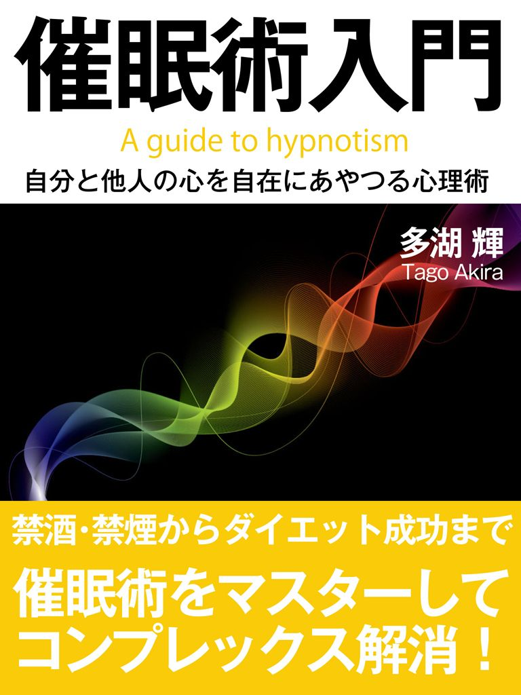
催眠術入門
――自分と他人の心を自在にあやつる心理術
多湖輝
まえがき
言うまでもなく、私たちの心は、意識の世界と無意識の世界に分かれています。催眠術は、無意識の世界に訴えかけて、いままで眠っていた能力を掘り出したり、自分でも気づかなかった不安や悩みを取り除くための心理技術です。
当然、無意識の世界にはいりこんで〝心理誘導〟すれば、知らないうちに人を眠らせたり、倒したりすることもできます。そのため、催眠術のことを手品や奇術の一種だと誤解している人がいます。また、人の思っていることをずばり当てたり、人を予言どおりに動かしたりするので、催眠術は、超能力者のような特別な能力を持った人だけができる技術だと思っている人もいるようです。
とくに、最近、テレビ番組でプロの〝催眠術師〟が、興味本位につぎつぎと人気タレントなどを催眠状態に誘導するところをショー的に見せたため、催眠術に対する関心が高まったかわりに、見せ物的な派手な効果ばかりが強調される弊害があったことも否定できません。
私が、はじめて催眠現象というものをこの目で見たときも、じつに不思議な思いにとらわれたものです。私は長いこと趣味で奇術の研究もしていましたから、もし俗に言う奇術的な手法でこの現象がつくりだされているとしたら、一目で見抜けたはずです。しかし、この催眠現象は、何度見ても、何度体験しても、いわゆる奇術的な仕掛けでは説明できない、人間心理の不思議さ、奥深さを物語っていたのです。その後、私が学者として人間の深層心理、潜在意識といったものを研究することになったのも、こうした催眠現象への関心がおおきくかかわっていたと言っても言いすぎではないでしょう。
心理技術としての催眠術は、超能力的な興味本位のものでも、ショーのようにおもしろ半分にするものでもありません。心理学的、あるいは医学的につきとめられた人間の潜在意識、無意識といったものに効果的にはたらきかけることによって、意識された人間心理のなかにあるさまざまな障害を取り除き、自分でも気づいていなかった自分を発見するなど、より望ましい状態に自分や他人を導こうとするものです。
先ほどもお話ししたように、人間は、意識された動機だけにしたがって行動するとはかぎりません。むしろ、人間の行動や欲求のほとんどは、無意識の世界で行われると言っていいでしょう。この無意識の世界にはたらきかけて、その人の精神世界を探るのが催眠術です。したがって、だれでも催眠誘導はできるし、また催眠誘導される可能性をもっているのです。
最近、新興宗教などに関して、マインドコントロールという手法が問題になっています。これは、読んで字のごとく人の心をコントロールする方法ということで、催眠術と一脈通じる心理技術ですが、催眠術の目的は、人の正常な判断力を失わせて、自分の意に従わせようとするものではありません。催眠誘導によって得られる心身のリラックスした状態を利用して、不要な不安や緊張を取り除いたり、自分のなかに眠っていた能力を掘り出したりして、消極的人間から積極的人間に変身し、ひいては創造性を高め、新鮮な発想を生む自分をつくりだすことができるはずなのです。
この本は、かつて私が書いた『催眠の効用』を、昨今の催眠術への関心の高まりに応え、誤解や常識のウソを正して、有効に使っていただくため、より実践的にまとめなおしたものです。自分のより積極的な人生のために、あるいは子どもや部下を強く育てるために、信頼できる方法を紹介してみました。
平成五年七月七日
多湖輝
「催眠術入門」――目次
・まえがき
１ 催眠術は、手品ではない
●催眠現象こそ、無意識の世界に通じる
●暗示は〝両刃の剣〟
２ あなたにもできる催眠術
●催眠状態をスムーズに導くためのコツ
●催眠誘導のウォーミングアップを兼ねた被暗示性テスト
●だれにでもできる催眠誘導法
●より確かな催眠状態をつくりだす深化法
●覚めたあと爽快な気分にさせる覚醒法
●自己催眠法は、座禅の修養法にも似ている
３ なぜ、人間は催眠術にかかるのか
●催眠は、けっして神秘現象ではない
●催眠によって何が起こるか
４ 浅い催眠・深い催眠
●軽い催眠状態で、手足から胃腸の働きまで支配する
●あらゆる感覚が鈍くなる中程度の催眠現象
●人格までも変えられる深い催眠現象
５ 催眠術は、自分を変え、能力を引き出す
●応用の可能性を秘めた催眠の三つの特徴
●催眠は、心身症の治療から、潜在能力の開発にまで応用される
１ 催眠術は、手品ではない
催眠現象こそ無意識の世界に通じる
私は、少年のころから催眠に興味があった
私は若いころから、催眠や暗示の現象にひじょうに興味をもっていました。もちろん、当時は、催眠に関する本などは、ほとんど出版されていませんでしたし、まして、今日のようにテレビで簡単に催眠や暗示現象を見ることなど、とても考えられないことでした。にもかかわらず、私が催眠に興味をいだいたのは、小学生のころ、知り合いの小学校の元校長先生から催眠誘導を受けた経験があったからです。
そのときの誘導は、いまから考えれば、ややお遊び的なもので、とても成功したとはいえませんが、私は、子ども心に、催眠というものの不思議さをはっきり植えつけられたことを記憶しています。
それから一〇年以上経って、私は心理学を学ぶようになるわけですが、なかでも、フロイトに興味をひかれ、催眠現象は一時、私の学問的興味の中心にすえられるようになったのです。
こうして私は、先輩の催眠誘導の技法を、見よう見まねで学びながら、なんとか誘導の技術を身につけるようになったのですが、それはほとんど手さぐりの、独学に近いものであったといえると思います。私が最初に催眠誘導に成功した相手は、小学校の五年くらいの生徒でしたが、正直いって、最初は半信半疑で、誘導のまねごとをやっているうちに、相手がいきなり、すーっと反応してきたのです。これには私自身も驚かされました。そばで見ていた人がいたら、おそらく、誘導者である私のほうが、はるかにドギマギしていたのではないかと思ったことでしょう。
この経験が一つ自信となって、その後、私は、催眠誘導の技術を磨いてゆくことになるのですが、そのころには、医学や心理学を学ぶ人たちのあいだに、催眠研究の大きな波が起こってきて、私自身も、同学の先輩やら、後輩の方々から、多くのことを学べるようになったのです。
こうして、やがて、わが国の催眠研究で指導的役割を果たしてこられた九州大学の池見酉次郎、成瀬悟策両教授らを中心に、私が所属していた東京工業大学の研究室が世話役となって、宮城音弥教授を委員長とする第一回日本催眠学会が、東京工業大学で開かれたのです。
その後、一〇年あまり経過して、私は、学問的興味の関係から催眠研究の第一線からはやや遠ざかることになるのですが、催眠現象そのものに対する興味は、心の中にいまも、激しく燃えています。それは、私自身、若いころから一貫して、人間心理の探求や解明のきわめて本質的な部分に、催眠現象が存在することを信じているからです。
催眠現象がなぜ起るかの原理は、まだはっきりしていない
テレビが発達したおかげで、いまや催眠現象というのは、手軽に見ることができるポピュラーな現象となりました。しかし、そのわりに、催眠現象についての認識は、いっこうに改まってこないから不思議です。
たとえば、今日でもなお、催眠を奇術の一種だと考えている人がいます。また、催眠誘導ができるのは、超能力者のような、特別な人間に限られていると思い込んでいる人もいるし、だいいち、自分自身が、催眠状態に陥るかもしれないということなど、まるで信じようとしない人が少なくありません。
しかし、言うまでもなく、こうした考え方は、いずれも誤っています。催眠現象は、奇術でもないし、まして超常現象でもないのです。だれにでも誘導できるものですし、だれでもが、誘導される可能性を持つものなのです。その意味で、催眠現象は、きわめて日常的なものと言えるでしょう。私は、催眠現象が不思議なものでないなどとは、まったく思っていません。二〇世紀の今日でも、催眠現象にはなお多くの謎がつきまとっているからです。現象そのものはごく日常的なのに、催眠現象がなぜ起こるのかという、その原理となると明らかではないのです。
催眠の専門家の仲間でさえ、どうすれば、相手を催眠に誘導できるかは知っていても、なぜそうなるのかについては、十分説明できない部分が少なくないのです。催眠についての、この謎の部分が増幅されていくと、おそらく奇術であるとか、超常現象であるとかいう考え方が出てくることと思いますが、それはまちがいなのです。
私は、この本を通じて、催眠現象やそれにまつわる現象を、できるだけ客観的に述べて、催眠とは何かを、明らかにしていきたいと思っていますが、それがそのまま催眠現象そのものを解明し、はっきり説明することではないのです。私ができることの大部分は、催眠現象について、現代の科学ではここまでが明らかであり、ここから先は、依然として謎の部分に属するという、催眠現象のありのままの姿を述べていくことにほかなりません。
無意識の世界にメスを入れる
私がこう言いきる理由にはいろいろあります。あとでくわしく述べますが、第一に、催眠現象こそ無意識の世界に通ずる王道だからです。人間心理の解明を、人間の意識のみに頼ろうとしたのは、近代心理学の祖といわれるヴィルヘルム・ヴントの犯した最大の誤ちでした。
人間は、明確に意識された動機にしたがって行動するものとは限りません。ときには自分でも意識することのできない精神の深層の世界から、さまざまな指令を受けて行動するのです。
ですから、私たちは、この無意識の世界にメスを入れない限り、人間心理の全貌を理解することは、とうてい不可能であると言っていいでしょう。そして、そのもっとも手軽で有効な手段が、じつは催眠ということになるわけなのです。
たとえば催眠を通じて、私たちは、相手の年齢を退行させることができます。タイムマシンに同乗して、相手の人生の時を過去にさかのぼっていくことができるのです。こうして、その人の、青年時代、少年時代、そしてときには、幼年時代にまでさかのぼっていったときに、私たちは場合によってはその人の心の奥深く、無意識の深層に埋もれていたトラウマ（心の傷）を探し当てるということも起こってくるのです。そこから、その人の人格のすべてが明らかになり、その人の精神を蝕んでいた苦痛のもとを取り除くことができたりするのです。
暗示は〝両刃の剣〟
催眠の威力は、はかり知れない
つぎに、催眠を重視する第二の理由は、それが人間の暗示の心理と深く結びついているからです。私は心理学の道にはいる以前から、暗示の大きな力について考えていました。
医者のちょっとした暗示によって、暗示にかかりやすい患者は、廃人同様になってしまいますし、医源病やガンノイローゼなどが、暗示の力で引き起こされることもあります。逆に、専門家や、リーダー、コーチなどの一言が暗示効果となって、スポーツ選手などの実力以上とも思える潜在能力が引き出されるようすなど、しばしば目のあたりにします。
〝両刃の剣〟の名のとおり、暗示は使い方によってはすばらしい剃刃にもなるし、逆に、おそろしい凶器ともなるのです。だとすれば、暗示効果の極限状態とも言える催眠の威力は、はかり知ることのできないものだと言えるのではないでしょうか。
私が人間の存在というきわめて本質的な部分で、暗示や催眠の重要性を認識したのはこれだけのことではありません。考えようによって、それは、人間の意志の自由という、人間存在の基本問題とも、深くかかわりあっているともいえます。たとえば、私が、かつてＮＨＫテレビで行なったつぎのような実験があります。
私自身が実験材料になったのですが、眼鏡をかけ、帽子をかぶっているところを写真にとり、その顔写真をＡ、Ｂ二つのグループに別々に見せます。Ａグループに対しては、顔写真を見せながら、「この方は、最近アメリカから帰国した工学博士で、画期的な論文を発表し、アメリカの学会でも一躍注目を浴びるようになった人物です」と説明します。一方、Ａグループから隔離されているＢグループには、同じ写真を見せながら、「この男は、最近逮捕された香港の麻薬の密輸団のボスである」と説明します。
こうしておいて、両グループの人たちに、変装した私の写真から受ける印象を話してもらったところ、Ａグループの人たちは、一様に「頭がよさそうだ」「頭がきれる」とか「頭の回転は早そうだが、ただ性格的に冷たそうだ」などと答えました。一方、Ｂグループの人たちからは、「いかにも残虐そうだ」とか、「子分に反対する者があれば、即座にピストルで撃ち殺すような残虐さがにじみ出ている」などという答えが返ってきたのです。
この実験から明らかなように、もし写真の人物に対する前置きの説明がなければ、その場にいた人たちはそれぞれ独自の印象を持ったであろうところを、たあいもなくそれぞれの説明に左右されて、その印象をつくりあげてしまったのです。これは、暗示の実験というよりは、〝先入観〟の実験と言ったほうが、ピンとくるかも知れません。しかし、第三者が、故意に、ある印象を植えつけることを計画し、受け手がそれを、無批判に受けとるメカニズムがあらかじめ計算されていたとすれば、情報の流し手は、まさに暗示の効果を利用したことになるでしょう。
無意識の世界に直接メッセージを送るＳＰ
情報の流し手が大衆を操作するといえば、かつてアメリカで行なわれたＳＰ広告の話にはおもしろいものがあります。
ある映画館で上映中のスクリーンに三〇〇〇分の一秒のハイスピードで、"Thirsty? Drink Coca-Cola!""Hungry? Eat pop-Corn!"という目には見えないメッセージを流したところ、コカコーラとポップコーンの売り上げが明らかに上昇したといいます。イギリスあたりでは、選挙に使われては大変だというので、法的に禁止する騒ぎまで引き起こしたのです。
これが、いわゆるＳＰ（閾下知覚）広告と呼ばれるものですが、じつをいうと、私もこのＳＰの実験を試みたことがあります。私の場合は聴覚ではなく、視覚に訴えたものでした。ある広告会社の依頼で、縦、横の比率が違う二種類の冷蔵庫の片方に、プロジェクターで目に見えない明るさで一流メーカーのマークを投影するというもので、何人かの人にこれを見せて、二種類のうちどちらの冷蔵庫のプロポーションがよいかを判断させたのです。
マークはサブリミナル・メッセージですから、当然、目には見えないにもかかわらず、ほとんどの人が、マークが投影されたほうがよいと答えたのです。
心理学的に見れば、ＳＰは純粋の暗示とはやや異なるものですが、ともに使いようによっては、邪悪な凶器となりうる点は同じでしょう。しかも、相手は何をされたのかわからないうちに、無意識に直接送りこまれたメッセージに誘発されて判断を狂わされてしまうという点で、催眠を研究していた私は、この実験結果をたいへん興味深く受けとったものです。
催眠を知れば、より深い人間理解につながる
この実験例でも明らかなように、人間の意志の自由が簡単に踏みにじられ、他人の意志で思うままに操られるといったことは、白昼堂々と衆人環視のもとに、良識あるごくふつうの心理状態にある人に対しても行なうことができるのです。
さらにそれだけではなく、暗示はときに、人間の思想や信念さえ左右しています。
たとえば、あなた自身が、自分の意見、考えだと思っているもののなかにも、じつは、今朝目を通した朝刊の社説が色濃く反映しているかもしれません。
もちろん自分では、その社説を熟読して、きちんと理解しているつもりでしょうが、実際はそうでなく、「大新聞の権威ある論説委員の主張することなら......」と、〝理性のふるい〟をかけずに受け入れて、それを自分の意見としてしまう可能性がまったくないとは、いいきれません。
このような現象の背後に、「暗示」（Suggestion）の働きを認めることができるのです。そして、「催眠は暗示に始まって、暗示に終わる」と言われるように、この暗示反応を理解することが、催眠とは何かを考える一里塚となるわけなのです。
それでは、暗示とは何かといいますと、やや専門的になりますが、ある人（暗示者）から与えられる一定の意図を持った言葉や刺激を、受け手（反応者）が理性に訴えることなく、暗示者の威光や反応者自身の心理的・生理的条件、そして情緒的な雰囲気に左右されて、無批判に受け入れ、暗示者の意図に沿うような反応を起こす過程なのです。
こう書きますと、あなたはなにか、異常な心理状態を想像されるかもしれませんが、暗示は、とくに異常な心理状態、生理状態ではなく、むしろ、客とセールスマン、上司と部下、親と子、恋人同士、友人同士など、ごくふつうの対人関係の心理的土台として、日常生活の中で行なわれているものなのです。
ですから、暗示の効果を意図的に悪用すれば、とんでもない凶器にもなりますが、また一方では、人間関係をスムーズにする潤滑油とまではいかなくとも、ある種のプラスの効果を持っていることも否定できません。
少々暗示についての話が長くなってしまったようですが、いずれにしても、私たちは日ごろ、生活の中での暗示の機能を見落としているのです。それはちょうど、私たちが、空気に包まれて生きていることにあまり注意を払わないのと同じことでしょう。
しかし、人間の社会において、暗示は、まぎれもなく重大な機能を果たしているのであって、人間心理の理解と解明には、暗示の研究が不可欠な要素となってきます。とすると、ときには人格まで変えてしまうという暗示効果の極限状態である催眠現象に興味を抱くのは、私たちは人間として、当然なことなのではないでしょうか。
私が催眠を重要視する理由の第三は、催眠現象が、心理学研究の特殊な方法論として、役に立つからです。たとえば、感情（情動）の研究などの場合を考えてみましょう。私たちは日常、喜んだり、悲しんだり、怒ったりしていますが、いざ研究だからといって、急に、悲しんでくれと言われても、そう簡単にいくものではありません。催眠状態では、これが容易にできるのです。人間の感情の変化によって、たとえば、体の各部にどのような変化が起こるかといった研究などは、催眠を利用すればたやすくできるのです。これは、心理学の研究上、専門家が重視する点です。
そのほか、年齢退行や人格変換など、催眠ならではの現象を通じて、私たちは、人間の深層心理の部分に科学の光を当てることが可能となるのです。
以上が、私が催眠を人間心理の探求のもっとも優れた手段としている理由なのです。それとともに、最後に、私が主張したいのは、催眠の有用性、つまり効用です。一つの大きな効用は、後催眠暗示などに見られるような、催眠暗示の持続的効果です。
後催眠暗示とは、催眠中に与えられた暗示が覚醒後も、効果を発揮するという現象のことですが、催眠の有効性のポイントの一つは、この暗示効果の持続性にあります。催眠が、ノイローゼなどの治療に有効なのも、もちろん、催眠のこの性質を利用したものであって、この効果が持続しなければ治療など期待できなくなってしまうほどなのです。
催眠の歴史は古いのです。おそらく、催眠や暗示の現象そのものは、人類の誕生とともに、存在していたに違いありません。
それほど長い歴史を持ちながら、催眠現象に科学の光が当てられるようになったのは、最近のことです。しかも、科学の粋を集めて研究しても、依然として、催眠の謎を完全に解き明かすことはできないのです。そのために、今もなお、催眠が正しく認識されずに、無用な恐れや、変な神秘性を与えようとしたり、ときには、現象のみを興味本位で取り扱おうとしています。
この本を通して、催眠という現象を、今日この時点で、もう一度見直していただくために催眠についてのすべての問題を、わかりやすく読者の前に提供してみようと思います。それをどう捉え、どう位置づけるかは、読者のご判断にまかせたいと思います。
２ あなたにもできる催眠術
催眠状態をスムーズに導くためのコツ
催眠は、だれにでもできる
催眠の現象はいったいどのようなやり方で引き起こされるのでしょうか。これまで多くの誤解を生んできたように、きらびやかな舞台衣裳をまとった一部の特殊な人にしか、人を催眠に誘導することはできないのでしょうか。
結論から言えば、催眠誘導は、実際だれにでもできるものです。催眠は、特別な〝術〟ではありません。人間が生まれつき持っている被暗示性を引き出すための一連の手続きと、ちょっとしたコツのようなものを身につけることができさえすれば、催眠誘導は、はじめて試みる人にでも十分可能なのです。
実際、日常生活でも私たちは、催眠誘導に似たことを無意識に実行しています。たとえば化粧品のセールスマンは、訪問販売のときに、十人並みの女性に対しては、けっして、「奥さんはお美しい」とは言わず、「いやあ、きれいなお肌をしてらっしゃる」と、サイド・ステップしながら相手をほめたたえます。
自分では気づいていないところに美点を探し出されると、人間は弱いものです。相手の女性の注意がすこしセールスマンのほうへ向いたところで、セールスマンはすかさず「でも、ひょっとして、近ごろお肌がこころもち荒れているような気がしませんか......」と切り込んできます。
すぐれたセールスマンは、ベテランの登山家のように、人間心理の〝窪み〟に巧みにハーケンを打ち込んでよじのぼるのです。つまり、無意識のうちに、相手の被暗示性に訴える催眠誘導と同じような方法を使っているわけなのです。
こうした覚醒暗示と催眠暗示とはまったく同一というわけではありませんが、この章で述べるような一定の原則にのっとれば、だれにでも催眠誘導は可能なのです。
ところで、ふつう標準的に行なわれる催眠法は、大きく分けて、つぎの四段階を踏んでいます。
（１）準備。つまり、相手を、積極的に催眠を受けたい気持ちにさせたり、催眠についての誤解や不安を取り除いたりする。また、相手の被暗示性がどれくらいかを探る被暗示性テストもこのとき行なわれる。
（２）誘導。いうまでもなく、類催眠状態から軽い状態へ、さらに中程度へと相手をいろいろな方法で誘導していく。
（３）深化。一度催眠状態にはいった相手を、さらに深い催眠状態へと導く。
（４）覚醒。相手を催眠状態から覚ます。
この本でも、一応四段階を順に取り上げていくことにしますが、これは何も杓子定規に決まっているわけではなく、ときによっては、いきなり誘導の段階からはいる場合もあってよいのです。以下、代表的な手法をたどりながら、催眠という不思議な現象の〝起こされ方〟を知り、催眠現象の内実に迫ってみようと思います。
誘導者の服装や部屋は、まず清潔にする
さきのセールスマンと主婦の例でもわかりますが、暗示が効果を発揮するのは、人と人とのあいだの関係づけがうまくいっているときです。主婦が最初からセールスマンを信用しないような状況では、暗示は空回りをするだけで、相手の心に到達しないでしょう。
催眠の場合は、この関係づけがさらに強固でなければならないのです。誘導者に対して、相手の全神経を集中させるほどの間柄になる必要があるのです。それには、牧師と熱心な信者、主治医と病人、父親と父親を尊敬してやまない娘のような関係をつくりだすことがまず大切なのです。このなかで、私は、とくに主治医とその患者のような関係が、催眠誘導にとってもっともふさわしく、効果的なような気がします。病人にとって、医者は自分の裸を見られるだけでなく、ときには命までも預けねばならない相手なのです。当然そこには、全面的とは言わないまでもしっかりした信頼関係ができ上がっているはずです。
この意味で、誘導者は相手に対して権威性さえ感じ、しかも、「誘導できる」という強い自信を持つことが必要なのです。誘導者の権威が相手に伝わり、強い信念と自信とがほとばしると、相手に催眠に誘導される心の準備ができます。人間には、権威やすぐれた価値を受けいれたいという無意識的な欲求があり、それを刺激されると、比較的簡単に心を開きます。
もちろん、いくら権威性を感じさせ、自信たっぷりといっても、故意に威厳を示すような言動をとれというわけではありません。あくまで誘導者の余裕ある静かな態度、学識、人格、熟練などが、相手に信頼感を植えつけるのです。
誘導者の権威や信念を具体的に示すのは、身だしなみです。かつて、催眠の祖アントン・メスメルは、〝治療〟の際は、絹の裏張りをした革のシャツを着こんでいたといいます。彼は宇宙には〝動物磁気〟という流動体が広く存在していて、その流れをよくすれば病気が治ると信じていました。この特製シャツは、彼の体内にある流動体が逃げないための工夫だったのです。彼の信念の表現であったのです。
患者は、総カガミ張りの施療室で、メスメルのファッションに出会うと、威光に感服して、その瞬間から、彼を信じる〝心の構え〟が生まれたに違いありません。
もちろん、現在では、特殊な服装で威厳を示すことはありません。そんなことをしても、かえって芝居がかっていて、だれも信じないでしょう。
しかし、一般には少なくとも髪や手、爪などをよく手入れして、相手に不潔感を抱かせたり、いやな臭いを感じさせないよう注意することが必要なのです。
着る服もまず清潔であることが第一で、黒のような濃い背広などをきっちりと着るだけで十分と言えます。これによって、〝術者〟ではなく、まともな人だという印象を相手に植えつけられるからです。
ただ、よく公開実験のときに用いられるような、多少奇をてらった服装も、場合によっては、相手に対して誘導者のプレスティージを高めるのに役立っているわけで、この意味では全面的に否定するわけにはいきません。また、誘導される人には、あまり体をしめつけ、窮屈な感じにさせるようなものは身につけさせないことです。いつでもリラックスできるよう、ときには眼鏡や時計などを外させてもよいでしょう。
こうした身だしなみのほかに、催眠誘導を行なう場所もたいせつな要素です。催眠を心療に使ったりする場合は、専門の催眠室が使われますが、一般には、広すぎず狭すぎず、静かなごくふつうの部屋で十分です。誘導者が熟練し、相手の催眠暗示性がきわめて高まったような場合は、それこそガヤガヤした喫茶店の中でさえ誘導は不可能ではありません。
私もかつてかなりの騒音のなかで誘導を試み、相手を深い催眠状態に導くことに成功しましたが、経験の浅い人には、やはり、静かな部屋がいいでしょう。そして、部屋には、直接日光が射し込まないようカーテンを引き、やわらかい光の間接照明があたるぐらいにします。室温もできれば摂氏二〇度から二五度くらいが望ましいのです。
〝ラポールづけ〟で、相手を積極的に催眠を受けたい気持ちにさせる
まわりの環境が整ったならば、いよいよ相手に向かい、相手の心と誘導者の心にベルトをかけるいわゆる〝ラポールづけ〟が行なわれます。ラポールというフランス語は、元来、言葉の暗示で高められた被暗示性を意味する催眠用語ですが、いまでは対人間関係で心と心の結び合いを言うようになりました。それだけ催眠が日常生活のなかにはいり込んでいることを示しているのかもしれません。
いずれにしても、〝ラポールづけ〟でまず相手の緊張を解きほぐすのです。はじめはあまり主題に関係のない話からはじめて、やがて催眠の実例や利点を話してきかせ、相手が催眠を受けたい気持ちになるよう積極的な心をつくっていきます。これは一般に〝動機づけ〟と呼ばれる作業です。治療などでこの〝動機づけ〟を行なうときは、相手が相談にきた動機を聞いて、患者の症状などをていねいに話させます。そのあとそれが、心理的な問題が原因になっていることを説明して、いかに催眠療法が有効かを実例をあげて話すというようにするのです。
かりに学生を二つのグループに分け、一方には催眠の解説を聞かせてから誘導し、他方には説明もせずに誘導して、結果をくらべますと、解説してから誘導したほうのグループが、はるかに高い成功率を示します。これは、誘導されたいという気持ちをつくることが、のちの誘導をうまくいかせるのに、いかにたいせつであるかを物語っているのです。
しかし、この動機づけができても、相手はまだ不安であるに違いありません。催眠について多少知っていたり、経験があったりする場合はべつにして、知らない世界だけに不安でどうしようもないということが少なくありません。
催眠中に恥ずかしいことをしゃべりはしないか、誘導者によって意志の自由を奪われるのではないか、覚めなかったらどうしよう、睡眠のように意識がなくなるのではないか、などと思い悩みます。まるではじめてのセックスをまえにした男女のように、不安と期待でいっぱいの状態なのです。
そこで、誘導者は、一つ一つその不安をていねいに否定しながら、二人の協力によってはじめて催眠状態が生まれると強調するのです。ラポールをしっかりとかけ合うのです。この二人は、水泳のコーチと選手にも似ています。コーチは選手の水中での行動を予測し、導くことができますが、そのまえに、まず選手が飛び込む気にならなければ、コーチは何もできないからです。
深層心理学の祖ジグムント・フロイトは、「催眠の本質は、性的な本能のうちのマゾヒスティックな要素によって、リビドーを誘導者の人格に無意識に固着させることである」と述べています。
彼は催眠を性的な関係におきかえて説明したわけですが、〝ラポールづけ〟ができた場合は、誘導者がサディストで、相手はマゾヒストと考えられるほどに、しっかりした信頼関係が結ばれるということなのです。
フロイトはかつて、ある女性を誘導して、すばらしい効果をあげることができました。この女性はそれをとても感謝して、催眠療法が終わると、フロイトにキスをしました。ところがその瞬間看護婦が部屋にはいってきて、抱擁する二人を見てしまったのです。謹厳なフロイトは、ひどく当惑して、これほど恐ろしい効果を持つ催眠は以後使うまいと決意したと、伝えられています。
それにしても、誘導者と相手は、ふつうは縁もゆかりもない人間同士なのです。それが時間をかけてラポールづけを行なっていくと、相手は身も心も誘導者に委ねる気持ちになっていくのです。人間の心の「しなやかさ」が、やはり催眠の前提になっているわけであり、誘導されるにつれて、人はますますしなやかになっていくのです。
上半身を背もたれから浮かせて椅子に座らせ、呼吸をととのえさせる
相手の心と十分接近できたら、つづいて、「身体の構え」をつくります。まず、椅子に座って行なうときは、椅子の背に背中をつけず、上半身を浮かせて座るように指導します。誘導する際に、体を動かしたり、手を上げるときに抵抗を少なくする準備です。またあとで、誘導するときに、深く椅子の背によりかからせることもできるからです。
ふつう、リラックスした座り方をとらせるには、一度立たせてから座り直させることがよく行なわれます。それでも緊張している場合は、誘導者は、
「肩の力を抜いてください」
と言いながら、肩先から足先まで触れていき（これをパスを行なうという）、リラックスさせます。
このパスは、相手にいやな感じを与えない程度に、ごく自然にふれていくことが第一です。たとえば、肩から手のほうになでおろした場合、
「手先の力を抜いて楽にしてください」
と言いながら手に触れて、ときには手を持って二、三度パタンと膝の上に落としてリラックスさせるという具合です。自然で楽な姿勢は、もっとも刺激が少なく、のちに誘導者の言葉に反応しやすくなります。
催眠とよく比較される座禅でも、調身（身体をととのえる）がすべてに優先すると教えています。まず体から座禅の心づもりへ導いていくのです。
座禅では、調身のつぎに重要視されるのが、調息（呼吸をととのえる）です。『座禅用心記』には「長息なればすなわち長にまかせ、短息なればすなわち短にまかせ、漸々に之をととのへ......通ずるにまかせて通ずる」と調息の法が述べられています。座禅では、呼吸を自然にまかせるうちに、修行を積むと一分間四呼吸ぐらいにまでなるといいます。
しかし催眠ではそれまで待っているわけにはいきません。相手に正しいリラックスした座り方をさせたら、つぎは呼吸をととのえさせるのです。
腹式深呼吸の練習をさせてから、
「今度は、吐き出すときに、心のなかで、ひとつ、ふたつ、と一〇まで数えてください」
といいます。つまり、催眠の「調息」は注意を集中するためのリハーサルでもあるのです。
この深呼吸は、あくまで相手の自然の呼吸に合わせてやることが原則で、自然のリズムに反して行なわせても、かえって息苦しくなったりして注意が集中できないことがあります。また、吐くときのカウントは、誘導者が相手の呼吸に合わせて、「ひとつ、ふたつ......」と数えてやってもいいのです。
東洋の座禅が、身体を自然にまかせながら、心を開ききるのに対して、西洋に生まれた催眠は、ある目的のために身体をととのえ、その目的に突き進む心をつくろうとします。座禅をのんびりとした露天掘りとするなら、催眠はさしずめ暗い坑道を掘り進む探掘法にたとえられるでしょう。
催眠の考え方には、心の奥にいったい何が隠されているのかを知りたいという、どん欲な精神が感じられます。すでに準備段階でも、心の内側を目ざす姿勢が確立されるのです。
【催眠術誘導時の座らせ方】
椅子の背に背中をつけず、上半身を浮かせて座らせる。
【リラックスのためのパス】
肩先から足まで自然にふれていってリラックスさせる。
催眠誘導のウォーミングアップを兼ねた被暗示性テスト
人によって暗示に対する反応の程度は違う
このようにして、誘導者自身が催眠誘導にはいるための準備をしていくなかで、相手に催眠を受ける心の準備をさせ、暗示を受け入れやすくすることができるのです。そこで、誘導者は、誘導のための決められた暗示を相手に与えていけばいいわけですが、実際にそれだけで催眠に誘導していくことができるかといいますと、私の経験では、あるいは多くの催眠研究者が指摘するように、かならずしも実際にはそれだけでうまくいかない場合がかなりあるのです。
実際に催眠誘導を行なってみるとよくわかりますが、催眠に対する感受性が高く、どんな技法を使っても、じつにスムーズに誘導される人もいますが、その一方で、誘導に抵抗を示す人も少なくないのです。
なぜ、人によって、催眠誘導されやすい人と、されにくい人がいるかというと、それは人によって、暗示に対する反応のしやすさ（被暗示性）に差があるからです。これを確かめずにいきなり暗示を与えて誘導しますと、思わぬ抵抗にぶつかったりすることがあります。この被暗示性は、一般に男性より女性が被暗示性が高く、また八～一一歳でピークに達して、以後は徐々に落ちていく、と言われています。
しかし、その原因については、はっきりしたことがわかっていません。
いずれにしても、はっきりした原因はわかりませんが、人によって被暗示性が異なることだけは確かです。そこで、催眠を誘導するときには、相手がどの程度暗示に対して反応するかを知るために、まず被暗示性テストを行なうことがたいせつになってきます。
この被暗示性テストは、たとえは悪いのですが、石油の油脈をボーリングするとき、ある場所に油脈があるかないか、おおよその見当をつけるための"試掘"に似ています。手当たりしだいに地中を掘り進んでも石油が噴出してくるという保証はないし、またたとえ掘り当てられたにしても、時間のロスです。それが、試掘をすることによって、効率確率がよくなるわけです。催眠誘導では、この被暗示性テストが、試掘の役目をはたして、「急がば回れ」式に催眠状態によりスムーズに導くことができるのです。
なぜならこの被暗示性テストによって、相手の被暗示性を知ることができれば、それに応じた誘導法を考えることができるからです。たとえば、ある被験者をテストしてみて、被暗示性がたいへん低かったとすれば、すぐに誘導を行なったとしても失敗する率は高いのです。そこで臨機応変に、いきなり誘導することはやめて、はじめは動機づけをすることだけにとどめます。この動機づけを数回行なって、相手の被暗示性が高まっているのを確認してから誘導すれば、スムーズに行なうことができます。
被暗示性のテストは、いわば相手の潜在意識へ向かって下降して〝心のエレベーター〟の調子を点検する作業です。エレベーターの調子が悪くて、途中で停止するようなときは、何度も動かしてみて、円滑に下降するように整備するわけです。
ただ、テストなどと言うと、被暗示性を探るための手段だけのように思われるかもしれませんが、単なるテストではなく、被暗示性のを高めるのにも役立つので、実際に被暗示性テストを試みていると、そのまま催眠状態に誘導されてしまうこともあります。その意味で、被暗示性テストと催眠誘導のあいだには明確な一線があるわけではなく、むしろ、被暗示性テストは、催眠誘導のウォーミングアップにもなり、誘導技法の一部と考えてもいいのです。
もう一つ注意しなければいけないのは、被暗示性（覚醒被暗示性）と被催眠性（催眠被暗示性）の関係です。両者にはたしかにしなければいけない相関関係はありますが、被暗示性が高いからといってかならずしも被催眠性が高いといえない場合もあります。これらは一応別個のものと考えていただいたほうがいいでしょう。
１・指の近寄るテスト〔ほーら指がついてくる〕
催眠誘導者は経験によって、被暗示性をテストする方法をいくつも開発しています。まず、もっともやさしい「指の近寄るテスト」を紹介してみましょう。
まず誘導者は自分で手を組みながら、相手に、
「このように組んでください」
と指示します。このとき私は、親指を交差させてしっかり組むように指導しています。
つぎにこの組んだ状態のまま、人さし指を伸ばさせます。
「人さし指を伸ばしてください......はいそうです。もっとピンと伸ばしてください......はい、けっこうです」
と言いながら、人さし指と人さし指の間を二～三センチ離させます。
指のかたちができたら、誘導者は左手で相手の腕あるいは肩に軽く触れながら、右手で相手の突き出した人さし指の中間を指さして、
「指の間をじっと見てください」
といいます。そして、相手の人さし指をつまみながら、
「私が〝はい〟と言って指を離すと、このように両方の指がついてきます」
と二～三回指がつく練習をします。
「わざと自分でやらずに、自然につくままに委せてください」
「はい肩の力を抜いて......すると指がだんだんついてきます。もっとついてくる。まだまだついてくる」
といい、親指と人さし指で相手の指先をつまむように、近づかせます。
「ほーら、もうついてしまいましたよ......そらついてしまいました」
と暗示すると、指はついてしまいます。
ところで、こう書くと読者のなかには、ふつういまのように手を組むと、指がついているほうが自然なのであって、むしろ開いていること自体に無理があるのだから、指がつくのは当然である、と思われる方がおられるかもしれません。
じつはその通りで、実際にやってみるとよくわかりますが、指のあいだを広げておくことは、あえて自然の状態にさからわせているわけで、リラックスさえすればひとりでについてしまうのです。これを、逆に両手を同じように組ませて、指をつけた状態から、「さあ、指は開く、ほら開くでしょう」と暗示しても、まずうまくいきません。
それではまやかしではないかと思われるかもしれませんが、じつはこのあたりに、被暗示性テスト、誘導法全般に通じる、コツや原理が隠されているのです。
その第一のコツは、このように本来、リラックスさえすれば、何もしなくてもついてしまう指の動きを、暗示によってついたように相手に信じ込ませることなのです。ですから、相手の指のあいだが狭まりはじめたら、
「ほらついてきた」
と、そのことを言葉で指摘すると、被験者は、暗示されたことがほんとうに起きるんだ、という気持ちになります。そして、さらに指がついてくるスピードにあわせて、その現象を追いかけるようにして、
「指がついてくる」
という暗示をくり返し与えて、相手の被暗示性を巧みに増幅させていきます。
ただ相手に暗引の言葉を与えるだけでなく、誘導者は相手の体の動きに合わせて暗示を与えていくことが、一つのポイントとなるのです。このように、暗示の効果が起きやすいような状態に被験者を置いてから、それに暗示を与えていく技法を、偽暗示法と呼んでいます。あとで述べる「身体の動揺法」でも、やはりこの偽暗示法を用いると効果的です。
相手を意識的に不安定な状態に立たせて、体が右に揺れたら、
「ほら右に揺れたでしょ」
と指摘し、今度はその反動で左に揺れたら、
「ほら、今度は左に揺れたでしょ」
と暗示の追いうちをかけていくのです。これを、相手の体が前後に揺れているのに、
「ほら右に揺れたでしょ」
と暗示したのでは、効果が薄いわけです。先に、だれにでも催眠誘導はできる、といいましたが、こうしたコツや原理を利用しないと、なかなかスムーズにはいかないものです。
話がややそれましたが、もう一度、「指の近寄るテスト」を思い出してください。一連の流れとしては、まずはじめに、
「......あなたの指がついてきますよ......」
と相手にこれから起こそうとする反応についてほのめかし、つぎに、
「ほらあなたの指はついてくる」
と、その反応が実際に暗示で起こっているかのように指摘し、それをくり返しながら、最後に、
「ずーっとついてくる、ついてくる......ほら、あなたの指はついてしまった！」
と、すでに反応が起こってしまったことを強調するわけです。
じつは、第二のコツが、この流れの最後のところの、
「ついてくる、ついてくる」
という言葉のたたみこみと、
「ほら、ついてしまった」
と、一瞬をとらえて追い込むことにあるのです。
よく催眠をショー的に扱ったもので、術者が自分の二本の指を観客に握らせて、離そうとしてもとれないという場面にお目にかかります。こうしたものの大部分はいわば催眠トリック（ヒプノトリック）なるものを使っているのですが、そのなかにも、暗示の原理をふまえているものがあります。たとえば、いまのもそうで、注意して見ていると、観客に指を握らせておいて、
「離してみてください」
と言ったあと、間髪を入れず、
「離れない......ほら離れない」
というように、肝心なところで言葉をたたみかけていることに気づきます。
さらに催眠誘導にあたっては、特別な声の調子をつくる必要はありませんが、少なくとも、うまく誘導できるかどうか不安だったりすると、言葉の調子にすぐに反映したりするので注意が必要です。ただ、私たちは、いわゆる催眠術師のように、ことさらに声に抑揚をつけたりはしませんが、それがまったく効果がないわけではないのです。
それもできれば、暗示の原理にそって声の調子を変えていくほうがいいのです。暗示に際しての声の調子は、あまり大声とか、ひどく高音でさえなければ、落ち着いた中ぐらいの高さの声でよく、相手に反応が起こりはじめたら、反応のスピードに合わせて言葉を早めたり、抑揚をつけると、反応をさらに促すことができます。さらに肝腎のポイントでは、自信に満ちた口調で、
「ほら、指がついてしまった！」
と断定的に暗示するのが、一つのコツになります。
さて、このような暗示の原理をふまえて、被暗示性テストをやってみたものの、うまくいかないということは、じつは私たちの場合でもあることなのです。こんなとき、私たちは、けっして「失敗した」という動揺感を持たないようにするし、相手にも与えないようにします。誘導に際しては、つねに相手に自信を持って接することがたいせつなのです。
自分に対しても被験者に対しても、テストなのだから心配する必要はない、ということを強調します。そしてあるときには、
「はい、結構です。ずいぶん気持ちが落ち着いてきましたね」
と言って、
「さあ、もう一度くり返してみましょう」
と、同じテストを何回もくり返していくとうまくいくようになることもあります。その際、なにも同じテストだからといっても、暗示の言葉も同じにする必要はないのです。一回ごとに、すこしずつ表現を変えているのも一法です。また、
「私が、数を一〇数えるうちに、指がついてくる......一〇、九、八......一、ほら、ついてしまった」
と、暗示の中にカウントを入れるようにすると、今度はうまくいくようになることもあります。
また相手の反応の仕方からみて、そのテストが適さないと感じとったならば、
「はいよいですね。ずいぶん気持ちが落ち着いてきたでしょう。ではつぎの練習に移りましょう」
と言って、別のテストに移ることもあるのです。たとえば、あとの誘導法のところで述べる凝視法を用いたとき、被験者が誘導者の目を見ていられなくなったときには、後倒法にきりかえてみるという具合にするのです。被暗示性テストはいろいろありますが、実際、多くのテストをくり返し行なうほうが、被暗示をより深く亢進させることができるようです。
なお、「指の近寄るテスト」とよく似たものに、同じ観念運動を利用した「手の近寄るテスト」があります。両方の手のひらを三～五センチの間隔をとって開かせ、「指の近寄るテスト」と同様の方法でくっつけていくやり方です。「指の近寄るテスト」よりはるかに大きいだけに、こちらのほうがむずかしいのです。むしろ被暗示性テストというより、誘導法といったほうがよく、「指の近寄るテスト」のあとで行なうようにするとスムーズにいくようになります。
「指の近寄るテスト」を例にとって、暗示の原理とコツについてふれましたが、つぎにいろいろある被暗示性テストの中から、「手のからみ合いテスト」「熱のテスト」「イメージテスト」「振子テスト」のやり方を紹介しましょう。
【指による法】
（１）誘導者は手を組んで見せ、人差し指を伸ばさせる
（２）指の間を見つめさせると、両方の指がだんだんついてくる
２・手のからみ合いテスト〔さあ、あなたが手を離そうとしても離れなくなります〕
このテストは、両手の指を組んで握ってもらい、「離れない」という暗示を与え、その離れなくなる程度によって被暗示性の程度を知る方法です。と同時にテストとしてだけなく、「離れない」という禁止効果によって被暗示性を高めることができるので、誘導法の前段階として用いられることも少なくないのです。
テストを始めるまえに、まず、指輪、腕輪、腕時計などをはずしてもらいます。誘導者は、腰をかけている被験者のななめ前に立って、
「このように、両手を前に出して指を広げてください」
と言い、言葉だけでなく、実際に誘導者は被験者に対して手を出して見せ、そして被験者にも指を広げてもらいます。
さらに、誘導者は、自分の両手の指を交互に組み合わせて見せ、
「このように指を深く組み合わせてください」
と言って、被験者に指を組み合わせてもらいます。このときポイントになるのは、指を根元まで深く組ませることです。
そして、
「指を曲げて、手のひらをできるだけくっつけてください」
と言いながら、被験者に手をそえて指を曲げさせ、手のひらをしっかりとつけてもらいます。この曲げ方が十分でないと失敗することが多いので、指を曲げるときには、かならず深く曲げて、指先が手の甲につくようにします。
そして、誘導者は両手で被験者の両手を包み込むようにして、
「はい、このようにして手のひらを固くつけてください。指が曲がると、手のひらも固くついていきます。指ももっと固くついていきます」
と言いながら、被験者の両手を手前に引き、腕を前方に伸ばさせます。
誘導者は、両手を被験者の肩にかけ、手先のほうに向かって二～三度なでていきながら、
「両手が固く、強くくっつき、腕が伸びて硬くなってきます」
と腕を伸ばします。さらに、
「両手が固くくっつき、腕が伸びて硬くなってきます」
と言いながら、二～三度なで、腕を強く伸ばしていきます。そして最後にもう一度、しっかりと手のひらをつけさせます。それからさらにもう一度、腕を両側から押さえてよく伸ばします。
なぜ、このようにしつこく腕を伸ばさせるかといいますと、そもそも組んだ手を離すには、指を開かなければなりません。ところが、腕を伸ばしていると、指が開きにくくなるからです。また、たとえ開いたとしても、第一のポイントとしてあげたように、指を深く組み合っているので、ちょっと引っぱったくらいでは離れないのです。このようにして、手が離れにくい条件をまえもってつくっておいてから、「離れない」という暗示をたたみかけていくわけです。
このとき、誘導者はいきなり「離れない」という暗示を与えずに、まず、右人さし指で、被験者のこぶしの上になっているほうの親指の爪を指示して、
「この親指の爪をじっと見ていてください」
と言い、爪の先を見つめさせ、
「指を見つめていると、指が硬くなって、手がもっと硬くなっていきます」
と言います。この際、手も、被験者の手首の近くを持って、伸ばしている腕がゆるまないようにします。ここで、
「もう手が離れません。さあ、あなたが手を引き離そうとしても離れなくなりますよ」
と言ってムードづくりをしておき、ついで
「はい離れない！」
と断定し、さらに間髪を入れず
「離れようとするとますます固くついてきます」
「とても固くついてしまってもう絶対に離れません」
とたたみかけていきます。そして、被験者の手をちょっと左右に振り動かしてみせると、両の手はぴったりとついて離れなくなるのです。
ここでは、指の近寄るテストで述べた暗示の与え方が同様に重要であるのと、もう一つ、親指を凝視させることがコツです。つまり、手が離れにくい条件をつくっておいて、親指を凝視させて、注意をそこに集中させ、指を伸ばして開けば手が離れるということを考えさせずに、ことさら離れにくくするところがコツなのです。
逆に言えば、せっかく高まった被暗示性をそこなわないために、どうしたら離れるかを考えつかないうちに解除することも大事です。解除をするときには、被験者の手に触れ、
「さあ、今度は両手の力が抜け、指が開き、楽に離すことができますよ」
「はい、楽になって離れましたね」
と言いながら手を離します。
ところで、被験者が暗示に抵抗して、途中で手が離れそうになった場合は、
「離れましたね。ですが開きにくかったでしょう」
などと言うと、被暗示性はいちじるしく低下してヤブヘビになります。被験者が指を伸ばしたりして手を離そうとする兆候が見えてきたら、間髪を入れず手で軽く相手の手をたたき、「はい、離れます」と暗示して手を離させてしまうほうがいいのです。
くり返しますが、誘導者は、被験者の反応を見て臨機応変に暗示や行動を変えることが重要なポイントなのです。
なお、この手のからみ合いのテストのバリエーションとして、手をからみ合わせたあと、手を握らせずに、手のひらを返し、外側に向けさせて行なうものもあります。この方法ですと、まえのやり方のように、指を伸ばされると離れてしまう危険性が少ないので、被暗示性を高めるのに、より効果的と言えます。
こうみてくると、〝現代のメスメル〟ともいわれるアメリカのミルトン・エリクソンは、相手のわずかな身体反応を引き出す名手として知られていますが、なにも彼に限らず、私たちも、手、指、足など、被験者の体の各部の動きを的確に読み取り、それを臨機応変に利用して、被暗示性を高めていっているわけです。このようなこともあって、被暗示性テストも、研究者がそれぞれ独自の方法を開発している場合が少なくないのです。
たとえば、眼球の動きから、被暗示性を察知しようとしている人に、心理学者のポール・ベイカンがいます。
彼は、四六人の大学生について、眼球の動きを実験してみました。すると、左視線の人がもっとも催眠に誘導されやすく、右視線の人は誘導されにくいことがわかりました。
眼球の動きによって被暗示性をテストする方法は、コロンビア大学の精神分析学者ハーバート・スピーゲルも開発しています。彼は被験者がトランス状態にはいるときに、眼球がグルッと回って上まぶたの下に隠れていくのに気がつきました。
そこで、催眠に誘導するまえに、相手に眼球を回転させて上方に集めることを指示してから、まぶたを半ば閉じさせる方法を思いついたのです。このとき、どのくらい白眼が残るかによって被暗示性を測るのです。彼は、〝白眼〟が大部分を占めて、〝黒眼〟が消える人ほど、催眠誘導されやすい、といっています。
これらの実験には、まだまだ研究の余地があり、あるいは眼球の動きと被暗示性には、なにがしかの相関関係があるのかもしれません。
【手のからみ合いテスト】
（１）誘導者は手本を示して、両手の指を交互に組ませる
（２）指を曲げ手のひらを固くつけて腕を前方に伸ばさせる
（３）被験者の腕を両側より押えて、さらによく伸ばす
（４）親指の爪を見つめさせると、組んだ手が離れなくなる
３・熱の錯覚テスト〔さあ、注意してください。まもなく熱くなりますよ〕
被暗示性テストは、テストをすることがそのまま催眠誘導のウォーミングアップ、あるいは催眠誘導法そのものにもなりうるといいましたが、このテストは、被験者の被暗示性を知るためだけの、いわば純粋の被暗示性テストです。しかも、特殊な装置が必要なので、あまり一般的な方法とは言えませんが、参考までに紹介してみましょう。
まず、小さなヒーターを被験者の額につけます。あらかじめ、被験者には、ダイヤルを回していくと、だんだんヒーターが熱くなることを説明しておきます。こうしておいてから、被験者自身にゆっくりダイヤルを回してもらい、額に熱を感じたら、すぐにヒーターをはずし、そのときのダイヤルの目盛りを覚えておいてもらいます。
そのあと、もう一度同じことをやらせますが、こんどは、被験者に気づかれないように電源を切ってしまって、電流が流れないようにしておきます。そして、被験者がダイヤルをまわして、最初のテストで熱さを覚えた目盛りに近くなったとき、
「さあ、注意してください。まもなく熱くなりますよ」
と暗示します。すると、被暗示性の高い人、あるいは被暗示性が高まっている人は、電流の流れていない、熱くないはずのヒーターに熱さを感じるのです。このテストの変形に、電極を使う場合もあります。
４・イメージ法〔風船のついた左手は上がっていく。電話帳をのせた右手は下がっていく〕
このテストは、イメージと手の疲労を利用した方法で、この方法でテストをすると、想像力の豊かさなどを知ることができますし、また催眠への抵抗の度合いも知ることができます。
まず、被験者を椅子に座らせ、目を閉じさせます。そして、深呼吸をさせて、リラックスさせます。誘導者は被験者の両手を持って、
「手を軽く持ち上げてください」
と言って、両手を肩の高さくらいまで上げます。
被験者の左手を軽く握らせて、親指だけを伸ばし上を向けさせて、
「この親指に糸が結んであり、その先に大きな風船がついていると思ってください」
と言います。つぎに、被験者の右手を開かせ、手のひらを上に向けさせて、
「こちらの手のひらの上には厚い電話帳が乗っていると思ってください」
と言います。
「あなたの、風船の結んであるほうの左手が軽くなってくると想像してください......どんどん風船が上がっていきますよ」
「電話帳を持っている右手はだんだん重くなってきましたね」
「ほら、もっと重くなってきますよ」
と暗示するのです。
このとき、左手が上がり、右手が下がっていくようなら、その被験者は被暗示性が高いと見ていいでしょう。
これとはまったく反対に、左手が下がり、右手が上がってしまうようなら、催眠に抵抗があることが多く、もう一度ラポールづけからやりなおしたほうがいいでしょう。
ただ、反対の動きをしてしまうというのは、催眠に抵抗を示しているとはいえ、なんらかの反応があったわけで、催眠誘導の可能性は大きいと考えて、まったく悲観してしまう必要はありません。
むしろ、上がりも下がりもしない、まったく反応がないときのほうがむずかしいのです。こんなときは、イメージ法をあまり深追いせずに、すかさず、別の被暗示性テストに切り換えたほうが無難です。
【イメージ法】
（１）誘導者は相手の両手を肩の高さくらいまで上げさせる
（２）風船のついた左手は上がり、電話帳を持った右手は下がる
５・振子テスト〔あなたが手にした振子がぐるぐる回り始める〕
このテストは、いろいろある被暗示性テストのなかでも、昔からよく用いられているもので、しかもその方法はだれにでもできる簡単なものです。一メートル程度の糸と五〇円玉、そして、直径三〇～四〇センチの円を描いた紙を用意するだけで準備は整います。
被験者は座ったままでもいいのですが、立ってもらうと効果はさらにあがります。床が低めのテーブルの上にこの円を描いた紙を置き、五〇円玉をつるした糸を持ってもらって、五〇円玉を円の中心の真上に、ややはなして下げます。
こうしておいて、
「横の線にそって、目をくり返し動かしてみてください......ほら、五〇円玉も同じように動き始めましたね」
と暗示します。こうすると、まずほとんどの被験者が、暗示どおり、振子を振らしはじめます。
そこで、つぎに、
「縦の線にそって目を動かしてみてください......ほら五〇円玉も同じように動きましたね」
と暗示しますと、そのとおりに振子を振らせはじめます。
同じ要領で、円周にそって右まわり、左まわりに目を動かすように暗示しますと、そのとおりに振子は円を描いて動きはじめ、しだいにスピードを増してついには、振子はぐるぐる回るようになります。
これを、さらに、振子の動きにつれて、身体そのものが揺れてくるという暗示に結びつけていくのも有効な方法です。
このテストでも、すべての被暗示性テスト、誘導法に共通する原理が巧みに生かされています。一つは、被験者を立たせたほうがより効果的だといいましたが、その意味は、立った状態で糸を持っていると、座っているときより、長い糸の先の五〇円玉を静止させるのが難しいからです。いやがおうでも、揺れてきます。もちろん、座って行なう場合には、当然、糸も短くなるわけですが、この場合でも、腕を固定させているときの疲労が微妙に糸に伝わって、五〇円玉は揺れてしまうのです。
いずれの場合にしても、そうした動きを暗示の言葉で指摘し、眼球を動かさせることで、さらに増幅しているわけです。
だれにでもできる催眠誘導法
１・身体の動揺テストから後倒法〔私が手を離すとすーっと後ろに倒れます〕
被暗示性テストで相手の被暗示性が十分に高まったとみると、誘導者は、いよいよ催眠誘導をはじめます。ただし、さきほども述べたように、被暗示性のテストをしているうちに、相手が勝手に催眠にはいってしまうことがよくあります。誘導者は、覚醒暗示を与えているつもりなのに、相手は自然に催眠状態へ移行するのです。そこでいろいろな催眠誘導法を紹介するにあたり、私が被暗示性テストとしてもっともよく用いる方法で、しかもそれがそのまま誘導法としてもきわめて有効な「身体の動揺テスト」と「後倒法」をまず取り上げることにします。
身体の動揺テストは、相手に体が揺れてくるという暗示を与え、その際の揺れの程度によって被暗示性を知るというものです。これには椅子に座ったまま行なう方法と、立って行なう方法とがあります。このうち腰かけさせて行なう方法は、テストというより本格的催眠誘導を目的として用いられることが多いので、あとから取り上げます。
立ったまま行なう場合にも、単に前後左右に動揺させるだけのものと、さらに進んで後ろに倒す方法（後倒法）、逆に前に倒す方法とがあります。まず、動揺からはじめて、もっとも一般的に行なわれている後倒法を解説します。
相手をまず立たせ、目を閉じてもらいます。つぎにかかととつま先をぴったりそろえさせます。この動作が重要なポイントで、足をそろえると、体が不安定になり、誘導による動作が起こりやすくなるからです。誘導者は、
「肩の力を抜いてください」
と言いながら肩先から手先のほうへなでおろし、リラックスさせます。両肩に手をおいて軽く揺すってみてもいいのです。なんの抵抗もなくグラグラするようなら、リラクゼーションが起きている証拠です。
こうしておいて、誘導者は、
「体が揺れてくる」
という暗示を与えます。このときは、相手の身体の自然の揺れに合った暗示をすることがたいせつで、たとえば相手の体が左に多少揺れるようなら、
「あなたの体は左に揺れてきます」
と言います。この言葉で相手は暗示でほんとうに左に揺れたように感じ、今度は体を立て直そうとします。このとき、今度は、
「右に揺れてきますよ」
というふうに暗示を与えれば、暗示と相手の体の揺れはますますピッタリ合ってくるのです。この際の揺れの度合いで、相手の被暗示性の程度はおよそ察知できますが、場合によっては、この段階だけですでに催眠状態にはいってしまう人も少なくないのです。
つぎに、動揺から後ろに倒す「後倒法」に移りましょう。誘導者は目をつぶって立った相手の肩に手をかけ、
「私が手を離すと、後ろへ引かれるような気がして、倒れます」
「もし倒れても私が後ろから支えますから絶対に大丈夫です」
「では一度どんな感じがするかやってみましょう」
と言って、両者を肩から一五センチほど離し、
「はい、倒れてみてください」
「さあ、すーっと倒れてきた」
と言いつつ倒れてきた体を手で支えます。もし相手が緊張している場合は、リラクゼーションを試み、できるまでくり返します。つぎに誘導者は両手の指先を相手のこめかみの両側にあて、頭を後ろに倒し、顔を上向きにします。それから後ろから支えるように肩に手をかけ、すこし相手を後ろに引いて相手の重心がかかとにかかるようにします。この操作で身体のバランスがくずれやすい状態をつくるわけです。相手の肩を押さえたまま、
「私が手を離すと、あなたはすーっと後ろに倒れてきます」
と言って手を離し、
「はい、すーっと倒れてくる」
これで倒れてきた相手の体を両手でしっかり受けとめてやり、ふたたび元に戻して二～三回くり返します。なお、この際、相手の足もとが動かないように、かかとの後ろのところに、誘導者の足をそろえておいたほうがいい場合もあります。
通常は、このような操作で相手の被暗示性を高めておき、そのあと椅子に座らせ、身体の動揺法など誘導法を用いて催眠状態にはいらせます。その場でそのまま倒したり寝かせたりするのは、相手に不安や恐怖感を与える恐れがあるため、避けられるのがふつうです。
【後倒法】
（１）かかととつま先をピッタリそろえて被験者を立たせる
（２）誘導者がうしろから支えて、倒れる練習を何度か試みる
（３）頭をうしろに倒して、被験者の重心をかかとにかける
（４）誘導者が手を離すと、自然にうしろに倒れてくる
２・凝視法〔じっと見つめていると、まぶたが重くなって下がってきます〕
一九世紀イギリスの外科医ジェームズ・ブレイドは、メスメルの〝動物磁気〟を実験をしていて、催眠は身体現象ではなく、心理効果の一つであることを発見しました。英語のHypnosis（ヒプノシス）という言葉は、彼が言い出したものですが、ブレイドは、外科療法に応用して、催眠をはじめて魔術の領域から救い出した人物です。
彼は、催眠誘導の古典的な方法「凝視法」を開発しました。彼の方法によると、誘導者が右手に光る物体を持ち、相手の目より高い位置に二〇～三〇センチ離してかざしながら、これを見つめさせます。すると、相手の瞳が小さくなり、やがて拡大してきます。瞳孔の拡大・縮小がくり返されはじめたら、右手の人さし指と中指でＶ字型をつくり、相手の目の前に突きつけると、まぶたがふるえながら閉じて催眠誘導されていくというものです。
現在では、これを改良して、相手の〝自主性〟を重んじる方法になっています。相手を椅子にかけさせ、リラックスさせてから、左手で相手の首の後ろを軽く支え、頭を固定します。つぎに凝視点を相手の目の高さで三〇センチほど離して置きます。凝視点は小さい点のようなものがよく、できれば光るものがよいでしょう。たとえばペンライト、万年筆の先などです。そして、
「目を開いて、これをじっと見つめてください」と指示します。
「もっと見つめてください」
「さあ、見つめながら私の言うことをよく聞いてください」
「もっと強く見つめましょう」
こう言いながら、一五センチほど凝視点を上昇させます。このとき、しっかり頭部を固定して、上目づかいで光点を見つめさせます。これは相手の目を疲労しやすくするためです。じっと凝視していると、注意の集中が起こる一方、まばたきが停止します。しばらくすると相手の目が疲れてくるはずです。すると自然にまばたきがはじまります。
「じっと見つめているとだんだんまぶたが重たくなります」
「まぶたが重くなると、だんだん下がってきます」
相手はこのような言葉の暗示を受けますと、それに引きつづいて、実際にまぶたが下がってきます。つづいて追い打ちをかけます。
「ずーっと下がってきますよ」
「ずーっと下がってきましたね」
まぶたを下げる暗示に合わせて凝視点もだんだん下げていき、まぶたが下がると、まばたきが激しくなって閉じそうになります。
「まぶたが疲れてきましたね、静かに閉じてください」
と言って目を閉じさせます。
そして最後に、相手の肩に手をかけ、リラックスさせて催眠に誘導します。
「体中の力が抜けて、とても気持ちよくなりますよ」
「あなたは、深い深い催眠状態にはいっていきます」
これで誘導法としての凝視法は完了ですが、相手に凝視点を見つめさせる場合、誘導者は相手の視野にはいり込まないように注意します。相手の集中が分散する恐れがあるからです。
かつての名映画『レベッカ』のなかに、ペンダントを凝視させて、催眠に誘導するシーンがありました。専門に研究していた私などは興味深く見たものですが、あの場面などは、誘導者が何気なくペンダントを揺らせるので相手の意識が集中し、意識野が狭まったところで暗示を行なうという、いわば凝視法そのものというより、一つの変形に近かったような気がします。
また、かつて、プロ・ボクシングのヘビー級チャンピオンだったモハメド・アリは、〝催眠術〟を使っていると騒がれたことがあります。第一ラウンドのゴングまえに、レフェリーをはさんで相手選手と相対するときに、彼はあの大きな目で相手の目を、射抜くようににらみつけます。
それとともに、「お前はおれに負ける。おれは世界一強い。おれに勝てるはずがない」と大声で叫ぶのです。この心理作戦によって彼は、戦うまえにすでに先手を取ったとさえいわれました。アリの目に〝魅了〟され、彼の言葉に暗示されて、相手は戦意をかなり喪失してしまうのかもしれません。もしこれが事実なら、アリは「凝視魅了法」を有効に使った、すぐれた暗示者だったということになるのですが......。
なお、催眠装置のヒプノディスクも、視覚支配による催眠誘導の原理を使っています。
この方法は、つぎのとおりです。うず巻き状の図柄―ヒプノディスクが、レコードのように電源によって回転するような装置を、相手の視線に対して直角になるように置き、三〇～四〇センチの距離をへだてます。リラクゼーションができたら、電源スイッチを入れてディスクを回転させます。「じっと見つめる」ように言って、二～三分見つめさせてから、
「あなたはうず巻きの中にだんだん吸い込まれていくような感じがしてきます」
「ほら、だんだん引き込まれてきましたね」
「そうすると体が前のほうに引かれてくるような感じがしてきます」
「だんだん引かれてきます」
この暗示で相手の体が前屈してきましたら、
「まぶたがパチパチしてきました」
「目が疲れて、まぶたが下がってきます」
と暗示をくり返して、催眠状態に導くのです。ヒプノディスクというメカニックを応用しているだけで、原理的には凝視法の一つのバリエーションなのです。
【凝視法】
（１）目より高い位置に万年筆の先などをおき、じっと見つめさせる
（２）見つめているうちにまぶたが下がって、相手は催眠に誘導される
３・手の開閉による法〔私が手を離すと、あなたの手はずーっと開いてきます〕
この方法は手の動作を利用しているので、比較的早く誘導できます。
相手を座らせ、リラックスさせたあと、誘導者は前方に立ち、相手の手を持って、手のひらをぴったりと合わさせます。そして、
「私が手を離すとあなたの手が自然に開いてきます」
と言いながら、相手の手を開きます。この操作を相手をリラックスさせながら一～二回くり返し、再び両手を合わさせます。このあとの誘導は、目を開けたまま行なってもいいのですが、この時点で、相手に目を閉じさせたうえで行なうこともできます。誘導者は相手の両手を下からすこし持ち上げて支え、力が抜けていることを確かめたうえで、
「私が手を離すと、手が開いてきます」
と言って手を離します。相手の手は脱力しているためすこし下がり、自然に開き気味になります。その瞬間をとらえて、
「そーら開いてきた。もっと開く、ずーっと開く」
と言いながら誘導者が両手を開いていくと、相手の手もそれに合わせるように開いてきます。相手の自然の動作にタイミングを合わせることが一つのコツです。相手の手が肩幅ぐらいに開いたら、
「はい、止まった」
と言って動きを止め、手のひらを上にして相手の手を下から支えるようにします。つぎに
「今度は手が軽くなってすーっと上に上がります」
と言って、手をすこし持ち上げてやりますと、相手の手は徐々に上がっていきます。と同時に、
「そーら上がってきた、ずーっと上がる、どんどん上がる」
「だんだん頭に近づいてきます」
「ほーら手が頭に近づきましたね」
「手が頭につくとまぶたがますます重くなります」
と暗示していきます。実際に相手の手が頭についたならば、
「まぶたがたるんで目がパチパチしてきたでしょう」
「手はますます強く頭についてきましたね」
と追い打ちをかけますと、相手の目はほんとうに閉じてしまいます。あとは、
「三つ数えると手が離れてきます」
と暗示を与えて、誘導者が三つ数を数えて、手を膝の上に落とさせます。
「手が重くなってきて、膝の上に落ちます」
「膝の上に手がつくともっと深く催眠に誘導されます」
相手の手が膝の上についたならば、
「手が膝につきましたね」
「頭が重くなってだんだん下がってきます」
「もっともっと下がります」
この暗示で相手は、前屈した姿勢で頭を垂れ、催眠状態にはいっていきます。
【手の開閉による法】
（１）誘導者は相手の手を持って一～二回開閉させる
（２）今度は手は持たなくても、閉じた手が自然に開く
（３）「手が軽くなり上に上がる」と言って下から少し支える
（４）手が顔についたら、まぶたが重くなる暗示を出す
（５）「三つ数えると顔から手が離れる」と言って三つ数える
（６）手が膝に落ちると、被験者は深く催眠に誘導される
４・手の挙上法〔膝の上の手が軽くなって浮かび上がってきます〕
手の運動と、暗示のタイミングが重要なのは、「手の挙上法」でも同じです。
相手を椅子になるべく深く座らせ、呼吸をととのえさせてから、リラックスさせるために、まずつぎのような暗示を与えます。
「目を開いてください」
「そして手にぐっと力を入れてください」
誘導者は指を広げてみせ、
「このようにピンと伸ばします」
と同じことを相手に行なわせます。
「今度は力を抜いて」
「はい、そうです」
「ではもう一度ぐっと力を入れてください」
「はい、そうです」
「はい、またずーっと力を抜いて、そのまま楽に膝の上に手を置きます」
これで誘導にはいる準備ができました。
そこで、誘導者は左手を相手の肩に置き、右手の人さし指で相手の手の甲を指さしながら、
「右手の甲をじっと見てください」
と右手に注意を集中させ、相手の視覚への自覚を高めるのです。つぎに、
「じっと見ているといろんなことに気づきます。ほら、手の重みが膝にかかっていることに気づきませんか」
と、今度は、手や膝の感覚器に注意を向けさせます。
「まだまだいろんなことに気づきますね。手のひらが、膝の温かみを受けて温かくなってきたでしょう」
これは当然の生理現象ですが、ふつうは気にもとめません。このような暗示を与えて、感覚を鋭敏にするわけです。さらに、つぎのような暗示刺激をつぎつぎに与えていきます。
「指がピクピク動いていることに気がつきませんか」
「ほら、指がピクピクして指のあいだが広がってきましたね」
「さきほど手の重みを膝に感じていましたね」
「でも今はもう重みがなくなったのに気がつきませんか」
「何か手が軽くなりましたね」
「あ！ 手が浮かび上がってきましたね」
このように暗示を与えると、相手の右手指が広がったまま浮かび上がってきます。このとき、誘導者は、動作が起こりやすいよう、左手で相手の肩を軽く後ろに押さえると効果的です。
「ほら、ずーっと上がってきます、もうあなたの顔についてしまいます」
これ以後相手の手が顔についてから、催眠状態に導くまでの手順は前記した「手の開閉法」の場合と同様です。
「ほら、ずーっと手が上がってきました」
「もうすこしで顔についてしまいます」
「手が顔につくと、まぶたがだんだん重くなってきます」
この暗示で、相手は右手が顔につくと本格的に目を閉じてしまいます。
これで一応催眠に誘導できたわけですが、引きつづきその状態を深めて確かなものにしていきます。
「私が三つ数えると手が顔から離れて下へおりていきます」
と言って誘導者は三つカウントします。相手の手がおりてきたなら、
「手が重くなって膝に落ちます」
「膝に手がつくと体の力が抜けてうっとりと楽になります」
と暗示をつづけ、相手の手が膝についたなら、
「頭がだんだん下がってきます」
「もっと、ずーっと下がってきます」
「頭が下がると、あなたは、ますます深い催眠状態にはいります」
と、頭の下がる暗示を与えながら、誘導者は左手で相手の肩を軽く前に押して上半身をやや前に倒してあげます。このあとは、手を膝から落としてダラリとした状態に導けばよいのですが、そこまでしなくとも相手は十分な催眠状態にはいっています。
誘導法のポイントの一つは、この技法でいえば、手が重くなって膝につく→すると気持ちが楽になり、頭が下がってくる→頭が下がってくると深い催眠状態にはいっていく、というように、いくつかの動作を連続させ、しかもたえず動作が起こったあとのことを予告していくことにあります。
また、被暗示性テストのところでもふれたように、第二のポイントは、暗示の言葉にカウントを加えてみること、さらに第三のポイントは一つの暗示を何回もくり返すことにあります。これらが、催眠を効果的に誘導するコツなのです。
【手の挙上法】
（１）手を伸ばさせ、力を入れたり抜いたりしてリラックスさせる
（２）被験者の注意を、膝の上の右手に集中させる
（３）「手の重味がなくなり、軽くなる」という暗示で右手が浮く
（４）手が顔についたら、まぶたがどんどん重くなる暗示を与える
（５）「三つ数えると顔から手が離れる」と言って三つ数える
（６）手が膝に落ちたら、被験者を前屈姿勢にし、深く催眠に導く
５・メトロノーム法〔メトロノームの音を聞いていると、だんだん気持ちよくなってきます〕
以上がよく使われる催眠誘導法ですが、誘導法にも多くのバリエーションがあります。最後にその一つである「メトロノーム法」にふれてみましょう。手順はつぎのように行なわれます。
「さあ、これからメトロノームのゆっくりした音を聞かせますよ。目を閉じて聞いてください。音だけを聞いて、ほかのことは何も聞かないでください」
と言いながら、一分間に五〇拍節ぐらいのおそいリズムでメトロノームを打ちます。
〝カチ、カチ、カチ......〟とメトロノームの音に合わせて、言語暗示を与えます。
「だんだん気持ちがよくなってきました。もっともっと気持ちがよくなりますよ、カチ、カチ、カチ......」
「カチ、カチ、カチという音が、あなたを深い催眠状態に導いてくれます」
しばらく言葉の暗示をつづけたら、あとはメトロノームの単調な音にまかせます。このくり返される音は、脳の新しい皮質に送られて、その働きを制止する効果があるのかもしれません。こうしてたいていの場合、三〇分以内には催眠誘導に成功します。
念仏やお経の効用も、これによく似ていると言えます。座禅をすると、座ったままで、よく「普勧座禅儀」というお経を唱えさせられます。その際僧侶は、「このお経は目で読むのではない。隣りの人の読む声を聞きながら、それに合わせて読み進むのです。耳で読みなさい」と注意します。お経の意味を理解するのではなく、声を合わせてリズミカルに唱えることが目的なのです。
実際、お経の文句の特徴はステロタイプなのです。同じような文句が連続して、何回でもくり返されます。この単調な文句をくり返して唱えているうちにリラクゼーションが起こって、一見催眠でつくり出すリラクゼーションと似たような状態が生じてくるのでしょう。
ここで取り上げたいくつかの誘導法のほかに、数多くのバリエーションが考えられています。しかし、多くの場合、基本的方法をマスターすれば、多くの技法は比較的たやすく修得できるものです。また、時と場合によって、多くの方法の中からそれぞれもっとも効果的な誘導法が選ばれていることは、言うまでもないことです。
より確かな催眠状態をつくり出す深化法
１・身体の動揺による法〔体が揺れていると、とても気持ちがよくなってきます〕
前節で説明した誘導法で催眠に誘導した場合、はじめから深い催眠トランスにはいることは、ほとんどないと言ってよいでしょう。はじめから深い催眠トランスに達している者は、私の経験からしても一〇人のうち一人か二人くらいのものです。これをもっと深い、安定した催眠状態にもっていこうという方法が、ここで紹介する深化法です。催眠で無感覚状態や幻覚、人格変換、後催眠暗示などの現象を生じるためには、深化法を用いて被験者を深い催眠状態に導くことが必要なのです。
「身体の動揺による法」の説明にはいるまえに、深化法が行なわれる際の全般的注意点を挙げておきます。それは、誘導法によって生じた被験者の催眠深度がどの段階であるかを知って、それに適した深化法を選ばなければならないということです。まず浅い催眠状態が生じた場合は、「身体の動揺による法」など、いわば「運動暗示」を主体とした方法が用いられ、つづいて「反復誘導法」「深呼吸法」「数を数える法」などが用いられます。また、誘導法によって被験者に比較的深い催眠状態が生じた場合は、すぐに「イメージ法」が効果的に使われるのです。
こうした点を踏まえたうえで、まず「身体の動揺による法」をお話しします。
この方法は、誘導法の冒頭で述べた「後倒法」の中で、多少ふれましたが、もっとも浅い催眠状態を深化させるのによく用いられます。被験者を誘導法催眠状態に導いたなら、椅子に座らせ、頭を下げて、上半身をできるだけ前屈した姿勢をとらせます。誘導者は相手の肩を片方の手で押し、大きく揺らしてやりながら、
「私があなたの体を揺らせていると、体の力が抜けていき、深い催眠にはいっていきます」と言います。もし相手の体に力がはいっているようなら、リラックスさせて、力を抜くように言う。
「左右に大きく揺れてきます」
と言いながら揺らせつづけると、やがて被験者は自動的に揺れてきます。そこで誘導者は手を離して、
「手を離しても揺れています」
「ほら、大きく揺れてきたでしょう。もっと大きく揺れてきます」
「揺れていると、力が抜け、とても気持ちよくなってきます」「もっともっと大きく揺れます」
このように暗示をつづけると、相手の揺れはだんだん大きくなってきます。ここでたいせつなことは、誘導者は相手が自動的に揺れるようになってから手を離すことで、離すのが早すぎてはうまくいかないし、もし、手を離したとき相手の揺れが止まったら、再び手で揺らせばいいのです。
相手の揺れが大きくなったところで、
「私が三つ数えると、今度は前後に揺れてきます」
「ひとつ、ふたつ、みっつ」
「ほら、前後に揺れてきたでしょう」
たいていここで被験者の体は前後に揺れ出しますから、誘導者は相手の肩に手を置いて、
「揺れながら頭がだんだん後ろに引かれていきます」
「もっと後ろに引かれてきます」
この暗示とともに誘導者は、相手の肩の後ろを軽く押してあげます。
「頭がもっともっと後ろへ引かれます」
「体も後ろに引かれてきましたね」
と暗示を与えながら、誘導者は相手の体を後ろによりかからせるようにします。
「もっと後ろに引かれる」
椅子では、被験者はこのとき頭が不安定になり、不安を覚えることもあるので、
「後ろに引かれても私が手で受け止めてあげます」
と前置きしておいたほうがいいでしょう。つぎに、
「体の力がもっと抜けてきます」
と言いながら誘導者は手で相手の頭を起こしてあげます。
「今度は頭が下がってきます、下がるともっと楽になり、うっとりしてきます」
この暗示で被験者は頭を下げ、この深化法のはじめのときの姿勢に戻るとともに、深い催眠状態にはいってしまうというわけです。
【身体の動揺による法】
（１）身体を前屈させ、肩を押して大きく左右に揺らせる
（２）揺らせ続けていると、被験者は自動的に揺れてくる
（３）「今度は前後に揺れる」という暗示で前後に揺れ出す
（４）「頭が引かれる」と言って身体を後ろによりかからせる
２・反復誘導法〔私が手を打つとあなたは覚めます。そして再び深い催眠状態にはいります〕
このやり方は、催眠と覚醒とを交互に反復して行なう方法です。もちろん覚醒といっても、いわゆる完全に覚めた状態ではなく、しばらく催眠状態が尾をひいているような状態と言ってよいでしょう。
ジャネーによれば、人は催眠状態から覚めたのちも、しばらくのあいだは浅い催眠状態にあるといいます。そして、この傾向は覚醒させるのが急速であればあるほど強いのです。この点を効果的に利用するのが、「反復誘導法」です。ですから、反復するときのタイミングがきわめてたいせつになってくるのです。完全に覚醒しないうちに、再び催眠に導入することにポイントがあるわけです。
誘導によってトランス状態にある被験者に対して、つぎのように暗示します。
「私が三つ手を打つと（あるいは数える）あなたは覚めます。しかし、再び、まえよりもっと早く深い催眠状態にはいります」
「ひとつ、ふたつ、みっつ」
相手の目が開ききるのを待って、あまり時間をおかずに、
「私の指先をじっと見つめてください」
「まぶたがとても重くなって、ずーっと下がってきます」
まぶたが下がりはじめたら、
「静かに目を閉じてください。とても楽になって深く深く催眠に導かれていきます」
このような方法を、適当に反復して、だんだん深い催眠状態に導いていくのです。
３・深呼吸法〔吸って、はい、ずーっとはいて、だんだん力が抜けていきます〕
深呼吸法は、催眠誘導のあらゆる段階で有効な方法です。準備のところでは、リラクゼーションに役立ち、より誘導をスムーズにする効果を発揮するし、深呼吸法だけを用いた催眠誘導法も行なわれています。とにかく、催眠状態にある相手を深呼吸させながら、より深い催眠状態に導いていくのです。
「これから深呼吸をしていただきますが、一つ息をするごとに体の力が抜け、楽になり深い催眠にはいっていきます」
「大きく息を吸って、はい、ゆっくりずーっとはいてください」
「吸って、はい、ずーっとはいて、吸って、はい、ずーっとはいて、だんだん楽になる」
「吸って、はい、ずーっとはいて、もうすっかり力が抜けて楽になった」
この操作をくり返すわけです。この方法で重要なのは、誘導者は被験者の呼吸に合わせて、無理のないよう深呼吸させることです。不自然に行なっても、けっしてうまくいかないでしょう。
４・数を数える法〔ひとーつ、ふたーつ、みっつ、だんだん深い催眠状態に誘導されます〕
深呼吸と同様、ゆっくり数を数えていくのも、催眠を深めるうえで効果的です。
この方法は、注意の集中による深化法であるため、静かにゆっくりした語調で行なうことが必要ですし、被験者の自然の呼吸に合わせてカウントすることが、うまく深化させるための条件です。また、カウントにも、誘導者が行なう場合と、被験者自身に数えさせる場合の二通りがあります。
「私が二〇（あるいは三〇～五〇）数えると、あなたはもっと深く催眠に誘導されていきます」
「私の声をよく聞いてください。だんだん深く催眠に誘導されます」
「はい、ひとーつ、ふたーつ、みっつ」
「うっとりしてきましたね......もっと楽になってきますよ」
「とーお、じゅういち、じゅうに」
このような調子で深化させていきます。誘導者が数を数えて、それに注意を集中させるわけです。これを被験者自身に数えさせる場合も同様ですが、数え方は、一から順に始める以外に、逆算させる方法もあります。しかし、難易度から言えば、逆算のほうがよりむずかしいでしょう。
５・イメージ法〔あなたは階段を一段一段降りていくうちに、深い深い催眠状態にはいります〕
被験者がイメージの主人公になりきるには、相当深い催眠トランス状態に導かれていなければなりません。ですから、「イメージ法」が行なわれるには、その前段階で被験者が中程度の催眠状態にはいっていることが必要です。描かせるイメージは、やはり視覚的イメージが効果的だといえます。イメージにはいろいろなものがありますが、私がよく用いているのは、つぎの「階段法」と呼ばれるものです。
「あなたは、いま、白い階段のいちばん上に立っていると想像してください」
「あなたの前には赤い鳥居が見え、ずーっと下のほうへ白い一〇段の階段がつづいています」
「はい、白い階段が見えましたね」
「見えたら、右手を上げて合図してください」
「さあ、今度はその階段を一段、一段、ゆっくり降りていきましょう」
「はい、一段、また一段、降りていくにつれ、あなたはどんどん深い催眠状態にはいっていきます」
「はい一段、また一段、いよいよ最後の一〇段目です」
「はい、下まで降りつきました。あなたは深い催眠状態にはいりました」
このように、同じ視覚のイメージでも、赤とか白のように被験者がより明確に想像できるような色彩を用い、階段の数なども、ゴールを明確に暗示したほうが効果は大きいのです。この「階段法」にはエレベーター（エスカレーター法）などの方法もありますが、手順は同じです。
覚めたあと爽快な気分にさせる覚醒法
覚醒法は催眠中の禁止暗示をといてから
深化法で得られる深い催眠状態のもとで、いろいろな暗示によって、ノイローゼの克服や教育指導など、その人の問題に合わせて種々の催眠の効用が発揮されますが、もちろん、いつまでも相手を催眠状態のままにしておくわけにはいきません。そのまま放置しても覚めないことはないのですが、一定の覚醒法を用いるのが原則となっています。
覚醒には、急速に行なうものと、ゆっくり覚ましていくものとがありますが、あまり急速なものは避けられています。ふつうの人の場合、心理的にも、大脳生理的にも、催眠状態から覚めるまでには、ある一定の時間が必要だからです。
また、覚醒法を用いるまえには、誘導者は、リラクゼーションの暗示を与えるとともに、催眠中に与えていた不自然な暗示や、禁止暗示を全部取り除くことを忘れてはなりません。たとえば、
「手が硬直して曲がらなくなる」
などといったカタレプシーを起こさせた場合なら、
「手が柔らかくなり、力が抜けてきた」
と手の緊張をとく暗示を与えてから、リラクゼーションさせて覚醒に導くのです。もし、これを忘れると、あとの日常生活で不都合が起こったり、不快を感じたりして、次回の催眠誘導の抵抗となりかねません。
ふつう、催眠から覚めたあとは、気分は爽やかになるものですが、なかには、めまいなどの不快な気分を訴える人もいます。そのためにも、誘導者はまえもって、
「覚めたあとは頭がスッキリして、気分がさわやかになる」
と言っておいたほうがいいでしょう。また、覚醒法を行なってもよく覚めない場合がありますが、あわてないで、目を閉じてもらい、安静にしているよう指示すれば、そのうちに覚めてしまいます。また、すぐ再び深い催眠状態にはいらせて、あらためて覚醒法をくり返せば、たとえ一回目でうまくいかなくとも成功するはずです。
覚醒後は、催眠中の感想などを話し合う
覚醒法の暗示はつぎのように行ないます。
「もうすこしたって、私があなたを覚ましてあげます」
「覚めたときはとてもよい気持ちで、すーっと落ち着きます」
「私が五つ数えると（あるいは手を打つと）、あなたは目が覚めます」
「ひとつ、ふたつ、みっつ」
「目の前が明るくなってきましたね」
「目がパチパチしてきましたね」
「よっつ、いつつ」
「はい、目を静かに開いてください」
「とてもよい気持ちで目が開きましたね」
手を打つときは、「いつつ」のカウントと同時に手を打ち、パッと目を覚まさせます。
すぐに目が開かなかったら、
「もうすこしじっとしているとはっきり目が覚めます」
と言ってそっとしておきます。しかし、原則的には、もう一度軽い催眠状態に入れ、再び覚醒法をくり返したほうが効果的です。
このように相手を覚醒させたあとは、誘導者が心配そうに、「気分はどうですか」とか、「大丈夫ですか」などとたずねないことです。いたずらに相手の気分を不安にするだけのことで、そんなことより、覚醒したあと、相手が催眠誘導を受け、いろいろな暗示を与えられていたあいだに経験した、いろいろなことについて話し合うことのほうが大事です。
感想や、印象を自由に語ることで、被験者の催眠に対する考え方や態度がはっきりしてくるだけでなく、次回以降の催眠誘導がよりスムーズに運ぶ場合が多いのです。
自己催眠法は、座禅の修養法にも似ている
他者催眠から自己催眠への流れ
この章では、催眠誘導の準備からはじまって、催眠誘導のウォーミングアップを兼ねた被暗示性テスト、誘導法、深化法、そして覚醒法までの催眠誘導の技法を、できる限り一般的なやり方にしぼって紹介してきました。これまでお話ししてきた誘導技法は、すべて他人に誘導されて催眠状態にはいる、「他者催眠」による技法です。ここで最後に、「自己催眠」による技法にふれておきます。
自己催眠による技法―自己催眠法とは、自分で自分に暗示を与えることにより、催眠状態にはいる方法です。かつては、催眠法といえば、他者催眠法を指していたと言ってもまちがいないくらいでしたが、いまは催眠の効用・応用の可能性を追求するなかから、自己催眠法の流れが生まれてきました。
やや専門的な話になりますが、カウンセリングや精神療法には大きくわけて、来談者や患者に対して忠告や説得を与えて、積極的に働きかける「指示的方法」と、それを与えない「非指示的方法」の二つがあります。そして、ケースにもよるのですが、一般には、相手が自分で障害や悩みを克服していくように、相手の内発性をうながしていく非指示的なやり方のほうが、よりカウンセリングや治療の効果があるとされています。
ところで、暗示、そのなかでもとくに催眠を使った療法などは、誘導者が患者を催眠状態に導いておいて、さらに催眠暗示によって、あるときは、心の状態を他の方向へ導いたり、あるいは、無意識状態で何かを疑似体験させたりする、というように、「指示的な方法」のそれもかなり極端なやり方と言えます。
それだけに催眠療法は、ある種の症状に対しては、じつにドラマチックなまでに有効性を発揮することがあります。かつて、数年間明らかに心因性の足のマヒで歩けなかった婦人に、催眠治療を試みてわずか数回の催眠誘導によって、立って歩かせることができた経験があります。しかし、一つの大きな欠点は、このような心因性の病気の場合、心の傷の部分を取りのぞかないと、また症状がぶり返してくる点にあります。もちろん、彼女の場合には、まえにふれた催眠分析を用いて、心の傷を探りだし、それを浄化することで、根本的な治療ができたのですが、心因性の病気でなくとも、たとえば、催眠状態に導いて、無痛分娩の訓練をする場合も同じ問題に直面します。妊娠の初期から出産までのあいだ、たびたび催眠誘導して訓練をほどこさないと、一回だけの訓練では効果がすぐに薄れてしまうのです。
そのようなこともあって、また、相手自身の内発性をうながすほうが効果がよりあがるという観点から、誘導者にたよらなくとも、いつでも自分で自分を催眠誘導できる自己催眠法が研究されてきたわけです。ただ、そうは言っても、自分に暗示をすれば、それだけで催眠状態にはいれるというものではないのです。
他者催眠では、ひたすら、誘導者の積極的な働きかけに対して、被験者は受け身の態度をとりさえすればよかったわけですが、自己催眠では、そのような両極端の役割を一人で果たさなければならないのです。ですから、ふつうの催眠誘導の技法をそのまま使っても効果的に催眠状態にはいりにくいのです。
そのあたりの自己催眠法独自の方法が確立されていなかったところに、自己催眠法の効用が、すでに古くからクエやフォクトらの一部の学者によって評価され、また現実に、自己催眠法的な要素を持った、瑜伽の行法、座禅観法、数息観、白隠禅師の内観法、→ なん酥の法などが、宗教的修養や心身の調整に効果をもたらしていたにもかかわらず、臨床面、応用面で十分な成果をあげられなかった原因の一つがあるようです。
しかし、近ごろでは、「自分に暗示をかけてさえすれば催眠にはいれる」式の安易なやり方は払拭され、禅師と呼ばれる人たちのような長い修行を必要としない、だれもが実行可能な自己催眠法が考えられて、他者催眠と並んで、大きな効果をあげています。
その方法には、いろいろありますが、ここではそのなかでももっとも一般的な、催眠中に誘導者に後催眠暗示を与えてもらうやり方と、まったく自分ひとりでやる方法の二つを紹介してみましょう。
後催眠暗示による方法
自分で自分を催眠に誘導しようとすると、どうしても能動的になって、催眠に導かれる者として必要な受け身の心の状態をそこなってしまいかねません。そこに、自己催眠のむずかしさがあるわけですが、この難関を越えるには、一人でマスターしようとせずに、だれかほかの人に催眠に誘導してもらって、催眠下で、
「あなたは、今後自分に暗示を与えて催眠にはいることができます」と暗示してもらう方法が、いちばん確実です。
他者催眠法と自己催眠法の橋渡し的方法ですが、後催眠暗示によって、自己催眠をマスターするには、つぎのように行ないます。たとえば、手の挙上法で催眠に誘導してもらって、誘導者につぎのような暗示を与えてもらうのです。
「あなたはこれから催眠から覚めたあと、いまあなたがやった方法で催眠状態にはいることができます」
と暗示してもらい、もう一度、手の挙上法で暗示する言葉を、〝あなた自身がやる〟という形で、くり返してもらいます。
「あなたは、椅子に座って楽な姿勢をつくります。そしてそのまま両手を楽に膝の上に置いて、右（左）手の甲をじっと見つめます。すると、いまやったように、指がピクピクと動いて、手がだんだん浮かび上がってきます。あなたの心の中で、手が浮きはじめて、だんだん上がってくる。もっともっと上がってきて、顔のほうへ近づいてくる、とくり返し暗示します。すると、いまやったように、手がずーっと上がって顔についてしまいます。手が顔についたとき、あなたは気持ちよく催眠状態にはいります」
「催眠状態になってからは、あなたが思うとおりの暗示を自分に与えることができます。覚めたいと思ったときは、心のなかでひとつ、ふたつ、......いつつと数えて、いつつと数え終わったとき、〝覚める〟と言ってください。すると気持ちよく覚めることができます」
こう暗示しておいてもらってから、覚醒してもらい、すぐに自分で手の挙上法をやってみます。ただ、後催眠暗示では暗示効果を増すために、暗示内容を覚醒後覚えていないようにしておくわけですから、覚醒後、あらためて、誘導者に手の挙上法の手続きを話してもらう必要があります。そして、自分でやってみて、うまくいかないようなら、かたわらにいる誘導者に、小声で暗示を与えてもらうのです。これを、自分で数回くり返してみると、たいていうまくできるようになります。
被暗示性が高く、深い催眠状態にはいるような人なら、もっと容易にマスターできます。簡単な合図の言葉――たとえば「深呼吸を三回する」――を決めておいて、催眠中に、
「あなたは、合図の言葉を自分に与えると、気持ちよい催眠状態にはいることができます」
と暗示を与えてもらうだけでうまくいくこともあります。
こうして、いつでも自分で催眠状態にはいれるようになれば、それだけで、心身のリラクゼーションをもたらし、ストレス、イライラも解消できるわけです。ただ、もっと積極的な効用、たとえば、試験場であがらないようにしたいときなどは、あらかじめ、それに適した暗示の言葉をつくっておいて、催眠中に自分にその暗示を言い聞かせればいいのです。
自律訓練法
後催眠暗示による方法が他者催眠の助けをかりた自己催眠法であったのに対して、ドイツの精神科医Ｊ・Ｈ・シュルツとその一門の人々によって研究、開発された〝自律訓練法〟は、純粋な自己訓練だけで自己催眠法をマスターしようとする方法です。
もともと、この方法は、インドのヨガの訓練法を下敷きにして、科学的に組み立てられたもので、これをはじめてまとめたシュルツの"Das Autogene Training"という本が出版されたのが一九三二年です。
シュルツは、もともと精神身体医学者で、ふとしたことから、催眠の精神生理学的研究を始めました。彼は、催眠にかかった人たちに、催眠下で、体がどんな感じになるかをたずねていって、まず「手・足が重くなる」という共通の感覚を持つことをつきとめました。
さらに、そのほかに、「手・足が温かくなる」ように共通して感じていることがわかりました。この二つ以外にもいろいろな感覚が報告されましたが、これらすべてをひっくるめて共通していることは、「重く感じる」ことと「温かく感じる」ことであることがわかったのです。
そして、シュルツは身体および心理的弛緩が温かい感じを、筋肉の弛緩が重い感じをつくるのではないかと考えて、反対に、体に重さや温かさを感じさせるように自己暗示すれば、他人の手を借りなくとも、自分で催眠状態にはいれるのではないかと仮定しました。
そこで彼は、多くの被験者を使って、どんな暗示を体のどの部分に自己暗示すれば、相手の被暗示性を最大限高めることができるのか調べていったのです。そして、二〇年にわたる研究のなかで、試行錯誤を重ね、いくつもの自己暗示を取捨選択した結果、身体感覚を中心とした一連の自己暗示系列がつくられたわけなのです。
それらをまとめて一九三二年に一冊の本になったのです。その後、シュルツの自律訓練はアメリカにも紹介され、アメリカ人の手でさらに研究、開発が進められました。こうして、今では、自律訓練法のいわば母国であるドイツよりもアメリカにおいて、発展しました。いずれにしても、自己催眠法といえば、自律訓練法を指すほど、自己催眠法の主役となっています。
この方法は、段階的な自己暗示の訓練を経て、自分の心と体を統制しようとする方法です。その訓練は、つぎの六段階の標準練習からなっています。
まず、準備として、できるだけ気が散らないような静かな部屋で、あおむけに寝ころぶか、肘かけ椅子にかけます。
寝た場合には、両腕を軽く体側にそって伸ばし、首を伸ばし、両足も互いに触れないようにすこし開いて伸ばします。
また、椅子に座ってするときには、足をしっかり床につけ、両手を太ももの上に置き、額を前か後ろに楽に傾けます。このような姿勢をつくっておいて、目を閉じ、「ゆったりとくつろいでくる」「気分がとても落ち着いてくる」「気持ちがおだやかになる」などと自己暗示します。
このような暗示で、なんとなくおだやかな感じになってきたら、いよいよ本格的な練習にはいります。つぎの六段階の練習は、少なくとも一日三回、一回あたり一〇～一五分くらいは行ないます。
（１）筋肉の弛緩
「右腕の力が抜ける」ということに集中して自己暗示する。それができたら、左腕、右足、左足にすすみ、四肢全部を弛緩させる。
（２）血管運動の統制
「つぎに右腕がとても温かい」と自己暗示する。ふつう肘のあたりから温かくなりはじめ、やがて腕全体が温かくなる。同じようにして、左腕、両足にも暗示をかけていく。このようにして両腕、両足が温かくなってきたら、（１）の暗示をつけ加えていく。「とても落ち着いている。両腕、両足の力が抜ける。両腕、両足がとても温かい」と自己暗示する。
（３）心臓の統制
（１）、（２）の暗示に、「心臓が静かに打っている」という暗示を重ねる。「とても落ちついている。両腕、両足の力が抜ける。両腕、両足がとても温かい。心臓が静かに打っている」
（４）呼吸の調整
（１）、（２）、（３）の暗示に「呼吸がゆっくりと楽にできる」と暗示を加える。ただし、呼吸に変化をつける必要はない。
（５）腹部の統制
胃のあたりに注意を集中して、これまでの暗示に「胃のあたりが温かい」を加える。
（６）頭部の統制
これまでの（１）～（６）の暗示に、「額が涼しい」を加えて、額に注意を集中する。
この自律訓練法の（１）～（６）までの各段階をマスターするには、人によってもちろん違いますが、それぞれ二週間前後かかるのがふつうです。したがって、すべての過程を一とおりマスターするには、二、三ヵ月かかり、さらに上達するには半年近くはかかります。このように日数がかかる点と、もう一つ自律訓練法の難点は、軽い催眠状態までしかはいれないことです。
したがって、その効果、応用の可能性の観点からすると、深い催眠状態を必要とする場合、たとえば、心の深層に固着した体験から引き起こされてくる神経症などを自律訓練法で自己治療しようとしても無理なのです。しかし、この訓練をつづけていると、気分がそう快、胃腸の調子がいい、消極的な性格が積極的になるなどの効果があらわれてくることがわかっています。
自己催眠法は、他者催眠法にまさるともおとらない有効な方法であることは確かです。しかしその一面、まだまだ研究、工夫の余地が残されていることも事実です。したがって、応用の面からすると、自己催眠と他者催眠を併用して実施しているのが、現在の主流なのです。
３ なぜ、人間は催眠術にかかるのか
催眠は、けっして神秘現象ではない
催眠は暗示に始まり、暗示に終わる
最近ではあまり見られなくなりましたが、以前には、マジックショーなどの舞台で、〝催眠術〟と称するものが行なわれることがしばしばありました。
催眠術師が、もったいぶって呪文のようなものをつぶやきながら、実験材料にされた観客の一人の体をなでまわしているうちに、相手はいつのまにか目を閉じて、眠りこんでしまったようになるのです。
そして、術師の思いままに、一本の棒のように硬くなり、頭と足を二つの椅子で支えられて、いわゆるヒューマン・ブリッジ（人間の橋）をつくり、その上に術師が腰かけてみせたり、拍手一つで意識を失ったかのようになったり、突然われにかえったりするなど、不思議な現象がつぎつぎに舞台の上で展開されるのです。
このような不思議な現象を目のあたりにしたとき、ある人は催眠を奇術の一種だと思ったり、現象そのものに不信感を抱いたりします。また別の人は、人間というのはこんなに簡単に人格を失ってしまい、操り人形のようになってしまうのかと、空恐ろしさを感じたりもします。たしかに、「催眠術」に限らず、催眠では日常生活ではまずお目にかかれない、また常識では考えられない不思議な現象が起こるわけですから、たとえそういう現象を目のまえで見たとしても、納得がいかないのも無理はないと思います。
たしかに、催眠という現象は、神秘的な一面を持っています。アメリカの、ミルトン・エリクソンは、三万人を催眠誘導した実績を持つすぐれた催眠療法家ですが、彼はただ握手するだけで相手を催眠に誘導したといわれています。彼は微妙な握り方をするだけなのです。
まず強く握り、つぎに親指を軽く触れ、最後に小指をゆっくり引き離していきます。それだけで手足のカタレプシー（筋肉が硬直して、全身が硬くなること）に導くことができたのです。エリクソンは、つぎのように言っていたといいます。
「私の仲間のなかには、私が催眠に誘導しないと約束するまで握手しない人たちもいる」
そんな不思議な一面を持ちながら、催眠はけっして神秘的な現象ではないのです。
私たちは催眠状態に導く技法を〝催眠誘導法〟と呼んでいますが、これは催眠が、誘導者が特殊な能力を持っていて、相手に神秘的な〝術〟をかけるものではないことを示すためでもあるのです。催眠とは、ただ、日常生活のなかで見られるような、だれもが持っている暗示されやすい傾向を強めていくように誘導するだけのことです。前述のミルトン・エリクソンは、この催眠誘導を孵卵器にたとえて説明しています。
「孵卵器のなかで暖められている卵は、やがてヒヨコに変わる。これは不思議なことだが、それは孵卵器がヒヨコをつくり出したのではなく、ただ孵卵器の助けによって、卵の中にある生命過程が発展していっただけのことである。催眠の誘導は、孵卵器の役をつとめるにすぎない」
まさにこの言葉のとおり、催眠状態は、暗示のテクニックによって引き起こされたが、いったん催眠状態にはいれると、さらに暗示をひじょうに受け入れやすくなるのです。催眠を大成したフランスのナンシー学派の代表者ベルネームは、かつて「催眠というものはない。あるのは暗示だけだ」とまで断言しましたが、私なりにこれを言い表わすと、「催眠は暗示に始まり、暗示に終わる」ということになります。
このように、催眠に導くための技法という面からいえば、催眠現象は、「日常生活のなかで私たちが知らずに体験している暗示のテクニックと相手の注意集中状態を、意識して最大限に利用した」結果、起こるものと考えてよいでしょう。しかし、催眠状態におかれた人間の心理や生理状態を考えると、やはり、日常見られる暗示現象とは、明確とは言えないものある一線を画する必要があります。
専門家は、催眠に導くための暗示を〝覚醒暗示〟と呼んで、催眠中に与える暗示の〝催眠暗示〟とは区別しています。覚醒暗示によって、催眠状態に導かれると、ふつうの覚醒時の心理や生理状態とくらべて、被暗示性が比較にならないほど高まるのです。同じ暗示反応でも、日常のそれとは区別して考える必要があると言ったのは、このためです。催眠下での人間の心理、生理状態については、このあとでくわしく述べますが、いずれにしても、このように被暗示性が高まった催眠状態で暗示（催眠暗示）を与えるからこそ、日ごろ見ることのできない不思議な現象が起こってくるのです。
そこで、話をわかりやすくするために、ここで、簡単に催眠法を紹介しながら、催眠によって引き起こされる現象にふれてみましょう。
刺激の少ない静かな場所で、はじめの段階では、被験者の両手を開かせ、
「両手のあいだを見てごらんなさい......両手がどんどん近づいてきます......手がついてしまいましたね」
「体が前後に揺れてくる」
という暗示を与えますと、そのとおりの運動が起きます。運動支配の現象が見られるわけで、よく催眠ショーなどで行なわれるものは、この段階で起こる現象の変形であることが多いのです。
さらに、「深い催眠状態にはいっていく」などの暗示を与えると、意誠の広がりがしだいに縮小し、顔の筋肉が弛緩して、一見眠っているときのようないっそう深い催眠状態にはいっていきます。
こうして被暗示性がますます高まってくると、催眠暗示によって痛覚、視覚、聴覚、味覚、臭覚などの感覚を支配できるようになります。苦い食べ物を甘いと感じたり、聞こえないものが聞こえるなどの現象を、暗示で引き起こすことができるのです。また、唾液やよだれなども思い通りに出させることができます。
さらに催眠が深まるにつれて、催眠暗示されたとおり、人格、年齢、知覚などの変化が見られるようになります。「鳥になった」と暗示すると、鳥のように両手をばたばたさせ、「三歳になった」と暗示を与えれば、幼稚な言葉遣いや振舞いをするような、ドラマチックな現象が引き起こされてきます。さらには、後催眠現象といって、
「あなたは、催眠からさめたとき、そこにある敷居をまたぐことができない」
と暗示しておくと、覚醒したとき、敷居のむこうにある窓を開けてくれませんかと頼んでも、絶対に敷居をまたぐことができません。そして、
「暑くないから窓はあける必要はないでしょう」
などと、行動の矛盾を合理化するのです。まさに、後催眠現象など、〝催眠は暗示に始まって、暗示に終わる〟にふさわしい現象で、覚醒後の行為まで暗示に左右されてしまうのです。
このように、ひとくちに催眠と言っても、いろいろな段階があります。これを〝催眠の深さ〟といいますが、その深さに応じて、現象もいろいろと変化してくるわけです。
ただ、誤解のないように言っておきますが、催眠で引き起こされる現象は、かならずしも深度との関係を持つとは言えない場合がありますし、被験者によって暗示に対する反応が違うこともあるのです。したがって、あくまで、催眠現象を整理して理解するうえでの一つの目安と考えてください。
さらにもう一つふれておかなければならないのは、催眠深度のもっとも浅い段階の「類催眠現象」です。これは、催眠に移るまえの段階の現象で、日常の暗示現象などもこの段階に含まれます。逆に、極端なことを言えば、日常生活のなかで見られる暗示反応も、軽い催眠状態なのだ、と見ることもできるわけです。前述のエリクソンではありませんが、握手が催眠を誘導することさえ起こり得るのです。
では、つぎに、催眠現象をより深く理解していただくために、催眠の歴史を簡単に紹介してみましょう。
催眠の歴史
催眠の歴史を見てみると、「はじめに不思議な現象ありき」「はじめに実践ありき」といっていいほど、不思議な現象とそれを逆手にとった実践が先行し、その科学的な解明がつねに一歩遅れをとって追いかけてきた歴史だったといえます。
事実、催眠に似た現象は、すでに原始時代から知られていたようです。たとえば、古代エジプトの自然の女神アイシスの神殿から、催眠状態に特有の姿勢を示していると考えられる信者の姿の彫刻が発見されたり、神のお告げを導くものとして催眠状態の処女が利用されたと思われる資料も発見されています。
また、聖書に出てくる「神のお告げを受ける人」や古代ギリシャの神殿につかえている神託者などの持っていた不思議な力なども、一種の催眠であると考えられます。そのためには、自己催眠やある種の薬、火山の焰などが用いられたようです。この時代には催眠こそ、人が神と交信し得る唯一の道だったわけです。かつての錬金術から現代の化学がヽ占星術から天文学が起こったのと同様に、催眠の歴史は宗教的儀式に源を発していると言えるでしょう。
しかし、今日のいわゆる催眠は、フランツ・アントン・メスメルの磁気桶の問題に、端を発しています。「宇宙には、磁気をはらんだ流動体が充満している。そしてそれは、いっさいの生物にも浸透し、その生命を維持する活力の根源になっている」――古くは中世の占星説、近くはパラケルススの宇宙磁気説にヒントを得て、ウィーンの医師メスメルは、『遊星の人体に及ぼす影響について』で、彼の動物磁気説を打ち立てたのです。
こうして、彼は、人の病気をなおすには、この動物磁気をおぎなって強化してやればよいと考えて、はじめは、磁石で患部を摩擦して病気をなおしたのです。その後、しだいに教祖ぶりを発揮し、自分の手で患部をなでればよい（パス）、自分の手の先からは磁気が出るのだといって、もっぱらパスに転向しました。
このようにして、だんだん売れっ子になったメスメルは、もっとうまい方法を考案しました。一人一人に試みるのはめんどうだからといって、彼は磁気の大量生産を始めたのです。その方法は、大きな桶をもち出し、その中に砂や鉄くずなどを入れて、水をはります。その上へ、パスを行なったり、息を吹きかけたりして、じゅうぶん磁気をかよわせたのち、これにふたをしてしまいます。桶の中央に鉄棒を立て、そこから針金を何本も出しておきます。
さて、これらの準備が整うと、隣室からやさしい音楽が聞こえてきます。
そして、大勢の患者は、同時に磁気桶のまわりに座り、針金の先につかまります。メスメルは鉄の棒を持ち、弟子を数名つれて、患者を見回りながら、パスを併用します。治療の時間は相当長かったらしく、ときにはけいれん発作を起こす患者もいたようです。メスメルは、これが病気をなおす転機であると考えたのです。
そうこうするうちに、メスメルは名声をねたむ人たちに追われ、一七七八年にパリに移りますが、ここでも売れっ子になったのです。底抜けの評判となったので、ついに一七八四年、ルイ一四世の命令でつくられた専門委員会にかけられてインチキがあばかれ、パリを追われ、やがて病死してしまいます。しかし、彼の磁気説のほうはいっこうに衰えをみせず、ますます突っこんだ研究が行なわれました。
こうして一八四一年に、イギリスの外科医ブレイドは、メスメルの治療の本質は、視神経の疲労によって一種特有の精神状態をもたらすことにある、ということを唱え、はじめて〝催眠〟という言葉を使いました。その後、二〇年ほどした一八五九年にフランスに輸入され、シャルコーのサルペートリエール学派と、リェボールおよびベルネームのナンシー学派に分かれ、この二学派によって、催眠術は、はじめて科学的に研究されるに至ったのです。
やがて、のちに深層心理学の始祖となったフロイトが、若いときにフランスに学び、シャルコーの下で、ヒステリー現象とくにヒステリーを催眠暗示で引き起こすことができることを学び、ベルネームの下では、先にふれた〝後催眠現象〟や〝合理化〟の有様を観察したのです。
当時の催眠研究家がさして気にもかけなかった、この後催眠現象後の〝合理化〟行動に、天才フロイトはいちはやく着目し、「行為のほんとうの原因は、つねに意識されているとは限らない」と考え始めたのです。こうして、後催眠現象は、心の中に無意識の層が存在するという深層心理学の根本的な考えをフロイトに与える決定的な役割を担ったわけです。
ところが、皮肉なことに、催眠現象にヒントを得て深層心理学を打ち立てたフロイトが、すべての患者を催眠状態に導くことは困難である、治療の効果が長つづきしない、というような理由から、以前ベルネームのところで観察した後催眠性健忘の実験にヒントを得て、なにも催眠を用いない覚醒時でも、自由連想法や夢判断によって、抑圧されている無意識的な過程を意識化できるとして、催眠を捨て、独自の精神分析療法を重視するようになりました。催眠は、少なくとも専門家のあいだでは一時は影をひそめました。
しかし、いまでは、催眠法もいちじるしく進歩しており、催眠と精神分析を融合した、催眠分析（ヒプノアナリシス）という方法も科学的に確立されているほどです。
催眠が深まってくると無意識の層があらわれてくる
催眠状態は、暗示（覚醒暗示）のテクニックを意識的に利用するところから生まれるもので、そうして導かれた催眠状態の下でこそ暗示（催眠暗示）は、もっとも効果を発揮しますが、ではいったいなぜ、催眠状態で暗示が極端に効果的になるのでしょうか。人間が目覚めているときのふつうの心理状態とくらべて、どのような心理的変化が起こるのでしょうか。
いま催眠の歴史のなかで、フロイトが後催眠現象を通じて、人の心の中に無意識の層が存在すると仮定したと、お話ししましたが、催眠状態において、人の心の構えが暗示どおりの方向づけをされていく背景には、人の意識状態の変化と密接に結びついていることが考えられます。よく私たちは〝心ここにあらざれば〟という表現を用いますが、そのたとえで言えば、覚醒状態では〝心ここ〟にあるわけですが、催眠状態にはいると、〝心〟の状態を〝ここ〟から遊離させてしまうのです。
このことを〝意識野の狭窄〟と呼ぶ研究者もいますが、暗示は、現象と接する部分を狭めていく役目をするのです。ちょうど、舞台の幕が上がって、明るかった場内が、しだいに暗くなっていき、やがて、一すじのスポットライトが役者にだけ浴びせかけられていく――こんな過程を想像していただくとよいかもしれません。
こうして、意識野が狭まってくると、あとのものは受け入れないようになるのです。意識の目が舞台の主役に集中してしまうと、まわりの観客も、舞台上の脇役もいっさい気にならなくなります。こうして意識野が周辺に押しやられると、覚醒しているときとは問題にならないほど、心の奥底を露わにしてくるのです。
しかし、眠っているわけではありません。表層意識が狭まって、潜在意識が解放された心の状態にあるのです。相手は、誘導者を介して外界と接しているわけです。そこで誘導者が暗示の追いうちをかけると、日常では見ることのできない不思議な現象が引き起こされるのです。
このことは、たとえば、一九世紀中ごろのウィーンの医者ブロイエルが扱った、どうしても水の飲めない女性の患者の例を考えてみるとよくわかります。その女性はコップを口にもっていくことはできますが、どうしても飲めないのです。水は一滴も飲めずに果物だけで過ごす日々が六週間もつづきました。そこで、ブロイエルは、彼女を催眠に誘導したところ、かつてある家を訪問したとき、そこにいるイヌがコップで水を飲んだことを語ったのです。話を終わった彼女は、こらえていた怒りをぶちまけ、それから水を飲みたいと言って水を何杯も飲み、コップに唇をあてたまま催眠状態からさめました。そして、水が飲めないという症状はそれからすっかり消えてしまったのです。
このブロイエルの観察をもとに、フロイトは、ヒステリーなどの神経症は忘れてしまっている過去の出来事に関係があること、これを思い起こさせることによって、これらの症状をのぞくことができると主張したわけですが、一方、催眠の立場から見ると、二つの重要な視点を見出すことができます。一つは、先に述べたように、催眠状態というのは、心の中の無意識の層を露わにした心理状態であるという点です。いま一つは、私たちの行動は、よくも悪くも意識の下にある潜在意識に大きく左右されていて、その意識のベールを取り去り、無意識のもう一人の〝自分〟に働きかけることのできる催眠が、心と体のバランスを調節するうえに、大きな威力を持っているという点です。
催眠暗示は、この潜在意識の内部を探る作業です。人間の意識を氷山にたとえると、水面上に出ているわずかな部分が表層意識で、氷山の八〇パーセントあまりを占める水面下の部分が潜在意識になります。このたとえを使うと、氷山が突然ひっくり返って巨大な水面下の氷の塊りが姿を現わすように、催眠暗示によって、深層意識が露出してくるのです。
さらにわかりやすく言えば、人の心を地球にたとえてみるといいでしょう。地上の部分をふだん私たちが意識している部分、地殻の部分を前意識、膨大なマグマの部分を無意識とすれば、催眠は、地殻にボーリングをして、マグマの状態を洞察（インサイト）する作業とも言えます。そして、ときには、マグマを噴出させることも可能だし、あるいはマグマの流れを変えていくこともできるのです。
見張り所は、目覚めている
催眠状態のもとでは、意識の集中と同時に、意識の希薄化が起こってきます。というと、催眠と睡眠を混同して考えられるかもしれません。たしかに、催眠誘導のときに、「さあ、眠くなります」と暗示すると、いびきをかいて寝こんでしまうこともあるし、深い催眠状態は一見したところ眠っている状態と区別がつかないほどです。そもそも催眠の歴史のはじめから、催眠は睡眠の一種だと考えられました。それは催眠の英語 Hyponosisの語源が、「眠りにつかせる」という意味のギリシャ語であることからも明らかです。
催眠と睡眠の類似性という観点から、最初に催眠研究に乗り出したのが、条件反射学説で知られる、ロシアの生理学者パブロフでした。パブロフ派の考え方によると、どちらも脳の超限制止と関係があるといいます。
脳の神経細胞は刺激に対して興奮し、その興奮によって心身の活動が起こりますが、神経細胞が耐えられないほどに興奮すると、逆に制止します。この超限制止は、神経系が正常に活動し、生活機能を保つために、周期的に行なわれる必要があるのです。睡眠は脳の神経細胞を保護するための制止なのだ、ということです。
ぐっすり眠っているときは、夜中に電話のベルが鳴っても、その音はたしかに脳にまで達しますが、大脳皮質の聴覚野にある細胞が制止しているので、それを破って侵入しません。そこで翌朝、隣に寝ていた妻から、
「あんなに長く電話が鳴っていたのに、あなたよく眠っていたわね。私、飛び起きちゃったわよ」
などと言われることになるのです。
それでは、妻のほうはなぜ目をさましたのでしょう、パブロフによると、大脳皮質の制止は均等ではなく、部分的には制止されずに目ざめているのです。これを〝興奮の見張り所〟と呼びます。妻の脳の〝見張り所〟が作動して、彼女は目覚めてしまったと言えます。刑事は、たとえ眠っていても、電話のベルでガバッとはね起きる、といいます。いつ事件が起きるかもしれず、事件となれば真夜中でも現場に急行しなければならない場合がありますから、半ば習性的に、聴覚が〝見張り所〟として目ざめているわけなのです。
そこで催眠の場合にも、誘導者の暗示に反応できるほどに、大脳皮質の聴覚や言語の中枢が目ざめていて、他の部分は強く制止されていると、パブロフらは考えたわけです。誘導者の言葉が、〝見張り所〟を通って、皮質内に、一本の走り糸のように貫通するのです。
脳が暗示に反応すると、大脳皮質からの指令によって、網様体（神経細胞と神経組織が網状になっている、脳幹の部分）からも、神経系にマイナスの信号が送られて、他の信号が大脳皮質にとどくのを抑止します。
そうして、一つの信号だけに集中的に反応するようになると、暗示はさらに大きな力となって、さらに心の集中と、それに伴う催眠行動が引き起こされることになるのです。睡眠のときよりも、催眠のほうが脳の制止部分と覚醒部分が、網様体の作用によって、さらにはっきりと分かれているとも言えるでしょう。
催眠と睡眠とはどう違う
催眠下で暗示の言葉が聞こえる、暗示の一言ですぐに覚めることからも、催眠と睡眠は同じようでもまったく異なるものであることは以前からわかっていましたが、それを科学的に解明したのが脳波の測定です。
脳波とは、ご承知のように、脳に流れるごく弱い電流を増幅器で拡大して記録した波形ですが、たとえば安静にして目を閉じていると、成人では一〇サイクルのアルファー波が見られます。目を開いて考えているときには、周波数の多いベータ波、睡眠にはいると周波数がアルファー波よりも少ないシータ波となり、ぐっすり眠っているときは、もっと少ないデルタ波が現われるのです。
ですから、睡眠と催眠の脳波をくらべれば、その違いがはっきりするのではないか、という発想です。たしかに、「さあ、あなたの手がだんだんしびれてきますよ」などと暗示を与えながら、手のしびれる状態を引き起こすと、脳波は覚醒時と変わらないベータ波を示すのです。
そのあと何も暗示を与えずに、そのまま安静にするとアルファー波に変わっていくのがわかるのです。睡眠のときには、ほんのわずかのあいだアルファー波が現われるだけで、シータ波やデルタ波に移行していくので、脳波計で見ると、むしろ催眠は覚醒に近いという結論を引き出されるのです。
ただ、いまでは、この結論がかならずしも正しくないことが明らかになりつつあるのです。催眠でも睡眠に似た脳波が現われることがわかってきたからです。たとえば、
「体がゆったりとしてきます」
と暗示を与えたあとに、
「眠くなります」
「気持ちがよくなってきます」
と、つぎつぎに体をリラックスさせる暗示をつづけると、睡眠時と同じデルタ波を示すことがあります。
あるいは催眠誘導された人が本当に眠ってしまったのかもしれませんが催眠と睡眠は、どこかでつながっている可能性が考えられます。一方で、手を上げさせたりする暗示を与えると、起きているときと同じ脳波になるわけで、催眠の謎は脳波によって解明しつくされていません。
催眠によって何が起こるか
催眠によって感覚が鋭敏になる
催眠によって引き起こされるさまざまな現象のうち、私たちの感覚が思いもよらない変容をとげるという事実は、行きつくところ、もっとも今日的な関心を集めている超心理現象、とくにＥＳＰ（超感覚的知覚）の問題とかかわりをもってくるでしょう。この分野の研究には、一応、「超心理学」という名がつけられていますが、いまだに科学的な学問として認知されるまではいたっていないようです。
しかし、一部の熱心な研究者たちによって、つぎつぎにさまざまな事例が報告されていることも事実ですし、頭から非科学的ときめつけられない一面も持っています。もし、超心理現象といわれる事実が本当だとすれば、それはいままで述べてきた催眠現象と、ある意味でひじょうに近い距離にあるだろうと考えても不思議ではないのです。
もしかしたら、〝超心理〟現象の謎が、催眠現象を手がかりにして解けるかもしれません。その可能性を否定することは、だれにもできないと思います。
そこで、超心理現象の中でも、催眠現象ととくにかかわりが深いと思われる現象のいくつかを取り上げ、「催眠によって何が起こるか」という将来に残された課題をお話ししておきましょう。
超心理現象の代表とされているＥＳＰについて、現在知られている一つの仮説は、ある感覚があまりにも鋭敏になった結果、発生するものではないかというものです。実際、催眠トランスの深さに比例して、ＥＳＰが増大するという説は、かなり広く知られています。これについては、フィンランドの心霊研究協会会長ヤール・ファーラーの有名な実験があります。
催眠状態で超能力者になる
Ｓ夫人と匿名で呼ばれている女性が被験者です。ファーラーは、四人の立会い人をまえに、彼女を深い催眠に誘導した後、同じ形のグラス二個に等しい量の水を入れて、彼女の前のテーブルの上に置きました。グラスの一個をファーラーが取り上げて、Ｓ夫人に両手で持たせ、続いて、ファーラーは、つぎのような暗示を彼女に与えたのです。
「あなたの触覚と痛覚と視覚はすべて、両手両腕から脱け出て、しだいに、いま持っているガラスの水の中に移っていきます。それと同時に、腕も手も感覚を失います」
この暗示を数回くり返してから、Ｓ夫人が持つグラスの中の水に針を突き剌してみました。すると彼女は両手を引っ込める反応を示したのです。ところが彼女の腕に同じ針を刺したところ、なんの反応も起こらなかったのです。
つぎに、グラスを両手から取り上げて、テーブルの上に置きました。この状態で針をグラスの水中に突き剌すと、同じように手を引っ込めた、というのです。
さらに、グラスを隣部屋に持っていき、ファーラーの姿も、彼女や立会い人からは見えなくなるようにしました。こうしておいて、隣室で、同様にグラスに針を刺す動作を一〇回くり返しましたが、なんと被験者のＳ夫人も、ちょうど一〇回手を引っ込める動作をしたのです。そればかりか、グラスを建物の外へ持ち去って同じ実験をしても、室内のＳ夫人は同じ反応を示したのです。
テレビなどで、この種の実験を見ると、私たちは、Ｓ夫人のような人を、「超能力者」と呼びます。普通人の能力を超えた、まったく別のある特殊な能力を持っている人と考えるのです。
このような現象を、かりに偶然の産物ではなく、ある種の条件下では起こそうと思えばいつでもかならず起こるもの、つまり、必然性のある現象ととらえたとき、その原因と結果について、はたして合理的な説明ができるでしょうか。残念ながら、現在までのところ、科学的に納得できる答えは見つかっていないのです。
しかし、かつては奇跡とか魔術としてしか見らなかった催眠現象も、今はある程度科学的に位置づけられてきたことを考えると、人間の心の未知の部分、深層心理を深く探ることで、この種の現象の科学的な解明も、けっして不可能とは言い切れないと思います。
超能力の秘密は、潜在意識にある
そのことを如実に物語る一つの例をあげてみましょう。特別な学識や経験もないふつうの人が、あるきっかけから突然、その人が知っているはずもないことをとうとうとしゃべりはじめて、周囲の人を驚かせるという例が、古くからいくつも報告されています。これを見て、昔の人は、その人に別人の霊が乗りうつったとか、その人の前世が現在に現われたと考えたのです。
この種の研究文献によく引用されるウォルバーグという学者の実験も、この例の一つです。ある女性が、彼によって深い催眠状態に導かれたのち、突然奇妙な言葉をしゃべりはじめたのです。調べてみると、それは二五〇〇年もまえのギリシャ語だということがわかりました。もちろん、彼女はふだんそのような言葉を使う環境にはなかったから、周囲の人には、彼女がまるで何千年もまえにギリシャで生きていた人間の生まれ変わりであるかのように見えたとしても当然です。
彼女自身も、ふつうの目覚めた状態では、一言もその言葉を思い出すことはできなかったし、どこでその言葉を覚えたかも説明できなかったのです。
しかし、ウォルバーグは、彼女の記憶を催眠によって過去に遡らせ、納得できる説明を探りあてることに成功しました。それは、彼女がもうほとんど覚えていない幼少のころ、母親に連れられてあるギリシャ語の教授の家庭へ出入りしていたということでした。
彼女は、その教授宅で、母親が働いているあいだ、一人で遊んでいたのですが、そのとき教授は、よく古代ギリシャ語の詩を暗唱しながら散歩していたのです。彼女の潜在意識にその言葉が焼きつけられていて、深い催眠状態で深層心理が浮かびあがるとともに、テープを再生するように、思いがけない言葉が、彼女の口からほとばしり出たのです。
このケースでは、一見、超心理的と見える不思議な現象が、催眠現象を手がかりにして、ともかくも現代の科学で説明されたといえます。この例から、先ほどのグラスの水に感覚が移るという現象も、同じように説明できるとは思いませんが、少なくとも、催眠によってある種の感覚があらわになったり、既存の感覚が鋭敏化した結果、このような特異な能力が発揮されるようになるという仮説は、全面的にするわけにはいかないかもしれません。
ある日突然、教祖になった
こう見てくると、もし超心理現象というものが現実にあるとすれば、そのある部分は、催眠によって引き出される深層心理と深い関係がありそうです。催眠が人間の眠った能力を引き出すことはたしかですから、その究極には、今まで知られていた人間的能力の限界を超えるある種の能力を想定することも可能でしょう。
この点からも、催眠は、単に精神療法として使われるだけでない、人間の限界を押し広げていく方法として見直されねばならないと考える人もいます。
その意味では、「これこそ〝神の業〟だ」と信者を驚嘆させる宗教的奇跡の数々も、催眠現象あるいは深層心理の観点から、もっと検討されていいと思います。人間が〝神の業〟を行なうということは、まさしく著しい能力の出現にほかならないからです。
ごくふつうの人が、ある日、突然、場合によってはある特殊な体験をきっかけに、宗教的な悟りとか神の啓示とかいわれるものを得て教祖になるという例は、数多く報告されています。こうした〝変身〟の背後には、何か催眠現象に似た、特殊能力を引き出す体験があったのではないかと、当然考えられます。ある人が催眠誘導した女性は、
「さあ、あなたは今ミロのヴィーナスになったと想像してください」
という暗示を与えられると、手が痛いという感覚をなくしてしまったというのです。ミロのヴィーナスには腕がありません。だから彼女は、氷のように冷たい水に腕をひたしても、痛覚を感じなくなったのです。催眠の中で、ヴィーナス像へと〝変身〟してしまっていたのです。
よく霊能者と言われる人たちや教祖たちが、ふつう人の見聞きでないものを見聞きしたり、体験するのも、奇跡ではなく、もともと人間がもっている能力の中で、まだ気づかれていないものが顕在化したと考えられなくないのです。
その意味で、催眠は、まだ可能性としてではありますが、心霊現象など、超心理現象と言われる未知の能力へのとびらを、人間に対して開いていこうとしているのかもしれないのです。
４ 浅い催眠・深い催眠
軽い催眠状態で、手足から胃腸の働きまで支配する
観念が運動を引き起こす
プロ野球のナイター中継で、よく見かけるシーンの一つに、つぎのようなものがあります。ランナー二塁という場面で、低目に落ちる変化球を投げた投手が、そのボールがワンバウンドになると、あとの投球でもうその変化球を投げられなくなり、打者にとって打ちごろの高目に球を配して痛打されるというようなシーンです。これは、「またワンバウンドになるのではないか」「キャッチャーがパスボールするのではないか」という投手の意識が、ボールを持つ指先に伝わり、つい低目を避けてしまうからなのでしょう。
私の友人の勤務する大学のアーチェリー部からある相談を受けました。アーチェリーはご存じのように、上から弓を下ろしてきて、目指す的と、弓についているターゲットとがあった瞬間に矢を放てば、的に命中します。相談とは、部員の中でリーダー的存在の三年生が、試合まえの練習中で突然どうしても弓が上から下りなくなってしまったというのです。そして、それを見ていた他の部員も、つぎからつぎへと同じ症状に陥り、ついには全員が金縛りのようになってしまったといいます。
この話を聞いて、私はすぐに、そのリーダーは、試合への責任感から「絶対にうまく命中させなければならない、しかし、はたしてうまくいくだろうか、うまくいかないんじゃないか」という観念があまりに強くなりすぎたのでは、と推測できました。つまり、リーダーの心にある強迫観念が、先ほどの投手の場合と同じように、手の運動まで左右していたに違いないのです。これは、「こうなる」という自己暗示がマイナスに働いた典型例と言えるでしょう。
スポーツに限らず、私たちのまわりにはこれに似た現象がしばしば起こります。たとえば、火事の際、絶対に持ち上げられないようなタンスを、か弱い女性がいつのまにか持ち出した話なども、この一つでしょう。「火事場のバカ力」などといわれるものです。自己暗示がプラスに働いて、彼女にスーパーマン並みの力を与えるのです。一般にこのような暗示が身体運動となって現われる現象は、「観念運動」と呼ばれるものです。「動く」とか、「持てる」という観念が、暗示となってその人に無意識のうちに筋肉運動を引き起こさせるわけなのです。
火事の例などはもちろん催眠状態ではありませんが、観念運動自体は、催眠とひじょうに密接に結びついています。催眠下では、たとえそんなに深い催眠状態にはいらなくても、ふだんの生活からは想像もできない、まるで奇術まがいの身体運動の変化さえも生み出すことができるのです。
また、催眠下でなくとも起こる観念運動のなかで、たいへん興味深い例を、もう二、三お話ししましょう。
もっともよく知られたものでは、明治から大正にかけて流行した「コックリさん」という占い遊びがあります。方法はいろいろありますが、三本のハシか竹棒の中心よりすこし上を糸で結んで、三脚状に立てるやり方が有名です。
まず三脚の上にお腕を乗せます。そして、べつにアイウエオの四八文字と数字を書いた紙を用意し、三脚をその上に乗せるのです。三人がそれを取り囲んで座り、それぞれ片方の手を出して、親指でお腕を押さえ、人さし指か中指で、三脚の結び目を下から持ち上げるように支えます。
三人のうちのひとりが、「コックリさん、コックリさんおいでください」とくり返すと、ハシがひとりでに動きだすのです。「○○さんは、何歳でしょう？」と聞くと、ハシが、下の紙の数字の一と五をたどって一五歳と言いあてたりします。年齢などだけでなく、人間の好き嫌いや兄弟の数までもピタリとあてるということで、遊びというより心霊現象や迷信的に扱われることが多かったのですが、原理をいえば、他者暗示と自己暗示がたくみに組み合わされて、三人の中で答えを知っている人の指先の筋肉が動きだすために起こる現象なのです。
ところが、迷信とは根強いもので、つぎのような悲劇的ニュースも伝わっています。昭和二十一年三月、フィリピンのルバング島で終戦を知らなかった四八名の日本兵が発見されました。このうち四五人は、説得によって帰国しましたが、残りの三人はこともあろうに、「コックリさんが山を下りるなというから」と、泣いて説得する戦友の手をふりきって、再びジャングルに身を隠してしまったというのです。
これとはべつに、観念運動の実験に「読心術」と呼ばれるものがあります。相手の手を握ったまま、その人が心に思い描いている内容をズバリ言いあてようというのです。たとえば、手を握られた人が万年筆を思っていたら、実験者はそれをただちに言いあて、近くに置かれた万年筆を、あいている手で取り上げます。
熟練した実験者だとあまりピタリとあてるため、奇術のように思われる場合も多いのですが、これも思い描いたイメージの影響が手の細かな筋肉の動きに現われ、実験者はその微妙な変化を見抜いているだけのことなのです。
また、自分でできる観念運動の一つに、穴のあいた五〇円玉を、三〇センチほどの糸の先端に結びつけて、もう一方の先端を指先でつまみながら、コップのなかに吊りさげる実験があります。心の中でこの五〇円玉が自然に動きだすと念じると、実際に左右に振れ出して、コップの壁にカチン、カチンと当たる音が響きます。「動く」という自己暗示が指先の筋肉を興奮させ、被暗示性を高めるのです。
こうした観念運動の起こるメカニズムは、いわば増幅作用に似ています。他人であっても、自分であっても、暗示によって注意が集中されて運動が引き起こされると、人間の注意はその運動に集中され、他の観念は自然におさえられるのです。当然そこで精神統一が行なわれるわけで、観念はさらに影響力を増し、全身の注意はいっそうその観念に集中されていきます。身体運動がますます起こりやすい状況が生まれるのです。
催眠下でなくともこの増幅作用が行なわれるのだから、もし催眠による暗示でこの増幅作用をうまく誘導してやれば、観念運動はたやすく引き起こされるでしょう。一度暗示にかかって、手がひとりでに動くなどの運動が生じれば、ますます暗示を受けやすい下地――専門語でいう「被暗示性の亢進」が見られるのです。
つまり、観念運動は、覚醒から催眠状態への橋渡しともいうべきもので、一度観念運動が起きてしまえば、暗示で誘導することで、その運動はどんどん激しくなり、被験者はそれにつれて催眠状態にはいっていくことになるのです。「手のからみ合い」とか、「手の挙上法」などの観念運動を引き起こすやり方が、催眠誘導法として有効なのも、こうしたメカニズムがあるからです。逆に言うなら、ごく軽い催眠状態に導けば、ほとんどの場合、この観念運動を起こしうるということなのです。
随意筋がコントロールされ、全身硬直も起こる
ふつう、私たちが覚醒時から催眠状態にはいっていくときは、目が重くなったり、うずいたり、まばたきがふえてきます。誘導法で「凝視法」などを用いたときは、こうした症状が顕著に現われます。また体がフワフワと浮いているような感じを味わったり、雲の上を歩いているような感じを味わう人もいます。人によっては、いろいろな刺激を遮断されると、考えが頭に浮かび、なかにはこのまま催眠にはいって覚めないのではないかと不安になる人もいます。
このような状態から手足がだるくなるとか、うつらうつらした状態あたりまでは、はたして覚めているのか、すでに軽い催眠状態にはいっているのかを区別することはむずかしいのです。しかし、ともかく被験者をこの状態に導いて暗示を与えれば、観念運動、つまり運動筋肉の支配が可能になるのです。
一口に筋肉といっても、私たちの体の筋肉組織はそう簡単ではありません。筋肉には私たちの意志のままに動いてくれる随意筋と、そうでない不随意筋があることはどなたも知っているでしょう。手足や顎などは随意筋であり、不随意筋の代表は胃や腸、心臓などの内臓です。結論から言えば、催眠状態で引き起こされる筋肉支配は、この二つの筋肉両方に可能なのです。もちろん、催眠誘導法に用いられるようなものは、手、足などを中心とした随意筋支配ですが、あとで述べるように、不随意筋支配、つまり脈搏や血圧、消化運動などの変化も、そう抵抗なく起きてくるのです。
筋肉支配でもっとも簡単に現われてくるのは、暗示によって目が閉じられる現象や、全身の弛緩です。全身の力が抜け、きわめて楽な姿勢となります。あとは、催眠誘導法でも説明した通り、手が膝から浮き上がり、上に上がる、手が暗示のとおり開閉したり、体が前後左右に揺れる、といった運動支配が可能になるのです。
こうした暗示による支配は、言葉だけでなく、誘導者の身振りによっても引き起こされます。被験者がはっきりまぶたを閉じてしまわないうちに、誘導者が手のひらを相手の顔面に近づけて押す動作をすると、被験者はたやすく後ろに倒れてしまいます。軽い催眠下では、被験者は身振りに対してもきわめて敏感になっているからなのです。
また、部分的な禁止といって、伸ばした手が硬くなって曲がらないというような、ある動作を行なえなくすることもできます。
たとえば、組み合わせた手が「離れない」という暗示で本当に離れなくなったり、「歩けない」という暗示で急に歩行困難に陥ったりします。この運動不能の一種で、催眠現象としてきわめてよく知られ、それだけ興味深い現象は、カタレプシー（筋肉硬直）と呼ばれるものです。
催眠誘導法としてよく用いられるのは、手を使ったもので、伸ばした手が硬直して、絶対に曲がらなくなります。膝に置いた手が鉛のように重くなって硬くなり、「持ち上がらない」という暗示で、けっして持ち上がらないのです。「まぶたがぴったり閉じて開かない」と言うと、まぶたのカタレプシーが起きて、被験者は開こうとしても開かなくなるのです。他に挙げればきりがありませんが、これらの筋肉硬直がさらに全身に及んだ場合、私たちがテレビや舞台などでよく目にし、一方で催眠を奇術か何かと誤解に導くことが多かったヒューマン・ブリッジ（人橋）現象も可能になってきます。
これは見ている人をひじょうに驚かせる要素を持っているため、集団催眠で全員の被暗示性を高める目的でよく用いられます。全身の筋肉が棒のように硬直した人を、椅子と椅子のあいだに橋のように渡しても、けっして落ちないし、その上に人が乗ったりしてもびくともしません。
私がこのヒューマン・ブリッジを試みるときは、かならず相手の上衣を脱がせ、眼鏡をはずさせ、手は硬直状態になりやすいようズボンの中心線より後方を握らすなどの注意をして、椅子に橋渡ししたあとも、腰を手で持ち上げながら、「硬くなって弓のようにそり返ってくる」という暗示を与えて、脊椎を弓なりにさせています。こうすると、腰にある程度の重量をかけても、力学的に耐えられるからです。
よく昔から、カタレプシーに似た現象は人間だけでなく、動物にも起こることが指摘されてきました。ニワトリの頭を黒い板の上に押さえつけておいて、目の前方から、白いチョークで「ハ」の字のように線を両側に引くと、ニワトリは手を離しても、その位置でじっとしていて動きません。また、カエルをひっくり返して、腹をさすってやると筋肉の緊張を失って、そのままの状態から動かないのです。
こうしたことは、一見、人間の場合ときわめて似かよっていますが、多くの場合、外敵に対する恐れが原因で起こる疑死反射だといわれているように、人間の催眠状態とは一応区別して考えなければならないでしょう。
話がすこしそれましたが、ここでお話しした軽催眠下での運動支配現象、正確にいえば随意筋支配現象を使って、たとえば、作業能率をあげたというような応用例もこれまでいくつか報告されています。
これはアメリカでの実験結果ですが、催眠中に作業をさせると、ふつうのときより、平均して一六パーセントほどの作業量の増加がみられたというし、日本でも針の穴に糸を通すというような細かい作業を催眠中にやらせたら、はるかにうまく迅速に行なえたという報告もなされています。
手先の筋肉が支配されて器用になったともいえそうですが、今のところ、はっきりとしたデータは出ていないようです。それよりもむしろ、こうした随意筋支配を生じる軽催眠状態で、心身のリラクゼーションをつくり出したり、心の底に押し込められた不安などを取りのぞくことのほうに、催眠の効用が認められているのです。
暗示でショック死させることもできる
これまでお話ししたのは手や足など随意筋の支配でしたが、では、不随意筋のほうはどうでしょうか。私たちの毎日の生活では、入試などのように重大な出来事や、大きな悩みを抱えて、神経的な下痢症状を起こしたり、面接会場などではそれこそ自分の胸の鼓動が早鐘のように聞こえるほどドキドキしたりします。
また、健康診断などで、お医者さんの前に座っただけで血圧が一挙にはね上がってしまう人や、ストレスがたまって十二指腸かいようをわずらう人も少なくないのです。いわば、そのときの精神状態で血圧や脈搏、呼吸、胃腸の働きなどが大きく変化するのです。この変化を起こすような精神状態を、催眠状態のなかで暗示によってつくり出せば、不随意筋の支配という現象は、随意筋の場合と同じようにたやすく引き起こされるはずです。
ただ、私の経験からすると、不随意筋支配の現象は、もうすこし催眠が深まった状態で引き起こされることが多いようです。もちろん、被暗示性の高い人などには浅い催眠状態で引き起こすことも可能です。本書では、随意筋支配と対比させる意味で、比較的軽い催眠状態のところで扱うことにしました。
私はかつてＮＨＫのテレビ番組でポリグラフを使って、この不随意筋支配現象をお見せしたことがあります。ポリグラフというのは、嘘発見器などに使われて威力を発揮しています。私は催眠状態に導いた相手に、
「あなたは今、クルマを運転しています。ぐんぐんスピードを上げて、今や猛烈なスピードで走っています。あっ、べつのクルマが横から飛び出してきました。衝突します」
という暗示を与えて、ポリグラフの動きを見たところ、それまで平静だった脈搏が、その瞬間にいっきょにはね上がり、それとともに血圧も急上昇したばかりでなく、被験者の呼吸まで早くなったのです。私の暗示で恐怖の感情が強まり、交感神経が興奮した状態になったことは明らかでした。
これ以外でも、相手に、
「今、あなたはお砂糖を食べています」
と暗示したところ、たちまち血糖量がふえた例や、催眠状態下で、
「今、あなたはゆっくり休んでいます」
「今、軽い作業をしています」
「激しい労働をしているところです」
という三段階の暗示がなされた場合、安静時より軽い作業時で約二倍半、重労働で三倍半近く呼吸量が激しくなったという研究報告も出されています。思ったことがすぐ顔に出る人のことを「正直だ」といいますが、催眠とは、体と心が、このうえなく「正直な」状態だと言ってもいいでしょう。
九州大学医学部教授池見酉次郎博士は、催眠によって自律神経が支配されて「正直」になる興味深い例をあげています。Ｆという中年夫人が、夜中の十二時になるときまって心臓発作を起こすと訴えてきました。心電図をとってみるとたしかに冠不全（心臓の栄養をつかさどる冠状動脈の血流が悪くなる状態）が見られました。
しかし、なぜ同じ時間に発作が訪れるのか、心理的な原因があるのではないかと、Ｆ夫人を催眠誘導して、「今は夜の十二時です」と暗示を与えてみますと、心臓発作が起こったのです。誘導者の暗示が、心臓内の動脈に「観念運動」を呼び起こしたわけです。
結局、彼女は眠っているときにも、「夜の十二時になると発作が起こるに違いない」という自己暗示を発信していたことになり、発作は器質的な疾患ではなく、脳のひとり芝居だったことが判明しました。
Ｆ夫人にたずねると、生まれたばかりの赤ん坊が夜の十二時にひきつけ、彼女はがっくりして心臓が早鐘のように打ち出し、医師の注射をうけたことが原因だとわかったのです。そこで睡眠薬で前後不覚に眠らせたところ、彼女はそれっきり心臓発作を起こさなくなった、といいます。脳を完全に眠らせて、暗示が心臓へ向かうルートを断ってしまったからです。
私たちがたいへん腹を立てたときに、よく「腹わたが煮えくりかえる」と表現しますが、これは何も言葉のうえだけのものではありません。心療医学のある研究報告によると、夫の浮気に悩む主婦を催眠誘導して、「いま、ご主人が浮気しています」と暗示したところ、腸がギリギリとよじれだし、重症の腸捻転を起こしたという実例もあるくらいです。私は、以前、そのレントゲン写真を見せてもらいましたが、暗示の持つ力を、いまさらながら、知らされたような気がしました。
こうなると、催眠暗示しだいでは、身体の機能を完全に破壊してしまうことも不可能ではありません。心臓病の人に、「いまあなたは、十二階から飛び下りました」と暗示するだけで、心搏数は急上昇し、ショック死させることも可能なのです。実際、不安や怒りの暗示で心搏数が七五から、いっきに一二〇に上昇したという報告もあるくらいです。
脳のなかの知性の座を、一時明け渡すことは、安らぎにも通じる代わりに、おおげさに言えば、死の危険をも冒すことになるのです。催眠が両刃の剣といわれる理由もここにあるのです。私たちが人間の衣を脱いだときの「無防備」と「正直さ」とを、こうした催眠現象は、恥ずかしくなるほどあからさまに教えてくれるのです。
このような、心臓の動きまでもコントロールできる不随意筋支配現象は、手足の運動支配と同じく、他者催眠だけでなく、自己催眠法をマスターすれば自分でもある程度まで起こし得るものです。
自律訓練法や日本の禅などで、その効用は広く認められ、また専門家を中心に応用もされています。つねに精神状態を平静に保つことは、禅や瞑想法のねらいですし、芸術家のあいだでも、薬物などに頼らないで、この方法を用いて創作活動を充実させている人も少なくありません。
これまで報告されているところによると、「夜尿のくせがなおる」とか、「腸の蠕動が活発になる」というような暗示で、実際に夜尿がなおったり、便泌がなおったりしたケースもあるといわれています。
あらゆる感覚が鈍くなる中程度の催眠現象
感覚器の働きが過敏になったり低下したりする
私はかつてＮＨＫのあるテレビ番組で、一つの暗示実験を試みたことがあります。ちょうど番組のテーマが「暗示」だったのですが、スタジオに二〇人の大人を集め、箱状のビニールのかこいを天井から彼らの周囲におろしました。これはその場の臭いを外界から遮断するためにです。中に空気が詰められたボンベを持ち込み、彼らから離れた位置に立った私が、
「ボンベには甘ずっぱい臭いのするガスが入っています。臭いを感じた人から手を上げて下さい」
と言ってボンベを開いたところ、ほとんど全員が挙手しました。
つぎに、なかの一人をボンベのそばに呼んで改めてボンベを開いてみせたのですが、当然のことながら無臭だと感じて、「先ほどはたしかに臭いがしたのに」とふしぎがったのです。
このケースは、全員が正常状態のときに行なわれたもので、いかに人間が暗示に左右されやすいかを端的に示しています。これがさらに催眠状態のなかで行なわれれば、この臭覚の支配はおろか、あらゆる感覚のコントロールも不可能ではなくなります。
私たちの日常生活では、べつに催眠状態でなくとも、「心がここにあらざる状態」のときには、実際にものを見ていても見えなかったり、音を聞いても聞こえなかったりという現象がしばしば起こるものです。心の状態によって、物の感じ方が変わってくることがめずらしくないのですから、催眠暗示で催眠状態にある人の関心や気持ちを変化させたならば、当然感覚にも変化が起きないはずはありません。
この感覚の変化が、運動支配を生む軽い催眠状態からさらにトランス状態が深くなっていくにつれて引き起こされてくるのです。催眠状態が深まるにつれて、ほとんどの場合知覚が鈍くなり、聴覚、皮膚感覚をなどの感覚器も、鈍くなっているのがふつうです。このときに、感覚器に働きかける暗示が加われば、感覚は急に過敏になったり、さらに鈍化したり、錯覚などが生じたりすることになるのです。
もちろん、これは、あらゆる感覚に生じ得るわけで、冒頭の例に示した臭いの錯覚をはじめ、熱さ、冷たさ、痛さの軽減など、つぎに紹介する諸現象が、比較的容易に現われてくるのです。
さらに、あらゆる感覚をまったく失わせたり、実際に存在しないものや音などが、見えたり聞こえたりする、いわゆる幻覚現象にまで達することもできるわけですが、それらの現象については、つぎの深い催眠状態のところでお話しするつもりです。
一時的に色盲や地獄耳をつくることもできる
まず、視覚、聴覚の変化をみてみましょう。これまでの実験例では、ある子どもが、催眠下の暗示で、本を読んでいる人の角膜に映る文字（約一ミリの大きさ）を見て、すらすらと、それらを読んだ例が報告されていますし、仮性近視が催眠でなおったケースも伝えられています。いわば視覚が暗示で過敏に働いたわけですが、実際に視力が増すかどうかとなると、いまのところ断言はできません。またつぎのような興味深い研究もあります。
アメリカの心理学者、バーバーとデイレイによる、催眠下での色盲実験です。被験者に色盲のカードを見せながら、つぎのように指示します。
「さあ、ここにカードがありますね。これから一枚ずつお見せしますから、できるだけ『赤い色』に注意しないようにしてください。カ－ドのほかの部分は気をつけて見てください。でも『赤い色』だけは無視するのです。『赤い色』は見ないようにするのですよ」
この暗示の下では、被験者の三〇パーセントが、生まれながらの赤色色盲の人と似た反応を示した、といいます。暗示の「赤い色」を緑色とかえると、やはり緑色色盲と同様の反応を引き出すことができたというのです。
聴覚でも過敏になる現象は同じように起きます。聖書には、キリストが野に出て説教をすると、それを聞きに集まった何千人もの群衆が、遠くからその声を聞きとったという話があります。これはいわゆる「奇跡」と言われるものですが、べつに「奇跡」でなくとも、中程度の催眠状態下の暗示しだいで、ふつうの人でも聴覚がきわめて鋭敏になるのです。
事実多くの研究者たちによって、ふつうなら聞こえないような小さな音（専門的には閾下刺激という）が聞きとれた例や、聴覚がきわめて正確になった例が数多く報告されているし、私の経験でも、中程度の催眠状態にはいった女性を、約三メートルはなれたところに立たせ、「よく聞こえる」という暗示をくり返し与えたところ、ふつうなら六〇センチほど離れると聞こえるはずのない懐中時計のコチコチという音をはっきり聞き分けたことがありました。
これとは反対に、いままで聞こえていた音を聞こえないようにすることは可能でしょうか。つまり催眠によって、難聴や聾の状態が起こし得るのかということですが、一〇〇名の大学生を使ったアメリカの学者の研究によると、難聴になった者が、そのうちの一四名、聞こえなくなった者が六名という結果も紹介されています。
実際に聞こえなくなったのかどうかについては、学説もいろいろ分かれています。もし、本物のつんぼ状態がつくれるとしても、多くの場合、催眠状態が中程度よりさらに進んだ深い催眠状態における暗示です。中程度の催眠下では、ある程度まで聴覚の低下を起こすことができるというのが妥当ではないでしょうか。
味覚のコントロールで偏食もなおる
先に、臭いの錯覚の例をお話ししました。催眠暗示では、視覚や聴覚もそうですが、味覚、臭覚のコントロールも比較的たやすくできるといってよいでしょう。催眠下でただの水がはいったコップをレモンジュースだと暗示して飲ませれば、被験者は本当にレモンの味を感じます。
また、カーペンターの有名な実験では、臭気を手がかりに、六〇人の手袋から特定のものを選び出すことに成功しているし、一〇〇枚の名刺の中から一枚だけの臭いをかがせ、再びまぜてしまったところ、みごとにこれを嗅ぎ分けたという例も報告されています。
さらに催眠暗示による味覚の変化現象は、専門家のあいだで子どもによくありがちな偏食の矯正などにその効力が利用されているのです。
まず、その子どもの嫌っている食べ物を思い浮かばせ、その嫌いな味を幻味させてから、「同じ味がじつは大変おいしいのだ。すぐにそのおいしさがわかるようになる」と、くり返し暗示を与えます。この方法で、偏食がすっかりなおったケースも多いのです。
熱さ、冷たさ、痛さのコントロールも自由自在
中程度の催眠状態で生じる感覚支配で、かなり昔から知られ、またそれだけ多くの面に応用もされているのは、皮膚感覚、痛覚のコントロールです。多くの実験において、この現象を生み出す手順はだいたいつぎのようなものと考えていただいてよいでしょう。たとえば、相手の右手の甲を麻痺させようとする場合、誘導者は被験者の右手をそっとなでながら、
「このように手の甲をなでていると、そこのところがだんだん温かくなってきます」
「ほらすこし温かくなってきたでしょう」
「もっと温かくなってきますよ」
と、温度がだんだん上がる暗示を与えていきます。
つぎに誘導者は左手で、被験者の腕をしだいに強く握り、同時に右手はなでるのをやめ、被験者の手の甲を軽く押さえます。
「私が三つ数えると、今度は逆に冷たくなってきます」
と言いながら、しだいに強く被験者の手の甲を押してゆき、
「とても冷たくなってきますよ」
「もっともっと冷たくなってきます」
「氷のように冷たくなります」
「すっかり冷たくなってくると、私の触れていることが、何か遠くのほうでさわっているように感じてきたでしょう」
と、再び被験者の手をゆっくりなでます。
「ほら、感じがとても鈍くなってきましたね」
「もう、あなたの感覚はなくなりました」
このような、まずいちばん簡単な温感を生じさせ、さらに冷感を生じさせてから感覚麻痺に導く操作で、ほとんどの場合、相手は手の感覚を失ってしまうのです。また、私がかつて試みたケースでは、一人の女性にストーブに手をかざさせるような暗示をして、彼女の手をとって前にさし出させ、
「熱い！ あまり近づけすぎてあなたの手のひらはひりひりしてきた」
と言ったところ、その女性は「熱い！」と言った瞬間に反射的に手をひっこめ、その後私が彼女の手のひらに触れると、痛そうにして触れるのを避けようとしました。
実際はストーブなどはなく、彼女はただ部屋の椅子に腰かけていただけなのです。それにもかかわらず、誘導者の暗示によって痛覚が機能したというわけです。外国では焼けた鉄の棒で触れるという暗示で、本物の火ぶくれができた例さえ報告されています。
こうした痛覚や皮膚感覚が発生したり、失われたりという催眠現象でも、中程度の催眠トランス下で生じるのは、だいたいが部分的な無痛とか、まるで手袋をしているかのような感覚鈍麻状態がほとんどです。感覚支配が進んだまったくの無感覚現象は、さらに深い催眠状態にはいらなければ起こすことがむずかしいのです。もし、人間がまったくの無感覚状態に導かれたら、どんなことが起こるでしょうか。
アメリカ軍では、催眠訓練が広範囲に行なわれていますが、その成果を物語るエピソードがあります。
自己催眠によって苦痛を感じなくする訓練を受けたある兵士が、偶然から、自分の膝に煮えたぎったコーヒーをこぼしたのです。彼は教えられたとおりに、自分に催眠をほどこして、痛みをいっさい感じさせなかったのです。実際には半年たっても傷あとが残るほどの大やけどでしたから、ふつうなら激痛を感じたに違いありません。それなのに兵士はなんの不快感もなく、正常に動作したのです。
自己催眠のテクニックを習得した〝超人催眠軍団〟が、敵の弾雨の中を平然と突撃するシーンは、空想だとしても、私たちが催眠によって感覚をコントロールできる能力は、信じられないほどなのです。
催眠の研究者からは、この無痛現象について、実際に麻酔をかけたときと同様に、被験者は痛みを感じていないのだとする肯定説と、まったく正反対に、本当は痛いにもかかわらず、痛くないような顔をしているだけなのだとする否定説の両方が出されて、議論が分かれています。
しかし、ともかく痛みには脳に記録される生理的な苦痛と、それに対する心理的な反応とがあり、それが合体して、「痛い」と感じさせるのです。だから心理的な反応を軽減するために、痛みに対する注意をそらし、他に集中させれば、痛みは当然少なくなるはずです。このことは、催眠による皮膚感覚・痛覚のコントロールが、いろいろな分野に応用できることを物語っているのです。
野戦病院の手術で麻酔薬なし
催眠を人間生活のなかに取り入れるきっかけになったのは、第二次世界大戦だと言われています。戦場で催眠が大変に役立ったからなのです。その一つは戦争神経症です。戦友の死、むごたらしい爆撃現場、あるいは攻撃や退却などの際の緊張感によって精神の異常をきたす兵士が続出しました。
催眠誘導をつかって、その病気の原因である精神的ショックのシーンを患者に想起させて、感情を発散させる方法が効果を発揮しました。
しかし、催眠現象をもっと生々しく、人びとに印象づけたのは、戦闘による負傷者の群れでした。前線の野戦病院には、負傷者がつぎつぎと運ばれてきます。彼らの傷は日常の生活では考えられないようなものだったに違いありません。少なくとも、第二次大戦までの戦争は、敵の戦闘員をより多く殺害し、より多く戦闘不能の傷を負わせることに一つの目的があったからです。私たちのように平和に暮らしている人間は、スキーでころんで脚の骨にヒビがはいっても驚き、折れたことがわかると失神する場合さえあるのです。しかし戦場ではそうはいきません。爆弾の破片で腹をえぐられ、下半身が戦車の下敷きになってもげてしまうといった、非現実的なまでに身体をじゅうりんされるのです。
ところが、これほどの重傷を負って運ばれてきた兵士たちのなかに、手術の際、まったく麻酔を必要としない者が目立ちました。腕を切断する手術のとき、麻酔薬を使い果たしてしまったので、仕方なく数人で兵士の体を押さえつけて手術をはじめたのですが、兵士はまるで痛みを感じないかのように平然としていました。これには手術にあたった医師のほうが驚きました。
このようなケースがつづくうちに、医師たちは「生きて戻れた喜びが、あまりにも大きく、それに注意が集中して、痛みのほうまで気がまわらない」という結論に達したのです。やがて、この状態を人為的につくるために催眠が導入されました。
催眠暗示によって、誘導者の言葉に注意を集中させながら、催眠下で手術を行なう方法です。麻酔薬などというぜいたくな薬品がすぐには手にはいらない戦闘現場では、この方法が役に立ったのです。
今日では、こうした手術に催眠による感覚支配を使うことはありませんが、以前日本で開催された国際心身医学・催眠学会で、「痛みのコントロール」がメインテーマにあげられたように、小児科医や、歯科の抜歯処置、また催眠感受性がひじょうに高まった妊婦に対しての無痛分娩など、専門的には幅広い効用が認められています。
いずれにしても、こうした治療に応用される場合は、痛覚の軽減もさることながら、治療を受ける人の不安感を除くことにも大きな意義があることなのです。
汗や唾の分泌活動も暗示で変化する
中程度の催眠状態下で、これまであげてきた感覚支配に伴って生じる身体の変化をお話ししておきます。たとえば、
「夏ミカンの味がする」
という暗示で、口の中に本当に唾が出てきたり、水を酒だと言って飲ませたら、人によって顔が赤らんできたり、
「体が熱くなってきた」
という暗示で、実際に汗をかいたりする現象です。
なぜこうしたことが起きるのかをかいつまんで説明しますと、ふつう、人間の感情と身体的反応は間脳で結びつけられています。間脳には自律神経系の総合的中枢があり、内臓、腺血管などが支配されています。間脳は大脳と連絡しているわけですから、自律神経系の活動は当然に大脳の影響を受けます。催眠中は、この影響が暗示の力で大きく促進されるのです。唾や、汗の分泌は、何も催眠状態でなくても、私たちの精神状態いかんで大きく左右されます。催眠暗示では、それらの分泌作用が活発になるような精神状態が、意識的につくられるというわけなのです。
人格までも変えられる深い催眠現象
深い催眠状態では観念の支配が起こる
催眠状態が中程度の催眠からさらに深まっていくと、いったいどのような現象が起きてくるのでしょうか。催眠誘導法とともに、いろいろな深化法を紹介しましたが、イメージ法その他で、催眠に誘導された人間は、徐々に深いトランス状態に導かれていくのです。
人間意識の内容には、意識、前意識、無意識と、心のすべての層にわたる働きが含まれますが、催眠性トランスが深くなればなるほど被験者の注意の焦点は、意識から前意識、さらには無意識へと広がっていきます。ちょうど、催眠によって、心の層に穴をあけて、そのボーリングが心の深い層に到達した状態です。
このことは、深い催眠状態では、人間の日常生活のなかでは心の奥深く封じ込まれている記憶や欲求、願望、不満などが容易に引き出されることを意味しています。
私たちが日常生活で意識できるのは、心のわずかな一部分であり、残った意識下の部分こそ、私たちの行動や精神状態を支配する強力な心です。この無意識の部分にボーリングした深い催眠状態で、暗示が行なわれると、ほとんどの人々がその暗示によって、簡単に行動や精神状態をコントロールされてしまうのです。
深い催眠状態とは、被験者の被暗示性が極限まで高められた状態なのです。それゆえ、これまで述べた、カタレプシーなどの運動支配、手のしびれや部分的な無痛などの感覚支配とは、まったく異なった、日常生活からは想像もつかないような現象が見られてくるのです。
つまり、もうすこし深い次元での、観念の支配という現象が引き起こされるのです。そのなかには、人間の全人格を支配する現象や、催眠から覚めたあとの行為を支配する現象まで起きてくるのです。
まったくの無感覚状態から盲目現象までも生じる
深い催眠状態ではまず、中程度の催眠状態で感覚支配がさらに亢進され、完全な無感覚現象をつくることができます。手の部分的無感覚を生じさせたのと同様な暗示を用いれば、深い催眠状態に陥っている人間は、たとえ針を突き剌してもまったく痛みを感じないし、ストーブの間近におかれても全然熱さを感じなくなります。ミルトン・エリクソンをはじめとするこれまでの催眠研究では、ときには催眠法を用いて一時的に盲目や聾唖現象さえつくられることが報告されています。
エリクソンは、「見えない」という暗示を与えることで、主観的には真の盲目と等しい状態が得られると述べています。また、ダイネスという学者の研究では、真うしろでピストルを鳴らしてもまったく動じない催眠性つんぼ現象が報告されています。こうした人たちの考え方からすれば、人間の視聴覚が一〇〇パーセント支配されていることになるのですが、これに対して疑問を投げかけるような研究報告も出されています。
アメリカのパッティは、あるとき五人の被験者を使って片側性の盲目状態をつくる実験を行なったところ、そのうち四人は完全に両側の目を働かせていることが判明しました。残りの一人についても、最初の実験では片側の目が見えていないような結果が出ましたが、盲目の暗示を与えた側の目には緑色のフィルターを、別の目には赤色のフィルターをつけさせて、いろいろな色で書かれた文字を読ませるテストをしたところ、やはり両眼とも見えていることが明らかになったといいます。
もし、暗示を与えられた目が働いていなければ、被験者は赤いフィルターを通して赤、黄、橙色以外の文字をすぐさま読めるが、暗示を受けた目が働いていると、緑色のフィルターが視界をじゃまして混乱が起こるように仕組まれていたのです。
また聴覚の点でも、耳が聞こえないと暗示を受けた人に、自分の話し声が四分の一秒遅れて戻ってくる装置を用いて話しつづけさせた場合、戻ってくる自分の声に妨げられてうまく話ができなかったが、正常状態にくらべれば、その障害される度合いが少なかったという実験結果が、アメリカの学者グループから報告されています。
これらの例からみれば、深い催眠状態では、視覚・聴覚の支配はある程度できるが、本当の全盲や全聾とは多少機能的に違った状態にあると考えられます。
暗示の力でイメージや幻想の主人公になりきれる
こうしたまったくの無感覚現象とはべつに、深い催眠状態では、暗示の力で被験者をイメージや幻想の主人公になりきらせることができます。深い催眠トランスを形成している人なら、簡単な暗示だけで、イメージが生じてくるのです。
「雨の音がしてきたでしょう」
「あ、ほんとうに雨が降ってきましたね」
「だんだん激しくなってきましたね」
「ぬれるといけませんから、傘を貸してあげましょう」
と言いながら、棒や定規などを渡すと、催眠状態にある人は、あたかも傘のようにそれらを手に持ちます。
少年に巨大な野犬に襲われるという暗示を与えたところ、激しい恐怖を示して身もだえし、逃げようとします。私がかつてある若者に試みた例では、彼に三年もかかってようやく念願の大学に入学できた状況を暗示したとたん、彼は喜びで顔をくしゃくしゃにし、あたりをはね回ったものでした。
こうした現象は、いずれも本人の過去の体験や、それに似た体験が暗示された場合、とくに起こりやすいのです。
ノイローゼの治療など、催眠の応用でイメージ法を用いる場合に、あらかじめ本人の過去の実際体験を聞き出しておくことが多いのは、まさにこのためです。暗示を与えられた人は、そのイメージの中で主人公となり、喜び、恐怖、怒り、悲しみなどあらゆる情動の変化を見せるわけなのです。
深い催眠状態でこのようなイメージ現象が生じるのは、静かに目を閉じ、外の世界からの刺激がまったく閉ざされているなかで、自分の心の中の世界にすべて没入でき、しかも唯一の刺激が自分に与えられる暗示だけのため、想像力が最高に活発になるからでしょう。外からの実際の刺激がないのに、その人のこれまでに経験されたいろいろな感覚がそのまま現われたり、一部だけが再現されたり、組み合わされたり、催眠状態の下でいろいろな程度に変化して出てきます。
それが暗示の力でいっそう強められ、漠然とした、専門的には〝記憶心像〟と呼ばれるものから、さらに進んで、まるで現実にそれが目前で起こっているような迫真性を帯びたものまでが生じてくるのです。後者は、イメージというより、むしろ幻覚と呼ぶべきもので、深い催眠状態では、あらゆる感覚において、この幻覚現象が比較的簡単に引き起こされるのです。
あらゆる感覚に生じてくる幻覚
幻覚といえば、通常は精神病患者などに特有なものと考えられていますが、正常な人でも、たとえば眠りにはいる直前とか、眠りからさめたばかりのボンヤリした状態の中では、夢か幻のようなものを見ることがあります。
マスコミなどで話題になることが多いマリファナや、ＬＳＤの服用時にも、いろいろな幻覚が生じることはよく知られています。いずれにしても私たちがさめている状態では、幻覚など生じるはずもなく、もし生じるとしたらそれこそ精神病を疑わねばならないでしょう。
しかし、もし、私たちが外界からの刺激を遮断された状況に置かれた場合はべつです。たとえば、ピンポン玉を二つに割って、それぞれ両方の目にセロテープではりつけ、手足を紙の筒でくるんで、防音室の羽根ブトンのなかに、人を寝かせます。外からはいる刺激を少なくし、単調にするためです。すると幻覚を見る人がかならずいます。
さらに、防音室に入れるまえに、
「ふつうの人ならすぐに何か見えるはずです」
と暗示を与えたり、あるいは、
「この薬を飲むと幻覚が出ます」
とメリケン粉などのプラシーボ（にせ薬）を与えると、ほとんどの人が、三〇分から一時間で幻覚を見るといいます。
名古屋大学環境医学研究所の杉本助教授は、大学生を二四時間ものあいだ、防音室に閉じ込めておく実験をしたことがあります。この防音室の内壁は防音材でおおわれ、中には旅客機の座席のような椅子が二つと洋便器が一つ。ドアを閉じると真っ暗で、換気扇の単調な音が聞こえるだけです。
被験者の大学生は暗やみで菓子パンをかじり、大小便も手さぐり。その間にマイクで精神状態を報告します。二時間半後に、「天井で音がする」と幻聴を訴えましたが、四時間一〇分後には、花と横顔の影絵を見る幻視がはじまりました。実験の終わりに近い二三時間一二分になると、かなり大きなジェット機の爆音を耳にした、といいます。もちろん、この間、防音室内には、どんな音も光も侵入していません。すべては幻なのです。
人間の脳は目や耳や皮膚からさまざまの刺激を受けて正常な状態が保たれています。だからこれらの刺激を除去すると、潜在意識が急に、海中の氷山のように姿を現わすのです。深い催眠状態における幻覚現象は、この人間心理の特性が暗示の力でさらに高められたものといってよいでしょう。催眠のように誘導者と私たちが共同している場合には、海底探険船のように苦しくなれば潜在意識から浮上できます。
しかし、あまり長いあいだ単調で退屈な環境に置かれると、脳の活動が衰えて、狂ってきます。常時幻覚が現われる精神病とは、潜在意識から浮上できないで、閉じ込められた状態であると言えるのです。深い催眠状態で生じる幻覚は、あらゆる感覚に起こるわけですが、いちばんよく現われるのは、暗示された色彩が見えてくる視覚の幻覚です。
催眠の深化法でも、
「私が三つ数えると赤い色が目の前に出てきます」
「色が出てきたら、右手をこのように上げてください」
と右手を持って上げてみせ、
「ひとーつ、ふたーつ、みっつ」
「ほら、赤い色が見えてきたでしょう」
「だんだん真っ赤になりましたね」と言うと、ほとんどの被験者は右手を上げます。
暗示の仕方でこれは黄色にも青色にも変えることが可能です。
また、
「あなたは広い芝生の中に座っている。まわりには美しいバラの花が咲き乱れ、空は真っ青に晴れ渡っている」
という暗示で、ほんとうに芝生や花、青空を見るようにもなります。
聴覚の幻覚では、雨の暗示の場合がそうですし、あるときは轟音を発する工作機械のそばにいるという暗示を受けて、不快そうに表情をゆがめて、耳をおおうという状態も生まれます。
レストランでステーキが運ばれてくる状況の暗示を受けて、幻覚のステーキをナイフとフォークでおいしそうに食べ始めるのは、味覚の幻覚であり、きわめて上等なオーデコロンだと暗示されて、手渡されたふつうの水がはいった瓶を気持ちよさそうに鼻に近づけ、体に振りかけようとするのは、臭覚の幻覚だといえるでしょう。
これらは、本来ありえないものが見えたり、聞こえたりするわけで、〝正の幻覚〟と呼べるものです。これらとは逆に、本来存在するものが暗示の力で見えなくなったり、聞こえなくなったりする〝負の幻覚〟も、当然ながら深い催眠状態で起こります。まったくの無感覚のところで紹介した催眠性盲や、催眠性聾の例などは、まさしく〝負の幻覚〟に相当するものでしょう。
いずれにしても、このような幻覚現象は、多くの場合、人間の心の知覚と表象との中間に位置する仮性幻覚だといわれています。ところがこれは私の経験ですが、たいへん被暗示性の高い少女に対して、暗示で公園のベンチを幻覚させ、そこに座るように導いたところ、少女は勢いよく腰をおろして、床にはげしく転がってしまったのです。
この現象は、仮性幻覚より一歩進んだもので、深い催眠下では、ときによって真性の幻覚が引き起こされる場合も少なくないのです。
鳥にもなれば、別人にもなる人格変換
被験者を深い催眠状態に誘導することができれば、催眠暗示によってイメージや幻想の主人公になりきる現象が引き起こされるだけでなく、その主人公の役柄そのものをさまざまに変換させる現象を引き起こすことも可能になってきます。たとえば、被験者を深い催眠状態に導いたうえで、つぎのように暗示を与えてみます。
「あなたの両手がだんだん上に上がってきます」
と言って被験者の手を上げさせておき、
「あなたの手と思っていたら、それは羽でした。あなたは鳥になりました」
「はばたいてごらんなさい」
「ずうっと、高く上昇しますよ」
すると、被験者は人格を喪失したかのように、手をまるで鳥のようにバタバタさせ、体を浮かせようとする仕草をするのです。
このような現象を引き起こす実験をたびたび試みたことのある私にしても、そのたびに「一人の自立した意思を有した人間がなぜもろくも変容してしまうのか」について考えさせられます。
これはなにも動物への変換現象に限ったことではなく、この段階の催眠状態では、暗示を受けた人が、暗示に示された大物になったかのように振る舞う現象を引き起こすことも可能になります。これらの現象をひっくるめて「人格変換現象」と呼んでいます。
実際、暗示によって、被験者自身想像もしなかったパーソナリティを演じさせることができます。たとえば、テニスの名選手になったと暗示されると、さも運動選手といった顔つきになってテニスを始めます。また、若い女性に対して、「あなたはファッションモデルになった。さあ、ファッションショーが始まった」と暗示すると、背すじをピンと伸ばし、スタスタ歩いてくるりと回ってみせたりします。
しかし、ここで、「はたして被験者は一時的にしろほんとうに暗示に示された人物になりきってしまったのだろうか。つまり被験者のパーソナリティが変わって、新たなパーソナリティを持ってしまったのだろうか」という疑問が生じてきます。
もうだいぶ以前の研究になりますが、このパーソナリティ変換を調べるために、ある被験者を暗示によってキューリー夫人にさせて、ロールシャッハ・テストが行なわれたことがあります。ロールシャッハテストというのは、インクの汚点が何に見えるかという解釈によって、その人の性格や複合感情を探ろうとする投影法の一手法ですが、このテストを実施したところ、被験者は以前の性格とは明らかに異なった別のパーソナリティを示したといいます。
この研究結果からは、被験者は、一時的にしろ自己のパーソナリティを喪失していることを裏づけていることになります。しかし、その一方では、被験者にパーソナリティ変換を暗示しても、相手にはっきりした変化が見られなかったという反論も少なくないのです。
そこで、私はかつて一つの実験を試みたことがあります。ある学生を被験者にして、深い催眠状態で、この学生の友人であるＡの名まえを示して、「さあ、あなたはＡです」と暗示すると、この学生は立ち居振舞いから声の調子までまるでＡそっくりになるのです。
名まえを聞くとＡと答え、住所を尋ねてもＡの住所をちゅうちょなく答えます。この学生は、パーソナリティがＡに変換したかのように思えますが、ところがこの学生が知っていそうもないＡについてのこと、たとえば両親の名まえ、兄弟の生年月日について尋ねると、案のじょう、空想でデタラメな名まえを言ったり、自分の生年月日を答えたりするようになったのです。
一つの実験をもって判断を下すのは早計ですが、少なくとも、人格変換現象は、被験者が暗示に示された人物に対する知識をある程度持っていないと引き起こせない、と言えます。
たとえば、歴史上の有名な人物の名をあげて、「あなたは織田信長です」と暗示すれば、それぞれの被験者の織田信長に関する知識に応じた振舞いをさせることはある程度可能ですが、織田信長についてまったく知識を持たない人にそれを暗示しても、まず人格変換現象は起こりません。
織田信長を知っている被験者にしても、信長のつぎに、「あなたは家康です」と暗示すると、信長のときの振舞いと大差がないことのほうが多いのです。暗示によって与えられた人物に対する認識や興味が浅ければ浅いほど、この場合で言えば、〝侍〟という想像でそれを補おうとするため、明確な区別が見られなくなるわけです。
しかし、この人格変換では、ただ単に知識・認識といった氷山の水面上の部分――意識の部分だけが関与しているわけではないのです。ある男性の被験者に、女性になるように暗示したところ、態度や言葉遣いなどに変化が起こらず、ただなんとなくもじもじしているだけだった、という経験があります。この例からもわかるように、被験者が望まない人物になるように暗示してもうまくいかないことが多いのです。
逆に、ふつう人格変換は、被験者が望ましいと感じている人物を暗示された場合に、もっともドラマチックな現象となって現われます。
たとえば、あるとき、一人のインテリ女性に対して、「あなたは歌手になります」と暗示したところ、マイクを持つ格好をして、日ごろの彼女の知的な対応からは想像もできなかった、じつに見事な歌手ぶりを示してくれたことがあります。私は、この場面にたまたま居あわせましたが、これを見たとき、彼女の無意識の層には、歌手とまではいかなくとも、人前で歌ってみたいという願望がある、と気づいたのです。
このように、人格変換現象は、被験者が望ましいと思っている人物、それも無意識の願望に近くなればなるほど、スムーズに、「その人物らしく」引き起こすことができるわけです。したがって、私たちは、人格変換の催眠実験を行なうときには、誘導にはいるまえの被験者とのラポール（心のかけ橋）づけのときに、それとなく、どんな人物に影響を受けているかを探り、その人物を暗示で示すことで、実験をスムーズにすることもあるのです。
催眠によって二重人格の謎が解明された
いずれにしても、人格変換現象は、ただ単に、被験者の知識と想像がつくりだす現象ではなく、そこには、誘導者が被験者の潜在意識の中に固着している願望、記憶に働きかけたときに、氷山がくるりと逆転して、いままで氷山の水面下にあった部分が水面上に姿を現わしてくる現象と解釈できます。
これは催眠実験によって、いわば〝二重人格〟をつくり出すと言い換えてもかまわないでしょう。二重人格といえばよく引き合いに出される例に、一八八七年にアメリカで実際に起きたアンセル・ブアンという牧師の例があります。
ロードアイランド州のある町で牧師をしていたこの男が、ある日銀行から金を引き出した直後忽然と姿を消してしまいます。ところが、それから二ヵ月後のある日の朝、ペンシルヴァニア州のある町でブラウンと自称する男が目をさまして、ひどく驚き、人々を呼んで、自分は何をしていたのか話してくれと言ったのです。
このブラウンという男は、この町で六週間まえに小さな店を借りて、小間物屋を営んでいましたが、ブラウンは記憶がないといいます。自分はブアンという名まえで、銀行から金を引き出したことが、ほんのきのうのように思われるというのです。
ジェームズという学者がブアンを催眠にかけたところ、深催眠状態でブアンは、ブアンであったときの生活はすこしも思い出さず、ブアンという人のことは聞いたことはあるが、知らないといったのです。これに反して、失踪してからの二ヵ月間の出来事をこまごまと語ったのです。
ブアンという牧師の心の無意識の層には、ふだんの熱心な布教活動の姿からはうかがい知ることのできない、商売への願望が渦巻いていたのに違いありません。この男は、ときどき頭痛の発作で倒れることがあったというからそれが原因かもしれませんが、とにかく何かのきっかけで、本人も気づいていなかった、商売好きのブラウンというもう一人の自分と入れ換わってしまったわけです。
そうした氷山の逆転現象をジェームズという学者は催眠によって、見事に解明したのです。あなたは、自分の心の中に、もう一人の自分がいないと言い切れるでしょうか。人格変換現象は、そうした疑問を私たちに投げかけてくるのです。
幼児にまで逆もどりさせる年齢退行
現代文明の頂点にあるアメリカでは、自分自身の心のルーツを訪ねる風潮が目立って盛んになっているといいます。
雑誌などでアメリカ情報なるものを読んでいると、交通事故や心臓発作などで〝死〟の判定を下された人々が、医師の手で蘇生され、死の淵から〝奇跡〟の生還をしたあと、死後の世界を見てきたという話題にちょくちょくお目にかかります。
カリフォルニア州に住む臨床心理学者ヘレン・スチュワート博士の〝時間旅行コース〟というものがありました。四時間のレッスンに二〇ドルを払うと、一二～一五人のグループで過去への旅に出発させてくれるというのです。
参加者はじゅうたんを敷きつめた床に仰向けに寝て、集団催眠に誘導され、それぞれの前世に旅をしていきます。博士はすでに二〇〇〇人を遠くは古代エジプトまでも退行させるのに成功したと報告されていました。その多くは、医師、弁護士などの専門職で、知的水準の高い人々だといいます。
私は、〝遠くは古代エジプトまでも〟という表現から判断して、この報告を眉にツバしながら読みましたが、少なくとも深い催眠状態では、暗示によって、被験者を過去の任意の時期までさかのぼらせることができるのです。暗示の与え方にはいろいろありますが、一般的なのは、
「さあ、私はあなたの年齢を一年ずつ引きもどしていきます。私があなたの年を逆に数えていくと、時間がどんどんもどり、あなたはだんだん若くなります」
と暗示して、
「いまあなたは二〇歳......一九歳......一八歳......」
と任意の年齢まで逆に数えていき、五歳なら五歳のところで、
「さあ、あなたは五歳になりました」
という方法です。このように暗示すると、五歳の幼児として振る舞うようになります。ある被験者は指しゃぶりを始めるし、別の被験者は幼稚な言葉を使うようにります。それだけではありません。同じような暗示を与えて、たとえば、二〇歳の男性被験者をまず一五歳に引きもどして、
「あなたはいま一五歳です。さあ、お母さんのことをなんと呼んでいましたか、思い出してください」
と言うと、
「おふくろ」
と答えます。ついで、
「あなたの名まえを目の前にある紙に書いてください」
と言うと、自分の名まえを漢字ですらすらと書くのです。この被験者を、今度は六歳までさかのぼらせて、同じ質問を投げかけてみますと、「おふくろ」は「お母さん」に変わり、漢字で書いた自分の名まえを稚拙な平仮名で書くようになります。
このように、深い催眠状態では、暗示によって被験者が自らの生涯をさかのぼる「年齢退行現象」が生じてくるのです。
多少論理的な違いはありますが、この現象は、広い意味で人格変換現象の一つと考えてかまいません。見方を変えれば、年齢退行現象は人格変換の中ではもっとも起こりやすい現象とも言えるでしょう。
年齢にふさわしい演技をしているのか？
ところで、私自身この年齢退行実験をたびたび試みたことがありますが、その中に、幾例か理解に苦しむものがありました。
一八歳の青年を年齢退行させたときのことです。六歳では、
「教室にいます。算数の宿題をやっていかなかったので、先生にひどく叱られています......」
四歳では、「いくつ」と尋ねると、
「よっちゅ」
と答える。一歳では、
「お母さんは二階。一人で淋しいので指をしゃぶっています。......よちよち歩いていたら、机の角にぶつかって......」。
さらに生まれてまもなくの年齢に退行させると、手足をちぢめて体を小さくしようとし、
「オッパイがほしい」
と暗示すると、赤ん坊の泣き声を出したのです。
たしかに、言葉つきは幼児のそれらしくなってくるのですが、とくに一歳のときにはっきりわかるように、幼児にふさわしくない語彙が聞かれるのです。ところが、絵や字を描かせるとじつに子どもじみたものなのです。
この例からもわかるように、年齢退行現象が、ほんとうに心身ともに退行した年齢どおりの状態になっているのか否かが判然としない場合があります。無意識下での演技である可能性も強いのです。
実際、催眠の研究をしている学者のあいだでも、この解釈をめぐっては意見の分かれるところでもあるのです。
たしかに退行現象のなかには、心理的にも生理的にも、退行した年齢どおりの状態が再現する（真の退行＝復活）ことがあります。たとえば、一歳に退行した被験者の、バビンスキー反射を調べてみます。バビンスキー反射とは、足裏に刺激を加えると、足の指がパッと扇をひろげたように開く現象で、新生児期にだけ起こる反射です。実際、反射はたしかに起こるのです。また、いろいろな年齢に退行させて知能検査をすると、それぞれの年齢にふさわしい知能指数を示したという報告もあります。
ところがその一方では、過去のある出来事を思い出して、それを〝現在の自分〟が演じてみせたり、あるいは、暗示によって示された年齢の段階では、このように振る舞うべきだと考えて、その役割を芝居がかって演じている（みせかけの退行）と考えたほうが納得のいく現象もあるのです。その好例が年齢退行ならぬ年齢前進（age progression）現象です。若い人を被験者にして、年齢退行と同じ要領で、反対に年齢を進行させていき、老人にするものです。
この場合も、被験者は、腰を深く折り、杖をついたふりをしたり、老人らしい言葉遣いをするようになるのです。この例だけを見るなら、この若い被験者が、かつて年寄りであったはずなどないのだから、彼が示した言動は、深い催眠状態のなかで。無意識のうちに、自分で老人にふさわしいと考えた行動を露わにしたことになるわけです。
この現象から類推すれば、年齢退行現象は、一種の無意識の役割行動（ロール・ティキング）といえるのです。
専門家のあいだでは、〝真の退行〟を支持する〝除去説〟と、〝みせかけの退行〟を支持する。〝役割説〟が唱えられていますが、実際に起こる現象では、一般にこの二つの型の中間と考えられるものが現われることが多いようです。
年齢退行で前世までさかのぼれるか
いずれにしても、深い催眠状態では、過去の自分の体験をありありと思いだせるというような記憶の亢進がかなり以前から認められています。それだけに応用の可能性も十分に秘められているわけですが、ここに催眠が一般の人たちにまがいものと受け取られてしまうような応用の仕方をした男がいます。
二十数年前、アメリカのバーンスティンという独学で催眠を覚えた実業家が、年齢退行を推し進めていけば、生まれ落ちる以前の前世にまで退行させて、その記憶を引き出すことができないかと考えました。そこで、二九歳の主婦に催眠をかけたところ、彼女の前世は、一七九八年にアイルランドで生まれ、名まえをブラッディ・マーフィと言い、六六歳のときに自宅の階段からころげ落ちて死んだことが判明したというのです。
つまり、このマーフィという婦人の魂が霊界をさまよったあげく、一九二三年になって、アメリカの一婦人の身体を通して再生したというわけです。しかも、この男は実際にアイルランドまで出かけていって、かつてブラッディ・マーフィという夫人がそこに住んでいたことをつきとめたというのです。そして、『ブラッディ・マーフィをたずねて』という題名でこの事実を本にし、アメリカで大センセーションを巻き起こしたというから恐ろしいことです。
というのも、この霊魂復帰物語が空想の産物でしかないことが、皮肉なことに、同じ年齢退行現象を利用した〝催眠分析（ヒプノ・アナリシス）〟で明らかになってしまったからです。それによれば、この婦人は、三、四歳のころ、おばさんと一緒にアイルランドに住んでいたことがわかり、この霊魂復帰は、この婦人がバーンスティンの意図をあらかじめ感じとっていて、催眠状態に導かれたとき、それを半ば過去の記憶、半ば空想で夢物語につくりあげたものだったというわけなのです。
しかし、冒頭の例にも見られるように、いまだにバーンスティン式のまがいものの〝催眠術〟は後を絶たないようです。
深い催眠状態では、記憶の錯誤から想起力・記銘力の亢進まで起こる
私たちはふだんでも記憶の錯誤はよく経験することですが、先のブラッディ・マーフィの例のように深い催眠状態で、誘導尋問に近い形でたくみに暗示を与えて、まったく経験のなかったことをあたかも体験したかのように記憶させたり、反対に経験したことを忘れさせて、そんな経験などないと思わせることができないとは言い切れません。
たとえば、十数年まえ、アメリカでケネディ暗殺事件を調べていたニューオリンズの地方検事ジェームズー・ギャリソンが、証人に催眠を試みて話題になったことがあるといいます。ペリー・レイモンド・ラッソーという男が、「私はケネディの暗殺者オズワルドが、二人の男と暗殺計画について話し合っているのを盗み聞きました」と供述しました。このあとの反対尋問で、この男が検事のオフィスで、三回も催眠に誘導されている事実が判明したのです。
しかし、ポリグラフ（ウソ発見器）にかけても、男の供述をウソと断定する結果は出ません。単に記憶の想起を高めるだけが目的で催眠誘導したのかもしれないのです。しかし、あるいはポリグラフにも反応が出ないほど潜在意識の深部に刺激が送り込まれたとの疑惑もあり、いまだに謎なのです。何も催眠状態に誘導しなくとも、昼夜を問わない検事のきびしい取り調べで、一種の催眠状態におかれ、記憶の錯誤を引き起こし、身に覚えのない自白をした可能性も十分に考えられます。
一方、記憶の亢進は、浅い催眠状態での記憶力は覚醒時のそれとたいした差がないことがさまざまな研究からわかっています。しかし、催眠が深くなって、周囲の雑音が意識外に去り、注意が集中してくると、この年齢退行現象に見られるように、記憶にいちじるしい変化を生じて、深催眠中の記憶は、想起力、記銘力ともいちじるしく増すのです。
とくに想起力が増すことはすでに、過去の体験やいまわしい感情が心の深層に固着して、現在の自分の心身を病的にさせている精神病患者などの治療に大きな成果をあげています。従来、精神分析では、外見からはわからない心の奥底の病根を探るために、自由連想法などが用いられてきたわけですが、催眠状態では、この心的な病因が、抵抗なく容易に想起されるため、現在では、精神分析療法を結びつけた〝催眠分析〟が広く用いられるようになっています。催眠中に、自由連想法を併用しながら、心の奥底に抑圧されていた過去のいまわしい経験や不快な感情を穏やかに想起させると、そうした心的病因が徐々に薄れていき、治療に大いに役立つのです。
もちろん、そうした専門家の応用とは別に、ごく一般の人でも、催眠中の記憶の亢進を利用することはある程度可能です。ただ、英単語を覚えたいからと、誘導者に深い催眠状態に導いてもらって、英単語を次から次へと暗示してもらえば、即、暗記できたことになるかというと、保証の限りではないのです。
というのも、たしかに、幼児期のいまわしい体験、強い感動状態での経験などは、それこそ一生記憶として痕跡をとどめますが、いくら催眠下で記銘力、想起力が増すといっても、自分の意識が向いていないものやＳＰなどの閾下刺激などは、雪のように消えてしまう可能性が強いのです。
覚醒後の行為を支配する後催眠現象
私が、現代人の〝心のはかなさ〟を痛感させられたのは、学生たちを相手に集団催眠の実験をしたときのことです。
まずごく簡単な催眠誘導をします。もっともよく用いるのは、身体の動揺テストです。学生たちを立たせ、少々後ろに倒れても危なくないよう椅子などをかたづけてから、目を閉じさせ、リラクゼーションを試みるのです。そして、体が前後に揺れるという暗示を与えます。
これはいわゆる相手の暗示性の大きさをはかる被暗示性テストなわけですが、学生の中でも被暗示性の高い数人は、集団の中でさえ、バタバタと倒れそうになります。そのなかからもっとも簡単に誘導された学生を二人ほど選んで、講壇の上で、さらに高度の催眠暗示を試みます。このデモンストレーションを見ていた学生たちをふたたび催眠誘導すると、今度はかなり多くの学生が催眠状態に陥って、私の暗示でバタバタと倒れそうになるのです。
このように、私の体験から言っても、ほとんどの人が催眠に誘導されます。一般には、約七〇パーセントの人が、確実に催眠に誘導されると言われます。また絶対に催眠に誘導されない人はわずか五パーセントだと主張する人もいます。
ですから、もし邪悪な意図を持って、人を催眠に誘導した場合、私たちがもっとも恐れる結果が生じない保証はないといえます。
作家の森村誠一氏の作品に、『催眠術殺人事件』という、少々ショッキングな短編があります。
自分のかかりつけの医師の手で催眠誘導されたある人妻が、深いトランス状態の中で、自分の夫の胸に包丁を突き立てよとの暗示を受け、ある日、何の疑いもなく夫を刺し殺してしまうのです。そして、殺人行為のあと、一つの電話番号をダイヤルしたとたん、自分の行なったことはおろか、その医師との関係一切を忘れてしまうという話です。
結局この作品では、新たな催眠誘導によって彼女が置かれた状況や、背後で暗示をかけた医師の存在が暴露されて、医師の完全犯罪は実現一歩手まえで崩壊してしまうのです。
この状況ときわめて似かよったケースが、フィクションではなく実際に二十数年まえのアメリカで起こったことがあります。カール・Ａ・コッポリノという医師が、自分と肉体関係にあった陸軍中佐ウィリアム・Ｅ・ファーバー夫人を催眠に誘導して人形のように操り、ファーバー中佐の殺害に加担させたという事件です。
裁判によってコッポリノは、殺人罪で起訴されましたが、夫人はコッポリノの命令に抵抗する力がなかったと、公判で申し立てたといいます。
フィクションならずとも、こうした例は過去何件か報告されています。そしてそのたびに催眠に対する邪悪な誤解は増長されていったのです。催眠を学問的にまともに研究している人たちにとっては、とうていあってはならない話であるし、裏を返せば、そんな反社会的行動までも暗示の力で左右されるほど、人間心理がもろいことを示しているとも言えます。
こう書けばもうおわかりのように、ここであってはならない例として出したのは、深い催眠状態で生じる後催眠現象と呼ばれるものです。
催眠中に与えたある暗示が、覚醒した後に遂行されるもので、簡単なものでは相手を深い催眠状態に誘導した後、たとえば、
「覚めたのち、私が合掌をします。そして、○○○という合言葉を言います。そうしたらあなたは立ち上がって、入口のドアをあけるのです」
という暗示を与えて覚醒させます。しばらくおしゃべりをしながら、誘導者が何気なく合掌し、○○○と言うと、被験者は突然立ち上がってドアをあけるのです。そして面白いことに、自分の行動を合理化しようとします。
「どうして、ドアをあけたのか」
と聞かれても、
「むし暑いから」
などと答えるだけで、自分が後催眠暗示をかけられていることにはまったく気がつかないのです。はっきり、「むし暑いから」と思い込んで疑おうともしないのです。
後催眠暗示は、催眠中の暗示を忘れさせるとうまく働く
被験者が深い催眠状態にあれば、催眠中に与えられた暗示のことは覚めたあと覚えていないのがふつうです。とくに、夢遊状態の催眠深度では、催眠中のすべての経験を忘れてしまう、完全な〝後催眠性健忘〟が起こります。しかし人によってはそれほど深い催眠状態にまで達しにくいケースもあり、後催眠暗示がもっともうまく遂行されるためには、暗示を与えてから、その暗示を忘れさせてしまうような暗示を加えることが必要とされています。たとえば、
「覚めたのち、私がポケットに手を入れるとあなたは、部屋のカーテンを閉めます。覚めたあなたは、今ここで私から言われたことは何も思い出せませんが、私から言われたとおりのことがかならず起こります」
という具合に暗示が行なわれるのです。
これで被験者は、完全に後催眠性健忘に陥ってしまうのです。
ときには後催眠暗示によって自分のなした行動さえも、催眠中に教えられるキーワードやキー数字で忘れさせてしまうことも可能です。先にあげた森村氏の作品では、夫を刺殺した後、その人妻がダイヤルした数字が４８８７で、そのとき彼女が口にした言葉が、数字から連想される「幸福」でした。この数字と言葉がキーとなって、彼女は瞬時に、自分のなした行為を忘れ去ってしまうのです。
こうした後催眠現象が、もっと進んだ段階になると、覚めた後に、幻覚を生じさせることもできます。催眠中、被験者に、
「覚めた後、私が手を打つとあなたの目の前に子猫が見えてきます」
という暗示を与えて覚醒させると、本当に子猫が目の前にいるかのように愛撫などしようとします。いわば、〝正の幻覚〟が、後催眠暗示で生じてくるわけなのです。
ここで一つ問題になるのは、こうした後催眠暗示の効力が、いつまで続くのかという点です。私のこれまでの経験に限っていえば、覚醒直後の場合が多かったし、長いケースでも、せいぜい一～二時間でした。ところがかつて私が読んだエドガー・アラン・ポーの怪奇小説につぎのような話があります。
ある医師が患者の人妻に好意を持ち、後催眠暗示で毎日自分の元に来るよう仕向け、目的を達する。ところが彼女の中に、倫理的な葛藤が生じ、やがてそれが高じてだんだんと健康を損い始めます。驚いた夫がその医師に相談して、妻をある自然に恵まれた土地に転地療養させるのですが、医師は出発まえに再び彼女を深い催眠状態にはいらせ、一年後にかならず会いに来るよう、後催眠暗示をかけたのです。ところが彼女は転地して二、三ヵ月たつと病死したのです。
しかし、話はこれで終わらず、一年後の決められた日に、その医師の家のドアにノックの音が聞こえ、開けてみると、経帷子をまとった彼女の骸骨が立っていたという、ポーの面目躍如たる結末が用意されていました。
もちろんこれはフィクションですが、私が聞いた実験例では、「覚めてから八ヵ月後のクリスマスに私あてにかならずクリスマスカードを出す」という後催眠暗示を与えたところ、ぴったり八ヵ月後のクリスマスの日にカードが舞い込んだケースもあります。これなどからして、暗示の与え方しだいでは、一年ぐらい経過しても効力を持つこともあるようです。
トリックの後催眠暗示で、反社会的行為も起りうる
この効力の持続の点もさることながら、犯罪の例で示したような、暗示を与えられる人にとってあまりに非常識すぎて、倫理、道徳、教養などに矛盾するような行為が、はたして簡単に実行されうるのかという疑問をお持ちの方も多いでしょう。多くの場合、そうした暗示は遂行されないものだし、たとえ遂行されたとしても、かなりな抵抗や葛藤を伴うものです。
しかし、つぎのような程度の後催眠暗示だと、多少常識から外れていてもそう抵抗なく効力を発揮できるのです。たとえば、被験者に、
「覚めても、左足がしびれて立てない」
という後催眠暗示を与えると、覚めても容易に立とうとしなかったり、
「覚めたあと、あなたはどうしても椅子から立ち上がれない」
という暗示で、覚醒後もいつまでも座りっぱなしでいるケースは、私もずいぶんと経験しました。また数歩進んで、暴力教唆など、極端な反社会的行動を行なわせる後催眠暗示も、誘導者が熟練し、被験者とのラポールが濃密な場合、やり方によっては成功する可能性があります。その際、多くの誘導者はトリックを使うと言われています。つまり、彼がもし、被験者を使って彼の友人をおどしたいと思ったとすると、次のような暗示を与えるかもしれません。
「その友だちは、いつもおれはどんなことに出会っても驚かないと豪語しているのだ。そこで、君に、あすの午後、彼の事務所にピストルを持って押し入ってもらいたい。そのときはぼくも居合わせるが、ぼくの前で彼に四つん這いになって土下座するよう命令を下すのだ。それから彼をピストルで射ってもらいたい。もちろんタマは空砲だから大丈夫だし、すばらしい冗談として、きっと愉快な語り草になるよ」
被験者は、この暗示でそれこそ真剣に事務所に押し入るだろうし、友人は恐怖のあまり、冗談などとはけっして思わないでしょう。これは私があくまでたとえでお話ししたわけですが、これまでの実験でも、似たようなケースはたびたび引き起こされています。
後催眠暗示は、他者催眠から自己催眠への橋渡し
人間心理のもろさをついて、これほどの威力を発揮する後催眠現象は、いろいろな心理療法、能力開発などに広く利用される可能性もそれだけ高いはずです。古くから催眠療法の有力な手段として使われていたのは、いわゆる権威暗示です。ぜんそくやある種のヒステリー、めまいなどがこの方法で比較的簡単に治されてきました。
しかし、なかには、催眠中に与えられた暗示の言葉を忘れずに覚えているため、治療に効果がないと思い込む人もいるわけで、このような場合、暗示を有効に働かすには、
「あなたは催眠から覚めたのち、気分が楽になり、いつも楽に呼吸できます」
などと暗示を与えたあと、この暗示をすべて忘れてしまうという暗示を加えて、後催眠性健忘をつくるのです。
また後催眠暗示は、他者催眠から自己催眠に移行するための橋渡しとしての効用も大きいのです。自己催眠法を自分だけで覚えるのは大変むずかしく、他者催眠の際に誘導者に、
「これからあなたが今のような催眠状態になろうと思えば、楽な姿勢をとって大きく深呼吸し、全身の力を抜きなさい。そして私は催眠状態にはいるのだと心に言い聞かせてから二～三回深呼吸すれば、もうあなたは催眠状態にはいっているでしょう。あとは、あなたの思うとおりの暗示を自分に与えれば、かならずそのとおりになるでしょう」
というような、「次回からは自分でも催眠状態にはいれる」ことを暗示してもらうのです。
覚めた後も、深呼吸を二～三回すればただちに自己催眠が可能になるような後催眠暗示が行なわれるのです。自己催眠にはいるための合図は、この例のように深呼吸に限らず、キーワードのようなものでもよいでしょう。ただし当然、日常生活でひんぱんに使われる言葉は避けます。たとえば、「おはよう」という言葉をキーワードにすると、毎朝挨拶するたびに催眠状態にはいってしまう可能性があるからです。
このように後催眠暗示を使って自己催眠がマスターできれば、自分の心の平静を保てるだけでなく、潜在能力を自分で引き出すことも可能になってくるのです。アメリカの心理学の実験によると、〝足の裏が無感覚になる〟という暗示とともに後催眠暗示を受けて自己催眠を習得した被験者は、ふつうならとても歩けないほど熱い鉄板の上を、自己催眠法を用いることでやすやすと歩き渡ったというケースが紹介されています。
５ 催眠術は、自分を変え、能力を引き出す
応用の可能性を秘めた催眠の三つの特徴
心と体のバランスがよくなる催眠
ここで催眠の効用と応用の可能性についてくわしく紹介していきますが、そのまえにまず、催眠のどのような点が応用の可能性を秘めているのか、まえの各章で明らかになったことをふまえて整理してみましょう。
その第一は、催眠状態におかれること自体、リラクゼーションの効用を持っているということです。催眠中には、単に心理的な変化をもたらすだけでなく、生理的な変化も起こるのです。脳の浅い部分は〝新皮質〟と呼ばれ、人間的な精神活動を司る〝知性の座〟と考えられているのに対して、本能や身体の座とされているのが、脳の深い部分の〝旧皮質〟と呼ばれる部分です。
この旧皮質には、自律神経系の総合的中枢である間脳や視床下部があり、これと相互に複雑にからみ合っているのが、内分泌器官の機能を促進するホルモンを産出し、統制、調節する働きをもつ脳下垂体なのです。
この内臓、汗腺、内分泌腺などを支配する自律神経系の働きを統御する間脳と、脳下垂体が関連しあって作用することで、全身の正常な営みが生まれるわけです。
本来、この営みは、私たちの意識にのぼらないもので、だからこそたとえ睡眠中でも規則正しく機能しつづけているわけなのです。ところが、大脳新皮質という高級な部分があるがために、怒り、悲しみ、恐れなどの強い情動が間脳の働きを鈍らせ、だれでも、多かれ少なかれ微妙なバランスをくずしているのです。
ところで池見酉次郎氏らは、催眠中に大脳内深く装置を進入させて、脳血流の変化を測定したところ、脳の浅い部分では減少する傾向がありますが、深いところでは、やや増加するという結果を得ています。つまり、催眠下では、〝新皮質〟の働きが抑制され、〝旧皮質〟の部分の血のめぐりがよくなっているわけなのです。
いわば、催眠によって、〝知性の座〟の働きを抑制し、〝本能の座〟といわれる部位の持つ本来の機能を回復することが可能なのです。
催眠誘導によって、〝体をゆったりと休ませる〟あるいは〝気分がよくなってくる〟などの受動的な暗示を与えると、〝新しい脳〟は完全に休み、〝旧い脳〟にしばらく身体の管理をまかせることになるのです。私たちは、ちょうど脳から〝新皮質〟と呼ばれるヘルメットを一時脱いだ形になり、風通しがよくなると同時に、心と体のバランスがとれるようになるのです。
このように、催眠状態にあるときは、ふだんの覚醒状態とくらべれば、格段にリラックスした心身の状態をつくり出すことができるわけです。こうして、催眠が、多かれ少なかれストレスに見舞われている現代人の心と体の緊張をときほぐし、休息と安らぎをもたらしてくれるのです。
しかも、催眠状態下で現われる、この心と体のバランスの回復は、方法しだい――たとえば後催眠暗示法や自己催眠法――で持続させることも大いに可能なのです。
無意識の洞察ができる催眠
第二点は、意識のベールを取り去って、無意識を意識のレベルまで持ち上げる働きを催眠がもっていることです。
いわば、ふだんは氷山の水面下深く抑圧され、正面から見なおすことができなかったものを、催眠中には、比較的容易に洞察することができるという利点があります。
催眠が、精神療法の一つの手段としてよく用いられてきたのは、このような働きがあるからです。現在では催眠の応用の可能性はそれだけではなく、かつては病気と言えば、精神的なものと身体的なものの二つに大別され、催眠は前者には効用があるが、後者には効果がないとされていました。
ところがいまでは、病気に対する見方が、心と体を別々に切り離しては考えられないようになりつつあるのです。というのも肉体的、生理的な病気もよく調べてみると、心理的な原因から派生してくるものが、かなりの部分を占めていることがわかってきたからです。
こうなると、心理的な働きかけが可能であるものなら、催眠がかなりの効果を発揮することはまちがいないようです。現に、催眠は、精神療法の一手段としてばかりではなく、たぶんに心因性の要素の強い夜尿症、指しゃぶりからはじまって、マイナスの自己暗示で起こることの多い自信、やる気の喪失、対人恐怖などを払拭するための手段に至るまで、その応用の範囲は大きな広がりを見せています。
心の状態を方向転換させる催眠
第三は、被暗示性の高まりが、応用の可能性を秘めているという点です。というのも、催眠状態においては、暗示が覚醒時にくらべて極端な効果を持つわけですが、この被暗示性の極端な高まりを利用して、催眠暗示によって、心身の状態をより望ましい方向へ導くことがある程度可能だからです。
実際、暗示は、催眠状態でなくとも、ごくふつうの心理状態のときでも、起こりうるはずのないことを相手に起こさせることがあるのです。たとえばその好例に、九州大学の心療内科で行なわれたウルシかぶれと暗示の関係の実験があります。
かぶれやすい一七歳の男子高校生の右手に「これはウルシの液だ」と、ウルシと表示したビンの液体を塗ったのです。左手には、アルコールと表示したビンの液体を「これはアルコールだ」と言いながら塗りました。
すると六時間後、右手には皮ふ炎が起こり、左手には異常が見られなかったのです。じつはどちらのビンにも薄いウルシ液がはいっていたのです。だからかぶれが純粋に生理的な反応なら、両手に炎症が起こるはずですが、言葉とビンの文字の二つの暗示が刺激となって、右手に炎症が現われたと想定できるのです。
覚醒暗示でさえ相手の心を左右し、それでもって異なった生理反応を起こさせることができるのだから、まして、催眠暗示によって、人の心身の状態をより望ましい方向へ導くためのサポートができれば、潜在意識の〝触手〟を操って、身体疾患をなおすことが、かなりの程度できるかもしれません。
この方面の応用はさまざまな形で試みられていますが、ある大学の研究報告によれば、半身不随の脳卒中患者を催眠状態に導入して、「もう自分はダメだ」という暗いイメージを、明るいイメージに変える暗示を与えつづけ、リハビリテーションによい結果を得たといいます。また脳卒中で倒れて、あまり時間の経っていない時期には、まだ健康だったころの明るいイメージが心の底に残っているため、回復が早いことも判明したといいます。
そればかりでなく、こうしたアプローチからの研究は、教育、学習の場でも最近活発に行なわれています。
たとえば、ふだんはよくできるのに、テストになるとまるでだめな子ども、授業で積極的に発言できない子どもに、催眠暗示によって、緊張をとき、不安や恐怖心を取りのぞくような方向づけ、条件づけを試みている学者もいます。
また、国語力はあっても、授業で発表や表現のうまくできない子どもに対して、催眠中に、その被暗示性の高まりを利用して、国語の時間の情景をイメージで見させ、自分がうまく発表しているところを幻覚的に体験させたところ、催眠に導かれなかった子どもにくらべて、国語ばかりかほかの科目までいちじるしい向上が見られたという報告もあります。
いずれも体系的な研究が積み重ねられることが必要ですが、催眠が学習に適用されたときの有効性を示唆するものと言えます。
新たなイマジネーションを得る催眠
以上、三つの観点から、催眠が大きな効果を持っていると考えられるのです。もちろん、この催眠の三つの働きは、それぞれ独立して作用するわけではなく、混然一体となって、さまざまな効用を私たちにもたらしてくれるわけです。
しかし、現在までにわかっている以上に、心と体のバランスをよくし、意識のベールを取り去って無意識の世界に働きかけ、それをより望ましい方向へ導くことのできる催眠は、その応用の可能性を秘めているのではないでしょうか。
たとえば、催眠を利用して、新たなイマジネーションを得ることができないものでしょうか。近ごろ、発想の転換だの、創造的思考だのといわれていますが、聞くところによれば、アメリカでは、ミュージシャン、画家、小説家というようなクリエイティブな仕事にたずさわる人々のなかに、幻覚剤を用いて、幻覚・幻想の世界をさ迷うことで、新たな芸術的境地を切り開こうとしている人々がいるそうです。
その是非はさておき、催眠をもっと積極的に応用すれば、幻覚剤などとはまた違った次元での、イマジネーションを得られることも考えられます。もちろん、可能性としてしかいえませんが、ふだんの思考の制約を解き、新たな想像の世界へ導かれることで、イマジネーション、インスピレーションといった類のものが、突如無意識の世界に出現してこないとも限りません。
よく〝馬上、厠上、枕上〟の三つの場所を、発想やインスピレーションをもっとも得やすいところといいますが、これに、催眠状態がつけ加わる可能性は大いにあると思います。
そこで、専門家の手になる催眠のさまざまな応用例を紹介していきますが、焦点はできる限りだれでもが利用できるという点に当ててみました。
そのために、他者催眠から自己催眠への橋渡しについてできるだけふれるようにしました。というのも、いつでも自分で自由に催眠をくり返し行なうことができれば、効果はより高められるからです。そして、誘導者に依存しないで、自らの内発性にもとづいて催眠を行なうほうが、他者催眠より効果を発揮するからです。
催眠は、心身症の治療から、潜在能力の開発にまで応用される
１・神経症、心身症の治療に役立つ
なんといっても催眠の応用の可能性が研究され、方法がきちんと確立されているのは、精神医学の分野でしょう。不安神経症、転換ヒステリー、強迫神経症、心気症など、種々の神経症の治療に応用されて、効果をあげています。
ただ一口に神経症といっても、その成り立ちが比較的簡単なものから、心の奥底の傷、痛手から起きているようなものまで、その程度はさまざまです。
神経症のなかでも、比較的軽いものの治療には、権威暗示、説得などが用いられます。治療者が、催眠中に相手の苦痛や症状が消えるように「痛みがとれる」「悩みがすっかり解消して、催眠から覚めるとあなたは本来のいきいきした自分になれます」などと直接暗示を与えるのです。かつて催眠療法といえば、暗示療法のみであると誤解された原因はこのあたりにあるのでしょう。しかし、この方法は、神経症の原因にふれないで、そのうわべの症状だけを変化させていこうとするものだけに、いつもうまくいくとは限りません。
とくに心の奥底のトラウマや葛藤に起因する複雑な神経症には、分析的な方法による治療が工夫されています。その一つに、〝催眠分析〟があります。
この催眠分析を治療に応用した例を紹介してみます。三九歳の分離神経症の男性ですが、彼は突如自宅から失踪してしまい、長いあいだあちこちをさ迷ったうえに、ある日、ふとわれに返ったのです。しかし、その間の行動についてまったく記憶がなかったのです。そこで、この患者を担当した医師は、催眠に誘導して、失踪した時期にまで彼を退行させて、記憶を回復させてみたところ、激しい頭痛とともに、覚醒時には思い出すことのできなかった部分をしゃべり始め、当時激しい頭痛に襲われたことや、当時の身体の感覚などを復活したのです。
さらに、彼は、当時、土地の売却の際にペテンにかかり、失踪当日、二〇〇〇万円の借金を返さなければならないのに、一〇〇〇万円しか金策できなかったこと、扶養する人間がふえて困っていることなどを、つぎつぎにしゃべったのです。このような催眠分析をつづけていくうちに、彼の健忘はすべて回復し、自分の発病の原因が金銭上の問題にあることを洞察して、そのあとしだいに治っていったのです。
このような神経症の治療における催眠の応用法には、催眠分析のほかにもいろいろな方法が工夫されています。
また、対人関係の葛藤や欲求不満など、心理的なものによって引き起こされる病気（心身症）においても、催眠によって、相手をいろいろな心理的障害から解放することで、機能的な病気をなおしたり、「病は気から」が、ほんとうの生理的、身体的病気へ移行していくのを防ぐ研究がさかんになってきています。神経性胃炎、十二指腸潰瘍、神経性食欲不振、気管支ゼンソク、本態性高血圧症、偏頭痛などの治療に、催眠が効果を持っていることが報告されています。
２・快適に眠れるようになる
ナポレオンが三時間眠れば十分だったという話は有名ですが、その一方で、眠ろうと焦れば焦るほど、ますます冴えわたってきてしまう人がいます。たいていなら、二、三日もそんな状態がつづけば、そのあとはぐっすり眠れるものです。しかし、なかには、不眠状態が幾晩もつづいて、いわゆる不眠症になってしまう人もいます。
だいたい、不眠に悩む人に一般的にみられるのは、眠ろう、眠ろうと焦ることです。ところが、このような焦りがかえって心身の緊張をつくってしまうのです。こうなると、たえず神経刺激が大脳に送られて、大脳が目覚めた状態になり、脳の覚醒度が高まると、さらに緊張するという悪循環に陥ってしまうのです。
よく、床について寝つかれないときには、羊のイメージを思い浮かべて、一匹、二匹と数えていくと、いつのまにか眠ることができるといいますが、これもよく考えてみれば、羊のイメージを思い浮かべること、数えることの二つに気持ちを集中しなければならないわけで、これでは、夜がしらじらと明けてきたのに、まだ羊が○○匹と数えていたなどということになりかねません。
ところで、快適な深い眠りを得るのに、催眠が有効なことがわかっています。心と体のリラクゼーションをもたらしてくれる催眠状態にはいることができれば、それだけで、軽い程度の不眠なら解消できるのです。
その意味では、自己催眠法が効果を発揮します。たとえば、自律訓練法を使って、順次、体の各部のリラクゼーション、調整をしていき、「体全体の力が抜けて、リラックスしてくる......頭がボンヤリしていい気持ちになってくる......もう何もすることもない、考えることもない......ただボンヤリしているだけでいい」と自己暗示するだけで、快適な眠りにはいっていけるのです。
ただ、ここで注意したのは、暗示の言葉として、〝眠くなる〟〝眠れる〟などの直接暗示を避けることです。ただでさえ、眠れないことに敏感になっているのに、〝眠り〟に類する言葉を自己暗示したのでは、マイナスになるからです。
３・禁酒・禁煙を促し、偏食、過食をなおす
ところで、悪習と呼ばれるタバコの吸いすぎ、アルコールの飲みすぎ、偏食・過食などの症状にも、心の問題がつきまといます。女性のふとりすぎの原因には、ストレスを食べることで解消しようとする傾向も一役買っています。またビジネスマンにとって、酒量やタバコの本数は職場での精神的緊張度のバロメーターとさえ言われています。
俗にヘビースモーカーと言われる人たちを見ていますと、潜在意識が彼の手と口唇とを動かしているかに思えるときさえあります。ニューヨークの精神分析学者ハーバード・スピーゲル博士は、〝タバコ中毒者〟に、「喫わない」という条件づけをするために、いわゆる〝積極アプローチ〟を使って効果をあげているのです。一日一〇回、自己催眠を使って、「私は自分の体を尊敬し、保護るために、タバコという毒から遠ざかる」という自己暗示をさせる方法です。
また博士は、アルコール中毒者の自己暗示の言葉には、「この習慣を変える力は、私のなかにある。お酒のビンは、自らの力に頼ることを妨げている松葉杖である」を使っています。フィラデルフィアのアルバート・アインシュタイン病院では、催眠を使って、約四〇パーセントの患者を少なくとも一年間は禁煙させるのに成功しているそうです。
ふとりすぎの矯正の場合には、食べたい欲求には嗅覚と視覚が大きな役割をしているので、催眠では、より視覚的なイメージに嗅覚のイメージを混入して使います。たとえば、
「あなたの大好きなドーナツにつぎに出会ったら、世界中で最悪の臭いがして、あなたは吐き気がするだろう」
というような暗示をします。アメリカで発行された減量体験手記を読んだとき、こんな文章があったのをいまでも覚えています。
「私は催眠誘導されるようになってからも、スーパーマーケットへ行って、ふとりすぎの原因になる食べ物につい手が出ることがありました。すると、突然、ＦＡＴ（太るという意味）という文字が棚から飛び出してくるのです。恐ろしくて、まもなく減食をはじめました」
後催眠暗示で、誘導者が、このようなイメージを与えたのに違いありません。
なお、催眠で悪習をなおすときには、タバコや酒をやめるほうが、体重を減らすよりもいっそう効果があります。あるいは、潜在意識は不器用で、何かを減らすよりも、何かを消し去るほうが反応しやすいのかもしれません。
その証拠に、「あなたはタバコがいやになる」などの直接暗示は効果がありますが、「あなたは食欲がなくなる」とか、「炭水化物や脂肪をとらないように」という直接暗示は、一般的にいって、あまりうまくいかないようです。そこで、間接暗示を使って食べ物の嗜好を変えていくのです。たとえば脂肪分を多くとりすぎている人に対しては、野菜など低カロリー食品を好きにするように仕向けていくのです。こうして、野菜を好きにさせることによって、相対的に、脂肪分をきらいにしていくように暗示します。
子どもの偏食などは、これよりも簡単になおせる場合が多いのです。たとえば、肉のきらいな子を好きにさせる場合、催眠誘導で、実際に肉を食べさせてもよいし、
「あなたはいま肉を食べていますよ」
とイメージの中で食べさせてもよいでしょう。そのあと、後催眠暗示で、
「これからは好きになりますよ」
と言ってあげます。これを二、三回くり返すだけでなおるケースが多いのです。
４・恐怖心、不安感を取り除く
私の知人に空港へ行くのさえいやがる重度の飛行機「恐怖症」だった女性ジャーナリストがいます。その方は友人を迎えに空港まで行っただけで、胃けいれんを起こすほどでした。「空を飛ぶことは、自然への侮辱であり、私は生命の危険を感じる」というのが彼女の持論でしたが、彼女の中に、空を飛ぶことへの無意識の恐怖感があったことは確かです。彼女はジャーナリストで、地方へ出張する機会がひじょうに多いのです。しかし利用するのはいつも鉄道で、沖縄取材に、列車と船を乗り継いで行ったほどなのです。
ところが、ついに恐れていたヨーロッパ取材の機会が訪れたのです。ジャーナリストとしては、またとないチャンスであり、彼女が認められるためには絶対に逃せません。しかし、今度ばかりは飛行機を利用しないわけにはいかないのです。のんびりと船旅をする時間的な余裕などはまったくないのです。
「二〇時間以上も、飛行機に乗るのかと思うと、気が狂いそう。でも、この際、私の恐怖症も徹底的になおしておかないと、ジャーナリストとしての可能性を殺してしまうかもしれない。それが何より心配です」
彼女の相談を受けた医者は、彼女が恐怖症をなおすことに積極的になっていると判断して、催眠暗示を試みることにしました。幸い催眠誘導はうまくいったので、何回かの誘導のあとで、彼はイメージ暗示を与えていったのです。スーツケースを準備することからはじめて、飛行機の旅を、心の中に映像として描かせる方法です。
「......さあ、シートベルトをしっかり締めてください。体を後ろに倒して、深呼吸を三回しますよ」
彼女は言われたとおり、手でベルトを締める作動をしました。
「さあ、すばらしい旅になるでしょう。リラックスして、食事もおいしい。窓の外には、美しい雲が広がっています。さあ、足を伸ばして、ゆったりとしてください」
さらに声を落として、
「時間はまたたく間に過ぎていきますよ。もうパリのオルリー空港です。ほら、お友だちが迎えにきていますね」。このあとで、つぎのような後催眠暗示も与えたのです。
「これからのち、もし心が緊張したら、ゆっくり一〇から逆に数えると、気持ちよくなりますよ。一〇...九...八...七......」
覚醒したあと、彼女は、
「いい旅だったわ。でも私、ずっとこの部屋にいることはわかっていた」これはまったく正常な反応で、潜在意識だけが、飛行機の旅をしたのです。
しばらくしてその医者のもとにパリから絵葉書が送られてきた。
「先日はどうも。おかげさまで無事パリに着きました。途中、数回胃のあたりが痛くなりましたが、数を数えたら、ウソのように痛みがとれました」
催眠暗示が、遠くベンガル沖上空あたりで効果を発揮したのかもしれません。このように、ひとりのキャリア・ガールの可能性を広げて、すこしでも将来を明るくするのに手を貸すことができたのですから、催眠が人間の恐怖、不安感を取り除く効果はきわめて大きいといえるのです。
５・乗り物酔いを予防する
催眠暗示が効果を発揮する例として、乗り物酔いがあります。
一般に乗り物酔いは、とくに感受性の強い思春期によく見られる症状です。実験によると、ただ内耳を刺激するだけで、乗り物酔いに似た症状が現われます。これは内耳と密接な関係にある自律神経に影響を及ぼし、交感神経の刺激状態が引き起こされるからなのです。
しかし、たとえば船酔いの場合、とまっている船に乗るだけで酔ってしまう児童が、船酔いをする児童の二五～三〇パーセントにのぼるそうです。船というだけで、その一点に神経が集まり、機能障害が起こるのでしょう。
九州、佐世保市の離島の小学校で、修学旅行をまえに、クラス担任が自律訓練法で、乗り物酔いを予防した実験結果が報告されています。それによると、実験対象のクラスを調べてみますと、三八名の児童のうち二五名は乗り物に弱いということがわかったのです。そこで船で出発するまえ、先生は、
「きみたちは自律訓練をしているから、絶対に酔わない」
と、改めて暗示しました。ところが、その日のスケジュールが終わってみると、途中船が大揺れしたこともあって一〇名が酔ってしまったのです。
そこで旅館に着いてから、再び自律訓練法でじっくり暗示をしたのです。すると二日後には、酔う生徒が皆無になりました。さらに数日後旅行が終わってみると、このクラスの生徒は全員平気なのに、他のクラスには数名ずつ酔いつづけている生徒がいたのです。この先生は、旅行のたびに治療をつづけ、ついに一〇〇パーセントの治癒率を達成したということです。
これは自律訓練法で軽い催眠状態の下で暗示したものですが、他者催眠でももちろん、乗り物酔いを根本的になおすことは可能です。通常行なわれているのは、催眠に導入したあと、
「あなたが酔う乗り物に乗ってみます。はい、動き始めますよ。少々揺れてもなんでもありません。とても気持ちよい感じです。エンジンの音が聞こえたりガソリンの匂いがしたりしますが、それもまったく平気です。」
と実際に乗り物に乗っている場面をイメージさせ、「これから、いつでも、どんな乗り物に乗っても、いまのように気持ちよく、楽しい気分でいられる」という後催眠暗示を与えるのです。こうした方法を何度か試みれば、たいていの場合、乗り物酔いは克服できるといわれています。いわば催眠は、先の飛行機恐怖症の場合も含めて、楽しく快適な旅を約束してくれる強力な武器なのです。
６・歯などの治療で、痛みを軽減し不安を除く
一九世紀に、スコットランドの外科医ジェームズ・エスデイルは、患者をトランス状態に入れて、四肢切断に成功した記録があります。身体の疾患の治療に催眠が応用された例は、心の障害に対するよりも、じつは古い歴史を持っているのです。第二次大戦下では、麻酔薬不足という状況のもとで、催眠誘導は〝有効な麻酔法〟として役に立ったのです。
第二次大戦後に、催眠研究にもっとも大きな刺激を与えてきたのは、ニューヨークの歯科医師たちだといわれています。歯の治療の痛みを、催眠で軽減しようという試みなのです。「痛いだろう」という神経の緊張が、全身の筋肉を緊張させ、それが意識水準を引き上げて、痛みの感受性を高めるのです。歯の治療の場合も、心理的な緊張感をやわらげれば、痛みが心理的に拡大するのを防げるはずです。
来日したこともある、オーストラリアの催眠研究家ミアース博士は、痛み止めの薬を使わずに自分の歯を歯科医に抜いてもらおうとしたことがあります。医師は、レントゲン写真を彼に見せて、「これはただの抜歯ではない。歯ぐきを切開して、歯根のところまで骨をけずったうえ、斜めに引っ張り抜かねばならない。麻酔なしの手術などやめたほうがいい」と忠告したのです。それにもかかわらず、ミアースは自己催眠にはいって、手術を受けました。手術のあいだ、意識は自力で口を開けていられるほどはっきりしていました。たしかに歯ぐきに痛みのような感覚はあったが、苦痛にはならず、しかも、出血もほとんどなかったのです。
もちろん、これほどうまくいったのは、彼が催眠経験の豊かな人だからですが、日本でも各地の歯科医グループが、催眠誘導をしやすい児童を中心に、催眠利用を進めています。その中に、三～一三歳までの児童二六人に、催眠状態下で、
「ちっとも痛くありませんからね。きみが先生の言うとおりに眠ったら、眠っているあいだになおしてしまいますよ」
と無痛暗示を与えて、乳歯を抜いた実験があります。一七人まではまったく痛くないと言い、五人がすこし痛い程度で、かなり痛がったのは、たった四人でした。
ニューヨーク医科大のアーネスト・ロッキイ博士などは、催眠暗示で、患者の肺の一つを除去したと報告しています。催眠誘導されたその患者は、「あなたの喉と、気管が冷たくなって、何も感じなくなります」という暗示を与えられ、その暗示に心を集中したのです。三時間半の手術ののち、まるでペンギンやアシカとプールを泳いでいるみたいだったと、肺をとられた患者は平気な表情で病室へ移されたのです。
また、フィンランドのＣ・デルタルーツ博士らは〝ファントム・リム・ペイン〟の治療に、催眠を利用して効果をあげました。これは手足を手術によって切断した人が、その切断面でなく、すでにないはずの幻の部分に痛みを感じる、奇妙な現象です。博士らは、三七人を催眠暗示で誘導したところ、二〇人が完全に痛みがなくなり、一〇人は、医学的な治療を必要としないくらいに軽減しました。その後の追跡調査によって、治療が行なわれて八年たっても痛みが戻ってこない人は、なお一〇人いたのです。
なお、ガン患者の痛みを、催眠法で和らげる研究をしているモーフィスによりますと、患者が訴える痛みのうち、ガンの変化によるものは一〇パーセントぐらいで、残りの九〇パーセントは心理的な原因から起こる痛みだといいます。「心頭を滅却すれば火もまた涼し」とは禅僧快川の言葉ですが、これは催眠の一つの極致を言い表わしていることにもなるでしょう。
麻酔なしで催眠を応用して手術するようなことは、近年はもう行なわれなくなり、もっぱら手術、治療時の不安を除去することに催眠は威力を発揮しています。
また催眠を利用した無痛分娩などは、催眠の応用が相当進んだ段階といえます。妊婦は、一般的に催眠感受性が高まっています。そこで、妊娠の早い時期から、催眠を深め、身体の弛緩や、身体のいろいろな部位に無痛を起こすように暗示訓練をし、さらに後催眠暗示によって、いつでも容易に催眠にはいり、無痛状態にはいれるよう準備します。
これがうまくいけば、妊婦は分娩中、楽な気分で、与えられた暗示にだけしたがって、苦痛や不安をほとんど経験しないですむというわけです。鎮静剤や、吸入麻酔など、化学物質を使って出産時の痛みを除く方法では、胎児に酸素供給の低下などを招く恐れもあり、催眠で無痛分娩ができれば、その心配はまったくなくなるのです。
７・消極的人間から積極的人間に脱皮できる
催眠と、それにまつわる暗示の効用は、悩みの解消だけにとどまりません。人間にとってマイナスの状態を癒して、通常の状態、人並みのレベルにするだけでなく、さらにそれをつき抜けてプラスの状態にすることも可能なのです。
人間はだれでも向上心を持っています。人より一歩でも抜きん出たいと思わない人間はいないでしょう。催眠と暗示の理論は、このような欲求にもこたえてくれる可能性に持っているのです。
たとえば、自分の消極的な生き方が不満で、もっと積極的に生きたいと思っている人には、つぎのような例が参考になります。催眠の効用とは、つまるところ催眠の効果をより大きくするところにあります。ですから、はっきりした催眠状態での暗示効果が、もっとも大きいことはいうまでもありませんが、そこまでいかなくても、覚醒暗示でも、十分その効果がうかがえます。よく紹介されるアメリカの有名な生命保険勧誘者フランク・ベドガーの場合も、それにあたります。
ベドガーは、話術の大家のデイル・カーネギーに話術を習ったことがあります。カーネギーは、ベドガーの話に熱のないのを知ると、あとをひきとって興奮に満ちた口調で話しはじめました。あまりに興奮しすぎ、話しているあいだに椅子を壁に投げつけ、椅子の足を一本折ってしまったくらいです。
ベドガーは、このカーネギーの話し方にひじょうに感動して、翌日の訪問販売では、意欲の権化となって指をポキポキ鳴らしながら、見込み客にぶつかったといいます。このような情熱は、それまでの彼についぞ見られなかったものだったのです。訪問は成功し、保険の契約をとれたばかりでなく、相手の客は、その後長い年月にわたって彼の後援者となってくれたのです。
カーネギーの、並はずれた情熱的な話し方が、ベドガーを暗示を受けやすい状態にしました。そして、ベドガーは、カーネギーの言葉の内容に鼓舞され、暗示されて「やる気」をかきたてられたわけです。
もし、本当に催眠誘導の方法を利用したら、その効果は目を見張るものがあるに違いありません。実際、そのような例もあります。
ある生命保険会社では、あるセールスマンを催眠に誘導して、自信をつけ、好成績をあげるのを助けたことがあります。深い催眠状態に導いた相手に対して、
「あなたは、今月三〇〇〇万円以上売れる」
「大の苦手の○○が好きになり、訪問したくてたまらなくなる」
「三〇〇〇万円達成の方策を毎日考えて実行する」
という三つの暗示を与えたのです。そして、催眠から覚めたら、この三つの暗示を与えられたことを忘れるようにして、覚醒させました。その結果、このセールスマンは、何も知らずに行動し、暗示されたとおりの成績をおさめたのです。これは、後催眠暗示の威力を物語るものです。
ただ、こうした効果は、けっして性急に求めてはなりません。自分のなかに意欲をわきたたせる、と言っても、それは、時間をかけて潜在意識をすこしずつ動かしていってはじめて可能になるからです。あるアメリカの心理学者は、女優のマリリン・モンローが、自信を持つために、自己催眠を利用していたという興味深い例を報告しています。その学者の報告によると、モンローの場合も、ただちに効果が現われたわけではなかったのです。
彼女はそのころ、カメラの前に立つのが恐ろしくてしかたがなく、映画出演のチャンスを何度となくフイにしていたのです。プロデューサーたちは、彼女の天分を認めながら、もはや期待をかけてはいませんでした。モンローは、演技の際の自信をなんとか回復しようとして、自己催眠に頼ったのです。自己催眠の訓練の中で、「私は立派に演技ができるのだ」という自己暗示を何回も与えたのです。
しかし、その暗示が徐々に潜在意識に浸透していくのを待たねばならなかったのです。彼女が、カメラの前で演技できる勇気が、ようやく生まれたのは、自己催眠を八回実行したあとのことでした。
しかし、一度浸みこんだ自信は、完全に彼女のなかに定着して、以後、スーパースターへの道を歩んだことは周知のとおりです。
彼女は自己催眠で自信をつけ、消極的人間から積極的人間に生まれかわったわけです。これと同様なことは、多少病的にはなりますが、赤面・対人恐怖症の人にもいえるわけです。
こうした人は、人まえに出ると赤くなり、ドギマギしてしまい、結局、スムーズな人間関係が結べず、消極的人間にならざるを得ないのです。このような場合にも、催眠は大きな効果を発揮します。
一般によく行なわれているのは、自己催眠で顔や頭の血液を腕や脚のほうへ流してやるといった方法ですが、他者催眠でも、深い催眠状態に導入したのち、自分が赤くなることについて持っているこだわりをいろいろな場合について聞き出し、その人と会っている場面をイメージさせることで、赤面への異常なまでのこだわりと不安を軽減することが可能になります。私も、この方法を用いて何人もの人を積極的人間にかえた経験を持っています。
８・向上心、やる気をかき立てることができる
前項のように、はっきりした向上心を持っている人の場合とすこし違うのは、まだ欲の出ない子どもや、仕事のおもしろさや意義のわからない新入社員のように、人間が本来持っている向上心が表面に出てこない人の場合です。
私は、知人に依頼されて、その息子に催眠の指導をしたことがあります。知人の息子は、そのとき小学校の六年生で、年齢的には、かなり催眠誘導しやすい年齢でした。なんとか有名私立中学へ入学させたいというのが、親の願望でしたが、子どもの側にその気がないのです。会って話してみると「べつに区立でもいいよ。友だちもみんな行くんだから」と淡白そのものです。したがって勉強への意欲もわかず、ＩＱはかなり高いのに、成績はパッとしません。
私は、六年生の一学期の終わりごろから催眠誘導をはじめました。まず、がんばって勉強し、入試に合格することがいかにうれしいことか、そして、勉強することはどんなに楽しいことかを暗示したのです。同時に自己催眠法の指導もして、ときどき自分で実行するように指示しました。ところが、夏休みが過ぎて十月になっても、まだ「やる気」が起きません。そこで私は、暗示の内容をすこし強めてみたのです。
「あなたは、学校から戻ると、すぐに机に向かって勉強したくなります」
「不得意な算数を克服しないと入試に勝てないと知って、重点的に算数の勉強をはじめます」
一ヵ月半後、十一月の末になって、この子は塾をやめて、自宅学習に専念するようになり、翌年二月の入試には、無事合格できたのです。
もちろん、催眠だけが彼を合格させたとはいえないでしょう。しかし、勉強の出来・不出来は、とくに義務教育ぐらいの段階では、能力よりも「やる気」によってかなり左右されてきます。私の方法も、暗示をこの「やる気」にしぼって、勉強への動機づけに専念したもので、催眠はこのように使うと、大きな効果を発揮します。
この動機づけ暗示は、すでにかなり、子どもの教育の場で取り入れられています。『催眠研究』に発表された原正氏の報告によれば、中学生の数学の授業のまえに、
「今日の数学は今までよりもわかりやすく、おもしろく勉強できる」
という暗示を与えておいたところ、授業ののち、九割近い生徒が、
「今までよりもよくわかった」
「今までよりもおもしろかった」
「気が散らず、落ち着いて勉強ができた」
といった感想を述べたそうです。他のクラスでは、同じ教材で同じような授業をしたが、このような暗示を与えなかったところ、興味や自信を持った生徒は四割に過ぎなかったのです。
原氏は、さらに進んで、週二回ずつ五週間にわたって、数学の授業のはじまるまえの数分間に、集団催眠を試みました。
「数学はわかりやすくなり、もっと勉強したいという気になる」
という暗示を与えたのです。
すると、五週間後には、「数学が好きだ」という生徒が、まえの四一・三パーセントから六三パーセントに増え、さらに「嫌いだ」という生徒は、三二・六パーセントから一三・一パーセントへと減ったそうです。子どもが勉強しなくて困るとこぼす親御さんは、一度試していい方法かもしれません。
９・あがりを防ぎ、集中力を引き出す
多くの実験結果や実例が示す催眠の効用に、人間の集中力を引き出すことがあげられています。仕事や試験などで、いつもの実力が発揮できない人、つまり、〝あがって〟うまくできなかった人が、催眠状態下での暗示によって、実力発揮はおろか場合によっては、実力以上の力を発揮することがあります。これは〝あがり〟によって妨げられていた集中力が引き出されるためです。
集中力がいかに実力発揮を左右するかは、スポーツの例に顕著です。たとえばテレビなどで重量挙げ競技を見ていると、重いバーベルを持ち上げる選手たちの顔には、まるで催眠トランスに誘導されるときのように、何かに集中している「ただならぬ」表情があります。彼の目はたとえ開いていてもおそらく何も見えていないのかもしれません。この集中ができたときには、それこそ何百キロという、ときに実力以上のバーベルを持ち上げられます。
逆に集中ができないと、能力は半減します。
野球選手は、スランプに陥るとよく「ボールが見えない」と嘆きます。これはボールを凝視することができず、ピッチャーの手をボールが離れてすぐに、ボールからバッターの目が離れてしまうためなのです。こうして瞬発力は失われるに違いありません。
スポーツ科学者の猪飼道夫氏は、スポーツ選手を催眠に誘導して、「あなたは強くなった」と暗示を与えて、精神をリラックスさせると、ふだんより三〇パーセント近くも筋力が増加することを確かめました。催眠によって「バカ力」を引き出すわけです。
もちろんあがりを防ぎ、集中力をつけることはスポーツだけでなく、あらゆる活動に必要なわけで、そこで催眠は大きな効果を発揮しているのです。よくあるケースで、つね日ごろ勉強もよくでき、知能程度もきわめて高い生徒が、一斉模擬テストとか、大事なときに限って信じられないようなミスを重ねます。これはいうまでもなく、過度の緊張で、不必要なところにまで力がはいって、必要な部分へのエネルギー集中ができなくなってしまうからです。
こうしたときには、その生徒を催眠状態に導き、リラクゼーションをして、
「もうすっかり体がくつろぎました。気分もゆったりとしてとてもいい気持ちですね。とても落ち着いています。体が楽になると、いつでも心もゆったり落ち着きます」
というような暗示を与えて心身の緊張をときほぐせば、それだけでも、あがりを防ぐことも不可能ではありません。
日本催眠医学研究所の森定一博士は、以前から「五〇回暗示法」という独特な催眠法で医療に大きな成果をあげています。深呼吸のあと催眠状態に導き、頭の先から指先、手のリラクゼーションをします。そして、目のまわりからはじまって、あごの力、肩の力、両手の力と順々に膝まで力を抜いていき、
「私は精神の集中ができる」
という自己暗示をさせたのち、たとえば、人前で緊張しないようにしたい人には、そのリラックスした自分を想像しながら、
「私は日ごとに心も体もくつろぎ、人前でも気楽に行動できる」
とくり返し自己暗示させます。
また、集中力をつけたい人には、集中して仕事や勉強に取り組んでいる自分を想像しながら「私は日ごとに精神の集中がよくなり、物ごとに浸り切るようになる」と自己暗示させるのです。もちろんこの方法は、そのほかにもいろいろな治療に役立っているのです。
あがり防止や集中力の向上には、〝メンタル・リハーサル法〟も効果的といわれています。催眠状態のもとで、入学試験などに実際に臨んだ場面をイメージさせ、そこであがらず落ち着いて行動できるという体験をさせるのです。
また、心身の過度の緊張をとくという点からは、自律訓練法の効用もきわめて大きいものがあります。九州大学の成瀬教授らの報告によれば、ピストル射撃のオリンピック選手一二名に対して、自律訓練法の練習を進めたところ、ほとんどが寝覚めがよくなり、疲労回復も早くなって、射撃場であがったり焦ったりしなくなったばかりか、実力どおりの点をあげられるようになったといいます。極度の心理的緊張を伴うピストル競技では、その場で心の平静さを失っていては好成績など望めません。自律訓練法で得られる軽い催眠状態で、不必要な緊張を取り去ったからこそ、集中力が生まれたのでしょう。
10・技術・技能の向上に役立つ
催眠の効用に、ゴルフの腕があがったり、水泳ができるようになったりすることがあるというと、驚かれる人がいるかもしれません。催眠暗示による能力向上とは、もっぱら精神的なものと受けとめられているからです。スポーツにも、もちろん精神的な要素が大きくかかわっており、その意味で、気おくれや不用な緊張を取りのぞくという精神的効用も見逃せません。しかし、ここでは、もっと直接的に技術や技能に結びつく催眠暗示の効用をあげておきます。
それは、主として、イメージ法と言われる催眠暗示の一手法によるものです。頭の中にさまざまなイメージを觧明に描かせるわけですが、私たちの想像力の豊かさが、スポーツや学習の面で効果的なことは催眠状態下でなくともよく知られています。
アメリカで、あるバスケットボールチームの選手を三つに分けて、つぎのような実験をしました。Ａグループの選手は毎日一二分ずつ一四日間、実際にシュートの練習をしました。Ｂグループは、実際の練習をしないで、各選手が自分でシュートを成功させるイメージを想像するだけで過ごしたのです。その時間はＡグループと同じです。Ｃグループは、いっさい何もしないで、一四日のあいだ休息していたのです。二週間が過ぎて、全選手を集めたうえで、シュートをさせ、どのくらい進歩したかを調べたのです。
Ｃグループは、当然のことながら、まったく進歩しません。Ａグループの選手は、練習の成果が実って、二四パーセントの進歩率を示しました。ところが、いっさい練習をしないで、シュートをイメージするだけで過ごしたはずのＢグループの選手は、なんとＡグループとほとんど同じ二三パーセント進歩が認められたのです。Ｂグループの選手自身、これにはびっくりしたに違いありません。しかし同時に、自分自身のパワーに対する大きな自信につながったはずです。
実際の催眠に導く場合には、視覚イメージはとくに鮮やかに現われてくるので、催眠中にこのイメージ法による暗示を用いると効果はさらに大きくなります。
かつて静岡県の小学校で、水泳の時間に、この催眠による想像練習を利用して、話題をまいたことがあります。どうしても水が恐くて泳ぐ気になれない子どもを催眠誘導したうえで、先生が、「水はちっとも恐くありませんね。いま、きみはみんなと楽しく泳いでいますよ。ほら右手で水をかき、左手を大きく前に出して、クロールですね。真っ青な透きとおる水。ゆらゆらとプールの底が見えます。水面に浮かんでみましょう。手をいっぱいに伸ばすと、水が指先にからみついてくるようで、気持ちがいいですね......」
とイメージを想起させやすい暗示を与えます。
こうして細かく情景を想起させてから、プールサイドに連れていきます。一五人の〝プール嫌い〟の児童のうち一二人が、それまで恐がって近づきもしなかったプールにはいっていったのです。水に対する恐怖心さえぬぐい去れれば、浮くようになるのも時間の問題です。
学習指導の分野では、この想像練習は〝メンタル・リハーサル〟とも呼ばれています。〝メンタル・リハーサル〟は大人でも、もちろん効果があります。あるバイオリニストは、自己催眠をマスターし、その際にイメージ練習をしたところ、短い時間に長い曲をマスターでき、演奏そのものも長足の進歩をしたようです。スポーツ、音楽、学習などに限らず、スピーチ、クルマの運転練習、各種の手作業など、広く応用できる方法といえます。
11・記憶力、想起力がいちじるしく増す
真暗闇の中に射し込んだ一条の光のなかに、さまざまな色のビーズ玉を通した糸を吊るしたら、どうなるでしょう。ふつうに光のあたる場所に置いたときよりも、周囲の黒と鮮やかな対照を見せて、いっそうキラキラと光って見えるに違いありません。催眠によって、思いもかけない記憶力や想起力が発揮されるというのは、このビーズ玉の場合と同じく、注意が集中した脳内では、流入する情報への受容力がふつうの状態より高く、いっそう鮮やかに記銘されるためでしょう。
ドイツの作家ハインリヒ・ゲルラットは、第二次大戦末にソビエト軍に捕えられて、シベリアへ送られ、捕虜収容所のなかで、彼は一編の小説を完成させたのです。ところが警備の目にとまり、没収されてしまいました。戦後ドイツに戻ったゲルラットは、記憶を頼りに、同じ小説を書こうとしますが、どうしてもすべてを思い出せないのです。
ついに彼は催眠に頼ることにしました。すると、もとの小説を完全に思い出し、書き出すことができたのです。暗い収容所のなかで、小説は一条の光にきめらくビーズ玉だったのでしょう。心の奥底に埋め込まれて、催眠暗示の力によって想起されたのです。
もっと驚くのは、小学校卒の学歴しかない一兵士が、催眠に誘導されて、シェークスピアの『ハムレット』全巻を暗記したという実験例です。この兵士は覚醒後には、いま覚えたばかりの文章を一句も思い出せません。ところが、一週間後にふたたび催眠トランス状態に置いたところ、難解な『ハムレット』を、今度は一字一句にいたるまで暗唱できました。催眠時の記憶の正確さが印象的です。
また、Ａ・Ｂ・シアーズという学者は、国際モールス符号を催眠下で学習させる実験をしています。彼は知能程度が同じくらいの人を集めて、二つのグループに分けて、一方には催眠下で三○時間、他方には覚醒のまま同じ時間、モールス符号を学ばせたのです。
一〇時間ごとにテストの結果をチェックすると、催眠学習のグループのほうが誤りが少なく、しかも時間を経るにつれて両者の差は拡大していったといいます。
私の友人が学生たちに催眠下でドイツ語の医学用語を覚えさせたことがあります。催眠下で暗記した学生が、翌日になっても約七五パーセントの想起率だったのに、覚醒のまま悪戦苦闘した学生たちの想起率は五〇パーセントに達しなかったのです。いずれの例も、記憶力、想起力に及ぼす催眠の効用がはっきりうかがえますが、催眠下で記憶させたうえ、
「いま、おぼえたことはけっして忘れません」
と後催眠暗示を施せば、その効果は長く持続するはずです。
12・創造性を高め、新鮮な発想を生む
先にあげた〝心のバカ力〟といい、催眠記憶といい、私たちの知性の外で起こる現象ですが、私たちのなかに潜在している、このような能力を引き出すのには、結局、自然力に頼る以外にはありません。催眠が重視されるのは自然力を導き出すのに有効だからです。
催眠時の脳は、ちょうど眠りかけの状態にあります。リラックスしていて、静かで、快適な気分を味わうことのできる瞬間です。まるで海綿のようにどんな情報をも吸収し、一方、本能や直観が働いて、アイデアや新しい発想がひらめきやすい状態です。こうした人間の潜在能力と脳の関係については、近年脳科学者の研究が急速に進んでいます。バイオフィードバック（心によって身体の機能を統御するシステムを研究する学問）の著名な研究者バーバラ・ブラウン博士は、特異な脳波計をつくったことがあります。
催眠の典型的な波型アルファー波が出ると青いランプがつく装置です。この装置を使用したところ、アルファー波の出現を示すランプが一度つくと、そのあとは、どの被験者も、ランプがつく回数がしだいに多くなったのです。明らかに被験者はアルファー波が好きで、自ら脳をコントロールして、アルファー波を発しているわけです。
被験者たちに、アルファー波の現われたときの感情をきくと、「幸福」「リラクゼーション」「楽しさ」あるいは「思考と感情の自覚」などと答えています。いっぽう、覚醒状態の脳波ベータ波については、そのときの感情を「不安」「怒り」「フラストレーション」「緊張」などと表現しました。私たちは、自然にパワーがわき出てくる状態を渇望しているのではないでしょうか。催眠の場合に、〝行動暗示〟を与えられることとは別に、やすらかに放置される効用も大きいのです。
先のブラウン博士は、模型の機関車とアルファー波を結びつける、アルファー・トレインというデモンストレーション装置を考案しました。被験者の頭に装着した電極と機関車のエンジンを結びつけたものです。両者のあいだには、脳波の増幅器、アルファー波だけを通過させるフィルター、それに電流を均等に流すインテグレーターを置きます。
機関車のエンジンが始動して、線路の上を走るのは、脳からアルファー波が発せられているときの力です。「不安」と「怒り」のベータ波のときはストップしてしまいます。こうしておくと、やがて、列車は自力でスムーズに走り出すというのです。
それが快感としてフィードバックされて、被験者のアルファー波がさらに増すことになります。ブラウン博士は機関車を二台並べて、二人の被験者が競争する装置も別に考えましたが、このほうは、使われぬまま倉庫でさびついているそうです。というのも、アルファー波は、現実の社会とは異なって、競争を好まないからです。人が催眠に求める効用の一つも、周囲から絶縁して、自分の可能性が自生してくるのを、じっと待つことにあるのです。
ところで、人間にとって、もっとも高次の可能性である創造力は、脳波がアルファー波よりもさらにゆったりしたシータ波のときに、潜在意識から浮上してくると考えられています。シータ波は、覚醒と無意識のあいだに漂う〝黄昏領域〟です。座禅研究の権威・平井富雄氏によると、自己催眠のときのほうが、安静シータ波のパターンが明確に出るといいます。しかし、他者催眠でも、催眠に導いたあと、催眠暗示を与えないか、あるいはリラックスの催眠暗示を与えた場合は、シータ波が顔を出すことが知られています。
やはりバイオフィードバックの研究者であるアリス・グリーンは、大学生を被験者として、シータ波の現出時間を持続させる実験をしました。シータ波が現われるとフィードバック音で強化し、これが睡眠にまで移行すると目覚ましで覚醒させる方法です。シータ波が現われると、学生たちは、ヘッドフォンを通じて、「いまの状態を報告してください」と指示されます。この瞬間の感情、イメージを聞き出して、シータ波の中身を明らかにする試みです。この実験は成功しました。
このように、エレクトロニクスは、人間の脳から意識的に創造の産物を奪いとる寸前まで進んでいます。いっぽう、それは催眠誘導を深めていけば、私たちは自分で、創造力の源に行きつくことができるという示唆をも与えてくれるでしょう。〝催眠の実用的効用〟としては、病気・障害を治療し、自信や意欲を湧かせる作用などがあります。
しかし同時に、自ら脳を操作して、心の平安と、創造力をはじめとする個々人の潜在能力の浮上を促す作用が、催眠応用の新しい領域になるに違いありません。
●ごま書房株式会社『催眠術入門――自分と他人の心を自在にあやつる心理術』（１９９３年７月30日 第１刷発行）に基づいて制作されました。
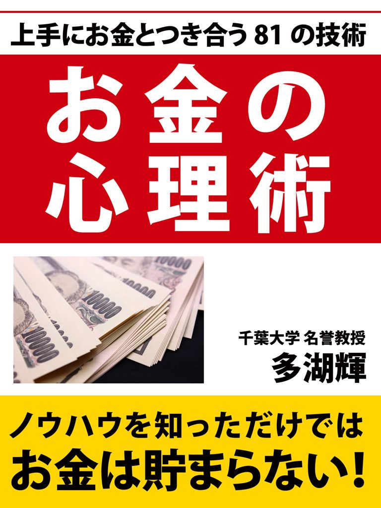
お金の心理術
多湖 輝
まえがきにかえて――お金に振りまわされず、上手につきあうために
人はなぜ、お金に操られてしまうのか
人とお金とのかかわりあい方・つきあい方を見ると、じつに人それぞれである。
身なりも食べ物も質素に切りつめて、若いころからコツコツと数千万円貯め、結局、自分では何も使わずに、お金だけを残して死んでいく人もいれば、思いがけず手にはいった大金を、わずか一晩で使い果たしてしまう人もいる。
あるいは三十年以上働いて、ようやく得た虎の子の定年退職金を、「半年で二倍になります」などというあやしげな儲け話につぎこみ、モトもコもなくす人もいれば、わずか二、三十万円の金品を受け取ったということで汚職公務員として告発され、一生を棒にふってしまう人もいる。
このように、人生の悲喜こもごものできごとの裏には、かならずといっていいほどお金の存在がある。そのお金とのつきあい方で、人生の幸・不幸が分かれることも少なくないが、ことお金に関することとなると、自分でうまくコントロールするのはなかなかむずかしい。いや、私たちはみな、大なり小なり、お金に振りまわされているのではないだろうか。
たとえば、二十年来のつきあいがある友人でも、たった十万円の貸し借りで、すっかり人間関係にヒビがはいってしまうことがある。また、自分のことを「ケチだ」と言われると、だれでも深く傷つきやすい。そして、そう言った相手に憎しみをおぼえることさえある。また、ケチと言われたくないために、無理をしてでも人におごったり、高い物を買うなどして、使わなくてもいいお金を使ってしまい、後悔することもある。
つまり、お金がからむと、そこにさまざまな葛藤が生じ、人はふだんとはちがう心理状態になりやすく、その行動もふだんとはちがってくるのである。よく〝お金の魔力〟などといわれるがお金が人の心の動きに及ぼす影響力は驚くべきものがある。まさに、人はお金に操られてしまうのである。
新一万円札が不評な意外な理由
たとえば、その影響力の一つとして、お札の見え方の例をあげてみよう、昭和五十九年十一月に新しい一万円札・五千円札・千円札が登場して、すでに半年近くがたっている。当初は、新千円札と五百円札がまぎらわしいというので、買い物のときなど「千円札を出した」「いや五百円札しか受け取っていない」などの混乱もあったようだが、今では人びとも新しいお札になじみ、そうした取り違えもなくなったようである。
しかし、「新しい一万円札は、色やデザインが安っぽくって、重々しさに欠ける」という不満を持つ人は、いまでもかなりいる。一万円札が一万円分の価値があるものとして通用するぶんには安っぽく見えようが、重々しく見えようが、どうでもいい問題のはずだ。合理的に考えれば、たしかにそうなのだが、人間心理のうえでは、これはけっしてどうでもよくないことではないのである。
新一万円札が安っぽく見える原因は、もちろん色やデザインなどの問題もあるだろうが、なんといっても、その大きさに問題があるのではないだろうか。つまり、旧一万円札にくらべて新一万円札のサイズはひとまわり小さくなり、千円札と同じ大きさになったのだが、この物理的な大きさの縮小のため、その価値まで縮小したように感じられるというわけである。
以前、旧一万円札のころ、たて横数ミリずつ大きさを変えた白い紙を何枚か見せ、一万円札と同じ大きさと思う紙を選び出してもらうという実験をしたことがある。そのとき、正確に大きさをあてた人はごくわずかで、大多数の人は、一万円札より大きな紙を選んだのである。言いかえれば、こうした人たちはみな、一万円札を実際に目に見える大きさより大きく感じていたわけだ。こうした「過大視」が起こるのは、お金に対する欲求があるからで、アメリカでの実験によると、貧困家庭に育った子どもほど、この過大視が強く起こったという。
つまり、旧一万円札でも過大視を起こしていた人たちにとって、新一万円札は、イメージとしての一万円札の大きさにくらべてあまりに小さい。そのために、安っぽいという不満が生じてきたと思われるのだ。また、実際、物価が毎年のようにあがっていく昨今では、一万円の価値というのは、数年まえにくらべても下がっている。こうしたお金の価値が下がることへの不満もあって、新しいお札に慣れてきても、新一万円札が安っぽいという不満がなかなかなくならないのだろう。
以前、伊藤博文の千円札が出たときも、「カラフルで、おもちゃのお札のような気がする」という声はあったが、人びとが新しいお札になじむにつれ、だれもそんなことは言わなくなった。新一万円札への不満も、見慣れていないために起こるものなら、もう消えてもいいはずだが、根強い不満があるのは、こうした一万円の価値の下落への不満とも考えられるのだ。
それはともかく、これが一円玉になると、過大視とは逆の現象が起こり、かえって小さく感じられるようになる。一円玉と同じ大きさの円を見せ、「一円玉よりも大きいか、それとも小さいか」とたずねる実験では、ほとんどの人が、一円玉より大きいと答えた。そして、実際に一円玉を置いてみて、同じ大きさだと確認すると、「一円玉って、こんなに大きかったのか」と驚く人が多かったのである。これは、一円の価値をひじょうに軽いと考えているからだということは言うまでもない。ちなみに、一円玉の直径は二センチある。
毎日見ているお金の大きさを、実際よりも大きく感じたり、小さく感じてしまうのは、やはりそれがお金であるからだろう。このように、お金は、人間の知覚さえ狂わせてしまうものなのである。
お金は、自我の中核と深く結びついている
では、なぜこのようなことが生じるかといえば、お金は、人間の自我の中核、すなわち自我の中でも一番深いところにかかわっているからである。
たとえば、「あなたは一日に何杯コーヒーを飲みますか」という質間をされたとき、答えるのをちゅうちょする人は、まずいないだろう。「私はコーヒーは飲みません」とか「一日に三杯くらいです」と、だれでも正直に答えるはずだ。これは、コーヒーを飲む、飲まないということはさほど大きな問題ではなく、自我の表層近くにあることなので、人に知られようがどうしようがあまり気にならないためである。
しかし、これが「あなたの給料はいくらですか」となると、とたんに話はちがってくる。大半の人が、正直に答えるのにためらいを感じる。つまり、自分の給料の額を口にするのに、強い心理的抵抗感が生じるのである。「二十万くらいです」とか「ふつうのＯＬ並みです」などと、正確なところを明かすのを避けようとしたり、「ご想像にまかせます」と、答えるのを拒否する人も出てくる。なかには、ウソを答える人もいる。
人が自分の給料の額について秘密主義になりやすいのは、「こんなに安月給では、バカにされないだろうか」と不安が生じたり、「金銭的にあまり豊かでないことを人に知られるのは恥ずかしい」と、正直に答えることで自分が傷つくのを避けようとする心理が働くからである。
じっさい、自我の中核にかかわっているからこそ、お金の問題では、ちょっとしたことで深く傷ついてしまうことがある。以前、妻に、「あんたなんか安月給取りのくせに」となじられた夫が、カッとなって妻を殺してしまったという事件があったが、この場合、殺人をひきおこすほど、心に受ける衝撃が大きかったわけだ。
逆に、たとえ些細な金額であろうとお金のことで得る喜びは、金額とは関係なく、ひじょうに大きく感じられることがある。若手サラリーマンが昇給のとき、同期入社の仲間より、自分の給料のほうがちょっと高くなったのを知って、大きな喜びを味わい、以前にも増してバリバリと働くようになるといったケースは、けっして珍しくはない。
考えてみれば、お金というものは、それ自体を見てみれば、ただの印刷された紙切れであり、金属の小さなかたまりにすぎない。以前、お札を刷っているところを見学したことがあるが、大きな紙に何枚ものお札が印刷され、一枚一枚に切断されるまえの状態のものを手にしたとき、はたしてこれが何十万円分もの価値があるのかと、不思議に感じたことがある。お札として、ピンとこなかったのである。
しかし、ただの紙きれでも、社会全体が「これにはこれだけの価値がある」と認めれば、りっぱにお金としての価値が生じてくる。そして、このお金さえあれば、ほしいものはたいがい手にはいる。
いってみれば、お金は、人間の欲望を充足させるための手段であり、同時に、人間の欲望のシンボルにもなって、人間の自我とも深くかかわり、ときに正常な判断力を狂わせたり、自分でも思わぬ行動に走らせたりしてしまうのである。
お金と上手につきあうには
最近、利殖の本がよく売れているそうだ。現在の生活への不満、老後への不安などから、お金の貯め方、増やし方を研究して、すこしでも多くのお金を得たいと思う人が、それだけ多いのだろう。もちろん、すこしでも多くのお金がほしいと願うこと自体は、悪いことでもなんでもない。お金などまったくほしくない、と本気で思っている人など、まずいないだろう。
ただ、ここでひとつ私が言いたいのは、お金の貯め方・増やし方のノウハウを知っただけではかならずしもお金が貯まるわけではない、ということである。
たとえば、お金を貯めたり残したりするのは、収入の多い人かというと、かならずしもそうではない。月に何百万円という収入がある場合でも、預金通帳の残高はいつもゼロに近いという人はけっして珍しくないし、逆に、年収数百万円でも、ガッチリと一千万円以上貯金しているという人もいる。
要するに、お金とどうつきあうか、ということが、こうした差を生じさせるのである。お金とのつきあい方を知らず、お金に振りまわされっぱなしでいては、いくら利殖にはげんでも、お金は貯まらないということだ。
また、かりにガッチリ貯めることができても、それでいいかという問題もある。お金は、人間の欲望を充足させるための手段だといったが、この手段が目的化し、お金を貯めることだけが生きがいになっているような人もいる。それはそれでいいのかもしれないが、その人の人生はずいぶん味気ないものになってしまうだろう。
もちろん、この本は、お金儲けの方法や利殖の仕方、あるいは上手なお金の使い方について書いたものではない。お金によって、人の心理や行動がいかに大きく動かされるかということを見ながら、人間心理のメカニズムを解剖していこうとするものだが、それとともに、こうした人間心理のメカニズムを知ることで、お金との上手なつきあい方を、読者とともに考えていこうと思って、私はこの本を書いた。人間心理とお金とのかかわりを書いたこの本に『お金の心理術』というタイトルをつけたのも、そのためである。
まえにも述べたように、お金とのつきあい方しだいで、人生の幸・不幸が分かれることが多い。幸せな人生をおくるためにも、お金との上手なつきあい方を知るうえで、この本がすこしでもお役に立てば幸いである。
昭和六十年五月一日
多湖輝
目 次
まえがきにかえて――お金に振りまわされず、上手につきあうために
１ 貯める・使うの心理術
なぜ、金持ちほどケチになりやすいのか
１ 自分のイメージとかけはなれた大金が手にはいると、不安になってつい使ってしまいやすい。
２ 貯蓄額があるレベルを越えると、〝減らしたくない〟という心理から貯蓄欲がますます高まる。
３ たとえ目的がはっきりしなくても、自分で自由にできるカネを確保したいがために、人はヘソクリをする。
４ お金のない人ほど、安いものを買うことに強い心理的抵抗を感じる。
５ 金持ちになりたいと願っている貧乏人ほど、金持ちをバカにする。
６ 自分のプライドをくすぐってくれることなら、人はタダ働きでも損ではないと思う。
７ 自分と同等の人間との収入の差は、たとえわずかな差であっても、大きな差に感じられてくる。
８ たとえ正当な報酬でも、もらう側は、自分の口から報酬の金額について口にすることにためらいを感じる。
９ 相手とのあいだの人間関係が深くなるほど、当然の報酬を受け取るのに後ろめたさが生じる。
10 お金に執着する人ほど、それを隠そうとしてかえって大盤ぶるまいをする。
11 一千万円貯めようと思うより、まず百万円貯めようと考えたほうが、貯蓄に対する意欲がわきやすい。
12 粘着質の人は、コツコツお金を貯めるが、お金を使う楽しみを知らないことも多い。
13 だれでも高額のお金を出すときは、自分の判断より人の判断に頼ろうとする。
14 大金を使うまえの忠告は素直に受け入れやすいが、使ったあとの忠告は反発を感じるだけである。
15 自分の贅沢に後ろめたさを感じた人は、他人に贅沢の一部を分けることで心の安定を得ようとする。
16 浪費して後悔の念がおこると、人は反省するより、自分の浪費を正当化しようとする。
17 好きなだけお金を使っていいと言われると、人はかえってお金の使い方に細かくなる。
18 お金の使い方をほめられると、だれでも自分の全人格がほめられたようにうれしく感じる。
19 自分の優位性が認められて満足した人は、金銭的損失にはそれほどこだわらなくなる。
20 人は、自分の尊敬している人物に、お金の使い方まで似てくることがある。
21 親が教育費に金を惜しまないのは、子どもに対して一種の負い目を感じているからである。
22 自分の自我が関与しない金は、どんなムダな使い方をしても、人は平然としていられる。
２ 貸す・借りるの心理術
なぜ、お金の貸し借りで人間関係が悪くなるのか
23 厚意からお金を貸すと、自分の劣位を打ち消そうとする相手から反発されることが多い。
24 金を貸すことで相手より優位に立つと、人は、逆に相手に負い目を感じやすい。
25 ネーミングがちょつと変わるだけでも、金を借りることへの抵抗感はぐっと薄れる
26 目先の小さなプライドが満足させられると、大きな損得勘定は働かなくなる。
27 サラ金から簡単にお金を借りる人が多いのは、お金に困っているからではなく、お金に余裕があるからである。
28 たとえわずかな金額でも、借金の返済をきちんとする相手には、だれでも無条件で信用する傾向がある。
29 同じお金でも、シワクチャの古札より、ピンとした新札のほうが価値があるように見える。
30 人が他人にものを贈るときの金額決定は、相手に対して抱いているイメージの大きさが基準になる。
31 贈り物は、下位の人ほど厚くしたほうが、相手の印象に残りやすい。
32 贈り物を選ぶときは、だれでも無意識のうちに自分が贈られるとうれしいものを選ぼうとする。
33 相手より劣位だと認めている人は、相手からいくらおごられても何の痛痒も感じない。
34 おごられて当然という人間関係では、ちょっとした金銭的負担が大きな信頼感に結びつきやすい。
35 お礼としての品物は素直に受け取れても、同額の現金となると受け取るのに強い抵抗を感じやすい。
36 無料のものは、納得できる理由がないと、トクしたと感じるより抵抗感を感じて受け取りにくい。
３ 金銭感覚の心理術
なぜ、カードだとつい使いすぎてしまうのか
37 人は、収入の大きさに満足するのではなく、収入の大きさに合わせて満足感を得ようとする。
38 いったん自分の手もとを離れた金は、自分の金であって自分の金ではないように感じる。
39 いったん自分のふところから出ていった金が戻ると、たとえ自分の金でもひじょうにトクをしたと感じる。
40 ケタはずれの金額を扱うときは、〝お金〟という意識が働かず、損得勘定も狂いやすい。
41 同じ千円のものを買うときでも、千円札を出すのと一万円札を出すのでは、心理的抵抗感がちがう。
42 同じ金額でも、数字のうえの金とキャッシュでは、お金の重みがまったく違ってくる。
43 精神的に打撃を受けた人は、金銭感覚まで大幅に狂ってしまうことがある。
44 客の予想よりはるかに安い値段にすると、客はトクをしたと思わずかえって不安になる。
45 相手の実体があいまいだと、人の金を盗っても、罪悪感を感じるよりむしろ得をしたと思う人が多い。
46 一度に百円値上げするより、二十円ずつ五回に分けて値上げしたほうがスンナリと受け入れられやすい。
47 大きな負担である金額も、〝心理的割算〟をすることで小さな負担に感じさせることができる。
48 お金の話は、端数まで示すと信頼感がぐっと出る。
49 自分よりはるかに上の人が、自分と同じレベルの金銭感覚をもっているのを知ると、その人に親近感を抱きやすい。
50 自分から進んで自分の金の話をする人は、何か隠したいことを持っていることが多い。
51 どんな金額のお金にこだわるかということは、その人の大物の大小を測るものさしにされやすい。
52 たとえ少額でも、一度金を受け取ると、大金を受け取る抵抗感は薄れる。
53 失意のときや、どん底にいるときに受けた金は、たとえそれが少額の金でも〝大きく〟感じる。
54 たとえ給料が安くても、納得できる理由があれば、人はそれで満足しようとする。
55 人の金銭感覚は、時代によって簡単に変わってしまう。
４ 売る・買うの心理術
なぜ、高いものを安いと錯覚してしまうのか
56 目に見えないものに対しては、どんなに価値のあることでもお金を払うのが惜しくなる。
57 非日常的な要素が多い商品ほど、気軽に衝動買いされることが多い。
58 予算を決めて買い物に出かけても、ちょっといいものを見ると、予算オーバーはあまり気にならなくなる。
59 同じ値段でも、白い紙に書かれたものより黄色い紙に書かれたほうが安く感じる。
60 お金の交渉は、最初に厳しい条件を出されると、不利な条件でも有利に見えてくる。
61 高級イメージの周囲にあるものは、たとえ安物でも高級そうに見えてくる。
62 納得できる理由さえあれば、安物でも値打ち品に思えてくる。
63 相手になんの義理がなくても、負い目を感じると、人は金銭的負担でその負い目を解消しようとする。
64 商品の中身の優劣よりも、パッケージで高いか安いかのイメージが決まる。
65 高級品が買われるのは、それが質がよいからではなく、値段が高いからである。
66 みんなが買っているものは、「自分も買わないと損をする」と、だれでもつい財布のヒモをゆるめやすい。
67 いつでも買えるわけではないと限定されると、それだけでトクな買い物という印象を与えやすい。
68 極端に安い商品が置いてある店では、客は、他の商品まで安いと錯覚してしまいやすい。
69 同じ商品を買っても、三百円の値引きより、三百円分のおまけのほうがトクだと思ってしまう。
70 人は、自分のコンプレックスを解消してくれるものには、どんなに高い値段でも惜しまない。
71 たとえ営業上の言葉とわかっていても、店員に何かすすめられると買うのを断わりにくくなる。
72 現在の不便を解消してくれるものより、現在の夢をかなえてくれるものに、人はお金を使おうとする。
73 女性がバーゲン品にとびつくのは、〝安く買った〟という行為そのものに満足感を覚えるからである。
５ 賭ける・儲けるの心理術
なぜ、負け続けていてもギャンブルはやめられないのか
74 小金持ちが詐欺にあいやすいのは、〝ちょっとした大金〟を扱うための金銭感覚が不足しているからである。
75 たとえ半信半疑でも、儲け話だと「信じたい」という願望から自分を説得してしまうことがある。
76 ギャンブルにのめり込んでしまう人が絶えないのは、勝ったり負けたりするからである。
77 勝負事では、「あと二万円しかないから負けられない」と思うと、冷静な判断力を失いやすい。
78 トータルでは損をしていても、すこし儲かると、過去の損は忘れて得をした気になる。
79 宝くじは当たらないと思って買うからこそ、当たったとき、人は困惑しやすい。
80 中身が見えないものは、たとえ損をする不安があっても「のぞきたい」という心理につい負けやすい。
81 金のない人ほど、追いつめられた状況でも、「まだなんとかなるんじゃないか」と楽観的になりやすい。
１ 貯める・使うの心理術
なぜ、金持ちほどケチになりやすいのか
１ 自分のイメージとかけはなれた大金が手にはいると、不安になってつい使ってしまいやすい。
もし、大金持ちになれたらどんなに楽しいだろう――だれでも一度や二度は、こうした夢想にひたったことがあるはずだ。しかし、思わぬ幸運に恵まれて大金が転がり込んできたとき、はたしてそれを素直に喜べるかどうかというと、はなはだ疑問である。というのは、人は、自分の生活レベルとはケタ違いの大金を手に入れると、不安になったり、使いみちに困って途方に暮れるということが往々にして起こるからである。
たとえば、ひと昔まえ、大都市近郊にいわゆる〝土地成金〟が数多く出現したが、そのなかには、酒やギャンブルですっかり財産を使いつぶしてしまったという人がけっして少なくない。その人たちの話を聞くと、大金を手にしたとき、とにかく不安で、何か金を使わずにはいられなかった。そして、ギャンブルなどで使いまくり、全財産を使いきったときはじめてホッとしたというのである。
もうすこし堅実な人の場合でも、とりあえず子ども時代からの夢だったプール付きの豪邸を建ててみたものの、その豪邸にいるとなんとなく落ち着かない。そのため、豪邸から毎日道路工事の仕事に出かけているという人が、東京近郊に実際にいる。
これらの例からもわかるように、人にはそれぞれ、自分自身について抱いているイメージがある。この自己認知像は、これまでの生活体験などから作られるものだが、その自己認知像をはるかに上まわる大金を手に入れたとき、人はその大金に合わせて自分のイメージを変えることは、なかなかできない。平たくいえば、今まで三畳一間で食うや食わずの生活をしてきた人が、一億円の大金を手に入れても、一億円の金持ちにふさわしい生活というのが想像できないのである。この大金と、それまでの自己認知像とのあいだにギャップがあればあるほど、人は不安になったり、冷静ではいられなくなってしまうのだ。
数年まえ、一億円を拾ったタクシーの運転手さんがいた。その人の場合、思わぬ大金を得た不安からだけではないだろうが、ガードマンを雇って話題になったものだ。もちろん、こうした大金も、ある程度時間がたつと、持っていることに慣れが起こる。そうなれば、不安も消え、冷静にお金の使い方を考えることもできるようになる。
「悪銭身につかず」といわれるが、思いもかけず手にはいった大金が残りにくいのは、こうした人間心理のメカニズムのゆえなのである。
＊思いがけず手にはいった大金は、定期預金にするなど、しばらく手をつけないほうがいい。
２ 貯蓄額があるレベルを越えると、〝減らしたくない〟という心理から貯蓄欲がますます高まる。
家電業界では、新製品が大衆商品として普及するかどうかのポイントとして、価格が十万円を割ることをひとつの目安にしているという。かつてのテレビがそうであったし、最近ではビデオもそうなりつつあるが、標準的な価格が十万円以上であったときの商品の売れ行きと、十万円を切ったときの商品の売れ行きとでは、たんに価格の差だけでは説明のつかないほどの差があるという。逆にいえば、新製品を開発する側からすれば、価格が十万円を割ることができるような商品を開発しないことには、大ヒットは望めないということになる。
この十万円以下という金額は、なるほど、手を出しやすい価格である。このように、いくらまでならそう迷わずに一人で買い、いくらぐらいなら夫婦で相談するといったような、金額ごとの〝とっつきやすさ〟というものがたしかにある。もちろん個人差はあるだろうが、たとえば二、三万円ぐらいの商品は、ちょっと思い切れば一人でも買ってしまうだろうし、これが二、三十万円を越えると、夫婦でもいささか決断に迷うというわけだ。
よく貯蓄のコツを述べた本には、まず百万円を貯めよと書いてあるが、この百万円貯めるということには、十万円以上の買い物がなかなかできないという心理と相通ずるところがある。〝お金の神様〟といわれる邱永漢氏は、その著書のなかで、百万円という金額は、ブロックのような一塊りとなって、くずしたくなくなるものだと述べているか、こうした心理メカニズムが働くために、いったん百万円が貯まると、あとはお金が貯まりやすくなるのである。
ふつう、百万円まで貯まるのが待てずに、二、三十万円貯まったところで買いたいものができて買ってしまうケースが多い。またすぐに貯めればいいと考えてしまうわけだが、残念ながら、こういう人には、なかなかお金は貯まらない。じっとがまんして百万円まで貯めてみるとわかることだが、二、三十万円のときにはそれほど感じなかったゼロ円との差が、百万円まで貯まるとにわかに大きな差に思えてくる。かりにそのとき二、三十万円ほどの買い物予定があったとしても、お金を使うのが惜しくなって、買い物をあきらめたりするようになる。
ゼロ円から二、三十万円貯めたときには、たかだが二、三十万円だが、百万円になったとたんに、お金が大きく変身するのである。百万円から減らしたくないという心理が芽ばえ、さらに貯蓄欲が高まる。このように貯蓄というのは、あるレベルを越えると、お金に対する執着心も生むのである。
＊お金を貯めたいなら、貯金が百万円を越えるまでは絶対に使わないこと。
３ たとえ目的がはっきりしなくても、自分で自由にできるカネを確保したいがために、人はヘソクリをする。
ヘソクリというと、主婦をすぐ連想する人が多いのではないだろうか。しかし、ヘソクリはなにも主婦の専売特許ではなく、男性にもヘソクリをしている人はけっこういる。ある調査によると、サラリーマンの約半数はヘソクリをもっているという。あたかも人間には、ためこみ本能というかヘソクリ本能というか、そういうものがあるかのようだが、人はなぜ、ヘソクリをするのだろうか。
ヘソクリというと、歴史上名高いのが、あの山内一豊の妻の話である。貧乏時代、名馬が買えずに困っていた夫に自分のヘソクリをわたし、夫はおおいに面目をほどこしたというわけだが、主婦のヘソクリには、このような不時の出費や家族のための出費に備えて、という色彩が強い。
こうした主婦にくらべ、夫族のヘソクリはもっぱら自分自身のためにあるようだ。たとえばゴルフのクラブ、釣りざお、カメラのストロボなど、趣味のものは自分のヘソクリで買うという人が多い。こうしたものは、妻にいちいちおうかがいをたてれば、「そんなものを買うよりは」と反対を受けることが十分予想されるが、そうしたおうかがいをたてたり、妻を説得したりというわずらわしさから解放されるのがヘソクリのよいところであろう。
要するに、ヘソクリは自分の自由裁量で使えるところに、その大きな意義があるというわけだ。じっさい、給料は銀行振り込みですべて妻の手に押さえられ、夫の小遣いは子どもの教育費などの圧迫を受けるという状況下にあるサラリーマンにとって、自由裁量で使えるお金というのは意外に少ない。
いっぽう人間には、自分で自由に使える金額が大きいほど、自分の能力が広がったように感じる面がある。これは何をするにもお金がなければはじまらない現代社会では、当然の心理といえるが、だからこそ、自由裁量できる金額の拡大を目ざして、人はヘソクリをするのである。裏を返せば、自分の自由になるお金が少ない人ほど、せっせとヘソクリに励むというわけだ。
夫や家族のためにヘソクリをするという主婦の場合も、その心理は似たようなものである。いざというときポンとヘソクリを出すことができれば、夫や家族に自分の有能さを印象づけることができる。これは山内一豊の妻ですでに証明されているが、自分の有能さを人に示す快感を味わうためにも、主婦にも、自分で自由に使えるヘソクリが必要なのである。意地の悪い見方をするようだが、いくら名目を飾ろうと、結局ヘソクリは自分自身のためにしているものなのだ。
＊ヘソクリの使いみちは、夫婦のあいだでも口をはさまないほうがいい。
４ お金のない人ほど、安いものを買うことに強い心理的抵抗を感じる。
私の知人に、いくつもの会社のオーナーをしている大金持ちがいる。彼はつねづね「金持ちほどケチだ」と言ってはばからないのだが、たとえばすし屋などに行って「上・中・並」があると、彼は平気で並を注文する。それに対して私は、並を頼むのはどうしても気後れしてしまい、中あたりを頼むことになってしまう。
また、アメリカの大富豪であるロックフェラー一家が日本で休日を過ごしたとき、みんなはき古したジーパンスタイルで、とても世界的な富豪一家には見えなかったという。それにくらべて、日本からパック旅行で海外に出かける人たちを見ると、服やら靴、カバンなど新調したばかりのピカピカのスタイルの人が多い。海外での日本人旅行客は、金のかかった服装をしているので、スリなどの絶好のカモになりやすいということは定評のあるところである。
このように、金持ちほど質素でお金を使わず、金のない人ほど贅沢をしたがる傾向があるのだが、なぜかといえば、金のない人にとっては、安物を買うことには、強い心理的抵抗が働くからである。つまり「自分は、こんな安物しか買えないのか」とみじめな気分になったり、他人から貧乏人だとバカにされるのではないかという不安にかられ、安物を買うのをためらってしまうわけだ。この金がないというひけ目や劣等感から、つい無理をしてでも高いものを買ってしまう。言いかえれば、貧乏人ほど安物は嫌いなのである。
しかし、金持ちにとっては、そんなひけ目や劣等感はないから、安い物でも平気で買える。品質や機能に問題がなかったら、安い物のほうがトクなのだから、わざわざ高い物を選ぶ必要もないというわけだ。考えてみれば、実利をとるのはごく当たりまえのことなのだが、それができないところが、金のない人間の悲しい習性といえようか。
先年、『見栄講座』という本がベストセラーになって話題を呼んだが、現実に、はたから見ていると、こっけいになるくらい、つまらない見栄をはっている例は多々ある。六畳一間ぐらしの若者が、何百万円もするクルマを乗りまわしていたり、彼女を誘って六本木の高級レストランで最高のステーキを注文したりするのを笑える人が、はたしてどれくらいいるだろうか。よほどの大金持ちでないかぎり、みんな大なり小なり見栄をはって、すこしでも高いものをと無理をしているのである。こうした見栄に惑わされているかぎり、お金のない人は浪費ばかりしていて、いつまでたってもお金が貯まらず、金持ちほどますますお金が貯まっていくのだ。
＊お金を貯めるには、安物でも平気という心構えをつくることがだいじ。
５ 金持ちになりたいと願っている貧乏人ほど、金持ちをバカにする。
テレビの人気時代劇のひとつに「水戸黄門」がある。ご存じのように、天下の副将軍水戸黄門が、助さん格さんをお伴に旅をして、行く先々で悪人をこらしめるといった、ワンパターンのドラマである。私もいつも見ているわけではないが、たいがい劇中で悪人になるのは、不思議にいつも権力をかさにきた悪代官や金持ちの悪徳商人たちで、貧しい庶民が悪役をやることはほとんどないようだ。暗黙のうちにも、金持ちは悪、貧乏人は善といった図式がある。こうした図式のほうがウケがいいからだ。古今東西の映画にしても演劇にしても、昔からこのパターンは、基本的に変わらないようである。
しかし現実の問題として、ほんとうに金持ちには腹黒く陰謀好きな悪人が多く、貧乏人には善良でお人好しの人が多いといえるのだろうか。もちろんそんな単純な問題ではないし、だれしも、金持ちがみんな悪人であると、本気で思っているわけではない。
有名なイソップ童話のなかに、「すっぱいぶどう」という話がある。ぶどう棚にぶどうがたわわに実っていた。キツネが、このうまそうなぶどうが食べたくて、何度も飛び上がったが、どうしても手に入れることができない。とうとうぶどうをあきらめたキツネは、最後にくやしそうにつぶやく。「ふん、どうせあのぶどうは、すっぱいぶどうにちがいない」
このきつねの「すっぱいぶどう」の心理は、金持ちを悪人に仕立てたい貧乏人の気持ちに相通じるものかある。金持ちになりたいという欲望が強ければ強いほど、貧乏人にとどまっている自分としては、金持ちを「すっぱいぶどう」だと思い込みたいのである。金持ちが高価な美術品でも買うと、どうせ成金趣味だとけなし、福祉関係に多額の寄付でもしようものなら、売名行為に利用しているとあげつらう。金持ちを悪く言わないことには、自分の貧しさに対する欲求不満がおさまらないのである。
この「すっぱいぶどう」の背中合わせにある心理が、「甘いレモン」の心理である。自分が手に入れたすっぱいはずのレモンを、あえて甘いものだと思い込んで満足感を得ようとする心理である。人間は金をもつとろくなことはないと言ったり、金をもたない人間のほうが立派な人間性をもっていると言って、貧乏の美点をあげるのは、いわば貧乏人にとっての「甘いレモン」なのである。金持ちを意識すればこそ、金持ちをバカにする。ことさらに金持ちを悪く言う人の心には、つまりは金持ちになりたいという強い願望があるというわけだ。
＊金持ちをどう思うかを聞くことで、その人のお金に対する満足度がわかる。
６ 自分のプライドをくすぐってくれることなら、人は、タダ働きでも損ではないと思う。
アメリカのある大手エレクトロニクスメーカーが新製品のデザインを決定するにあたって、七十五人のデザインエンジニアに協力を依頼したことがある。そのデザインについて、意見やアイデアを求めるアンケートを行なったのだが、その協力への謝礼は、希望する専門雑誌を二種類、一年間無料で郵送するというものだった。いずれも、高額の収入を得ているエンジニアたちばかりだったので、雑誌などという微々たる謝礼ではたして協力してくれるかどうか危ぶまれたのだが、フタをあけてみると、なんと約八割が協力してくれたというのである。しかも、彼らの大部分が、発売されたその製品を積極的に使用し、広くすすめてくれたのだ。
彼らにしてみれば、タダ働き同然なのに、なぜこれほどまでに協力してくれたのだろうか。これは、ひとつには、この仕事を通じて彼らのプライドが大いにくすぐられたからである。まず、大勢いるデザインエンジニアの中で、自分は選ばれた存在だということで、優越感を満足させられ、さらにその新製品のデザインには自分が関与しているという誇りが加わる。このようにプライドがくすぐられると、金銭的には割りの合わない仕事でも、喜んで引き受けてしまうのが人間心理のつねなのである。
同じような例は、私たちの身近にもたくさんある。たとえば、大学卒業後、研究室に残る人は、一般企業に就職したクラスメートにくらべて、収入は格段に少ない。にもかかわらず、安月給に甘んじているのは、学問の世界をリードしているというプライドがあるからだろう。あるいは、食品会社などが主婦をモニターにすることがあるが、モニターに選ばれた主婦は、自分は選ばれたというプライドから、パートを休んでも、交通費とわずかな謝礼しか出ないモニター会議に、熱心に出席してくるのである。
もちろん、何にプライドを感じるか、また、そのプライドがいくらくらいの金銭的価値に換算されるかは人によってちがう。ある人にとっては、一文の値打ちもない勲章が、他の人にとっては、勲章をもらうためなら多額の寄付をしてもいいという価値のあることもある。その場合の寄付金も、百万円以上なら勲章はあきらめるという人もいれば、数千万でもいいという人も出てくるのである。
要するに、プライドなどというものに値段の基準などあるわけがない。プライドはプライスレスだからこそ、人はそれぞれの価値観に従って、ゼロから無限大までの値段をつけるのだ。
＊人からお金をひき出すには、まず相手のプライドをくすぐってやる。
７ 自分と同等の人間との収入の差は、たとえわずかな差であっても、大きな差に感じられてくる。
かつて、あるマーガリン会社が、街の主婦にインタビューして、そのマーガリンの味について感想を述べてもらうというテレビコマーシャルを作ったことがある。タレントや女優ではなく、ごくふつうの主婦を登場させたのは、マーガリンの主たる購買層である主婦たちに親近感をもってもらうためだったが、このコマーシャルは、一部の主婦たちのあいだで評判がよくなかった。
反発した主婦たちは、おそらくテレビに出たいと心の中で願っているものの、テレビに出るチャンスに恵まれない人たちだろう。彼女たちにとって、テレビに出て自分が主役になるというのは、自分とはほとんど縁のない夢の世界での話である。にもかかわらず、自分とほとんど変わらないように見える平凡な主婦が、コマーシャルとはいえ、テレビに出てスポットを浴びているのだから、『あんな人を出すなんて』とつい腹が立ってしまうわけだ。もし、登場していたのが女優なら、彼女たちもそう反発を感じなかったにちがいない。
このように人は、自分と同程度と思っている人が、自分よりすこしでもいい目に恵まれると、嫉妬や腹立たしさをおぼえ、平静でいられなくなる。逆に、自分と同程度の人が、ひどい目にあったりすると、口では「お気の毒に」と同情しても、内心では優越感を感じていたりするものだ。しかし、これが最初から自分よりはるかに能力があるとか住む世界がちがうと認めている相手となると話はちがってくる。その人たちがどんなに恵まれた生活をおくっていようと、うらやましいとは思っても、それ以上に感情をかきみだされることはない。
このような人間心理のメカニズムがもっとも端的にあらわれるのが、会社での給料の査定だろう。同期に入社して、同じように仕事をこなしてきたはずなのに、昇給で五百円の差がついて悔しい思いをしたなどという話をよく耳にする。社長や部長とのあいだには、もっと大きな給料の差があるのに、そちらのほうはそれほど気にならず、客観的に見ればたいした差とも思えない五百円のほうが気になるのである。これも、自分と同程度の人間とのあいだについた差だからこそ、小さな差が、心理的には大きく拡大されてくるわけだ。
だからこそ、たった五百円の差でも、上に立った者はひじょうに優越感をおぼえるし、下になった人間は、悔しさや劣等感を味わうことになる。日本の一般企業では、こうして社員のやる気を引き出しているわけで、もしこれが社会主義国のようにまったく差がなくなったら、給料をめぐる心理的葛藤はなくなるだろうが、同時に仕事への意欲も減退してしまうだろう。
＊パートやアルバイトの人でも、賃金にわずかでも差がつくとやる気をおこしやすい。
８ たとえ正当な報酬でも、もらう側は、自分の口から報酬の金額について口にすることにためらいを感じる。
ある企業の研修担当者の話によると、外部から講師を招いて講演してもらうとき、講演料をどうするかでひじょうに困ることが多いという。講演を依頼したときに、相手に講演料のことをたずねるのだが、「いくらでもいいですよ。おまかせします」という答えがほとんどなので、この人にはこれぐらいが適当だろうと決める。すると、あとになって人を介して、「あの会社は、私に講演をさせておきながら、こんな安い講演料しか払わなかった。失礼な会社だ」などという話が伝わってきて、あわてたことも一度や二度ではないそうだ。
あとで「安い」と怒るくらいなら、最初から「私の講演料はこのくらいだ」とはっきりさせておけばよさそうなものだが、これはなかなかできないことだ。私自身も、講演を依頼されたとき、「講演料はおいくらですか」と自分の口から切り出すことは、どうしてもできない。
なぜ、こうしたお金の話がしにくいかというと、ひとつには自分が傷つくことを無意識に恐れているからである。自分の言った金額より、相手の考えていた金額のほうが安かったりすれば、自尊心が傷つけられ、ひどく恥ずかしい思いをすることになりかねない。そういう不安があるために、たとえ正当な報酬だと自分では考えていても、自分から報酬の金額を口にすることに、心理的にひじょうに強い抵抗感を感じるわけである。とくに日本では、お金のことをはっきり口にするのはいやしいという見方があるので、ますます口ごもってしまうことになる。
こうしたことで起こるトラブルを避けるために、作家や評論家の中には秘書を雇っている人も多い。秘書なら、お金の交渉も仕事のうちだし、何よりも第三者の立場なら、人のお金の話で自分が傷つくこともないので、「講演料はこれだけお願いします」と、金額もスムーズに口にできるのである。よく借金の催促などで、「田舎の両親が家を建てるので、早くお金を返してほしい」と、自分以外の第三者を口実に使うのも、そのほうが「自分がお金がほしいので」と言うよりも、心理的抵抗感がはるかに軽くなるからだ。
だから、最近一部の企業で、給料を決めるのにアメリカ式の自己申告システムを採用しているところがあるが、はたしてうまく定着するかどうか、私などは疑問に思っている。「自分の能力や実績はこのくらいだから、これくらいの給料はほしい」と自己申告するのは、アメリカとは社会通念がちがう日本では、プロ野球の世界以外、なかなかスムーズにはいきにくいのではないだろうか。
＊自分の口からは告げにくいお金の話は、第三者の口を通すとスムーズにいく。
９ 相手とのあいだの人間関係が深くなるほど、当然の報酬を受け取るのに後ろめたさが生じる。
私は仕事がら、よく講演を依頼されることがあるが、講演料を受け取るかどうかで迷うことがしばしばある。以前、ある高校の記念祭で講演をしたときのことだが、講演後、制服を着た係の生徒が「どうもありがとうございました。講演料です」と、金一封を持ってやってきたことがある。もし、このとき先生や事務員が講演料を持ってきたら、あるいは私も受け取っていたかもしれないが、さすがにこのときは、受け取るのを辞退せざるをえなかった。
これは大学生相手でも同じだ。大学祭などの講演で、学生が謝礼を持ってきても、「まあ、キミたちで一杯やってくれよ」とそのお金を返してしまうことになりやすい。学生に何かしてやった場合、その学生からお礼をもらうのは社会人として抵抗があるが、ましてや私は大学教師なのだから、なおさらのことだ。
また、これはある引っ越し業者の人から聞いたのだが、彼は、仕事で人の引っ越しを手伝ったときは、相手から報酬を受け取ることに何の抵抗も感じないのに、こと親類や友人の引っ越しの手伝いとなると、とたんに受け取れなくなってしまうという。いくら相手が「取っておいてくれ」と頼んでも、素直に「はい、どうも」とは礼金に手を出すことができなくなるのだ。
これは、べつに本人が格好をつけているわけでもなんでもない。たとえ正当な報酬であっても、相手とのあいだの人間的な関係が深くなると、その報酬を受け取ることに、後ろめたさを感じる、という心理メカニズムが働くからである。つまり、友人関係や、学生と教師などのような人間対人間の関係は、相手のために何かしたら、その代償に金銭的報酬を受け取るといったドライなギブ・アンド・テイクの関係とはちがうという認識があるからこそ、報酬を受け取ることに強い心理的な抵抗感が起こるのだ。
たしかに、妻が夫のために何かしてくれたからといって、わざわざ妻にお金を払う夫もいないだろうし、またそれを期待する妻もいないはずだ。夫が妻に生活費をわたすのは、あくまで家庭の維持が目的であって、妻の家事労働への報酬ではない。もちろん、ここでは、子どもが家事を手伝ったら親がお小遣いをやるといった、親子関係のような場合は、話が別である。
もし、人間的な関係の中で、相手に素直に報酬を受け取ってもらおうとしたら、その仕事を取りしきる第三者を立てて、その第三者から謝礼をわたしてもらったり、銀行振り込みにするなど、非人格的なものを介在させて、ビジネスライクを演出することも必要だろう。
＊親しい人へのお礼は、お金より品物のほうが受け取ってもらいやすい。
10 お金に執着する人ほど、それを隠そうとしてかえって大盤ぶるまいをする。
先日、ある会合で小料理屋に行ったときのことだ。隣りの席は中年男の三人連れで、友人同士らしいのだが、その中の一人のおごりらしく、その人が始終お店の人を呼んでは料理やお酒の追加注文をする。その店は高級というほどではないが、大衆飲み屋にくらべれば、けっこう値段の高いお店である。テーブルの上にはまだ手もつけられていない小鉢やお銚子も並んでいるのに、その人は次から次へと注文を出す。それを見ていた私の連れが、「よほど太っ腹でお金もある人ですね」と、感心していたほどだ。
しかし、帰りどきに、その人がレジで精算しているところに出くわしたのだが、意外にこの人は、根はケチなのではないかと私は感じたのである。というのは、お釣りの十円玉の一枚が床に落ちたとき、大あわてで十円玉を追っかけていって拾ったからである。「いやあ、一円に笑うものは一円に泣くというからね」と、その人は仲間たちにテレ笑いをうかべて言っていたが、そのあわてぶりは、数万円の支払いを平気でする人にしては、ひじょうにチグハグな印象を受けるものだった。心理学者である私の目には、ふとしたはずみに、十円というわずかな金額にも執着する、その人のホンネの部分があらわれたように見えたのである。
社会的にあまり認められにくいような欲求や感情をもっていると、それを抑えて、まるで反対の社会的に認められた行動を、なるべく誇大にやろうとする心理が働く。これは「反動形成」と呼ばれるもので、一種の自己防衛機構である。性に強い関心をもっているハイミスが、ワイ談に露骨に顔をしかめたり、まま母が、心の中では憎いと思っているまま子を、逆に猫かわいがりしたりするのは、この反動形成の心理である。欲求のおもむくままに、性への関心をあからさまにしたり、憎いまま子をいじめたりすれば、社会的な反発をくう心配があるが、その反対にふるまっていれば、少なくとも悪く言われることはないというわけだ。
しかし、そうした欲求が強ければ強いほど、それを抑えつけるための社会的タテマエの行動は誇大になり、ギクシャクしたり、チグハグになってしまいがちだ。先ほどの大盤ふるまいにしても、その人の本心はお金への執着にあったと考えられる。しかし、そのことに気づかれまい、ケチだと思われまいとして、合理性を欠いた必要以上の行動に出たのである。家から一歩外へ出ると、太っ腹になって人の顔をみればおごりまくるのに、家に帰るとじつは大変なケチで、奥さんにも余分なお金は渡さないという人も、世の中にはけっこう多いのである。
＊ケチを軽蔑する人ほど、じつはケチであることが多い。
11 一千万円貯めようと思うより、まず百万円貯めようと考えたほうが、貯蓄に対する意欲がわきやすい。
ある雑誌で、〝意外なお金持ち〟が紹介されていたことがある。ビルの清掃や、独身寮のまかないといった、失礼ながら世間的にはそう高給をとっているとは思われていない人たちが、一千万以上の貯金を貯めたという話なのだが、おもしろいことに、これらの人たち全員に共通することが一つあった。それは、最初から一干万円貯めようなどとは思っていなかったということだ。「百万円貯めよう」と貯金をはじめ、百万円貯まったら、「もう百万円貯めよう」という具合で、気がついたら一千万円以上のお金が貯まっていたというのである。「最初から一千万円貯めようなどと思っていたら、とても貯まらなかったでしょう」と中の一人が語っていたが、心理学的にいって、まさにそのとおりだと私は思う。
心理学で、目標達成のための動機づけの一つとして「サブゴールの設定」というものがある。これは何かを成し遂げようというとき、その目標が大きかったり遠かったりするほど、心理的に苦痛を感じ、達成意欲を失いやすいが、「まず、ここまでやればいい」「次はここまで」というように途中に下位目標、すなわちサブゴールを設定すると、心理的苦痛も軽減され、意欲もわきやすいというものである。
たとえば私なども、本の執筆を依頼されたとき、二百字づめ原稿用紙で四、五百枚から、ときには千枚近く原稿を書かなければならないと思うと、その量の多さにおじけづいて、とても自分には書けないのではないだろうか、と不安になることがある。しかし、そんな状態でいると、いつまでたっても筆をとるのがおっくうで、結局、〆切りが近くなってから大あわてすることになるということがわかっているので、こんなとき私は、一日に十枚ずつ原稿を書く、というような課題を自分に与えることにしている。一日に十枚書けばいいと思うと、とたんに気がラクになって筆も進むようになる。こうして毎日、すこしずつ書いていくと、二ヵ月か三ヵ月で一冊分が書きあがる。これも、サブゴールの心理的効果を応用したものであることは言うまでもない。
貯金などの場合も、これとまったく同じことがいえるわけだ。一千万円貯めようと、大きな目標を立てて自分を奮いおこすのも、最初のうちはいいかもしれない。しかし、生活を切りつめ、一円でも多く貯金にまわすようにしても、一千万円の目標額にはなかなか近づけないので、そのうち貯蓄意欲を失ってしまい、お金を貯めるなどどうでもいいということになりがちである。また、一千万円貯めるのは自分には無理だと最初からあきらめてしまう人も多いにちがいない。
＊一干万円貯めるには、まず百万円を目標にスタートする。
12 粘着質の人は、コツコツお金を貯めるが、お金を使う楽しみを知らないことも多い。
金儲けの神様といわれる邱永漢氏は、その著書『お金が貯まる人はここがちがう』（ゴマブックス）で、たとえば十三万五千円しか給料をもらっていない新入社員は、給料が二十万、三十万円になったら、お金も貯まるだろうと思うかもしれないが、じつはそうではない、という意味のことを言っている。お金が貯まる貯まらないは、収入の大きさに関係がなく、貯めようという意欲があるかどうかで決まるというわけだが、もうひとつ、性格という要素も見逃せないと私は考えている。つまり、性格によって、お金を残すタイプと残さないタイプがあるのだ。
まず、お金を残すタイプとしては、粘着質（てんかん質）と神経質があげられる。粘着質とは、一つのことに熱中したり執着しやすく、保守的・道徳的な面が強いが、この粘着質は、ケチの代名詞といってもいいくらい、お金に几帳面である。「いま、財布の中にいくらはいっていますか」と聞かれたら、おそらく一円単位まで正確に答えられるだろう。こういう人は粘り強いので、月々わずかな額でも、給料天引き貯金を何十年もつづけるというように、コツコツと貯めてお金を残すことか多い。また、浪費をしないので、お金が貯まっても、それを使おうとしない。よく、貧しい一人暮らしの老人が死んだあと、大金のはいった預金通帳が発見されて周囲が驚く、ということがあるが、こうしたお金の残し方をする人には粘着質タイプが多いようだ。
また、神経質な人は、つねに将来を悲観的にとらえる傾向かある。「もし、万一のことが起こったらどうしよう」と、先のことをクヨクヨ考えるわけだが、こうした人は「万一のことに備えて」せっせと貯金をするのである。
逆に、お金が残らないタイプには、ヒステリー性格と躁うつ質があげられよう。ヒステリー性格は、虚栄心が強く、自分を実際以上に大きく見せようとする傾向が強い。ギャンブルが好きで浪費癖もある。欲求不満があると、あと先も考えずに大金を使ってしまうのも、ヒステリー性格の人に多い。また、こういう人は、大金が転がりこむ夢はみても、着実にお金を貯めることを嫌いがちだ。ただ、派手にお金を使うだけに、不思議にお金がついてまわることがある。これに対して躁うつ質の人は、何かあると「よっしゃ、おれがおごろう」などと親分肌のところがあり、「どうにかなるさ」と先のことはあまり気にしないので、やはりお金は残りにくいのである。
こうしたことは、かならずしもすべての人にあてはまるとは限らないが、自分のお金の貯め方を考えるときの参考になろう。
＊躁うつ質の人からお金を引き出すには、相手に頼っているふりをする。
13 だれでも高額のお金を出すときは、自分の判断より人の判断に頼ろうとする。
私は気が小さいというか慎重というか、大きな買い物をするときは、あれこれ考えたり調べたりするので、即断即決ということはまずしない。そのために、好条件の話を逃してしまったこともある。そんな私が、以前、よくよく検討もせずにポンと数百万円の大金を出したことがある。
それは、ある大物経営者から〝将来有望〟なゴルフ場の会員権購入をすすめられたときのことである。そのゴルフ場は、これから建設されるものだが、大手企業かバックについているので絶対に安心できるというのだ。ふだんの私なら、建設予定地をちょっと調べてみるとか、その会社がどういう組織になっているかを調べたりするところだが、このときはパンフレットをチラリと見ただけで買ってしまった。その後、そのゴルフ場は、用地買収が思うようにいかず、モタモタしているうちにバックの大企業にも手を引かれてしまい、何年たってもいっこうに建設されそうな気配はなく、会員権も紙切れ同然になってしまっている。
他人のせいにするわけではないが、あのとき、もし大物経営者にすすめられていなかったら、私はそのゴルフ場は買わなかったろう。ろくろく検討しなかった私も悪いのだが、こうした大金を出す場合、一般に人は、自分の判断よりも他人の判断に動かされやすい。とくに自分が信頼する人の言葉なら、無条件で従ってしまう傾向が強いのだ。
というのも、高価なものを買ったりするときは、だれでも「失敗はしないか」「だまされないか」と不安になる。この不安を解消するためにも、「自分が決めたのではなく、人にすすめられたのだ」ということにすがろうとするのである。一流ブランドなら安心だと思うのも、社会という自分以外の人が一流だと認めた、その判断にすがろうとするからだし、テレビで有名人がすすめるものを買おうとするのも、その有名人の〝お墨つき〟があるからである。
広告なども、人間のこうした心理に訴えている面がある。たとえば、ちょっと以前のことになるが、日本では二流ブランドと思われていたカメラを買った女性がいた。その女性がヨーロッパヘ行ったとき、ヨーロッパの都市のあちこちで、そのカメラの広告を見かけたのである。日本に帰ってきた彼女は、友人たちに「このカメラは日本ではあまり有名ではないけれど、ヨーロッパでは一流品とされているのよ」と自慢してまわった。この女性の場合も、二流ブランドのカメラを買ったことで感じていたコンプレックスや不安を、広告によって解消したわけで、先に彼女が広告を見ていたら、むしろ堂々と、そのカメラを買っていたにちがいない。
＊人に高価なものを買わせるには、「○○さんも使っています」と有名人の名をあげるのも一法。
14 大金を使うまえの忠告は素直に受け入れやすいが、使ったあとの忠告は反発を感じるだけである。
クルマや毛皮のコートなど、高価なものを買おうとするとき、人はだれでも慎重になり、他者の判断や意見をあおごうとするものだ。たとえばクルマを買うとき、「ファミリアとシビックだと、どっちがいいかなあ」などと、周囲の人の意見を聞いたり、毛皮を買うのでも、身近な人に同行してもらって「似合うかしら？」と、見立ててもらう。そして、「ちょっとあなたには派手すぎるんじゃない？」などと言われれば「そうね、これはやめておきましょう」と、人の意見を素直に受け入れる。
大金を使うという意志決定を下すまえには、誰でも強い不安を感じる。前項でもお話ししたように、失敗しないだろうか、損をしないだろうかという不安だが、その不安は、当然のことながら金額が高くなればなるほど大きくなる。
ある会社社長は、何かの事業を始める前には、かならずわざわざ名古屋の占い師のところまでいって、吉凶を占ってもらうそうだ。この社長にかぎらず、一流企業の経営者には、何か意志決定するまえにかならず占ってもらうという人が意外に多い。といっても、彼らは、占い師に右か左かを教えてもらうことを期待しているわけではない。すでに胸のうちでは結論は決まっているのである。ただ経営者の意志決定は、ときに会社の命運を左右するので、それだけプレッシャーも強い。そこで、自分の意志決定の正当性を確認するために占ってもらうわけである。
このように、大きな意志決定をするまえは、大企業の社長といえど不安になり、人の意見に耳を傾ける心理になるのだが、いったん意志を決定してしまうと、その態度はまるで逆になる。すでに買ってしまった品物に対して、「ちょっとあなたには派手すぎるんじゃない？」などと感想を述べようものなら、相手を怒らせるだけだろう。
人は、大金を投じて買ったものには、意志決定の過程で、その自我を深くかかわらせている。その品物は、いわばその人の分身でもある。すなわち、その品物を批判されるということは、自我を批判されるということにほかならない。しかも、心理の奥底には、その品物を買う前と同様に、「ひょっとして自分は、たいへんバカなことをしたのではないか」という不安や迷いが、いまだに打ち消しがたくうごめいている。そんなところへ、批判的な意見を聞かされると、自分の無能さを指摘されたように感じてひじょうに不快になり、その不快感は、批判的な意見を述べる相手への反発にすり変わっていくのである。
＊相手の高価な持ち物には、たとえ求められても論評はしない。
15 自分の贅沢に後ろめたさを感じた人は、他人に贅沢の一部を分けることで心の安定を得ようとする。
テレビのホームドラマを見ていたら、こんな場面があった。デパートにワンピースを買いに出かけた若い主婦が、当初の予算は三万円くらいだったのに、つい八万円もするワンピースを買ってしまう。買ってからちょっぴり後悔をはじめた彼女は、地下の食品売り場で百グラム千円以上もするステーキ用の肉を買い求める。そして、その日の夕食のとき、「やっぱり高い肉はちがうね」と喜ぶ夫に、後ろめたい気持ちを隠して、彼女は「たまには贅沢もいいものね」とニッコリほほえみかけるのである。
女性心理の一端がうかがえてなかなか興味深いシーンだったが、この主婦に限らず、人はだれでも、自分にはふさわしくない贅沢をすると、後ろめたさをおぼえる。そこで、この後ろめたさを解消して心のバランスを取りもどそうとするわけだが、そのための一つの方法が、この主婦のように、自分以外の人に贅沢を分配することなのである。
この主婦の場合は、後ろめたさを感じる相手として、夫という直接的な対象がいたわけだが、このように、だれに対してという対象がはっきりしていなくても、人は贅沢をすると、なぜか後ろめたい気になる。私の知人のお父さんは、三十年近くまえ宝くじで百万円をあてた。当時の百万円といえば、家が一軒建つくらいの大金だから、借家住まいだった家族は、このお金で土地を買えると喜んだのだが、当のお父さんは「うちだけが贅沢をするわけにはいかない」と、百万円のほとんどを親戚に配ってしまったという。
日本人が海外旅行に行くと、お土産を買うのに少なからぬお金と時間とエネルギーを注ぎ込み、やたらに買い込んできては近所の人や親戚に配ったりするのも、海外旅行を自慢したいというより、自分だけ贅沢な旅行をしてきたことに対する後ろめたさがあるからだろう。
また、私の友人のある経営者は、「今の日本の繁栄は異常だ。私をふくめて日本人は贅沢をしすぎている」とつねづね口にしているが、彼は街頭で共同募金などを見かけると、かならず何がしかのお金を募金するという。これも、豊かさへの後ろめたさから、お金を投じずにはいられなくなるのだろう。
もちろん、私は人の善意を否定するつもりはないが、意地の悪い見方をすれば、自分の贅沢に後ろめたさを感じている人にとって、この種の募金はまことに好都合なものといえよう。全財産をはたかなくても、わずかなポケットマネーで、自分の後ろめたさを解消できるからである。
＊たとえ出張でも、海外旅行でお土産を買ってこないと周囲の人から反発を受けやすい。
16 浪費して後悔の念がおこると、人は反省するより、自分の浪費を正当化しようとする。
日本電信電話会社が行なった「電話料金に関する意識調査」というものがある。その調査をみると、長電話についての女性の考え方がよく出ていて大変におもしろい。一般に主婦をはじめとする女性の電話は、長話になることが多いようだ。三十分や一時間はざら、なかには二時間というケースもある。これでは電話料金だってバカにならない。ふだんバーゲンといっては目の色を変え、きびしい家計をやりくりしているのに、なぜこうした長電話にだけは、歯止めがきかないのだろうか。
この調査によれば、長電話好きの主婦の多くは、つぎのように考えているということだ。たしかに長電話にはお金がかかる。無駄話しかしていないのだから、浪費だといわれればそうかもしれない。でも世の亭主族のお酒代やタバコ代にくらべれば、多少の長電話くらいはいくらでもない。亭主族がお酒でストレスの発散をするように、友人との長電話で私たちも気持ちが晴れるのだから、それくらいの浪費は認められたっていいはずではないか。
これから見ると、彼女らは長電話は浪費であると認めながらも、それを反省してこれから先は改めようと考えているわけではなさそうである。
人間は、明らかに自分の側に非がある場合でも、後悔したり反省したりするより先に、まず自分の立場を正当化しようとして、言い訳をしたり、他人を攻撃したりするものだ。まともにその非を背負いこんでしまうと、精神的な苦痛が大きい。そこで、無意識のうちに、自分の行動を合理化できるもっともらしい理屈を捜し出して、後悔の念や不安の念から逃れ出ようとする。夫の酒代をやり玉にあげることで、主婦は自分の長電話を正当化しようとするわけだ。
一方、世の亭主族はどうか。仕事のつき合いだ、部下の慰労だと、やむをえずお酒を飲んでいるように妻には言うが、その実、自分がお酒を飲みたくて、仕事にかこつけて飲んでいる人もけっこう多い。飲んだあと、また浪費をしてしまったと、多少の後悔はしても、世の中の男というものは、みんなこうやって酒を飲んでいるものだ、仕事がらみのつき合いだから、この出費も仕方がないと、これまた、自分の浪費を正当化してしまう。家に帰れば妻に、俺は仕事で飲んできたんだ、何か文句があるかと、ことさら強い態度に出たりする。こうしていつまでも浪費を反省せずに、自分を正当化し続けているものだから、世の女房族の長電話はとめどもなく、亭主族の飲み屋通いも終わらないというわけだ。
＊浪費をやめさせるには、相手を責めるより、代わりの楽しみを提示してやる。
17 好きなだけお金を使っていいと言われると、人はかえってお金の使い方に細かくなる。
以前、永谷園のブラブラ社員制度が話題になったことがある。これは、二年間、会社の仕事は何もしなくていいから、新商品のアイデアを見つけてこいというもので、そのためには、外国旅行に行こうが何をしようが、とにかくいくらお金を使ってもいい、というのである。この話を聞いて、うらやましいと思ったサラリーマンはけっして少なくなかったはずだ。
しかし、実際はどうだったかというと、ブラブラ社員が感じたプレッシャーは相当なものだったらしい。当初は、来なくていいといわれた会社に、毎朝きちんと出社してくる人もいたそうだし、好きなだけ使っていいといわれたお金も、それほどの金額にはならなかったようだ。
このように、人は、なんでも自由にやっていいと言われると、ひじょうに不安になり、かえって自分で自分の行動を規制するようになる。逆に、人から「こうしろ、ああしろ」「これをしてはいけない、あれをしてはいけない」などと規制されると、反発を感じやすく、そのためにわざとその規制を破ろうとすることもある。
たとえば、母親から「うちの子は、いくら勉強をしろと言っても、すこしもしなくて」という教育相談を受けることがよくあるが、こういうとき私は、「勉強しろと言うのをいっさいやめて、勉強をするしないは子どもにまかせたらどうか」とアドバイスすることにしている。勉強しろと言われるから、子どもは反発して勉強しようとしなくなるのであって、放っておかれると、そのうち不安になって自分から勉強を始めるケースがじつに多いのである。こうした心理はお金の場合も同じで、人はふだん自分が自由に使える金額のワクが種々の事情で制約されているからこそ、「自由にお金が使えたらいいか」と夢想するのだが、いざ「好きなだけ使っていい」となると、かえって自由に使えなくなるのである。
こうした人間心理を逆手にとって、妻の浪費をストップさせた男がいる。結婚した当初、彼は給料の中から家計に必要な分だけ妻にわたすようにしていた。しかし、もともとお嬢さん育ちの妻は、つい高いものを買ったりして、毎月のように赤字を出していた。そこで一計を案じた彼は給料のすべてを妻にわたし、その管理をいっさい妻にまかせてみたのである。はじめは妻もとまどいを感じていたようだが、家計の責任がすべて自分にかかってきたという自覚から、ムダなものは買わないようになり、やりくりを工夫して、彼が給料を管理していたころより、たくさんの貯金を毎月するようになったのである。
＊浪費癖のある人には、お金の管理をすべてまかせるというショック療法も意外に効果がある。
18 お金の使い方をほめられると、だれでも、自分の全人格がほめられたようにうれしく感じる。
俳優の岸部シローさんは、ケチケチ精神で若くして億をこえる資産をつくりあげたことで知られ、お金の貯め方の本まで何冊か書いている。彼の場合、芸能界というハデな世界にいながら、食事はラーメン、人におごられることはあっても、おごることはけっしてしないなどケチケチ生活に徹したそうだ。これはなかなかふつうの人には真似られることではないが、その彼にしても「あいつはケチだ」と言われることは、なかなかつらいことだったようだ。
ふつう、だれでも人から「ケチだ」「お金にきたない」などと言われるのをひじょうに恐れ、そのために、不必要な見栄をはってお金を使ってしまいやすいものだ。お金が貯まるかどうかの差は、「ケチ」と言われるのに耐えられるかどうかの差にあるといってもいいかもしれないが、大多数の人にとっては、「ケチ」と言われて受ける心理的苦痛は耐えにくいものであり、そのため、お金が貯まらないと嘆くことになるわけだ。
このように、人は、自分のお金の使い方を批判されると耐えがたく感じ、逆に、「あの人はお金にきれいだ」とか「お金の使い方を心得ている」などと、お金の使い方をほめられると、ひじょうにうれしく感じることがある。自分のお金なら、どう使おうとその人の勝手のはずだが、その使い方に対する他人の評価をひじょうに気にするのが、人間心理のつねなのである。
なぜ、このように他人の評価が気になるかというと、ひとつには、お金の使い方や貯め方は、その人の判断や責任によるところか大きいからである。つまり、遺伝のせいだとか、人にすすめられてそうしたなどの責任転嫁ができないから、批判もそれだけこたえるわけだ。
また、お金というものは人間の欲望と直結しているだけに、お金についてあれこれ言われると自分の欲望についてあれこれ言われているように感じやすい。しかも、こうした欲望の中には、社会生活をおくるうえで隠しておきたいものもあるのだが、そういう隠したい欲望まであらわにされたようで、自我が深く傷ついてしまうわけである。
それだけに、自分のお金の使い方がほめられたようなときは、人はおおいに自我がくすぐられ、自分の全人格がほめられたかのように気をよくするのである。人はおだてに弱いということは、どなたも経験のあるところだろう。お世辞だとわかっていても、ついにんまりしてしまいやすいが、この心理的な弱点を、お金の使い方という面から攻められると、とくに弱い。ふだんはケチな人でも、「さすが気前がいい」などと言われると、ついおごる気になってしまうのだ。
＊他人がお金を使ったときに、「使い方がうまい」とほめると、お世辞の効果は高まる。
19 自分の優位性が認められて満足した人は、金銭的損失にはそれほどこだわらなくなる。
町内会でお祭りなどの寄付を求められると、いくら出そうかとあれこれ迷う人が多い。こうした場では、いくら出すか、出させるかをめぐって心理的な駆け引きが展開され、「お金の心理術」を知るうえで興味深い材料をいろいろと提供してくれる。
こうした場合、自分から「いくら出します」と切り出す人はきわめて少ない。「ほかのお宅ではいくらぐらい出しているのですか」とたずねる場合がほとんどである。このように、「他の家はいくらか」と聞く裏には、二つの心理的意味が隠されている。
まずひとつは、他の家と同じにしておけば無難だというものである。金額が多すぎても少なすぎても、「見栄をはって」とか「意外にケチだ」などと後ろ指をさされるのではないかという不安があるから、〝標準額〟をたずねるわけである。そのため、こうした寄付を募るときは、トップバッターになることをいやがる人が多い。トップの人が出した金額が〝標準額〟になることがあるので、そのプレッシャーを避けたいがためである。
これに対して、もうひとつ、人に負けたくないという意識から「他の家はいくらか」と聞く場合がある。「あそこの家がそれだけ出すなら、自分はもっと出そう」というわけである。寄付を集める側としては、こういうタイプはまことにありかたい存在だ。寄付の奉賀帳のはじめのほうには、きまって高額の寄付者の名まえと金額がのっているが、これは、こうした人たちの競争心をあおって、すこしでも多くの金を出させるための巧妙な心理作戦といえなくもない。
だから、町内会での寄付の金額は、かならずしもその家の収入の額には比例しない。高額の所得があっても、つきあいのために人並み程度にしか出さない家もあれば、それほどお金に余裕がないのに、高額寄付者に名をつらねる人もいる。こうした人たちは、他人より多く寄付をすることで、自分の優位性を確認することができるなら、金銭的な出費にはあまりこだわらないわけである。
こうした心理は、けっして特別なものでなく、場が変われば、だれでも体験するものであることは言うまでもない。
たとえば、買い物に行ってすこしでも値引きさせようと考えていたところ、店員から「こちらの品をお選びになるとは、さすがにお目が高い」などと言われると、つい「まけてくれ」とは言いにくくなる。これも、自分の優位性が相手から指摘されたからである。
＊寄付を集めるときは、寄付額が多い人ほど目立つように貼り出すと集まりがよくなる。
20 人は、自分の尊敬している人物にお金の使い方まで似てくることがある。
吉本晴彦氏といえば、独自のケチ哲学で有名で、宴会などで料理を食べ残すと、かならず折りづめにして持って帰るなど、ケチのエピソードにはこと欠かない。ただ、吉本氏はたんなるケチではなく、そうしてふやした資産で大阪駅前にりっぱなビルを建設するなど、お金の使い方も十分に心得ている。
その吉本氏について、ある雑誌で紹介されていたのだが、息子さんは彼に輪をかけたケチで、電灯のつけっぱなしなどのムダを、吉本氏はいつも息子さんから叱られているという。この話を聞いて、吉本家では親子関係がじつにうまくいっているなと、私はほほえましく感じたものである。息子さんは、父親のことを尊敬しているにちがいない。
というのは、人は、自分の尊敬している人物の行動や考え方のパターンを、無意識のうちに模倣しようとする心理傾向があるからである。これを心理学では「同一視」というが、この同一視によって、人間は自分を成長させていくといってもいいだろう。
たとえば子どものころは、親の行動や言葉づかいを模倣し、取り入れることで、言葉をおぼえたり、社会生活をおくるうえでのマナーやルールを身につけていく。そして、親の支配下を離れようとする思春期をすぎるころから、先生や先輩、スポーツのヒーローや小説の主人公など、自分が尊敬している人の行動や思考のパターンからちょっとした癖まで、そっくり真似をすることで、自分を尊敬する大物にすこしでも近づけようとする。もちろん、こうした尊敬する大物の中に、自分の親がはいっていることもあるわけで、そうした場合は吉本家の親子のように、〝似た者親子〟になる。
私の高校時代の友人に、カタ物で通っていた男がいた。クラシック音楽が好きで、クラシック以外は音楽と認めず、読書も哲学書のようなカタい本しか読まなかった。その男が大学にはいってからみるみる変わり、ジャズについて熱っぽく語ったり、麻雀やパチンコなどもするようになったと聞いて、昔の彼を知る仲間たちが驚いたことがある。以前の彼なら、そうした遊びにお金を使うことなど、まず考えられなかったからである。
これは大学ではいった音楽関係のクラブで、該博な音楽知識をもつ一人の先輩に出会い、すっかり彼を尊敬したためらしかった。そのため彼は、音楽についての自分の考え方をガラッと変え金銭感覚さえ変わってしまい、私たちを驚かせたのであった。
＊お金を貯める早道は、尊敬できる人の蓄財方法をまねることである。
21 親が教育費に金を惜しまないのは、子どもに対して一種の負い目を感じているからである。
世の親にとって子どもの教育費は、まことに頭痛の種である。小さなころから塾や習いごとには通わせなければならないし、高校、大学ともなると、入学金や授業料もバカにならない。子どもが大きくなればなるほど、教育費は家計を圧迫するようになる。しかし子どものためには、自分たちの生活を犠牲にしても教育費だけは別枠扱いをする親が圧倒的に多い。では、なぜ教育費だけが別枠なのだろうか。
日経流通新聞で行なった興味深い調査がある。塾や家庭教師など、学校以外の場における教育の効果について、多くの母親にアンケートを出して答えてもらったものだが、小学生などのまだ小さな子を持つ母親には、そうした教育は将来かならず見返りがあると答えている人が多い。ところが、これが中学生の子どもを持つ母親になると、見返りがあると答える人の割合が減り、学校以外の教育の効果はわからないけれど、通わないより通っていたほうが安心だと答える人が増えてくる。さらに子どもが大きくなって、高校生を子どもにもつ母親になると、かならず見返りがあるという意見は影をひそめて、効果は期待できないが、通わせるより仕方がないと答える人が目立ってくる。子どもが大きくなるにしたがって、わが子の実力のほどがはっきりしてきて、親の欲目もしだいに薄れてくるのが手にとるようにうかがえる。そして、ほとんど見返りは期待できないとわかってはいても、涙ぐましい親バカぶりで、相変わらず教育費に別枠を使っている現状が浮かび上がってくる。
見返りが期待できないと感じていながら、それでも教育費をかけるという親の心理には、子どもに対するある種の負い目が潜んでいる。お隣りでは、小さなころから子どもを塾に通わせている。わが子が大きくなったとき、親が塾通いもさせてくれなかったとは思わせたくないから、せめて人並みに塾ぐらいには行かせてやりたい。だれそれのうちでは、大学受験のために優秀な家庭教師をつけたそうだ。うちの子はそんなにいい大学にははいれないだろうが、せめて大学ぐらいは出させてやりたい。子どもに対して十分なことをしてやれないと、わが子にすまないという親の負い目が、わが身を削るような教育費の捻出を生むのである。子どもが中学生以上にもなると、多くの家庭で、子どもの教育費のほうが、父親の交際費より優先されるそうだ。
しかし、こうした子どもに対する負い目は、裏を返せば、自分をよく見せたい親のエゴともいえる。娘の結婚式に、華美な衣装を着せたがるのも同様だ。
＊ゲーム用のコンピュータでも、それが教育に役立つといえば、親に買わせることができる。
22 自分の自我が関与しない金は、どんなムダな使い方をしても、人は平然としていられる。
国鉄の経営再建が論議されて久しいが、いまだに国鉄の赤字は解消するメドが立たないようだ。それにくらべて大手私鉄の経営状態は、絶好調とはいえないまでも、はるかに良好だ。この違いは、経営の問題や合理化など、さまざまな要因からくるのだろうと思うが、私はひとつには、そこで働く職員の意識の違いにも原因があると思う。
私鉄の場合は、会社にとって利益になる実績を上げれば、それなりに利益が職員のところに返ってくる。すなわち、会社の損は自分の損であるという意識が働いて、会社が損をしないために、職員は自主的にムダをはぶいたり、節約をしたりする。ところが、国鉄で働いている職員は、いくら働いて利益を上げたところで、その利益が直接自分の給与にはね返ってくるわけではない。国鉄が損をしたところで、自分には関係ないという意識がどうしても生じやすいのである。赤字の出る出ないには、この違いが大きい。
このように、人は、自分の自我が関与しない金は、どんなムダ遣いをしても平然としていられるという心理的な傾向を持っている。自分のふところに直接ひびかないお金なら、赤字を出そうが出すまいが、「自分の知ったことではない」となってしまうわけだ。これでは、いくら国鉄が経費節減を叫んでもあまり効果はあるまい。
ある国立大学の話だが、その大学は地方都市の一等地にかなりの土地を所有していた。日本列島改造ブームで、地価が全国的に急騰していたころ、この土地を売却する話が出た。周囲の人間は、かなりの高額で売れるだろうと予想していたのだが、担当の役人は、その土地をいともあっさりと、安い価格で売ってしまった。
これは、いくら土地を高く売ろうが、逆に安く売って損しようと、担当者には関係がないからである。いくらの値段で売ろうが自分のふところには直接響かないのだから、一円でも高く売ってやろうという発想が出てこないのは当然だろう。
人は、自分の金や会社の金のように、自分の支配下にあり、かつ勢力のおよぶ金、つまり自我が関与してくる金には、その運用や利殖など使い方にもいろいろと気をつかう。しかし、自分の自我が関与しないお金となると、とたんに無関心、冷淡になってしまう。たとえば、行革なども掛け声はかしましいが、はたして成功するかどうか疑わしい。いくら国が赤字財政に悩んでいても、当のお役人にとっては、そんな赤字も自分とは直接のかかわりがないからである。
＊人に節約させたかったら、節約による見返りを約束する。
２ 貸す・借りるの心理術
なぜ、お金の貸し借りで人間関係が悪くなるのか
23 厚意からお金を貸すと、自分の劣位を打ち消そうとする相手から反発されることが多い。
私の知人が、大学時代からの親友に金を貸したときの話である。その友人が、脱サラで喫茶店を始めようとした際、開店資金が、どうしても百万円ほど不足して頭をかかえていた。そこで私の知人が友情から百万円を無利子、無期限で貸してやったのだが、二人の友情がどこかぎくしゃくしたものになったのは、そのお金を貸してからすぐのことだ。それまで、遠慮なく言いたいことを言い合う仲だったのに、借金以後の脱サラ氏は、妙によそよそしくなり、食ってかかるようになったというのだ。「感謝されこそすれ、敵意を抱かれるおぼえはない」とその知人はぼやいていた。
「金を貸せば金と友人とを失う」とはシェークスピアの名言だが、この場合、借りた側が貸した相手に敵意を抱くということは、人間心理のメカニズムのうえから十分に理解できる。人からお金を借りるという行為は、心理学的にいうと人の劣位に立つということだ。一度劣位に立たされた人間は、この劣位を何らかの形ではね返そうと無意識の欲求を抱く。とくに、それまでは対等か自分のほうが優位に立っていた相手に対しては、こうした欲求も強くなる。そのため、相手のなんでもない言葉に反発したり、相手のささいな非を拡大解釈し、相手の人格をおとしめることによって自己の劣等感をいやそうとしたりするのである。
これは個人対個人の場合だけではない。第二次大戦後、アメリカはマーシャルプランにもとづいて、世界各国にかなりの援助資金をバラまいたか、その結果、アメリカは各国から感謝されるどころか反発をくらった。また、最近の日本も、東南アジア各国に経済援助をすればするほど、相手国の民衆の反発を受けている。これも、国として劣位に立たされたという反発によるもので、援助を感謝されるどころか、逆に、「出した額が少ないじゃないか」という非難の大合唱にもなる。
ただでものを上げるということは、相手を徹底的な劣位に立たせ、いってみれば、自分がものごいになったような気にさせてしまうということだ。だれでもそんなみじめな気分にはなりたくない。相手にお金を貸すときは、相手を落としめないような配慮が必要だろう。たとえば、ビジネスライクに返済の時期や利子をはっきりさせておけば、相手もほどこしを受けているのではないと感じ、それだけ心理的にも救われる。友人間の金の貸し借りでもめる場合は、無利子、無担保というように、厚意で貸す場合に起こるケースがほとんどなのである。
＊人に金を貸すときは、ビジネスライクにしたほうが人間関係にヒビがはいりにくい。
24 金を貸すことで相手より優位に立つと、人は、逆に相手に負い目を感じやすい。
私の知人のＯＬは友人からのたっての頼みで、五十万円のお金を貸してあげた。返済期限も、利子も、いっさい取り決めをしなかったそうだ。もちろん善意からである。しかし、気の弱い彼女は、いつまでたっても「お金を返してください」と催促することができない。相手の気を悪くするのではないかと、そればかりが心配になり、どうしても言えないのだそうだ。そして、最後には相手に負い目を感じるようにさえなってしまい、顔を合わせることを恐れるあまり、行きつけの店にも行けなくなってしまったという。
借りた側でなく、貸した側が負い目を感じるとは、考えてみればワリにあわないおかしな話だが、世間では、これに似たケースが意外に多いのではないだろうか。
お金の貸し借りをすると、それまで対等だった人間関係でも、優位・劣位という関係が生じる。お金を借りて劣位に立った者は、劣位に立たされたというコンプレックスから、貸した優位の側の人間のちょっとした言動にも敏感になり、なんでもないことで傷ついてしまったりしやすい。
人は、こうした感情を体験的に知っているからこそ、とくに相手と近しい場合は、貸した側は、借りた人間に対して、あれこれと気をつかうことにもなるのである。これは、お金を貸し借りしたときの人間関係は、それまで近しい間柄であったときほどむずかしいということでもある。
同じ貸し借りでも、本やモノなら、こうした心理的わずらわしさはないのだが、ことお金となると、いっきょに心理的にもつれてしまうのは、やはりお金というものが自我の中核に深くかかわっているものだからであろう。人から何万円もする本を借りても、いっこうにプライドは傷つかないが、お金を借りるとなると、プライドは深く傷つくのである。
こうしためんどうなお金の話をするには、相手への個人的な感情などをいっさい抜きにしたほうがうまくいくことが多い。かのキンゼイレポートでは、その調査のとき、質問者は余計な感情をまじえず、きわめてビジネスライクに話すようにと注意を受けたという。たとえば「セックスは週に何回」「オーガズムは感じるか」などと質間するとき、質問者が妙にテレたり、ニヤニヤしていたりすれば、解答者も答えにくくなってしまう。しかし、答えにくい性の質間も、質問者がてきぱきとビジネスライクに話をすすめることで抵抗感がうすれ、多くの人がホンネを語ってくれたのだ。
お金の話の場合も、このくらいの配慮は必要というわけである。
＊金の貸し借りでは、個人的感情抜きで話をすすめたほうが、お互いに無用の気づかいをしなくてすむ。
25 ネーミングがちょっと変わるだけでも、金を借りることへの抵抗感はぐっと薄れる。
クレジットを利用する若い人が激増している。ひと昔まえの「月賦」という言葉には、なんとなく暗くてみじめったらしいイメージがつきまとっていたが、今の若者のクレジットに対する感覚にはそのようなものはないらしい。「このステレオは月賦で買ったというとみじめな感じがするが、クレジットで買ったというと、むしろリッチでかっこいい感じがする」という若い女性までいるほどだ。
私に言わせてもらえば、月賦もクレジットもその実態は同じもので、クレジットという言葉をうまく定着させた企業戦略に、若者たちがまんまとのせられただけの話なのだが、このように、たんにネーミングを変えるという単純なことでも、人の意識は変わりやすいのである。月賦にしろクレジットにしろ、しょせんは人から金を借りているわけで、そこには金を借りるという負い目やひけ目があるのがふつうなのだが、クレジットという言葉は、そうした借金への負い目までみごとに吹き飛ばしてしまったわけだ。
こうした〝言葉の魔力〟は、古いイメージを一新させたいときによく用いられる。たとえば、有名な例をあげれば、東通工では、いかにもどこにでもある中小企業のイメージだが、これがソニーとなると、いかにもさわやかで、新しい会社という印象を与える。こうしたイメージ戦略では、言葉の意味よりも語感がたいせつにされることが多い。そのため、全国各地にロンロンだのアブアブといった名のショッピングビルが誕生している。
その点、同じ金の貸し借りにまつわることでも、質屋の低調ぶりは、やはりその名称にも一因があると考えられるのである。質屋は、かつては庶民金融の王座を占めていたわけだが、だからこそ質屋という言葉には、こっそりと人目を避けてはいるという後ろめたいイメージが強くまとわりついている。もし、この質屋に、現代人にアピールするネーミングを与えていたら、人びとの質屋に対する意識も変わり、大いに繁盛していたかもしれないのである。
これに対して、かのサラリーマン金融は、マスコミでさんざんその商法をたたかれ、警告されているにもかかわらず、利用者はあとを絶たないが、これも、ひとつにはネーミングの妙にあるといえるだろう。これがもし勤労者用高利貸しなどという名称だったら、利用者ももうすこし警戒するはずだ。サラ金という、いかにも軽い言葉が、利用者の抵抗をぐっとやわらげていることはたしかである。
＊古くさいイメージのあるものは、名称をカタカナに変えるだけでも新しさが出る。
26 目先の小さなプライドが満足させられると、大きな損得勘定は働かなくなる。
「朝三暮四」という中国の故事がある。これは、サルに木の実を与えるのに、「朝三つ、夕方四つあげよう」と言ったところ、サルが怒ったので、「それでは朝四つ、夕方三つにしよう」と持ちかけたら、サルは大満足したという話である。つまり、トータルとしては変わらないのに、目先多くもらえば、それだけでトクをしたように感じるサルの浅ハカさを笑っているわけだが、人間の場合も、このサルと同じようなことをしていることが多い。
たとえば、サラ金にお金を借りにいくと、窓口嬢がにこやかに迎えてくれ、「お客さまなら、二十万円まで融資ワクが取れますが、いかがでしょう」と持ちかける。そうすると、十万円を借りるつもりで出かけていった人も、ワクいっぱいの二十万円を借りてしまいやすいそうだ。
これは、「自分なら二十万円まで借りられる」と言われると、プライドがおおいにくすぐられ、「十万円だけでいい」と断わりにくくなるからである。返すことを考えれば、二十万借りるより十万だけ借りたほうがずっとラクなはずなのだが、そうしたトータルな損得勘定が働かなくなって、目先の小さなプライドを満足させることのほうをとってしまうわけだ。そして、こうして借りた余分な十万円は、手をつけずにとっておくといったことはまずなく、なんとはなしに使ってしまい、自分で自分の首をしめてしまうことが多い。
考えてみれば、サラ金には、このように客の目先の小さなプライドをくすぐるトリックがたくさん仕掛けられている。借りに来た人をお客さま扱いするのも、その一つの手だ。ふつう、借金をするときは、借りる相手が個人にしろ銀行にしろ、借りる側はかなり卑屈な思いをさせられるものである。とくに銀行相手となると、徹底的に調べられるし、担保もとられるので、不愉快な思いを強いられる。
それに対して、サラ金ではお客さまとして遇される。頭を下げる必要もなく、逆に相手のほうから頭を下げてくれるのである。会社によっては、コーヒーのサービスをするところもあるほどだ。銀行では、自分のプライドを傷つけられることのほうが多いが、サラ金では、こうしてプライドをくすぐってくれる。だからこそ、サラ金で借金をすれば、銀行などよりはるかに高い利息がつき、結局、損をするとわかっていても、サラ金に走る人が絶えないわけだ。
このように、人は目先の小さなプライドにこだわって、大局を見誤りやすい。サルを笑えるくらいなら、サラ金悲劇などということも起こらなくなるはずなのだが。
＊金を借りるときは、借りやすさよりも返しやすさを優先して考える。
27 サラ金から簡単にお金を借りる人が多いのは、お金に困っているからでなく、お金に余裕があるからである。
サラ金で借りられるお金の使い道は、そのほとんどが遊興費にあてられるという。生活苦や事業資金の不足など、せっぱつまってサラ金から借りるというケースはそう多くはないそうだ。
たしかに、人間心理を考えてみても、生活のためのお金より、遊びのためのお金のほうが気楽に借金しやすいようだ。生活のための借金をするとなると、自分の能力のなさを感じて、プライドが大いに傷つく。しかし、遊びの金となると、自分の無能さや稼ぎのなさを恥じる意識はそれほど生じない。要するに、お金にそれほど困っているのではなく、生活はある程度成り立っていて余裕があるからこそ、気楽にお金も借りられるわけだ。
しかし、こうして気楽に借りた遊びのためのお金ほど、返すときの苦痛は大きくなるのである。「借りるときのえびす顔、返すときのえんま顔」という諺もあるように、人は借りた金を返すとき、どうしても損をしたという気分になりやすい。というのも、たとえ人の金にせよ、いったん自分の手にわたった金は、自分のもののような気がしてきて、返済しなければいけないと理性ではわかっていても、感情的には、自分の金を人にくれてやるような心理になるからである。まして、遊びのために使ったお金は、あとにモノなどの形で残るものがない。その金でかわりに何かを得たという実感がないから、返すのがますます惜しくなってくるというわけである。
私の大学のある生徒は、夏休みに北海道旅行を計画し、両親に旅費の借金を申し込んだ。ふつうは、アルバイトして旅費をためてから旅行に行くというのが常識的な発想だが、その学生は、旅行に行った後で、借金を返済するためのアルバイトをすることにした。六月から七月にかけての、北海道の美しいシーズンを逃したくなかったからだ。
さて、旅行が終わって東京に戻り、親から借りた旅費を返済するためのアルバイトを始めたら、そのつらいのなんの。いくら働いても、そのアルバイト代は借金を返済するために使われるので、自分の手元には何にも残らない。そのうちなんのためにアルバイトをするのかと、バカバカしくなってやっていられなかったというのがその学生の弁であった。
サラ金の返済を先のばしにし、利息で雪だるま式にふくれあがった借金に苦しむ人が少なくないというのも、ひとつには、このような返すのが惜しいという心理が働くからだろう。サラ金悲劇は、サラ金だけが悪いのではなく、安易にサラ金から借りる人も悪いのだという人がいるが、たしかにそういう面もあるのである。
＊遊びに使う借金は、命取りになることが多い。
28 たとえわずかな金額でも、借金の返済をきちんとする相手には、だれでも無条件で信用する傾向がある。
サギ師が人から大金をだましとるテクニックにこういうものがある。まず、だましとろうと決めた相手に、少額の借金を申し込む。タバコ銭程度のお金である。タバコ銭程度のお金を貸すのにちゅうちょする人はいない。「タバコ銭くらい」と誰でも気軽にお金を貸してあげるはずだ。
「貸す」というより「あげる」といった感じに近い。
ところがタバコ銭を受け取ったサギ師は、ていねいな礼とともに、翌日かならずそのお金を返しにやってくる。誰だって昨日貸したタバコ銭くらいどうでもいいと考えている。そこへわざわざタバコ銭を返しにくれば、どんな鈍感な人でも借り手の誠実さが印象に残る。さて、サギ師はしばらくしてから、ふたたび少額の借金――今度は二、三万円の借金を申し込む。そして、これも同じように誠実、かつ確実に返却する。
こうした借金と返済を何回かくり返した後、ある日、「どうしても、まとまった金が必要です。何とかしていただけませんか」と、サギ師は大金の借金を申し込むのである。そして借金に成功したら今回は返済せず、そのままドロンを決め込むわけだ。
どんな少額の借金でも、いや少額であればあるほど、きちんとお金を返す人は「彼は欲望のコントロールができている。こういう人なら安心してつきあえる」と、貸し主の信用を得ることができる。このサギ師の手口は、その心理をついたテクニックなのである。
サギ師とくらべるのは語弊がありそうだが、このお金の心理法則を応用すれば、相手の絶大な信用を得ることができるようになる。たとえば借金の期日だが、同じ借金でも期日の当日に返すのと、前日に返すのでは大違いだ。福富太郎氏は、いつも家賃や借金は期日の三日前に払うことにしていたという。そのおかげで、彼は家主や仕入れ先から絶大な信用を得ることができたそうだが、じつのところ最初から、入金日の三日後を借金の返済日にしていたのだそうである。これは、巧妙に人間心理をついた方法と言わざるをえない。
たとえば、人と待ち合わせをして、約束の時間に十五分ほど遅れそうになったとき、「二十分ほど遅れます」と連絡しておくと、相手に待たされたという不快感を与えず、かえって好感を得られることが多い。これは、二十分の遅刻と相手が〝期待〟していたよりも早く姿を現わすことで、相手を驚かせるとともに、その誠実さが印象づけられるからである。福富氏のとった方法もこの遅刻の心理作戦と同じものといえよう。
＊借金の返済日よりまえに返すと、次回の借金が申し込みやすくなる。
29 同じお金でも、シワクチャの古札よりピンとした新札のほうが、価値があるように見える。
「私は、どんなりっぱな服装をしていようと、またたとえ一流企業に勤めていようが、お金をむきだしでポケットに入れたり、クシャクシャのお札を出してくるような人間には絶対に金を貸さない」というのは、ある有名な高利貸しの言葉である。サラ金全盛の昨今では、高利貸しという言葉も死語になってしまったが、こうした人たちは、貸し倒れを防ぐためにも、金を借りにきた人間の人となりを見ぬく眼力は鋭く、なまじの心理学者以上に人間心理に通じていたようだ。
その高利貸しによれば、このようにお金を粗末に扱う人は、万事にルーズで、約束なども守らないことが多いというわけである。この見方がすべての人に通じるかどうかについては、ちょっと疑間もないではないが、たしかにシワクチャのお札などは、だらしなさを連想させ、あまり印象のいいものではない。
日本人は、一般に「折り目正しい」とか「スジが通った」ことを好む傾向か強い。ズボンにはピシッと折り目がついていることで、相手にきちんとした印象を与えられるし、ものごとにスジを通す人には、周囲の尊敬が集まる。こうした見方はお金にまで及んでおり、同じお金でもピンとした新札のほうが喜ばれるのである。とくに冠婚葬祭のようなビジネスを離れた場でのお金のやりとりでは、シワクチャのお札では相手に失礼になるということから、わざわざ銀行で新券に両替えしてもらう人が多い。
こうした日本人の心理傾向を逆手にとれば、ちょっとしたことで、相手の印象を変えることもできるのである。たとえば、借金を返すような場合、借りた額をきちんと返せばそれですむはずだが、このとき、お金をすべて新札でそろえれば、相手の受ける印象はぐっとよくなるはずだ。さらに、そのお金が白いきれいな封筒に入れてあったりすれば、その効果はいっそう高まる。要するに、きちんとした人、信頼できる人ということを強く相手に印象づけることかできるわけで、借金の返済にも心理作戦があるということだ。
ついでにいえば、借りた金を返すときは、どんなに忙しいときでも代理の人間などは使わず、借りた本人が出向くことがいちばんである。これは、とくに個人対個人の場合、そうするのが礼儀だということもあるが、相手に「たしかに、この人に貸したお金を返してもらった」と実感してもらううえでも重要なポイントである。代理人では、こうした印象は薄くなるし、人を介さない銀行振り込みなどでは、返してもらったという実感はますます湧きにくくなるのである。
＊借金を返済するときの紙幣は、新券にすると誠実さを演出できる。
30 人が他人にものを贈るときの金額決定は、相手に対して抱いているイメージの大きさが基準になる。
人の世話になったとき、お礼に何を贈ろうかと頭を痛める人が多いようだが、贈られたほうも頭を痛めることがある。私の学生時代からの友人で会社重役をしている男は、たいへん世話好きなのだが、お礼をもらって困ることがあるという。それは、失礼ながらあまり高額所得者と思えない人が、ひじょうに高価な品物を持ってくる場合だ。彼としては、ちょっとしたことをしてあげただけなので、高価なものは受け取りにくい。まして、贈る人のふところ具合を考えると、ますます受け取りにくくなるのである。
「そんなに見栄をはって無理をしなくてもいいのに」と彼は嘆くのだが、私にいわせてもらえば、こういうケースでは、見栄だけで高価なものを選んでいるわけではないのである。
人は、だれかに世話になったとき、品物を贈ったりごちそうしたりしてお礼をするが、だれに対しても同じようにするわけではない。たとえば、同じ仲人でも、見合いのときから何くれとなく世話を焼いてくれた課長には、世間の相場に見合った額のものを贈る。これに対して、たとえ結婚式のときだけの頼まれ仲人にしろ、社長に頼んだ場合には、課長なみのお礼というわけにはいかなくなる。言いかえれば、人が他人にものを贈ったりするときの金額は、相手に対して抱いているイメージを反映しているのである。
このとき、下位の者が自分よりはるかに上位の人に贈る場合、実際以上に相手を大きく感じてしまうことがある。社会的に活動している人が相手の場合に、とくにその傾向か強いが、身分不相応な贈り物をするというのは、こうした心理によるものなのだ。
このように、日本の社会では、贈り物の金額には、贈る側が相手に抱くイメージがこめられているということは、暗黙の了解として一般に認められている。だからこそ、お中元やお歳暮の時期になると、「あの人には、これでは高すぎる」とか「こんな金額のものでは失礼にならないか」などと、デパートで夫婦でひそひそと相談したりするわけだ。
また、もらう側にしても、何かもらって当然と期待する人から、何も贈られないよりも、自分の期待値を下まわる金額のものを贈られたほうが、ひじょうに腹立たしく感じられることがある。何も贈らないのなら、「社会常識のないやつだ」と相手を非難してそれですむが、安い金額のものだと、「あいつはおれをこんなに軽くみていたのか」と、自分を過小評価された悔しさをおぼえるからである。
＊上役への贈り物に迷ったときは、金銭的価値のはかりにくい手作り品などを使うのも手。
31 贈り物は、下位の人ほど厚くしたほうが、相手の印象に残りやすい。
一般に、人が贈り物をするときは、自分より社会的な地位の高い人には高価なものを贈り、地位の低い人にはそれよりも安い物を贈るのが常識のようだ。たとえば、上役には高級な洋酒を贈り、部下には国産のウイスキーで間に合わせる、といった具合だが、ときには下位の者にちょっと高価なものをプレゼントすると、相手に強い印象を残すことができる。
贈り物の金額の多少は、そのまま受け手の社会的評価のランクにつながる。そして、人は誰でも自分なりに自分の社会的評価のランクを予想しているから、贈り物を受けとるときは、「私の地位はこのくらいだから、私がもらうのはこれくらいだ」と、彼なりの予想を抱いている。贈り物のランクが、そのまま自分という人間にたいする自己評価につながるわけである。
そこで、ときにこの予想をくつがえすような品物を贈ってやると、相手は意外感から強く喜び、贈ってくれた人に対して、深い信頼感をもつことにもなるのである。たとえば、部下が家に来たときに、何万円もするスコッチを出したり、出前をとるにしても、並ではなく上ずしをとるというわけである。部下にしてみれば、上役の家で出る酒は、自分なら国産ウイスキーがいいところだと思っている。そこに、予想外に高価なものが出てくれば、気をよくせざるをえない。この場合、当人の予想をこえるその落差が大きければ大きいほど受け手の喜びは大きいのである。
当人の予想を上まわる贈り物を与えるということは、その人にとって、自分をそれだけ高く評価してもらえたということで、自我の中核が大いにくすぐられる。人にとってこんなうれしいことはない。その品物の金銭的な価値よりも、自分を「高く」見積もってくれたという実感が、人を喜ばせ、それが、贈ってくれた相手への好意にも転化するのである。
これに対して、相手が上位の人の場合は、少々高価なものをプレゼントしても、あまり効果はないといえる。というのは、上位の人間は、高価なものをもらい慣れているので、いまさら高価なものをもらったところで、何の意外性もないからだ。
プレゼントで上位の人間を喜ばせるには、よほど高価なものか、そうでなければ、金銭的な価値を離れたものを選んだほうがいいだろう。たとえば「うちの庭でできた無農薬の野菜です」とか「田舎の父がついた手づくりの餅です」といったもののほうが、ずっと意外性があり、相手に喜ばれるはずである。社会的に上位にいる人間は、自分が上位にいることは自分でもわかっているのだから、いまさらプレゼントでそれを確認する必要はさらさらないのである。
＊部下への厚遇は、投資した金額以上の効果がある。
32 贈り物を選ぶときは、だれでも無意識のうちに自分が贈られるとうれしいものを選ぼうとする。
私は、お中元やお歳暮をいただいたときは、かならず何をいただいたかを覚えておき、次にその相手にプレゼントする機会があったときの参考にしている。すなわち、相手が贈ってきたものと同じ領域のものをプレゼントするのである。たとえば、相手がワインを贈ってきたら、私もワインを、また陶器などの焼き物を贈ってきたら、私もツボや花瓶などをプレゼントするようにしているというわけだ。
一般に、相手へ贈り物をするときは、だれでも「自分がこういうものをもらったらうれしい」とか「自分でもほしいけれど、ちょっと高価すぎてもったいない」というものを無意識のうちに選んでいる。つまり、「自分がもらってうれしいものは、相手も喜んでくれるはずだ」という勝手な論理が働いているわけだ。いくら自分が気に入ったり、自分のほしいものでも、相手がかならずしもそれを喜ぶとは限らないのだが、ことプレゼントとなると、たとえ「相手に喜んでほしい」という好意のあらわれからであっても、自分の趣味を相手に押しつけるような格好になってしまうことが多いのである。
もっとも、もともとプレゼントには、相手にこうした自分の自我の一部を押しつけることで、相手を支配したいという欲求が隠されていると言ってもいいかもしれない。よほどの善人でないかぎり、なんの見返りも期待せずに、他人にプレゼントするということはまずないはずだ。かりに見返りということをはっきり意識していなくても、無意識のうちに、相手からの好意を期待していることが多い。
これがもっと露骨になると、実力者にプレゼントをすることで、相手に心理的な貸しをつくり、自分のために何かしてもらおうということになる。受け取った側にしても、このプレゼントを無視できなくなるのである。役人の汚職事件にしても、業者からけっして大金をもらっているわけでなく、ゴルフバッグをもらった、レストランでごちそうになったなど、些細な金額の贈り物の積み重ねで、いつもか贈り主に負い目を感じて、自分の人生を台なしにしてしまうわけだ。
こうしたプレゼントの心理を知れば、今度、自分が相手に贈り物をするときは、自分の自我を押しつけるのではなく、相手の自我に合わせることが効果的だとおわかりになるだろう。つまり相手がほしがっているものを贈ればいいわけだが、それには相手からのプレゼントがひじょうに参考になるのである。
＊贈り物へのお返しは、贈られたものを参考にして、同じ分野のものを贈ると効果がある。
33 相手より劣位だと認めている人は、相手からいくらおごられても何の痛痒も感じない。
最近都会では、人間関係が希薄になって、隣近所とのつき合いも少なくなったが、一歩都会を出たところや、都会でも下町では、ご近所とのつながりがまだ生きていて、何かとわずらわしいことも多いようだ。たとえばお隣りから何かのおすそ分けをもらったとする。こんなとき、それがたとえありがた迷惑な品物であっても、もらいっぱなしにはできない。少なくとも、もらった物に相当するだけのお返しをしないと礼儀知らずと後ろ指をさされるからである。また、逆にある面ではこうした社会の中に暮らしていると、相手に対して劣位に立ちたくないという気持ちから、もらい物をしたらかならずお返しをしようという思いにもなるのである。したがってこうしたところでは、やったりとったりが半ば永久運動的にくり返される。これは、心理的に対等でありたいという一種の意思表示なのである。
こうした心理メカニズムは、おごりおごられる関係にも働くようである。いまかりに、自分が対等だと思っている相手から、食事なり酒なりをおごってもらったとする。おごる人間は「自分がおごりたいと思っているのだから、素直におごられていればいい」と言うかもしれないが、おごられるほうはそうは思わない。心のどこかに負い目を感じて、いつか機会をみておごり返そうとする。おごってもらうということは、一時的にせよ相手より劣位に立つことを是認することであり、大きな心理的抵抗を感じるからである。
しかし、同じおごるおごられるの関係でも、明らかに対等の関係ではない場合は話はちがってくる。たとえば、新入社員が上役の部長におごられた場合、この新入社員が部長におごり返すということはまずないだろう。おごられるのは当然だと考えて、かえって「ありがとうございます」の一言も忘れてしまうくらいだ。少なくとも、おごってもらったことに対しては、彼は何の痛痒も感じていないはずだ。これは、新入社員にとって、上役より自分のほうがはるかに劣位の存在だということが明白だからである。
ただし、客観的には対等もしくは自分のほうが上の関係なのに、おごられても何の抵抗も感じない例外もある。若い女性と政治家である。若い女性には、男性につきあってやっているのだから、おごってもらうのは当たり前だという感覚があるのだろう。政治家のほうも、おごられてもいつか見返りを返すのだから、と思っているのかもしれないが、この見返りは空手形で終わることも多い。おごられて負担を感じるようでは、政治家とはいえないのかもしれない。
＊上司や先輩におごられたときは、「ありがとう」の一言で貸し借りの関係が帳消しになる。
34 おごられて当然という人間関係では、ちょっとした金銭的負担が大きな信頼感に結びつきやすい。
よく〝老人キラー〟といわれる人がいる。自分よりずっと年配で、社会的地位も高い人から、何かと目をかけられる人だが、私の若い友人にも、この〝老人キラー〟がいる。彼をみていると、こうした〝老人〟の世話を小まめにやき、労をいとわないということにいつも感心させられるのだが、「なるほど、これなら彼らの信頼を得るのもまちがいない」と思わされたことがある。
それは、彼といっしょにある一流企業の経営者からゴルフに招待されたときのことだが、ゴルフが終わって帰るさい、彼はじつに申しわけなさそうな顔をして、その経営者に礼を述べ、「いつも招待されていて心苦しいので、つぎは私に招待させてほしい」と申し述べたのである。
ふつう、彼と一流企業の経営者の関係なら、年齢差からいっても、社会的な立場の差からいっても、おごる、おごられるという場面では、経営者のほうがつねにおごる側にまわるというのが常識である。このように、人間関係の中には、つねに一方がおごる側、もう一方はおごられる側に固定された関係のものがあるが、こうした関係では、まえにもふれたように、お礼の言葉さえちゃんと返ってくるなら、金銭的負担をするほうも、とくにソンをしたとは思わない。それが当たりまえだという心理があるからである。
そのため、こうしたおごる・おごられる関係が固定している人間関係で、おごられる側が、ひじょうに申しわけなさそうにして、この関係を当然とは認めたくないというアピールをしたり、さらに、この関係を逆転させる申し出をしたりすると、おごる側はひじょうに意外に思うと同時に、その相手を深く信頼してしまう心理になりやすいのである。
というのも、人はだれも自分に損になることはしたがらない、という思いこみがだれにもあるからである。そうした〝常識〟をくつがえし、負わなくてもすむ金銭的負担を、あえて負おうとする人間は、金銭にこだわらない清潔な人、誠実な人という印象を与えることになる。私の若い友人が、意図的にそうしていたかどうかは知らないか、〝老人キラー〟といわれ、〝老人〟たちの信頼を得るのも無理はないのである。
このように、お金の使い方に関しては、「こうした状況では、だれでもこうするにちがいない」という社会通念があるが、その社会通念を破って、ちょっとした損を負担するかわりに、大きな信頼感を得られることが多い。いつもおごられてばかりいて、お金を使わずにすんだと喜んでいると、「あいつはケチなやつだ」と烙印を押され、大きな損失をこうむることもあるのだ。
＊上役からの誘いは、五回に一回くらい断わると、かえって上役の信頼感を得られる。
35 お礼としての品物は素直に受け取れても、同額の現金となると受け取るのに強い抵抗を感じやすい。
私の友人が、縁あってある人の世話をしたときのことである。数日後、その相手から三万円の現金書留が送られてきた。お礼のつもりだったらしいが、友人はムッとした。謝礼がほしくて世話をしたつもりはなかったからである。さっそく、友人は「このお金は受け取れない」という手紙を添えて、そのお金を送り返した。
すると驚いたことに、すぐ、「どうしても感謝の意をあらわしたいので」という内容の手紙とともに、三万円に返送分の郵送料をプラスした金額が、また送られてきたのである。バカバカしくなって、友人はその三万円を受け取ることにしたのだが、「もしその人が現金ではなく、三万円相当の品物を送ってくれたのなら、私もさほど抵抗を感じずに、受け取っていたにちがいない」とその友人は語っていた。
このように、現金と品物とでは、金額的には同じだとしても、受け取る側の心理には大きな差が生じるものだ。もちろん、ホンネから言えば、現金のほうがよっぽどうれしいこともあるし、「なんだこんなものを送ってきて」と送られた品物にケチをつけたくなることもあろう。ただ一般的に、最初から謝礼を払うということでお互いに了解している場合を除いて、お金で相手の行為に報いようとすると、相手に不快感を与えてしまうことが多い。
これはなぜかというと、ひとつには、お金を〝不浄〟のものとする儒教的な見方が、日本の社会にあるからだろう。このお金を不浄視する心理を分析してみると、まず、お金は人間の欲望を満たすための手段だという認識がある。つまり、お金さえあれば、人は自分の欲望を自由に満たすことができるというわけだ。
しかし、新宿歌舞伎町を見てもわかるように、人間の欲望にはかなり低次元のものもあり、そうした欲望ほどなかなか抑えにくい。そのため人はこうした欲望を、半ば後ろめたい気持ちとともに、意識せざるをえないわけだ。お金が〝不浄〟というのも、無意識のうちに、低次元の欲望への連想が働くからだと考えられるのである。
「清貧」という言葉もあるように、昔から日本では、お金と縁のないことが一種の美徳のようにされてきた。そのため、好意でしたことのお礼に現金を送ると、かえって相手をバカにしたように受けとられることもあったのだが、最近の若い人には、こうしたお金へのこだわりは薄くなってきたようだ。「くれるなら現金がいい」と、彼らはじつに堂々と言うのである。
＊お礼には、現金を渡すより、商品券などが喜ばれる。
36 無料のものは、納得できる理由がないと、トクをしたと感じるより抵抗感を感じて受け取りにくい。
ある地方都市のホテルが開店サービスで、歩行者にコーヒーのタダ券を配ったことがある。ホテル側はなんといってもタダ券なのだから、お客が大勢来てくれるだろうと思っていたのだが、その予想はみごとに裏切られた。タダ券を持ってホテルを訪れる客はほとんどいなかったのである。せっかくアルバイトを動員してまで配っているのに、これではあまり意味がない。ホテルとしては、お客に来てもらい、そのホテルになじんでもらうことが狙いだったからである。
そこでホテル側は作戦を変更した。まず、アトランダムに抽出した市民の家に電話をかけて、電話でのアンケート調査に協力してもらう。それからアンケートへのお礼という形で、無料のコーヒー券を送りつけるようにした。すると、そのタダ券を持ったお客が、次つぎとホテルのカフェテリアに来店するようになった。ちなみに、そのアンケート調査の内容は、ほとんど意味もないものだったそうである。要するに、アンケート調査をしたのは、客にコーヒーのタダ券を受けとらせ、それを使わせるための理由作りだったのである。
人はふだん、すこしでもトクをしたいと願い、安くていいものがあれば、つい手を出したくなりがちだ。しかし、こうしたトクをしたいという欲求も、ことタダのものとなると話はちがってくる。たとえ一杯三百円程度のコーヒーであっても、無料のものを受け取ることに強い抵抗感を抱くのである。
これは、「タダほど高いものはない」という諺にもあるように、相手から無償で贈り物を受け取ってしまうと、相手に対して心理的に負い目を感じ、相手が無理難題をふっかけてきても、それに応じなければならなくなることを無意識のうちに恐れるからである。だから、街頭でいきなりホテルの無料コーヒー券を受け取っても、ほとんどの人がその無料券を利用しようとはしなかったわけだ。
しかし、同じタダでも、タダになることに正当な理由があると感じられれば、今度は人は喜んでタダの恩恵に浴そうとするようになる。それがどんな理由であれ、それなりに納得できさえすれば、相手によけいな恩義や心理的負担を感じなくてすむからである。そのため、電話によるアンケート調査に協力した〝報酬〟という名目をホテルから与えられた人たちは、安心してホテルのコーヒー無料券を利用したのである。
＊相手にプレゼントするときは、それなりの理由を考えておかないと、受け取りを拒否されることもある。
３ 金銭感覚の心理術
なぜ、カードだとつい使いすぎてしまうのか
37 人は、収人の大きさに満足するのではなく、収入の大きさに合わせて満足感を得ようとする。
近ごろマスコミで話題になったが、各種のアンケート調査によれば、不思議なことに日本人の九〇パーセントぐらいは中流意識をもっているという結果が出ている。中流という言葉の定義もきわめてあいまいなのだが、意識の上では、ほとんどの国民が中流意識をもっているということになる。では、その中流意識をもっている人たちが、同じような暮らし向きをしているかというと、これがかならずしもそうではない。なかには、たとえば年収三億円の人もいれば、年収三百万円の人もいる。これはおかしな話で、三億円と三百万円とでは、桁が二つもちがっている。同じ中流のはずなのに、かたや外車での送り迎え、かたや満員電車での通勤といった、奇妙なアンバランスがでてくる。冷静にみれば、とても同じ階層の人間だとは思えないはずだ。それなのに、年収三億円の人も、三百万円の人も、ともに自分の暮らしは上でもなければ下でもなく、大満足もしていなければ、不満たらたらというのでもないと、まるで似たような感じ方をしているのである。
江戸時代には、士農工商というはっきりした身分の差があった。なかでも商人は最下等の身分とされ、武士にバッサリと斬り捨てられても文句のつけようはない。現代に生きている人間からみれば、当時商人なんかに生まれたら、さぞかし息のつまるような思いをしたことだろうと考えてしまうが、事実はかならずしもそうではなかったようである。当時の文学や記録を見ても、商人は商人なりに、満足しながら生きていた。武士にペコペコ頭を下げ、窮屈な規則に縛られてはいても、自由を感じるときもあれば、幸せに酔いしれることもある。当たり前のことだが、当時の彼らの暮らしもまた人間の暮らしである。時代を問わず、地域を問わず、どのような境遇にあっても、人は無意識のうちに適応して、そのなかでバランスをとりながら満足を得ようとする。
他人から見て、よくあれだけの収入で暮らしていけると思えるような家庭にも、それなりのぜいたくもあれば節約もある。高収入だからといって、生活に不満がないとはいえない。収入が大きければ大きいなりに、満足と感じるレベルが変わってくるだけのことだ。金持ちが五千万円のツボを目の前にして、買おうか買うまいか迷う心理と、ふつうの主婦が、百グラム三百円の肉にしようか、それとも五百円のにしようかと迷う心理と、心のメカニズムは同じなのである。五千万円のツボを買っても、もっとお金があったならと不満に思う人もいるし、五百円の肉で豊かな気持ちを味わう人もいるのである。
＊おごるときは、あらかじめ財布の金額を減らしておき、目いっぱい使うと相手の満足感が違ってくる。
38 いったん自分の手もとを離れた金は、自分の金であって自分の金でないように感じる。
お客が、利用する銀行を選ぶ場合に、どういう基準で選ぶのかを調査した報告がある。それによると、九〇パーセント近くの人が、近くて便利な銀行を選ぶと答えているのだが、ここで興味深いことが明らかになっている。つまり、利用者にとって「近くて便利な銀行」というのは、お金を引き出すところとして便利だという意味であって、けっしてお金を預けるのに便利だということではないということだ。定期預金などのように、できるだけ解約せずにふやしたいと思っているお金は、そうした「近くて便利な銀行」よりも、「遠くて不便な銀行」を利用すると答えた人が多かったのである。近くだと、すぐ解約しがちだからよくないというわけだ。
預ける話とは逆になるが、以前、故・三益愛子さんの大当たりした芝居に、『がめつい奴』というのがあった。三益さん扮する主人公のおばあさんがたいへんなケチンボで、食うものも食わず、着るものも着ず、貧乏長屋の床下にカメを隠し、その中に大金を入れて、こっそりとり出してはお金をながめて楽しんだという芝居だったが、昔から守銭奴というのは、お金を銀行に預けたりせずに、自分の目の届くカメの中にお金を入れて楽しんだものらしい。効果的にお金をふやそうと思えば、金融機関などを利用するほうがいいに決まっているが、自分の手元において、お金を自分の支配下においている感覚を味わいたいという気持ちは、わからないではない。
一般に、自分が完全に支配して、自分の自由になるお金というのは、距離的にも心理的にも、自分の手元にあるお金に限られる。自分の手元を離れたお金、たとえば他人に貸したお金や銀行に預けたお金は、自分から遠ざかった分だけ、自分のお金であって自分のお金ではないように感じてしまうのだ。銀行預金にしても、これが定期預金などの解約に手間のかかるものだと、よけいに自分のお金ではないような気になる。
銀行の定期預金を解約したことのある人なら、一度は経験したことがあるだろうが、銀行はなかなか簡単には応じてくれない。何に使うのかなどと、まるで銀行のお金をおろしているかのようにうるさい。自分のお金が、ここでは心理的にも遠く、支配しにくくなるのである。
先ほどの銀行の利用基準の調査でもわかるように、人々は無意識のうちにもこうした心理を利用しているわけだ。あえて「遠くて不便な銀行」に定期預金すれば、心理的にも手をつけにくくなるし、距離的にも遠くなって解約が面倒になる。自分のお金でありながら、自分のお金ではないようにしてしまうのが、お金をふやすコツといえる。
＊お金を貯めたいなら、できるだけおろしにくい預金にしてしまうのも手。
39 いったん自分のふところから出ていった金が戻ると、たとえ自分の金でもひじょうにトクをしたと感じる。
サラリーマンにとって、年末調整は楽しみの一つだろう。今年はいくらもどってくるかな、戻ってきたらどうやって使おうか、などと考えながら思わずニンマリするのだが、これはちょっとおかしな話だ。
すこし冷静になって頭を働かせばわかるように、サラリーマンは毎月の給料から税金を天引きされており、余分に支払ったものが年末に調整されて戻ってくるだけのことである。返してもらって当然のお金なのだから、これはトクしたわけでもなんでもない。むしろ、無利子で貸したのと同じだから、本来は利息分だけ損をしていることになるのだ。にもかかわらず、戻り金額が多いと、それだけトクをしたように感じ、戻り金の多かった人が、少なかった人をなぐさめたりするのである。
このように、いったん自分の手もとから出ていったお金が戻ってくると、何か余分な収入があったように感じて、だれしもトクした気分になる。友人にお金を貸してやって、忘れたころに返してもらったときの心理も同じである。「いやあ、悪いね」などと言いながら目尻が下がり、その友人にコーヒーをおごったりする。ヘソクリを本のあいだに隠しておいたのを忘れ、数年後ひょっこり見つけたときの喜びもまた格別である。
前項でもふれたように、いったん自分から離れたお金には、自分のものという所有意識が薄れやすい。財布の中の現金は自分のお金という意識が働くが、銀行にあずけたり、人に貸した金は、心理的には自分のものでなくなってしまうわけだ。給料天引きの財形貯蓄が、意外と抵抗感がなくいちばん貯めやすいというのも、このような心理による。一度自分が手にしたお金を貯金に回すには、相当の気力が必要なのだ。
サラリーマンの税金にしても、給料天引き制ではなく、年度末に一括して払い込むという制度にしたら、おそらく全国のサラリーマンはパニック状態に陥るにちがいない。税金の額は現在と同じでも、ひじょうに高額をとられるような気がし、不平不満が爆発するのは確実だろう。
税金をとられる苦痛を「税痛」というが、サラリーマンが税痛をあまり感じていないことは、選挙で、サラリーマンのためにと立ちあがった候補者が、あまり票を集めないことからもうかがえる。給料天引き制という巧妙なトリックのおかげで、サラリーマンは政府にさしたる不満も抱かず、ささやかな年末調整金でホクホクしているのだ。
＊貯金は、給料天引きの形にすると、ラクに貯められる。
40 ケタはずれの金額を扱うときは、〝お金〟という意識が働かず、損得勘定も狂いやすい。
宝くじで一等の三千万円に当たった人が、銀行にお金を取りに行ったとき、行員にどうしてもと頼んで、現金で三干万円を目の前に積んで見せてもらったそうである。ふつうはこんな場合には、すぐに銀行預金にしてしまって現金は出さないものだそうだが、この人は三干万円を自分の目で見て実感してみたかったのだろう。ふつうの人は、こうして宝くじにでも当たらない限り、まずこんな大金には縁がない。三千万円が一万円札でどのくらいのボリュームになるのか、まるで見当もつかないものだ。
たとえば、日本の国家予算は数十兆円の規模なのだが、これは大多数の人にとってはほとんどピンとこない数字である。ちなみに一兆円というのは、一秒間で一円ずつ数えていくと、全部数え終わるのに、なんと三万一千七百九年余はかかるという途方もない数字である。
だいたい人間は、一千万円以上の金額になると、お金としてピンとこなくなるようだ。住宅ローンとして一千万円借りたとする。借りるときはそれなりに一千万円のイメージを持ってはいても、いざ返済という段になると、こんなに返済したはずなのにまだ利息分ぐらいしか返していないのかというような、感覚のズレが生じることがある。頭の中にある一千万円の借金は、漠然としかとらえられないが、現実的なお金として返済を始めて、あらためてそのギャップに驚くということが多いのである。これは、日常生活レベルでの金額を「現実レベル」のお金とすれば、こうした大金は「非現実レベル」のお金としか意識されないからである。
たとえば大手商社になると、若手でも取引きで億単位の金を扱うことがある。不動産売買などでも、億単位の金が動くことは珍しくない。こうした億単位の金を扱う商社員や不動産関係者にしても、彼自身のふところにはいってきて、自由に使える給料の額は、それほど多くはない。こうした人たちは、ふだんの昼食では八百円のランチにしようか、千円のランチにしようとか迷っても、それが仕事で扱う非現実レベルの金となると、とたんに損得勘定がちがってくるのである。億単位の不動産を扱う業者は平気で百万や二百万円ぐらいはまけてくれる。新国技館を作ったときも、相撲協会の春日野理事長が業者と交渉して数千万円だが数億円だかをまけさせたという。
このように、現実レベルでは、百円や二百円のちがいにこだわる人が、非現実レベルの金額となると、百万円、二百万円の差にも平気になれるというのは、現実とのギャップが大きすぎて、お金という意識が働きにくいからである。
＊高価な買い物ほど、値引きをせまると得することが多い。
41 同じ千円のものを買うときでも、千円札を出すのと一万円札を出すのでは、心理的抵抗感がちがう。
最近のパチンコ屋には、たいてい一万円の自動両替機があって、一万円札を千円札九枚と百円玉とに両替えするシステムになっているそうだ。この自動両替機のおかげで今までなら五千円くらいでやめていたところを、気がつくと一万円をパチンコにつぎこんでしまっているという人がいる。たしかに、お釣りの札がすべて千円札ならさもありなんと私も思う。もし、両替機のお釣りが、千円札四枚と五千円札一枚の組み合わせになっていたら、客は五千円札を財布の中に残して、パチンコをやめて帰ってしまうだろうが、お釣りが全部千円札だと、客はそれをすべて百円玉にくずしてスってしまう可能性が高くなるというわけだ。
お札を使うときの心理を考えてみると、五百円とか千円札ならくずして使うのに何の抵抗感もないが、五千円、一万円札となると、それをくずすのにどうしても抵抗を感じる人が多い。これは、心理学的に説明すると、小額紙幣より高額紙幣のほうが、それを使うときのコンフリクト（葛藤）が強いからだといえよう。
私たちが一万円札で買うことのできる価値や商品は、千円札などにくらべてはるかにバラエティに富んでいる。選択の幅が広くなるから、一万円札を使うかどうかという意志決定の段階で、何を選び何をあきらめるかという葛藤も強くなる。また一万円となると、ムダな使い方をしたときの後悔も大きいので、失敗をしないかという不安も生じる。それに対して千円札の場合は、選択の幅も狭いし、かりに判断を間違えてつまらないものを買ったとしても、たいして実害をこうむるわけではない。意志決定するときも、気楽に決められるわけである。買い物で、一万円札を千円札にくずすと、あっというまに使ってしまうのには、こういう理由があるのである。
一般に、この種の葛藤は強ければ強いほど、一度それを乗り越えてしまうと心理的ななだれ現象を起こしやすくなる。たとえば、中年を過ぎてからの遊びなどがその好例で、それまで真面目一本やりで、遊びたい誘惑に耐えてきた人ほど、一度遊んでしまうと、あとは際限なく遊んでしまう。サラ金もこれと同じで、サラ金からお金を借りるのはさすがに抵抗が強いが、一度それを乗り越えてしまうと、後はいくらでも借りられるようになり、サラ金地獄に陥ることになる。
だからこそ、一度一万円札をくずしてしまうと、パチンコでも買い物でもあっというまに使ってしまうのである。こうしたお金のムダ使いを防ぐには、一万円札をなるべくくずさないでいることだろう。
＊財布の中に千円札十枚を入れておくより、一万円札一枚にしたほうが、ムダ使いを防げる。
42 同じ金額でも、数字のうえの金とキャッシュでは、お金の重みがまったく違ってくる。
競馬で破滅するのは、ノミ屋に手を出したときだという話を、競馬ファンの友人から聞いたことがある。ノミ屋とは、競馬場で投票せず、非合法の胴元に電話などで自分が投票する馬券の種類を告げ、レースが終わった後で、その馬券が当たれば胴元から配当を受け取り、負ければ馬券代を払うというシステムだ。もちろん、このノミ行為は非合法なのだが、非合法を承知で行なう人が多く、ここで動くお金は、中央競馬会の総売り上げをゆうに上回るともいわれている。
その友人の体験談によると、ノミ屋で馬券を買っていると、二十万円、三十万円と負けても、平気で賭けてしまうことがあるという。たしかに、電話でお金のやりとりをしているだけで、目の前で現金が動くというのではないのだから、大負けしても、負けたという実感はわきにくいだろう。キャッシュのときなら「負けすぎた」と働く自制力も働きにくくなるので、うっかりすると、いくらでもお金を賭けかねないわけだ。
このように、ノミ屋なら、平気で大金を賭けられるのも、電話口で告げられるお金が、現実のお金でなく、抽象のお金であるからだ。人は目の前に見えない抽象的な事象に対しては、現実感覚を喪失しがちになる。
これを証明したのが、ミルグラムの有名な実験である。この実験で被験者は、隣の部屋にいる人に課題を与え、もし間違ったら電気ショックを与えるようにと命じられる。そして、相手が間違うごとに、電圧を高くするようにという指示を与えられると、なんと被験者は、隣の部屋からいくら苦痛の声が聞こえてこようと、電圧を生命にかかわる赤ラインをはるかに越えるところまで平気で上げ続け、平然とショックを与えるボタンを押し続けたという。これも苦痛を与える相手が自分の目に見えないところにいるからできることで、もし電気ショックを与える人が同じ部屋にいたら、被験者は当然のことながら、電気ショックを与えるのをしぶるだろう。
このように、人は自分の目の前にない事象に対しては、現実感を失ってしまう傾向を持っている。だからこそ、ノミ屋に賭けるお金のように、抽象的なお金を扱うときは、現金を扱うときとは〝お金の重み〟もちがってきて、大金を動かしても平気でいられるわけである。
商品相場などで大損する人が少なくないのも、カラ売買で現金をあまり動かさずにすむので、つい気楽に大金を注ぎ込んでしまうからだろう。〝お金の心理術〟からいうと、キャッシュ以外の大金を動かすときこそ要注意というわけだ。
＊お金のムダ使いを防ぐには、支払いはすべて現金にするのも手。
43 精神的に打撃を受けた人は、金銭感覚まで大幅に狂ってしまうことがある。
ムシャクシャしたり、ガックリ落ち込んだとき、ふだんならとても買わないような高価なものを買ってしまったというような体験は、だれにでも一度や二度はあるのではないだろうか。ヤケ酒、ヤケ食いならぬ、〝ヤケ買い〟とでもいうべきものである。
人から聞いた話だが、ふだんはたいへん理性的で、貯金などもきちんとしていた堅実な青年が、失恋をきっかけに、狂ったように買い物に走ったことがあるという。それも、同じくつを二足買い、それぞれ片一方ずつを捨てて、一足分だけ残すというような奇行をくり返したのである。後日、冷静さを取りもどした彼は、「どうしてあんなことをしたかわからないが、とにかくムチャクチャなお金の使い方をしたかった」と言ったという。
この青年の場合は極端かもしれないが、精神的ショックを受けたりすると、人は、ふだんの金銭感覚からまったくはずれた散財をすることがある。夫の浮気を知った主婦が、家計をやりくりしてためた貯金を全部おろして、毛皮のコートや宝石を買ってしまったなどという話も、よく耳にするところだ。
なぜ、このような行動に走るのかというと、失恋をしたり仕事がうまくいかないようなときは、人は自信を失い、どうしても自我が縮小してしまう。その反作用として何かウサばらしをするなど、縮んでしまった自我をふくらませたいという無意識の欲求が起こってくるのだが、これには、お金を自由に使うというのは格好の手段なのである。つまり、お金に支配されるのではなく、お金を支配することで優越感を味わい、うちひしがれていた自我の回復をはかるわけだ。
だからこそ、こういう場合は、ふだんの金銭感覚は押さえこまれ、散財したり浪費したりするのである。いつものように、「これは自分には高価すぎるのではないだろうか」「ムダではないだろうか」などと考えていたら、その心理的負担は大きいし、これではお金を支配することにはならない。自分でも不合理だとわかっていて、あえて散財するからこそ、気分も軽いし、お金を自由に使っているという快感もあるのである。
このような心理的背景があるため、〝ヤケ買い〟では、程度の差こそあれ、だれでも金銭感覚が狂ってしまうのだ。とくに、ヒステリー性格の人にこの傾向が強く、散財のために借金をすることもけっして珍しくない。お金でコンプレックスがいやせるなら、治療費としては安いものかもしれないが、ひとつ間違えば身の破滅につながりかねない危険性もはらんでいるのである。
＊ふだん浪費癖のある人が、精神的に落ちこんでいるときは要注意。
44 客の予想よりはるかに安い値段にすると、客はトクをしたと思わずかえって不安になる。
キャバレー王福富太郎氏の著書の中に、次のようなエピソードがある。池袋に、向かい合って商売している二軒のキャバレーがあった。向かい合っているだけに客引き合戦も猛烈で、一軒が安売りを始めると、もう一軒がそれを下回る安売りをやるといった具合で、悪循環の値下げ競争を始めてしまった。その当時はビール一本の値段は百八十円、セット料金なら五百円といったところが相場だったのに、値下げ値下げでそのセット料金も百円にまで下落、ついには、一軒のほうがビールを一本飲むごとに、逆に客に五円進呈するというようなところまで立ち至ってしまった。まさに、これ以下はないというような出血大サービスをやったわけである。
では、この二軒のキャバレーは、連日満員の大盛況となったのだろうか。実際には、さにあらず。はじめのうちこそ客はついたが、最後にはあまりの安さに気味悪がって、誰も寄りつかなくなってしまった。たしかに客にとって、同じ内容なら安いにこしたことはないが、それも程度問題である。客は、なにもタダで飲み食いしようなどとは思っていない。それ相応の対価を支払って、それ相応のサービスを期待しているわけだ。それがビール一本飲むごとに五円くれるというのでは、安いと思うより前に、この安さではサービスの質が悪いのではないか、何か裏があるのではないかと、逆に警戒心をもってしまう。通常の感覚からいってあまりにも値段が安すぎるときには、客が十分に納得できる理由がなければ、かえって売れないものなのである。
でたらめに物を買っているように見えても、案外に人には心理的な基準というものがある。人が物を貲うときには、その物に対してどのくらいのお金をかけるか、一応の心づもりをもっているということだ。その心づもりに対してバランスのとれた値段であれば、実際の購買行動が起こる。このバランスが崩れて、心づもりの値段よりはるかに高い場合には、心理的にも実際上でも、当然のことながら手が出ない。ところが心づもりよりはるかに安い場合でも、やはり購買行動が起こりにくいのである。
たとえばブランド商品を考えてみても、かりに、十万円の舶来のハンドバッグを一万円で売ったら、女性たちは大喜びして買うだろうか。十万円のハンドバッグは、それだけの値打ちがあると認められているからこそ十万円なのである。売る側が、たとえ出血サービスのつもりで一万円という超安値をつけたとしても、ニセものではないか、キズものではないかと、疑ってかかる女性がほとんどだろう。
＊安売りをするときは、なぜ安いかという理由がはっきりしないと、かえって売れないことがある。
45 相手の実体があいまいだと、人の金を盗っても、罪悪感を感じるよりむしろ得をしたと思う人が多い。
私の教え子の学生から聞いた話だが、仲間で旅行して、ある国民宿舎に泊まったときのことだ。夜中にのどがかわいたので、ロビーにある清涼飲料の自動販売機にコインを投入したところ、機械がこわれていたらしく、何とジャラジャラと余計にコインが戻ってきて、おまけに飲料の缶までも出てくる。びっくりして仲間に知らせると、みんなおもしろがって、かわるがわるロビーに出向いては、コインと飲料をせしめてくる。旅行中でいちばん愉快なできごとだったと、楽しそうに話すのである。もちろん彼らは、ふだんの生活態度もしっかりしていて、まちがっても店頭から何か物を失敬するようなふまじめな学生ではない。そんな彼らでも、こんな場合には、そう罪悪感を感じることもなくコインと飲料を失敬できる。相手が自動販売機という非人格であり、そうやってタダ取りしたところで、困った顔をする人間が具体的には浮かんでこないからである。
たとえばあなたの同僚の財布が、目の前に落ちていたら、あなたはこれをネコババするだろうか。もちろんその同僚に対して何か含むところがあったりすれば話は別だが、ふつうは知っている人の財布とわかれば、たとえ誰にも見られていなくても、そのまま頂戴してしまうことはないはずだ。少なくともネコババすることに、きわめて強い罪悪感が伴うものである。
ところがこれがもし、まるで知らない人の財布で、まわりに誰も人がいなければ、今度は素直に警察に届けようとする人の割合が減ってくる。その財布の中身にもよるが、ネコババすることにも、さほどの罪悪感を感じないようになる。それどころか、場合によっては、むしろ得をしたとすら感じるものだ。同じ人がまったく同じ金額を拾った場合でも、その相手の実体が見えるか見えないかで、その対応が大きく異なってくるのである。
そもそもお金をごまかすという行為は、その対象の実体があいまいだったり、大きかったりするほど、罪の意識が希薄になっていくものである。失業保険の不正受給や脱税が、いくら厳しく取り締まってもあとを絶たないのも、その不正や脱税によって困る対象が、国や自治体などだからである。自分の行為によって困る人の顔は具体的に見えてこない。国鉄のキセルも同じことだ。ほかの乗客や、切符を売った国鉄職員に迷惑をかけるわけでもないので罪悪感がわいてこない。まして、相手の組織は巨大で、自分一人がキセルしたからといってどうなるものでもない。見つからなければしめたものという心理になりやすい条件が備わっているのである。
＊キセルは、いくら厳しく取り締まってもイタチゴッコになりやすい。
46 一度に百円値上げするより、二十円ずつ五回に分けて値上げしたほうがスンナリと受け入れられやすい。
人間の味覚は、その人なりに固定しているようにみえるが、じつはそれほどしっかりしたものではない。高血圧症の夫をもったある主婦が、医者に言われた減塩食を作ったが、こんな味のしないものを食べられるかと、夫はハシをつけてくれない。困った奥さんは一計を案じ、夫がすぐには気づかない程度に、期間をかけてすこしずつ食事の塩分を減らしていった。何も知らない夫は、しだいに減塩食に慣れてしまい、今ではおいしいと言って食べているそうだ。急激な減塩は抵抗を感じても、微量ずつの減塩には気がつかず、味覚も変化していったのである。味覚に限らず、人間の感覚は微量の変化にはすぐ慣れてしまうところがあり、お金にまつわる心理面にも同様のことがいえる。
タクシーの運賃が値上げされると、値上げのその日からガクンとお客が滅ってしまう。それまでわりに気軽にタクシーを利用していた人も、つとめて電車やバスで行くようになる。しかし、電車やバスなど他の運賃が上がったり、身の回りの諸物価もしだいに上がってくると、値上げ当初には、格別高く思われたタクシーの運賃が、金額はまるで変わらないのに、さほどでもなく思えてくる。夜遅く駅から自宅へ帰るときでも、大雨でも降ってなければタクシーには乗らなかった人が、そのうち雨降りでなくても、疲れたからいいやとタクシーに乗るようになる。
もちろんタクシーの運賃が、二倍や三倍に値上げされたら話は別だが、実際にはそんな大幅な値上げではなく、基本料金が数十円上がる程度である。国鉄や私鉄、電気やガスなどの公共料金もそうで、百二十円の運賃が二十円上がって百四十円になったり、百四十円が百六十円になったりと、小きざみに値上げしていく。利用者は、値上げに文句は言うが、そのうち慣れてくると、文句も出なくなる。しかし、ここに感覚の落とし穴があって、こうした少額の値上げがくり返されてやがて気づいたときには以前の倍の値段になっていたりするのである。
日々の生活に追われていると、インフレーションに対する実感というのは、なかなか明確にはわいてこないものだ。実際には、この十年間で、物価は倍近くになっているのである。十年たって、あらためて過去を振り返ってインフレのすごさがわかるわけだ。もちろん、何でも一度に二倍に値上がりすれば、心理的抵抗も強く、値上げ反対運動なども起こっていたにちがいないが、時間をかけて小刻みに値段が上がっていったから、消費者の心理的抵抗感も弱められ、結局は「そんなに値上がりしているとは気がつかなかった」と多くの人に言わしめるのだろう。
＊小遣いや手当を減らすときも、一回で下げるより、数回に分けたほうが抵抗に合わなくてすむ。
47 大きな負担である金額も、〝心理的割算〟をすることで小さな負担に感じさせることができる。
ある若いサラリーマンから聞いた話だが、彼は麻雀や競馬で三万円とか五万円をすってしまっても、そのときはそれほど苦痛を感じないという。しかし、いったん「あの負けたぶんで、飲み屋に三回は行けたはずだ」などと考えると、とたんに悔しくなり、大損をしたと感じるそうだ。
これは、負けたお金が、三万とか五万という抽象的な数字で意識されているぶんには、そこに感情的なものがはいりこみにくいが、同じお金でも、生活の中の単位に換算すると、その金額の大きさが実感としてわかるので、悔しいなどという感情もわいてくるのだろう。
このように、実感としてとらえにくい金額を、生活の中の単位に置きかえることは、だれでも無意識のうちにしていることである。たとえば、三万円もするディナーに招待された主婦が、自分でお金を払うわけでもないのに、ついもったいないと感じてしまうのは、三万円あれば、わが家で上等なステーキが何回も食べられるなどと、ふだんの食費に換算して考えてしまうからだ。
とくに、ふだん扱っている金額とはかけ離れた大金をまえにしたときは、この心理的換算をしないと、人は、その金額の大きさがなかなかピンとこない。大きな数字にはリアリティがないのである。
数字の単位をちょっと変えただけで、お金に対するイメージが変わる心理を利用して、重い負担を軽く感じさせるというトリックは、私たちの身のまわりでもしばしば見られる。たとえば、サラ金業者は「一万円を一日たった二十五円の利息で」などという広告で客を誘う。これだと実際には、年九〇パーセント以上の高利なのだが、一日あたりの金額に割ってしまうと、たいした額ではないと感じさせるのである。これは、いってみれば〝心理的割算〟だが、この割算の効果のおかげで、たいした利息ではない、すぐにでも返せると思って、気楽にお金を借りる人があとを絶たないのである。
また、クレジットなども、この心理的割算で成り立っているようなもので、二百万円のクルマを買うだけの経済力はないと思っている人でも、「月々わずか五万円のお支払い」などといわれると、自分でも手が届く金額だと感じ、買おうと決めてしまうわけである。
このように、人はちょっとした数字の操作で、たちまち金銭感覚が狂ってしまいやすい生き物なのだが、こうした数字のトリックにはまらないためには、生活の中の単位に換算して考えてみるという〝心理的換算〟を忘れないことも一つの手だろう。
＊高額の買い物には「このお金があれば、○○が何回できる」と換算すると浪費が防げる。
48 お金の話は、端数まで示すと信頼感がぐっと出る。
だいぶ以前のことになるが、ある都市銀行に薬局の店主が融資をしてもらいたいと言ってきた。いくらの融資が必要かと行員がたずねると、九十一万円だという。九十万円では足りないし、百万円では多すぎる。半端な額に思えるかもしれないが、当座は九十一万円あれば間に合うからそれだけ融資してもらいたいという。支店長にその決済を求めると、端数まで算出して融資してもらいたい額を決めるというその店主の経営姿勢を評価して、即座に融資を決めたということだ。金額の端数が信用を生んだのである。
お金の話では、金額の端数まで話の中に出すと、それだけで相手に与える信頼感が違ってくる。この薬局の店主の例でいえば、端数を出すことで、大きな信頼感を銀行に与えることができたのである。
お金を扱う場合、こうした端数の効用は見逃せないものがある。たとえば人のお金を借りたり、人からお金を預かったりしたときには、利息の一円、二円の端数まできちんと把握して話をする。会合やパーティなどで幹事役になったら、入金がいくら、飲食代がいくら、花代がいくらなどと、細かなところまで報告する。そうすると、それだけでお金にキチンとした人だということで、みんなの信頼を得ることができる。逆に、端数を省いて大雑把な会計報告をしてしまうと、いかにもルーズな人間に見られてしまいがちである。同じようにお金を管理しても、端数をまじえて話をするかしないかで、相手に与える印象が大きく違ってくるのである。
国会議員などには、ここらあたりの呼吸を心得ていて、国会でのやりとりに、やたら細かな数字を駆使する人もいるようである。この分野の昨年度の予算は何千何百何十万円で、建築資材の値上がりは何コンマ何パーセントだからといった調子で、とうとうとしゃべると、なかなかよく勉強している代議士だという印象を与え、話を聞く人の評価を得られるというわけだ。
しかしこの端数の効用は、自分のお金に対しては利用しないほうがいい。たとえば、自分の財布の中身を一円の単位までおぼえているなど、自分のお金の端数まで細かいと、かえって小人物だというイメージを生んでしまう。あの人はお金に対する度量が小さいということになるわけだ。この心理を逆用するのが詐欺師のやり口で、大金をせしめる詐欺師というのは、お金の端数などまるで問題にしない。私が口をきけば五億やそこらの金はどうにでもなる、とひじょうに大雑把になる。はした金など問題にしない大物だと、相手を信用させてしまうのである。
＊借金の申し込みは、わざと半端な額にすると信用されやすい。
49 自分よりはるかに上の人が、自分と同じレベルの金銭感覚をもっているのを知ると、その人に親近感を抱きやすい。
再建王として知られる大山梅雄氏が、昭和四十九年、津上再建に乗りだしたときのエピソードにつぎのようなものがある。再建に乗りだしたといっても、そのためには四百五十人もの希望退職者をつのるということが条件だったので、大山氏を迎える津上の社員たちは、敵意むきだしだった。
いってみれば敵陣に乗りこんだ大山氏は、まず労働組合の委員長を呼んで、こう言った。「パーティをやろう。きみたち二百円ずつ出しなさい。私も二百円出すから、ワリカンでやろう」
ワンカップの酒と、ピーナツなどのつまみが並ぶこの二百円パーティの席上で、大山氏は再建に対する自分の真情を語った。途中で、やめていく従業員の心中を思って、言葉がつまったりもしたという。すると、感動した一人の従業員が立ち上がり、「私は喜んでやめていきます」と叫んだ。このひとことで、険悪なムードが漂っていたパーティの雰囲気がいっきょに変わり、最後は新社長の胴上げまで行なわれたという。
このように、大山氏が自分に敵対していた従業員の心を変えさせることができたのは、その真情あふれる熱弁によるところも大きかったろうが、ワリカンの二百円パーティというアイデアで、従業員が心を開く下地を作っておいたことも見逃せない。
つまり、従業員にしてみれば、社長が開くパーティなら、もっと豪華なものであっても当然だという意識があったはずである。それが、自分たちにとっても安いと思える二百円をワリカンで出しあおうというのだから、驚くと同時に、大山氏をぐっと身近に感じたことはまちがいない。人は、自分よりはるかに上だと思っていた人が、自分と同じレベルの金銭感覚をもっていることを知ると、その人に親近感を抱きやすいのである。
これとは逆に、自分よりはるかに金銭感覚のレベルの高い相手とは、人はなかなか親しみにくいものである。それがときには、「金があるからといって、いつもグリーン車に乗らなくてもいいじゃないか」などという反発に変わることもある。
庶民宰相といわれた田中角栄氏なども、この点はよく心得ていたようで、ゲタばきスタイルをおおいにアピールしたものである。もし、これが高価なくつなら、たちまち庶民から反発をくらっていたにちがいない。上役が部下などとつきあう場合も、高級クラブに誘っておごるより、一杯飲み凰で肩を組んだほうが、部下もはるかにうちとけてくれるはずだ。
＊後輩や部下と飲みにいくときは、ときにワンランク下げた店にすると、親近感をもたれる。
50 自分から進んで自分の金の話をする人は、何か隠したいことを持っていることが多い。
詐欺師の話を聞いていると、自分がいかに金を持っているかということをトクトクとして話すことが多い。自分の実家はたいへんな資産家だとか、もうすぐ海外の取引き先から高額な契約金が送られてくるなど、相手から聞かれもしないのに、自分のほうから、こうした話題を持ち出す。そのためのきっかけづくりとして、わざと由緒ありげな懐中時計などを身につけておいて、相手に「ほう、珍らしいものですね」と注目させることもある。
彼らは、いかにもフランクにこうした話をするので、その演技にダマされて、お金にこだわらない大物だと錯覚してしまう人がけっして少なくないのだが、自分のお金について、ペラペラしゃべる人は、ウソ八百を並べ立てている可能性が強い。
というのは、自分のふところ具合などというものは、ふつうは他人にはなかなか公表できないものだからである。一般に、人はだれでも、本来はこうありたいという願望をもっているが、ふところ具合でいえば、自分の期待水準よりも実際の収入は低いというギャップのあることが多い。このギャップが大きいほど、人は自分の現在の収入を恥ずかしく思い、人には知られたくないと願うのである。
ただ、そのギャップが大きすぎると、「私の年収なんてこんなものですよ」と、自嘲的にほんとうのことをもらすことがある。しかし、これも「まさか、こんなに低いとは、だれも信じないだろう」という計算が働いてのことだ。
また、公務員同士だと、平気でお互いの給料を見せ合うことがある。これは、公務員の場合、その人の能力や仕事ぶりに関係なく、勤続年数や職階によって機械的に俸給の額が決まってくるからである。しかし、その公務員たちも、「貯金はいくらあるか」などということになると、口をつぐむようになる。
このように、自分からは話しにくいお金の話を平気でする場合、その人は何か隠したいことをもっていることが多い。詐欺師のように、人をだまそうという下心や悪意がなくても、自分を実際以上に大きく見せたいという無意識の願望から、大きな話をする人もいる。これは、ヒステリー性格の人に多いのだが、ときにはウソをついている自覚がなく、現実と願望をとりちがえていることもある。いかにも気前よく金を使ってみせるので、お金持ちだと思っていたら、じつは借金でそういう贅沢をしていたというケースも珍しくはないのである。
＊社長が、自分の会社は景気がいいというときは、経営不振ではないかと疑ってみたほうがいい。
51 どんな金額のお金にこだわるかということは、その人の大物の大小を測るものさしにされやすい。
日本の政治家というと、与党・野党を問わず、派閥活動に明け暮れているが、総理大臣にも影響力があるほどの大物政治家でいながら、ついに派閥活動とは無縁で終わった人がいる。その政治歴からいっても、一派を率いる親分になってもおかしくなかったのだが、ある政界通にいわせると、彼は親分になりたくなかったのではなく、なろうとしてもなれなかったのだという。
というのも、その大物政治家は、細かいお金にもこだわるような人だったからである。あるとき、彼のこんな行動を目撃した人がいる。彼が議員会館の自室で歳費の袋をあけ、中身を一枚一枚数えていたところ、一円玉が一枚机の下に転げ落ちた。彼は、机の下にもぐりこんで、この一円玉を捜しまわったのである。この話がウソかマコトかは知らないが、こうした一円玉を捜すような行動をしていては、親分の器ではないと他人から判断されても仕方ないだろう。細かいお金にこだわる人は、人間の器も小さいというイメージをもたれやすいのである。
もっとも、本来からいえば、こうしたお金に対する感覚は、その人の人間の器量などというものとは関係ないはずだ。たとえば商売で、一個の値段が十円、二十円という小物を扱っている人にとって、一個について一円をまけるかどうかということは、大きな問題になる。けっして、たかが一円ではすまされないのである。だから、こうした人を「一円にこだわる小人物だ」とあげつらうのはおかしなことなのだが、そうしたイメージを持ってしまいやすい人が少なくないのも事実である。
このように、人は、どういう金額のレベルの金にこだわるかということで、相手の人間性の大小を測ってしまいやすい。たとえば、財布の中身をいちいち気にせず、平気で札ビラを切る人は、大物イメージがつきまとう。また、人が相手を大物か小物かを判断する基準は、その人の金銭感覚に左右されるところが大きい。一円の単位まで、自分の財布の中身をおぼえている人にとっては、一万円札をあまり気にせず使う人が、大きく見えるのである。
もっとも、ささいな金額を気にする場合でも、それなりの合理的理由がつけば、その人の人間性の評価には影響を及ぼさないこともある。たとえば、ワリカンを主張する人は、お金にこうるさい小人物だとしばしば思われがちだが、「自分は、どんな場合でもお金の貸し借りだけは絶対にしないことにしている」などという理由があれば、かならずしも小人物だとは思われない。しかし、その人が「包みは五円少なかった」などと言うと、たちまち評判は下落するのである。
＊平気で札ビラを切る〝大物〟は、かならずしも大人物とは限らない。
52 たとえ少額でも、一度金を受け取ると、大金を受け取る抵抗感は薄れる。
公務員の汚職事件がしばしば新聞の社会面をにぎわすが、汚職金額を見ていくと、その金額の小さいことに驚くことがある。何千万円ということはまずなく、せいぜい多くて二、三百万円程度、ときにはわずか十万円というケースもある。
ちょっと考えると、そんなハシタ金で、自分の一生を台無しにしてしまうのは不思議なことである。汚職事件にひっかかる人は、よほどお金に意地汚ないのではないかと感じられてくるほどだが、じつは、彼らのほとんどは、金に汚ないから汚職したのではない。汚職したという意識がなく、告発されてはじめて、自分は汚職をしてしまったと気づくケースが多いのである。
もちろん、汚職をした公務員たちも、汚職をすればわが身を滅しかねないということは十分に心得ていたはずだ。にもかかわらず、つまらない額の汚職にひっかかってしまうのは、それがつまらない額だったからである。
たとえば関係業者から、ポンと一億円積まれたら、だれでもそれを受け取ることにためらいを感じるだろう。一億円が百万円になっても、事情はそう変わらない。しかし、これがちょっとそのへんでビールでも一杯、ということになると話はちがってくる。汚職というより、社交的なもの、社会的慣習として受けとめやすいのである。しかも、一度受け取ると、次回からは、もっと高価な贈り物をされても、それを受け取るときの抵抗感は、ぐっと低くなる。人はだれでも、自分のまわりに心理的垣根を築き、自分を守ろうとしているが、いったんその垣根の内側に足を踏み入れられてしまうと、垣根はいっぺんに取り払われてしまう傾向があるのである。
また、一度いい思いをすると、人間の金銭感覚は簡単にマヒしてしまいやすい。グリーン車に乗るのは贅沢だと思っていた人が、一度でもグリーン車に乗って、「やはり体にラクだ」などと味をしめてしまうと、次からはグリーン車に乗るのがそう贅沢に感じられなくなってくるのである。汚職公務員にも、そうした金銭感覚のマヒが起こって、最初はビール一杯でも後ろめたく感じていたのが、高級洋酒でも平気で受け取るようになってしまうのだろう。
ある官僚に聞いた話だが、その点、下心のある業者は、じつに巧みに取り入ってくるそうだ。
たとえば、その官僚がゴルフが好きだなどと聞くと、ゴルフバッグをさっそく持ってくる。それも、「私もゴルフ好きで、ずいぶんゴルフバッグを買ってしまい、じつは自分でも持て余しているので、ひとつもらってください」などと、言葉巧みに持ちかけるのである。
＊「受けとってもらえないと自分が困る」と言い方をすると、相手に金品を受けとらせやすい。
53 失意のときや、どん底にいるときに受けた金は、たとえそれが少額の金でも〝大きく〟感じる。
現在、中堅の洋画家として活躍しているある人物から聞いた話だ。若くて貧乏暮らしをしていたころ、自分でも買ってもらえるとは自信のない絵を、知り合いの画商のところへもち込んでみた。その画商はしばらくその絵をながめてから、予想をこえたお金を出した。画商としては、その絵に対してというよりも、その画家の将来性に対して支払ったわけだが、ともかくそのお金で、とりあえず飢えずに暮らすことができたのである。
もちろん、その画商は、いくらその人の将来性を買ったといっても、その絵にそうたいしたお金を出したわけではない。その画家にしても、今ならその値段よりもはるかに高い値段で絵が売れる。しかしその画家にとっては、今でもその画商に買ってもらった値段が、ずいぶん大金だったかのように思い起こされるという。その画商とは、世に名をなすようになった今でも恩義を感じ、どうしてもほかより安く絵を売るのだそうだ。
人間のもっているお金に対するものさしは、状況によっていくらでも変わる。お金の額が同じでも、それを大金だと感じるときもあれば、そうは考えないときもある。この画家にしても、貧乏画家の時代には大金だと感じたお金を、今ではむしろ少額だと思って受けとるのである。こうした人間の微妙な心理は、失意のときやどん底のときを経験した人ほどよくわかる。
自民党の幹事長時代の田中角栄氏は、自民党の選挙戦の全体指揮をとるかたわら、落選した代議士のところには、派閥のいかんを問わずに金を届けたという。「今回の選挙は残念だったが、次回はこれにめげず頑張ってくれ。しばらくはこの金で静養すればいい」と、幹事長としての激励を送ったわけである。いくら海千山千の代議士でも、やはり落選のショックは大きい。物心両面で窮地に陥っているときだけに、田中氏からのこの金は、送られた当の代議士に深い感銘を与えたのである。こうした行動が、田中氏を「おやじ」として慕う田中派の形成に大いに役立ったことは想像にかたくない。
もし田中氏が、当選した代議士に同じ額面の金を送ったとしたらどうなるだろうか。当選祝いとして、多くのほめ言葉やお祝いの中にまぎれてしまい、さほどの感銘も相手に与えずに、そのうち金を届けてもらったことすら忘れ去られてしまいかねない。困窮してこそ金のありがたみが身にしみる。同じ金額でも、相手によってはその大きさの感じ方がちがってくる。さすがに苦労人の田中氏は、こうした人間の心理のアヤをよく心得ていたといっていい。
＊結婚や栄転などの祝いごとより、不幸や病気のときにお金を多めに包むといい。
54 たとえ給料が安くても、納得できる理由があれば、人はそれで満足しようとする。
私の友人が言うのに、春闘の季節がくるといっも不思議に思うのが、航空会社のスチュワーデスたちのストだそうだ。スチュワーデスたちは、一般の女性労働者にくらべてはるかに高給をとっているにもかかわらず、それに満足しないで、なぜ高額のベースアップを要求したりするのだろうというのである。
これは、スチュワーデスたちが、特別に欲が深いとかそういうことではない。高給をもらっていても不満が出るのは、人は一般にものごとを考えるとき自分の現状や既得権をベースにするという心理法則があるからである。つまり、すでに高給をもらっている人にとって、それはけっして高給なのではなく、あたりまえのこととして受けとめられるのである。そのため、待遇などに不満があると、今の高給にさらに上乗せをしてもらわなければワリに合わないと考えるようになるわけだ。たとえば、私が最初にいた千葉大の教育学部の校舎は、明治以来のオンボロ木造建築だった。研究室は大部屋で、暖房は火鉢というありさまだ。それが同じ木造でも、研究室は個室でトイレは水洗という校舎に移ったときは、私はそれだけでもありがたく思えたものだ。
ところが、最初からこの校舎にはいってきて、以前の状態を知らない学生は、「なんだ、ここは木造校舎じゃないか」とがっかりする。昔を知っている人なら、「とてもよくなった」と賛美する建物でも、「なんだ、木造じゃないか」と不満が出るのだ。その後、校舎も鉄筋建築に建て替えられた。暖房もセントラルヒーティングがはいるようになった。火鉢のころにくらべれば、天国なのだが、その新築校舎に対して、新しく来た学生は、「冷房がない」と不満をもらすのである。建物は同じでも、見る人の意識が違うだけで評価はかくも異なる。これはあとからはいってきた者にとって、すでにあるものが、当然として映るからである。
人間は誰でも、自分を取り巻く状況にはつねに不満を抱き、とどまるところを知らない。だから、いくら給料が上がったところで、満足は一時的なものにしかすぎず、ベースアップした給料がいつか〝現状〟になれば、「こんな給料では納得できない」と、すぐにまた要求が始まる。
要するに当人の主観的な条件が、欲求不満のみなもとなのだ。これは逆にいえば、当人の主観を変えてやれば、ある程度不満や欲求は解消できるということでもある。たとえば、給料がひじょうに安い劣悪な条件でも「仲間はみんな同じだ」とか「この業界はぜんぶそうだ」などと、納得できる理由を与えてやれば、給料への不満も和らいでしまうのである。
＊従業員の賃金への不満を抑えるには、賃金を上げるより、安い理由を説明する。
55 人の金銭感覚は、時代によって簡単に変わってしまう。
「浪費は美徳」ということが盛んに言われたのは、そう以前のことではない。一時は、ちょっとでも古くなったものはどんどん捨て、新しいものを買うことが、まさに美徳とされた。「まだ使えるから」とか「捨てるのはもったいない」などと古くなったものでもだいじにしようとする人は、何か後ろめたささえ感じたほどである。
それが、今ではどうだろう。「浪費は美徳」などというのは、はばがられる雰囲気になっている。もちろん、一方では日本の社会全体が豊かになって、使い捨てをなんとも思わなくなっている面がある。たとえば、穴のあいたくつ下をつくろってはく人は、まずいないだろう。穴があいたら、ほかはまったくいたんでいなくても、用済みとなって捨てられてしまう。
その反面、割りバシを使い捨てするのは資源のムダ使いだという運動が起こったり、家電メーカーでも、消エネを売り物にしたクーラーや、節水をうたった洗濯機などを売り出して、消費者にアピールしようとしている。そうしたムードの中で、「浪費は美徳」などと言えば、反発を買うだけだろう。
考えてみれば、日本には「贅沢は敵だ」という時代もあった。もちろん、こうしたスローガンは、国家や企業などから与えられたものだが、このように人は、ちょっと時代が変わると、そうしたスローガンを受け入れ、自分の金銭感覚までコロリと変えてしまうのである。
これは、ある集団に属していると、人は無意識のうちに、その集団の価値基準に自分を近づけようとするからである。たとえば、黒闇の中で一点の光を見せると、止まっているはずの光が動いて見える。これは生理的な反応だが、光の動き方の幅は人によって違い、大きく動いて見える人もいれば、あまり動かない人もいる。こうした人たちを集め、それぞれどのくらい動くかを言わせたあと、また光を見せると、今度はまえとは見え方がちがってくる。前回大きく動いて見えた人はそれより小さく、小さかった人は大きくと、平均的な数字に近づいてくるのである。
このように、人は、ある集団の中にいると、その集団の影響を強く受けてしまうのである。とくに日本人の場合、他人志向性が強いので、全体が右を向いているのに、一人だけ左を向くというのは、なかなかできないことなのだ。もちろん、こうした他人志向の強い人でも、他から押しつけられて自分も右を向くのだとは気づいていない。あくまで、自分の意志で右を向いているのだと錯覚しているからこそ、右と言われれば右に突っ走ってしまうのである。
＊「みんなが買っている」と言えば、買う気のなかった人にも財布を開かせやすい。
４ 売る・買うの心理術
なぜ、高いものを安いと錯覚してしまうのか
56 目に見えないものに対しては、どんなに価値のあることでもお金を払うのが惜しくなる。
カウンセリングとは、ご存じのように、心の悩みを持つ人に対して、対話によって悩みの解消をはかろうという療法だが、私の知人のカウンセラーによると、カウンセリングを受ける患者の中には、「話をしただけで、どうしてお金を払わなければならないのか」と、露骨に不満を表わす人が少なくないそうだ。なるほどこの治療法だと、投薬もなければレントゲンのような検査もない。つまり目に見える形で治療が行なわれないのである。
一般に日本人は、目に見えないものにお金を払うという習慣がない。お金を払うのは、あくまで目に見えて、手に取れるもの、たとえばクルマとか家などに限ってしまう。この傾向はとくに女性に強いようで、宝石とか毛皮など、具体的な形を持っているものには強い関心を示し、高額のお金を払うこともいとわないが、経営のアドバイスなど、具体的な形をもたないものにたいしては、たとえ価値の高いアイデアでも、お金を払うことを渋るのである。
アメリカでの笑い話にこんなものがある。クラス会に出席したところ、医師になった男がいた。その医師に「どうも最近胃の調子が悪いんだがね」と話しかけると、「ひょっとすると胃かいようかもしれないから、専門医に診てもらうといいだろう」とのことである。数日後、なんとその医師から診察料の請求書が届いた。頭に来た男は、友人の弁護士に電話をして、「なんて友だちがいのない奴だ」とぶちまけたところ、弁護士は「法律的にいったら、そいつは払っておいたほうが無難だね」と答えた。弁護士から相談料の請求書が来たのはその翌日である。
こんな笑い話があるほど、アメリカでは無形のものにもお金を払う習慣があるわけだが、日本にはそれがない。あいかわらずＮＨＫの受信料の支払いを拒否する人が少なくない。これは、思想的に確固たるものがある人は別にして、やはり電波という目に見えないものにお金を出すことについて、心理的に納得できない人が多いからだろう。
その点、いつも感心させられるのは広告会社のやり方だ。彼らが企業に売っているのは、アイデアという無形のものだが、アイデアを企業に持ちこむときはかならず、企画書を手にしてである。それも、きちんとタイプをして表紙もつけたりっぱなものである。これも、アイデアという無形のものにお金を出させるには、企画書という目に見える形にする必要があると計算してのことだろう。どんなにすばらしいアイデアでも、口で説明して相手に伝えたときは、相手がそのアイデアに感ずる心理的価格はゼロか、ゼロに近いものになってしまうからだ。
＊企画などの売り込みは、電話より書類を送ったほうがいい。
57 非日常的な要素が多い商品ほど、気軽に衝動買いされることが多い。
テレビでの通信販売に人気が集まっているそうだが、先日、たまたまテレビを見ていたら、なんと〝坐ったままで体操ができる椅子〟という商品を紹介していた。ずいぶんおかしなものを考え出す人もいるものだと、驚くやらあきれるやらしたのだが、こうしたおかしなものを、テレビでながめただけでポンと買ってしまう人がけっこういるらしい。
通信販売というと、本家のアメリカでは、こまごました日常生活用品まで、カタログを見ては気軽に注文するが、それに対して日本では、いくら便利だといっても、そこまでする人はなかなかいないようだ。これには国情のちがいもあるが、日本人は生活必需品を買うときは、自分の目や手で実物をたしかめ、納得してからでないと買わないからである。そのため、通信販売で扱っている実際の商品を並べたショールームに、わざわざ足を運んでくる人も少なくないそうだ。
このように、ふだんの買い物では慎重になる人でも、〝体操のできる椅子〟のようなものは、実物が確認できない通信販売で気軽に買ってしまいやすい。実際、新聞などの通信販売の広告を見ると、この椅子に近いものが多い。一時ブームになったルームランナーや美容洗顔器も、通信販売で売られていたものである。
なぜ、こうしたものはろくに現物を見もしないで買ってしまうのかといえば、それが非日常的なものだからである。つまり、なくても、いっこうに困らないというものなのである。
人は、このようになくても困らないものに対しては、吟味の目もゆるやかになる。機能を重視しているわけでなく、なんとなく「あればいいな」と考えているのだ。こうした心の隙間があるため、品質や機能と値段がつりあうかどうか、あまり深くは考えない。要するに、「どうでもいい」という心理が働くので、つい財布のヒモをゆるめ、衝動買いをしてしまうというわけだ。
最近は、若い人たちのあいだで、非日常的とか非日常性という言葉が好んで使われている。非日常的なものへの志向が強いわけだが、たとえば彼らの分類によれば、スキーツアーは日常的なものであるのに対して、温泉旅行は非日常的なものなのだそうだ。だから、スキーに出かけるときは、グリーン車など絶対に乗らない彼らが、温泉旅行にはグリーン車を選ぶ。これなども、非日常的なものに対しては、ふだんと金銭感覚の尺度がちがってくる例だが、近ごろは、こうした若者の温泉旅行が流行しているという。もちろん、趣味に関する買い物はちょっとちがい、音楽好きなら、レコード一枚買うのにも吟味を十分にするはずだ。
＊商品に高価な値段をつけるには、どこかに〝遊び〟の部分をつけ加えておく。
58 予算を決めて買い物に出かけても、ちょっといいものを見ると、予算オーバーはあまり気にならなくなる。
予算とはつねにオーバーするためにあるなどと言うと、決算報告の言いわけみたいだが、これは人間心理の面から見ても、ある程度当たっている。
ふつう私たちは、まとまった大きな買い物をするとき、パンフレットやチラシなどを見ながらさんざん思い迷ったのち、「これにしよう」とか、「このくらいの予算の範囲内にしよう」と自分を納得させてから出かける。ところが、いざ店に行ってみると、予定したものよりもうちょっと上のクラスのものに目が移ってしまうことが多い。この〝ちょっと上〟というのが、なかなかのクセものである。
たとえば、女性が二十万円の予算で真珠のネックレスを買いに行ったとしよう。店に行ったら、二十二万円のものに目がとまった。二十万円のものにくらべて、やはり色もいいし、粒の大きさもちがう。くらべると、二十万円のものがどうしても見劣りしてしまうのである。このとき、いいと思ったネックレスの値段が三十万円なら、ちょっと手が出せないとあきらめもつけやすいだろうが、二万円くらいの予算オーバーだと、どうしてもいいほうが買いたくなり、つい予算を越えてしまうわけだ。つまり、頭の中で、二万円という金額の差と、品物の価値のちがいを計算し、バランスがとれていたら高いほうを選んでしまうのである。
こうした人間心理を逆手にとった仕事をしている不動産屋もいる。たとえば、五万円のアパートを探しているお客に、条件の悪い五万円の部屋をいくつか見せる。まったく日が当たらないとか、駅から遠かったりというような具合である。
そのあとで、「少々お高くはなりますが」と六万円合の部屋へ客を案内する。今度は、午前中は日が当たるとか、駅から徒歩十五分など、多少は条件がよくなっている。しかし、この多少の差が、客にとってはずいぶん違うように感じられるのだ。ちょっと予算がオーバーしても、客は六万円の部屋に決めてしまう。
こうした〝ちょっと上〟のものを見せ、高いものを抵抗なく買わせるやり方は、随所に見受けられる。ネクタイを買いに来た客に、最初にあまりにも高価なものを見せてはいけないと、デパートなどでは売り子を教育している。自分の想像よりもはるかに高い金額のものだと、自分の予算のものが貧相に見えるので、かえって客は買わないというわけである。
＊人にものを売るときは、客の心づもりよりもちょっといいものを見せると効果がある。
59 同じ値段でも、白い紙に書かれたものより黄色い紙に書かれたほうが安く感じる。
先日、デパートを歩いていたら、女子大生らしい数人のグループとすれちがったのだが、その中の一人が話していたことが、ふと耳にとまった。「バーゲンセールのときに、黄色い紙のビラを売り場に貼るでしょう。私、あれを見ると、すごく安くなっている感じがして、ついのぞいてしまって、いらないものを買い込んでしまうのよ」というのである。
これは、心理学的に見てひじょうに興味深いことである。一般に、黄色というと、あまりいい連想がわいてこない。「黄ばんだ」とか「くちばしが黄色い」というように、あまりいい意味には使われない。本に使う紙など、上質なものの本来の色は白でなく、ちょっと黄色っぽい色なのだそうだが、そのままの色だと安っぽい感じがするので、定価の高い本には、わざわざ漂白して白くした紙を使うという。また、アメリカでも、ゴシップなど興味本位の記事が中心の大衆紙を「イエローペーパー」といって軽蔑する。
クルマなどを見ても、黄色いクルマには、ほとんどお目にかからない。日本人に圧倒的人気があるクルマの色は白で、六割以上の人が白いクルマを買いたがるという。以前、都バスが黄土色になったことがあるが、大不評をかってあわてて色を変えたこともある。
このように、黄色には、安っぽいとか低級というイメージが働くので、先の女子大生のように黄色い紙に値下げした価格が書いてあったりすると、それだけで特別に安いと感じてしまうのだろう。この色による視覚のトリックは、なにも黄色だけではない。
デパートのバーゲンセールなどでは、従来の正価に赤い線を引き、その横にあらためて値引価格をわざわざ手書きで書き込むことが多い。これは、活字で印刷された数字は、それを見る人の目には公式的なもの→権威あるもの→高いと映る。それを、人目を引きつける色である赤い線で否定し、新価格が手で書かれていると、その値段が非公式なもの→特別なもの→安いという連想が働き、同じ値段でも、印刷されたものよりは手書きのもののほうが、特別に安くなっているように見えてしまうことを狙っているわけである。
こうした視覚によるトリックは、じつに単純なものが多い。単純ではあるものの、視覚的なものはパッと目に飛びこんでくるからこそ、強力に人を引きつける。その仕掛けに人はまんまとはまりこんでしまい、さして安くないものをひじょうに安いと感じて、ついお金を払ってしまうのである。
＊安売りでは、値札の書き方ひとつでも売行きが違ってくる。
60 お金の交渉は、最初に厳しい条件を出されると、不利な条件でも有利に見えてくる。
毎年、国家予算の配分をめぐって、大蔵省と各省庁のあいだで、虚々実々の駆け引きが行なわれている。最初に、各省庁が予算を出したときは、新規の増額分は、かならずといっていいほど大蔵省にバッサリ削り落とされるそうだ。
そこをスタートに、復活折衝が始まるわけだが、こうしたとき、当初の各省庁の要求額よりは少ない額でおさまることが多い。大蔵省にしてみれば、相手の言いなりにならず、予算配分の主導権を握っているのだというメンツが立つし、各省庁にしても、ゼロにされたものをいくらかでも獲得できたということで、こちらもそれなりのメンツが立つのである。
こうした交渉のテクニックは、相手に厳しい条件を飲ます手段として、よく用いられている。
たとえば、ヤクザが人を脅して金を巻きあげるとき、最初に法外な金額を切り出してくることが多いそうだ。うっかりヤクザのクルマと接触しようものなら、ちょっとしたヘコミができたくらいでも、最初は数百万円もの修理費をふっかけてくる。それか「まあ今回は、お互いさまということで百万にまけといてやるわ」などとなると、被害者はホッとして、百万円ですむなら言いなりにしようとなるのである。もちろん、百万円でも法外な値段ではあるものの、最初の数百万円にくらべたら安いものだ、と思ってしまうのだ。
このように不利な条件にもかかわらず、それを有利な条件だと思ってしまうのは、最初にもっど不利な条件を出されているからにほかならない。ここで、心理学でいう〝対比効果〟が働いて、「あれにくらべれば、こちらはまだまし」と損得勘定をするわけである。
海外での買い物でも、これに似た心理が働くことが多い。海外での買い物は、かならず値切ってから買えとよく言われるが、私も、東南アジアなどへ行くと、いくら値切れるかが楽しみで買い物をすることか多い。
たとえば、二十ドルという値札のついた商品を、十ドルくらいなら買ってもいいと思ったとき、「五ドルなら買うが」「いや、十五ドルでしか売れない」などと値切り交渉を始め、駆け引きのすえに、最終的に、十一・五ドルあたりで手を打つことが多い。最初に思った十ドルよりは高くても、二十ドルのものを十一・五ドルにまで負けさせられたということで、大いにトクした気分を味わうとともに、自分の交渉力に自信を持つ。しかし、敵もさるもの、隣の店では同じ商品に九ドルの値札がつけられていて、ガッカリすることもあるのである。
＊値引き交渉では、まず最初に、とても相手が飲めそうにない低い数字を提示してみる。
61 高級イメージの周囲にあるものは、たとえ安物でも高級そうに見えてくる。
ポルシェといえば、有名な西ドイツの高級スポーツカーメーカーだが、最近、この〝ポルシェデザイン〟なるサングラスや腕時計が人気を集めているそうだ。ポルシェは本来自動車メーカーで、眼鏡や時計を作っているわけではない。しかし、ポルシェという名の高級イメージは、世界中にとどろきわたっており、ポルシェの名を冠すれば、時計でもサングラスでも群を抜いた高級品に見えてくる。ポルシェを買えるほどのお金を持たない人でも、腕時計やサングラスなら、かなり高くとも購買欲をそそられるのである。
こうした商法が可能なのは、人は誰でも高級イメージの周囲にあるものは、その実際の内容にかかわらず高級に感じてしまう心理を持っているからだ。たとえば新聞広告などで、一流企業にまじって、無名の企業が広告を出していたりすると、その無名の企業をうさんくさいとは思わず、有名ではないがしっかりした会社だという印象を受ける。また、バカチョンカメラの時代になって、かつてカメラの王座を占めていたニコンが苦戦を強いられているそうだが、その理由の一つに高級イメージがあるのではないだろうか。ニコンといえば、日本だけでなく世界的高級ブランドだったわけだが、そのために、安くて手軽なバカチョンカメラを要求しているユーザーから、「ニコンは大衆的でない」と敬遠されているようにも思えるのである。
周辺にあるものは安物でも高級に感じられてくるのとは逆に、安物の周辺にあるものは、たとえ高級品でも安物に感じられるということがある。たとえば安売りで知られたダイエーでは、現在、安物だけを売っているわけではない。しかし、一度大衆向けというイメージが定着してしまうと、人はそこに高級品を期待しなくなるのである。
このように、人の記憶にいったんあるイメージが定着してしまうと、それを変えさせるのはひじょうに難しい。そこで、一部のメーカーは、こうした消費者の心理に逆らうことなく、従来のブランドを思い切って捨ててしまい、まったく新しいブランド名で商品を売り出すということもする。たとえば、「テクニクス」というステレオが売り出された当初、これが松下電器の製品だと知っている人はひじょうに少なかった。これも、松下電器は家電メーカーとして有名だが、ことステレオという趣味の製品になると、この有名なナショナルブランドがネックになってしまう。そこで、松下電器は、ナショナルという名称をほとんど全面に出すことなく、「テクニクス」一本やりで、高級でイメージ化をはかったというわけだ。
＊売れない商品は、思いきってネーミングを変えてしまうのも手。
62 納得できる理由さえあれば、安物でも値打ち品に思えてくる。
最近、西武流通グループの「無印良品」が、数百億円の売り上げを計上する大ヒットとなっている。この無印良品は、その商品がなぜ安くなっているのか、その理由を堂々と明示して売っているところがミソだ。たとえば、割れてしまったクズシイタケに、「形は悪いですが、品質には変わりありません。その分お安くなっております」といった意味のただし書きをつけ、通常のシイタケよりすこし安い値段をつけて堂々と販売している。
ふつうなら、割れてしまったクズシイタケなど商品にはならない。それを商品として立派に通用させたのはみごとだが、この無印良品が大ヒットしたのも、ひとつにはその商品が安い理由を明示して、消費者の心理を納得させているところにあるといえよう。すなわち「わけあって安い」である。
かつて、アメリカのレンタカー会社エイビスは、業界ナンバー１のハーツを追撃するため、ナンバー２であることを徹底的にアピールする戦略に出たことがある。ふつうなら、自分の会社が一番であるということを主張するものだが、エイビスは、「わか社はいまだにナンバー２です」と公言し、かつ「だからこそ、最高のサービスにつとめます」と訴えたのである。この戦略は大ヒットし、エイビスの利用者は急増した。この戦略が成功したのは、「最高のサービス」をする理由、すなわち業界二位であるということが、堂々と明示されていたことだ。顧客は「わが社はいまだにナンバー２です」という言葉に、なるほどそれなら「最高のサービスにつとめる」だろうと、納得したのである。これなども、「わけあって安い」というのと同じ心理作戦といえよう。
要するに、人は、その商品が安いなり、高いなりのいずれにせよ、納得できる理由があれば、安心してお金を払ってしまうものなのだ。私は昭和二十年代からのオーナードライバーだが、当時の私は生意気にも、アメリカ車に乗っていた。しかし、さすがに当時のアメリカ車は高価で、新車を買うだけのお金はとうていないので、もっぱら中古車専門であった。
いくらアメリカ車とはいえ、やはり中古車だと新車に比べてひけ目がある。そこで考えるようにしたのが、「新車を買っても、一度乗ってしまえば中古車だ。誰もそれを新車と錯覚して乗っているだけ」ということと、「私が乗るまでに、他の人に慣らし運転をさせておいたのだ」ということだった。このように考えて納得すると、ひけ目がなくなり、気持ちよくクルマに乗ることができるようになったのである。
＊商品にならないキズモノも、キズモノということを堂々と宣言することで立派な商品になる。
63 相手になんの義理がなくても、負い目を感じると、人は金銭的負担でその負い目を解消しようとする。
外国旅行の手引き書を読むと、どんな本にもかならず「欧米で買うつもりもないのにお店の中にはいったら、かならず店員に〝見るだけ〟と断わること」ということが書かれている。「見るだけ」と断われば、店員も納得して放っておいてくれるというわけだが、日本人にとって「見るだけ」と宣言するのは、なかなか勇気のいることではないだろうか。
私たちは店の中にはいると、何か買わなければいけないという一種の心理的負い目を店に対して感じやすい。何かを買うつもりではいった場合でも、そこに気に入るものが見当たらず、手ぶらで出るようなときは、何か悪いことをしたようなひけ目を感じることが多い。
品物を探しているときに店員が話しかけてくると、ひじょうにわずらわしいと感じる人が多いのも、この負い目、ひけ目のためである。店にはいったからには何か買わなければいけないと思っているからこそ、「何をお探しですか」「こちらはいかがですか」などと声をかけられると、自分の負い目に追い打ちをかけられるのでひじょうに不愉快になり、ときには「買い物をするしないは客の自由ではないか」と、怒りの表情で店を出ることにもなるわけだ。
このように、人は「見るだけ」に強い抵抗を感じるわけだが、こうしたひけ目を解消するために、何か手ごろな買い物をする人も多い。たとえばカメラ屋だったら、フィルターやフィルムなどを買ったりするわけだ。私なども、時間つぶしにデパートに行ったりすると、とくに必要はないのに、ついネクタイやゴルフボールなどを買ってしまうことがある。これも、何も買わないというひけ目を解消するためだろう。
東京のある高級ブティックでは、こうした客の心理を読んで、出口の近くに千円前後の値段のちょっとした小物を置いているそうだ。店にはいって、ながめるだけの客は、出口で小物を見つけると、ホッとしたように手に取るそうで、これら小物の売り上げがなかなかバカにならない金額なのだそうだ。
セールスマンは、「雨や雪の日こそチャンスだ」とよく言う。これも、ドシャ降りの日に客の家に足を運ぶことで、相手に心理的に負い目を与えようという作戦にほかならない。最初は買う気のなかった人でも、セールスマンが足繁く通ってくると、しだいに「何も買わないと相手に対して悪い」と、借りを返す心境になるわけだ。もちろん店にはいったり、セールスマンが来たら、何か買わなければならないわけではないが、人はこうした借りの感情には弱いのである。
＊買う気のない客でも、足繁く通うことで攻略できることがある。
64 商品の中身の優劣よりも、パッケージで高いか安いかのイメージが決まる。
人は商品を買うとき、その中身の実際の優劣よりも、パッケージで高いか安いかを判断する傾向がある。同品質、同価格の商品でも、スーパーの袋にはいったものと、デパートの包装紙で包まれたものとでは、どうしてもデパートのほうが品質、価格ともに高いという印象を受けてしまう。
商品の中でも、医薬品や化粧品のように原価と製品価格のあいだに開きがあるようなものは、とくにこのパッケージング効果が高い。こうした商品は他の項目でもふれたように、価格を高く設定しないと売れない傾向がある。そのため、薬や化粧品のパッケージには、いかに高級な薬用成分が含まれているかを強調する表示をすることが多い。消費者は、その薬や化粧品の中身である錠剤やクリームだけを見ても、どういうふうに高級なのか判断することは不可能に近いから、このパッケージングが大きな効果を発揮するわけだ。
とくに女性用化粧品になると、このパッケージのデザインがものをいう。同じ内容のハンドクリームでも、質素な容器にはいっているものよりは、高級感のあるデザインの容器にはいっているクリームのほうが、どうしても高級に見えてしまうのである。容器だけにかぎらず、そのメーカーの企業イメージ、ブランド名、外国製などといった要素もこのパッケージングイメージといっていいだろう。
また、一時ブームだった高級インスタントラーメンなども、そのパッケージで成功したといえよう。高級ラーメンといっても、従来のインスタントラーメンと味がまったくちがうというわけではない。せいぜい、ひと味おいしいとか具が豊富だということくらいで、インスタントラーメンであることに変わりはない。しかし、従来のものと包装材料を変え、デザインも高級感をもたせるなど工夫をこらした結果、消費者も従来のラーメンよりうまいと判断をして、これに飛びついてきたというわけだ。
もちろん、こうしたパッケージ戦略には、批判の声もある。ある調査によると、一つのパッケージ商品を消費者に見せると約八割が、パッケージにお金をかけすぎていてムダだと答えるそうだ。しかし、それと同じパッケージと、それよりお金のかかっていないパッケージを見せて価格をつけさせると、お金のかかったパッケージのほうに高い値段をつけるという。理性ではパッケージ批判をしていても、パッケージ効果から逃れられない心理が人間にはあるのである。
＊安酒をうまいと思わせるには、高級酒のびんに入れておく。
65 高級品が買われるのは、それが質がよいからではなく、値段が高いからである。
化粧品が高すぎるといって消費者団体が問題にし、百円化粧品などというものが登場したころ、ある大手化粧品メーカーか主婦向けに、低価格の化粧品を売り出したことがある。もちろん品質には問題がなく、宣伝などを通じてそのことを強調したにもかかわらず、この低価格化粧品はまったく売れなかった。
しかし、同じ製品を容器のデザインだけを変え、定価をぐっと高くつけたところ、今度は飛ぶように売れたのである。化粧品は高すぎると思っている当の主婦たちが、安い化粧品には見向きもしなかったというわけだ。
このように、化粧品だけに限らず、宝石やファッション性の強い洋服、アクセサリーなどは、どんなに品質がよくても、それだけでは消費者の心をつかむことができない。こうしたものは、実用的価値ということは、ほとんど問題にされないからで、高価格という要素が加わって、はじめて心理的価値が生じてくるのである。この点が、洗剤やティッシュペーパーなどとは大いに違うのだ。
つまり、「自分は高価なものを使っている」「高級品を身につけている」といった満足感こそが、買い手にとってはだいじなのだ。若い女性のあいだで大人気だったあるスポーツファッションのブランド品が、バーゲンセールに出るようになったところ、一気に人気が凋落し、若い女性から見向きもされなくなったという例もある。
こうした価格にともなう心理的価値感のために、人は、その感覚でさえゆがめてしまうこともある。私の友人にいたずら好きの男がいるが、彼が三十年ものの高級スコッチウイスキーのびんに、ふつうの安いスコッチを入れてお客に出したところ、全員が「さすが三十年ものは、味の深さも香りもちがいますね」と感心し、ごまかしに気づいた人は一人もいなかったという。また、ジョニ黒なども、かつて値段が高かったころはけっこうありがたがって飲んでいたものだが、安く手にはいるようになった最近では、「それほどおいしくない」という人まで出てきている。
つまり、ふだんはいいものをすこしでも安くと心がけている人でも、値段が高い〝高級品〟となると、とたんに歯車が狂ってしまいがちなのである。考えてみれば、値段が高ければいいものだと思うのは、あまりにも短絡的な思考パターンではあるが、人はこの思考パターンから逃れられず、ほんとうに高級かどうかわからないものに大金をはたいて惜しくないと思うのだ。
＊生活必需品以外のものは、すこし高めに値段をつけたほうが売れやすい。
66 みんなが買っているものは、「自分も買わないと損をする」と、だれでもつい財布のヒモをゆるめやすい。
以前、大阪の街頭で、トラック一台分のリンゴが群衆によって持ち去られるという事件があった。運転手がちょっとトラックを離れたすきに、何人かがリンゴを取っていくと、あとは黒山の人だかりになって、みんなわれ先にと争ってリンゴを取り、アッというまにトラックが空っぽになってしまったそうだ。
最初にリンゴに手を伸ばした人はともかく、大部分の人たちは、売り物のリンゴだとは知らず、タダで配っていると思ったのかもしれない。この事件に関して、「いくらタダのものと思ったとはいえ、群がってリンゴを取っていくとは、さすがお金に細かい大阪人だ」といった人がいるが、これはちょっとちがうと私は思う。大多数の人は、とくにタダだからリンゴがほしかったわけではなく、「みんながもらっているからほしい」という心理だったはずである。
無料の品物にかぎらず、お金を払う場合でもこれは同じだ。デパートのバーゲンセールなどでもそうだが、たいして気に入った商品でもないのに、大勢の人が商品売り場に群がっているのを見ると、つい自分も衝動買いしてしまう主婦が多い。人は大勢の人が同じ行動をしているのを見ると、自分も同じ行動をとりたくな、る心理があるのだ。心理学でいう「同調行動」である。
人はこの同調行動でお金を使うことがひじょうに多い。黒山の人だかりを見ると、「皆が買っているのだから安心だ。いいものに違いない」と勝手に推測し、さらに「いま買わないと売り切れてしまう」と、あわててその品物を買ってしまい、あとになって粗悪品であることに気づき後悔するのである。これは、自分に行動原理がなく、他人に動かされやすい「他人志向性」の強い人間に多く見られる行動で、リンゴの例もまさにその典型だろう。よく大道商人が商品を売るときに、サクラを使って購買欲をあおるのも、買い手のこうした心理を熟知しているからといっていいだろう。
人は、売れていない商品にはあまり魅力を感じない。多くの人が買っているからこそ、よい商品なのである。株式投資に詳しい人の話によると、株で儲けるのは簡単で、底値のときに買って値上がりを待てばいいそうだ。「底値のときが買い」というのは、どの株の本にも書いてある鉄則なのだそうだが、実際のところ、底値でだれも買わないときに、あえて自分だけ買う人はそう多くないという。ほとんどの人が、天井値近くなって多くの人が買いに走るときに手を出すので、結局、あまり儲からないというわけだが、これらも同調心理のなせるわざなのである。
＊たとえ屋台でも、サクラがいるといないでは客の入りが違ってくる。
67 いつでも買えるわけではないと限定されると、それだけでトクな買い物という印象を与えやすい。
私は海外旅行に行くと、いつもくだらないおみやげ物の山に悩まされる。愚にもつかないチャチなものでも、海外の店先で見ると、つい手が出てしまうのだ。「いま買っておかないと、もう二度と手にははいるまい」と思うと、ついついお金を払ってしまうのである。
これは、いってみれば「限定効果」のためである。すなわち、人はたくさんあっていつでも手にはいる商品には、それほど購買意欲をそそられないが、限りがあるということになると、どうしてもほしくなってしまうのだ。海外旅行で、つまらないおみやげ物を買い込むのも、「ここでしか買えない」という心理が、お金を使わせてしまうわけだ。
よくテレビのテレフォンショッピングなどで、商品を映し出した後、「この商品は本日午後四時まで受けつけております」などと時間を限定する。さしてほしくない商品でも、このように時間が限定されると、「四時までに電話をしないと、あの商品は永久に手にはいらない」という心理を買い手に起こさせ、購買意欲をそそることはたしかなようだ。
別な本でも紹介した話だが、以前、私は日本万歩クラブ主催の三宅島を歩く会に参加したことがある。そのとき、港で新鮮なカツオを売っており、その値段がとても安いので、主催者が樽ごと何杯か買った。帰りの船中で、参加者に分けようというつもりであった。
ところが、主催者が船内放送で「よいカツオがありましたので、参加者のみなさんに安くお分けします」といくら呼びかけても、誰も買いにこない。せっかくのカツオもムダになってしまうと主催者が頭をかかえていたので、見かねて私がマイクを取った。「ほんのわずかだけですが、残りがあります。今すぐおいでになればまだ手にはいります」と言ったところ、ワッと人が押し寄せてきて、あっというまに売り切れてしまった。
和服を売っているお店の人から聞いた話だが、年がら年じゅうバーゲンセールをしている店にはお客さんは寄りつかなくなってしまうそうだ。これは、もともと安物しか売っていないのだろうと、客がトクした気分になれないからだ。
このように人は、「これしかない」「今しかない」と限定条件をつけられると、価値判断や金銭感覚がふだんとはちがってくるのである。この心理メカニズムを利用して、売り手側ではあの手この手を工夫している。セーターなど、在庫はたくさんあっても、店頭に飾る枚数は少なくし、売れると補充していくなどというやり方は、販売戦術のイロハなのだそうである。
＊店頭に並べる商品は、つねに少なめにしておくことで購買欲をあおることができる。
68 極端に安い商品が置いてある店では、客は、他の商品まで安いと錯覚してしまいやすい。
元松戸市長の故松本清氏は「すぐやる課」を開設するなど、独創的な発想の市長として有名だったが、この松本氏はもともと、数多くのチェーン店をもつ「アイデア薬屋さん」として知られていた人でもある。その松本氏が当時二百円のトクホンを、なんと八十円で売ったことがある。
八十円のトクホンは、連日売れに売れ、店は黒山の人だかりである。もちろん、原価を割っているので、トクホンの売り上げが伸びれば伸びるほど赤字も増える。しかし、店の経営は赤字になるどころか、大黒字だった。これは、トクホンだけを買って帰る客はほとんどなく、かならずといっていいほど他のクスリを何品か買って帰ってくれたおかげだ。他のクスリには、当然利益がうわのせされているから、トクホンの赤字分など問題にならないくらい大きな利益をあげることができたわけだ。
松本氏の成功のポイントは、買い手の「トクをしたい」という心理をうまくっいたところにある。人間の欲望にはかぎりがない。目玉商品のトクホンの安さにつられてやってきた買い手は、「これがこんなに安いのだから、他のものも安いはずだ」と、欲につられて勝手にそう思いこんでしまい、買わなくてもいいものまで買ってしまうことになるのだ。
もちろん、こうした〝目玉商法〟は、いまやスーパーやデパートでごく日常的に行なわれているので、買い手のほうでもそれなりの心構えはできている。買うのは目玉商品だけで、他の商品には手を出さないという人もいないではない。にもかかわらず、スーパーやデパートで安売りや大売り出しをするとき、かならず目玉商品を用意するのは、〝お買い得〟商品に集まってきた客が、他の商品までお買い得のように錯覚して、〝ついでに〟けっこう買い物をしてくれるからである。そのためにデパートなどでは、たいして売れないことは最初からわかっていても、毛皮などの高額商品を大幅値引きとうたって並べることもあるようだ。要は、何かひとつでも「これはひじょうに安い」と買い手に強く印象づけることが狙いなのである。
また、ある婦人雑誌の調査だったと思うが、スーパーとその周辺の一般商店の商品の価格を実際に比較したところ、スーパーより、一般商店のほうが安く売られていたというケースが少なくなかったという。冷静に数字だけを比較してみると、かならずスーパーが安いというわけではないのである。にもかかわらず、スーパーは安いと思い込んだ人たちは、けっして安くはない商品をせっせと買い込み、満足げな顔でお金を払って店を出ていくのだ。
＊〝目玉商品〟を作ることで、その他の商品まで安く見せられる。
69 同じ商品を買っても、三百円の値引きより、三百円分のおまけのほうが卜クだと思ってしまう。
最近多くなった大量卸しの紳士服では、スペアズボンを一本買うと、もう一本はタダという特典がつくという売り方をしているところが多い。実際のところ、一着のスーツに三本も替えズボンは必要ないのだが、もう一本はタダと聞くと、「それならスペアを作ろうか」と、つい思ってしまう人が多いようだ。また、ウイスキーのボトルを一本買うと、グラスや皿、またはミニボトルなどをおまけとしてつけてくることがある。ウイスキーを買う人のなかには、この皿やミニボトルに魅力を感じて買うという人も少なくない。
こうしたおまけ商法がすたれないのは、それだけ売上げ増の効果が期待できるからだろうが、こんなおまけをつけるよりは、いっそその商品本体の価格をおまけ分だけ下げたほうが消費者にアピールできるのではないかという考えもある。たしかに人は、同じものなら安いほうに魅力を感じるか、スーパーの値下げ商品やバーゲンセールなどに慣れた今の消費者の心理からいうと、価格を下げてもらうより、おまけをつけてもらったほうがトクをしたような気持ちになることが多いのである。
たとえば千円から三百円ディスカウントして、七百円の価格がついた商品を買ったとする。この場合、買い手は三百円トクをしたと思うだろうか。否である。買い手は千円の商品を七百円で買ったと思うより、最初から七百円の商品を買ったという印象を持ってしまう。つまり、その商品を最初から七百円の価値しかないと思ってしまうのだ。
それに対して、千円の商品に三百円のおまけがついた商品を買った場合はどうか。この場合、買い手は千円を出して千三百円の商品を買った印象を持つのだ。つまり、心理的な満足度は、おまけつきのほうがはるかに高いというわけである。
しかも、おまけには〝たなぼた〟式に得たという感覚があるが、これは自分が努力を払って手に入れる場合とちがって、トクをしたという気分が強いのである。しかも、それがちょっと変わったものだったりすると、役に立たないものでも、ひじょうにうれしく感じるのだ。
ウイスキーのミニチュア瓶とか、ちょっと珍しいデザインの皿など、わざわざお金を払って買うのはバカバカしいが、くれるというのなら欲しくないこともないという心理は、誰でも経験があるだろう。以前、あるメーカーが出したおまけのグラスが好評で若い人の中には、飲めないのにグラスほしさに買った人もいるというから、おまけにはやはり抗しがたい魅力があるのだろう。
＊商品が売れないときは、値引きするより〝おまけ〟をつけたほうが効果がある。
70 人は、自分のコンプレックスを解消してくれるものには、どんなに高い値段でも惜しまない。
男性用のかつらが、最近よく売れているそうである。私は幸いにしてまだ頭髪は後退していないが、髪の毛が薄くなることほど人生の秋を感じさせることはないらしい。若い人はもちろん、熟年の人であっても、髪の薄さはそれなりのコンプレックスを心の中に生じさせるようである。男性用かつらの売れるゆえんである。
人にはだれしも、その人なりのコンプレックスがあり、そのコンプレックスを解消してくれるものであれば、どんなに高い値段がっいていても惜しいとは思わないことが多い。しかも、そのコンプレックスが自我の中核に近ければ近いほど、高い値段がつくものだ。もちろん、コンプレックスとはあくまで主観的なものだから、コンプレックスの補償を求める対象は、当然、人さまざまということになる。家や内装にお金をかける人、着る物にかける人など、その意識の違いによって何にお金をかけるかは違ってくるが、いずれにしても、自分のコンプレックスの補償には、人はだれでも大きな価値を置いているのである。
商売のコツには、この心理をうまく利用したものが少なくない。たとえばバーやキャバレーなどの水商売では、見てくれの悪い人、風采の上がらない人ほど、上得意の常連になりやすいそうだ。見てくれのいい人は、たいがいどんな店に行っても女の子にもてる。無理してお金を使わなくても女の子が寄ってくるのだから、大盤ふるまいしなくていいし、常連にもなりにくい。ところが、お世辞にもいい男とは言えないような客は、一生懸命女の子にもてようとして、多少見栄をはってでもお金を使おうとする。ほかの店に浮気することも少なく、常連になりやすい。したがって、商売上手の店では、かえって風采の上がらない客を大事にするそうだ。女の子にもてたいという客のコンプレックスを、うまく利用するのである。自分の見てくれに自信を持っていない人ほど、なんとかそれを補いたいと、多少値段がはってもお金を使うというわけだ。
またあるＬサイズ専門の店では、めったに売れない超特大サイズのものをわざと展示しているそうだ。そうすると、大多数の客はそれを見て「自分はここまでは太っていない」と安心し、割高な値段でも洋服を買っていってくれるという。
人間は、多少値段が高くても、自分のコンプレックスを解消してくれるものなら、安いものだと感じるのである。こうした人間心理の弱点につけこんだ商法にあなたもだまされていないか、一度考えてみてはどうだろう。
＊風采の上がらない客ほどだいじにすると、常連客になりやすい。
71 たとえ営業上の言葉とわかっていても、店員に何かすすめられると買うのを断わりにくくなる。
レストランに行ったとき、食べるつもりのなかったものまで、つい注文してしまうことがある。先日も、友人と「ステーキでも食べよう」とあるレストランにはいったのだが、そこのウェイターがじつによく心得ているというか、客に注文をさせるのが巧みだった。
まず、私たちが「ステーキを」というと、「お肉にもいろいろありますが、こちらなど肉がやわらかくておいしいです」と高い肉を指した。こういう場合、「いや、安い肉でいい」と言うのはなかなか勇気のいることである。
かくして高いステーキを注文させられると、「スープはいかがいいたしましょうか。当店の自慢の味でして」とたずねてくる。では、スープももらってみようかと言うと、今度は、「サラダはいかがいたしましょうか。ステーキのときは、みなさんサラダをとっておられるのですか」とくる。
こうして気がついてみると、最初はステーキだけを食べるつもりでいたのに、とんだフルコースを食べるハメになっていたのである。
これは、人はいったん何かをすすめられると、頼むつもりがまったくなかったことでもこれを断わるのには強い心理的抵抗を感じるからである。断ったら、相手にケチだと思われないか、相手を不快にさせないだろうかという不安が生じ、断りにくくなる。その点、「ノー」と言うより、「イエス」というほうが、よほど精神的にもラクなのである。とくに、この場合、もし異性同土で来ていたら、男性のほうは、連れの女性のまえで恥をかきたくないという心理から見栄をはりやすいので、すすめられるままに、どんどん注文してしまうのではないだろうか。
男同士の客でも、相手が美人ウエイトレスだったりすると、その美人ウエイトレスのすすめには弱くなる。相手は店の人間だとわかっていても、つい異性のまえでは見栄をはって、心ならずも高い物を注文したりするハメになるのである。
このように、人はちょっとした見栄と引きかえに、使うつもりのなかったお金でも使ってしまうのである。ただし、福富太郎氏によれば、店に美人をおけば、男性客の売上げか増すというやり方も、場合によってはかならずしも通用しないそうだ。あるおそば屋さんでは、美人で魅力的なおかみさんがレジにいるので、そのおかみさんに気をとられて、男性客はなかなかそばを食べてくれず、昼食時でも、お客の回転率がひじょうに悪いのだという。
＊女性連れの男性客は、高い物でも買わせやすい。
72 現在の不便を解消してくれるものより、現在の夢をかなえてくれるものに、人はお金を使おうとする。
主婦が嫌いな家事として第一にあげるのは、食事をしたあとの食器洗いだそうだ。たしかに、食後、ゆっくりしたい気分でいるときに、汚れた食器の山を見たら、だれでもうんざりするだろう。最近、店で買ってきたパックのまま、おかずを食卓にだす手抜き主婦がふえているそうだが、これもすこしでも食器洗いを減らしたいという心理があるからだろう。
このように、主婦が食器洗いを嫌っているのはたしかなのだが、主婦のこのわずらわしさを減じてくれるはずの自動食器洗い機はとんと売れないという現象がある。
以前、あるメーカーが自動食器洗い機を売り出そうとして、主婦を対象にアンケート調査をしたことがある。内容は、「自動食器洗い機と電子レンジがあったら、どちらを買いますか」というものだった。メーカー側としては、電子レンジは、時間のない人には便利かもしれないが、いつも家庭にいる主婦にはそう必要とされまい。自動食器洗い機に魅力を感じる主婦のほうが多いにちがいあるまいと予測していたのだが、結果は、食器洗い機はひじょうに不評で、そのメーカーは食器洗い機の発売をやめてしまった。
なぜ、こんな結果になったかというと、主婦にとって電子レンジは、これまでにない、まったく新しい調理用具だったからではないだろうか。つまり、新しい生活の可能性を広げてくれそうな〝夢〟があるわけである。それにくらべて食器洗い機は、現在感じている不便さの一部を解消してくれるかもしれないが、夢というものはあまり与えてくれない。食器洗い機を買っても、生活がガラッと変わって楽しくなりそうなイメージがないのである。
こうした場合、同じお金を使うなら、現在の不便を解消してくれるものより、夢をかなえてくれるものをと、人間だれしも考えるものだ。その不便さがどうしても耐えられないと感じるものなら話は別だが、そうでなければ、今と同じようにがまんすればすむからである。
たとえば、風呂のないアパートに住んでクルマを持ち、クルマで銭湯に通う若者がいる。私などからみると、自宅に風呂がない不便さには耐えられないので、クルマにつぎこむ金があれば、まず風呂つきの部屋を探すのか先決だと思うのだが、そうした若者にとって、クルマを持つ喜びの大きさにくらべたら、風呂のない不便さや苦痛などはそれほどでないらしい。
むしろ本人にとっての心理的価値からいうと、部屋に風呂などなくても十分にバランスがとれ、むしろ、意気揚々とクルマで銭湯に通っているのかもしれない。
＊商品の売り込みには、便利さを強調するより、その便利さから生じる効果を強調したほうがいい。
73 女性がバーゲン品にとびつくのは、〝安く買った〟という行為そのものに満足感を覚えるからである。
一般的にいって、男でショッピングを楽しむといった趣味をもつ人というのは少数派だが、奥様族や若いＯＬ族の会話を聞いていると、買い物をするという行為は、ほとんどの女性にとっては趣味に近い領域であるかのように感じられる。相手の着ている服や、はいている靴、もっている小物にまで、一瞬のうちに素早く目を通し、たちまちのうちに値ぶみまでする。この値ぶみのあとに続く会話は、ほとんどの場合お世辞と本音とをまじえた服や靴、小物の品評会で、趣味がいいの、どこで買ったの、いくらで買ったのといった、男には余計なせんさくとしか思えないような質問の洪水となる。しかも、もっと驚くことは、女性にはバーゲン品に対するある種の信仰があるのではないかと思えるほど、買ったことへの誇り、買った人への嫉妬があることである。
男でも、値打ちの品を安く買ったりしたときには、それなりの自慢話になるが、それでも、買った品がどういう点で値打ち品で、なぜそれがほしかったのかといったようなことに、なるほどというような合理性がないと、自慢すればするほどバカにされるのがオチである。ところが、女性の場合はどうもそうではないらしい。男性にとっては「安く買った品物」が問題なのだが、女性にとっては、どうやら「安く買ったこと」そのものに大きな意味があるようだ。
デパートなどのバーゲンセールには、女性がわんさと押しかけて、人をかき分け押しのけてバーゲン品に飛びついているが、交通費と時間とをかけて買い物をし、安い安いといって余分なものまで買い込んだりすることを冷静に判断すれば、トータルではたして安く買っているのかははなはだ疑問である。しかし、こうした疑問は男性の論理であって、女性のバーゲン品に対する論理からは、このトータルの損得計算はスルリと抜け落ちている。
心理学に「コンピテンスモチベーション」という用語がある。たとえば幼児が、熱心にバケツを棒で押して向こう側に動くのを楽しんでいるとする。何もほうびをもらえたり、おこられたりするわけではないが、これはある種の自分の有能さを確認する行為で、そうした行為自体を楽しんで、満足感を得ようとする心理のことだ。女性のバーゲン信仰にも、これに似ている。
けっきょく、女性にとってはバーゲン品を買うことは、経済観念が高くやりくり上手な主婦としての有能さを、自分で確認していることなのである。安い買い物をする腕、目利きを、自分なりに納得して、そこに大きな喜び、満足感を得ているというわけだ。バーゲン品を買ったことをめぐる女性同士の自慢合戦も、こうした心理に基づいているといえるだろう。
＊女性客には、〝買い物上手〟ということをほめると効果がある。
５ 賭ける・儲けるの心理術
なぜ、負け続けていてもギャンブルはやめられないのか
74 小金持ちが詐欺にあいやすいのは、〝ちょっとした大金〟を扱うための金銭感覚が不足しているからである。
新聞を見ると、〝有利な内職〟をエサに主婦たちから金をだましとったり、〝有望な投資〟と称して、定年退職者の退職金をまきあげたりする詐欺事件があとをたたない。こうした詐欺の被害者になるのは、コツコツと貯金をためたハイミスや、退職金をふところにした人など、いわゆる小金持ちが圧倒的に多い。
考えてみれば、お金のない人は、そもそも詐欺にひっかかるだけの資金がない。逆に大金持ちになると、わざわざリスクの大きい投資をしなくても十分に豊かなのだから、〝うまい話〟にもそう簡単には乗ってこない。小金持ちこそ詐欺師たちの絶好の標的なのだが、小金持ちはまた、〝うまい話〟にひっかかりやすい心理的盲点をそなえているのである。
というのは、小金持ちとはいっても、彼らの大半かふだんの生活で扱っている金は、それほど大きくはないはずだ。百万単位の金を動かしたりすることは、そうはないのではないか。人間とは不思議なもので、日常的な金銭のレベルなら理性的に対処できるのに、それとはケタがちがう金額を扱うとなると、とたんに理性が働かなくなり、判断力なども鈍りがちなのである。そのため、〝うまい話〟にポンと虎の子をはたいてしまうようになる。
こうした小金持ち相手の詐欺で、もっともポピュラーなのがゴルフ場詐欺ではないだろうか。一人あたり二、三百万円の金だけ集めておいて、いっこうにゴルフ場ができなかったり、できても万を越える数の会員がいて、会員権は紙切れ同然というものである。じつをいうと、かくいう私自身、このゴルフ場詐欺にひっかかっているのだが、詐欺にあってはじめて、この手の被害者が多いことがわかった。この体験を話すと、「じつは私も」という人が、続々と出てきたのである。とくに大企業の部長クラス以上は、軒並みといっていいくらいだった。社会的常識も判断力もある人たちか、一枚のパンフレットを見せられただけで二、三百万円を出しているのだから、小金持ちの金に対する判断力は、やはり相当甘いのである。
ただ、こうしたゴルフ場詐欺は、あまり事件としては登場してこない。小金持ちにとって、被害金額がそれほど負担にはなっていないということもある。これが、その金がないと明日から食べるのに困るというと話はちがってくる。だから、たとえ被害金額は少なくても、〝有利な内職〟にヘソクリをはたいた主婦や、老後資金がパーになった人たちは、それを取り戻そうと必死になり、新聞の社会面をにぎわす〝事件〟になるのだ。
＊高級品の売り込みは、〝大金持ち〟ではなく、〝小金持ち〟を狙うと効果があがりやすい。
75 たとえ半信半疑でも、儲け話だと「信じたい」という願望から自分を説得してしまうことがある。
「当たるも八卦、当たらぬも八卦」といわれるが、占いにみてもらう人はあいかわらず多い。なかにはひやかし半分の人もいるようだが、深い悩みをかかえて真剣に占いに頼ろうとする人の数はけっして少なくない。占い師にみてもらうことで、何とか解決の道を見つけたいと、必死で願っているのであろう。しかし真剣に見てもらっている人には悪いが、私などの部外者がそれとなく脇で聞いていると、占い師の言うことには、とりようによってはどうとでもとれるような部分が多い。それにもかかわらず、見てもらった人はそれなりに話に納得して帰る。
これは、占いを受ける人には、あらかじめ無意識のうちに、こう占ってもらいたいという期待があるためだろう。つまり、占い師の言葉の中からその期待に合う部分だけを受け入れて組み立てて、自分で納得してしまうのである。都合の悪い部分は、心理的には聞こえないわけだ。心の中に何らかの強い欲求があると、その欲求に合致する情報だけが受け入れられてしまうという心理メカニズムである。
人間のこうした心の弱さは、お金がからむとよけいあらわになる。ときどき新聞などのマスコミをにぎわすネズミ講なども、あれだけ批判を浴びていながら、いまだに手を変え品を変えて登場し、被害者があとをたたない。ご存じのようにネズミ講とは、親は子を、子は孫をと、ネズミ算的に会員を増やし、自分の作った子や孫以下から会費に応じたピンハネをするというものである。冷静に考えれば、永久に会員がふえつづけなければ成り立たない論理である。ある人の試算によれば、一週間に五人ずつ子を作っていったとして、一年足らずで地球上のすべての人間が会員になるという。どう考えても、無理のある儲け話で、トクをするのはごく一部の人だけだということは、こんな計算をしなくてもすぐにわかりそうなものである。にもかかわらず、このネズミ講にまんまとひっかかる人がゾロゾロと出てくるのである。
しかし、ひっかかった人たちにしても、ほんとうのところは半信半疑だったに違いない。そんなうまい話は現実にはそうそうないということは、だれにでもわかっていることなのである。それでも、子を五人くらい作るくらいはなんとかなるとか、大儲けはできなくても、まるまる損をしてしまうことはないだろうなどと、自分に都合よく解釈して、半信半疑だった自分自身を納得させてしまう。だれでもお金を儲けたいという強い欲求があるからこそ、その儲け話を否定するような悪い情報はシャットアウトし、いい情報だけを選んでしまうわけだ。
＊「うまそうな話」の中でひっかかる部分があったら、そこをとことん調べてみるといい。
76 ギャンブルにのめり込んでしまう人が絶えないのは、勝ったり負けたりするからである。
一度ギャンブルの味をしめると、それから逃れるのはむずかしいといわれるが、事実、ギャンブルにのめり込んで破滅してしまう人はあとをたたない。夫が妻に渡すべき給料を、全額賭麻雀につぎ込んだり、サラ金で借金をしてまで馬券を買ったりと、ギャンブルへののめり込みが原因になっての家庭悲劇はつきることがない。
やればお金を失うのはわかっているのだから、やらなければいいという理屈は小学生にもわかるはずだが、それでもやめることができないのがギャンブルだ。たしかにギャンブルには麻薬のように人をとらえて離さない魔力があるようだ。
学習心理学の用語に「間欠強化」という言葉がある。これは「正しい反応に対して報酬が与えられる頻度が少ない状態で身につけた反応ほど、その報酬が止まったときにもなお、その状態で反応し続ける」というもので、これには有名な実験あるが。この実験は、レバーを押すと、かならず自動的に餌が出てくる装置のついた箱と、レバーを押してもときどきしか餌の出てこない箱を用意し、その箱に空腹のネズミを入れて、その反応を見るというものである。
実験の結果、レバーを押すとかならず餌の出てくる〝一〇〇パーセント強化型〟の箱のネズミは、すぐにレバーを押すことを覚えたが、餌を出さないようにすると、すぐにレバーを押さなくなってしまった。それに対してときどきしか餌の出てこない、〝間欠強化型〟の箱のネズミは、餌を出すのをやめても、長時間あきらめずにレバーを押し続けたのである。
競馬、パチンコ、麻雀と、あらゆるギャンブルにはこのネズミの箱と同じ要素がある。すなわち、お金を賭けていれば、勝つこともあれば負けることもあるということだ。その勝つこともある――たまに勝つという間欠強化がギャンブルをやめられなくするのである。
いってみれば、じつに当たり前のことだが、その当たり前のことがギャンブルの魔力だ。勝つか負けるかわからないが、「勝つ」という結果を出すためには、かならず賭けなければならない。賭けなければ「負ける」ことはないが、けっして勝つこともない。ネズミは餌が出てくるかこないかはわからないが、とにかくレバーを押さないことには餌を口にすることができないように、ギャンブラーも、あくことなく勝負にお金を賭けつづけるわけだ。
かりに賭けるとかならず勝ったり、最初から負けつづけるようであれば、ギャンブルはやめようと思ったときにあっさりと手を引けるはずなのである。
＊ギャンブルをやめたいと思ったら、一度徹底的に負けてみる。
77 勝負事では、「あと二万円しかないから負けられない」と思うと、冷静な判断力を失いやすい。
競馬場などで、最終レースに家に帰る電車賃までつぎこんでしまい、一文なしになって徒歩で帰宅する人がいる。常識的に考えれば、どんなに負けがこんだとはいえ、家に帰るお金ぐらいは残しておくのが正常な判断だと言う人もいるだろうが、それはギャンブルをする者の心理を知らない人の言葉だ。ギャンブルに興じる人は、誰でもギリギリの状況になると、常軌を逸した行動に出てしまうものなのだ。
競馬に限らず、ギャンブルをやったことのある人なら誰でも体験したことがあると思うが、ギャンブルはお金の余裕がなくなってくればくるほど負けやすくなる。これはお金に余裕がなくなってくると、「あと○○円しかないから、この勝負には絶対負けられない」と、気持ちにも余裕がなくなってきてしまうからだ。しかも、どんな人でも、負け続けているとフラストレーションが高まってくる。そうなると、人間はどうしてもエモーショナル（感情的）になってしまう。しかし理性を忘れて感情的になれば、その判断には狂いが生じやすくなる。当然、勝負に勝つ確率は低くなる。
将棋の木村名人は、この心理法則をうまく利用して、しばしば負け将棋を逆転したといわれる。木村名人は、勝負の旗色が悪くなると、中盤で突然、「まいった、まいった」と小声でつぶやく。その声を耳に入れた挑戦者は、ドキッとして「この勝負、ひょっとしたら勝てるかも」と胸をときめかす。しかし、胸をときめかせた瞬間、挑戦者は冷静な判断力を失ってしまうのである。こうして相手の感情を乱すことで悪手を誘い出すというのも、木村名人の戦法の一つだったわけだ。
私の趣味の一つに麻雀があるが、この麻雀も感情的になると、大負けするギャンブルだ。麻雀は、長期的な展望を必要とするゲームである。最後に笑う者になるためには、全体の局面を考えて、あがることばかりでなく、ときには自分の手を殺しておりることも考えなくてはならない。しかし、負けが込んでくると、自分の手を殺すどころか、上がることばかりに執着し、ついには相手の大きな手に振り込むはめになってしまい、さらに傷口を広げることになるのである。これは心理学的にいえば一種の視野狭窄に陥っているわけだ。この視野狭窄になると、「どうしても、このレースだけは勝たなくては」などと、小状況にこだわってますます負けつづけ、最後には一文なしになってしまうはめになる。
＊お金に余裕のないときは、勝負事はあきらめたほうが無難。
78 トータルでは損をしていても、すこし儲かると、過去の損は忘れて得をした気になる。
競輪、競馬などの開催日には、その開催地へ向かう電車やバスは、新聞片手の人々でいっぱいになる。先日もそうした電車に乗り合わせ、仲間同士と思われる人たちの会話を聞くともなしに聞いていると、誰も彼も、自分が大穴を当てたときの自慢話ばかりである。競輪や競馬の常連とは、そうした大当たりを一度や二度は現実に体験しているにちがいない。彼らの話も、まんざらホラを吹いているわけでもなさそうで、それなりに自分の体験を熱くなってしゃべっているのだが、かといって、そうそう彼らが思っているほどには、大儲けしているはずはない。トータルでは儲けてもいないのに、なぜ彼らは一時の大当たりを得したかのように喜ぶのだろうか。
アメリカで、幼少期からの思い出を思いつくまま書きとらせる調査が行なわれたことがある。幼少期の思い出というのは、家族そろって遊園地に行ったとか、運動会で一等賞をとったとか、楽しかった思い出が書かれていることが多い。いくら幸せな幼少期を過ごした人であっても、いい思い出ばかりがあったというはずはない。親に叱られて大泣きしたり、ころんで痛い目にあったり、言うも恥ずかしいような失敗をしたりといった、不愉快な思い出もきっとあったにちがいないのだが、なぜかそうした不愉快な思い出は、心のなかに浮かんでこない。無意識のうちに、自分にとって快かった思い出だけを選んでしまうのである。
こうした心の勁きというのは、いわば人間の自然な自己回復作業である。いつまでも苦い思い出にしばられていては、自我に脅威を与えて不快である。そこで適度に忘れたり矮小化して、不愉快だったことを抑圧してしまう。逆に、いい情報、いい思い出というものには、無意識のうちにも、たのしかった、うれしかったという過大評価を与えやすい。
競輪や競馬に通う人たちの心理にも、これと同じことが作用している。競輪、競馬などで儲かるものなら、予想屋などとっくに大金持ちになっているはずで、どんなに賭けごとがうまい人でも、トータルでトントンにいけばいいほうだ。それでも彼らが大穴を当ててトクした気でいるのは、それまで負け続けていたことを忘れたか、過小評価しているせいである。一万円ずつ十回すってしまって、つぎの一回で十万円儲かれば、客観的には、プラスマイナス、ゼロである。ところが彼らの心情では、これがプラスマイナス、ゼロにはならない。一発で十万円当てた喜びのほうがはるかに大きく、過去の損はきれいに忘れてしまって、大儲けしたかのごとくに感じるのである。
＊賭け事で「勝った」という自慢話は、話半分に聞いておいたほうがいい。
79 宝くじは当たらないと思って買うからこそ、当たったとき、人は困惑しやすい。
以前、ある人が一等に当選した宝くじを、周囲の人たちの見ている前で破いて捨てるという事件が起こったことがある。この新聞記事を読んで、なんともったいないことをすると嘆息をついた人も多いだろう。せっかく当たった宝くじを破って捨てるとは、常識では考えられないことだが、この人の場合、べつに精神に異常をきたしたわけでもなんでもなく、やっかみ半分、ひがみ半分でいろいろと中傷する周囲の目に抗議して、宝くじを破って捨てたのである。
いくら抗議のためとはいえ、もったいないことには変わりないが、これは宝くじが当たることについて、心の準備ができていなかったために起きた行動といえよう。当たるつもりがなかったからこそいざ当たったときの精神的な動揺が激しく、一種の極限状況に追いつめられたあげくの行動であったと思われる。
株や債券のように、宝くじを投資の対象と考えている人は、日本広しといえどまずいまい。なかには職場の仲間同士で、お金を出し合って大量にくじを買って、当たる確率を高めようとしている人たちもいるが、それとて実際に当たったときのことを予定に入れて生きているわけでもあるまい。多くの人は、宝くじは当たらないことを前提に買っている。「こんなものを買っても、当たるわけはないけどネ」ぐらい現実感覚で、「それでも当たったらいいなあ」と〝夢〟を買っているのである。
それを証明するのが、当たりくじを換金にこない人がけっして少なくないという事実だ。一等でも、当選者があらわれないことがあり、第一勧業銀行ではこの払い戻されない当選金が一年間に十数億円にものぼるという。これも、宝くじを「当たらなくては困る」などとせっぱつまった心理で買った人なら、当選発表にけっして無関心ではいられないが、「当たったらいいな」ぐらいの気持ちで買うと、夢を買った時点ですでに満足し、あとは買ったくじのことなど忘れてしまうためであろう。
ところで、ある調査によれば、宝くじを買うのは、主に中年男性だそうだ。主婦と若者はほとんど買わないという。というのは、若者は宝くじの夢を追わなくとも、楽しみを数多く知っている。また、主婦は宝くじを買うお金があるなら、それでスーパーの特売の肉でもと思うほどに現実的である。結局、当たるわけはないと思っていながらも、ほんのすこしの間だけ夢を見させてくれる宝くじを買うのは、中年亭主族ということになるわけだ。
＊宝くじなら、もっとも手軽に〝夢〟が買える。
80 中身が見えないものは、たとえ損をする不安があっても「のぞきたい」という心理につい負けやすい。
友人が先日街を歩いていたら、道路の脇に人だかりがしている。なんだろうと思って近づいてみたが、人の背中がじゃまで見えない。見えないとなるとよけいに見たくなるのが人情というもので、人をかきわけるようにして前に出てみて、若手の人気タレントがテレビのロケ中ということに初めて気がついた。いい年をした友人は、照れくさい思いをしながら外へ出たということだ。
人間には、誰にでも「のぞき見」の心理がある。中が見えないように、隠されていたりすると、不思議なもので、なにがなんでもその正体をのぞいてみたいという強い好奇心がわいてくるのである。アメリカのテレビ番組で、この心理を実験してみたことがある。道路に面した塀に人がのぞけるぐらいの穴をあけ、そこに「のぞくべからず」と書いた張り紙をして、隠れたところから通行人の様子を撮影したわけだ。その結果、なんと通りかかったほとんどすべての人が、その穴をのぞいていったのである。これも、「のぞくべからず」の張り紙で、塀の中に何かが隠されてあるかのような錯覚を起こさせるので、誰しも中が気になって、好奇心からのぞいてしまう。
この「のぞき見」の心理を商売に応用したのが、正月になると売られる福袋である。ご存じのように福袋とは、正月の初売りのとき商店街やデパートで売られる商品で、買って帰って開けてみるまではその中に何がはいっているかわからない。「子どもが福袋を買ったらほとんど売れ残り商品だった。インチキ商売はやめてほしい」などという投書を新聞でしばしば見かけるが、にもかかわらず、これが飛ぶように売れるらしい。一般的には、千円とか二千円とかの買いやすい値段になっているが、中には高価な福袋もある。最近、あるデパートでは数十万円もする福袋を出して、しかもそれが売れたということで話題になった。
買って帰って開けてみた結果、金額より割高の商品がはいっていて得することもあれば、期待に反してガッカリするような商品しかはいっていないこともある。いずれにしても、中身はのぞいて見なければわからない以上、損をするかもしれないという不安があっても、人間の心理としてついつい買ってしまうのである。
福袋とはそもそも不要不急のものだ、ある目的をもって買うわけではないから、高価なものでないかぎり、たとえ開けてガッカリしても、わざわざ文句を言いにいく人は少ない。これは、人は、自分の買い物のミスをなかなか認めたがらないからである。そのために文句を言いにいく気もなくなり、何度も好奇心に負けて同じ買い物をくり返すわけである。
＊新商品の魅力を高めるには、中身がわからないようにしてしまうのも一法。
81 金のない人ほど、追いつめられた状況でも、「まだなんとかなるんじゃないか」と楽観的になりやすい。
金儲けの神様といわれる邱永漢氏によると、商売のコツの一つは、〝見切り〟にあるのだそうである。たとえば、三年たっても伸びない商売は、どこかに致命的な欠陥があるはずで、それ以上辛抱を重ねても意味はない。損害を最小限度にくいとめ、ほかの商売へ切りかえる余力を残しておくためにも〝見切りどき〟を見誤らないことかだいじで、「まだなんとかなるんじゃないか」といった希望的観測をするようでは、ほんとうの商売人にはなれないというのである。
しかし、実際には、この見切りをつけるのはむずかしい。資金のない人ほど、はかない期待にしがみついて身を滅ぼしてしまいかねないのである。これは、そこで手をひけば、それまで投資したお金は全部パーになってしまうから、投資したお金に執着するあまり、現実が見えなくなってしまうからだ。しかも現実が自分にとって不利になればなるほど、その現実から目をそらして、わずかな可能性に飛びつきやすい。「ここであきらめたら、いったい何のために投資したかわからない。もうすこしのガマンだ」などと考え、最後の厳しい現実に直面するまで、自分のミスに気がつかないのである。その結果、決定的なダメージを受けてしまうのだ。
雑誌などでも、三号出して一定の部数に到達できないものは、まず見込みがないというのが常識だそうだ。事実、大手の出版社ほど見切りは早く、傷口を大きくしないうちに次の新しい企画へと方向転換する。小さな出版社にかぎって、無理をして号を重ね、ついには倒産に追いこまれてしまうケースが多いようだ。読者の反応を、希望的観測抜きで正確に分析し、的確な判断を下すだけの余裕がないのである。たった一人の読者から寄せられた〝はげましのお便り〟に、数万人、数十万人の幻覚を見てしまうのだ。
ギャンブルについても、これと同じことが言えるだろう。資金的にも精神的にも、余裕のある人ほど引き際がうまい。たとえば、パチンコで、二千円の元手で、千八百円ぶんの玉が出たとしよう。余裕のある人は、これ以上やっても無駄と判断したら、台をかわるなり賞品と交換するなりするのだが、余裕のない人ほど、ここでやめたら損になるし、これだけ出たのだからもうすこし出るはずだと考えてしまう。二千円使ったのだから、せめて元手分は、なんとか取り返したいなどと粘っているうちに玉はなくなる。ここで見切りをつければまだ被害は少ないのに、取られた二千円を取り戻そうとして、一万円以上もつぎ込んで、モトもコも失ってしまったりするわけだ。
＊ギャンブルで大負けしないためには、元手を取り戻そうと考えないことである。
●ごま書房『お金の心理術 人はなぜお金の魔力に操られてしまうのか』（１９８５年５月30日 第１刷発行）に基づいて制作されました。
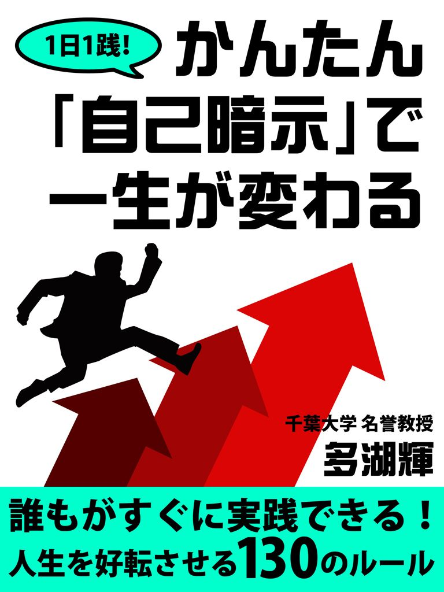
１日１践！
かんたん「自己暗示」で一生が変わる
多湖輝
まえがき
『心理トリック』や『言葉の心理作戦』『ホイホイ勉強術』『子どもの頭をよくする本』など、数多くの著書を世に問うてきたが、そのたびに読者の方がたから、私自身驚くほどの反応をいただいた。さまざまな感想のなかでも、いちばん強く印象に残っているのは、「先生の本を読んでから、人まえで話す自信がつきました」とか「劣等感がウソのように消え、入試に合格できました」といった、感謝の手紙である。
私は、先に挙げた本などのなかで、人間関係をスムーズにするためのちょっとした言葉の工夫、楽して勉強の能率をあげる環境のつくり方などを紹介しただけなのだが、読者の皆さんは、それらの方法の持つ具体的な効果以上に、自分の生き方や考え方を見直す何物かを感じとってくれたようである。それが結果として、劣等感を吹きとばし、入試や資格試験に成功させる原動力になったのだ。これは、言ってみれば、自分で自分の心に働きかける「自己暗示」の効果である。
おそらく読者の皆さんは、その効果を、自己暗示と知らずに受けとめていたのだろうが、私は改めてその心理学的メカニズムの威力に驚かされた。と同時に、それなら、ひとつ「自己暗示術」に焦点をしぼって、より直接的に読者の皆さんの要望にこたえてみてはどうかと考えた。それが、私がこの本を書こうと思った直接のきっかけである。
すでにご存じかもしれないが、暗示には、自分で自分の心に働きかける自己暗示と、他人の言葉や態度に影響を受ける他者暗示がある。
たとえば、一度漆にかぶれてひどい目にあった人は、漆の葉に触れただけでも皮膚に異常を起こすというのは、自己暗示の例である。むやみに薬をほしがる人に、小麦粉をよくきく鎮痛剤だと言って与えたら、即座に頭痛が治ったというのは、他者暗示の効果である。
このように、自己暗示にしろ他者暗示にしろ、どちらも使いようによっては、プラスにもマイナスにも作用する両刃の剣になりかねない魔力を秘めているが、なかでも注意しなくてはならないのは、マイナスの面に働く自己暗示である。とくに「人は、悲しいから泣くのではなくて、泣くから悲しくなるのだ」という有名な言葉があるように、世の中の不安や劣等感に悩む人たちには、自分はダメだと思うことで自分にマイナスの自己暗示をかけ、ますますダメになってしまうという悪循環に陥っているケースがじつに多いのだ。
この悪循環を断ち切るためのもっとも効果的な方法は、ほかでもない、同じ自己暗示をプラスの面に作用させることである。冒頭でお話しした感謝の手紙も、じつは、私の本がきっかけとなって、読者の心のなかで無意識のうちに、マイナスの自己暗示の悪循環をプラスの自己暗示で断ち切ることができたからにほかならない。
世の中には、自信回復のためと称して、さまざまな人生論や宗教書の類が氾濫しているが、この本でご紹介する自己暗示術は、そうした精神論や根性論とはまったく異なっている。自己暗示とは、だれもが持っている心理的なメカニズムを徹底的に利用する「科学的な」技術だからだ。こう言うと何か、しちめんどうくさい手順とかルールが必要な方法のように思う人もいるかもしれないが、よく専門家の指導で行われている「自己催眠」などとはまったく違って、だれでもすぐできるのが、この自己暗示術の特徴でもあるのだ。
本書では、こうした自己暗示術の特徴をさらに生かし、いつでもどこでもあらゆるケースに活用できるように、日常生活のなかのいくつかの重要なポイントに焦点を絞ってみた。本書によって、あなたの眠っていた能力が目ざめ、仕事、勉強、人間関係に自信がモリモリわいてくることを願ってやまない。
多湖 輝
もくじ
第１章 自分にヤル気を出させる言葉
１践 「どうせ」「やっぱり」は、やる気を奪う二大タブー語
２践 心に自信を植えつけるには、断定的な表現を使おう
３践 肯定的な〝言いかえ〟をすると、劣等感を解消できる
４践 マイナスの言葉は、省略するか代名詞に置きかえよう
５践 問題を抽象化していくと、いやなこともいやでなくなる
６践 いやなことを忘れる連想ゲーム
７践 自分を「名詞」でなく、「動詞」で言い表してみる
８践 「単位」を変えると、心の負担が変わる
９践 「今が最悪だ」と思えば、それ以上に悪くならない
10践 劣等感を抱いたときは「私は」を「私たちは」で考えなおそう
11践 「東京がダメなら名古屋がある」と思えば不安が軽くなる
12践 ほんとうにダメになるのは、「自分はダメだ」と認めたとき
13践 タイムリミット用語を自分の頭から消すと闘志がわく
14践 意識的に〝ぞんざいな言葉〟を使ってみよう
15践 卑近な呼び名を使うと、苦手意識がなくなる
16践 自分の目標を他人の前で宣言してみよう
17践 言葉に出して言ってしまうと、平静になれる
18践 うまくいかなかったときは「ひとり言」で口に出してみよう
19践 恋人に手紙を書くことは悩みを解消する格好の手段
20践 イライラの原因をできるだけ紙に書いてみよう
第２章 心がさえる環境づくり
21践 抵抗感があることを始めるには、外的な条件を整える
22践 モヤモヤが晴れないときは、周囲を整理しよう
23践 嫌いなものは、その結果生じたものを逆にたどろう
24践 お守りやマスコットは不安感をしずめてくれる
25践 占いやおみくじも使い方しだい
26践 マンネリに陥ったら、生活のペースや空間をガラリと変えよう
27践 おじけづきそうなときは、身近なものを多く身につけよう
28践 集中できないときは、必要なもの以外は身の回りに置かない
29践 寝入りばなの暗示も、自信回復に効果がある
30践 気が滅入ったときは、漫画やユーモア小説を読もう
31践 スランプのときは、やり終えた仕事を目の前に積みあげよう
32践 あせりが生じたときは、周りに時計を置かない
33践 憂欝なときは、派手な服装をすると気が晴れる
34践 つねに目立つ服装をすれば、人の目を気にしなくてすむ
35践 単調な音や刺激が、高ぶった神経をしずめる
36践 テンポの速い音楽が、心に活気と自信を与える
37践 机の上より周辺のほうが明るいと、集中しにくい
38践 鏡に向かって、自分に語りかけてみよう
39践 積極的になるには「赤」、落ち着くには「青」系の色
40践 嫌いなことでも、せざるをえない環境に自分を投入してみよう
41践 乱れた心を統一するスポーツや稽古ごと
42践 そのことが好きな人とつきあうと嫌いなことも好きになる
43践 自信を失ったら、自分よりすぐれた人と接触しよう
第３章 「動作」の工夫による自己暗示法
44践 心の緊張は、体の緊張をほぐすことによってほぐれる
45践 心が滅入っているときは、ふだんより速く歩こう
46践 イライラしたときは、体を激しく動かしてみよう
47践 大きな声は、自分の心も大きくする
48践 なんでも忙しくやってみると、不安や恐れを追い払える
49践 一定の動作を伴うと、暗示効果が倍加する
50践 なにかを凝視することによって、心的エネルギーが高まる
51践 人の話に身がはいらないときは、メモをとる
52践 いやなことを好きになるには、関係のある道具やものに触れる
53践 あがりそうなときは、手近にある小物で遊んでみる
54践 苦手なものは物理的距離を縮めれば、心理的距離も縮まる
55践 心が不安定なときは、腕組みなどの防衛姿勢をとろう
第４章 やり方ひとつで不得手も得手に
56践 小さな目標を一つずつ達成することが自信を生む
57践 目標は、具体的であればあるほど「やる気」は高まる
58践 仕事を始めるまえに、そのプロセスを体系化しよう
59践 倦怠感をなくすには、スケジュールをどんどん破ってみる
60践 飽きたときは、休むより異質な作業をやってみよう
61践 いやなことをするときは、さきに好きなことをやっておく
62践 迷ったときは、目的にいたる段階のどれか一つに問題をしぼろう
63践 目先の雑事を放っておくと、精神的緊張は高まるだけ
64践 一〇年先の計画をたてると、眼前の計画も容易に見えてくる
65践 膨大な量の仕事は「心理的割り算」で細分化する
66践 「標語」は、右肩上がりの字で大書する
67践 いやなことは、週末にやったほうが、効果があがる
68践 苦手なことをするときは、自分のもっとも調子の出る時間帯で
69践 「タナあげ」の技術を心得よう
70践 徹底的にそこから離れると、やりたくないこともやりたくなってくる
71践 仕事や勉強の疲れは、仕事や勉強を通じて解消しよう
第５章 活力は「心がまえ」次第
72践 人は、それらしくふるまうことでその地位に近づく
73践 失敗しそうなときは、喜ばしい結果を視覚化しよう
74践 失敗を失敗に終わらせないためには、「過剰訂正」をしよう
75践 一つのことに打ち込めば、ほかのことにも猛然と意欲がわく
76践 欠点を気に病んで自信を失ったときは、どうにでもなれと開き直ろう
77践 迷ったときは、最初の直感を思い出してみよう
78践 別の観点から評価の基準を考えてみよう
79践 悪い癖や失敗の繰り返しから抜け出すには、それを意識的に反復してみよう
80践 悩みがあるときは、より大きな世界と自分を対比させてみる
81践 得意なものを一つつくると、ほかのものもできるようになる
82践 すべての逃げ道を自分から絶ってしまおう
83践 毎日続けるものを一つ持つと、どんなことにでも持続力が出る
84践 自分に報酬を与えながらやると、集中できる
85践 つねに自分の「敵」をつくっておこう
86践 「しまった」と思ったら、一瞬でも、まったく別なことを考えよう
87践 不安にかられたときは、その理由を自問自答してみよう
88践 不安があるときは、好きな食べ物を腹一杯食べてみよう
89践 苦手意識をなくすには、繰り返してそれに慣れること
90践 同じ失敗をしても、自分を笑えるかどうかで失望感の大きさが違う
第６章 相手の見方による自己暗示法
91践 相手が自分を嫌っているときは、自分が相手を嫌っていると思おう
92践 他人の長所は大きく見え、自分の長所は小さく見えるもの
93践 自分と同じ欠点を持った人間を知ろう
94践 すぐれた人の短所を数えてみると、自分の長所が伸ばせる
95践 気おくれする相手にも、自分と共通する点を数えてみよう
96践 相手のなかに、別の身分を発見すると、負い目を感じなくなる
97践 相手の肩書に圧倒されそうなときは、肩書にもピンキリだと思おう
98践 いやな相手のいやな行動には、まったく別の原因を想定してみよう
99践 「能力」を「役割」に置き換えて考えよう
100践 圧倒されそうな相手の前では、意識的にゆっくりした動作をとろう
101践 相手に圧倒されそうなときは、光を背にして立とう
102践 相手に対する抵抗感を取り去るには、共通の敵をつくる
103践 相手の威圧感からのがれるには、相手の体の一部を見つめる
104践 苦手な相手には、無表情を保つのも効果がある
105践 ホームグラウンドを利用すると、苦手意識も克服できる
106践 恐怖感を与える人には、具体的なものに仮託して打ちのめそう
107践 苦手な相手と接するときは、相手の機先を制するようにする
108践 いやな相手に心を乱されないためには、視線を合わせないようにする
エピローグ 「考え方」であなたが活きる
109践 起こったできごとは、つねに自分の都合のよいほうに解釈しよう
110践 悲劇的なことと反対の連想をすると、新しい道が発見できる
111践 過去の自分を思い返すと、今の自分に自信が持てる
112践 自己否定に陥ったときは「......。が、しかし」という言葉を使おう
113践 小さな長所でも、繰り返し思い出すと、短所が気にならなくなる
114践 欠点は、上手に生かせないかと考えてみよう
115践 「不得意こそ大得意に転じる」という事実を思い出そう
116践 「嫌い」の原因を考えると、「嫌い」＝「不得意」でないことがわかる
117践 不得手なものも、得意なものと関連づけて考えると好きになる
118践 深く知りすぎないことも、おじけづかないための知恵
119践 失望や不安は、より大げさに考えて滑稽化してしまおう
120践 「やらなければ」と無理に思うと、かえってできなくなる
121践 「不安の正体」を見きわめよう
122践 絶望の状態から抜け出るには、まずその状態を自分で認めてしまうこと
123践 不安の一部分を積極的に認めると、全体的な不安はプラスに転じる
124践 どんな重大なことでも、「たかが......」と考えよう
125践 劣等感に悩んだときは、成功者の伝記を読んでみよう
126践 不安が生じたときは、悲観、楽観をはっきり選別してみよう
127践 「しか」と考えるよりも「も」と考えよう
128践 嫌いなことも、ほんとうに嫌いかどうか試してみよう
129践 後悔しないためには「後悔は余裕から生まれる」ことを思い出そう
130践 「なくなった」ものは、「捨てた」と思おう
プロローグ
――自信がモリモリわいてくる
ほんの「ちょっと」した気の持ち方で、一生が変わる
職業柄、私のところには、仕事や勉強に悩みを持った方が、よく身の上相談にみえられるが、何事にも自信が持てず、不安に陥っている人があまりにも多いのに、今さらながら驚かされる。話を聞いてみると、他人の目には、じつにすばらしい能力を持ち、めぐまれた条件で仕事をしているように見えるのに、自分の能力が信じられないのか、持てる能力の何分の一も発揮できないでいる人がほとんどだ。かと思えば〝合格〟できないのではないかという不安にさいなまれて、さっぱり勉強が手につかず、毎日をもんもんと過ごしている受験生もいる。
こういう人たちに共通して言えることは、誠実で、小心で、自己に対して、あまりにも忠実に生きようとする気持ちが強すぎることである。そのために何事に対しても、完全無欠の成功をめざし、それが果たされそうもないからと、迷い、悩み、ときには激しい劣等感や無力感にとらわれて、結局は何も手につかず、ただ、クヨクヨと思いわずらっているのである。生きる充実感もなく、ただ悩みながら毎日を過ごしているのである。
若い人もいれば、年寄りの方もいる。男性もいれば、女性もいる。もしかしたら、今のあなたがそうなのかもしれない。あるいは、あなたの部下やお子さんが、こうしたいわれなき劣等感に苦しめられているのかもしれない。
私は、こうした人たちの顔を見るたびにこう思う。なぜ、もっと楽な気分で、人生を生きぬくことができないのだろうか。肩の力をぬいて、張りつめた心をゆるめて、リラックスしたおおらかな気分で、仕事や勉強に打ち込めないのだろうか。そうすれば、悩みも劣等感も、たちどころに消しとんでしまうはずなのに......。
それも、ほんのちょっとしたことで、これが可能になるのだ。むずかしいことでもなんでもない。ただ、ほんのちょっとだけ心の持ち方を変え、見方を変えて実践さえすれば、たちまちにして生まれ変わったように自信が持てるし、仕事や勉強にも打ち込んでいけるのだ。ただ、ほんのちょっとだけ、気持ちを変えることができさえすれば......。
だが、残念ながら多くの人にはそれができないようである。いや、正確にいえば、できないものと思い込んでいるのである。考えてみれば、それももっともな話だ。ただ思い込めと言われても、こうした人たちは、その思い込み方がわからないから、悩み、苦しんでいるのだ。
どうしたら気持ちを変えられるのか、この「思い込み方の技術」こそ、私が本書でお話ししようとする「自己暗示術」にほかならない。あなたもおそらく、これまで多かれ少なかれ、これからお話しする自己暗示術を実践してきたにちがいない。問題は、それをはっきり意識して、意図的に活用するかどうかである。
小麦粉でも、効くと思えば薬になる
自己暗示にかぎらず、暗示という現象は、私たちの社会生活と、じつに密接なつながりを持っている。たとえば、あなたがヤジ馬になって火事の現場に行ったとしよう。このとき、あなたは、なんらかの共通した関心や興味をもって集まった組織のない集団、つまり群集のなかにいることになる。するとあなたは、この群集の影響を受けて、ひょっとすると、ふだん一人きりのあなたからは想像することもできないような、とんでもない行動に走るかもしれない。
気がついてみたら、思わず大声を出していたり、ほかの人といっしょに走っていたなどという経験は、だれにでもあるだろう。これは明らかに、暗示の作用の結果なのである。
あるいはテレビのＣＭをみてデパートに行き、気がついたら、その商品を買っていたというような経験をお持ちの方もいるだろう。毎日、繰り返し見ていた、あるいは見せられていたＣＭの効果が表れたわけだが、これもある種の暗示効果ということができるだろう。広告や宣伝は、たえずあなたの無意識の心に働きかけ、この暗示効果によって、実際の行動に走らせようとしているともいえるのだ。
暗示の効果はこれだけではない。もう何十年もまえのことだが、私はテレビの番組で、レッキとした大人を相手に、暗示効果の一つを公開実験したことがある。
二〇人ほどの大人を前にして、私はボンベを一本持ち出し、「このボンベのなかには、甘ずっぱい臭いのガスがはいっています。これからボンベの栓をひねりますから、臭いがしたらすぐ手をあげてください」と言いながら、ボンベの栓を開いた。すると、たちまちのうちに全員が手をあげた。全員が、はっきりと甘ずっぱい臭いをかいだと言うのである。しかし、すでにお気づきかもしれないが、そのボンベのなかには、無色無臭の空気がはいっていただけなのだ。
これは、ちょうど、小麦粉を薬だと言って飲ませれば、それだけで頭痛や腹痛がなおってしまうことがあるのと同じ効果である。また、人によっては、「あなたは顔色が青いですね」と言われただけで、じっさいに真っ青になってしまうことさえある。医者の一言で、ほんとうに病気になってしまう医原病も、こうした原理で起こってくるのだ。
これらは、いずれも覚醒暗示と呼ばれるもので、「テガアツクナル」といった式の催眠とは、はっきり区別されている。つまり、パッチリとめざめている意識明瞭な条件のもとでの暗示効果なのである。
こうした暗示の強力な効用は、自分で自分にかける自己暗示のときにも、同じように表れる。むしろ、人によっては自己暗示のほうが、はるかに暗示効果が大きい人もいるくらいだ。そのうえ、自己暗示には他者暗示にない大きな利点がある。自分の意志で、いつでもどこでも自由に行えることである。
それにひきかえ、たとえば催眠療法が、心理療法の分野で、その効果を十分に認められながら問題視されてきたのは、こうした他者催眠の場合、どうしても再発することが多く、しかも、たえず治療者に暗示をかけてもらわなければならないという決定的な不利があるからだ。
その点、自律訓練法をふくんだ自己暗示の方法は、施術者がつねに自分自身であるため、繰り返し自分自身で暗示をかけることができ、また、いつどんなときでも行えるため、暗示の効力が何倍にも強められるという利点を持っている。
具体的に言えば、小麦粉を薬だと言って飲ませるには他者を必要とするが、これは効くはずだと自己暗示して飲むぶんには、だれの手も借りる必要はない。しかも、これだけで十分な効果をあげられるのである。
自信や不安は、「主観的」なものである
それでは、なぜ自己暗示が、自信回復にそんなに効果があるのだろうか。私たちの心は、これまでみてきたように、たえず自分からも他人からもさまざまな暗示を受けている。その影響で、ある場合には必要以上に喜んだり、ある場合には極端にふさぎ込んだりすることも少なくない。つまり、暗示には、プラス面に作用するものとマイナス面に作用するものがあるのだ。そして、マイナスの暗示を強く受けたとき、私たちは、いわれなき劣等感に悩んだり、起こりそうもない不安に恐れおののいたりするのである。
「自信」という言葉を辞書で引いてみると、「自分の価値や能力を、自分で信じること」と書かれている。私たち人間はだれしも、過去の自分の経験から、「自分には、これくらいのことはできる能力があるんじゃないか」と思うようになり、これを判断の基準にして、将来も、この程度のことならできるはずだと期待するようになる。これが「自信」と呼ばれるものである。
この自信とか不安について考えるとき、まず、まえもって、知っておくとよいことが二つある。
その一つは、自信は、けっして固定的なものではなく、同じ人でも時と場合によって「自信がある」ときと「自信がない」ときとがあるということだ。
第二には、自信や不安はあくまでも、当人がどう感じるかという「主観的な体験」に裏打ちされたものであり、客観的なものではないという点である。言ってみれば、自分や他人にマイナスの暗示をかければ、この主観はきわめて積極的になり、それが劣等感や不安の源となってしまうのだ。
ここにこそ、自信を回復するためのテクニックとして、自己暗示術の成り立つ基盤がある。つまりマイナスの暗示をはねのけて、本来の自分を取り戻すには、プラスの暗示を自分で自分にかけるのが、もっとも有効な手段だということになる。
「マイナス性格」は変えられる
ところで、自信欠如や不安のマイナス状態をつくり出す原因はどこにあるのだろうか。
まず第一に考えられる原因は、「性格」である。たとえば、自信のない代表的なタイプの人が神経質と呼ばれているように、「神経質」の人間は、弱気であり、細かいことにくよくよと思いわずらい、将来を悲観的に考える。なによりも困ったことに、このタイプの人は完全癖を持っている。他人からみれば、じつにうまくやったと思うことでも、当人は不完全だと思い込み、「あそこをああすればよかった、ここもこうすればよかったのに」と、かえらぬことをいつまでも悔やんでいる。このタイプの人は、つねにマイナスの自己暗示を自分にかけて、劣等感にさいなまれているのである。おまけに意志薄弱の傾向もある。いってみれば、「自信のない人」がそなえるすべての特徴をそなえているといっていい。
これに対して反対の極にあるのが、偏執質のタイプである。このタイプは、強気であり、絶対に弱音をはかない。でしゃばりで、強情なところがあり、利己的な人間が多い。これは「自我肥大」とも呼ばれるように、自我が強く、いつも「オレが」「私が」と自分を持ちだす傾向がある。猜疑心も強く、他人にものごとをまかせることができない。頭が固く、勝手な解釈をして、いったんこうと思い込むと、なかなか他人の言うなりにはならない。言いかえれば、このタイプの人は、自信が強いのをとおりこして、いささかハタ迷惑なところがあるともいうことができるだろう。
こんなふうに、人間の性格によって、自己暗示の方向が両極端に分かれ、自信の有無が決められる一面があることは事実なのだが、これを遺伝的だとか終生変えられないなどと、宿命論的に考えるのは誤りである。これらの性格は、明らかに後天的な要因でできあがるものであり、これにプラスの自己暗示をかけて軌道修正することはけっして不可能なことではない。ただ、性格に深く根ざしている自信のなさは、なかなかなおりにくい一面があるので、多少気長に修正することを考えればよいだけのことである。
過保護が育てるマイナス状態
自分の心がマイナス状態に陥る第二の原因として、いわゆる自律心とか独立心、つまり主体性に欠けている点を挙げることができるだろう。
現代は、過保護の時代と言われて久しいが、一般に過保護に育てられた人は、自分で判断し、自分で意志決定する経験が不足している。母親や周囲の大人たちが、本人にかわって、意志決定をしてしまうからだろうが、こういう人が一人立ちして、いざ自分で意志決定を行い、ものごとに対処しようとするとき、マイナスの自己暗示が働いて、なんとなく自信のなさ、頼りなさを感じるのは当然だろう。
また、過保護で育てられた人間は、概して欲求不満になったり、失敗したりするといった体験が乏しい。そういう状態になるまえに、周囲の大人が世話を焼いてしまうからである。これが、失敗に対する挫折感から、自力ではいあがろうとする生活技術の不足をもたらしているともいえるだろう。その結果、自分で自分を自信のない人間につくりあげてしまっているのだ。
このような幼少年期における親の養育態度が、自信のなさにつながる大きな要因の一つになるといわれても、当人の意志ではどうすることもできないといわれるかもしれない。しかし、これとても、けっして宿命論的に考えるにはあたらない。自分は、それだけ親から可愛がられて育てられたのだからと、おおいに評価してプラスの自己暗示にかければ、あとは自力で不都合な面を取り除いていけるだろう。その具体的な方法については、本書でくわしくお話ししようと思っている。
失敗・成功も気の持ちよう
さて、このような要因のほかに、精神的なマイナス状態に陥りやすい第三の原因としては、失敗・成功の体験がある。
たとえば、あなたが現在、仕事は順調にいっているし、麻雀でもやれば勝ち続けているとしよう。こうして、やることなすことがすべて成功という状態が続いていれば、当然のことながらプラスの自己暗示が働き、自然に自信もわいてくる。ところが、逆に何をやっても、うまくいかないということになれば、自信がなくなり不安に陥るのは、これまたあたりまえである。
だからといって、まったく救いようがないかというと、けっしてそうではない。それどころか、ここにこそ「自信をつける」ための自己暗示術の有効性があるのだ。
成功・失敗の体験というものは、自信の有無と同じように、極めて主観的なものである。ハタ目には、だれがみても、あれ以上はうまくやれないと思われるような結果が出ても、本人自身は失敗だと感ずるかもしれない。逆に他人がみれば、完全な失敗だと思われることも、本人自身がすこしも失敗と思わず、むしろ成功したと感じているかもしれない。成功・失敗といっても、それはその人自身の主観的な体験、いわば個人個人の感じ方にすぎないのである。
これを別の言葉で表現すると、「要求水準の差」ということになる。要求水準の高い人、たとえば一〇〇点をめざしている人にとって、七五点は失敗と感ずるだろうが、初めから五〇点をめざしている要求水準の低い人にとっては、七五点なら大成功ということになる。
こんなわけで、失敗・成功体験は、あなたの心の持ち方や、要求水準の高さなどによって、その心理的効果をどのようにも変えることができるのだ。そこに働きかけて、マイナスもプラスに転化してしまおうというのが、自己暗示術の極意だということができる。
このほか、マイナス状態をつくる第四の原因として、劣等感がある。劣等感、つまり他人より劣っているという感情は、さまざまな要因から起こってくる。身体や容貌の劣等からも起こるだろうし、能力や性格の劣等からも起こりうる。ひとたび、この劣等感のとりこになると、人はえてして、すべてがダメだと思い込む結果、いつもなら簡単にできることさえ、やろうとしなくなってしまう。このようにして、劣等感は新たな劣等感を生み、はてしのない悪循環を始めるのである。
しかし、これもその人自身の「劣等感情」であり、事実として「劣等」であるかどうかは別問題である。だからこそ、この悪循環をはね返すのには、プラスの自己暗示が効果を発揮するのだ。
どんなマイナス状態も克服できる
この悪循環を絶ち切る自己暗示術の具体的な方法を考えるには、およそ三つのポイントがある。
その方法の第一は、なによりも現状を客観的に把握することである。敵と闘うには、まず敵を知らなければならない。それによって処方箋も違ってくる。たとえば、自分はどうして自信が持てないのか、それがもし性格的な弱みからくるものなら、それなりの対処のしかたがあり、また、それが失敗の連続からくるものなら、それなりに別の対処のしかたがある。
要するに、自分の現状を冷静に見きわめることである。どこに問題点があるかを明らかにし、整理してゆけば、どんなに複雑にもつれたように見える要因の糸も解きほぐされて、何が本質で何が派生的なものかもわかってくる。そうなれば、克服への第一歩をどこからどのように踏み出したらよいかというきっかけもつかめるはずだ。ここから、本文の随所に出てくる、自己客観視をテーマにした一群の自己暗示テクニックが生まれてくる。
第二には、このマイナス状態の現実からけっして目をそらさないということだ。逃げ腰で強敵に勝てるわけがないということになるが、苦しくとも真正面から対決し、どん底からの反発力で劣等感や自信のなさを克服していくことである。要するに、あなた自身の手で行う以外に、解決の手はないのだ。これは、いわば自己直視の自己暗示術といえよう。
第三は、自分がとらわれている考え方に、まったく別の角度から光をあててみる方法だ。見ようによっては、「アバタもエクボ」に見える人間心理の不思議を意識的に利用して、精神状態をガラリと転換してしまうのだ。これは、本文のなかでもかなり主要な部分をしめるもので、いわば、自己転換の自己暗示術ともいうことができるだろう。
もちろん、これらの原則以外にも、さまざまな体験や理論から生み出された自己暗示の技法がある。しかし、この三つは自己暗示の三大原則であり、直接的にはこれと関係のないような具体的な方法も、多かれ少なかれ、この考え方の流れをくむものだ。あなた自身が、新しいテクニックを考えようとするときも、この原則を一つのヒナ型と考えて工夫してみるといいだろう。
まず「踏み出す」「繰り返す」が自己暗示の秘訣
本書でお話しする技術は、いずれも私自身、あるいは仲間や先輩たちが、あなたと同じ苦しみのなかから、あみだしたものばかりである。とにかく第一歩を踏み出してみてほしい。一日に一個でいいから、毎日の生活のなかで繰り返し、繰り返し実践してみていただきたい。
「繰り返し」が必要なことは、「暗示」一般が共通に持つ重要な心理的要因だが、自己暗示術の成否も、まさにこれにかかっている。どんなに巧妙な暗示法でも、「繰り返し」を怠れば効果は半減するし、逆にどんなささいな技法でも、繰り返しによって、考え抜かれたどんな高等テクニックよりも大きな効き目を発揮するのだ。
そこで私は、日常生活のあらゆる場面で、取りかかりやすい七つのポイントを選んで、章分けを考えた。
まず、第一章は、言葉が私たち自身に与える暗示効果を利用して、言葉をちょっと変えるだけで、やる気がわいてくる自己暗示の方法をお話しする。第二章では、環境が人間に与えるさまざまな影響を、自分自身で操作して、プラスにもっていく方法を集めてある。第三章では、私たちの日常のちょっとした動作が、私たちの心をプラス方向にもマイナス方向にも動かすところから、その動作を意識的に変えるという点にポイントをあてた。第四章は、私たちが毎日、何気なくやっている考え方の手順を、ちょっと変えてみるだけで、不安や劣等感を解消する自己暗示のやり方を考えてみた。第五章では、ものごとに対する自分の態度を、意識的に変えることで活力を生む自己暗示のしかたを、いろいろなケースに応じて示してある。第六章では、引け目や負い目を感じている相手にも、自分のもちかけ方しだいで、苦手意識を消し、自信がわいてくる自己暗示の方法を、さまざまなケースから抽出している。最後の第七章では、自分の考え方を見直し、その方向をちょっと変えることで、自信がモリモリわいてくる自己暗示の方法を集めている。
このなかのどれからでも「実践」していけば、かならずや今まで気づかなかった自分の能力や長所を発見するにちがいない。そこには、自信にあふれ、仕事や勉強をホイホイこなし、余裕をもって生きているあなたがいるはずだ。それこそ、ほんとうのあなたの姿なのだ。
第１章
自分にヤル気を出させる言葉
１践 「どうせ」「やっぱり」は、やる気を奪う二大タブー語
仕事や勉強がうまくいかないとき、たいていの人は、「どうせダメだろうと思ったら、やはりダメだった」「しょせん、おれには才能がないのだ」「やっぱり、彼にはかなわない」など、しきりに「どうせ」「やっぱり」「しょせん」といった言葉を連発する。これらの言葉は、いわば「あきらめ」の心境を正当化しようとする代表的な例だが、私に言わせれば、こうした言葉を口にするから、うまくいくことも、うまくいかなくなってしまうのだ。「どうせ」「やっぱり」をはじめ、「しょせん」「仕方がない」「やむをえない」といった言葉は、いわば努力放棄語、思考停止語ともいうべきもので、この言葉を口にした段階で、自分のマイナスが正当化されてしまい、自分をそのカラから一歩も外へ出られなくしてしまうのである。
この章では、ふだん何気なく使っている言葉が、いかに大きな自己暗示力を持ち、プラスにもマイナスにも働くかをお話ししたいと思うが、もし、あなたが無用な劣等感にとりつかれているとしたら、「どうせ」「やっぱり」を、やる気をなくす二大タブー語として、まず、あなたの会話や文章のなかから消し去ることをおすすめしたい。たとえ、頭に浮かんだとしても、実際に使うことを避けるだけで、自信がモリモリわいてくること請け合いだ。
苦しみと悩みは、偉大な自覚と深い心情の持ち主にとって、つねに必然的なものである ――ロシアの作家 ドストエフスキー
２践 心に自信を植えつけるには、断定的な表現を使おう
近所の果物屋のご主人から、おもしろい商売上のかけひきを聞いたことがある。食物のなかでも、果物はとくに外見から味のよし悪しを判断しにくいところがあるため、お客から、「このスイカ甘い？」「このミカン、すっぱくないかしら？」といった疑問をよくぶつけられるのだそうだ。
こんなとき、「たぶん甘いでしょう」とか、「すっぱくはないはずですよ」といった、あいまいな返事をすると、一〇人のうち七人は買わずに帰ってしまうという。
ところが同じ品物でも、「これが甘くなければ、どこに甘いスイカがあるのかねえ」「うちではすっぱいミカンは金輪際、売ったことがないよ」などと断定形を用いると、おもしろいように売れるのだそうだ。なるほどこれも商売上のかけひきだろうが、じつはこうした客とのやりとりをしているうちに、当の主人が、スイカもミカンもぜったいに甘いと信じるようになっているのだ。こうして客に対する説得にもいちだんと熱がはいって、商売もいっそう繁盛するというわけだが、自分の心に自信を植えつけるには、まず断定的な表現を用いて、自分自身を説得することが先決である。
「うまくいくだろうか」と疑問形で問いかけるのではなく、「かならずうまくいく」と断定することが、結果をうまくする第一歩なのだ。
３践 肯定的な〝言いかえ〟をすると、劣等感を解消できる
女性にとって、鏡に自分の姿を映しだすことは、幸せな瞬間の一つだといわれるが、同時にそれはひどい劣等感に悩まされるときでもあるらしい。同じ浅黒い肌も、自分の容姿に自信のある女性は「あたしの小麦色の肌は、みごとな黒髪とすてきにマッチしている」と、おのが姿にしばしうっとりするだろうが、ちょっと自信のない女性は、「あたしって、なんて色が黒いんだろう」と、深刻に悩んでしまうにちがいない。
こんなことから、鏡を見るたびに自信を失い、ついには鏡に八つ当たりすることにもなるのだが、考えてみれば、ある価値に対する基準などというものは、きわめて主観的であいまいなことが多いのだ。きれいだと思えばきれいに見えてくるし、いやだと思えば、なにもかもがいやに思えてくる。とくに劣等感は、言葉によって醸成されることがよくあるだけに、否定的なイメージを持つ言葉を口にだすことは、害になることはあっても、けっして益になることはない。
『物の本性について』を著したローマの詩人のルクレチウスは、「色の黒いことに悩んでいる女の子は、ナッツのような褐色の肌と讃えよ」とすすめているが、鏡に向かって「ナッツのようにステキな肌」と言い続ければ、色が黒いなどということは、すこしも気にならなくなるにちがいない。
そうなってこそ、自分の容姿にほんとうの磨きがかかり、どこから見てもすばらしくなることができるのだ。
ついでに言えば、ルクレチウスは、「やせて骨と皮」は「カモシカ」、「おしゃべり」は「雄弁のたいまつ」、「おてんば」は「大自然の驚異」と言いかえるようにすすめている。
同じ事実を言うにも、肯定的な言い方をするか、否定的な言い方をするかによって、そのあとの結果に雲泥の差が出てくるというわけだが、言葉というものは、どんな天才もかなわない魔術師なのである。どんなに不利な状況でも、プラスの価値を含む表現を使えば、同じ事実も逆に見えてくるから、劣等感などにとりつかれる心配はないはずだ。
志を立つることは大にして高くすべし。天下第一等の人とならんと平生志すべし ――学者 貝原益軒
４践 マイナスの言葉は、省略するか代名詞に置きかえよう
自己暗示によって、さまざまな病気を治す「クエイズム」という一種の精神療法を開発したフランスのエミール・クエ博士は、その自己暗示法の一つの秘訣として、マイナス語の繰り返しを避けることを挙げている。つまり、「痛みは消える、痛みは消える、痛みは消える」と暗示をかけるより、「痛みは消える、消える、消える」のように、自分にいやな感じ、マイナスの刺激を与える言葉は最小限にとどめて、あとは省略したほうが、暗示効果はあがるというのだ。
この方法は、なにも精神療法にかぎらず、ふだんの私たちの日常生活のなかでも十分通用するだろう。自分が試験に落ちるのではないかという不安を、言葉に出して繰り返しているうちに、ほんとうに落ちてしまうことがしばしばあることから見ても、自分に対してマイナスに作用する言葉は、なるべく使わないに越したことはない。かりに不幸にして試験に失敗しても、「落ちた」とか「落第生」とかの言葉を繰り返していると、ほんとうに人生の落第生になってしまいかねないのだ。
もし言わなければならない必要にせまられても、不幸な事件とかいやな思い出は、「あのこと」とか「あの事件」「あれ以来」など、代名詞やそれにかわる言葉で、その場を切り抜けることはいくらでもできるはずである。
失ったものを数えるな。残ったものを数えよ ――国際身体障害者オリンピック創始者 グッドマン
５践 問題を抽象化していくと、いやなこともいやでなくなる
避けられないいやなことを前にして、鬱々として楽しまなかったり、不安にとらわれそうだったら、意味論学者のＳ・Ｉ・ハヤカワが提出している「抽象のハシゴ」という〝道具〟を使って、〝高見の見物〟をきめこむのも一法だ。
つまり、具体的な個々のものには、かならずそれより一段、二段と高い抽象化された概念がある。家で飼っている「ミケ」は、メス猫であり、さらに猫であり、猫族であり、哺乳類であり、脊椎動物であるというように、どこまでも抽象のハシゴで続いている。この〝ハシゴ〟を、当面する「いやなもの」にかけて、どんどん抽象の高見にのぼってみるのだ。
たとえば、Ａといういやな上司がいたとき、「ミケ」と同様に、Ａ→人間のオス→哺乳類→脊椎動物→動物→生物という抽象のハシゴをかければ、あとはこのハシゴのどの段で、高見の見物をしようとお好みしだいというわけだ。Ａを脊椎動物と見ても、生物と見ても、ＡをＡとしか見られないより、腹の虫がおさまるにちがいない。いやな仕事も、労働とは何か→飯のタネとは→生きるとは、と考え、口ベタが悩みでも、コミュニケーションとは→伝達とは→情報とはと、抽象のハシゴを登ることで、不安の対象となることの具体性を抹消できるのだ。
６践 いやなことを忘れる連想ゲーム
いやなことから、つぎつぎに言葉をつないでいくと、悩みや不安など屁とも思わなくなるという、不思議な心理効果は、前項の「抽象化」のほかに「自由連想」にも認められる。
「自由連想」の特徴は、ある言葉から、まったく自由に思いつくまま言葉を連らねていくうちに、最初の言葉からは思いもつかなかった縁もゆかりもない言葉にいきつくことだ。たとえば、連想術の大家である作家、井上ひさし氏の『江戸紫絵巻源氏』のなかにある、「饅頭→女性性器→女→うちの娘→売れ残るとまずい→客はなかなかの好青年→売りつけてやろう→娘の結婚→孫の誕生→一家だんらん→娘の亭主から小遣いを貰う→左団扇→極楽往生」という連想では、なんと一個の饅頭が極楽往生にまで結びついてしまった。
私たちの連想が、つねに極楽往生にいたるとはかぎらないが、連想の心理的効果は、まさにこうした無限の広がりを持つところにある。つまり連想には、人を自我の中心部から引き離す効果があるのだ。自我には核心部と周辺部があり、核心部に触れられると、人間は怒りや憎しみなどの強い情緒反応を起こす。これを心理学では自我関与（エゴ・インボルブメント）と呼んでいるが、連想は、人間の関心を自我の核心部から周辺部へ引き出し、自我関与から解き放つ役割をはたすのだ。
たとえば、失恋、仕事や受験の失敗など、忘れたい経験があったら、自分がもっともこだわっている対象そのものから自由連想をしてみるといい。失恋→愛を失った→ローストラブ→ローストチキン......、恋人の名からなら、野口四郎→野の口→野原にぽっかりあいた穴→おとし穴→あぶない......、東京大学をあきらめるなら、東大→いちょう並木→落葉→たき火→焼き芋......など、失恋もローストチキン、東大も焼き芋になって、こだわりを捨てるのにいささかでも役立つだろう。
先人のあとを追うな、先人の求めたものを求めよ ――俳人 芭蕉
７践 自分を「名詞」でなく、「動詞」で言い表してみる
私は職業がら、赤面恐怖症や劣等感に悩む若い人たちの相談を受けることがよくある。話を聞いてみると、自分でそう思いこんでいるだけの話で、悩まなくてもいいことに悩んでいるケースが多い。本人たちにしてみれば、きわめて深刻な問題だけに、なんとかして、この「思いこみ」から解放してやらなければならない。
こんなとき私がよく使うのが、自分を「名詞」でなく「動詞」で言い表してみるという方法である。彼らは「私は赤面恐怖症だ」「私は劣等生だ」といったように、自分を「名詞」で表現することで、自己の否定的イメージをつくりあげてしまっている。いわば、自分で勝手につくりあげてしまった全体的なレッテルのなかに、自分を押しこめてしまっているのだ。そこで、「私は人前に出ると顔が赤くなる」「私は学校の勉強が人よりできない」といったぐあいに表現し直してもらうのである。すると、同じ人前でも異性の前で赤くなるだけであったり、勉強のなかでも数学だけが苦手だということがわかってくる。つまり、全体肯定に使用した名詞を、部分肯定で動詞に変化させてみると「......であることもある」ということが明確になり、自分で勝手につくりあげていた否定的イメージを、ぶちこわすことができるというわけだ。
足ることを知って及ばぬことを思うな ――武将 楠正成
８践 「単位」を変えると、心の負担が変わる
同じ一つの事実を言い表すにも、使う「単位」によって、重くも軽くも、大きくも小さくも、長くも短くも感じられることは、私たちがよく経験するところだ。たとえば、半年後にひかえた入学試験も、あと「六ヵ月」と「月」単位で表現すれば、ずいぶん長く感じられ、じっくり腰を落ちつけて勉強に取り組もうという気になってくる。同じ半年後も、あと「一八〇日」と、「日」単位で表現すれば、いよいよ間近にせまった感じがして、一気に受験ムードが高まってくる。不動産業者の広告に、「都心まで八〇分」というように、分単位の表現がよく使われるのも、できるだけ近いイメージを買い手に与えたいためにほかならない。新聞が、「愛・地球博まであと三ヵ月」と書くかわりに、「あと九〇日」と書けば、早ばやとお祭り気分も盛りあがってこようというものだ。
一般に「キロはメートルより長い」「時は分より長い」というイメージがあるが、同じ事実も単位を変えて表現してみるだけで、心の負担を重くも軽くもすることができるのだ。私はこれを「心理的換算」と呼んで、自分の心をコントロールする手法としてよく使っている。
あなたも一度ためしてみたらどうだろう。
９践 「今が最悪だ」と思えば、それ以上に悪くならない
私は、イギリスの文豪シェイクスピアのファンだが、なかでも『リア王』は中学時代から愛読している作品の一つだ。その一節に、両眼をえぐりとられた父親と、乞食姿に身をやつした息子が、荒れはてた野原で再会するシーンがある。そのとき、息子が万感をこめて言うのが、「今が最悪だと言えるときは、まだ最悪ではない」という有名な言葉である。試験勉強に悩んだとき、仕事に行きづまったとき、どれほどこの言葉に勇気づけられたことだろう。おそらく私ばかりでなく、いろいろな国のさまざまな人たちが、この言葉に励まされ、自信を回復し、困難を乗り越えてきたにちがいない。
私たちは仕事がうまくいかなかったり、テストの結果が悪かったりしたとき、無意識のうちに「最悪」という言葉を口にする。ところが、当の本人は、今の事態がけっして最悪だなどとは思っていない。自分の心のどこかに、まだ人に話せるだけの余裕があるからこそ、「最悪だよ」という言葉で予防線を張って、「最悪」に陥らないための防衛手段を行使しているのである。この意味で「最悪と言えるときは、最悪でない」のである。
それに、「最悪」という言葉には、「他のものと比較して最悪」という意味がある。ところが、この言葉を使うときの比較の基準があいまいなのだ。この基準をはっきりさせると、「最悪」だと思っていた事態が、むしろ、いい状態だということにもなってくることが多い。
こう考えてくると、悲観的になったり、自信がなくなったりしたときには、あれこれ考えるよりも、今の状態を「最悪」という言葉でとにかく認めてしまったほうが、気が楽になるということになる。事態が困難であればあるほど、心にゆとりがなくなり、「最悪」という言葉が消えてしまいがちになるが、こうしたときこそ、「最悪」という言葉が必要なのだ。だいいち「最悪＝それ以上悪くならない、あとは上昇するだけだ」と思えば、心理的に安定感すら出てくる。こうした心の変化が、事態をよくする強力な原動力になるのだ。
成功にはなんのトリックもない。私はただいかなるときにも、私に与えられた仕事に全力を尽くしただけだ ――アメリカの実業家 カーネギー
10践 劣等感を抱いたときは「私は」を「私たちは」で考えなおそう
内向的だった女性がはじめて子どもを生んで、見ちがえるような明るい性格に変貌したり、それまでどうすることもできなかった劣等感から脱出できたという例がよくあるようだ。この原因の一つは、むろん今まで自己にのみ向けられていた過剰な意識が子どもに分散されるためだが、もう一つにはその女性が子どもを生むことによって、いわば〝複数意識〟とでもいうべきものに目ざめるからではないだろうか。つまり、それまであらゆることに対して使っていた「私は」が、この瞬間、無意識のうちに「私たちは」に変化するのだ。
心理学では、これを拡散効果（デフューズィング・エフェクト）またはキシャク効果（うすめてしまう効果）と呼んでいる。たとえば、「私は」を「一分の一」という数字に置き換えてみると、「私たちは」は「二分の一」以下、「無限数分の一」という数字になる。このことは、とりもなおさず、分子の「一」である「私」にかかる比重が無限に軽くなっていくことを意味している。たとえば、「私は頭が悪い」という考え方を、「私たちは頭が悪い」に置き換えれば、「頭が悪い」ことからくる劣等感はそれだけ軽くなろうというものだ。こうして自分の劣等感の「仲間」をふやせば、自分だけが悩んでいるという孤立感など、吹き飛んでしまうことだろう。
野心は失敗の最後の避難所だ ――イギリスの作家 ワイルド
11践 「東京がダメなら名古屋がある」と思えば不安が軽くなる
何か一つのことに失敗して、ガックリくると、人間共通の心理として、すべてのことに失敗したような、いわゆる八方ふさがりの心理状態になってしまうことがよくある。この原因は、失敗体験がフラストレーション（欲求不満）につながり、そのフラストレーションが人間に感情的な反応や、さまざまな退行現象をひき起こすからだ。退行現象とは、年齢が逆もどりして、子どものようになってしまい、ものごとへの対応が未熟になる現象のことだが、こうなると環境に対しても柔軟性を欠くため、すべてに適切な判断をくだすことができなくなってくる。
こういう退行現象に陥らない一つの知恵として、歌の文句ではないが、「東京がダメなら名古屋があるさ」式に、「ＡがダメならＢがあるさ」と自分に言い聞かせるのも一法だろう。もちろん、名古屋だけでなく、さらに目標は大阪、広島......と無限にあると考えていけば、なにも悲観する必要はないという気分になってくるだろう。
大学の入試に失敗しても、「ＡがダメならＢがあるさ」を適用すれば、大学は一つではないとか、入試に合格して大学にゆくことだけが自分の生きる道とはかぎらないなど、広く可能性を検討できるだけの心の余裕ができ、心も晴ればれとしてくるにちがいない。
12践 ほんとうにダメになるのは、「自分はダメだ」と認めたとき
インドを旅行した知人から、おもしろい話をきいたことがある。あるとき、一人のインド人が盗みの現場を見つけられた。しかし、当人はいっこうに臆することなく、こう言ったという。「持って逃げれば、盗んだことになるが、オレはただ持っているだけだ。戻せばいいんだろう」――。そして、堂々とその場をのがれたという。これが日本人なら、こうはいかないだろう。さしずめすぐ犯行を認めてしまい、「サア殺せ」と開き直るくらいがオチである。国民性の違いとはいえ、たいへんな違いだといえよう。むろん、盗みの言いわけを礼讃する気はないが、このインド人のロジックには、状況は客観的に見てまったく不利なのに、絶対にダメだと認めない一種の粘り腰的強さがある。これに対し、日本人のばあいは、客観的にはダメでないときですら、主観的にダメだと思いこんでしまう弱さがあるのではないだろうか。
とりわけ、現代の若者にその傾向が強いようである。たとえば、試験の監督をしていて感じたことだが、最近では、苦闘のあとが歴然とわかるような答案は少なくなったし、逆に途中で席を立ってしまう学生が増えるいっぽうだ。また、最近の若者の就職先への定着率は、昔にくらべてひじょうに悪いという数字も出ている。会社への忠誠心が薄くなっていることもあるだろうが、ちょっと気にいらないと、すぐあきらめてしまうという現代人の考え方の現れと見られる。
これには、早くあきらめることによって「自分はとことんやらなかったんだ。しかし、やればできたんだ」という、自己防衛のいいわけを、あらかじめ用意しておく心理が働いているという理由も挙げられる。しかし、人生、そう簡単にあきらめきれるものばかりではない。どうしても、踏みとどまらなければならないときもあるはずだ。そんなときは、「マージャンはゲタをはくまでわからない」「野球は二死から」の格言のように、「自分でダメだ」と認めないことがかんじんだ。ダメだと思うと、主観的な自分の「心理的限界」が、どうにもならない「生理的限界」のように思え、意欲も闘志も喪失して、本当にダメになりかねないのである。
世には卑しい職業はなく、ただ卑しい人があるのみである ――アメリカの大統領 リンカーン
13践 タイムリミット用語を自分の頭から消すと闘志がわく
私たちの周辺には、「締切り」とか「時間切れ」とかのタイム・リミット用語が意外に多い。こうして時間を制限することで、仕事や勉強などがスムーズに進められるわけだが、逆に、この制限を意識しすぎる結果、目的そのものに対する集中力がそがれたり、不安に陥るケースもいろいろある。私は、こうした現象をタイムリミット用語の自縛作用と呼んでいるが、このようなことをなくすには、「締切り」などの言葉自体を、自分の頭のなかから消してしまうのがいちばんだ。
そのことで思いだすのは、かつて雑誌で読んだ、もと警視庁の名刑事・平塚八兵衛氏の「私の辞書には時効なんかない」という談話だ。平塚氏が手がけた「三億円事件」は、昭和五〇年一二月一〇日に時効になったが、彼は警視庁を勇退してからも、この「時効」という法律用語を自分の頭から消すことによって、事件追及に闘志を燃やし続けた。
このように、物理的限界を頭からしめだしてしまうと、それにとらわれることなく、自分の目標を明確に射程内におくことができる。そこから、思いがけない可能性が生まれることも少なくないのである。
自信は、征服できると信ずるものを征服しうる ――イギリスの詩人 ドライデン
14践 意識的に〝ぞんざいな言葉〟を使ってみよう
ある評論家から、こんな話を聞いたことがある。評論家という職業は、あらゆる権威や権力を向こうにまわして批判の矢を放ったり、つっこんだ取材をしたりしなくてはならないから、どんな高名な学者や実力者とも対等に口がきけなくてはならない。ややもすると、名まえの大きさに圧倒されて、批評眼がくもってしまいがちだ。そのためには相手にどう思われようと、意識的にぞんざいな言葉を使うこともあるという。
そう言われてみると、かつてテレビの「時事放談」などで活躍した細川隆元氏や藤原弘達氏、竹村健一氏なども、けっしてお上品なしゃべり方をしていなかった。「ぞんざい」といえるかどうかはしらないが、むしろ、こうした歯に衣を着せない言葉が、その批評のおもしろさにもなっていたといえよう。
私たちも、たとえば苦手な相手に圧倒されそうなとき、この方法を意識的に使えば、自分自身を相手と心理的に対等な位置に立たせ、相手の呪縛からのがれることができるはずだ。「ぞんざいに」といっても、もちろん、相手の肩書をはずして名まえで呼ぶとか、名を呼ばず「あなた」を連発するなど、いろいろな応用例が考えられるだろう。
15践 卑近な呼び名を使うと、苦手意識がなくなる
新聞には政治マンガというのがある。大臣が動物にされたり、大国の首相がミスをしている光景がユーモラスに描かれていて、読者の笑いをさそっている。私たちにとって、政治権力者というのは、一種の苦手な人物だから、この人たちに対して親近感をもたせたり、偉い人という恐怖感や劣等意識を吹き飛ばしたりするのに、この政治マンガはひじょうに大きな役割を果たしているといえよう。
これと同じような効果を持っているのが「あだ名」である。一般に私たちは心理的な圧迫感を感ずる人に対して、あだ名をつける傾向がある。たとえば、中学や高校であだ名をつけられているのは、たいていうるさ型の先生と相場が決まっているし、会社などでも、あだ名をつけられやすいのは、やかましやの重役である。
「昨日、部長にまたしぼられてね」と言うのと、「昨日、ダボハゼにまたやられてね」と言うのとの心理的な圧力の差は歴然としている。言いかえれば、私たちは苦手な相手に「もう一つの卑近な名」を与えることによって、その人との心理的なアンバランスを是正し、対等な関係を維持しているともいえるのだ。
つまり、あだ名は、威圧感を親近感や優越感にかえる特効薬的な効果を持っているといえるだろう。そこで、この効果を意識的に利用すれば、どんな苦手な人物でも、自分と同等か、あるいは下位に位置させるイメージづけが行えることになるのだ。
この心理を別の面から考えてみると、動物なら動物の名が私たちに与える「のろまさ」や「頭の悪さ」などの印象を、苦手な人物に刻印することで、その人の持っている威圧感を封じ込めていることにもなる。
あだ名が一般に卑近な呼び名であるのも、じつはこのためである。こうして、相手の「もう一つの名」を自分の領域にかかえこんでおく余裕こそが、自信をつける大きな支えとなるわけだ。
何回でもやりなおしただろう。私は飛びたかったから ――アメリカの飛行家 リンドバーグ
16践 自分の目標を他人の前で宣言してみよう
かつてのメジャーリーグのホームラン王ベーブ・ルースは、不世出の大選手らしく、数々の伝説やエピソードを残している。なかでも有名なのが、ある試合で、センター方向を指さして、「そこにホームランを打つぞ」と言い、予告どおりの場所にホームランを打った話である。
いくら天才とはいえ、このときのベーブ・ルースに、一〇〇パーセントの確信があったわけではなかろう。むしろ、一〇〇パーセントにいたらない不安な部分を、こう宣言することで埋めあわせ、大ホームランという結果を実現させたと考えられなくもない。
事実、なにごとによらず私たちが目標を達成しようとするとき、その目標を他人の前で宣言すると効果があがることが多い。私はこれを「宣言効果」と呼んでいるが、ひとたび他人の前で宣言してしまうと、もう後にはひけず前進するしかない。こうすることによって、目標に突進するエネルギーがわき、自信がついてくる。この効果をさらにひきたてるには、できるだけ多人数に対して宣言するほうがよいことはいうまでもない。その点、マスコミを通じて試合まえに「三回であいつを倒すぞ！」なんて宣言をするプロボクシングの亀田興毅などは、この「宣言効果」を十分に計算しつくしている達人といえよう。
人退くとも退かず、人進めば我いよいよ進む ――名僧 沢庵禅師
17践 言葉に出して言ってしまうと、平静になれる
実験心理学の祖、ウィルヘルム・ヴントが考案した心理学の研究法の一つに、内観（イントロスペクション）法というのがある。自分の心のなかを冷静に観察して、「観察結果」をありのままに報告する方法だ。この方法をそっくりまねて、時々刻々に移り加わる心の動きを、そのまま言葉にする作業を続けていくと、不思議なくらい心に〝わだかまり〟がなくなり、同時に悩みが生まれる余地もなくなってしまうことがある。
たとえば、不慣れな場所に行ってすっかりおじけづいてしまったとき、それを自分の心のなかにわだかまらせておかず、はっきりと、「ぼくはすっかりあがってしまっています。胸はドキドキしていますし、眼はくらみそうです。舌ももつれ気味で、ノドがカラカラです」と言葉に出して言ってしまうのだ。そうすると、緊張感もまた外界に放出され、気持ちも不思議と落ち着いてくる。
たとえば、こんな例がある。アメリカで五指にはいる生命保険のセールスマンが、まだ新米のころ、自動車業界の大物の一人に会い、すっかりあがってしまった。ところが、「あなたにお会いしたとたん、こわくて思うようにお話しできません」と素直に告白したら、かえって恐怖心が消えたというのだが、これなど、この〝告白〟が功を奏したいい例だろう。
18践 うまくいかなかったときは「ひとり言」で口に出してみよう
外国生活でノイローゼになる人は、古くは文豪の夏目漱石から、現在にいたるまであとをたたないが、これらのケースを調べてみると、外国語がうまく使えないというコンプレックス以上に、しゃべるという行為そのものが減っていることが大きな原因になっていることが多い。つまり、しゃべる機会が少なくなることで、言葉が本来もっている自分の内面を表出するという働きを、十分に発揮できなくなってしまうのだ。
逆に、うまく外国生活に適応している人のなかには、下宿やアパートに帰って一人になったとき思う存分「ひとり言」を言うことで、その欲求不満を解消している人がいる。たしかに、外国にいるからといって、別にその国の言葉しか使ってはいけないという法はない。母国語で存分に自分の内面を吐き出していれば、ノイローゼなどにかかるはずはないともいえるのだ。
まえの項のように、人の前で自分の内面をさらけだせる場合と違って、相手がいないとき、あるいは人前では言えないような悩みを持ったときなどに、この方法を応用してみるのも一つの手だろう。しかも、この方法は、じつはすでに私たちの日常生活で、しばしば見られる行為の一つでもあるのだ。真剣に考えごとをしているときや、ひじょうに激しい感情にとらわれたときなど、私たちは知らず知らずのうちに、あるいはわれを忘れて、言葉を口から発していることがある。これを失敗したり、不安にとらわれたりしたとき、意識的にやってみようという提案をしたいのだ。「まずかったな。あれはこうしてこうすれば......」などと、ひとりでつぶやいてみることで、あなたの気分はずっと軽くなるはずだ。
このことに関して、私はかねてから一つ興味をもっていることがある。それは、長いあいだ社会から隔絶されながら、りっぱに自分を失わないで生きていた元日本兵、横井庄一氏などは、おそらく、この「ひとり言」のすぐれた実践者ではなかったか、ということだ。発見されたとき、よどみなく日本語をしゃべることができたのも、その証拠の一つではないかと思っている。
人は何かを信ずることによって生きているのである ――イギリスの思想家 カーライル
19践 恋人に手紙を書くことは悩みを解消する格好の手段
受験勉強に行きづまった人、受験に失敗した人、恋愛問題に悩んでいる人など、人間の悩みはさまざまだが、どんな悩みにしろ、これを解消するもっとも手っ取り早い方法は、それを他人に話してしまうことである。「物言わぬは、腹ふくるるわざなり」で、悩みごとを自分一人のお腹のなかにしまっておいても、問題はいっこうに解決しない。
そこで悩みごとの相談に乗るカウンセリングの仕事では、相談者が何でも言える雰囲気づくりがもっとも重要になってくる。相談者に言いたいことを言わせて、お腹のなかの悩みをすっかり吐き出させてしまえば、問題は半ば解決されたようなものである。ほとんどの場合は、それだけで、最初に部屋にはいってきたときの疲れきった表情はどこへやら、悩みなど忘れたような明るい顔をして帰っていく。
このカウンセリングの原理は、日常生活にも十分応用できる。自分の周囲にいる人たちに、自分の悩みを洗いざらい打ち明けてみるのだ。かばうわけではないが新興宗教の社会的機能のひとつは、庶民にこうした話し合いの場を提供している点であろう。といっても、相手は専門のカウンセラーではないから、なんでも打ち明けることは、しにくい。そんなときは、親でも友人でも恋人でも、親しい人に手紙を書くことをおすすめしたい。
というのは、手紙には、相手の顔が見えないだけに悩みを率直に訴えられるという利点があるからだ。それに、悩みを文字に書くことによって、原因が整理され、自分の悩みがより具体的になってくる。つまり、手紙を書くことによって、悩みを客観的に眺めることができるという効用もあるというわけだ。
おそらく、手紙を書くだけでもモヤモヤが晴れ、気分もすっきりしてくることだろう。そこから、悩みを解消する具体的な手段も発見できるかもしれない。こうなったら、手紙を書いた目的は果たしたのだから、そんな手紙を投函する必要はもうない。悩みとともに破り捨ててしまえば、仕事や勉強に対する意欲もわいてくることだろう。
天才をつくるもの、それは99％までパースピレーション（発汗）である ――発明王 エジソン
20践 イライラの原因をできるだけ紙に書いてみよう
私は、イライラ、モヤモヤが高まって、仕事の能率があがらないときは、その原因をできるだけ具体的に、たくさん紙に書いてみることにしている。取るに足らないつまらないことでも、とにかく書き出してみるのである。
まず、「隣りの猫の鳴き声がうるさい」「買ったばかりのＣＤが早く聴きたい」「こんどの講演のテーマを早く決めなければ」など、大小とりまぜて箇条書きにしてみる。これだけでも、イライラ解消の手段になるが、これを整理すると、原因が意外に複雑にからまり合っていることがわかったり、逆に原因がひどく単純なことがわかったりして、イライラの原因を客観的に、しかも具体的につかまえることができて、解決策が発見できる。ときにはこれに優先順位をつけて、いま処理するもの、がまんするもの、一仕事終わってから片づけるものなどに区分けしてみると、イライラ、モヤモヤはすっきりと整理され、いつのまにか消え去ってしまうことが多い。
これは、私の気分転換法の一つだが、書くという行為自体には、緊張軽減が行えるという効用もある。試験の答案に、問題に関係のないいたずら書きをしたり、重要会議でマンガをメモ用紙に描いたりするのも、この緊張軽減の効果を無意識に期待しているからにほかならない。
われわれ自身が抱いている自信が、他人に対する信用を芽生えさす ――フランスの政治家 ラ＝ロシュフコー
第２章
心がさえる環境づくり
21践 抵抗感があることを始めるには、外的な条件を整える
生来がノンビリ屋の私は、締切り直前になっても、依頼された原稿の筆がなかなか進まず、あげくの果てに、カンヅメと称してホテルや旅館に拉致されて、編集者から膝詰め談判で原稿を催促されることがよくある。不思議なもので、わが家の書斎では、いくらねじりはち巻きしても書けなかった原稿が、ホテルの部屋に入った途端に、スラスラと進みはじめるのだ。
もちろん、どうしても締切りを守らなくては、という責任感にかりたてられるせいもあるだろう。しかし、それ以上にものを言うのは、原稿を書くための外的条件が整えられて、どうしても書かなくてはという心理的な切迫感が生じるからである。
つまり、人間は、自分をがんじがらめに縛る「お膳立て」を整えてしまうと、抵抗感のあることでも、比較的スムーズに始めることができるのだ。こうして一種の精神的負担条件を自らつくりだすことは、気のすすまないことをやり始めるのにおおいに効用があるはずだ。
人間は環境の動物だといわれるように、環境しだいで猛烈にファイトがわいてきたり、やる気が失われたりすることがよくある。この章では、環境のつくり方によって、劣等感を吹き飛ばし、やる気がモリモリわいてくる自己暗示術についてお話ししよう。
人生は戦場なり。死すとも勝つの覚悟あれ ――作家 国木田独歩
22践 モヤモヤが晴れないときは、周囲を整理しよう
仕事や勉強に向かおうとするとき、なんとなく頭がモヤモヤして冴えないことがよくあるものだ。私も例にもれず、しばしばこのような状態を経験するが、こんなときの一つの脱出法として、自分の机や本棚など、身辺にあるものをできるだけてきぱきと、徹底的に整理整頓することにしている。こうすると、不思議にモヤモヤが晴れ、スッキリした気分で仕事にかかれるのだ。
この作業のもつ心理的な効果には、おそらく二つの理由がある。一つは、本や書類を分類し、使いやすい位置を考えながら配列していくという作業が、頭のなかがモヤモヤした状態、つまり生活空間が未分化の状態を打ち破り、それを、目標や道すじがはっきり分化して組織だった状態に、組みかえていくのに役立っているのではないかということだ。言いかえれば、物理的環境を整理する作業が、心理的環境の整理に一役買っているということになる。
もう一つの理由として、てきぱきとした肉体的作業のもっている意味も、見逃せないと思う。心のなかに不安やイライラがあるとき、適度な肉体的作業が、心理的な安定感をもたらすことはよく知られている。一種の気分転換と考えてもいいだろう。こうして、ふだん乱雑になりがちな部屋の整理ができると同時に、モリモリとやる気も出てくる、一石二鳥の方法というわけだ。
23践 嫌いなものは、その結果生じたものを逆にたどろう
昔、アメリカの心理学者で、条件反射を基礎とした「行動主義」という一派をつくりあげたワトソンは、「私に一ダースの子どもを与えよ。軍人でも、教師でもセールスマンでも、お望みどおりの人間をつくってみせる」と豪語した。この言葉はいささか不遜なものだが、彼の方法にはもっともな一面も含まれている。たとえば、彼はネズミを恐がるネコをつくったり、犬嫌いな子を犬好きにさせたりしたが、その方法は、犬嫌いな子の場合なら、まず小さなかわいい毛皮のようなものを与えて、それに慣れさせる。つぎには、この毛皮とたいして変わらないような子犬に触れさせるというように、しだいに本物の犬に近づくステップを踏み、そのつどほうびを与えながら、どんなに大きな犬でも恐がらない子をつくりあげてしまったのだ。
この原理は、現在でも臨床心理学の行動療法といわれる分野で応用されているが、私たちの日常生活にも生かすことができる。つまり、大きな犬が恐いと、小さな犬も恐くなり、さらには犬に似た小動物から毛皮のようなものにも抵抗を示すようになる。その心理を逆にたどって、嫌いなものの本体と関係がありながら、なかでももっとも心理的抵抗感の少ないもの、つまり下位のものからしだいに高位のものへと慣れるようにすればいい。たとえば、数学の計算問題が嫌いなために応用問題も嫌いになり、さらには数字の出てくる物理や化学、統計の出てくる社会科などが嫌いになるというケースがよくある。こんなときは、まず下位にある社会科の統計に慣れ親しむようにする。この段階なら、まだまだ抵抗感は少ないから、一つ勉強するごとに、遊びや好きな食べ物などの報酬を、自分で自分に与えるなどの工夫をすれば、まずこの段階は比較的簡単に苦手意識を克服できる。つぎに、理科の数の問題というように、ステップを逆にたどれば、これら一連の嫌いなものの原因だった計算問題そのものも、嫌いでなくすることが可能なのだ。
ゆるやかな斜面を登りながら力をつけ、ついには山頂をきわめる登山訓練にも似た方法といえよう。
汝自身よりすぐれたる忠告を言う者なし ――ローマの雄弁家 キケロ
24践 お守りやマスコットは不安感をしずめてくれる
剣豪の宮本武蔵には巌流島での佐々木小次郎との試合にのぞんで、神仏の加護に頼った自分の弱さを恥じて、試合の直前、お守り札を神社に返しに行ったというエピソードが残されている。武蔵ほどの剣豪にして、一時は神仏の加護を祈ったというのだから、われわれ凡人が、ことにのぞんで、神仏に頼りたくなるのも無理はない。「苦しいときの神だのみ」というわけだが、神仏にお参りしたり、お守り札をもらっただけで、心が平静になり、なにかピンチがうまく切り抜けられそうな気がしてくるのだから不思議だ。
たしかに、神仏は人間の理知ではうかがいしれない、超人的な力を持っているのかもしれないが、絶体絶命のピンチに平静な心を取り戻せたからこそ、ことがうまく運んだともいえるだろう。
とくに、お守り札は、何百万人もの人の成功体験をもった、精神的な効果を具体的な物に託した暗示のシンボルだけに、不安感をしずめるための絶好の鎮静剤になってくれる。いざというときに頼りになるものを身につけておくと、心が落ち着き、いつものとおりの力を発揮することができ、ピンチも難なく切り抜けられるというわけだ。その意味では、マスコットなども同じ効用をもたらしてくれる妙薬といえるだろう。
自信は、心が確信ある希望と信頼をもって、偉大な栄誉ある道に乗り出す感情である ――ローマの雄弁家 キケロ
25践 占いやおみくじも使い方しだい
最近は、世をあげて占いブームだというが、この現象を後ろで支えているのは、現代人の〝自信喪失〟だと言う人もいる。占いやおみくじなど、そんな非科学的なものは信用できないと、頭から受けつけない人もいるだろうが、これらは、お守り札よりももっと複雑な暗示を、神仏の名をかりて与えてくれるだけに、使いようでは、じつに効果的な発奮剤になるのだ。
自分の運勢を占ってもらう気になるのは、たいてい何かに失敗しそうなときや、失敗して自信がなくなったときだが、こうして出てくる運勢は、概して、楽観的な内容が多い。だから、自分にとってプラスの結果が出れば、それを励みにして、つぎの目標に挑戦していくにかぎる。
また、逆にマイナスの運勢が出ても、「当たるもハッケ、当たらぬもハッケ」なのだから、当たらないほうに入れてしまえばよいが、その場合かんじんなことは、そのマイナスの運勢を、悪いことだから忘れてしまおうなどと思わず、それをヒントにして自分を見なおしてみることだ。そうすれば、自分の意外な一面を発見できることもあるし、自信を回復するきっかけがつかめる可能性も十分ある。つまり、占いやおみくじには、どちらに転んでも、自分の発奪剤になる一つの道具としての効果が期待できるのである。
26践 マンネリに陥ったら、生活のペースや空間をガラリと変えよう
スランプと並んで、仕事や勉強の能率をいちじるしく下げ、人間を倦怠感や自信喪失に陥れる強敵に、マンネリ病がある。このマンネリ病の恐さは、スランプとちがって、当初はこの病いにかかっている本人にも、なかなか気づきにくいことだ。というのは、マンネリズムは、多かれ少なかれ、ものごとがいちおう順調に進んでいるところにこそ起こりやすいからだ。たとえば、ある程度の実力もつき、毎日の仕事にもさしさわりがなくなってきたとき、ガンの病巣のように、自覚症状もなく始まるのがマンネリ病なのだ。
つまり、昨日と同じやり方で今日が無事に過ぎていくとき、私たちの頭は新しい働きをしなくなる。まだ仕事に慣れず、毎日が新しい事態の連続のうちは、それをどう解決するかと、頭はつねにめまぐるしい働きを要求される。しかし、仕事に慣れてくると、思考節約装置とでもいうべきものが働いて同じことを二度考えなおすようなことはしなくなる。もちろん、この〝装置〟があるからこそ、人間の思考は進歩するのだが、この〝装置〟があるのをいいことに、節約して楽になったぶんだけ遊ばせているのでは、頭脳はさびついて、精神力も衰えてしまうのだ。
このような状態に陥るのを避けるには、つねに頭のなかに新しい問題意識を持てばいいのだが、これは、言うは易く行うに難い。マンネリ病にかかりはじめた頭脳そのものに、自発的な活動力を期待するのが無理なら、外部から、活動せざるをえないような刺激を与えるしかないだろう。そこで、一法として、生活のペースや生活空間をガラリと変えてみることだ。私はつねづね、十年一日のごとく部屋の模様がえをしないようでは、頭脳の活力が落ちることを言っている。ときには机の位置や向きを変え、家具の配置を変えるなどの空間的な変化から、習慣化した生活を新しいタイムテーブルの上につくりなおしてみるなどの時間的な変化まで、とにかくガラッと変わった生活環境をつくってみることがたいせつなのだ。
天は自ら助くる者を助く ――アメリカの政治家 フランクリン
27践 おじけづきそうなときは、身近なものを多く身につけよう
試験場へ向かう受験生や、慣れない公式の場に出るビジネスパーソンが、晴れの舞台だというので、服装から持ち物まで、一式をまったく新しくしていく姿によくお目にかかる。
その意気は壮としなければならないが、私にいわせれば、心に一抹の不安があるとき、自分の身の回りのものを何から何まで新しくしてしまうのは、好んで敵陣に味方を一人も連れずに乗りこむようなものだ。
というのは、周囲の状況が未知で不慣れなものであればあるほど、その状況は厚い壁をつくってその人をはじき出す。この状態を、心理学の言葉では、環境の未分化状態というが、まさに対象の分けへだてがつかず、人間をますます孤独で不安な状態に陥れてしまうのだ。
このようなときは、なるべく多く、自分にとってファミリア（身近）なものを身につけていったほうがいい。鉛筆でもスーツでもハンカチでも、ふだん愛用して、自分の日常生活のうえでなじみのあるものを持つことは、自分の慣れ親しんだ生活環境の一部を、その場に持ち込むことになる。さらに、こうした品物は、自分のふだんの生活の歴史を反映しているから、〝もう一人の自分〟として、敵陣にあって百万の味方以上に心強い援軍になってくれるのだ。
われ人に勝つ道を知らず、われに勝つ道を知る ――武術者 柳生宗矩
28践 集中できないときは、必要なもの以外は身の回りに置かない
よく、仕事に身がはいらない、勉強が手につかなくて困るという悩みを耳にする。どうして自分には集中力がないのだろうと、集中することばかりに意識が向いてしまい、その実、仕事や勉強の中身は、まったく頭にはいっていなかったという、笑えない話もあるくらいである。
このような人には、一度、自分の仕事や勉強の場を、よく見まわしてみることをおすすめしたい。集中できないという人にかぎって、そのような精神の疲れをいやすとか、気分転換をするためと称して、机のまわりに不必要なものをいろいろ並べたてていることがしばしばあるのだ。
人間にとって、注意力散漫ということは、もともとその環境の必要に応じて起こる健康な反応なのだ。自然環境のなかで生きていくために、たえず周囲の状況に心を配り、外敵にそなえようとする性向は、いかに高等動物の人間といえども忘れ去ることはできない。だから、不慣れな環境や、場ちがいな雰囲気、いま打ちこもうとしていることと無関係な夾雑物に対して、注意が向いてしまうのは、ごくあたりまえのことなのだ。
となれば方法はただ一つ、当面の目的のために必要なもの以外は、いっさい目に触れないようにすることだ。見えないことで、意識の視野からも余計なものは消えていくはずだ。
29践 寝入りばなの暗示も、自信回復に効果がある
ＣＤプレーヤーは、今ではほとんどの家庭に普及し、生活必需品とすらなっているようだ。その活用の仕方も、じつに多彩、多用である。かつては、〝睡眠学習法〟が、心理学を応用した、変わった「寝入りばなの暗示」としてよく知られていた。
これは、寝るまえに勉強の内容を吹きこんだカセットテープを回しておけば、眠っているあいだにも勉強が進むという便利な学習法で、旧ソビエトで盛んに研究、実験が行われていた。深い眠りにはいるまえや、はっきり目覚めるまえに生じる一種の催眠状態を利用して、無意識のうちに学習の内容を頭にたたきこもうというわけだ。いわば催眠術などで、暗示をかけられた人が、催眠がとけたあとに言われた行動をとるのと同じ原理だといえよう。
覚醒時にくらべると、被暗示性がひじょうに高まっているだけに、この睡眠学習法は自信回復におおいに利用できそうだ。たとえば、「今は、気分がひじょうに落ちついている。とても、いい気持ちだ。よく眠れる。あすの朝は、すばらしい目覚めで、仕事がモリモリやれる」といった内容を、繰り返しＣＤに吹きこんでおく。そして、枕元でこれを回しながら眠りにつく。これを、毎晩、毎晩、繰り返しているうちに、おそらく数週間後には、この自己暗示が効き、仕事や勉強に立ち向かえるようになるにちがいない。
事実、この手法を使って悪いクセを直したという実験例も多い。ツメをかむクセのある子どもたちを二つのグループに分けて、一方のグループだけに、「あなたはもうツメをかみません」と吹き込んだ先生の声をテープで寝入りばなに聞かせたところ、このグループの子どもだけが、一ヵ月後にツメをかむくせが直ったというのである。これからもわかるように、ＣＤに吹きこむ声は、自分の声よりも、自分の尊敬する人の声のほうが効果は大きいようだ。あなたが、もし、劣等感に悩まされ、毎日を憂欝に過ごしているなら、一度、ためしてみるのもいいだろう。
自分は有用な材であるという自信ほど、その人にとって有益なことはない ――アメリカの実業家 カーネギー
30践 気が滅入ったときは、漫画やユーモア小説を読もう
イギリスの哲学者、ホッブスは、笑いを〝勝利〟の表現としてとらえたが、確かに笑いは優越感の表れということができるだろう。スポーツ競技の勝利者が、つねににっこりとほほえむのはもちろん、落語や漫才を見て人が笑いに誘われるのも、「私なら、あんなばかげたことはしない」「おれだったら、あんなヘマをするはずがない」という一種の優越感にひたれるからだろう。この笑いの効用を積極的に利用すれば、失敗して悲観的になりがちな心の緊張を柔らげ、絶望感などは簡単に吹きとばせるはずだ。実際、気が滅入ったとき、寄席通いをして気分転換をはかっている人も少なくない。手近なところでは、漫画やユーモア小説を読むだけでも、心の霧が晴れて活気がみなぎってくることだろう。いわば、外部から強制的に笑わせてもらうことによって、自然に優越感を取り戻し、自信を回復しようというわけだ。
くよくよ考えていても、憂鬱病はなかなか退散してくれない。こんなときこそ、自分で意識的に笑える環境をつくりだすことがだいじなのだ。最初は、苦虫をかみつぶしたようだった顔も、漫画やユーモア小説を読んでいるうちにいつのまにかほころび、やる気がモリモリわいてくること請け合いだ。
人に勝たんと欲する者はまず自らに勝て ――中国の宰相 呂不韋
31践 スランプのときは、やり終えた仕事を目の前に積みあげよう
スランプは、プラトー（高原現象）ともいわれるように、ある作業がいきづまって横ばいになった状態で、つぎの大きな飛躍のための準備段階とも考えられる。だから、けっして悲観することはないのだが、一つの問題は、このいきづまりのために自信喪失に陥り、せっかくつぎの飛躍のためにためているエネルギーを、余計なところへ使ってしまうことだ。
こうした自信喪失の一つの大きな原因は、自分の現在や未来に不信感を持つだけではとどまらず、過去、つまり、この段階にたどりつくまでの成長ぶりさえ疑問に思えてくるところにある。こうなると、それまで習得したこと自体が不安になり、不安になることで、現実に今までの実績をあやふやなものに変えてしまいかねない。
このような状態から脱け出すには、過去の実績に対する十分にして冷静な評価が必要なのだが、そのためには、それまでやり終えた仕事、過去の自分の実績を如実に示すものを、目の前につみあげてみるのも一法だろう。ビジネスパーソンなら、自分の力で処理されてきた仕事のファイルや契約書など、受験生なら、やり終えた参考書やノートの類をデンと机の上に積みあげてみるといい。この「確かな量感」が、達成の喜びと自信をよみがえらせてくれるのだ。
32践 あせりが生じたときは、周りに時計を置かない
人間が、よくあせる動物であるということは、だれでも自分の体験に照らして認めざるをえない事実のようだ。だが、ほかの動物に、はたして「あせる」という心理状態はあるのだろうか。とはいっても、まさか動物に聞くわけにはいかないから確かなことはわからないが、動物学の先生方に聞いてみると、人間があせるようなあせり方は、おそらくないだろうということだ。
動物のなかで、なぜ人間だけが「あせり」という感情を持つようになったのだろうか。おそらく、その答えとして、時計の発明をあげてもまちがいではないだろう。なぜかといえば、動物は多かれ少かれ、自分の生体のリズムに合った体内時計のような感覚を持っていて、すべての行動をこれによって決めている。それに対して人間は、時計という機械の発明によって、物理的な時間の概念を持つようになった。そのときから、人間は自分の生体内にある〝時間〟を忘れ、機械のつくりだす時間に縛られるようになったにちがいない。その結果、能率の概念が生まれ、物理的時間内での生産高や達成量を気にして、「あせり」の心理も生まれたというわけだ。いわば、能率と引きかえに、人間は「あせり」という重荷を背負わされることになったということもできよう。
だから、勉強の能率があがらない、仕事がうまく運ばないといった「あせり」の気持ちを断ち切るには、この物理的時間を告げる時計という機械の存在を忘れることが必要になってくる。そのためには、一時、自分の周囲から時計をなくしてしまうのも一法だろう。
時計がなくなれば、まったくマイペースの生活を送ることができ、不要な焦燥感から解放されるにちがいない。「せいては事を仕損じる」のたとえどおり、意外に能率があがり、自信を回復するきっかけもつかめることだろう。
最大の災害は自ら招くものである ――フランスの思想家 ルソー
33践 憂欝なときは、派手な服装をすると気が晴れる
アルプスの高峰マッターホルンで有名なスイスのツェルマットに行ったとき、驚いたのはこの標高一六〇〇メートルの登山の街に、なんと老人観光客がひじょうに多かったことだ。それにもまして、私の目を見張らせたのは、老人たちがみな一様に、スポーティで派手ないでたちをしていることだった。そのせいか、年齢を感じさせないほど若く生き生きとして見えた。こんな服装ができる老人にして、はじめてこの高原の街を闊歩できるのだと感心させられた。
それにひきかえ日本の街はどうだろうか。ちらほらとお目にかかる老人たちは、いかにも老人らしいくすんだ服装をしている人が多い。そればかりか、若者たちでさえ、たとえば、景気の悪いときには、グレーや黒っぽい服装に身をつつみ、好況になると逆に申しあわせたように明るい服装をする。私に言わせれば、これでは年寄りはますます年を取り、憂鬱な人はますます気が重くなるように、自分で好んで仕向けてしまっているようなものだ。
人間の心理には、そのときの気分が服装を決めるのではなく、服装が気分を決めるといった一面がある。憂鬱なときこそ、派手でスポーティな服装をすれば、その服装のように晴れ晴れとした気分になれるにちがいない。
天は行動したがらない人を助けることは、永遠にない ――イギリスの劇作家 シェイクスピア
34践 つねに目立つ服装をすれば、人の目を気にしなくてすむ
ささいなことまで人の目が気になり、つねにみんなに見られているような気がして自由にふるまえないと訴える人が、とくに今の若い人たちに多い。
私は、このような人たちから相談を受けたとき、よく「一度、思い切り目立つ服装をして街へ出てごらんなさい。せっかく目立つ服装をしたつもりでも、他人というものは、それほど人のことにかまってはいられないものだということがわかるでしょう」と答えることにしている。
事実、いかにも目立たない無難な服装ばかりしていると、その服装のために他人の注目をあびないですんでいると思い込みがちだが、真相は、服装が派手であろうが無難であろうが、もともと他人は、人のことに案外無関心なのだ。
なるほど、親しい人たちのあいだでは、派手な服装にある程度の関心が集まるかもしれない。しかしこの場合も、それだからこそ、逆に思い切り目立つ服装をしてみることをすすめたいのだ。というのは、このように、気にしなくてもいいとわかっていながら気になる合理性のない不安には、逆療法が功を奏すからだ。自殺志願者を思いとどまらせるのに、逆に「死ね」というのが効果的なように、一度注目のなかに身を置いてみると、人目もいっこうに平気になってくるものだ。
35践 単調な音や刺激が、高ぶった神経をしずめる
夜、よく眠れなくて困るとこぼしていた友人が、不思議に電車のなかでだけはぐっすりと眠れると話していたことがあった。あなたにも、これに似た経験が一度や二度はかならずあるだろう。
では、なぜ電車のなかが、睡眠に適するのだろうか。たぶん、あのゴトンゴトンという車輪の音や体をゆする振動と無関係ではあるまい。ほかの条件を考えてみても、周囲のざわつきといい、明るさといい、座席での姿勢といい、なに一つ眠るのに適したものはないといっていいからだ。
じつは、このゴトンゴトンという音やかすかな振動のような単調な刺激の繰り返しは、人間の神経をしずめ、全身の機能を鎮静化する働きを持っている。単調さとは、変化や変動の反対であり、変化・変動が精神的緊張を生むのと逆に、精神の弛緩をさそうというわけだ。むずかる赤ん坊も、揺りかごにのせてゆっくりとゆすったり、軽く叩くようにしてやると、やがて泣きやんで眠りにつくのもそのためだ。西洋で昔から、ロッキングチェア（揺りいす）が愛用されてきたのも、このゆるやかな揺れの繰り返しが、人間にとって快いからだろう。
また、最近では、高速道路の上下線をへだてる植えこみの木の間隔が問題になったことがあった。あまり機械的に等間隔に木を並べると、運転者の目に単調な繰り返し刺激が与えられ、居眠り運転をさそう恐れがあるからだという。だから、音や振動をはじめとして、こうした単調な刺激の繰り返しを意識的に使えば、へたにトランキライザーを飲むより、はるかにいい精神安定剤になる。
時計の振子、雨だれ、メトロノームなど、音楽でいえば、アンダンテやアダージオなどの静かな曲に耳を傾けていれば、知らず知らず、落ち着いた平穏な気持ちになり、ひいては体のなかにじわじわと力がみなぎってくるのを感じられるはずだ。
美味とは食物そのものにあるのでなく、味わう舌にあるものである ――イギリスの思想家 ロック
36践 テンポの速い音楽が、心に活気と自信を与える
運動会や競技会で、勇壮なマーチに合わせて行進していると、体のなかに活気がみなぎり、「やるぞ！」というファイトがわいてくるという経験はだれにもあるだろう。昔から、戦地に兵士を駆りたてる軍歌は、やはり力強いテンポの音楽でできていたし、身近な例では、街のパチンコ店では、あの有名な「軍艦マーチ」がかかると、指の動きが速くなり、玉の出もよくなるような気がしてくるから不思議である。
このように、テンポの速い音楽は、人の心に活気と自信を与える作用がある。これは、祭りの踊りや太鼓に見られるように、もともと人間が、陽気な気分や活発な心理状態になったときに、心臓や血管、内分泌腺などの活動が促進されて、自然に体をリズミカルに動かしたくなったり、声を出したくなったりすることと、表裏一体をなす事実である。これを逆に考えれば、かりに気分が沈みがちになったときでも、リズミカルな音楽を聴くことによって、気持ちを引き立て、やる気をふるい立たせることができるはずだ。詩人の萩原朔太郎が、音楽は人を感情的にまきこみ、有無をいわせず人の心を浮きたたせるという意味のことを言っているように、音楽はとくに、その物理的振動が肉体に直接刺激を与える一面は強いようだ。
人間自ら用に適する所あり、天下何ぞ為すべき時なからむ ――幕末の志士 橋本左内
37践 机の上より周辺のほうが明るいと、集中しにくい
ある対象に対して、注意を持続的に保ち続けるためにもっともよい方法は、その対象に強い興味や関心を抱くことであるのはいうまでもない。とはいえ、注意がなかなか集中しにくいような状態では、もともと興味を抱けないものに注意を集中しようというのだから、それなりの環境づくりも必要になってくる。気の散りやすい夾雑物を周囲から取り去ってしまうというのも一法だが、それができないときは、どうしたらいいだろうか。
原則としては、周囲のものを目立たなくすればいいわけだが、そのための具体的な方法の一つに照明の工夫によるものがある。作業場や勉強部屋の環境を考えるとき、私たちは、ともすると明るくありさえすればいいと考え、周囲の壁まで明るくしがちだ。ところが、東京芸大の桜林仁元教授の『生活の芸術』によれば、白壁は瞳孔の開きを細くさせて視覚を困難にし、うるさい注意分散を生みだして、照明の効果が五～一〇パーセント増大すると、人間の効率は二五パーセント以上さがるとされている。つまり、周辺部が明るいと注意が集中しにくくなるのだ。そこで、スポット照明などを用いて、必要な部分だけを明るくすることが、注意力を集中するのに有効的なことがわかるだろう。
38践 鏡に向かって、自分に語りかけてみよう
極度に機械化・合理化された大組織のなかで、日夜ストレスにさいなまれることの多いある大企業に、このストレスを解消させるための〝自己治療室〟というものがあった。おもしろいのは、この部屋の入口に、遊園地などにあるビックリ・ミラーのような凸面鏡や凹面鏡が置いてあったことだ。この鏡の前に立つと、当然、きゅうりのように細長く伸びた自分の顔や、ガマのようにぺしゃんこにされた自分の体など、昔テレビで有名になった「クシャおじさん」よろしく、伸びたり縮んだりする自分の姿を見ることができる。
遊園地の子どもの遊びならともかく、大の大人相手に、しかも大企業のエリート社員のために、なぜこのような鏡が置かれているのか、不思議がる人も多いだろう。しかし、実際にこの自己治療室を利用する人たちは、みな例外なくこの鏡の前に立ちどまり、しばらくのあいだ無残に変型する自分の姿と対面するのだそうだ。こうすると、知らず知らずにストレスを解消できると、意外に好評を博したようだ。
その理由の一つは、もう一人の自分を目の前にして、自分自身を客観的に眺め、無言の対話ができるという鏡一般の性質によるものだろう。この大企業の自己治療室の場合は、滑稽な自分の姿に無条件に笑いを誘われ、さらには、つね日ごろ見なれた自分へのとらわれを捨てる効果があったことも否定できない。しかし、これも自分の姿を客体化して見ることができる鏡の性質を、より有効に生かしたものにすぎないだろう。
こう見てくると、鏡を私たちの自己コントロールに生かす工夫はいくらでもありそうだ。現にアメリカの有名な企業家が、泥酔しながらも鏡に向かうことで自分を取り戻し、冷静にふるまうことができた話はよく知られているし、毎朝出勤するまえに、鏡のなかの自分に向かって「きょうはヤルぞ！」と自己暗示をかけて、すばらしい成績を上げているセールスマンもいる。鏡は、あなたの外面の装いだけでなく、心の身だしなみも整えてくれる有力な精神強化材なのだ。
損失は比較的なものであるのに、想像がそれを絶対的なものにしてしまう ――フランスの数学者 パスカル
39践 積極的になるには「赤」、落ち着くには「青」系の色
環境を変えることによって自信をモリモリつけようとするには、その環境で使われる色も大きな意味を持っている。
まず自然界の色からの連想で、大ざっぱにいって、赤は血や炎を示すところから活動的・興奮的な印象を与え、青・緑の系統は、海や草木の色であるところから、落ち着いた安定的な印象を与えるものとされている。
さらに、もうすこしこまかく、いろいろな色とイメージとの結びつきを調べた「色彩象徴テスト」では、赤が、怒り・興奮・嫉妬・いらだたしさ・羞恥・愛・恋を表し、青が、自信・理想・優越・あこがれ・永遠、青緑が、夢・未来・理想・空想・あこがれ、緑が、自信・理想・郷愁などを表していると受けとめる人が多く、自然界からの連想とほぼ一致している。
いずれにしても、色によってはかなり違った影響力を人間に対して持っているのだから、目的に応じて部屋や道具の色彩調節をすることも有効だろう。ファイトを燃やしてバリバリやるには 赤、イライラや緊張をしずめて落ち着いた気分になりたかったら青などと、壁紙やじゅうたんを変えてみるのもいいし、その色の多い場所に作業場を移すのも一法だろう。
何よりもまず、汝自身を尊敬せよ ――ギリシアの哲学者 ピタゴラス
40践 嫌いなことでも、せざるをえない環境に自分を投入してみよう
ある不動産会社を訪れたとき、意外な光景にでくわした。一人の青年が、課長の前で直立不動の姿勢をとり、自分の姓名を名のって報告をし、指示を受けるとそれを一字一句ちがえずに復唱した。まさに昔の軍隊のやり方である。もっと驚いたのは、この青年が、かつて学生時代は、規律や因襲をけぎらいし、茶髪にジーンズ姿でゲバ棒を振るっていた知りあいの息子だったことだ。聞けば、この会社では、社風として全員が、このやり方で通しているという。
そのころの彼を知る私には、彼の変身ぶりがまさに意外だったのだが、人間には、たしかにこのような一面があることは否定できない。つまり、人間は、そうせざるをえないような環境のなかでは、好むと好まざるとにかかわらず、その環境に適した行動をとるものなのだ。きれいな部屋だとゴミを散らかせないが、乱雑な部屋なら平気でよごす。電車のなかで、みんなが老人に席を譲れば、自分も譲らないではいられない。こうした心理を逆用すれば、嫌いなことを好きになることもできるはずだ。勉強が嫌いなら、好きになろうとしてあせるより、まず勉強せざるをえないような環境に自分を投入してみることだ。たとえば、全員が真剣に勉強にとりくんでいる図書館へ行けば、いやおうなしに勉強せざるをえなくなり、勉強の苦痛も軽く感じられるだろう。
41践 乱れた心を統一するスポーツや稽古ごと
ある中学校の先生の報告に、クラス中から爪はじきされていた非行少年を、サッカーを通じて立ち直らせた話があった。少年は、家庭環境も悪く、欠席日数も多くて成績が伸びなかったため、劣等感のとりこになっていた。学校へ来るのも遅いが、帰りにぐずぐずとして校庭のあたりをふらふらしていることも多かった。そんなある日、先生が、「おまえ、ヒマそうだから練習の相手をしてくれ」と、サッカーボールを渡した。これをきっかけに、少年はサッカーに打ちこむようになり、めきめきと明るい性格を取り戻したというのだ。
また、こんな話もある。ある華道教室に通って免状を取り、結婚話があってやめていった女性が、ある日再入門してきた。師匠が理由を聞くと、結婚に失敗して悩んでいたのだが、お花を生けているときだけは心が落ち着くのを発見したからだということだった。
これらの例のように、スポーツや稽古ごとの多くには、不安や失意から人を立ち直らせる不思議な力がひそんでいる。この理由は、一般にスポーツや稽古ごとには、一定のルールやしきたりがあって、しかもその目的や目標が目の前にあり、具体的ではっきりしている。将来の出世とか成績の向上とか、信頼の獲得などのように、抽象的なものではない。そのため、精神の集中がしやすく、乱れた心を統一しやすいからだといえるだろう。
たとえば、弓道には、文字どおりの目的である的がある。その的を射抜こうとすれば、当然、一点に精神は集中される。また、柔道、剣道などの闘技やすべてのスポーツ競技には、目の前に具体的な目標である敵やゴールがある。茶道、華道、書道などには、きびしい作法と同時に、具体的な形で示される手本がある。バイオリン教室へ通う子どもたちが、学校へあがってすばらしい集中力を発揮することもわかってきた。
もしあなたが、心の不安をもてあましたり、もっと自信をもって生きたいと思うのなら、これらのスポーツや稽古ごとに打ちこむことも、思わぬ収穫を与えてくれるにちがいない。
落ちんがために舞いあがるよりも、むしろ立たんがために身を屈せよ ――イギリスの牧師 フラー
42践 そのことが好きな人とつきあうと嫌いなことも好きになる
子どもの世界では、勉強好きの子と遊んでいると勉強好きになり、勉強嫌いの子と遊ぶようになると、勉強嫌いになる例が、数多く報告されている。つまり、友だちに感化されるわけだが、この感化の内容を分析してみると、いろいろな要因がある。
かりに勉強好きの子と遊んでいるとして、どんな本を読んで、どんな参考書を使っているかということに始まって、どんなテレビ番組を見ているか、何に関心をもってどんな遊びをするかなど、じつにいろいろな要因が考えられるが、そのうちの何にいちばん感化されるかといえば、そのつきあいのすべてに感化されているという答えが、もっとも正解に近いといえる。そうした生活態度全体が、勉強好きの子を成立させているわけだ。
このことは、私たち大人の世界にも十分通用することで、何かを好きになる一つの方法として、その何かが好きな人、得意な人とつきあうという方法がある。「好きこそものの上手なれ」といわれるように、好きな人はそれが得意な人の同義語である場合が多いが、そういう人とつきあっていると、それを好きになろうという目的意識がなくても、自然に好きになってしまうことがよくある。これは、さきの子どもの例とまったく同じなりゆきでそうなるのだ。
たとえば、「いやでいやでしようがないけれどこれを憶えなきゃいけない。しかし、教わる気力もおこらない」というようなジレンマに陥っているとき、まずその道の先輩とつきあってみることだ。そうすれば、その人の言動に影響されて、自分がいやだと思いこんでいた心の〝しこり〟が、自然にとれるきっかけがつかめるだろう。
やらねばならないと思って無理に始めるよりも、そのことに通じた人を仲介にすることによって、無理なくそれを始める動機づけがされることはよくあるのだ。
我らは成功によってよりも、失敗によってこそ多くの知恵を学ぶ ――イギリスの作家 スマイルズ
43践 自信を失ったら、自分よりすぐれた人と接触しよう
だれでも自信がなくなると、余計な刺激を受けてますます悪くなることをさけるために、ひっこみ思案になりがちである。「さわらぬ神にたたりなし」とばかり、できるだけ、外界から自分を守ろうとする。とりわけ、対人関係には敏感になり、自分が劣等感を持つような相手とは、できるだけ顔を合わせないようにしたがるのがふつうだ。しかし、私に言わせれば、こんなときにこそ、自分よりもすぐれた人と接触する機会を持つように努めるほうがよい。
これは、一見、無暴なショック療法のようにも見えるが、自信がなくなった人間の目で、すぐれた人を見ると、彼がどうして堂々としているか、自信たっぷりであるか、説得力があるかなどの原因を、反対の立場にいる自分と、いつもより明瞭に対比させることができるからだ。ちょうど、病人が健康な人を見る関係と似ているが、「自信を失う」という病気なら、まず、どこにその原因があるかを発見することが先決だ。
こうして、すぐれた人の言動を目のあたりにしていれば、自分がどうして自信を失ったかという原因と、その回復法とを知ることができると同時に、回復のきっかけを早く確実につかむことができるというわけである。
人は機会が来るのを待つだけでなく、自らこれを作らなければならぬ ――イギリスの思想家 ベーコン
第３章
「動作」の工夫による自己暗示法
44践 心の緊張は、体の緊張をほぐすことによってほぐれる
明治の元勲であり、早稲田大学の創立者としてもよく知られる大隈重信は、たいへんな風呂好きだったと伝えられている。人生百二十五歳説を唱えた楽天家らしく、側近の人たちにもついぞ暗い顔を見せたことがなかったそうだが、激動の明治初期のこと、いかに楽天家とて、ときには政治の現状に怒りを覚え、ときには自分の将来に悲観的になったこともあったにちがいない。ところが、そんな素振りをつゆほども感じさせなかったというのだから、やはり大人物はスケールがどこか違うようだ。このスケールの大きさを心理的に観察してみると、彼の風呂好きが、おおいにあずかって力がありそうだ。
人間だれしも心の緊張が高まってくると、体を固くしたり、にぎりこぶしをつくったりと、自然に体を緊張させるものだが、これでは心の緊張は高まるばかりだ。こんなときは逆に、風呂にはいるなり、ソファに深々と腰をかけるなどして、まず体の緊張をときほぐすことである。精神分析をするときに、患者を長椅子に寝かせてリラックスさせるのもそのためで、ゆったりした体がゆったりした心をつくりだすというわけだ。この章では、日ごろの態度をちょっと変えるだけで、悩みや不安が消え、自信がモリモリわいてくる自己暗示術をお話しすることにしよう。
一丈の堀をこえんと思わん人は、一丈五尺をこえんと思うべきなり ――僧侶 法然
45践 心が滅入っているときは、ふだんより速く歩こう
だれしも経験のあることだが、何かうれしいことがあるときは、文字どおり「足どり」も軽くなり、口笛のひとつも吹きたくなってくるものだ。逆に、憂欝なとき、心に不安のあるときは、心が滅入ってしまい、足どりも重く、姿勢もつい前かがみになってくる。心の動きが、自然にこうした動作になって表れるのだが、活気を生みだす「外側の条件」を自分で意識的につくりだせば、憂欝な心を追い払うこともけっして不可能ではない。
試しに、勉強不足で試験にのぞまなければならないときには、胸を張って、堂々と教室にはいってみよう。頼みたくない相手に借金を申し込むときは、ふだんより歩くテンポを速め、背すじを伸ばして乗りこんでみよう。きっとあなたの心には活力が生まれ、うまくゆくという自信がわいてくるはずだ。こうなれば、試験も借金の申し込みも、きっとうまくいくにちがいない。おそらく、家路を急ぐあなたの足どりは、自然にリズミカルになり、いやでも口笛や鼻唄が、口をついて出ていることだろう。
このとき、大手を振って、リズムをとるようにして歩けば、効果はいっそう大きい。気持ちや精神的活力は、外側の条件しだいで、いくらでも変えられるものなのだ。
46践 イライラしたときは、体を激しく動かしてみよう
一流大学を出た一流企業のエリートサラリーマンが、上役をバットでなぐり殺したという事件があった。こんな事件が起こることを予想したわけでもなかろうが、まえにも紹介したある企業の自己治療室には、こんな設備があった。
この部屋には、壁に張られた社長の大きな写真の前に、等身大のワラ人形が一つ置いてある。上役に叱られて気分がムシャクシャしたり、仕事の能率があがらずイライラしている社員に、竹刀で思い切りこれを叩かせようというわけだ。そうすれば、ムシャクシャやイライラもおさまり、仕事の能率もあがるだろうというのだが、これはどうして、なかなか理にかなったやり方である。
人間だれしも、仕事や勉強がうまくいかないときは、イライラが昂じたり、不安感にさいなまれたりするのがふつうだが、放っておくとますます増幅されてやる気が失われる。これをどこかで断ち切らないと、やる気が起こらないどころか、ついには殺人事件にも発展しかねない。もっとも手っ取り早いのは、スポーツなどで激しく体を動かし、高まった心理的エネルギー（緊張・イライラ）を肉体的エネルギーに転化して、これを体外に排出してしまうやり方だ。さきのワラ人形も、そのための道具の一つだが、そんな露骨な方法はいやだという向きには、ちゃんと一人でできるスポーツ用品が、ひととおりそろっているのだから、さすがである。
この例のように、イライラしたり不安なときは、くよくよ考えず、なんでもいいから体を激しく動かして、ひと汗流してみることだ。スカッとした気分で机に向かえば、能率もきっとあがるだろう。一見、単純なやり方に見えるが、実行してみると、意外に効果のあることがわかるはずだ。
スポーツマンに、悩みや不安を内にこもらせてしまうタイプが少ないのも、人間関係や仕事上、勉強上のストレスを、上手に肉体的エネルギーに転化し、発散させる生活技術を身につけているからだろう。
自分というものがある。あるがままで十分だ ――アメリカの詩人 ホイットマン
47践 大きな声は、自分の心も大きくする
昔、大宅壮一賞を受けたルポルタージュ、『なんで英語やるの？』を読んでいて、一つ感心したことがあった。この本は、日本の英語教育にかつてなかったような、野蛮ともいえるエネルギッシュな方法で、英語の発音や会話を生徒にたたき込んだ女教師の記録だが、私が目を見張ったのは、正しい発音を教えるのに、思いきり息を吐き、のどがかれるまで大声で練習させることだった。
英語の音声学的なことはさておき、私が感心したのは、この教え方は、おそらくその教授内容の正しさ以上に、生徒たちに自信を与えたにちがいないということだ。このことは、外国に暮らしてみると、日本人の外国語がなんともかぼそく、そのためにいかにも自信なさそうに見えることと無関係ではないだろう。外国にいた私の先輩は、「たとえまちがってもいいから、できるだけ大きな声で話すことが、ただでさえ図体の大きい外国人に呑まれない秘訣だ」と繰り返していた。
もちろん、このことは私たちの日常生活でも通用する。小さな声は、自信なさそうに聞こえるだけでなく、ときには嘘をついているのではないかという疑いまで起こさせかねない。それに対して、大きな声は、相手に与える印象が自信ありげにうつるだけでなく、その声に自分自身が鼓舞され、ほんとうの自信を獲得することにもつながっていくのだ。
志を立てるのに晩すぎるということはない ――イギリスの政治家 ボールドウィン
48践 なんでも忙しくやってみると、不安や恐れを追い払える
私が、カウンセリングの仕事をしていて驚いたのは、いわゆる功なり名とげて、経済的にも精神的にもゆとりのできたはずの人に、ノイローゼや不安を訴える人が意外に多かったことだ。彼らは、口ぐちに、「毎日の糧を得るために、必死になって働いていたころには、こんなことはなかった」と言うが、たしかに人間の精神的な不安や恐れにはこうした一面がある。精神上の悩みが一種のぜいたく病だといわれる原因も、このへんにありそうだ。つまり、毎日を忙しく暮らしていると、その人の心のなかに、不安や恐れなどはいりこむ余地がなくなってしまうのだ。
この現象を逆手にとれば、不安や恐れが心に生じたときに、なんでもいいから忙しく立ちまわれる仕事をつくることで、その不安や恐れからのがれられることがわかる。
じつは、これは私自身にも経験がある。私は、いわゆる躁鬱質の性格で、周期的に憂欝な気分に悩まされることがある。こんなとき、欝々として家に閉じこもっていると、さらに悩みが悩みを呼び、欝状態がひどくなってしまう。そこで、こんなときは意識的に仕事を多く引き受け、スケジュール表をいっぱいにしてしまうのだ。こうして、いやおうなく活動せざるをえない状態に自分を追い込んでいると、そのうち、欝が欝を生むという悪循環から立ちなおれるのである。
49践 一定の動作を伴うと、暗示効果が倍加する
自分自身の心のなかで、自分自身に語りかけ、訴えかけることによって、自分を望む方向へ動かしていくのが、自己暗示術であることは言うまでもない。この自分自身の心への働きかけに、一定の動作を伴わせると、効果が倍加されることが多い。
たとえば、私たちは、なにか重大な決心をしたとき、無意識のうちに、指をきつくにぎりしめたり、唇をきっと結んだりしている。宗教的な祈りには、合掌や礼拝など、かならずなんらかの動作が伴うし、密教の修験者が行を行うときには、「印」を結ぶ。いずれも、心に念じるものを、動作を伴わせることによって、よりたしかなものにしようという、無意識の意図が働いたものが原形になっているといえよう。
このように、自分の心への語りかけに動作を伴わせることが、それなりの意味を持っているのなら、これを私たちの生活のなかに意識的に取り入れない手はないだろう。現に、ナチス・ドイツの総統ヒトラーは、「ハイル・ヒトラー」と国民に叫ばせるときに、右手を高く上げさせて、その忠誠心をかりたてるのに成功した。身近なところでも、セールスマンの朝礼や、労働組合の大会などで、こぶしをつきあげながら、「やり抜くぞ！」と叫ぶのも、その決意の固さを一人一人の胸に焼きつけ、団結心を高めるのに効果を発揮しているはずだ。
このように、こうした動作は、心のなかに念じる言葉とつねに一対をなし、いわば一種の儀式のようになればじつに効果的だ。アメリカのカウンセラー、ノーマン・Ｖ・ピール氏の紹介している話には、毎晩帰宅すると、「これから夜の儀式をはじめます」と言って、日めくりのカレンダーを一枚めくり、丸めて屑カゴに捨てることで、その日一日の気分をきれいに一掃するビジネスマンのことが出てくる。こうした儀式を、意図的に応用すれば、たとえば、試験の前の精神統一には、問題用紙の上に両手を重ねて、「オレは落ち着いて全力を発揮できる」などという暗示をかけ、悠々と試験にのぞむこともできるだろう。
禍福は天にあるにあらず、人の招く所による ――政治家 本多正信
50践 なにかを凝視することによって、心的エネルギーが高まる
フランスの画家セザンヌは、創作にあたって、筆を握ったまま、数分から数十分、じっと対象を見つづけ、そのあとで思い出したように筆を動かしたと伝えられている。
セザンヌほどの高度な創作活動ではなくても、ものをじっと見つめて心的エネルギーを高めるというこの方法は、私たちの日常生活にも、十分応用できる。たとえば、仕事のまえに、どうも気がのらないとか、途中で失敗するのではないかというような不安におそわれたとき、机の上の書類でも、壁の一点でもいい、しばらくのあいた、じっと見つめてみるのだ。こうして、意識的に視野狭窄をつくりだすと、意識は一点に集中して精神統一ができ、そのあと始めることに対して関心や意欲がしぼられてくる。
よく、催眠誘導で使われる凝視法も同じ原理で、人を催眠状態に誘導するために、ローソクの火や指の先端などの一点をじっと見つめさせ、視野を極端にせまくさせることによって、意識野をせばめ、精神を極度に集中させているのである。
仕事の場合にも、この原理で精神を集中させ、心を落ち着かせておけば、周囲の雑音にまどわされることなく、存分に仕事をする意欲もわいてこようというものだ。
この世で一番大切なことは、どうしたら自分が自分のものになりきれるかを知ることだ ――フランスの思想家 モンテーニュ
51践 人の話に身がはいらないときは、メモをとる
人の話を聞くとき、相手に対して負い目があったり、話がむずかしすぎたりすると、あせったり、不安にとらわれたりして、相手の言っていることが、さっぱり耳にはいらないことがよくある。もちろん、話の中身に最初から興味がない場合もあるが、多くの場合、こちらの精神状態が悪いために、話に身がはいらず、よけいに不安をつのらせるということになるようだ。
こんなとき、もっとも簡単でしかも自然な方法は、メモをとることである。メモをとりはじめると相手に対する感情よりも、要領よくポイントだけをおさえようという、メモ作業上の要求から、自然に話の内容そのものに注意が向かい、不安感が消えて、相手の言っていることがよく理解できるようになる。
このメモをとるという作業が効果的であるもう一つの理由は、それまで話し手から聞き手への一方通行だったコミュニケーションが、メモをとることによって往復作業になり、聞き手にも積極的な姿勢が生まれて、不安やひけ目を生む受け身の姿勢が消えることにある。
こうなれば、さらに、話し手に向かってうなずいたり、身を乗りだしたりして、自分の立場を強めることができるわけだ。
52践 いやなことを好きになるには、関係のある道具やものに触れる
それをやらないといけないのに、どうしてもいやでやる気が起こらないときがある。私なども、ときおりそういう心理状態に陥るのだが、そんなとき、よく思い出す話がある。
あるビジネスパーソンが、ささいな手落ちの責任をとらされ、左遷されて、いや気がさし、仕事をする気にならなかった。彼は毎日ぼんやりと過ごしていたが、机の上には、処理しなければならない書類が日ごとにうずたかくたまってくる。しかし、彼はどうしてもそれを片づける気になれず、前任者が引き出しに残していったハサミを使って切り絵を作っては、クズカゴに捨てていた。何日かたつと、会社に来ると自然にハサミに手がのび、机の前に坐ることが楽しみになった。彼が、そのほかの事務用品をそろえて書類の整理を始めたのは、それからまもなくのことだったという。
この話は、触覚がもたらす効果をよく表している。たとえば、赤ん坊の時代に、私たちは身のまわりにあるものを、なんでも手でつかんで、口に入れてみる習性があるが、これは、外界を手と口の触覚で弁別しているわけである。こうして成長するにつれて、視覚や聴覚も認知の手段として参加してくるが、やはり直接対象に触れる触覚は、もっとも原始的だが、それだけにもっとも強く人間の本能的・感覚的な部分に訴え、人聞を動かす力を持っている。
この心理を応用した商法にデパートなどでよく見かける実演販売がある。客は最初、物珍しげに売り手の実演を見ているが、「どうぞ手にとってごらんください」という声にさそわれて、手にとってみる。これには、触れさせることによって、その商品に親しませ、それを受け入れやすい心理状態をつくりだすというワナがあるのだ。
この商法の原理を自分自身に意識的に使えば、最初の例でもあげたように、いやなことをするにも、それに関連したものや道具を手に触れる機会をつくることでそれらに慣れ親しみ、そのうちに、いやなことも好きになって、やる気を起こすきっかけがつかめるようになるというわけだ。
山中の賊を破るは易く、心中の賊を破るは難し ――中国の哲学者 王陽明
53践 あがりそうなときは、手近にある小物で遊んでみる
結婚披露宴などで、慣れないスピーチをたのまれたため、立ちあがってはみたものの、精神的緊張が極度に高まったのだろう、直立不動のまま、文字どおり立往生してしまう気の毒なケースによくお目にかかる。これほどひどいあがり方はしなくても、そうなるのではないかという不安感で、順番がまわってくるまで食事もろくろくのどを通らないことはよくあるものだ。
このような不安に悩む人がいたら、即効性のある方法として、なんでも手近にある小物を手に持って立ちあがることをおすすめしたい。指先の適度の運動が、心の緊張や不安を柔らげる効果を発揮してくれるからだ。
私たちは、日ごろ心に緊張が生じたときに、無意識のうちに手や足などのこまかい筋肉運動をしているものだ。巨人軍の元監督、川上哲治氏が、ピンチになると貧乏ゆすりをした話は有名だし、むずかしい電話応対をしている人は、たいてい受話器のコードをいじったり、紙に落書きをしたりしている。これは、体の末端部に神経を走らせることで、精神の異常な緊張を避けようとする生体の自然の知恵なのだ。あがりそうなときは、これを意識的に活用すればいいわけだ。直立不動になるなど、もっとも損な状態に自分で自分をまねき入れていると言わざるをえない。
人生とは、切符を買って軌道の上を走る車に乗る人には、わからないものである ――イギリスの小説家 モーム
54践 苦手なものは物理的距離を縮めれば、心理的距離も縮まる
ゴルフで、よく池のなかにボールを打ち込む人がいた。すっかり苦手意識にとりつかれてしまい、池の見えるところでは、極力池から遠い場所に立ち、池のほうを向かないようにして打った。ところが、こうして池から遠ざかろうとすればするほど、まえ以上に池につかまってしまうので、あるとき、半ばやけっぱちで、「そんなに池が好きなら、最初から打ち込んでやる」とばかりに、池に向かってボールをバシッと打った。すると、どうだろう。ボールは、池をみごとに避けて理想的な場所に飛んでいったのだ。
じつは、私たちの生活のなかに、このようなことはたくさんある。私も教室でつねづね感じていたことだが、Ｗ・Ｅ・レイポルドという学者の「対話者の距離と性格の関係」を調べた実験でも、自信のある学生は相手に近く坐り、自信のない学生ほど遠くに坐ったという。つまり、人間は無意識に、相手に対する心理的な距離感・抵抗感を、物理的な距離で表すのだ。
これを逆に考えれば、心理的な距離感、つまり苦手意識を取り去るには、苦手だといって遠ざかるのではなく、反対に物理的な距離を縮めればいいことになる。さきのゴルファーは、この原理を知らず知らずのうちに実践していたというわけだ。
55践 心が不安定なときは、腕組みなどの防衛姿勢をとろう
将棋や碁の対局者が、ここ一番という難局に立ちいたったとき、腕組みをしてぐっと長考しているのを見たことがあるだろう。また、お互いに利害の反する相手同士が言い争うときも、腕組みをすることが多い。私たちも、何か難問に直面したときとか、じっくり考えなくてはならないときなど、無意識のうちに腕組みをしていることがよくある。
この姿勢は、ボディ・ランゲージ（身体言語）の研究家によると「防衛姿勢」の一つであり、相手とのあいだに障壁を作り、あるいは自分の体を自分の体で抱き込むようにして、表面積を小さくすることによって、自分の身の安全をはかろうとしているのだという。
たしかに、腕組み、足組みなど、自分の体に自分の体を接触させる姿勢は、「身を固める」という言葉が「防衛」を意味するように、とくに具体的な肉体的攻撃の脅威を感じていないときでも、一種の安心感や安定感を自分の心に与えるものだ。
だから、苦手な相手と対面しなくてはならないときなどのように、相手がいる場合はもちろん、直接の対面者がいない場合でも、何か心に不安があったり、冷静さを取り戻す必要のあるときは、腕組み、足組みなどをして、自分の心の「守り」をするのも一つの方法だろう。
人はどんなに高い所にでも登ることができる。しかし、それには決意と自信がなければならぬ ――デンマークの童話作家 アンデルセン
第４章
やり方ひとつで不得手も得手に
56践 小さな目標を一つずつ達成することが自信を生む
「トロイの遺跡」を発掘したドイツの考古学者シュリーマンが、少年時代、ホメロスの熱烈な愛読者だったことはよく知られている。彼は、少年時代の夢を実現することを生涯の目標にしたのだが、彼がまず始めたのは、古文書解読のための語学をマスターすることだった。ついで、発掘資金をひねりだし、最後に発掘のための時間を手に入れ、ついに一生の大目標を達成した。彼はメインゴールをいきなりめざすより、小目標を一つずつ達成することによって自信をつけ、長いあいだ、一つの目標に向かって猛進し続けることができたのである。
「ゆっくりと、しかも着実に」は、ものごとを成しとげる基本とされているが、どんなにわずかなレベルアップでも、レベルアップしたという実績が、人の心に与える力はじつに大きい。大目標をいきなりめざすより、小目標を一つずつ達成していくことが、自信を生む源泉なのである。ところが、世の中には、自分自身に大目標の無理難題を背負わせて、いたずらに焦燥感にかられたり、自信を喪失したりしている人が少なくないのだ。
この章では、仕事や勉強の進め方をちょっと変えるだけで、やる気を育て、自信を生む自己暗示術をいろいろと考えていくことにしよう。
けわしい山に登るためには、最初からゆっくりと歩くことが重要である ――イギリスの劇作家 シェイクスピア
57践 目標は、具体的であればあるほど「やる気」は高まる
何十年もゴルフをやっているのに、いっこうに上達しないと嘆くゴルファーによくお目にかかる。私もその一人だが、短時日のうちにうまくなった人たちの話を聞いてみると、運動神経のよし悪しもさることながら、ゴルフに対する気がまえがぜんぜん違っている。ゴルフをやる以上、だれでもうまくなりたいと願うのは当然だが、彼らは、ただ漠然とうまくなりたいと思っているのではなく、たとえば「三年以内にシングルになる」という、具体的ではっきりした目標を持っているのである。そのため、練習にも身がはいり、メキメキ上達したというわけだ。
心理学の用語にゴール・ダイレクテッド・ビヘイビア（目標行動）という言葉があるが、目標があってこそ、そこに行動が起こるのだということができるだろう。そしてこの際、目標が具体的で明確であればあるほど、目標に向かっての行動が直線的になり、やる気も出てくるのは、当然のことである。「マカロニグラタンをつくる」という目標を立てて買い物に出かけた主婦と、「夕食のおかずをつくろう」という、漠然とした目標しか持たない主婦とでは、買い物の仕方が違うのもそのためである。はっきりした原因がないのに、どうもやる気がわかないという人は、目標が不明確でないか、漠然としていないか、一度チェックしてみるといいだろう。
58践 仕事を始めるまえに、そのプロセスを体系化しよう
こんな話がある。ある国の王が、二人の家来に同じ広さの土地をそれぞれ与え、ここに大至急で街を建設せよと命じた。まったく経験のないことなので、二人は頭をかかえこんでしまった。そのうちＡは、イライラしながらも、とりあえず真ん中に家を一軒たて、つぎにその家に道をつけて、水を引いてと、どうにかこうにか作業を始めた。しかし、Ｂのほうは、これまたイライラしながら、まだ頭をかかえていた。こうして、かなり日がたった。Ａは、工事はかなり進んでいるのに、まだ期日までにできるかどうか不安でたまらなかった。しかし、Ｂは、まだ杭一本打ってないのに、晴れやかな顔をして工事を始めた。じつは、Ｂはそれまでずっと、仕事の手順を考えていたのだ。
おそらく、この勝負はＢの勝ちとなったであろうが、ここでは勝負の帰趨より彼らの心理状熊が問題だ。かりに引分けに終わったとしても、Ａは終始イライラしどおしだったのに対し、Ｂは途中から安心して仕事にとり組んでいる。この違いは、じつはＢが仕事の手順を考えるのに時間をかけ、仕事を体系化したために、全体の見とおしがたったところから生まれたのだ。
これは一つの寓話にすぎないが、たとえば広大な面積の土地開拓をまかされたときの、日本人とアメリカ人の違いに似ているという。システム的思考に慣れたアメリカ人は、あらゆる可能性をとことん追求して、仕事の中身を体系化する。いったん体系化された仕事は、途中で少々のトラブルがあったり、手順の変更を迫られたりしても、どこから手をつけていいかがすぐわかる。つまりは、安心して仕事にかかれるのだ。
これに似た体験は、私たちの日常生活でもよくあるだろう。少々時間がかかっても、仕事を体系化して全体像をつかめば、そのときに、もう仕事はできあがったも同然のような安心感にひたれるのだ。この安心感が、手順のよさ以上に、それ以後の仕事の能率を大きく左右することは言うまでもないだろう。
私は満足した豚になるよりは、満足しない人間でありたい ――イギリスの思想家 ミル
59践 倦怠感をなくすには、スケジュールをどんどん破ってみる
毎日、きちんと会社に行き、仕事もきちんとやっているのに、どうも活気が出ず、すべてがむなしく思えてくるといったことは、ふつうの人間ならだれでも経験したことがあるはずだ。こんなとき、あなたならどうするだろうか。「やることはやっているのに」と、なげやりになったり、逆にがむしゃらにいままでのやり方を押し進めたとしても、かえって倦怠感をつのらせてしまう結果にしかならないだろう。
むしろこんなときは、「やることをやる」のでなく、「やることをやらない」で「やらないことをやる」ことのほうが重要なのだ。生活の倦怠感は、たいてい、同じパターンの生活態度が繰り返されていることに対する飽きや疲れ、新鮮な感動のなさから起こるものだ。そこで、こうした倦怠感から脱出するには、この生活パターンを破る必要がある。
たとえば、「一二時になったから寝る。一日八時間働く。日曜日だから休む」といったスケジュールを、大胆に破ってみることだ。フレキシブル・タイムのように、一日に二倍働いて、つぎの日に休んだり、夕食後すぐ寝て、真夜中に起きるとか、ふだんと違う時間帯で、違うことを体験してみることが、新しい生活と新しいあなたの発見につながるのだ。
もし最初成功しなかったら、試みよ、ふたたび試みよ ――イギリスの小説家 ヒルトン
60践 飽きたときは、休むより異質な作業をやってみよう
よく仕事や勉強が思うように進まない理由に、「飽きっぽさ」をあげる人がいるが、これはとんでもない誤解だ。人間だったら、だれでも飽きることはある。問題は、飽きて能率があがらなくなるか、飽きても能率があがるかにある。ここに、人によって差が出てくるのだ。
「飽きっぽいから、いくらがんばってもダメなのさ」という人は、おそらく、飽きたことを、疲れなどと同じに考えて、一休みしてまたやろうと考えるのではないだろうか。しかし、「飽き」は疲れとは違い、心理的飽和現象といって、ある方面に向かった関心とか吸収能力が、満杯になってしまうことをいう。だから、休んだだけでは、この満杯状態はそのまま保たれ、さらにつぎこもうとしてもこぼれてしまうだけだ。そうしないためには、休むより、しばらく異なった方面へ関心を転換して、最初の作業の飽和状態を解いてやらなければならないのだ。たとえば、たくさんの○印を書く作業をさせて、「飽和」の程度を調べる実験でも、途中で文字とか絵をかかせるという異質な作業をさせると、能率の低下を防げる、という結果が出ている。
つまり、英語の勉強のあとは数学、物理に飽きたら文学作品を親しむ、といった要領で目先の変わった作業で、飽きを解消させればいいのである。
61践 いやなことをするときは、さきに好きなことをやっておく
ベテランのセールスマンにかかると、はじめはまったく買う気のなかった品物でも、気がついたら買わされていたなどということがよくある。けっして弁舌さわやかとはいえない彼らの説得に、巧みに乗せられてしまうのは、彼らが人間心理の機微にきわめて精通しているからだろう。
彼らの説得に共通しているのは、はじめは天気の話、家族の話など、あたりさわりのない、それでいてこちらが「イエス」の返事をしなければならない質問をぶつけてくることだ。こうしてこちらが「イエス」の返事をすることに抵抗感を持たなくなったころあいをみはからって、いよいよ問題の核心にふれてくる。そこで、つい「イエス」といわされてしまい、結局は、いらない品物も手にすることになる。
これは心理学で言う「心の構え」を応用した手法だが、どうも気が進まないという仕事をするときは、意識的にこの原理を応用すると、抵抗感が減って、意外にスムーズにことが運ぶことがある。たとえば、国語が大の苦手だという人は、そのまえに自分のもっとも得意な科目の勉強をして、勉強に対する「心の構え」をつくりあげてしまうのだ。
作家のなかには、気の乗らない原稿を書くまえに、バカ遊びをする人がよくいるが、これも、自分の気持ちを仕事に向かわせる自己暗示といえよう。
このやり方には、抵抗感をなくすという消極的な効果だけでなく、気持ちに勢いがつくという副産物もある。いわば、「助走効果」とでもいうもので、まえにやさしいもの、楽なものを、どんどん片づけて調子に乗っておけば、その勢いで、一気にいやな仕事も片づけられるというわけだ。よく、試験問題を解くときに、「やさしいものからやれ」といわれているが、これも成功体験を積み重ねて、助走のスピードがついたところで問題に向かえば、難問も簡単に跳び越えられることが多いからだ。
世界を怖れよ ――教育家 杉浦重剛
62践 迷ったときは、目的にいたる段階のどれか一つに問題をしぼろう
「女性の買い物につき合うと、時間ばかりかかってくたびれてしまう」と、嘆く男性が多い。デパートに洋服を買いに行っても、やれ柄はいいがスタイルがピンとこないとか、スタイルは気にいったが布地がどうもとか、さんざん迷ったあげく、買い物の目的を果たさずに帰ってくることが多いというのだ。しかし、こうしたことは女性にかぎらずだれにでもあることで、勉強や仕事に迷いが生じるときは、たいてい同じようなことをやっている。
こんなことの繰り返しで、文字どおり迷路にはいりこんでしまうのだが、迷いが生じたときは、目的にいたる段階のどれか一つに問題をしぼって考えると、迷路の抜け道を発見できる。
たとえば、同じ洋服を買うにしても、柄かスタイルか布地かと、目的を限定してしまうのだ。柄を優先させたら、つぎにポイントをスタイルにしぼってみる。こうして問題を限定して考えていくと、迷うことなく目的の洋服を選択でき、「もう、いっしょに買い物に行きたくない」などと嘆かれることもなくなるだろう。
俗に「目移り」という言葉があるが、意識的に心に目かくししてしまえば、あれこれ迷うこともない。要は、ポイントをしぼってしまえばいいのだ。
青年よ、意志を強くし身体を強壮にするために、毎日一度は苦しいと思うことを遂行せよ ――アメリカの哲学者 ジェームズ
63践 目先の雑事を放っておくと、精神的緊張は高まるだけ
私の知人に、一風変わった手帳の使い方をしている大企業の部長がいる。ダイアリー・スタイルの彼の手帳には、仕事に関するあらゆる予定が書かれているのは当然だが、なんと身辺のこまごまとした雑事まで、小さな文字でびっしり書きこまれているのだ。それが処理されたあとは、サインペンで、いちいちきれいに塗りつぶされている。雑事のメモは、大会社の部長にしては取るに足らぬものばかりで、たとえば、「タバコをワン・カートン購入すること」といったことまで含まれている。
私が「ずいぶん几帳面だね」とひやかすと、彼は真顔で、「いえ、ちっちゃなことをほったらかしにしていると、それが気になってビジネスの能率があがらないんですよ」と答えてくれた。
「なさねばならぬことについての尽きせぬ緊張」をノイローゼに結びつけて考えたのは、アメリカのペンシルバニア大学医学部教授のストーク博士だが、他人から見ればどんなに取るに足りぬ雑事に見えようとも、気になったからには、そのときに処理してしまえば、本来の仕事に集中できる。
たとえ多忙のために即時処理ができなくとも、彼のようにメモをするだけで、雑念から解放されることは確かなのだ。
64践 一〇年先の計画をたてると、眼前の計画も容易に見えてくる
かつて私が、勉強をできるだけ気楽に、しかも能率的にやる『ホイホイ勉強術』を書いて以来、多くの受験生から「こんなやり方も効果がある」という知恵が毎日のように寄せられている。なかなか卓抜な方法もあって苦労のほども察せられるが、ある中学生の手紙にこんなものがあった。
高校受験の勉強にいそしんでいる彼は、勉強にいや気がさしてきたときは、かならず大学入試のハンドブックや就職のガイドブックを読むことにしているのだそうだ。すると、今の勉強があまり苦痛でなくなって、ふたたびやる気がモリモリわいてくるという。なるほど、大学受験や就職試験にくらべれば、高校受験ははるかに楽に思えてくるかもしれない。いわば彼は、将来の大目標を思うことによって、今の目標を相対的に小さくさせているわけだ。
これは、「対比効果」と呼ばれるもので、心理学的にも十分根拠のある方法である。たとえばエベレスト登頂を目標にしている人にとっては、はじめて登る富士山も容易に見えてくるようなものだ。おそらく、これに似たことは、だれでも一度や二度は無意識のうちに体験しているはずだ。
こうした心理的効果を意識的に活用すれば、眼前の計画なども、ちっぽけなものに見えてくるにちがいない。それに、今の仕事は、一〇年後の大目的のための手段だと思えば、気持ちもぐんと楽になるはずだ。
もし、あなたが今、勉強や仕事に負担を感じてやる気を失っているようなら、五年後でも一〇年後でも、将来の具体的な計画をたてることをおすすめする。計画が大きければ大きいほど、目先の仕事が小さく見えるはずだから、とにかく、スケールの大きな夢を描いてみるのだ。できるできないは二の次で、それだけでも、気分はきっと晴れやかになるだろう。
最近は、人生の大目標を考える人が少なくなっているようだが、私にはこんなところにも、ニートなど現代人が現在の自分に自信を失い、なにごとにも無気力になっている原因があるような気がしてならない。
交際の奥の手は至誠である ――実業家 渋沢栄一
65践 膨大な量の仕事は「心理的割り算」で細分化する
三〇〇枚の原稿を一ヵ月で書かなければならないと思うと、いかにもたいへんなことのように思われるが、「なに、一日にたった一〇枚じゃないか」と考えると、重圧感が消えて、グンと気持ちが楽になるものである。私は、原稿の依頼を受けたときいつもこの方法を活用しているが、これと同様に、膨大な量の仕事を細分化することで、かえって気楽に仕事に取り組めるようになる例は、私たちの日常生活のなかにいくらでもある。
つまり、仕事の量を細分化することで、仕事に対する重圧感も小さく割ってしまう、「心理的割り算」を行っているわけだ。
この「心理的割り算」を意識的に使えば、苦しい仕事や勉強も苦しく感じられなくなり、能率もあがる。たとえば、英語の単語を一年間で五〇〇〇語暗記しようと思うと、思っただけで気が滅入るが、「一ヵ月に四〇〇語とちょっと」「一日に一〇語とちょっと」、一日一時間を英単語の暗記にあてるとして「五分間にほぼ一語」と細分化していくと、心にゆとりが戻ってくる。そして、「五分間に一語ならたいしたことないじゃないか」と自信がわいてきて、さしもの難単語もスイスイと頭にはいるようになるにちがいない。
過ぎ行く時をとらえよ。時々刻々を善用せよ。人生は短き春にして人は花なり ――イギリスの批評家 サムエル・ジョンソン
66践 「標語」は、右肩上がりの字で大書する
受験生の部屋や会社の販売部などをのぞくと、たいてい「必勝！入試」「月間売上高一〇億円突破！」などといった標語が壁のすみに張られている。目標をかかげて、これを毎日眺めることは、やる気を生む自己暗示術としてたいへん効果のある方法だが、どうせ書くなら、太い筆に墨をたっぷり含ませ、右肩上がりの勇壮な字で大書したいものだ。小さな画用紙にちょこまかした字で書いた標語を張ったのでは、逆の自己暗示が働き、やる気が起きるどころか、意気を消沈させ、かえって逆効果である。
書道家がよくいうように、字に、書く人の性格や心理状況が表れるのは確かだ。「字は体を表す」で、積極的な性格の人や自信のある人は、たいてい、右肩上がりの大きな字を書く。しかし、字は、体を表すだけでなく、体をつくるものなのだ。言いかえれば、字の持つ図形的印象が、そのまま人の心に微妙な影響を及ぼしているのである。成功した人、一芸に秀でた人が書いた字を、額に入れて飾るのも、その人の自信が、見る人に伝染する効果があるからにほかならない。その意味でも、合格するかどうか、一〇億円を突破するかどうかが不安なときに書いた標語はどうしても字に表れる。それを毎日眺めたのでは、不安をいっそうかきたてるようなものだ。
67践 いやなことは、週末にやったほうが、効果があがる
山登りで、頂上が見えはじめると、それまでフーフー言っていたのがうそのように、とたんに元気が回復することはだれでも経験ずみのことだろう。クレペリン・テストなどでもこれと同じ現象が見られ、たいていは作業が終わりに近づくにつれて能率があがっている。もうじき作業が終わるという心理的安定感が、作業能率に好影響を与えるところから、これを心理学では「終末効果」と呼んでいるが、私は、この言葉には、もう一つの意味が含まれているように思う。言ってみれば、「週末効果」とでも名づけられるもので、一週間のうちでたいていは、土曜、日曜をひかえた金曜日にいったん落ちた作業の能率がふたたび上向きになることが認められている。
俗に「月曜病」とか「ブルー・マンデー」などといわれるように、休み明けの脱力感と、「今週も一週間働かなくては......」という心理的重圧感が重なって、月曜日には作業能率があがらないのがふつうだ。火曜日には、こうしたモヤモヤがふっきれて気力が充実するが、水、木と進むにつれて、しだいに作業能率は下がってくる。ところが、金曜日になると、「今週も終わりだ、さあ、休めるぞ」という「終末効果」が働き、能率がグンとアップしてくる。それが、私のいう「週末効果」で、これをおおいに利用しようというわけだ。
つまり、一週間を効率よく使うためには、得意なものを週のはじめから半ばに、不得意なもの、いやなことは、なるべく週末にやるようなスケジュールを組むのだ。私も、できるだけこうしたスケジュールを組むようにしているが、「これさえやれば休める」という報酬効果が働くために、気の乗らない仕事でも意外に意欲的に取り組め、仕事がスムーズに進むことが多い。
また、週末にいやなこと、不得意なことをするようにすると、たとえ仕事がうまく進行しなくても、あすの休みにやればいいという安心感から、落ち着けて、かえってうまくゆく利点がある。
能率をはばむ元凶の一つは「あせり」なのだから、この意味でも、「週末効果」はおおいに利用できそうだ。
巧を求むるなかれ。拙をおおうなかれ。他人に恥ずかしがるなかれ ――俳人 正岡子規
68践 苦手なことをするときは、自分のもっとも調子の出る時間帯で
人にはだれでも自分の得意とする〝時間帯〟というものがある。早朝から午前中にかけて調子のあがる朝型タイプ、午後にならないとやる気の起こらない昼型タイプ、人が寝しずまったころに起きだして机に向かう夜型タイプと、人それぞれだが、一般的には、午前中が比較的調子がよく、午後二時ごろが最低だという朝型タイプが多い。
私は朝型のタイプだが、自分の調子の出る時間帯を知っておくと、仕事の能率をあげるうえでたいへん好都合だ。たとえば、気の進まない仕事を頼まれたときなどは、前日、早く寝てたっぷり睡眠をとり、夜のしらじらと明けるころに起きだして取りかかると、意外にスムーズに運ぶのだ。
仕事や勉強は昼間やり、夜はくつろいで早く寝るといった機械的スケジュールに縛られてしまうと、能率をあげたくても、いたずらに時間が過ぎていくだけだ。
もちろん、肉体的、精神的コンディションによっては、朝型のタイプの人が、昼過ぎになって調子の出ることもあるが、自分の調子が最高になる時間帯を見つけて、そこに不得意なことをやるようにすると、苦手なことも苦にならなくなる。苦手の虫にとりつかれた人に、ぜひ機械的スケジュールをこわして、得意な時間帯に苦手の虫を退治してみることをおすすめしたい。
楽しきと思うが楽しきの基なり ――政治家 松平定信
69践 「タナあげ」の技術を心得よう
よく、クヨクヨと思い悩んでばかりいて、さっぱり行動が起こせない人がいる。なぜ行動が起こせないかと聞くと、いろいろ考えているからだという。しかし、このようなケースでは、おうおうにして、「考えるからできない」のではなく、「できないから考える」、つまり、できないことの正当化のために考えていることも多いのだ。
このことから考えると、「できる」ためには、「考えない」のがいいということになる。もちろん、「考えない」とはいっても、まったく考えないのでは正しい行動がとれるはずがない。ここでは、あらゆる問題は、すべてが考えつくされるということはありえないのだから、ある程度のところで問題を「タナあげ」することが、クヨクヨ思い悩まないための一つの良策だと言いたいのだ。
人間には、衝動型と、熟慮型の二タイプがあり、衝動型は、反応は速いが誤りが多く、熟慮型は、反応は遅いが誤りが少ない。どちらも一長一短だが、「タナあげ」の技術によって、両者のバランスがとれるはずだ。事の重大さにもよるが、一定時間考えたら、考えるのをストップして行動にうつしてみる。「タナあげ」とは、その問題を忘れてしまうことではないから、いくらクヨクヨ型の人でも、安心して行動にうつれるはずなのだ。
70践 徹底的にそこから離れると、やりたくないこともやりたくなってくる
昔、私が見たテレビドラマに、たいへん傑作なものがあった。それはある会社の話で、この会社には特別室というものがあり、碁からマージャン、将棋、トランプなど、ありとあらゆる遊び道具がそろっていた。そして、この部屋の勤務を命じられたものは、一日中、好きなことをして遊んでいていいというのだ。ところが、この部屋にも、一つだけやってはいけないことがあった。それは、「仕事」だった。なにをしていてもいいが、仕事だけは、たとえ一秒たりとも、してはいけないというわけだ。さて、この部屋の勤務を命じられた人たちは、その後どうなったか。じつは最初のうちこそ、こんな勤務ならいつまででも大歓迎とばかりに楽しくサボっていたが、そのうち、仕事がしたくてたまらなくなってきたのである。
人間には、だれでも自我実現の欲求といって、自分を、何か自分のため、社会のために役立て、向上させたいという基本的な欲求がある。このドラマは、人間が、その欲求を一時的に完全に絶つことによって、より強くこの欲求に目ざめ、やる気を起こすことを鋭く見抜いていた点で、私をいたく感心させたのだ。
これとまったく同じ発想で、神経症の治療に成果をあげているのが、世界的にも有名な森田療法である。これは、森田正馬氏が一九二〇年ころに開発された方法で、その基本的な考え方は、隔離療法といって、ふつうの人間のするようなすべての活動を禁止し、ただひたすら臥褥（横になる）を命ぜられる。すると、たいていの人は、迷い、苦しみ、苦悶したあげく、俄然迷いの雲が晴れて、モリモリやる気が出てくるのだ。
もし、あなたが、何かにいや気がさし、意欲を失っていたら、これらの例に見られるように、徹底的にそれから遠ざかってみたらどうだろうか。参考書もノートも、帳薄もお金のことも忘れて、何日か遊びほうけてみると、かえって自分のなかに、そのことに対する意欲がみなぎってくるのに気づくにちがいない。
私は今も修行している ――イタリアの画家、彫刻家 ミケランジェロ
71践 仕事や勉強の疲れは、仕事や勉強を通じて解消しよう
あなたは、仕事や勉強を遊びやリクリエーションの〝反対語〟と考え、つらいもの、疲れるものの代表のように考えてはいないだろうか。仕事や勉強で疲れたから、遊びやリクリエーションで 疲れをいやさなくてはと思い込み、レジャーを楽しむことに血まなこになって、かえってほんとうの疲れを背負って帰ってきたことはないだろうか。
じつは、適度に働いたり学んだりすることが、人間を疲れさせないどころか、かえって頭や体をリフレッシュし、人を生き生きとさせる作用を持つことは、すでに心理学上の常識ですらあるのだ。たとえば、アメリカのある学者は、「疲れきった」という不平をもらす人の大部分は、ほんとうに疲れてはいず、休ませて病的な緊張から救うよりは、仕事を通じて病的な緊張を解き放つことが必要であると語っている。
心理療法のなかに、作業療法というのがあるが、これも、庭の草取りとか掃除、農作業などを通じて異常な精神的緊張を解き、自分を取り戻すことに主眼がおかれている。たしかに、同じ種類の仕事や勉強を、だらだらと続けたのでは意味がないが、ある作業の疲れは、ほかの作業をすることで解消することが、もっとも生産的でもあり、理にかなった方法なのだ。
我らの目的は成功ではなく、失敗に撓まず進むことである ――イギリスの発明家 スティーブンソン
第５章
活力は「心がまえ」次第
72践 人は、それらしくふるまうことでその地位に近づく
ベルリン・オリンピックの三段跳びで世界新記録を立てて優勝した田島直人氏は、『私をささえた一言』という本のなかでこんなエピソードを語っている。氏はオリンピックに先だつ国内の競技会のまぎわ、出場を断念するほどの自信喪失に陥ってしまった。そこで、かねてから指導をあおいでいた三雲宗敏という人に、このことを相談すると、「世界の王座をねらうつもりならば、天上天下唯我独尊という気概を持て。萎縮は禁物だ。試合場に臨んだら、ゆうゆうとして王者のごとくふるまえ」とさとされ、この一喝のおかげで自信を取り戻すことができたという。
エネルギッシュな活動で有名だった評論家の故大宅壮一氏は、つねに若者と親しくつきあい、若者らしくふるまうことで、若々しい活動力を維持していたようだ。
よく、人は成功者を見て、「さすが成功者らしいふるまいをする」と言うが、じつは、これらの例からもわかるように、人間とは、現在おかれている地位や、持っている能力によってそれらしくなるのではなく、それらしくふるまうことによって、その地位や能力を獲得できるという一面を持っているのだ。この章では、このように、人間のふるまいや日常生活上の態度が、その人の心にいかに大きな暗示効果を発揮するかをお話ししよう。
人は名誉を得るに先だって苦痛を受けなければならぬ ――ユダヤ王 ソロモン
73践 失敗しそうなときは、喜ばしい結果を視覚化しよう
仏教では、現世の不幸を忘れて、生きる意欲をわきたたせるため、来世に「極楽浄土」という蓮の花の咲き乱れる美しい場所を設定した。この思想が長いあいだ庶民のなかに生きてきたのは、宗教の力と同時に、未来を具体的に視覚化した強烈なイメージの力によるところも多いようだ。つまり、喜ばしい未来を「視覚化」することは、私たちの心を奮い立たせるのに、おおいに役立つのである。たとえば、失敗しそうな気がして不安なときや、気分が滅入って先へ進めなくなったとき、未来の状態、とりわけ喜ばしい結果を心のなかに思い描いてみる。しかも、目の前に見えるように、こまかく情景を視覚化してみるのだ。
すると、目標はより具体的で実現可能な形になり、早くそこまでたどりつきたい、成功したいという欲求が生まれ、それが失敗の不安を取り除いてくれる。つまり、擬似的に成功を体験したような心理状態になり、「実体験」に自信をもってのぞめることになる。
たとえば、入学試験のまえなら、合格発表で自分の名前を発見した瞬間、お祝いの電話がかかってくる光景、周囲の人の喜びの表情などを思い描いてみれば、勉強への意欲も一段とわいてくるというわけだ。
74践 失敗を失敗に終わらせないためには、「過剰訂正」をしよう
人間は、だれでも失敗するし、失敗すれば当然、精神に動揺をきたすだろう。もし、この動揺が大きければ、思い出すのもいやという状態になりがちだが、失敗した人が、単にそこから目をそむけ、忘れようとしかしないなら、失敗は単なる失敗に終わってしまうだろう。そうならないためには、まず失敗を直視し分析し、誤りの箇所を訂正しておく必要がある。といっても、けっして精神訓話をしようというのではない。これは、失敗を繰り返さないためのテクニックの一つなのだ。
たとえば、プロ野球で降板させられた投手が、よくベンチの最前列に坐らされて、試合経過を観戦するように言われたり、ブルペンであらためて投球練習をさせられたりするのも、この訂正のチャンスを与えるためといっていい。
私も、大学の期末試験が終わった直後、まだ学生たちの頭のなかに試験問題の記憶がなまなましく残っているうちに、その問題の正解を発表することがよくある。これも、失敗した人に自分の失敗を直視し、すぐその場で頭のなかを訂正してもらいたいからだ。
失敗は、もちろんこれだけでも、将来の糧になり、自信培養に役立つが、ビヘイビア・モディフィケーション（行動修正）の理論にある、「過剰訂正（オーバー・コレクション）」という考え方を取り入れると、失敗からより多くのものを獲得できるだろう。
たとえば、降板させられた投手なら、打たれた球筋を訂正しながら、試合でそれまでに投げた投球数より多くの投球練習を行うとか、試験の答えをまちがえたら、頭のなかでその誤りを訂正するだけでなく、べつの類似の問題をやってみるとかして、ふつうの訂正以上のことを自分に命じるのだ。こうすれば、失敗のおかげで、自分をさらに高めるチャンスが与えられ、失敗のたびに自信をつけられるから、まさに、失敗を「成功の母」とすることができるのである。失敗を失敗で終わらせないかどうかが、人生の分かれ道なのだ。
苦しい時には、自分よりもっと不幸な男がいたことを考える ――フランスの画家 ゴーギャン
75践 一つのことに打ち込めば、ほかのことにも猛然と意欲がわく
一つのことに打ち込もうと思っても、ほかにもやらねばならないことがいろいろあって、つねにあれこれと悩むのが人間だ。高校時代に、受験勉強の必要に迫られながら、クラブ活動もやめるにしのびないと悩んだ経験は、だれにでもあるだろう。
こんなとき、人はとかく対象のあいだを揺れ動いて、エネルギーを向ける対象が定まらずに、アブハチ取らずになりがちだ。このことに関して、思い出されるのは、作家の故半村良氏の言葉である。氏は、いつも仕事をするか酒を飲むかで思いまどい、結局は、思い定めてとことん酒を飲んでしまうという。すると、二日酔いの頭のなかに、〝後悔ホルモン〟ともいうべき活力剤がわいたかのように、「こうしてはいられない」と、猛然と仕事への意欲がわいてくるというのだ。
この現象は、何も半村氏だけの特例ではなく、たとえば、クラブと勉強の両立問題でも、とことんクラブ活動をやった生徒に、意外にいい成績をあげるものが多いことにも表れている。
人間は、一つのことにとことん打ち込むことによって、あとに引けないぎりぎりの立場に立たされるが、このときの追いつめられた心理こそ、つぎの行動に人間を駆り立てる起爆剤になるのだ。あれこれ思いわずらう間に、試してみるといいだろう。
涙とともにパンを食べた者でなければ、人生の味はわからない ――ドイツの詩人・作家 ゲーテ
76践 欠点を気に病んで自信を失ったときは、どうにでもなれと開き直ろう
ギャンブル狂と呼ばれていた男が、ある日突然、ギャンブルをしなくなったという興味深い話がある。この男は、それまで何度か、一念発起してやめようと思ったが、努力すればするほど、よけいにギャンブルに溺れ込んでいた。
ところが、こんな自分に愛想をつかし、ヤケを起こして、「もう、ギャンブルから足を洗おうなどと金輪際、思うものか！」と、銀行預金を全額引き出し、目の前に札束をおいたとたんに、不思議にも急にギャンブルをやる気がなくなってしまったというのだ。
人間の心には、やりたいと思うことを無理に抑制すると、心理的エネルギーがせきとめられるために、ますます欲求が強くなるというメカニズムがある。そんなときには、一時的に抑制を取り去れば、欲求が解放され、暴発に至らずにすむのだ。この例でも、「どうにでもなれ」と開き直ったとたん、心理的なエネルギーが解放され、長年の悪癖を直すことができたのだろう。
このように、自分の欠点や癖が気になってイライラしたときには、かえって抑制せずに、いったんあきらめようと思ってみるのも一つの手だ。「身を捨ててこそ、浮かぶ瀬もあれ」という言葉があるが、自分を捨てることで、自分を生かす巧妙な心理技法だといえよう。
77践 迷ったときは、最初の直感を思い出してみよう
進路の決定や、仕事上の決断を迫られたときなど、最初は、ある程度の結論を持っていたのに、あとになるにしたがって自信がなくなってくることがある。迷いに迷ったあげく時間ぎれで、釈然としないまま、あてずっぽうの結論を出すハメになることもよくある。
これでは、客観的に見ても結論の的確さに疑問があるし、それ以上に、結論を出した本人にまったく自信がないという問題が残る。その結論にそって、その後の行動を押しすすめていくエネルギーが出にくいからだ。
そこで、とことん迷って結論が出ないときは、最初の直感に従っておけば、まず大きなまちがいはない。「直感はあやまたず」とか、「初心」「第一印象」などの言葉があるように、人間の感覚には、論理的思考だけではおしはかれない、第六感的な要素があることは否定できないからだ。
なまじ頭で考えた自信のない結論より、「第一印象は正しい」と信じてくだす直感的結論のほうが、どれほどその後の行動にバイタリティを与えるかわからない。その結論が正しかったかどうかは、その後の行動しだいで決まる部分がかなり多いのだから、最初から正しい結論など、ありはしない。こうした自己暗示こそが、正しい結論を導いてくれるのだ。
たとえば、試験問題を解くときなど、最初は、これが正解だと思ったのに、いろいろ考えているうちに、ほかの答えのほうが正しいように思えてくることがある。そして、しまいには、まったく混乱してしまって、どれが正解だかわからなくなってしまうこともある。こんなときも、たいていは最初にひらめいた答えが正解である場合が意外に多いのだ。
この例のように、せっぱつまった状況では、とくに、冷静で論理的な思考が働きにくくなってくる。このようなときこそ、直感の効用が見のがせなくなってくるのだ。直感の正しさは、それまでの私たちの生活体験の蓄積が、その状況での対応のしかたを、本能的に私たちにさし示すところにあるともいえるだろう。
成功の秘訣は、目的への節操である ――イギリスの政治家 ディズレーリ
78践 別の観点から評価の基準を考えてみよう
最近、中学生の自殺が増加しているという。多くは、成績の低下や受験の失敗を苦にしてのものだそうだが、これは「成績」という一面の評価を、自分に対する全評価だと錯覚してしまった悲しい結果だと言えなくはないだろう。
たしかに、成績重視、学歴偏重の現代では、成績を気にするなといってもムリな話だが、こんなときも、成績による評価だけでない、ほかの評価の基準があることを考えれば、こうした悲劇に陥るのを避けることができるはずなのだ。
たとえば、中国では、「成績」による評価はいっさいせず、上級学校への進学は、仲間の推薦による〝全人的評価法〟という方法を採用しているという。これなど、まさに人間の評価にさまざまな基準があることを地でいった方法といえよう。この方法が徹底するかぎり、劣等感に悩まされる人間などいなくなるはずだ。
このように、たった一つの観点からの評価の基準が力を持っていても、それがかならずしも絶対的なものでないことを知り、自分が別の観点を持って、その評価を検討するようにすれば、自分を抜け道のない劣等感や不安の暗闇から救い出すことができるだろう。
自嘲は強者のことである。自己憐憫は弱者のことである ――作家 阿部次郎
79践 悪い癖や失敗の繰り返しから抜け出すには、それを意識的に反復してみよう
ゴルフで、一度ＯＢを出したことのあるホールに来ると、だれでも、また失敗するのではないかという不安がこみあげてくるものだ。さんざん迷って打つと、案の定、またＯＢを出してしまう。こんなことはゴルフにかぎらず、私たちの日常生活にはいくらでもあるが、悪い癖や失敗は、意識するほど繰り返されることが多い。とくに、ことが重大であればあるほどその傾向は強くなる。というのは、失敗によって自信を失い、自信を失うことでさらに失敗を重ねるというマイナスの自己暗示が、緊張した心に強力に働きかけるからである。
このマイナスの自己暗示から抜け出す方法の一つとして、その癖や失敗を意識的に繰り返してみるというやり方がある。これは、「負の強化」と呼ばれる一種の逆療法だが、まちがいを徹底的に意識化することで、「うまくまちがえられない」状態をつくってしまおうというわけだ。
たとえば、パソコンで文字を入力するとき、theという冠詞をhteとまちがえる癖がある人が、もうまちがえるまいと思いながら、わざとまちがったつづりを練習したところ、それ以後まちがえなくなったという例などはこれに該当する。
頑固な癖や失敗からなかなか抜け出せないときには、一度この逆療法を試みるといいだろう。
80践 悩みがあるときは、より大きな世界と自分を対比させてみる
「人間五十年、下天の内をくらぶれば、夢幻の如くなり」とは戦国の武将、織田信長が愛誦した言葉としてよく知られている。下天とは、天上界のうち、すべてに劣っている天のこと。それでも天上世界の時間の流れにくらべたら、人間界の五十年などしょせん、まるで夢や幻のようなものだ。命あるものはすべて亡びて滅してしまうものなのだ、という意味になろう。弱肉強食の戦国の世で、たえず食うか食われるかの抗争に身をすりへらしながら、自信の人、意志の男と言われながらも、一人煩悶する夜もあったであろう信長の一面をうかがい知ることのできる言葉だ。
さまざまな悩みにとりつかれて精神の自由さを失いそうなとき、このような考え方のなかに身を置いてみる習慣を持つことは、ひじょうに有効な自己暗示となる。つまり、日ごろ自分を置いている世界、対比している相手をまったく変え、広大な時空間の外から自分を見ることによって、対比的に自分の悩みや不安を、矮小化してしまおうというわけだ。
ニュートンは、「自分の仕事など、大宇宙の存在から考えれば、広大な砂浜の砂粒一つにも相当しない」と言っているが、たしかに、地球の歴史を考えてみると、そのなかで人類の歴史は、東京タワーの上にのせた十円玉一つ分ぐらいの厚さにしかならないという。さらにその人類の歴史のうち、個人の一生は、二時間の映画のなかの一瞬のフラッシュにもならないそうだ。
このように、地球の生成、生物の出現などに思いをはせたり、夜空をあおいで、宇宙の広大さを考えたりすることで、自分の存在そのものがじつに小さく見え、ましてその自分のなかで、思い悩まされていることなど、まったくたいしたことではなくなってくるはずだ。そればかりか、問題を大きな局面のなかで、冷静にとらえることもできるようになるだろう。
苦は楽の種、楽は苦の種と知るべし ――政治家 徳川光圀
81践 得意なものを一つつくると、ほかのものもできるようになる
千葉県のある中学校に、勉強ができない劣等感からやけっぱちになって、非行に走った子どもがいた。親や先生がいくら説得しても効果がなかったが、あるとき、その子が相撲好きなのに目をつけた先生が、本格的な指導をして、クラス全員と試合をさせてみた。すると、だれ一人として彼にかなうものがなく、この日を境にして、この子は見違えるようにまじめになった。勉強にも熱がはいり、結局はかなりの成績で卒業することができたという。一見、勉強とはまったく関係のないように見える相撲に対する自信が、じつは勉強をはじめ、すべての面で彼を支えるバックボーンになったのだ。
このように、人間は、どんなことでも一つ得意なものをつくると、その自信がすべての面に作用して、ほかのものまで得意になってくる。ある特定のものに対する自信でも、それは自分の全体、自分の存在自体を信じることにつながるからだ。
しかも、できる、できないの評価の基準は、けっして絶対的なものではない。だから、ひそかに自分だけに通用する「得意」でもかまわないから、とにかく得意なものを一つ持つことだ。この自信は、無限大の自信に直結しているのだ。
希望は人を成功に導く信仰である。希望がなければ何事も成就するものではない ――アメリカの社会事業家 ヘレン・ケラー
82践 すべての逃げ道を自分から絶ってしまおう
昔、ある軍隊が、自軍の劣勢を一挙に挽回すべく船で敵前に上陸したときのことだ。万に一つの成功の可能性しか残っていないこの作戦に、その軍の指揮官は、なんと乗ってきた船を全部焼き払わせてしまった。「船が焼けてしまったからには、われわれが生きのびる道は、敵に勝つしかない」という指揮官の言葉に、兵たちは勇をふるって敵にあたり、みごと輝かしい勝利を得たという。まさに、危機にのぞんで「背水の陣」をしいた作戦が功を奏したわけだが、私たちの日常生活でも、意識的に自らの退路を絶ち、前に向かってしか進む方策がないような状態に自分を追いこんでしまうと、不利な状況を逆転し、ことを成功に導けることが少なくない。
一般に、人間は不利な状況に置かれて不安になると、いくつかの退路をまえもって考えるのがふつうだ。会社をクビになりそうになれば、早手回しにほかの仕事口を探そうと考えたり、上級学校にはいれそうもないと、生きる道はいくらでもあるとばかり、就職案内を取り寄せたりする。こうしたことで、心理的なバランスをとることもできるが、こうした安全弁が、むしろ私たちに安易さと意欲の減退をもたらし、結果を不成功に終わらせることも少なくない。危機にのぞんでは、すべての逃げ道を自ら絶ってしまうことが、最良の逃げ道になることもあるのだ。
83践 毎日続けるものを一つ持つと、どんなことにでも持続力が出る
仕事でも勉強でも、何か一つのことに打ち込んでやってみようと思っても、どうも長続きしなくて、結局は「やはりだめか」という失望感ばかり強めてしまうケースがよくある。私は、こんなケースの相談を受けると、かならず、「あなたの毎日の生活のなかで、何か一つ毎日やっているものはないか」と聞くことにしている。どんなささいなことでも、本人がべつに毎日続けているという意識のないものでも、とにかく何か一つくらい思い出せるものである。
考えてみると、人間というものは、意外に多くのことを毎日続けているものだ。朝だけを見ても、毎日、よく飽きもせず、同じやり方で顔を洗い、食事をし、新聞を読み、髪をとかしている。
さらに言えば、どんなに飽きっぽい人でも、人間であること、男である、あるいは女であること、家族の一員であることなど、何十年も続けているわけだ。
相談に来た人のなかには、こう話しただけでも、何か迷いがふっきれたような気持ちになれる人が多いようだ。飽きっぽいとか、長続きしないといっても、すべての面でそうなのではなく、現に、こうして長続きしていることもあるということを知るだけでも、自信回復に効果がある。
そのうえで、さらにどんな簡単なことでもいいから、意識的に続けるものをつくってみる。歯をみがく、日記を一行だけつける、朝、ふとんのなかでちょっとした体操をするなどといった生活習慣上のことでもいいし、英語の格言を一つ暗誦する、百科事典を一項目読むといった仕事や勉強により近いことでもいい。このとき、できれば、一定の時間をきめて、その時刻、その時間内だけは、かならずそのことをするように努めてみる。すると、そのうち自然と生活上のリズムができて、かえってやらないとおかしく感じるようになる。もう一つ注意することは、「続ける」と思わないで、明日はともかく、きょうだけはやると考えて、一日一日こなしていくことだ。
こうして、一つのことを続けられたとき、その行為のなかにある自己暗示力が、その人の持つ飽きっぽさとか、持続力のなさを追い払ってしまっているのだ。
およそ世に障害のない仕事はない。障害が大きければ大きいほど、その仕事も大きい ――イギリスの政治家 マクドナルド
84践 自分に報酬を与えながらやると、集中できる
子どもに気のすすまないことをやらせようとするとき、母親がよく使うのが、「これから一時間勉強したら、遊びに連れて行ってあげる」とか、「歯医者さんに行ったら、プラモデルを買ってあげる」といった報酬作戦だ。あとで楽しいことが待っているという期待感が、子どもの気持ちを変え、勉強や歯医者に向かわせるのだが、これは、企業などでも、動機づけの手段としてよく使われている。サラリーマンの場合なら、さしずめ「課長にしてやる」「月給を上げてやる」が報酬で、これを与えれば、仕事にもいっそうはげみが出るだろうというわけだ。
たしかに、人間だれしも、目標がマイナスのときには、やる気もなくなり、こともスムーズに運ばない。ところが、その目標の背後にプラスの要因が置かれると、マイナスをつきぬけるエネルギーがわいてくることが多い。心理学では、これを「報酬効果」と名づけているが、気のすすまぬことをやろうとするときには、自分で自分に報酬を与えるようにすると、いやなことも集中してできるようになるはずだ。たとえば、会社に行くのがどうしてもいやだと思ったら、会社の帰りに、お気に入りの女性がいるバーで一杯やろうという報酬を与えれば、会社に出るのも、それほど億劫ではなくなってくるというものである。
失望からは何ものも生まれない ――イギリスの詩人 テニスン
85践 つねに自分の「敵」をつくつておこう
「人生は競争である」といわれるが、競争にも二つの種類がある。一つはボクシング型といわれ、相手を倒したときに勝ちがきまり、一つはマラソン型といわれ、マラソンや幅跳び、やり投げのように、自分のつくしたベストを相対的に比較して勝負をきめる。ボクシング型では、目の前の敵を倒さなければ勝てないのだから、目標がはっきりしていて実力も出しやすい。ときには、たいへんな伯仲戦になって、両者ともふだんの持てる力以上のものを出してぶつかりあうことも多い。これに対して、マラソン型は、自分自身との孤独な闘いであり、とかく敵を忘れがちで実力を出しにくい。そこで、マラソン型の競争では、意識的に敵をつくる工夫も必要になってくる。自分の頭のなかに、具体的な敵を想定し、その敵に照準を合わせてみるのだ。
私たちの仕事や勉強も、多くの場合、このマラソン型競争のようなもので、目の前に倒さねばならない具体的な敵がいないことが多い。そこで、頭のなかでだれかを敵として想定し、その敵を倒すことに全力を傾ける。すると、「アイツには負けないぞ」とファイトがわいてくる。やる気のなさなど、どこの話かという心境になれること請け合いである。とくに、いなかの自宅で浪人生活をしている受験生、孤独な作業を強いられる人などに有効な方法といえよう。
86践 「しまった」と思ったら、一瞬でも、まったく別なことを考えよう
私は、自動車の運転を始めてすでに四〇年以上になるが、習いはじめのころ先輩が教えてくれたことで、いまもってすばらしい知恵だ、と感謝していることが一つある。それは、「自動車で事故を起こしたら、そのままかならず車のまわりを一周せよ」ということだ。
たとえば、ドブに片車輪を落としたとき、たいていの人は、あわててもとにもどそうとする。その勢いで、今度は後ろのヘイに車をぶつけるなど、つぎの事故を起こしてしまいがちだ。しかし、そうするまえに、とにかく車のまわりを一周すると、全体の状況がどうなっているのかをつかめるだけでなく、何よりも突然のできごとに周章狼狽する自分の心を、落ち着かせることができるのだ。
このように、「しまった」という事態に直面したとき、一瞬の注意転換をすることで、自分を有利に導くことは、囲碁の本因坊でコンピューターの異名をとる石田秀芳氏が、著書のなかでこんなふうに語っている。早く冷静さを取り戻すために、「しまった」と思ったつぎの瞬間に、碁とはまったく別のことを思い浮かべるというのだ。「ゴルフのこと、麻雀のこと、部屋に飾られた花に目をやり、これは何科の植物で何年草だったかな、などと考えてみたり、そうこうするうちに、気分がなごみ、しだいに落ち着きがよみかえってくる」。そして、ある局面で形勢が逆転するようなミスをしたときは、席を立って、手洗い所の冷水で顔を洗い、戸外をながめているうちに再逆転の妙手を思いつき、きわどい勝利を得たこともあったということだ。
「しまった」と思ったときは、急激に緊張度が高まり、一種の視野狭窄に陥っている。この異常な精神的緊張を解いてやらないかぎり、ふつうだったら見えるはずのさまざまな状況も、見えなくなってしまうだろう。「しまった」と思ったら、一瞬のあいだでもまったく別なことを頭に思い浮かべることで、この緊張を解くことができるのだ。このときのために、思い出しやすい具体的な物やイメージを用意しておくのもいいだろう。
自信は成功の第一の秘訣である ――アメリカの思想家 エマーソン
87践 不安にかられたときは、その理由を自問自答してみよう
不安を訴える人たちからの手紙を一見して、「ああ、この人は、まもなく不安から脱出できるな」と思える人と、そうでない人との違いは、彼らの悩みの内容よりは訴え方で見分けることができるようだ。
悩みの訴え方を、文章のなかの疑問形とそれに対する答えとに注目して大別してみると、訴えが、「私はなぜ......なのか」「それは......なのではないか」のように自問自答形で綴られている人は、比較的早く悩みから脱出できるようだ。もちろん、一方的に連綿と自分の悩みを訴えるだけでも、不安の表出という意味からは効果があるが、それに自問自答という精神上の作業を伴わせている人は、その効果がより早く表れるといっていいだろう。
この理由は、自問自答することで、それだけ早く自分の不安の正体を見極めることができるからだ。もともと、「不安」は、目前に原因がはっきりしている「恐怖」と違って、原因が漠然として、正体がつかめないところにその特質がある。だから、原因をより明確な形でつかんだときに、不安は、すでに九〇パーセントは解消されたともいえるのだ。それに、自問自答することには、不安の感情に押し流される自分を救うという意味もある。
青年が不満をもつのはよい。しかし断じて悲観してはならぬ ――中国の作家 魯迅
88践 不安があるときは、好きな食べ物を腹一杯食べてみよう
「腹が減っては戦ができぬ」といわれるが、たしかに、食べ物を十分とることが、やる気をふるい起こしたり、不安を解消したりするのに重要な意味を持っていることは、だれしも経験のあるところだろう。ただ、一般に心に不安のあるときは、食欲・性欲など人間の欲望はすべて停滞ぎみになり、無気力状態に陥ることが多い。人によっては、こういうとき逆に異常に食欲や性欲が昂進する場合もあるようだが、これもその不安を一時的にでも忘れ去りたいという、表裏一体の心理から出た衝動と解される。
いずれにしても、モリモリ食べられ、ぐっすり眠れることが健康の最低条件であるかぎり、そうできることが、体内に力が満ちる感じとともに、心理的に大きな安心感を与えることは事実である。そのための工夫の一つとして、不安があるときは、少々お金をはずんででも、自分の大好物を腹一杯食べてみることをおすすめしたい。いくら食欲が減退していても、これなら食指も動くだろう。また、夕食をひかえめにして、活動を始めるまえの朝食の献立てを充実する手もあるだろう。
「腹ごしらえも十分にできたから、さて......」と気合いを入れることが、自分にプラスの自己暗示を与え、気力を充実させるのだ。
89践 苦手意識をなくすには、繰り返してそれに慣れること
音楽の好みをきくと、クラシック派、ジャズ派、ポピュラー派、歌謡曲派などと、まるで政党の党派か何かのように、自分の趣味を固く信じて守っている人がいる。しかし調べてみると、このような好き嫌いも、党派をつくってああでもないこうでもないと自説を主張しうるほど、確かなものではないのだ。
実験によれば、クラシック派でも歌謡曲を回数多く聞いていると歌謡曲好きになるし、またその逆も起こりうることが確認されている。これは、「ファミリアリティ（親密性）の効果」といわれているもので、人間は接触回数の多いものには、自然に親密性、つまり慣れ親しんだ感情を抱くようになり、親密性を感じたものには、「好き」の感情を持つということが明らかにされているのだ。
これは、人間に対しても同じで、いやなやつだと思っても、その相手に会う回数を多くしたり、相手の家庭をたずねたりすることで、親密感を抱くようになることがある。たとえば、私の友人のなかに、「おれはいやなやつだと感じたら、好きになるまでつきあうことにしているんだ」と公言して、それを実行している男がいる。たしかに、苦手な相手が多ければ多いほど、世のなかはそれだけ生きにくくなるわけで、いないに越したことはないのだから、それをモットーにして生きることにも一理あるというわけだ。
このように、苦手とか嫌いとかの感情は、先天的なものでも絶対的なものでもなく、大部分は、親密性の不足から起こると考えられる。暗闇にはいると最初は恐くて不安だが、しばらくすると目が慣れたり、音や風などの他の感覚によって、周囲の状況がわかり、それと同時に不安感もなくなっていく。これと同じで、苦手の人や仕事でも、繰り返し接しているうちに、その対象に慣れ、慣れると同時に、その対象のいろいろな面がわかってくる。そうなると、苦手意識などは、ウソのように消え去ってしまうものだ。
この世の中で成功するには、力ずくで、死ぬまで剣を腕より離さないことだ ――フランスの思想家 ヴォルテール
90践 同じ失敗をしても、自分を笑えるかどうかで失望感の大きさが違う
外国人から見て、理解しがたい日本人の行為の一つに、「失敗したときの笑い」があるという。
たとえば、かけ込もうとした電車の扉が、目の前でスーッと閉まったとき、日本人の大部分はニヤリと笑う。あるいは、何本もの福引き券が、みんなはずれだったと言って、笑っている。これが外国人にはわからないというのだが、たしかに、この疑問には一理ある。彼らなら、さしずめ、じだんだ踏んでくやしがるケースだからである。
しかし、この日本的笑いのなかには、日本人独特の一つの生活技術としての意味が含まれている。それは、笑いが、失敗によって引きおこされるであろう失望感を、より軽く感じさせるためのクッション剤のような機能を果たしているということだ。笑いというものは、優越感から生まれるといわれるが、この場合は、自分を笑って自分に優越感を抱く。つまり、失敗した自分を、他人のように笑うことによって、自分を分裂させ、心のすき間をつくって余裕を感じるわけだ。
こうした生活技術は、たとえば悲しんでいる自分、劣等感に打ちひしがれている自分に対しても応用できるだろう。悩んでいる自分を笑うことで、自分を客観視できれば、悩みによる精神的負担は、ぐんと軽くなるはずだ。
人は機会さえ与えられれば、何人でも無限にその能力を発揮するものである ――政治学者 吉野作造
第６章
相手の見方による自己暗示法
91践 相手が自分を嫌っているときは、自分が相手を嫌っていると思おう
いままで、さまざまな悩みや不安をとりあげてきたが、人間は多かれ少なかれ、だれでも他人志向型の性格を持っていて、だからこそ自分が気になり、これらの悩みを生み出すことになる。そこで、この章では、他人に対する不要な引け目や負い目を追い払い、自分の能力を十二分に発揮するための自己暗示術を考えていこう。
たとえば、あなたは、他人から邪険に扱われたり、軽んぜられたりしたとき、くよくよといつまでも思い悩んではいないだろうか。こんなとき、スパッと心の整理をして、心身の活力を取り戻すのに、私の友人にいた「失恋魔」の異名をとるある男の例が参考になるだろう。彼は、その異名のとおり、つぎつぎと恋愛をして、そのつど失恋をしていたが、なぜそれほどつぎつぎに精神的活力を取り戻せるのかという問いに対して、「いや、嫌われたと思うと辛くなるから、こちらで嫌ったと思うだけの話さ」と答えていた。
私たちの心のなかには、精神的な危機から自分を守るための防衛機制というものが、自然にそなわっている。彼の場合は、その一種である「投射」、つまり、自分の心のある感情が、相手のなかにもあるように思えるという心理的なメカニズムを、意識的に逆用していたのだ。
働いて待つことを学ベ ――アメリカの詩人 ロングフェロー
92践 他人の長所は大きく見え、自分の長所は小さく見えるもの
石川啄木ではないが、人間にはだれにも、「人がみな、われより偉く見える」ときがある。ところが、この「偉さ」は、客観的なものではなく、多分に心理状態が反映したものであることが稀でない。とくに、自分になんらかのコンプレックスがあると、相手を過大視し、この過大視された幻影におびえて、さらに自信をなくすという悪循環に陥っていることが多い。
私が、はじめて外国旅行をしたときの話だが、見るもの聞くもの、すべてに外国人が大きく見え、一種のコンプレックスに陥っていた。そんなとき、私はイタリアで婦人ものの手袋をみやげに買った。ところが、帰ってきてみると、その手袋は、どれも小さすぎて役に立たなかったのだ。外国人を大きく見すぎて、小さいもの、小さいものをと選びすぎていたのだった。ふだんお金に縁のない人間が、コインを実物より大きく見ていたという有名な実験があるが、これも同様な心理的メカニズムが働いているからだ。
よく、「隣の芝生は青く見える」とか、「他人の女房はきれいに見える」とかいわれるが、とかく人間は他人の長所は大きく見え、自分の長所は小さく見えるものだ。このことを知っておけば、いたずらに、「人がみな、われより偉く見える」気持ちを味わわずにすむはずである。
93践 自分と同じ欠点を持った人間を知ろう
楽聖ベートーベンは、少年時代から、家庭の貧しさ、肉体的な引け目などからくるいろいろな劣等感に悩まされたが、のちにそれをはねかえして、偉大な音楽を後世に残した。その精神力の支えの一つになったのは、自分と同じような肉体的コンプレックスに悩みながら、英雄の座にのしあがったナポレオンの姿だったといわれる。
一般に人間は、他人のなかに自分との共通点を認めると親密感がわき、心強く感じるものだ。とりわけ、ベートーベンの例のように、その共通点が劣等感に根ざしたものであった場合、その気持ちは強くなる。「悩んでいるのは、自分だけではないんだ」という連帯意識が生まれるからだ。
とくに、その相手が偉人であったり、成功者だったり、また、何かの点にひじょうにすぐれた人であったりすれば、その人生や生き方から大きな励ましをうることができる。
私のあつかったケースにも、勉強に自信がなくて、そのためにすべての面に自信をなくしている少年に、つぎに挙げるような人たちが、学校時代、劣等生だったことを話して彼の自信回復に役立てたことがあった。それは、生物学者のリンネとダーウィン、物理学者のニュートン、哲学者のヘーゲル、詩人のバイロン、それにさきに挙げたナポレオンなどである。これらの人たちは、いずれも、アメリカの精神衛生の専門家であるＪ・Ｅ・ワリンが、「ある能力が欠けていたために、学校時代、劣等生のレッテルをはられた人たち」として例示している歴史上の人物である。彼らは、学校時代の劣勢をものともせず、晩年になって自分の能力を発揮し、人類のために偉大な貢献をなしとげているのだ。
このように、自分と同じ欠点を持っている人が、あらゆる分野にいることを知るだけでも、欠点をクヨクヨと思い悩んだり、いたずらに劣等感を抱いたりすることが、どんなにムダなことかがわかるだろう。
人間の世界には、真に煩悶すべきほどのことはない ――ギリシアの哲学者 プラトン
94践 すぐれた人の短所を数えてみると、自分の長所が伸ばせる
将棋の世界は、ご存じのように、プロとアマチュアの実力の差がほかのどの世界よりもはっきりしているといわれる。先日、プロの棋士を負かしたアマチュアの棋士に会って、その勝利の秘密をきいたところ、彼はマグレを強調しながら、こんなことを語ってくれた。
「私は、対局の座についた瞬間、じつは、すっかりあがっていました。そこで、なんとかこの緊張をときたいと思い、目につくかぎり相手の短所を数えあげてみました。着物の着こなしがヘタだとか、ヒゲのそり残しがあるとか、タバコを一服すっただけで、すぐもみ消すとか、そんなささいなことばかりです。しかし、そうしてアラさがしをしているうちに、なぜかリラックスしてきて、これならやれそうだという自信がわいてきたのです」
私自身も、昔、試験のときに、よく試験官のアラさがしをしては気持ちを落ち着かせた経験があるが、人間は、たしかに、相手のなかに、どんなささいな点でも短所をみつければ、相対的に自分の長所が強調されて自信がつくものだ。もちろん、その短所が、相手の実力をいささかも損なうものでないことは確かだが、不要な恐れや萎縮から自分を守る突破口になってくれることも、また確かである。
人にはすべて能不能あり、一概に人を棄て、あるいは笑うべからず ――思想家 山岡鉄舟
95践 気おくれする相手にも、自分と共通する点を数えてみよう
『長屋の花見』という落語のなかに、こんな話がある。貧乏長屋の連中が、上野の山へ花見に行く。ところが、まわりはいかにも裕福そうな生活の人ばかりで、それですっかり萎縮した店子の一人が、「みんないい服装をしてますねェ。こっちは着てるから着物だが、脱ぎゃア襤褸だからねェ、雑巾にもならねえ」とコボす。それを、大家さんがこうたしなめるのだ。「ひと皮むきゃアみんな骸骨だ。なにも自分から卑下するこたァない」。
この話には、期せずして、人間を不要な萎縮から解放する巧みな自己暗示術が含まれているようだ。つまり、どんなにかないそうにない相手でも、「ひと皮むけば骸骨だ」のように、自分と共通する点に目を向けることによって、自分と同じレベルの人間と考えることができ、自分が萎縮する理由が消えてしまうのだ。
もちろん、共通点は、「骸骨」だけではないし、数が多ければ多いほどいい。相手が神様ででもないかぎり、生理・肉体・精神など、相手との共通点はいくらでも挙げられるはずだ。それを数えあげていくうちに、相手が自分と違う優位な点のパーセンテージはどんどん下がり、とるに足りないものに思えてくるのである。
96践 相手のなかに、別の身分を発見すると、負い目を感じなくなる
アメリカの故ケネディ大統領が、かつてジャクリーン夫人を連れてパーティーなどに出かけたとき、よく自己紹介に使う有名な決まり文句があった。それは、〝I am her husband.〟（私は、彼女の夫です）というものだが、彼が、この言葉に大統領という彼の身分以外に、もっと親しみ深い「ある女性の夫」という身分があることを示して、聴衆とのあいだの心の垣根をはずそうとしたとすると、この本のテーマにも、貴重なヒントを与えている。
たとえば、昔よく旧制高校生のあいだで歌われていた「デカンショ節」という歌をご存じだろうか。「親父、親父といばるな親父。親父、息子のなれのはて」「先生、先生といばるな先生。先生、生徒の使用人」「校長、校長といばるな校長。校長、先生の古だぬき」と、あらゆる身分を、別な観点からとらえなおして、言いかえているのが特徴だ。つまり、旧制高校生は、若者らしい批判精神で、権威ある身分のなかに、別の卑近な身分を発見し、自分たちの上に重くのしかかる相手を、権威や権力の座から引きずりおろしたのだ。
この例を見ても明らかなように、故ケネディ大統領の臨機応変の身分の言いかえは、私たちが、苦手な相手に対したとき、負い目を追い払うのに役立ちそうだ。というのは、人間は、だれでもさまざまな異なったグループに同時に属していて、それぞれのグループのなかで、まったく違った身分が与えられている。あなたの会社で権勢をほしいままにしている社長も、もう一つの親会社の取締役会では、末席をけがすにすぎない小さな存在だったり、家に帰れば、家つき娘の女房に頭の上がらない臆病亭主だったり、趣味の麻雀では、親子ほど年の違う若者に手もなくひねられる〝お父さん〟だったりする。ところが私たちは、苦手な相手の一面だけを見て、それを拡大解釈して苦手意識を持っている場合が多いのだ。
しかし、こうして相手のなかに、まったく別の身分を発見するように努めると、さしもの苦手な相手も、あなたにとって、たいした存在でなく思えてくるのだ。
大業を為しとげようと思ったら、年老いても青年でなければならない ――ドイツの詩人 ゲーテ
97践 相手の肩書に圧倒されそうなときは、肩書にもピンキリだと思おう
ある高校の柔道部の選手が、大会に臨んで、発表された試合の組合せを見ると、相手が、どうしたわけか自分より二段も上の三段の選手ばかりだった。初段と三段ではとうてい勝ち目はないとあきらめていると、先生が「三段、三段といっても、ピンからキリまである。三段のなかには、初段にかなわないヤツだっているんだ」と励ましてくれた。この言葉で勇気が出て、試合当日も、存分の試合ができたという。
肩書で人間を判断するのは日本人の悪いクセだと言われるが、たしかに私たちは、肩書が、人間を大ざっぱに類型化するための一つの便宜的な手段にすぎないことを忘れて、肩書を万能視しすぎているきらいがある。この高校の先生は、おそらく長い経験から、そうした考えが通用しないことを見抜いていたからこそ、こうした適切な助言ができたのにちがいない。肩書の現実は、まさに、この先生の言葉どおり、「ピンからキリまである」のが実情なのだ。
この考え方は、私たちが肩書に圧倒されそうになったとき、そのまま、自己暗示の材料として使える。たとえば、「東大出といっても、ピンからキリまである」と考えることによって、東大出という相手の肩書に必要以上の威怖を感じずにすむわけだ。
我をよく刻苦すという人は、真に我を知る人なり ――史論家 頼山陽
98践 いやな相手のいやな行動には、まったく別の原因を想定してみよう
たとえばあなたが、口うるさい上役や学校の先生に呼びつけられて、ガミガミと叱言を言われたとしよう。そして、たしかに自分に落度のあった点はすなおに認めて、改めようという気にまではなったとする。
しかし、ここで、なおもあの叱言の一言一言が思い出され、どうして彼はあんなにガミガミ言ったのだろう、自分は相手に悪感情を与えているのではないか、能力がないと見限られているのではないか、やはり自分はダメなのだろうかなどと思いはじめたとしたら、せっかく失敗をバネにして向上しようとしていたあなたの心にブレーキがかかってしまう。
こんなときに有効な自己暗示術の一つは、相手の行動にまったく別な原因をあてはめて、自分にとっていやな彼らの行動を、その原因のせいにしてしまう方法である。たとえば、いまのケースなら「課長は、何か家でおもしろくないことがあって、むしゃくしゃしていたのだろう」とか「一日に一度は、だれかをガンとやることに決めてあり、今日は自分の番だったのではないか」「彼女に振られた腹いせでは......」などと考えてみるのだ。とくにその原因が、人間的なものであればあるほど、いやな行動の原因は自分から離れ、とるにたりないものに見えてくるだろう。
99践 「能力」を「役割」に置き換えて考えよう
人間社会のなかに、いわゆる能力のある人とない人がいるのはまぎれもない事実で、これを否定することはだれにもできないだろう。しかし、この事実と、個々の人間の尊厳とは、おのずから別のはずなのだが、そこをそう簡単に割り切れないところに、劣等感やねたみやうぬぼれが生まれる原因がある。つまり、理屈ではそうわかっていても、自分よりできる相手を前にすると、引け目を感じ、肩身のせまい思いをする人は、意外に多いのだ。
この点、まえにお話ししたように中国では、若干、事情が違うようである。たとえば、若者たちは、仲間どうしでお互いの能力を点検しあい、だれは知的な能力があるから上級学校へ行くのがよかろう、だれは指導力があるから組織のリーダーになればよいと、集団討議のなかで決めていくのだそうだ。そこには、自分の能力のなさに引け目を感じたり、他人をうらやんだり、逆に自分の能力を鼻にかけて他人を見下したりするムードは、ほとんどないという。
私は、まだ中国の実態をよく知らないが、もしこれが事実とするなら、彼らは、じつに合理的で巧妙な人間管理の技術を築きあげているといえよう。というのは、このやり方は、個々の人間を「能力」という優劣のある尺度で判断しないで、その優劣を、むしろ一つの適性として「役割」にあてはめて考えているからだ。頭のいいものは学者や組織の幹部になり、体がいいものは筋肉労働者になり、芸術的才能のあるものは芸術家になるのが、「役割」なのだ。役割であるかぎり、学者になるものは、むしろ頭がよくて当然、芸術家になるものは、芸術的才能があるのが当然のことで、そのこと自体が特別ほめそやされたり、うらやまれたりはしない。あとは、彼らそれぞれが、その「役割」にどれだけ真剣に取り組んだかが評価の対象になるだけだ。
このように、いかに能力に差があろうと、それを役割に置き換えて考えれば、不要な引け目は感じないですむ。できる上役も、それが役割であり、できる友だちも、将来できる人がつくべき役割につくだけだと思えばいいのだ。
過失をするのは恥ずかしいことであるが、過失を改めるのは恥ずかしいことではない ――フランスの思想家 ルソー
100践 圧倒されそうな相手の前では、意識的にゆっくりした動作をとろう
落語家の上手下手は、高座（舞台）に上がる物腰ひとつでわかるのだそうだ。舞台の袖から歩いて来る。ザブトンに坐る。深々と頭を下げる。そのプロセスが、うまい落語家ほどゆっくりと見えるという。思えば、古今亭今輔師匠などは、もうすこしで客がじれったく思いそうなくらい、ゆったりした動作で高座に上がっていた。
ある若手の落語家は、このゆったりした動作を真似て、自分の芸にみがきをかけたという話を聞いたことがある。あがりそうなときでも、「ゆっくり」ということだけを念頭においてふるまったところ、大勢の観客にも圧倒されないで、落語を演ずることができるようになったという。
じつは、これは落語だけでなく、すべての人間の動作についてもいえることなのだ。つまり、人間の心理と動作の速度には相関関係があり、気持ちにゆとりがないときは動作もせかせかとし、ゆったりした心理のときには、動作も自然に大きくゆっくりしたものになる。だから、この理屈を逆用して、動作のほうを、意識的にゆっくりすれば、動作のほうから心理が規定され、不安が消えて自信が満ちてくることが多いのだ。前述の若い落語家の話など、この原理を地でいった頭のよいやり方といえよう。
自分が立っている所を深く掘れ。そこからきっと泉が湧き出る ――評論家 高山樗牛
101践 相手に圧倒されそうなときは、光を背にして立とう
剣豪宮本武蔵と佐々木小次郎の厳流島の決闘は、武蔵が朝日ののぼる海面を背にして立ったとき、すでに勝敗は決していたといわれている。つまり、小次郎は、背後からの光につつまれた武蔵に向かうことになり、このことが武蔵の立場を決定的に有利にしたというのだ。
たしかに、武蔵がとったこの逆光線の位置は、相手に対して「まぶしい」という物理的な効果を与えるとともに、さまざまな心理的な影響を及ぼしている。
まず、そのなかに立つ像は、影と同じで相手に自分の表情を読み取らせない。逆に、相手は、その姿のすみずみまでを光に照らされて、自分のすべてをさらけ出してしまう。このことが、相手を不安にする。さらに、光を背後にした像は、光と一体になって、相手に実物よりも大きな印象を与える。まさに、「後光がさす」状態になり、相手を精神的に圧倒するのだ。
この原理を考えれば、かならずしも背後から光を受ける位置に自分を置かなくても、相手をまともに光を受ける明るい場所に、自分を光を受けない暗い場所に置くだけでも、この効果の一端を期待できることがわかるだろう。いずれにしても、相手に圧倒されそうなときには、光を利用して自分の優位を保つことだ。
102践 相手に対する抵抗感を取り去るには、共通の敵をつくる
ふだん仲が悪くて手を焼いていた嫁と姑が、意気投合して、しきりに話に花を咲かせていたと思ったら、その話題は、隣の奥さんの悪口だったという話かある。彼女たちは、隣の奥さんという、いうなれば共通の敵を持ったときに、はじめて休戦状態になり、お互いの心の垣根を取り去って歩み寄れたというわけだ。
嫁と姑の話題にかぎらず、人間は、昔からこの共通の敵の存在によって、歩み寄りがたいもの同士が歩み寄り、手を結べない同士が手を結びあうという歴史を繰り返してきた。たとえば、いかに内紛に明けくれていた国でも、外国の脅威がせまると、一転して一致団結したし、子どもの世界でさえ、喧嘩していた兄弟が、いじめっ子の出現によって、とたんに意気のあった名コンビぶりを発揮することなどざらにある。また、ロミオとジュリエットの話などのように、恋人たちが、周囲の反対を受けるとよけいに強く結びつくのも、この例だろう。
こう考えてくると、この原理を逆に使い、意識的に共通の敵をつくることによって、結びつきたくなった人間同士を結びつけることができるのは、むしろ当然と思っていいだろう。事実、かつてヒトラーは、ユダヤ人を共通の敵にしたてることで、当時なかなか掌握できなかったドイツの中産階級の心をつかんだ。
ヒトラーの例は論外としても、この考え方は、相手とうまくいかないで困っている人や、もっとうまくいかせたいと思っているすべての人に応用可能な方法だといえよう。
なんとなくよそよそしくしている相手や、どうも抵抗感があって近よれない相手などに対して、うまく共通の敵をさがし出し、接近すると、それまでお互いに感じなかった親近感を持つことができるはずだ。一度ためしてみるといい。
何人をも信用しないというのと、すべての人を信用するのとはともに誤りである ――ローマの哲学者 セネカ
103践 相手の威圧感からのがれるには、相手の体の一部を見つめる
何とはなしに威圧感のある相手というのが、よくいるものだ。「押し出しのいい人」という表現があるように、威圧感とは、その人の全身から、相手を圧迫するようににじみ出てくるものだ。だからそういう相手と、全身対全身で向かおうとしても、圧倒されるばかりである。
こんなとき、相手の威圧感をかわすのに、相手の体の一部を見つめるという自己暗示術がある。戦争のときなど、「一点突破」といって、敵のもっとも弱い部分を一点にしぼり、もっぱらそこばかりを攻撃する戦法があるが、これを人間に適用しようというわけだ。たとえば、相手の耳でも鼻でもいいし、ホクロがあればホクロでもいい。話をかわしながら、相手の体の一部をじっと見つめつづける。こうすると、相手の全身から発している威圧感を、すこししか受けとらずにすむと同時に、相手を、自分の体のその部分が気になるようにしむけられる。
つまり、あなたは、相手のペースにはまらないだけでなく、相手の意識を拡散させることもできるのだ。そして、こんどは、逆に相手の目がキョロキョロと落ち着かなくなり、主客転倒となる場合も期待できよう。相手の威圧感からのがれるための自己暗示が、相手の気持ちを動揺させる暗示にまで発展することは、十分ありうることなのだ。
始まりはすべて小さい ――ローマの雄弁家 キケロ
104践 苦手な相手には、無表情を保つのも効果がある
とかく人は、負い目を感じる相手に会うと、「苦手な相手だ」というだけで、意識しすぎて相手のペースにはまってしまうことが多い。相手の話にうなずいたり、あいそ笑いをしたり、相手の話にあいづちを打ったりして、どうしても相手に自分をさらけ出してしまいがちなのだ。
これでは、いつまでたっても相手のペースをつきくずすきっかけはつかめない。かといって、自分の心にわだかまっている苦手意識を、そうそう簡単にとりさることはムリな話だし、ペースにまきこまれないように、自分の心をつなぎとめる手がかりを持とうにも、それはどこにもない。そう思えば思うほど、私たちの内面は、顔や動作の表情となって表れ、相手に見すかされる材料を与えてしまう。
こんなときは、相手の呪縛からのがれるために、意識的に無表情を保つことも一つの方法である。こうすることによって、あなたは、自分の内部をのぞかれないですませると同時に、無表情を装うというそのことによって、逆に心の動揺をしずめることになるからだ。
こうして、自分のペースを守ることができれば、苦手な相手といえども、なんら恐れるに足りない存在に思えてくる。
105践 ホームグラウンドを利用すると、苦手意識も克服できる
プロ野球の各チームは、ジャイアンツが東京ドーム、タイガースが甲子園、ドラゴンズがナゴヤドームというように、それぞれがホームグラウンドを持っている。当然、ホームグラウンドでの試合が、ホームグラウンド以外での試合よりも勝率が高い。ホームグラウンドでのファンの声援、選手が球場の地質やグラウンド・コンディションを熟知している、さらに自軍の球場だという精神的な安心感が、選手の心理にいい影響を与えて、ふだんの実力をフルに発揮させているからだろう。いわば、戦う場所が自分にとってファミリア（親密）であるということが、選手に自信を与え、いい結果を生んでいるのだ。
このホームグラウンド心理を、私たちは野球にかぎらず、仕事の場などでも、無意識的であるか意識的であるかにかかわらず、よく使っている。たとえば、接待などで、「つぎは私の行きつけの店に行きましょう」などと、相手を自分の領域にひきこもうとすることがある。これなどもやはり、そこでなら相手の土俵にひきこまれることなく、自分のペースでことが運べるという安心感があるからだといえよう。
だから、苦手な相手と会うときは、自分のホームグラウンドを意識的につくってしまうのも、苦手意識を克服する一つの有力な手がかりになるのである。どこでもいい、好みの場所を自分のホームグラウンドだと自己暗示にかけ、そこへ相手をさそうことで、相手への苦手意識を克服するわけである。
たとえば、試験場などに、自分の使い慣れた鉛筆や消しゴムを持っていくとあがらないといわれる。これなども、それによって、自分にとってファミリアな空間をつくるという、一つのホームグラウンド意識の表れだといえよう。
こうして、いつもは引け目を感じている苦手な相手を、自分とその強力な援軍でとりかこむという心理効果が、自分に強い自信を抱かせることになるのである。
疑わしきことは問うを恥ずべからず。過ちたることは正さるるを恥ずべからず ――オランダの思想家 エラスムス
106践 恐怖感を与える人には、具体的なものに仮託して打ちのめそう
スペインを旅行したとき、闘牛の練習を見たことがある。闘牛士のタマゴたちが、手押しの三輪車の前部に角をつけた道具をパートナーに動かしてもらい、闘牛に見たてて練習するのだが、この方法には、闘牛の技術をおぼえることのほかに、実物の猛牛に対する恐怖感をぬぐい去る意味もあるという。これと同じ方法が人間対人間の場でも生かされている。ある大手の電機会社では、重役の形をした人形がつくってあり、社員は、好きなときに、それを棒で殴ってよいことになっていた。そうすることによって、重役に対して抱いていた恐怖感やストレスを洗い落とし、のびのびと仕事ができるようにしようというのである。剣道や柔道の練習で、練習相手を本物の敵と仮想して打ちのめすのも、それが自信につながるからである。
これらの方法が有効なわけは、具体的なものに本物を仮託して打ちのめすという擬似体験によって、自分の内部にわだかまっていた不安とか恐怖のエネルギーが放出でき、自然に恐くないという自己暗示がかかるからだ。
打つものは、別に本物そっくりでなくてもかまわない。手もとの座ぶとん一つでも、それを相手と見たてて、巻いた新聞紙などで心ゆくまで打ちのめしてみればいいのだ。
心なしと見ゆる者も、よき言はいうものなり ――随筆家 吉田兼好
107践 苦手な相手と接するときは、相手の機先を制するようにする
苦手な相手と対すると、とかく逃げ腰になりがちである。できるなら、顔を合わせたくない、遠ざかっていたいと思う心が、言動にも表れるわけだが、これでは苦手意識はいつまでたっても解消しないことになる。これを解消する一つの方法として、よくいわれているのが、相手の機先を制するという手である。
たとえば、私たちがだれかと喫茶店などで待ち合わせをするとき、約束の時間より遅れてゆくと、なんとなく気がひけるものだ。ところが、相手がまだ来ていないとわかると、遅れてきたときの気分とはまったく逆に、安心すると同時に、心の余裕が生まれ、相手に対して心理的な優越感をもつことができる。
この心理を応用すれば、苦手意識を克服するきっかけも簡単につかめるだろう。たとえば、相手と待ち合わせたら、約束より早めに行くようにする。相手の機先を制することで、こちらが心理的に優越感を持つようにするわけだが、こうすれば、相手に対する消極的な姿勢が消えるばかりか、自分がイニシアチブをとり、相手に積極的に向かっているということで、自信もモリモリわいてくるはずだ。
108践 いやな相手に心を乱されないためには、視線を合わせないようにする
母親が子どもに、「お母さんの目を見なさい。ほんとうのことを言ってごらん」と叱っている光景を目にすることがある。「目は心の窓」というように、目は、事実、人の心の状態をよく表す。私たちが相手から真実を読みとろうとするとき、視線を合わすことを強いるのは、この理由によるものだ。
しかし、相手に視線を合わせるということは、相手の心の内面をさぐると同時に、自分の内面を相手にさらけ出すという、両刃の剣の性質を持っている。
だから、人によっては、視線を合わせたがために、相手の思うままにあやつられ、心を乱されるというようなことも十分にありうるわけだ。
そこで、あなたが、もしいやな相手に心を乱されたくないと思ったら、相手に視線を合わせないという方法も、一つの有効な自己暗示術になってくる。わざと視線を合わさないことで、こちらの不安の動きを察知されることを防ぎ、相手の攻撃をかわすと同時に、もう一つ、この行為を通じて相手を無視するという間接的な攻撃の姿勢を相手に示し、心理的圧力をかけることもできるのである。
人は自分の仕事が終わらないうちは死なない ――イギリスの探検家 リビングストン
エピローグ
「考え方」であなたが活きる
109践 起こったできごとは、つねに自分の都合のよいほうに解釈しよう
晴天であるべき結婚式の当日に、もし雨が降ったとしたら、あなたはどんな受けとめ方をするだろうか。結婚生活に自信のある人なら、おそらく「雨降って地固まる」と、幸先のよいスタートを喜ぶにちがいない。ところが、客観的には変わりようのないこの事実も、結婚生活に自信のない人には、「この雨で、二人の仲が流れるのではないか」と、まるで不吉の前兆のように感じられることだろう。
昔から、「ものは考えよう」という言葉もあるように、世の中は、考え方しだいで明るくも暗くもなるものだ。失敗したり、不安にかられたときなどは、とかく暗いほうに考えがちになるが、どうせ事実に変わりがないのなら、明るいほうに解釈したほうが、どれだけ気持ちが楽になるかわからない。それどころか、こうした気持ちの転換こそが、不安感を吹きとばし、これからの将来を左右するといっても過言ではない。
雨が降ろうが晴れていようが、結婚生活がうまくいくかどうかは、新しい出発点での本人の心の持ち方しだいというわけだが、この章では、とかく悲観的になりがちな沈んだ心を、明るく変える自己暗示術についてお話ししたいと思う。
功の成るは成るの日に成るにあらず ――中国の儒家 蘇老泉
110践 悲劇的なことと反対の連想をすると、新しい道が発見できる
人間だれしも、失敗したときに絶望感に陥ることは当然だ。しかし、この絶望感をどう解釈するかによって、道は自ら二つに分かれてくる。たいていの人は、悲観的な状況にぶつかると、あれこれと考えて、事態をよくするどころか、ますますドロ沼にはまり込んでしまっている。
このドロ沼から抜け出るには、気分を明るく変えることが先決だ。それには、自分を絶望させている悲観的材料とはまったく逆の、楽観的連想をしてみるのも一法である。アイデア開発の技法の一つとされている、〝反対連想法〟を利用して、こんなぐあいに考えてみるのだ。
今、あなたが、二度目の東大受験にあえなく失敗して、悲嘆のどん底にあるとしよう。あなたの心はおそらく、（１）自分の実力では東大にはいれないんじゃないか、（２）三度目も失敗するかもしれない、（３）不安で勉強が手につかないなどと、千々に乱れているにちがいない。そこで、それぞれの項目について、反対のことを並べて書いてみる。（１）自分がはいれなくてだれが東大にはいれるか、（２）人生は長いんだ、いつかは合格する、（３）希望に燃えてやる気十分だ。これだけのことでも「よし、来年めざしてやるだけやってみよう」といった、新しい勇気がモリモリわいてくることだろう。この気持ちこそ、試験を成功させる最大のきめ手になるのである。
111践 過去の自分を思い返すと、今の自分に自信が持てる
イギリスの作家の話だが、ユニークなスランプ脱出法を実行している人がいるそうだ。執筆中にどうしても筆が進まなくなると、彼はいつもパブリック・スクール時代に書き続けた日記を読むことにしているという。こうすると、自信が回復し、執筆する意欲が再びわいてくるというから、なかなか便利な自己暗示術だ。
もちろん、日記に書かれている過去の自分は、そのときそのときによって、さまざまだろう。元気いっぱいで、楽観的なことを考えていることもあれば、現在の自分よりも意気消沈し、悲観的になっていることもあるだろう。過去の自分が元気で、なんでもうまくやっている場合、「わすれていたが、自分にもこんな時代があったのだ」とはげみになる。反対に、過去の自分が現在よりうちひしがれていたり、幼稚な考えにとらわれているならば、「昔に比べれば、こんな自分でもずいぶん進歩している」と思えてくる。つまり、日記を読むことで、現在の自分の気持ちが、プラスの方向に転換できるようになるのだ。
いわば、日記とは、よきにつけ悪しきにつけ、過去の自分を忠実に反映したものであり、先にお話ししたイギリスの作家も、過去の日記のなかの自分を今の自分と対比させることによって、スランプに陥ったいやな気分をはねかえす起爆剤として活用していたわけだ。
過去の自分をふりかえり、気分を転換するためのこのような手がかりは、日記に限られたものではない。
たとえば、昔愛読した本を読みかえすことも、まったく同じような効果をもたらしてくれるはずだ。読み進むうちに、過去にその本に対して抱いた感動や批判がよみがえってくる。それが、日記の例と同じように、自分で自分をはげます手がかりになるのだ。
過ぎ去ったことは過ぎ去ったことだから、過ぎ去ったこととしてそのままにしておこう ――ギリシアの詩人 ホメロス
112践 自己否定に陥ったときは「......。が、しかし」という言葉を使おう
高校で英語を教えている私の友人が、英語が苦手な生徒に英語力をつける秘法について話をしてくれたことがある。英語ができないと悩んでいる生徒には、「自分は英語ができない。が、しかし......」という言葉を与えて、それに続く文章を自分でつくらせてみるというのだ。もちろん、あとに続く文章のなかには、かならず〝英語〟という単語を入れるように指示する。
生徒たちのつくる文章は、「自分は英語ができない。が、しかし、英語のスペルはきれいに書く」「......。が、しかし、英語の発音には自信がある」「......。が、しかし、英語を話せる人はステキだと思う」など、いろいろだという。
ここで、注目したいのは、あとに続く文章ではなくて、「......。が、しかし」という接続詞を使わせることによって、自分で気がつかなかった肯定的な部分を引き出させていることである。いわば、「......。が、しかし」などの逆接の接続詞を使うことによって、断定的な自己否定に陥っている生徒に、肯定的部分を発見させ、英語に対する劣等感を取りのぞこうとしているわけだ。
これは、カウンセリングのときによく使われるテクニックの一つだが、失敗して悲嘆にくれているときなどは、自信回復への一助となってくれるにちがいない。
人はパンだけで生きて行けるものではない。しかしまたパンなしには生きて行けない ――経済学者 河上肇
113践 小さな長所でも、繰り返し思い出すと、短所が気にならなくなる
あなたがもし、「自分は短所ばかりの人間だ」とか、「小さな長所はあるが、短所が大きすぎる」と思い、それが劣等感の原因になっているとしたら、その短所を縮小し、劣等感を取り除くうまい方法がある。それは、どんなささいな長所でもいいから、それを一日に何回も繰り返して思い浮かべるという方法だ。
この方法の原理は、よく説得の技術などに使われる「部分攻撃」の原理と同じである。たとえば、女性をくどくときに、その女性がひそかにチャーム・ポイントと自負している部分を、繰り返しほめたたえる。すると、女性はしだいに自分の全体がほめられているような気になり、心を動かしやすくなる。つまり、質的にどんなに小さなものと思われた長所でも、繰り返しという量的な刺激によって、短所を片隅に追いやり、心のなかで大きさを増してくるのだ。
自分の心も、このくどかれた女性と同じで、たとえ一部分でも長所らしきものを思い出し続けると、自分の全体が長所に思えてくる。たとえば、「内気で消極的、とりえといえばやさしさだけ」と思う人がいたら、「私にはやさしさという長所がある」と繰り返し繰り返し自分に言いきかせてみるといいだろう。
114践 欠点は、上手に生かせないかと考えてみよう
だれにとっても自分の欠点は気になるもので、直せるものなら直したいと思うのが人情だ。しかし、「役立てられない欠点を持った者はいない」という、思想家としても名高いアメリカの詩人エマーソンの言葉をひくまでもなく、欠点は長所と背中合わせになっていることが多いのだ。それなら、無理に直そうと思うより、上手に生かせないかと開き直ってしまったほうが、はるかに賢明だということになる。事実、欠点をしっかり見つめることで、自分を高め、他人には真似のできない長所にしてしまった例は、枚挙にいとまがないほどである。
たとえば、アメリカの女性にこんな例がある。物心がついて以来、顔の赤アザに悩みつづけていた彼女は、ひどい対人恐怖症に陥っていた。人が来ると、さっと自分の部屋に閉じこもり、ぜったいに他人に顔を見せない毎日が続いていた。そんなある日、母親の言葉に発奮し、どうせ直らない欠点なら、なんとかこれを生かす道はないかと考えた。彼女は、多くの化学者の助けを借り、ついに赤アザを隠す特殊な化粧品をつくりだすことに成功した。その後、彼女はこの化粧品の実演で全国をまわり、自分と同じ悩みを持つ人々を救い、巨額の富と名声を得たという。
昔、黒澤明監督が、名もない新人であった三船敏郎の、荒削りで緻密な演技ができないという欠点に目をつけて、彼を育てたという話はよく知られている。新人を育てることに定評のあるプロ野球のコーチも、欠点を直すよりも、欠点を生かした特徴を身につけさせることによって、大選手に育てあげているという。
あなたがもし、自分の欠点に悩んでいるとしたら、直そうなどと思うより、なにか上手に生かせないかと、まず考えてみることがなによりもたいせつだ。「禍、転じて福となす」という言葉もあるように、あなたは自分の欠点が、すばらしい長所であることを発見するはずだ。
こうなってこそ、あなたはほんとうの自分を取り戻し、富でも名誉でも、なんでも自分のほしいものを手に入れられる可能性も開けてくるというものである。
少なく交わり多く親しむ。これを人を知るという ――中国の政治家 管仲
115践 「不得意こそ大得意に転じる」という事実を思い出そう
昔、「不得意は、うなだれていた頭を上にあげるだけで、ただの得意ではなく大得意になる」と話してくれた先生がいた。彼が言うのは、不得意と大得意は、文字の一画の違いであり、「不」の字の縦の棒を、うなだれた頭と見たてて、これを「よいしょ」と上にあげれば、「大」の字になるということだった。
じつは、彼のこの奇妙な比喩も、心理学的にみるとあながち見当はずれではない。人間の心には「過補償」という作用があり、弱点を補おうとする傾向は、ときにその弱点を補ったあともオーバー・フローして、飛躍的にプラスの方向へ伸びることがあるのだ。この過補償の典型的な例としてよく挙げられるのは、ギリシアの雄弁家デモステネスだ。彼は、少年時代、極度のどもりに悩まされていたが、このどもりを直そうと努力しているうちに、どもりが直ったばかりでなく、世間にその名を知らぬ人のない話術の大家になっていたというのだ。
そこで、あなたがもし、不得手や苦手から脱出しようとするなら、つねにこの「不得意こそ大得意に転じる」という心理学上の一つの真理を思い出すのも、一つの有力な自己暗示の手段になるだろう。不断の努力の支えになるのは、いつもこのような強力な精神的バックアップなのだ。
青春の失策は、壮年の勝利や老年の成功より好ましいものだ ――イギリスの政治家 ディズレリー
116践 「嫌い」の原因を考えると、「嫌い」＝「不得意」でないことがわかる
よく小学生などに、嫌いな科目を聞いて、その理由を挙げさせると、「できないから」という理由が圧倒的多数をしめる。このようなケースから、私たちはとかく、「嫌い」イコール「不得意」と考え、さらに発展させて、「嫌いだから不得意なのだ」と考えてしまいがちだ。
しかし、それほど「嫌い」と「不得意」とは、直接的な関係にあるものなのだろうか。「好きこそものの上手なれ」という言葉がある反面に、「へたの横好き」という言い方もあるように、この二つは、それほど直接的にイコールではないのである。
まず、「不得意」とは、客観的な能力の問題であるのに対し、「嫌い」とは、主観的な感情の問題である。だから「不得意」と「嫌い」とには、おのずから別の理由があってしかるべきだ。そこで、もし「嫌いだから不得意になった」と考えている人がいるとしたら、「嫌い」の原因をとことん考えてみるといい。意外に、「その科目の先生と肌が合わなかったから」とか「そのことをするのに、高価な道具が必要だったから」とか、能力とはまったく無関係な理由が見つかることも少なくないはずだ。はっきりした理由が見つからなくても、こうすることで、「嫌いだからできない」「できないから嫌い」という悪循環を絶ち切るきっかけがつかめるだろう。
117践 不得手なものも、得意なものと関連づけて考えると好きになる
むかし、ある歌舞伎の老優が、はじめて野球を見物に行ったときのことである。バッターの打った内野ゴロを、野手がファンブルして内野安打にしてしまった瞬間、説明役の友人の話に耳を傾けていた老優は、「なるほど、するてえと、あの選手はセリフをトチリやがったんだな」と言ったという。この老優のように、自分の未知のもの、不得手なものに接したとき、私たちは、それを自分が熟知しているもの、得手なものにひきよせて、理解しようとする。逆にいえば、不得手なものを不得手なフィールドで理解しようとするから、いつまでたっても理解できず、不得手を克服できないともいうことができる。
だから私は、不得手な学科に悩む学生には、まず、得意な学科に関連させて考えることをすすめている。たとえば、数学、理科が嫌いだという中学生には、何か得意な学科はないかと聞いてみる。不得意というのは、得意と比較しての話だから、一つか二つは得意な学科があるはずだ。彼が国語の作文が好きだと言えば、数学や理科のことを作文に書く習慣をつけさせてみるわけだ。事実、これを忠実に実行して、何ヵ月かするうちに、数学、理科に対する苦手意識がすっかり消えてしまい、成績も、本人が驚くほどの上昇ぶりを見せた例もある。
こうした例にかぎらず、私たちが何かを不得意だと感じるときの心理状態を観察してみると、それについての距離感や反発感などで形づくられていることが多い。だから、なによりもまず、そのへだたりを取りのぞくことが、それが好きになり、得意になるための第一歩なのだ。
その一つの方法として、自分の得意なものと関連させて接するというやり方も効果がある。こうすれば、得意なものの雰囲気のなかに不得意なものがまじりあい、苦手意識も徐々に消えていってしまうばかりか、逆に好きになることも可能なのだ。この場合、得意なものに日ごろから、深くかかわっていればいるほど、不得意なものが得意なものに変わっていく度合いが深いことは言うまでもない。
疑えば霧散し、信ずれば陽向す ――思想家 道元
118践 深く知りすぎないことも、おじけづかないための知恵
先日、ある音楽コンクールの学生の部で、大学生や高校生など、並みいるベテランを押しのけて、小学校低学年の少年が優勝をさらったことがあった。音楽や美術などの芸術の分野では、たしかに、経験年数に比例しない天賦の才能がものをいうことも多いが、それに加えて、この少年の場合は、その場の雰囲気の重大さや、名誉や欲得にまったく関知しない無心な態度が、自分のペースを保ち、実力を十二分に発揮させるのにあずかって力があった点も見のがせない。
「無知の強さ」とか「知らぬがほとけ」という言葉があるが、人間の心理のなかには、たしかに「知りすぎないことの強さ」「知りすぎたための弱さ」があるようだ。環境や対象をよく知らないことを、心理学では認知的未分化というが、逆に認知的分化が進みすぎると、目的以外の外的要素が関心のなかにはいってきて、かえって実力を発揮できなくなる恐れがあるのだ。こう考えると、対象をある程度知ったあとは、深く知りすぎないことも、おじけづかないための一つの知恵であることがわかるだろう。入試などでも、競争率は何倍だ、英単語は何千語の範囲まで出るなどと〝情報通〟になるより、「無知の強さ」を生かして、雑音を排し、マイペースを貫くほうが、実力を出しきるのに好都合な場合もあるのだ。
やさしい言葉で相手を説伏できないような人は、いかつい言葉でも説伏できない ――ロシアの劇作家 チェーホフ
119践 失望や不安は、より大げさに考えて滑稽化してしまおう
私の知人のあるマンガ家は、いいアイデアが出てこないで苦吟しているときは、「マイッタ、マイッタ、でてこない」と、三歳になる息子のまえで、七転八倒してみせるのだという。父親の滑稽な姿に、ゲラゲラ笑いころげる子どもの姿を見ているうちに、彼自身もおかしくなり、なにを不安がっているのだという気分になってくるのだそうだ。こうして、あらためてアイデアをひねりだすきっかけをつかんでいるというが、なかなか卓抜な気分転換のための自己暗示術だ。
深刻さも、ある限界をすぎると滑稽になるという事実を、私たちは喜劇の舞台などでよく目にするが、現実の悲劇も、それをオーバーに表現すれば喜劇になってしまう。かりに、なにかに失敗したときでも、その現実を「この失敗を知れば、全世界がおれのために悲しんでくれるだろう」とか、「この失敗こそは、おれの人生の唯一、最大の失敗として歴史に残るだろう」とオーバーに考えれば、現実も非現実的に思えてくる。こうすれば、悲劇も笑いに転化できるし、自分自身を気軽に考える余裕も生まれてこようというものだ。
「笑えば、この世は天国だ」という歌があったが、失望や不幸も、より大げさに考えて滑稽化すれば、軽く感じられる。笑いこそ、現実の淵からあなたを救い出してくれる味方なのだ。
120践 「やらなければ」と無理に思うと、かえってできなくなる
夜、眠れないときに、「眠らなくては、眠らなくては」と一生懸命になればなるほど、いつまでたっても眠れないことは、だれしも経験することだ。逆に、徹夜仕事をひかえて眠ってはいけないと、自分に言いきかせるようなときには、不思議と眠気がおそってくる。
このように、意図した目的と逆の結果が出る現象は、逆転（リバーサル）現象と呼ばれている。「成功しなくては」とムリに思いこむと、あせりが出て、かえってダメになることが多いのも、この逆転現象の結果である。これは、「やらねば」と思う気持ちが、私たちの自己防御本能の反発をかって、「やらないでもいい」という逆の反応をもたらすからだとされている。楽なこと、やりやすいことを行うときに簡単にやれるのも、この自己防御本能が働く必要がなく、無理な緊張感が生じないためである。
とかく人間は、失敗したり、将来に不安があるときは、何がなんでも「やらねばならない」と思い込みがちだが、けっきょくは、自己防御本能とのあいだに心理的なギャップができて、うまくいかなくなってしまうことが多い。こんなときは、無理は禁物で、「失敗しても、もともとだ。しかし、やらないよりはましだろう。ものはためし、ひとつやってみようか」というくらいの気楽な気持ちがなによりも必要になってくる。無意識のうちに、こうした気持ちでことにあたったら、案外うまくいったという経験も、これまただれにも一度や二度はあるはずだ。だからといって、けっして投げやりになれば万事がうまくいくと言っているのではない。「やらねば」という一種の心的緊張をもたらす効果を、全部否定してしまってはとても成功は望めない。人間の心理は皮肉なもので、リラックスしすぎると、かえって目標がぼやけてしまい、心的エネルギーもわいてこない。そこで、この心的緊張をもう一人の自分に背負わせながら、自分自身は、気楽にその仕事ぶりを監督していこうというわけだ。こうなれば、思いもかけぬ成果をあげることも十分に期待できる。
心ある人は、時間の損失を最も悲しむ ――イタリアの詩人 ダンテ
121践 「不安の正体」を見きわめよう
オーストリアの心理学者アルフレッド・アドラーは、劣等感の研究で有名だが、彼自身、子どものころから、いろいろな劣等感に悩まされていた。ところが、彼は、自分自身の劣等感を見きわめ、正体をつきとめようと研究にはげんでいるうちに、自分自身の劣等感はいつのまにか消えうせていたという。
たしかに、私たちの劣等感や不安には実体のないものが多い。このあいまいさをそのままにしないで、正体をつきとめようとすれば、不安のエネルギーは、しだいに知的な興味のほうに移ってくる。知的な興味にはつねに冷静さが必要だから、さしもの不安も、いつのまにか影をひそめていくことになる。アドラーの心理も、おそらく、こうしたプロセスをたどったにちがいない。「幽霊の正体見たり枯れ尾花」といわれるが、幽霊も、その正体がわかれば恐くないのはもちろん、正体をつきとめようと思った瞬間から、恐さは半減しているものなのだ。
禅の修行でも、「不安があれば、考えて考えて考え抜き、不安そのものになれ」と教えられるそうだ。この教えも、不安の正体をさぐろうとすることが、逆に不安感を消す働きがあるというこの心理的事実を裏づけたものだろう。
多くのことをするのは易いが、一事を永続するのは難しい ――イギリスの詩人 ベン・ジョンソン
122践 絶望の状態から抜け出るには、まずその状態を自分で認めてしまうこと
かつてのイギリスの首相ウィンストン・チャーチルは、エピソードの多い人だが、第二次世界大戦がはじまる直前のころ、こんな話が伝えられている。もはや、戦争は避けられない状態になっていたある日、ある高官が、「私としては、事態は絶望的だと思われます」と言った。すると、チャーチルは平然と、「そう、言語に絶する絶望だ」と肯定してから、「私は二〇年も若返ったような気がするよ」とつけ加えたというのである。
私たちは、絶望的な状況に陥ったとき、なんとかそこから逃避しようとしたり、他人や神の力にすがったりする傾向がある。しかし、チャーチルはそうした消極的な態度のなかに、解決策がないことを知っていた。そこで彼は、絶望を絶望として受けとめることで、勇気をふるい起こそうとしたのである。
心理学的にいえば、絶望することと、絶望的な状況を認めることとは、まったく違った精神活動である。絶望的な状況を認める場合は、自分の置かれた立場を客観的に見ているが、絶望するときは、すでに自分を客観視できなくなっている。絶望状態にあるときは、絶望と認めてしまったほうが気が楽になるばかりか、自分を一歩、絶望の外に立たせることができるというものだ。
123践 不安の一部分を積極的に認めると、全体的な不安はプラスに転じる
不安や劣等感にとらわれている人を分析してみると、ごく一部の失敗や恐れを全体にまで拡大して考えこんでいることが多い。たとえば、仕事に自信をなくして会社に行く気が起こらないと嘆く人も、その原因を調べてみると、今の仕事に興味がわかないとか、どうもあの部長とうまくいかないとか、同僚のだれかとしっくりしないとか、取引先のだれそれと気まずくなったとか、仕事の一部に対する自信のなさを仕事全体にまで広げて、ひとり悩んでいるのである。
このようなケースでは、たしかにその一部分については、彼がそれを嫌ったり不安を抱いたりする理由ははっきりしているが、ほかの部分をとり出してみると、ふつうは、むしろプラスのイメージで受けとめていることが多いのである。それなのに、その一部分のマイナスが、全体を覆ってしまっているため、そのプラスがほとんど彼の行動に影響力を持たなくなってしまっているのだ。
そこで、このような全体的な不安から脱け出すためには、その全体的不安の理由を抜き出して、その部分的不安を積極的に認めてしまうことだ。すると、心理学でいう「対比効果」が起こって、ほかの部分には、かりに不安があってもその不安は軽く感じられ、プラスの面のあるものなら、そのプラスがきわだって感じられるようになる。つまり、ある不安を積極的に認めることによって、「それにひきかえ」ほかの部分はそれほどでもないことがわかり、それらの総和である全体的な不安は、軽くなるというよりむしろプラスに転じるのだ。
たとえば、会社がいやになった最大の理由が、上役である部長とウマが合わないことだったとしよう。そのときは、「たしかに、あの部長は真底どうしようもない。どうしても好きになれない」と、そのことを積極的に認めてしまう。すると、ここに、「対比効果」つまり「それにひきかえ」の論理が働いて、「それにひきかえ、ほかの面では、かわいい女の子もいるし、同僚もまあまあだ」と、全体的不安が解消される方向へ自分の心が動いていくのである。
よく遊ぶ者はよく勉める ――ギリシアの哲学者 アナカルシス
124践 どんな重大なことでも、「たかが......」と考えよう
プロ野球の監督を長年つとめた三原脩氏は、相手チームや自軍選手の心理をたくみについた作戦を展開して、知将と呼ばれた人である。ある試合で、バッターボックスに立った自軍の選手が、コチコチにかたくなっているのに気づいた彼は、その選手を呼びよせ、何ごとかをささやいた。
すると、その選手は、はればれとした表情になり、クリーンヒットを打った。あとで新聞記者が、「監督はあのとき、何をささやいたのですか」とたずねると、その日のヒーローは、「『たかが野球じゃないか、気楽にやれ』と言われたんですよ」と答えたという。
三原氏にとっても、そのバッターにしても、野球は彼らの仕事なのだから真剣にならざるをえないのは当然だ。しかし、一歩見方を変えれば、ただのスポーツであることにも変わりはない。三原氏は、そのあたりの心理をたくみについて、選手をリラックスさせたわけである。
重大な場面を重大にとらえるのは当然だし、またそうした認識がなければ、重い責任は果たせない。しかし、私たちは、とかく、ことの重大さから過剰な緊張に陥りやすい。この精神のバランスを保つのに、いっぽうで「たかが......」という、ものごとを矮小化して見る考え方を持つこともだいじなのだ。
明日のことを思い煩うなかれ。明日は明日のことを思え。一日の苦労は一日にて足れり ――キリスト
125践 劣等感に悩んだときは、成功者の伝記を読んでみよう
成功者や偉人の生いたちを見てみると、そこに、なにか共通したものがあるようだ。彼らが人並以上の努力をしたとか、卓抜した頭脳を持っていたとかいうことのほかに、彼らが、じつに上手に自分自身の劣等感をバネにして人生を生きてきたということだ。
家の貧しさ、肉体的な欠陥、性格的な歪みなど、それぞれの境遇のなかで持たざるをえなかった劣等感に悩みながら、しかもそれをいつまでもかかえこむことをしないで、それぞれの立場にふさわしい利用法でそれを克服しているのだ。いいかえれば、劣等感にふりまわされるのではなく、劣等感を自分の飛躍への足がかり、または道具として利用しているのである。
だから、私たちが自信が持てなくなり、「どうしてこうだめなんだろう」というような劣等感に悩まされたとき、こうした成功者たちの伝記を読むのも効果がある。彼らの生き方のなかに表れる劣等感の利用法が、そのまま、自分にあてはまらなくても、貴重なヒントを与えてくれる場合が多いからである。
こうして、「あの人も、あのような悪い条件のなかで、あのように生きた」ということがわかれば、劣等感を克服するくらいは、ごくかんたんなことだと思えてくるはずである。
126践 不安が生じたときは、悲観、楽観をはっきり選別してみよう
だれでも、未来を正しく予知することはできないから、何か目標をたてたとき、「うまくいきそうだ」という思いと、「いや、ダメなようだ」という逆の思いとのあいだを、繰り返し往復することになる。楽観と悲観とが入り乱れるわけだ。
とくに自信のない場合には、とかく悲観の「発生率」が高く、それが不安を高めると同時に行動を制約し、未来へ積極的に向かうことをためらわせる原因になりがちである。
こうした不安を解消するために、ニューヨークの精神分析医Ｆ・フックス博士は、つぎのようなことを行っている。彼は、おもにビジネスマンたちのカウンセリングにあたっているのだが、彼らが新しい事業を始めたり、新しい地位についたりして、未経験の領域に不安を持っているとき、「楽観・悲観表」を作るように指導するという。大きな白紙の中央に縦線をひき、紙を左右にわけ、左の冒頭に「楽観」、右に「悲観」と書きこんで、書斎の壁などに張っておくのだ。
毎日、オフィスから帰ると、この「表」の前に立ち、そのとき心に浮かんだ楽観的な観測と悲観的な観測をそれぞれのところに書き出していく。そして、全部出そろったら、悲観的な観測だけを黒いマジックで一つずつていねいに消してしまう。それと同時に、この悲観的な観測を、心のなかからも追い出してしまおうというのである。ついで、楽観的な観測だけを、もう一度声に出して言うことによって、「表」と同じように心のなかも、楽観的な観測で満たすことができるという。
この方法が効果をあげているのは、ふつう不安なときに、入り乱れて表れる悲観的観測と楽観的観測を、はっきり選別させるところにあるようだ。選別の作業を続けるうちに、楽観的要素が少なからずあることに気づき、さらに、もし悲観的要素が出てきても、消し去ってしまえばいいと思うことで、心の安定が得られるのだ。
この原理さえわきまえていれば、わざわざ紙に書き出すまでもなく、頭のなかだけでも十分にできる作業だろう。
人は二つの教育を受ける。一つは他人から受けるもので、他の一つは自分が自分から受けるものである ――イギリスの史学者 ギボン
127践 「しか」と考えるよりも「も」と考えよう
たとえば、あなたは何かの試験で五〇点をとったとき、どんなふうに考えるだろうか。「五〇点しかとれなかった」と、深刻に考えこんでしまう人もいるだろう。逆に、「五〇点もとれた」と、大喜びする人もいるかもしれない。この「しか」と「も」とは、同じ五〇点でも、気持ちのうえでたいへんな違いがある。
というのは、同じ客観的な事実も、気の持ち方ひとつで、失敗にも成功にもつながるからだ。
たとえば、「五〇点しかとれなかった」と考えると、予想に反して悪い結果が出たという失敗感しか残らない。しかし、これを「五〇点もとれた」と考えると、自分がテストのために勉強したプロセスと結果とが結びついて、「つぎのテストでは六〇点とろう」という目標にも自然につながっていく。つまり客観的には五〇点は動かせないが、自分の評価としては、つぎの成功のきっかけともなりうるわけだ。
このように、「しか」と自分を限定して否定するよりも、「も」とプラス効果を強調したほうが、失敗感をつぐなえるばかりでなく、それ以後への自信をつけるにも効果的なのである。五〇点という数字も、気の持ち方ひとつで、自信を生む貴重なきっかけとなるわけだ。
いかに弱き人といえども、その全力を単一の目的に集中すれば必ずそのことを成し得べし ――儒者 春日潜庵
128践 嫌いなことも、ほんとうに嫌いかどうか試してみよう
人間、つねに好きなことだけができればそれに越したことはないが、すべてが自分の自由な選択にまかされるわけではない。現実には、「嫌い」を「好き」に転換する知恵も必要だ。
私の経験を一つお話ししよう。私はいまでこそ、一人前のゴルフ通をもって任じているが、もともとはこのスポーツになんの興味も持っていなかった。停止した球を打ってどこがおもしろいと、むしろ軽蔑さえしていた。ところが、あるとき友人に強引に誘われ、「仕方ないから、ほんとうに嫌いかどうか試してみよう」ぐらいの気持ちでクラブを握ってみた。すると、ふとした瞬間に、自分の好みに合う部分がたくさんあるのに気づいたのだ。
その後、自分でも不思議なくらいのゴルフ好きに変身していったことは言うまでもないが、これはけっして私だけの特殊例ではない。人間の「好き」「嫌い」という感情は、けっして絶対的なものでなく、一〇〇パーセント「嫌い」と思っていたもののなかにも、かならず何パーセントかの「好き」が含まれているものだ。だから、それを、たとえば、「ほんとうに嫌いかどうか試す」という方法で探ってみる。そして、そこに「好きな部分」を発見できれば、それを手がかりに「嫌いなもの」も「嫌いでないもの」に、ひいては「好きなもの」に転換できるのだ。
129践 後悔しないためには「後悔は余裕から生まれる」ことを思い出そう
先日、ホテルの一室で自殺未遂事件を起こしたある芸能人を取材した記者から、こんな話を聞いた。その男は、仲間うちでは有名な極度の後悔癖の持ち主で、それまでにも、自分の言動を苦にしすぎては、自己嫌悪に陥り、何度も自殺を試みていたというのだ。ひどいときには、タバコを一服つけては「吸いすぎなのに、また吸ってしまった」と舌打ちをし、コーヒーを一口飲んでは、「胃に悪い」と気にする有様だったという。これほど極端ではないにしても、私たちは日常生活のなかで、これによく似た無意昧な後悔を繰り返しているものだ。
こうした後悔癖〝患者〟の特徴は、多くの場合、自分の後悔癖自体を気に病んでいるということだ。つまり、どうして自分はこんなにくよくよと、つまらないことを気にするのかと、後悔を〝後悔〟し、ますます自己嫌悪に陥っているのである。
だから、このくよくよから脱け出すためには、まず、後悔を〝後悔〟することをやめなければならない。そのために有効な方法の一つは、「後悔は余裕から生まれる」ということを知ることだ。
つまり、後悔とは、その字のとおり、後ろをかえりみて悔やむことである。後ろをかえりみるということは、現在の自分から目を離して、過去の自分を客観視していることだ。そして、その客観視した自分を悔やむということは、望ましい状態を知っていて、その状態と自分の姿を比較するところから生じている。
要するに、後悔できるということは、精神的にまだまだ余裕のある証拠なのだ。ほんとうに悲観しなくてはならない、救いようのない状態にある人なら、とてもこうはいかない。ひどい状態では、狂人が自分を狂人と認めないように、自分の置かれた状態を認めようとさえしなくなるだろう。
つぎつぎに心を襲う後悔に悩まされる人は、こうして、「後悔は余裕から生まれる」ことを思い出せば、不要なくよくよから、日ならずして救われるはずだ。
使わぬ宝は無いも同然 ――ギリシアの童話作家 イソップ
130践 「なくなった」ものは、「捨てた」と思おう
かつてアメリカのある人生論雑誌に、こんな記事がのっていた。ベトナム戦争で負傷した兵士が手術台で麻酔から醒めたとき、軍医が兵士に「しばらく寝ていれば、すっかりよくなるさ。だが、たったひとつ悪いことは、君の片脚がなくなったということだ」といった。するとその兵士は、「違います。片脚は、なくなったのではなく、ぼくが捨てたのです」と軍医に抗議したという。
この話を読んで、私は、この兵士が、悲劇的なできごとを、落胆せずに受けとめるみごとな心理操作をしていることに感心した。「なくなった」を「捨てた」と言いかえただけで、彼は、絶望の淵をひらりと飛び越えてしまったのだ。
たしかに、「なくなった」にせよ「捨てた」にせよ、自分のものを失ったことに変わりはない。
しかし、「なくなった」といえば、自分の意志はそこに反映しておらず、いわば未了解事項だから、いつまでも惜しいという気持ちがつきまとい、あきらめきれない。これに反し、「捨てた」といえば、自分の意志で不用品として処理したという了解事項になるから未練の残るはずがない。私たちの人生には、初恋、青春など抽象的なものを含めて、「なくなる」ものがあまりにも多い。しかし、「捨てた」といいかえるだけでも、落胆はグンと軽くなるはずだ。
自ら反して縮くんば、千万人といえども吾往かん ――中国の儒家 孟子
本書は、ごま書房より刊行された『自己暗示術――自信がモリモリわいてくる本』を加筆・修正し、再編集したものです。
「勉強嫌い」が治る本
多湖輝
まえがき
いままで何冊かの本で、すでに白状してしまっていることですが、私は少年時代、どうしようもない劣等生で、先生もさじを投げる〝勉強嫌い〟でした。劣等生で勉強ができないから勉強が嫌いになり、勉強が嫌いだからますます勉強ができなくなるという、悪循環をくり返していたのです。宿題は、忘れるというよりできないからやっていかないのが当たりまえ、出席日数が問題になるほど学校はサボリ放題という、いまのお母さんがたが聞いたら卒倒しかねない〝問題児〟だったのです。
こう言うと、ではなぜそんな〝勉強嫌い〟が、勉強の総元締のような大学の先生になり、そのうえ、子どもたちに勉強を教える小、中学校の先生たちを養成しているのかと言われそうです。じつは、それがこの本のテーマでもあると思うのですが、「勉強嫌いが治る」ということは、かならずしも、勉強嫌いな子どもを無理に〝勉強好き〟に仕立てあげようとするものではありません。嫌いなことを好きになるというのは、大人でもむずかしいことです。問題は、こうした勉強嫌いに親がどう対応したら、子どもが自分から勉強をする気になるかということではないでしょうか。
私自身、正直言って、いまや大の〝勉強好き〟になっているかと言えば、かならずしもそうではないのです。大学の先生などといえば、勉強が好きで好きで、三度のご飯を忘れても勉強しているようなイメージがあるかもしれませんが、私の場合はちょっと違います。勉強そのものは、いまでもお世辞にも好きとは言えません。しかし、嫌いだからこそ、なんとか手際よく片づけよう、楽にやろうと考えるのです。その意味では、〝勉強嫌い〟だからこそ、勉強ができるようになるという逆説すら成り立ちます。
〝勉強嫌い〟だからこそ、ちょっとしたきっかけで興味を抱いたときの伸びもめざましいのです。そして、そうなったとき、気づいてみたら、勉強ってやりようによっては案外おもしろい、そうそう毛嫌いするほどのものではない、という気持ちになっている自分を発見するのです。
〝勉強嫌い〟だと思い込んでいるお子さんを持つお母さんにとって、まさにここにこそ出番があると思います。私の場合も、先生に見捨てられた劣等生の私に、母がことあるごとに「いまは劣等生でも、そのうちかならずできるようになる」と言いつづけてくれた言葉が大きな支えになっていました。あるときなど、せめてぎりぎりの及第点くらいは取らなくてはと気ののらない勉強をしていたら、「お前にはそんなレベルは低すぎる。もっと上のものをやりなさい」とこともなげに母に言われ、猛然とファイトを湧かせて上の教材に取り組んだのを覚えています。
いまにして思えば、床の間の掛け軸の難しい字を家中でしばしば話題にしたのも、大人の使う本物の道具を持たしてくれたのも、母なりの計算があったのかもしれません。根っからの〝勉強嫌い〟の私に、多少なりとも勉強とは楽しいものだ、学校でのお勉強だけが勉強ではない、ということを気づかせようとしていたのかもしれないのです。いずれにせよ、私はもともとの〝勉強嫌い〟の素質を引きずりながらも、なんとか難関の入試を突破し、自分のやりたい分野に進んで、今日に及んでいます。それもこれも、そうした母の巧まざる〝仕掛け〟にうまく乗せられてきたからかもしれません。
この本では、そうした私自身の体験を踏まえ、数多くの教育相談や見聞の中から、世のお母さんがたが、子どもの〝勉強嫌い〟にどう対処したらいいか、できるだけ具体的な〝仕掛け〟を紹介しながらお話ししました。母親は子どもの〝教育仕掛け人〟であるという年来の私の主張を汲み取っていただき、すこしでもお子さんのために役立てていただければ幸いです。
昭和六十三年八月一日
多湖 輝
目次
１ 勉強嫌いを治す仕掛け方
〝やってみたい〟と思わせる
（１）勉強に〝遊び〟の要素を加えてやる
１ 試験問題のヤマをかけさせる〝ヤマかけゲーム〟で、勉強への抵抗感を取り除く
２ 漢字カルタなど、昔ながらの遊びを勉強に取り入れる工夫を
３ 親の間違いを子どもに探させる〝間違い発見ゲーム〟なら問題集にも熱中できる
４ 日本地図をジグソーパズルにするなど、勉強と遊びの合体を工夫する
５ 同じ文具を与えるなら、〝おもしろ文具〟を選んで、勉強の〝促進剤〟に
６ 子どもに勉強時間を計らせる〝ペース配分ゲーム〟も効果的
７ なかなか勉強を始めない子には、クジ引きで勉強を選ばせるのも手
８〝ジャンケン九九〟など、手を使った遊びを応用すれば手軽に勉強を遊び化できる
９ 切符の四ケタ数字でできる〝10つくりゲーム〟で、子どもを算数好きにできる
（２）ほうびというエサの与え方を工夫する
１ ほうびは、用意していなくても、〝言い方しだい〟でいくらでもできる
２ 子どもがほしがっているものは、どうせ与えるなら勉強のあとのエサにする
３ 勉強を一時間させるなら、二十分ごとのおやつなど〝ほうび〟もコマ切れにする
４ 独自の〝勉強シール〟を作り、たまったらほしがっているものを買ってやる
５ 子どものテストの点数に応じた〝テスト貯金帳〟をつくってやる
（３）〝よきライバル〟を与えて、競争心をあおってやる
１ 母親の台所仕事を、子どもの勉強競争に活用する
２ 順位をつけるなら、〝種目〟を多くして〝横綱〟〝大関〟のチャンスを増やす
３ 同じライバルを選ぶにも、通信教育などで〝目にみえない相手〟を選ぶ
４ 勉強の〝星取表〟をつくってやれば、勉強の効き目が、視覚からもとび込む
（４）子どもの反抗心を逆手にとる
１〝おまえにはできないだろう〟と、わざと反発心に火をつけてみる
２〝勉強する〟と子どもが言いだすまで、徹底的に勉強から干してみるのも一法
（５）勉強から、〝つらい〟〝暗い〟というイメージを追放する
１ 勉強を重荷に感じている子には、〝心理的換算〟で重さを減らしてやる
２ 父親は「勉強せよ」でなく、「無理するなよ」などと声をかけたほうがいい
３ 子どもに毎日三十分勉強をさせたいのなら、最初は二時間やれと注文をつける
４ 子どもへの命令は、「～しなさい」ではなく、「～してみたら」と〝提案型〟にする
５ 勉強するか遊びに行くかでなく、最初から「勉強は何からやる？」と尋ねてみる
６ 勉強しないでテレビばかり観ている子どもには、お使いか勉強かを選ばせる
７ なかなか勉強を始めない子どもには、「休む？ それとも勉強する？」と声をかける
（６）日常生活でのできごとと、勉強を結びつけてやる
１ 家族旅行の計画を立てさせると、地理が好きになる
２ 父親用の新聞の切り抜きを、子どもに手伝わせる
３ 子どもを博物館などへ連れていくときは、大人も楽しむつもりになる
４ 一日十分でもいいから、家族全員がそろって勉強する時間をつくっておく
５ 親子で、素読など学校の勉強とは直接関係のないことをやってみる
６ 親子で散歩するコースには書店を入れておき、いろいろな棚をのぞいてみる
７ 勉強に必要な十五分間集中力は、生活のあらゆる場を利用して訓練できる
８ たまには子どもの力ではまだ読めない本を与え、親が読んでやるといい
（７）机の前に座りたくなる小道具を用意してやる
１ 部屋、机、照明、百科事典、参考書がきっかけになって勉強好きになる
２ 子どものだいじな収集品やコレクションは、机の引き出しの中に入れさせる
３ 子どもに勉強させるときは、まわりをうす暗くして机の前だけに照明をおく
４ 漢字などを大書して壁に貼るのも、覚える雰囲気づくりに有効
５ 乱雑でも、家じゅうの部屋に本を置くと、勉強が当たり前の雰囲気がつくれる
６ 毎晩、寝るまえに〝三行日記〟をつけさせると、勉強の習慣がつく
（８）まず、〝できる勉強〟だけをさせる
１ 子どもが自信を失っているときは、以前やった問題をそっとやらせてみる
２ 好きな科目から勉強させることが、苦手科目の克服にもつながる
３ 勉強を一科目だけに集中させて、〝満点体験〟を味わわせる
４ マンガを三日間やめさせるなど、勉強以外のことで成功体験を味わわせる
２ 勉強嫌いを治す仕掛け方
〝楽々できる〟と思わせる
（９）目先をちょっと変えて〝また勉強か〟という気分を一新させる
１ 新学期など、区切りのいいときに、学用品をそっくり取り換えてやる
２ 筆記用具は鉛筆だけと決めず、いろいろな種類のものを用意してやる
３ ベンチ、ハンモックの上など、ときには、〝変わった勉強部屋〟をつくる
４ 勉強に飽きたと思ったら、科目を変えさせてみる
５「土曜の午後は勉強をしてはいけない」という〝禁勉時間〟をつくるのも一法
６ 終業式の日には、ごちそうをして激励してやるのも、気分一新に役立つ
（10）〝こんなにはかどった〟と、目で見せて実感させる
１ 大きな文字の本で読書させると、読書量が増え、他教科も好きになる
２ 問題集やワークブックなどは、できるだけ〝薄い〟ものを与える
３ 参考書や問題集は、すぐに答えが見られるものを買い与える
４ 部屋には予定表だけでなく、〝達成表〟をつくって赤丸を入れていく
５ 子どもの使った本やドリルは、目につくところに積み上げて背くらべさせる
（11）始める時間より、終わる時間を決めて集中力を高めてやる
１ 無理に勉強させるときは、始める時間より終わる時間を決めておく
２ 子どもの好きなテレビ番組が始まるまえまでを、宿題の時間とする
３ 目覚まし時計を〝締め切り時計〟にする
４ 夏休みの宿題は、子どもがせっぱつまるまで放っておく
５ 家での一日の勉強予定計画を立てさせるなら、一日一時間以内にさせておく
（12）勉強がはかどらないときは、手伝うより手順を見てやる
１ 子どもに一時間勉強させるなら、十五分ごとに学習内容を変えてやるといい
２ 頭から一題やったら、終わりから一題やらせると、飽きさせないですむ
３ 問題集、ドリルなどは、わざと途中でやめさせると頭に残りやすい
４ 三十分程度の音楽をかけ、そのあいだは机に向かわせると集中しやすい
５ 勉強を終わらせるときは、つぎの勉強の初めのところをすこしでも見させておく
６ 食後すぐの勉強は、させないほうがいい
（13）事前のウォーミング・アップで、勉強にとりかかりやすくする
１ 勉強のまえに、鉛筆を削る、教科書を整理するといった単純作業をさせる
２ 勉強を始めさせたいと思ったら、子どもの部屋をいっしょに片づけてやる
３ 子どもが机の前で鉛筆をいじったり、指をかんでも叱らないほうがいい
４ 勉強は好きな科目からやらせる
（14）子どもが失敗したとき、落ち込ませないアフターケア法
１ 親は、子どもの成績に〝一喜一憂〟せず、〝苦あれば楽あり〟の態度で臨む
２ 通知表は、子どもが自分から見せるまで、無理に見ないようにする
３ どんなに悪い点でも、比較の対象を選べば〝ほめる〟材料に変えられる
４ 失敗したときは、〝同類〟を探してやることで、子どもを落胆から救える
５ 成績が悪くても、「このつぎ、頑張ればいいんだ」と言って、目を将来へ向けさせる
６ 子どもがスランプになったら、「つぎのジャンプへの充電期間だ」と話してやる
３ 勉強嫌いを治す仕掛け方
〝やるしかない〟と思わせる
（15）たとえ小さなことでも、得意なことを見つけてやる
１ 子どもが多少でもあることに詳しくなったら、〝○○博士〟と呼んで感心してやる
２ おみくじなどどう書いてあろうと「成績が上がる」と解釈してやる
３ 楽しく遊んでいるときに、勉強についてのプラスのイメージを描かせる
４ 勉強に関連することで子どもの得意技を見つけ、子ども自身に気づかせてやる
５ 鉛筆の削り方などある程度の練習でできるものを選んで、〝デキタ〟体験をさせる
６ 勉強嫌いが昂じたら、まったく勉強と関係ない性格や趣味をほめたほうがいい
（16）勉強以外の場で、自分でやらざるをえない役割を与える
１ クラス委員など、学校の委員を進んで引き受けさせる
２ 登校時、自分から友だちを呼びに行かせる〝一番乗り体験〟をさせる
３ 夏休みに、家の手伝いを一つ決めて、毎日かならずやらせる
（17）ときには、教わる立場から教える立場においてやる
１ 友だちの勉強嫌いの理由を、子ども自身に考えさせてみる
２ 弟や妹の〝家庭教師〟をやらせてみる
３ 子どもといっしょになって、試験問題をつくってみる
４ 子どもに本を買ってやったら、あとでストーリーを話させる
５ 学校で習ってきたことを聞くときは、〝感心しながら〟聞くことがたいせつ
６〝勉強嫌いの人形〟を使って、子どもといっしょに〝勉強嫌い物語〟をつくってみる
（18）おりにふれ、将来への希望を語らせる
１ 将来どんな人になりたいかを意識させることで、勉強意欲を湧き上がらせる
２ 一家団らんのときを利用して〝将来どんな仕事をしたいか〟を子どもに語らせる
３ 子どもの好きなスターの〝努力〟が書かれてる〝伝記〟や雑誌を読ませる
（19）絵でも音楽でも、できるだけ〝本物〟を与えてやる
１ 万年筆など、新しいものを与えるまえに親が使っていたものを与える
２ たとえ古くても〝本物〟を与えることで、プロヘの夢を育てられる
３ マンガを買ってやるなら、歴史マンガ、名作マンガなどもさりげなく混ぜておく
４ 文字はわからなくても、図鑑・事典なら、子どもを〝勉強〟に誘う道具に使える
（20）生活の場で、ことさらに一人前扱いする
１ 子どものメンツをつぶさないように、他人の前で子どもを卑下しない
２ 大人と対等に子ども専用のものを与えて、〝一人前意識〟をくすぐる
３〝勉強のルール〟は子どもに考えさせ、決めさせる
４ 子どもの名まえは、わざと呼び捨てで呼ぶ
５ 子どもに質問されたら、全部は教えず「あとは自分で調べなさい」とまかせる
６ たまには、まだ学校で習っていないことを教える
（21）勉強よりまえに、学校・先生を好きにさせる工夫をする
１ 苦手な先生には、親子で秘密のニックネームをつけておく
２ 家族がそろった夕食時などに、担任の先生のいいところをさりげなくほめる
３ 子どもに、〝お気に入り〟の服を着せたり持ち物を持たせて学校に行かせる
（22）親の口からでなく、他人にはたらきかけてもらう
１ 祖父や祖母から、父や母の勉強嫌いを治した苦労談を話してもらう
２ 一対一の場では注意を与えても、友人や近所の人がいる場所ではほめてやる
３ 遊び友だちを家に呼んで勉強させると、子どもも勉強せざるをえなくなる
（23）子どもの好きなことを〝得意科目〟に仕立ててやる
１ 部屋に漫画やポスターを貼らせておくだけで、子どもは勉強が好きになる
２ 子どもが関心を持っているテーマで、新聞の切り抜き帳をつくらせる
３ 子どもに本を与えるなら、子どもの〝プロ意識〟をくすぐるものにする
４ 子どもの好きなものについて根ほり葉ほり聞くと、いやでも調べる習慣がつく
５ 子どもの得意科目づくりには、子どものアイドルの得意科目を利用するのも一法
６ ペットや植木鉢など、〝子どものもの〟を与えてやると観察力がつく
１ 勉強嫌いを治す仕掛け方
〝やってみたい〟と思わせる
（１）勉強に〝遊び〟の要素を加えてやる
なぜ、子どもは勉強が嫌いなのか
最近のお母さんは、「うちの子はテレビゲームに夢中になって、すこしも勉強しなくて困ります」が口癖のようになっているようです。たしかに、子どものあいだでは、テレビゲームが一種のブームのようになっていますが、なぜ、子どもはあれほどテレビゲームに夢中になれるのでしょうか。答えは、〝おもしろい〟からにほかなりません。このことを逆に言えば、子どもが勉強に夢中になれないのは、勉強がおもしろくないからということにつながります。子どもの顔を見れば「勉強しなさい」というセリフしかはかないお母さんは、どうやらこのことに気がついていないようです。
昔の刑罰の中でもっとも残酷なものの一つに、こちらにある石をあちらに運び、運び終えるとまた元に戻すという単純作業を、何十年にもわたって続けさせるものがあったそうです。その仕事におもしろさを発見できない罪人の多くは、あまりのつらさに発狂したり、自殺したりしたそうですが、人間にとって、〝おもしろくない〟ことをやらされるのはじつにつらいことです。勉強嫌いの子どもの多くは、勉強を〝つらい作業〟だと思い込んでいます。中には、何も悪いことをしないのに、なぜ、こんな刑罰を課せられるのかと思っている子どももいるかもしれません。
このように考えてくると、子どもの勉強嫌いを治す妙薬は、とにかく勉強をおもしろいものにしてしまえばいいということになります。そのための仕掛けの一つとして、勉強を、子どもの大好きな遊びにしてしまうという方法があります。
工夫しだいで、いくらでも勉強を遊び化できる
勉強を〝遊び〟化するということは、勉強が持っているイメージを取り払って、とにかくおもしろがらせてやるということです。勉強には、もともと目的に対して努力するといったイメージがつきまとっていますが、遊びは、勉強とまったく正反対に、〝～のためにする〟といった目的意識を持たない、一見むだな作業です。
しかし、むだだからといって、遊びをないがしろにしていいというものではありません。たとえむだに見えても、遊びだからこそおもしろいのであって、子どもはファミコンに二時間も三時間も熱中できるのです。同じように勉強もおもしろければ、二時間でも三時間でも熱中するはずです。苦しい勉強とはほど遠い、おもしろいイメージのある〝遊び〟から勉強に取りかからせれば、子どもが勉強をつらいと思うこともなくなるでしょう。
こうした点を考えて、さまざまな工夫をこらしているのは、むしろ学校の先生より、予備校や塾の先生といえます。予備校の授業を一種の〝芸能ショー〟にして、生徒のやる気を引き出し、大きな成果を上げた先生もいます。子どもの勉強の仕掛け人であるお母さんは、むしろその工夫をするのが大きな仕事だと私は考えています。
そのいくつかのヒントをつぎにあげてみましょう。
勉強嫌いを治す心理講座 １
遊びの要素をとり入れる
○勉強に遊びの要素を取り入れてやると、子どもは喜んで勉強するようになる。
×勉強はまじめにやるものと親が思い込んでいると、子どもは勉強に苦痛しか感じない。
〈仕掛け１〉試験問題のヤマをかけさせる〝ヤマかけゲーム〟で、勉強への抵抗感を取り除く
私の知人の子どもですが、まだ幼児だというのに、クルマの種類をほとんど知っていて周囲の人を驚かせています。
もちろん、親が無理やり教えたのではありません。ドライブに行ったとき、子どもがあまりにも退屈してムズかるので、行き合うクルマの種類、色などを当てる〝ヤマかけ〟遊びをしているうちに、いつの間にか〝専門的〟知識を身につけたとのことです。
この話を聞いたとき、こんな簡単な遊びでも、子どもはおもしろささえ感じれば、知らず知らずのうちにそれを通して〝勉強〟をしているものだと痛感したものです。たとえば、「あしたの試験はどこが出るか、当てっこしましょうか」と、子どもにもちかけてみます。子どもは、たくさん当てたいために、なるべく広範囲に〝勉強〟しようとするかもしれません。もし、それがおもしろければ、つぎには、もっともっと当てようとするのが、子どもの心理です。これを子ども同士に競わせると、その内容も具体的になり、競争心も芽ばえて、効果はもっと大きくなるでしょう。そして、当たったか当たらないかを検討していくうちに、それが知らず知らず、復習の役目をはたし、単なる当てっこから、勉強好きへの道につながっていくことは、おおいに期待できます。
〈仕掛け２〉漢字カルタなど、昔ながらの遊びを勉強に取り入れる工夫を
〝犬も歩けば棒にあたる〟という「いろはカルタ」で、犬、棒という漢字を幼いころに覚えた人は多いと思います。〝田子の浦に〟とくれば、〝うち出でて見れば......〟と続く言葉が反射的に出てくるのは、百人一首を何度もやったことのある人でしょう。
もし、これがただの漢字のみ、あるいは短歌のみを丸暗記して覚えたとしたらどうでしょうか。おそらく、こんなに長く記憶に残っているはずはなく、だいいち覚える意欲もなかったでしょう。〝遊び〟だからこそ、自然に頭の中にしみ込んだのです。
かりに、漢字の嫌いな子どもなら、漢字を取り札、音読み訓読みを読み札にした漢字カルタを作ってしまうというのも一法です。また、トランプの「二十一」や、花札のオイチョカブなら、計算のゲームですから、算数の勉強になるかもしれません。
〈仕掛け３〉親の間違いを子どもに探させる〝間違い発見ゲーム〟なら、問題集にも熱中できる
「ウチの子は本や新聞を読まなくて困る」との話題は、ＰＴＡなどの会合ではかならず一度は出るそうです。しかし、本や新聞を読まない子どもでも、間違い探しなどのコーナーは熱心に見ているといいます。そういえば、この間違い探しは、大人の雑誌にも載っていますが、子ども向けの新聞・雑誌にはほとんどかならずといっていいほど例外なく載っています。大人も好きですが、子どもはもっと好きだという証拠でしょう。そして、これがまた驚きなのですが、大人なら一日かかるような難問でも、子どもなら即座に答えを見つけてしまいます。やはり、子どもは好奇心が旺盛なため、アラ探しなどのゲームには熱中してしまうのでしょう。
この、子どもの好奇心を利用しない手はありません。たとえば、子どもといっしょに問題集をやったとします。そこで、ワザと何ヵ所か解答を間違えておくのです。それを発見したときの子どもの目は輝いているはずです。間違い探しをする目つきで、問題集をすみからすみまでくり返し読み返すようになったら、間違いなく、つぎもいっしょにまた違う問題集をやろうということになるはずです。
〈仕掛け４〉日本地図をジグソーパズルにするなど、勉強と遊びの合体を工夫する
スイスの教育学者として有名なモンテッソリーは、勉強に興味をもたせる第一歩として、子どもに世界地図をジグソーパズルにして与える手法をとりました。世界地図など見向きもしない子どもたちでも、ジグソーパズルというと夢中になって、ばらばらの世界地図をひとつひとつ組み立てていくという光景は、誰でもびっくりします。そもそも子どもはパズルというゲームが大好きで、とくに、ジグソーパズルは、おもちゃの中でも世界的に永遠のベストセラーといわれているものです。日本では昔からある〝はめ絵〟がこれにあたり、この種のパズルが好まれるのは古今東西を問わないということでしょう。
もし、地理に興味がない子どもに、まず日本地図のジグソーパズルを与えたとしたらどうでしょうか。日本地図そのものに興味はないとしても、ジグソーパズル自体には例外なく心を動かされるはずです。それに子どもは完璧主義者です。組み立てる小片が一つでも残ったらいやがるでしょう。このジグソーパズルが完成するころには、いやがおうでも、日本地図の全容が頭の中にしっかりと刻み込まれているはずです。
〈仕掛け５〉同じ文具を与えるなら、〝おもしろ文具〟を選んで、勉強の〝促進剤〟に
勉強に〝遊び〟の要素を導入するとすれば、当然出てくるのが道具の問題です。勉強の道具を文具とすれば、遊びの道具はおもちゃですから、勉強を遊びに転化させるとしたら、おもちゃ的文具か文具的おもちゃがふさわしいことになります。さしずめ、〝おも具〟か〝文ちゃ〟といったところですが、すでに現在、こうした考え方を取り入れた〝文具〟もかなり出回っているようです。動物の形をした消しゴム、音の出る絵本や筆箱、シールを貼っていくドリル帳、昆虫の形をしたホッチキスなど、あげればきりがありません。こうした〝おもしろ文具〟を手にする楽しさが、多少なりとも、子どもの勉強の〝促進剤〟になってくれるはずです。
〈仕掛け６〉子どもに勉強時間を計らせる〝ペース配分ゲーム〟も効果的
マラソンという競技の勝敗は、四二・一九五キロを、自分の能力と照らし合わせてペース配分をどう決めるかで決まるといわれます。もし、目の前のライバルに勝ちたい一心で、自分のペースを乱せば敗れ去るのみです。いわば自分との闘いなわけで、ライバルに目を奪われすぎると破綻するということは、勉強にもそのまま通用しそうです。目の前のライバルと張り合おうとするから、負けたときは、落ち込んだり、絶望したりするわけです。
自分がライバルで、自分と闘うという例でいえば、問題集の解答時間を自分で計らせて、その記録に挑戦していくというのも一法でしょう。きょうはきのうより何分縮めたというふうに、過去の自分をライバルとすれば、ペース配分がくずれて破綻するという事態はけっして起こらないということです。
〈仕掛け７〉なかなか勉強を始めない子には、クジ引きで勉強を選ばせるのも手
子どもが何人かで遊んでいるとき、親がお使いを命じるとします。子どもは、当然いやがってたがいに他人に押しつけようとします。なかなか決まらないのに業を煮やして、親が一人を名指すとします。ここで、名指された子は、すんなりと命令に従うでしょうか。不平たらたらで、どうしてぼくが行かなくちゃいけないの、などと食ってかかられるのがオチでしょう。
それでも、親の言いつけを誰かがしなくてはならないと観念すれば、頭のいい子なら、自分たちでその一人を決めるでしょう。そのときよく使われるのが、あみだクジなどのクジ引きです。クジ引きなら、いわゆる〝貧乏クジ〟を引き当てた子も、文句を言わないでお使いに出ます。いやな人選までを〝遊び〟化したうえに、子どもたちの誰もが納得できるルールで決められるからでしょう。
いやなことにすんなり従わせるという意味からは、勉強にこのクジ引きを応用してみるのも一法です。何から始めるのかわからないとか、わからないわけではないがぐずぐずしてなかなか始めないという子には、「さあ、何から始めるかあみだクジしてみようか」と誘ってみてはどうでしょうか。
クジ引き自体が十分楽しめるよう、かなり複雑なあみだクジをつくり、その中には一本くらいおやつの当たるクジも入れておくなど、子どもが〝遊び〟の魅力を感じられるような工夫をこらしてやると、なおいいでしょう。
〈仕掛け８〉〝ジャンケン九九〟など、手を使った遊びを応用すれば手軽に勉強を遊び化できる
昔から子どもの世界に語りつがれている遊びのうちでも、何の道具もいらない手だけで遊べる遊びは、勉強に応用するにももっとも手軽です。たとえば、ジャンケンなどは、すでに〝ジャンケン九九〟といって、勉強の方法に取り入れられているものがあるくらいです。
これは、ジャンケンの要領で親子がいっしょに指で数を出し合い、二つの数の九九を子どもに言わせるという遊びです。指で数を出しながら、親子で「３（子）、４（親）、12（子）」というように声をかけ合えば、楽しみながら自然に九九が身につきます。
これを応用すれば、〝ジャンケン10〟という遊びもできるでしょう。こちらは、二人の指で示した数の和が10になれば正解という遊びです。たとえば、親の数が２なら、子どもは８を出せばいいのです。親子のきずなも深くなり、子どもも勉強好きになること請け合いです。
〈仕掛け９〉切符の四ケタ数字でできる〝10つくりゲーム〟で、子どもを算数好きにできる
できあがっている遊びでなくても、その気になってさがせば、勉強の材料になる〝遊び〟はまわりに山ほどころがっています。
たとえば、電車の切符にはかならず日付のほかに四ケタの数字が打ち込まれていることは、ほとんどの人がお気づきのことでしょう。
この四つの数字の加減乗除で10をつくるという遊びがあります。つまり、四つの数字をそれぞれ一回ずつ使い、それらを＋、－、×、÷で結びつけて10をつくるのです。ただし、数字の順序は入れ換えてもよく、カッコも自由に使っていいことにします。たとえば１、８、１、３なら、１×８－１＋３＝10あるいは（１＋１）×（８－３）＝10というように、少なくとも二とおりの方法が考えられます。
一見むずかしそうですが、慣れると、子どものほうが大人より早く正解を見つけることもあります。子どもの算数のセンスを養ううえで、勉強以上に効果的なゲームともいえるでしょう。電車の切符にかぎらず、自動車のナンバーや電話番号でもこのゲームはできます。子どもといっしょに外出した折など、試してみてはいかがでしょうか。
蛇足ですが、上級者用の一問をあげておきます。子どもは一日かかって考えるかもしれませんが、答えを見出したときには、すっかり算数好きになっているはずです。１、１、９、９。
答えは、（１＋１／９）×９＝10です。
（２）ほうびというエサの与え方を工夫する
つらいことでも、必死にやるようになる〝心理マジック〟がある
いやだ、つらいと思い込んでいる勉強も、まえにお話ししたように〝遊び〟化できれば言うことはありません。勉強の姿が、つらいものから楽しいものヘ一変してしまうのですから、子どもの心も、ファミコンを求めるようにその〝遊び〟化した勉強を求めます。しかし、勉強の中には、どう工夫しようが〝遊び〟にはなりようのないものもあります、こんなときはどうしたらいいでしょうか。いやがる子どものお尻を叩いて、叱咤激励するだけではあまりにも能がありません。
この話をするとき私がいつも思い出すのは、若いときやった登山のことです。最初、先輩に連れていかれたときは、どうしてこんなつらいことを好きこのんでやるのかわかりませんでした。登りはじめて五合目くらいまでは何とかがまんできても、もう七合目、八合目になると思うように足が前に出ません。回れ右して下りはじめたら、どんなに楽だろうかと思ったものです。
ところが、ここに奇跡が起こったのです。私たちとは比べものにならないほど重そうなザックを背負ったベテランらしい青年が上から降りてきて、すれちがうときに、「上の景色はすばらしいですよ。大パノラマです。おいしい水もありますし」とひとこと言ったのです。私たちは、このひとことでがぜん足が軽くなりました。早く大パノラマが見たい、水が飲みたいの一心で、急登坂の辛さが、まったく気にならなくなってしまったのです。まるで〝魔法〟のようなひとことでした。
似たような話に、アメリカのセールス・コンサルタント、エルマー・ホイラーのあげた有名な例があります。バスの乗客が入口に立ち止まってしまって、いくら「中におつめください」と言っても奥に進まないとき、たったひとことのセリフの言い換えで、客は奥につめたというのです。そのひとこととは、「中に空いた席がございます」というものでした。
急な山道を登るのも、バスの入口から奥につめるのも、つらいことや面倒なことであるのに変わりはありません。しかし、その先にうれしいこと、得になることが用意されていることがわかると、人間は誰でも、そのつらいこと、いやなことを早くやりとげようと思うのです。
私たちは、これを〝成功報酬効果〟と言っています。平たく言えば、〝ごほうびの効果〟ということになるでしょう。勉強そのものを遊びにするなど楽しいものにする場合は、その勉強をすること自体が目標になりますが、〝成功報酬〟の場合は、勉強そのものでなく、勉強のあとに与えられるものに目標があります。
そこで、勉強の〝遊び〟化のようなケースを〝内発的動機づけ〟と呼び、ごほうびの効果を狙うようなものを〝外発的動機づけ〟と呼んでいます。
〝賞〟を〝罰〟にしない工夫が必要
この〝外発的動機づけ〟をうまく使えば、勉強そのものはつらくていやなものであっても、子どもは一心不乱に勉強に取り組むようになります。勉強そのものをいくら楽しく変えようとしても、おのずから限界があるという意味からは、この〝外発的動機づけ〟は、より現実的な「勉強嫌いの治し方」といえるでしょう。
じつは、この〝外発的動機づけ〟には、成功報酬、ごほうびの効果のほかにもう一つ、これと正反対の〝罰の効果〟というのもあるのです。お母さんがたの中には、あまりにも子どもが言うことを聞かないからと、無意識のうちにこの〝罰の効果〟を使おうとしている人もいるようです。
これも、考えてみれば、ごほうびの裏返しであり、賞と罰はいつも表裏一体となっています。
「勉強すればごほうびをあげる」というのは、「勉強しなければごほうびはあげない」ということになり、これではりっぱな〝罰〟になってしまうのです。
たしかに、〝罰〟も、子どもを勉強させるための一つの動機づけにはなるでしょう。しかし、〝賞〟と違って、この場合は、親への反発というマイナスが生じるおそれが大きいのです。試験の成績が下がったらおこづかいを停止すると言われて、親に憎悪の念を深めたという〝親殺し事件〟の少年など、その典型例でしょう。
たとえば、入試などでは、ただでさえ勉強しなければ不合格というきつい〝罰〟が待っているのです。お母さんとしては、こうしたことを考え、上手に〝外発的動機づけ〟を使ってほしいのです。
〝罰〟よりは〝賞〟を、そして〝賞〟の使い方も、目標を達成しなかったときには与えないというのが〝罰〟にならないよう、たとえば半分の〝賞〟にするなどの工夫をしてほしいのです。こうしたお母さんの工夫によって、子どもにとってけっして楽しくない勉強も、一心に取り組む対象になり、それをきっかけにして、子どももほんとうの勉強好きになっていくことがおおいに期待できるのです。
そのための参考にしていただくよう二、三の例をあげておきます。
勉強嫌いを治す心理講座 ２
ほうびというエサをぶらさげる
○ほうびという魅力的なエサをぶらさげられると、子どもも勉強に喰らいつきたくなる。
×物やお金のほうびばかり与えていると、ほうび効果は半減する。
〈仕掛け１〉ほうびは、用意していなくても、〝言い方しだい〟でいくらでもできる
どこかで見たマンガに、サラリーマンの夫が早く帰宅したときは夕食のおかずが一品多く、遅く帰宅したときは奥さんが怒ってそのぶんを食べてしまうので、一品少なくなったうえ、奥さんが太ってしまうというのがありました。要するに、奥さんの愛情表現として、夕食のおかずという日常生活上の形のあるものが使われているわけですが、子どものほうびも、同じ考え方ができそうです。
子どもがよくやった、ほうびをあげたいという場面は、日常的にいつ起こるともしれません。そのたびに、あらためてごほうびを買っていたのではたいへんですし、だいいち、それほどひんぱんにほうびを与えていたら、子どもはもらいなれして、感激がうすくなってしまいます。そこで、すこしずるい方法ですが、たまたまその日がすき焼きの献立てだったら、「ごほうびにお母さんが腕によりをかけてすき焼きをつくってあげる」などと、その日のメニューを利用してしまうのです。
子どもへのほうびなら、毎日の生活の中にころがっています。夕飯でも、おやつでも、テレビ番組の選択権でも、日常生活上のあらゆる機会が、マンネリ化しない変化のあるほうびとして利用できるはずです。
〈仕掛け２〉子どもがほしがっているものは、どうせ与えるなら勉強のあとのエサにする
子どもは、今年の誕生日のプレゼントには何がほしい、クリスマスにはこれがほしいと、つねに何か、買ってもらいたいものを持っています。そして、ふつうは誕生日やクリスマスがこないと、これらのものは与えられないはずです。そこで、親としては、誕生日やクリスマスがこなくても、ほしいものを買ってあげるチャンスをつくり、利用することができるはずなのです。
つまり、いずれは買ってあげる、与えてもいいと考えているプレゼントなら、誕生日やクリスマスがこなくても、子どもが特別に勉強でがんばったり、いい点を取ったときのごほうびにしてやってはどうでしょうか。
あるお父さんなど、子どもがつねに要求していること、たとえばマンガの種類、行きたいといっている映画や野球観戦などをメモしておいて、子どもがねだったあとすぐにではなく、勉強で何かいいことがあったときどきに、さりげなく与えているそうです。子どもも大喜びで、積極的に机に向かうようになったということです。成功報酬のメニューがつぎつぎと変わることで、子どもも発奮したといういい例でしょう。
〈仕掛け３〉勉強を一時間させるなら、二十分ごとのおやつなど〝ほうび〟もコマ切れにする
アメリカでベストセラーになったジョイス・ブラザースの著書に『記憶力増進の十日間』という本があります。その中に、気ののらない作業に集中するためには、作業そのものをコマ切れにして、そのあいだに〝報酬〟をはさみ込んでいけば、より集中力がつくという記述があります。
このやり方は、勉強にももちろんそのまま活用できるでしょう。
たとえば、子どもが勉強を一時間するとします。この一時間をコマ切れにして、二十分おきにおやつという〝報酬〟を与えるのです。
ただし、これにはかならず〝さりげなさ〟が必要のようです。この話を聞いたあるお母さんがさっそく実行したところ、「お母さん、ぼくを見張っているみたいだよ」と言われたというのです。こうなっては逆効果で、報酬というのは、いつの場合でも、子どもが知らず知らずのうちに受けとるというさりげなさがあってこそ、効果を発揮するということを、あらためて知らされたわけです。
〈仕掛け４〉独自の〝勉強シール〟を作り、たまったらほしがっているものを買ってやる
私の監修した幼児向けの学習ドリル帳のシリーズは、子どもに大歓迎されたようで、今でも引き続き出版されていますが、その大きな原因の一つは、付録としてつけた「ガンバリシール」にあったようです。このシールは、一定の勉強を終えると、親がごほうびとしてドリル帳の所定の欄に一枚ずつ貼ってやるというものです。シールほしさに、ついつい勉強が〝進みすぎてしまった〟子どもも多かったとさえいいます。
昔でいえばグリコのおまけ、今ならロッテのビックリマン・シールのヒットが典型的に示しているように、子どもには本質的に収集欲がそなわっています。この収集欲をうまく剌激してやれば、勉強嫌いを無理なく治すことも不可能ではないようです。
独自の〝勉強シール〟をつくり、一定時間、あるいは一定量の勉強ができたら一枚貼ってあげるのも一案ですし、さらに、このシールが十枚たまったら好きなお菓子を、二十枚たまったらおこずかいをいくら、百枚たまったら日ごろほしがっていた高額のオモチャを買ってやるというように、さまざまな工夫をこらしてみるのも、子どもの勉強嫌いをからめ手から治すうまい方法といえます。
〈仕掛け５〉子どものテストの点数に応じた〝テスト貯金帳〟をつくってやる
テストでいい点をとったり、通知表の成績がよかったら、ごほうびにおこづかいをあげる親はたくさんいます。しかし、これも思いつきでやっていたのでは、その場かぎりの効果で終わってしまい、長続きはしません。
その点、私の知人にじつにうまいやり方をして、孫の勉強嫌いを治した人がいます。彼は、孫におこづかいをあげるとき、どうせあげるのならすこしでも勉強の励みになればと、一計を案じました。つまり、孫が来るときにはかならずテストを持参させ、その点数に応じておこづかいをあげることにしたのです。以来、孫は祖父である知人の家を訪れるのをいつも楽しみにし、これがたいへんな励みになって、クラスでもベスト５にはいるようになったといいます。
たとえば、十点なら十円、五十点なら五十円、八十点なら百円、九十点以上なら五百円、そして満点なら千円というように、細かな換算表をつくって、子どものテストの点数に応じた〝テスト貯金帳〟をつけてみるのも一法でしょう。ただし、点数が悪かったからおこづかいをなしにするという〝制裁措置〟は、感心できません。あくまでも、つねに前向きに評価してやるのが、勉強嫌いを治すポイントだからです。
（３）〝よきライバル〟を与えて、競争心をあおってやる
高校野球で、無名校が優勝するわけ
プロ野球に、不動の三、四番打者がいなくなってから久しいと言われます。巨人軍Ｖ９時代の王、長島のような素材はもういないからだとも言われますが、そうでしょうか。たしかに王、長島はすばらしい素質を持った選手といえますが、王、長島が不動の三、四番打者として十年以上保てたのは、川上監督や首脳陣の手腕によるところが大きかったといえましょう。
王、長島も、最初から不動の三、四番だったのではなく、当時の首脳陣は高校、大学から、王、長島にひけをとらない素質の選手をスカウトしては、つぎつぎと王、長島のポジションに挑戦させたのです。結果として、スカウトされた挑戦者のほうが敗れてユニホームを脱いでいき、王、長島はしだいに不動の地位に就くことができました。王、長島としては、自分のポジションに安閑とすることなく、普通の選手以上の練習をしたことでしょう。言ってみれば、巨人軍首脳陣はわざとライバルをつくり出すことによって、史上最強のＯＮ砲を生みだしたわけです。
こうした競り合いは、人間から思いもしなかったやる気を引き出すものです。野球の話が続いて恐縮ですが、よく高校野球で優勝するチームは、甲子園に来てから成長するといわれます。無名選手ばかりで下馬評にも登らないようなチームが、あれよあれよという間に勝ちあがり、優勝旗を手にすることがあります。こうしたチームには共通点があり、一回戦から苦戦して逆転勝ち、サヨナラ勝ちの連続です。この競り合いのなかから、予選ではエラーばかりしていた選手がファインプレーを演じたり、九番打者が練習では打てなかった快速球をホームランにしたりするのです。そして、最後には有名選手を何人もそろえた優勝候補にも勝ってしまいます。
どんなに怠け者でも、いざライバルと競わなくてはならないとなると、とたんに目の色を変えます。それが、自分に勝ち目もあり、かつ勝敗の瀬戸際にあるとなおさらです。
この競争心理が強くはたらくとき、苦手意識とか嫌悪の情は隅のほうへ追いやられてしまいます。相手に勝ちたい、負けたくないという一心が、自分の好き嫌いなど忘れさせるのです。それがやる気となり、やる気が眠っていた能力を引き出します。打つことは好きだが守るのは大嫌いという選手が、守りで大ファインプレーを演じられるのも、このためでしょう。
人間は、誰しも他人よりは上でありたいという〝自我優越欲求〟を持ち、それが競争相手を前にしたとき、競争心理として働きます。もちろん、競争心理はスポーツだけに応用されるものとはかぎりません。子どもの勉強嫌いを治すのにも、いろいろと応用できるのです。
どんな競争に子どもはやる気を出すか
実際、学校などでも、子どものやる気を引き出すのになにげなしに競争心理を応用しているものです。その典型が、テストの順位の公表でしょう。友だちのＡ君が自分より上の○番で、いじめっ子のＢ君が自分より下の×番だったりすることで、〝よし僕はもっと上へ行くために勉強しよう〟と思うようになるものです。また、競争することで、自分の位置を確認することもできます。自分を知る喜びといってもいいでしょう。今まで自分の力を知るよしもなかったところ、競争して勝って思わぬ自分の力を知ったら、それは喜びとしてやる気にはねかえってきます。
ただ、気をつけたいのは、競争効果には〝両刃の剣〟の部分がある点です。競争して勝てるのなら、やる気も出ますが、競争して負けてばかりでは、かえって勉強嫌いになりかねません。作家の遠藤周作氏は灘高時代、劣等生だったということですが、もしかしたら、競争効果がウラ目に出てやる気をなくされたのかもしれません。なんでも〝競争〟させたのでは、子どもも〝競争〟疲れしてしまうのです。競争して負けるということは、子どもが本気であればあるほど、子どもの自我を傷つけることになります。ちょっと順番が下がっただけで、くよくよして眠れなくなる子どももいるくらいです。競争効果を利用するなら、そのへんのことを考える必要があるでしょう。ここでは、その心得を踏まえた仕掛けを紹介していきます。
そのための参考にしていただくよう二、三の例をあげておきます。
勉強嫌いを治す心理講座 ３
競争心理をあおる
○競争心をあおってやると、子どもは勉強に挑戦意欲が湧いてくる。
×勝てそうもない相手とばかり競争させると、子どもはかえって勉強意欲を失う。
〈仕掛け１〉母親の台所仕事を、子どもの勉強競争に活用する
子どもの競争心に訴えて勉強を楽しくするといっても、何も勉強そのものので勝った負けたというばかりではありません。もっと気楽に日常生活のさりげない場を利用すれば、遊びの要素もより強くなって、子どもものってきやすくなるでしょう。そうした場は、日常生活の中にいくらでもあるでしょう。お母さんが台所仕事をするときに子どもが勉強していたら、「よーし、お母さんの皿洗いと、その漢字練習、どちらが早く終わるか競争しよう。ヨーイドン！」などとやってみてはどうでしょう。これなら、子どもに勝たせたとしても、わざとらしさはありませんし、母親の仕事を中断してまで子どもの勉強を見なくてすみます。
この話で思い出したのですが、ある正月のテレビ番組で〝一年の計〟をたてるとき三日坊主に終わらせないため、父親の禁煙と、子どもの日記がいつまで続くか競争させた話が出ていました。お互いに、まだ続いているぞと言いながら、ついに一年続けてしまったというのですから、やはり、競争のおもしろさ、張り合いの効果大です。
〈仕掛け２〉順位をつけるなら、〝種目〟を多くして〝横綱〟〝大関〟のチャンスを増やす
子どものような心を持った裸の大将、山下清画伯は、何ごとによらず大将、中将といった兵隊の位にあてはめてランクづけをするのが好きでした。世の多くの子どもも、このランクづけは大変好きなようで、歌謡ヒットパレードやプロ野球のベストテンの順位など、下位まできっちり覚えています。人気の巨人軍の打順など、いつものオーダーが変わったりすると、大騒ぎでテレビに向かって文句を言ったりしています。
ですから、こうしたランクづけを勉強に応用すると、子どもの勉強に活気が出て、子どもをしらずしらずのうちに勉強に熱中させることもできるでしょう。たとえば、子ども同士が何人か集まって勉強するときなど、いっせいにドリルをやらせて、その結果により横綱、大関、関脇といった位をつけてやるのです。
それも、点数だけでなく早さ、字のきれいさなど、いくつも項目をもうけて、〝点数横綱〟〝スピード横綱〟〝文字横綱〟など、いろいろな横綱を作ってやると、子どもはこの遊びにさらにのってくるでしょう。
どの子にも横綱のチャンスができて楽しくなります。
〈仕掛け３〉同じライバルを選ぶにも、通信教育などで〝目にみえない相手〟を選ぶ
公文数学研究会や進研ゼミ、トレーニングペーパーなど、いま全国的な規模で行なわれている通信教育方式のテストがたくさんあります。一月に二回など、子どもがやったテストペーパーを本部に送り、採点されたものが返送されてきますが、このとき会誌や通信物の中に、成績順に個人名が発表されます。これが、子どもたちにとっては大変な関心の的のようです。自分の名まえがどこに載っているか、テストの返送を待ちかねて探しています。この方式のテストペーパーがこれほど盛んになったのも、一つには子どもたちのこの競争心に訴えたからでしょう。
これほどの関心を示す子どもの競争心を、勉強嫌いを治すのに利用しない手はありません。もしこうした通信テストを利用するなら、個人名ができるだけ詳しく発表されるものを選び、毎回登場する常連の名まえを探して、ひそかにわが子のライバルに仕立ててはどうでしょうか。この〝架空ライバル〟は、顔も見たことのない他人のため、勝っても負けても後くされがありません。子どもの心理的負担がそれだけ軽く、気楽に競争できるのです。こうすると、子どもは、大阪の△△男君、長野県の××子さんが今月はどのランクにいるか、大変な興味を示します。ちょうど実力が伯仲した相手を選べば、毎回抜きつ抜かれつのレースが展開され、子どもも必死にテストに取り組むこと請け合いです。ある男の子など、勝手に女の子のライバルを作り、かわいい○○子ちゃんに負けたら恥ずかしいと、一心不乱にテストに取り組むようになり、見違えるように勉強好きになっていったそうです。
〈仕掛け４〉勉強の〝星取表〟をつくってやれば、競争の効き目が視覚からもとび込む
大相撲の星取表は、勝ち負けが一目でわかってきわめて明快です。あといくつ白星を取れば勝ち越せるといった具合に、自分の目標と実際の達成段階とを目で確認することができれば、やる気も違ってきます。子どもの勉強にもこんな星取表があれば、さぞ便利なことでしょう。
たとえば、問題集やドリルを、何日までに何ページまでやれば金星、やれなければ黒星というように決めておけばよいのです。あるいは章末のテストが何点以上とれるかで、勝ち負けを決めてもいいでしょう。いわば、自分の計画との戦い、自分自身との競争です。
そうすることで、競争の結果を目で確認することができます。勝ち越すにはあと何点を何回とればいいかという目標も生まれてくるでしょう。子どもは毎日〝星取り表〟とにらめっこするのを楽しみに、勉強を続けていくはずです。
（４）子どもの反抗心を逆手にとる
誰にも、〝禁止されたこと〟をやってみたくなる心理がある
人間心理にはじつにやっかいなところがあり、誰にも、他人から批判されたり禁止されたりすると、それに従おうという反面、本心とは別にそれに逆らいたくなる潜在心理があります。「この芝生にはいるべからず」という看板があるとついはいってみたくなったり、「この場所で魚釣るべからず」という看板を見ると釣糸をたれたくなるのも、そのためです。この〝あまのじゃく心理〟をよく理解していないと、他人の心をこちらに向けさせようと思いながら、逆に反対方向へどんどん追い込むことにもなりかねません。
戦国一の名将と謳われた武田信玄も、この〝あまのじゃく心理〟を甘く見ていたためか、せっかく築きあげた広大な領地を敵将の織田信長に渡すハメに陥りました。信玄が手塩にかけて育てた史上最強といわれた騎馬軍団が、信長の鉄砲隊のまえに、〝長篠の戦い〟であえなく壊滅したことはよく知られていますが、その原因の一つとして、息子勝頼が、父信玄の遺言を守らなかったことがあげられています。
勝頼の能力の限界を知っていた信玄は、死に際し、「私の死後三年間は喪に服し、他国へ討って出るな」と言い遺しました。この言葉を聞いた勝頼の心に〝あまのじゃく心理〟が芽生えたことは想像に難くありません。自分の力をあなどった父親を見返してやろうと、勝頼は信玄の死後三年も経たないうちに兵を挙げ、信玄が心配していたとおりの結果を招いてしまったのです。歴史に〝もし〟はありませんが、もし信玄が〝あまのじゃく心理〟を逆手に取って、「信長の鉄砲隊恐るに足らず、わしの死後三年以内に信長を討つべし」と言い遺していたら、あるいは日本の歴史は別の展開をしていたかもしれません。
勉強嫌いを治すには、ときには逆療法も必要
この信玄の〝過ち〟は、誰もが知らずに犯していることです。あるプロ野球の有名監督は、自分のチームが連敗すると、チームの緊張感を高めるためと称して、すぐに外出禁止令や日中の特別練習を課すのだそうです。
これでチームの緊張感が高まれば言うことはありませんが、実際は、監督の意に反して、選手たちは門限を破ったり、体調がすぐれないと練習をさぼったりして、かえってチームの状態を悪くすることがしばしばあると批判されています。
その点、名将と謳われる別の監督は、チームが連敗しているからこそ、これまで設けていた門限をやめて、選手に「思いきり遊んでこい」とけしかけるのだそうです。こう言われると、かえって遊びにくくなるのも、〝あまのじゃく心理〝のなせるわざと言えます。
言うまでもありませんが、この〝あまのじゃく心理〟は、自我がまだ発達していない子どもに、より強く働きます。理屈よりも、とにかく反発のために反発するのが子どもです。ところが、世のお母さんがたは、チームが連敗したとき外出禁止令を出して選手のやる気を奪っている先の監督のように、「勉強しなさい」をくり返しているのです。その結末はどうでしょう。子どもの勉強嫌いは治るどころか、ますます子どもに、「勉強なんかするものか」という反発心を呼び起こしているのです。
ここまでお話しすれば、子どもの勉強嫌いを治すには、ときには逆療法も必要なことがおわかりでしょう。子どもの〝あまのじゃく心理〟を逆手に取って、これまで掲げていた〝勉強すべし〟の看板をはずし、〝勉強するべからず〟の看板に書き換えてみるのです。ことさらに、〝勉強が嫌いなら勉強しなくてもいいわよ〟と子どもを挑発してみると、子どもはその挑発にまんまと乗せられて、「よし、それなら勉強してやる」と、進んで机に向かうことが期待できるかもしれません。
勉強嫌いを治す心理講座 ４
〝あまのじゃく心理〟を刺激する
○反抗心を刺激してやれば、子どもは挑発されて勉強するようになる。
×｢勉強しなさい」をくり返すだけでは、子どもはますます勉強嫌いとなる。
〈仕掛け１〉〝おまえにはできないだろう〟と、わざと反発心に火をつけてみる
子どもの〝あまのじゃく心理〟を逆手に取って、子どものバイオリン教育に大きな成果をあげているのが、有名な鈴木鎮一先生です。鈴木先生は、子どもに向かってしばしば、「君には、こんなにむずかしい曲は無理だろう」と挑発するのだそうです。すると、それとは知らない子どもはむきになって、「ぼくにだってできる」と、懸命になってバイオリンの練習にはげみます。それができるようになると、さらに、「これは、とうていできないだろう」と、さらにむずかしい曲を見せます。こうして、子どもは知らず知らずのうちに、むずかしい曲を弾けるようになっていくのです。この手は、勉強嫌いを治すにもおおいに活用できそうです。
たとえば、やさしいドリル帳とすこしむずかしい問題集を買ってきて、やさしいほうだけを与えてみます。そして、むずかしいほうは見せるだけにして、「おまえには、これはまだ無理だろうね」と挑発してみるのです。すると、持ちまえの反発心が頭をもたげ、子どもはなにくそと思い、「そんなのできるに決まってるじゃない」とつい口にするかもしれません。そこで、半信半疑をよそおってむずかしいほうを与えてやると、子どもも自ら宣言してしまった手前、必死に勉強に取り組まざるを得なくなるでしょう。
こうして、自分の学力よりすこしレベルの高いものに自主的に挑戦させることができれば、それがきっかけとなって、めきめき勉強好きになっていくものなのです。
〈仕掛け２〉〝勉強する〟と子どもが言いだすまで、徹底的に勉強から干してみるのも一法
つぎつぎにアイデア商品でヒットを飛ばすあるメーカーでは、十年勤務したら、二週間のリフレッシュ休暇を半ば強制的にとらせると言います。そのあいだは、ぜったいに仕事のことは考えてはいけないという厳命つきの休暇です。こうすると、休暇をとる側は、一週間ぐらいすると、もう矢も盾もたまらなく仕事がやりたくなるといいます。じつは、会社の狙いはここにあり、そういう飢餓状態からこそ斬新なアイデアが生まれることは、おおいに期待できます。
子どもの勉強でも、ときには徹底的に、「勉強などしなくていい」と干してみるのも一法です。干されると、最初はこれ幸いと遊びまわっているかもしれませんが、時間がたってくるとさすがに不安になり、同時に勉強への飢餓欲求が高まり、自分から勉強しようと言いだすかもしれません。言いだしたら、しめたものです。勉強への飢餓状態が強いために、それだけ、乾いた砂が水を吸いとるように、勉強に真剣に取り組むに違いありません。
（５）勉強から〝つらい〟〝暗い〟というイメージを追放する
〝欠点〟も、言い方しだいで〝長所〟になる
ジョークやユーモアの本場といわれるイギリスに、こんな話があります。気むずかしいことで知られるある大物政治家をまじえて、何人かの人たちが談笑していました。おたがいに年のわりには若く見えるとか、ふけて見えるといった話題になり、中の一人が私は白髪が少ないと言ったのをきっかけに、みな口ぐちに髪の毛自慢をしはじめました。一人一人の髪を黒いとか多いとか品評していくうちに、一同、一瞬しんとしてしまいました。気むずかし屋の大物の頭には、毛が一本もなく、みごとな禿頭だったのです。
ところが、さすがユーモアの本場イギリスの紳士たちです。中の一人がすかさず、「あなたがいちばん若い。なぜなら白髪が一本もないのだから」と言ったというのです。これには、さすがの気むずかし屋さんもニヤリとし、一同ほっと胸をなでおろしたそうです。
まさに〝ものは言いよう〟で、〝欠点〟も〝長所〟に見えてくるという好例でしょう。じつは私自身も、この〝ものは言いよう〟でずいぶん救われたことがあります。ある有名アナウンサーと食事の約束をして待ち合わせたときのこと、私のほうから声をかけて招んだにもかかわらず、約束の時間に遅れてしまったのです。
このアナウンサー氏は、さすが秒単位で仕事をしている人らしく、正確に到着していました。けれども、招んだ側がまだいなかったので、おそらく勝手がわからずとまどったに違いありません。私は、汗をかきかき恐縮して詫びたのですが、彼はこう言ったのです。「道がすいていて、車が早く着きすぎてしまったんですよ」
私がこのひとことでどれだけ救われ、その日の会食が楽しくなったかしれません。
子どもの心の負担を軽くする言い方とは
大人の私たちでさえこうなのですから、子どもにとっては、どれほどお母さんの〝ものの言いよう〟が、心の負担を軽くしたり重くしたりしているかはかりしれません。たしかに、子どもたちの前には、勉強や試験という負担、そして、それに立ち向かったもののはかばかしくいかないという現実など、心を重くする材料がいっぱいです。
しかし、それを避けて通れない以上、子どもに対して言わなければならないことは、ちゃんと言わなければなりません。
ただ、たしかに言わなければならないことはあっても、言い方しだいでいくらでも子どもの心の負担は軽くしてあげられると思うのです。
子どもにひとこと言うまえに、同じ言うにも言い方しだい、〝ものは言いよう〟ということを考えてほしいと思います。
「勉強しなさい」と、口を酸っぱくして言うかわりに何か言えないか、「テレビばかり見てないで」のかわりにもっといい言い方はないかと考えるだけでも、それら心ないストレートなひとことより、ずいぶん子どもの心を尊重した言い方ができると思うのです。
ある雑誌に報告されていた例ですが、たまたま同じようなミスをした子どもに、いっぽうは「○○君らしいミスだ」と言い、もういっぽうには「△△君らしくないミスだ」と言ったところ、○○君のほうは、「どうせぼくはこういうミスをするんだ」と諦めてしまったのに対し、△△君のほうは、「どうしてぼくがこんなミスをしたのか」と研究して、その問題点をクリアしていったそうです。
こうしたちょっとした言い方の工夫を、いくつか思いつくままにあげておきます。何か言わなくてはならないときは、ぜひお母さんが子どものそのときどきの状況に応じて、別の言い方はできないかと考えてみてください。
勉強嫌いを治す心理講座 ５
子どもへの言い方を変えてみる
○同じことを言うのでも、ちょっと表現を変えるだけで、子どもの勉強に対する負担感はぐっと軽くなる。
×子ども相手だからと言葉に配慮しないと、子どもを傷つけ、勉強嫌いに追いやる。
〈仕掛け１〉勉強を重荷に感じている子には、〝心理的換算〟で重さを減らしてやる
勉強のノルマを与えられたり、テストの日が近づくと、勉強嫌いな子どもはとたんにプレッシャーを感じてしまいます。たとえば、三百題もあるぶあつい問題集を１ヵ月でやり終えるように言われたり、あるいは、テストが三日後に迫ったのに十分な勉強ができていないといった場合がそうです。そして、いったんプレッシャーを強く感じてしまうと、安定した心理状態で机に向かうこともむずかしくなります。
こんなときには、たとえばまえの例なら、「一日十題ずつやればいいのよ」とか、あとの場合なら、「まだ七十二時間も時間があるじゃない」というように、表現を変えて説明してあげるのも一法です。三百題という量の多さや、三日という日数の少なさからくる圧迫感に打ちひしがれていた子どもも、かなり心の負担を軽くすることができるはずです。
つまり、同じ一つの事実を言い表わすにしても、単位を変えて表現するだけで、子どもの受け取る印象は一八〇度も変わってしまうということです。
私はこれを〝心理的換算〟と呼んでいますが、子どもの勉強嫌いを治すためにも広くおすすめしたい心理テクニックの一つです。
〈仕掛け２〉父親は「勉強せよ」でなく、「無理するなよ」などと声をかけたほうがいい
私の父は仕事人間だったので、親子の接触はそれほど多くはありませんでした。しかし、たまに落ち着いて話をする機会があると、「だいぶ頑張っているようだけど、勉強しすぎて体を壊すなよ」と、よく言われたものです。そのじつ、私はたいして勉強に励んでいなかったので、父の私に対する絶対的な信頼の手前、恥ずかしくもあり、また「もっと頑張らねば」と、おおいに勉強意欲をかきたてられたものでした。今のお父さんたちを見ていると、子どもに手をかけすぎるあまり、父親として持ってやるべき子どもに対する絶対的信頼を、ともすれば見失っているのではないかと思えることもあります。母親からも父親からも同じ叱言を言われる子どもの身になってみれば、ずいぶんと住みにくい世の中になったものです。
もちろん、私の父が最高の父親だったと言うつもりはありません。しかし、毎日子どもに接していて世話をやかざるをえない母親と、それをすこし遠くから見ている父親では、おのずから視点も違って当然ですし、言うことが違わなければおかしいと思うのです。もし、いつも「勉強せよ」と子どもを叱りつけているお父さんがいたとしたら、もっと子どもを信頼して、「無理するなよ」のひとことくらい言ってやる寛大さを持ってほしいと思います。
〈仕掛け３〉子どもに毎日三十分勉強をさせたいのなら、最初は二時間やれと注文をつける
セールスマンのよく使うテクニックの一つに、「相手に厳しい条件をのませたいときは、もっと厳しい条件からまず提示する」という手段があります。早い話が、ある商品を百万円で売りつけたいときは、最初に「二百万円で買ってほしい」と切り出すわけです。
子どもと毎日の勉強時間の約束をするときにも、ちょっとしたかけひきでこの手を使ってみてはどうでしょう。もし本心では、「三十分ずつでもいいから毎日勉強を続けてくれれば」と思っているのなら、最初は、「お母さんとしては、毎日二時間は頑張ってもらいたいな」というように、わざと水増しした時間を提示しておきます。当然、子どもは反発します。
そして、結果的には〝毎日三十分〟に落ち着いたとしても、子どもの頭には最初に提示された条件の記憶が焼きついていますから、両者の〝対比効果〟によって、同じ三十分でもむしろ短く感じられ、負担が軽くなるのです。
とはいえ、子どもをいったんだますわけですから、うしろめたく感じるお母さんもいるかもしれません。しかし、結果として子どもの心の負担が軽くなるのですから、子どものためにも許されていいことでしょう。
〈仕掛け４〉子どもへの命令は、「～しなさい」ではなく、「～してみたら」と〝提案型〟にする
親の叱言はついつい「～しなさい」型の命令型になりがちです。しかし、命令というのは、いってみればコミュニケーションの一方通行で、そこには子どもの人格や自主性の尊重といった配慮がありません。いきおい、子どもの側でも、反射的に反発の姿勢をとりがちになるのです。
賢い親なら、こんなときに言い回しをほんのすこし変える工夫をしてもらいたいものです。たとえば、「～しなさい」のかわりに、「○○ちゃん、～してみたらどう？」と、〝提案型〟で切り出してみるのも一法です。形の上だけでも、子どもにお伺いを立てているわけですから、これなら子どもとしてもよく聞かなければならなくなります。しかも、〝提案型〟は、決断を相手にゆだねるスタイルなので、子どもの思考力や判断力も自然に養われるプラスもあるでしょう。
〈仕掛け５〉勉強するか遊びに行くかでなく、最初から「勉強は何からやる？」と尋ねてみる
説得術のトリックの一つに、質問の選択肢をあらかじめ意図的に操作しておくという方法があります。カラクリを知らない人は意外に、簡単に誘導されてしまうものです。
この方法は、子どもの関心を勉強へ向かわせる際にも応用可能です。たとえば、子どもが何もせずにブラブラしているのを見つけたら、「勉強するのか遊びに行くのか、はっきりしなさい」などとは言わずに、はじめから「勉強は何からやるんだっけ？」とか、「今日は何時間勉強しようか？」などといった質問をぶつけてやればいいのです。子どもはこの質問に答えようとしますから、意識の流れも、自然に親の言葉が開いてやった水門を通って勉強のほうへ向かい、うまくいくと知らず知らずのうちに勉強を始めることにもなるのです。
〈仕掛け６〉勉強しないでテレビばかり観ている子どもには、お使いか勉強かを選ばせる
勉強を始めるふんぎりがなかなかつかなくて、いつまでもダラダラとテレビを観ている子どもの場合、「テレビをすぐ消して、勉強を始めなさい」と、高圧的な姿勢で臨むのは考えものです。
こんなときは、「ちょっと遠くまでお使いに行ってほしいんだけど、それとも勉強があるのかな？」と、意図的に選択肢からテレビを外した質問を子どもにぶつけてみるのもよいでしょう。そのお使いも、子どもにはすこし荷の重いものにしておくとなお効果的で、子どもが勉強を選びやすくなります。しかも、表面上は子どもの自由意思にまかせていて、何も叱言を言っているわけではありませんから、子どもからの不満も起こりにくいという寸法です。
また、子どもがどうしてもテレビにこだわるようでしたら、「テレビを観てから勉強にする？ それとも勉強をしてからテレビを観る？」と尋ねてみるのもうまいやり方でしょう。こうすれば、どちらを選んだにしても、かならず勉強をやることになるのですから、直接「勉強しなさい」と言って、おたがいに気まずい思いをせずにすみます。
〈仕掛け７〉なかなか勉強を始めない子どもには、「休む？ それとも勉強する？」と声をかける
人間は一般に、二つの選択肢をふくんだ質問に対しては、あとに出てきた選択肢を選びたがる傾向があります。これは、結論や決定をあとに持ってきたがる人間心理から出てくる結果なのですが、この事実を頭に置いておくと、子どもを自主的に勉強に向かわせることも可能です。
夕食後、子どもがいつまでもグズグズしているようなら、「もうすこし休む？ それともぼちぼち勉強でも始める？」と声をかけてやればいいのです。あくまでもこの順序を守ることがポイントで、こうすると、いつから勉強を始めようかと迷っていた子どもは、意外にすんなりと机に向かうことになります。
（６）日常生活でのできごとと、勉強を結びつけてやる
〝役に立つ〟とわかったとき、勉強はおもしろくなる
ひどい劣等生だった私の少年時代のことは、すでにいろいろな場でお話ししているのですが、そのころの私の最大の疑問は、なぜこんな役にも立たない勉強をし、暗記をしなくてはならないのか、ということでした。歴代天皇の名を暗記したり、面倒な分数の計算をしたりするのが、これからの自分の人生でどう役に立つのか、およそ想像ができなかったのです。
勉強嫌いな子どもたちは、多かれ少なかれこうした疑問や不満を持っているようです。親は親で、「こんな勉強して何になる」という子どもの態度に対して、自信のある答えができないでいるのではないでしょうか。せいぜい、勉強しておかないと高校進学のときに苦労するとか、いい会社にはいれないといった理由づけをするのが精いっぱいのようです。
ところが、これと正反対に、たとえばパソコンの好きな子どもにとっては、コンピュータ関係の知識など、学校で教えてくれる範囲をはるかに超えてしまっています。これは、覚える知識の一つ一つが、現実のパソコンのうえに確実に役に立っているからでしょう。私自身も、子どものころから好きだった手品やパズルを考えるのに、幾何や代数の知識が意外に役立つのを知り、だんだん数学が好きになっていった経験があります。
要するに子どもは、子どもなりの正直さで役に立つものは受け入れ、役に立たないものは拒否しているのです。ですから、子どもの勉強への関心を高めるには、一にかかって、その勉強が自分の身近なところで、自分の生活にいかに結びついているかを知らせることだと言えます。
日常生活の中のいたるところに〝勉強〟のチャンスがある
このことに気づいている学校の先生たちは、何とか授業の中で、この日常生活と勉強との結びつきを演出しようと苦労しているようです。たとえば、ある小学校の先生は、工場のベルトコンベアのことを生徒に教えるとき、自由に問題や疑問を出させました。すると、中には、ベルトコンベアの流れ作業の途中で、トイレに行きたくなったらどうするなどという、予想もしなかった問いが出てくるのです。この先生は、こうした日常生活のレベルでの疑問を重要視しました。そして、答えをなおざりにしないで、実際にこのコンベア作業を行なっていたクルマのメーカーに、クラス全員のこうした大小の問題を手紙にして送ったといいます。どんな答えがきたかは知りませんが、メーカーも、誠意をもって子どもたちの問いに答えたということです。
また、ある先生は、駅で働く人たちのことを教えるとき、実際に駅に行っていろいろな道具を借りてきました。そして、教室の中に駅を出現させようと、先生自身が駅長の格好をして教室にはいってきたのです。子どもたちは大喜びで、今度は自分たちが駅に出向いて、いろいろなことを調べてくるようになったといいます。ふだんよく目にしている駅や駅員さんたちも、勉強する目で見てみると、おもしろいことがたくさんあるものだということに気づいたに違いありません。これなども、駅という日常の中に、上手に〝勉強〟を忍び込ませた例といえます。
一般の家庭では、これほど大がかりなことを考えることもないでしょう。もっと手軽にできることで、いくらでも日常生活の中に勉強を忍び込ませることはできるはずです。毎日の生活の中で、さりげなく与えられていく勉強のチャンスによって、さしもの勉強嫌いも、しだいに勉強好きに変身していくに違いありません。
勉強嫌いを治す心理講座 ６
勉強を日常生活のなかに忍び込ませる
○勉強をすると役立つと思わせれば、子どもは勉強を身近に感じてくる。
×大人は遊んでいても、子どもだけは勉強しなければならないと思うと、子どもは机に向かいたがらなくなる。
〈仕掛け１〉家族旅行の計画を立てさせると、地理が好きになる
海外駐在には関係のなさそうなある会社の知人が、急に長期間、海外プロジェクトに参加することになりました。最大の難問は、得意でもない英語をマスターすることでしたが、出張が決まってしまった手前、必死にやらざるをえず、何とかモノにしたそうです。今では、かえって英語が好きになったと話していました。
このことは、ちょっと考えれば、子どもに勉強への興味を持たせるいいヒントになると思います。たとえば、夏休みなどの家族旅行の計画を子どもに立てさせて、簡単でいいですから、旅先についての観光ガイドをつくらせてみるのです。きっと、地図を広げたり社会科の教科書を調べたりして、知らず知らずのうちに地理の勉強をすることになって、地理という科目が好きになるかもしれません。さらに、プランナーという役目を与えると、当然リーダーシップもとらなければならなくなり、積極性も身につくなど、一石二鳥の方法ではないでしょうか。
〈仕掛け２〉父親用の新聞の切り抜ぎを、子どもに手伝わせる
あるノンフィクション作家は、小学生のころ、父親に新聞の切り抜きを手伝わさせられたことがきっかけとなって、世の中のことに関心が芽生えたと言っています。切り抜きをしながら、自分が読める活字に目を走らせるだけでも、子どもにとっては勉強になるものです。しかし、それ以上に、こうした手伝いをすることによって、父親もまた不断に勉強を続けていることがわかり、そのことが子どもの心を大きく刺激するという点も無視できません。
よく、「子は親の後ろ姿を見て育つ」といわれます。ことさらに「勉強しろ」と言わなくても、親の勉強している姿をいつも見ていれば、子どもも自然に勉強好きになるものなのです。このように、勉強嫌いを治すきっかけを、親自身が日ごろの生き方で示してやることも、ひじょうにたいせつなことだと思います。
〈仕掛け３〉子どもを博物館などへ連れていくときは、大人も楽しむつもりになる
子どもの教育のためを考えて、博物館などへ子どもを連れていくお父さん、お母さんは多いと思います。ただ、そのとき〝教育目的〟が前面に出すぎて、親自身はなにか義務かお義理でつきあっているように見られる家族づれがいます。こうしたグループは、子どももノッていないことがわかります。反対にお父さんも、「ホラホラみてごらん。すごいじゃないか」と、いっしょに楽しんでいる家庭は、子どもの目も輝いているようです。
たとえば、プラネタリウムへ子どもを連れていったのはいいのですが、あとは自分で見ておけといわんばかりに、グーグー寝てしまったお父さんがいます。これでは、せっかく科学のすばらしさに目を向けさせ、勉強好きのきっかけにしようと思っても、効果は半減してしまいます。大人も一生懸命楽しんでいれば、子どもも自然に勉強の楽しさに目を開いていくはずなのです。
〈仕掛け４〉一日十分でもいいから、家族全員がそろって勉強する時間をつくっておく
会社の残業風景を見ておりますと、大勢がわいわい言ってやっているうちは、帰宅する人はまばらです。ところが、一人去り二人去り、あとに残るのはほんのわずかとなると、なだれを打ったように、残る全員が仕事に区切りをつけて家路へ急ぎます。
こうしたサラリーマンには、〝自分ひとりだけが仕事で残りたくない〟という心理がはたらいているといえます。同じように、子どもが家でひとりで机に向かっているとき、〝なんで自分だけが勉強しなければならないのだろう〟という心理がはたらきがちなものです。こうした子どもの心理が、勉強嫌いを助長させているかもしれません。
ですから、この〝自分だけがやらされる〟心理を逆用してやるのも、子どもの勉強嫌いを治す一法になります。たとえば、一日に十分でもいいですから、家族全員が勉強する時間を持つようにしたらどうでしょうか。みんながやっているかぎり、子どもも、〝自分だけがなぜ〟という不満は持ちません。むしろ、さきほどの残業の例ではありませんが、みんながそろって同じことをやっているという連帯意識が、子どもを楽しくさせてくれるのです。
〈仕掛け５〉親子で、素読など学校の勉強とは直接関係のないことをやってみる
〝急がば回れ〟という格言がありますが、子どもを勉強好きにするにも同じことが言えます。勉強嫌いを早く勉強好きにしたいと〝急ぐ〟気持ちはわかりますが、その気持ちをむき出しにして、「勉強しろ、勉強が好きになれ」と、馬車にムチを入れるように言っても、子どもにとっては、かえってそれが心理的重圧となって、ますます勉強嫌いを助長させてしまうのです。その点、〝勉強〟そのものより、勉強とは直接関係のないものを使って、さりげなく勉強の楽しさを知らせていく方法は、子どもに心理的負担をかけず、かえって近道になるかもしれません。
たとえば、お父さんが昔やった『論語』の素読などを、親子でいっしょにやってみてはどうでしょう。耳にタコができるほど言われている学校の勉強とは違って、新鮮な印象を受けることは十分考えられます。しかも、学校の勉強とは違うというだけで、じつはすぐれて〝勉強的〟なものに触れているわけですから、子どもを勉強に親しませるのに役立たないはずはありません。いずれはすすんで学校の勉強にはいっていく、準備運動をしているようなものです。
〈仕掛け６〉親子で散歩するコースには書店を入れておき、いろいろな棚をのぞいてみる
ヨーロッパのある国に商社駐在員として赴任している知人によりますと、この国には博物館、美術館、図書館などが多く、内容も充実していて、何度行っても退屈しないということでした。子どもともよく散歩がてらに訪れるそうですが、なかでも「子ども博物館」には子どもも大変な興味を持っている様子で、何度も連れていってくれとせがまれているようです。博物館というと、ふつうかたいイメージがあり、気軽に近寄りがたいという気がするのですが、〝子ども〟と銘打ち、入口なども子どもが興味をそそられるような飾りつけをして、〝敷居〟を低くしたのが人気の秘密のようです。
この博物館ほどでなくても、子どもに知的雰囲気に慣れさせ、すこしでも勉強する下地をつくってやることは、日常生活の中でも十分にできるはずです。日常生活の中での〝博物館〟といえば、さしずめ書店などはいちばん身近なものでしょう。この書店の〝敷居〟を低くして、はいりやすくしてやればいいのです。たとえば、親子で散歩するときなど、そのコースにいつも書店を入れておき、「ちょっとのぞいてみようか」などと寄ってみます。そして、最初はマンガコーナーでもいいですから、そのうちいろいろな分野の本が並んだ棚の前へ連れていき、手当たりしだいに本を開いてみるのです。子どもも、最初は時間つぶしでつきあって本を開いていても、そのうちに案外おもしろい知的世界があることを感じ取ってくれるに違いありません。
〈仕掛け７〉勉強に必要な十五分間集中力は、生活のあらゆる場を利用して訓練できる
小学校低学年の子どもの場合、勉強が好きか嫌いか以前に、ある一定時間机に向かわせておくこと自体が、たいへんな難事業です。だいたいこの年ごろの子どもは落ち着きがなく、何をやるにしても五分ともちません。したがって、勉強の習慣づけをするためには、まず一つのことに、ある程度のあいだ意識を集中できるようにさせることが、先決条件といえるわけです。
目安としては、まず十五分間を目標にするのがいいでしょう。そして、日常生活のあらゆる機会をフルに活用して、この〝十五分間集中持続〟をトレーニングさせます。たとえば、図書館での読書、レコード鑑賞、お絵描き、工作など、子どもが手をつけたことはすべて、十五分間続けさせてみるのです。もちろん、食事も例外ではありません。夕食のときは、たとえ自分だけ早く食べ終えてもすぐに席を立たせず、家族のみんなとおしゃべりをさせて、十五分間はテーブルにつかせておきます。このような生活習慣が身につけば、子どもも十五分間机に向かうことに、それほど苦痛を感じなくなり、しだいに毎日の勉強が習慣づけされていくでしょう。
〈仕掛け８〉たまには子どもの力ではまだ読めない本を与え、親が読んでやるといい
子どもが幼児のころには、よく絵本やおはなしの本を読んであげたお母さんがたも、子どもが小学生になると、本人が自力で読める本だけを与え、親が読んでやることは少なくなるようです。しかし、子どもが現在の読書力にとらわれずに、どんどん興味ある世界も探していくという意味からすれば、子どもの読めない本を親がかわりに音読してやるということも、案外効果のある方法ではないかと思うのです。
子どもが読めないと言っても、その理由の大半は、読めない漢字があったりむずかしい表現があるというだけであって、書かれていることがら自体は、一〇〇パーセントとまではいかないまでも、かなりの程度、子どもにも理解できるものが多いのです。親が読んでやれば、そのむずかしい表現などは適宜かみくだいて、話し言葉に言い換えることもできるでしょう。
（７）机の前に座りたくなる小道具を用意してやる
子どもは部屋の中の楽しい雰囲気を〝食べ〟て、自分を大きくする
ある座談会で、お母さんがたが、子どもを勉強部屋に向かわせるためには、あまりにも外に魅力的なものがありすぎるということを言っていました。居間には楽しいテレビ番組やファミコンがあり、外にはスケートボードや友人との楽しい語らいがあるとなると、子どもが机の前に居つかないのは無理もないというのです。私もこれには同感ですし、子どもとは本来そうでなくてはいけないと思います。
しかし、だからといって、子どもが勉強から遠ざかってしまっていいということにもならないでしょう。むしろ、子どものそうした心をうまく利用して、将来にとって必要な勉強をさせてあげるような〝仕掛け〟をすることこそ、親のつとめだと思います。早い話が、勉強部屋の外のほうが魅力的なら、むしろ勉強部屋の外でその魅力を利用した勉強をさせることを考えればいいでしょう。さらに言えば、勉強部屋や机の前に、外の世界にあるような魅力をそなえさせることもできるのではないでしょうか。
子どもが自然にその部屋にはいりたくなる、自然に机に向かいたくなる、そして知らないうちに本を開きたくなるような〝お膳立て〟をつくってやればいいということになります。さまざまな道具立てによって、物理的に子どもの周囲の〝お膳立て〟をととのえることによって、子ども自身の心の中の〝お膳立て〟も自然にととのってくるというわけです。
あるインテリア・デザイナーは、「部屋空間は、その住人の憧れの対象化だ」と言い、あらゆる手段を講じて、自分の部屋を居心地よく、また自由な発想ができるように道具立てを工夫しています。それによって、従来の自分、現在の自分を、より大きくはばたかせようとしているのです。勉強部屋のスタンド一つにしても、飾られた写真一枚にしても、子どもを心楽しい気分にしてくれるものはあるはずです。そうした雰囲気の中でこそ、子どもは自分自身を拡大でき、勉強に励もうという気分にもなれるはずです。
勉強するのが当たり前という〝習慣づけ〟も、家の雰囲気しだい
音楽の好みがどう形づくられるかを調査したある報告によりますと、人間には生まれつきの好みなどはほとんどなく、簡単に言ってしまえば、回数多く聞いた音楽、聞きなれた音楽が、その人の好みとほぼ一致しているといいます。勉強に対する好き嫌いも、一面でこれと共通するところがあることはたしかです。
先祖代々、学者の家系だという人も、遺伝的にその人に学者の血が流れていたり、親の遺産をつぐために強制されて学者になったという理由以上に、その家庭の持つ環境的条件、つまり雰囲気が、彼を学者に育てたと言えます。私の知人のある学者なども、もの心つくころから書物がおもちゃであり、家じゅうに本があったので、本を読み勉強することは、三度のご飯を食べるように当たり前のことだったと言います。
学者とは違いますが、最近注目されているある若手のクラシックギタリストは、幼児のころからまわりの人がみなギターを弾いていたので、人間はみなギターを弾くものだと思っていたといいます。こうした子どもに対する環境の影響力を考えれば、ある程度、意図的に子どもを勉強好きにする環境づくり、周囲のお膳立て、道具立てはできるはずです。
「勉強しなさい」と勉強部屋に追い立て、追い込んでも、子どもはその中でほんとうに自分の身となり血となる勉強をするはずがありません。
自分から部屋にはいりたくなる、そして勉強していると意識させないくらい当たり前のこととして勉強が〝習慣化〟されるような〝お膳立て〟〝道具立て〟を、お母さんとしてはぜひ工夫していただきたいのです。
勉強嫌いを治す心理講座 ７
子どもの身のまわりの道具立てを利用する
○子どもの身のまわりの道具を工夫してやると、子どもは机に向かいたくなる。
×子どもが寝ころんで勉強するのを叱ったりすると、子どもは勉強好きになるきっかけを失う。
〈仕掛け１〉部屋、机、照明、百科事典、参考書がきっかけになって勉強好きになる
新しい服を買えば早く着てみたくなり、クルマを新しく買い換えれば早く乗ってみたくなるのは人間のつねです。勉強でも同じことで、たとえば、机を、座るだけで楽しいいろいろな仕掛けのある机に換えたら、勉強する時間が増えるでしょう。部屋を改造する、照明道具を換えてやる、百科事典をそろえてやるなど、方法は無数にあります。
私などは単純なもので、若いころ出回りはじめた〝ゼットライト〟という自在に屈伸する電気スタンドを机につけたとたん、そこに座って勉強するのが楽しくなった経験があります。もちろん、慣れてしまえばそれほどの魅力は感じなくなりますが、子どもにとってはきっかけづくりがたいせつなので、それですこしでも勉強の楽しさをわからせることができれば成功なのです。
〈仕掛け２〉子どものだいじな収集品やコレクションは、机の引き出しの中に入れさせる
私たちが子どものころは、みんながそれぞれだいじにしているメンコやビー玉などを、自分のかくれ家、たとえばホラ穴などに隠し、それを見るために、仲間とひんぱんにそこを訪れていたものでした。自分のだいじなものがある場所ですから、足を運ぶ回数も多くなるわけで、その場所は大げさにいえば、自分が自分を確認できる場所だったということになるでしょう。
こうした子どもの心理を利用して、勉強嫌いの子どもを机に向かわせることもできます。たとえば、自分がたいせつにしているコレクションは自分の机への引き出しへ入れさせるのです。こうして机の中を自分の〝遊び場〟にしてやれば、自然に机に座ることも多くなるでしょう。この考え方からすれば、子どもが机の中におもちゃなどを入れておくのも意味のあることであり、むげに叱るべきことではないとわかります。まずは、机の中に自分の〝宝物〟を確保するなどして、勉強する場所を、いつでも行ってみたい〝遊び場〟にしてやることです。
〈仕掛け３〉子どもに勉強させるときは、まわりをうす暗くして机の前だけに照明をおく
原稿の締め切りに間に合わせるよう、ホテルにカンヅメになる作家も多いようですが、これで能率が上がるというのも、単に生活空間から引き離すだけからではないようです。一つには照明の問題で、ホテルの部屋全体の照明はうす暗くて、机の上の照明は明るく、ツマミで調節できるというのが、集中して仕事のできる理由だというのです。
ですから、子どもが机に向かわない、向かってもすぐあきてしまうというのも、もしかしたら照明に原因があるかもしれないのです。まわりをまっくらにして机の上だけを照らすというのも、集中できないといいます。部屋全体はうす暗くして、机の上はくっきりと浮かび上がらせることが、集中心をます照明のやり方だというのです。こんなちょっとしたことでも、ただでさえ机から逃げたがっている勉強嫌いの子どもにとっては、大きな問題になるという意味であげてみました。
〈仕掛け４〉漢字などを大書して壁に貼るのも、覚える雰囲気づくりに有効
私が小学校一年生のころ、漢詩のむずかしい字を覚えていて先生を驚かせた記憶があります。しかし、私が小学生時代からそんな勉強をしていたわけではありません。タネを明かせば簡単で、じつは家にあった掛け軸を毎日見ているうちに自然に覚えたのです。むろん、意味など理解できるはずはありませんが、その後、漢詩など勉強した折にはそのことが思い出され、何かの小さなきっかけにはなったと思ったことでした。
このように、部屋の壁などふだん目にしやすい場所に貼ってあるものは、ごく自然に覚えられるという習性を利用して、子どもに勉強への興味を持たせることはできそうです。たとえば、漢字を大きく書いた紙を壁に貼りつけて、自然に覚え込ませるのも一法です。飽きないよう、つぎは世界地図などと、目先を変えてやるのもいいでしょう。子どもというのは、変化に敏感ですから、そのほうがより効果的なわけです。壁は、こういうことにも使える重宝な空間です。
〈仕掛け５〉乱雑でも、家じゅうの部屋に本を置くと、勉強が当たり前の雰囲気がつくれる
ある助教授のお宅へうかがったときのことです。そのお宅は高校生のお子さんが二人いるのですが、一家そろって自由闊達というか、話題が豊富なのに驚かされました。歓談の途中、家の中を見せてもらったのですが、部屋という部屋全体に、雑誌やら文学書やらが、お世辞にも整然とはいえない状態で置かれていました。これでは話題も豊富になるな、助教授氏に話したところ、勝手にみんなが読んでいるものだから散らかっていましてね、と笑っていました。
勉強のできない子どもの家は、大人の感覚できれいに片づいていても、往々にして、子どもにとっては勉強する雰囲気がつくられていないことがあるのです。家のどこにでも本を置いてすぐに手にとれる、この助教授氏の家の雰囲気は、勉強する意欲を刺激こそすれ、マイナスにはけっしてならないはずです。むろん、本にかぎらず、漢字表や単語表など、子どもが使うトイレ、風呂場など、あらゆるところが、勉強の雰囲気づくりのために利用できるはずです。
〈仕掛け６〉毎晩、寝るまえに〝三行日記〟をつけさせると、勉強の習慣がつく
ある作家が短いエッセイの中で、「小学校のころにつけ続けていた日記が、自分の〝ものを書く〟という行為の原点になっている」と書いていました。日記とはいってもけっして〝文学的〟なものではなく、その日、印象に残ったことを三つだけ書いた〝三行日記〟だったそうです。
この〝三行日記〟は、子どもに机に向かう習慣をつけさせるには、じつにうまい方法といえるでしょう。勉強が好きになるか嫌いになるかの分かれめは、煎じつめていえば、勉強の習慣が身につくか否かにあります。毎日、一定の時間、机に向かうことが習慣になれば、自然に勉強意欲もわき、いつの間にか勉強が好きになるのです。毎日三行なら、子どもにも負担にはならないでしょう。何も新しいことを書かせる必要はありません。極端な話、一週間同じことばかりでもかまいませんし、文字を書くのをいやがるようなら、絵日記でもいいでしょう。要は、毎日続けさせて机に向かう習慣をつけさせるのがポイントなのです。
（８）まず、〝できる勉強〟だけをさせる
〝できない経験〟が、子どもをますます勉強嫌いにさせる
「人は悲しくなるとなぜ涙を流すのか」という問いに、「人は悲しいから涙を流すのではない、涙を流すから悲しくなるのだ」と答えたのは、ジェームスとランゲという学者です。いささか禅問答めいたやり取りに聞こえるかもしれませんが、ここから誰もが持つ人間心理の一端をうかがうことができます。この説に従えば、「子どもが勉強嫌いだからできないのではなく、できないから勉強嫌いになる」ということになります。
この心理を、もうすこし具体的にお話ししてみましょう。アメリカの二つの小学校で行なわれた調査ですが、同じような小学校なのに、いっぽうはまじめで優秀な生徒ばかりになり、ほとんどの生徒が中学校に進学したのに対し、いっぽうの小学校は、生徒が問題ばかり起こし、卒業生のほとんどが少年院の世話になっていたのです。あとのケースの原因を追究してみると、この子どもたちは、自分はいつも叱られてばかりいた。どうせこれからも叱られ続けて、いずれは少年院の世話になるだろうと思い込んでいたことがわかりました。
つまり、子どもが非行に走るのは、能力や性格とは別に、〝いずれそうなるだろう〟という〝失敗体験〟が大きな原因になっているのです。この例からも、子どもの勉強嫌いを治すには、〝できない〟という失敗体験をどこかで断ち切り、〝できる〟という成功体験を味わわせることがいかにだいじかがわかります。〝できるから、勉強好きになる〟というわけです。
プロ野球の投手にとっては、どんなに経験が豊富でも、シーズン最初の〝一勝〟が何よりの薬だとよく言われます。どんなに打たれてもとにかく〝一勝できた〟という成功体験さえできれば、つぎからピッチングは見違えるように変わってくると言います。〝できた〟という体験が、野球に取り組む姿勢を一八〇度変えてしまうからです。
子どもにとっても、〝成功体験〟は物事に自信をつける何よりの栄養剤といえます。勉強嫌いの子どもは、つい〝僕はできない〟と思い込みがちですから、どんなことでも〝成功体験〟をさせて一つの突破口をつくってやると、勉強への取り組み方もきっと違ってくるはずです。
勉強嫌いを治す心理講座 ８
〝できた〟という成功体験を味わわせる
○〝できた〟という成功体験を味わわせると、子どもは勉強に自信を持つ。
×むずかしい問題ばかりやらせていては、子どもは無理だという気持ちが先に立つ。
〈仕掛け１〉子どもが自信を失っているときは、以前やった問題をそっとやらせてみる
子どもが、「できない」「わからない」と言っているとき、世のお母さんがたは、その「できない」「わからない」問題を何とか「できる」「わかる」状態にしようと躍起になります。目ざす方向としては当然のことなのですが、じつは、このことがさらに子どもに「できない」「わからない」感じを強めさせ、自信を失わせていくことが少なくないのです。
こうなっては、まさに悪循環の始まりですから、どこかでそのくり返しの環を断つ工夫がほしいのです。そのために、たとえば子どもに気づかれないように、そっと、しばらくまえにやった問題で、子どもが確実に満点を取れるものをやらせてみるのはどうでしょうか。一学期まえに習って完全にものにしているところや、場合によっては一年まえに覚えたところでもいいでしょう。子どもは、それによって知らず知らずのうちに「できる」という実感、正解の快感を味わい、その〝成功体験〟によって自信を回復していくでしょう。と同時に、完全にものになっていたと思っていた範囲の中の、不完全なところを補強できるので、前進のネックになっていたものを取り除けるのです。
私の知っている小学校の先生は、試験をやったときには、ただ採点するだけでは終わらせません。一人ひとりの生徒の間違ったところを何度も試験しなおして、満点をとるまでは帰さない方式をとっています。どんなにできない子どもでも、粘り強く、ときには答えを誘導させても、最後には教科書の答えを見させても、百点という点数をつけるまでは帰さないというのです。この方式を生徒がいやがっているかというと、むしろ、さっぱりした明るい顔で帰っていくという話です。
私はこれを聞いて、なるほどと感心したものです。生徒が帰るとき明るい顔になるのも、よくうなずけます。できない子どもが百点をつけられたということで、〝自分はできたんだ〟という体験をしっかりと実感させられたからです。
〈仕掛け２〉好きな科目から勉強させることが、苦手科目の克服にもつながる
たとえば、夏休みの宿題をやらせる場合、好きな科目はいつでもできるからと後まわしにさせ、不得意科目から始めさせる親が少なくありません。子どもにしてみれば、はじめから「できない」体験を強いられるようなもので、これでは勉強が好きになれるはずはありません。
そこで、最初の何日かは、得意な科目の好きなところだけを〝つまみぐい〟させるのも一法でしょう。こうして「できる」体験を最初にさせておくと、その気分があとをひき、不得意科目にも抵抗なく取り組むことができるようになるかもしれません。
何ごとでも〝はじめがだいじ〟とよくいいますが、快調なスタートを切ると、その後もスムーズにいくことは、私たちもよく体験することです。逆に、最初つまずいてしまうと、ペースに乗せるだけでもひと苦労で、勉強についても同じことがいえます。
〈仕掛け３〉勉強を一科目だけに集中させて、〝満点体験〟を味わわせる
ある一つの体験で得た気分があとをひいて、ほかの体験にも〝伝染していく〟ことを、心理学では〝汎化〟と呼びます。成功体験が勉強嫌いを治す効果があるのは、一科目だけでも得意なものを持つとその自信がほかの科目にも〝汎化〟していく現象が見られるからです。
そこで、ある一定期間はほかの科目を捨てさせ、一つの科目に全力投球させてみるのも効果があるはずです。その成果が実って、もしその科目のテストで百点でもとれれば、この〝満点体験〟で得た気分のよさがほかの科目にも〝汎化〟して、さらに子どもの勉強意欲をかきたてます。いわば〝一点突破全面展開〟の発想です。
また、「ある科目についてはこれだけの努力に対してこれだけの結果が出たのだから、ほかの科目についてもこれだけやればそれなりのいい結果を得られるだろう」という見通しを、子ども自身につけさせることができる点も、この方法のメリットといえるでしょう。
〈仕掛け４〉マンガを三日間やめさせるなど、勉強以外のことで成功体験を味わわせる
ゴルフの尾崎将司選手が、プロ野球選手をやめてプロゴルファーに転向しようとしたときの話です。三年間でプロテストに合格する、それまで家族にはいっさい会わない、酒タバコは断つと決心し、それを実行したといいます。酒タバコはともかく、子どもが生まれたばかりの尾崎プロにとって、家族と別れることはさぞつらかったことと思いますが、尾崎選手はその誓いを守りきり、目的を果たしました。私がここで強調したいのは、あのつらいことができたのだから、ほかのこともたいていできるだろうという自信がついた、という尾崎プロの述懐です。その自信が、今の尾崎プロの活躍を支えていると言っても、けっして過言ではないでしょう。
何ごとをやるにも、三年間というのはたいへんなことです。しかし、三日間なら誰にもできそうな気がします。そこで、とりあえず、子どもの大好きな、たとえばマンガなどを三日間やめさせてみたらどうでしょう。三日間がまんできればしめたものです。「ホラ、やればできるじゃないか」と、子ども自身に〝できた〟という実感を確認させてやれば、きっと自信にもつながります。この自信が、ひいては勉強にもいい影響を及ぼし、勉強好きになる第一歩になるかもしれないのです。
２ 勉強嫌いを治す仕掛け方
〝楽々できる〟と思わせる
（９）目先をちょっと変えて〝また勉強か〟という気分を一新させる
道具、場所を変えるだけで、勉強への取り組み方が変わる
世はあげてのゴルフブームで、最近は、お母さんがたもなかなか熱心に練習に励んでいるようです。そんなお母さんの中には、「いくら練習してもいっこうに上達しない。運動神経がにぶいのかもしれない」と、自分の腕に自信を失いかけている人も少なくありません。このセリフを聞くたびに、私は、「うちの子は、いくら勉強してもいっこうに成績が上がらない。頭が悪いのではないか」というお母さんの嘆きとまるで同じではないかと、苦笑を禁じ得ません。
はたして、「いくら練習しても......」というお母さんは、自分が思っているほど練習しているのでしょうか。もし練習しているとしたら、上達しない最大の原因は、運動神経がにぶいのではなく、練習のやり方が悪いからなのです。練習のための練習をしていたのでは、腕の上がるはずはありません。練習をおもしろくするための工夫をして、楽しく練習をするようにすれば、おそらくメキメキ上達するに違いありません。
ご多分にもれず、私も熱心にゴルフをやっている一人ですが、いっこうに腕が上がらず、何度やめようと思ったかしれません。そんなある日、友人からゴルフ道具を一式プレゼントされました。新しい道具はすぐ試したくなるのが人情ですから、さっそくその道具を使って練習してみました。すると、今までの自分とは見違えるように、ボールがうまく飛んでくれるではありませんか。これを機会に、私はまた熱心に練習するようになりました。こんな経験を何度もくり返しながら、私の腕もようやく一人まえになったような気がします。
子どもの勉強についても、同じようなことが言えます。勉強をきまりきったやり方で、きまりきった道具でやっていれば、スランプに陥ったり、飽きがくるのは当然です。そんなとき、目先のやり方をちょっと変えてみたり、道具を新調してやったりすると、気分が新たになり、「やろう」という気分が盛りあかってくるものです。それによって、すこしでも能率が上がれば、きっと勉強もおもしろくなってくるに違いありません。勉強がつまらないという子どもの気持ちをどうやって切り換えるかは、お母さんのだいじな仕事の一つです。
勉強と遊びのメリハリをつけることがだいじ
気分転換ということで言えば、勉強と遊びのメリハリをつけることもだいじなポイントの一つです。
子どもの仕事は〝遊び〟と〝勉強〟である、とよく言われます。私の経験からいっても、遊び上手な子どもは、学校の成績もいいようです。おそらくそうした子どもは、遊びに集中できるのと同じように、勉強にも集中力を発揮できるからでしょう。
逆に、〝遊び半分の勉強〟〝勉強半分の遊び〟をしている子どもは、どちらにも集中できないで、中途半端な結果に終わってしまいがちです。勉強している格好をするための勉強をすることすらあります。逆説的に聞こえるかもしれませんが、遊ぶときにはいっさい勉強のことを忘れて遊びに徹するほうが、勉強にもプラスになるのです。
この転換をうまくやらせることのできないお母さんには、勉強は勉強部屋でするもの、勉強はきまったスケジュールでやるものと思い込む傾向が強いようです。極端な言い方をすれば、座敷で寝ころんで勉強していると遊んでいると思って叱り、勉強部屋でマンガの本を読んでいれば安心しているのです。
アメリカの学校の図書館に行くと、生徒は思い思いの姿勢で本を読んでいます。なかには寝そべったり、犬をあやしながら勉強している生徒もいます。こうした光景を見て、日本のお母さんは、アメリカの生徒は遊びと勉強を混同していると誤解してしまうのですが、要は能率が上がればいいのです。
勉強嫌いを治す心理講座 ９
目先をちょっと変えてやる
○勉強の目先をちょっと変えてやると、子どもは新鮮な気持ちで勉強に取り組める。
×土曜日も日曜日も勉強ノルマを与えると、子どもは勉強にうんざりするだけ。
〈仕掛け１〉新学期など、区切りのいいときに、学用品をそっくり取り換えてやる
私の知人のある作家は、新しい作品に取り組むときは、かならず万年筆を新調するといいます。こうしてたまった万年筆が今では何百本にも達しているそうですが、この調子でいくと、千本の大台に近づくのもそう遠いことではないかもしれません。
一見すると、たいへんなむだをしているように見えますが、彼にとっては、これが一種の気分転換法なのです。推理小説を書いた万年筆を使って、今回の恋愛小説を書こうとすると、どうしても前回の推理小説の組立てがふと頭のスミをかすめて、なかなかうまいストーリーが浮かんでこないのだそうです。これは、新しい仕事に取り組むため、過去のものを消し去る〝仕切り直し効果〟を狙ったものです。
勉強嫌いの子どもには、ノートや鉛筆などにも〝嫌いだ〟という残像が残っていることがよくあります。そうした学用品を使っていると、嫌いの気分がそのまま残ってしまい、勉強にも熱がはいりません。〝嫌いだ〟という気分をきれいさっぱり洗い流して、新たな気分で勉強に向かわせるには、新学期などの区切りのいいときに、ノート、鉛筆など、学用品をそっくり取り替えてやるのも一法です。
〈仕掛け２〉筆記用具は鉛筆だけと決めず、いろいろな種類のものを用意してやる
最近のお母さんはなかなかおしゃれになり、その日の気分で、衣装やヘアスタイルをいろいろに変えているようです。いやむしろ、気分を変えるために、着る物をいろいろと工夫していると言ったほうがいいかもしれません。派手な服装をすれば気持ちもはなやいできますし、ジーパン姿になれば行動もてきぱきしてきます。
勉強の飽きを防ぎ、つねに新しい気分で机に向かわせるには、子どもにこうした〝おしゃれ〟をさせるのも有効です。と言っても、科目を変えるたびに洋服を変えたら、と言うのではありません。たとえば、筆記用具をいろいろと用意しておき、科目や日が変わるたびに、子どもに筆記用具を選ばせるのも〝勉強のおしゃれ〟の一つです。
筆記用具は鉛筆だけと決めつけるのは、洋服はＴシャツだけと決めているようなものです。鉛筆のほかに、サインペン、ボールペン、シャープペンシルなど、さまざまな色の筆記用具を用意しておけば、目先も変わって、気持ちも新しくなるに違いありません。「算数は赤のボールペンで書こう」「理科はブルーのサインペンがいい」などと、そのつど筆記用具を子どもに選ばせるのも、飽きを防ぐ一つの方法です。
〈仕掛け３〉ベンチ、ハンモックの上など、ときには、〝変わった勉強部屋〟をつくる
「せっかく勉強部屋をつくってやったのに、いっこうに勉強しようとする気配がない。うちの子は、根っからの勉強嫌いなのでしょうか」というお母さんの嘆きをよく耳にします。子どもの勉強嫌いを治そうと、ご主人の書斎を後回しにしてまでつくってやったのに、いっこうに効果がないというのでは、嘆きたくなるのも無理はありません。
しかし、つくってもらった子どものほうにしてみれば、せっかくの勉強部屋を、つらい作業をする〝強制収容所〟のように思っているのかもしれません。そこで、勉強部屋にはいって、勉強する〝フリ〟をする工夫を、さまざまにこらすことになるのです。
ある高名な経済評論家が家を新築したというので、さっそくお祝いにかけつけ、書斎を見せてもらおうとしました。ところが、この家には書斎だけはないと言うのです。書斎という仕事部屋をつくると、仕事をしなければという精神的圧迫感を受けるために、かえって能率が落ちることがあるというのです。彼に言わせれば、すべての部屋が書斎だということですが、勉強に対する気分を新たにさせるには、あまり勉強部屋などにこだわらないほうがいいと思います。たとえば、公園のベンチとか、ハンモックの上など、変わった場所を勉強部屋にしてもいいのです。
〈仕掛け４〉勉強に飽きたと思ったら、科目を変えさせてみる
一ヵ月に何十冊もの本を読みこなす読書家は、たいてい数冊の本を同時並行して読んでいます。一冊の本に飽きたら別の本、それに飽きたらまた別の本というように、つぎつぎに読む本を変えていくのです。こうして、ふつうの人の読書量の数倍をこなすことができるそうです。
子どもの勉強も同じことで、一つの科目に飽きがきたと思ったら、スケジュールを変更して、どんどん科目を変えさせるのも一法です。こうして勉強の能率が上がれば、それに比例して成績も上がっていくことでしょう。子どもにたてさせたスケジュールを何が何でも守らせようというのが、かえってスケジュールを遅らせ、勉強嫌いを助長するのです。
〈仕掛け５〉「土曜の午後は勉強をしてはいけない」という〝禁勉時間〟をつくるのも一法
教育ママと呼ばれるお母さんにかぎって、子どもが机に向かってさえいれば安心という心理傾向が見られます。勉強の効果はかならずしも時間の長短とは比例しないどころか、ダラダラと惰性でやる勉強は、時間が長いぶん、かえって子どもの勉強意欲を奪ってしまいかねないのです。
勉強の大敵ともいえるこの〝ダラダラ〟を断ち切るには〝勉強をする時間〟と〝勉強をしない時間〟との境界をはっきりさせることです。週に一度くらい、たとえば、「土曜日の午後は勉強をしてはいけない」というように、〝禁勉時間〟をつくってみるのも一法でしょう。いつもは「勉強しなさい」と叱られているのに、その日は逆に「勉強やめなさい」と言われれば、心理的な〝対比効果〟が働いて、いやがうえにも〝勉強時間〟の貴重さが浮きぼりにされるはずです。
〈仕掛け６〉終業式の日には、ごちそうをして激励してやるのも、気分一新に役立つ
始業式や終業式は、子どもにとっては、やはり学期の区切りであり、勉強のけじめともなるたいせつな日です。とくに通知表が手渡される終業式の日には、子どもも緊張していますから、この日に親がどんな態度で子どもに接するかで、子どもの勉強意欲も大きく左右されます。
たとえば、終業式の日に、たとえ通知表の成績がすこしくらい悪くても、そのことについてガミガミと叱言を言わないで、ともかくお祝いのつもりでごちそうしてやるのもいいでしょう。
「こんなにだいじにしてもらっているんだから、もっとがんばらなければ」という思いが、子どもにも自然にわいてきて、それがいい意味でのプレッシャーになるかもしれません。
（10）〝こんなにはかどった〟と、目で見せて実感させる
登山に〝何合目〟という区切りがなかったらどうなるか
人生を登山にたとえることはよくありますが、勉強も、ある目標を置いてそれに向かって努力するという意味では登山に似ています。まえにも私の登山経験をお話ししましたが、二、三千メートル級の高い山に登るとき、「何合目」という区切りがあるのが、ひじょうに励みになったことを覚えています。極端な場合、最初ふもとでスタートに立ったときは、とてもあんな高い山には登れないと弱音をはく人もいるのです。そんな人をなんとか励まして列を組むのですが、いよいよ嫌がる人には、リーダーが、「じゃあ、とりあえず三合目まで行こう。そこであまりつらかったら降りればいいだろう」と言うのです。するとこの人も、まあ三合目くらいまでならとついてきます。そして、三合目に立ったとき、ともかくもこれだけ登ってきた、あと五合目くらいまで行ってみるかという気分になり、結局、頂上まで登ってしまうのです。
私自身、くたくたになりながらも、もう一合、あと一合と自分を励まして登った記憶があります。もしこの「何合目」という区切りがなかったら、途中でへばっていたかもしれません。
人間には、このように、自分のなしとげたことが具体的な形になって示されると〝達成感〟を感じ、つぎの作業に対して意欲が湧くという心理メカニズムがあります。「自分はこれだけやりとげた」「自分にもできる」という満足感が自信になって、つぎの作業へとその人を駆り立てるのでしょう。子どもにも、もちろんこの心理はあります。ですから、お母さんが上手に子どもの〝達成感〟を誘い出すように工夫すれば、子どもはかなり困難な目標にも喜んで挑戦していく可能性があるのです。
子どもに〝達成感〟を感じさせるには、何はともあれ、〝達成経験〟、つまり〝できた〟〝はかどった〟という経験をさせることです。そのためには、子どもに気づかれないよう、その課題を 〝達成〟しやすく演出する必要が出てきます。〝達成〟しやすいためには、およそ三つの条件があり、その（１）は問題の難易度、（２）は問題の量、（３）は問題の所用時間です。つまり、やさしい問題か、量をこなせる問題か、時間がかからない問題であれば、子どもは間違いなく、〝できた〟〝はかどった〟と感じるはずです。
〝はかどった〟感じは、できるだけはっきりわからせたい
このとき、子どもが、〝できた〟〝はかどった〟という〝達成感〟をより強く感じるためには、この〝できた〟〝はかどった〟結果が、できるだけ形としてはっきり残ることが望ましいのです。登山の一合目、二合目という名まえをつけた区切りもその一つで、これを半分くらい登ったとか、三分の一くらい登ったと言っていたのでは、達成感は薄くなってしまうでしょう。さらに、五合目、八合目という碑が立っているのが、この〝達成〟を形で示すのに役立っているのです。
登山の頂上という大目標に対して、一合目、二合目という目標は、大目標に近づくための副次的な目標という意味で、サブ・ゴールとか下位目標といわれるものの一種です。大目標をいっぺんに達成しようとしても、遠すぎて現実感がわきませんが、サブ・ゴールを設定すれば、目の前にはっきり見えていますから、達成できたかどうかも明白になります。
現実に、あるアメリカのミシンエ場では、見習い工を二つのグループに分け、一方には、十四週の終わりには熟練工のようになれると言って最高水準の仕事を見せ、一方のグループには、一足とびに最高水準は無理だから一週目はこの水準と、具体的なサブ・ゴールを示しました。すると、あとのグループのほうが圧倒的にいい成績を上げ、最高水準にも早く到達したというのです。
こうしたことを踏まえて、子どもにうまく〝はかどった〟と感じさせる勉強の与え方をすることが、勉強嫌いを治すひじょうに有力な手だてなのです。
勉強嫌いを治す心理講座 10
〝はかどった〟と感じる作業を与える
○〝こんなにはかどった〟と思わせれば、子どもも勉強にはずみがつく。
×１ページを終えるのに30分も１時間もかかる問題集では、子どももやる気を失いやすい。
〈仕掛け１〉大きな文字の本で読書させると、読書量が増え、他教科も好きになる
最近、シルバー世代の増加を反映して、大人の書籍の中に、活字の大きい本が増えています。いずれもなかなか好評のようなのですが、その理由が、目の悪いお年寄りにも読みやすいから、ということ以外にもあるようなのです。
それは、一ページの活字の量が少なくて、読むページがどんどんはかどるということだそうです。こうなると不思議なもので、活字の小さい同じ内容の本よりも読むスピードに勢いがつき、あっという間に読み終えてしまうということです。読むスピードが上がるということは、雑に読むことと正反対に、理解を深めることにもつながるらしいので、まさに一石何鳥もの方法だと言えます。
子どもの読書についても、これと同じことが言えるのではないでしょうか。ぎっしり活字がつまっていて、さっぱりページの進まない本より、活字が大きくてどんどん先へ進める本のほうが、いかにも〝はかどった〟という実感が味わえるうえに、読書力もついてきます。読書力がつけば、国語だけでなくほかの教科の理解にも役立つわけですから、勉強全体が好きになることにつながるはずです。
〈仕掛け２〉問題集やワークブックなどは、できるだけ〝薄い〟ものを与える
どんな本でもそうですが、一冊読み終わった、一冊勉強し終えたというときは、何ともいえない達成感を味わうものです。とくに、問題集とかワークブックのたぐいは、その他の本と違って一種の消耗品ですから、一冊終わってまたつぎというように、どんどんつぎへと進んでいきます。したがって、ほかの本以上に、一冊終わった、さあつぎに挑戦という達成感がしばしばほしいのです。
その達成感の頻度をあげる一つの方法は、当たり前のようですが、〝薄い〟ものを使うということです。ぶあつい問題集を一冊しあげるという大目標より、〝薄い〟問題集という小目標をたくさんこなして、達成感をより多く味わっていったほうが、結果として大目標を達成するのも早くなるはずなのです。
〈仕掛け３〉参考書や問題集は、すぐに答えが見られるものを買い与える
子どもに植物の栽培を教えているある園芸家の話ですが、子どもは言うにおよばず大人でもせっかちな現代人は、植物のタネをまいて芽が出るまでのあいだが待ちきれないそうです。せっかく植木鉢まで買って栽培の用意をしていても、芽が出るまえに栽培のことなどどうでもよくなってしまうというのです。
これではもったいないと、その園芸家は一計を案じました。それは、最初の何日かは、日をずらしていろいろな植物のタネをまくことにして、タネまきが終わるころ、最初にまいたタネの芽が出るようにしたのです。こうすると、まいたタネの結果がすぐ出てきたように錯覚して、飽きずに栽培を続けるそうです。
子どもはとくに、やったことの結果がすぐ出ないと新たな関心事に心が動いてしまい、せっかくやったことを忘れてしまいます。たとえば、参考書や問題集の設問の答えなど、親が保存していてあとで答え合わせをしようなどとすると、子どもは苦労してやった問題の中身を忘れてしまいます。答えが本の巻末についているのでさえ、探すのがわずらわしく感じられるほどですから、参考書や問題集は、答えがすぐ見られ、自分のやったことの結果がすぐ確かめられるもののほうが、達成感を味わうためには適しているといえます。
最近は、それよりもさらに手っ取り早く、問題を解かないで、答えだけを読んでいく勉強法すら、はやっていると聞きます。
〈仕掛け４〉部屋には予定表だけでなく、〝達成表〟をつくって赤丸を入れていく
お母さんがたの中には、子どもの勉強計画にはなかなかうるさいくせに、ではその計画がどの程度達成されたかということになると、案外むとんちゃくのかたが多いのではないでしょうか。計画表はむろん必要なものですが、子どもにとっては、どちらかといえば「これだけやらなければならない」という気の重いものです。
これに対して、もし〝達成表〟〝実績表〟といったものをつくるなら、子どもは自分の努力が目に見える形で表示されていくのですから、たいへんな励みになるはずです。たとえば、予定表と兼用にして、予定表の中の実現部分に赤い丸を入れていくといった方法でもいいでしょう。自分のなしとげたことの記録を、自分だけでなく家族にも一目でわかる形にして示してやることの効果は、あなどれないものがあると思います。
今でも、夏休みなどに地域の子ども会でやっているラジオ体操の出欠表は、このたぐいでしょう。出席して押してもらうハンコが、子どもにとってはことのほかうれしいもののようです。予定消化表に、こうしたハンコやシールの効果を付け加えて使えば、なおさら子どもの達成感は大きくなるに違いありません。
〈仕掛け５〉子どもの使った本やドリルは、目につくところに積み上げて背くらべさせる
私が著作活動を始めたばかりのころ、出版社の社員とささいなことでケンカをしたことがあります。出版社としては、原稿を早く入手したいのは当然で、私が書き始めた原稿が大してたまらないうちから、さっさと持っていってしまいます。しかし、私としてはこうされると、なぜか心おだやかでなくなるのです。ついに、出版社の社員に文句をつけて、私がいいというまで持っていかないでくれと宣言してしまったのです。
その理由は、一つには、書いたところにまだあやふやな内容があったりすることでした。しかし、正直なところ、私は、自分の書いた愛着ある原稿が十枚、二十枚、百枚とたまっていくのを見たかったのです。もう五十枚書いたと、自分の原稿の厚みがしだいにふえていくのを見ながらのほうが、原稿のはかどりがいいように感じたのです。
同じように、毎月すこしずつでも、子どものやり終えたものを積み重ねていけば、だんだん厚くなって、ついには子どもの背たけといい勝負になってきます。どんなちょっとしたテストやドリルのたぐいでも、捨てないで積み重ね、こんなに厚くなったと、子どもと背くらべをしてやれば、子どもの達成感も、いやがうえにも高まるに違いありません。
（11）始める時間より、終わる時間を決めて集中力を高めてやる
勉強嫌いのくせに、成績のいい子がいるのは、どうしてか
よく、毎日遊びまわっていて、自他ともに認める勉強嫌いのくせに、成績はむしろいいほうという子どもがいます。クラスに一人や二人はそういった子どもがいるものですが、頭の構造が特別にいいのかというとそうでもありません。ただ短時間の勉強に向けられる集中力が高いため、ひじょうに効率のいい勉強をしているのでしょう。
これまで、子どもの勉強嫌いを治すための仕掛けをいろいろとお話ししてきましたが、私自身の子ども時代を考えてみても、勉強嫌いだからこそ、早く勉強をすませたい、早く好きなことをしたいと思い、そこから〝短時間集中勉強術〟を自然に会得していったように思います。逆に言えば、だらだらといつまでもやるから勉強がいやになり、間違いも多くなるのです。
ある日本のメーカーでの話ですが、その会社は毎晩遅くまで残業をして、ノルマをこなしていました。しかし、従業員の士気、集中力は下がり気味で、不良品の数が多くなってきました。会社でいろいろ話し合ってみても、なかなかいいアイデアが浮かびません。そこで社長が、「とりあえず、向こう一ヵ月間、残業は一時間かぎりにする」と発案しました。一ヵ月経ったところ、ノルマを達成したばかりか、不良品の数も減ってきたとのことです。
このエピソードは、だらだらと仕事をするよりも、短時間でも終了時刻を設定して仕事をしたほうが能率がいいことを物語っていますが、こうした効果を私たちは、〝締め切り効果〟と言っています。一般に人間は、作業の終わりを強く意識したり、作業の終わりが近づいてくると、その作業に対する集中度が高められます。
この〝締め切り効果〟を実証しだのが、クレペリン検査です。就職試験などで試されたかたも多いでしょうが、単純な加算作業でも、初め、中ごろ、終末で能率が違ってきます。最初と終末の仕事量は大きいのですが、中ほどでは能率が落ち気味となります。この最初と最後の仕事量の大きさを「初頭努力」と「終末効果」と呼んでいます。長い時間だらだらと勉強や仕事をしても、能率の悪い中だるみ時間だけが長くなるだけなのです。
これは、私の大学の教え子の卒業論文に関する話ですが、生まじめなタイプで、四月から一行一行書き始めているような学生の論文は、はっきり言ってあまりおもしろくありません。むしろ、提出締め切りの一ヵ月か二週間まえになって書き始めた論文の中に、すぐれたものが多いくらいです。なかには、二日まえになってようやく重い腰を上げた怠け者もいましたが、原稿用紙がつぎはぎだらけな点以外、ほかの学生の論文と比べても遜色がありませんでした。
こうした〝締め切り効果〟は、もちろん子どもの勉強にも応用がききます。無理に長時間子どもを勉強させることで勉強嫌いを悪化させるよりも、短時間に集中させたほうが、子どもは勉強に抵抗感がなくなるのです。
勉強嫌いを治す心理講座 11
〝締め切り効果〟を利用する
○勉強を始める時間よりも終わる時間を決めてやることで、子どもの集中力は高まる。
×長時間机に向かわせても、子どもはだらだらとするだけで、勉強に身がはいらない。
〈仕掛け１〉無理に勉強させるときは、始める時間より終わる時間を決めておく
よく子どもに対して、「テレビもいいけど、何時からは勉強しなさいよ」などとせきたてる親を見かけます。これに対して、一見似たような言い方ですが、「何時までには勉強を終わりなさいよ」と言ったとしたらどうでしょうか。
「何時から」では、勉強を始めてもだらだらと続けるばかりですが、「何時まで」となると、重い腰を上げた子どもも、決められた時刻までは自然と集中するものです。さらに、子どもは、「何時から」と言われると際限もなく勉強しなければならないようなイメージを持ちますが、「何時まで」なら、そのあとは何をしてもいいというような、楽しいイメージを持って勉強に取り組むことができます。
とくに、無理やりに勉強させるときほど、この仕掛けは有効となります。やらなければならないことと、締め切り時間はすでに決まっているのですから、心理的には追いつめられています。どんなに腰の重い子どもでも、自分の能力と相談しているうちに、自然と腰を上げ、机に向かうようになるのです。
〈仕掛け２〉子どもの好きなテレビ番組が始まるまえまでを、宿題の時間とする
〝法は破られるために存在する〟との格言がありますように、決められたことを意に介さない人間が現われるものです。終了時間を破っても当たり前と子どもが考えるようになっては、〝締め切り効果〟は期待できそうにありません。
そこで、〝締め切り効果〟を有効にするひとつの方法として、成功報酬に結びつけるといいかもしれません。締め切り時間のあとに、楽しみを用意しておいてやれば、子どもは意地になってでも、締め切り時間を守ろうとするでしょう。だからといって、特別に、勉強のあとに遊園地へ連れて行ったりするような楽しみをわざわざつくる必要はありません。子どもの毎日の楽しみのひとつを、締め切り時間のあとにまわせばいいのです。
たとえば、子どもの楽しみにしているテレビ番組のまえまでを勉強時間にしてやることです。ファミコンなどいつでもできるものより、テレビ番組のように自分で時間を動かせないもののほうが、時間内にやらなければならないという切迫感を子どもに与えることができます。子どもは、親に言われなくても、テレビが始まるまでに宿題を片づけておくことでしょう。
〈仕掛け３〉目覚まし時計を〝締め切り時計〟にする
テレビのクイズ番組で、解答者が制限時間内に何問できるかを競うものがあります。制限時間いっぱいになると、大きな音でブザーが鳴ります。解答者はいつブザーが鳴るのかわからないのですから、早口で答えをしゃべりまくるのですが、その集中力たるや、見ているほうにもひしひしと伝わってくるぐらいです。締め切り時刻を聴覚のほうからも伝えるため、集中の密度がさらに高まるのでしょう。
子どもの勉強にも、ゲーム感覚で、目覚まし時計を〝締め切り時計〟として使ってみてはいかがでしょうか。目覚まし時計が鳴るか鳴らないか、子どもは最初のころこそおもしろがっているでしょうが、時間の経過とともに目つきが真剣になります。
〈仕掛け４〉夏休みの宿題は、子どもがせっぱつまるまで放っておく
これまでは、一日の中に締め切り時間をつくる仕掛けをお話ししてきましたが、締め切りの設定は一週間、一ヵ月の長期的な勉強にも使えます。
夏休みといえば、子どもが宿題を放ったらかして何もしない日が続く親泣かせの季節です。休みにはいった最初の二、三日こそ勉強するのですが、いったん遊び始めると、勉強の〝べ〟の字すら子どもの口から出てこなくなります。
こんなときは、ガミガミ言うよりは、いっそきっぱりと放ったらかしにしてしまうのも一法です。毎日「勉強しなさい」と言っても、遊ぶのが楽しい子どもは勉強するとは思えませんし、かえって機嫌を損ねてますます勉強が嫌いになるのがオチです。
そこまでしなくても、盆が明け、ヒグラシが鳴くころになると、子どもは血相を変えて勉強を始めるものです。夏休みの宿題は量が多いのがふつうですから、子どもも一日や二日で片づけられるとは思ってもいません。日一日と休み明けが迫ると、今まで遊んでいた天罰が当たったかのように半べそをかきながらも、必死に勉強に取り組みます。その意味では、夏休みは、最初から徹底的に子どもを遊ばせておくくらいでいいのです。
〈仕掛け５〉家での一日の勉強予定計画を立てさせるなら、一日一時間以内にさせておく
子どもは、欲張りというか見通しが立たないというか、できもしないことを、口先ではいくらでもできそうな調子で約束します。嫌いな勉強でも、一日の予定計画表を立てさせたりすると、〝国語一時間、算数二時間、理科一時間半〟などと景気のいいことを平気で書いてきます。三十分すら机の前に座れない子どもが、勉強するまえは「お母さん、今日は三時間勉強するからね」と言ったりするものです。
親としては、子どものこんな大言壮語に「ハイハイ」とうなずきたくなるところですが、子どもの現状を考えてみると無理なのは明らかです。それよりも、「これでは遊ぶ時間がないじゃないの。勉強は一時間以内でいいから、その時間だけはきちんとしなさい」と言ってやったほうがいいのではないでしょうか。計画を立ててそれができない日が続くようでは、子どもは、計画と実行をそれぞれべつなものと考えるようになりかねません。
だいいち、子どもに三時間も四時間も勉強をさせても、能率の悪いだらだら勉強に陥るのが関の山です。それを一時間以内にさせることで、決められた量を決められた時間内に仕上げなければならない意識が生まれるのです。
（12）勉強がはかどらないときは、手伝うより、手順をみてやる
頭のいいやり方とは、〝要領〟のいいやり方
昔は、「要領のいいヤツ」といえば、どこかズル賢い、抜け目のない人のことを言い、あまり尊敬されない響きをもっていました。しかし、当節の若い人たちのあいだでは、むしろ頭のよさを表わすものとして尊敬の対象にすらなっているようです。
勉強のはかどらせ方を考えるときも、これと同じことが言えます。少々ずる賢くとも〝要領よく〟進めることが、勉強の負担を軽くし、ひいては勉強嫌いを治すことにも通じると考えていいでしょう。
早い話、要領の悪かった私などもよく経験したことですが、試験のときむずかしい問題でひっかかってしまい、らくらくできる得点かせぎの問題をやる時間がなくなってしまうなどというのは、あまりにも頭の悪いやり方です。こんなときは、最初に問題全体をながめて点数をかせげる問題をやっておけばよかったと、あとになって地団駄踏むのですが、もうあとの祭りなのです。
要するに、これは〝手順〟の問題だと思います。同じ分量の勉強をするにも、〝手順〟をちょっと工夫するだけで、ずいぶんはかどり方が変わったり、しんどさが軽減されたりすることがあるのです。〝手順〟とは、単純にいってしまえば、何を先にやり、何をあとにするかということです。ひところ話題になった小説とその映画の宣伝文句に、「読んでから見るか、見てから読むか」というのがありました。これなども、そのまま勉強の進め方に応用できる考え方です。
たとえば、もし勉強のために、映画化された歴史小説などを読むとすれば、明らかに、最初に映画を見ておくと頭へのはいりかたが違います。映画をより楽しみたいなら、小説を先に読んでおくという見方もあるでしょう。〝読む〟〝見る〟にかぎらず、問題集を先にやるか、参考書を先にやるか、あるいは勉強自体を寝てからするか、やってから寝るかといった問題もあります。
要は、こうして「○○が先か、××が先か」と考える問題意識があると、勉強の手順をもうすこし見直すことができると思うのです。
正解は、問題をやったあとに見るものとかぎらない
『受験は要領』（ゴマブックス）という本の中には、こうした〝手順〟のいいやり方についての、さまざまなアイデアが紹介されています。主として大学受験生のためのものですが、参考になるものも少なくありません。
たとえば、時間がないときの勉強法として、問題集をやるときは、一つ一つ問題の解法を考えているより、正解を先に見てしまったほうがいいといいます。数学などでも、むしろいちばん効率のいい解き方を解答欄で見てしまい、それをほぼ暗記してしまうといいというのです。
また、文章で示されたいくつかの選択肢の中から正解を選ぶ問題などは、最初に正答に○印をつけてしまい、それだけを読んでいくようにするといいそうです。つまり、誤った表現にふれて、うっかりそちらのほうに印象づけられていたりすると、そのまま間違った知識が頭の中に残りそうだというのです。骨董の修業でいい物、本物しか見ないことによって鑑識眼を高めるのと同じ考え方で、正解を見分ける力を養うというわけです。
まさに、〝受験は要領〟という感じですが、こうしたあくまでも現実的、実利的考え方が、実際の子どもの勉強を楽にするためには有効なのだと思います。〝勉強は要領〟を実感させてくれる〝手順〟の工夫を、またいくつかあげておきましょう。
勉強嫌いを治す心理講座 12
ちょっと手順を変えさせる
○子どもの勉強がはかどらないときは、勉強の順序を変えさせることで、能率があがる。
×食後すぐに勉強を強制しても、子どもの頭によけいな負担をかけるだけ。
〈仕掛け１〉子どもに一時間勉強させるなら、十五分ごとに学習内容を変えてやるといい
子どもは飽きっぽいといわれますが、実際、子どもが一つのことに集中できる持続時間は、十五分が限度である、という心理学の調査結果も出されています。そこで、小学校の先生たちは四十五分の授業時間に三つの大きな山をつくり、一つのテーマについては十五分以上話を続けないといった工夫をしているようです。
親の押しつける家庭学習が、ともすると勉強嫌いな子どもをつくる原因になりがちな理由の一つに、この〝集中持続時間十五分〟という児童心理学の原則に対する無理解があります。計算練習や漢字の書き取りばかり、三十分も一時間も無理じいしているようでは、子どもが〝飽きっぽく〟なるのも当然といえましょう。
そこで、同じ一時間勉強させるのなら、十五分ごとに学習内容を変えさせるという考え方が出てきます。たとえば、同じ国語を一時間するなら、漢字の書き取りのつぎは教科書の音読み、問題集、作文など四つくらいの区切りをつけてやるといいでしょう。こうすれば、あいだに休み時間をとって気を散らさせることもなく、学習効果がグンとアップするはずです。
〈仕掛け２〉頭から一題やったら、終わりから一題やらせると、飽きさせないですむ
簡単な計算ドリルや、漢字の練習のような単調な作業が中心の宿題は、子どもをどうしても飽きさせてしまいます。集中力が持続できないので、思わぬミスも出やすく、また頭にもはいらずじまいで終わりがちです。
こんな宿題が出されたときには、頭から一題やったら、つぎは終わりから一題やらせるといいでしょう。こうしてやれば、同じ作業をやるにしても心理的なルーティンの印象が払拭され、意外に身を入れてやるものなのです。創意工夫をこらせば、どんなにつまらない宿題でも、やり方一つで勉強嫌いの解消につながります。
〈仕掛け３〉問題集、ドリルなどは、わざと途中でやめさせると頭に残りやすい
子どもに人気のテレビの続きものや、大人用でも雑誌・新聞の推理小説の連載など、内容がいいところにくると中断して〝次回につづく〟となっていることが多いようです。これは、人間が作業途中でそれを中断したとき、終了したときに比べてその課題が頭の中に残りやすいという心理があるのを利用したものといえます。要するに、あとが待ちどおしくなる心理を狙ったものなのです。
この心理は、勉強にも応用することができるのではないでしょうか。たとえば、問題集やドリルなど、ふつうは一つのページ、単元など区切りのいいところまでやって終わるものですが、これをページの途中、単元の途中でやめさせてみるのです。すると、子どもの心の中に、本人も気づかない程度にやり残した問題やテーマが残ります。そして、無意識のうちにその問題を考えているので、それが、つぎからの勉強に役立つのです。とくに、おもしろがってやっているときは、飽きるほどまでやらせないほうが、そのおもしろさの印象が残りやすいでしょう。
〈仕掛け４〉三十分程度の音楽をかけ、そのあいだは机に向かわせると集中しやすい
大人にとって、選曲さえ間違わなければ、ＢＧＭ（バックグラウンド・ミュージック）は、〝雑念〟を捨て精神を集中させる環境づくりのための最高の小道具といえます。このことは、子どもにとっても例外ではありません。
たとえば、三十分程度の曲を〝勉強の曲〟と決め、その曲がかかっているあいだは机に向かうという習慣をつけさせてみてはいかがでしょうか。ふつう、レコードは片面二十～三十分ですから、それを一つの区切りにすればいいのです。曲を覚えた子どもは、残り時間もだいたい感覚でわかりますから、それだけ勉強への集中力も増します。
選曲は、あくまで精神集中のためのＢＧＭですから、ロックや交響曲のような激しい感情移入を強要するものよりも、バロック音楽などのほうが無難でしょう。一例をあげるなら、グレン・グールドが弾いたバッハの『ゴールドベルグ変奏曲』などは、もともとこの曲が貴族の精神安定のために書かれた曲であることも含め、うってつけかもしれません。約二十五分という長さの点でもころあいで、勉強効果を上げることはもちろん、情操教育にも役立ちます。
〈仕掛け５〉勉強を終わらせるときは、つぎの勉強の初めのところをすこしでも見させておく
一つの作業をやり終えたときは、人間誰しもほっとした解放感を味わい、いい気分になっています。一刻も早く作業場を離れ、好きなことをしたいという思いにかられるのも無理ありません。しかし、じつはこの瞬間が、つぎの作業への絶好の準備時間になりうるのです。
たとえば、子どもが予定の勉強を終えて、「終わった、終わった」と喜んでいるとき、すぐおやつだテレビだと、机から引き離してしまうのではなく、「つぎにやるところをちょっとでも見ておくと、あとがラクよ」と教えてやるのです。子どもも、予定をやりとげた安堵感、達成感でいい気分になっているので、素直につぎにやるところを見ておこうという気になります。
こうしておくと、つぎのところがどんな具合になっているか、およその様子がわかっているので、次回が始めやすいし、万一、時間の都合などが変わっても、あとまわしにしていいか、早めに始めたほうがいいかなどと、柔軟に対処できるメリットも出てきます。
〈仕掛け６〉食後すぐの勉強は、させないほうがいい
人間の心理や頭の働きは、多分に体の生理状態に左右される面を持っています。とくに食事のすぐあとは、頭の血が体のほうに下がり、深刻な問題を考えたり、頭をフルに回転させるにはもっとも不向きな時間帯です。昔から、「満腹は勉強の大敵」と言われていますが、この言葉には十分に根拠があるといえましょう。
親の目が届くからというだけの理由で、食後すぐに子どもに勉強をさせている家庭がありますが、これでは、自分の都合しか考えていない親のエゴといわれても仕方ありません。食後すぐの勉強は、〝勉強嫌い〟な子どもをつくる一因にもなっています。
食後一、二時間は、親がそうしているように、子どもにもリラックスした時間を持たせてあげたいものです。そのほうが、勉強の能力アップのためにもはるかに効果的です。
（13）事前のウォーミング・アップで、勉強に取りかかりやすくする
〝やろう〟という心のウォーミング・アップが必要
ある高校野球の監督が、選手が練習に身を入れなくて困ると相談にきたことがあります。どこの高校野球でもそうでしょうが、グラウンドの整備、ボールの保管などは補欠選手の仕事とされています。なかには、ユニホームの洗濯からスパイクの手入れまで補欠選手にさせているチームもあると聞きますから、レギュラー選手はまるでどこかの殿様のようです。これでは、練習も殿様気分になり、練習がだらけてしまうのは無理もありません。たしかに、野球の練習では、肩や足をならすために、軽いキャッチボールやグラウンドをゆっくり一周することから始めます。こうしたやり方で、心のウォーミング・アップまでできていれば、おのずから練習に身もはいるはずですが、そうでないところが問題です。
そこで、私は、少なくともグラウンドの整備や野球道具の手入れは、レギュラー選手自身にやらせるように提案しました。そのために練習時間が少なくなっても、これから練習するのだという心の構えができていれば、練習の密度も濃くなるはずです。私の提案が功を奏したのか、いつもは一回戦で敗けているのに、地区の大会で準々決勝まで駒を進めるチームに変貌しました。
これと同じで、子どもの勉強のやり方を見ていると、親がいささか干渉しすぎて、子どもを殿様気分にさせているきらいがあります。一分でも長く勉強させようとするのか、鉛筆、ノートから、参考書までお母さんが整えてやっている例をよく見ます。これでは、勉強に対する心の構えができません。勉強に関する道具は、参考書から文具まですべて自分で買いに行かせることなどは、心のウォーミング・アップには最良の方法の一つです。そのために、たとえ実際の勉強時間が減ったところで、集中力の差ではるかに能率が上がるのです。
こうした心の構えを、心理学では〝メンタルセット〟と呼んでいます。相手の心理をこちらに向けさせる手法として、よくセールスなどで応用されていますが、あなたもついセールスマンの口グルマに乗せられて、買いたくない品を買わされた経験があるでしょう。彼らは、最初は当たりさわりのない天気や家族のことを話題にします。そして、こちらの心理を、〝イエス〟と答える心の構えに変えてしまうのです。そのメンタルセットができあがったころあいを見はからって、「この商品はいかがですか」とおもむろに切り出すのです。すると、こちらはつい「買いましょう」と答えてしまうのです。
勉強なら、さしずめ〝やろう〟という心の構えができていればいいことになります。
〈仕掛け１〉勉強のまえに、鉛筆を削る、教科書を整理するといった単純作業をさせる
書道を習い始めたある子どものお母さんが、子どもの練習を見ていて、あまりにも長いあいだ墨をすっているので、これでは腕が疲れて筆がふるえるだろうと、かわってすってやったという話があります。もちろん、書道の先生は、これを聞いてすぐやめさせましたが、このお母さんは、書道の練習にとって墨をするという前段階が、いかに重要な意味を持つかを知らなかったのでしょう。何ごとも忘れて一心に墨をするという単純作業を通じて、これから筆をとり、紙に向かう心と体の準備が、しだいにできあがっていくのです。
こうした単純作業によるウォーミング・アップを勉強のまえに応用すれば、あまり気のすすまなかった勉強にも、自然に身を入れさせることができます。その意味では、最近の便利になりすぎた鉛筆削り器より、一本一本をていねいにナイフで削る作業のほうが、勉強のウォーミング・アップとしては適しています。
勉強に必要な道具を机の上に全部一式きちんとそろえさせるとか、明日の時間割りの準備を全部させてしまうとか、とにかく一定の単純作業を〝儀式〟のようにくり返させることによって、つぎに始まる勉強への心の構えをつくることができるのです。
〈仕掛け２〉勉強を始めさせたいと思ったら、子どもの部屋をいっしよに片づけてやる
私が大学の付属小学校の校長をしていたころ、なかなか子どものあつかいが上手なお母さんがいて感心させられたことがあります。「勉強しなさい」とか「始める時間ですよ」とか言っても子どもがなかなか聞かない場合、「そろそろ部屋の大整理の時期ね。いっしょに片づけよう」とか何とか言って、さっさと机のまわりを片づけ始めてしまうというのです。
子どもも、部屋がすっきりするのを喜ばないわけはないので、この呼びかけには案外よくのってくるのです。そして、何分間かこの片づけ作業をしているうちに、先ほどまで気になっていたマンガやテレビのことはきれいさっぱり忘れ去り、すんなりと勉強にはいっていけるというわけです。
〈仕掛け３〉子どもが机の前で鉛筆をいじったり、指をかんでも叱らないほうがいい
人は誰でも、何かに集中しようとするとき、無意識のうちに、さまざまな細かな動作をするものです。元巨人軍監督の川上哲治氏が、ピンチになると貧乏ゆすりをした話はよく知られています。囲碁の趙治勲氏は、相手の戦略を読むための長考にはいるときは、マッチの軸を細かく切るのだそうです。将棋の加藤一二三氏は、形勢が不利になると、よくごほんごほんとカラぜきをするといいます。
これらの動作は、癖というよりも、これから物ごとに集中するための、その人なりの心のウォーミング・アップだと言うことができます。子どもにも、そうした独自のウォーミング・アップ法があります。ある子どもは、机の前で鉛筆をしきりにいじったり、ある子どもは問題集を前にして、さかんに指をかんだりします。
こうした動作をうるさく叱ったりするのは、集中のためのウォーミング・アップのじゃまをしているようなものです。
〈仕掛け４〉勉強は好きな科目からやらせる
スポーツの世界では、〝勢い〟ということがたいへん重要視されています。〝勢い〟に乗ると、弱いチームが強いチームに連勝したり、平幕力士が横綱を破って優勝することも稀ではありません。こうした〝奇跡〟が起こるのも、一度勝った、白星が続いたという経験によって、勝てるという心の構えができているからです。
勉強も同じで、できる問題をつぎつぎにやらせて、まず白星を重ねさせておけば、自然に〝勢い〟がついてきます。この〝勢い〟の力を借りて苦手科目に向かわせると、今までできなかった問題がけっこうスラスラ解けることがあるのです。
イギリスで始まりアメリカでおおいにはやった、オープンプランスクールという学習法があります。これは、自分でその日の学習計画をたてさせ、学習させるものですが、最初は自分の好きな科目を長く勉強させます。すると、そのうちに、どの科目もまんべんなくやるようになります。しかも、すこしも勉強しなかった子どもも、一、二年すると猛烈に勉強するようになり、それまでの遅れなどはすぐに取り戻してしまうといいます。
これは日本人と欧米人の子ども観が、日本の場合は、子どもは怠け者だとして首根っこをおさえても詰め込ませようというのに対し、欧米では、子どもは好奇心のかたまりだからそれをいい方向へ伸ばしてやるという違いからくるといえそうです。
日本のお母さんは、嫌いな科目、できない科目を何がなんでも克服させなければならないと思うあまり、毎日、わざわざ子どもが勉強嫌いになるようなウォーミング・アップをさせているとも言えます。
（14）子どもが失敗したとき、落ち込ませないアフターケア法
子どもの不安を取り除く評価の仕方とは
不安は、ときによると人間を破滅に追い込みます。芥川龍之介は、将来について「漠然とした不安」と言い残して自殺しました。また、『ひまわり』の絵で有名なオランダの画家ゴッホは、自分の耳を切り取ったりして発狂寸前のうちに自殺しましたが、その原因は自分の才能の枯渇への不安であったとも言われています。このように不安や自信の喪失は、本来の仕事への意欲を失わせ、しまいには世の中のすべてをいやにさせかねません。分別をわきまえた大人ですらそうなのですから、自我の確立されていない子どもとなるとなおさらです。
どんな人間でも多かれ少なかれ、将来への不安は持っているのですが、そのために物ごとへの意欲を失ってしまうのは、えてして「自分だけがだめなのだ」と思い込んでしまうからです。成績が人よりすこし悪いくらいという程度の子どもでも、「自分だけテストの点が悪いんだ」と思い込めば、ますます勉強が嫌いになっていきます。他人はみないいのに、自分だけが悪いと思えば、不安がつのるのは当たりまえです。一人でそう思い込んでしまいがちな子どもにとって、親の役割はひじょうに重要なのです。
大きな社会問題にまで発展した中学生の一家殺し事件も、結局は、少年自身の将来に対する不安、絶望と切り離して考えられないでしょう。そうした不安を与えないよう、将来に夢も何も感じられないような子にしないため、親の子に対する評価がはたす役割はたいへん大きいのです。
たとえば、悪い試験の答案や通知表を見たときに親がどう対処するかは、ひじょうにむずかしい問題ではありますが、抽象論でなく具体的ないくつかのハウツーを通じて、つぎに考えてみたいと思います。
勉強嫌いを治す心理講座 13
失敗したときのアフターケアに注意する
○子どもが失敗しても、「このつぎで取り返そう」と思わせれば、かえってやる気を引き出せる。
×成績が下がったのを叱ると、子どもをますます勉強嫌いにさせるだけ。
〈仕掛け１〉親は、子どもの成績に〝一喜一憂〟せず、〝苦あれば楽あり〟の態度で臨む
教育ママならずとも、通知表や学期末テストなどの子どもの成績に無関心でいられないのは、親として当然のことでしょう。しかし、目先の成績にこだわって〝一喜一憂〟するという態度は、けっして望ましいことではありません。
子どもとともに成績アップを喜ぶ〝一喜〟のほうはおおいにけっこうなのですが、勉強嫌いな子どもの場合、どうしても〝一憂〟のくり返しになりがちです。これでは、子どもの心も萎縮してしまい、いつまでたっても勉強嫌いは治りません。
たとえ成績が悪くても、たとえば、「お母さんだって悪いこともあったのよ。悪いときもあれば、いいときもあるってことよ」と話してやるくらいの余裕を持ちたいものです。つまり、〝一喜一憂〟ではなく、〝苦あれば楽あり〟の態度で子どもに臨むということです。こうして、目先の成績からきているプレッシャーを取り除いてやれば、子どもも心理的な負担や劣等感を自力で吹き飛ばすことができるようになるのです。
〈仕掛け２〉通知表は、子どもが自分から見せるまで、無理に見ないようにする
勉強嫌いな子どもにとって、通知表は最大の悩みのタネになっているようです。嫌いだから勉強しない。勉強しないから成績も悪い。成績が悪いから親におこられる。親におこられるから、ますます勉強が嫌いになる。これは、典型的な〝悪循環〟のパターンといえましょう。
成績が悪いことをいちばん気にしているのは、子ども自身なのです。勉強するしない以前に、通知表の評価そのものがプレッシャーになっているのです。こうしたプレッシャーを取り除いてやるためには、子どもが通知表をもらってきても、自分からすすんで見せるまで、親は無理に見ないようにするというのも一法でしょう。そうすれば、子どもはかならず自分から通知表を親のもとに持ってくるようになるものです。
〈仕掛け３〉どんなに悪い点でも、比較の対象を選べば〝ほめる〟材料に変えられる
〝ほめる・けなす〟は、つねにほかの何かとの比較から生じます。では、一般的に〝ほめる〟材料にはなりえないと思われている〝悪い点〟とは何なのでしょうか。当然これも、何かとの比較で〝悪い〟と思われているのです。おそらく、クラスの平均とか、本人のいつもの成績との比較といったところでしょう。
しかし、ではこうした〝悪い点〟が、もう〝ほめる〟対象になりえないかといえば、けっしてそんなことはないのです。だいいち、前回かなりいい点を取ったとすれば、今回はその点をしのぐより下がる可能性のほうが多いでしょう。極端に言えば、満点を取ったときのつぎは、よくて同点、あとは下しかなくて、上の点を取ることはできないのです。
ですから、どんなに〝悪い点〟を取っても、もしその子の落ち込みがはげしくて、何とかほめてあげたいとしたら、その点よりもっと悪かったときを、比較の対象に選んでやればいいのです。「あなたは、悪かった、悪かったと言うけれど、去年のこのころと比べてごらんなさい。どれだけよくなっているかわかるでしょう」などと励ましてやればいいのです。
〈仕掛け４〉失敗したときは、〝同類〟を探してやることで、子どもを落胆から救える
受験生の合格発表の季節になると、悲喜こもごものドラマが展開され、胸を痛めるシーンにもしばしばお目にかかります。その中で一つ印象に残るのは、不合格だった人たちがその落胆の気持ちをどうやって支えているかということです。一人でじっと耐え忍ぶ人もいるでしょうが、やはり、不合格だった友人同士が集まり、たがいになぐさめあいながら再起を期すことが多いのではないでしょうか。
親の態度としても、不合格だった子どもに、誰それは合格した、誰それも合格したという話はしないでしょう。やはり、「△君もダメだったようよ」と、同じ不合格だった人のケースをあげて声をかけるのではないでしょうか。
日常的な勉強の場でも、これに類した場面はいくらでもあります。子どもが悪い点を取ってきたり、失敗したりしたときは、下手ななぐさめや励ましをするよりも、同じ状況にある〝同類〟を探してやるほうが、わざとらしくなくて、子どもの心にはいりやすいのです。
〈仕掛け５〉成績が悪くても、「このつぎ、頑張ればいいんだ」と言って、目を将来へ向けさせる
社会人ともなれば、出世のための致命的な失敗といったものもないわけではありませんが、子どもの勉強にはそのようなものはありません。つねにつぎのチャンスがあるというのが、子どもの特権なのです。
しかし、いつも成績のことで叱言を言われ続けている勉強嫌いな子どもは、目の前のことしか見えなくなっています。採点済みのテストが返ってくるたびに、今度は何といって叱られるかとおどおどしているのです。
こんな子どもの勉強嫌いを治してやるには、テストからきている当座のプレッシャーを取り除いてやり、目を将来へ向けさせることが必要です。高校野球のある監督は、選手が試合本番でエラーしたときは、怒りたくても絶対に怒らず、我慢するそうです。具体的には、「このつぎ、頑張ればいいんだ」というように、当面の成績にはひとこともふれず、これからの奮起を促してあげるのがいいでしょう。
〈仕掛け６〉子どもがスランプになったら、「つぎのジャンプへの充電期間だ」と話してやる
勉強嫌いだった子どもが一念発起し、しゃにむに頑張れば、はじめは成績もグングン上がるものです。ところが、ある程度までいくと、突然、うそのようにその上昇曲線が止まってしまいます。一種のスランプ状態に陥ってしまうわけで、神経質な子どもは、「いくら努力しても、やっぱり自分はこの程度なんだ」と思い込んでしまいがちです。こうしたスランプが原因で、ふたたび勉強嫌いに戻ってしまうケースも珍しくありません。
しかし、このようなスランプ状態は、心理学では、〝プラトー（高原）〟と呼ばれ、つぎの飛躍への足がかりとして、むしろ高く評価されているのです。つまり、さらなる発展のために、なくてはならない一つの段階であるというわけです。子どもにもわかりやすい言葉で言い換えるなら、一種の〝充電期間〟と解釈してもいいでしょう。
そこで、もし子どもがスランプぎみになったら、「つぎのジャンプへの充電期間だから仕方がない」と話して、安心させてあげればいいのです。また、〝自分だけがだめなんだ〟と思い込みがちな子には、「お母さんだって、勉強しても成績の伸びない時期があった」と語ってやればいいでしょう。スランプ状態では、とかく自分だけがだめだと悲観的になりがちなのです。
３ 勉強嫌いを治す仕掛け方
〝やるしかない〟と思わせる
（15）たとえ小さなことても、得意なことを見つけてやる
あなたは、マイナスの暗示を子どもに与えていないか
『三国志』に登場する一代の英雄、魏の曹操が少年時代のときの話に、ある易者から、「おまえは泰平の世では秀れた官吏になろうが、乱世では奸雄となろう」と占われたというエピソードが残っています。易者の予言どおり、曹操は乱世の一方の雄となりましたが、何げないひとことが、その人の一生を左右することはけっして稀ではありません。ましてや、そのひとことが親から発せられたとなると、その影響力はより強くなります。
将棋の升田幸三さんも、幼児期を回想して、つぎのように語っています。「当時、人相見の言葉を真に受けた母が私に向かって、『末は大物だ、将軍だ』と、始終言いつづけていました。おかげで、私もついそんな気分にさせられてしまったものです。何をしなくとも、このまま将軍になれると思ったものですよ」
その言葉どおり、升田さんは将棋の世界で〝将軍〟になりましたが、世のお母さんがたの多くは、これと逆のことをして、知らずに子どもを勉強嫌いにさせていないでしょうか。口を開けば、〝おまえは頭が悪い〟、〝怠け者だ〟と言われつづけていれば、その子の頭はほんとうに悪くなり、怠け者になってしまうことは容易に察しがつきます。
子どもの勉強嫌いを治す何よりの妙薬は、〝自分は何をやってもできない〟という思い込みを断ち切り、自信を回復させることです。それには、勉強以外のことでも、子どもの長所を発見し、折にふれてそれをほめてやることです。世の中で偉人と称されるたぐいの人は、たいていが子どものころ、親から「おまえは頭がいい」「将来偉くなる」と、くり返し言い聞かされた経験を持っています。これは、心理学で言う〝暗示効果〟の一つですが、子どもの自信回復には、プラスの暗示効果を与えてやることが、いちばんだいじです。子どもが、自分でも〝できる〟と思うようになったら、勉強嫌いは半分治ったも同然です。つぎにいくつかのヒントをあげてみましょう。
勉強嫌いを治す心理講座 14
得意なことを見つけてやる
○〝できる〟と暗示をかけることで、子どもの勉強への不安を消すことができる。
×たとえ冗談でも「お前はバカね」などと言うと、ほんとうに「自分はバカだ」と思うようになる。
〈仕掛け１〉子どもが多少でもあることに詳しくなったら、〝○○博士〟と呼んで感心してやる
世はあげてのファミコンブームですが、これが子どもを勉強嫌いにさせている元凶だと思い込んでいる親が少なくありません。たしかにそうした一面もあるかもしれませんが、あの複雑な機械を操作して高い得点をあげることは、〝頭が悪く〟ても、〝怠け者〟でもできないことです。
ファミコンに熱中するエネルギーの半分でも、勉強に向けてくれたらとぐちをこぼすまえに、親がそのことに感心してやることのほうがだいじです。たとえば、子どもに〝ファミコン博士〟の称号を送り、コンピュータへの関心をより高めさせるのも手です。
昆虫に関心を持ち、何か昆虫に関する知識を得意げにひけらかしたら、〝昆虫博士〟、包丁の使い方を覚えて簡単な料理が作れるようになったら〝料理博士〟の称号を与えるなどすれば、おそらくますますそのことが得意になっていくことでしょう。こんなつまらないことをきっかけにして、子どもはしだいに自信を回復していき、ひいてはそれが勉強にも結びついていくのです。子どもが新しい知識や技術を得たときが、一つの大きなチャンスです。
〈仕掛け２〉おみくじなどは、どう書いてあろうと「成績が上がる」と解釈してやる
最近の子どもは、こましゃくれて、妙にわけ知り顔が多いとはいいながら、やはりまだサンタクロースを信じたり、お化けをこわがったりする素朴な面も持っています。もともと、大人の世界のような合理性をまだ持たない子どもにとって、そうした不思議な世界は現実性を持っているのです。ピラミッド・パワーだのコックリさんだのといったオカルト的なものがブームになるのも、こうした子どもたちのあいだでの根強い人気によるものでしょう。
子どもなら誰でもどこかに持っているこうした傾向を、子どもの自信づけに使うことができます。実際、子どもといっしょに神社などに行くと、しきりにおみくじを引きたがります。お守りやマスコットのたぐいを持ちたがったりもします。こんなとき、おみくじに書かれていることを適当に解釈して、「今年は成績がぐんと上がると書いてある」「勉強が好きになるって出ている」と言ってやればいいのです。お守りなら、「成績が上がるお守り」「勉強好きになるお守り」と言って与えれば、子どもはけっこうその気になって、そのお守りをだいじにするものです。
〈仕掛け３〉楽しく遊んでいるときに、勉強についてのプラスのイメージを描かせる
勉強は気が重いと思い込んでいる子どもでも、好きな遊びの最中には生き生きとして、気重な気分など忘れてしまっています。こんなときは、大人でもそうですが、何でもやれそうな高揚感があるものです。
そこで、こうした機会を捉えて、それとなく「今度のテストはいい点がとれるよ」とか、「算数もその調子でいけるぞ」などと声をかけてあげるといいでしょう。子どもはもともと暗示にかかりやすいうえに、楽しく遊んでいて心も解放されているため、ますますイメージ・コントロールを受け入れやすくなっています。おのずと、プラスのイメージが勉強にまで投影され、勉強嫌いの解消につながるはずです。
〈仕掛け４〉勉強に関連することで子どもの得意技を見つけ、子ども自身に気づかせてやる
子どもはほめれば伸びるとはわかっていても、うちの子は勉強嫌いで、ほめるところなどないと言うお母さんがいます。しかし、ほんとうにそうでしょうか。あるお母さんは、子どもが意外に字がきれいなことを発見し、そのことを、ことあるたびにほめるようにしました。まず、ふだんから、手紙が届いたりすると、「字がきれいって得だわネ」などと、おりにふれ字がきれいなことがいかに得なことかを強調しておきます。何回かそういう機会のあと、「そういえば○○ちゃんも字がきれいだわネ」と、その子どもの字がきれいなことを徹底的にほめました。その場かぎりなら、子どももおだてにすぎないと思ったでしょうが、〝前段階〟での仕掛けが効いていて、以来、字をかくのが楽しくなったらしく、机に向かう時間が増えていったとのことでした。
〈仕掛け５〉鉛筆の削り方などある程度の練習でできるものを選んで、〝デキタ〟体験をさせる
ある小学校では、夏休みに、いわゆる勉強面での宿題は出さず、そのかわりに、どんな小さなことでも休みまえにできなかったことを一つできるようにすることと、何か一つ、完成にまで至らなくても大きなことに挑戦してみることを課題として出しています。これを「小さなデキタと、大きなヤッタ」とか呼んでいるようですが、子どもの自信をつけるのになかなか有効な方法といえるでしょう。
とくに〝小さなデキタ〟のほうは、親が最初から、子どもが確実にできるようになることを選んでやればいいわけですから、そうと気づかれず、かならず〝小さなデキタ〟を体験できます。たとえば、ナイフで鉛筆が削れなかった子が削れるようになる、リンゴの皮むきができなかった子ができるようになるとか、毎朝卵を割る係になり、いくつもつぶしながら一週間後にはちゃんと割れるようになったなどという、ごく簡単な〝デキタ〟でいいのです。もちろん、これは夏休みにかぎらず、日常どの家庭でもできます。この小さな〝デキタ〟体験によって、自分もやればできる、自分にもできるようになる能力があると思い込ませることができ、勉強にも好影響を与えるのです。
〈仕掛け６〉勉強嫌いが昂じたら、まったく勉強と関係ない性格や趣味をほめたほうがいい
勉強につながりがあるところで、何かわが子の〝取り柄〟をさがそうとしているお母さんは多いと思います。まえにあげた字のきれいさや、昆虫マニアなどは、たしかにすぐに勉強好きに結びつけることができる、おあつらえ向きの〝取り柄〟でした。しかし、子どもの中には、勉強嫌いが昂じて、すこしでも勉強くさい感じがするものとか、勉強に結びつけられるものを毛嫌いする傾向が出てくることがあります。下手をすると、好きだった趣味まで、勉強に結びつけてあれこれ言われたため、嫌いになるといったケースすらあるのです。
こんなときは、子どもの目も親の目も、いったん勉強からまったく離れた方向へ向け、むしろできるだけ勉強と関係のないところで、その手の〝取り柄〟をさがしてやるほうがいいでしょう。のんびりした性格、気立てのよさでは誰にも負けない、笑顔がいい、歌手やアイドルにめっぽう詳しいなどなど、勉強に関係すること以外なる、何でもかまいません。勉強以外の世界があること、その世界ですばらしいものを持つことも、勉強以上の価値があることを認めてやることです。そして、親も性急に勉強への効果を求めず、その子が生き生きとしてくることだけを待ってやればいいのです。
（16）勉強以外の場で、自分でやらざるをえない役割を与える
母親の至れり尽くせりが、子どもを勉強嫌いにする
最近の母親と子どもとどちらが元気がいいかといいますと、母親のほうではないでしょうか。とくに勉強のこととなると、母親のほうががぜん元気となり、完全に子どもをリードしています。昔から子どもには、遊ぶことに始まり、友だちづくりやお手伝いといった子ども独自の〝仕事〟があったのですが、今やその〝仕事〟すら母親が肩代わりしようとしています。子どもを勉強に集中させるための一心でしょうが、〝お手伝いはしなくていい〟〝友だちはお母さんが選んであげる〟と言って、子どもから〝仕事〟を取り上げているのです。子どものほうは、何でも母親がやってくれるので、一日中でも勉強部屋にいるといった具合です。
ところが、一日中勉強部屋にいたからといって、子どもは勉強が好きになるわけではないでしょう。勉強しかやることがなくなっても、勉強するわけではなく、かえって、部屋にこもってしまったために、勉強にもほかのことにも無気力になってしまったようです。母親が、よかれと思ってやったサービスが、子どもには逆効果になっているのです。
たとえば、文武両道といえば、むずかしいことと受けとめられがちですが、本来、スポーツと勉強は両立できるものなのです。スポーツをやっている人とやっていない人の成績を比べてみると、たしかに、スポーツをやっているあいだは、勉強に専念している子どものほうが上にいます。しかし、スポーツをやっていた子どもが、受験などでスポーツを中止して勉強に打ち込みはじめると、だんだん差は縮まり、ついには同じとなります。机に向かってはいるがボーッとしているだけの子どもなどは、すぐに追い抜かれてしまいます。もちろん、「やってやろう」という積極性を起こさせるものは、何もスポーツでなくともかまいません。お手伝いでも読書でも、何でも、「やってやろう」と思っていると、勉強に対してもその気が湧いてくるものなのです。
チャーチルにしろ、ワシントンにしろ、子どものころは手のつけられないいたずら小僧で、有名な勉強嫌いでした。その彼らが、ある日突然勉強を始め、りっぱな成績をおさめるようになったのです。いたずらに明け暮れているあいだに育った〝積極性〟が、まわりまわって勉強のほうへ向けられたのでしょう。また、昔の学校には一人や二人、ガキ大将といわれる子どもがいましたが、ケンカも強いうえに勉強もそこそこにできたものです。これなども〝積極性〟のたまものといえます。ここでは、子どもに〝積極性〟を植えつけて、子どもが勉強にも積極的になる仕掛けをお話しします。
勉強嫌いを治す心理講座 15
自分でやらざるをえない役割を与えてやる
○勉強以外の楊で、積極性を身につけさせると、子どもは勉強にも横極的に取り組みはじめる。
×子どもの身のまわりの世話を焼きすぎると、勉強でも過保護のひ弱な子になる。
〈仕掛け１〉クラス委員など、学校の委員を進んで引き受けさせる
学級委員は成績のいい子が選ばれるといわれますが、はたしてそうでしょうか。たしかに〝成績がいいから学級委員になる〟ケースが多いのでしょうが、逆に〝学級委員になったから、成績がよくなる〟ということもありうるのです。
私の知人の息子は成績は、クラスで中ほどでしたが、ある学期、悪友たちの冷やかし半分のすいせんで学級委員に選ばれました。どちらかというとおとなしい男の子で、最初は何かにつけ自分にできるだろうかと悩んでいたそうですが、最後のころになると、クラスのことは何でも率先してできるりっぱな委員になりました。それどころか、中ほどだった成績もいつしかトップクラスの仲間入りをするようになったとのことで、両親も、今では息子がクラス委員に選ばれたことを感謝しています。
子どもに、率先してクラス委員になれと言うのは、最初からは無理でしょうが、もしチャンスがあれば、ぜひ引き受けさせたいものです。委員になるというのは、積極性を身につける場としてもってこいだからです。クラス委員がだめなら、美化委員とか、文化委員とか、何でもいいから委員に立候補してみるよう、子どもを励ましてやるのも一法でしょう。
〈仕掛け２〉登校時、自分から友だちを呼びに行かせる〝一番乗り体験〟をさせる
青函トンネルが開通したり、東京にエアドームができたり、今の日本はちょっとしたイベントブームです。こうしたイベントがあるたびに、何日もまえから徹夜で押し寄せる〝一番乗り屋さん〟がいます。こうした、何でもいいから一番になりたがる人というのは、何かにつけ積極的なタイプであることが多いようです。内向的で勉強嫌いな子どもでも、この〝一番乗り体験〟のような思い切った行動をとらせてみると、勉強への取り組み方が、ガラリと変わってくるものです。もともと内向型の人間は、時間に対して強迫観念があり、時間に遅れたりすると、この性格がますます強まるといいます。子どもの内向化予防には、一番乗り体験作戦で、時間に余裕を持たせてやることです。一番乗り体験は、学校へ行く途中でも簡単にできます。小学生の集団登校を利用して、朝の登校時、自分のほうから友だちを呼びに行かせるだけでもいいのです。
〈仕掛け３〉夏休みに、家の手伝いを一つ決めて、毎日かならずやらせる
プロ野球のあるチームは、いつも〝お家騒動〟で、球団フロントと監督のあいだがしっくりいかず、成績もさっぱりあがっていません。大方の専門家のみるところ、このチームがいつもガタついているのは、フロントが〝口を出しすぎる〟というのが原因のようです。フロントは、いったん監督にまかせたらいっさい口を出さないことが、信頼の証しにもなり、事実、こういうチームがまとまり、優勝することが多いようです。
このことは、親と子どものあいだでも同じです。子どもにまかせたら、親はもう口は出さず、見守ってやることで、信頼関係が築かれ、子どもは自分から〝やろう〟という気になります。たとえば、夏休みなどに家の手伝いの一つをまかせて、それだけはかならずやらせるようにします。そしてまかせたら、いっさい口出しはしないことです。かりに、皿洗いをやらせるとします。最初は、洗剤を使うにしても泡だらけになって、「あらあら、そうじゃないの、こうよ」と、お母さんはつい口を出してしまいがちです。これでは、いつまでたっても子どもは命令されるばかりで、自分から「やってやろう」という気にはなりません。いったん子どもにその手伝いをまかせたら、失敗しようが、手を貸さないことです。
こういう手伝いを夏休みのあいただけでも続けると、習慣化することにつながり、信頼関係もより強固になっていき、そうなると、子どものほうも〝自分から何かしよう〟という責任感が出てきて、やる気も旺盛になっていくということです。
（17）ときには、教わる立場から教える立場においてやる
白人にも反響を呼んだ、ある女性教師の人種差別教育
以前、ＮＨＫテレビで『アメリカの公民権』というタイトルの番組が放映されて、反響を呼んだことがあります。この番組は、最近、アメリカで放映されて大反響を呼び、その後、日本でも何度か放映されましたから、ご覧になった人も多いでしょう。
番組の内容は、アメリカ人に根強く巣喰う人種差別の心をいかになくしていくかを、ある女性教師の教育の仕方を通して教えていくものでした。その女性教師のいる町は、白人ばかりで黒人が住んでいないため、人種差別に対して大人も子どもも鈍感でしたが、彼女の教育方法はじつにユニークなものでした。
彼女は、生徒を青い眼をしたグループや茶色の眼をしたグループ、黒い眼をしたグループに分けて机に座らせました。つぎに、青い眼以外の生徒に向かって、「青い眼をした子どもは、頭も悪いし、授業を受けるときの態度もよくない。先生の言ったことを理解できないうえに、ひねくれている」と言って、青い眼をした生徒を教室の片すみに立っているように命じたのです。彼女が一日じゅう青い眼の生徒の発言を禁じたり徹底的に差別していくうちに、いつのまにか青い眼をした生徒だけが、ほかの生徒から差別の眼差しを浴びるようになってきました。体育の授業中、青い眼の生徒が校庭の片すみに集められて、ほかの生徒が楽しそうに駆けまわるのを、じっと身動きせずに見やる光景が映し出されたとき、ナチスの捕虜収容所に似ていると思われた人も少なくないでしょう。
もちろん青い眼の生徒だけではなく、茶色の眼の生徒も黒い眼の生徒も、同じような具合に〝差別体験〟を受けさせられました。
歳月が流れ、その授業を受けた生徒が回想して「あの授業は今でも覚えている。あのとき、差別されることがどんなにつらいことかが、よくわかった」と述べています。彼女は、今では子どもだけでなく大人たちもこの〝授業〟をして、人種差別問題を提起しているとのことでした。
差別されたことのない人に、差別される立場、役割を意図的に演じさせることによって、差別される人の悲しみをわからせようとしたのです。こうした効果は、心理カウンセリングなどでもよく使われ、〝役割演技〟と呼ばれています。ある人に、その人が現在置かれている立場と違う〝役割〟を演じさせることによって、その〝役割〟が持っている性質や能力に目ざめさせようとするものですから、当然、苦手なものを治すのにも応用できそうです。つまり、下手とか苦手という〝病気〟を持つ〝病人〟に、この〝病気〟を治す〝医者〟の役割をさせてみたらどうかというわけです。
たとえば、ゴルフが下手でなかなか上達しないと悩んでいる人には、もっと下手な人のコーチ役をさせてみるのです。実際、私の友人で、お世辞にもゴルフが上手だと言えない人がいました。それが、ある日突然、見違えるように腕を上げたのです。本人に聞いてみたところ、奥さんがゴルフを始めたとのことで、練習場で下手は下手なりに奥さんのコーチをしているうちに自分の欠点を知り、ゴルフのツボがわかってきたのです。何のことはありません。彼は、奥さんのコーチをしているつもりで、自分自身のコーチをしていたのです。同じような例は、枚挙にいとまがありません。
こうした〝役割演技〟の効果を、子どもの勉強嫌いを治す方法として活用しない手はありません。勉強嫌いな子どもも、治される立場から治す立場に置かれると、〝勉強嫌いの回路〟がストップし、新しい思考回路が子どもの頭の中に組み込まれます。今まで勉強嫌いだった子どもが、まったく違った子どもに変身してしまうことはまれではありません。
あとでいろいろとお話ししますが、子どもに〝親〟の役割をやらせてみれば、〝親〟になった自分から自分自身が説得され、親の立場や勉強しなければならないことが、身にしみるようになります。また、年下の子ども相手に足し算を教えさせたりすると、〝年上〟としての優越感をくすぐられ、算数そのものが好きにもなるのです。
勉強嫌いを治す心理講座 16
教わる立場からべつの立場においてやる
○弟妹の家庭教師など、〝勉強嫌い〟とはべつの役割を子どもに与えると、勉強への見方が変わってくる。
×〝勉強嫌い〟のレッテルを貼ると、本物の勉強嫌いになる。
〈仕掛け１〉友だちの勉強嫌いの理由を、子ども自身に考えさせてみる
将棋や囲碁などは、打っている本人よりも、わきで見ている人のほうが、先の手がよく見えるそうです。ここから、〝傍目八目〟という言葉が生まれたわけですが、立場を変えてみると、今まで気づかなかったことがよくわかるということは、私たちもよく経験します。
この、〝傍目八目〟を使って、子どもの勉強嫌いを治すのも一法です。「あそこの○○ちゃんは、どうして遊んでばかりいて勉強しないのかしら。勉強が嫌いなのかしら」と問いかけてみると、子どもは他人のことだと思い、あれこれと、勉強嫌いの理由を考えるでしょう。この理由は、じつは、自分の勉強嫌いの理由なのです。
理由がわかれば、お母さんがそれを取り除いてやることもできますが、友だちの勉強嫌いの理由を考えさせることで、実際には、本人の勉強嫌いはすでに回復に向かっているということができます。
〈仕掛け２〉弟や妹の〝家庭教師〟をやらせてみる
会社では、課長という肩書を与えると、たいていの人は、それまでと違った能力を発揮するものです。課長という役割を与えられると、課長らしくならなければならないと振舞い、それがしだいに本物になっていくことは、私たちもよく経験することです。
子どもの勉強嫌いを治すには、子どもを〝課長〟に昇格させてみるのも手です。たとえば、妹や弟がいたら、彼らの〝家庭教師〟をやらせてみるのです。今まで、お父さんやお母さんという社長や重役に叱られてばかりだったこの新任の課長は、今度は叱る立場、教える立場になるのですから、気分の悪いはずがありません。その〝気分〟が、勉強嫌いを治すきっかけとなってくれることは、ほんとうの課長の場合と違いはありません。
それに、自分が勉強嫌いでは弟や妹の世話を焼けませんから、とりあえずは、自分が勉強好きになったふりもしなければならないでしょう。この演技が、しだいに本物になっていくことはおおむね期待できます。だいいち、弟や妹を教える以上、どんな質問にも答えられるように、自分自身が勉強しなければならないハメに追い込まれます。こうした効果の積み重ねが、きっとよい結果を生むに違いありません。
〈仕掛け３〉子どもといっしょになって、試験問題をつくってみる
勉強嫌いで、どうしても試験の成績が上がらないという子どもには、たとえば、試験を受ける側から、試験問題をつくる側へと、立場を変えてやるのも一法です。「もしあの先生だったら、こういう問題を出すよね」「いや、すこし意地悪なところがあるから、こうかもしれないよ」などと、〝遊び〟の感覚で試験問題をつくっていけば、立場を変えたおもしろさ、楽しさと同時に試験を解くツボが自然に頭にはいってくるでしょう。こうして、これまでより試験の点が上がれば、もうお母さんの手助けは必要ありません。
〈仕掛け４〉子どもに本を買ってやったら、あとでストーリーを話させる
映画評論家の淀川長治氏が、子どものころの話です。氏の家族はみんな映画好きで、おじいちゃんに連れていってもらったときは、おばあちゃんが「どうだった。筋立てを話してね」と、氏にかならず聞くものですから、氏は子ども心にも、映画を見ているときから、どんなふうに話してきかせようかと、それこそスクリーンを食い入るように見たというのです。
子どもを本好きにして、勉強嫌いを治す第一歩にしようとすれば、まず、本やマンガを単に買い与えるだけでなく、その内容を、「あとで教えてね」とフォローすることです。当然、子どもは内容を伝えなければならない役割を負わされたために、どう話そうかと考えながら読まざるをえなくなり、真剣に読むはずです。本好きの子どものお母さんは、たいてい無意識のうちに同じようなことをしているものです。
〈仕掛け５〉学校で習ってきたことを聞くときは〝感心しながら〟聞くことがたいせつ
電話をかけて、相手がたが留守番電話だったりすると、なんとなく話しにくいものです。これは〝相手〟がいない、つまり、うなずいたり、「うん、なるほど」といった合の手がないせいでしょう。何らかの〝反応〟があってこそ、話にもはずみがつくというものです。
子どもから授業の話を聞くときも、〝感心して〟聞いてやれば、さらに子どもは乗ってくるものです。たとえば、「ふーん、そうだったの。よくそんなむずかしいことを習ってるわね、すごいね」などと感心してやると、子どものしゃべる意欲はさらに増すものです。ときには、「そんなむずかしいことは六年にならないと習わなかったのよ」など、その子どもより一学年上を言ってやると、感心の度合いが強められ、子どもの舌はますます回転することでしょう。
〈仕掛け６〉〝勉強嫌いの人形〟を使って、子どもといっしょに〝勉強嫌い物語〟をつくってみる
〝カタルシス〟といえば、悲劇を観ることによって日ごろのストレスを解消し、さっぱりした感じになることを表わす演劇用語ですが、ある作家はこれを〝語る死す〟と書き直していました。この書き換えはまことに言い得て妙で、実際、心理学でカタルシスといえば、自己が直面する苦悩を表出することによって、コンプレックスを解消する心理作用の意になります。まさに〝語る〟ことによって、これまで苦悩に悩まされていた自分が〝死す〟わけです。
子どもの勉強嫌いがどうしても治らないときには、この〝語る死す〟の心理作用を応用してみるのも手でしょう。たとえば、〝勉強嫌いさん〟と名づけた人形を子どもに与え、親は聞き役になって、子どもにこの人形のストーリーを物語ってもらいます。子どもは簡単に人形に自己を投影させることができますから、この物語を通して、勉強への不満など子どものホンネを聞き出せるでしょう。また子ども自身は、語り終えたあと、それまでの頑固な勉強嫌いの元凶であったさまざまなコンプレックスを解消できて、〝勉強嫌いさん〟はすでに死んでいるに違いありません。
（18）おりにふれ、将来への希望を語らせる
目的がない作業は、人間にとってもっともつらいこと
まえに、昔の刑罰で、石を運び、また戻すだけという、退屈きわまりない単純労働があったという話をしましたが、ロシアの世界的文豪ドストエフスキーの小説『地下生活者の手記』の中にも似た話があります。彼自身のシベリア抑留体験をもとに、囚人の生活を克明に記したものですが、その中で、囚人が強制労働をさせられる描写があるのです。
囚人がどのような〝労働〟をするかというと、まず、大地に深い穴を掘り、掘り出した大量の土を別の場所まで運ばされます。それが終わると今度は、運んだばかりの土をいま掘った穴まで運び、穴を埋めさせられるのです。穴を埋め終わるとまた運び、また埋め戻す......というくり返しが一日中続きます。これを一年中やらされるわけです。
もちろんこの作業は、〝労働〟というよりは罰であり拷問でしょう。暗い地底で石炭を掘るとか、凍土の荒野を耕すというどんな過酷な強制労働より、この〝穴掘り〟〝穴埋め〟の作業は残酷な刑罰ということができます。なぜなら、同じ労働でも、石炭を掘ったり荒野を耕すという行為には、それぞれ「何のために」という作業の目的があるからです。これに対し、穴を掘ってはまた埋め、また掘り返すという作業には何の目的も目標もありません。囚人たちが、短期間でつぎつぎに発狂していく様子を、ドフトエフスキーは冷静な筆致で描いています。
つまり、人間は誰でも、何かの目的や目標というゴールを持たなければ、どのような行為も苦痛にしかなりえません。もうおわかりでしょうが、私がここでドフトエフスキーの小説を持ち出したのは、子どもの勉強嫌いの原因に、「目標の欠如」というマイナス要因が大きなウエートを占めていると考えているからです。
子どもの勉強嫌いは、別に今に始まったことではありません。しかし、今述べたような目標や目的ということで考えると、私の子ども時代のほうが、将来に対する目標など、いまよりもイメージしやすかったようです。言い換えれば、「何のために勉強するのか」という勉強に対する〝意味づけ〟がしやすかったように思えます。
というのは、私が小学生のころは、旧制高校にはいることがとりもなおさず旧帝大にはいることであり、それは同時に、将来の日本を牛耳ることを意味していました。「偉くなりたい。そのためには旧制高校にはいることができるように勉強すればいい」――ただこれだけの思いで勉強しようと思えたものです。つまり、昔は、将来に対するイメージが子どもにも描くことができたのです。
ひるがえって、いまはどうでしょうか。大学を出たからといっていい会社にはいれるとはかぎらないし、かりに東大を出たとしても偉くなれるとはかぎりません。明らかに、今の小中学生の心象風景は昔と大きく変わってきています。
夢がないと、「勉強しない今がいちばん幸せ」と考える
先日、何かの会合のおり、小学生の子どもを持つお母さんからこんな話を聞きました。ある日、子どもが母親に尋ねてきたそうです。
「お母ちゃん、僕、なんで毎日毎日勉強せなならんの？」
「ええ中学にはいるためやないか」
「なんで、ええ中学に行かならんの？」
「そら、ええ高校、ええ大学、そしてええ会社にはいるためや」
「なんで、ええ会社にはいらなあかんの？」
「ええ会社にはいれば、ええ嫁さんもろうて、楽な暮らしもできて、幸せになれるやないか」
子どもは最後にポツリとこう言ったそうです。
「でもお母ちゃん、僕、いま勉強せんのがいちばん幸せや」
これは何も特別な話ではなく、おそらく日本中の小学生のほとんどが、勉強を強いられるときにまっ先に考えることでしょう。偉くなんかならなくてもいいから自分の時間がほしい、自分なりに生きていけばいいんだというわけです。会社にしばられずにアルバイトで暮らしていく「フリーアルバイター」が若者のあいだでふえているそうですが、こうした風潮が小学生の心の中にまではいりこんできているようです。
子どもはあくまでも子どもですから、もちろん自分の可能性を見極めたりすることはできないでしょう。しかし、今の学校や塾では、偏差値というものによって自分の〝位置〟を知らされてしまいます。何も私は、今の教育批判をするつもりはありませんが、このような時代、このような社会だからこそ、子どもに将来の目標への見通しを与えてあげることがたいせつだと思えるのです。
いくら子どもとはいっても、現実にできることとできないことは、ばく然とながらもわかっています。お母さんがたは、とにかく勉強してもらおうということに目がいって、ときに子どもの気持ちを見落としがちですが、子どもは、自分が今払う「勉強」という努力と、目標達成の可能性の高さを、子どもなりに天びんにかけているのです。
だからこそ、ただむやみに「勉強しなさい」というまえに、子どもなりの〝将来〟の夢をおおいに語らせることかだいじになってきます。将来どんなことをやりたいのか、どんな職業につきたいのか、ちょっとした機会を見つけては語らせてみてはどうでしょうか。野球選手になるにも、いわゆる一流会社にはいるにも、または外国に行くにしても、それに適した〝コース〟があるはずです。そのためにはどういう学校にはいるのがいちばんふさわしいのか、どういう勉強をしておけばいいのかなど、目標に現実味をもたせてあげるのです。折にふれてそうした会話をしていけば、子どもも勉強の必要性を感じとっていくことでしょう。
〈仕掛け１〉将来どんな人になりたいかを意識させることで、勉強意欲を湧き上がらせる
勉強嫌いな子どもも、子どもなりの理屈を持っているものです。たとえば、「ぼくは将来プロ野球の選手を目指すんだから、勉強なんてしなくてもいいんだ」と言って野球に熱中している男の子とか、芸能雑誌を〝研究〟することが「歌手になりたい」という夢を実現させるいちばんの近道だと信じている女の子など、その典型といえるでしょう。
こうした夢のある子どもの勉強嫌いは、親の導き方しだいで簡単に治すことができます。たとえば、最初の例でいえば、「プロ野球でも、一流の選手になるには頭脳プレーも必要で、そのためには今の勉強が、いわば頭の基礎体力づくりにつながるんだ」というように話してあげるだけでも、勉強に対する子どもの姿勢が変わってくるものです。
どんな職業でも勉強が必要なことは間違いないのですから、ときどき子どもに「何になりたいか」を具体的にきき、そのために必要な勉強は何かを意識させていくのがいいでしょう。目的意識が強ければ強いほど、勉強そのものへの熱意もおのずと高まってくるはずです。
〈仕掛け２〉一家団らんのときを利用して〝将来どんな仕事をしたいか〟を子どもに語らせる
子どもに将来の夢を語らせるのは、たしかに勉強の目標設定という意味づけにはなりますが、小学校の低学年ならまだしも、今の高学年の小学生は、なかなか〝本心〟を語ってくれないのが実情のようです。親の期待が、子どもに知らず知らずのうちに伝わっているせいか、子どもは〝親が気に入るような答え〟を用意しているケースが多いという話も聞きます。子どもなりに、親の気持ちを〝汲んでいる〟ということなのでしょう。
まだ小学生のうちから、親子のあいだで本音を話しあえないのは、何とも寂しいかぎりですが、このような場合は、解放感をおぼえているときを利用するのも一法です。勉強している子どものところにいって、面と向かって「将来どんな仕事をしたいの」と聞いても、子どもはかえって〝身構えて〟しまうだけですから、子どもがいちばんリラックスしているときがいいでしょう。食事のあとの一家団らんでテレビを見ながらワイワイやっているときや、家族で旅行に出かけたときなどが最適です。
このように、子どもの頭の中に「勉強」という文字がはいっていないときなら、あくまでも子どもなのですから、思ったことを比較的何でも話すのは当たり前です。「ところで、○男は将来何になるんだっけ？」と、さりげなく聞けば、子どもも、日ごろ親が思ってもみなかった夢を語ることもあるでしょう。
そのときは、どんなに大きな夢でも否定せずに、「それならこんな勉強がだいじだなあ」と具体的な勉強の必要性を教えてあげるのです。たとえば、教師になりたいのなら、どんな学校にはいって、どんな試験が待っているか、そのためには、どんな勉強をしなければならないかをいっしょに考えてやるといいでしょう。子どもにとっては、こういう勉強が必要だったのかという思いは大きな発見なのですから、今までと違って、勉強に対する身の入れ方も変わってくるはずです。
〈仕掛け３〉子どもの好きなスターの〝努力〟が書かれている〝伝記〟や雑誌を読ませる
最近、ある女優の写真集が、女子小中学生に大人気だそうです。男の子は女優の写真、女の子は男優の写真を欲しがるものですが、女の子が女優の写真集に飛びついた理由は、「私もあのような素敵な女性になりたい」という、心理学でいう「投射」の一つです。
写真なら、それをながめているだけで終わりでしょうが、本屋さんに行けば、スターの〝伝記〟のような本がたくさん並んでいます。その中から、スターがもっとも〝頑張った時期〟〝努力した時期〟の記述を探して、子どもに話してきかせてみてはどうでしょうか。
何も勉強した経験が書かれてあるわけではないでしょうが、どんなスターにも、「ダンスを毎日四時間も、足のマメがつぶれても練習した」芸能人の話とか、「食事ものどを通らないくらい走り込んだ」野球選手の話など、〝努力した経験〟はいくらでもあるはずです。そこを教えてあげることで、「あのスターもこんなに頑張った時期があったんだ」と、子どもにさりげなく〝頑張る〟という意識を植えつけていくわけです。
スターへの思い入れが強ければ強いほど、スターの経験が励みになって、子どもの勉強に対する〝張り〟も違ってくることでしょう。
（19）絵でも音楽でも、できるだけ〝本物〟を与えてやる
〝門前の小僧〟は、なぜ〝習わぬ経〟が読めるか
ある有名な古美術商が丁稚奉公していたころ、奉公先の主人は彼に、くる日もくる日も、本物の絵や骨董品だけを見せていたといいます。かけ出しの丁稚である彼に、それが本物か贋物かどうかわかるはずもありませんが、わかってもわからなくても、それは問題ではないようでした。主人はどんなに贋物のほうが本物らしくても、彼には本物しか触れさせなかったのです。
古美術の世界では、贋物のほうが本物よりも多く出まわっており、真贋の区別はベテランの古美術商でさえ誤ってしまうほどです。真贋を見抜ける目ききこそが、古美術商としての生命なのです。本物だというふれこみで何億円という札がつけられても、ひとたびそれが贋物とわかると、ガラクタ同然になってしまいます。主人は、まだ子どもでしかなかった彼に高価な本物をたくさん見せて、こと目ききに関しては大人の扱いをしてやったのでした。
そうこうしているうちに、丁稚だった彼にも目ききの才が養われるようになり、やがては日本一の目ききとも噂されるようになったのです。彼がそのころを回想して言うには、「本物を見せられているうちに、早くりっぱな目ききができるようになりたい、それには、自分でも勉強するしかないと思った」といいます。
これに類することは、いろいろな世界で聞かされます。落語の修業などもそうで、師匠は、手取り足取りではけっして教えてくれないかわりに、師匠自身や真打ちクラスの稽古をいつも聞かされます。昔から「門前の小僧、習わぬ経を読む」と言われるように、特別おそわらなくても、〝本物〟に接しているうちに自然にその道の肝要なところを身につけるようになるのです。その意味では、〝内弟子〟などと呼ばれる住み込みの修業形式にも一理あることがわかります。朝起きてから夜寝るまで、つねに師匠の〝本物〟に接して暮らしているわけですから、それだけ〝習わぬ経を読〟めるようになるチャンスが多いのです。
〝子ども用〟だけでは、いつまでも子どもは子どもでしかない
これに対し、最近の教育界やお母さんたちは、子どもにどんなものの与え方をしているでしょうか。今やどこへ行ってももう、〝子ども用〟用品の花ざかりです。「大人の世界にあるもので子どもの世界にないものは、麻薬と育児書だけだ」と言われるくらい、大人用の品物のミニチュアがたくさん出回っています。
子どもにはまだ無理だろうというわけで、子ども用に書きなおした本、子ども用にこわれにくくつくったプラスチックのお皿、子どもの手に合わせたハサミや定規など、たしかに親切といえば親切です。しかし、子ども用のハサミでは、子ども用の紙しか切れないのではないかと考えるのは考えすぎでしょうか。極端に言えば、昔の家庭のように、使いにくい大人用のハサミを一生懸命小さい手で使っているからこそ、早く一人前にハサミが使えるようになるのではないでしょうか。大人用のちゃんとしたお皿を割ってしまった経験を通して、子どもは、ものをたいせつにする心や扱い方を身につけていくのではないでしょうか。
こう考えると、子どもをいつまでも〝子ども用〟の世界に閉じ込めておくのは考えものです。子どもが、〝子ども用〟の世界から脱皮し、自分で学ぶ意欲や夢を持つためにも、大人はどんどん子どもに〝本物〟を与えていっていいと思います。そこから、子どもの学びたいという気持ちも〝本物〟になっていくはずです。
勉強嫌いを治す心理講座 17
〝本物〟を与えてやる
○子ども向けではない〝本物〟にふれることで、子どもも「わかりたい」という気になる。
×子ども向けにやさしく書いた本ばかり与えていては、むずかしいことへの挑戦意欲が育たない。
〈仕掛け１〉万年筆など、新しいものを与えるまえに親が使っていたものを与える
子どもが、早く大人になりたいと背のびするものであることは、大人なら誰でも体験的に知っているはずです。中学生になって、タバコを喫ったり酒を飲む真似ごとをしたくなるなどはその典型でしょう。大人になったようで、何となく誇らしい気分がするからです。
勉強に関しても、同じことがいえるでしょう。たとえば、どうせ万年筆を与えるなら、親が使っていた〝本物〟の万年筆を与えると、心は大人の気分になり、早く〝本物〟の道具で、〝本物〟の文字を書けるようになりたいと思うでしょう。一足とびにはそうなれなくても、とりあえず文字が書きたくなり、たとえそのときだけでもノートに向かうはずです。そのうえ、書き心地がよかったりすると、ますます誇らしい気分になって、机に向かう機会もふえるでしょう。そして、何よりも大人、とくに父親が使っていた万年筆などといえば、自分もそれを譲り受けるほど一人前扱いされているのだという、自覚が芽生えるはずです。
〈仕掛け２〉たとえ古くても〝本物〟を与えることで、プロヘの夢を育てられる
私の少年時代に、親戚の人から軍用の双眼鏡というのを貸してもらったことがあり、妙に興奮したことを覚えています。もちろん当時とて、子ども用、素人用の双眼鏡やオペラグラスのたぐいはありましたが、やはり〝本物〟の持つずしりとした重さが、塗りのはげた古色蒼然たる趣きとあいまって、子ども心に強く印象に残ったのでしょう。これは、戦場で軍人がほんとうに使っているものだと思うと、何か誇らしくて、友人に自慢したものでした。
もっとも、私の場合は、その双眼鏡で何をのぞいたのかまでは記憶にありませんが、こうした〝本物〟を手にすることの意味は、子どもにとって意外に大きなものがあると思われます。私が軍用双眼鏡で、戦地で必死に戦う軍人の姿を思い描いたように、本物の楽器、本物の地球儀、本物の工具などから、それにたずさわる専門家たちの姿を思い描き、そうした本物を持つ誇らしさが強く実感されるはずです。
そして、さまざまな専門分野への興味がかきたてられ、新たな学習意欲を生み出してくれるに違いありません。
〈仕掛け３〉マンガを買ってやるなら、歴史マンガ、名作マンガなどもさりげなく混ぜておく
最近、大人の社会で、ビジネスコミックスのブームが起きているといいます。活字で読むとむずかしくて、頭の痛くなってきそうな〝会社の法律〟や〝バランスシート〟といったものが、ドラマ仕立てのマンガでスイスイと頭にはいってしまうというのです。たしかに、この方法は、法律や会計といった難解な体系のすべてをわからせるためというのではなく、そうした本物のとば口で、本物にとりかかるきっかけになるものです。そのテーマにとってもっとも本質的で重要なことを、かいつまんでわからせてくれる点で、ひじょうにすぐれた方法と言っていいでしょう。
大人でさえそうなのですから、もともとマンガ好きの子どもにとっても、この考え方は通じるはずです。現に、ある小学生など、クラスでさっぱり発言せず、そのくせそわそわと落ち着かない情緒不安定ぎみの子どもでしたが、親ごさんが、ためしに日本の歴史をマンガにしたものを与えたところ、むさぼるように読み始め、クラス一の歴史通になってしまいました。その影響で、授業態度もたいへんよくなり、他教科の成績も日に日によくなっていったといいます。マンガが、本格的な勉強そのもののかわりになるかどうかはわかりませんが、少なくとも本物にはいるきっかけになることは確かと言えましょう。押しつけがいやなら、子どもにマンガをせがまれたとき、さりげなく混ぜておくのも一法でしょう。
〈仕掛け４〉文字はわからなくても、図鑑・事典なら、子どもを〝勉強〟に誘う道具に使える
東京の杉並区に住むある個人タクシーの運転手さんの話ですが、彼が北海道の炭鉱で働いていたころ、貧乏のどん底で、息子におもちゃを買ってあげられませんでした。仕方なく、以前自分が買った百科事典の絵を見せていたのですが、幼稚園のころの息子がけっこうそれを喜び、おもちゃがわりに見ていました。
そのうち、絵の説明として書いてある字を、「この字、何ていうの」と聞くようになり、そのつど教えていたらどんどん覚えて、小学生のときには、世界文学全集五十巻を全部読んでしまったといいます。その後、この子は都立の一流校を出て、東大の理Ⅲにトップではいり、現在、優秀な医学者として活躍しているそうです。
もちろん、子ども用に工夫された本や教材が、子どもを勉強の場へ導いてくれることは多いでしょう。しかし、そうしたものがなかったとしても、大人用の本物の図鑑や事典が、かえって子どもをその気にさせることが期待できるという好例なのではないでしょうか。とくに、図鑑、事典のたぐいは、絵や写真・図版が多くて、文字や意味がわからなかったとしても、視覚的に子どもにも十分楽しめ、何とはなしに、学問とか勉強の入口に立った気分がするものです。最初は何がなんだかわからなくても、そうこうするうちに、「やがてわかるだろう」「はやくわかるようになりたい」「いつかはあれを使ってみたい」というように、子どもの心が動いてくれたらもうしめたものです。
（20）生活の場で、ことさらに一人前扱いする
誰でも、自尊心を傷つけられればやる気を失う
プロ野球の〝優勝請負人〟と言われ、いくつかのチームを優勝に導いた江夏豊氏に、こんなエピソードが伝えられています。日本シリーズで迎えた九回の裏、自軍は絶体絶命のピンチに見舞われました。名リリーフと言われた江夏氏にしてみれば、こんなピンチは何度も経験しており、かならず抑えてやるという自信がありました。これまでの監督も、こんな場面にリリーフを送ることなどは、けっして考えたことがありません。それなのに、ふとベンチを見ると、別のピッチャーが投球練習を開始しているではありませんか。
結局は、江夏氏はこのピンチを切り抜け、胴上げ投手となりましたが、この瞬間に彼は、「来年はこのチームにいまい。別のチームに行こう」と決心したのだそうです。実際、江夏氏は監督の懸命の慰留にもかかわらず、その決心を変えませんでした。江夏氏がこのチームでやる気を失ったのは、リリーフ・エースのプライドをいちじるしく傷つけられたことが原因だったと、容易に想像できます。〝だいじな試合をまかせてもらえなかった〟という監督への不信感は、人一倍意気に感じるタイプの江夏氏にしてみれば、がまんのならないことだったに違いありません。
人は誰でも、自尊心、プライドを持っており、それを守るために、さまざまな努力をしています。その自尊心を上手にくすぐれば、何ごとにもやる気を出しますし、不用意な言葉や行動でそれを傷つければ、何ごとにもやる気を失ってしまいます。これは、子どもとて同様です。いや、自我がまだ確立していない子どもだからこそ、子どもの自尊心を尊重してやれば、どんどんやる気を出すとも言えます。
子どもには、子どもなりのプライドがある
まえにもちょっとお話ししましたが、私が監修した幼児向け学習ドリルが、子どもの大好評を博したことがあります。それ以前のドリルは、四～六歳などと該当年齢があいまいでしたが、このドリルでは四歳用、五歳用、六歳用と、年齢別を明らかにした編集方針をとりました。
親の心理としては、四歳の子どもには五歳用、五歳の子には六歳用と、一段階上のドリルを与えようとします。ところが、親が与えるまえに、子どものほうが、一歳上、二歳上のドリルに挑戦したがるのです。一つランクが上のことができれば、親も子どもも優越感をくすぐられます。今になって考えてみると、どうやらこの辺にヒットの理由があったようです。
子どもを〝その気〟にさせるには、こうした〝一人前になりたい心理〟をうまく活用してやることかだいじです。子どもに下駄をあずけて、わざとでも「あとは、おまえのいいように」と言ってやると、子どもは一人前になったように気分になり、今まで〝しかたないから勉強していた〟子どもが、〝勉強をやるのは自分だ〟という気分になります。
ところが、世の多くのお母さんがたは、いつまでたっても子どもを幼児のように扱い、子どもの自尊心を知らず知らずのうちに傷つけているのです。これでは、江夏氏ならぬ子どもでも、〝もう勉強なんかするものか〟と、遊びという別のチームに移りたくなるのも無理はないでしょう。
勉強嫌いを治す心理講座 18
ことさらに一人前扱いする
○わざと一人前に扱ってやることで、子どもは親には頼れないという気になる。
×半人前扱いしかされない子は、勉強でも半人前にしかならない。
〈仕掛け１〉子どものメンツをつぶさないように、他人の前で子どもを卑下しない
日本人には、心の深い部分で〝謙譲の美徳〟が身にしみついているからでしょうか、人前で自分の子どもをほめる親はめったにいません。その反面、必要以上に他人にわが子の成績を卑下することが、日常茶飯事のように行なわれています。
大人の世界では、それが一種の社会常識のようになってしまっていますから、大人同士であればもちろん〝謙譲〟は美徳として評価されるでしょう。しかし、子どもの目の前で他人に向かって、「この子はバカでバカで困っていますわ」などと言うのは、考えものです。大人の世界のルールを知らない子どもは、親の言葉をすっかり真に受けて、強烈なダメージをこうむる結果になりかねないからです。子どもにもメソツというものがあることを、親はつい忘れがちになります。万が一でも、そのメソツをつぶさないような配慮をふだんの生活でしていれば、子どもの勉強嫌いなど心配することはありません。ほんとうにやらなければならなくなったとき、子ども自身、一人前の人間としての行動をとるはずです。
〈仕掛け２〉大人と対等に子ども専用のものを与えて、〝一人前意識〟をくすぐる
家族でよその家へ遊びに行ったとき、よくこんな光景を目にします。幼児同士、そこの家のおもちゃで遊ばせようとして、お母さんが「○○ちゃんにも貸してあげてネ」と言っても、子どものほうがなかなかおもちゃを貸さず、遊びにいった子どものほうが泣きだしてしまうのです。
これは、幼児にかぎらず子ども一般が、案外〝自分のもの〟といえるものが少なく、少ないからこそそれにこだわろうとする心の表われといえるでしょう。こうした子どもの心を考えると、子どもを勉強好きにするのに、大人と対等に〝子ども専用のもの〟をつくってやることも一つの有効な方法といえるでしょう。たとえば、どんな小さなものでも、本棚を買ってやり、「これはおまえのものだよ」と、〝所有権〟を明らかにすると、自分意識が目ざめ、責任感も生じます。これをきっかけにして、こんどはその本棚に自分だけの本を入れたい、自分で本を手にとってみたい、読んでみたいといった具合に、どんどん自分で行動するようになるはずです。
〈仕掛け３〉〝勉強のルール〟は子どもに考えさせ、決めさせる
最近、中学校の厳しすぎる校則が、なにかと社会問題になっています。これについてはさまざまな人がいろいろな意見を述べていますが、問題の核心は、やはり校則というものが上から与えられたルールでしかないという点にあるといえましょう。勉強でも、「いつ、何を、こういうようにやりなさい」と、ルールを頭ごなしに子どもに押しつけていたのでは、校則の二の舞になってしまいます。〝勉強のルール〟は、子ども自身に考えさせ、決めさせることが肝要です。
遊びでは、子どもたちはじつに自由にルールを創作し、しかも自分たちでつくったルールはちゃんと守っていますが、勉強でも自分でつくったルールなら守ろうという気になるはずです。
〈仕掛け４〉子どもの名まえは、わざと呼び捨てで呼ぶ
最近、メキメキと名をあげてきたある塾では、子どもの名まえをわざと呼び捨てにしていると言います。それも姓ではなく、名まえを呼び捨てにして「三枝子、よく考えてみろ」「問題をよく読めよ、茂」などと言いながら、授業をすすめているそうです。家庭でやさしく、〝○○ちゃん〟と呼んでいるお母さんなどは、最初はこんな塾に入れなければよかったと思うかもしれませんが、当の子どものほうは、「ハイ！」と、返事も元気がよくなり、かえって驚いています。
子どもにとっては、自分の名まえを呼ばれることは、それだけ自分の〝個〟が認められたことを意味します。家では半人前扱いしかされていない子どもが、この塾では一人前に扱ってくれるのですから、返事がよくなるのも当たり前のことなのです。子どもを一人前扱いすることで、主体性を芽生えさせようとするその塾が、実績を伸ばしているのもうなずける話です。
〈仕掛け５〉子どもに質問されたら．全部は教えず「あとは自分で調べなさい」とまかせる
〝自力〟で問題を解決することが、いかにその子の実になるかということで、思い出されるのは、若くして将棋の名人になった谷川浩司さんと、その兄さんの話です。兄さんも東京大学の将棋部で名を売ったアマの達人として知られていますが、彼らが将棋を始めたきっかけがふるっています。
谷川兄弟は幼いころ、世のきかん気の男の子の例にもれず、兄弟げんかばかりしていました。そこで父親が、将棋でもすればおとなしくしているだろうと、将棋盤と駒を与えました。ところが、このお父さん自身は、将棋をろくに知らなかったのです。道具だけ与えて、やり方は百科事典でも見て調べなさいと放り出してしまったのです。しかたなく、兄弟は頭を寄せ合って調べながら将棋を覚えていったのですが、このときの学び方が、のちの名人を生んだと言っても言いすぎではないと思うのです。
子どもに自力で問題に当たらせる、子どもの自主性を引き出すとは、言葉で言うほど簡単ではありません。そこで、この例に見るように、まず親がきっかけを与え、場合によっては問題解決の途中まではつきあってやって、あとは自力でやりなさいと、突き放すことです。子どもが何か教えてくれと言ってきたときも、全部を教えたのでは、子どもに〝その先を知りたい〟という欲求は生まれません。あとは自分で調べなさいと言ってやることで、たとえ最後の一部分であっても、自力でやったという自信がついてくるものです。
〈仕掛け６〉たまには、まだ学校で習っていないことを教える
小学生の休み時間の教室などをのぞいてみると、ときどき一人の子どもの席に大勢が集まってワイワイやっていることがあります。こんなときは、たいていその子が、まだ誰も持っていない新型の筆箱や、新趣向のノート、消しゴムなどを持っているのです。みんながそれをうらやましがり、しだいにクラス全員が持つようになれば、その子は〝先覚者〟として尊敬を受け、子ども世界での地位が上がりさえするようです。
これは、何も文房具やおもちゃにかぎったことではありません。むしろ、勉強内容についても十分言えることであり、尊敬を受ける度合いも大きいと言えます。それには、たとえば子どもたちがまだ学校で習っていないこと、いま習っていることの一歩先のことを、子どもに教えてやるのです。もし低学年の子が、漢字ではじめて「木」という字を習ってきたとしたら、ではその木が一本ふえた「林」は何という字か、もう一本ふえて「森」になるとどうなるかを教えてやるのです。そういえば、社会科で県庁所在地を教えたときに、県名と県庁所在地の都市名が違う県を親に教わってきてみなに教え、得意満面になっていた子がいたそうです。こうしたふとしたきっかけで、子どもは優越感を感じ、未知のものを学ぶ喜びを知っていくのです。
（21）勉強よりまえに、学校・先生を好きにさせる工夫をする
お母さんがカルチャーセンターをやめた理由は？
お母さんがたのあいだで、ここ何年かブームになっているカルチャーセンターやアスレチックジム通いが、最近は、都会だけでなく地方にまで広がりをみせているそうです。ひと昔まえまでは、子どもが小学校に上がって手がかからなくなると、勤めに出るお母さんのほうが多かったはずですが、高いお金を払ってまで勉強に行ったり、体を鍛えたりして余暇を楽しむ人がふえてきたのは、やはり〝豊かさとゆとりの時代〟の反映といえるかもしれません。
私は、かつて大学の付属小学校の校長も兼ねていた関係上、小学生の子どもを持つお母さんがたと話をする機会が多かったのですが、世間話のついでに最近の〝カルチャーブーム〟現象について話を聞いたところ、意外なことがわかりました。というのは、お母さんがたは、英会話、書道、水泳、テニス......など、もともとそれが好きで、しかも高いお金を払ってまで○○センターや△△スクールに入会したはずなのに、何回も通わないうちにやめてしまう人が多いというのです。
しかも、カルチャーセンターなどをやめたあとは、好きで始めた英会話やテニスなどへの情熱も冷めていくらしく、その後は何もやっていないという人が少なくありません。よくよく話を聞いてみると、お母さんがたがカルチャーセンターを途中でやめてしまった理由の中には、「何となく先生が好きになれない」「先生が特定の人の質問にだけチヤホヤする」など、やや子どもじみたものが少なくないことに、私もちょっと鶩いてしまいました。その一方で、今もカルチャーセンター通いを続けているお母さんに、長続きしている理由を聞いてみると、「設備がりっぱだから」とか、「先生がりっぱな人で話を聞いているだけで楽しい」など、英会話やテニスが好きだからというより、先生や学校自体が好きだから続けているかたが多いようです。
大の大人でさえ、ある一つのことを好きになったり、嫌いになったりする理由は、こうも単純なことが多いのです。ということは、当然ながら子どもも、学校でのちょっとしたできごとや、先生へのささいな気持ちの変化で、好きだった勉強が嫌いになってしまうことは十分すぎるほど考えられるということです。
「坊主憎けりや袈裟まで憎い」は、子どもも同じ
言い換えれば、勉強、勉強と子どもに言うまえに、まず先生や学校を好きにさせるように、親が働きかけることがたいせつだといえるでしょう。「坊主憎けりや袈裟まで憎い」という言葉がありますが、子どもの勉強にたとえるなら、「先生可愛いけりゃ、勉強まで可愛い」とでもいえるでしょうか。先生を好きにさせることで、その先生が教えてくれる勉強科目にも関心を抱かせるようにするわけです。これを心理学では、「置き換え」といいます。ある特定の対象に本来向けられる感情や態度が、ほかの対象に向けられるメカニズムのことです。お母さんがたにも同じような経験があると思いますが、たとえば、恋人ができると、その人の持ち物や服をはじめ、何でも好きになってしまう心理的メカニズムといえばわかりやすいかもしれません。要は、勉強というものを、先生なり学校なりに「置き換え」てやればいいわけです。
しかし、子どもがただ先生が嫌いというのなら、親も子どもとの日常会話から、ある程度は察してやることも可能だと思いますが、親がまったく気がつかないところで子どもが〝学校嫌い〟になってしまう場合も少なくないようです。先日、ある地方都市に住むかたから手紙をもらいました。小学校六年生の男の子を持つお母さんですが、子どもが塾でいじめられて、学校にも行くのを嫌がるようになったという内容でした。学校だけでなく、塾でもいじめがひんぱんに行なわれるようになったとは、何とも嘆かわしいことです。そのお母さんがいじめに気がついたのは、つい最近でした。子どものほうは、小学校五年生の四月から、塾に通い始めたらしいのですが、なんと一年間にわたっていじめられていたのを親に隠し通していたということです。
塾に通い始めたにもかかわらず、成績はかえって下がる一方の子どもを不思議に思い、子どもを問いつめたところ、ようやくいじめられていたのを〝告白〟したらしいのです。子どものほうは、「もう小学校にも中学校にも行きたくない」と、手をつけられない状態だということです。
いじめがなかなか表ざたにならない原因は、いろいろ言われているようですが、私は、子どもにも子どもなりのプライドがあるということだと思っています。家では何げなくふるまっているようでも、子どもなりに小さな心を痛めているケースが多いのです。いじめはあくまでもその一つにすぎません。たとえば、一学期の終わりが近づくと学校に行きたがらなくなる子どもは、水泳の授業というより極端な水恐怖症だったり、小学校一年生の学校嫌いは、じつは給食嫌いだったなど、さまざまです。
こうした学校嫌いを事前に察知するには、やはり日ごろから子どもとのコミュニケーションを密にしておくことに尽きると思います。しかし、私が強調したいのは、学校嫌いにせよ、先ほど述べた先生嫌いにせよ、親がその原因に気づいてやらないかぎり、子どもはその小さな心を痛めたままでいるということです。そして、それがずるずると勉強嫌いにつながっていくということを、つねにお母さんがたの心にとめておいていただきたいのです。
〈仕掛け１〉苦手な先生には、親子で秘密のニックネームをつけておく
いくら学校の先生を好きにさせたいと思っていても、やはりどうしても相性の合わない関係というものはあるものです。子どもだからといって、そんな相性まで無視して、無理やり好きにさせようとすると、かえって子どもの反発を大きくさせてしまい、逆効果でしょう。
そんなときは、子どもがどうしても苦手な先生に、親子で秘密のかわいらしいニックネームをつけてやるのも一法です。子どもが苦手の先生のことを話題に持ち出したら、「そう、またあのラッコちゃんが宿題をたくさん出したの」などと言い合っていると、先生から受けたプレッシャーが自然に取り除かれ、宿題の気重さも軽減されるに違いありません。
たとえ実際に心からは好きになれなくても、少なくとも苦手意識だけは解消できますから、それを、勉強嫌いを治すためのきっかけにしていけばよいのです。
〈仕掛け２〉家族がそろった夕食時などに、担任の先生のいいところをさりげなくほめる
子どもというものは、好きなテレビ番組に夢中になっていたり、ファミコンに熱中しているときなどは、お母さんが何か声をかけてもうわの空のことが多いでしょう。その一方で、大人同士が家計のことや親戚の話など、子どもに関係のない話をしていると、まるっきり聞いていないようで、じつは子どもなりに〝聞き耳〟をたてていることが少なくないようです。
こうした子どもの〝習性〟を利用して、子どもが日ごろ敬遠している先生のことをほめてみてはどうでしょうか。とくに、家族がそろった夕食のときなど、お母さんがお父さんに、あるいはその逆でもいいでしょうが、先生のいいところをさりげなくほめるのです。
どんな先生にもいい点はあります。怒ってばかりいる先生でも、子どもがよく読むマンガに詳しかったり、宿題を大量に出して子どもたちから嫌われている先生が、じつは母子家庭に育って苦労していたなど、先生に関する〝プラス情報〟を話題にすればいいでしょう。しかも、あくまでも意識的に〝大人の話題〟という枠にとどめておくのです。
自分が日ごろから嫌っている先生のことを面と向かってほめられても、子どもは子どもなりの猜疑心を持っていますから、そのまま受けとめようとはしません。しかし、〝大人の話題〟の中で、自分が思ってもみなかった先生のいい点を耳にすれば、大きな関心を示すはずですし、べつの視点から先生を見ようとするでしょう。
それがきっかけとなって、先生への〝嫌いだ〟という思い込みも、薄れていくにちがいありません。
〈仕掛け３〉子どもに、〝お気に入り〟の服を着せたり持ち物を持たせて学校に行かせる
最近、制服から私服に変えた私立中学があります。その理由の一つに、学校の中がはなやいで活気づくからだということがありました。自分の気に入った服装をしてみんなに見せたいという、一種、自分の存在感を確認させることで、学校全体を活気づけるということなのでしょう。たしかに子どもには、こうした心理があります。そこでこの心理を、学校嫌いの子どもが学校へ行きたくなる動機にすることはできないでしょうか。
たとえば、子どもが自分で選んで買ったナップザックを持たせたり、みんなが持っていないお気に入りの服を着せるなど、自分の存在を主張できるようなシチュエーションを設定してやるのです。もし学校で許されているならば、キャラクターマスコットをブラ下げてやるのもいいでしょう。
こうしたささいなことでも、学校へ行ってみんなに見せびらかせてやるんだとの気持ちを持たせれば、学校へ行きたくなり、校内で楽しくすごせるきっかけの一つになるでしょう。
（22）親の口からでなく、他人にはたらきかけてもらう
聞きあきたセリフも、〝第三者〟から聞くと新鮮
夏目漱石の『吾輩は猫である』の中で、苦沙弥先生と迷亭君が、わかったようでわからない談議に明け暮れる描写がしょっちゅう出てきます。この二人は甲乙つけがたい博学ですが、会話のやりとりを読んでいると、つねに一本とられるのは苦沙弥先生のほうです。迷亭君が、出まかせに「イタリアのある哲学者が......」と言った言葉を、苦沙弥先生は、〝さもありなん〟と信じ込んでしまうのです。後日、迷亭君に「あれは嘘の作り話だよ」と言われて、苦沙弥先生は地団駄踏むわけですが、こと心理戦において、迷亭君は苦沙弥先生より一枚上手のようです。
もし、迷亭君が同じ話を「僕は、こう思うんだがね」と切り出してきたら、苦沙弥先生も丁々発止の受け答えをしたと思うのですが、苦沙弥先生は、迷亭君がでっち上げた〝イタリアのある哲学者〟を信じ込んでしまったために、迷亭君の弁舌に引っ掛けられてしまったのです。
心理学では、こうした第三者の言葉を借用して相手を説得する効果のことを、〝後光効果〟と呼んでいます。〝後光効果〟は、第三者の威をカサに着た仕掛けですが、第三者を引き合いに出すやり方は、この〝後光効果〟のほかにもう一つ効用があります。相手に直接語りかけるよりも、第三者というクッションをおいたほうが、相手の心理的抵抗を軽くできるのです。
たとえば、戦前、左翼系の学生が警察から弾圧を受け、転向を余儀なくさせられたときの話です。彼らは、若手刑事のリンチまがいの説得には断じて屈しなかったということですが、ベテラン刑事に一対一の対話を仕掛けられると、洗いざらい告白して転向するようになったそうです。そのベテラン刑事の手口とは、二人で親子丼を囲みながら、「お前のお父さん、お母さんも悲しんでいるだろうな」と、徹底的に彼らの両親を引き合いに出すことでした。自分の主義主張と相容れないものをかたくなに拒み、刑事の説得に耳をかそうとしなかった学生も、〝両親〟という〝第三者〟の口を借りた説得で、抵抗の意識が弛んだことは想像にかたくありません。
子どもが勉強に対して敵意、反発を感じるときの多くは、両親から「勉強しろ」と言われたときです。両親に直接、嫌いな勉強を強いる命令を受けるのでは、子どもとはいえ、自分のメンツをつぶされたようでおもしろくありません。そんなときも、親から子どもへのあいだに第三者を介在させてやれば、子どもに、親から強制されたという抵抗感は軽くなるのです。祖母が子どもに「お母さんが、あの子ももうすこし勉強さえすればねって言ってたよ」と言うのと、母が直接子どもに「勉強しなさい」と言うのとでは、子どもの受けとめ方は大違いです。
ただ、祖母や親戚などの第三者に頼んで「勉強しなさい」の肩代りをしてもらうだけでは、やがて肩代りしたほうも子どもに嫌がられます。親が代わりに言わせているとわかってしまっては台無しですし、あまり近い〝第三者〟でも効果は上がらないなど、いろいろ工夫の余地はあります。そのあたりの問題も含めて、いくつかの〝仕掛け〟例を考えてみましょう。
〈仕掛け１〉祖父や祖母から、父や母の勉強嫌いを治した苦労談を話してもらう
おじいちゃんやおばあちゃんは、子どもにとってもっとも気軽に話ができる親族です。しかも、親子の関係から見れば、あくまでも第三者ですから、勉強嫌いを治すために間接的な説得をしてもらうには、もっともふさわしい立場にいるといえます。
機会を見て、おじいちゃんやおばあちゃんに、お父さんやお母さんの勉強嫌いを治すためにいかに苦労したかという話をしてもらってみてはいかがでしょうか。子どもは、自分のことではないので反発心や警戒心を抱くことなく、素直におもしろがってその話を聞くことでしょう。それでいて、おそらくすべて身につまされるようなことばかりのはずです。つまり、無意識のうちに自分を客観的に見て、反省しているのです。
また、こわい父や口やかましい母にも、そんな勉強嫌いな時代があったことを知って、子どもは心底安心するでしょう。そこで生まれた心のゆとりがきっかけとなって、勉強にも自主的に立ち向かえるようになることも、おおいに期待できます。
〈仕掛け２〉一対一の場では注意を与えても。友人や近所の人がいる場所ではほめてやる
子どもは、ほめれば伸びると言われるものの、必要なアドバイスや注意は、的確に与えてやらなければならないことは言うまでもありません。ただ、子どもにもメンツがあるため、人前でそれを行なうと、反発を感じて「誰がやるものか」と、かたくなに心を閉ざして勉強嫌いをつのらせてしまうことが多いのです。
ある小学校で、体育の時間の課題になっていた鉄棒の〝逆あがり〟がなかなかできない子がいました。みんなの見ている前で失敗ばかりして、すっかり自信をなくしているようでしたので、先生もそれ以上指導せず、ひそかにその子に「放課後、先生といっしょにやってみよう」と言っておきました。そしてその日の教室で、先生はクラス全員を前にして、「○○君のがんばりはすごい。きっともうすぐできるようになる」とその子のことをほめてやったのです。
その日の放課後、誰もいない校庭で、先生はその子の欠点を徹底的に治しました。その子も、目に涙をいっぱいためながら、歯をくいしばってがんばりました。そればかりではありません。彼はそれから二、三日、家に帰ってからも近くの公園で、暗くなるまで〝逆あがり〟の練習をして、一週間もたたないうちに、クラスの中でも鉄棒の得意なグループにはいってしまったのです。
自信をなくしていた子をここまでがんばらせたものは、何といっても、先生のこまやかな配慮だったと思います。欠点を注意するのは、一対一で徹底的にやり、ほかの人の前ではそのがんばりをほめることしかしなかったのです。このやり方は、そのままお母さんがたが、子どもを注意したり、ほめたりするときにも応用できるはずです。子どもにとって、〝他人〟の存在はそれほど気になるものなのです。
〈仕掛け３〉遊び友だちを家に呼んで勉強させると、子どもも勉強せざるをえなくなる
先日、二十代のビジネスマン何人かに少年時代の勉強法を聞いたところ、週に一回、友だちを家に集めて勉強会を開いたおかげで、楽しみながら勉強ができたという回答がありました。
これは、子どもと親の心理的な関係からいっても、おおいにありうることです。たとえば、あなたのお子さんが友人の家に泊まりにいったとします。あのしつけの悪い子が何か恥ずかしいことでもしなければいいがと、親は心配します。ところが、あとでその家にお礼の電話など入れて様子を聞いてみると、半分はお世辞でも、「しっかりして礼儀正しい、いいお子さんですね」といった返事が返ってくるものなのです。
たしかに、半分はお世辞かもしれませんが、半分は真実です。つまり、どんなにわがままな子どもでも、よその家に行くと〝いい子〟になるのです。
この〝子ども心理〟を利用したのが、遊び友だちを家に呼んでいっしょに勉強させるという方法なのです。ふだんきかん気の遊び友だちも、他人の家の大人の前では神妙にしています。この遊び友だちがまじめに勉強しようとしているのを見て、この家の子どもも、まじめに勉強せざるをえなくなるという寸法です。
ただし、ほったらかしにすると、子どもだけのふざけあいが始まりがちですから、ときどき親が、おやつとか冷暖房にかこつけて顔を出し、監視していることをにおわせておいたほうがいいでしょう。
（23）子どもの好きなことを〝得意科目〟に仕立ててやる
子どもの〝熱中エネルギー〟を勉強に向ける法
最近の大相撲の世界では横綱、大関が弱くなったと言われます。相撲界を代表する力士たちが、やっと八勝七敗という青息吐息の姿を見て、大相撲協会では横綱、大関を粗製乱造しているのではないか、と言われたりもします。私は大相撲協会の肩を持つつもりはありませんが、横綱、大関というヒーローづくりに躍起になる気持ちがわからないでもありません。栃若、柏鵬、北の湖、千代の富士に続くスターが現われなければ、大相撲そのものが見向きもされなくなるからです。
戦後のスポーツ界は、ヒーローの出現とともに隆盛し、ヒーローの衰えとともに人気を失った歴史といえます。力道山のプロレスや、釜本、杉山のサッカーに、国民は熱狂しましたが、彼らの後継者の時代になると、ファンはめっきり滅ってしまいました。プロ野球が今でも幅広い人気を持つのは、王、長島のあとに山本や原といったスターが現われたからといっていいでしょう。
野球そのものを知らなかった人、大して好きでなかった人が、一人のスターを好きになったとたんに、野球そのものの大ファンになっていくというこの現象は、まさにどんな人間にも共通の心理傾向から生まれたものといえます。つまり、人間は誰かを好きになると、その人が何をやっているかが気になり、最後はその人がやっていることそのものが好きになるのです。諺にある「坊主憎けりや袈裟までも」はこの正反対の現象ですが心理的には同じことで、「転移」と呼ばれています。とくにこうした心理は子どもや女性に顕著で、子どもが、人気歌手のしゃべり方から、ヘアスタイルまで真似をしたがるのも、こうした心理がはたらいているからといえます。
ところが、親のほうは、ともすると、子どもがこうして目の色をかえて熱中する対象を〝アヘン〟視しがちです。〝この子は、どうしてあんなくだらないアイドル歌手に熱中しているのだろう〟〝なんでこの子は毎日、がらくた同然のプラモデルばかりつくっているのだろう〟と、いきおい子どもの熱中対象に水を差し、あげくのはてに取りあげてしまおうとします。子どもの熱中対象を取りあげることで、そこに注がれていたエネルギーを勉強に向けようとするのでしょう。しかし、それでほんとうに子どもを勉強に振り向かせることができるでしょうか。
それは、ほとんど不可能に近いどころか、逆効果だとさえ言えます。好奇心のかたまりのような子どもから熱中の対象をとりあげるのは、子どもに〝無気力になれ〟と言うのと同じことだからです。むしろまったく逆に、子どもの熱中の対象を広げてやることで、勉強へのきっかけが生まれてくるのではないでしょうか。私の知人の息子は戦車のプラモデルばかり作っていたのですが、戦車のことを調べているうちに、第二次世界大戦のことについてもいろいろと調べるようになりました。最後は、戦争を知らない世代の父親よりも、戦争の歴史について詳しくなったという話です。そして、年齢を重ね、視野が広くなるにっれて、戦争の歴史だけでなく、歴史そのものにも深い興味を抱いて学ぶようになったといいます。
勉強嫌いを治す心理講座 19
子どもの好きなことを〝得意科目〟にする
○子どもの〝好きなもの〟を〝好きな勉強〟に結びつければ、勉強嫌いを治す決め手になる。
×子どもが熱中しているテレビをいくら禁止しても、勉強嫌いを悪化させる逆効果しかない。
〈仕掛け１〉部屋に漫画やポスターを貼らせておくだけで、子どもは勉強が好きになる
私の知人のある工学博士の書斎には、職業柄、かたい本ばかり並んでいるのですが、その本棚の横にグラマーな女子プロゴルファーのカレンダーが貼ってあるので、多くの人はその落差に驚くそうです。しかし、友人にいわせると、研究の合い間のちょっとした気分転換には、これをながめるのがいちばんというのです。その友人は、大のゴルフ好きでもあり、研究でつかれたとき、ふと緑一面の中でショットしている美女の姿を見ると、爽快なゴルフ場の情景が頭に浮かんできて、ホッとするというのです。張りつめた気持ちを、いったんほどく効果があるともいいました。
これは、子どもとて同じことだろうと思います。いや、むしろ気分転換というより、もっと大きな要素を秘めているかもしれません。ほほえむアイドルやかわいい動物のポスター、マンガのキャラクターは、自分の分身というか、味方です。そのもう一人の自分と無言の対話をしているわけですから、大げさにいえば、自我を育てるということにもなっているのです。勉強に飽きてきたときなど、このもう一人の楽しい自分と話すことの効果は大きいでしょう。そして、このことは、ひいては勉強部屋にいる楽しみにつながっていくでしょう。第一、学校のスケジュール表、英語の単語、化学記号ばかりでは息が詰まってしまうでしょう。アイドルのポスターなど軽薄だといって叱るまえに、もう一度このことを考えてみてもおそくはないはずです。
〈仕掛け２〉子どもが関心を持っているテーマで、新聞の切り抜き帳をつくらせる
子どもというのは、自分だけの世界を持ちたがるものです。たとえば、切手の収集などがそうであるように、大人にとっては取るに足らぬコレクションでも、子どもにとってはそれが自分の尊厳に関わるかのようです。珍しい切手があったりすると、それがさも自分の分身であるかのように熱っぽく親や友人にしゃべります。子どもに、これほどの知識欲があろうとは、親も驚くほどです。このとき、切手を収集している子どもは、好きな切手に自分を投影し、切手のコレクションを拡大、充実させることで、自分の自我も拡大、充実させようとしているといっていいかもしれません。
こうしたコレクションの対象は、何も切手だけに終わらないでしょう。子どもの好きな人、物が拡大・充実できる場なら、何でも知識欲を喚起するコレクションにしてやることができます。新聞など子どもと無縁に見えそうなものでも、子どもが関心を持っているテーマで切り抜き帳をつくらせたりすれば、そのうちにりっぱなコレクションとなります。これを、つまらぬ切り抜きなどとあなどってはいけません。たとえつまらぬ切り抜きでも、続けているうちに子どもが新しい領域を開拓していけば、この作戦は大成功なのです。
〈仕掛け３〉子どもに本を与えるなら、子どもの〝プロ意識〟をくすぐるものにする
世紀を代表する天才といわれた原子物理学者のアインシュタインは、子どものころはむしろ勉強ができなかったといいます。しかし、数学にだけは興味をもっていて、技術者である叔父から数学の本を与えられると、それこそ水を得た魚のように才能が開花していったということです。卑近な例をみても、バードウォッチングが好きな子どもに、鳥の図鑑を与えたら、理科の成績が急に上がったといったことは枚挙にいとまがありません。
大人もそうですが、子どもには子どもなりに〝プロ意識〟があります。あの子はこのことに関してはめっぽうくわしいなどの評価をうけると、その期待に応えるべく、ますます努力しようとします。プロの〝メンツ〟にかかわるというわけです。この心理を利用しない手はありません。この子どもはこれに興味をもっているなと感じたら、まずその分野のかなりくわしい本を与えてみればいいのです。本は知識の宝庫でもあり、読むという行為は、テレビのようにただながめるだけではなく、積極的な意志を含んでいますから、勉強するという行為に通じているわけです。子どものプロ意識と、積極的意志の組み合わせ、これが勉強に好影響を与えないわけがありません。
〈仕掛け４〉子どもの好きなものについて根ほり葉ほり聞くと、いやでも調べる習慣がつく
ある少年が、小学校の低学年のころから、なぜか銃器に興味を持ち、片っぱしから銃器関係の本を読んでいました。これだけなら、よくある銃器マニアの少年ですが、彼のケースでちょっと変わっているのは、これをおもしろがった周囲の大人が、ことあるごとに少年に銃器のことを根ほり葉ほり聞いたというのです。その結果、この少年は、大して学校の成績はよくなかったのですが、こと銃器に関するかぎり、大人顔負けの知識を持つようになり、何と世界各国の銃器に対する法律や制度の違いにまで通じるようになったといいます。そして、銃器の資料が読みたいばかりに、英語、フランス語、ドイツ語、ロシア語までがわかるようになり、各国の社会体制や文化にまで詳しくなったというのです。
子どもの興味というのは、これほど大きな達成動機につながっているのですから、どんな些細なことでも、子どもが強い関心を示しているものは、勉強への関心につなげることができるはずです。子どもの好奇心は旺盛です。それを遠まわりでもいいから、勉強へ結びつけてやることです。
早い話、子どもの好きな野球選手について、おそらくその子は驚くべき量の情報を持っているでしょう。親としては、この点を見逃す手はありません。たとえば、いまの例のように、その選手について、根ほり葉ほり子どもに聞いてみたらどうでしょう。子どもは、知っていることなら得意気に答えるでしょうが、知らないことが出てくると、躍起になって調べるはずです。その選手の出生地について、あるいは打率や勝率の計算方法についてなど、自分で調べる方法や資料を探しているうちに、ものを調べる習慣、考える技術、そしてその周辺の知識が知らず知らずのうちに身についてくることが期待できるというものです。
〈仕掛け５〉子どもの得意科目づくりには、子どものアイドルの得意科目を利用するのも一法
学校でお母さんがたの懇談会などで「ウチの子どもはタレントのマネばかりして困る」という嘆きをよく聞きます。言葉づかい、服装などタレントのマネをするということは、昔からあったことで、スターがこれらの流行をつくるのに一役買っていることはまちがいありません。テレビの普及でさらに増幅され、子どもたちにとって、好きなタレントは神様にみえることでしょう。しかし、アイドルタレントを子どもから取り上げても、何の効果もありません。これはむしろ、子どもを勉強好きにするためのプラス材料にもなるのです。
たとえば、その好きなタレントの得意科目をそっと調べて、それとなく教えてやればどうでしょう。〝あの人がそうならば私も〟と、やる気を起こすにちがいありません。それが、子どもの不得意科目なら、おあつらえ向きですが、そうでなくても子どもの〝得意科目〟づくりには役立つはずです。
〈仕掛け６〉ペットや植木鉢など、〝子どものもの〟を与えてやると観察力がつく
小学校の裏庭には、たいてい小鳥小屋などがあるはずですが、飼育部の係の生徒にきくと、その小鳥の一羽一羽に名まえがつけられているといいます。そしてその飼育部の先生によれば、ピー子とか、アカベエーとか名まえがつけられたとたん、その名づけの生徒の飼育日誌は生き生きとしてくるそうです。きょうはピー子のえさの食べかたがどうとか、目の動きがどうとか、日誌は詳しく、愛情をこめて書かれるといいます。
これは当然といえば当然のことなのです。大人でも、自分のものだという意識があれば何かにつけたいせつにするでしょう。あまり自分の所有物が多くない子どもなら、なおさらのことです。ですから、たとえば小鳥でも金魚でも、何匹も与えるより、子どもの所有をはっきりさせた一匹を与えたほうが効果があるようです。自分の所有がはっきりすると、さきほどの例でも明らかなように、関心度がガラッと変わってくるはずです。子どもにとっては、はじめて自分が守ってやるなければならないものが生まれるわけですから、目の色が変わるのも当然です。観察も詳しく鋭くなり、同時に、〝ナワ張り意識〟も強くなって、その小鳥、金魚のことなら何でも知りたいという欲求が頭をもたげてくるでしょう。
●ごま書房『勉強嫌いが治る本 子どものやる気を引き出す仕掛け方』（１９８８年８月30日 第１刷発行）に基づいて制作されました。
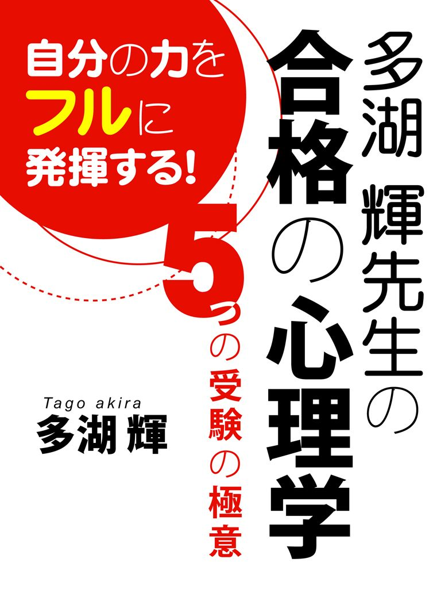
多湖 輝先生の合格の心理学
多湖 輝
１章
心のコントロールが、合否の切り札
――百万人の先輩が実証した、〝多湖流受験作戦〟の威力
「受かる」と思っていた人が合格する
東大をはじめ難関大学に合格した学生に、「受験するときに自信があったか」と聞くと、「それほど自信はなかったけれど、なんとなく〝受かる〟と思っていた」という答えが多く返ってくる。「受かりっこないと思っていたが、まぐれで受かった」というものはひじょうに少ない。「あいつが受かったのは奇跡だ」と周囲を驚かせた学生でも、本人は「いいセンをいきそうな気がしていた」という。
それとは逆に、私の知っているある受験生は、実力的には予備校でも「合格間違いなし」と太鼓判を押されていたのに、目標の難関大学はおろか、もっと難易度の低い大学にさえ合格できなかった。話を聞くと、「自分は落ちるかもしれない」という不安にとらわれていたという。
要するに、「受かる」と思っていた受験生が実際に受かり、「落ちる」と思っていた受験生は、ほんとうに落ちているのだ。というと、合格した学生なら「受かりそうな気がしていた」と言ってもおかしくないが、落ちた学生が「受かる自信があった」などと言うのはカッコウが悪い、という心理が働いた結果、答えがこのように分かれたのだと解釈する人もいるかもしれない。しかし、私はそうとばかりは思わない。心理学的に見ても、また私の体験から言っても、事前に「受かる」と思っていた受験生が受かり、「落ちる」と思っていた受験生が落ちるのは、十分にうなずけることだからである。
百万人の先輩たちも、この方法で成功した
私はこれまで、著作活動、講演活動などを通じて、多くの受験生に接してきた。最近では、通信教育で受験勉強の指導をする〈受験勉強指導塾アテネ〉の名誉塾長もつとめている。もちろん、直接会って話をした人の数は限られてくるが、本の著者と読者という形では、何百万人になるか、ちょっと見当がつかないほどである。お手紙もたくさんいただいたし、思わぬところで「先生の本を読んだおかげで、合格できたようなものです」と声をかけられることがよくある。
そうした体験から言えることが二つある。
一つは、能力・実力が十分にありながら、自分に自信が持てず、不安や悩みにとらわれて苦しんでいる受験生がじつに多いということである。もう一つは、ちょっとしたきっかけで自分に自信を植えつけることができた人は、苦しいはずの受験勉強にも前向きに取り組むことができるようになり、かならずいい結果を出しているということだ。
私のところにいただいた手紙の中にも、「先生の本を読んでいたら、やる気がわいてきて、集中力もついてきた。これまでは、志望校に受かるのは無理だと思っていましたが、この調子で志望校突破までがんばります」とか、「先生の本に書いてあったことを実行したら、試験場でも落ち着いて問題に取り組むことができ、ボクよりできる友だちが落ちてしまったのに、ボクは合格できました」などという〝うれしい報告〟が数多くある。
これは、私の本がきっかけとなって、読者の心の持ち方が変わった結果だろうと、私は思っている。
つまり、それまでは不安や悩みにとらわれて、やる気や集中力も出なかったのが、「がんばってみよう」という方向に心が向くと、やる気や集中力も出てくるようになる。それが「やれば自分にもできるんだ」という自信に結びつき、どんどん相乗効果でいい方向に向かっていく、という図式である。
スポーツの世界でも、自信を失い、成績不振の泥沼にはまってしまった選手が、ちょっとしたきっかけで自信を取りもどすと、それまでの不振がウソのように活躍する、ということが珍しくない。
「受かる」と思うか、「落ちる」と思うか。なんの根拠もない〝思い込み〟のようだが、この思い込みのちがい、つまり心の持ち方のちがいは、その人の能力や実力を引き出すうえで、天と地ほどの大きなちがいがあるのである。
思い込み方しだいで、体の生理機能まで変わってくる
いま、思い込みのちがいと言ったが、この思い込みが人間の心身に与える影響は、キミたちが想像する以上に大きいのである。心理学でいう「暗示効果」である。
たとえば、昔から知られていたものに、「プラシボー（偽薬）効果」と呼ばれるものがある。これは、「よく効くクスリだ」と思って飲むと、それがただのメリケン粉であっても、ほんとうに腹痛や頭痛が治ってしまう、というものだ。逆に、ほんとうに効くクスリでも、「こんなものが効くのだろうか」と疑って飲むと、効き目が下がってしまうのである。
あるいは、サバのじんましんでひどい目にあった体験のある人に、「今、食べたもののなかにじつはサバがはいっていたんだ」と言うと、それまでなんでもなかったのが、みるみるじんましんが出てきたりする。実際には、その料理にはサバが使われていなくても、「サバを食べた」と思い込んだだけで、サバを食べたときと同じ症状が出てくるのだ。
このように、効き目のあるクスリかどうか、サバを食べたかどうか、という事実よりも、なんの根拠もない思い込みのほうが、体の調子を変えてしまうのだ。
この思い込みの力をガンの治療にも応用しようという研究も、最近では進められている。また、クヨクヨして否定的な気分でいるときは免疫力が低下し、明るい肯定的な気分でいるときは、免疫力も高まるということも明らかになってきた。クヨクヨしていると、体の抵抗力が落ちて、病気になりやすいというわけである。
だから、実力が同じような受験生が競いあう受験のときに、心の持ち方が合否を分けてしまうことは、不思議でもなんでもない。「落ちるかもしれない」と、心が不安でマイナスな状態になっていると、頭も体も十分に働かず、日ごろの実力を発揮できずに終わり、ほんとうに「落ちる」可能性が高くなるわけだ。逆に、「合格する」と心がプラスの方向に向かっていれば、頭の調子までよくなって、いわゆるサエた状態にもなりやすいのである。
合格の決め手は、心のコントロールにあり
このように考えれば、受験のときに「落ちるかもしれない」と考えるのは損だ、ということがキミたちにもわかるだろう。しかし、「だからといって、〝受かる〟と思えるほどの自信もない」と言う人がいるかもしれないが、そんなふうに思っていると、ますます「落ちるかもしれない」という考え方が強くなるだけだ。
実際の受験を見るとわかるように、どこの大学でも、合否を分けるのは一～二点の差である。受かる人も落ちる人も、実力の差などないと言っていい。だから、よほど実力が不足しているという逆の自信でもないかぎり、「自分は受かる」と思っていていいのである。
人間の心というのは不思議なもので、いったん「うまくいく」と思うと、極端な話、見るもの聞くものすべてが自分にとってプラスに思えてくるし、逆に「まずくいく」と思うと、同じことを見たり聞いたりしても、マイナスの面しか見えなくなってくるのである。
この本で私が受験生のキミたちに伝えたいのは、いかに自分の心をプラスにもっていくか、ということである。言い換えれば、いかに自分にプラスの自己暗示をかけるか、ということだ。それには、べつにむずかしいことは何もない。ふだんの行動をちょっと変えたり、勉強のやり方を変えたりするだけでいいのだ。
とくに最近では、受験情報があふれ、みんなが予備校や塾で受験テクニックを磨くようになっているから、勉強の面ではなかなか差がつきにくい。こうしたなかで、受験競争を勝ち抜くには、心のコントロールが決め手になってくるのである。
大学受験という大きなカベをまえにして、不安やアセリなどを感じない受験生はいない。そうした不安やアセリにどう対処するか。自分の心をどうコントロールするか。それが、長丁場の受験勉強を乗り越え、本番でも自信をもってのぞむことにつながってくるのである。
受験生の心の持ち方を書いたこの本を『合格の心理学』と名づけたのも、ここに理由がある。
絶体絶命のピンチでも、その気になればかならず乗り越えられる
受験生として、一年間勉強を続けるというのは、考えてみるとたいへんな〝仕事〟である。どんなに勉強が好きな人でも、「勉強という字を見るだけでもイヤだ」という気分になることもあるだろうし、「もし落ちたら」というアセリや不安でいてもたってもいられなくなることもあるだろう。
こうしたときに注意したいのが、「どうせ自分はこんなものなのだ」と思ったり、「やはり志望校レベルを落とそうか」などとは考えない、ということだ。というのも、このように考えると、自分にマイナスの暗示をかけてしまうことになるからだ。つまり「自分はダメなのだ」という思い込みを、わざわざつくっているようなものなのである。それでは、やる気や意欲も出てこないし、自分の実力を引き出せないまま、ほんとうに「そんな程度」で終わってしまう危険性が高い。
じつを言うと、最近の受験生を見ていると、この「そんな程度」で終わらせてしまい、そのために苦しんでいる人がけっして少なくないことに、私は心をいためている。こういう人たちも、心のコントロール法さえ知れば、受験だけでなく、その後の人生ももっと大きく開けてくるはずだ。
この本では、「自信のつけ方」「緊張・不安の解消法」「集中力のつけ方」「やる気の出し方・気合いの入れ方」などの心理テクニックを紹介したが、ここにある方法を活用してもらえれば、かならず役に立つはずだ。
入試の試験会場で「もうダメだ」と思えるようなピンチのときや、絶望に陥ったようなときでも、かならずそれを乗り越える方法があるのである。
実行してみることで、自信もどんどんついてくる
最後に、この本の生かし方についてふれておこう。
この本では受験生のキミたちにすぐ実行できて、しかもかならず効果の上がることをあげたつもりだ。だから、もし読んでいて、「これは役にたちそうだ」と感じる項目があったら、すぐに実行してみてほしい。最初は、バカバカしく思えることもあるかもしれない。しかし、実行しているうちに、その効果が感じられるようになるはずだ。
じつを言うと、この「実行」を「くり返す」というのが、何よりもだいじなことなのである。とくに、暗示の効果、つまり思い込みの力というのは、何回もくり返すことによって、より強化されるものだからである。頭ではどんなにいい方法だとわかっていても、それを実行しないと意味がないように、いい方法も、くり返しているうちに、その効果はますます高まっていくのである。
「最後まであきらめない人が勝つ」とは、受験ではよく言われることだが、心理学でも、まさにそのとおりなのである。というのも、一瞬でもあきらめの気持ちが心の中にはいりこんでくると、人間の頭は、そこで一種の〝思考停止状態〟になってしまうからである。つまり、「もういいや」「これ以上努力してもムダだ」という気持ちが働くと、その人の能力はそこでストップしてしまう、といえるのである。これは、ほんとうにもったいない話である。
「火事場のバカ力」という言葉がある。いざというとき、人間は意外な力が出せる、というわけだが、実際の話、人間の能力というのは、自分で思っている以上のものがあるのである。問題は、その能力をどこまで引き出せるかどうかなのだ。「最後まであきらめない人が勝つ」というのも、心をコントロールして自分の能力を最大限に発揮できる状態にもっていった人が勝つ、ということにほかならない。
受験生諸君、「合格の心理学」で上手に自分の心をコントロールし、ぜひ、合格の栄冠を手にしてほしい。そのためにも、最後に、二つの言葉をキミたちに贈ろう。
＊ほんとうにダメになるのは、自分が「ダメだ」と認めたときである
＊「できる」と思うことが、成功の第一歩である。
２章
自信をつける合格の心理学
――やる気がどんどん出て、頭の回転が二倍よくなる
「受かる！」という自信をつけるには、なんでもいいから得意科目をひとつつくっておけ
キミがもし、「受験なんて、頭のよしあしで決まってしまう」「いまからやってももう間に合わない」と思っているのなら、まずはその考えを頭から捨て去ってほしい。受験は、勉強の実力だけで決まるものではない。「きっと受かる」「きっと伸びる」と自分に自信をもてる人こそ、本番でもてる実力を十二分に発揮できるのだ。
実際、私が知っている、こんな受験生がいた。一冊の歴史の本がきっかけで、日本史に興味をもった。ある日学校のテストで、一〇〇点をとってしまった。「自分でもテストで一〇〇点がとれるんだ」と驚くと同時に、さらに日本史に対する興味が深まり、とうとう日本史を超得意科目にしてしまった。ところがその自信は、他の科目にまで広がり、自分もまわりも「まさか」と思うような大学に合格してしまったのだ。
このように、一つ自信のあるものをもっていると、他のことにもその自信が波及することを、心理学では「自信の拡大効果」と呼ぶ。得意科目がひとつでもあると、その自信が他の不得意科目にも拡大して、「きっとやればできる」という前向きな姿勢を生む。「嫌だ」「ダメだ」と思いながら勉強しているのと、「きっとだいじょうぶ」と前向きに挑むのでは、出発点での成績が同じでも、結果は天と地ほどちがってくる。
まずはひとつ、「これなら自信がある！」という科目をつくることだ。すこしでも興味のある科目、まぐれでも過去にいい点をとった科目、好きな科目など、なんでもいいのである。その科目が、キミを支える秘密兵器になってくれる。
短時間でも毎日やることが、実力と自信をつける〝一石二鳥の勉強法〟
学校の定期試験の一夜漬けは、だれでも経験があるだろう。せっぱつまれば、ふだん勉強の習慣がついていなくても、一日十時間くらいの詰め込み勉強は案外できるものである。
こういった経験があるからか、勉強の習慣をきちんとつけないまま、気が向いたときだけ集中的に勉強している受験生か多いのには驚かされる。いや、そういった勉強こそ、受験勉強だとカン違いしているのではないだろうか。じつはこんなやり方をしていては、ほんとうの実力はつかない。
人間が物事を記憶したり把握したりする効率というのは、けっして絶対時間だけで決まるわけではない。時間のとり方がたいへん重要になってくるのだ。
たとえば、つぎのような実験記録がある。ある作業の効率アップのトレーニングで、絶対時間は同じ二十時間にして、二通りの方法が行なわれた。片一方は、一日十時間を二日でトレーニングする。もう一方は一日二時間にして、毎日トレーニングした。その結果、一日十時間のほうは、一回の作業時間が八〇分になったのに対して、一日二時間のほうは、五〇分に短縮された。トレーニングにかけた絶対時間は同じなのに、長時間まとめてやるか、短時間毎日やるかの差は歴然とあらわれたのである。
受験勉強もまったく同じだ。人間、食い貯めができないように、いっぺんに頭に詰め込むこともできないのだ。「今日は一日十時間やって、英単語をしっかり頭に入れてしまおう」という気持ちはわかるが、じつはこんな効率の悪い勉強法はないのだ。もうおわかりのように、一週間に一日十時間しかやらないのなら、それを十回に分けて、一日一時間を十日とったほうが、断然勉強の効果は上がるのである。
とくに受験直前になってくると、アセリや不安からムリな勉強法をはじめる受験生がふえるが、それがキミの自信を失わせる原因になっているともかぎらないのだ。「こんなにやっているのに、成績が上がらない」「私はほんとうに頭が悪いのでは」などと自信をなくしているキミ、ちょっと日々の勉強をふり返ってみてほしい。
実力を一二〇八－セント引き出す〝得意活用法〟
＊自信をつけるキーワード「自分には、人に負けないものがある」
人は、自信を持っているときに、いちばん実力を発揮できる。これは、スポーツ選手などを見てもよくわかる。自信があるときは、どんどんいいプレーが出たり、いい記録が出るのに、ちょっとしたきっかけで自信を失うと、成績不振の泥沼にあえぐことになる。
受験でも、自信を持てるかどうかが、日ごろの勉強や本番で大きくモノを言ってくる。もちろん、「自信を持とう」と思うだけでは、自信は生まれてこない。やはり、何らかの根拠が必要だ。ただし、その根拠はなにも勉強の実績とはかぎらない。
心理学では、〝自信の移転の法則〟というのがある。何か一つのことに自信を持つと、別なことでも自信が出てくる、というものだ。だから、まずは趣味でもスポーツでもなんでもいい、「これだけは人に負けない」というものを持つことをおすすめする。一つでも自信を持てるものがあると、他の受験生に圧倒されたり、引け目を感じることもなくなってくるはずだ。それをバネに勉強していけば、やがてはホンモノの受験への自信になってくる。
＊自信をつけるキーワード「これができたんだから、他もできるはずだ」
自信のある人でも、模試の成績が悪かったとか、むずかしい問題でつまずいたなど、ちょっとしたきっかけで、自信を失ってしまうことがある。そうしたときの最良の処方箋は、「絶対にできること」をいくつもやってみることだ。たとえば、以前に何度も解いた基本問題や、一学年下の問題など、間違えるはずのない問題をいくつもやってみる。スラスラ解いているうちに、だんだん気分も晴れてくるはずだ。
これは「問題が解けた」ことによって、〝成功体験〟を味わえるからだ。もともとほんとうの自信というのは、〝成功体験〟に裏打ちされて出てくるものだ。もちろん、その〝成功体験〟は、はなばなしいものである必要はない。たとえ小さなこと、やさしいことでも、それをやって「うまくいった」という〝成功体験〟は、自信につながるからである。
だから、やさしい問題をやって〝小さな成功体験〟を積み重ねていくと、「自分もやればできるんだ」と、だんだん自信も回復してくる。そうなったら、もうしめたものだ。自信を失ってしぼんでいたやる気も、ふたたびぐんぐんわいてくるようになるだらう。
とにかく、自信を失ったときは、「もっとむずかしい問題をやらねば」とか「こんなやさしい問題をやっていたら、人より遅れるだけだ」などというアセリは禁物だ。遠回りのようでも、やさしい問題をやることで、〝小さな成功〟を積み重ねるのがいちばんなのである。
入試本番の際にも、この心理作用を活用しよう。つまり、テストはかならず簡単な問題から手をつけるということだ。最初にいくつかの問題を、自信を持って答えられれば、それは立派な〝成功体験〟になる。その心理的余裕ができたところで難問にあたれば、解決への思わぬひらめきも出てくるだろう。
＊自信をつけるキーワード「自分は今うまくいっている」
毎日の勉強を、どうすれば効率よくこなせるか。受験生ならだれでも考えることだが、よく言われるように、これには集中力をいかに高めるかが大きくかかわってくる。うまく集中できれば、短い時間でも、密度の濃い勉強ができるわけだ。
この集中力を高める方法として、勉強のスタートのときに、ちょっとした工夫がある。それは、得意なこと、簡単にできることから、その日の勉強をスタートさせるということだ。
たとえば漢字の書き取り、計算練習などなんでもいい。スラスラとできるようなものがいい。これで、その日の勉強を快調にスタートさせるわけだ。
この方法は、先の「やればできるんだ」という自信回復法の応用だが、はじまりがスムーズにいくと、その勢いにのって集中もしやすいし、頭の働きもよくなってくる。それに対して、はじめからむずかしい問題に取り組んでつまずいてしまうと、「自分はダメなのか」などというよけいな〝雑念〟もわいてきて集中しにくく、結局、ダラダラ勉強するだけに終わってしまいやすいのだ。
〝受験パワー〟を育てるために、ふだんから自分の足で歩け
受験に勝つには、健康な心と健康な体は不可欠のものである。どちらか片方がバランスを崩すと、かならずもう片方に影響を与える。これを逆に考えれば、強い体をもっておけば、心も強くなるということだ。
そのために、ふだんから、自分の体を使う訓練をしておくといい。といっても、何もスポーツクラブに入会して、毎日筋肉トレーニングをしろとか、毎日二十キロマラソンしろとか、むずかしいことをいうつもりはない。もっと簡単なことで十分である。たとえば、ふだんエスカレーターやエレベーターを使っているのをやめて、自分の足で昇る習慣をつけるとか、ちょっと早足で歩くクセをつけるといったことでいい。もちろん、朝ジョギングをしてみるとか、腕立て伏せをしてみるといったことでもいい。ふだんの生活のなかでできることを、自分なりに見つけていけばいいのだ。
適度に体を動かすことは、勉強に疲れた頭をリフレッシュさせ、新たな活力を生み出す。こうしたことが習慣になれば、受験勉強をするうえでもっともたいせつな〝パワー〟を生み出すのだ。
つまり、いつも低空飛行していて、受験直前になっていきなり飛行高度を上げようとしても、それはムリな話なのだ。高く飛ぶには、高く飛ぶための準備が必要なのである。体を鍛えておけば、心も強くなる。少々の落ち込みにはビクともしない〝受験パワー〟が身につくのだ。
受験勉強で鍛えるのは、頭だけではないということを忘れないようにしよう。
●合格への自信をより確かにしてくれる〝イメージ・トレーニング法〟
志望校合格を逃してしまう受験生の多くは、「受かったときの自分」より、「落ちてしまった自分」をイメージしやすい傾向にあることが、これまで多くの受験生に接してきた経験からもわかる。「ダメな自分」をイメージをしてしまうと、そのイメージは頭に焼きつき、実際の行動からやる気や自信を奪ってしまう。逆に「受かる自分」をイメージすれば、気持ちも前向きになりやる気も起こる。それだけ、イメージのもつ力が大きいということだ。
人間心理のこういう特性を利用したのが、〝イメージ・トレーニング〟と呼ばれるものである。とくにスポーツの世界では、メンタルトレーニングのひとつとして、最近積極的に取り入れられている。
この方法は、できるだけ具体的に本番をイメージし、イメージの中で成功の疑似体験をしておく。本番は一度〝体験〟したことをくり返すだけという心理的安心感が得られ、実力を一二〇パーセント発揮しやすくなる。サラエボオリンピックで惨敗したスピードスケートの黒岩彰選手が、四年後のカルガリーでみごと銅メダルを勝ち取った背景に、こうした。〝イメージ・トレーニング〟の大きな力があったのだ。
〝イメージ・トレーニング〟はもちろん受験にも応用できる。とりわけ直前期の不安や本番での緊張をやわらげ、不安を自信に変える効果が期待できる。たとえば直前期に不安が頭をもたげてきたら、合格発表で自分の名まえを見た瞬間の光景とか、親の喜ぶ顔などを思い浮かべたり、合格後の楽しい生活を思い描いて、プラスの〝イメージ・トレーニング〟をしていく。あるいは本番当日、忘れ物を確認して、家を出て電車に乗り、試験会場へ向かう。受験票と机の番号を確認し、心静かに問題用紙が配られるのを待つ自分、といったイメージをくり返し行なっておくと、当日は、そのイメージをくり返すだけなのだから、余裕をもって試験に臨めるのだ。
スランプに陥ったときは、参考書やノートなど〝過去の実績〟を目の前に積み上げてみろ
受験勉強中、だれにもスランプ状態はおとずれると思っていいだろう。参考書を開くと圧迫を感じ、問題を解いても以前と似たような間違いをくり返していると落ち込む。そして、どんどん自分に自信がもてなくなってしまう。
あるバドミントンの選手が、以前こんなことを言っていた。ネットの高さは同じ一五〇センチなのに、スランプ状態のときは、それがとてつもなく高く見え、みんなネットにひっかけてしまいそうに思えて、ショットそのものがおかしくなるのだそうだ。受験生のスランプと同じ心理状態だといえるだろう。
心理学では、スランプはプラトー（高原現象）ともいわれ、ある作業がいきづまって〝横ばい〟になった状態をさす。しかしこの〝横ばい状態〟は、つぎの大きな飛躍のための準備段階と考えられている。つまり、スランプがなければ、苦しみもないかわりに進歩もないということなのだ。
このスランプを早く脱し、自信を回復させて、勉強に集中するいい方法が、〝過去の実績を実感〟してみることだ。あるアメリカ有数の出版社編集長のこんな記事を読んだことがある。時間を浪費せず、能率的に仕事をするために、手紙の束や読まなければならない書類、原稿などは、見えないところに積んでおく。そして処理したものは自分の目の前のよく見える場所に積んでいく。これはうまい方法だ。未処理の山だけを見ていると精神的にまいってしまうが、処理したものの山が見えるようにしておくと、自分がどのくらい仕事をこなしたのか一目でわかるから、ある種の快感を覚えながら仕事ができる。つまり過去の実績が目に見える報酬となり、自分自身へのはげましになるのである。
勉強も同じだ。たとえスランプ状態といっても、こなしてきた参考書や問題集、単語帳などを目の前に積み上げてみれば、その重みが実感できるはずだ。その重みこそ、自分がやってきたことへの自信、いまの停滞がつぎへのステップになっているのだと実感させてくれる。そう思えた瞬間に、スランプから脱出しているのだ。
合格心理学（１）これが、自信を回復させるキーワードだ
〈マイナスのキーワード〉
「苦手科目なんか、いくらやったって伸びないに決まっている」
・勉強に対する自信がなくなると、つい自分のマイナス面ばかりを見てしまいがちだ。「ダメだ」と思ったとき、つい口にするこんな言葉が、じつはキミに自信喪失の暗示をかけているのだ。」
↓
〈合格のキーワード〉
『私は英語には自信がある』
・「私はかならず成功する」
・「私はデキる」
勉強の不安を一掃するには、〝最高得点〟をとった過去のテストをながめてみろ
人間は「感情動物」だ。それこそ、気分によって「自信満々」になったり「気弱」になったりする。だが、受験に勝つには、感情や気持ちの浮き沈みを「こういうこともある。しかたない」と放っておくわけにはいかない。そんなのんきなことを言っているあいだに、キミのライバルたちはバリバリと勉強し、どんどん実力を上げ、合格へと近づいているかもしれないのだ。
「どうもダメだ」と勉強のスランプに陥ったときの脱出法として、前項では、〝過去の実績を実感する〟ことをあげたが、もうひとつ有効な方法がある。それは、〝自分に対する過去のいい評価〟を再確認してみることだ。
受験生の場合もっともてっとり早いのは、テストの成績だろう。学校のテストでも、模試の結果でもいい。自分がそれまででいちばんいい結果を出したテストを見てみるだけで、「そうか、自分だってこんないい成績を残しているんだ」「やればきっともっとできるようになる」と、プラスの暗示をかけることができるようになる。
そして、テストをながめながら、どうしてこんな点がとれたのか、あのときの勉強法は、やる気はどうだったか、解答が返ってきたときの気分は......。すべてがうまくいっていたときの感情を思い出してみるのだ。
そういうテストがいくつもあれば、すべてのときに共通していた感覚が思い出されて、自信も復活する。テストでなくてもかまわない。表彰された絵や作文、習字、工作物、何でもいい。
とにかく、今の自分に自信がもてなくなったら、過去の評価を掘り起こしてみることだ。どんなものにしろ、他人がキミに下した評価なのだから、おおいに自信をもっていいのだ。その評価を見ているうちに、「何をくよくよしているんだ。しっかりしろ！」という、過去の自分からの声が聞こえてくれば、キミはもう大丈夫だ。「自分」という、何よりも強い味方がいることに早く気づいて、かけがえのない目標に向かって、また歩み出していける。
３章
緊張を解く合格の心理学
――ドキドキを味方につければ、本番で実力は一二〇パーセント発揮できる
試験場の空気に負けそうになったら、心の中で〝お気に入りの歌〟を歌ってみろ
スポーツ中継を見ていると、人それぞれ緊張した心理状態が見てとれておもしろい。たとえばオリックスのイチロー選手などは、緊張を表に出さないように、ひょうひょうとした態度を貫こうとするし、ジャンボ尾崎選手は、緊張が高まれば高まるほど、それを表に出してしまい、自分を励ますように大ゲサな動作で観客を巻き込み、リズムをつくっていく。いつも勝負の場にある人は、自分がどうすれば緊張に負けないで力を発揮できるのか、自然に身につけているようだ。
ところが入試は、おそらく受験生が生まれて以来最大の緊張状態を強いられているのだから、なかなかうまく対処することができないだろう。試験開始のベルが鳴る数分まえになると、会場は物音ひとつせず、せきばらいの声にも思わずぎくりとするくらいピーンと張りつめている。こんな状態はそれまで経験したことがないから、この空気のとりこになって緊張に押しつぶされてしまう受験生も当然出てくる。
張りつめた空気に負けそうになったとき、心を落ち着ける効果があるのが、心の中で歌をうたうことだ。私の知人に、何か緊張すると自分の心を鼓舞するために「軍艦マーチ」を歌うという男がいた。「守るも攻めるもクロガネの......」と歌うと不思議と元気が出てくるという。
リズミカルな音楽には、人の心に活気や自信を与える作用があり、人間は、活発な心理状態になったときには、内分泌などの活動が促進され、目標達成のための意欲なども前向きになってくるのだ。昔、マラソン選手だった増田明美さんが、マラソン会場につくまで、石川さゆりの〝ド演歌〟をカセットで何十回もくり返し聴いて、自分を励ましていたというのは有名な話だ。
試験会場でウォークマンを聴くわけにはいかないだろうから、何か自分が気に入っている歌を一つ、自分のテーマ曲に決めて、緊張を感じたら心の中で歌うといい。シルベスタ・スタローンがロッキーのテーマ曲にのって登場してくるような気分になって、「よし、やるぞ」と気合いもはいるだろう。
受験本番は、腕組み、足組みの姿勢で〝心理武装〟
失敗の許されない受験本番では、まずなによりもふだんどおりのリラックスした気持ち、つまり〝平常心〟を保つことがたいせつである。非日常的な緊張感に包まれた試験場で、冷静な判断を下すことのできる心の余裕さえあれば、もう勝負はもらったも同然だ。しかし難問に出くわしたときや、隣の受験生のスムーズな鉛筆の音に不安を呼び起こされたようなときには、やはりどうしても落ち着いてはいられないだろう。動揺のあまり、集中力も衰えてしまうにちがいない。
そんなとき、心理的な安心感を取り戻すためには、腕組みや足組みをしてみるとよい。将棋や囲碁の対局者がピンチに追い詰められたとき、よく腕組みをしている姿を見たことがないだろうか。人間というものは、なにか危機や難関に直面すると無意識のうちに腕を組んだり足を組んだりすることがひじょうに多いものなのだ。
この姿勢は心理学ではボディ・ランゲージ（身体言語）といい、相手とのあいだに障壁をつくり自分の身の安全を守ろうとする「防衛姿勢」のひとつと考えられている。したがってとくに具体的な危険や威嚇を感じていないときでも、こうした姿勢をとることは心に一種の安堵感や安定感を与える。
苦手な相手と話をしなければならないとき気がつくと腕祖みをしているのは、じつはこんな心理的なメカニズムが働いているのだ。
試験場でおじ気づいてしまいそうになったときなどは、ちょっと腕組みや足組みをして自分の心を「守る」のも冷静さを保つひとつの方法なのである。
◎緊張を自信に変える〝逆転思考暗示術〟
＊緊張を解くキーワード「大学が自分を選ぶのではなく、自分が大学を選ぶのだ」
受験直前になると、だれでも不安になってくる。自分の実力に自信のある人でも、「もし、本番で取り返しのつかない失敗をしてしまったら」という不安に襲われる。
人間はだれでも、何かはじめてのことや大きな目標にチャレンジする場合、不安を感じる。この不安は、感じないほうがむしろおかしいのであって、目標に向かって努力していれば、当然の心の動きとして出てくるものなのだ。問題は、こうした不安にうまく対処できないと、不安が心を支配してしまい、勉強に手がつかなくなったり、自信をどんどん失ってしまう恐れがあるということだ。
この不安対策として有効な方法の一つは、主客を逆転するという〝逆転思考法〟だ。たとえば、ふだんは人をペコペコさせてふんぞり返っている大物の政治家も、自分の地元に帰ると、おじいちゃん、おばあちゃんたちにまで愛想よくペコペコする。おじいちゃん、おばあちゃんたちも、それを当然のこととして受けとめる。「自分たちが選んでやっているんだ」という意識があるからだ。このように、ちょっと立場が入れ替わると、人の意識はガラッと変わってくる。この心理を応用したのが、ここで紹介する逆転思考法である。
それには、入試を控えて不安になったら、「大学が自分を選ぶのではなく、自分が大学を選ぶのだ」と考えてみよう。要するに、不安になるのは、「大学が自分を落とすのではないか」と思うからだ。このように、相手が自分を落とすと考えているかぎり、心理的に受け身になり、劣勢になるのも当然だろう。
この受け身の立場を逆転するのが、「自分が大学を落とすのだ」という、主語の入れ替えだ。ちょっとしたことだが、これで心理的劣勢からくる不安も退治できるのだ。
私が塾長をつとめるアテネの指導者であり、『偏差値25から東大へ』を書いた鈴木友康さんは、合格をはたした年の受験のとき、「これでオレを落としたら、大学が間違っている」と思ったそうだ。まさに、ここでいう逆転思考法である。
また、合格できるかどうかだけを意識していると、どうしても精神的に追い詰められた状態になりやすい。この状態は、アセリやアガリ、不安などを生む原因でもある。そこで、「たとえ合格したって、はいってやるものか」と、一度、合否から離れて考えてみると、心理的にラクになり、よけいな不安やアセリを遠ざけることもできる。
＊緊張を解くキーワード「自分が試験官を雇っているのだ」
この逆転思考法は、受験本番での不安退治にも応用できる。たとえば、試験場で落ち着かないとき、試験官を見て、「あいつらは、自分が出した受験料で雇われているんだ」と考えてみる。つまり、試験官は、試験場にいる受験生たちを監視する、自分より上の人間ではなく、自分が雇った人間、つまり自分より下の人間にすぎない、と逆耘させるわけだ。あるいは、試験問題を開くとき、「歯の立たない問題があったらどうしよう」ではなく、「問題のアラ探しをしてみよう」と問題を見ていく。
自分のほうが相手より上だ、自分のほうが主導権を握っているのだ、という状況では、人はだれでも自信をもつことができる。人がふだん以上の実力を発揮できるのは、じつはこんなときなのである。
＊緊張を解くキーワード「どれくらい起きていられるか試してみよう」
不眠症を訴える人に私がよくすすめるのは、「眠れないのなら、どれくらい眠らないでいられるか試してみてはどうですか」ということだ。不眠は、眠ろう眠ろうと焦る気持ちから起こっている、といっても言いすぎではない。そこで「眠らなくてもいいじゃないか」と思考を逆転してみよう、というわけだ。
また、「睡眠不足だと、頭がボーッとする」という人がいるが、これは「睡眠不足だから、頭がボーッとするのだ」と、自分自身に暗示をかけた結果である。実際、研究者のなかには、研究に熱中して夜もろくろく寝ず、実験や論文の執筆に打ち込む人がいる。彼らは、実験や執筆しか頭にないから、一日や二日寝なくても、睡眠不足かどうかなど問題にならないのである。
だから、試験の前日、よく眠れなくてもそう心配することはない。「今日はがんばるんだ」という気合いが、少々の眠気など吹き飛ばしてくれるはずだ。
本番でのアガリ対策として、自分流の〝受験儀式〟をつくっておけ
たとえば、ふだんはものおじせず堂々としている人でも、結婚式のスピーチというだけで、アガってしまい、しどろもどろになってしまうことがある。当然言いたいことも相手に伝わらず、さんざんな結果に終わる。
受験生にも、やはりアガリやすい人とそうでない人がいる。それまでどんなに真面目に勉強していても、緊張感に負けてしまっては、八十点とれるものが五十、六十点となってしまうことにもなるわけで、これではせっかくの努力も水の泡と消えてしまう。だが、ちょっとした心理術で、受験本番のアガリもおさえることができるのだ。
私がアガリ対策にすすめているのが、〝受験儀式〟だ。就眠儀式という言葉があり、たとえば小さい子どもが、いつも抱いているネコの人形を抱くとスヤスヤと寝る。大人でも、寝るまえに明かりをすこし暗くして、軽い体操をすると寝つきがよくなったりと、ようするに寝るための心理的な自己暗示の方法のことである。それを受験に応用するのだ。
昔は一心に鉛筆を削れなどといわれていたが、これは効果はあっても他人に迷惑をかけるといけないので、何か別の方法を考えておくといい。
たとえば、メガネのレンズをきれいに磨き上げるとか、紙に自分の名まえを何十回も書いてみるとか、ハンカチをきれいに折りたたんでみるとかなど、何でもかまわない。
こうすれば落ち着くという自己暗示なのだから、自分流の儀式を考えて本番まえに自分のものにしておくといいだろう。
〈受験本番は〝豪華一点主義で〟〉
試験当日、緊張や不安を感じるのはだれでも同じ。これをどうはね返すかが合否を左右するとも言える。
ここでおすすめするのが、受験当日身につけていくもののなかで、ひとつだけ高価なものを選ぶ〝豪華一点主義〟である。高価な腕時計やカバン、カシミヤのマフラーなどなんでもいい。
つまり、立派なものを身につけることで、「そこらの受験生と、オレはちがうんだ」という自信をもてる。こんな心理武装をしていくだけで、試験に対しても強気で臨めるというわけだ。
試験場へお守りを持っていって、本番まえに握ってみろ
「困ったときの神頼み」という言葉がある。人は、いざ重大なことを起こすときには、神社にお参りしたり、お守り札を買ったりするものだ。これは受験生も例外ではないようだ。たとえば、東京の湯島天神は、毎年受験の季節になると受験生とその親が大勢、願を掛け、お守りを手に帰っていく。
私は、こうした神頼みは受験生にとって、おおいに心理的効果があるとにらんでいる。「お守りなんてバカにしていたけど、試験会場でカバンにぶら下げているライバルを見たとき、なんとなく自分よりも彼に運が向いてしまうような気がした」といっていた受験生がいた。お守りは神様を味方につけた〝証拠〟のようなものだ。持っているだけでも緊張が解けていくということが、ほんとうに起こるのだ。
だから、せっかく願掛けをしたのなら、幸運を呼ぶグッズを何かひとつ買っておいて、試験会場に持っていくといい。お守りでも、大吉のおみくじでもいいし、小さなお札でもいい。それを持って、受験本番に臨むのだ。
そのお守りを本番まえにそっと見てみるとか、試験会場に着くまで手の中で握っておくとかする。カバンの中に入れておくよりも、実際にお守りの存在を確認したほうが、心理的緊張は解けやすくなる。
いざというときに頼りになる、と信じられるものを見つけ、それを身につけることで、気分的に落ち着くだけでなく、キミの本来の実力が発揮できるパワーもあふれ出てくるのである。
〈受験本番の〝トイレ作戦〟〉
「これはむずかしい！」試験中にアセリはじめると、頭の中は〝不合格〟という言葉でいっぱい。パニックに陥るのも時間の問題だ。
こんな状態になったら、休み時間に体をおおいに動かして、泥沼にはまり込みそうな心をうまく切替えよう。
そこで利用したいのが、トイレだ。トイレの中なら、背伸びや首の運動など、まわりの目を気にせずできる。気分をリフレッシュすれば、「いまのぶんは、つぎの科目で挽回すればだいじょうぶ」と心も前向きになる。
使い慣れた鉛筆や消しゴムは、本番の緊張、孤独を退治する〝強い味方〟
「明日はいよいよ本番だ」と、真新しい鉛筆一色、消しゴム、筆箱などをそろえている受験生をよく見かけるが、それは、一人の味方も連れずに、敵陣へ乗り込むようなものだ。
試験会場で襲ってくる不安感の中で、もっとも大きなものは孤立感なのである。たとえ友人が同じ会場で受験していたとしても、休憩時間には話ができたとしても、試験中はまったくの孤独だ。しかも、その友人さえも、受験においては「敵」なのである。そんな孤独な不安を感じているときに、共通の思い出を語ってくれるのは、ともに苦しんできた鉛筆であり、消しゴムである。
筆箱の中には、自分がこれまで使い古したものを入れておくといい。筆記用具は、長い受験勉強を、ともに乗り切ってきた〝戦友〟のようなものだ。とくに消しゴムは、たいてい長持ちするので、さまざまな思い出が詰まっている。試験中に、使い古した消しゴムをじっと見つめていたら、急に気持ちが落ち着いて、ラクに解答できたという話も多いのだ。まっさらな筆記用具をそろえるのは、志望校に合格してからの楽しみにとっておけばいい。
受験本番では、いつも自分のそばにいた筆記用具を身につけて臨みたい。
さらに、受験勉強をともにした参考書や問題集、ノートなどを持っていくのも心を落ち着かせるいい方法だ。「これだけのことをやったのだから」という自信と、〝味方〟がついているのだという安心感が得られる。
●アガリ・緊張防止に役立つ〝指先運動法〟
昔から緊張を抑える方法として、手の平に人という字を三回書いて飲み込むというのがある。受験本番でアガってしまって、ワラをもつかむ思いでこの方法を実践する受験生もいるかもしれないが、もっと効果のある多湖式〝アガリ防止法〟をお教えしよう。
人間はもともと、精神の緊張状態を、体の部分を使ってやわらげようとする傾向がある。たとえば親や上司に怒られているときに、指で洋服のどこかをいじりつづけたりする、むずかしい交渉のときに、ずっとネクタイをさわっているのはその代表だ。体の末端部に神経を走らせることで、精神の緊張を和らげようとする本能的な行為なのだ。
逆にいえば、末端神経を剌激していれば、緊張でがんじがらめになってしまいそうな場面でも、平常心を保っていられるということになる。
そこで本番でアガってしまいそうなときは、このように意識的に手を使ってみるといい。指先の適度な運動が、心が緊張や不安に支配されるのを未然に防いでくれる。じつに即効性のある〝アガリ防止法〟なのである。
受験本番をもっと具体的にイメージして、アドバイスしていこう。たとえば、消しゴムでもいいし、鉛筆でもいい。自分の席に着いたら、筆箱の中の物を手でいじってみるのだ。
また、試験場に着くまでの時間も、有効に使える。ポケットの中にクルミを入れておくとか、小さなお守りを入れておくのもいい。何か手近な小物を手の中でいじり回しながら、試験場を目指して行くのだ。
アガリというのは、重大事をまえにしたときの心理的、生理的準備運動なのだから、ある程度あって当たりまえだ。だが、度が過ぎると受験本番という一発勝負をだいなしにしかねないので、緊張を適度なものにする有力なこの〝指先運動法〟を知っておいてほしい。
心の余裕を生み出す、試験場への〝一番乗り作戦〟
どんなに一生懸命に勉強を積んできても、いざ本番となって、まったく不安がない受験生などいない。「もし、自分の苦手なところばかりが出たらどうしよう」「ド忘れしたらどうしよう」と、不安は高まるばかりだ。
しかし、その不安感にとらわれている状態では、本来の実力を発揮することは望めない。そうした不安を断ち切ってこそ、受験の勝利者になれるのである。
試験の当日、もっともたいせつなことは、時間的な余裕をもつことで、気持ちにも徹底的に余裕をもたせることだ。試験会場には一番乗りをしよう。「なにも一番でなくても......」と思われるかもしれないが、じつは、この「一番」が、ひじょうにたいせつなのである。
試験場に着いたとき、たくさんの受験生がもうすでに着席して、参考書や単語カードをチェックしていたらどうだろう。「遅れをとった」と感じてしまうのが、人間の心理である。
逆に、あとにはいってきた受験生たちが、自分の姿を見てアセっていたら、それだけキミには精神的な余裕が生まれるだろう。
それを考えれば、おのずと「一番乗り」の意味がわかるだろう。自分よりも早く入室している受験生がいないのなら、全員が自分のあとからやってきて、自分の姿を見て「遅れをとった」と感じるわけだ。それだけ自分が優位に立っているということを自分に言い聞かせながら、余裕をもって最後のチェックをして、万全な臨戦態勢を整えよう。
〈試験場はかならず正門からはいる〉
受験当日、駅に着いて試験会場へ向かう。このとき、「正門だろうが、裏門だろうが、駅から近いほうがいい」と考えているなら、この時点で他の受験生に遅れをとってしまうことになる。
少々遠くても、正門から堂々とはいることで、「この大学の学生になってやる」「これから真剣勝負だ」という気合いもはいる。縁起かつぎだと思う人もいるだろうが、こんな〝正門主義〟こそ、じつは受験当日、めきめきと合格への熱意を湧かせ、実力を十分に発揮させる心理作戦になるのだ。
合格心理学（２）これが、緊張感を鎮めるキーワードだ
〈マイナスのキーワード〉
「本番で失敗したらどうしよう｣
・受験本番が近づくにつれて、受験生の緊張はピークに達する。直前数日間の過ごし方しだいで、合否が 決まるといっても過言ではない。自分のやってきたことに自信をもてれぱ、失敗のことなど頭から消えていく。
↓
〈合格のキーワード〉
『私は実力を発揮できる』
・「とても気持ちが落ち着いている」
・「今、とてもよい状態だ」
試験場にはいったら、いったんいちばん前に進んで他の受験生を見回してみよ
模試などでこういう経験があることと思う。会場にはいったとたん、たくさんの人間が自分を注目しているようでドキドキし、見知らぬ人間に囲まれていることを異常に意識し、冷静に問題を読んでいるつもりなのに、活字が目から頭の中にはいってこない、という状態に陥ってしまう。
いったんこうしたアガった状態になると、意識すればするほど萎縮してしまうことになる。こんな調子で本番の受験は大丈夫なのだろうかと、一度でもアガリを経験すると不安が増す。不安が増せば、ますます見知らぬ他人の視線が気になって仕方がない、という悪循環を引き起こす。
私も初めて講演をしたときにこんな状態だった。話したいことの半分も話せず、観衆の視線が気になって仕方がなかった。つぎのときからは、最初が勝負なのだと思い、まず観衆全体をゆっくりとながめ、あんな年の方も来ているとか、女性が多いななどと、気持ちを落ち着かせてから話し始めるようにした。そうしたら、思いのほか講演はうまくいくようになった。
受験でも同じである。最初に会場にはいったときが勝負だ。試験会場にはいったら、たとえ自分の席がいちばん後ろであっても、一度いちばん前まで歩いていく。そして他の受験生たちの様子を見回してみる。みなに見られているような気分がしていても、よく見てみると誰もキミに注目などしていないことがわかる。
これだけでも落ち着くが、さらに人のことを見ていると、ジッと目を閉じている人や、あきらかに緊張している様子の人、まだ参考書を読んだりしている人など、自分よりよほどみなのほうが緊張しているんだということがわかれば、もう何の心配もない。あとはゆっくりと席にもどって余裕をもって座っていればいい。
いちばん前のど真ん中に歩いていくほどの勇気はないという人なら、端っこのほうでもかまわない。とにかくまわりを見回してみるだけでも、結果はぜんぜんちがってくる。試験当日に限らず、模試のときからこれをやることをおすすめする。
◎大逆転成功をつかむ〝不安利用法〟
＊不安活用のキーワード「不安がないヤツは、努力もしない」
「不安」は「いやなもの」というイメージがあるが、じつは不安こそ、成功には不可欠な、重要な要素である。人は、不安があるからこそ「がんばらなければ...」と努力し、心に緊張感が持てるのだ。逆に、こうした不安がないと、緊張感も生まれないし、〝ここ一番〟という力も出てこないのである。
かつては、オリンピックでの日本人に対する評価と言えば、「本番に弱い」「プレッシャーに弱い」というのが定説だったが、最近の若い選手たちのなかには、そんな定説をくつがえすかのように、オリンピックだろうが世界選手権だろうが、のびのびと活躍する人が見られるようになってきた。「不安はないのですか」という質問に対して、「不安はもちろんあります。でもその不安を消そうとはしません。むしろ仲よくつきあって、楽しみながら練習してきました」と答えていた選手がいたが、彼は、そうすることで「本番も楽しめた」という。まさに、不安があるから成功するという見本だ。
不安は、だれにもあるものだ。要は、つきあい方しだいだ。キミも、「不安があるから、努力もするのだ」という気で、不安とつきあってみないか。
＊不安活用のキーワード「アガっているから、もうこれ以上アガることはない」
本番でアガってしまうことはだれにでもある。緊張すれば、だれでも多かれ少なかれ、アガった状態になるのが自然なのだ。アガリとは、「自分の実力を最大限に発揮しようとして、心身が準備している」状態だからである。
だから、このアガリで問題なのは、アガることを「よくない」ことだとカン違いすることだ。「アガってしまったから、もうダメだ」などと考えたら、その瞬間に、キミはもう精神的に負けていることになる。むしろ、キミに必要なのは、その緊張感をうまく利用するぐらいの気持ちになることだ。
さらに言えば、自分が「アガっている」と気がつくことは、自分をそれだけ客観視できているということで、我を失っている状態からは脱している。むしろ、落ち着きを取り戻しているときなのだ。アガリに気がついたとき、キミはエンジンが全開の状態だということを忘れないでほしい。
＊不安活用のキーワード「問題のむずかしさがわかるのも実力のうち」
難問にぶつかったときも考え方しだいで、「どうしよう」という不安は一掃できる。もし、「むずかしい」→「ダメだ」と考えれば、心はマイナス状態になり、不安にとらわれてしまうだけだろう。しかし、「むずかしい」→「それに気がついた自分も、なかなかの実力者だ」という考え方ができれば、かりにその問題が解けなくても、他の問題を着実に解いて、合格点をたたき出すことができるはずだ。
実際、ほんとうに実力がなく、何もわからない者であれば、その問題がむずかしいのかどうかは見分けがつかない。「むずかしいぞ」と思えたときほど、問題がよくわかっているということで、合格の可能性も高いのだ。
＊不安活用のキーワード「この失敗は、本番でかならず役に立つ」
ちょっと何か失敗をすると、それでもう「勉強してもダメだ」などと思い込み、自滅してしまう人は意外に多い。しかし、私に言わせれば、日常の失敗ほど貴重なものはない。
というのも、これは本番での失敗ではないからだ。練習中の失敗だ。練習中に失敗できたと言うことは、本番でそれを未然に防ぐ能力を授かった、ということでもある。そもそも、練習とは、そうした能力を身につけるために行なうものではないか。逆に、いつもうまくいっている人は、失敗に慣れていないだけに、本番のときのちょっとしたミスでも大きく動揺しやすい。
〝強い受験生〟になるためには、「失敗」→「ダメだ」ではなく、「失敗」→「よかった、これで本番で同じ失敗をしなくてすむ」なのだ。ふだんまったく目立たない成績をとっていた人が、とても不可能だと思われる難関校に合格したり、合格間違いなしとだれもが思っていた人が落ちたりすることがよくあるが、その理由はこういうところにある。キミは、前者と後者、どちらになりたいか、考えてみてほしい。
受験当日の緊張をやる気に変えるには、試験場で欠席者数を数えてみる
スポーツ心理学の分野でよくいわれることだが、緊張とやる気の関係は表裏一体のものだ。何事でもまったくやる気のない人に緊張などないし、適度な緊張がなければやる気は湧いてこないという関係にある。
要するに受験当日は、本気でその大学に合格したいと思っている人間はみな、緊張している。あとはその緊張感で金縛りにあってしまうか、緊張を適度なレベルにして〝やる気〟に変えられるかが勝負の分かれ目になるということだ。
紙一重の関係にあるということは、どんなささいなことでも、当日自分の気持ちを軽くさせてくれる要素が見つけられれば、緊張をやる気に変えられるということだ。簡単な方法がある。試験会場にはいったら、欠席者数を数えてみるのだ。
どんな大学でも、試験当日、志望者の欠席はかなりある。たいていの人は、複数受験をしているから、すでに合格が決まって受験をとりやめた人もいれば、体調を崩してしまってやむなく欠席という人もいる。
そこで、当日自分の席についたら、その空席の数を数え、たとえば百人中十四人欠席していたら、強敵が十四人も減ったと、心の中で喜んでいればいい。実際に競争率がそれだけ下がったことは間違いないのだ。
数をかぞえるという単純な行為をすることで、緊張のレベルを適度なものにする効果がある。試験会場でそんなことができることじたい、心に余裕が生まれた証拠なのである。緊張感にピリピリしながら単語帳をながめているよりも、ずっと効果的な心理作戦である。
〈見直しにもコツがある〉
試験の〝見直し〟をしていて、間違いを見つけたら、「いけない」とばかりにすぐに消して書き直しがちだ。しかし、ここに大きな落とし穴がある。
とくに数学の場合など、あわてて解答式を全部消してしまうと、結局まえと同じ解答をしていたり、重要なポイントを書き忘れたりということも起こりかねない。間違いの箇所がはっきりするまでは消さない、これが間違いを見つけたときの鉄則である。まえに書いた自分の答案を〝反面教師〟にすることで、グンと合格に近づくのである。
まわりの受験生のアラ探しをして、自分の心理状態を優位にもっていけ
いったん試験場にはいれば、どんなに熱心に勉強に打ち込んできた受験生でも、「自分よりも努力した人間はいない」などという自信は、なかなかもてるものではない。何度やってもとうとう苦手のまま残ってしまった部分、手がまわり切らずにやり残した部分などを抱えているのがふつうだ。
しかし緊張感みなぎる試験場では、「みんなも自分と同じ心境」「アガっているのは自分だけじゃない」とは、なかなか割り切れないものである。極度の緊張や不安が、他の受験生を実際よりも手ごわい相手のように思わせてしまう。そうなるともう、ただでさえ挫けがちになっている自信はますます萎縮してしまい、本来なら余裕で解けるはずの問題も、いままで出会ったことのない超難問のように見えてきてしまう。
そんなときにはまず、自分の周囲の受験生たちを冷静にじっくり観察してみるとよい。あるスポーツ選手は試合まえ、相手の選手の動作をじっと見つめていることで、敵のアラを探し、自分の心理状態を優位にもっていったという。
試験場もある意味では、勝者は敗者がはっきり別れるシビアな〝戦場〟であると言えるだろう。敵の様子を眺めていると、かならず「自分のほうが勝っているな」と思える部分が見つかるはずである。
たとえば、「なんだ、いまごろあんな参考書を見ているのか」とか、「さっきから二度も鼻をかんでいる。かわいそうにカゼじゃ、実力も発揮できないだろう」など、敵のアラを探し出すのだ。行動面に注目しているうちに、やがて敵の心理まで読めるようになる。そわそわして落ち着かない人や、空元気で妙にはしゃいでいる人が目にはいるようになる。
そのうえで、「ムリに平静を装っているな」とか「ずいぶん硬くなっているようだな」と、思えるようになれば、キミはまわりの受験生に対して心理的に優位に立てたも同然だ。「なんだ、みんなたいしたことないじゃないか」と、自信をもって問題用紙に向かっていけるようになる。
●アガリ解消に即効の〝深呼吸法〟
本番当日、家を出たときから緊張気味で、会場に着き教室にはいり、異様に静まり返り、張りつめた空気にふれたとたん、緊張感がピークに達して、いつもの自分ではなくなる。動作もどこかぎこちないが、どうにもコントロールできない......。
この高まった緊張レベルを適正なものにコントロールしなくては、とても実力を発揮することはできないが、試験会場ではベッドで横になってというようなリラクゼーション法はもちろん不可能だ。そこでごく簡単でしかも効果のある〝深呼吸法〟をおすすめする。
つまり、深く息を吸ったり吐いたりするだけなのだが、いくらかのコツがある。私が講演やテレビ出演するときも、気持ちを落ち着かせるために活用しているのが、丹田呼吸法だ。丹田とはヘソの下のあたりのことを指し、ここに力を入れると元気や勇気が出るといわれている場所だ。座禅の呼吸法の一種としてたいへん有名である。
丹田を意識しながら、深くお腹に息を吸い込んですこし息を止め、お腹に力を入れる。すこしたってからゆっくりと息を吐き出していく。わかりやすくいえば腹式呼吸だが、こうすると、自律神経の活動が正常になり、心臓の負担が軽くなり、落ち着いた状態になる。
スポーツ心理学の権威として有名な猪俣公宏氏も、同じことをすすめている。スポーツ選手も大きな試合になると、その場から逃げだしたいようなマイナスのプレッシャーを感じてガチガチになる。受験生と同じだ。このマイナスのプレッシャーを小さくする、手っ取り早いリラックス法がやはり深呼吸で、座禅のときと同じような腹式呼吸をすすめている。
この方法さえ知っておけば、試験場でアガってしまっても、すぐに自分をとり戻せる。模試で緊張してしまう人にも、ぜひすすめたい。
問題用紙を開く瞬間に、〝冷静な自分〟を取り戻すチャンスがある
人間だれでも、気持ちにゆとりがないときには、動作がせかせかとして落ち着かなくなる。逆に気持ちが落ち着いているときには、無意識的に動作もゆっくりするものである。心理状態と動作の速度には密接な関係があるのだ。この相関関係を利用すれば、動作を変えることで、心理状態をコントロールすることができる。
試験場で緊張がもっともピークに達するのは、試験開始の直前だろう。ふつうの受験生は開始の合図が鳴ると、一秒を争うように問題用紙を裏返す。どんな問題が出ているのか、早く知りたい気持ちはよくわかる。しかし、この数秒間が勝負に大きな影響を与えていることを、ほとんどの受験生は知らない。ここで緊張をうまく解くか、緊張状態をそのままに問題に向かうかでは、結果は大きく変わってくる。
そこで、問題用紙が配られ、「始め」の合図が出たときに、自分がアガっていると感じたら、問題用紙を開き、受験番号と名まえを記入するまでの一連の動きを、あえてゆっくりとていねいに行なうことだ。
ただ、アセっているときに「落ち着け！」と自分に言い聞かせても、さらにアセリに取りつかれてしまうので、意識の中では、とにかく「ゆっくり、ゆっくり」と念じ、動作だけでなく、呼吸もゆっくり深くすると、実際にゆっくりとした動作をとりやすくなる。
かならず百人に一人は名まえの記入忘れや、受験番号の書き間違えがあるそうだが、試験開始時のこの方法は、それを防ぐだけでなく、緊張を解くというひじょうにたいせつな効果があるのだ。
〈合格へ導く、試験前日の過ごし方〉
「試験前日の夜は、早めにふとんにはいって、しっかり睡眠をとる」とは、受験の心得としてよくいわれる。だが、緊張のあまり寝たくとも寝つかれず、寝不足の頭で本番、試験に集中できず......という失敗例も多い。
こんなことを防ぐために、前日の朝、いつもより一時間でいいから早く起きることをすすめる。そして、ふだんと同じ勉強をしながら、ちょっと多めに体を動かせば、その日はグッスリ眠れるはずだ。これで、当日の試験はバッチリ集中できる。
試験開始ベルが鴫ったら、「解けそうな問題からやる」ことだけ考えろ
以前、ある予備校で現国の講師をやっている人から、こんな話を聞いたことがある。現国が苦手だという受験生には、「漢字の勉強をきちんとやっておけ」と口をすっぱくして言っているのだという。受験生はたいてい、「大学受験に、漢字ドリルですか？」と腑に落ちない顔をして帰っていくそうだ。
この先生が漢字の勉強をすすめる理由は二つある。ひとつは、問題文を正確に把握するためには、正確な言葉の理解が必要だということ。もうひとつは、現国の入試問題で、漢字はたいてい最初に出てくる。最初の問題が解ければ、たとえ現国に自信がなくても、勢いがつく。漢字を受験本番での起爆剤にしろというわけだ。
受験本番では、まず自分の解けそうな問題、自信のある問題から手をつけたほうがいい。この方法は、他のどんな科目にもいえることだ。どんなに勉強を積み重ねてきた受験生でも、いざ本番となって問題を見たときには、かならず「今年はむずかしくなっている」などと感じてしまうものだ。そんな気持ちのまま難問と取り組んでも、実力を発揮できずにつぶされてしまう。
そんなときには、その問題用紙の〝弱点〟を探すのだ。〝弱点〟とは、つまりキミが自信をもって解けるところのことだ。まずは自分ができそうな問題を探して、徹底的にそこを攻める。他のことは何も考えずに、とにかく全身全霊をその問題の解答に注ぎ込む。
そうして何問かの問題を、自信を持って解ければ、「これで、とにかく三十点は確実にものにできた」と安心感が芽生える。「何だ、自分だってできるじゃないか」という実感をもつことができる。この点がたいせつなのだ。
ちょっとしたことでも、自分の〝成功経験〟にしてしまえば、人間は少々厳しいハードルでも飛び越えて行ける。まずは一問でも解けそうな問題を見つけ、全力を注いで確実に解いてしまうことが、試験序盤での気持ちの余裕をつくり出すポイントだと覚えておいてほしい。
●ピンチを切り抜け合格を勝ちとる〝ド忘れ対策法〟
「知っているのになぜか出てこない」。受験本番で、このド忘れほどこわいものはない。せっかく一年なり、二年なり勉強をつづけた努力をムダにしないためにも、ド忘れ対策法も身につけておく必要がある。これを知っていると「ド忘れしたらどうしよう」というマイナスの自己暗示から逃れられ、そのぶん自信をもって試験に臨めるという効果もある。
まず、ド忘れをしてしまったら、覚えたときの状態を思い出してみる。桜の咲くころ、電車の中で、そうだ、あのとき声を出したので恥ずかしかった、というようにたどっていくと、不思議なもので、突然、忘れていたものを思い出す。つまり記憶したときの状況を、記憶復活のきっかけにするのだ。
もうひとつ有力なのは、問題文をよく読み返してみることだ。じつは問題文の中にこそ、忘れたことがらを思い出すヒントや、そのことがらに関係した情報が盛り込まれているので、それを思い出す手がかりにする。
さらに、頭の中で参考書やノートを思い出してみるのもいい手だ。たしかあの写真の近くで、右ページの真ん中あたり、お茶をこぼしてシミがついたページで......というように記憶再生していくと、たいていは思い出せる。
人名、単語、漢字などは、その文字全体の印象、形を思い出せれば大きな手がかりになる。たとえば「龍馬」という字だったら、何かごちゃごちゃしていたという全体の形、英単語なら真ん中辺にＬがあって、という具合いだ。
他にも、頭を軽く叩いて、頭脳の運動爆発をうながしてみるのもひとつの方法だし、問題用紙の余白に○や□や△などのいたずら書きをしているうちに、ふと手の感覚がよみがえって思い出すこともある。いよいよ思い出せないときは、五十音を順にたどる方法もある。人名なら、ア、秋山、イ、伊藤、ウ、上田というようにやっていく。バカらしいと思うかもしれないが、本番では意外にこんな方法を知っているだけでも、心の支えになるものだ。
受験第一日目がうまくいかずに落ち込んだらギャグマンガを読んで笑ってみろ
イギリスの哲学者ホッブズは、「笑い」を〝勝利の表現〟であると言っている。たしかに「笑い」はある意味で優越感の表われであると言ってもよいだろう。喜びや幸せを感じているときは笑いも出るが、失敗や不運のために落胆している人はけっして笑顔を見せない。「笑い」とは精神的な安定感と密接に結びついているのだ。
世の受験生たちにもこの「笑い」の効用をぜひ積極的に活用してもらいたいものだ。たとえば受験の第一日目のデキがよくなかったとか、ミスをおかしてしまったとしよう。そんなとき、いたずらに後悔したり落ち込んでしまってはいけない。失望は新たなる失望を生み出すだけで何の解決にもならないのだ。ふさぎ込んでばかりいては、翌日の試験にも悪い影響を及ぼしかねないし、さらなる緊張を呼ぶ。
そんなときこそむしろ笑ってみるのである。心が活気づいているから笑うというのは当たりまえだが、その逆もまた真なのである。つまり笑えばおのずと気持ちも明るくなってくる。笑えば心の中のわだかまりも不思議と吹き飛んでしまうのである。
しかし落ち込んでいる人に、笑ってみろというのもなかなかむずかしいことだろう。そこで、外部から強制的に笑わせてもらうのである。手近なところではギャグマンガでも読んでみるのがよいだろう。そうすれば自然に優越感や自信も回復してくるというものだ。憂うつな気分に悩まされているときには、まず自分で意識的に笑える環境をつくり出してみよう。顔がほころんでくるにつれて、やる気もわいてくること請合いだ。
〈〝時間〟を利用して本番疑似体験〉
ボクシングの選手は、すべてのトレーニングを三分間に区切って行なっている。ワンラウンド三分間という時間を体が覚えていないと、勝負の作戦を立てられないからだ。
受験生の場合も、このトレーニング方法は活用できる。志望校の試験時間はあらかじめわかっているはずだから、直前期になったらその時間に合わせて勉強する。時間切れで解答不可能！という失敗はこれで防げる。自分は本番をシミュレーションしているのだと思えば、精神的余裕も生まれてくる。
受験票にはニッコリ笑った写真を貼れ
あるとき、私は受験生から突然訪問を受け、試験に関する相談を持ちかけられたことがある。その女性はひじょうに繊細な神経の持ち主で、試験当日のことを考えただけでも膝がガクガクふるえ、気分まで悪くなってしまうのだということだった。実際思い余って私のところに駆け込んできたときにも、相当顔色が悪く緊張状態にあったことを今でも覚えている。
そのとき私はこれといったよい対処法を思いつかなかったので、ポンと彼女の肩を叩きながら、「そんなに悩まなくても大丈夫。まあ、ニッコリ笑った写真でも撮って受験票に貼ってごらんなさい」とだけ答えておいた。適切なアドバイスであったかどうか、多少心に引っ掛かりを感じていた私のもとに、数日後また彼女がやってきた。そして、「合格するかどうかはわかりませんが、先生のおっしゃるとおりニッコリ笑った写真を受験票に貼って試験を受けたら、落ち着いて問題を解くことができました」とうれしそうに語ってくれたのだ。
私はこのとき、ほんの思いつきで言った自分の言葉が、彼女の心理に予想以上によい影響を与えたのだなと正直驚いた。おそらく彼女は試験問題を解きながら、机上の自分の笑顔に向き合うことで、過度の緊張から解放されることができたのだろう。
このテクニックは、これまでの著書でも紹介してきたが、ひじょうに暗示効果の高い方法なので再度紹介した。もしも試験会場で平静を保てそうにないと不安だったら、この受験生同様、試してみるのがよいだろう。
〈弱気を吹き飛ばす〝体験記活用法〟〉
毎年、受験体験記をまとめた本がたくさん出版されている。「デキる人の話を聞いても役に立たない」という声も聞くが、それなりに活用法がある。
使った参考書や勉強法を盗むために読むのではなく、自分と同じ境遇、悩みを抱えて、どういうふうにそれを克服したのかを読み取るのだ。そういう観点からいえば、受験体験記だけでなく、成功者や偉人の伝記でもいい。
悩みのない受験生などいない、悩んだヤツほど大きくなれることがわかれば、自信も湧いてくるはずだ。
４章
集中力を高める合格の心理学
――この雑念排除法で、勉強の能率はイヤでもアップする
勉強をスムーズに進めるには、得意科目をやってから、苦手科目に取りかかれ
「苦手科目の克服を目指して一生懸命勉強しているのに、いっこうに成績が上がらない」と悩む受験生か多い。私の見るところ、そうした受験生は、自分が〝マイナスの自己暗示〟のワナにはまっていることに気がついていないようだ。
苦手科目の存在が気になっていると、毎日の勉強でも、まずその苦手科目から手をつけようとする。しかし、苦手科目だから、参考書を読んでもなかなか頭にはいってこないし、問題もなかなか解けない。そうすると、「できない」ということが強く意識されるようになる......。要するに、苦手科目をますます苦手にするように、自分で自分に暗示をかけて苦しんでいる、というわけだ。
このマイナスの自己暗示を断ち切るには、勉強のやり方をちょっと変えてみることだ。たとえば、毎日の勉強を得意科目や好きな科目から始めるようにしてみる。
得意科目や好きな科目の勉強なら、「さあ、やろう」というやる気も出やすいし、やっていても苦にならないから集中もしやすい。そうして勉強にのってきたところで、苦手科目に移るのである。得意科目に集中すると、頭の活動レベルも高くなり、いわゆる〝サエた〟状態になりやすい。つまり、頭に勢いをつけた状態で苦手科目に取り組もうという作戦だ。
こうやって頭に勢いをつけると、苦手科目の勉強にもはずみが出る。すこしでも調子よく進むと気分もいいし、「本気でやれば、なんとかなりそうだ」という自信も出てくる。そのときはもう、キミはマイナスの自己暗示のワナから逃れ、「自分はできる」というプラスの自己暗示を自分自身にかけはじめているのだ。
このプラスの自己暗示が慟くと、苦手意識もだんだん弱まってくる。そうなったらもうその科目の克服は成功したも同然だ。苦手科目の克服でいちばんのポイントは、この苦手意識の追放にあるからである。
勉強が効率よく進むかどうかは、集中力にあることは言うまでもない。この得意科目から始める勉強法は、集中力アップにも役立つので、ぜひ試してみてほしい。
合格という大目標だけでなく、日々の勉強の小目標をきちんと立てろ
受験生がよく陥るワナがある。志望校を決め、何としてもそこに合格してやるぞと決意する。ここまではいいのだが、問題は合格するためにはどんな勉強法をとればいいのか、どんな科目のどんな点の実力をつければいいのかを具体化しないまま、やみくもに進もうとする人がいることだ。
これでは、海図なき航海で、そのうち旅をつづけるのが苦痛になるのは目に見えている。「合格」という大目標だけでは、現実とのギャップの大きさが心理的プレッシャーとなる。つまり、受験勉強においても、大目標だけでなく、それを現実とするための小目標があってはじめて、動き出すことができるし、努力もできるのである。
たとえば、貯金にたとえるとわかりやすいだろう。何か高価なものがほしくて、百万円貯金という大目標を立てたとする。いつも百万円という大目標だけを念頭に置いていると、百万円分の一万五千円、百万円分の二万八千円、という計算になり、できっこないよバカバカしいと、貯金をやめてしまったりする。
ところが、心理学でいう〝スモールステップ方式〟といって、大目標はとりあえず脇へどけて、小目標を立てそれを一つひとつクリアしていけば、いたずらに焦燥感にかられて自信を喪失することはない。たとえば一日千円と決めてそれを確実に実行していく。一日千円で１ヵ月三万円、年に三十六万円という小目標が大目標につながることがわかれば、毎日の節約も案外苦ではなくなってくるものだ。
貯金にかぎらず、小目標を立てておけば、目先の目標に向かって全力を出せるだけでなく、集中して作業ができる。受験勉強の小目標の立て方は、志望校や科目、その人の実力によってそれぞれちがうだろうが、たとえばこの一週間でこの参考書をもう一回くり返すとか、この参考書を一ヵ月で終わらせるとか、より具体的に立てていけばいいのだ。
一日一日、あるいは一週間単位の〝目に見える小目標〟を立てクリアしていけば、プレッシャーにとらわれることなどなくなり、勉強への集中力を生み出せる。
●勉強への集中力がイヤでも高まる〝一点凝視法〟
仕事にとりかかろうとしたとき、どうも気がのらない、集中できないということはよくある。私もときどきあり、そういうときは本を読んでも頭にはいらないし、しょっちゅう席を立って、お茶を入れに行ったり、意味もなく冷蔵庫をのぞいたりしている。キミにも身に覚えがあるはずだ。
こういう悩みをかかえる受験生は多く、相談で多いのも勉強に素早く集中できるいい方法はないかというものだ。そんなキミたちに簡単にできる集中のテクニックをお教えしよう。
すでに多くの人が用いているのだが、フランスの画家セザンヌは、創作するにあたって、筆を握ったまま数分から数十分は対象物をじっと見つづけたという。ドイツの大哲学者カントも、著作をするときに、書斎の窓から見える何でもない屋根のとがった先端をじっと見つめるクセがあったという。
このポイントは「じっと見つめる」ことにある。意識的に視野狭窄をつくりだすことによって心的エネルギーが高まり、意識を集中させることができるのだ。よく催眠誘導で使われる凝視法も同じ原理で、ローソクや人の指などをじっと見つめさせ、視野を狭くさせることにより意識を狭めているのだ。
人間が外部から得る情報の八割は目からといわれており、この視覚をコントロールしてしまえば集中力が簡単に得られるということだ。
だから、いざ勉強というときにほんの数分でいいからこの〝一点凝視法〟を実践してみるといい。目の前に貼った「合格！」とか「オレは負けない！」という紙でもいいし、勉強計画表でもいい。
アイドルの写真や好きなプロレスラーの写真でもかまわないが、あまり過激なものだと、意識が別のほうにいってしまうかもしれないから、注意したほうがいい。「鉛筆の先」とか、「机のシミ」など、あまり意味をもたないもののほうが無難である。
勉強の能率アップをはかるには、勉強後の〝報酬〟を用意せよ
曜日によって、ビジネスマンの仕事の能率が異なることをご存じだろうか。〝ブルー・マンデー〟という言葉があるように、週明けは、休日を過ごした脱力感と、「これから一週間また働かなくては......」という心理的重圧感によって、もっとも仕事の能率が落ちる。そして興味深いのが、金曜日になるとがぜん仕事の能率がアップする点だ。つまり「今日一日で今週も終わりだ。明日は休めるぞ」という精神の高揚が仕事への集中力を呼び起こすのである。
こうした心のメカニズムを心理学では〝報酬効果〟と呼ぶ。ビジネスマンの場合は、「休日」が〝報酬〟となり集中力とやる気を引き起こす。この心理作用を受験生が利用するなら、勉強のあとの〝報酬〟を用意しておいて、集中力ややる気を引き出せばいいということになる。
勉強なんかイヤだと嘆いてばかりいないで、勉強の終わりには〝報酬〟を用意しておくことだ。見たいテレビ番組があるときには、それまでに目標を達成できるよう必死になってがんばる。それが終わらなければテレビが見られないというごとになれば、いやがおうにも集中力を高めざるを得ないだろう。
その他、彼女に電話をかけるとか、マンガを読むとか、〝報酬〟の種類はなんでもいい。自分のやりたいことを自分への〝ごほうび〟として設定すればいいのだ。さらに上級テクニックとして、勉強計画の最後に苦手科目をもってくるという手もある。〝報酬効果〟で、受験勉強に加速をつけてほしい。
〈勉強能率アップ、上手な休憩法〉
「集中力がない」と嘆く受験生は多いが、こんな受験生にかぎって、二、三時間ぶっつづけで勉強をしている。じつは、三時間後に一回の休憩より、三時間に三度の休憩のほうが、集中力の回復は断然早く、勉強の能率も上がる。
作業時間と疲労回復に関する実験でも、作業が一時間ふえるごとに、回復時間は二倍、四倍、十六倍とふえることが実証ずみだ。「短い間隔で短い休憩」が、うまい休憩のとり方なのだ。一時間勉強したら十分休憩など、「休憩の時間法則」をつくっておこう。
食事・風呂・トイレなどの雑事は、勉強まえにすませておきたいたいせつな〝仕事〟
私の知人にかなり変わった手帳の使い方をしている人がいる。大企業の部長だけに彼の手帳の中には、仕事のスケジュールが驚くほどびっしり書き込まれているのだが、その手帳には仕事にまったく関係のない身辺の雑事までが、こと細かに記されているのだ。その内容は、几帳面というかまったく子どもじみているというか、なかには「タバコをワン・カートン購入すること」などと書いてある。私がどうしてこんなことまでいちいち手帳に書き込むのかとたずねると、彼は「いくら仕事に直接関係ない小さなことでも、放ったらかしにしておくと、それが気になって仕事の能率が上がらないんですよ」と答えてくれた。こうした心理は、仕事だけでなく勉強にも共通している。何か心に引っ掛かっているものがあると、今やらなければならない勉強になかなか集中できない。雑念はとかく人の心を乱すのである。私の知人はメモをつけることによって、そうした雑念から自分を解放しようとしているのだ。
集中して効率のよい勉強をしようと思うのであれば、食事や風呂、トイレなどをすっかりすませたうえで机の前に座るのがよい。適当なところで夕飯にしようとか、ここまでやったら風呂にはいろうなどと考えながら勉強をしていると、無意識のうちにそれが集中力を低下させ、勉強の効率を落とす。
勉強に取りかかる時間が多少遅れても、すますべきものは事前に素早くすまして、あとはもう勉強以外やることはない、という環境をつくることがたいせつである。
〈スポーツや稽古ごとで精神統一〉
イライラする、集中できない、こんなときは、ちょっと勉強の手を休めて簡単なスポーツや書道、茶道、華道などの稽古ごとに時間を割いてみよう。
スポーツや稽古ごとには、不安や失意から立ち直させる不思議な力がある。一定のルールやしきたりに従うことで、雑念を取り去り精神を集中させてくれるのだ。受験生だからといって、あれもダメ、これもダメではストレスがたまる。私自身、受験勉強中に集中力がとぎれたら、剣道の竹刀を振り回して精神統一をはかっていたのだ。
◎すっきりした頭で勉強できるようになる〝劣等感解消法〟
＊劣等感をとり除くキーワード「私は、試験で悪い成績をとることもある」
劣等感に悩んでいる受験生は多いことだろう。「人より勉強ができない」という勉強についての劣等感から、容貌・容姿などに関する悩みまでいろいろあるだろうが、こうした劣等感にとらわれているのは、勉強にとってけっしてプラスではない。
というのも、劣等感にとらわれている状態というのは、マイナスの心理状態にあるからである。このマイナスの状態は、勉強をしていても「どうせダメだから」というあきらめにつながりやすい。そうなると、人間は、ほんとうにダメになってしまいやすいのである。
しかし、劣等感に押しつぶされそうな精神状態にいる人には、「もっとプラスに考えろ」と言っても無理だろう。こうしたとき、カウンセラーがよく使うテクニックは、「たしかにあなたはそうですが、いつもいつもそうではなく、そういうときもある、ということですね」と、その欠点の一部を肯定することだ。劣等感に悩む人は、すべての場合についてダメだと思い込みがちだ。そこが劣等感たるゆえんなのだが、どんな人でも、すべてがダメだというわけではない。「ダメなときもある」というのが事実なのだ。そこに気がつくと、人は劣等感の悩みから解放されるのである。
自分自身に対しても同じことが言える。「自分は勉強ができない」と思ったら、「私は勉強できないときもある」と言いかえてみよう。どんな人でも、いつもいつもできないわけではない。できるときもあるはずだ。この言い換えで、自分ができるときを思い出せれば、劣等感の悩みはぐっと軽くなっているはずだ。
＊劣等感をとり除くキーワード「自分には、こんな長所がある」
劣等感にとらわれている人は、自分の欠点や短所をマイナスにしか見ていないのだが、はたしてそうだろうか。この世のものごとには、何事にもかならず表と裏がある。人間の性格なども、まったく同じである。たとえば、「優しさ」は、裏を返せば「弱さ」だし、「強さ」は「わがまま」であったりする。
だから、「私は気が弱いから」と悩んでいたら、「私は優しい」と言いかえてみることを、私はおすすめする。「自分はわがままなんだ」というのは、「自分に素直で、強さを持っている」と言えばいい。自分の短所をノートに書き、その反面にある長所をそれぞれ書いてみるといい。どうだろう。自分には短所や欠点だけでなく、素晴らしい点がいっぱいあることに気づくはずだ。
勉強でも同じことだ。読むスピードが遅ければ、じっくり読んでミスを少なくすればいいし、理系がダメなら文系で勝負できるということだろう。
＊劣等感をとり除くキーワード「とことん、自分とつきあってやろう」
自分が嫌いだ、という人は意外なほど多い。しかし、いやだ、いやだと思っていると、ますますその部分がクローズアップされて、自分の心に重くのしかかってくるだけだ。先にもふれたように、こうしたイヤな自分を直視してみることもだいじだ。
もともと、劣等感を持つということは、優秀な証拠なのだ。自分が目標とする基準が高いわけである。そういう部分がわかれば、自分で思い込んでいるほど悪い状態でもないということがわかってくるだろう。
また、すぐに落ち込む人ほど、わざわざマイナスの印象を強める言葉をつかっていることが多い。たとえば、肌の色が黒いということも、「じぐろ」「汚い色」と表現する。しかし、同じ肌の色が黒いのを表現するにも、「小麦色」と言ったらどうだろう。ぐっと印象は変わるはずだ。顔の造作が整っていなければ、「昧のある顔」でいい。プラスの言葉はいくらでもあるのだから、どんどん積極的に使わなければ損だ。
この世には、ぜったいにダメだという欠点は存在しない。たとえば、豊臣秀吉やナポレオンは背が低いことにコンプレックスを持っていたというのは有名な話だが、歴史に名を残すような人たちは、みな、大きな欠点を持っていたといっても、けっして間違いではない。しかし、こうした人たちは、その劣等感に押しつぶされずに、それを逆手にとって、武器としたからこそ、だれにも負けない力を発揮したのである。そういう伝記や記録はいくらでもあるから、劣等感に悩んだときは、そうしたものを読むのも、自分の心をはげますのに役に立つはずだ。
勉強効率を上げるには、勉強に関係ないものは机の上に置くな
私のところにはよく「やる気はあるのになかなか仕事が手につかない」とか、「勉強に身がはいらない」といった悩みが寄せられる。なんとかして集中力を養い、勉強や仕事の能率を上げたいと願っている人は、驚くほど多いようである。
しかしそうした悩みを抱える人たちには、いくつかの共通点が見受けられる。そのひとつが机の上、およびその周辺の散らかり具合いである。自分には集中力がないと嘆く人にかぎって、精神の疲れを癒すためとか気分転換のためなどと称して不必要なものが机の上に乱雑に並べてあるのだ。
私たちの身のまわりには、さまざまな情報が存在している。私たちはその多くの情報を五感を通じてキャッチしているわけだが、とりわけ視覚から得る情報量は他の触覚や嗅覚にくらべ圧倒的に多い。したがって本来勉強をする机の上に、勉強とは無関係なものが置かれていては、集中力が妨げられてしまっても当然なのだ。
人間とは外界の敵から身を守るために、たえず周囲の状況に気を配るという性向を本能的にもっているものだ。それは高度に発達した現代社会の中にあっても変わることがない。それがたとえ余計なものであっても、視界にはいってしまうのは当然なことといえる。
そうなれば勉強に集中するための方法はただひとつ。教科書、参考書、ノート、鉛筆など、机の上に並んでいるものは、勉強に必要なものだけにしておくべきである。他の余計なものがあるとしたら、さっそく片付けてしまうことをおすすめする。
合格心理学（３）これが、集中力を高めるキーワードだ
〈マイナスのキーワード〉
「デキる友人が気になる」
・集中力が欠けてしまうのは、心が雑念にとらわれているからだ。雑念の元をムリに頭から取り去ろうとするより、「自分は集中している」と暗示をかけたほうが効果は大きい。
↓
〈合格のキーワード〉
『気になることは何もない』
・「私は今、勉強に熱中している」
・「私はどんなところでも集中できる」
勉強がはかどらないときは、本棚や勉強部屋を整理整頓せよ
私はふだんさまざまな業界の方々とお会いしたり、受験相談にのったりと多忙な日々を過ごしている。そのなかで、講演のため日本全国を飛びまわったり、原稿を執筆したりと、こなさなければならない仕事もたくさん抱えている。受験生の多くが、「やらなければならないことは山ほどあるのに、まったく手がつけられない......」と悩む状態に、じつは私もときどき陥る。
私はこんなとき脱却法として、よく机や本棚などの身近にあるものをできるだけテキパキと徹底的に整理するようにしている。すると不思議なことに心のモヤモヤが晴れ、仕事に対する集中力が湧き出てくるのだ。
その理由は心理学的に見て、おもに二つあると考えられる。
ひとつは、散らかった本や書類などをさまざまなカテゴリーで分類し、使い勝手や収納先などを考えながら配列していくという作業が、乱雑になった頭の中を整理していく過程とよく似ているということ。つまり整理整頓が、混沌としたものの中から、ある秩序なり法則なりを見つけ出すという、思考の手続きのシミュレーションになっているのである。物理的環境を整える作業が、心理的環境を整えることに一役買っているのだ。
もうひとつの理由は、テキパキとした肉体的な作業が心理的な安定感をもたらすということだ。じっと椅子に座りつづけていることで停滞気味になっている精神を、適度な運動が再び活性化してくれるのである。一種の気分転換といってもいいだろう。
何となく勉強に集中できないとき、勉強がはかどらないときなどは、ぜひ勉強を一時中断して部屋の片付けに取り組んでみよう。もちろん、勉強をはじめるまえに整理整頓してみるのもいい。参考書や資料などで散らかった部屋がきれいになると同時に集中力がモリモリと息を吹き返してくる。まさに一石二鳥といえるだろう。ダラダラした気分をいつまでも引きずるのではなく、ちょっとした工夫で勉強への集中力はよみ返るのだ。
勉強計画が遅れ気味のときこそ、勉強部屋から時計を〝追放〟してみろ
あらゆる動物のなかでも、人間ほどよく「アセる」動物はいないだろう。はたして他の動物がほんとうにアセらないのかどうかは疑問だが、動物学の専門家にうかがってみたところ、アセるとしても人間のようなアセり方はしないだろうということだ。
ではなぜ人間だけが「アセリ」という感情をもってしまったのだろうか。おそらくその原因は時計の発明に端を発していると思って間違いないだろう。動物というものは等しく体の中に体内時計のようなものをもっていて、生体はそのリズムに合わせて行動している。しかし人間だけが幸か不幸か時計という人工的な機械をつくり出し、物理的な時間の観念をもつようになった。その結果私たちは、体内の中にあるナチュラルな時間感覚を忘れ、機械の刻む時間に縛られるようになってしまったのだ。やがて時間は「いついつまでにこれをやらなければいけない」という能率の観念を生み出し、ついには「アセリ」の感情が形成された。
したがって「勉強が予定通りに進まない」「勉強の能率が悪くなった」というアセリが生じたときには、この物理的な時間を告げる時計というものを、部屋からいったん追い出してしまえばよいのだ。
まずはマイペースで勉強をすることで、勉強への集中力を回復させる。余計なアセリからも解放されることだろう。ただしいつもマイペースでいいというわけではないことは、いうまでもない。計画なき勉強ほど、能率の悪いものはないのだ。この方法は、一時的なアセリ対策であることを忘れないことだ。
●勉強へのやる気、集中力を高めてくれる〝音楽活用法〟
仕事でも勉強でも、ＢＧＭが能率アップに一役買っていることは、すでに多くの方がごぞんじだろう。たとえば実際に、ある職場でもＢＧＭがあったほうが作業能率が高く、ＢＧＭをなくしたとたんに能率が落ちてしまったという報告もある。
では、能率アップに役立つ音楽を、受験生はどう活用すればいいのだろうか。たとえば食事をしたあと、ちょっとテレビを見たあと、「さあ、勉強だ」と思って自分の部屋に行ったとしても、いきなり集中して勉強を始めることはむずかしい。そんなときに音楽を流すと周囲の雑音から自分を守り、自分の世界をつくりやすくしてくれる。つまり、音楽が集中しやすい状態をつくってくれるというわけだ。さらに、勉強をつづける単調感、あきを取り除いてくれる効果もあるから、〝ながら族〟などと非難されても、いまはその効果がはっきり認識されているから、気にすることはない。では、どんな音楽でもいいのかといえばそれはちがう。アメリカの心理学者が、音楽が勉強能率にどう影響を与えるか研究している。それによれば、単純な語彙の検査ではポピュラー、クラシックを問わず、音楽は処理成績がよくなり、読解力を必要とするものではポピュラー音楽は妨げとなる。
この結果をふまえれば、なかなか机に向かう気がしないという受験生は、まずポピュラー音楽を流し、比較的単純な勉強から始め、のってきたら思考力、読解力を必要とする勉強に切り換え、音楽もクラシックに切り換えるといい。なぜ思考を必要とする勉強のときポピュラー音楽が邪魔をするのかといえば、短調で理解しやすいポピュラーは耳にはいってきやすいからだ。
ただし、音楽オタクの人は、音楽だけに集中してしまうか、気が散って勉強がはかどらなくなり、逆に妨げになる可能性もあるので要注意だ。音楽を聴いて気分転換する時間は、べつにとったほうがいい。
勉強部屋の照明と机上スタンドの工夫で、勉強の疲労感を吹き飛ばせ
私は仕事がら、本を読んだり原稿を書いたりすることが多いので、自分の勉強部屋にも、ちょっとした能率アップの工夫を凝らしている。そのひとつが、照明である。意外に知られていないが、照明は勉強の能率にかなり関係しているのだ。
一般に暗い照明は疲労を増し、明るすぎる照明は集中力を落とすといわれている。好適照度の目安は、本がもっとも読みやすいと感じる明るさのこと。また、光源を直接使う直接照明よりも、天井や壁に反射した光を利用する間接照明のほうが疲労は少ない。
以上は一般的にいえることで、それなら受験勉強にはどのような照明が向いているのだろうか。集中力をはかるためなら、何といっても手元を照らすスタンド照明だ。まわりを暗くして、手元に光を集めれば意識も手元に向いていく。ただし、長時間、これをやると目が疲れるところが問題だ。
目を疲れさせないためには、部屋全体の照明も必要で、たとえばこの全体照明をやや暗くしておき、スタンド照明で手元を明るくするなどの工夫をするといいだろう。
私の場合は、原稿を書くときに部屋にある資料を探したり読んだりする関係上、全体照明プラス、スタンド照明を併用している。集中力を増す照明と目の疲労を防ぐ照明のちょうど中間あたりにある。勉強しはじめはスタンドだけ、ノッてきたら全体照明もつける、などの工夫をすれば能率はかなりちがう。
勉強部屋のちょっとした工夫で、ライバルに大きく差をつけられるのである。
〈占いを合格カアップに役立てる法〉
おみくじで「凶」が出た、手相を見てもらったら「体力に問題あり」といわれた。こんなとき「悪いことも言われたけど、いいことだけを信じていよう」と考える受験生が多いと思うが、それだけではもったいない。
占いの悪い部分こそ、自分へのたいせつな忠告として頭に刻んでほしい。その点に注意していれば、運は向いてくるということだ。「なにくそ」と、やる気を起こす発奮剤として利用すれば、もう運を味方につけたも同然だ。うまく心をコントロールしてほしい。
苦手科目は〝いちばん調子のいい時間帯〟にやれ
人間は誰でも、自分のもっとも調子の出やすい時間帯というものをもっている。早朝から午前中にかけてがいちばん調子の出る朝型タイプ、午後にならないとなかなかやる気が出てこない疂型タイプ、深夜の二時、三時になると途端に顔が生き生きとしてくる夜型タイプなど、人によってさまざまである。
ちなみに私は朝型なので、夜が白々と明けてきたころから起き出して仕事に取りかかる。したがってとくに集中力を要する仕事や、早く片付けてしまいたい嫌な仕事は、なるべく午前中のうちにすましてしまうことが多い。
受験勉強をなるべく効率よく、密度の濃いものにしたい人は、このように自分の得意な時間帯を知っておくといい。
自分の得意な時間帯が見つかれば、まずすすめたい勉強法は、その時間帯に自分のもっとも苦手科目に当てることだ。苦手科目の勉強をはじめるときは、だれでも気が重く、できれば遠ざけたいと思っているだろう。
だが、自分の調子のいい時間帯に勉強をはじめてみると、意外にスムーズにとりかかれるし、理解も早い。気力、集中力ともに充実しているわけだから、それまでできなかった問題も比較的容易に解けて、苦手意識の克服にもつながる。
人間の精神と体は、密接に結びついているものである。体調がよければ頭の回転も速くなる。逆に体調が思わしくないと、思考力も必然的に鈍ってくる。ちょっとした工夫で、合格に近づくことができるのだ。
〈〝合格自己暗示テープ〟のつくり方〉
〝睡眠学習〟がブームになったことがある。これは眠っているあいだにテープから流れた情報が頭にはいるという、心理学を利用した方法だ。
この方法を応用して、受験勉強の不安を吹き飛ばす〝合格自己暗示テープ〟をつくってみよう。「私は毎日努力をしている。絶対に○○大学に合格できる」とくり返しテープに吹き込んでおいて、眠るまえに毎日聴く。聴いているだけで、「合格できる」という暗示がかかり、やる気が出てくる〝特効薬〟になるのだ。
●勉強中の嫌気の虫、眠気の虫を払ってくれる〝効率休憩法〟
勉強中にはいろんな〝虫〟が襲ってくる。疲れの虫、嫌気の虫、眠気の虫など、いくら追い払ってもまたすぐにやってくる。この〝虫〟をうまく退治できた受験生が勝利に一歩近づくことは間違いない。
どんな種類の〝虫〟であれ、勉強の進行を妨げる〝虫〟退治に効くのは、休憩である。しかし、ただやみくもに勉強を中断して休憩すればいいというものではないので、その休み方が重要なポイントとなる。
ふつう勉強に疲れたと思ったとき、たいていの人はただボンヤリとしていれば回復すると思っている。これは効率の悪い休憩の仕方だ。
条件反射の実験で有名なパブロフの師であるセーチェーフの研究によると、休むときは何もしないでボンヤリするより、体を動かして積極的に休むほうが、あとの作業能率は六〇～七〇パーセントも高まるということだ。もちろん激しい運動ではなく、首をグルグルと回したり、部屋を歩き回るといった程度の運動でじゅうぶんだ。
つまり、〝ボンヤリ休憩〟より〝積極的休憩〟のほうが、よっぽど効果の高い気分転換になるのだ。
勉強への疲れだけでなく、眠気の虫を退治する上手な休憩の方法もある。ある大脳生理学者がすすめているもので、腰掛けの上で座禅を組む方法だ。両膝を三〇～九〇度くらいの範囲で広げ、両足のかかとを合わせ、足先は九〇度に開く。手のひらを太ももにごく軽く置き、自然に手の重みをかける。心身にある程度の緊張感が起こり、眠気も飛んでいく。
その他、休憩時間に立ったまま本やマンガを読んでみるのもいい。足の裏の刺激や、適度な筋肉の緊張が頭をクリアにしてくれる。もちろん、立ったまま勉強をしてみるのもいい気分転換になる。自己流の〝積極的休憩法〟をもっていると、受験勉強に恐いものなしである。
勉強に疲れたら、気分転換にテンポの速い音楽を聞け
ある塾の講師が、受験生の気分転換法として、〝ディスコ音楽〟をすすめていると聞いたことがある。さらにその先生は、「聴くだけでなく、どうせなら自分の勉強部屋をディスコだと思って踊ってみなさい」とすすめるそうだ。
たしかにテンポの速い曲を聴いていると、自然に体に活気が出てくる。これは、心拍数との関係があり、昔から、人間の感情を高めるときにはテンポの速い曲がかけられた。たとえば、軍歌や行進曲などはもっともわかりやすい例だ。
受験勉強に疲れた。今ひとつ勉強に集中できない状態になったら、気分転換と、自分に活気を与えるために、テンポの速い、リズミカルな音楽を聴くことを私もすすめる。徐々にリズムに乗ってきて、体中に活気がみなぎってくるのを感じるようになるはずだ。
そうなったら、リズムに合わせて軽く体を動かしてみよう。緩やかな、リズミカルな運動は、適度に血行をよくするだけでなく、精神的な暗さも取り去ってくれる。とくに動かし方に決まりはない。ただ、気持ちがいいように体を動かすことがたいせつなのである。
そのときには、勉強のこと、受験のことなどいっさい忘れて、何も考えずに音楽にひたれると効果はさらに大きなものになる。将来の夢、憧れている職業、好きな異性のことなどをつらつらとイメージしてみるのもいいだろう。体が段々と軽くなり、ワクワクとした感じがしてくれば、また新鮮な気持ちで「やるぞ」と勉強に集中できるようになる。
〈受験生のための恋愛心理学〉
「受験生は恋人をつくらないほうがいいのだろうか」と、悩む人は多い。受験生にとって、恋愛はひとつの大きなテーマとなっているようだ。
心理学的にいえば、かならずしも恋愛が受験にマイナスとはいえない。好きな人ができれば、その相手にいいところを見せたいと思うのが当然の心理で、そのためには努力もするはずだ。恋愛のエネルギーを受験勉強に転化させることができれば、受験パワーもさらにアップ。受験後には、合格と恋人の両方がキミの手中にあるはずだ。
勉強のやる気がでないときは、鉛筆を持ち、ノートや参考書のページをめくれ
勉強に集中したいが、どうしても気が散ってしまう。しかし、机の上には、やらなければいけない問題集が積み上げられている。そのうちにどんどん不安になって、今度はやる気までなくなってしまう。こんな悪循環に陥ってしまったら、もう頭で考えてもダメである。
そういうときには、手を使うのだ。やるべき問題集を手にとり、さわり、ページをめくってみる。ノートも同様に、開いてみたり、丸めてみたり、とにかくふれてみることだ。筆記用具もさわる。何も考えずに、気長に、ただいじり回していればいい。そうすることで、心の中の拒否反応が、すこしずつなくなっていくのである。
触覚というのは、赤ん坊のころから、外界の物を識別するために、だれもが本能的に使ってきた感覚だ。まずさわることで、その物を受入れ、観察してきたのである。どうしてもダメだという限界にきてしまったら、このもっとも原始的だが、それだけにもっとも強く、深く人間の心理に訴えるこの感覚に頼るのがいちばんだ。
同時にここでたいせつなことは、勉強をしながら手や指を使うことだ。カントは、「人の手は、外部にある第二の脳である」と言っている。手を動かしながら考えれば、手や指の動きがダイレクトに脳に働きかけるぶん、頭も働きも活発になり、勉強もスムーズに進むようになる。
勉強の集中力が切れたら、手を動かしてみることだ。眠りかけていた脳が目を覚まし、徐々に頭がさえ、集中力も回復してくる。
〈忘れかかったときこそ、復習どき〉
受験勉強に欠かせない復習には、タイミングがあることをご存じだろうか。記憶についての医学的研究から、人間にはなんとなく覚えている〝再認可能〟の状態から、完全に思い出せない〝完全忘却〟の状態に移行する寸前にもう一度確認すると、もっとも記憶に残りやすいといわれている。
ひとつのことを頭に定着させる復習の目安は、一週間後、一ヵ月後、三ヵ月後である。この〝復習タイミング〟さえ知っていれば、「覚えられない」と悩むこともなくなる。
５章
不安、悩みを解消する合格の心理学
――苦手科目対策、マンネリ勉強解消で、今日から受験勉強が楽しくなる
苦手科目の復習は、実力アップの促進剤だけでなく、精神安定剤にもなる
人間はそれぞれその人の個性によっていろいろなセンス・趣味をもっている。音楽ひとつをとっても、クラシック派、ジャズ派、ポピュラー派などさまざまだ。こうした好みというものはひじょうに感覚的なものだから、一見先天的なものと思いがちだが、調べてみると実際はそうではないらしい。実験によれば、クラシック派の人に毎日何度も何度もポピュラー音楽を聴かせていると、やがてそのジャンルの音楽が好きになってしまうというのである。もちろんその反対も成り立つ。
このような現象を「ファミリアリティ（親密性）の効果」という。つまり人間は接触回数の多いものにはしぜんと親近感を抱くようになり、やがては「好き」という感情をもつようになる。逆に言うと、苦手とか嫌いといった感情はけっして先天的なものでも絶対的なものでもなく、単なる親密性の不足から生じるものなのだ。
受験勉強での苦手科目も、同じように、苦手意識がかえって抵抗感を募らせてしまうケースが多いのである。そう思えば、「いくらやったって実力なんかつかない」と不安になることもない。意識的にできるだけその科目に接近するように心がければよいのである。
そのためには苦手科目の復習を毎日の勉強計画に入れてほしい。最初は参考書を手に取るだけでもいいから苦手科目との距離をすこしずつ縮めていくのである。しかも、復習ならば一度勉強したことだから、新しいことを勉強するより苦痛もずっと少ないはずだ。そうすればじょじょに苦手科目への親近感も湧いてきて、苦手意識も消えていくだろう。
勉強に飽きたと感じたら、休むのではなく科目を変えてみろ
多くの受験生か陥りやすいことのひとつに、勉強に飽きてしまったとき〝疲れた〟と思い込んでしまうことだ。疲れたと思うと、とにかく休めばいい、と思い込み、かなり長い時間休んでしまう。それがかえってプレッシャーになり、アセリがさらに増すというパターンだ。三時間とか四時間ごとに大きな休みをとるというのならわかるが、ほんの二、三十分の勉強ですぐ疲れたと休んでしまっては、勉強の能率が低下していく。
こんなときは、勉強のやり方をちょっと工夫をしてみることだ。もともと人間は飽きる動物といわれている。とくに単調な作業は仕事の能率を悪くすることが、心理学的にも証明されている。たとえば、一定時間のあいだ○印を書きつづけるという実験をすると、時間がたつにつれて能率はどんどん落ちていく。しかし、このとき、○印だけでなく、文字や絵もいっしょに書かせてみると、○印を書く能率は逆に上がっていく。これを心理学用語で「心理学飽和現象」といって、人間は同じことに関心を向けていると、心理的に圧迫されてしまい、たとえ休みをとってもその心理状態は解消されない。この状態を変えるには、一見遠まわりに思えても、別の作業をとり入れていくほうが刺激剤になり、心の圧迫が解消されるのだ。
同じように、勉強の〝飽き〟を解消するためには、休みをとったり同じ科目をやりつづけるよりも、まず、科目を変えてみることだ。このとき、理解科目と暗記科目を交互に勉強するのもいい。たとえば、英語の構文を勉強していて飽きを感じたら歴史に移る。それにも飽きたら数学の演習問題をやり、それが終わったら、英単語を覚える。人によっては得意科目と苦手科目を交互にやってもいいし、重点科目を一つおきにやるなど工夫してみよう。
このように、ちょっとした工夫しだいでダラダラ勉強ともおさらばできる。「勉強がはかどらない......」という不安も減ってくるから、勉強の能率もアップし、一石二鳥だ。
◎不安解消、勉強も進む一石二鳥の〝行動法〟
＊不安解消のキーワード「失敗を恐れて何もしないのは、失敗するよりもっと悪い」
最近の受験生を見ていて感じるのは、「どの参考書がいちばんいいのか」「どの予備校がいいのだろうか」「どの先生がいいのだろうか」と、勉強を始める以前に、あれこれと考えすぎているのではないか、ということだ。たしかに、いい参考書を選ぶこともだいじだろうし、いい予備校に行くのもだいじだろう。しかし、そのまえに、かんじんな点を忘れてはいないか、と思うのである。
それは、自分が勉強しないことには何も始まらない、ということである。また、同じ勉強でも、自分から興味をもってやるか、興味もないのにただやるかでは、成果に大きなちがいが出てくることが明らかになっている。つまり、「知りたい」という欲求があってはじめて、勉強したことがどんどん頭にもはいってくるのだ。
しかも、そうした「知りたい」という欲求は、ボーッとしていれば生まれるものではなく、とにかく勉強に手をつけることで生まれてくるものなのだ。
こうしたことを考えると、いい参考書を、いい予備校を、と考える気持ちもわからないではないが、まずははじめの一歩を踏み出してみることがだいじだ、ということを頭に入れておいてほしいのだ。考えるのは、それからでも遅くはない。
本田宗一郎氏といえば、ホンダ技研をつくりあげた天才的な技術者として、キミたちも知っているだろうが、その本田氏に有名な言葉がある。「こわいのは、失敗することではない。失敗を恐れて何もしないことだ」。受験生にとっては、まずは、勉強という行動をとることがだいじなのだ。
＊不安解消のキーワード「不安解消の最良の薬は、勉強すること」
「はたして自分は合格できるのだろうか」などと考えると、なんとなく不安で落ち着かない、ということはだれにも経験があることだ。こうしたときは、勉強にも手がつかない状態になるかもしれない。
しかし、こうしたときこそ、勉強机に向かうことを私はすすめたい。じつを言えば、不安を感じるというのは、何もしていないから不安になる、といえるからである。たとえば、目がまわるほど忙しくて、時間に追われているときなどは、不安を感じているヒマなどないはずだ。私なども、「毎日こんなことをしていていいのか」などと、不安をふと感じるのは、ちょっとしたヒマができたときである。
要するに、不安があるというのは、時間的にも精神的にもまだゆとりがある状態だということだ。この不安を消すには、忙しくするにこしたことはない。受験生だったら、勉強で忙しくする、というのがもっともいいだろう。最初は集中できなくても、計算問題などを一生懸命解いているうちに、いつのまにか不安から遠ざかっている自分に気がつくはずである。
＊不安解消のキーワード「つきあっていれば、嫌いなものも好きになる」
「とにかく行動してみる」ということは、じつは苦手科目の解消法にもなる。
というのは、苦手科目というのは、だれでもとかく勉強するのを敬遠しがちだからである。「いや、そんなことはない」と言う受験生もいるかもしれないが、ほんとうにそうだろうか。「これはあとまわしにしよう」とか、「時間のあるときに勉強しよう」などと無意識のうちに遠ざけていることが、実際には少なくないはずである。
この苦手意識を調べてみると、「慣れていない」ということに、大半の原因があるといってもいいだろう。人間関係でもそうだが、相手をよく知らないうちは、なんとなく苦手意識を持ってしまうことがある。しかし、そんな人でもつきあっているうちに「意外といい面があるじゃないか」とけっこう好きになることがあるのだ。
苦手科目でも同様のことがいえる。つまり、つきあいが浅いから苦手なだけかもしれないのだ。だから、苦手科目は、「克服するのだ」と気負って考えずに、「好きか嫌いかどうか試してみよう」くらいの軽い気持ちで、もっとつきあってみることをすすめたい。
イヤだと思うまえに、とりあえず参考書を開いてみる。参考書をいつも持ち歩いて時間があるときにながめられるようにする。そんなちょっとした行動をとることで、「この科目、けっこうおもしろい」と思えるようになるものだ。
悩みや不安で押しつぶされそうだったら、〝悩み日記〟をつけろ
何かに悩んだり苦しんでいるとき、それを人に話したおかげで不思議と心のなかのモヤモヤが消えてしまったという経験はないだろうか。古典の中に「物言わぬは、腹ふくるるわざなり」という言葉があるように、悩みごとを自分の中にためておくことほど精神衛生上悪いことはない。
実際、カウンセリングの仕事では、心のなかの悩みを洗いざらい告白させることがもっとも重要なこととされている。うまくその人の苦しみを吐き出させることができれば、治療は大成功。患者は治療まえの陰気な表情が嘘のように、明るい表情で帰っていく。悩みごとはまず何よりも、打ちあけてしまうのが最大の解決法なのである。
受験生諸君にも勉強にいきづまったとき、テストでミスをおかしてしまったときなどは、ぜひこの方法を試してもらいたい。ただ十代の多感な時期は、いくら苦しんでいるとはいえ、自分の気持ちを他人になかなかあからさまには伝えられないものである。
そこでおすすめなのが〝悩み日記〟だ。誰かに見せるわけでもないのだから、いいづらいことでも遠慮なく書ける。うまい文章で書こうなどと思わず、とにかく思いつくまま悩みや不安を書き出してみよう。
悩みを形にしてみるということは、その悩みを客観的に見られるということでもある。そうすれば原因も整理されてくるし、解決策も見えてくる。
勉強ばかりが受験生の仕事ではない。自分の悩みとうまくつきあっていくことも、合格への近道になるのだ。
〈受験生に効く〝不眠対策〟〉
受験勉強をしていると、集中して頭を使うせいか、なかなか眠れないという声を耳にする。どうにかして眠ろうとしてアセればアセるほど、神経は高ぶって眠れなくなり、不安がつのる。こんなときは、ムリに眠ろうとせず、「どれだけ眠らないでいられるだろう」と挑戦してみればいい。不眠症は眠れないことをいうのではなく、実際には眠っているのに、眠った感じがしないという〝自称不眠症〟がほとんどなのだ。つまりちょっとした心理作戦で、不眠も解消できるということ。
イライラ、ピリピリも即座に消える〝らくがき効果〟
私はふだんから、仕事が思うようにはかどらず神経がピリピリしているときなど、紙にその原因をこと細かに書き出すようにしている。いい大人が「早く夜食を食べたい」とか、「買ったばかりのレコードが聴きたい」とか、「今度の講演のテーマを早く決めなければ」などと書いているのは、一見子どもじみた行為のように感じるかもしれないが、これが意外に効果があるのである。
書くという行為は緊張軽減にひじょうに役立つ。試験問題がなかなか解けないとき重要な会議で神経が高ぶっているとき、多くの人は何とはなしに紙の隅っこに落書きをしてしまう。これは何かを書くということによって、無意識のうちに緊張を和らげようとしているからにほかならない。
受験生諸君も、何か得体のしれない不安やいらだちを感じたときには、ぜひ紙にその原因と思われることを箇条書きにしてみよう。訳もわからずイライラしているだけでは、それに拍車をかけてしまうだけだ。どんなつまらないことでもいい、心の中のモヤモヤの原因を探し出してみると、あたかも絡まっていた糸がしだいにほぐれていくように、心がスッキリしてくるものなのである。
とくに、このイライラ解消法は、さきほど紹介した〝悩み日記〟よりも、ずっと手軽にできるから、試験当日にはもってこいの方法でもある。周囲の受験生に変な目で見られたとしても、自分の気持ちが落ちつけば、優位に立てるのだから気にすることはない。要は実力が発揮できればそれでいいのだ。
〈〝三分間運動法〟で上手に休憩〉
勉強の能率を上げ、効率よく実力をつけるには、休憩時間の過ごし方にもちょっと工夫をしたい。
お茶を飲んだり、勉強に関係のない本を読むのもいいが、心身のリフレッシュをはかりたいなら、〝三分間運動法〟という方法もある。
たとえば、枕をサンドバッグ代わりにして殴ってみたり、壁にボールを思いきりぶつけてみたり、三分間だけと決めて、激しい動きをしてみる。
たった三分間とはいえ、イライラ解消にもなり、気分も一新できる。
●勉強の能率をグンとアップさせる〝心身リラックス法〟
居間や自室のベッドに寝ころがって勉強していて、「そんな格好じゃ頭にはいらないよ」と、親に叱られた記憶はないだろうか。もちろん、勉強はきちんと椅子に腰かけ、机に向かってやるのがもっとも理想的なのだが、勉強の能率が落ちてきたと感じたときは、むしろリラックスポーズで勉強をしたほうが、能率ダウンを防げることもある。
つまり、疲れてきた体をリラックスさせれば、心も自然にリラックスして、勉強の能率を高めることができるのだ。たとえば、精神分析するとき患者を長椅子に寝かせる。緊張していると話したいことも話せないので、リラックスさせるためだ。そこでまず体をリラックスさせることにより、心のゆとりをつくりだし、話を聞き出していく。
勉強中も、疲れた、飽きたと感じたときこそ、体をリラックスさせてみよう。以前、カリフォルニア大学のバークレー校を訪れたとき、学生たちが床に座り込んだり寝そべったりして講義を聞いている姿にビックリした。図書館には、足を投げ出すための台なども設置されていた。
自分の家なら、いろいろなリラックス法が考えられる。もちろん寝ころがってもいいし、足を置く台を用意しておいてもいい。ロッキングチェアも効果がある。体を揺すっていると血行がよくなり、筋肉も活発になり、関節もやわらかくなり、肺のうっ血を防ぐ、との効用を説く研究者もいるぐらいだ。血行がよくなれば、当然、頭の働きもよくなる。
また、字を書いているときは、活動している筋肉以外はできるだけ緊張を解いてやることだ。たまに、右ききなのに左の肩が凝るという人がいるが、これなど知らず知らずのうらに左のほうに力を入れているためだ。
自分流の〝心身リラックス法〟を考えておけば、勉強の能率ダウンで落ち込むこともなくなるわけだ。
競争率など、実力アップに役立たない志望校情報は頭に入れるな
自分が受けようとする大学の競争率が十倍とか二十倍というと、それだけで戦意を喪失して、「どうせダメだ」「もう一年浪人だ」などとあきらめてしまう人がいる。
こんな不安を抱いていると、当日、緊張のあまり力量を発揮できなくなってしまうだろうし、名まえを書き忘れた、という人も出てくる。あるいは、直前のプレッシャーに負けて、ラストスパートをかけられず、ほんの一、二ヵ月でいつの間にか転落していた、という場合も出てくるだろう。
受験生を不安にさせるこの競争率だが、じつは中身をちょっと検討してみれば、まったく驚くに値しないとわかる。私の経験や高校の先生方、あるいは進学指導の人たちの話を総合してみると、かりに競争率が十倍だったとしても、せいぜい自分の相手は三人なのだ。
受験生十人のうち三、四人は最初から競争圏外で、受験レベルの実力もない人たち。つぎの三人くらいは、ある程度勉強しているようだが、まず合格レベルに達しないだろうというグループだ。つまり、最初から浪人を考えているけど、とりあえず受けておこうとか、実力が満たないが親に言われたのでしかたなく受験した、というような人たちだ。あるいは大学の名まえにひかれて、力量と関係なく受けてみたということもあるだろう。
そう考えると、敵は残りの三人しかいないのである。それよりも、競争率の高さにビビってやる気をなくし、当日、実力を発揮できないといったことになるのがキミたちの最大の敵なのだ。
自分がそれなりに真面目に勉強してきた、と思うのだったら、何も恐れることはないのだ。自信をもって日ごろの勉強をつづけていけば、それだけで一人抜ける。当日、自信をもっていれば、それだけでさらに一人に勝てる。「この大学にはいりたい」と最後まであきらめなかった者が最後に笑う。前向きに考えて、けっしてペースを乱さないことが競争率十倍に勝つコツである。
合格心理学（４）これが、不安を解消させるキーワードだ
〈マイナスのキーワード〉
「このままで受かるのだろうか｣
・受験期間には、だれでも成績の伸び悩みを経験する。志望校がとてつもなく大きな山に感じることもあるだろうが、そんなときこそ自分を信じる気持ちが不安を吹き飛ばしてくれる。
↓
〈合格のキーワード〉
『受験なんて、たいしたことない』
・「私には、不安なんてない」
・「気持ちがすっきりしている」
苦手科目の参考書は、お気に入りのカバーをつけて使え
いままでどうも虫の好かなかった相手のことを、何かの拍子に突然好きになってしまったなどという経験はないだろうか。人間とは意外に単純なもので、大嫌いだったものの中にほんのすこしでも好感のもてるものを発見すると、とたんに価値観が転倒してしまうものである。逆に毛嫌いしている対象のアラ探しばかりしていると、ますますそれが嫌いになってしまう。
こうした心理は苦手科目にもそっくりそのままあてはまる。勉強してもなかなか点数の上がらない科目は、当然嫌いになる。嫌いになれば勉強するのも気が進まなくなり、点数はいつまでたっても伸び悩み、不安材料をつくり出してしまうことになる。
こうした悪循環を断ち切るためには、まずその科目をすこしでも好きになるような工夫をすることがたいせつだ。たとえば苦手科目の参考書に、自分のお気に入りのデザインのカバーをつけてみよう。そうすると何となくその本を手に取ってみたくなる。そうなればしめたものである。いままでの嫌悪感はしだいに薄らいでいき、いままで自分を苦しめてきたと思っていた科目が、ちょっと身近に感じられるようになる。ほかにも苦手科目のノートを自分の大好きなノートにしてみたり、参考書を選ぶときにもそれが有名か否かにこだわらず、自分のもっとも読みやすいレイアウトのものを買うのもいいだろう。
どうせ嫌いな科目を勉強するなら、楽しんでやるほうが得だ。このように、ちょっとした自己暗示で、嫌いな科目も好きにすることができるのである。
〈色を利用して心をコントロール〉
やる気が出ない、イライラする。こんなときにちょっと試してみたいのが、キミのまわりの色彩環境を変えてみることである。
「色彩象徴システム」という調査でも、色による私たちへの影響力の大きさは実証されている。
ファイトを燃やしてバリバリ勉強したいなら赤、イライラや緊張を鎮めて落ち着いた気分になりたいなら青。部屋のインテリア、試験当日の服装や持ち物にも、工夫をこらしてみるといいだろう。
勉強のストレス解消法には、汗をかくのがいちばん
勉強が思うようにはかどらなかったり、実力がなかなか上がらないなど、受験勉強には、イライラや不安を感じてしまう要素がたくさんある。そうした不安をかかえたまま、いくら長時間机にしがみついていても、イライラや不安はさらにつのるばかりで、効率的な勉強法とはいえない。
このようなストレスを感じたときの、いちばんの解消法は、とにかく体を思いきり動かしてみることだ。じつは、人間の心と体というのは密接に影響しあっている。イライラや不安などのストレスを心にためたままにしておくと、体も緊張してきてコントロールするのがむずかしくなってしまう。そこで運動することによって体にたまった心理的エネルギーを運動エネルギーに変えて発散してしまうのだ。そうすることでむしろ気分転換になり、落ち着きとやる気を生み出すことにもなる。
実際、スポーツマンや、口よりも行動が早いタイプの人が、あまりストレスをためないというのも、日常のイライラや不安をじょうずに運動エネルギーに転化しているからだろう。勉強の場合でも、イライラしてきたら、無理にでも体を動かすようにしてみよう。思わぬほど能率がアップし、精神的にもプレッシャーに強くなってくる。
頭で考えていてもストレスは解決しない。何も考えずに体を激しく動かして、思い切り汗をかいたほうが、かんたんにイライラ、モヤモヤがふっ飛んでしまう。壮快感とともに「よし、もう一度最初からがんばるか！」という、新たなる闘志が湧いてくるはずだ。
●苦手な暗記モノもみるみる頭に残る〝動作記憶法〟
英単語に代表される、いわゆる暗記モノが苦手だという受験生は多い。受験生がよくやりがちなのは、〝そのまま暗記〟、つまり丸暗記だが、この方法は、私だって大の苦手でうまくいった試しがない。だから、人の名まえなども、そのまま覚えようとせず、その人と会った場所、同行者、服装など付随情報とセットにして覚えておくようにしている。すると、つぎに顔を見たとき出会った状況を思い出し、スラスラと名まえも出てくる。
要するに暗記モノは、頭がいい悪いの問題ではなく、ちょっとした覚え方の要領の問題で決まるのだ。
要領よく実力をつけていくためにも、英単語などの暗記にもひと工夫したい。ただ丸暗記して頭に入れようとせず、手と口と耳といった感覚器官の助けをかりるのである。
英単語を何回も紙に書いて、手の感覚と目の感覚にもうったえておく。そのときに実際に声に出して、聴覚にも刺激を与えておくともっといい。こうしておくと、たとえばその英単語の末尾にｅがついたかつかないか迷ったときに、紙の裏にでも覚えたときと同じように書いてみる。たいていは手の動きが覚えているし、ｅがつくと視覚的に違和感があるのでｅはいらない、というように、体が覚えていてくれる。
さらに、感覚器官だけではなく、覚えるときに動作を伴っておくと、覚えやすいし思い出しやすい。たとえばdetain（拘留する、監禁する）という単語を覚えるのだったら、そのときに監獄を頭の中で映像にして、自分の両手が縛られた動作をくり返しておく。そうすると、detainという単語を見たときに、その動作を思い出し、単語の意味も思い出す。
人間の記憶というのは、行動をともなったものは定着しやすいという傾向がある。五感に刺激を与えながら覚えることが、合格への近道である。
受験に強くなりたければ、受験勉強以外のことにもつねに関心をもっておく
「受験が終わるまでは、勉強以外のことはすべて断つ」。こんな受験生はいないだろう。受験を意識しはじめたり、受験も追い込みともなれば、とうぜんだれでも一度は〝気合い〟を入れようとして、こう決意するだろう。しかし、これは〝気合いを入れる〟どころか、受験勉強へのやる気を減少させることにもなりかねない。〝制約〟を課すことと〝気合い〟を入れることはちがうのである。
たとえば、読みたい本があってもムリにそれを読まない、というものがあげられる。教科書、参考書以外の本を読むことは、文章の読解力、理解力、判断力をつけることにも役立つ。もちろん一日何時間もかけて大河小説を読めといっているのではない。気分転換をかねて、勉強と勉強とのあいだにはさむことによって、受験勉強そのものにもいい影響が与えられるということである。
最近では、受験のためだけの受験問題ではいけない、という出題者側の反省から、現代的視点を重視した問題も多く出題されるようになってきている。とくに現代国語、英語の長文問題、政治経済、論文などに、現在の社会問題をあつかったものが目につくようになってきた。
つまり、受験のマニュアルをいくらこなしていても、それだけでは、合格できない。せめて新聞と総合誌の見出しくらいは毎日、目を通してみてはどうだろう。受験勉強以外の本や新聞、雑誌、テレビ......こんなところにも情報のアンテナをはりめぐらしてこそ、受験に強くなれるのである。
〈〝ひとり言効果〟で気分スッキリ〉
「受験では友だちもライバル。弱みなど見せたくないし、親にも相談できない」こんな受験生はいないだろうか。悩みを抱えていると、気分も落ち込み、勉強にも集中できない。
受験心理学の祖、ウィルヘルム・ヴントは心の動きをそのまま言葉にすれば悩みごとは消えると言っている。そこで、〝ひとり言〟でいいから胸の中にたまった不安や悩みを吐き出してみよう。ブツブツと言ってみるだけでも、気分一新して受験勉強に打ち込めるようになる。
ケアレスミスで泣きを見ないため、やさしい問題ほどよく見直せ
ある鉄鋼会社で過去の事故データを分析したときのことだ。真っ赤に焼けた鉄の棒を処理するという危険な作業ではほとんど事故はなく、むしろ掃除とか点検という簡単な作業で大きな事故が起きているという意外な結果が出たことがある。
これは、精神的な緊張がゆるんだために起こったことで、じつはキミたち受験生にもおおいに関係のある心理行動といえるのだ。
いわゆるケアレスミスである。定期テストなどで、「まえに似た問題をやったな」と安心して正解したつもりでいたら、計算ミスや設問の読み違いをして、悔しい思いをしたことがないだろうか。
人間は、ある行動をとるときに過去に似たような経験をしていると、安心して、しぜんと同じ行動パターンをとろうとする心理が働く。このとき、緊張感や注意力がぐっと減ってしまうために、そのようなケアレスミスが起こってしまうのだ。とくに、試験問題を解くときにもこのパターンがよく起こり、以前やったことのあるような問題だと、あっ、あれと同じだと安心してしまい、たとえば設問の本質的な違いに気がつかない、ということになる。
ある受験生かこんな失敗談を話してくれた。左側のＡ、Ｂ、Ｃ、Ｄ群と右側の（１）（２）（３）（４）群を結びつける簡単な問題で、答えの欄に、なんとＡ、Ｂ、Ｃ、Ｄと記入してしまったというのだ。本人は、Ａは（３）、Ｂは（２）というように書いたつもりだったとなげいていたが、その設問ではもちろん一点ももらえなかったそうだ。
このように、これはやさしい問題だとか、これは見たことがある、これはできると思った瞬間、注意力が散漫となりこの盲点にはまり込む。野球などでも、なんであんな簡単な球を捕りそこなったんだろうということがあるが、同じようなことで、もう捕れる、この球なら大丈夫と思ったとき、心のスキができて、ケアレスミスを起こすのである。とにかくこれはできた、これはやさしいと思った問題ほど、悔やみきれないミスをしないために、もう一度、見直すクセをつけておくことである。
◎不安を自信に変える〝言葉の暗示法〟
＊悩み解消のキーワード「〝しか〟ではなく、〝も〟で考える」
たとえば、テストで五〇点をとったときに、「五〇点しかとれなかった」と考えるか、「五〇点もとれた」と考えるかで、同じ点数でも、心に与える作用は大きく変わってくる。つまり、「五〇点しか」と否定的に考えれば、予想外の失敗をしたというマイナス感情しか残らない。しかし、「五〇点も」と肯定的に考えることができれば、「このつぎには六〇点を目指そう」という前向きな意欲もわいてくるのだ。ちょっとした言葉のちがいだが、こんなことでも、日々の勉強に大きな差が出てくる。
人間は、言葉で考える動物だ。だから、どのような言葉を使うかで、感情も変わってくるのである。このように、言葉をすこし変えるだけで、不安やアセリを自信ややる気に変える方法をいくつかご紹介しよう。
＊悩み解消のキーワード「これは自分にとってプラスになる」
受験勉強をしていてもなかなか成績が上がらないとき、「がんばってもダメなのか」と、落ち込んでしまう受験生かいる。このように、ものごとがうまくいかないときというのは、すべてがダメなように思えてくるが、けっしてそうではない。
たとえば、こんな有名な話がある。未開発国にクツのセールスマンが二人派遣されたとき、こんな報告が本社にはいった。一人からは、「この国ではだれもクツをはいていない。この先も売れる見込みなし」。もう一人からは、「この国ではだれもクツをはいていない。大量に売れる見込みあり」。同じものごとを見ても、まったく正反対の解釈ができるのである。どちらの解釈のほうが、やる気や意欲が出てくるかは、キミたちにもわかるだろう。
つまり、キミたちも「成績が上がらないから、もうダメだ」とではなく、「いま上がらないのは、つぎに大きく飛躍するための〝タメの時期〟だからだ」と思えばいい、ということだ。実際、人間の実力というのは、スポーツでも勉強でもそうだが、最初は、練習量や勉強量に比例して上がっていく。しかし、ある程度までくると、伸び悩む時期がくる。一般的にはスランプといわれるが、この横這い時期にもきちんと努力を続けると、やがてつぎのレベルでの進歩が始まる。一段飛躍するには、この横這い時期が必要なのである。それが、伸びないからと努力をやめたり、あきらめてしまうと、それまでの努力もムダになってしまうのだ。
どんなときでも、「この体験はかならず自分にとってプラスになる」と考えることが、やる気や意欲を生み出し、ほんとうにプラスの結果をもたらしてくれるのだ。
＊悩み解消のキーワード「〝うまくいくだろうか〟ではなく、〝うまくいく〟」
体の具合がおかしいので医者へ行ったとき、「たぶん大丈夫でしょう」と言われるのと、「大丈夫です」と言われるのとでは、不安感もちがってくる。安心できるのは後者のほうで、このひとことで、多少のダルさなども治ってしまうだろう。しかし、前者の言い方では、「やはりどこか悪いにちがいない」と、逆に疑いや不安が大きくなってしまう。
自分に対する言葉もこれと同じで、「たぶん合格するだろう」とあいまいに言うのではなく、「絶対に合格する」と断言したほうがいい。「～だろう」「～と思う」は、「～だ」と言い切ってしまったほうが、自信もわきやすいのである。
＊悩み解消のキーワード「〝はいれなかった〟ではなく、〝はいらなかった〟」
たとえば、不合格という最悪の結果が出てしまった場合、「はいれなかった」と思う人が多いが、ここでおすすめしたいのは、「はいらなかったのだ」と言葉を変えてみることである。
「はいれなかった」では、自分が落とされたみじめさがつきまとうが、「はいらなかった」なら、自分から選んでそうしたのだ、ということで、少なくともみじめさから解放される。たんなる言葉遊びのようだが、このちょっとした言い換えが、心に与える影響はひじょうに大きい。
受験生のキミたちにとってだいじなのは、いつまでもクヨクヨ落ち込んでいることではなく、すこしでも早く立ち直って、つぎのステップに進むことである。そのためにも、こうした言い換えのテクニックを覚えておいて損はない。
試験終了三分まえは、新しい問題に手を出すな
試験の残り時間もあと数分、終了のベルが刻々と迫ってくる。こんなとき、まだやり残してしまった問題があって「とにかく全部の問題に手をつけよう」とあわてた経験はないだろうか。
じつは、これは合格点をとるためにはあまりいい方法ではない。そもそもせっぱつまったとき、人間の判断力というのは、落ち着いているときの半分も出せないと考えておいたほうがいい。アメリカのある航空心理学者が、つぎのような実験を行なった。一人の人間が、まず最初に地上である問題を解く。そのあと同じ人間が、まったく同じ問題を飛行機のなかで解き、正解率を比較したのだ。同じ問題を解いたのだから、当然飛行機で解いたほうが正解率が高そうに思える。しかし結果は、飛行機上で解いたときのほうが間違いが多かったというのだ。空にいるという心理的不安はそのくらい大きな影響を与える。
同じように試験最後の数分は、心理的不安が大きくなっているのだから、できる問題でもできないし、むずかしい問題ならなおさらできないということが起こるのだ。
もし全体の七割くらいしか手をつけられなかったというのなら話は別だが、むずかしそうだから後回しにしたという問題にあわてて手をつけてもまずうまくはいかない。
とくに、数学や物理、化学などの計算問題では、結論に達しないかぎり答えにならないわけだから、その数分をまったくムダに使ってしまうことにもなる。そんな半端なことをするくらいなら、書き終わっている答えの点検をし、あやふやだな、と思うような問題をもう一度きちんと見直したほうがはるかに点数を確実に得点できるのだ。
また、こうした時間制限のなかで、より点をかせぐためには、出された問題を頭から一つひとつこなしていくよりも、できそうなものから手をつけたほうがいい。そしてとてもできそうもない問題は残し、十分以上時間がある場合なら手をつけ、数分しか残っていないのなら、点数につながらない問題は放っておく。そういった割りきりも、正解率をすこしでも高めるひとつの〝戦法〟と心得ておこう。
６章
気合いを入れる合格の心理学
――あきらめの虫、弱気の虫を追っ払い、ラストスパートをかける法
合格後の〝楽しい生活〟のイメージこそ、受験勉強を楽しくする特効薬
受験勉強といえば、〝灰色〟、〝受験地獄〟と表現されるような重苦しいものと相場が決まっている。しかし、だからといって、そこから逃げようとしていたり、イヤイヤ取り組んでいたら、いつまでたっても実力はつかない。こんな気持ちで机に向かっても勉強になど身がはいらないし、それどころか逆に勉強の能率を落とすだけだ。
受験勉強は毎日の積み重ねによってはじめて実力がつく。数分で結果が見えるゲームなどとはちがい、イライラするのはとうぜんだ。しかし、受験生ならだれでもおなじ。これをどう乗りきるかで受験の合否は決まるといってもよい。
アメリカの心理学者、ウィリアム・ジェームスは、「人間の性質の中には、そうなりたいと習慣的に考えるとそのとおりになる傾向がある」と言っている。
つらいと思えばつらくなるし、楽しいと思い込めば楽しくもなるということだ。それなら、同じイメージするのであれば、合格後の楽しい生活をイメージしてみてはどうだろう。合格したら旅行もできるし、コンサートにも行ける。大学にはいれば、スキーサークルにはいって思う存分好きなスキーを楽しめるなどと、具体的シーンを思い浮かべてみるのである。
「いまはつらいかもしれないが、乗り越えれば、これに見合うだけの、いやこれ以上の楽しみが待っている。そのためにいまがんばっているんだ」という心理的な仕掛けができる。
人間は、楽しそう、おもしろそうというプラスのイメージのあるものには放っておいても積極的になる。それなら、勉強すれば楽しいことが待っているというイメージをつくり上げてしまえば、勉強そのものに対して積極的になれるというわけだ。
もちろん、現状に目を向けることも必要だ。しかし、いつまでもそこから目をそらせずに嘆いていても何も変わらない。合格を手に入れるのは、つらいときの心のもち方にある。逃げだしたくなったときこそ、合格後の〝楽しい生活〟をイメージして、自分に気合いを入れてみよう。
勉強計画は、遊びのスケジュールからまず決めろ
マンガなどのひとコマで、馬の鼻先にニンジンをぶら下げて、その馬をふだんの実力以上に早く走らせようとする場面を見かけたことはないだろうか。また、何か気の進まないことを子どもにさせようとする母親が、「これをしたらオモチャを買ってあげる」と言って子どもを説得している姿を見かけたことがある人もいるだろう。
馬と人間の子どもをいっしょにするなと憤慨される方もいるかもしれないが、このふたつの例はまったく同じ心理的な効果を利用したものなのである。あとでごほうびが待っているから、多少つらいことでもがんばって乗り越えることができる。これもまえに述べた〝報酬効果〟を利用した例である。
本来は勉強に専念しなければならない受験生といえども、血気盛んな若者だ。テレビやビデオも見たいだろうし、マンガも読みたいだろう。ガールフレンドやボーイフレンドと電話をしたり、遊びに行きたかったりするはずだ。しかし、合格するまではと言って、こうした欲求をムリやりおさえ込んでいる人がほとんどだろう。これはかえって逆効果なのだ。むしろ勉強以外のやりたいこと、遊びなどのスケジュールを最初に組んでしまい、「これだけやったら遊べるぞ」というように勉強の計画を立てるようにしよう。
つまり、自分に遊びというごほうびを用意してやることで心理的に〝報酬効果〟が働き、勉強のやる気も湧いてくるというものだ。〝遊び〟というものは気を散らせる原因にもなるが、うまく利用すれば気合いを入れる最良の手段にもなるのである。
〈受験標語は日替わりで〉
「一日五時間勉強」「ぜったい合格」受験標語を貼ったときはだれでも、「やるぞ！」という気持ちになる。しかし、やる気満々は貼り紙をしたその日だけ、ということにもなりかねない。
そこで提案だ。受験標語を日替わりにしてみよう。その日勉強机の前に座るまえに大きな白い紙に、その日の標語を書いてみる。「今日中にこの参考書を終了！」という具体的なスローガンでもいい。日替わり標語なら、気合いがはいるだけでなく、目標がより具体的になるので心理効果も高い。
やる気をかきたてるための標語は、右上がりの大きな字で書け
受験生の部屋にはとかく標語がつきものだ。入試に向けてがんばっているキミたちの勉強部屋の壁にも、おそらく「合格！」や「必勝！」といった標語が掲げられていることだろう。これを毎日眺めることは、やる気をつくる自己暗示術としてひじょうに効果がある。しかし、どうせ書くなら太い筆にたっぷりと墨を含ませ、右上がりの力強い大きな文字で書きたいものだ。
字はその人の人柄や性格を表わすというが、同時にそのときの心理状態も如実に反映するものである。自信に満ちあふれている人は紙いっぱいに大きな字を書き、意気消沈して気分が萎えている人は紙の隅っこにちまちました小さな字しか書けない。
標語を書くときには、この法則を逆手にとろう。つまり右上がりの太く大きな字を書くことで、自分の気持ちに活力を与えるのである。実際、字のもつ図形的な印象は、そのまま人の心に微妙な影響を及ぼす。字に表われた自信は、そのまま見る人の心理に伝染するのだ。
したがって、毎日細く小さな字ばかり見ていては、やる気もすっかりしぼんでしまう。身近に書道のうまい人がいるのであれば、その人に書いてもらった標語を掲げておくのもよいだろう。
机に向かって勉強に打ち込むということは、行為としてはひじょうに単調で退屈なものだ。意識を惰性化させてしまわないためにも、何らかの工夫が必要になる。標語はもちろん、志望校の写真、ペナントなどを貼っておくのも有効な手段だろう。
〈デキる友だちを実力アップに利用〉
人間には、あることがとても好きな人といっしょにいると、自分が苦手なことであったとしても、自然にそのことが好きになるという心理がある。
この心理をうまく利用すれば、あなたの苦手科目を得意とする友だちといれば、だんだんとその教科が好きになってくるということだし、勉強がよくできる優等生と仲良くなってみれば、勉強の楽しさもわかってくるということだ。自信がなくなったときこそ、デキる友だちを最大利用して、やる気をアップしてほしい。
合格心理学（５）これが、やる気を高めるキーワードだ
〈マイナスのキーワード〉
「はいれれぱ、どこでもいいや......｣
・やる気は、人から与えてもらうものではなく、自分でつくり出すもの。そのために必要なのは、目標をはっきりさせることだ。憧れの大学の名をもう一度叫んでみよう。弱気の虫も消えていくはずだ。
↓
〈合格のキーワード〉
『○○大学の××学部にはいりたい』
・「合格して○○になりたい」
・「ぜったいに合格する」
◎ピンチを切り抜ける力がつく〝笑いの効用〟
＊やる気をつくるキーワード「受験こそ、笑う門には福来たる」
若者のあいだで、お笑い番組や、お笑いタレントが大人気である。予備校などでも、真面目に授業をするだけの講師より、授業中に笑わせてくれる講師のほうが、はるかに人気が高いという。
こうしたお笑いブームはわからないでもない。いまの日本の社会は「ストレス社会」と言われているが、とくに「受験」という大問題をかかえている若い人たちは、大きなストレスをかかえていて、そのストレスを解消したいと、無意識のうちに笑いを求めていると考えられるからである。
動物のなかで笑うのは人間だけだ、などといわれるが、笑いには、ストレスを解消させるという大きな効用がある。笑ったあとは、なんだかスッキリした気分になるというのも、このストレス解消効果が作用しているのだ。
最近では、笑いにはストレスを減少させるだけでなく、免疫機能や抵抗力など、多くの生理機能にまで活力を与える効果があることが証明されている。よく笑う人ほど、体調もよくなるというわけだ。「笑う門には福来たる」ということわざは、科学的にも正しかったわけである。
だから、受験生のキミたちにも、笑うことはおおいにすすめたい。落ち込んだり、不安でいっぱいで笑う気分にはなれないというときほど、無理してでも笑ったほうがいいのである。
たとえば、試験の当日、緊張してしまっていたら、何かおかしなことを想像してみたり、つくり笑いでもいいから笑うのだ。笑顔をつくっていると、不思議に気分も明るくなってくるはずだ。そうすればもう、緊張にがんじがらめになることはない。気持ちにも余裕がでてくる。
そこまでいったら、「よし、大丈夫だ」と、自信もわいてくるだろう。
＊やる気をつくるキーワード「笑うゆとりは、まわりに差をつけている証拠」
試験が始まる直前でも、どうも緊張がほぐれない感じがしたら、笑うネタを探してみるといい。試験官がおもしろい顔をしていないか、まわりのヤツらはどうか。自分や友だちのズッコケた経験でも、漫才のネタでもなんでもいい。片っ端から笑うネタを探してみるのだ。
そのためには、ふだんから、仲間どうしでダジャレを言い合ってみるのもいいだろう。笑いのネタもふえるし、何より頭の回転が速くなる。つねに気のきいたジョークを飛ばしている人は、頭の回転がものすごく速い。受験生たるもの、勉強するだけが能じゃない。こうしたトレーニングも心がけるべし、である。
「人は悲しいから泣くのではない。泣くから悲しいのだ」という有名な言葉どおり、自分のとる態度によって、感情はますます強められる。言い換えると、「受験生は、不安だからおどおどするのではない。おどおどするから不安なのだ」ということになるだろう。表面だけでもいいから、試験会場では不安な素振りをみせず、朗らかに、にこやかにしているのがいい。それだけでも、キミは他のオドオドした受験生に差をつけることができるのだ。
＊やる気をつくるキーワード「こんなことで悩むなんて、自分も相当なバカだな」
落ち込んだときの対処法はいくつかあるが、落ち込んだときこそ、自分を「笑い者」にしてみるのも手だ。自分のドジなどは、恥ずかしいことかもしれないが、客観的に考えてみれば、笑ってしまうことだろう。「自分はなんて間抜けだろう」「こんなつまらないことで悩むなんて、自分も相当なバカだな」。そうやって、自分を笑えた瞬間、悩みや落ち込みは消えてなくなる。
自分の失態は、隠したり恥ずかしがっていればいるほどストレスになる。逆に「オレ、こんなにドジをしてしまったよ」と、オーバーに人に見せて、笑ってもらうと、そのときは恥ずかしいかもしれないが、そのあとはひじょうに気分がすっきりして、気が楽になるものだ。何か恥ずかしい失敗をしたときには、大ゲサに周囲に見せてしまうのも、自分を見失わないテクニックなのである。
とにかく、「ピンチのときこそ笑ってみよう」だ。
どんなに〝高望み校〟でも、「絶対合格する」と親や友だちに宣言してみろ
ボクシングの元世界ヘビー級チャンピオン、モハメッド・アリは、試合まえに「相手を三ラウンドでＫＯする」と宣言することでも有名だった。このことをキミたちはどう思うだろうか。わざわざ自分にプレッシャーを与え、窮地に立たせるなんて、さすがにアリは強いな、などと思ってはいないだろうか。
ここで考えてほしいことは、アリが、自分の弱さ、人間の弱さというものを人一倍知っていたということだ。彼は、弱さをもっていたからこそ、あえて「宣言」をして、もう逃げられない、やるしかない、という状態に自分を追い込んだ。迷いや不安を断ち切って試合に臨んだのである。
キミたちが、受験という厳しい試合を目のまえにしたときも同じだ。試合は真剣勝負。ちょっとでも「逃げ腰」になったら、満足のいく結果は得られない。受験生の中には、「落ちたら恥ずかしいから、この学校を受験することは内緒にしておこう」などという人がいる。しかし、これでは闘うまえからすでに負けていることになるのだ。〝受験〟という試合を制したいという気持ちがあるならば、親でも友だちでもいい、周囲のみんなに〝合格宣言〟をしてみよう。
たしかに合格宣言すれば、それは大きなプレッシャーになる。しかし、そのプレッシャーというのは、自分の気持ちを逃げ腰にしないための、合格をつかむためのプレッシャーなのである。プレッシャーも、使い方しだいで、受験勉強のやる気を引き出すための〝武器〟となるのである。
〈受験生の徹夜はやるだけソン〉
「今日は徹夜でまとめて勉強してやろう」という〝間違った勉強法〟を行なっている受験生はいないだろうか。
心理学の実験でもあきらかにされているのだが、勉強後すぐに眠ったときは、二時間までは記憶が減少するがその後は減少しない。逆に眠らずに勉強をつづけると記憶は減少しつづけ、八時間たってもまだ減少する。要するに、記憶したことがらを頭に定着させるには、睡眠という〝保留時間〟が必要だというわけだ。受験生に徹夜は大敵と、覚えておこう。
ダラダラ勉強がつづくときは、一週間くらい徹底的に勉強から離れてみろ
人間とは不思議なもので、自分が勉強をしているときに他人が遊んでいると、自分まで遊びたくなってしまう。逆にあまり遊んでばかりいると、勉強している友だちのことが気になって自分も勉強しなければという気分になる。人間には、ある欲求を一時的に遮断すると、逆にその欲求を激しくかき立てられて猛烈にやる気を起こしてしまうという傾向があるのだ。
神経症の治療法に、森田正馬氏が開発した森田療法というものがあるが、その基本的な考え方はこの人間の特質をうまい具合いに応用している。患者たちは、隔絶療法といってふつうの人がするようなすべての活動を禁止されてしまう。ただひたすら横になっているだけなのだ。どこかに遊びに行ってはいけないし、テレビを見たり電話をかけたり本を読んでもいけない。するとたいていの人は迷い、悩むと同時に向かい合い、心の中のわだかまりがすっかり吹き飛んで、治療まえとは見違えるくらいに活力に満ちあふれた人に変身してしまうという。
キミも「勉強なんてもう嫌だ」と思ったら、ぜひこの方法を試してみよう。参考書もノートも手に取らず、一週間くらい何もかも忘れて遊びほうけてみる。勉強から徹底的に遠ざかってみるのだ。するとしだいにアセリが襲ってくる。そこをこらえてもうすこし勉強をしないでいると、ついにはもうガマンができなくなり、おどろくほどのやる気とエネルギーが湧いてくるだろう。
ヘタにダラダラ毎日机に向かうより、このほうが格段に効率よく実力がつくはずだ。
合格心理学（６）これが、やる気を入れるキーワードだ
〈マイナスのキーワード〉
「受験勉強なんか、もう嫌だ｣
・受験勉強はマラソンのようなもの。走りつづける気合いがなくなってしまったら、ゴールまでたどり着けない。体と心が疲れてしまったときは、気合いのキーワードで心のエネルギーを高めよう。
↓
〈合格のキーワード〉
『よし、やるぞ』
・「エイ、エイ、オー」
・「負けないぞ」
苦手科目は、自室ではなく図書館や予備校の自習室で勉強せよ
よく、「友だちの家で集まって、勉強会だ」と言って、試験まえにいそいそと出かけて行く受験生かいる。しかし、たいていの場合は、そういうところに集まっても勉強など手につかない。理由は簡単。「みんなでやれば、勉強する気になるだろう」。そんなことを考えてくる人たちが集まっているからである。
もし、キミたちが勉強したいと真剣に思うのなら、図書館や予備校の自習室に行ってみることをすすめる。そこに集まってくる人たちは、みんな〝やる気〟のかたまりだ。もの音ひとつ立てずに、真剣に取り組んでいる。そんな中にいれば、だれでも「自分だけが怠けているわけにはいかない」と思うだろう。
どんなに自信がたっぷりありそうに見える人でも、〝意志が弱い〟という面は、多かれ少なかれもっているものだ。意志が弱い自分を嘆くよりも「やる気」人間が集まり、自分もやらずにはいられない状況をつくってしまったほうが勉強もはかどるし、やる気も生まれる。
とくに、なかなか勉強をする気にならない〝苦手科目〟や〝不得意分野〟を中心にやればより効果があるだろう。周囲の緊張感を感じて、「遅れをとってはならない」という危機感が出ればしめたものである。
このように、ふだんはできるだけ感じたくないと思っている〝周囲の目〟でも、意図的に利用することにより、プレッシャーや緊張感を励みにしてしまう。こうした発想の転換こそが、〝やる気〟を起こす自己暗示術の極意である。
〈やる気充実、〝ごちそうのススメ〟〉
「腹八分目」という言葉がある。健康面だけでなく、頭の働きをいい状態に保つためにも、受験生は生活の中でとくに食事について気を使うことが、合格への必須条件となってくる。
ただ、心に不安があるとき、勉強がうまく進まずイライラしたときは、むしろ思い切り好きなものを食べて、食欲中枢を満たしてやると、気力も満ちてくる。受験生だからといって、ストイックな生活をしていれば受かるというものではない。ときにはやる気と体力の〝腹ごしらえ〟も必要なのだ。
やる気にカツを入れるには、机の位置をときどき変えてみろ
人間だれでも、同じことのくり返しをつづけていると、だんだん気分がなえてくるものだ。いわゆる〝マンネリ〟というやつだ。これは〝スランプ〟とならんで、受験勉強の能率をいちじるしく低下させる要素である。マンネリ化のこわいところは、勉強が順調に進んでいるときほど、知らず知らずに陥ってしまう〝ブラックホール〟でもある。
気がつくと、勉強のペースが落ちていたり、やる気が出てこなくなっていたら、危険信号だ。気合いを入れ直すことが必要である。こんなときに簡単にできるのが、机の向きを変えたり、位置をずらしたりしてみることだ。ちょっとでも風景が変われば、脳には、いままでとはちがった刺激が伝わり、それに適応するために脳の働きが活発になるのだ。
この脳の働きを利用する方法としては、部屋を変えて勉強してみるのもいいだろう。休日に一日中勉強するならば、午前中は自分の部屋で、午後は図書館でと、ガラリと学習環境を変化させるのも効果的である。
また、空間的な変化だけでなく、時間的な変化も、マンネリ化した脳にはいい刺激となる。現在の自分の行動を、タイムテーブルに書き出してみて、予定をガラリと変えてみる。慣れるまでは多少キツイかもしれないが、マンネリ化した生活にカツを入れるには、大きな効果が望めるはずだ。〝脳に刺激を与えること〟を意識するだけで、二倍、三倍の効果が期待できることを覚えておこう。
〈合格率アップ、志望校選びのコツ〉
同じ実力でも、ただたんに「いい大学にはいりたい」と思っている受験生と「○○大学の××学部に行きたい」と思っている受験生では、後者のほうが合格率は高くなる。
つまり目標がより具体的で、自分が大学で何を勉強したいかをはっきりつかんでいる人のほうが、受験に対して情熱をもって挑めるし、少々のことではめげない。志望校の決め方とやる気は、じつはおおいに関係しているのだ。そのためにも志望校は、人の意見でなく自分の意志で決めてほしい。
●落ち込んだ自分、しぼんだやる気を復活させる〝自己投影法〟
長い受験勉強期間には一度や二度は、ひどく落ち込むことがある。落ち込もうがどうしようが〝その日〟は否応なしにやってくるのだから、落ち込んでいるあいだだけロスをする。一刻も早く立ち直るにはどうしたらいいか。
こんなときに有効なのが、鏡に自分の顔を映してみる〝自己投影法〟だ。落ち込んだ顔を見てどうするんだと思うだろうが、これがかなり効果がある。鏡を使ってカツを入れる効果は、いろいろな人がすでに実証ずみだ。
イギリスの名宰相として歴史に名を残すウィンストン・チャーチルは、この鏡を使った自己暗示がうまかった。演説の名手として知られていた彼だが、演説のまえにはやはり人並みに不安がよぎった。そこで彼はだいじな国際会議などで演説するまえには、かならず鏡の前に立ち試演したという。鏡に向かって〝自己投影〟することで、この口調、このジェスチャー、この顔で演説すればだいじょうぶという、自信を確認していったのである。
鏡というのはいまの自分を忠実に映し出す道具でもあるが、もう一人の自分を客観的にながめられるという性質もある。つらくて仕方がない、もうダメだという顔が具体的に目の前にあらわれると、自分でも嫌になる。そして、何て顔してるんだ、しっかりしなきゃだめじゃないかと、その情けない顔に語りかけたくなる。その心の動きが自分自身を活性化させてくれるのだ。
鏡の中の自分に向かって延々と自分のことを語った「赤毛のアン」ではないがたまには鏡の中の自分と話してみたらどうだろう。
暗い顔をしていると感じたら、ニッコリ笑ってみるとか、自信満々の表情をつくってみるとか、こっそり百面相をしてみるといい。自然と気持ちが落ち着いてくるだけでなく、「ガンバレよ、もうすぐ本番だ、落ち込んでなんかいられないぞ」と、かならず心に活気と自信がよみがえってくるはずだ。そうなれば、勉強のやる気もモリモリ湧いてくる。
受験本番に勝つエネルギーを高めるために、当日の朝はフトンをはねのけて起きよ
朝、起きたときに何となく気分がすぐれないと思ったら、結局その日は一日中、調子が上がらないまま終わってしまったということがよくある。逆に爽快に目覚めた日は、体も心も充実し活力にあふれた一日を送れる。いってみれば朝は〝一日のスタート〟である。この一日のスタートをどう踏み出すかによって、その日の結果はガラリと変わってしまうともいえる。
受験本番の当日、気力をみなぎらせて試験に臨もうとするのであれば、まず、フトンから飛び起きることからはじめよう。目が覚めたと同時に「今日はがんばるぞ！ 絶対に合格するぞ！」と決意し、フトンをはねのけ元気よく飛び起きるのである。
このように自分の心の中の決意を具体的な態度で示すことは、自己暗示のためのひじょうに有効な手段だ。「起きようか、起きまいか」などといつまでもフトンの中でグズグズしていたのでは、気力の充実など望めない。エネルギーに満ちた行動は、エネルギーに満ちた精神を呼び起こすのである。
ほかにも気持ちを高揚させる方法として、フトンをはねのけて飛び起きたら、自分の手でカーテンを開けてみるのもいいだろう。自分の力で外界との扉を開き、朝の空気を思い切り吸い込むのである。そうした行動をするだけで「今日は自分の運を開く一日がはじまる！」「今までの苦労に報いるためにもがんばるぞ！」という意欲がわいてくるはずだ。努力をコツコツ積み上げることももちろんだいじだが、こうした自己演出でふだん以上の力を呼び起こすことも必要なのである。
はじめに
大学教授という肩書きをご存じの方からは、「まさか」と驚かれることが多いのですが、じつは、中学生くらいまで、私は、どちらかといえば「落ちこぼれ」に近いくらい勉強ができませんでした。
それでも、学校の試験や受験の苦しみは、容赦なく襲いかかります。
私にとって、いわゆる「ガリ勉」ほど苦痛なものはありませんでした。
苦痛なだけでなく、試験のための「お勉強」、成績表にいい評価をつけてもらうためだけの「お勉強」というものが、無意味に思えてしかたなかったのです。
そこで私が考えたのが、「お勉強」の省力化、つまり、どうやって苦痛な勉強を、要領よく、能率よく片づけるかということでした。
劣等生だった私が、学生生活を満喫しながらも、希望する高校や大学に進むことができたのは、こうして苦心のすえ考え出したあの手この手のおかげなのです。
しかも、後年、大学で心理学を研究するようになって、私のとってきたこれらの方法が、心理学的にも裏付けられるものが多いことがわかってきました。
その知恵を以前、『ホイホイ勉強術』という本にまとめたところ、多くの学生さん、ビジネスマンから「とても役に立った」という反響が寄せられました。
本書は、その本にさらに工夫を加え、絵と文章の相乗効果により、エッセンスを凝縮して紹介しようと試みたものです。
あなたが、あしたからでも実践できる勉強のアイデアを、わかりやすい図解とともにつめこみました。
ここに登場する『頭のよい「超」勉強術』を活用すれば、試験が終わったらすぐに忘れてしまうような「お勉強」ではなく、自分の血肉となる知識を蓄える「ほんとうの勉強」の糸口を見つけられるにちがいありません。
それは、とりもなおさず、人生をより有意義に過ごすということなのです。
受験を控えた学生さんも、資格取得を目指す社会人の方も、生涯学習にいそしむ中高年の方も、この本をヒントに、自分自身の『頭のよい「超」勉強術』を見つけていってください。
二〇〇五年一〇月
多湖 輝
目次
１ 「できる」と思うことが成功の第一歩
●「絶対にできる！」と気持ちを高めるポイント
２ 大目標より小目標をつくる
●大きな目標への小さな目標を立てるポイント
３ 計画は「１日単位」で立てる
●１日いちにちを確実に積み重ねるポイント
４ スケジュールは分刻みで立てる
●自分を上手に管理する時間術のポイント
５ 「頭の時間割」に沿って計画を立てる
●１日をより有効に使う「頭の時間割」のポイント
６ 勉強のための「城」を整える
●大きな成果を生む小さな変化のポイント
７ 机まわりを勉強モードにする
●集中力をアップさせる机まわりのポイント
８ 「失敗」は「訓練」と心得る
●失敗の訓練効果をさらに高めるポイント
９ スランプを飛躍への足がかりとする
●あとあと差が出るスランプ克服法のポイント
10 参考書を乱読する
●たまった参考書をフル活用するポイント
11 コツコツやるより全体をさらう
●効率よく全体をさらうポイント
12 勉強ペースは速めに保つ
●勉強ペースを速めに保つポイント
13 危ないところは戻りながら進む
●弱点を克服する「返し縫い勉強法」のポイント
14 〝ヤマかけ〟は訓練である
●重要ポイントを見抜く〝ヤマかけ〟のポイント
15 あとあと生きる、使えるノート術
●あとあと生きる「使えるノート」づくりのポイント
16 使えるカード活用法
●知識を定着させるカード活用法のポイント
17 グループ学習でプラスαを得る
●協力が成果を生むグループ学習のポイント
18 人の頭脳を活用する
●人の勉強成果をうまく取り込むポイント
19 覚え方を考えながら覚える
●知識を楽しくモノにする覚え方のポイント
20 自分の感覚に置き換える
●複雑なこともラクラク覚えられる空想力のポイント
21 「目、手、口」を総動員して覚える
●「体」を使って覚えるポイント
22 状況を記憶の味方につける
●状況が糸口になる「呼び覚まし記憶術」のポイント
23 復習は９時間以内にする
●学習効率を格段に上げる復習法のポイント
24 体をリラックスさせて能率を上げる
●ちょうどよいリラックス状態を保つポイント
25 疲れたら〝積極的に〟休む
●ダラダラしない〝積極的休み方〟のポイント
26 ちょっとのスキに一眠り
●あっという間に疲労回復！「隙間睡眠」のポイント
27 視覚・聴覚を使って集中力を高める
●その場でできる精神集中法のポイント
28 自分を追い込んでやる気を高める
●自分を追い込む「やる気倍増計画」のポイント
29 ストレスのもとは即座に取り除く
●小さなことも見逃さず、心をストレスフリーに保つポイント
30 〝アガリ〟を手なずける
●「アガっている」自分にうろたえないポイント
編集協力――アイ・ティ・コム
イラスト――統為
頭のよい超勉強術 １
「できる」と思うことが成功の第一歩
◎たかが気持ち、されど気持ち
誰もが、「正」の思い込みを抱くと、爆発的な威力を発揮します。
心理学ではよくいわれる自己暗示の１つですが、実際、人はいったん思い込むと恐ろしいほどの反応を示すことが、さまざまな心理実験によって明らかにされています。
「よく効く薬だ」といわれると偽の薬でもすっかり治ってしまう「プラシーボ効果」は、その代表的な例でしょう。
すなわち、勉強の成功の第一歩は、自分自身に「わたしは絶対にできるのだ！」と信じ込ませることなのです。
ＰＯＩＮＴ
気の持ちようで勉強がはかどる、身につく！
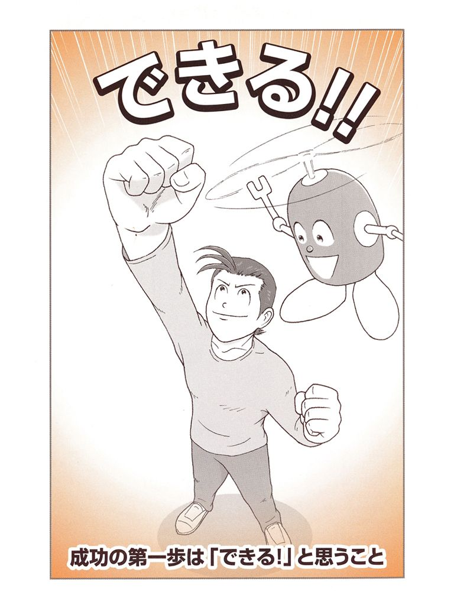
「絶対にできる！」と気持ちを高めるポイント（１）
単純な言葉で自分に暗示をかける
短いフレーズで訴え、人々を煽動する「スローガン」が、過去、さまざまな歴史のなかで利用されてきたという事実は、単純で鋭い一言は人の頭に強く響くということをあらわしています。
影響力が強いだけに、危険なものにもなりかねないということは歴史が証明しているわけですが、その効果を勉強に転用すれば、自信をつけ、やる気を高めることができます。
ただ自分を勇気づけるような一言を、繰り返し声に出せばいいのです。「絶対にできる！」でもかまいませんし、「合格！」「必勝！」といったことでもいいでしょう。多くの文豪やスポーツ選手も、こうして自信を回復し、スランプを脱出する術としていたと聞きます。
このように、簡単ではっきりした言葉を何度も繰り返す「直接暗示」は、自分を励まし、自信をつける心理技法としてよく使われています。この繰り返しが、心の中にじわじわとしみ込んで、「絶対できる！」という自信を生んでいくのです。
「絶対にできる！」と気持ちを高めるポイント（２）
自信喪失に陥ったら「私はミスをすることもある」と思う
「いつもつまらないミスばかりする」「また重要なところを見落として間違えてしまった......」
勉強に自信を失いかけているときというのは、自分の弱点ばかり目についてしまうものです。
しかし、ほんとうにいつも間違えてばかりの人など、そうそういるものではありません。たいていは、「いつも」という思い込みにハマって、自信喪失に陥ってしまっているだけなのです。
ですから、自分の弱点ばかり気になって勉強に自信を失いかけたときは、「○○することもある」と考えてみてください。
これは一見、単なる表現上の問題のように思えるかもしれません。しかし、思い込みの誤りこそが人を自信喪失に陥れ、勉強への意欲を失わせるのですから、ささいな言い換えでも、それを乗り越えてしまいさえすればいいのです。
実際、そう思ったとたんに「いつも間違えてばかり」というマイナスの暗示から解き放たれ、「絶対にできる！」と思えるようになることでしょう。
頭のよい超勉強術 ２
大目標より小目標をつくる
◎進歩しているという実感が、一番の進歩の秘訣
とある工芸作品の工房。昨日、弟子入りしたばかりのあなたは、ベテラン職人の鮮やかな仕事ぶりを驚きのまなざしで見ています。次のどちらのほうが、やる気になるでしょうか。
「３年後には、お前も一通りはできるようになるよ」
「ひとまず今週は、基本をマスターできるようにしよう」
じつは、似たような実験がアメリカで行なわれたことがあります。結果、後者のように言われた人のほうが、ずっと速く上達しました。
大きな目標を達成するには、小さな目標をひとつずつクリアして自信を積み上げていくことが大切なのです。
ＰＯＩＮＴ
目標の持ち方次第で勉強がはかどる、身につく！
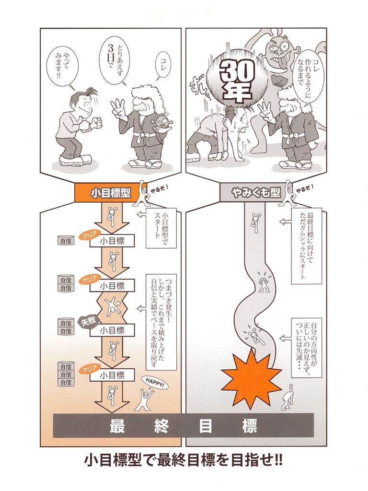
大きな目標への小さな目標を立てるポイント（１）
小目標が定まらないときは「くじ引き」でもいい
やるべきことはたくさんあるのに当面の目標が定まらない、何から手をつけていいかわからない......。
こういうときは、いたずらに焦燥感ばかりが募り、しまいにはやる気を失ってしまいます。そうなる前に、半ば強引にでも、何か目標を定める必要があります。
そこで意外と効くのが、「くじ引き学習」です。目下、やらなければならないことをひとつずつ紙切れに書き、何であれ出たものに集中すると心を決めたうえで、「エイッ」とひとつだけ引くのです。
これで、目標が定まらず、焦ったすえにやる気を失うという、〝底なし沼〟に落ち込むのはまぬがれます。
当たったものをとにかくやり遂げようという強い意欲、心理学の用語でいえば「達成動機」が、一瞬にして迷いを消し去ってくれることでしょう。
大きな目標への小さな目標を立てるポイント（２）
甘い誘惑は「ご褒美」に取っておく
電話をかけたい、コーヒーが飲みたい、メールをチェックしたい、テレビが見たい......。
勉強をしていると、ついこういう誘惑にかられ、気が散ってしまうものです。
その魔の手に一度取りつかれると、なかなか振り払うのは至難の業でしょう。
しかし、欲望もうまく利用すれば、効率アップに一役買ってくれます。気を散らせる誘惑を逆手にとって、勉強の「ご褒美」にしてしまえばいいのです。
次の休憩時間になったらメールを見る、コーヒーをいれる、すこしだけテレビを見る、などと思えば、がぜん、集中力も高まり、勉強がはかどります。
鼻先にニンジンをぶら下げられた馬といったら聞こえは悪いかもしれませんが、まさにこれは、「馬の鼻面にニンジン」作戦といえましょう。
頭のよい超勉強術 ３
計画は「１日単位」で立てる
◎千里の道も１歩から！
目標に向けて月間・年間プランを立て、壁に大きく張り出す――。
素晴らしい心がけです。意志貫徹の意識を高めるには、効果てき面といえましょう。
しかし、その半面、途中で１日でも遊んでしまうと、とたんに計画が狂い、ズルズルとなし崩しに終わってしまう危険もあります。
どんなに大きな目標も、今日という１日の積み重ねがあって初めてなし得るものです。
まずは「今日の進歩」を目指し、１日分の計画を立てることから始めてみてはいかがでしょうか。
ＰＯＩＮＴ
計画の立て方次第で勉強がはかどる、身につく！
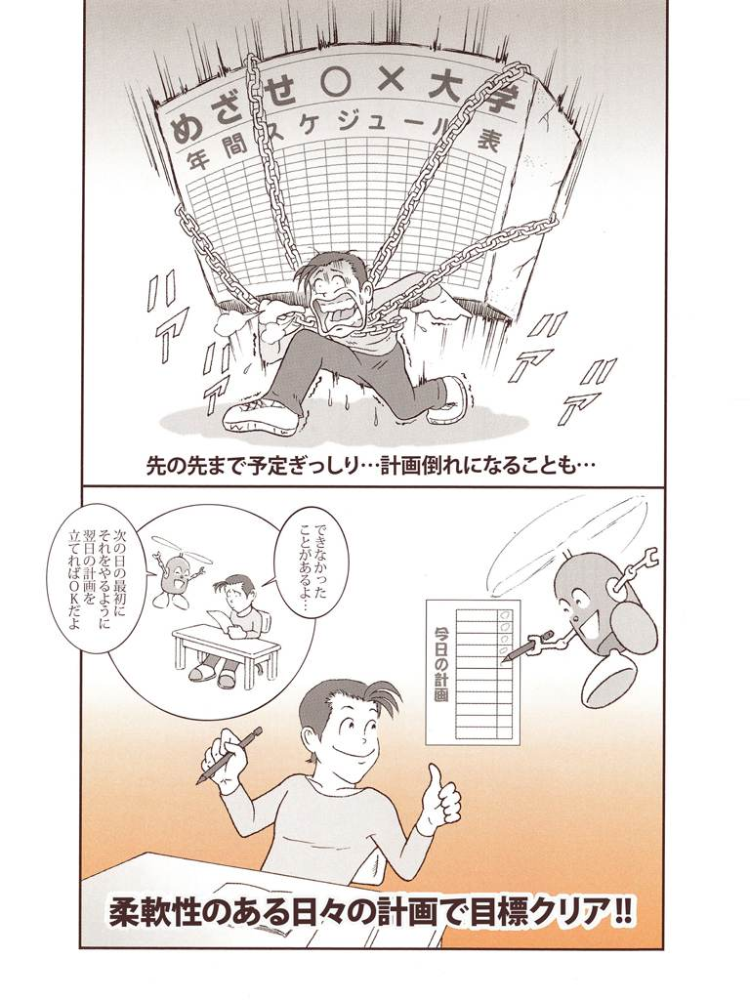
１日いちにちを確実に積み重ねるポイント（１）
気が乗らなければ計画をどんどん書き換える
どんなに集中しようと努力してもやる気が出ないときというのは、誰にでもあることです。こうなると、いくら「計画は計画」と生真面目にがんばってみても、どうにもなりません。
そんなときは、気分転換がてら、ガラリと計画を変えてみることです。単純にやることの順序を変えるだけでも、だいぶ効果があります。
そのためにも、１日の計画は、エンピツで書くといいでしょう。物理的にはもちろん、気分的にも、エンピツで書かれた計画のほうが、消して書き換えるときの抵抗感が低いからです。
何事も、「初志貫徹！」とばかりに気張りすぎると、かえってうまくいきません。計画を立てることは大切ですが、それに縛られすぎないことも、同様に大切です。
やる気が出ないところを無理に計画通りに進めようとしても、はかどるはずがありません。自分の気持ちに忠実に、臨機応変にスケジュールを変える柔軟さを、つねに持っていてください。
１日いちにちを確実に積み重ねるポイント（２）
「計画した１日」と「実際の１日」を比べる
計画を立てた以上、それがきちんと実行できたかどうか点検するのは、たいへん重要なことです。
一番好ましいのは、日記をつけることです。それを計画と照合すれば、計画の１日と実際の１日の差が歴然として示され、時間管理の自己診断をすることができます。これは、実際に、とあるアメリカ人の経営学者が、相談に訪れる会社経営者に対して実践していた方法として有名です。
そこまでできないという場合は、１日の終わりに、お風呂に浸かりながら、あるいはベッドの中で、「今日は計画通り進んだだろうか？」と１日を振り返ってみるだけでもかまいません。
こうして、何らかのかたちで計画の１日と実際の１日を比較すれば、翌日の計画を立てる土台にもなるでしょう。
ただし、あまり思いつめずに「だいたい一致していればトントン」ぐらいに考えることです。そう毎日では困りますが、できなかったことは、翌日の計画に加えればいいのです。
頭のよい超勉強術 ４
スケジュールは分刻みで立てる
◎この「自分管理法」で能率10倍！
１日の計画の立て方にもコツがあります。
効率を上げる計画術というと、よく「時間単位」ではなく「仕事単位」で区切るべきだという考え方があります。
これにも一理あることはたしかですが、「このセクションを終えてから」「この本を読んでしまってから」というように、時間の流れをなりゆきに任せていると、せっかくの１日のスケジュールが、がた崩れです。
むしろ細かいくらいに分刻みで区切ったほうが、効率は上がるでしょう。
時間的な制限があればこそ、「何分までに絶対、終わらせる」と、がせん集中力が高まるのです。
ＰＯＩＮＴ
予定は細かいほど勉強がはかどる、身につく！
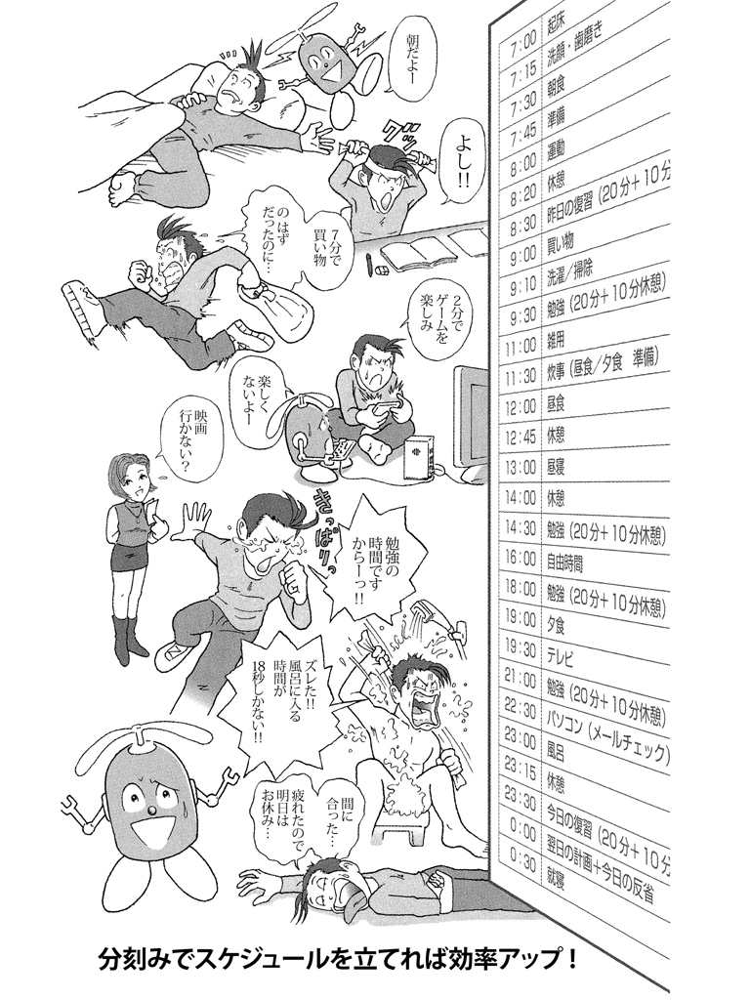
自分を上手に管理する時間術のポイント（１）
休憩は短い間隔、短い時間で
勉強には息抜きが必要なことはいうまでもありませんが、休憩の取り方によっては、成果に天と地ほどの違いが生じることにもなりかねません。
作業時間と疲労回復の研究によると、作業時間が１時間増えるごとに回復に要する時間は２倍、４倍、16倍と、〝倍々〟に増えていくことがわかっています。
つまり、長く勉強しただけ、ふたたび勉強のエンジンがかかるのに時間がかかるのです。
映画を観たい、友だちと長電話をしたいなど、遊びの時間をまとめて取るために、勉強も長く、休憩も長く、というペースの人は多いことでしょう。
しかし、じつは、それが勉強を非効率にしている可能性があるのです。
人間の集中力がつづくのは長くとも25分ということも考え合わせれば、20分間の勉強と10分間の休憩を繰り返すのが、ちょうどよいペースでしょう。
自分を上手に管理する時間術のポイント（２）
休憩の時間と勉強の時間のメリハリをつける
疲労の回復は、休憩の最初のほうでもっとも効き目があり、あとは次第にゆるやかになっていきます。
それなのに、休憩時間になっても、いわば未練たらたらでノートを眺めているようでは、肝心の休憩時間の前半が生かされません。
しょせん10分間の休憩なのですから、休憩時間になったら何もかも放り出して思い切り休むことです。こうして休憩と勉強のメリハリをつけることが、結局は勉強の効率を上げるのです。
これを徹底させるには、料理用のタイマーが重宝します。
あらかじめ20分後に鳴るようにセットして勉強に没頭し、ジリリンと鳴ったらすっぱり勉強をストップし、今度は10分にセットして休憩を取る。この繰り返しをするのです。
いささか管理しすぎの感もありますが、メリハリをつける自信のない人は、これくらいしてもいいのではないでしょうか。
頭のよい超勉強術 ５
「頭の時間割」に沿って計画を立てる
◎午前10時と午後３時がピーク
小学校５・６年生や大学生に計算や記憶テストをさまざまな時間に課した結果、頭の能率は、まず午前10時に上がり、午後１時に一時的に下がり、午後３時ころにふたたび上がったという実験がありました。
朝方まで勉強して、昼近くに起き出し、午後の遅い時間に昼食を取って昼休み......。よく見られがちな学生の生活パターンは、この生理的な「頭の時間割」からすれば、まったく逆効果といわざるを得ません。
それがすっかり定着していて支障ないというのならともかく、どうも調子が悪いと思っているのなら、まずは、「頭の時間割」にしたがって生活リズムから変えてみることです。
ＰＯＩＮＴ
「頭の時間割」で勉強がはかどる、身につく！
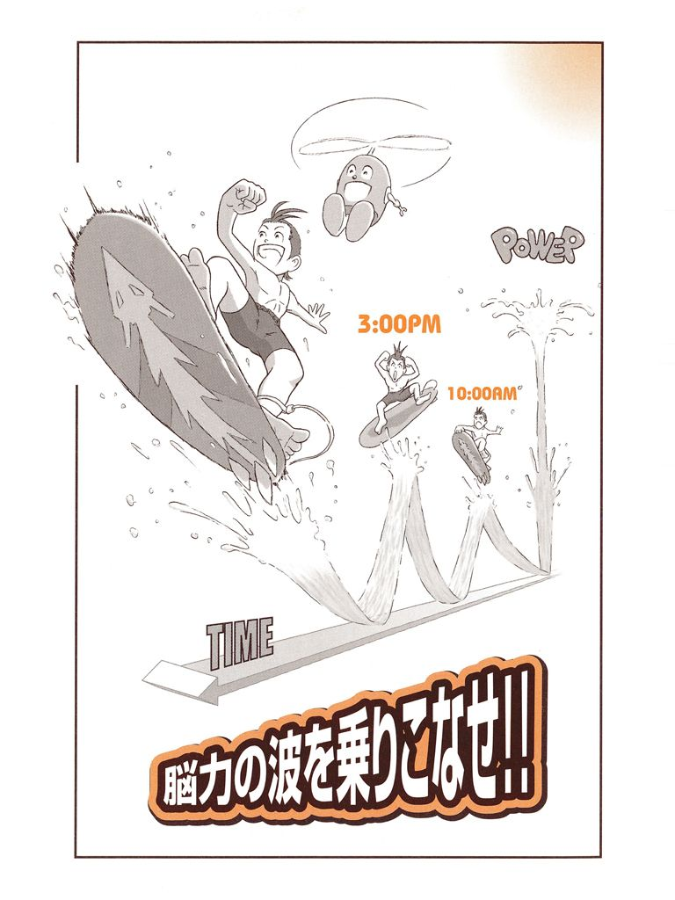
１日を有効に使う「頭の時間割」のポイント（１）
徹夜明けの２時間より、寝た後の朝の20分間
徹夜は、とても効率的な勉強法とはいえませんが、ときにはせっぱっまって一夜漬けをすることもあるのでしょう。
といっても、やはり、いわゆる〝カンテツ〟は、あまりおすすめできません。
夜間作業の能率を研究したデータによると、夜半から明朝の３時、４時ころまではなんとか維持されていた作業能率も、４時から６時にかけては極端な下降線をたどり、ほとんどゼロになってしまうからです。
かつては 「四当五落」などと、睡眠をけずるほど合格率が上がるかのようにいわれていましたが、まったく理にかなわない考え方です。大事なのは、起きている時間の長さではなく、質です。ろくに頭も働いていないのに、目をしばたかせて勉強をつづけても、身になるはずがありません。
それくらいなら、徹夜明けの２時間は居眠りしてでも頭を休めることです。その分は、朝の20分で楽に取り戻せます。
１日を有効に使う「頭の時間割」のポイント（２）
昼寝は１日を「倍」にしてくれる
頭の働きは、睡眠と深い関係があります。大ざっぱにいえば、目覚めたときから次の睡眠にいたるあいだ、頭の能率は、波はあるものの、全体的にゆるやかに低下しています。
午前10時と午後３時に頭は活発になるとはいっても、やはり朝に比べれば午後のほうが能率は低いということです。
そこで効果的なのが、昼寝です。昼寝は、朝、目覚めたときから次第に低下している頭の働きを、朝のような活発な状態にもどしてくれるからです。
ただでさえ昼食後、つまり午後１時ころは、頭の能率がガクンと下がるのですから、そこではさっさと寝てしまったほうが賢明でしょう。
ただし、１時間も２時間も寝てしまうと、体が〝夜モード〟になり、かえって頭の働きが鈍くなります。
昼寝は、せいぜい20分から30分がちょうどいいと心得、きちんと目覚まし時計をセットして取ることです。
頭のよい超勉強術 ６
勉強のための「城」を整える
◎小さな違いが大きな成果に結びつく
「環境が人をつくる」などというように、勉強にも、それにふさわしい環境があります。
といっても、理想に合わせて環境をまったく変えてしまえといっているのではありません。
そもそも、すべてを勉強にふさわしいように変えることなどできませんし、何より、人にはある程度、環境に順応する能力が備わっているからです。
つまり、「よい環境づくり」とは、できる範囲のちょっとした環境整備と、自分の順応力の合作によって可能になるのです。このことを踏まえたうえで勉強のお膳立てを整え、自分の「城」をつくることが肝心です。
ＰＯＩＮＴ
学習環境次第で勉強がはかどる、身につく！
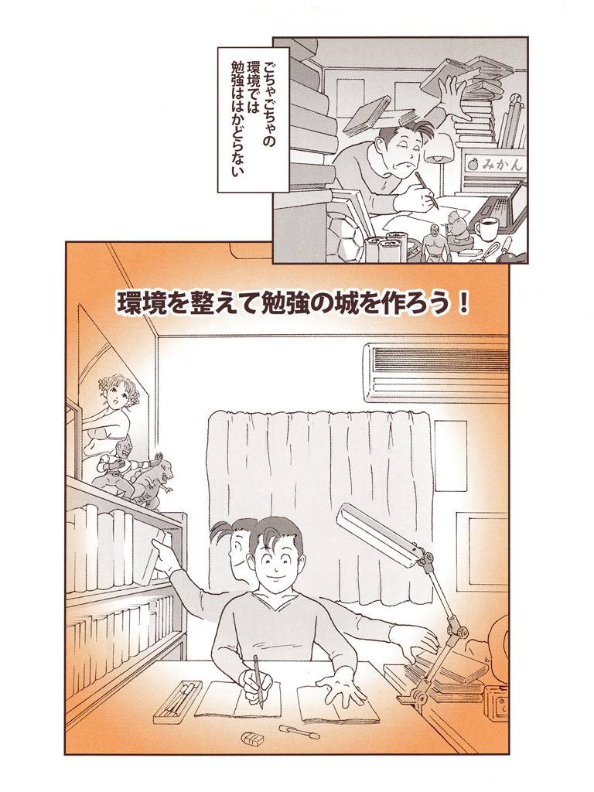
大きな成果を生む小さな変化のポイント（１）
カーテンを冷色系に変える
色彩心理学によれば、一般に、暖色系の色は人の感情を刺激し、発散させる効果があり、冷色系の色は感情を落ち着かせる効果があるとされています。また、明度の高低は気持ちの明快・不明快に、彩度の高低は緊張、くつろぎに関係しているといいます。
こうしたことを総合すると、勉強部屋や仕事部屋の壁に低明度で高彩度の色は、およそ適当とはいえません。気分をひきしめ、落ち着いた気分で勉強に取り組むには、高明度で低彩度の冷色系の部屋が最適ということになります。
この条件に合わせるために壁を塗り替えるとなると、環境を整えるために勉強時間を削る、つまり手段のために目的をなおざりにする愚行にもなりかねませんので、工夫が必要です。
一番、手軽なのは、カーテンの色を変えることでしょうか。窓の近くに机をもっていけば、冷色系の壁のそばで勉強するのと同じ効果が得られることでしょう。
大きな成果を生む小さな変化のポイント（２）
照明は「全体＋スタンド」
壁面の色と同様、照明も、勉強のムードづくりや効率アップには欠かせず、しかも手軽に整えられる「城」の要素です。照明は単に明るさを得るためだけのものではありません。大事なのは、明るさの「質」であり、それ次第では、照明は学習効率を下げる元凶にもなりかねないのです。
一般に、暗い照明は目に悪く、疲労感にもつながりやすいので、勉強には適しません。しかし、反対に明るすぎても、気分が落ち着かないので、やはり避けたほうがいいでしょう。
そのうえで一番いいのは、「全体照明＋スタンド」です。本を探したり、資料を見たりするときは全体照明が必要ですが、一点に集中したいときは、スタンド照明が便利です。
すこし勉強するだけで疲れるという人は、照明に原因があるのかもしれません。これを参考に、照明の明るさを変えたり、「全体照明＋スタンド」方式を取り入れたりして、自分に一番適している照明を探してみてください。
頭のよい超勉強術 ７
机まわりを勉強モードにする
◎机まわりが引き締まれば気分も引き締まる
勉強のための「城」づくりにおいてもっとも重要なのは、なんといっても机まわりの環境です。
机こそ勉強の城の〝玉座〟であり、机について目に入る範囲さえ勉強にふさわしければ、それ以外は、気にしなくてもよい、といっても過言ではありません。
とりわけ、「飽きにくい環境」をつくることは、机まわりを勉強モードにする第一歩です。
集中できないときは、机の位置を変えてみたり、ペン立てや本の置き場所を変えてみたりなど、環境に変化をつけると効果的でしょう。
ＰＯＩＮＴ
机まわりを整えれば勉強がはかどる、身につく！
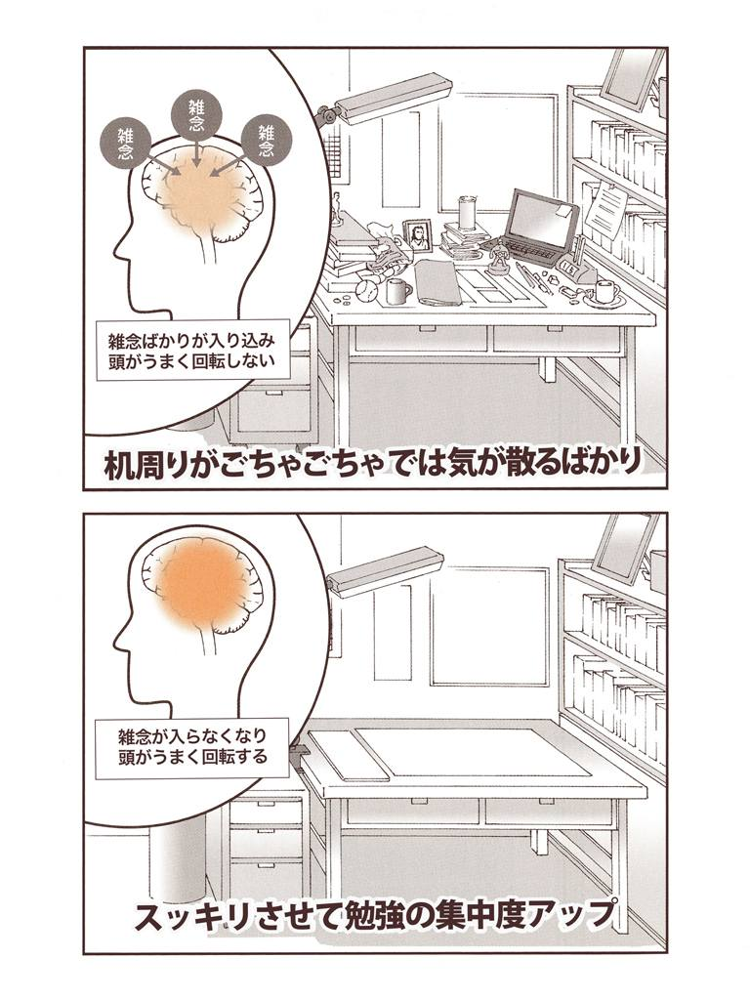
集中力をアップさせる机まわりのポイント（１）
机の上に不必要なものは置かない
飽きにくい環境をつくるといっても、机の上が雑然としているということではありません。
たとえば、勉強をしているのに、休憩時間にふと手に取ったマンガが置きっぱなしになっている、見たいと思って借りてきたレンタルビデオが放ってあるという状態は、とても勉強に好ましいとはいえません。
問題に没頭しているときなどは気にならなくても、ふと目を上げて考えをめぐらせるときなどに、雑念の元になるだけです。隣の部屋のテレビの音と同じように、視覚的な「雑音」となって目に入り、勉強の妨げになるのです。
また、別の教科の教材など、誘惑にはならないものでも、そのときの勉強に不必要なものが机の上に散乱していれば、それらのことが気になって、何かと時間のロスになりがちです。
そういう意味でも、机の上には、その時間の勉強に必要なもの以外は置かないようにしたほうが賢明でしょう。
集中力をアップさせる机まわりのポイント（２）
金言や標語は毎日はりかえる
よく、勉強に必要な本を買いそろえて本棚に並べたまま、結局ろくに開かずホコリにまみれてしまった、という話を耳にします。本を買ったというだけで勉強した気になり、満足してしまうという落とし穴にはまってしまったのです。
この落とし穴は、金言や標語にも共通することです。
「１日10問」「毎日50ページ読破」などと書いて貼るのはけっこうですが、その内容を実行しなければ意味がありません。
形式が整っただけで何となく満足してしまい、次第にホコリっぽくなっていく金言や標語が、かえって勉強の妨げになってしまうことも往々にしてあることなのです。
それを防ぐには、いつも新しい気持ちで金言や標語と向き合えるように、毎日、それらを貼りかえることです。ホコリにまみれているか、真新しいか。それが、貼った人の心をそのまま映し出しているといっていいでしょう。
頭のよい超勉強術 ８
「失敗」は「訓練」と心得る
◎「失敗の多さ」は「本番での強さ」の源
本番の試験に臨んだとき、成績抜群だった人が失敗したり、目立たなかった人が合格したりという番狂わせが生じることがあります。
そういうとき、「運がよかった」とか「悪かった」とかいいますが、じつは、心理学的な理由があります。
ふだん失敗の多い人は、自分の情動をコントロールする力がついていますから、緊張したりあがったりすることが少ないのです。
こうして自分をコントロールする力の度合いを「欲求不満耐性」といいます。そして、これは失敗の積み重ねによってこそ、メキメキと鍛えられるものなのです。
ＰＯＩＮＴ
失敗をポジティブに取れば勉強がはかどる、身につく！
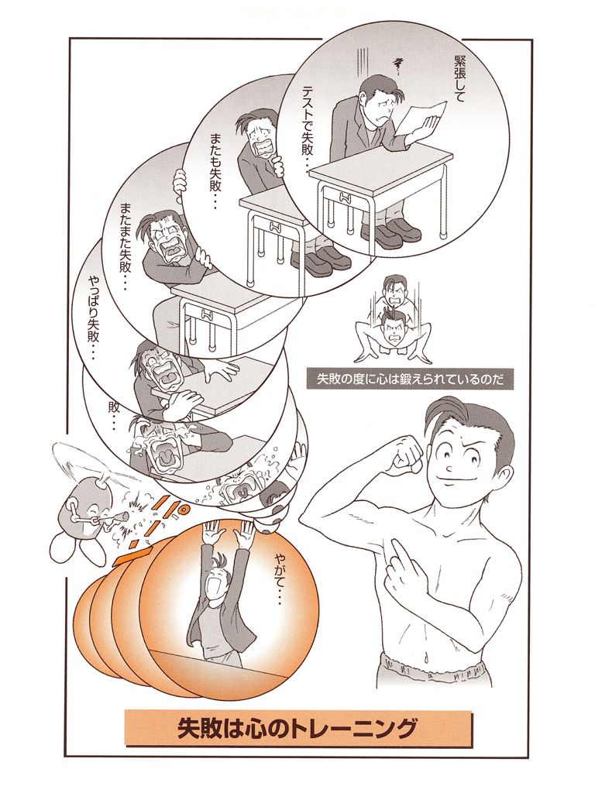
失敗の訓練効果をさらに高めるポイント（１）
間違うクセは、わざと間違えることで直す
間違いというのは不思議なことに、正そうと思うほど、同じ間違いを繰り返してしまうものです。
漢字でいえば「訪問」や「専門」というように、まざらわしいものほど、一度間違って覚えてしまうと、なかなか正しく覚えられません。そういうときには、わざと間違えて練習してみることです。
心理学の学習理論に、「負の学習」というのがあります。
たとえば、スポーツの練習で悪い習慣がついてしまったときに、その悪い習慣そのものを徹底的に繰り返すことで、かえってその動作自体に乱れが生じ、別のかたちの運動を見出せるということがあります。
その「負の学習」を、勉強に応用しようというわけです。
現に、最初に覚えてしまった間違いを「間違い」として頭にインプットすることで、かえって正しく覚えられるというのは、その他、さまざまな実験でも明らかにされています。
失敗の訓練効果をさらに高めるポイント（２）
誤答を記録して後の教訓とする
模擬試験や練習問題などは、自分の間違いを発見するためにあるようなものです。
しかし、人間には自分に不都合なことを忘れてしまいたいという心理があります。
「間違った」という記憶にフタをしてしまいがちなので、せっかくの間違いを、なかなか生かすことができません。
この人間心理の弱いところを克服するには、屈辱的でも、間違った答えを記録しておくことです。
間違ったポイントを書き連ねる「間違いノート」を作ってもいいでしょうし、テストや練習問題で間違ったところだけを切り抜いて貼っていく「間違いスクラップ」という手もあります。
間違いを自分の血肉とすれば、勉強の効率は確実に上がります。
自分ではあまり直視したくないものでも、この「間違いノート」、「間違いスクラップ」ときちんと向き合えば、かならず、その後の成果につながっていくのです。
頭のよい超勉強術 ９
スランプを飛躍への足がかりとする
◎停滞したときこそ差が出る境目
勉強にスランプはつきものです。ある時期を過ぎると、それまでぐんぐん進歩していたことがウソのように、ピタリと止まってしまうのです。
このような状態を、心理学では「練習の高原」といいます。ある程度まで習熟すると、そのやり方に慣れてしまい、やり方がマンネリ化してしまうわけです。
こうなると、勉強に嫌気がさして、意欲を失ってしまいがちですが、「高原」はいつまでもつづいているわけではありません。しっかりと歩きつづければ、次の進歩へのきっかけをつかめるはずです。
スランプは、次に飛躍するための跳躍台なのです。
ＰＯＩＮＴ
スランプとうまくつきあえば勉強がはかどる、身につく！
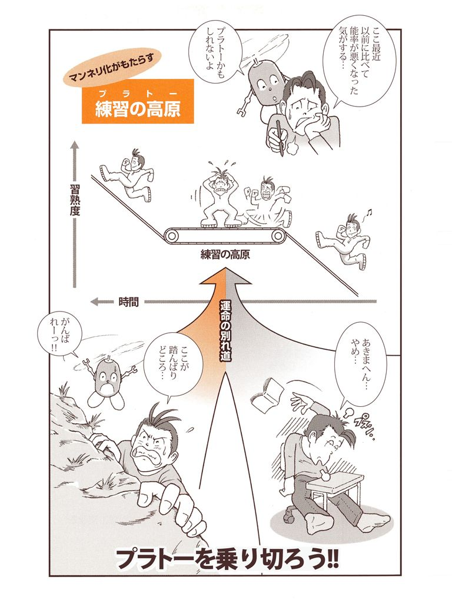
あとあと差が出るスランプ克服法のポイント（１）
得意分野、やさしいところを復習する
人はスランプに陥ると、十中八九、ネガティブ思考の渦に巻き込まれるものです。
「自分はなんてバカなんだ」と、できない自分に無性に腹が立ち、まるで自分が世界一の大バカ者になったかのような悲壮感に包まれてしまうのです。
しかし、いつまでも落ち込んでいて、遅れを取るわけにはいきません。このスランプをさらなる飛躍につなげるためにも、自信を取り戻すことが先決です。そのためには、自分のリハビリもかねて、以前克服したところを、もう一度やり直してみることです。
前にその部分ができるようになったとき、世界を征服したような快感を味わったはずです。その快感を思い出せば、スランプは脱出したも同然。すぐに自信を取り戻せることでしょう。
ひとところで足踏みをつづけるのではなく、あえて一歩後退してでも自信を取り戻してこそ、スランプを次への踏み台にしていけるのです。
あとあと差が出るスランプ克服法のポイント（２）
激しい運動でリフレッシュ＆精神統一
落語家の故・柳家小さん師匠は剣道の達人でした。いくら名人といえどもスランプに陥ることはあったことでしょうが、そこで竹刀の素振りが役立ったであろうことは想像に難くありません。
勉強においても、どうもやる気が出ない、集中できないといったときには、激しい運動が奏功します。腹筋や腕立て伏せ、はたまた小さん師匠のように竹刀の素振りに、無心になってしばし打ち込むのです。一見、原始的な方法に見えますが、これには心理的な効果が認められています。
心にモヤモヤとしたしこりを生じさせている精神的エネルギーは、体を酷使することで肉体的エネルギーに転換されると、きれいさっぱり消えてしまうことが多いのです。
運動不足は、頭脳のエネルギーも停滞させます。そういう意味でも、ただでさえ運動不足になりがちな勉強の毎日にこそ、思い切って体をこき使ってリフレッシュと精神統一を図ることに、重大な意味があるのです。
頭のよい超勉強術 10
参考書を乱読する
◎買いためた参考書にもそれなりの意味がある
「２００ページの本に10ページでもためになる部分があったら感謝すべきだ」という名言を残した哲学者がいます。
１冊の参考書を徹底的にやっても、ためになることはそれほど多くはないということです。
本を書いている著者にはそれぞれクセや得意な分野があって、同じテーマの本でも、それぞれわかりやすい箇所が違っています。そのそれぞれから、いい部分を取り込めばいいのです。
やたらと買い込んだ参考書も、「たんすの肥やし」ならぬ「本棚の肥やし」にしておくことはありません。
ＰＯＩＮＴ
うまく読んで活用すれば勉強がはかどる、身につく！
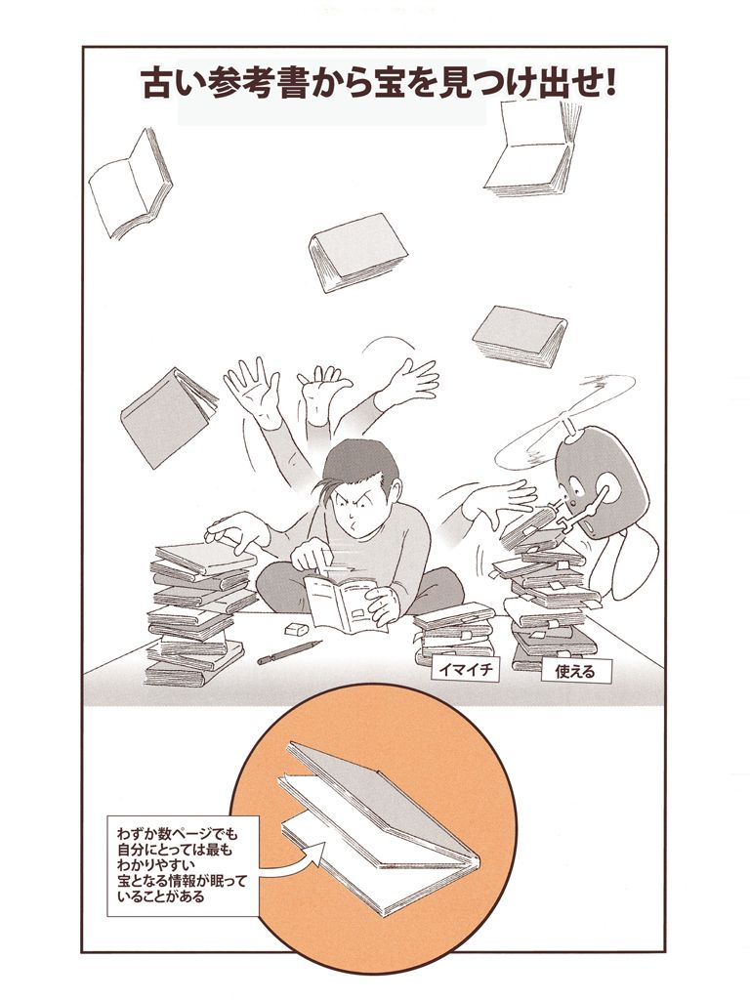
たまった参考書をフル活用するポイント（１）
アンダーラインは２度目に読むときから引く
参考書や教科書の重要なところにアンダーラインを引くのは大事なことですが、アンダーラインを引くときは慎重にしなければなりません。
１回引くと、当然、そこにばかりに目がいってしまいます。
アンダーラインは、そもそも重要なポイントを重点的に勉強するためのものですから、当たり前といえばそうでしょう。
しかし、問題は、最初から重要なところがわかるわけではない、ということです。
その状態で下手にアンダーラインを引けば、ほんとうに大切なところを見落としてしまいかねません。しかも、人の心理には、アンダーラインを引いただけで何となく勉強した気になってしまうという弱さもあります。
ですから、アンダーラインは、まず一度ざっと全体に目を通したうえで、改めて２度目に読むときに、引くべき場所を見極めながら引くことが重要なのです。
たまった参考書をフル活用するポイント（２）
読み終えた参考書を机に山積みにする
「勉強をした！」という実感を一番抱くのは、勉強の結果が目に見える形で残っているときでしょう。
試験でいい点を取った、階級が上がったといったことはもちろんですが、そうした具体的な成果以外にも、手軽に達成感を持つ方法はたくさんあります。
その１つが、読んだ参考書を机に積み上げていくことです。
アメリカ有数の出版社の編集長は、自分のデスクの左右に「処理前」用と「処理後」用の箱を分けて置き、仕事をするそばから「処理後」用の箱に放り込むようにしていたようです。
すると、右側の山が低くなるごとに左側の山が積み重なっていきます。つまり、自分の仕事の成果が目に見えるかたちで現れるわけです。
同じく、ズシリとそびえる参考書の山は、それまでに費やされた努力や時間の軌跡です。その快感が自分を励ますことになるのです。
頭のよい超勉強術 11
コツコツやるより、全体をさらう
◎まずは「ボンヤリ全体像」でいい
詩や歌を暗誦するとき、行や句ごとに区切って順々に暗記していくよりも、まずは全体をボンヤリとつかみ、次第にハッキリとさせていったほうが、速く覚えられ、全体の流れとともに記憶も持続するものです。
これは、詩や歌の暗誦ばかりではありません。気合を入れて本や参考書を読み始めたものの、だんだんになおざりになり、結局は読みきれなかったという経験はありませんか？
最初に根をつめるほど、あとにしわ寄せが行くものです。ならば、最初から全体をさらって「流れ」をつかんでおいたほうが、はるかに勉強の成果が上がるというものでしょう。
ＰＯＩＮＴ
先に流れをつかめば勉強がはかどる、身につく！
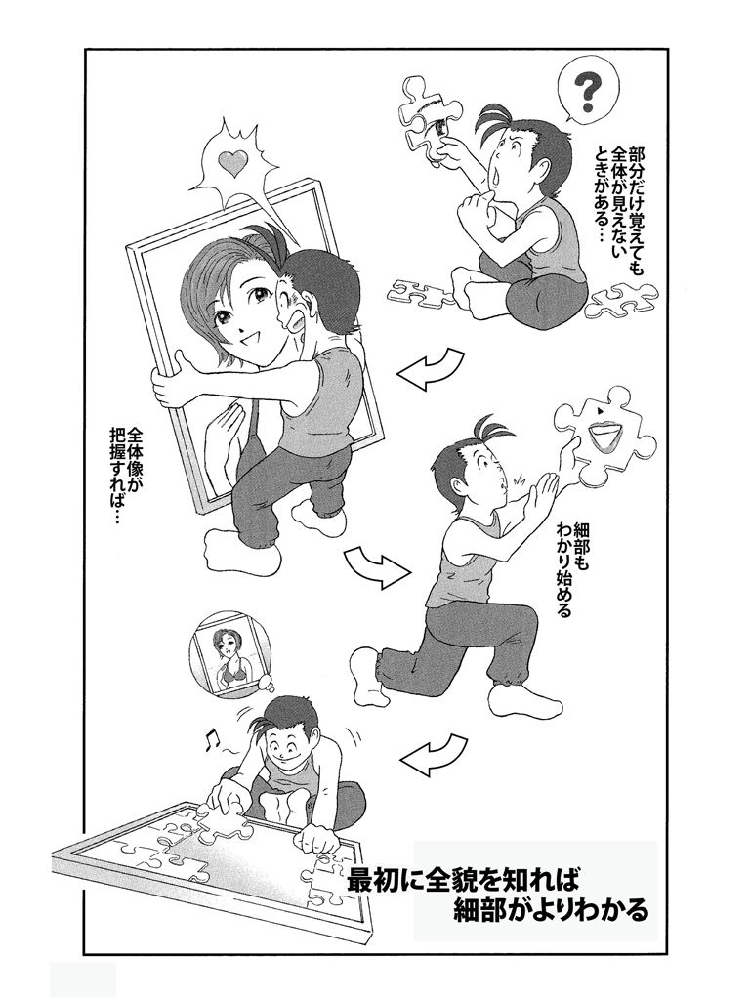
効率よく全体をさらうポイント（１）
目次をときどき読み返す
かつてデカルトは「たいていの書物は数行を読み、目次を見れば全体がわかる」といったそうですが、さすがは偉大な哲学者、「本を読む」ということの核心をついています。
目次は、単なる索引的な意味だけでなく、論理と論理のつながり、事実と事実のつながりをもっとも簡潔に示したものです。
つまり目次は、「ボンヤリ全貌」をつかむのに、うってつけといえるのです。
「木を見て森を見ず」は、勉強にも当てはまります。
勉強が進むと、どうしても細部にとらわれがちですが、重箱の隅をつつくような勉強は面白くないばかりか、たいへん非効率的なのです。
その落とし穴にはまらないためには、ときどき目次を読み返し、大まかな流れを確認するクセをつけておくといいでしょう。
つねに、自分がどの辺りにいるのか知っておくのは、やる気を高めるうえでも、大事なことです。
効率よく全体をさらうポイント（２）
速く読みたい本は、最後から読む
今の知識をより深めようと別の本を読むときなどは、すでにわかりきっている内容を読み直すという無駄を、なるべく省きたいものです。
何より時間がもったいないということはもちろん、すでに知っているところの復習に嫌気が差して、結局、何らプラスαの知識にたどり着かないまま放り出してしまうこともあるからです。
こういう場合は、本の末尾から読み始めるといいでしょう。
本の結論は、当然、終わりのほうに書かれるものですし、前に出た内容が要約的に書かれていることもすくなくありません。またその際は、「つまり」「結局」といった、まとめに用いられるような接続詞に注意して読むと、なお効果的です。
もちろん、最後のほうを読んだだけではわからなかったら、すこし前にさかのぼりながら、読み直していけばいいのです。
それでも律儀に最初から読むよりは、はるかに時間と労力の節約になります。
頭のよい超勉強術 12
勉強ペースは速めに保つ
◎いったん立ち止まってしまうと、効率は悪くなるばかり
ハードルの高い問題に挑み、とことん考えていると「勉強している！」という気分にはひたれることでしょうが、一向に成果はついてきません。
「ばかな考え休むに似たり」というように、１つの問題を長時間、考えつづけることは、時間をかけて頭を疲れさせるようなものです。
勉強に忍耐が必要なことはたしかですが、１つの問題にこだわりつづけていたずらに頭を疲れさせるようでは元も子もありません。勉強にはペースやリズムも大切と心得て、テンポよく進めるよう心がけることです。
ＰＯＩＮＴ
考えすぎずにペースを上げれば勉強がはかどる、身につく！
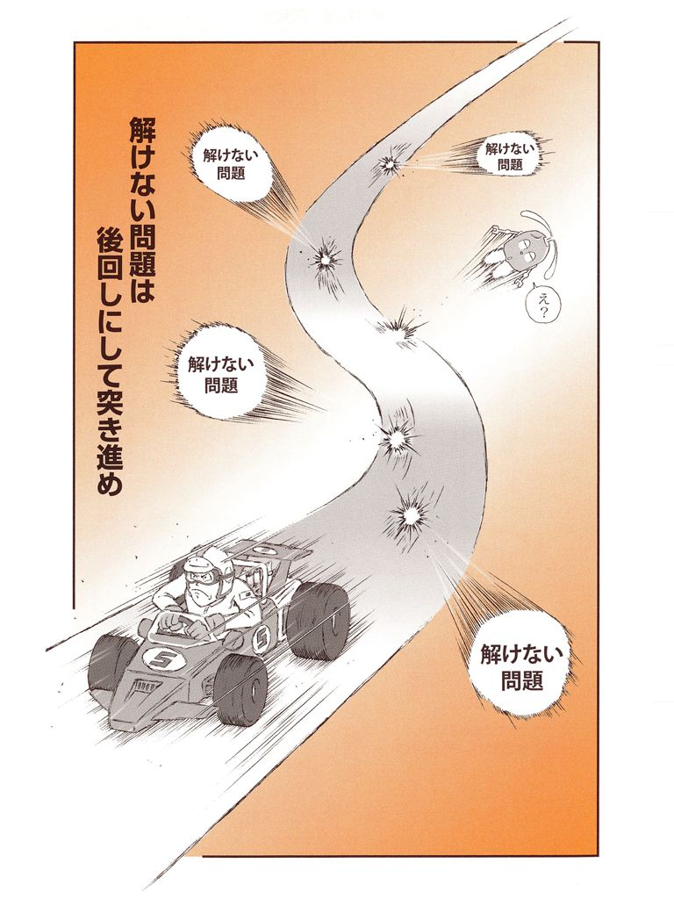
勉強ペースを速めに保つポイント（１）
解けない問題は一度忘れてしまう
どうにも解けない難しい問題に頭を無駄に疲れさせるのを防ぐには、一度すっかり問題を忘れてしまうに限ります。
イギリスの有名な哲学者、バートランド・ラッセルには、何か難しい問題について書くとき、２、３時間、あるいは２、３週間のあいだ必死になって考えたあと、「地下へ行け！」という号令とともに、すっかりそのことを忘れてしまう習慣があったそうです。そうして数ヵ月後に、同じ問題を意識的にたどってみると、スイスイと考えが進み、楽に書けることが多かったといいます。
もっとも、この偉大な哲学者でも、それ以前は、同じ問題にクヨクヨと悩みつづけ、数ヵ月も浪費してしまうことが多々あったそうです。
そのすえに編み出した方法なのですから、なおさら信頼できるのではないでしょうか。
どうにも解けない問題は、一度その間題から離れて、あとから改めて対峙したほうが、スンナリと解けるものなのです。
勉強ペースを速めに保つポイント（２）
「未解決」を恐れない
解けない問題を一度忘れてしまうといっても、完全に放り投げてしまうということでも、諦めて解答を見てしまうということでもありません。
まして、その場しのぎの中途半端な答えを出すなど、もってのほかです。
難しい問題を解いていると、だんだん頭が疲れてきます。また、人間心理は安定を求めるものなので、未解決の問題があることを好みません。
そういうわけで中途半端な答えを出してしまいがちなのですが、一応答えを出したとなると、その時点で問題を「解決済み」として認識し、心から消し去ってしまうというのも、人の心の常です。
つまり、中途半端に答えを出してしまうと、じつは何ひとつきちんと理解していないことを、すっかり理解したつもりになってしまうということです。
人間心理がそういう性質をもっているからこそ、「未解決」を恐れず、あくまで問題を「保留」にしておく心がまえが必要でしょう。
頭のよい超勉強術 13
危ないところは戻りながら進む
◎戻り確認しながら進んで弱点克服
勉強にはテンポが大切とはいっても、勢いよく進むばかりが能ではありません。弱点は、反復学習で克服していかねばならないでしょう。
それには、問題集を２種類試すなど、すでに学習したところに立ち戻りながら先に進むことです。
着物などを縫う和裁には、よく使うところを強く縫い合わせるために、縫ったばかりのところに戻りながら縫い進む「返し縫い」という縫い方があるそうです。
危ないところを戻り確認しながら弱点を克服する方法は、さしずめ勉強術における「返し縫い」といったところでしょうか。
ＰＯＩＮＴ
「返し縫い勉強法」で勉強がはかどる、身につく！
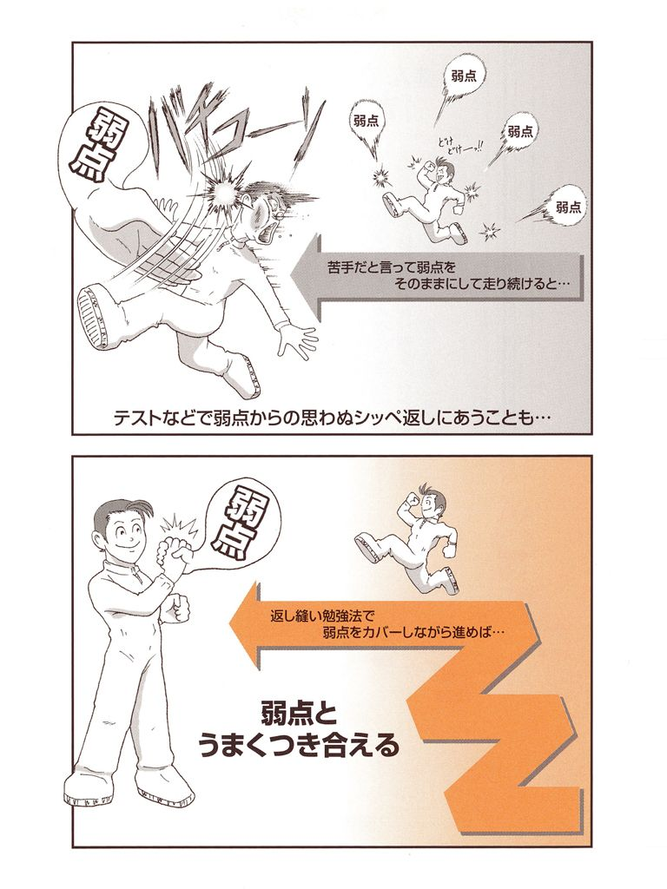
弱点を克服する「返し縫い勉強法」のポイント（１）
３歩進んで２歩下がる～♪ 「漸進反復法」
かつて大ヒットした水前寺清子さんの歌に「３歩進んで２歩下がる」という詩がありますが、それを活用したのが、この「漸進反復法」です。
平たくいえば、要するに、一区切りつくごとに後ろに戻りながら先に進むという方法ですが、たとえば以下のようなやり方が考えられるでしょう。
何かを覚えるとき、その内容を３つのパートに分けます。
第一の部分の勉強が終わったら第二の部分に移り、第二の部分が終わったら、１歩下がって第一の部分と第二の部分を一緒に勉強します。
そして、第一、第二の部分が終わったところで第三の部分に移り、それが終わったところで今度は２歩後退して、第一、第二、第三の部分をまとめて勉強するわけです。
そうすれば、それぞれを２、３回ずつ繰り返すことになり、この反復が、記憶の強化につながるのです。
弱点を克服する「返し縫い勉強法」のポイント（２）
さらに慎重を重ねる「直接反復法」
３歩進んで２歩下がる漸進反復法にさらに慎重を重ねるなら「直接反復法」というのもあります。
これは、いうなれば「つぎたし型」の勉強術です。
はしごをかけるところを想像してみてください。
全部で５階分のはしごをかけるとして、１階から２階にはしごをかけたところで今日の作業を終えたとしたら、翌日はまた１階から２階にのぼり、２階から３階のはしごをかけます。
そのまた翌日は、また１階から３階までのぼり、３階から４階のはしごをかけます。
「つぎたし型」は、いわば、こうしてはしごをかけていくような方法です。ひとまず第一の部分が終えたら第二の部分に進むのが「漸進反復法」でしたが、「直接反復法」では、一区切りつくごとに、また最初から勉強しなおすということです。
勉強は、短い時間にできるだけ先に進みたいと思うものですが、焦りは禁物です。
弱点は弱点と認めて重点的に反復を繰り返し、克服することが先決なのです。
頭のよい超勉強術 14
〝ヤマかけ〟は訓練である
◎ヤマをかけるのは、一か八かのギャンブルではない！
テストのヤマをかけるというと、勉強嫌いな怠け者がするような賭けのように思われがちですが、これは大きな誤解です。
試験というのは、ほんとうに大切なところがどれだけわかっているかを調べるものなのですから、かけたヤマが当たれば、それだけ重要なポイントがわかっていたということになるからです。つまり、ヤマかけの練習をすることは、大事なところを見抜く訓練になるといえるでしょう。
本番でヤマが外れてしまってはシャレになりませんが、模試などに先駆けてヤマをかけるようにしていれば、その積み重ねが、真の実力につながっていくのです。
ＰＯＩＮＴ
重要ポイントを見抜く訓練で勉強がはかどる、身につく！
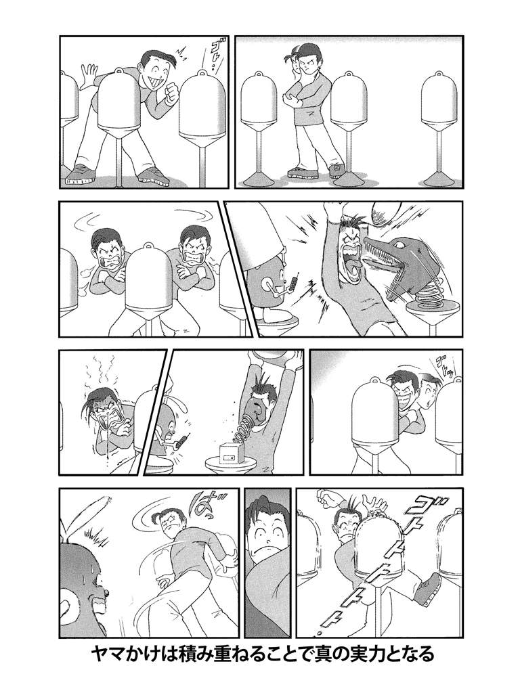
重要ポイントを見抜く〝ヤマかけ〟のポイント（１）
「成功者」の参考書で勉強する
ヤマをかける練習は、重要ポイントを見抜く訓練だといいましたが、その元となる資料には、「成功者」の参考書が最適です。
つまり、大学受験なら、自分の志望大学に合格した人の、資格試験なら、同じ資格を取得した人の参考書を入手するのです。
かくいう私も、過去に、たいへん勉強のできる年上の親戚から参考書をもらいうけたことがあります。
そこには、秀才の参考書らしく、要所要所にアンダーラインが引いてあったり、簡潔な書き込みがあったりしたので、大切なところが手に取るようにわかったものです。
そうしてアンダーラインやメモのあるところを重点的に読むようにした私は、その後、短期間で格段に成績が上がったのです。
他力本願なやり方と顔をしかめる人もいるかもしれませんが、勉強も、芸事と同じく、先人の知識を「盗む」ことが成功の秘訣なのです。
重要ポイントを見抜く〝ヤマかけ〟のポイント（２）
友だち同士でヤマをかけ合う
もし、勉強の同志が身近にいるのなら、ヤマかけの練習に巻き込むのも一法です。
学校はもちろん、資格試験を眼目とした専門学校にも、練習テストがつきものでしょう。試験前には、誰もが多かれ少なかれヤマをかけているものですから、それを教え合うのです。
自分自身を含めて、一人ひとりのヤマ自体はひじょうに主観的で、当たり外れが大きいという難点があります。しかし、そのあてにならないヤマも、多くの人のものを集めてみると、ぐっと様相が変わってくるのです。
ある人は、先生の口ぶりからヤマをかけるでしょう。過去のテストの傾向からヤマをかける人もいるかもしれません。自分で重要ポイントを考えてヤマをかける、という人もいることでしょう。
こうしたいろいろな角度からの情報の共通点を探してみるのです。こうすれば、まさに他人の頭を巻き込みながら、ある程度、客観的にヤマをかける練習ができるというわけです。
頭のよい超勉強術 15
あとあと生きる、使えるノート術
◎書き込むのは右ページだけ！
そもそも、どうしてノートを取るのか？
それは、勉強した内容を必要に応じて復習するためです。その点から考えて、一番、「使えるノート」を作る術をマスターすれば、勉強の効率はぐんとアップします。
まず、使えるノート術の基本として、ノートは右ページだけに書き込み、左ページは、書き込み補充用にあけておきます。もったいないように思えても、ノートを取る目的からすれば理にかなった使い方といえましょう。
こうして、あとあと生きる、「使えるノート」を作れば、それは、どんな参考書にも優る、「オリジナル参考書」になるに違いありません。
ＰＯＩＮＴ
「オリジナル参考書」づくりで勉強がはかどる、身につく！
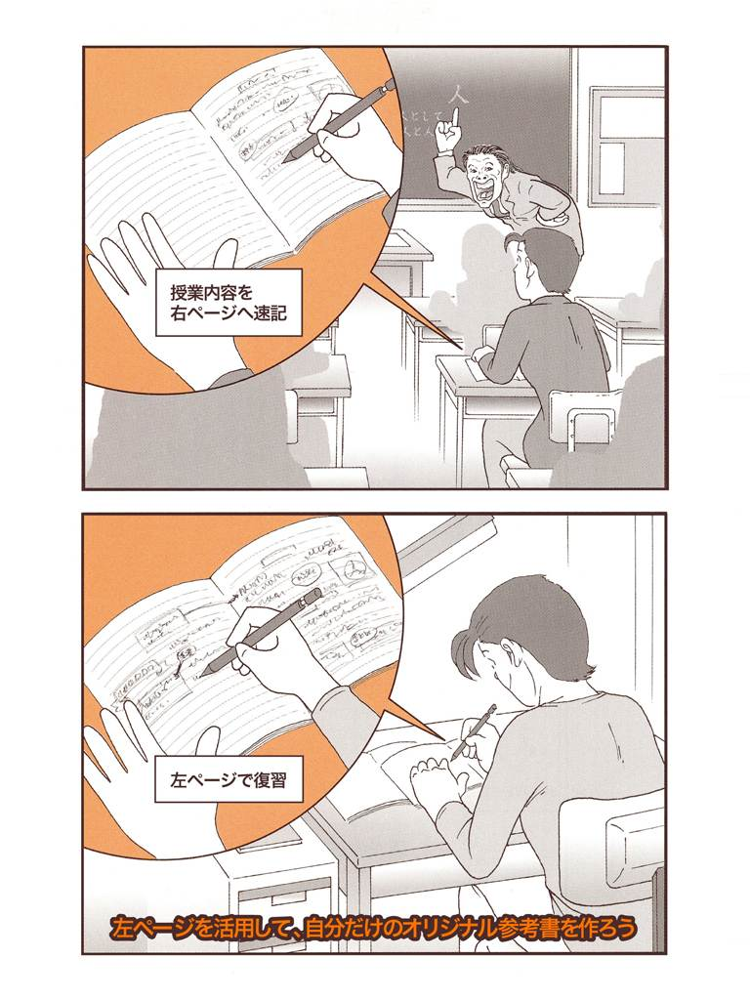
あとあと生きる「使えるノート」づくりのポイント（１）
ノートには見出しと要約が入った目次をつける
せっかく取ったノートなのですから、あとあと生きるようにしておかなければ、その努力の意味も半減してしまいます。すこしの手間を惜しまず、「使えるノート」にしておくことが大切でしょう。
そのためには、まず、ノートを終わりまで使い切ってしまったら、そのまま積んでおかずに、各ページにページ番号をふり、本のような目次をつけます。
ここでポイントになるのは、目次の各項目に、内容の要約をつける、ということです。内容の要点を、ほんの２、３行にまとめるか、箇条書きしておくのです。
あらかじめこの作業をしておけば、あとで見返すときにページをあちこちひっくり返して探すムダが省かれますし、何より、この目次づくりの過程で、同時に復習をしていることになります。
しかも、ただノートを読み返すだけでなく、要点をつかみながらなので、自然に全体をよく理解できるというわけです。
あとあと生きる「使えるノート」づくりのポイント（２）
まとめには小型ノートを見開き２ページ単位で使う
書き込み補充用の左ページも埋まり、要約つき目次も作った。これだけでも大したものですが、さらに余力のある人は、ノートのまとめを作っておくと、なおいいでしょう。
まとめはコンパクトであるに限ります。小型ノートの見開きに、一項目が丸々収まるくらいが最適です。
なぜなら、人間の頭が真剣に回転するのはせいぜい15分から20分程度であり、小型ノートの見開き２ページは、その15分にちょうどいい長さだからです。
約15分で見開き２ページを読み終え、集中力も内容も一区切りついてホッと一息。雑念が入り混じる前に一項目を読み終えることができれば、内容はスッカリ頭に入ってしまいます。
そしてさらに15分。これを繰り返していると、リズムがついて、よりスムーズに先に進めるようになっていきます。真剣さが持続して、しかも疲労感が少ないのですから、いうことナシでしょう。
頭のよい超勉強術 16
使えるカード活用法
◎ノートとはまた違った効用がある
いまやカードを使って勉強をする人は、少なくなっているのでしょうか。そうだとしたら、ひじょうにもったいないことです。
カードにはノートとはまた違った効用があります。
その第一に、並べ替えが自由自在、ということが挙げられます。
たいていの物事は、切り口によってさまざまな並べ方がありうると思いますが、自在に並べ替えることによって、多角的な勉強を可能にしてくれるのがカードなのです。
ノート学習がある程度済んだあとにカードを使えば、知識は確実に頭に根づくことでしょう。
ＰＯＩＮＴ
並び替え自由自在のカードで勉強がはかどる、身につく！
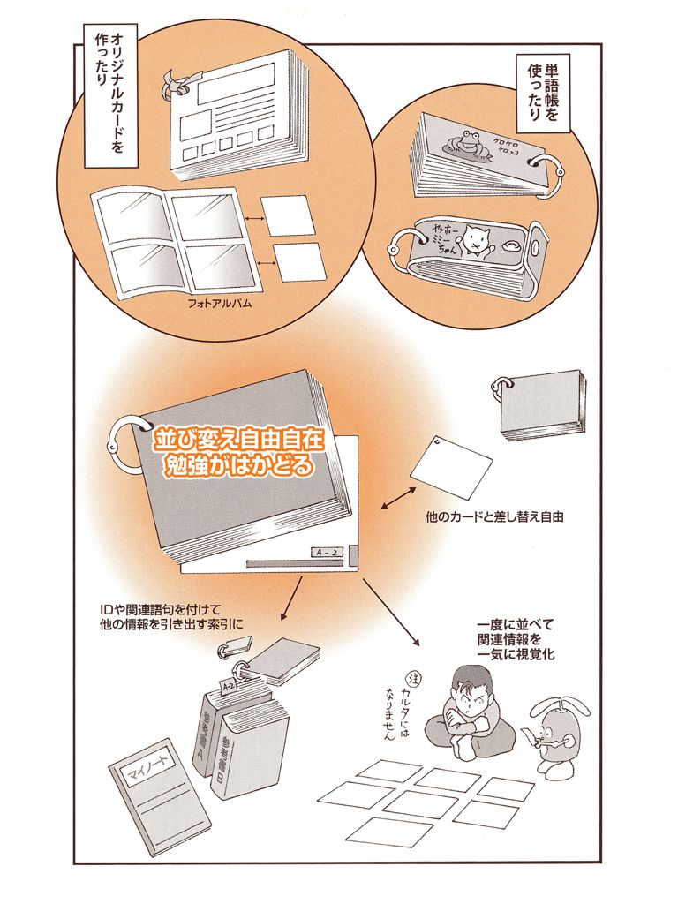
知識を定着させるカード活用法のポイント（１）
メインカードとサブカードをつくる
カード活用法の１つは、図書館の索引カードにヒントを見出すことができます。
かつて図書館で本を探すといえば、カードをパラパラめくるというのが定番でした。
１冊の本には、著者、書名、分野というように、最低でも３種類の分類カードがあり、かならずしも書名がわからなくても、著者や分野から辿っていけるようになっていました。
この方式を勉強のカードづくりに取り入れるのです。
たとえば、ある事柄についてメインカードを１枚つくります。次に、その事柄に付随する事項を書き込んだサブカードを数枚つくり、そこに、メインカードの題目を書いておきます。
そして、勉強するときには、サブカードにある題目を見て、メインカードの内容を思い出すようにします。つまり、サブカードを記憶の手がかりとしながら、その項目全体を連関させた勉強が可能になるわけです。
知識を定着させるカード活用法のポイント（２）
カラーカードを使い分ける
かつて私の古い友人の大学教授が、カラーカードを用途別に使い分けていると話していたことがあります。
自分の専門分野に関することで長く保存したいものは白いカード、専門外だけど長く保存したいものは緑のカード、期間限定で必要なものは黄色のカード、ほとんどメモ代わりに使うのは赤いカードという具合でした。
使い分け方は人それぞれでかまいません。重要度にしたがって赤、線、青と分類するのも一法ですし、自分の弱点を赤いカードに書くようにして、克服するごとに緑に書き換えるという使い方も、弱点が減るさまが目に見えるので効果的です。
また、色彩心理学的に見ると、明るい色味は、心を外に広げ、はなやいだ気分にさせる効果があるといいますから、使うなら、この大学教授のように明るい色合いのものがいいと思います。
こうしてカードを作る過程自体を楽しめるようになれば、より勉強がはかどることでしょう。
頭のよい超勉強術 17
グループ学習でプラスαを得る
◎他人の視点は理解度アップに役立つ
グループ学習は、小学校の段階からよく見られる光景ですが、その効果を証明した、ある実験があります。成績上位者と下位者を組ませて勉強するグループと、個人で勉強する学生に分けてみたところ、結果に大きな差が出たのです。
チームのほうでは、下位者の成績が上がり、上位者はさらにいい成績を取りました。下位者は上位者の指導を受けて引きあげられ、上位者は教えることでさらに理解度を高めたのでしょう。
グループ学習には、こんなプラスαが見込めます。一人で集中する勉強に併せれば、学習効果がますます上がることでしよう。
ＰＯＩＮＴ
うまく人と協力すれば勉強がはかどる、身につく！
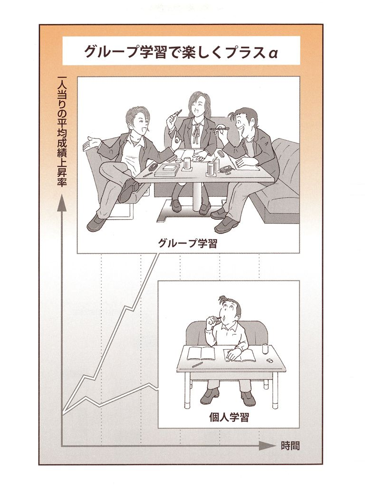
協力が成果を生むグループ学習のポイント（１）
人の作ったカード、ノートは遠慮なく見せてもらう
同じところを勉強していても、人によって見ているところは違います。
人のノートやカードを見せてもらうことは、それだけ多くの視点から学習することになります。
自分がよくわからなかったところが懇切丁寧に説明されていたり、意外な視点からの理解が挿入されていたりなど、意外な発見も多いのです。
まったくノーマークだったところが大切だったということも多々あります。
あまりたくさんのノートを集めると、玉石混淆になり、混乱を生むことにもなりかねませんが、それは見てから選り分ければいいことです。
まずは、カードやノートを人と交換する習慣をつけておけば、それが一石五鳥くらいの効果を生むことも、たまさかではありません。
いずれ人と交換するものだと思えば、苦心してノートやカードを作るにも張り合いが出るというものです。
協力が成果を生むグループ学習のポイント（２）
ノートを分担して取る
何気なく見ていたテレビドラマに、わが意を得たりと思ったことがありました。
落ちこぼれ高校生を集めて東大合格を目指す熱血教師の話だったのですが、その勉強法が、じつに的を射たものだったのです。
それは、１つの教科を分野ごとに各生徒に割り振り、そこだけを徹底的に勉強させるというものでした。そうして、それぞれが割り振られた分野のエキスパートになったうえで互いに教えあえば、ひじょうに効率的だというわけです。
人に教えると思うと、責任感が芽生えます。それに、仲間に見くびられたくないという見栄や意地もあることでしょう。
そうした感情があいまって意欲が増し、一人で勉強するときよりはるかに気合を入れて勉強することになるのです。
教科ごとにノートを分担して取るというのも一法でしょう。やり方はどうでも、分担するというところがミソです。
頭のよい超勉強術 18
人の頭脳を活用する
◎勉強も人から盗むもの
「師匠の味を盗む」「師匠の芸を盗む」――。料理や芸ごとの世界では、技は「習う」ものではなく、見て「盗む」ものだというのが常識ですが、これは、勉強にも通じます。
「勉強する」ということを小難しくいえば、ある情報をインプットして自分のものにしてからアウトプットするという、人間がものを学習するときの典型バターンを意識的に操作することです。
他人の知識を「盗む」とは、要するに、他人がすでにインプットして噛み砕いたあとのアウトプットを利用させてもらうということです。勉強に、これほど手っ取り早い方法はありません。
ＰＯＩＮＴ
人の勉強成果をモノにすれば勉強がはかどる、身につく！
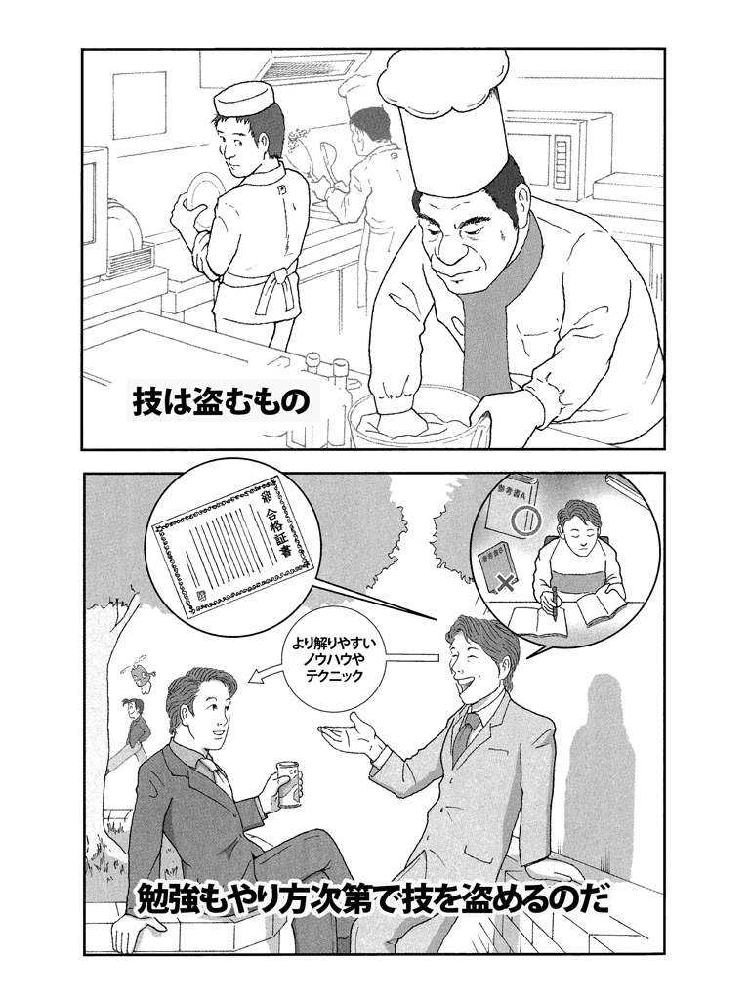
人の勉強成果をうまく取り込むポイント（１）
成功談よりも失敗談を聞く
「勝ち組」「負け組」、という言葉が当たり前になっている昨今、成功者のノウハウを説いたビジネス書が、以前にもまして巷にあふれています。
しかし、「聞かされた儲け話のとおりにやってうまくいった人はいない」というように、成功者が成功したところばかりを聞いてそのとおりにやっても、おそらく、うまくはいかないことでしょう。
それは、成功談というのは、往々にして結果だけに重点が置かれ、その過程が軽視されがちだからです。
受験や資格試験の専門誌にも、よく「私はこうして難関を突破した」というような話がありますが、もし先輩の話を直接聞く機会を得たら、その成功の陰にあった失敗談を重点的に聞くことをおすすめします。
成功の途上で直面した失敗には多くの教訓が含まれているものです。誰もが犯しがちな失敗や意外な落とし穴への予防策を練る、最良の道標となってくれることでしょう。
人の勉強成果をうまく取り込むポイント（２）
わからないことは「平凡な成功者」に聞く
よく、アメリカ育ちの人は英語を教えるのが苦手だといいます。英語を母国語とする人は感覚的に体得してきているため、文法の法則を論理的に説明できないことが多いからです。
スポーツでも「名選手かならず名コーチならず」というように、何にせよ、相手が「難しい」と思っていることを実感として理解できなければ、たいていは、じょうずに教えることはできません。
もちろん、これは勉強にも同じことがいえます。
世の中には、なぜかものの理解が速く、労せずして勉強をモノにしてしまう種類の人間がいるものです。そういう人に教えてもらおうとしても、おそらく、こちらの弱点もろくに伝わらず要領を得なかった、というのが関の山でしょう。
だから、わからないことを聞くときは、自分と同じ悩みを通過してきた人、すなわち天才ではないが成功した「平凡な成功者」に聞くに限ります。
そういう人なら、何がわからないのかを瞬時に理解し、的確に説明してくれることでしょう。
頭のよい超勉強術 19
覚え方を考えながら覚える
◎考えること自体が記憶に直結する
世の中にはじつにさまざまな記憶法がありますが、どれも万人に当てはまるわけではありません。
結局は、必要に応じて、覚える本人がもっとも適当な覚え方を編み出すのが一番です。
となると個々のセンスがモノをいうことになりますが、人に教えたくなるような〝名作〟が生まれなくても、気にすることはありません。なぜなら、覚えなくてはならない事柄を前にして、あれこれと覚え方を考えること自体が、すでに記憶のプロセスになっているからです。
頭をひねるほど、頭に入る。じつは、それこそが最良の記憶法といっていいでしょう。
ＰＯＩＮＴ
覚えようと知恵を絞れば勉強がはかどる、身につく！
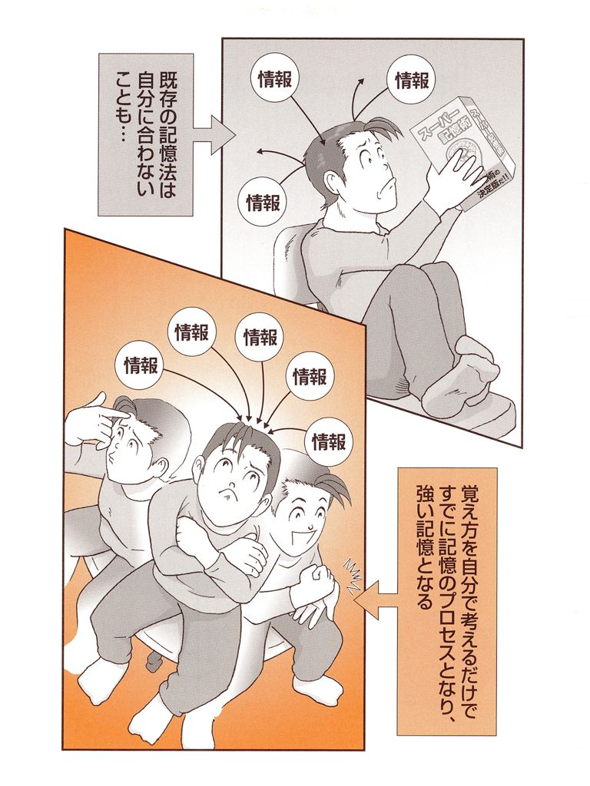
知識を楽しくモノにする覚え方のポイント（１）
知識を奇抜な連想に結びつける
覚えるために頭をひねることこそが最良の記憶法といっても、頭の「ひねりどころ」はあります。１つは、奇抜な発想に結びつけるという方法です。
つまらない酒落を考えたり、意味もなくもじってみたり、まったく奇想天外でシュールな空想を思い浮かべながら考え出したら、キリがありません。
人の脳とは、その持ち主同様、自分勝手なものです。最初は素直に覚えるべきことを覚えていても、次第に疲れ、退屈になってサボタージュを起こし始めます。
そこで、いかに脳に新鮮な刺激を送ってやる気にさせるか。暗記力は、ここで分かれるといっても過言ではありません。
頭を思い切りリラックスさせて、自由に発想を働かせてみてください。
「勉め強いる」意の勉強も、面白がってしまえば、いくらでもスイスイ頭の中に入ってくるものなのです。
知識を楽しくモノにする覚え方のポイント（２）
覚えたい内容を使って一連の「物語」を作る
連鎖視覚化法と呼ばれる暗記法があります。
たとえば、英語の「ＭＡＮ」と「ＰＥＮＣＩＬ」をまとめて覚える場合、男の人が大きなエンピツを肩にかついでいる絵を思い浮かべる、というような方法です。
あるアメリカの大学教授は、この連鎖視覚化法に、「物語を作る」という要素を加えて実験をしました。
何の脈絡もなくいくつかの単語や事項を並べ、１つのグループには、それらの要素で物語を作って覚えるように、もう１つのグループには、それぞれ勝手に覚えるように指示しました。
その結果、なんと前者は後者の７倍もの記憶力を示したというのです。これを活用すれば、前項同様、サボタージュを起こし始めた脳にも、さらに記憶させることができることでしょう。
複雑な化学式や円周率なども、記号や数字を身近なものに置き換えた上で物語を作れば、順序を間違えることなく覚えられます。
頭のよい超勉強術 20
自分の感覚に置き換える
◎身近に感じられればラクラク覚えられる
物事を、教科書や参考書に書いてあるとおりに覚えようとしても、なかなかスンナリとはいきません。
そういう類の本は、どうしても抽象的な表現になりやすく、抽象的な表現は、私たちの生活実感からは程遠いものが大半で、イメージが浮かびにくいからです。
つまり、教科書や参考書は、いくら言葉は簡単でも、しょせん、難しいことを難しくいっているにすぎないのです。
ならば、好き勝手に自分の感覚に置き換え、実感とともに覚えたほうが、ずっと効率よく覚えられるというものです。
ＰＯＩＮＴ
何でも置き換える空想力で勉強がはかどる、身につく！
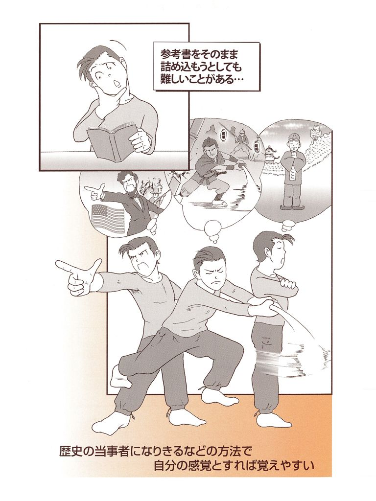
複雑なこともラクラク覚えられる空想力のポイント（１）
日常に関連づけて考える
アメリカの小学校で、ある実験が行なわれたことがあります。11週間、クラスから任意に選んだ子ども６人に対してだけ、すべての学習内容を日常生活に関連づけて教えるというものです。
６人の子どもたちは「子どもの町」の住人になり、それぞれ、郵便配達、医者、消防士などの役割を決め、毎日の勉強がドラマの一場面になるように構成されました。地理の時間は、「町」の飛行機がどういうルートで飛んでくるかを調べ、書き取りの時間は、パーティへのお礼状を書きます。
そうして11週間後、クラス全員に問題解釈能力を試すテストをしたところ、「町」の住人になった子どもたちが、軒並み高い点数を取ったのです。
このことからも、現実に似た空間を設定して、覚える内容を肉体化させると、記憶が強化されるとともに、理解も深まることが、よくわかります。
何事も、「机上の空論」である限りはつまらないものですが、いざ現実味をともなうと、とたんに面白くなるものなのです。
複雑なこともラクラク覚えられる空想力のポイント（２）
当事者になりきって感情移入する
架空の物語を作るのも一法ですが、歴史など、ほんとうに「物語」がある場合は、当事者になりきって感情移入するのも一法です。
たとえば、幕末なら、坂本竜馬になりきり、次に新撰組の近藤勇になりきり、はたまたその時代の名のない一般市民になりきり、などと、違った立場の人間に感情移入すれば、二重、三重の楽しみになるでしょう。
「１１９２（いい国）つくろう鎌倉幕府」などと覚える方法もありますが、源頼朝をはじめとしたさまざまな人物に感情移入すれば、ぐんと記憶の定着率も理解度も高くなります。
前に出した奇抜な発想といい、当事者になりきるこの方法といい、このように、自分のあやつるイマジネーションの世界が豊かなほど、「覚える」という勉強は楽しいものになります。
一般には苦しいと感じられがちの暗記も、イメージの働かせ方次第では、いくらでも面白くできるものなのです。
頭のよい超勉強術 21
「目、手、口」を総動員して覚える
◎目で追うだけでは頭に入らない
ものを覚えようというときに、ただ黙読するだけでは刺激がすくなく、なかなか頭にインプットされません。でも紙に繰りかえし書けば視覚と同時に手の動きが、声に出せばくちびるの感じや舌の動き具合が、ダイレクトに頭に届きます。
英単語や年号といった細かい事柄はもちろん、何を覚えるにも、断然、手や口のほうが信頼できます。
せっかく、こうした優れた「記憶ツール」があるのですから、活用しない手はありません。「見る、書く、声に出す」、つまり「目、手、口」を総動員すれば、単なる黙読の３倍の効果が期待できるのです。
ＰＯＩＮＴ
手や口も使えば勉強がはかどる、身につく！
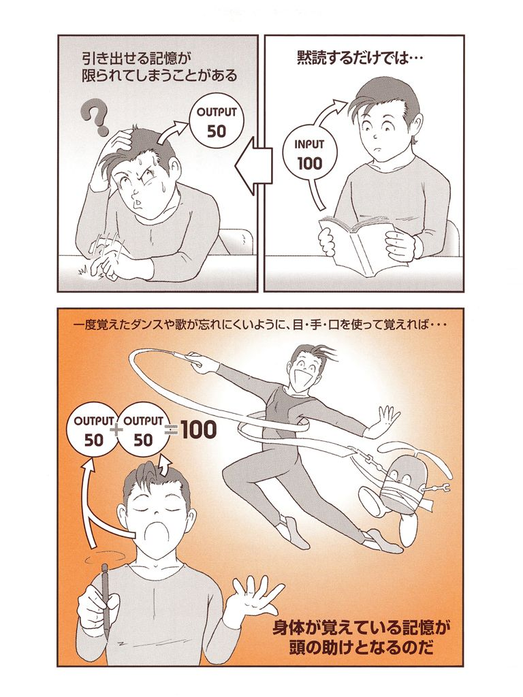
「体」を使って覚えるポイント（１）
手まね、身振りで感情を込めて覚える
言葉のわからない外国に行くとなると、一生懸命、現地の言語を勉強する感心な人もいますが、実際に行ってしまえば、身ぶり手ぶりで事が済んでしまうことがほとんどではないしょうか。
つまりは、それだけ身ぶり手ぶりには、人に訴える力があるということです。
そもそも人間の進化の過程を見ても、手は、意志伝達の手段として、口よりも先に使われていました。手は、いわば人間のコミュニケーションの、もっとも原始的な手段というわけです。
そう考えれば、言葉がわからなくても身ぶり手ぶりでなんとかなってしまうというのも、じゅうぶん、納得がいきます。
ものを覚えるときも、そうした身ぶり手ぶりを加えれば、頭にインプットされやすくなります。
ただ机に向かって読むだけではなく、立ち上がって歩き回りながら手を振り、首を動かすなど、体全体で表現しながら覚えれば、より印象的に、ハッキリと覚えることができるのです。
「体」を使って覚えるポイント（２）
読み「１」に対して暗誦「４」がいい
ものを覚える際のもっとも効果的な読みと暗誦の黄金率は、ズバリ「１：４」です。これはゲイツという学者の実験によって明らかにされました。
16の無意味なつづりを覚えてる９分間のうち、読みと暗誦に当てる時間の割合を、「すべて読み」、「読み３：暗誦２」、「読み２：暗誦３」、「読み１：暗誦４」の４種類に分けました。その結果、直後の記憶量が、「すべて読み」の場合は35パーセントだったのに対し、「読み１：暗誦４」の場合は74パーセントと、もっとも多かったのです。
しかも、４時間後に調べた際の定着率も、「全部読み」はたったの15パーセントだったのに対し、「読み１：暗誦４」は48パーセントと、やはりもっとも高いということもわかりました。
つまり、暗誦には直後の記憶力を高めるだけでなく、記憶を定着させる力もあるということです。
もう、むやみに黙読に時間を割くのはやめて、一度読んだらあとは声に出して覚えたほうが賢明といえるでしょう。
頭のよい超勉強術 22
状況を記憶の味方につける
◎覚えたときの状況から記憶をたどる
記憶というのは不思議なもので、それ単独では思い出せなくても、ほかの記憶から呼び覚まされるというのは、よくあることです。ものを探しているときに、闇雲に探すよりも、それを最後に使った状況を思い出しながらのほうが見つかりやすいのは、その典型例でしょう。
これを記憶術に取り入れたのが、「呼び覚まし記憶術」です。見えたもの、聞こえたものと一緒に覚えておくのです。
こうしておけば、いざ忘れてしまったときでも、覚えたときの状況から記憶の糸口を導き出すことができます。
この記憶術なら、うるさい音も、見苦しい光景も、即、糸口をつくる味方になってくれることでしょう。
ＰＯＩＮＴ
「呼び覚まし記憶術」で勉強がはかどる、身につく！
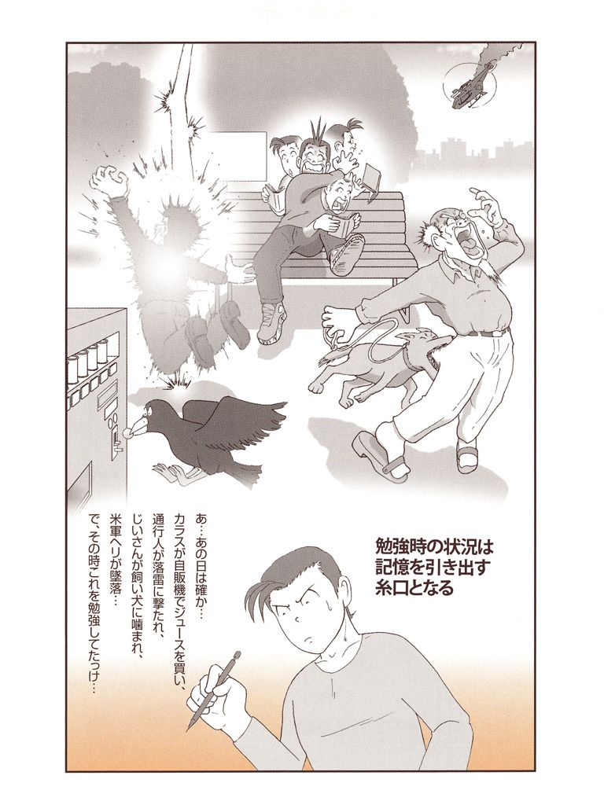
状況が糸口になる「呼び覚まし記憶術」のポイント（１）
自分の通勤・通学路に結びつける
歴代天皇や歴史的出来事、法律の条項など、順番が肝心なものを覚えるときには、いつも変わらぬ順序で並んでおり、かつ自分が絶対に忘れないものと結びつけて覚えると忘れにくくなります。
通勤・通学路などは、その好例でしょう。角の酒屋は、その先の信号は、駅の改札は、などと、順路にあるさまざまなポイントと覚えるべきものを、イメージで結びつけて覚えていきます。
いくら自信を持って覚えていても、何が起こるかわからないのが、本番というものです。
緊張のあまりに頭が真っ白になり、絶対に忘れるはずのないことが、なぜか思い出せない。思い出せずに焦り、焦るほどにますます思い出せなくなる......。
ただ順を追って丸暗記する記憶術にプラスαを加えて覚えるのは、こんな悪夢を防ぐ予防線を張るためでもあるのです。いつもの見慣れた道のりを思い出すことは、平常心を取り戻すうえでも大いに役立つことでしょう。
状況が糸口になる「呼び覚まし記憶術」のポイント（２）
重要ポイントはいつもと違う場所で覚える
周囲の状況と覚えるべきことを一緒に記憶する、という呼び覚まし記憶術にもうひとワザ加えるなら、絶対に忘れたくない重要ポイントは勉強場所を変えて覚える、というのも一法です。
いつもの部屋から飛び出し、バスや電車に飛び乗ってもいいでしょうし、近所の公園に行ってもいいでしょう。慣れない場所で最初は落ち着かないかもしれませんが、ふだんと違うということ自体が、記憶の糸口になります。
公園のベンチで参考書を読んでいたら犬にほえられた、座るところを探しているそぶりのカップルに嫌な視線を送られた、噴水の水がかかった......。
仮にこうした不愉快な思いをしたとしても、「そういえば、これを覚えていたときは、こうだった」というように、そこから記憶が呼び覚まされるわけです。
要するに、「呼び覚まし記憶術」で肝心なのは、記憶すべき内容をすべて暗記しようとせず、記憶を呼び覚ます手がかりを持つことなのです。
頭のよい超勉強術 23
復習は９時間以内にする
◎覚えているうちに復習するのがミソ
学習効率を上げるには復習が大切です。人は一度だけですべてを記憶することはできないからですが、そもそも人は、覚えたことをどのくらいで忘れてしまうものなのでしょうか。
ある実験によると、覚えた直後に記憶は急激に失われるのですが、そのスピードは、９時間後を境に次第に緩やかになります。つまり、覚えてから９時間後の時点で、その後も残る記憶と、そのまま忘れてしまう記憶とが選り分けられるということです。
したがって、学習内容を確実に頭に定着させるには、勉強後９時間以内に復習するのがもっとも効果的ということになるでしょう。
ＰＯＩＮＴ
学習効率を上げる復習法で勉強がはかどる、身につく！
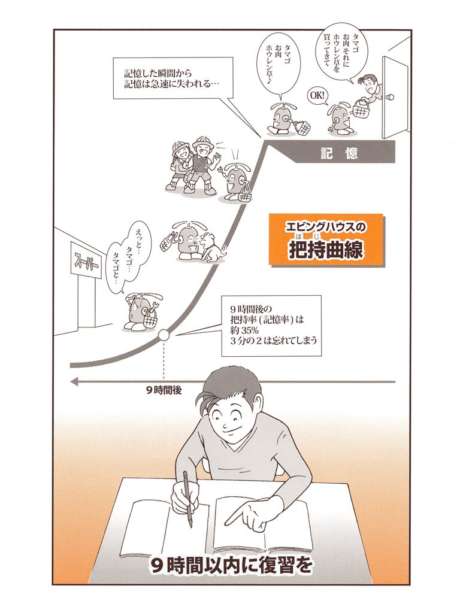
学習効率を格段に上げる復習法のポイント（１）
問題集は「勉強したばかり」のところをやる
同じ頭脳を使うことでも、ゲームは楽しく、勉強はつらい。考えてみればおかしなことです。
その大きな理由の１つは、一般的に遊びは、勉強と違って、その作業の結果や成果がすぐにわかるという点でしょう。
といっても、復習の仕方次第では、この原理を勉強にも見出すことができます。
それには、勉強した内容を問題集などで復習する際、かならず勉強したばかりのところを解くことです。習ったところ、覚えたばかりのところをやるのですから、スラスラできて当たり前です。
これならいかに「勉め強いる」勉強でも、楽しくないはずがありません。そして、このように勉強した成果がすぐ感じられる楽しさこそが、勉強への意欲を高め、学習効果を上げるのです。
問題集は自分の実力を試すものなのだから、これは邪道だ、意味がない、と思えるかもしれませんが、なるべく楽しくやったほうが、よほど勉強の効率は上がるというものです。
学習効率を格段に上げる復習法のポイント（２）
違う教材で復習する
記憶に反復が大切なのはいうまでもありませんが、ただ同じことを何度も読むだけでは、脳は次第に飽きてきてしまいます。
この「飽き」は、記憶の定着の大敵です。脳は新鮮な刺激を求めるものなので、内容がマンネリ化すれば、何度、反復してもまったく意味がなくなってしまうのです。したがって、学習の方法も、まったく同じものを繰り返すのではなく、同じものを違ったかたちで与えることが必要です。
たとえば、歴史の勉強でいえば、教科書で習ったことを、次は地図帳でたしかめ、次は別の参考書を読み、さらに次は問題集をやる、といった具合です。もちろん、分野によって方法はさまざまでしょう。こうして内容的には同じでも、そのつど手を変え、品を変えてインプットすれば、必要とされる思考パターンも違ってきます。
頭脳はまるで新しいものに触れるかのように敏感に反応し、スポンジのように内容を吸収し、理解度も高まっていくことでしょう。
頭のよい超勉強術 24
体をリラックスさせて能率を上げる
◎無駄な筋肉はつかわない
勉強するのに適した姿勢は、じつは人それぞれです。
学生がひじょうに勉強熱心な欧米では、それぞれが思い思いの姿勢で授業を受けています。
しかし、けっして怠けているのではなく、そこから鋭い質問や議論が活発に生まれ、交わされているのです。
故ケネディ大統領も、医者の指示で、ホワイトハウスにロッキングチェアを持ち込んでいたといわれています。
すべての理由は姿勢にある、とまではいいません。
ただし、少なくとも、自分が一番リラックスできる姿勢が勉強の能率を上げることは、たしかでしょう。
ＰＯＩＮＴ
適度なリラックス状態で勉強がはかどる、身につく！
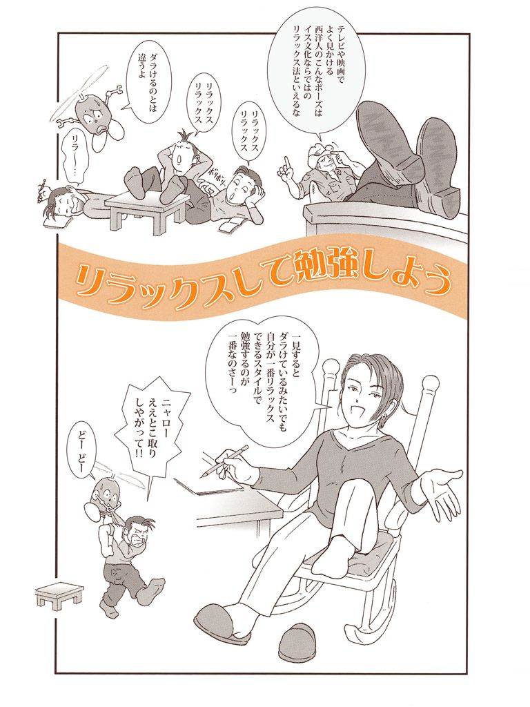
ちょうどよいリラックス状態を保つポイント（１）
使わない筋肉をリラックスさせる
「リラックスする」と一口にいっても、じつは、わかるようでよくわからないのではないでしょうか。生理学的に説明すると、「リラックスする」とは、手、足、首などの「随意筋」の緊張をほぐすことを意味します。
もちろん、横になって体全体を休めることもリラックスであり、ひじょうに効果的ですが、勉強をしながらでもリラックスすることは可能だということです。
使わない筋肉は緊張していないほうが、使うべき筋肉を効率的に使えます。当然、使うべき筋肉のみが働いていれば、すぐに疲れてしまうこともありません。
ですから、たとえば、字を書くときは、エンピツを持っている利き手の筋肉だけを使い、それ以外の筋肉、たとえば利き手の反対側の手や足をリラックスさせるようにします。こうして必要な筋肉以外を休めることによって、精神を集中し、無駄な労力を省くことができるのです。
ちょうどよいリラックス状態を保つポイント（２）
ちょくちょく姿勢を変えると疲れにくい
勉強の大敵は、「飽き」による能率の低下です。そして、その「飽き」が、何からもたらされるかというと、「固定化した姿勢」が理由の１つとして挙げられます。
というのは、長いこと同じ姿勢をつづけていると、血流の流れのパターンが固定化し、体全体のリズムがマンネリ化してしまうからです。
とくに最近は、パソコンを使って勉強することが多くなりました。パソコンは目を酷使しますし、どうしても一定の姿勢に固まりがちです。
したがって、パソコン世代には、とりわけ意識的なリラックスが必要でしょう。
そのためには、姿勢を小まめに変えるよう心がけることです。本来、人の体は、疲れてくれば自然とモソモソと姿勢を変えるものですが、それをすこし意識的にしてみるのです。
足を投げ出したり、のけぞったりと、姿勢を変えれば、脳にも新鮮な刺激が加わって能率が回復します。
頭のよい超勉強術 25
疲れたら〝積極的に〟休む
◎ダラダラするだけではない「休み方」のコツ
一仕事終わるたびに、軽い体操をしたり、部屋の中を歩き回ったりする人がよくいます。
一見、疲労回復にはなっていないような印象を受けますが、じつは、これはもっとも理にかなった休息法なのです。
たとえば左手を動かすと、反作用によって、疲れた右手の休息に寄与します。
こうした〝積極的な〟休息は、作業能率を60～70パーセントも高めるといわれています。
ＰＯＩＮＴ
「攻め」の休み方で勉強がはかどる、身につく！
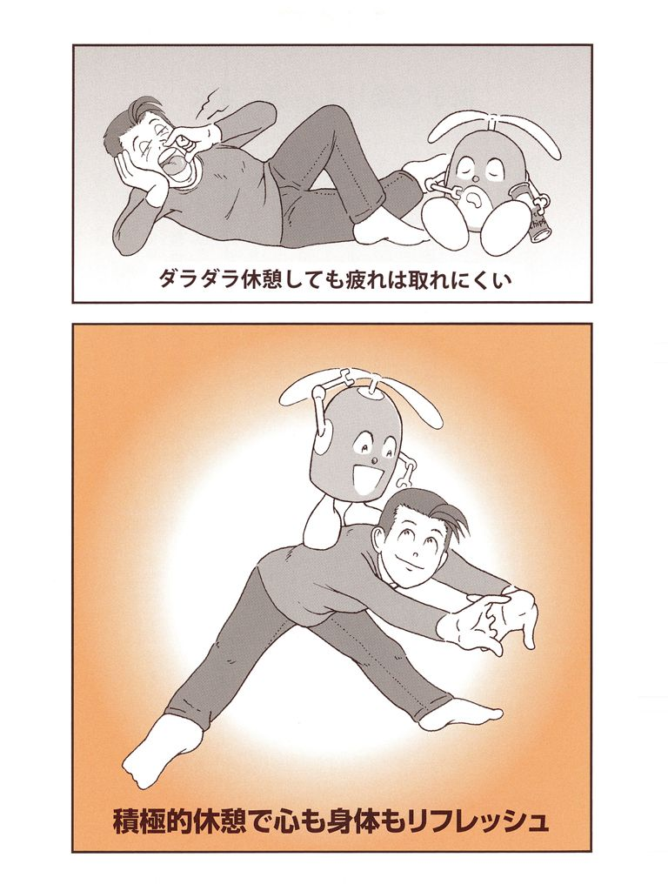
ダラダラしない〝積極的休み方〟のポイント（１）
椅子の周りを中腰で歩く
椅子に腰掛けた状態はひじょうに中途半端で疲れやすい上に、勉強には向かない「胸式呼吸」になりやすいという大きな欠点があります。
いまや、勉強といえば西洋式の椅子と机が主流になっています。
ところが、椅子に座った状態は、じつのところ、勉強にはあまり向いていないのです。
とりわけ、もともと地べたに座っていたところに西洋流の生活様式を取り入れた日本人は、無理な姿勢で勉強をしていることになります。
そこで、勉強に疲れたら、膝をすこし曲げた姿勢を取り、狭い歩幅で椅子の周りを２、３周回ってみてください。
これは、ある大脳生理学の権威がすすめる方法です。
いわば中腰で歩くということですが、こうすると、呼吸が自然に「腹式呼吸」になるので、体の疲れが取れ、集中力が回復するそうです。
ダラダラしない〝積極的休み方〟のポイント（２）
こまごまとした雑用をこなす
いくら勉強をしなくてはいけないとはいっても、日々の生活には、なおざりにできない雑務が山ほどあります。部屋の掃除、爪切り、靴磨き、それに一人暮らしならば炊事洗濯に、風呂掃除やトイレ掃除なども加わります。
こうした日々の雑務は、小まめにこなしていれば、それほど時間のかかるものではありません。
掃除といっても、つねに整理整頓を心がけていれば、さっと雑巾がけすればいいことですし、料理も、よほど凝ったものを作ろうと思わない限り、10分もあれば支度は整います。
そういうこまごまとしたことを休憩時間に持ってくれば、いい気分転換をしながら雑務も片付くので、まさに一石二鳥でしょう。
休憩時間に働くとは理不尽に思えるかもしれませんが、冒頭に書いたことを思い出してください。
ダラダラと無為に過ごすより動いたほうが休まることもあるのですから、これも、〝積極的休み方〟の知恵といえるのです。
頭のよい超勉強術 26
ちょっとのスキに一眠り
◎一眠りは勉強のニッチ産業
効率のいい勉強をするには、効率のいい疲労回復が欠かせません。
その１つが睡眠ですが、勉強と同様、睡眠も、時間的な長さより質のほうが大切です。
たとえば、ナポレオンは１日３時間しか眠らなかったといわれていますが、それは、ナポレオンが仕事の合間をみつけては、わずかの時間でも深く眠ることができたからだそうです。
そういう意味で、一眠りは勉強のスキを利用した〝ニッチ産業〟といえ、「疲れたな」と感じたちょっとした合間の一眠りが、驚くべき疲労回復効果を発揮するのです。
ＰＯＩＮＴ
「隙間睡眠」で勉強がはかどる、身につく！
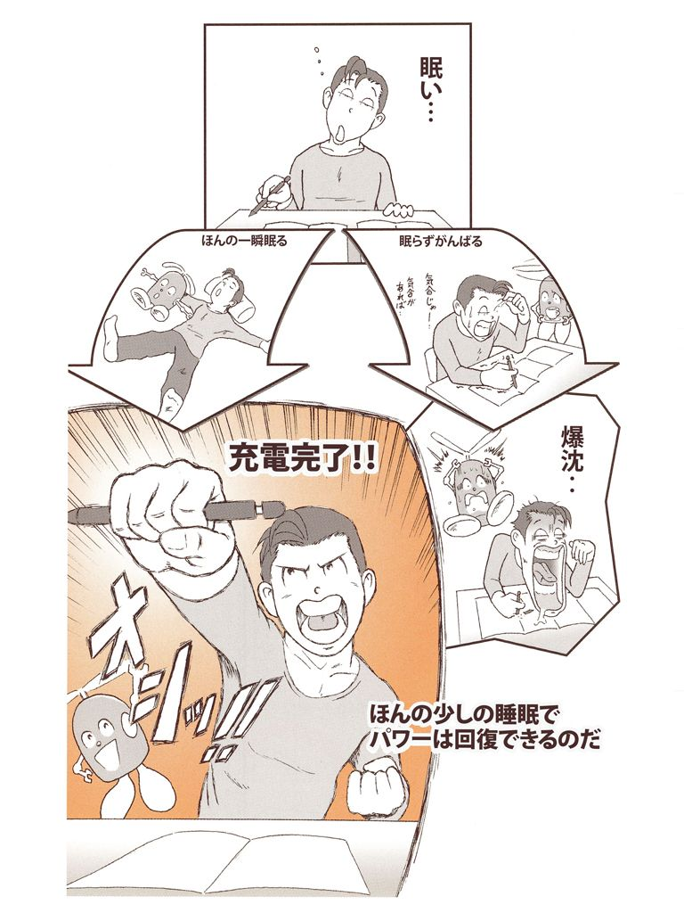
あっという間に疲労回復！「隙間睡眠」のポイント（１）
疲労を感じたら即、ゴロリ
長丁場の仕事にかかるとき、私は、まず寝床の近くに机を持っていきます。そうしておいて、仕事に疲れたときはさっと横になり、10分間ほど眠ってしまうのです。
その効果はてき面です。この短い睡眠が、何度、滞った頭をすっきりとさせ、ふたたび仕事に向かう活力をもたらしてくれたか知れません。
ほんの10分間だけ眠ることなどできないと思うかもしれませんが、ほんとうに頭が休養を必要としていれば、横になったとたんにコトリと眠りに落ちてしまうはずなのです。
もうすこしがんばって一区切りつけてしまおうと思っているのに、頭がボーっとする。気がついたら座ったまま舟を漕いでいて、目の前のノートにはエンピツで何やら怪しげな図形が描かれている......。
こんなときは、いくらがんばってもはかどりません。速やかに横になり、タイマーを10分後にセットして一眠りすることです。
あっという間に疲労回復！「隙間睡眠」のポイント（２）
通学・通勤の車内で一眠り
車の助手席で、運転している人を気遣って起きていなくてはと思いながらも、ついつい眠り込んでしまったことは、誰にでもあるのではないでしょうか。
とくに眠たかったわけではないのに、どうして車に乗ると気持ちよく眠ってしまうのでしょうか。それは、車の揺れが、ちょうど揺りかごのように心地よく、誘眠剤になるからと思われます。
また、元来、人間の脳は一定のリズムで繰り返される刺激に弱く、比較的短時間のうちに全体として働きが低下し、眠りに入りやすい状態になります。これには、ガタンゴトンと規則的な電車の音と揺れが当てはまるでしょう。
そう考えると、電車やバスの中ほど、ちょっとした合間の一眠りに適している環境はありません。
寸暇を惜しむ気持ちはわかりますが、通勤や通学の車内では半端に参考書など開かず、眠りに適した環境に身を任せたほうが理にかなっているといえるのです。
頭のよい超勉強術 27
視覚・聴覚を使って集中力を高める
◎イライラ・モヤモヤはもう怖くない
やる気満々で机に向かっても、どうも集中できないというときというのは、誰にでもあるものです。
「今日はダメみたいだからやめた」と放り出してしまっては、メリハリなどあったものではありませんし、第一、試験が迫っている、どうしても今日中にここまで終わらせたい、という場合は、そう呑気でもいられません。
そんなときにいいのは、勉強にかかる前のほんの１、２分で、視覚・聴覚を使って集中力を取り戻す訓練法です。
これさえ知っておけば、心を惑わせるイライラ・モヤモヤは、もう怖くありません。
ＰＯＩＮＴ
その場でできるから、すぐに勉強がはかどる、身につく！
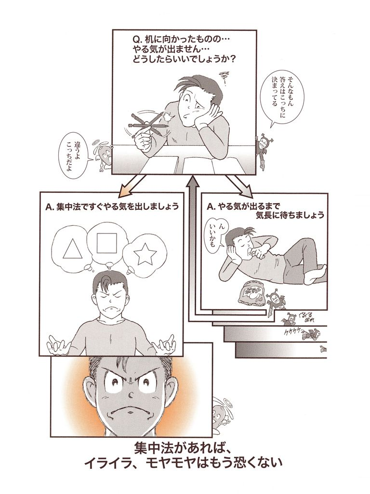
その場でできる精神集中法のポイント（１）
身近な小物に注意を集中させる
まず、エンピツ、消しゴム、ノートなど、何か身近にある小物を、飽きるまでじっと見つめます。
次に、目を閉じて、いままで見ていたものに精神を集中させ、その形状、色、長さなどを思い描きます。対象から思いが離れはじめたら、すぐに目を開きます。ここで30秒間中断し、また別のものを対象に同じことを繰り返します。
おそらくはじめは８秒間程度しかつづかないと思いますが、一週間もつづけるうちに３、４分くらいは軽く持続するようになるといいます。
これをきっかけに、頭脳活動に入るのが比較的スムーズになるのです。勉強に入る前のウォーミングアップ代わりにつづけるといいでしょう。
その他、視覚を使った訓練には次のようなものもあります。
まず、一瞬だけ空中に点を思い描きます。さらにその点を伸ばして直線にする、円を描く、星を描く、というようにイメージを複雑にしていって、集中している時間を伸ばしていきます。
その場でできる精神集中法のポイント（２）
ひとりごと
子どもは、よく、ひとりごとをいいながら遊びます。
こうして自分の考えていることをどんどん言葉にして、その言葉に刺激されて自分の行動を進めているのです。
このつまりひとりごとの効果は、子どもに限らず、私たち大人にも、当てはまることです。
たとえば何かを覚えようとしているとき、集中していれば頭の中の空想だけでもこと足りますが、集中力が切れていると、そこにいろいろな雑念が入って専念できません。
そういうときに、ひとりごとの効果はてきめんです。
少々気恥ずかしいかもしれませんが、すこし大きい声でやればいっそう効果的です。
自分の言葉が自分に跳ね返ってきて、ダイレクトに頭に届きます。
こうなると、もはや雑念の入る余地などありません。
頭のよい超勉強術 28
自分を追い込んでやる気を高める
◎せっぱつまったときこそ、実力以上の力が出せる
仕事をしていると、時間的、精神的に追い詰められたときほど不思議といつも以上の力が出て、結局はなんとかなってしまうというのは、よくあることです。
「火事場の馬鹿力」ともいうように、人は土壇場になると、ふだんからは想像もつかないような力を発揮するものです。
これを逆手に取って、自分をあえて追い込むようにすれば、勉強は格段にはかどるようになることでしょう。
リラックスするのも大切ですが、それが高じて心の底からダラけてしまっては仕方がありません。勉強には緊張感も必要なのです。
ＰＯＩＮＴ
適度な精神的緊張で勉強がはかどる、身につく！
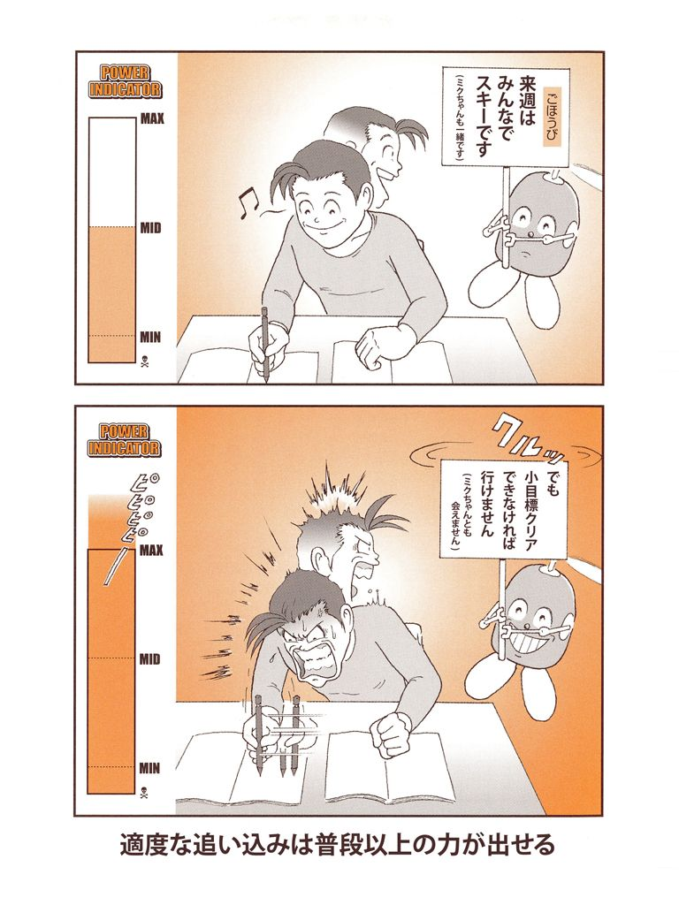
自分を追い込む「やる気倍増計画」のポイント（１）
ノートやカードは人にあげてしまう
マンガに、受験生が必死の形相で英語の辞書を破って食べるというシーンが面白く描かれているのを見たことがあります。
そんなことをしても覚えられるはずがないというのはたしかですが、「自分を追い込む」という点で、この描写にはどこかリアリティを感じました。というのも、これは、何かを記憶するにあたって「心がまえ」がいかに大切かを物語る描写だったからです。
辞書を破ってしまえば、もう見ることできない。だからどうしても覚えなくてはならない。
この心がまえが、実際に記憶を確かなものにするというわけです。
辞書ならば本屋に同じものが並んでいますが、この世にたった１つの手製のノートやカードならどうでしょうか。それらを、最終的には人にあげてしまうことにするのです。
となれば、否が応でも、集中して覚えようとすることでしょう。
自分を追い込む「やる気倍増計画」のポイント（２）
遊んでしまった日はかならず勉強で締めくくる
人間というのは不思議なもので、あとで困るとわかっていても、つい自分の好きなことに時間を費やしてしまうものです。おそらく、やりたいことを先にやってしまう、という人のほうが多いのではないでしょうか。
しかし、周到な勉強計画に背いて遊んでしまったときも、そのあとの気持ちの運び方次第では、反対に、勉強がはかどる追い風とすることができるのです。
「もう時間がないから、勉強は明日からがんばればいいや」などと考えるのは、たいへんもったいないことです。そこで「今日中にここまで仕上げるはずだったのに時間があまりない」というふうに気持ちを持っていければ、その切迫感が、すごい集中力を生み出すからです。
もちろん、計画通りに勉強するのが本筋です。しかし、かならず勉強で１日を締めくくると心得ておけば、遊んでしまった不覚も勉強のチャンスに変えることができるのです。
頭のよい超勉強術 29
ストレスのもとは即座に取り除く
◎放っておくほど増幅するから恐ろしい
人は、意外と小さなことにストレスを感じるものです。
もちろん、わき目もふらずに集中していれば、それはまったく取るに足らないことでしょう。
しかし、集中できないということは、当然ながら、その「何か」がストレスとなっているからです。たとえ小さなことが原因でも、ストレスは放っておくと巨大な〝心のガン〟に成長する危険があります。
ならば、ストレスのもとは即刻、取り除くに越したことはありません。
病気と同じように、ストレスも、早期発見・早期治療が大切なのです。
ＰＯＩＮＴ
ストレスフリーの心なら勉強がはかどる、身につく！
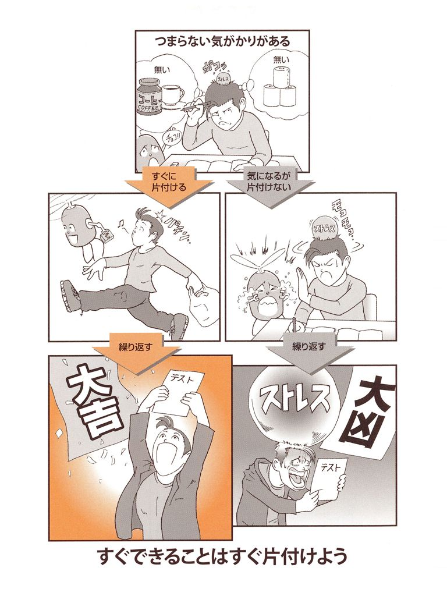
小さなことも見逃さず、心をストレスフリーに保つポイント（１）
身の回りの不満要因を排除する
ストレスが勉強の大敵であることは、いうまでもありませんが、自分がストレスを感じる原因については、意外と多くの人が無自覚でいるのではないでしょうか。
なぜかイライラする。どうしてかわからない。そうなるとますますイライラする......。このストレスの悪循環にはまってしまうと、抜け出すのは至難の業です。
原因はわからないけどイライラする、という場合は、まず、身の回りを見渡してみてください。
消しゴムが使いにくい、エンピツの濃さが気に入らない、キイキイ椅子がきしむ音が気になる、時計の針の音が大きいなど、ほんのささいなことが気になっていたと気づくかもしれません。
それを改善するだけで、意外とストレスは雲散霧消してしまうものなのです。
こうしてすぐに原因を突き止め、撃退する習慣をつけることが、ストレスフリーの心への近道といえるでしょう。
小さなことも見逃さず、心をストレスフリーに保つポイント（２）
計画がくるっても、気になる雑事はすぐに済ませる
いくら長期的な計画を立て、それを達成するための１日の目標を地道に立てていても、それを邪魔する要因というのは、いくらでも出てくるものです。
親から用をいいつけられたり、光熱費を払いに行ったり、歯医者に定期健診に行かねばならなかったりと、生活には雑務がともなうものだからです。
仕事を持っている社会人なら、なおさら、さまざまなことがつねに付きまとうことでしょう。
前に、雑務は休憩時間に押し込んで、一石二鳥の「積極的休憩」にすればよいと書きました。しかし、どうしても気になるようなら、やはり、そのときに済ませてしまったほうがいいのです。
多少、１日の計画が狂っても仕方ありません。そこで「計画通りにやらねば」と我慢しても、勉強ははかどらず、ストレスは膨らむばかりと、いいことなしです。第一、勉強が滞ってしまうくらい気になっているのなら、先に済ませてからのほうが、より集中できるというものです。
頭のよい超勉強術 30
〝アガリ〟を手なずける
◎アガるのは心にエンジンがかかった証拠
人は誰でも、重要なことに直面したときには、それを乗り切ろうと心と体の準備をするものです。いわば、ふだん以上の力を出すために自然にウオーミングアップが始まるのです。
それが、〝アガリ〟です。
これは失敗の最大要因と思われがちですが、そうとは限りません。もし、そういうことがあるとしたら、アガリそのもののせいではなく、「アガっている自分」にうろたえてしまうからでしょう。
大事なところではアガって当然。そう理解したうえで、そんな自分を冷静に受け止めれば、アガリから失敗が生まれることはないのです。
ＰＯＩＮＴ
緊張を手玉に取る練習で勉強がはかどる、身につく！
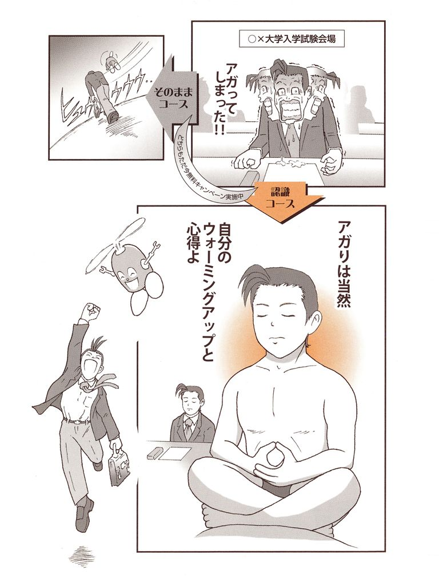
「アガっている」自分にうろたえないポイント（１）
イライラ・モヤモヤしたら息をゆっくり吐いてみる
「アガっている自分」にうろたえないためには、その場で手軽にできる気分転換法を知っておくと便利です。その１つに、次のような呼吸法があります。腹式呼吸で下腹がふくらむように息を吸い、できるだけゆっくりと吐くようにします。
こうすると、自律神経の活動が正常になり、心臓の負担もやわらげられて、心身がひじょうに落ち着いた状態になります。
それもそのはず、これは、精神統一法として医学的にも効果が認められている坐禅の、「呼吸数減少による調息法」という呼吸法なのです。
ただし、坐禅の方法とはいっても、端坐する必要はありません。椅子に座ったままでもできるので、勉強中に集中力が途切れてきたとき、イライラ、モヤモヤした気分になったときなどにすこし姿勢を正してやれば、いい気分転換にもなります。
ふだんからこういうクセをつけておけば、勉強がはかどるのはもちろん、本番でも無用に混乱せずにすむことでしょう。
「アガっている」自分にうろたえないポイント（２）
単純な筋肉行動を繰り返す
アガるのは重大事を前にしたときの心理的・生理的な準備運動ですから、本来は気にすることはありません。
しかし、「アガっている自分」に過度に反応してしまうと、頭の中が真っ白になり、とんでもない間違いを犯してしまいかねません。
やはり、アガリを簡単に手なずける方法は知っておいたほうがいいでしょう。
それには、単純な筋肉行動を繰り返すことです。
人間には、精神の緊張状態を、体のほかの部分の単純な作業によってやわらげようとする傾向があります。よく、イライラしたり緊張したりする場面で、しきりに貧乏ゆすりをする人がいますが、これも、そんな心理機制が無意識のうちに働いているということです。
いたずら書きでもかまいませんし、エンピツや消しゴムを手に取り、もてあそんでもいいでしょう。とにかく「過度に緊張していると感じたら何か単純な動きを繰り返す」と覚えておくことです。
多胡輝（たご・あきら）
１９２６年生まれ。東京大学文学部心理学科卒業。
現在、千葉大学名誉教授。多胡輝研究所所長。
心理学研究のかたわら、数々のベストセラーを生み出してきた。その豊富で斬新なアイデアを生み出す発想法は、多くの企業から注目され、想像性訓練など社員教育のための講演や研修でも高い評価を受けている。
著書に『頭の体操』（光文社）、『六十歳からの生き方』（ごま書房）、『多胡輝の心理学教科書』（ＫＫロングセラーズ）、『人を見抜く心理術』（日本文芸社）、『母親だけができる能力がつくしつけの知恵』（海竜社）など多数。
本作品の全部あるいは一部を無断で複製・転載・配信・送信したり、ホームページ上に転載することを禁止します。
本作品の内容を無断で改変、改ざん等を行うことも禁止します。
また、有償・無償にかかわらず本作品を第三者に譲渡することはできません。
●ゴマブックス『図解 頭のよい「超」勉強術』（２００５年11月10日 初版第１刷発行）に基づいて制作されました。
スイスイ受験術
いざ本番で実力以上の力を発揮するマル秘作戦
多湖 輝
目 次
一 楽して勝つにはこの手に限る！
１ 受験オンリーの生活は、受験にとって最大のマイナスである。
２ 志望校を選ぶには、おおざっぱでも〝人生プラン〟があったほうがよい。
３ 受験勉強の中から、一生のテーマが見つかることも少なくない。
４ 興味が湧かないからといって、その科目に対する能力がないということにはならない。
５ 勉強に気が乗らないときは、一時、勉強から離れてみる。
６ やる気は、受験勉強に意味を見出すことから起こる。
７ 学校の成績が悪くても、合格のチャンスはだれにでもある。
８ 「迷い」は、向上心の表われである。
９ 劣等感に悩んだときは、自分の長所を列記してみる。
10 劣等感に悩むのは、優秀な証拠である。
11 自信を失ったときは、鏡に自分の顔をうつしてみると、自信が回復する。
12 何もかもよく知っているように見える人ほど、本番ではできが悪い。
13 大学があなたをためすのではなく、あなたが大学をためすのだと思うと気が楽になる。
14 ほかの受験生をよく観察すると、自分の欠点がわかってくる。
15 外向性の人は、内向性の友だちといっしょに受験時代を過ごすとよい。
16 ガールフレンドは、受験勉強の励みにこそなれ妨げにはならない。
17 激烈な受験戦争に勝ちぬくのは、強靭な体力があってこそである。
18 周囲の期待を気にしすぎると、かえって期待を裏切ることになる。
19 受験勉強も、無理に楽しいものだと思い込むと、自然に楽しくなる。
20 不得意科目は、かえって得意中の得意科目になる可能性がある。
21 大学のキャンパスヘは、受験期以外もときどき行って、親しんでおく。
22 まじめに勉強したという自覚が持てさえすれば、それだけで上位三分の一にはいれる。
23 受験勉強は、青春期の人格形成にも役立つ。
24 合格後の〝楽しい生活〟を考えながら勉強すると、受験勉強も苦でなくなる。
25 落ちたときの不名誉という、より大きな苦痛を考えれば、受験の苦も苦でなくなる。
二 これがゴールへの最短距離だ！
26 志望校を早く決めることが、合格への第一歩である。
27 大学は、学部でなく講座や先生で選ぶ。
28 受験時に花形の学科でも、卒業時に花形であるとは限らない。
29 新しく受験科目をふやした学部は、穴場である。
30 一流有名大学ほど、客観式問題を出す確率が高い。
31 三年ぐらいのサイクルで、出題の傾向が同じになる。
32 その学問領域で新説が出たときや、学説に変化があったときは注意を要する。
33 同じ大学の中にも、はいりやすい〝アナ〟の学部がある。
34 出題の原典や出典が決まりきっている科目ほど、ヤマはかけやすい。
35 過去の入試問題の原典、出典は、できるだけ調べておく。
36 選択科目は、人気のない科目が意外な〝アナ場〟になることがある。
37 学習計画ができたら、家族や友人に実行宣言をする。
38 簡単に達成できる目標は、目標とは言えない。
39 計画は、破られるためにある。
40 生活全体のテンポを速くすると、問題解決の速度も速まる。
41 勝負ごとのような、あとを引く趣味は、短時間の気分転換には不適当である。
42 受験勉強に時間的余裕を与えすぎると、かえって打ちこめなくなる。
43 受験科目によって、机や部屋を変えると詰まったスケジュールも難なくこなせる。
44 解き方を習っていない問題でも一定時間考える習慣をつけると、本番での応用力がつく。
45 実戦にそなえるには、問題集の順序を無視して練習したほうがいい。
46 不得意科目を放っておくと、ほかの科目にまで〝不得意〟が伝染する。
47 不得意科目を克服するには、一年からの教科書の復習がもっとも近道である。
48 参考書は、自分の苦手な部分の比較検討で選ぶ。
49 視点の違った参考書を二冊以上使いこなしていくと、記憶の再生もしやすくなる。
50 一題練習するごとに、そのテーマで別形式の問題を予想してみる。
51 日ごろから、問題を自分でつくって解く練習をしておくと出題者の心理がわかる。
52 ふだんの学習では、時間の感覚を養うように問題をやる。
53 論述式の問題は、いくらでも自分でつくり、自分で練習できる。
54 志望校は、実力よりやや高くおくほうがよい。
55 なんでもいいから、得意な科目をまず一つつくるように心がける。
56 どんなに忙しくても、新聞と総合誌の見出しくらいは読むようにする。
57 社会や人生についての関心を日ごろから持つと、受験勉強でない受験勉強ができる。
58 幅広い読書が、本番で実力をフルに発揮させる。
59 史実や法則は、その内容を簡単にまとめた小見出しをつけて記憶すると本番でも忘れない。
60 部屋中にメモをはりつけて、場所や位置と結びつけて憶えると本番で思い出しやすい。
61 秋の虫の声を録音して、バック音楽として流すと能率がアップする。
62 全然勉強しないことも、有効な試験勉強法の一つである。
63 先輩のアドバイスが、かならずしも自分に適しているとは限らない。
三 直前こそ大幅得点アップできる！
64 寒い場所で勉強することに慣れておく。
65 不眠症には、「どのくらい眠らないでいられるか試してみよう」と思う逆療法もよい。
66 宿泊所は、試験場にあまり近いとよくない。
67 試験のまえの日になって、徹夜の詰め込み勉強をするのは逆効果である。
68 受験直前の「神だのみ」を否定するところから、ほんとうの自信が生まれる。
69 夜型を昼型に切り換えるには、一週間かかる。
70 試験が近くなったら、頭の中で自問自答する記憶強化法が適している。
71 試験の一週間まえから、試験の時間割に合わせて勉強すると本番での感じがつかめる。
72 試験の直前に、新しいものを憶えようとするのは逆効果である。
73 自分でつくった要点整理ノートこそ、直前に威力を発揮する。
74 模擬試験で間違った答案用紙は、最後のツメに役立つ。
75 「すべり止め受験」は、本番で意外な効果が出る。
76 直前には、記憶の手がかりになるものを再確認する。
77 せっぱつまったときは、機械的記憶も頭に残る。
78 直前でも効果の表われやすい暗記ものの勉強を通じて、読解力や推理力を増せる。
79 「かならず受かる」という信念を持つことが、合格への最短コースである。
80 試験の前日には、自分が合格した姿を思い浮かべてみる。
81 直前には、勉強以外のことでも毎日何か一つ得意なものをやってみる。
82 試験前日は、ふだんより早目に起きるとその夜は熟睡できる。
83 入試用の問題用紙に慣れておくことも、アガり防止に役立つ。
84 本番直前には、応用問題よりも、基礎問題の復習を徹底的にやる。
85 「もっと勉強しておけばよかった」と悔やむと、最後のツメが甘くなる。
四 試験度胸はこうしてつける！
86 受験票にはる写真は、ニッコリ笑ってうつす。
87 新しい服装は、本番でマイナスに働く。
88 受験票の写真は、当日の姿になるべく近いものにする。
89 受験当日は、不慣れなことは避ける。
90 準備は、ムダと思えるほど用意周到にしていい。
91 当日の朝、ダジャレを言いあうのも頭の回転を早めるのに効果的である。
92 試験場へは、かならず正門からはいるようにすると気力の充実に役立つ。
93 ほがらかな態度をとると、ほんとうにほがらかな気分になれる。
94 試験場での着席時間は、早ければ早いほど臨戦態勢が整う。
95 試験監督のアラさがしをすると気分が落ち着く。
96 試験官は自分が雇っているんだと思うと、威圧を感じなくなる。
97 他の受験生の真剣な顔つきを観察すると、自分はアガらずにすむ。
98 試験監督の冗談に笑えるようなら、あなたはアガっていない。
99 試験場でほかの受験生のコケオドシに乗ると、実力が発揮できなくなる。
100 当日、自分のはいった試験場での欠席者数を数えてみると落ち着ける。
101 試験場に持ち込む参考書は〝お守り〟くらいに思っておいたほうがよい。
102 ほかの受験生とは違った独自の行動をとると、自分に対する自信が強まる。
103 試験場での遠慮は、心の重圧を増す。
104 一つのものを凝視すると、精神が集中しやすい。
105 試験問題には、アラさがしをするくらいの気分でかかれば圧倒されない。
106 試験場へは、使い慣れた筆記用具を持ってゆく。
107 失敗の言いわけを考えるとアガりやすくなる。
108 受験番号と名まえは、なるべくゆっくり書く。
109 試験場にはいったら、鉛筆や消しゴムをいじると気分が落ち着く。
110 問題に取り組むまえに、「受験儀式」を意図的にやると心理的に落ち着く。
111 自分が「アガっている」と思うのは、落ち着きはじめた証拠である。
112 試験中にトイレに行くのも、受験作戦のうちである。
113 アガりそうになったら、頭の中でいたずらを考案してみる。
114 深く息を吸いこんでからゆっくり吐きだす呼吸法は、アガり防止に役立つ。
115 試験場での規則は、つまらないことでも守るべきものと割り切ったほうがよい。
116 試験時間の半分が経過したら、ノビをすると頭がリフレッシュされる。
117 「こんな大学なんか、入れてくれなきゃ、はいってやるものか」と居直るのもよい。
118 試験のあいまの休憩時間には、まえの試験のことはいっさい忘れる。
119 試験の本番では、あくまで孤独に徹しきったほうがよい。
120 最初の科目でよい成績がとれなくても、悲観することはない。
121 心の中で、歌を歌ったり口笛を吹いたりすると落ち着ける。
五 採点者はこんな答案に弱い！
122 問題のいちばん最初の問は、やさしくつくられていることが多い。
123 第二問に、むずかしい問題が出ることが多い。
124 見慣れた図のある問題は、解きやすいことが多い。
125 設問や指示に先に目を通してから問題を読むと、時間のムダが省ける。
126 問題文は、最後の部分に重要な指示があることが多い。
127 問題文の重要箇所には、アンダーラインを引きながら読む。
128 一つの問題に集中するときは、ほかの問題をおおいかくしてしまう。
129 問題を解いていくときのメモや計算は、きちんと整理して思考の過程を明らかにしておく。
130 論述式問題の答案は、いくつかのキーワードを目立たせて書く。
131 論述式問題では、一つの文章と文章をつなぐ接続詞に注意する。
132 同じ一時間でも、本番では一時間以上に使える。
133 多肢選択問題の選択肢は、かならずしも一度しか使えないとは限らない。
134 長文解釈は、段落ごとに簡単な要約をメモしておくと、全体の筋が早くつかめる。
135 助詞の使い方ひとつで、文章表現があいまいにも、適確にもなる。
136 接続詞の「が」を多用すると、論旨があいまいになる。
137 「...の理由を述べよ」という問題は、「...であるから」「...による」などの語尾で結ぶ。
138 「...とはどういうことか」という問に対しては、「...ということ」と答える。
139 答案用紙に書く文字は、すべて楷書にする。
140 つぎの問題へ移るときは、五～十秒くらいのインターバルを置く。
141 とても歯が立たない問題は、きっぱり断念する。
142 できないという見切りは、一問の配分時間の三分の一で出す。
143 解答の〝舞台裏〟は採点者にわからないことを胆に銘じると、客観的な答案が書ける。
144 答案用紙の答のスペースは、最初からめいっぱい使わないほうがいい。
145 問題に行き詰ったときは、考え方を逆転させてみる。
146 問題がむずかしく感じられるときほど、合格への可能性が大きい。
147 多く書きすぎた答案は、採点者の心象を悪くすることがある。
148 問題をやっている途中で行き詰ったときは、メモを残して先へ進む。
149 試験の終わりごろには、新しい問題には手をつけない。
六 解けなくても点は取れる！
150 選択問題では、「まぎらわしきもののなかに正解がある」ことが多い。
151 試験問題は、「採点しやすさ」という正解への手がかりを残している。
152 多肢選択問題は、誤りの明白なものから消してゆく。
153 多肢選択問題で、答が決まらないときは、侯補をしぼっておいてあとで検討する。
154 正誤問題は、出題者の心理からみて、どちらかというと×のほうが多くなる傾向がある。
155 正誤問題では、極端な言葉を使ってあるものが誤りであることが多い。
156 訂正問題では、肯定語、否定語、対意語に注目する。
157 長文問題では、文頭と文末に答がかくされていることが多い。
158 文章の中にわからない部分が出てきたら、省略してでも答を書いておく。
159 まったく未知の単語や術語、専門語などがあっても、それだけであわてることはない。
160 順番を並べかえる問題では、まずはじめと終わりの部分をさがすと解きやすい。
161 知らない単語や術語も、問題の中で言い換えられていることが多い。
162 指示語のさし示す内容がわからないときは、そのまま残しておいたほうがいい。
163 知らない単語が出ても、文中にそれと対照する語があれば意味を類推できる。
164 見慣れない問題も、一皮むいてしまうと、基礎的なやさしいものが多い。
165 いくつかの問題が解けた余勢をかって、残してあった難問を解くことができる。
166 問題が解けないときは、チェックリスト法でちょっと回り道してみる。
167 迷ったときは、「第一感」に頼って答える。
168 正解には、きれいな形、簡単な形のものが多い。
169 答をいくつも思いついたときは、頭の中で比較するのでなく、文字にしてくらべてみる。
170 まったくわからなくて行き詰まったときは、あてずっぽうでもよいから答を書いておく。
七 ど忘れなんか恐くない！
171 忘れたことを思い出すには、憶えたときの状態に帰る。
172 忘れたことを思い出せないときは、三十秒間ぐらい何も考えない。
173 思い出せないときは、それが書いてあったノートや本のページを思い出す。
174 ど忘れしたときは、問題用紙の余白にいたずら書きしてみる。
175 ど忘れした数学の公式や英単語、人名、年号を思い出すには、全体の形を思い浮かべる。
176 手から憶えた知識は、本番でも手から思い出すほうがよい。
177 ど忘れは、そのことの直前に憶えたことを思い出せば時系列で思い出せる。
178 忘れたときは、憶えたときの逆をたどる。
179 ど忘れしたら、問題文を読み返しているとヒントが見つかる。
180 記憶を蘇らせるには、頭をたたいてみるのも案外有効である。
181 いよいよ思い出せないときは、言葉の最初にくる五十音を順にチェックしてみる。
八 ポカ・ミス・ヘマよさようなら！
182 続けて三問つまづいたら、一息入れて流れを変える。
183 答が間違っていることに気づいても、正解の見とおしがつかないうちは消さない。
184 注意事項が気になったら、余白にメモしていったん忘れてしまう。
185 弱気になることをあと回しにするとケアレスミスを招くもとになる。
186 「やったことのある問題だ」と思ったときほど、ケアレスミスが起こりやすい。
187 練習量の多い人ほど、早合点する傾向が強い。
188 つまらぬミスをするのは、問題を解いてホッとしたときである。
189 むずかしい問題より、やさしい問題のほうがミスが多い。
190 同じやり方で何度見直しても、答案の間違いは発見できない。
191 問題文を読み直さないで答の見直しをしても、なんにもならない。
まえがきにかえて
〝ホイホイ勉強術〟のつぎにくるもの
『ホイホイ勉強術』を書いて以来、全国の読者の方々から、たくさんの手紙をいただきました。私自身がびっくりするほどの大反響です。それらの手紙を読んで、まず気がついたことは、皆さんが、じつにまじめにこの本を読んでくださっているということでした。〝ホイホイ勉強術〟などというと、ややもすると不まじめな意味にとられがちだっただけに、この本がどのように読まれ、受けとられるかいささか心配でしたが、手紙を読むうちにそれが杞憂であることがよくわかってきました。
学校の勉強もけっしてムダとばかり言えないとしても、人生には、それ以上にだいじな勉強がある―そのことも、十分考えている人が少なくないことを知りました。これは、私にとっても、ほんとうにうれしいことでした。
こうして、私を安堵させ、かえって力づけてくれた数多くの手紙の中に、「受験にマトをしぼって続編を書いて欲しい」という要望が圧倒的に多かったことも私には驚きでした。考えてみれば、学生諸君にとって、勉強の当面の目標は、やはり何といっても〝受験〟にしぼられます。ですから、こうした訴えが強いのも当然と言わねばならないでしょう。
せっかく勉強術を紹介したのだから、つぎにふだんの勉強から一歩すすめて、受験にマトをしぼった本を書いてみたらどうだろう――私はしだいに、そう考えるようになりました。しかし、それは、『ホイホイ勉強術』を書いていたときから、私の心の中ですでにくすぶり出していたことの当然の帰結だったのかも知れません。
厳しい浪人生活からあみ出した〝受験術〟
古い話ですが、私自身にも、受験で苦しんだ経験があります。旧制中学時代、「お勉強」の無意味さに悩み、怠け者の名に甘んじていた私は、その結果、高校入試に落ちて一年浪人するハメになりました。
その間、たった一年でしたが、浪人生活の苦しみは大きなものでした。
そのころは、近ごろと違って、学生はだれでも制服、制帽を着用していました。ですから、服装を見ると、一目でどんな学校へ行っているのかわかったものです。高校生（旧制）は、白線のついた制帽にマントといういでたちでしたし、海軍兵学校の生徒たちは、短剣をつったじつにスマートなスタイルでした。その連中が、肩で風を切って、往来を歩き、意気揚揚と母校へやってくるのです。しかも、われわれ浪人生は、高校生と違う徽章のついた制帽をかぶっていますから、〝浪人〟のレッテルをはって歩いているようなもので、その屈辱感たるや、差が形の上でも目につきやすいだけ、現在の浪人生の何倍もの大きさではなかったかと思われるほどでした。
そういった精神的な苦しみもさることながら、受験競争そのものの厳しさもまたたいへんなものでした。皆さんは、昔はのんびりしていて、受験競争などなかったのではないかと思っているかも知れませんが、むろん、そんなことはありません。私の高校受験のときは十八倍の競争率でしたし、大学受験は三倍でした。受験生のなかには、高校受験のために十年間も浪人して、一高をねらっていた人もあるくらいでしたから、受験地獄は、私たちのころも現在も、あまり変わりはないと言ってよいようです。
このような厳しい受験時代を、劣等生、浪人生という蔑視の中で二年間も過ごしましたが、私にとって幸せだったのは、当時天下に名をなしていた予備校に通うことで、よき師、よき友に恵まれたということです。私は、自由で明るい環境の中で、中学時代にあみ出した勉強術にさらに磨きをかけることができたのです。さらに、一度失敗した経験を生かして、受験にマトをしぼった受験術も新しく工夫しました。
こうして、おおいに自信をつけた私は、つぎの年の合格発表の日には、ひそかに白線のはいった制帽を用意してゆき、帰りにはもう志望校の学生の姿で帰って来たほどでした。
しかし、何よりも私にとってプラスになったのは、この自信とともに浪人時代に身につけた、「受験」に対する一種の心のゆとりでした。悲愴なガリ勉ではなく、受験というものを自分自身との闘いの機会として、冷静に受けとめることができるようになったのです。そして、ますます自分の勉強術に信念を持つに至ったのです。
受験に必要なのは、精神論ではなく技術である
読者の皆さんの手紙を読んで、まっ先に思い出したのは、この浪人時代のことでした。そして、あのころの私と同じようにみじめな思いに沈んだり、あせりにとらわれたりしているかもしれない今の皆さんに、私が受験を乗り切った秘訣をお話ししたいと思ったのです。
誤解されやすい言葉ですが、私は、受験というものは一種の技術だと思っています。どんなに実力がある人でも、その実力を十分に発揮することができずに受験に失敗することは、私たちの身近にいくらでも見られます。そのいっぽう、要領のよさで、実力以上の力を発揮し、スイスイと合格する人もいるのです。この違いがどこから出てくるのかと考えて、浪人生の私はやはり受験には技術が必要であるという結論を導き出さざるを得ませんでした。そこで私は、スイスイと合格してゆく人間には、どんなコツがあるのか、いろいろと調べてみました。また、出題者の心理を読んで、すこしでも多く点を取れる答案をつくるための工夫を考えてみたりもしました。
その結果、私はますます受験は技術であるという信念を強くしたのです。事実、相当の実力を持っている人でも、試験官の出題の形式にそってうまく答える技術を知らないと、何度受験をしても合格はできません。たとえば、ふつう○×式と呼ばれる選択問題には答えることができても、論文は書けないというのでは、論述式問題をこなすことができないのは当然です。
また、試験場でアガりすぎるのも、実力を発揮できない大きな原因です。雰囲気に呑まれ、カーッとなって、ケアレスミスを繰り返したり、憶えているはずのものが思い出せなかったりでは、これも合格の見込みはないでしょう。アガりを克服する心理的操作も、やはり身につけておかねばならない受験技術と言えます。
同じ量の勉強でも、０点と満点の差が出る
この本を書くにあたって、私は、私なりに、従来の受験生に読まれてきた、受験対策の本を集めて読んでみました。その結果わかったことは、これらの本の大多数は、受験勉強を単に精神主義で克服しようとしていることです。しかし、精神論で救われれば、だれも悩みはしません。たいせつなのは、励ましや精神論ではないのです。どうすればやる気が起こり、どうすれば劣等感や不安を吹き飛ばすことができるかという、自分の心をコントロールする技術を身につけることこそが必要なのです。
ケアレスミスを防ぐにも、ど忘れを思い出すにも、技術があります。ただ注意しろ、努力しろでは、何も生まれてくるはずがないのです。
同様に、受験勉強そのものも、やり方ひとつでまったく違った結果を生みます。
つぎの図を見てください。これは、試験範囲の五〇パーセントを勉強した四人の学生が、四つの問題に対してそれぞれ０点、五十点、七十五点、百点を取る可能性があることを、模型的に図示したものです。同じ量だけ勉強したのに、ヘマな学生と要領のよい学生との差は歴然としています。
これは、いわばヤマかけが当るか当らぬかの例ですが、とにかく、勉強するときの目のつけどころによって、これだけの差ができてしまうのです。そこで、このような矛盾を緩和するには、どうしたらよいのか、勉強しただけの努力がなるべく均等に評価されるようにするにはどうしたらよいのか、という疑問と要望が出てきます。こうして生まれた一つの試みが、客観式テストという方法です。このやり方ですと、問題数が多く、全領域にバラまいてあるので、四人の成績の差がほとんどなくなります。
しかし、受験では、時間が限られているので、それほど大量の問題を出すわけにはいきません。ですから、ヤマをかけるということが、かなり有効な方法だと言えることになります。そして、そこにもう一つの受験技術である〝出題傾向を察知する法〟のはいり込む余地が生じてくるわけです。ヤマをかけるなどと言うと、一か八かのバクチのように考えて、軽蔑する人がいますが、それはあまりにも一面的なものの見方です。実力をつければつけるほど何が大事か、どこが出題者の問いたい部分なのかわかってきて、自然にヤマがあたるようになるのが当然だからです。極端な言い方をすれば、ヤマがかけられるようになったら、しめたものだと思ってもよいのです。
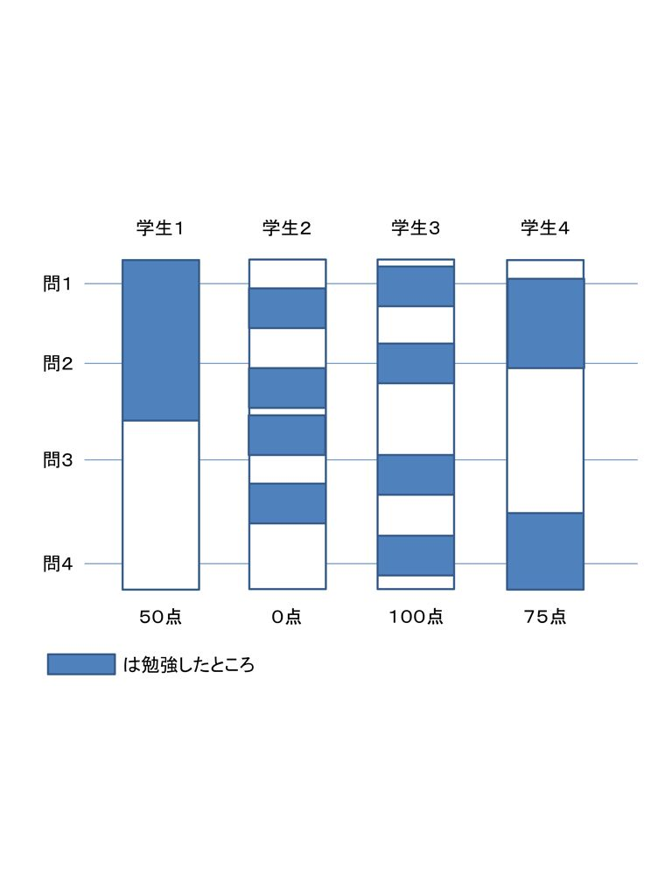
試験官の立場から見た、受験技術のまずさ
いずれにせよ、私のように、かつて困難な受験時代を経験し、今は逆に試験官の立場に立っている人間から見ると、今の受験生の諸君は、まだまだ受験技術を知らなすぎると痛感させられます。
たとえば、数学が入試の必須科目になっている大学を志望しながら、数学に重きをおいて勉強していない受験生がいまだにいるのです。数学は一題あたりの配点が大きいのですから、一題が解けるか解けないかが合否のわかれ目になることは、明らかです。配点も考え、力の配分を考えるというたいせつな受験技術が案外見すごされているのです。
また、ある受験生は、試験場の下見を怠ったために、当日、試験場を間違え、そのためにすっかり精神的に混乱してしまうという、ハタから見ていてもやりきれなくなるような原因で受験を失敗しています。これでは泣くに泣けません。
そのほか、毎年のように受験番号を書き忘れる人がいます。書き忘れるならまだしも、間違えて他人の番号を書く人すらいます。このばあいには、自分自身がまず不合格にされるばかりでなく、ほかの受験生や試験官にもたいへんな迷惑をかけることになります。
信じられないような話ですが、このような学力以前の不注意によって、受験に失敗する学生が毎年ひきもきらないのです。しかし、こうした不注意は、私に言わせれば、精神論でなく、技術の問題として防止することができるはずなのです。
私は現在、国立大学の教師をしています。その私が、受験の本を、しかも、『スイスイ受験術』などといういかにも気楽そうな題の本を書くなどとは、不見識だとお叱りを受けるかもしれません。
しかし、この本を読んでいただけばわかりますが、内容はきわめてまじめなものです。
もちろん、入学試験というものは、受けるものにとっても、選ぶ側にしてみても、厳粛なものです。合否判定のときは、じつにたった一点の違いで明暗がわかれるのです。一点の差が、いったいどれだけの意味をもっているというのでしょうか。ところが、現実には、一方は栄光の道を歩き、他方は屈辱の一年を余儀なくされるのです。ときによると、このたった一点の差が、両者の人生を大きく変えてゆくかも知れません。こんなことを考えると、もう一息で合格できなかった人、合否すれすれの人には、なんとか受験技術をマスターして欲しいと思わずにいられないのです。
私は、現在の受験制度に多くの疑問を抱いています。とくに、一回きりのペーパーテスト偏重試験では、能力を知ることなどできるわけがないと考えています。しかし、受験に関するいっさいの議論のまえに、皆さんは、ともかくも受験のカベにぶつかり、突破しなければならないという動かしがたい事実に直面しているのです。だとすれば、あれこれと悩みつづけているよりは、かなりの部分を技術的に解決しうるものと割り切って、スイスイ合格することを考えるのが、もっとも現実的だと言えるのではないでしょうか。
受験は苦しいものです。しかし、その苦しさに押しつぶされてしまったり、その中にのめり込んでしまったりしては、何も生まれてはきません。どうせなら、受験に正面から取り組み、自分にとって実りある将来をつくるための一つの関門としてください。私や私の友人たちの経験と、心理学上のさまざまな原則の裏づけにもとづくこれらの受験術が、皆さんに上手に役立てていただけることを願ってやみません。
昭和四十九年九月十日
多湖輝
一 楽して勝つにはこの手に限る！
１ 受験オンリーの生活は、受験にとって最大のマイナスである。
「受験生」とは「試験を受けに来た人」のことだと思っていたら、いつのまにか、「受験をめざして勉強している人」の意味になり、今では高校一年生、中学の一年生までが「受験生」の仲間入りをしているようです。
このように、現在の高校生、中学生の生活は、すべて受験一色に塗りつぶされてしまっています。生活全般がそうなのですから、勉強はなおさらです。しかし、この受験オンリーの勉強が、はたしてほんとうに受験のためになっているでしょうか。私には、二言めには受験、受験と唱え、一見受験技術にたけた〝受験勉強屋〟さんが、「策士、策に溺れる」のたとえのように、かえって、受験の成功をあやうくしているように思えてならないのです。確かに、受験には技術も必要でしょう。けれども、それ以前に、歴史にしても理科や語学にしても、その科目に共通する、ものの考え方や見方があるはずです。細かい知識や解法のもとになるものですから、かえってこれを知ることが効率よい勉強につながると思うのですが、意外にこれが忘れられているようなのです。私自身、受験勉強中に、有名な歴史学者山中謙二先生の『西洋史概説』を読んで、大きな人類の歴史の流れを把握でき、何十冊の受験参考書にまさる勉強ができた経験があります。
この章では、このように、試験をめざした苦しい闘いが、工夫しだいで楽々と有意義なものになり、かつ成功へも直結することをお話ししましょう。
２ 志望校を選ぶには、おおざっぱでも〝人生プラン〟があったほうがよい。
受験生のいつわらざる真情は、どこでもいい、とにかく一流校、有名大学にもぐりこみたいということではないかと思います。これほど極端ではないにしても、最近の学生は、どうも将来の〝人生プラン〟が不十分な感じをまぬがれないのです。
たとえば、私はいま千葉大学の教育学部で教鞭をとっていますが、教育学部というのは教師を養成している学部だということを十分認識せずにはいってくる学生がいます。東京工業大学の講師をしていたときも、文科系の大学に移りたいという学生の相談にどれほどのったかわかりません。そのときは、「まだ若いのだからいくらでもやりなおしはできる」と言って励ましてやるのがつねでしたが、正直なところ、もうすこししっかりと人生のプランを立てておけば、貴重な青春時代に思わぬ足踏みをしないですんだのにと残念でしかたないのです。
とくに、日本の大学は、入学の学部が決まると同時に、だいたい就職の方向も決まるというように、いったんはいった大学の学部、選んだ専門が、一生ついてまわることが多いというのが現実です。ですから、志望校を決めるときは、有名校、一流校の名にとらわれず、自分が将来何をしたいのか、おおざっぱでもいちおうの計画を立ててほしいのです。もちろん、大学で学ぶ過程で新しい進路を発見することもあるでしょう。しかし、少なくとも、はいってしまってから、どうも自分の性格に合わないなどという悲劇だけは避けることができるはずなのです。
３ 受験勉強の中から、一生のテーマが見つかることも少なくない。
無事合格して、大学にはいってきた新入生を見ていると、受験勉強から解放されてホッとしているタイプと、研究やサークル活動などに積極的に飛びこんでいくタイプの二つにわかれています。ヤレヤレというタイプの心理状態を調査分析してみると、意外に受験勉強にその原因があることがわかります。入試はただ合格すればよいものと考え、小さいときから学習塾などで詰めこみ主義の勉強をし、知識や技術を機械的に暗記してきた人に多いのです。
彼らにしてみれば、試験に合格してしまえばあとは終わりだというのでしょうが、これではなんのために大学にはいってきたのかわかりません。
確かに、受験勉強はつまらないものかもしれません。しかし、その勉強もちょっと見方を変えれば、あらゆる学問や知識の基礎につながっているのです。たとえば、有無を言わずに憶えていく以外に道のない英単語も、憶えれば憶えるほど英会話や原語文献の読破につながっていき、単に受験のための丸暗記では満足できなくなってくるはずです。
このように、受験勉強というものを単に大学や上級学校へ合格するためだけの気の滅入る勉強ではなく、将来のためになる、広い意味を持つものと考えたらどうでしょう。そうすると、いきおい自分の勉強に身もはいるし、やる気も十分に起きてくるというものです。大学にはいってからすぐ活動を始めたり、将来おおいに期待できるタイプは、みなこのように受験勉強を考え、実行してきた人たちなのです。
４ 興味が湧かないからといって、その科目に対する能力がないということにはならない。
「好きこそものの上手なれ」の諺のとおり、自分の好きな科目は勉強にも身がはいり、成績もおのずとよくなるものです。それでは、「嫌いなら下手」かというと、いちがいにそうとも言いきれません。嫌いな原因を調べてみると、その科目に嫌いな先生がいたとか、いやな経験をしたとか、ごくつまらないことで興味がそがれ、せっかくの能力を殺してしまっているケースがよくあるからです。
成績の悪い科目を不得意と思いこみ、それを自分の能力不足だと考えている人は、なぜその科目が嫌いなのか、一度その原因を調べてみると、意外に「なんだ」ということになるに違いありません。
５ 勉強に気が乗らないときは、一時、勉強から離れてみる。
長い時間勉強しているわりに、いっこうに実力がつかないと嘆く人が少なくありません。こんな人にかぎって、自分は頭が悪いのだと親にあたりちらしがちですが、悪いのはいうまでもなく頭ではなくて時間の使い方なのです。
気分が乗っているときには、時間がたつのも忘れるほど能率があがりますが、いやいや勉強しているときには、長い時間やっているつもりでもいっこうに時計の針が進まないものです。こんなときは、一時、勉強を中断してみるに限ります。気分が変わって、ダラダラ気分がうそのように消えてしまうことがあるからです。ある産業心理学者の調査でも、作業の中断は、あとの作業の能率によい効果を与えることが確かめられています。
どうにも受験勉強に気分が乗らないときは、思いきって一日でも二日でも、やる気が起こるまでまったく勉強をしないのも、やる気回復のよい方法です。そんなことをしたら受験勉強が遅れるのではないかと思うでしょうが、いっさい勉強に手をつけず、あせりにあせる気分になるまで自分を追いこみ、それに耐えきれなくなったときこそやる気が回復するのです。幼児のバイオリン教育で有名な鈴木鎮一さんは、はじめて習う子どもには、自分から弾きたいと言い出すまで、一月でも二月でも、ほかの子どもがバイオリンを弾くのを見せておくのだそうです。この弾きたくなるという気持こそ、進歩の秘訣だというわけです。
６ やる気は、受験勉強に意味を見出すことから起こる。
あなたは、机に向かいながら、「受験勉強なんかしてなんになるのか」とか、「なんのために大学へはいるのか」などと考えたことはないでしょうか。
アメリカのある経営学者は、「成功したトップに共通することは、つねに自分の仕事に対して、なんの意味があるのかという疑問を持ち、それを確かめたいという意欲を持ちつづけたことである」と言っています。
このことからも、受験勉強に対する意欲を生じさせるためには、まず受験勉強に疑問を投げかけ、その意味を見つけだすようにすることがたいせつだということがおわかりいただけると思います。
７ 学校の成績が悪くても、合格のチャンスはだれにでもある。
夏の全国高校野球では、優勝候補にあげられていたチームが一回戦で敗れ、思いがけないチームが優勝することがしばしばあります。入学試験でも、合格間違いなしと思われていた人が落ちるかと思えば、日ごろ成績の目立たない人がみごと合格して周囲を驚かせたりします。
高校野球や入学試験のような一発勝負では、雰囲気にのまれない勝負度胸や、上手なコンディションづくりが、実力以上にものを言うことがよくあるのです。要は、本番でいかに実力以上の力を発揮するかです。それには、学校の成績などに一喜一憂せず勝利を信じて練習にはげむことしかありません。
８ 「迷い」は、向上心の表われである。
どんな学校を志望したらよいだろうか、どんな参考書を選んだら勉強が進むだろうかなど、受験期には他から見ていても痛々しいほど迷うことが多いものです。しかし、この「迷い」を避けて通ろうとか、迷わず進もうなどと考えたら、おそらく結果は失敗に終わるでしょう。なぜなら、この「迷い」こそ、向上心の表われだからです。
すべての問題についてもいえることですが、もっとも核心的なものごとの本質は、最初から見通せるものではありません。一つの面を見たあとで、また逆の立場や裏からのぞいてみると意外に新しい発見があります。さまざまな角度から考えれば考えるほど、当然のことながらこれだと単純に決めつけることができなくなり、おおいに悩み、迷い、苦しむことになります。そして、迷いぬいたあげくに見つけだした一つの道こそ、唯一確信の持てるものであり、そこから成功をより確実にする可能性が出てくるのです。重要なのは、こんなことで迷っていていいのだろうかと入口のところで悩んでしまうのではなく、自分が納得いくまで考えぬいて、そのうえで一つの確かな答えを出していくという、問題に対するひたむきな誠実さです。
もちろん、一生考えても結論が出ないほどの途方もない大問題については、目標がさしせまっている受験期には一時たなあげすべきでしょう。迷っているあいだの空白時間、精神的なブランクは、その迷いが深いほど早急に取りもどせるものです。「迷い」には、おおいに自信を持ちたいものです。
９ 劣等感に悩んだときは、自分の長所を列記してみる。
仕事でも勉強でも、思うように進まないときには、自分の欠点ばかりが気になってくるものです。自分の欠点を反省し、つぎの飛躍に備えることはたいせつですが、自分の欠点ばかりをあげつらっていたら、劣等感の虫がますますとりつくだけです。
あなたがもし、劣等感に悩み、勉強が手につかない状態にあるとしたら、自分の欠点を考えることはやめて、自分の長所をノートに列記してみてください。そして、毎日それを大声を出して読みあげ、自分の脳細胞に焼きつけてしまうのです。
このようにすれば、いつのまにか劣等感はどこかに逃げだし、やる気と自信がみなぎってくること請合いです。
10 劣等感に悩むのは、優秀な証拠である。
私のところへは、いろいろな問題をかかえた若者が相談に来ますが、なかでも圧倒的に多いのは、劣等感に悩まされているという人です。それも、まわりの人からは優秀だといわれている人にかなり多いのです。その内容は、たとえば、「自分は一、二年のあいだは、いつも首席か、それに近い成績だった。ところが、三年になると、成績が思うように上がらず、今まで気づかなかった学力の欠点や弱点に気がつきはじめた。自分は能力が劣っているのではないか」といったたぐいのものです。
ところで、劣等感といえば、劣等感を心理学的に研究した人に、オーストリアの精神医学者アドラーがいます。彼は、人間の行動の動機となるものは、「優越への闘争」であると考えました。行動は、自分自身に対する劣等感から出発し、しかも、劣等感は、人間を努力にかりたてる燃料であると、彼は述べています。
つまり、世の中には完全な人間などいないわけですから、私のところへ相談に来る人のようにいくら優秀でも、理想や要求が高ければ、ちょっとした失敗などで劣等感におちいってしまうのは、当然といえば当然のことです。おまけに、優秀であればあるほど、自分の学力の足りない点がよく見え、なおさら劣等感をかりたててしまうのです。
このことからもわかるように、「自分は優秀だから劣等感に悩まされるのだ。学力が伸びているから欠点に気づきはじめたのだ」と、自分自身を納得させることが、劣等感を克服する第一歩なのです。
11 自信を失ったときは、鏡に自分の顔をうつしてみると、自信が回復する。
イギリスの名宰相として歴史にその名を残しているウィンストン・チャーチルは、演説の名手としてもよく知られています。彼の口から吐かれた警句や名言は、今も世界中の人びとに親しまれていますが、議会や国際会議などで演説するときは、かならずそのまえに、鏡の前に立って試演したといわれます。鏡にうつった自分のさっそうとした姿を見ていると、しだいに自信と力がみなぎり、その日の演説がうまく運んだのだそうです。
大演説家といわれたチャーチルですら、だいじな場面で演説するとなると不安が頭をもたげるのですから、受験勉強に不安やあせりが生じるのは当然でしょう。問題は、このような不安やあせりをいかにうまく処理するかですが、チャーチル流に自分の顔を鏡にうつして見る自己暗示も一法でしょう。
鏡にうつった自分の情けなさそうな顔を見ていると、そんな顔をしていてどうするのだと、もう一人の自分を勇気づけたくなってきます。しっかりしろ、がんばれという自分に対する勇気づけが、何よりの自信回復剤になるのです。それに、そんな情けない顔を見るのは、自分自身にとってたいへんつらいことですから、鏡にうつしたときだけでも活気のある顔にこしらえてみたくなります。そのことがまた、自信の回復につながるのです。悲しみに打ちひしがれて涙を流しているとき、その姿を鏡にうつしてじっと見ていると、不思議に涙がとまり、悲しみが薄らいでくるとの同じ鏡の効用です。
12 何もかもよく知っているように思える人ほど、本番ではできが悪い。
入学試験には、学校の成績が、「一番」だった学生が落第し、とても「ムリ」だと思われていた学生が首尾よく合格するといったハプニングがつきものです。こんなとき、試験のやり方や運、不運がとかく問題になりますが、それだけではかたづけられない重要な問題が、ここには隠されています。
というのは、入学試験の問題には、単なる知識やテクニックではなく、ことの本質をよく理解していなければ解けない問題が多く出されるからです。何もかもよく理解しているように見える人も、よく観察してみると、単なる試験のテクニシャンにすぎなかったり、つめこみの知識が豊富なだけであったにすぎないことが少なくないのです。こんな人にかぎって、ちょっとつっこんだ問題が出たり、基本的な理論を問われたりするとすぐメッキがはがれてしまいます。
プロ野球では、よくブルペン・ピッチャーなどといわれ、ブルペンではボールも速く調子がいいのに、いざマウンドにあがるとすぐノックアウトされてしまう選手がいます。実力はあるのだが残念だなどという批評をする人がいますが、本番で力を出せないような能力は実力とはいえません。何よりも基本がしっかり身についていることが先決です。
入学試験でも、何もかもよく知っているように見える学生の中に本番での成績がよくない人がいるのは、本質を理解しないうわっつらの知識しか身につけていないからです。
13 大学があなたをためすのではなく、あなたが大学をためすのだと思うと気が楽になる。
「試験」とは、その文字のとおり、「ためす」ことです。では、入学試験とは、だれがだれの何をためすのでしょうか。こう言えば、だれでもきまって、大学あるいは高校が、受験生の能力をためすと答えるでしょう。
しかし、私はそれだけではないと思います。逆に受験生がその大学を、本当の自分がはいるにふさわしいかどうかをためす機会でもあると思うのです。試験のやり方、問題の出し方一つにも、その大学の特徴が表われます。それを判定するつもりでいれば、ためされるものという心理的劣勢をはねかえすことができるはずです。
14 ほかの受験生をよく観察すると、自分の欠点がわかってくる。
私の友人からこんな話を聞いたことがあります。ある年の夏、彼はのどを痛めてすこしもなおらず、その原因がわからないで困っていました。ところがある夜、久しぶりに会った友だちと夜を徹して語りあい床についたところ、その友だちが、自分と同じような咳をしだしたというのです。どうしてだろうと思った彼の頭にふと浮かんだのは、部屋にかすかにただよう蚊やりの香りでした。案の定、友だちの咳はこの蚊やりの煙が原因で、彼自身ののども、これにやられていたことがわかったというのです。
この話は、自分自身について今まで自分にもわかっていなかったことが、他人を見ることによってわかってくるということを、如実に教えてくれます。
受験勉強も、これとまったく同じです。自分の気がつかない勉強法の欠点、学力の弱点などが、ほかの受験生を見ることで発見できるのです。たとえばあまり早くから直前式要点整理のような参考書を使っている友人を見れば、これでいいのだろうか、自分も安直にうわっつらだけの学習をしていないかと反省することになるでしょう。
かつて、作曲家ベートーベンが交響曲「英雄」をかきあげたとき、ナポレオンのフランス皇帝就任を聞き、名誉欲にとらわれたナポレオンの行為をペンを折って怒りながらも、「オレもまたヤツと同じだったんだ」と地団駄踏んでくやしがったというエピソードが残っています。他人の行動を見て自分をかえりみる好例といえるでしょう。
15 外向性の人は、内向性の友だちといっしょに受験時代を過ごすとよい。
受験時代の悩みは、つねにその人の性格と深い関係を持っています。たとえば、人間の性格を大きく二つのタイプにわけると、内向的性格と外向的性格にわかれますが、このそれぞれにお互いに特有の悩みがあるものなのです。
もしあなたが、行動的で陽気、よいと思ったことにはすぐ飛びつくけれども、飽きるのも早いという性格なら、外向性です。明るい性格ですから、悩みというほどの悩みを持たないのが特徴ともいえますが、現実にはやや集中力に欠け、計画が守れないという欠点があります。
反対に、ひっこみ思案で消極的、慎重で緻密だがくよくよと物事にこだわりやすいとすれば、これは内向性です。勉強の基本条件である落ちつきと集中力がある反面、ちょっとしたことで劣等感に陥りやすい欠点を持っています。
つまりは、一長一短でどちらがよいとはいえないわけですから、それぞれの欠点を補う意味で、反対の性格の人といっしょに受験時代を過ごすのが一つの方法です。試験では、性格別にさじ加減をして採点してくれるわけではありませんから、ふだんから、お互いの欠点を補うように心がけておくといいのです。
大人の世界でも、まったく性格の異なった二人が名コンビを組んだり、よい夫婦になったりしています。本番までの長丁場を、へこたれないで闘いぬくためにも、よい方法といえましょう。
16 ガールフレンドは、受験勉強の励みにこそなれ妨げにはならない。
数年まえ、『受験生ブルース』という歌が若い人たちのあいだでひじょうにはやったことがあります。「恋しちゃならない受験生、やけのやんぱち石投げた」といった一節が、受験生心理を微妙にくすぐったようですが、心理学的にいえば、異性とのつきあいは、プラスにこそなれけっしてマイナスにはならないといえましょう。
というのは、人間にかぎらずすべての動物は、異性の前では自分をかっこよく見せようとする気持を持っているからです。たとえば、高いところにあるバナナをオスのチンパンジーにとらせる学習実験でも、だれも見ていないところでは、なかなかとろうとしないのです。ところがどうでしょう。最初は動こうとしなかったチンパンジーが、同じ学習をメスのチンパンジーの前でやらせると、箱を積んだり、棒をつかんだりと一生懸命にバナナをとろうとする努力を始めるのです。
いわば、メスのチンパンジーが、目標達成のための強力なモチベーションとなっているわけですが、この心理は人間とて変わるはずがありません。いたずらに異性を遠ざけて欲求不満に陥るよりも、好きな異性にかっこよく見せるために努力することのほうが、はるかに人間的だといえましょう。
といっても、好きなガールフレンドのことが頭から離れず、そのために勉強が手につかないとなったら、問題の質がかわってくることはいうまでもありません。
17 激烈な受験競争に勝ちぬくのは、強靭な体力があってこそである。
私たちの学生時代には、「青白き秀才」などといって一流大学をめざすような優等生は、いつも机にしがみついて、陽の光に当たることの少ない、弱々しい学生と相場が決まっていました。ところが、その秀才の多くは、途中で病気をしたり、試験場で貧血を起こしたりして、結局めざすゴールにはいったのは、私のような「健康な鈍才」たちでした。
受験勉強のような長丁場を乗りきるのに必要なものは、強靭な体力であり神経です。とかく受験勉強というと、頭のトレーニングだけにかたよりがちになりますが、それだけでは競争に勝ちぬくことはできません。体と心のトレーニングこそ、勝利への大きな基盤になるのです。
18 周囲の期待を気にしすぎると、かえって期待を裏切ることになる。
東京オリンピックで金メダルを独占したアメリカの水泳選手ショランダーが、優勝後の記者会見で、「マイペースで泳いだこと。ぜったいにアガらなかったこと」が勝因だと語ったことがあります。それにくらべて日本水泳陣は、国民の期待が大きく、これにこたえようとしてコチコチにアガってしまい、結果的には大惨敗に終わったことは、今でも私たちの記憶に新たです。
勉強についても、同じことがいえます。日本の家庭教育では、どうしても「人さまに笑われないように」という他人の目を意識したしつけを重視するきらいがあります。他人志向型の人間価値観が基本にすえられており、善悪の基準にしても他人の思惑で決めるという傾向が強いのです。小学生にさえ、「いい成績をとって、お父さんお母さんに喜んでもらいます」などという言葉が聞かれます。自分が好きだから勉強する、自分のためにマイペースで勉強するというのではなく、「周囲の期待」にこたえたいというところに力点がきてしまっているのです。これでは、ショランダー選手のように、正念場で実力を発揮して勝利を得ることは期待できません。
それどころか逆に、この期待が重荷になり、ノイローゼに陥りかねません。むしろ、「両親や周囲の期待などにはサラサラこたえない。自分のためだけに受けるのだ」ぐらいのゆったりした気持になって試験に臨んでいいのです。そうすればマイペースで勉強が進み、能率もどんどんあがるでしょう。
19 受験勉強も、無理に楽しいものだと思いこむと自然に楽しくなる。
受験勉強といえばだれもがつらいものだと思いこんでいますが、そんなにつらいものなのでしょうか。アメリカの心理学者ウィリアム・ジェームスは、「人間の性質の中には、そうなりたいと習慣的に考えるとそのとおりになる傾向がある」ことを指摘しています。つらいと思えばつらくなるし、楽しいと思えば楽しくなるというわけですが、どうせ勉強するなら楽しくやるにこしたことはありません。それには、つらいと思わずに、まず自分に、勉強とは楽しいものだと思いこませることが先決です。無理にでも楽しいと言いきかせているうちに、自然に楽しくなってきます。
20 不得意科目は、かえって得意中の得意科目になる可能性がある。
古代ギリシャの有名な雄弁家デモステネスは、子どものころ、極度のドモリに悩まされたそうです。ところが、彼は不断の努力によってこれをみごと克服し、まわりの人から「あれがドモリだった男か」といわれるような大雄弁家になりました。最初は人並みにしゃべれるようになりたいという動機から、彼の努力が始まったのでしょうが、その努力の成果は、人並みに達したあともそこにとどまらず、はずみのついた車のように、人並みのレベルを突破して、高水準に達したのです。
どこかの総理大臣にも似たような話がありましたが、このように弱点を補おうとする傾向は、ときにその欠点を補ったあともオーバーフローすることがあり、これを専門用語で「過補償」と呼んでいます。つまり、「不得意だ」「どうせやってもだめなんだ」と思っていたものも、それを克服しようとしていったんある線を越えてしまうと、飛躍的に向上する可能性があるのです。
もちろんこれは、勉強にもあてはまります。デモステネスのように、たとえば苦手な英語を、せめて平均点ぐらいはとれるようになろうと努力した結果、平均点を突破しただけでなく、トップクラスに踊りでるなど、不得意科目が不得意どころか、得意中の得意になることもけっしてめずらしくないのです。不得意科目というと、とかく、最初から投げてかかりがちですが、けっして可能性がないわけでないことがおわかりでしょう。
21 大学のキャンパスへは、受験期以外にも、ときどき行って、親しんでおく。
日本のたいていの大学は、猫のひたいのような狭い土地にコンクリートのかたまりが立ちならび、外観上は高校と大差ありませんが、もちろん一歩中にはいると、いろいろな面でちがった点があります。
そこで、私がおすすめしたいのは、願書を出すときや、試験直前の下見以外にも、ふだんからキャンパスヘ出かけていって、大学というものをすこしでもよく知ることです。公開されている講義もかなりありますから、それを聞いたり、通りがかりの学生と話してもいいでしょう。
そうすれば、学生生活への展望が、おぼろげながらも持て、入学への意欲がわくと同時に、心にゆとりを持つことができるはずです。
22 まじめに勉強したという自覚が持てさえすれば、それだけで上位三分の一にはいれる。
自分の受けようとする大学や高校の競争率が、十倍だ、二十倍だなどと聞くと、それだけで戦意を喪失してしまう人がいます。しかし、高い倍率がそのまま、競争の激しさを表わしているとはいえません。「きびしい受験競争」などという言葉も、このような高い倍率から生まれたのでしょうが、その中身をちょっと検討してみると、高い倍率がそんなに驚くに価しないことがわかります。
受験校の先生や進学指導の教師の話などから総合してみると、受験生十人のうち三人ないし四人は、まったくといっていいほど答案ができておらず、最初から競争圏外にいます。今までいったい何のために学校へ行ったのだろうかと首をかしげたくなるほどだそうですが、こうした人たちが、いたずらに競争率を高くしているのです。
つぎの三人くらいは、ある程度勉強しているように見えても、明らかに準備不足で、試験の腕だめし組なのだそうです。結局、残りの三人くらいが、ほんとうに試験を受ける資格のある実力組ということになります。この三人のあいだでほんとうの競争が行なわれるわけですから、まじめに勉強したという自覚さえ持てれば、それだけで上位三分の一にはいる資格は十分あるのです。となれば、いたずらに高い競争率にまどわされることはなく、自信を持って日ごろの勉強を続けてさえいれば、希望の学校に合格する可能性はひじょうに高いということになるでしょう。
23 受験勉強は、青春期の人格形式にも役立つ。
青春期といえば、不安と期待がいりまじった精神的にきわめて不安定な時期です。楽しかるべきその時代を、受験勉強などという苦しい作業に従事しなければならないとはと、わが身の不幸を嘆くこともあるでしょうが、一つのことを成しとげようとするには、苦しさがつきまとうのは当然です。青春の一時期を、いわば人生の縮図とも言えるようなドラマに賭けているのですから、「灰色の青春」などという甘い感傷だけではすまされません。受験期とは、単なる知識や技術を修得する場ではなく、人格形成の場だと考えて、積極的に目標に向かってチャレンジしてこそ、自分の手で「灰色」を「バラ色」に塗り変えることができるのです。
24 合格後の〝楽しい生活〟を考えながら勉強すると、受験勉強も苦でなくなる。
受験勉強と聞いて、私たちがすぐ連想するのは、〝受験地獄〟という表現に代表されるような、人間性を奪う苦行といったイメージです。そして、〝灰色の〟とか〝憂鬱な〟とかいうマイナスの形容詞をつけて、受験勉強を語ろうとします。
しかし、マイナスの方向にばかり考えていたのでは、事態はすこしも好転してくれません。むしろ、ますますつらく苦しく感じるだけでしょう。苦しいことはやりたくないという人間の心理から考えても、このようにマイナス面を強調することは、けっして受験生活を快適にしてはくれません。
人は、楽しいこと、おもしろいことなどプラスのイメージのあるものには、他人から要請されなくても積極的に取りくみます。〝好きこそ物のじょうずなれ〟ではありませんが、集中して取りくめるので、同じことをしても、いやいやするよりは、はるかによい結果を生じることが多いのです。
受験勉強も同じで、プラスのイメージを与えることがたいせつです。そのためにいちばん簡単にできることは、合格したら旅行もできる、思うぞんぶん好きな音楽も聞けるなどと、合格後の〝楽しい生活〟を思いうかべることです。つらい作業でも、それに見合うだけの報酬があれば、がんばってやりとおすというのが、心理学でいう報酬の効果ですが、合格後の楽しい生活は、受験勉強の甘い報酬というわけです。自分で自分に報酬を言いきかせることによって、受験勉強も苦にならなくなるはずです。
25 落ちたときの不名誉という、より大きな苦痛を考えれば、受験の苦も苦でなくなる。
ある目的につながるなんらかの作業を行なう場合、その作業を促進させる動機づけが必要なことは心理学の常識になっています。その作業自体が楽しければ、そのこと自体が動機づけになりうるわけですが、苦痛がともなう作業については、ほかの場に動機づけを求めなければなりません。その一つが、一種の〝罰〟の考え方で、その作業を怠ると、もっと大きな苦痛が与えられるというものです。
もし受験勉強が苦痛で仕方なかったらこの考え方を用いるのも一つの手でしょう。つまり、今の苦痛を避けようとすると、落ちてたいへんな不名誉をこうむるなど、もっと大きな苦痛が待ちかまえていることを自分に言いきかせるというわけです。
二 これがゴールへの最短距離だ！
26 志望校を早く決めることが、合格への第一歩である。
目標のない勉強ほど、つらくてむなしいものはありません。これについては、興味深い実験のデータがあります。学生を二つのグループにわけ、一つのグループには試験の日時をはっきり指定し、もう一つのグループにはいつか試験をやるからとだけ伝えました。試験をしてみると、同じ問題であるにもかかわらず、日時を指定されたグループのほうが指定されなかったグループよりもよい成績をあげたのです。企業で行なわれている目標管理方式も、目的を与えられると作業能率が向上するという心理学的な考察にもとづいています。つまり、その目標を自らの手で自発的に立てさせようとするのが目標管理なのです。
いずれにしても、人は、目標がなければ計画を立てて行動することができません。無目的な行動からは、暗中模索の繰り返しによるあせりやむなしさだけしか生まれません。受験勉強についても同じことです。早く目標、つまり志望校を決定したほうが勉強の能率がグッと違ってきます。
志望校が決定すれば、入試科目、試験日時、場所、校風や卒業生の進路状況まで、いちはやくキャッチすることができます。こうなれば、勉強時間の効果的な時間配分の工夫もできますし、精神的にも落ち着いて、じっくりと勉強に取りくむことができます。「敵を知り己を知れば百戦危うからず」です。
この章では、即実戦に役立つ目標、計画の立て方から、実力のつけ方についてお話ししましょう。
27 大学は、学部でなく講座や先生で選ぶ。
〝なにがなんでも東大へ〟という人は、最近は少なくなったと聞きます。このことは、裏を返せば、大学の選択に際して、受験生がそれだけ主体性を発揮するようになったということですから、私たち〝大学人〟としては、ひじょうに喜ばしい傾向です。
しかし、無事合格してきた新入生の話を聞くと、大学で何を学ぼうとしているのか、自分の目的がよくわかっていない人が、まだ、かなりの割合で見受けられます。彼らの話を総合すると、〝同じ学部を目ざすならよりむずかしい大学へ〟というくらいの気持で志望校を決めたというのが、正直なところのようです。
予備校や高校で、「何点取れればどこの大学へはいれる」式の受験指導をしていることが、こんな現象の原因なのかもしれませんが、これでは、受験生の主体性はどこにあるのかと言いたくもなります。
確かに、入試の程度の高い大学には有名な先生が多いということはあります。しかし、一般的な評価でのいい先生と、あなたが大学で勉強したいことを十分に指導してくれるという意味で優秀な先生とはおのずから違います。入試難易度では下位のほうにランクされる大学にも、その大学でしか開かれていない講座や、その道の権威といった先生がいるのです。〝自分が大学で何を勉強したいか〟をハッキリさせることはもちろんですが、それが、どこの大学のどの講座、どの先生のもとに進んだらかなえられるか、徹底的に調べることがたいせつです。大学の選択はそれからでも遅くはありません。
28 受験時に花形の学科でも、卒業時に花形であるとは限らない。
私と同じ年に大学を受験した友人に、計数学科という当時としては何をやるのかわからないような学科を選んだ人がいました。まわりの人は「よせばいいのに」などと噂しましたが、それが今日のオートメ時代を迎えて、いちやく、時代の花形となり、彼の先見の明に驚かされました。そうかと思えば、当時の花形であった繊維学科にはいったものの、違う分野から登場してきた化学繊維の発達によって学科そのものが衰退し、こと志とは違う目にあった友人もいました。
青少年の職業意識の発達を研究している、ギンズバークとスーパーという学者が、こんな研究結果を発表しています。「進路決定の際、年齢が若いほど、自分の興味や能力に重点を置きすぎ、社会的な価値や求められている度合いなど、現実の面を見逃しやすい」
これらのことからもわかるように、大学や学部を選ぶとき、おもしろそうか、自分にできそうかという目先の、しかも自分の側だけからの評価で意志決定をするのは、あまり現実的ではないと言わざるをえません。自分が将来どんな職業につきたいのか、その職業にどんな価値を見出しているのか、そして、将来、その職業の労働市場が、現在とどう変わる可能性があるのかなど、「将来」の社会的評価も現実のこととして考えていく必要があるのです。
現在、競争率が高くて人気のある学部が、将来も花形である保障はどこにもないのです。
29 新しく受験科目をふやした学部は、穴場である。
それまで毎年、四科目の受験システムをとっていた学部が、新たにそれに一科目加えて、五科目で試験を行なうなど、受験のシステムが急に変わることがあります。こんなとき、受験者の側としては、それまで準備していなかった新しい科目を、もう一つやらなければいけないというので、その学部を敬遠し、受験者数が少なくなる傾向があります。
しかし、こんな学部は、「穴場」と言ってもいいのです。第一、倍率が低くなりますし、出題する側の心理としても、「最初からむずかしい問題を出すのはどうも」ということで、基礎的な問題ばかりを出すことが多いからです。科目がふえたということは、むしろチャンスもふえたと思っていいのです。
30 一流有名大学ほど、客観式問題を出す確率が高い。
自動車や自動二輪の免許を取りに行ったことがある人ならご存じでしょうが、あの筆記試験は、ほとんどが○×式の客観式テストです。その理由は、客観式テストだと、時間的にも技術的にも、採点が楽だからです。運転免許の取得試験は午前中が筆記試験、午後からが実地試験と二回にわけて行なわれますが、実地試験は筆記試験の合格者しか受験できません。つまり、ひじょうに短い時間に何百人もの人の答案を採点して合否を決めなければならないのです。とても、一つ一つの答を読んだり、正しいか誤っているか判別しにくい答と格闘している暇はありません。だれが見ても一目瞭然、しかも短時間に採点できる○×式だから、この芸当ができるのです。
同じことは、倍率の高い一流有名大学の入試にも言えます。おおぜいの人間が一つの大学に殺到すれば、当然のこととして、採点の技術を簡単にして、能率アップを計る必要が出てきます。「○×式テストの弊害」「受験生の真の実力は客観式テストでは計れない」と批判されながらも、時間的、技術的な問題から、客観式テストをまったくなくしてしまうわけにはいかないのです。私も入試の採点をしたことがありますが、記述式だと、一人の答案を採点し終わるのに、二十分も三十分もかかることがあります。受験者が少ない場合には、これも可能ですが、多い場合はまったくお手上げです。
こうした事情から、一流有名大学ほど客観式テストを出す確率が高くなるのです。
31 三年ぐらいのサイクルで、出題の傾向が同じになる。
大学の入学試験の問題を調べてみると、一つの大学で前年と同じ問題が出ていることはほとんどありませんが、三年まえくらいの問題が、すこし形を変えて出ていることはよくあります。
出題者の心理として、去年出したものを今年も出すことには抵抗もあり、また、四、五年まえのものとなるともういささか古い感じがします。かといって、あまりきばつなこともできないということで、どうしても、三年くらいのサイクルで、出題の傾向が同じになってくるようです。大学の試験では、一級下や上はつながりが強いけれども、二級下になると、情報が伝わりにくいので、教師は安心して同じ問題を出しているようです。
32 その学問領域で、新説が出たときや、学説に変化があったときは注意を要する。
論述式の問題には、そのときどきの政治的な事件やトピックスが出題の中におりこまれることはよく知られていますが、これは、物理や化学などの自然科学の分野にもあてはまることです。たとえば、生物学でエコロジーが注目されたり、熱力学でエントロピーが話題になったりすると、かならず翌年の入試にはそのことがあちこちの大学の試験で見受けられるというぐあいです。
この理由の一つとしては、受験生にとっては一度っきりの試験でも、出題者にとっては毎年毎年のものだということがあげられます。問題をつくる者も人間ですから、同じことの繰り返しでは飽きもきますし、マンネリにもなります。また、なんとかして問題に新風を吹きこめないかとつねに考えているのです。
とくに、この気持は、なかなか学説に新しいものが出にくい自然科学関係の先生方のあいだでより強いようです。その結果、先に述べたような現象が試験問題の中に現われてくるのですが、このときの出題者の心理は、つねに現代的な関心を受験生に要求する意識とともに、変わりばえのしない試験問題に飽きて、だれより早く新しい話題を取りあげたいという気持が働いていると言えます。
つまり、こうした出題者の心理を思えば、科目のべつを問わず、時代の潮流と関係がある事柄や、話題になっている事柄は無視できないということが言えるでしょう。
33 同じ大学の中にも、はいりやすい〝アナ〟の学部がある。
ホイホイ勉強し、スイスイはいるのはだれでも望むところです。それには、むずかしい学部に挑戦して何年も浪人するよりも、違うゴールインの方法はないか考えてみるのも一法です。
サッカーやラグビーの試合を見ているとわかるとおり、一人で独走して得点するのはなかなかかっこうのいいものです。しかし、それが不可能と判断したときは、暴走はしないで、たとえまわり道でも仲間ヘボールを回して、得点に結びつける最良の手段を考えるのが名選手とされています。
受験にも、これに似た手段をとる「名選手」がいます。つまり、ある大学の特定学部をねらって、そこへストレートにはいることがどうしてもむずかしいと判断したときは、やさしい学部にはいってとにかく合格してしまうのです。ひとまずやさしい学部へもぐりこんでおいて、あとで目的の学部へ編入しようというわけですが、こうしたまわり道も、受験競争を勝ちぬく作戦の一つです。
大学のなかには、編入を認めないところもあります。しかし、講義を聴講したり、先生と個人的に親しくなって、指導を受けるなど、実質的な勉強はできます。どちらにしても、同じ大学の学生だということで、いろいろの便宜がはかられるわけです。
サッカーやラグビーでもそうですが、いかにゴールの至近距離に近づくかが得点をあげる第一の手段です。そのためには、直線的にゴールをねらうことを考えるばかりが能ではありません。
34 出題の原典や出典が決まりきっている科目ほど、ヤマはかけやすい。
ふだん学校で行なわれる中間テストや学期末テストと違って、入学試験には〝試験範囲〟がありません。あえていえば、〝今までに学んだことすべて〟ですが、これでは範囲がないも同然です。
しかも、最近の傾向としては、机上で学習したものばかりでなく、世界的ニュースなど現代社会に特有な現象を扱った問題が出題されたり、一般社会人としての知識も要求される場合が多いのです。受験生にとって、試験に何が出るかを予測するのは、空気中から微塵のゴミを拾うような、気が遠くなる話とも言えましょう。
しかし、過去の入学試験を調べてみると、毎年かならずといってよいほど出題されているものが見つかります。いわゆる古典にその傾向が強く、たとえば、国語について言えば、『源氏物語』『枕草子』『徒然草』などの古典や、芥川龍之介、志賀直哉などの作家の作品がそれにあたります。さらに、問題の内容を検討してみると、これらの古典から出される問題は、伝統的受験問題とでも呼べるほど、形式も着眼点も同じパターンが繰り返されている場合が多いものです。どうせ受験勉強するなら、これらの古典にヤマをはって、集中的に学習するのが得策というものでしょう。確実に得点を重ねる安全コースを行くようなものです。
もちろん、このことは国語に限らず、日本史や世界史についても、言えます。とくに、入試が迫ったときは、このヤマかけ勉強法が効を奏すでしょう。
35 過去の入試問題の原典、出典は、できるだけ調べておく。
国語の古文や英語だけでなく、問題にはかならずと言えるほど出典、原典があります。過去四、五年まえまでさかのぼって、志望校の問題の出典、原典を調べてみると、どこにポイントを置いて問題がつくられているかが手に取るようにわかってきます。問題のくせ、傾向がわかればもうしめたもの、あとの勉強のやり方もそこにポイントを置けば、ムダを省き、能率もぐんぐんあがってきます。
受験は、出題者との勝負ですから、相手の手の内を研究し、綿密な作戦を立てることは、勝利を得るための絶対不可欠の条件です。相手の出方が予想できれば、勝利を半分手中にしたようなものです。
36 選択科目は、人気のない科目が意外な〝アナ場〟になることがある。
「人の行く裏に道あり花の山」とは、株屋さんの世界でよく使われる言葉だそうです。ここには、人が売っているときには買い、人が買っているときには売るというように人の逆を行くと、桜の花が満開の大相場を手中にできるという教訓が含まれていると言われています。
なるほど人間には、だれもが通る桜並木を行きたがる習性があります。そこで人と同じことをやっていたのでは大きく儲けることはできないというわけですが、この言葉を、「人のとる裏の科目に道あり、花の山」と言いなおせば、りっぱな受験作戦になります。
たとえば、「社会」では日本史、「理科」では生物、「語学」では英語を選択するのが常道のようですが、ここで、社会倫理とか地学とかドイツ語とか、人があまり選択しない科目を、受験科目に選んでみるのです。こうした科目は、選択する人が少ないため、落とすことを目的としている入学試験の中では、比較的問題がやさしくつくられていることが多いのです。それに競争相手がそれだけ少ないのですから、ちょっといい点を取れば、合格をより確実にできます。オリンピック競技の水泳や陸上競技でも、人があまりやらない種目をねらうほうが優勝しやすいのと同じ理屈です。人が日本史をやるから日本史では、それだけ成功率を低くしているようなものです。人が選択しない科目を選ぶのも、〝花〟を手にする一つの手段になります。
37 学習計画ができたら、家族や友人に実行宣言をする。
心理学を応用した禁煙法の一つに、家族や友人などに、「自分は禁煙したんだぞ！」と宣言する方法があります。こうすれば、たばこを口にしたくなったときにも、「意志薄弱と言われるのでは」とか、「ダメなやつだと思われないか」など、まわりの人からの反応が頭に浮かんで、「意地でも実行しなければ」という気持になるというわけです。
学習計画にもこれと同じことが言えます。心の中でそっと決心するだけでなく、家族や友人に、「これだけはやる」と宣言してしまうのです。
こうすることが本物の学習意欲を生みだし、「合格する」という最終宣言を達成することにもつながるはずです。
38 簡単に達成できる目標は、目標とは言えない。
あなたがもし、経験を積んだアルピニストであるならば、なんの苦労もなく楽に登れる山を、自分の登山目標に選ばないはずです。また、八ヶ岳や立山連峰のつぎには、マナスルへ登ろうというような無謀な計画も立てないはずです。
受験勉強のための目標の立て方も、これと同じです。なんの苦もなく簡単に達成できる目標だったら、あえて立てた意味がないというものです。あなたが計画を立てるとき、きっと弱気になっていたか、あるいはサボりたいという気持が、無意識のうちに働いていたからでしょう。完全には実行できなくても、それを可能なかぎり追求してこそ、目標の意義があるのです。
しかし、一か月もかかりそうな内容を一日でやりとげる計画を立てるのは、無謀というものです。ほんとうのアルピニストとは、山に挑戦するとき、ダメなら死んでもいいとは思いません。捜索隊を出して迷惑をかけないよう、自分の足で降りられるだけの余力を残して、途中で目標を断念して下山します。受験勉強では、死ぬ心配はないからといって、だいそれた目標を立てるのは、けっして賢明とはいえません。実現可能のラインより半歩先の目標こそ、目標らしい目標と言えます。目標の七〇～八〇パーセントをやりとげたら、また半歩先に駒を進めるのです。
確実に一日一日前進して頂上に近づいているという充実感は、受験勉強の闇に咲く一輪の花、気分のいいものです。
39 計画は、破られるためにある。
「わが禁酒、衣のそではほころびにけり、それついでくれ、やれついでくれ」
これは、江戸時代後期の奇妙な歌人、太田蜀山人の詠んだ歌です。禁酒、禁煙の誓いは、それをたしなむ人にとっては、まさに死ぬ苦しみです。禁酒をしたばっかりに、イライラしたり、怒りっぽくなる人さえあります。たばこを断ったがために、性格まで暗く、陰気になっては逆効果、身体は健康になっても、今度は精神を病むことになります。
受験勉強の計画についても、これと同じようなことが言えます。計画を実行することにムキになりすぎて、受験ノイローゼになったのでは、それこそ取りかえしのつかないことになってしまいます。
ときには「計画どおりできない日もあるのだ」と自分を客観視する、余裕のある心もたいせつです。計画を守るためだけに、友だちとのつきあいも何もかも捨ててしまっては、かえって計画そのものも行き詰ってしまいます。たまには「計画を破る日」をつくってリラックスしたほうが、翌日からグッと能率アップすること請合いです。
また、逆に今日は計画どおりできたからといって、調子が乗ってきているにもかかわらず、そこで律儀にストップすることはありません。そういう日は、計画以上にどんどん進めることも悪くありません。計画とは、よくも悪くも破るためにあるものと考えて、余裕のある態度で接することです。後向きに破ったり、前向きに破ったりしているうちに、自分のペースがつかめてくるでしょう。
40 生活全体のテンポを速くすると、問題解決の速度も速まる。
ある刑務所の所長さんから聞いた話ですが、終身刑の人と、死刑囚では、まったく生活態度が違うそうです。終身刑の囚人は、社会復帰する希望が断たれて、ただ保証されているのは生命だけ、明日への展望がないためにダラダラとした生活態度になってしまう人が多いのです。そこへいくと、死刑囚は、明日の朝は、もうこの世にいるかどうかわからないというギリギリのところで「今日」を生きているだけに、ひじょうに密度の濃い、はりつめた生活態度になっていきます。社会にいるときは目を通したこともなかったむずかしい書物を短期間で読破したり、すばらしい絵を描いたりする人さえいるそうです。「今日しかないかもしれない」という一日一日の緊張感が、その人の能力をグッと高めるからです。一日のうちに、多くのことをやろうと思えば、自然、生活の全体のテンポが速くなり、充実がもたらされるという例です。
この死刑囚の精神を受験勉強に応用すれば、ずいぶん効果があがるはずです。この問題を解くには、あと何分しか残っていないと、自分で自分を追いつめていくのです。そうすると、思いがけないほどの力が発揮されるものです。
勉強だけでなく、一日の生活全体のテンポを速めると、もっと効果的です。夕食は三十分間で、あと一時間は自由時間、そのあとの三時間は勉強というふうに、生活にメリハリをつけると、自然、頭の働きも敏速になっていきます。
41 勝負ごとのような、あとを引く趣味は、短時間の気分転換には不適当である。
勉強、勉強で追いたてられている受験生活に、ホッと息抜きを与えてくれるのが、自分の好きな趣味です。疲れた頭をいやし、勉強にあきた気分を転換してくれるかっこうの「友人」ですが、勝負ごとのようなあとを引く趣味は、かえって勉強の能率を妨げる「悪友」になってしまいます。
よく、気分転換などと称して、麻雀、将棋、競馬などをやっている受験生がいますが、勝負の結果が頭に残り、どうしてもふたたびエンジンが勉強に向かって回転しにくくなります。受験時代に一つでも趣味を持つことはたいせつですが、それが勉強の足をひっぱるようでは、もはや趣味とは言えません。
42 受験勉強に時間的余裕を与えすぎると、かえって打ちこめなくなる。
「火事場のばか力」などという言葉がありますが、人間は追いつめられると、自分でも思わぬ力が出てくるものです。ふつうの状態ではとうてい不可能のようなことでも、せっぱつまってやってみるとけっこう可能なのですから、考えようによっては、人間には無限の可能性が秘められているような気さえします。
このせっぱつまった状態に自分を追いこんで、仕事の能率をあげているのが、作家や芸術家です。締め切りまぎわまで、自分の好きなことをしておいて、いよいよ時間切れだというところで仕事にかかると、筆もはかどり、いい作品が書けると語る作家もいます。いわれてみれば、私などが原稿を依頼されたときなども、時間の余裕がかなりあるのに、約束の日が近づかないと机に向かわないということがしばしばあります。
受験勉強でも、ぎりぎりのところまで自分を追いつめてから始めるとひじょうに能率があがります。よく、受験勉強のために早々とクラブを退部した人が落第し、三年生の秋までクラブ活動をしていた人が合格するのも、意外にこうした「能率」が影響しているのかもしれません。受験時代は、勉強がすべてということになっていますが、同じ一日、一か月のスケジュールを立てるにも、趣味やスポーツにも十分時間をとり、意識的に多忙な生活のなかに勉強する時間を見つけていくというやり方をすると、同じ一時間がひじょうに効率よくなります。
43 受験科目によって、机や部屋を変えると詰まったスケジュールも難なくこなすことができる。
私は、よく、仕事の内容によって机や部屋を変えて、気分転換をはかり、精神集中をはかることがあります。一つの机に坐ったままで、つぎつぎと種類を変えながら仕事を進めていっても、頭の切りかえがともなわず、気が滅入ってしまうことがあるからです。受験勉強でも、まわりの状態が一新するとさっと頭の切りかえができ、つぎの科目に集中していけることになるでしょう。国語は自分の部屋。数学は居間、英語は図書館......というように決めておけば、まわりの環境とその科目がいつのまにか溶けあい、受験直前でも受験科目のそれぞれに徹するという気分が自然に生まれてくるようになります。
44 解き方を習っていない問題でも一定時間考える習慣をつけると、本番での応用力がつく。
試験問題は、教科書の基本問題と違ってすべて応用問題です。毎年毎年繰り返される試験に、そのつど目先の違った問題を採用しなければならないのですから、出題が応用問題になるのは当然と言えましょう。いわば受験という実戦の場では、すべての他の実戦がそうであるように、やはり基礎力だけでなく応用力がためされているわけです。
そこで、日ごろの勉強で、この実戦力ともいうべき応用力を養っておかなければならないわけですが、いったい応用力とはなんでしょうか。これは、未知の問題にぶつかったときに、それまで自分が持っていたあらゆる知識や経験を総動員して、それらをいろいろに組みあわせたり、拡大したりして、その未知の問題を解決するということでしょう。
こう考えると、日ごろの勉強の中に、応用力を養うための機会は、いくらでもころがっていることがわかります。とくに、教科書などで新しい単元にはいるとき、まだ解き方をまったく習っていない問題が掲載されています。ふつうは、この問題を素材にして、新しい解法なり法則なりを学んでいくわけですが、応用力の訓練という点から見ると、その新しい解法を学ぶまえに、自分の持てる情報を総動員して、この問題にぶつかってみるのが一つの効果的なやり方なのです。
正解に達することができるかどうかは、問題ではありません。まったく未知の問題を一定時間考えてみること自体が、応用力の訓練になっているのです。
45 実戦にそなえるには、問題集の順序を無視して練習したほうがいい。
問題集を解くとき、たいていの人は、教科書の章やテーマごとに分類された問題集を、順番にやることが多いようです。しかし、この方法では、その問題が、何をテーマにしたものかがあらかじめわかってしまい、重要なヒントを与えられたことになってしまいます。これでは、あまり実戦向きとは言えません。本番では、こんなヒントはないからです。
この弊害を除くには、ひととおりの基礎的な勉強が終わったら、問題集をパッと開いて、出たページの問題を解くようにすればいいでしょう。実戦的訓練としては、いきなり問題にぶつかって、何に関する問題かをすぐに見破れる能力をつけるのがいちばんだからです。
46 不得意科目を放っておくと、ほかの科目にまで〝不得意〟が伝染する。
よく、「あの科目は不得意だから、成績もよくないんだ」と言う人がいます。担当の先生が嫌いだったり、たまたまその科目の試験で悪い点を取ったりすることによって、つまらない、おもしろくない、という心理が生まれ、勉強に身がはいらなくなって成績も悪くなってしまうのです。この心理が、その一科目にとどまっているのならまだ傷は浅いのですが、悪いことにほかの科目にまで拡大され、勉強そのものに対する意欲まで失ってしまうことがよくあるのです。その端的な例が、現代っ子に多い肥満児の場合です。
肥満児は、体の動きが鈍いため、スポーツや遊びでみんなについていけず、その結果、まず体育に対する興味を失ってしまいがちです。この意欲喪失、無気力の状態は、ときによるとほかの科目にまで拡大し、よくいわれるように、肥満児イコール成績の悪い子というイメージができあがってしまうことがあるのです。
この心理は、日ごろの成績だけでなく、当然、本番にも表われます。ちょうど、野球の選手が、打撃の調子が悪いと守備でも大ポカをやってしまうように、不得意科目の〝不得意〟が、ほかの科目にまで伝染してしまうのです。試験は総合点で評価されますから、不得意科目の分はほかの科目で稼げばいいというのも一つの考え方でしょうが、そのほかの科目にも影響があるとすれば、最初から不得意科目を放置するのは得策でないことがおわかりでしょう。
47 不得意科目を克服するには、一年からの教科書の復習がもっとも近道である。
ある高校の先生がおっしゃっていましたが、その生徒の得意科目と不得意科目は、勉強部屋の机の前の本棚と、机の後ろの本棚でどの科目の本がもっとも多いかを見ればたいていわかるのだそうです。つまり、不得意科目は、なんとか克服しようとしてあの手この手を試み、本も勉強関係のものをいろいろ買って机の前にならべておきます。反対に得意科目は、興味の広がりをそのまま示すように、副読本や課外読み物のたぐいが何冊も後ろの本棚にならべられているというわけです。
しかし、この先生も指摘されていましたが、不得意科目に関するかぎり、この傾向はあまり感心できるものとは言えません。何冊も参考書や問題集を買い、結局は一冊もほんとうにこなしきったものがないということになりがちだからです。
それよりも、不得意科目を克服したかったらまず一年の教科書の最初から、どんなに簡単すぎてばかばかしくても、もう一度復習しなおしてみるのがいいでしょう。基礎的な事柄の再確認という、耳にタコができるほど言いきかされたことの実行のためだけではありません。一年の教科書なら、だれでも時間もかからず、スイスイと勉強がはかどるでしょう。練習問題など、最初のころは苦もなく満点です。こうして得られた自信をバネにしてバリバリと快進撃を続け、助走力がついてきたところで不得意の壁を飛びこえてしまえばいいのです。この方法でめざましい効果をあげている学習塾もあるそうです。
48 参考書は、自分の苦手な部分の比較検討で選ぶ。
私が、大学を受験したのは戦争中のことでした。はじめは文科系志望だったのですが、徴兵を逃れるべく急きょ、理科系に志望変更せざるをえなくなりました。ところが、理科のことはサッパリでしたからあわてました。さっそく、いちばん能率よく勉強できる参考書を探しまわりました。
参考書を選ぶ場合は、一般的な評価や、先生や友達の意見もたいせつですが、何よりも自分にあった参考書を選ぶのがいちばんです。そこで、自分にあった参考書の探し方ですが、自分のもっとも苦手な部分を一点しぼってみて、その部分がいちばんわかりやすく解説してある参考書を選ぶことです。
私の場合は、化学の「イオン化傾向」が苦手だったので、その一点に絞って何冊かの本を比較検討してみました。そして、その目的にかなった参考書に出会ってからは、ほかの参考書には見向きもせず、徹底的にその参考書で勉強しました。不得意だった理科が得意科目になったのは、その参考書のおかげでした。
友人とあなたの苦手な部分が同じだからと言って、同一の参考書でいいとはかぎりません。どんなに定評のある参考書も、けっして万人向けではないからです。要は、自分の思考パターンにあった参考書を選ぶことです。あくまで、あなた自身が理解しやすいかどうかを、選択の基準にすべきでしょう。
そして、貴重な一冊を選びだしたら、おせっかいな友人の意見は、もう「聞く耳持たぬ」と、自信を持ってはねつけることです。
49 視点の違った参考書を二冊以上使いこなしていくと、記憶の再生もしやすくなる。
記憶には、繰り返しが不可欠であることはだれでもわかっていますが、その繰り返しの方法については、わりあいに無頓着に、機械的に行なっている人が多いようです。
何度も同じ参考書の、同じ箇所を赤鉛筆でなぞっているようでは、いくら根気の続く人でも飽きてくるのが当然でしょう。飽きるばかりでなく、単調な同じ刺激のパターンが繰り返されると、頭脳はもはや鋭敏に反応しなくなってしまうのです。
そこで、一冊の参考書に飽きてきたり、その本だけでは能率があがらないと感じられたら、今までの参考書とはすこし違った視点で書かれているものに、変えてみるのも一つの手です。たとえば、「聖徳太子」をとってみても、仏教史上の役割が印象に残る本と、優れた政治家としての面を、より強調してある本があるはずです。また、地図を中心としてまとめてある本もあれば、資料だけを集めてあるのもあるはずです。こうしたさまざまな角度の違った参考書で勉強を繰り返せば、そのつど新鮮な刺激が与えられるので記憶が強化され、再生に必要なほかのいろいろな関連事項との結びつきも多くなります。
また、内容的にはまったく同じ事柄であっても、そのたびごとに取りあげてある視点が異なっていれば、そのとき必要とされる思考法も違ってきます。記憶だけでなく、ものの考え方も、多角的になるのです。
50 一題練習するごとに、そのテーマで別形式の問題を予想してみる。
受験勉強をしているときというのは、いくら時間があっても足りないような気がして、焦燥感ばかりかりたてられるものですが、一つの問題にあたるごとにそのテーマでこんどは自分からほかの問題を考えてみる、というやり方で時間を二倍も三倍も有効に使うという方法があります。
出題者は手を変え品を変え毎年の試験問題をすこしでも新しく見せる努力をしますが、結局は同じ内容を、形を変えたり、一歩発展させたにすぎないことに気がつきます。ですから、あんな問題も考えられる、こんな問題も考えられるというように推察力を働かせる訓練をすれば、その問題とテーマの同じいろいろな問題の形を体系的に知ることができるでしょう。そうすると、問題を解く道筋も自然にはっきりしてくるし、できない問題にぶつかっても、できた問題を思いおこし、そちらの解法から攻めてゆくという応用力も身についてくるというわけです。
たとえば、年号を問う問題があったら、逆に年号を出して事件を聞いたらどうかというふうに発展させて行けば、歴史の横のつながりが頭のなかで明確になって行くでしょう。
また、同じ英語の問題でも、解釈問題として出た例文のどこをブランクにしたら穴埋め問題になるか、どこを変えたら誤りを発見する問題になるかをいろいろ考えてみるのです。それによって、問題の重点をより深く認識することができ、一問で、三問、四問分の勉強をしたことになります。
51 日ごろから、問題を自分でつくって解く練習をしておくと出題者の心理がわかる。
スポーツの練習には、基礎訓練と同時に実地訓練がつきものです。たとえば野球では、キャッチボール、バッティングなどの基礎練習をしたあと、ランナーが一塁にいて左バッターのときはどのような守備体系をとったらよいかなどといった実地訓練をやるのがつねです。いわば、自分でつくった問題を解く練習をしながら、相手がどんな手を打ってこようとすぐ対応できるだけの訓練をつんでいるわけです。入学試験も同じです。教科書、参考書はもちろん、小説やエッセイなど、自分ならここを出題するのだがと、問題をつくって解く練習をしながら読むと、出題者の心理もわかり、実戦に役立ちます。
52 ふだんの学習では、時間の感覚を養うように問題をやる。
学校の試験などで、だれもが頭をかかえこむような難問に時間をとられ、だれでも解けるやさしい問題に手がまわらなかったというような失敗はどなたもお持ちのことでしょう。この失敗を本番で繰り返したのでは、とても合格はおぼつきません。与えられた時間をいかに上手に配分するか、これも受験作戦の重要なポイントです。それには、ふだんの勉強のしかたが大きくものをいってきます。
たとえば、問題ごとに所要時間を記したていねいな問題集で、時間感覚を養うことも一法でしょう。そうでなくても、ふつうの試験では一問に何分ぐらいかけるかということを問題によって割り出し、ふだんの学習でも、このことを頭において、実戦を想定しながら問題にとりかかる習慣をつけておくのです。自分で決めた時間内に解けなければ、いちおうその問題は打ち切ることにするのです。同じようにほかの問題も進めてゆき、また解けなかった問題にもどるというふうにやれば、時間の感覚も身についてくるし、その問題の考察もそのつど深まってくるというわけです。
勉強というと、なにがなんでもこの問題は解かなければならないと思いがちですが、与えられた時間内に何問解けるかをテストするのが試験です。ふだんの勉強でも、時間を区切って問題を解決する習慣をつけておけば、いざ本番で、時間のために実力をフルに発揮できなかったなどということを避けることができます。
53 論述式の問題は、いくらでも自分でつくり、自分で練習できる。
論述式の問題は、出題がかんたんなわりには、答えの内容いかんによって、受験生の実力のほどが見すかされてしまうものです。しかし、出題がかんたんであるだけに、自分で練習問題をつくることは可能です。しかも、用紙不要、場所、時間を問わず〝質疑応答〟できるという便利な学習方法がとれます。
たとえば、世界史なら「フランス革命はなぜ起こったのか」「絶対王制とは何か」「ギリシャ彫刻の特色は」など、電車の中や喫茶店で、自分に自分で問題を出して答えてみるのです。頭の中で考えるだけでなく、きちんと文章を構成して、口に出していってみれば、効果は倍増し、実力もグンと上がるでしょう。
54 志望校は、実力よりやや高くおくほうがよい。
あるプロ野球の監督がこんなことを言っていました。「二軍に長いことくすぶっているたいていの選手は、いくらいいコーチをつけてもだめですね。心の中で、自分はしょせんは二軍だ、一軍には上がれないんだと思いこんでいるので、技術的な向上心もなくなるんですよ」
受験勉強でも同じようなことがいえます。目標の水準が低すぎれば、「まあ、それほどがんばる必要もないだろう」という心理が働き、学力もその程度までしか向上しないからです。かといって、目標が高すぎると、現実とのギャップがありすぎてあきらめが先に立ってしまいます。目標は、達成できるかどうかギリギリのところにおくことです。
55 なんでもいいから、得意な科目をまず一つつくるように心がける。
あなたは、ある科目の試験で思いがけずにいい点をとり、気をよくして、ほかの科目の勉強にも熱がはいるようになったという経験はありませんか。
これは、「自信の拡大効果」と呼ばれています。得意な科目でいい点をとったり、内容をよく理解できるようになると、その科目の勉強がおもしろくなり、それが勉強全体に対して「おもしろい」「楽しい」という感情になって波及するというわけです。
この考え方は、水泳のメドレー競技の練習などにも応用され、まず得意な泳ぎ方でいい記録を出すまで練習し、そのあとでほかの泳ぎ方に移っていくという方法が行なわれているそうです。
56 どんなに忙しくても、新聞と総合誌の見出しくらいは読むようにする。
受験勉強も終盤近くになってくると、新聞を読む時間さえも惜しいくらいに忙しくなってきますが、全部読まなくても、せめて新聞と総合誌の見出しくらいには目を通してほしいものです。
私が会ったある受験生が、私が出題者の側に立つ人間であるのを知って、「重箱の隅をほじるような出題はいじわるじゃなきゃできませんね」と言ったことがあります。しかし、出題者側としては、だれもいじわるするつもりは毛頭ないでしょう。また、なるべく重箱の隅をほじる式の問題は避けているはずです。一目見たとき、受験生に異和感を与えない問題はないかと、受験生との共通項を捜して努力しているということは知っておいていいことだと思います。日ごろ話題にしていることを問題にして、その結果、ちゃんと受験者の学力も判断できるならこれほどいいことはありません。
最近の試験問題の中には、新聞や総合誌からヒントを得たようなものが少なくありませんが、これも以上のような出題者の気持が反映されているのです。別項でポイントとしてあげた自然科学関係の新説や学説の変化はもちろん、時事英語の学習、さらに、実際的な統計の知識など、新聞や総合誌には、受験に役立つものもたくさんあります。加えて、人間は印象に残った事件と関連させて憶えた事柄ほど記憶に残りやすいということもあるのです。このことからすれば、新聞を読むか読まないかが合否の決め手になるといっても過言ではありません。
57 社会や人生についての関心を日ごろから持つと、受験勉強でない受験勉強ができる。
最近の受験問題は、「受験のための受験問題であってはいけない」という出題者側の反省から、おのずと現代的視点をクローズアップしたものとなってきています。
たとえば、現代国語、英語、政治経済などの問題は、それぞれ実社会の事件や問題を扱っているものか、中心になりつつあります。「公害」「ＧＮＰ第一主義」「自然への復帰」「人間性回復」などという言葉が試験に出るようになったことが、この事実を証明しています。
とすれば、受験生であるあなたが参考書ばかりに気をとられていていいはずがありません。現代社会に対するするどい認識がなくては、いまや試験の問題も満足に解けない時代が来ているのです。たとえば、Pollution（汚染）という単語を知らないようでは、公害問題で揺れ動く現代の英語の問題を解くことはできないでしょう。
そのためには、テレビも大威張りで見て、問題の取り扱われ方、反響、世論の動きなどをよくつかみ、社会的な関心のゆくえをつかんでおくことです。そうすれば、新語の洪水で多少の単語の意味が不明であっても、なんとか、全体の内容を推理できるはずです。
受験生であるからといって、社会から隔離されたような状態で勉強することはけっして得策ではありません。入試では、社会の一員としての判断や認識もためされているのです。
58 幅広い読書が、本番で実力をフルに発揮させる。
受験勉強に追われて、読みたい本も満足に読めないというのが、受験生の悩みの一つのようです。しかし、私にいわせれば、教科書や参考書から離れて好きな本を幅広く読むことが、即、受験勉強につながっているのです。
というのは、文章の読解力、理解力、判断力をつけるのにこれほど手ごろな教材はないからです。また、試験の答案を書く場合も、日ごろの読書から得た表現力が大きくものをいってきます。いわば、参考書、教科書オンリーの受験勉強は、土台のないところに家を建てるようなもので、ちょっとした台風でもろくも崩れさってしまいます。幅広い読書は、しっかりした土台をつくるのと同じです。
59 史実や法則は、その内容を簡単にまとめた小見出しをつけて記憶すると本番でも忘れない。
史実や法則に関する問題が出たとき、そのものの内容と名まえがバラバラになってしまったときほど困ることはありません。たとえば、字づらが似ているために「応仁の乱」と「応永の乱」がいっしょになり、どっちがどっちだがわからなくなってしまったのでは、なんのために一生懸命憶えたのかわからなくなってしまいます。
これをなくすためには、史実や法則の内容を簡単な小見出し式にまとめ、単行本のタイトルの下についているサブタイトルのようにして、整理した形で憶えておくと、本のタイトルが読者の印象に強く残るのと同じように、効果的に憶えられます。
たとえば、「応仁の乱」なら、「将軍家の跡目を争う、細川勝元と山名持豊の仁義なき戦い」、「応永の乱」は、「足利家三代目・義光に叛旗をひるがえす大内義弘」というように、自分が憶えやすい言葉、興味のある映画や小説のタイトルにひっかけて小見出しをつくるのです。
こうすれば、当然のこととして、頭の中にはいりやすくなりますし、記憶の手がかりもふえて、イザというときに、あれやこれや迷うなどということがなくなります。もし迷ったときでも、いったん問題から離れて、自分がそれをどうやって憶えたのか、映画や小説風にサブタイトルをつけたのだ、ということに思いあたれば、そこから記憶の糸をたぐっていって、思いだすことができるはずです。自分の興味あることは、なかなか忘れにくいものです。
60 部屋中にメモをはりつけて、場所や位置と結びつけて憶えると本番で思いだしやすい。
商店に掲げられたキャッチフレーズや、道路上の交通標語など、べつだん憶えることを強いられたわけでもないのに、いつのまにか憶えていることがあります。あの商店には、まっ赤な地に白ペンキで「やりぬくぞ、ディスカウント」と書いてあったとか、あすこの交叉点にある交通標語は、「狭い日本、そんなに急いでどこへ行く」だというように、たいてい場所と結びつけて記憶しています。この記憶術を、受験勉強に活用して、みごと司法試験にパス、弁護士になった友人がいます。
彼は、やたらに長くて憶えにくい憲法の条文を全文メモして、家の中のあちこちにはりつけたのです。たとえば、第一条はトイレの中、第二条はテレビのそば、第三条は洗面所というように、壁、柱、家具にペタペタはっていったのです。そして、イザ試験場で、彼は、自分の家、部屋の一つ一つを思い出しながら、「あっ、これは鏡台のやつだ」と記憶を蘇らせていき、難問をつぎつぎと解決していったのだそうです。
このような方法を、記憶術では「キロ」と呼んでいますが、憶えたことを思い出すにはたいへん効果の上がる方法です。だからといって、部屋の中にペタペタはっただけで記憶できるというわけではありません。
部屋にはるのは、できるだけ自分の身近なものと、記憶の内容を結びつける手がかりをつくっておくということにすぎないのです。
61 秋の虫の声を録音して、バック音楽として流すと能率がアップする。
学生時代、勉強ぎらいでは人後に落ちなかった私も、年に一度、猛勉強をする時期がありました。夏休みも終わりに近づき、秋の気配を告げるカナカナゼミや、スズムシやコオロギなどの虫が鳴きはじめると、それまでは遊びほうけていて、親が何をいおうと、宿題には見向きもしなかったのに、新学期が近いことを体で感じ、一心に机に向かったのです。
つまり、虫の声によって、条件反射的に勉強しなければという気持になったというわけですが、こんな経験は、多くの人にあるはずです。虫の声にかぎらず、こうした条件反射を起こしそうな音をテープにとって、勉強中に流してみてください。
62 全然勉強しないことも、有効な試験勉強の一つである。
「どうも最近は能率が上がらない」などと言いながら、とにかく机にしがみついている人がよくいます。本人は、それですこしでも安心したいのでしょうが、これほど、要領の悪い勉強法はありません。
スポーツ選手にしても、猛練習ばかりしていたのでは、力がつかないどころかそのうちに疲労がたまってバテてしまいます。ときには、なにもかも放りだして、思いきって休むことが勉強にもスポーツにも必要です。ダラダラと勉強するのではなく、休むことによってストレスを解消し、受験生活にメリハリをつけることがたいせつなのです。徹底して休むことも、効果のある勉強法の一つなのです。
63 先輩のアドバイスがかならずしも自分に適しているとは限らない。
よく受験勉強の長丁場を乗りきり、成功に結びつけた先輩の体験談は貴重だから聞きなさいとすすめられます。確かに見ならうべき学習法や時間の使い方など、自分もおおいに生かしたいと思うような話も多いようです。しかし、一人の先輩の事情が、受験生だれにでも適用されると思ったら、おおまちがいです。ひじょうに効果的な学習法で、みるみる成績を上げたという例があっても、無条件にそれに従おうとするのは危険です。受験生個々人には体力差とか環境の差ばかりではなく、性格や得意科目の違いもはっきり認めておかなければなりません。
たとえば、物理の苦手な人は、物理の苦手だった先輩の話を聞き、苦手をどのように克服したかを教えてもらうと、ほんとうに身につまされて、やる気も出てこようというものです。ところが、物理の得意だった先輩だと、その体験談を聞いただけで、すっかり自信をなくし、「ぼくはダメだ、とてもできない」と心理的にまいってしまうことになります。
私は、ゴルフにでかけて横からいろいろなアドバイスをされると、スコアがふるわないことがよくあります。野球でも、バッティングフォームを矯正されたために、調子をくずしてしまったなどという話をよく聞きます。
個人差というものを無視して、他人のことをなんでも自分にあてはめようとするとずれが生じ、そのずれがさらに心にも負担をかけることになり、かえって逆効果になることがあるのです。
三 直前こそ大幅得点アップできる！
64 寒い場所で勉強することに慣れておく。
最近は、冷暖房器具が発達して、暑い夏でも、寒い冬でも、きわめて快適な環境で勉強できるようになってきました。私たちの受験生時代にくらべると、まさに雲泥の差ですが、あまり快適な環境に慣れすぎてしまうのもよしあしです。
といっても、夏は汗を流しながら、冬はブルブルふるえながら勉強するのがよいという「精神主義」をおすすめしようというのではありません。快適な環境に慣れてしまった心身が、いざ本番で思わぬ命とりになることがあるからです。
早い話が入学試験は、一年中でもっとも寒さの厳しい季節に行なわれます。受験者数の多い学校などは、体育館や会議場など、だだっ広い場所を試験場に使うことがあり、暖房のない部屋で寒い思いをしながら何時間も過ごさなければならないこともあるでしょう。といって、よく、ボテボテに厚着をしたり、カイロをいくつも背中にしょっている準備のいい受験生を見掛けますが、これでは体の動きがきゅうくつになって、あまりいい対策とは思えません。
なによりもよい対策は、ふだんから暖かい場所ばかりで勉強しないで、寒い場所で勉強する習慣をつけておくことです。そうすれば、わざわざ大げさな準備をしなくてもいざというときにもコンディションをくずさずにすみます。また、慣れない環境による心理的動揺も防げます。
この章では、いよいよ入試が近づいたときの知恵をご紹介しましょう。長いあいだの努力が実るか否かも、最後のツメにかかっているのです。
65 不眠症には、「どのくらい眠らないでいられるか試してみよう」と思う逆療法もよい。
受験勉強に疲れた中・高校生からかならず訴えられる悩みの一つが、俗にいう不眠症です。「眠ろうとしても眠れない。眠らなくては、とあせればあせるほど眠れなくなる」というのです。
ところが、不眠症にかかっていると訴える人の中には、よく寝ているのにもかかわらず、不眠症だと思いこんでいる人が少なくないのです。たとえば、起こすように頼まれていた家族の人が、気持よさそうに眠っている受験生をためらいながら揺り起こし、「よく眠っていたね」と言うと、「いや、眠れなかったよ」などと言う自称不眠症も最近ふえているのだそうです。
いずれにしても、睡眠不足で体に故障が起きるなどということはまずありませんし、そこまで行きつくまえに体のほうで自然に眠ってくれますから、眠れないからといってあまり気にする必要はありません。不眠は眠らなくてはいけないとあせる気持から起こるのです。あせればあせるほど、神経が高ぶって、眠れなくなり、ついにはほんとうの不眠症に陥る危険もあります。
よく、眠れないときには、ヒツジの数を数えたり時計の秒をきざむ音に神経を集中したりするとよいなどといわれていますが、これとてもその意味で効果のほどは保障の限りではありません。それよりも「どのくらい眠らないでいられるか試してみよう」くらいの気持ちでゴロッと横になっていたほうが、かえって眠くなるものです。
66 宿泊所は、試験場にあまり近いとよくない。
私は、仕事の関係で地方に講演にでかけることがよくありますが、会場がホテルに設けられるときはそこには泊らずに、すこし離れたところに宿をとるようにしています。会場と泊るところがいっしょだとつい時間ギリギリまで寝てしまい、その日の調子がすこぶる悪くなってしまうからです。
試験のときも、これと同じことがいえるのではないでしょうか。よく、試験のまえの晩は、なるべくたっぷり寝たほうが、頭がスッキリするだろうというので、母親つきそいで試験場のすぐ近くに宿をとり、ギリギリまで寝て試験場にかけこむ人がいるようですが、これでは最初から勝負に負けているのと同じことです。他の項でも述べたように、人間の頭脳は起きてから二、三時間たたないと、フル回転を始めないものなのです。頭が、試験場にはいってからもロー・ギヤでは、どうしようもありません。
私の経験からも、宿泊所は、試験場からすこし離れたところにとることをおすすめします。そして、当日の朝は、五時か六時ごろに起きて、軽い体操のあとで、ゆっくり時間をかけて朝食をとり、電車にでも揺られながら、のんびりと試験場にでかけるのです。電車の振動が、適度な刺激となり、気分も落ち着いてきます。しかし、電車の中で、何か本を見ようとか、一つでも単語を憶えようなどと考えるとイライラするばかりでせっかくの苦労が水の泡になる危険があります。この試験当日の「儀式」をすませたあなたの頭は試験の始まるころには、トップ・コンディションになっているはずです。
67 試験のまえの日になって、徹夜のつめこみ勉強をするのは逆効果である。
最後の追い込みだと言って、試験まえはいつも徹夜で勉強するという人がいます。しかし、すでに憶えているものを復習するぐらいならともかく、このやり方はかえって逆効果になるのです。
ジェンキンスという心理学者は、学習と睡眠の関係についてつぎのように述べています。
「学習して、すぐに眠った場合は、その後二時間まで記憶は減少するが、それ以後は減少しない。これに対しずっと起きたままだと、記憶は学習後八時間たっても急激な減少を続ける」
つまり、人間は起きているあいだは、どんな状態にいても、目で見たり耳で聞いたりのいろいろな刺激にとり囲まれているので、今記憶したばかりの事柄でもそれらの刺激に埋もれてしまい、だんだん不確かになってしまうのです。
こう考えてみれば、記憶を温存するためには睡眠という方法がいかに有効かおわかりいただけると思います。長いあいだ積み重ねてきた学習は、試験直前になって短時間で詰め込んだ知識量など問題にならないほど大きいはずです。ですから、試験の直前はもう何かを学習するよりも、学習したものを最大限に保持するという工夫をしたほうが好成績を期待できるというものです。試験前日の睡眠時間を犠牲にした詰め込みなど、ひじょうにあてにならないものであるばかりでなく、これまで苦労して学習してきた事柄にまで損失がおよぶことになる恐れもあるのです。
68 受験直前の「神だのみ」を否定するところから、ほんとうの自信が生まれる。
毎年、受験シーズンになると、各地の神社や仏閣に入学祈願の受験生が押しかけ、今や一種の年中行事とさえなっています。なかには、受験校の先生の家の標札を持ってくるとご利益があるというので、わざわざ遠くから盗みにくる受験生もあり、試験官の先生に悲鳴をあげさせています。
「苦しいときの神だのみ」は、受験生やその家族の心境として、わからないではありません。確かに、入学を祈願することによって、本人が心理的に安定するというメリットもあるでしょう。ドライだといわれる現代っ子にも、「イワシの頭も信心」と思わせるのが受験戦争なのかもしれません。
しかし、試験に対するほんとうの自信は、「神だのみ」を否定し、自分の力を信じたときから生まれてくるものです。剣豪・宮本武蔵は、佐々木小次郎との決闘前夜、迷ったあげく、必勝を祈願して社に絵馬を奉納しましたが、決闘直前になって、絵馬をすべて取りはずして厳流島に臨んだと伝えられています。「神に祈って自分の力を信じないようでは勝てるはずがない」と思い直したのだそうですが、入学試験もこれと同じことです。
神社や仏閣に押しかける受験生は、不安のあまり何か心の支えがほしくて祈願するのでしょうが、それならば、「神や仏にたのむのではなく、しょせんは実力の勝負さ」と割り切って、自分の力こそを信じることです。そうなれば、きっと武蔵の心境で受験に臨み、勝利をおさめることができるでしょう。
69 夜型を昼型に切り換えるには、一週間かかる。
受験が近づくにつれて、夜型で勉強してきた人は生活のリズムを昼型に変えておかねばなりません。しかし、この切り換えを急にやると、日中は頭がボンヤリして、アクビが絶えず、勉強どころでなくなってしまいます。
国鉄では、夜勤の運転士を日勤に変えるとき、勤務時間を一日二時間ずつずらしているそうです。六日間で十二時間、つまり昼夜の切り換えが完全にできるようにして、安全運行に大いに役立てているといいます。受験生の身では一日二時間ずつというほどきっちりとはいかないかもしれませんが、一週間ほどのあいだに徐々に生活を変えていけば、無理なく切り換えができるはずです。
70 試験が近くなったら、頭の中で自問自答する記憶強化法が適している。
入学試験の季節になると、いたるところで参考書やノートを広げる受験生の姿にお目にかかります。ページをめくる手ももどかしげに、つぎつぎに目は新しい活字を追っているようですが、はたしてこうしてなぞっている知識のどれくらいが、ほんとうに頭に残っているでしょうか。
こういう光景を目にするにつけ、思い出されるのは、私が中学生時代に机を並べた、ある優秀な友人のことです。彼は、試験直前になると、ほかの友人が本やノートと首っ引きになるのと対照的に、ふだん以上に本やノートと無縁になってしまうのです。最初は、「オレは直前にガツガツしなくてもできるのだ」という虚勢だと思っていたのですが、ふとしたことから、彼がこの期間、他の友人以上に懸命に記憶の強化につとめていることを知ったのです。
いまにしてみればもっともなことなのですが、彼の方法は変わっていて、それまで勉強したことや、その日家で見てきた参考書の内容などを、自分の頭の中で問いかけては答え、答えては問いかけるというように何度も反芻していたのです。記憶は、あくまでも再生、つまり思い出すことができてはじめて意味をなします。しかも、思い出す作用を通じて、記憶の痕跡そのものも、頭の中により強く刻まれることになるのです。彼のこの方法は、ややもすると詰め込むことばかりに躍起になる私たちの記憶法の欠点を、自問自答することによって期せずして補っていたわけです。
71 試験の一週間まえから、試験の時間割に合わせて勉強すると本番での感じがつかめる。
人間が何かをしようというとき、対象となるものがよくわからなければわからないほど、生理的、心理的に不安になるものです。受験の不安も、一つにはここからきています。そこで、本番の試験の感じにすこしでも近い状況を設定して、よく宇宙飛行士などが行なうシミュレーションのように予行演習をするのが、この不安を取り除く有効な方法となります。たとえば、第一日が一時間ずつ三科目あるとすれば、本番の一週間ぐらいまえから、その科目の順に一時間ずつ時計を見ながら勉強してみるのです。こうすれば、本番での時間配分、制限時間の長さの感じが、体でつかめるばかりでなく、時間内に神経を集中させるクセをつけることもできます。
72 試験の直前に、新しいものと憶えようとするのは逆効果である。
受験が迫ってくると、「あれも憶えなくちゃ、これも......」というように、それまで勉強しておかなかったさまざまな英単語や数式が気になりはじめるものです。しかし、むやみに新知識を詰め込むのは心理学的に考えてもあまり得策ではありません。
かりに、何かを思い出そうとするとき、まずあなたはどうするか考えてみましょう。「黙って目を閉じる」という人が多いのではないでしょうか。これがいちばん自然なやり方だからです。記憶というものは、新しい刺激が強烈な印象をもって飛び込んでくると、それまでたくわえていたものがしだいに薄れていくという性質を持っています。とくに、目というのは、「百聞は一見にしかず」というように、人間の五感の中で最も強烈なものなので、目を閉じることによって、過去の記憶の再生を妨げやすい強い刺激を締めだそうとするわけです。心理学では、このように新しい記憶が古い記憶を薄れさせてしまうことを記憶の抑制効果と呼んでいます。
受験勉強についても同様のことが言えます。この原理のために、試験の直前に、あれこれ新しい知識を詰め込んだあと、肝心の基礎知識がなかなか思い出せず、本番で苦しんだという受験生も少なくないのです。
これではまるで逆効果です。
どうしても憶える必要のあるものならば、その基礎になっている数式とか文型などと合わせて記憶するようにすべきでしょう。
73 自分でつくった要点整理ノートこそ、直前に威力を発揮する。
よく、入試が間近になると、「直前×週間要点のまとめ」などという受験雑誌の付録を買いこんで、目の色を変えて読んでいる人がいます。たしかに専門家がまとめただけあって、ポイントをソツなくよくまとめてあり、試験直前の「ワラにもすがりたい」受験生が、とびつきたくなる気持も無理はありません。しかし、いくら自分の整理したノートよりもよくまとめてあるからといって、この時期に自分がせっかく苦労して整理したノートを捨てて、新しいものと取りかえてしまうのは、私に言わせればせっかくの記憶の手がかりを捨ててしまうようなものです。もともと記憶というものは、何度も何度も繰り返し憶えるところから強化されるものです。そしてそれがいざ必要なときに思い出されるのは、繰り返し脳に刻まれた記憶の痕跡があるからなのです。その痕跡にたどりつくまでの手がかりを捨ててしまっては、さて思い出そうとするときに時間がかかったり思い出せなかったりするのは当然でしょう。
入試の直前は、新しいことを憶えるよりも復習に重点をおくべきだといわれるのも、この記憶の手がかりをもう一度確認しておこうということにほかなりません。それには、これまで自分が勉強してきた要点を整理したノートがいちばん威力を発揮することはいうまでもないでしょう。どんなに要領よくまとめられたノートでも、他人の頭に刻まれた記憶の手がかりが、いざ本番で役立ってくれるはずはありません。
74 模擬試験で間違った答案用紙は、最後のツメに役立つ。
模擬試験で武者修行を積んできたあなたは、いつもあっちを切られ、こっちを突かれで傷だらけになっているかもしれません。しかし、本番で勝ちをおさめれば長いあいだつのらせてきた恨みを返せるというものです。
あなたはこれまでの模擬試験でいったいどこを攻められて痛いめにあったのでしょうか。いままでの模擬試験の答案用紙をひっぱり出してみれば、無惨に×印をつけられた傷あとが歴然としています。この傷あとをしっかり見つめ直し、治療法を考えれば、あなたは自分の急所を知るとともに、二度とその場所は攻めこまれない自信をつけることができるのです。
いやなことは思い出したくないというのが人情というものですが、傷あとをほうっておけば化膿してとりかえしのつかないことにもなりかねません。最後のツメになっても、この傷あとさえ徹底的にマークしておけば、有効な力となってくるのです。
『ホイホイ勉強術』の中では、模擬試験での誤答を記録すればいやなことを忘れやすいという人間心理の盲点をつけることをお話ししました。その延長で、準備を怠った人でも、これまでの答案をひっぱり出してみるだけで同じ効果をあげることができるのです。見たくもないなどと言わずに、束になっている答案用紙を見直してください。意外と同じ誤ちを何度も繰り返し、それがひっかかりになっているなどという落とし穴が見つかるかも知れません。
75 「すべり止め受験」は、本番で意外な効果が出る。
最近、第一志望校を本命として、それ以前にいわゆる「すべり止め」というかたちで二、三の大学を受験しておくことがよく行なわれます。人によっては、志望どおりに行きそうもない自信のなさの表われだという人もありますが、じつは、この方法には、もう一つのかくされた効用があるのです。
それは「場慣れ」とでも言うべきもので、まったく未経験の人、生来アガりやすい人などには、とても効果のある方法です。受験のように何が出てくるかわからないという不安な状態を、心理学では「環境の未分化状態」といいますが、この状態に人間が適応するには、まず似たような状態をより多く体験することだからです。
76 直前には、記憶の手がかりになるものを再確認する。
私たちはものを憶えるとき、ナマの原材料をそのままの形で憶えるのではなく、自分の言葉に組みかえたり、記号化したりして、いつでも必要なときに思い出しやすい形に集約変形し、蓄積しています。いわば、頭の中のひきだしに、情報をきれいに整理して入れるようなものです。しかし、そういった記憶のすべての部分がいつも表面に出ているわけではありません。よい記憶には、自分のものにする過程でたとえば索引化した言葉などの手がかりができていて、それがひきだしに対する取っ手の役割を果たしています。たとえば、私などもよく講演を頼まれますが、三十分以上話をするときでも、一言二言のメモがあればそれで十分です。つまり、メモを手がかりとして、記憶がたぐられるからです。
受験勉強にも、これとまったく同じことが言えます。とくに意識していなくても、よく憶えているものは、必要なとき条件反射的に記憶の手がかりになる言葉や情景がうかぶものです。そして、それをきっかけに詳しい事例がつぎつぎに出てくることはだれにも思いあたるでしょう。
入試の直前には、あわてて目先のことを憶えても時間のムダになるだけです。この時期には、いままでつくってきたノートの見出しやインデックスなど記憶の手がかりになるものを意識的に再確認し、いざ本番で思い出せるようにするのが、いちばん効果的なのです。記憶のひきだしの取っ手を、しっかり握っているかどうかが勝敗の別れ目だからです。
77 せっぱつまったときは、機械的記憶も頭に残る。
試験直前になって、あれもやってなかったこれもやってなかったとつぎつぎに新しい領域に手を広げるのは、記憶の原理から言っても、過去の記憶に混乱を与え、望ましくありません。
しかし、どうしてもこれだけはと思うものがあったら、それはむしろ理屈抜きに機械的に憶えてしまったほうが時間の節約になります。連想や本質的理解に結びつかない記憶は定着しにくいため、長期間の保持には向きませんが、せっぱつまった急場しのぎにはなるのです。電話帳で調べた寿司屋の番号をソラで繰り返してダイヤルするように、憶えるべき数個の事柄の頭文字だけを呪文のように連ねてみるのもその一法でしょう。
78 直前でも効果の表われやすい暗記ものの勉強を通じて、読解力や推理力を増せる。
試験直前には、短期間で効果のあがる暗記ものの勉強を中心にするといいことは、受験勉強の常識でしょう。では、試験日が押し迫ってきた時点ではもう、読解力とか推理力のような長期的訓練を要するものについては、あきらめてしまうしかないのでしょうか。けっしてそんなことはありません。
というのは、短期間をもっぱら暗記ものに打ち込んだとしても、そのことを通じて、読解力や推理力を高めることができるからです。これには二つの理由があります。
一つは、効果のあがりやすい作業を通じて得られる達成感や自信が、ほかの作業能力にもよい影響をおよぼすという人間心理の原則にもとづくものです。たとえば、野球の試合開始まえに行なうフリーバッティングは、打撃の感覚をつかむ目的と同時にポンポンと威勢よく長打を飛ばして、本番の打撃や守備に自信を持たせる効果がありますし、ピアノの練習でも、むずかしい指運びの訓練のあいまに、かならずすぐ弾ける親しみやすい曲がはさまれています。いずれも自分の目に効果がはっきりと見える作業を行なって、そこから得られる達成感や自信を踏み台に、よりむずかしい作業をこなしていっています。
もう一つの理由は、暗記ものといっても、そこにはかならず全体の文脈とか論理の流れがあるということです。丸暗記をしながらでも、つねに読解や推理の訓練ができると言ってもいいのです。
79 「かならず受かる」という信念を持つことが、合格への最短コースである。
野球などのスポーツではよく好調不調ということが言われ、ホームランを一試合に三本もかっとばすバッターがいるかと思えば、フォアーボールを続けて押し出し点を与えるピッチャーがいたりします。解説者の話を聞いていると毎朝のランニングの成果が出たのだとか、夏バテなのだとか肉体的な原因があげられることが多いようですが、私はむしろ心理的なものが大きく作用している結果だと考えます。
まえの打席にホームランを打ち、今度もホームラン疑いなしという信念で打席に立てば、自然にスイングができ、ホームランがでやすくなります。いっぽう、またボールなのではないかと不安な気持で投げると、不自然な力が肩に加わり、ボールになってしまうというぐあいです。
これは自分を一種の暗示にかけていることになります。自分がいいほうにころがることばかりを考えて「かならずできる」と自分に言い聞かせれば、自分のなかに潜んでいる能力をふんだんに引き出すことができるし、「僕はダメだ」と思い込むと、持っている能力が、奥にかくれてしまうのです。
受験のときも、かならず受かるという信念を持って臨むなら、まず合格への最短距離にあるといってもいいでしょう。私が以前テレビで紹介したことがありますが、暗示によって人間は常識ではとても考えられないような大きな力を出すことができます。強い信念を持てば、とてもできないはずの問題にも解法の鍵を見つけることができるでしょう。
80 試験の前日には、自分が合格した姿を思い浮かべてみる。
心理学に「メンタル・リハーサル」という用語があります。そのまま訳せば、「精神的予習」ということになりますが、催眠誘導で自分の姿をりっぱな勝者として頭の中におくことによって、勝者然とした自信ある行動に結びつけるというものです。
このメンタル・リハーサルを利用して、不調だった女子体操選手をよみがえらせ、みごとオリンピック選手にしたてあげたという実例があるくらいですから、受験の前日の気の持ちかたとして応用するなら本番できっとすぐれた成果をあげることができるでしょう。
まず、忘れものはないかを調べてから、家を出て試験場に向かう。受験票の番号と机の番号を合わせて着席する。問題用紙が配られる......とこまかい描写からはいっていって頭の中で確かな実感をつくりあげていくのです。家へ帰る。合格発表を心待ちにする。掲示板のまえで自分の合格番号を発見して喜ぶ......とあなたはいつのまにかすっかり入試合格者に変わってしまっているというわけです。
このように、あなたは受験当日には、すでに一度たどった栄光への道を繰り返していることになるのですから、まったく合格者としての余裕がそなわって、合否を懸念し、心騒がしい思いをしている他の受験生より圧倒的に優位に立っています。水を手にかけて、「お湯だ」と言ったらたちまち火ぶくれができたという話があるくらいですから、思い込みがいかに大きな威力を発揮するかおわかりでしょう。
81 直前には、勉強以外のことでも毎日何か一つ得意なものをやってみる。
試験が近づき、総点検を進めれば進めるほど不備な点が目について、得意科目と思っていたものにさえ、自信が持てなくなってくるようなことがよくあります。こんなときは、勉強の中で悪循環を続けているより、趣味でも特技でも、すこしでも得意に思えるものを、毎日すこしずつやってみるのが自信回復のきっかけになります。ソロバンが得意の人ならソロバンを、機械いじりが好きな人なら車でもオーディオでも、一定時間それに打ちこんでみるのです。すると、ストレスを解消できるという消極的な効用だけでなく、勉強にまで積極的な意欲が湧いてきます。
このことを心理学では、「自信の移転の原則」と呼んでいます。一つのことに自信が強まると、たんにそのことだけでなく、ほかのことにもその自信が波及するということです。この原理から言えば、どんなに領域の違うことでも、自信のあるところから始めて、その自信を徐々にほかの領域に広げていくことができます。意識の循環が、「一つのことがうまくできる」「この調子でやればほかのこともできるはずだ」「できるはずでなく、できる」のように自動的に進行するのです。
勉強の中に容易に自信が見出せないとき、本番に自信を持って臨みたいときにまさに恰好のやり方といえましょう。好きなことをやりながら、勉強の自信もつくという「スイスイ受験術」の見本のような方法です。
82 試験前日は、ふだんより早めに起きるとその夜は熟睡できる。
試験前夜によく眠っておきたいという、受験生に共通の脅迫観念にも似た要求に、無理なく応えようというのがこの方法です。
試験前日は、本人も周囲もなんとなく落ち着かず神経を使っているようでいて、そのじつそわそわと無為に一日を過ごしてしまいがちのようです。しかし気を使うあまり、疲れてはいけないのではないか、もっとよく休息を取っておかなくては、などと言ってぶらぶらしているよりは、むしろ、一日をフルに使って、適度に疲れを呼んだほうが、自然に眠りにつけ、翌朝まで熟睡できるのです。
そのための一つの工夫は、その日はふだんより一時間か二時間早めに起きることです。そして、最後のツメの勉強をするなり、勉強はスッパリとやめて家族と遊ぶなり、丸一日をたっぷり使えば、いやでも夜にはねむくなってきます。眠れないどころか、起きていられなくなるというほうがあたっているでしょう。
試験直前まで、夜勉強して朝は遅くまで寝ている夜型の勉強タイプを変えられなかった人には、よけいに必要な方法でしょう。翌朝は、特別に早く起きなければならないというわけではありませんが、少なくとも寝坊だけはできないからです。
一日をフルに使いさえすれば、過ごし方はどうでもかまわないと思いますが、できれば散歩をするなり、軽い運動をするなり、なるべく体を動かすようにしたほうがいいでしょう。
83 入試用の問題用紙に慣れておくことも、アガり防止に役立つ。
アガるという心理的危機の一つの原因は、「未知のものに対する不安」です。したがって、アガる原因を一つ除去するには、試験に関する未知の部分をなるべく既知に近いものに変えてやればいいことになります。
いちばんいいのは、出る問題を既知のものにすることですが、これができない以上、せめて入試用の問題用紙に慣れておくのも一つの方法です。過去の入試に使われた本物そっくりのコピーが市販されていますから、それを利用して日ごろの勉強で使ってみるのです。
ついでに、記述式の試験のために横書きで解答を書く練習をしておくのもいいでしょう。
84 本番直前には、応用問題よりも、基礎問題の復習を徹底的にやる。
「いよいよあと十日間しかない！」などと受験当日が迫ってくると、できるだけ本番に出題されそうな応用問題を片っぱしから練習する人が多いものです。しかし、これはちょっと考えものです。応用問題などというものは無数にあるわけだから、そこですこしばかり力がついたような気になったところで、しょせんは九牛の一毛です。それよりも、各教科ごと、かならず出題されるような基礎問題に重点を置くべきです。
もう一つは、心理的な問題です。あれこれ例題集などと取り組むのはいいのですが、応用問題だとどうしてもカベにぶつかってしまいます。何百とある問題の中で、一つや二つできなくてもたいしたことではないのですが、受験直前であるためにあせりが出て、大きな不安に襲われがちなのです。こんなときこそ、もう数か月もまえに卒業したはずの基礎問題集をひもといてみるといいと思います。
基礎問題集というのは、数学でも英語でも、もっとも根本的な数式や文法を理解するためのものですから、これが完全に理解されていなければお話になりません。応用問題で実力をつけた人なら、スイスイと解答できることでしょう。そこで生まれる自信と基礎力が、応用力につながるのです。
私の友人のある教授は、「応用問題はできている受験生が、基礎的な問題でダメなんてことがよくある。こうなると応用問題のできも疑わしくなってしまうのだが......」と嘆いていたことがありました。
85 「もっと勉強しておけばよかった」と悔やむと、最後のツメが甘くなる。
受験直前になると、とかく「あのときあんなに遊ばなければ」とか「もっと効果的な学習方法があったのではないか」と悔やみやすくなります。
しかし、これはまったく無意味であるばかりではなく心理的に大きなマイナスになってしまうのです。収穫期まぢかになって、「もっと種を播けばよかった」とか「肥料を施せば」と言って最後の手入れをおろそかにしては、ほんとうに収穫ゼロになってしまうでしょう。ドタン場になって勉強中によけいな思いをはさむと、最後のツメに身がはいらなくなります。むしろ、他人が悩む時間も、勉強に熱中しているのだと思いこんでやることです。
四 試験度胸はこうしてつける！
86 受験票にはる写真は、ニッコリ笑って写す。
あるとき、私は見知らぬ受験生の訪問をうけたことがあります。この人は、ひじょうに気の弱い女性で、試験当日のことを考えただけでも、心臓がドキドキし、気分が悪くなってしまうというありさまでした。いよいよ願書を提出する時期になり、彼女は思いあまって私のところへやってきて、不安をかき消す方法を教えてくれと訴えたのです。私は、別段いい知恵もなかったのですが、とっさの思いつきで、彼女の肩をたたきながら、「心配無用、まあニッコリ笑って写真でも撮って、受験票にはってごらんなさい」と言ってやったのです。彼女は心の迷いがふっきれたように、喜んで帰っていきました。
几帳面な彼女は、ほんとうにニッコリ笑った写真を撮って受験票にはりつけたのです。試験が終わって報告に来た彼女は、意外に明るい顔をしてこう言いました。「受かるかどうかはわからないけれど、先生の言ったとおり、ニッコリ笑った写真の受験票を机の上に置いて試験を受けたら、意外に気分がなごんで、落ち着いて問題が解けたんです。ほんとうにありがとうございました」
私は、この言葉を聞いて、私の思いつきのアドバイスが、意外に受験生の心に大きな影響を与えたことに自分で驚いたものです。自分の笑った写真に向かいあうことで、結果的にはこの受験生自身が鏡に向かって笑っているような効果をあげることになったのです。この章では、こうした例をはじめ、いざ本番の試験場でマイペースをたもつためのいろいろな技術についてお話ししましょう。
87 新しい服装は、本番でマイナスに働く。
ある受験雑誌で、こんな記事を読んだことがあります。地方の学生が、試験のため上京するのに、生まれてはじめて皮靴をはいたため、靴ズレができて、試験の最中、気になってしかたがなかったというのです。また、晴れの舞台に臨むというので、母親からむりやり着せられた新しいワイシャツがきゅうくつだったり、学生服の新しいカラーが首にあたって、なかなか試験に集中できなかったという例がよくあります。
試験場には、ふだんから着なれたものを着ていくのがいちばんです。緊張しそうなときこそ、安心できるものを身につけておくと心理的にも安定し、アガり防止にもたいへん有効なのです。
88 受験票の写真は、当日の姿になるべく近いものにする。
受験票を提示したら、替え玉とまちがえられてガックリきたというケースをよく耳にします。試験官がしつこく追求するのは、はってある写真が本人とあまりにも違いすぎている場合です。たとえば、写真では眼鏡をかけてないのに、試験場にやってきた本人は眼鏡をかけているなど、眼鏡ひとつで、人間の顔はずいぶん違って見えるものです。
また、女性の場合は、ヘアスタイルを変えると、ガラッと違った印象を与えます。ヘアスタイルが災いして試験場でいやな思いをした女子高生のこんな例があります。
彼女の受験票の写真は、肩まで長くたらしたヘアスタイルだったのですが、それでは顔にかかって答案が書きにくいからと、受験直前に短くカットしてしまったのです。この変身が試験官に疑われるもととなり、大勢の受験生が通り過ぎる中で、本物かどうか協議される大事件になってしまいました。人前で犯罪者のような扱いを受けて、デリケートな乙女心が深く傷ついたことはいうまでもありません。ようやく疑いが晴れて、試験場へはいっても、みんなの視線が自分に集まるような気がして、とても答案に手をつける心境ではなかったというのです。
つまらぬことで心理的に動揺し、せっかくの実力を十分に発揮できないとしたら、こんなにつまらないことはありません。ふだんのままの姿で写真を写し、そのままの姿で試験場にはいれば、ふだんのままの気持で試験に臨めるのです。
89 受験当日は、不慣れなことは避ける。
私の知りあいの受験生で、試験当日、スタミナをつけるためにふだん飲み慣れない卵と牛乳を飲んで行ったため、激しい下痢に襲われて、とうとう途中で試験を放棄する悲劇を招いた人がいます。下痢の原因が牛乳にあったのか極度の緊張にあったのかはわかりませんが、ふだんやり慣れないことをするのは、心の緊張を高めるだけで試験に臨む態度としてあまり好ましくありません。
よく、試験前夜に早寝する人がいますが、ただでさえ緊張する試験には、できるだけふだんの生活の気分で臨むことが、緊張をやわらげるよい方法なのです。そのためには、不慣れなことはやらないことです。
90 準備は、ムダと思えるほど用意周到にしていい。
いざ試験会場へ臨んだとき、肝心の試験以外のことで神経を使ったり、あわてたりするのはマイナスです。思いがけないアクシデントによる動揺が、試験の〝でき〟を大きく左右することがしばしばあります。当日の準備は、周到にやってやりすぎということはありません。手落ちはないと確認しただけで、気持がずいぶん落ち着くものです。
忘れもの防止には、あらかじめチェックリストを作成して、前日に総点検してみるのが一番です。筆記用具、受験票を忘れるなどは論外ですが、意外と注意を怠りがちなのが雨具です。日ごろからわかっているとおり、天気予報はあてにはなりません。二月や三月には思いがけない雪が降ることも多いので、体を濡らしてコンディションを崩す例がよくあるのです。電車が遅延したり、ストップしたら、すぐにタクシーに乗りかえる機転が要求されるので小銭も必要です。
試験場までの交通機関は、念には念を入れて下調べしておくことです。停車しない急行に乗って、あわてて飛び降りて大ケガをし、もちろん試験も受けられなかったという悲劇もあります。私が勤めている千葉大学でも、下車駅の西千葉に急行がとまらないことを知らずに乗り過ごし、時間ぎりぎりに駆けこむ受験生が毎年何人かいます。当日は緊張感がピークに達するときだけに、ささいな手落ちが心理的に大きく影響してきます。過ぎたるはおよばざるがごとしの格言も、試験当日の準備に関してだけはどうやら通用しないようです。
91 当日の朝、ダジャレを言いあうのも、頭の回転を早めるのに効果的である。
テレビの落語の大喜利によく出ている、ある落語家の人に聞いた話です。「大喜利なんてのは、客席から何を注文されるかわかんないでしょ。それこそ一瞬の勝負ですよね。それでね、ふだんから仲間同士でダジャレの言いっこなんかよくするんですよ。頭の回転を良くするには、こんないいもんはありませんね」
この話からもわかるように、頭の回転が早いということは、連想が早いということです。ご存じのように、ダジャレは、何かから何かを連想するものですから、逆もまた真なりで、ダジャレを言いあうことによって、頭の回転が早くなるのは、ごく当たりまえのことです。とくに、当日の朝、眠っている頭脳を覚醒させるには、かっこうの試運転になりますし、気分的にも明るくなって、不安感を解消させるのにも役立ちます。
やり方は、別にむずかしいものではありません。朝食に家族が顔を合わせたときに、お互いに言い合えばいいのです。いわゆる軽口に属するダジャレや、「ガムをかみながらいくと罰せらせる宮殿は」「バッキンガム」とか、「千枚のテントを題材にした小説家は」「松本清張」（点と線）など、他愛のないナゾナゾでもいいでしょう。
ダジャレをつくったり解いたりするときの思考方法は、問題を解くときに、それに関した情報、知識を引きずりだす思考方法につながるものです。ふだんも実行すると、たいへんよい頭の体操になります。
92 試験場へは、かならず正門からはいるようにすると気力の充実に役立つ。
私が旧制高校にはいったころ、高校生のあいだに「正門主義」というのがありました。どんなに地理的に便利な裏口や近道があっても、受験のときは、かならず正門からはいっていこうというものです。当時は現在以上に大学や高校の権威や尊厳が認められていましたから、たとえ古ぼけていようとも、正門や、正門に面した時計台などは、受験生の憧れの的でした。そこで、正門から堂々とはいるということが、合格への景気づけになり、さらには〝裏口入門〟ではない実力の勝利であるとの縁起かつぎにもつながったわけです。
たとえば、当時有名だったある予備校の生徒たちは、当日になると、あたかもすでに合格した高校生のようなそぶりで、当時の高校生のシンボルだったマントを風になびかせながら、さも通いなれた道のようにさっそうと正門をくぐってはいってきたものです。これを見ただけで、ほかの受験生は気おくれがしてしまったといいます。
現代の受験生は、この程度のことで気圧されるほど純情・素朴ではないでしょうが、逆に考えれば、こうした「正門主義」も、当日のあなた自身の気力の充実のためには、バカにならない効果を発揮しそうです。正門から時計台を見上げながら、胸を張って試験場にはいることによって、単なる縁起かつぎに終わらない合格への熱意が湧いてくるはずです。この熱意が自己暗示となって、実力を十二分に発揮させることになるのは言うまでもないでしょう。
93 ほがらかな態度をとると、ほんとうにほがらかな気分になれる。
「人は悲しいから泣くのではない。泣くから悲しいのだ」という説を唱えたのは、アメリカのジェームズ、デンマークのランゲという人ですが、確かに人間の感情は、動作や態度によって影響される部分がかなり大きいようです。このジェームズ・ランゲ説に従えば、「受験生は不安だからおどおどするのではない。おどおどするから不安になるのだ」ということになりますが、試験場で気おくれしないためには、意識的にほがらかな態度をとるのも効果のあがるよい方法です。しだいに気分が落ち着き、ほがらかな気持で答案用紙に向かうことができます。
こうした気分をつくることこそ、いざ本番で力を発揮する第一歩なのです。
94 試験場での着席時間は、早ければ早いほど臨戦態勢が整う。
「先んずれば人を制す」という諺は、試験場に臨むときにもピタリと当てはまります。試験場での着席時間が早ければ、試験場の雰囲気、広さ、暗さなどがよくわかります。あるいは、自分の座席の机がカタカタしているとか、傷だらけで書きにくいなどということが確かめられ、早めに取りかえてもらうこともできます。つまり、早く席に着いただけ、コンディションづくりのための情報が多く得られ、先手を打って臨戦態勢を整えることができるのです。
また、先手を打つことができるということは、他の受験生への優越感につながりますから、のびのびと実力も発揮できようというものです。
95 試験監督のアラさがしをすると気分が落ち着く。
芥川龍之介の小説の中に、「あの女のクソを見たら、あの人が恋しいという気持もなくなるだろう」と、排泄物のはいった便器を盗み出す話があります。これと同じ理屈で、こわい相手も自分と同じようなものを出しているとわかれば、なんだ同じ人間じゃないかと安心できるわけです。
試験場でどうしても気分が落ち着かないときは、こんな人間心理の動きを利用するのも一つの手です。いかめしい顔の試験監督を対象にして、「鼻が上を向いている」とか「奥さんは美人かな」と想像してその非人間的な仮面をぶちこわしてしまうのです。とくにアラ捜しは、試験場での緊張感を除き、不思議と気分を落ち着かせるのに効果的です。
96 試験官は自分が雇っているんだと思うと、威圧を感じなくなる。
受験生を監督しているコワイ試験官をサカナにして、試験場での自分の心理的重圧をはねかえすもう一つの方法は、試験官を自分が雇っているんだと思ってみることです。
試験官になる立場にある私がこんなことを言うのはおかしいと思われるかもしれませんが、私自身の受験生時代を考えてみると、こうしたちょっとした心の持ちようが、意外に自分をコントロールするのに役立ったのです。私の受験生時代は、いまよりもはるかに試験官が威厳をたたえ、ふんぞり返っていたためもあるでしょうが、現在の試験場でも十分通用する方法ではないでしょうか。
なぜなら、いまもむかしも受験生は受験料を払って試験を受けているのです。国立の大学なら、建物も試験官の給料も、あなたの家計から支払われる税金のお世話になっています。私立なら、これから入学して払う学費や入学金で大学が運営されるわけです。
ですから、もし目の前の試験官に威圧を感じるようだったら、「なんだ、試験官といったって、オレが受験料を払って雇ってやっているんじゃないか」と思えばいいのです。また、「先生、いま何時ですか」「消しゴムが転ってしまったのですが......」などと、気楽に用事を頼んでみることです。こうすれば、威圧を感じなくなるどころか、試験官とのあいだが人間と人間のつきあいになり、ぐんと試験場の居心地がよくなるに違いありません。
97 他の受験生の真剣な顔つきを観察すると、自分はアガらずにすむ。
あるスポーツ監督から用いた話ですが、選手が対戦をまえにして緊張しているときは、控えにはいったとき、敵選手の一挙手一投足をじっと観察するように言うとのことでした。たしかに、相撲でもボクシングでも、対戦まえの息づまるような緊迫した空気の中で、相手のほうをじっと見やっている人がよくいます。この監督氏によると、こうすることによって、相手選手の心の動きをいち早く知ることができ、試合まえから一歩早く、冷静に戦いの中にはいっていけるというのです。
この考え方は、そのまま試験場にもあてはまるのではないでしょうか。もちろん、試験場では直接対戦相手とわたりあい、かけひきをするわけではありませんが、だれかが受かればほかのだれかが落ちるという戦いの場であることに変わりありません。このような〝戦場〟で、〝敵〟である他の受験生の顔つきや態度をよく観察してみるのです。
そわそわとして落ち着かない人がいるかと思うと、いやにはしゃぎまわっている人もいる。目を閉じて精神集中をはかろうとしているのも見かけられるし、一見落ち着きはらっているような人もいるというように、単に観察しただけで、自分の心の重圧を外へ向けることができるでしょう。そのうえで、「ふるえているヤツもいるな」「堅くなっているな」「一見平気をよそおっているな」と、彼らの内面がのぞけるようになれば、逆にあなたのほうは、まったくアガらず、平静になれるのです。
98 試験監督の冗談に笑えるようなら、あなたはアガっていない。
私が試験監督をして、気になったことの一つに、緊張のあまり、試験官のとばす冗談にさえ笑えない受験生がいるということがあります。だれでもいざ本番で緊張するのはあたりまえで、試験官はこの堅い雰囲気をほぐそうとして、つとめて慣れない冗談でも言おうとしているのです。わざと、「念のために注意しておきますが、お隣りの人とあまり親しく相談しないでください」などと言っても、ひきつった表情をして、何か重大な注意をされたかのように、キョトンとしているようでは先が思いやられます。試験官の冗談には積極的に笑うくらいの心がけでいれば、けっしてアガッたりはしないものです。
99 試験場でほかの受験生のコケオドシにのると、実力が発揮できなくなる。
試験中はペンを走らせる音しか聞こえず、シンとしていた試験場も、休憩時間ともなれば、緊張感がゆるみ、うってかわったようにざわめきます。だれもが、これで一科目終わったとホッとした気分になる時間ですが、緊張感が持続したあとだけに――心理的に動揺しやすくなっていますから、それなりの注意が必要です。
受験生の中には、緊張から解放された反動で、おしゃべりになる人がよくいます。たいていは友だち同士で、「あの問題はどうだった」というような内容ですが、わざと大声で、「ああ、わりと簡単だったな」とか、「どうってことなかったよ」などと言う受験生もいます。これは、「失敗したな」と悲観している人には、胸にグサリとつきささるような言葉ですが、緊張からの解放感がなせる単なるおしゃべりにすぎないのですから、気にする必要はありません。「簡単だ」と言っている本人の成績もあやしいものです。コケオドシで他人をけおとそうという、心理作戦かもしれないのです。
同じように、休憩時間に受験とは関係のない小説やマンガ本、小むずかしそうな哲学書を開いている受験生の余裕ありげな態度も、ただのコケオドシにすぎません。自信のなさが裏返ったものなのです。
ほかの受験生のペースにのせられてしまうと、よけいな不安感にかられ、つぎの試験であせってしまい、実力を十分に発揮できなくなります。要するに、周囲はいっさい無視してしまうことです。
100 当日、自分のはいった試験場での欠席者数を数えてみると落ち着ける。
大学の入学試験の本番をいくつか経験したことのある人なら、おそらくだれでも知っていることでしょうが、試験当日というのは意外に欠席者が多いものです。とくに、最近は、大学の数も増え、しかも最初からある特定大学一本槍という受験生が少なくなり、複数志望校に願書だけでも送っておくという傾向が強くなってきました。まるで、団地の入居希望者のように、いちおう申しこんでおこうという人がかなりいるようなのです。そのため、すでに他校へ合格がきまってしまった人、最終的に別の大学へ志願をしぼった人などがかなりの数に達し、受験番号順に着席場所を決めてある試験場では、一見して空席が目立つのがわかります。
こうした風潮を反映したのかどうか、私の大学を受けたある受験生は、自分の隣りの席が欠席だったので、「ああ、もっともっと多くの人が欠席してくれないかなあ」と思ったそうです。まったく受験生としての実感にあふれた言葉でしたが、なるほどごもっともです。一人でも競争相手が減れば、それだけ自分に幸運の巡ってくる率は高くなるわけですから笑いごとではありません。
そこで、その実数がどれほどになろうと、試験場にはいったらまず欠席者の数を数えてみるのも自分を落ち着かせる一つの方法です。何人であろうと、それだけ競争率がさがったのは確かですし、こうしてほかのことに一時心を転じてみることで、緊張をほぐすことができるのです。
101 試験場に持ち込む参考書は、〝お守り〟くらいに思っておいたほうがよい。
試験開始の直前まで参考書と首っぴきという人が、どこの試験場でもかならず何人か見かけられます。おそらく、残された時間は、一分一秒たりともムダにはしたくないというせっぱつまった気持がそのようにさせているのでしょう。しかし残念ながら、この方法はけっして得策ではありません。
受験生の中には、試験場でも参考書や教科書、ノートなどをところせましと拡げ、まるで勉強部屋がひっこしてきたかのような観を呈している人がいますが、これでは最後のしあげなどできるわけがありません。
人間は、せっぱつまると思いがけない力を出すということは事実ですが、この原則は一つのことに集中する場合にしか言えないからです。落ち着かない雰囲気の中であれもこれもと欲ばってみても、結局は活字の上っ面を目が追っていくにすぎないことになりがちです。
また、そういう頭の使い方をすることで、それまでに憶えていたことを混乱させ、本番で思い出しにくくなるもとをつくることになりかねないのです。
それどころか、まだ憶えていない事項を発見して、不安や焦躁感にかられてしまうことさえあります。
これでは、むしろ逆効果ですから、持参した参考書は〝お守り〟くらいに考えて手をつけず、のんびり空でもながめて、頭をスッキリさせるほうが上策でしょう。
102 ほかの受験生とは違った独自の行動をとると、自分に対する自信が強まる。
日ごろあまり目立たない子がクラスの委員に選ばれたりすると、それをきっかけに成績がグンとあがることがあります。これは、その子どもがリーダーシップを握ったことによって、みんなと自分は違うのだと実感し、自信をつけた結果と考えられます。試験場でも、自分はここにいる受験生のリーダーシップを取っていると考えるだけで、自分の力に対する自信が湧いてきます。そのためには、なにか独自の行動をとることです。たとえば、試験場を出るときはいちばん先に出る、さもなければ最後にするという程度のことでも十分です。他人とは違う行動をとる快感が、実力発揮に力を貸してくれるのです。
103 試験場での遠慮は、心の重圧を増す。
緊張感がみなぎる試験場の雰囲気は、試験官でも重圧を感じるほどです。こういう重荷をはねかえし、のびのびと問題に取り組むためには、試験場での遠慮は禁物です。寒いときにはオーバーを着ていてもよいし、忘れものは遠慮なく申し出れば借りられるし、できるだけリラックスした気持を持つことがたいせつです。席がストーブに近く、熱くてたまらないとか、机が傷だらけで書きにくいときは、遠慮なく席を変えてもらえばいいのです。こうした試験以外のことなどを、遠慮なくやってのけると、奇妙に自信がついてきて、思い切って日ごろの実力が発揮できます。逆の場合は、すべてが裏目に出ることになりかねません。
104 一つのものを凝視すると、精神が集中しやすい。
ドイツの哲学者カントには、勉強をするとき、書斎の窓から見える屋根の尖った先端をじっと見るクセがあったと言われます。なんの変哲もない話のようですが、じつは、このカントのクセに、私がここでお話ししたい受験術のヒントがあるのです。
というのは、心理学的に言っても、人間は一つのものをじっと見つめると、心が落ち着き、精神を集中させやすくなることが認められているからです。たとえば、人を催眠状態にするときに、凝視法といって、振子を見つめさせたり、懐中電灯の光を見せたりすることはよく知られていますが、これも心理的には同じ原理を利用しています。つまり、一点を凝視すると、視界から夾雑物が消えて視野がせばまり、同時に、意識の範囲、心理学で言う意識野がせばまることで、集中しやすくなるのです。いってみれば、カントのクセも、無意識のうちにこの方法をとって、哲学的な思索を深めるのに一役買っていたのでしょう。
そこで、この原理を試験場に応用してみるのです。よく、試験の始まるまえから、緊張してコチンコチンになっている受験生を見かけますが、そういう人にかぎって、目の焦点が定まっていないものです。そんなとき、身のまわりのものをじっと見つめ、そこへ意識を集中してみると、心が落ち着き、試験問題に没頭できるようになります。
それでも集中できないときは、目を閉じて眉間など体の一部に気持を集中させるとよいでしょう。深呼吸をしながらすると、なおさら効果的です。
105 試験問題には、アラさがしをするくらいの気分でかかれば圧倒されない。
試験監督、試験場を呑んでかかるのが、有効な実力発揮作戦であるなら、問題そのものに向かうときにも同様のことがいえないわけはありません。ただ、問題そのものは、単に呑んでかかるのでは油断が生じて不覚を取りそうです。
そこで、一つの方法は、よく入試後に問題になる出題者の誤りをさがしてみるくらいのつもりで、問題を検討していくのです。こうすると、インクの香も新しい問題用紙に圧倒されないですむという目的が達せられるだけでなく、問題の本質をよくつかむことができ、正答ヘ一歩近づくことができるという一石二鳥の効果が期待できるというわけです。
106 試験場へは、使い慣れた筆記用具を持ってゆく。
「明日はいよいよ受験だから」といって、家族が用意してくれた真新しい鉛筆や消しゴムなどを持って試験場へ向かう人がいます。しかし、使い慣れない筆記用具は、新調した服のようになかなかなじまず、人の気持ちを落ち着かなくさせます。
試験場でなんとなく落ち着かなかったのに、好きな消しゴムをなでながらじっと見つめていたら、すっかりマイペースを取り戻したという受験生を私は知っています。それは、単に使い慣れたものだから便利であるというだけでなく、たとえ消しゴム一個でも長い受験生活をともに戦ってきた戦友であり、あなたの孤独を知っている親友だからこそ、気分を落ち着かせてくれるのです。
107 失敗の言いわけを考えると、アガりやすくなる。
試験が終わったあとなど、受験生が「アガッてしまって失敗した」と話しあっているのを耳にすることがあります。これは逆なのです。「失敗したからアガッてしまった」のであり、「できなかったからアガッてしまった」といえるのです。アガるという心理状態はどういうときに起きるかというと、自分ができなかったり、しくじったり、大失敗したあとで「どうしよう、どう正当化しよう」という不安定な心理状態から起きてくるのです。これを防ぐためには、問題に答えられなくてもけっして正当化しようなどと思わずに、もういちどはじめから考え直してみることです。そうすれば思わぬところから解決の糸口がほぐれてきます。
108 受験番号と名まえは、なるべくゆっくり書く。
どこの大学の入試でも、百人につき一人ぐらいの割合で、受験番号をまちがえたり、氏名を書き忘れたりする人がいるそうです。はじめからあわてていては、十分な力を発揮できるはずがありません。
受験番号と名まえを書くという行為は、もっとも単純な作業であり、イライラを鎮めて、気持をラクにさせる効果があります。だいたい試験でアガるのは、試験開始の五分間と最後の五分間とされています。落ち着いて、できるだけゆっくり受験番号と名まえを書いて、最初の五分間を乗り切れば、あとは持てる力をフルに発揮できるでしょう。最後の五分間を、ゆう然として過ごせれば、まず合格は間違いないといってもさしつかえありません。
109 試験場にはいったら、鉛筆や消しゴムをいじると、気分が落ち着く。
人間には、神経が緊張したとき、その緊張をいくらかでも柔げようとして、無意識のうちに手足などを動かして単純作業を繰り返す傾向があります。これは、心理学でも認められている心理機制の一つで、「貧乏ゆすり」などはその典型的な例です。
試験のアガリ防止に、この無意識に起こる心理機制を「意識的」に利用してみてはどうでしょうか。たとえば、鉛筆や消しゴムなどをいじって、意識的に手を動かしてみるとか、手でひざを軽く叩くとか、単純作業を試験まえの数分間、繰り返してみるのです。しだいに緊張が緩和され、肩にはいっていた力が抜けてくるのがよくわかります。
110 問題に取り組むまえに、「受験儀式」を意図的にやると落ち着く。
「ぼくはどうも試験というとアガッてしまい、日ごろの実力が出ずじまいになってしまう」と嘆く人がよくいます。しかし、アガるのは、重大事を前にしたときの心理的な準備運動ですから、本来はあまり気にすることはないのです。とはいえ、緊張の度が過ぎて考えがまとまらないとなれば、なんとかうまい対策を講じなければなりません。その一つとして、「受験儀式」という手軽な方法があります。
はて、「受験儀式とは」と首をかしげる人も、「就眠儀式」という言葉は聞いたことがあるでしょう。これは、何かを手がかりにして眠りにつくという方法で、こんな例があります。精神分析で処女破壊の象徴と言われているものですが、たまたま結婚式の晩に宿の女中に笑われたと思い込んだ花嫁が、それ以後、毎夜花びんを割って女中に見せるという「儀式」をしないと眠れなくなってしまったというものです。よく、泣きわめいている幼児が、いつも持ち慣れたタオルを渡されると、安心して眠りにつくといった話を聞きますが、これなども「就眠儀式」の一つと言えましょう。
この方法を使って、何かを手がかりにしてアガりを防ごうというのが「受験儀式」です。試験のまえに時計をはずして机の上に置く、眼鏡のくもりを拭いてベルトを直すなど、こうすればアガりを防げるという、自分流の儀式を考えて試験に備えてみるのです。一度この方法がうまく行くと、この儀式さえ行なえばきっと気持が落ち着いてくるでしょう。
111 自分が「アガっている」と思うのは、落ち着きはじめた証拠である。
自分がアガっていると感じたときには、だれでも「オレはアガっている、落ち着かなくては」とあせるものですが、そのとたんに、「もうだめだ」とがっかりして、ペースを乱してしまいがちです。しかし、じつはアガっているのがわかるくらいなら、自分を客観的に見ることができているわけですから、まだたいしてアガっていないのです。むしろ落ち着きはじめた証拠とみれば、ほんとうにアガりが解消されてきます。
こんなときは、へたに落ち着こうなどと思わず、むしろ「ハハァ、おれも人並みにアガっているな」ぐらいに自分を観察すると、自然と落ち着いてくるものです。
112 試験中にトイレに行くのも、受験作戦のうちである。
試験監督をしていると、顔を見ただけで、この人は落ちそうだなとピンとくることがあります。判断の根拠になるのは、まず顔色です。よく、真っ赤にのぼせあがった顔をして答案用紙に向かっている人がいますが、こういう人たちには多くの場合、幸運の女神は背を向けてしまいます。なぜなら、彼らは冷静さを失った状態に陥っていますから、日ごろの実力の発揮はとても望めません。
むずかしい問題にぶつかれば、「これはいけない」というあせりから頭にカーッと血がのぼってしまうのももっともなことです。しかし、早急にこのような状態から抜け出す努力が必要です。
このようなときは、まず気を静めるために、肩から力を抜き、伸びをしたり、首を回したりするのもよいでしょう。
これでだめなら、トイレに行かせてもらうことも一つの手です。暖房のきいた試験場では、そこから出て外の空気にあたるだけでも効果があります。
これは、スポーツでピンチのときにタイムをとるのと同じ原理です。選手の心理状態をよくつかんでいる監督は、選手が緊張しているなと思うと、サッとタイムをかけ、汗をふいてやったり、冗談を言ったりして、緊張した状態から心理的に解放させてやります。けっして高度の作戦をさずけるためにだけ、タイムをとるのではないのです。あなたも緊張しているなと思ったら、試験官にタイムを申し入れて、ゆっくりトイレにでも行くことです。
113 アガりそうになったら、頭の中でいたずらを考案してみる。
私が中学生時代の、ある期末試験のときのことです。おそろしく威圧的で権威主義的な先生が試験監督になることを知っていた私は、一計を案じました。級友たちとかたらい、その先生が試験上の注意をして「わかったか」と言ったら、教室の右半分だけが「ハイ」と言い、つぎにまたなにか注意を与えたら、今度は左半分が「ハイ」と答え、さらに、先生が何か冗談を言おうものなら、最初は右半分だけが笑い、つぎには左半分だけが笑うというように申しあわせておいたのです。
この計画は、案の定効を奏しました。この先生がもったいぶって話すたびに、教室の半分ずつが反応するという奇妙な現象が起こって、先生は、自分の耳が片方ずつ交互におかしくなったのではないかという錯覚に陥ったのです。私たちは、これを見て大いに溜飲を下げ、リラックスして試験に臨んだというわけです。
たわいがないといえば、まったくたわいのないいたずらですが、いたずら一般のつねとして、自分より力のある者、強い者に一矢むくい、自分たちを心理的に優位に導く効用はあったようです。
入試の試験場では、もちろんこうしたいたずらの実演はできないでしょう。けれども、こんないたずらをしたらどうなるだろう、あんないたずらにはどう反応するだろうといろいろ考案し、実際に行なったときの情景を思いうかべてみるだけでいいのです。アガリを防ぎ、心の優位を保てるはずです。
114 深く息を吸いこんでからゆっくり吐きだす呼吸法は、アガり防止に役立つ。
テレビに出演するときなど、自分でもおかしくなるほど胸がドキドキするものですが、そんなとき気持を落ち着けるために私が活用しているのが、坐禅の呼吸法の一種です。深く息を吸いこんで、息をとめ、お腹に力を入れ、しばらくしてからゆっくり吐きだすようにすると、グッと気分が引き締まってくるから不思議です。これは、丹田呼吸法と呼ばれる腹式呼吸法の一つです。こうすると、自律神経の活動が正常になり、心臓の負担が軽くなり、心身がひじょうに落ち着いた状態になります。試験場にはいって、いやでも高ぶりがちな神経を静めるには、まさにうってつけの方法といえましょう。
115 試験場での規則は、つまらないことでも守るべきものと割り切ったほうがよい。
学校の定期テストなどとちがって、入学試験のときには、細かい注意事項がいろいろあります。シャープペンシルはいけないとか、荷物はどこどこに置いてなど、注意を受ける側からみれば、どうということのないものばかりでしょうが、なかには、これを守らないで試験官から注意をうけて、すっかりアガってしまう人がよくいます。
つまらない注意ほど、細心の注意をもって守るに越したことはありません。というのは、それによって、いざ答案に向かったときにおかしやすいケアレスミスを防ぐ心理的基盤を、まえもってつくることができるからです。
116 試験時間の半分が経過したら、ノビをすると頭がリフレッシュされる。
ノビやあくびが、精神の緊張をやわらげ、脳細胞に刺激を与えることは、前著『ホイホイ勉強術』にも述べましたが、試験の際にこそこの方法は生かされます。とくに、試験時間が半分もすぎたころに、意識的にノビをするようにすると、疲れを感じはじめていた頭脳がリフレッシュされ、新たな気持で試験問題に取り組むことができます。ぜひ、本番でためしてみてください。
昔はよく、野球の試合で七回を迎えると、選手も観客も、「ラッキー・セブンだ」というので、「ウーン」と背ノビをしたものです。これも、試合が中盤を過ぎ、中だるみになりそうな気分を一新する効果があったようです。
117 「こんな大学なんか、入れてくれなきゃ、はいってやるものか」と居直るのもよい。
受験生の共通の弱みは、選ぶ側でなく選ばれる側にあると思いこみ、なんとかはいりたい、入れてほしいと、ややもすると懇願調の心境になるところでしょう。
ただ、こうした心境が、アガったり、圧倒されたりして実力を出しきれなくなる精神状態の原因になっていることを思うと、なんとかその「はいりたい」病の呪縛からあなたの身を解き放つにこしたことはないと思うのです。
こんなことを考えていて思い出したのが、あるゴルファーの話です。重要なコンペ（試合）の前半、彼は、パットがなかなか決まらず苦しんでいました。ホールに球を入れようと思えば思うほど、球はそれたり、届かなかったり、ホールを飛びこえてしまったりしたのです。このままいけば、結果はさんざんになりそうです。ほとほといやになった彼は、「ええい、勝手にしろ。こんな球なんか、はいらないのなら、入れてやるもんか」と思ってしまったのです。すると、どうしたことか、つぎのホールからおもしろいようにパットが決まりはじめました。こうして、結果的にはかなりいい成績で試合を終えることができたというのです。
ここに見られる居直りの精神を、入試にも生かしたらどうでしょうか。執着しているものからいったん離れて、「こんな大学、入れてくれなきゃ、はいってやるものか」とつき放してみると、心理的にひじょうにらくになれるはずです。
118 試験のあいまの休憩時間には、まえの試験のことはいっさい忘れる。
試験を終えて教室から出てくる受験生の話を聞くとはなしに聞いていると、「今の問題どうだった」「二問目の答はどうなの」など、たいていは同じようなことをしゃべっているようです。
自分のやったことの結果を知りたくなるのは、人間心理として当然ですが、試験の休憩時間は、一つのことが終わって、つぎの試験への頭の切りかえをするためにあるのです。いつまでもまえの問題にこだわっていたのでは、百害あって、一利もありません。
ましてや、答が間違っていたことがわかれば、つぎの試験の志気を低下させるだけです。
119 試験の本番では、あくまで孤独に徹しきったほうがよい。
入学試験では、友人といえどもライバルであるということから、同じ学校を受ける友人同士、本人はそれほど意識していないのかもしれませんが微妙な心理作戦が展開されます。
まえにも述べたように、休憩時間にはまえの試験のことが話題になりがちですが、そんなとき、できなかった問題について友人から、「あの問題はやさしかった」などと言われたら、心理的な動揺は防ぎようもありません。友人のなにげない一言のために、それ以後のペースをメチャメチャにされた苦い経験は私にもあります。ただでさえ揺れ動きがちな神経を高ぶらせないためには、試験場でも孤独に徹し、いたずらに無用な刺激を受けない環境に自分を置くことも、重要な受験作戦の一つです。
地方から上京して試験を受ける人の中には、数人でいっしょの宿に泊る人もよくいます。不慣れな土地で数日を過ごすには、勝手知ったる仲間といっしょのほうが心強いという利点もありますが、マイナス面も少なからずあります。たとえば、友だちの手まえ、復習したいこと、見直しておきたい点もそのままにしてしまうこともあるでしょうし、友だちのふりまく新知識に、「おれはこんなことも知らなかったのか」と新たな不安をかきたてられることもあるでしょう。孤独な試験勉強に耐えてきたあなたです。かならず合格するという信念を自分の胸にしまいこんで、試験前夜、試験中は孤独に徹し、いたずらな雑音に耳をふさぐことです。
120 最初の科目でよい成績がとれなくても、悲観することはない。
試験の第一日目が終わっただけだというのに、もうダメだと悲観してしまう人がいます。なかにはアキラメがいいというのか、二日目以降は欠席してしまう人も少なくありません。しかし、入学試験では総合点主義をとっている大学がほとんどですから、一科目や二科目できなかったからといって悲観するのはいささか早計にすぎます。
むしろ、「できなかった」と自分の成績を客観的に判断できるのは、実力もあり、冷静な証拠ですからあとの試験におおいに期待できます。
初日に「できた、できた」と喜んでいる人にかぎって、合格発表の日に悲観していることはよくあるケースです。
121 心の中で、歌を歌ったり口笛を吹いたりすると落ち着ける。
試験開始のベルがなる二、三分まえの試験場は、そこここで聞こえるせきばらいの声にもぎくりとするほど、ピーンと張りつめた空気になります。
この空気のとりこにならないためには、極力こうした雰囲気と違う、リラックスした態度や考えの中に強制的に自分を置くことが有効です。たとえば、心の中で、日ごろ親しんでいる歌謡曲やロックなど、テンポの速い楽しい曲を歌ったり口笛を吹いたりするのも一法でしょう。
息苦しく張りつめた空気が心の中に侵入してくる以前に、心の中に明るく活力に満ちた気分をみなぎらせ、内部からその空気をはねかえすわけです。
五 採点者はこんな答案に弱い！
122 いちばん最初の問は、やさしくつくられていることが多い。
アンケート調査や、インタビューなどで、最初の質問が比較的やさしくなっているのと同様、試験問題のいちばんはじめはたいていやさしくつくられているものです。
これは試験問題にスムーズにはいってゆけるようにという出題者の心理的な配慮でもあり、コチコチに緊張している人でも、第一問が解ければホッとしてらくになるという心づかいからでもあります。そうはいっても、たまたま第一問に苦手の問題があれば、とりあえず回避することはやむをえません。
この章では、こうした出題者の心理を読み、試験時間を有効に使う答案作戦をお話ししましょう。
123 第二問に、むずかしい問題が出ることが多い。
やさしい問題から順番に解いてゆくというのは、もはや受験の常識ですが、かといってひととおり問題を読んでおのおのの難易を考えるというのでは、それだけでもたいへんな時間を要します。こんなとき、一つのめやすとして、第二問は一番むずかしい問題だと考え、あとまわしにすると意外と効を奏するものです。
なぜなら、長年の出題傾向の調査から第二問目が難問であるケースが多いとされているからです。出題者の心理からすれば、第一問でわりとだれにでも解けそうな問題をやらせてウォーミング・アップをさせたあと、第二問では、いよいよ本格的な応用問題に取り組ませようというわけです。
124 見慣れた図のある問題は、解きやすいことが多い。
試験では、さっと全体を見て、いちばんやさしい問題から解いてゆくということは、まえにも述べましたが、ここではやさしい問題の見分け方を考えてみましょう。
まず、問題全部にザッと目を通し、文章読解を必要とする出題はとりあえずあとまわしにします。なぜならば、問題文をよく読んでみなければその難易度がわからないからです。つぎに図のある問題に目を走らせます。図で出題されているものなら、一見してなじみのあるものかどうかわかるでしょう。そして見慣れた図があれば、まずその問題にとりかかってみます。
多くの受験生がどんどんペンを走らせてゆく試験場では、刻一刻が勝負のわかれ目となってきます。そんなとき、問題をあれこれ詮索せずに、パッパッと臨機応変に、やさしいものから解いてゆくのが第一のルールなのです。出題は文章題、選択肢のあるもの、図解されているものなどさまざまです。図のあるものは、いちばん目につきやすく、しかも早く判断できます。ですから、そこへまず着眼することが、限られた解答時間をムダ使いしない早道といえるのです。
「生物」を例にとれば、筋肉、細胞、消化器系など、教科書に出てくる図のように、基本的な知識を問うものが多いことも事実です。見慣れている図ならば、それだけ早く解答することもできます。見なれた図を見逃さないことがチャンスを生かす道です。
125 設問や指示に先に目を通してから問題文を読むと、時間のムダが省ける。
最近の各大学の入試問題をみると、目立って多いのが、長文の問題文を掲げたものです。ところが、この長文問題で頭をかかえてしまう受験生が多いようです。さんざん時間をとってしまって、ほかの問題にはろくろく手がつけられなかったという話を聞きます。彼らに、問題用紙はどういう順序で読むかとたずねると、すなおに最初から順序よく読んでいるという答えが例外なく返ってきますが、これでは時間がかかるのも当然です。
ふつうは、長文の問題文があって、そのあとに設問や指示があります。これをこの順序で読むと、まず時間をかけて問題文をじっくり読み、つぎに設問を見て何を要求しているのかを考え、問題文のその箇所にあたってみるという手順を踏むことになります。
しかし、問題用紙は書いてある順に読めなどというきまりはありません。まず設問に目を通してから問題文を読む、というように順序を変えたほうが、この場合はグンと能率アップになります。というのは、設問を見れば何が要求されているかがすぐわかるからです。このポイントを押さえながら、問題文を読んでいけば、問題文と設問を何度も見くらべて、ああでもない、こうでもないと考える手数が省けます。また、設問の箇所だけにこだわって、全体の流れを見失ってとんだミスをするというようなことも防げます。設問を先に読むという簡単なことが、短い時間で勝負を決める入試では重要です。
126 問題文は、最後の部分に重要な指示があることが多い。
最後まで読まなければ、言わんとすることがわからないというのが、日本語の特徴であり、難点です。新聞のように、見出しの大きな文字で事件の内容とその結果をまず知らせてくれ、そのあとで細かい内容を読むのならわかりやすいのですが、試験の問題は、新聞のように親切ではありません。
一、二度読んだだけでは、問題の把握ができないという場合もよくあります。そんなときは、最後の部分に重要な指示があることが、比較的多いので、問題文の最後の部分だけをもう一度読み返してみると意味がはっきりしてきます。
逆に、前半だけ読んだ段階で、いままでによくあったパターンにすぐ結びつけて、「ああ、この問題か」と早呑みこみすると、後半の指示がそうでなかったということになりかねません。いったん心理的構えができてしまうと、それを崩すのは容易なことではありませんから、最後の部分はしっかり読むことです。
たとえば、「正しいものを選べ」と「正しくないものを選べ」をまちがえたら、とんでもないことになります。長く複雑な問題文にも、これと同じようなものがあります。問題文を取り違えたがために、たいへんな難問になってしまうことも少なくありません。これでは、損の上塗りもいいところで、それもこれも早呑みこみのしからしめるところです。問題の本質さえ的確につかめば、答は半分すでに出たも同然です。
127 問題文の重要箇所には、アンダーラインを引きながら読む。
「あわてる乞食はもらいが少ない。」という諺がありますが、これは試験にも通じる言葉です。問題文をサーッと読んで、早合点してぶっつけ本番で書きはじめると、途中で行きづまったり、自分の思っている方向がゆがんで、何を表現しようとしていたのか、自分でもわからなくなることがあります。
問題のポイントをつかむには、重要箇所にアンダーラインを引いて、じっくり問題の本質を理解、分析してみるのがいちばんです。
人間の心理とは妙なもので、全文を通して読んでいたのでは、つかみどころがなかった問題も、アンダーラインを引いて目立たせることによって、はっきりと焦点を絞ることができるものです。アンダーラインの部分だけを読み返せば、全体のイメージが把握しやすく、読み返す時間を節約することにもなります。ケアレスミスを防ぐには、一石二鳥の方法です。
問題のポイントがわかったからといって書きはじめるのも、まだ早過ぎます。答にたどりつくまでの解法順を、頭の中で組み立ててから、書きはじめることです。消しゴムでゴシゴシやりすぎて答案用紙に穴を開けたり、はじめから書き直し、解き直しというのでは、アンダーラインでせっかく節約した時間がムダになってしまいます。
制限時間内のきびしい条件下にあって、いかにそれを有効に使うか、これこそ実力以上に力を発揮できるか否かの重要なカギといえます。
128 一つの問題に集中するときは、ほかの問題をおおいかくしてしまう。
テレビの競馬中継を見ていると、よく目のまわりにマスクをかけた馬が出てきます。これは、神経質な馬に、ほかの馬や観客が見えないようにして、目の前のゴールラインだけに神経を集中させるためにつけさせるのだそうです。
競馬馬ではありませんが、この方法は試験のときに神経を集中させるのにおおいに役立ちます。すませた問題や、これからやる問題が視野にはいると、どうしても気が散りがちです。こんなとき、答案用紙を折ったり、筆箱などでほかの問題をおおいかくせば、一つの問題に神経を集中させることができます。勉強部屋を部分照明にして、集中力を高めるのも同じ理屈です。
129 問題を解いていくときのメモや計算は、きちんと整理して、思考の過程を明らかにしておく。
よくいわれるように、ものごとには筋道というものがあり、この筋道が欠落しているのを直感すると、人の心はたちまち異和感にさいなまれ、気味の悪い思いをさせられます。試験の解答というのは基礎知識を一つずつ応用させていくもので、答だけポンと出されていると誤りがあっても気づきません。解法の過程が順序よくきちんとメモされていれば、最後に見返すとき、不可解な部分は心理的にたちまち目にとまってきます。
試験中は先を急ぐあまり、つい頭の中だけで思考を組み立てて答を導いてゆくという人が多いようですが、これではひじょうに混乱を引きおこしやすいうえ、誤りの部分にも視覚的に、はっと気づかされるということもありません。
試験場では数学など、計算の必要のある科目は計算用紙が配られますし、そうでなくても問題用紙の裏面などは、メモしてもかまわないでしょう。問題を解きはじめるとき、スミのほうから順番に書きとめておけば、あとで答を見直す時間がたいへん節約できます。あらためて問題に取り組まなくても、答をつくりだす要素の一つ一つを目にとめていけば、誤り部分は直感できます。たとえば、英文解釈の長いものでは、主語、述語、目的語、補語の関係をメモによってきわだたせることが容易です。数学ではどこで計算が狂ったか、目で追っていくだけでわかるし、途中で方法が違っていたとしても、そこまでの正しい部分はそのまま生かせるというわけです。
130 論述式問題の答案は、いくつかのキーワードを目立たせて書く。
文章で答を述べる問題にも、当然、その答に要求されるいくつかの要素というものがあるはずです。採点者の心理としては、答の文章の中に、その要素を示すキーワードがきちんとはいっているかどうかがまず気になるところです。私が大学生のレポートを読むときにも、一目見て正確そうなレポートは、こちらが要求しているいくつかのキーワードがすぐ目に飛びこんできます。
こう考えると、文章全体の論理的正確さのほかに、その言葉だけ字間をすこしあけるなど、不可欠なキーワードがちゃんとはいっていることを目立たせる工夫も、自分の書いた文章の真意を採点者に汲みとってもらうために有効な方法といえます。
131 論述式問題では、一つの文章と文章をつなぐ接続詞に注意する。
文章と文章をつなぐ場合、「だから」なのか、「たとえば」なのか、「しかし」なのか、「そして」なのかで、文章の意味がまったく違ってきます。内容にいくら気を配っても、接続詞の使い方がいいかげんではせっかくの答案が生きません。
若い人の文章を読むと、自分ではわかったつもりで書いているのでしょうが、論理的には、頭で考えていることと逆の表現になっていることが少なくないのです。有名作家の『文章の書き方』を読むと、接続詞を置いて論理的に考えてみたあと、もう一度読み返してみて、不必要だったら取れと書かれています。
132 同じ一時間でも、本番では一時間以上に使える。
試験場で、いざ問題をめくってみると、その出題数の多さにびっくりしてしまう人がいるものです。「こんなにたくさん解けるだろうか」などと動揺することはありません。ちゃんとできるのです。
テレビ番組の制作でも、三十分番組なら、ふつうの会話で四十分から四十五分ぐらいかかる台本が用意されます。リハーサルで四十五分かかっても、本番でテキパキ運んで、三十分番組ができあがります。試験場での受験生の意気込みは、テレビ番組の比ではありません。テキパキどころかバリバリ解いてゆくエネルギーが発揮されますから、ふだんのペースでは、とてもやり終えられない量でも、意外にこなせるのです。
133 多肢選択問題の選択肢は、かならずしも一度しか使えないとは限らない。
穴埋め問題や組合せ問題などで選択肢が与えられている場合、一つ一つの選択肢が何度使えるかによって答が全然違ってくるのは当然でしょう。選択肢がすべて一回ずつ使われる場合が多いことは確かですが、この先入観に捉われて問題文をよく読みもしないでそう決めてしまっている人がいるようです。
しかし、選択肢は余分のあることも、完成すべき空欄数より少ないこともあるのです。ですから、「選択肢は一回しか使えない」と指示してあるとき以外は、二度以上使えるかどうかを注意してみるべきでしょう。一度使ってしまったものには、人間の関心は向きにくいものだからです。
134 長文解釈は、段落ごとに簡単な要約をメモしておくと、全体の筋が早くつかめる。
現代国語の長文解釈の問題は、文章に一とおり目を通すだけでもかなりの時間がかかります。それでなくても気がせいている本番の試験のときには、早く先を読もうと気ばかりアセり、思わぬミスをしてしまうことがよくあります。
これを防ぐためには、はじめからぜんぶ読もうなどと思わないことです。まず、一つの段落を読んでその要約を答案の余白にメモします。たとえば、「太郎さんが旅行に行った」程度の簡単なメモを、段落ごとにつけ、この要約をつなげていけば、全体の筋がつかめるというわけです。「急がば回れ」は、試験のときにも通用することです。
135 助詞の使い方ひとつで、文章表現があいまいにも、的確にもなる。
助詞は、文節と文節の関係をどうとらえるかを示すものだけに、間違うとたいへんです。たとえば、「野原を行く」と「野原に行く」では、ニュアンスが違ってきます。「犬が人にかみついた」と「犬に人がかみついた」、あるいは、「毒舌家だけれども好きだ」と「毒舌家だから好きだ」では、大きな違いが出てきます。
これほど大きな間違いはしないとしても、「例が」にするか、「例の」にするかでは、文章表現が微妙に異なってきます。採点者の首をひねらせるあいまいな表現は避けて、たとえ助詞一つ、一字といえども細心の注意をはらうことが合格への道です。
136 接続助詞の「が」を多用すると、論旨があいまいになる。
論旨の明解な文を書くには、「が」を不用意に使わないほうがいいとは、清水幾太郎氏の『論文の書き方』にも明記されていることです。たとえば、「面積は広いが、荒地ばかりで農産物は少ない」「......という言葉があるが、このように......」という二つの文章では、前者の「が」はbutであり、後者はandの意味として使われています。このように、接続助詞の「が」は、逆接のときばかりに使われるとは限りませんから、不用意に使うと意味を取りちがえられる恐れがあります。それを避けるには、いったん文章を切ることができないかどうか、検討してみることです。長ったらしい文章は、わかりにくいことが多いのです。
137「......の理由を述べよ」という問題は、「......であるから」「......による」などの語尾で結ぶ。
どのような試験でも、問題の中心になるのは設問です。答は、あくまでも設問の要求するところにしたがって書かなくてはなりません。いってみれば、試験とは、設問という標的に答という矢を当てるようなもので、真ん中に近いほど、点がよくなる仕組みになっていると言えます。とくに、「......の理由を述べよ」などの論述問題では、○か×かでなく答の的確さの程度に差が表われます。その程度を高める工夫が必要なのです。
たとえば、歴史の試験で、「産業革命がイギリスで起こったことの歴史的、地理的理由を述べよ」という問題が出たとします。受験にはよく出るテーマなので、たいていの人は、なんなく答えられるはずです。ところが、いざ書く段になると、意外に焦点がぼけたり、因果関係が不明瞭になりがちなのです。これを防ぐ一つの方法は、理由を述べる文章の末尾を、「......であるから」とか「......による」という、明らかに理由を指し示す言葉で結ぶことです。
こうすれば、その言葉をつけてしっくりするものが正解に近いわけですから、自分の頭の中を整理することができ、しかも、形の上でも題意にピッタリはまった答が書けるのです。英語で「WHY?」とたずねられたときに、「BECAUSE......」と答えるのと同じで、「......のはなぜか」に対しては、「......であるから」「......による」という言葉の対応関係が、より論旨を明確にするのです。
138 「......とはどういうことか」という問に対しては、「......ということ」と答える。
理由を述べるときに、「......であるから」と文末を結ぶのと同じ理由で、「......とはどういうことか」という問に対しては、「......ということ」という言葉で文章を結ぶのが、設問のポイントをはずさない答え方です。杓子定規にそうせよというのではありませんが、文章を論理的に考えれば、この間に対してこういう答え方が出てくるのは、むしろ当然なのです。
日常の会話でも、「○○ってどういうこと？」と聞かれたとき、「△△っていうことさ」などと何気なく答えているでしょう。当意即妙の呼吸を、答案にも生かせばいいわけです。
139 答案用紙に書く文字は、すべて楷書にする。
字は、人によってじょうずへたがあります。しかし、答案用紙に書かれた文字がうまいかどうかで合否が決まるということはありません。たいせつなのは、読みやすいかどうかです。どんなにうまい字でも、読みにくいくずし書きや略字であれば、それでなくても膨大な答案を見るのにうんざりしている採点者はイライラとし、答案の真意を汲みとりにくくなります。逆に金釘流でも、ていねいに読みやすい字で書いてある答案は、採点者によい心象を与えることができます。
そこで国語以外の答案もすべて楷書で書くことです。そのためには、ふだんから急いで文字を書くときも楷書で書く習慣をつけておくとよいでしょう。
140 つぎの問題へ移るときは、五～十秒くらいのインターバルを置く。
答えを書くのももどかしく、一秒でもムダにしまいと、つぎの問題に突入する人がいます。入学試験は、ある意味では時間との勝負であるとはいえ、これはあまりいい方法とは言えません。というのは、一つの問題を解いた思考パターンで、つぎの問題が解けるとは限らず、頭の切り換えをする必要があるからです。
そこで、古い頭をぶちこわし、新しい頭で考えるためには、五秒でも十秒でも、窓の外の景色でも眺めて、頭の切り換えをするのです。
ムダな時間のようですが、これがかえって時間の節約になります。
141 とても歯が立たない問題は、きっぱり断念する。
試験の採点をした先生から、よくこんな話を耳にします。たとえば、数Ⅰ、数Ⅱの問題はほとんど完全に近い点数なのに、数Ⅲの問題を一題も解いていない合格者が、毎年数人はいるというのです。不思議に思った先生が、入学後に事情を聞いてみたところ、「ぼくは、数Ⅲにはまったく自信がなかったので、数Ⅲの範囲からむずかしい問題が出たら、最初から捨てて、数Ⅰ、数Ⅱにそれだけの時間をかけることにした」という返事が返ってきたそうです。できるだけ高い点数を取りたいというのが受験生に共通する心理ですが、この学生のように、できるものをより確実に得点していくという作戦も、合格には欠かせない戦法の一つと言えましょう。
142 できないという見切りは、一問の配分時間の三分の一で出す。
問題の並べ方や、内容には、受験生の陥りやすい落とし穴があることがあります。常識をやぶって、やさしいはずの第一問めから難問をぶつけてくることもあるでしょう。こうした落とし穴にまんまとはまらないためには、問題の時間配分に一つの目安を立てておくことです。たとえば六題で制限時間が一時間の場合、一問十分間の配分になりますが、私は、だいたいその三分の一の三～四分で、見切りをつけるかとことんやり抜くかの決断をくだすのが望ましいと思っています。
というのは、配分時間いっぱい考えて、もし「できない」となれば、その時間がまったく無駄なものとなってしまうからです。なかには、なかなか見切りのつけにくい問題もありますが、それも三～四分で決断をくだして、あとの時間にまわすことです。
受験勉強中は、何時間かかっても解けるまでやるという粘着力はもちろん必要です。しかし、現実の試験ではそうはいかないのですから、受験直前のラストスパートにかかったら、この点を配慮しながら練習してみることもたいせつでしょう。そうすれば、解くのに時間がかかる問題と、かからない問題を判断する目が肥え、配分時間を調整する能力も養われます。
実戦では、見切った問題の残りの三分の二もの時間がほかの問題にふり当てられますから、うまくすれば、ほかの問題で、見切った問題分ぐらいの点はばん回できるかもしれないのです。
143 解答の〝舞台裏〟は採点者にわからないことを胆に銘じると、客観的な答案が書ける。
現在行なわれている入学試験の一つの側面は、あくまでも問題を解いた結果としての「答」だけが評価の対象になり、どう考えたかという経過は無視されているということです。数学・物理・化学などの一部の文章題や、論述問題では、幾分かは思考の過程が評価されますが、客観テストになると、これはもうほとんど評価の対象にはなりません。
こうした特徴を、私はよく、「答案はスポットライトのあたった舞台であり、その舞台裏がどうあれ、採点者はその舞台しか見ない」と表現しています。試験とは、しょせん私たちの思考の舞台裏までは反映しないのだということを胆に銘じると、答案に向かう姿勢にも一つの踏んぎりができるようです。
まず、いかに深く問題を考え、みごとな論理で答を追求したとしても、その深さ、みごとさが答そのものに認められないかぎり、なんの意味もなさないということです。解答そのものが、第三者からどのように評価されるかが問題であり、あなた自身がいかに一生懸命その問題を考えたか、どんなユニークな考え方で解こうとしたかは関係ないのです。こう割り切ると、自分の思い込みや主観を排した客観的な答案が書けるようになります。
また、この裏返しで、多少論理があやふやだったり、確信の甘さがあっても、そうした〝舞台裏〟は採点者にわからないことも事実です。入試のこうした一面も、ときどき思い出してみるべきでしょう。
144 答案用紙の答のスペースは、最初からめいっぱい使わないほうがいい。
ノートやカードの整理をしていていつも思うことは、最初からめいっぱいに書いてしまったページの使いにくさです。つまり、記載事項は、あとになって思いつくことも多く、そうした時間を経た考えと、最初の考えの比較検討が大きな意味を持つのが思考作業というものの一つの特徴であるだけに、結局書きかえざるをえないこともしばしばです。
同じことが、試験の答案にも言えそうです。最初からスペースいっぱいに書いてしまった答案は、あとで追加することを思いついたとき困るのは目に見えています。もちろん、櫚外にはみ出した答案は、採点者にいい印象を与えないでしょう。もともと、スペースは十分とってあるはずだからです。
145 問題に行き詰ったときは、考え方を逆転させてみる。
数年まえ、アメリカの経営学者が口火を切って以来、垂直思考とか水平思考などといった考え方が流行したことがあります。説明したらキリがありませんが、私たちの日ごろの日常的かつ常識的なものの見方から離れて、ちょっと違ったアングルから物事を考えれば、それまで見えなかった諸現象の本質が、はっきり見えるようになるというのが基本的な考え方です。
なになに思考法と名づけるまでもなく、発想を変える、考え方を逆転させてみるといった発想法はだれでもかんたんにでき、しかも、入学試験ではすばらしい威力を発揮します。英語の岩田一男氏は、『英語のわかる本』（ゴマブックス）でこんな方法を紹介しています。
たとえば、英作文の問題で、「かしこい」cleverという単語が思いつかないときでも、「かしこい」→「りこう」→「バカではない」no foolというように頭の中で発想を逆転していけば、知らない単語にぶつかってもすこしも困らないというのです。「腹を割って話そう」などといういかにも日本的ないいまわしの文章を英文にするときにも、これと同じようにすれば、「腹を割って話す」→「卒直に話す」そこでLet's talk frankly.という文章が、すらすらと出てくるというわけです。
ちょっとしたことですが、目のつけどころを変えてみると、それまで手のつけようがなかった問題も案外かんたんに解けてしまうことが多いのです。
146 問題がむずかしく感じられるときほど、合格への可能性が大きい。
一つの科目が終わって、試験問題がむずかしかったなあと感じるときは、だれでも悪い結果を予測して沈んでしまい、つぎの科目にまで悪影響をおよぼします。ところが、じつは問題がむずかしく感じられるときほど、あなたは正解に近い答えを出していることが多いです。
昔から「無知の知」と言われるように、自分がわからないということをよくわかっている人のほうが、わからないということさえわからない人にくらべたらどれほど優れているかわかりません。同様に、むずかしいと感じるなら、問題の本質をよく理解して解答にとりかかった証しなのです。
147 多く書きすぎた答案は、採点者の心象を悪くすることがある。
入学試験は、ふだんの学期末の試験とは違って、「評価する」ためのものではなく、「落とす」ためのものです。それだけに、期末試験のような調子で答案をまとめると、思わぬ失敗を招くことが応々にしてあります。
たとえば、答案の書きすぎというのもその一つです。受験生としては、とにかくたくさん書いておきさえすれば、なんとかその努力を認めてくれるだろうという心理が働くのかもしれませんが、期末試験のように、とにかく何かが書いてあれば、いいところを見つけて評価してくれるというわけにはいきません。「必要十分条件」をみたしていなければ、答と認められないのです。答案には、不必要なものがあってはいけないし、しかも、不十分であってもいけないというわけです。いいかえれば、正しい答えがはいっているか否かではなく、間違いが書かれていないかどうかという採点法で採点される傾向が強いということです。
また、このほかに、採点する側の心理として、細かい字でぎっしり書かれた答案は、読む気がしなくなるということもあります。たとえ採点者だとはいっても、しょせんは人間ですから、あなたが本を読むときに、細かい活字がぎっしりつまっている本を敬遠するのと同じ心理が働いたとしても、しかたがありません。「過ぎたるは及ばざるが如し」という諺のとおり、多く書きすぎた答案はかえって採点者の心象を悪くすることもあるのです。
148 問題をやっている途中で行き詰ったときは、メモを残して先へ進む。
いくら問題に番号がついているからといって、その順番どおりにやらなければいけないと思っている人はいないでしょう。ところが、むずかしい問題にぶつかって行き詰まったとき、いつまでもその問題にとらわれて先に進まない人がよくいます。こんなときは、いったんあきらめて、サッサとつぎの問題に移っていくのが得策ですが、先へ進むときは、メモを残しておくことです。こうしておけば、問題の疑問点を視覚化した形で整理できるだけでなく、ふたたびその問題にとりかかったとき、あらためて設問を読み直す手間も省け、同じ思考を繰り返すというムダをしなくてすみます。
149 試験の終わりごろには、新しい問題には手をつけない。
残り時間もあと数分、タイム・リミットが刻々と迫ってくると、どうしてもやり残しの新しい問題が気になり、手を広げたくなるのが人情です。しかし、これは、得点をあげるうえであまりいい方法とは言えません。とくに、数学、物理、化学などの計算問題では、結論が出ないかぎり答にならないのですから、なおさらです。できたときには大量得点がもらえる可能性があるかわりに、まったくゼロになる可能性もまた大きい「オール・オア・ナッシング」の綱わたりは、せっぱつまった最後の時間には、よほど自信のないかぎり危険このうえないと言わざるをえません。
また、ただでさえ時間が切迫してあせっているときに、このような緻密な論理的思考を必要とする問題は不適当だということもあります。ふだんのときなら簡単に解ける問題でも、時計を気にしながらでは、解けるものも解けなくなるということもあります。アメリカのある航空心理学者の実験によると、同じ問題を地上と空の両方で解かせたところ、空でのテストをあとでやったのにもかかわらず、心理的不安のために空のほうの誤答率がかなり高くなったという報告がなされています。
最後のせっぱつまった時間には、新しい問題に手を広げるのを避け、書き終わった答の点検に精力を集中するほうが理にかなっていますし、点数も確実にかせぐことができます。あちこち手をつけて、最後の答が得られないのではなんにもなりません。
六 解けなくても点は取れる！
150 選択問題では、「まぎらわしきもののなかに正解がある」ことが多い。
たとえば、つぎのような選択肢が与えられた化学の問題で、自分の答がたいへんあやふやだったとき、問とは別に、この選択肢を見ただけで正解がわかると言ったら、「そんなことはありえない」と思うでしょうか。じつは、それができるのです。
これは私の体験ですが、ある試験監督をしているときふと問題文に目をやると、「つぎの中から一つだけ正解を選べ」という化学の問題で、（１）塩化第二鉄、（２）硝酸ニッケル、（３）硫酸銅、（４）塩化第二銅、（５）塩化第二水銀という選択肢が並んでいました。よくながめてみると「塩化第二××」という形式のものが、（１）（４）（５）と三つあります。そこで、どうも正確はこのまぎらわしいものの中にかくされているなとにらんだのです。つぎには、塩化第二「鉄」か「銅」か「水銀」かを決めなければなりません。これを決めるカギも同じようにさがしてゆくと、「銅」のつくのが（３）にもあります。そこで、ひょっとすると正解は、（４）の「塩化第二銅」ではないかと考えたのですが、まさしく、それが正解でした。
こんなことは、ほんとうに例外かもしれません。しかし、出題者はなるべく正解をかくそうとし、そのために正解をまぎらわしいものの中に入れるという手がかりを残すのです。この例にかぎらず、出題者も人間ですから、どこかに人間くさい手がかりを残しているはずです。この章では、このような手がかりをはじめ、答がわからないときのさまざまな考え方や攻略法についてお話ししましょう。
151 試験問題は、「採点しやすさ」という正解への手がかりを残している。
記号を選ばせたり、空欄を埋めたりする問題は、どこか採点しやすいようにできていることがあるようです。たとえば、符号に英字を使う場合、答の配列が読みやすいように母音を多くするとか、数字では偶数と奇数が同数であるとか、出題者の心理が、どこかににじみでていることかあるのです。
私が東京工業大学で教えていたときも同種のことがありました。採点しやすいようにと、正解をある英字の綴りのように並べておいたところ、それをみごとにみやぶられ、絶対に満点がとれないはずの問題で満点をとられてしまったのです。「採点しやすさ」も、正解への一つの手がかりになるのです。
152 多肢選択問題は、誤りの明白なものから消してゆく。
多肢選択問題では、選択肢の中に、一見して誤りであるとわかるようなものがかならずいくつか混じっているものです。そこで、この種の問題では、まず明らかな誤答をどんどん消去してしまうのです。すると、あとは正解をふくめて、二つか三つだけしか残らないケースがほとんどです。二つか三つならば正解はグンと手近かにやってきた感じになるでしょう。出題者も、選択肢を考えるときに、三つか四つぐらいまでは似たものを思いつくのですが、そのさきはかなり苦しくなり、明らかに誤りとわかるものをあげることになるのです。スピーディで、しかも不注意なミスを防げる受験術と言えましょう。
153 多肢選択問題で、答が決まらないときは、候補をしぼっておいてあとで検討する。
選択問題は、いちおう答の候補が示されているわけですが、だからといって、けっしてやさしいとは限りません。もっともらしい答がいくつもあるだけに、かえって決断がつきかねていつまでも迷っていることがよくあるようです。これは、時間の節約を強いられている受験の場では、取りかえしのつかないマイナスになりがちです。
そこで、まえの項でも述べたように明らかな誤りの選択肢を捨てたあとは、最終的に結論を出さないまま、二、三の選択肢を最終候補として解答欄に記入しておきます。あるいは、三つのうちどれか一つを当てずっぽうに答の欄に記入し、残る二つにはその選択肢に丸印をつけておいてもいいでしょう。こうしておいて、残った時間でじっくり検討するのです。こうすると、いったんその問題からすっぱりと離れられ、心理的に落ちついて、つぎの問題に取りかかれるばかりでなく、時間をおいてもどってきたときに、いままで思いつかなかった新しい視点を発見でき、一挙に問題解決に結びつく可能性もあるのです。
それに、選択肢といっても、かなり長文のものをいくつも読んで選ぶ型式のものもあります。こんなときはとくに、いちおうの候補をしぼっておかないと、見直すときに、また、長い文章をすべて読みかえさなければならないことにもなりかねません。
こう考えると、この方法が、いかに時間の節約と問題の整理に役立つかがわかるでしょう。
154 正誤問題は、出題者の心理からみて、どちらかというと×のほうが多くなる傾向がある。
正誤問題は、原則として正誤半々に、しかもランダムな順序にするのが出題の基本ですが、いざ現実の問題となると正確に半々ということはまずありません。たいてい×のほうが若干多くなっているのです。これには、出題者心理に根ざした理由があります。正しいものはただ一つに限られますが、その周辺でおかしやすいミスというのは、いくつものケースが考えられます。出題者としては、起こりやすいミスをあげ、そうした思い違いを戒めたいという気持があるために、どうしても×のほうが多くなってしまうのです。また、問題は、つくられるものなので、正しい叙述そのままでは、いかにも芸がないということも出題者心理の機微というものでしょう。
155 正誤問題では、極端な言葉を使ってあるものが誤りであることが多い。
間違っているものや、正しいものを選び出す正誤問題は、たいていは長文読解の問題の一部としてとりあげられることが多いものですが、その文中に、極端な全面否定、あるいは、全面肯定の言葉がはいっている場合が、よくあります。
たとえば、英語などでは、no ,never ,every ,all , entirelyなどの副詞が、これに該当しますが、これらの言葉が文中にあるばあい、だいたいその文章は誤りであることが多いようです。なぜなら、全面的に否定したり、あるいは肯定したりできるような事実は、この世の中にきわめてまれにしか存在しないからです。
このことは、英語だけでなく、地理や歴史などの正誤問題の場合にも言えるでしょう。たとえば、「北極点付近では、生物がまったく存在しない」とか、「明治維新のとき、関東以北のすべての藩は、幕府方についた」など、極端な副詞を使うことによって、一見、論理が明快そうに思える文章は、まず、間違っていると考えてさしつかえないでしょう。
このことは、あなたの日常での会話を思い浮かべてもわかることです。
「絶対に」とか、「まるっきり」などの極端な言葉をひんぱんに使う人は、言葉や文章において説得力を失うだけでなく、しだいに本人自身の信用をなくしていくケースが多いものです。人間のふつうの論理や感覚からいっても、そう簡単に使える言葉ではないはずなのです。
156 訂正問題では、肯定語、否定語、対意語に注目する。
「つぎの文章の誤りを訂正せよ」という形式の問題があります。この問題を解くコツは、文中で反対語・対意語を持つ単語をさがしだすことだと言われます。たとえば、「多い」を「少ない」とか、「遠い」を「近い」などと訂正するだけで、答をみつけることができるというわけです。
試験問題の正解は、だれが見ても納得のゆくものでなければならないことはもちろんです。そこで、出題者の側としては、あいまいな問題を出すと、あいまいな答になりやすいという懸念から、あとで、こうも思える、ああも思えるなどという疑問が出ないように配慮して問題をつくるのです。
157 長文問題では、文頭と文末に答がかくされていることが多い。
文章の典型的な形式を表わしたものに、「起承転結」という言葉があります。これは、漢詩からきたもので、起句、承句、転句、結句のことです。第一の起句で詩想を提起し、承句で起句を承け、第三の転句で詩意を一転し、最後の結句で全詩意を統合するということです。そして、漢詩のみならず、文章の重要なテクニックともなっています。
このスタイルの文章の特徴には、作者のいちばん言いたいことが、最初の起句と最後の結句にくるということがあげられます。現代国語や古文の長文読解問題は、名作と言われる出典の中でも、一つの区切りがついている部分、しかも、論旨がはっきりしているものを選んで出題することが多いので、どうしてもこの起承転結のスタイルのものになりがちです。したがって、文章要約の問題などが出たときには、最初と最後の部分を熟読すれば、ほとんど答のヒントが得られると言ってもよいほどです。
もちろん出題文のすべてがこのスタイルであると言い切ることはできません。倒置関係にあるもの、あるいは、「結」の部分だけが冒頭にきているものもあります。しかし、通常のスタイルをくずしてまで、そういう論旨の構成がされているのは、やはり冒頭の部分に作者が強調したい何かがかくされていると見てよいでしょう。そして、そのタネあかしはたいてい文末にあると言えます。ですから、長文読解や文章要約のばあいには、つねに「起」と「結」に注目することが正解へのカギとなるのです。
158 文章の中にわからない部分が出てきたら、省略してでも答を書いておく。
英語や古文の解釈の文章の中に、わからない部分が出てきたりすると、文章全体の解釈をあきらめてしまう人がいるようですが、これではいさぎよすぎます。たとえかなり重要な部分がわからなかったとしても、いったんそこを省略するつもりで答を書いてみるのです。すると、うまくいけば、その作業の中で、不明の部分が氷解してくることもあるでしょうし、そうはいかなくても、何も書いていない答案よりはましでしょう。単語に関しても同様で、「わらはやみ」（熱病）という言葉は意味不明の「わらは」を省略して、「やむ」から類推できる「病気」と書いておけば、大意は通じるのです。
159 まったく未知の単語や術語、専門語などがあっても、それだけであわてることはない。
長い英文の問題を読んでいて、見たこともない単語や、忘れてしまっている単語にぶつかることがあります。また、国語や社会などの問題では、目新しい時事用語や専門用語などが出ることもあります。
しかし、あわてることはありません。たとえば、いくら長い英文だからといって、全部を訳せということはまずありえないので、その単語をとばして訳しても意味の通じるばあいがありますし、どうしてもその単語がわからず、意味が通じないとしても、そのときはそのときで手はあります。
文の前後の関係や、その単語と全体とのかかわりのうえから類推する方法です。単語そのものはわからなくても、ふつうの常識で全体的に判断すれば、わかるようになるものが、じつに多いのです。文章全体が何を言わんとしているのかさえしっかりつかんでいれば、そうそうトンチンカンな誤りをすることは、まずないと言ってよいでしょう。少なくともその単語がどんなジャンルに属するものという推測ぐらいはできるはずです。とはいっても、なかにはどうこねくりまわしてもわからない場合もあるかもしれません。しかし、その場合でもあきらめずに問題文全体をよく読むことです。問題そのものへの理解を深めることができれば一つや二つの難語ならものの数ではなくなるはずです。難語にだけこだわって、問題に対して、「木を見て森を見ない」などという近視眼的な見方をすることだけは、ぜひ避けたいものです。
160 順番を並べかえる問題では、まずはじめと終わりをさがすと解きやすい。
歴史上のできごととか、散文・詩歌の順列など、順番を正しい形に並べかえて答える形式の問題にもよくお目にかかります。これを解くコツは、はじめと終わりの部分を早く見つけだすことにあります。それをやってしまえば、それらのあいだに並べるものもわかりやすくなります。
なぜなら、記憶や論理のつながりは、最初と最後ほど明確だからです。つまり、記憶の糸というものは第一印象と最後の印象に端を発し、これら二つのポイントが確かになると、残った中間の要素は論理的に煮つめられて、イモづる式につながってゆくものなのです。
161 知らない単語や術語も、問題の中で言い換えられていることが多い。
問題の中に自分の知らない言葉が出てきてぎくりとしたときの対策には、こんな考え方もあります。
日ごろ私たちがしゃべったり、文章を書いたりするときのことを考えてもわかるように、特別簡単なメモや箇条書きでないかぎり、伝え手は、相手に真意がうまく伝わるよう、あの手この手を使って同じことがらを、いろいろに言い換えるものです。
会話の中でさえ、「きのうあのポラロイドっての、ほら、あの写真うつしてフィルムをすぐ引っぱり出すの、あれ買ってきたの」などと、ひんぱんに使われています。まして、入試に使われるような難解な文章には、いたるところに言い換えが施され、意味がよく伝わるように考えられているはずなのです。
日本語の文章だと、注意しているとすぐわかりますが、文中に――（ダッシュ）とか「つまり」「すなわち」のような歴然とした言い換え宣言をしたすぐあとに、その語を理解するヒントがあることが多いようです。もちろん、あまり事務的にすると、文章がぎくしゃくしますから、文の流れの中で自然に言い換えていることのほうが多いでしょう。これを発見することもそうむずかしくはありません。「以来、両者は干戈を交えることなく、休戦の季節を迎えた」とあれば、「干戈を交える」ことが「戦う」ことであるのは一目瞭然でしょう。
英語でもまったく同様に、関係代名詞や助動訶のあとには、当然その語とイコールの何かが説明されているなど、言い換え発見のカギがあるはずです。
162 指示語のさし示す内容がわからないときは、そのまま残しておいたほうがいい。
国語の問題文に出てくる「それ」、英文解釈の問題でのItなどの指示代名詞は、受験生泣かせのいやなものです。何を示しているのかわからない、○○をさしているような気もするし、××のような気もするというわけで、あてずっぽうに書いておいたら間違えてしまったなどというのは、案外よくあるケースです。自信がないときは、「それ」でごまかしてしまったほうがいいでしょう。あてずっぽうではっきりと書いたために間違えるくらいなら、そのほうがましです。「それ」と書けば、正しいとは言えないまでも、間違ってはいないのですから、減点の対象にはなりにくいわけです。わからないことは書かないというのも受験のコツの一つです。
163 知らない単語が出ても、文中にそれと対照する語があれば意味を類推できる。
英語や国語などで未知の単語が出てきたときは、だれでも、まず自分の記憶のすみずみまでさがしてみることでしょう。しかし、記憶に頼るかぎり、もともと記憶の貯蔵庫にその言葉がはいっていなければ、その作業はそれまでです。
こんなとき有効な一つの方法は、対照語をさがしてみるということです。
森羅万象ことごとく陰と陽とがあると言われるように、言葉の概念もつねに正反対あるいは対照をなして一対になっているものがほとんどです。生と死、夜と昼、男と女、愛と憎しみなど、あげればきりがないでしょう。人間は、この中のどれか一方を言おうとするとき、そのことをより明確に伝えるために、正反対の概念を引き合いに出すことがひじょうに多いのです。
そのため、写真のネガがあればポジができ、鋳物の型があればその鋳物がわかるように、対照する語がわかれば未知の単語の意味もおのずからわかってくるのです。
たとえば、前述の岩田一男著『英語のわかる本』には、こんな例があげられています。As to marriage or celibacy, whichever course you may take, you will be sure to feel sorry.の中で、celibacyはむずかしい単語です。しかし、その対照語がmarriageだと気づけば、「結婚か独身か、どちらをとってもあなたはきっと後悔するだろう」という意味の文だということがわかるでしょう。
164 見慣れない問題も、一皮むいてしまうと、基礎的なやさしいものが多い。
こんな問題は見たこともないし、聞いたこともない、という問題にぶつかったとき、たいていの人はとまどって、「これはだめだ」と投げ出してしまいます。しかし気持を落ち着けて、もう一度読み直してみると、それとまったく同じ問題は見たことがなくても、似たようなものをどこかで体験したことがあるはずです。
新しい問題にぶつかったときは、まず、「この問題は、いままで勉強したことのどの基礎事項に関係があるか」と見当をつけることがたいせつです。数学や理科などは公式の一覧表、日本史、世界史なら整理年表を、頭の中でサーッとたぐって、出題のポイントを見つけるのです。ポイントさえキャッチできれば意外にスイスイ解けることが多いものです。
人間には、不確定耐性といって、自分で白黒の判断のつけられない事柄にぶつかったとき、平静にそれに立ち向かう性質（耐性）が弱い一面があります。目新しい問題には、すぐ拒絶反応を起こしてしまうというわけで、これが出題者のねらいでもあるのです。しかし見慣れない問題だからといって、かならずしもむずかしい問題とは限りません。受験生を心理的に動揺させるべく、目新しく装ってはいますがじつは基礎的な知識で解けるやさしい問題が少なくないのです。
このような出題者の心理作戦にひっかからないように、見慣れない問題にぶつかったら、まず平静沈着に一皮むく努力をすることです。
165 いくつかの問題が解けた余勢をかって、残してあった難問を解くことができる。
試験の問題は、やさしいものから手をつけることが、かぎられた時間を有効に使うための重要なポイントであることは、もうよくご存じでしょう。最初に難問にひっかかってしまうと、極端な場合、その問題が解けないうちに時間がきてしまうことを考えても、このことは受験技術のイロハであることがわかります。それに、最初にやさしい問題を解けば、心理的に楽になるところから、出題型式として第一問に比較的やさしい問題を置く配慮がなされていることも、別の項で述べたとおりです。
ところが、やさしい問題を選んで解き進むこの方法には、こうした効用のほかに、解けないと思ってあきらめていた難問を解決に導くという、もっと積極的な意味もあるのです。というのは、あなたも経験があるでしょうが、人間にはいわゆる「油が乗ってくる」とか「調子が出てくる」という状態のあることが心理学的にも認められています。人間には、何をやってもうまくいく時期があり、それを俗にツキがまわってきたなどと言いますが、じつは、心理的にプラスの要素が生まれると、それがつぎのプラスを呼び、またさらにそのプラスがというように連鎖的にプラスが発展し、自分の実力以上の力を発揮することにもなるのです。
一問解けたくらいでは、まだこの状態になったとは言えませんが、二問三問とスラスラ解けてきたときは、まさに難問にアタックする絶好のチャンスなのです。
166 問題が解けないときは、チェックリスト法でちょっと回り道してみる。
創造性開発や、問題解決学の分野でよく使われる方法に、チェックリスト法というのがあります。人間の思考は、ひとたび行き詰まると、同じパターンの思考法が堂々めぐりをし、袋小路にはいったような状態になりがちなので、それを打開するために考えられた方法です。
正式には、あらかじめその問題について考えられるあらゆる条件を列挙しておき、必要に応じてそのリストで問題をチェックしていくわけですが、どんな問題にも共通のいくつかのチェックポイントというのもあります。たとえば、「もっと大きくしたら」「もっと小さくしたら」「広げてみたら」「狭めてみたら」「逆にしてみたら」「分断してみたら」などと、いろいろな角度からの検討法をあげてみるのです。
この方法は、試験問題に行き詰まったときにも十分活用できるはずです。たとえば、幾何なら、「補助線は」「接点は」「中点は」とか、代数なら「ａの値がマイナスのときは」「ゼロのときは」「プラスのときは」などと、日ごろの勉強の中で注意すべき点を頭の中にリスト化しておき、つねに、なるべく迅速にそのリストのすべてに考えがいきわたるようにしておくことがたいせつなのです。
こうすれば、無駄な考え方を防げると同時に、解けない問題に立往生しても強制的に視点を変えることができます。
行き詰まりには、ちょっと回り道してチェックリストを調べてみることです。
167 迷ったときは、「第一感」に頼って答える。
その昔、私がある模擬試験に挑戦したときのことです。日本史の正誤問題に「......徳川家康は、まず大阪夏の陣、つづいて冬の陣によって豊臣家を滅ぼし......」という主旨の文章が出てきました。最初、これに×をつけた私は、答案を読みなおすときになって、フッと疑問を抱きました。「待てよ、一年は春夏秋冬の順だから、夏の陣のほうが先だったかな」こうなるともういけません。思考は千々に乱れ、最後は、一見「論理的」な答の説得力に負けて○をつけてしまい、貴重な点を失ってしまいました。
答が二つ以上思い浮かんで、どれが正しいのか迷ってしまうことは、だれもが経験することです。しかし、こんなときは、「第一感」、つまり、最初に思いついたことに正しい答が多いのです。
というのは、私たちがものを記憶したり、思い出したりするときには、「書きグセ」とか「口グセ」とか言われるように、自分がいつも書いているときあるいは、話しているときの習慣が、無意識のうちにそれまでの蓄積として出てきてしまうのです。つまり、自分ではあやふやのように感じても、蓄積があったからこそ先に出てきたのであり、それにひきかえ、あとから思いつくものは、春夏秋冬のようになにか理屈をつけて出てきたという感じが強く、「こじつけ」的な要素も多分に含まれているというわけです。
とくに、漢字や英語のスペリングなど、視覚的なものにこの傾向が強く、十中八九、「先発組」のほうが正しいといえます。
168 正解には、きれいな形、簡単な形のものが多い。
数学や物理、化学などの問題の答には、１、-1、とかx-1などという簡単な形になるものが多いものです。複雑な思考のプロセスを経て、やっとたどりついた答が、ひじょうにすっきりしたものであれば、まず正解に近いと思って間違いないと言えるでしょう。
これは、答が簡単な形のほうが採点しやすいという出題者側の都合もあるでしょう。しかしそれよりも、試験の目的は原理をいかに理解して、問題解決のプロセスを正しくすすめているかどうかを判断するところにあるからです。ひじょうにこみいった数字や式が答になってしまったら、どこかにミスがなかったかと見直してみることも必要です。簡単な形こそ正解の匂いがするものです。
169 答をいくつも思いついたときは、頭の中で比較するのでなく、文字にしてくらべてみる。
解答欄に人名を書きこもうとしたら、書き方をいくつも思いついたなどということは、たいていの人が経験しているようです。たとえば、「東条英機」「東条英樹」「東条英期」と三つ思いつき、どれもが正しいような気がして、あれこれ迷って時間をくうことがあります。こういうときは、頭の中だけで考えて堂々めぐりするより、まず文字にして比較してみることです。すると、過去に何回も見たことのある文字は、字づらがなんとなくしっくりと見え、そうでない間違ったものとの違いに気づくはずです。
私は、この方法を自分の本のタイトルをつけるときに利用することにしています。たとえば、ある本のタイトルをつけるときもそうでした。このときはいくつもタイトルの侯補が頭に浮かびましたが、どれも一長一短があるような気がして、これというのか見つからないで困っていました。そこで、私は担当の編集者と、すべてのタイトル候補を紙に書いて、目の前に並べてみました。
このようにいったん文字にしてみると、全体の字のバランスや個々の字の字づらが直接目に訴えてきます。そして、不思議なほど全体の印象がすっきりとしてきたのです。
つまり、このことからもわかるように、頭の中で思い描いたり、口に出して言うだけではわからないことも、いったん字に書いてみて、全体を視覚化することによって、しっくりするかどうかを基準に判断することができるというわけです。
170 まったくわからなくて行き詰ったときは、あてずっぽうでもよいから答を書いておく。
試験の採点をしていると、解答欄に空欄がめだつ答案がありますが、白紙なら０点、まるっきり間違いを書いても０点、同じ０点ならば、いくらかでも点をもらえる可能性のあるほう、つまり、あてずっぽうでも答案を書くべきです。
あたらなくてもともと、あたったらもうけもの、途中まででもあたっていたら、それはそれで点がもらえます。客観式テストならなおのことで、○×式なら五〇パーセント、三つの選択肢を持つ問題なら三三・三パーセントの確率です。長い時間かけて考えた末得られた正解も、単なるまぐれあたりも同じ得点になるという皮肉な面も、入試にはあるのです。
七 ど忘れなんか恐くない！
171 忘れたことを思い出すには、憶えたときの状態に帰る。
「せっかく憶えたのに本番で思い出せない」というのは、受験生にとって諦めるに諦めきれない痛恨事でしょう。そこで、この章では、効果的な記憶の蘇らせ方をお話しすることにしましょう。
ある用件を思い立って、椅子を離れて歩き出したとたん、何をするんだったか忘れてしまったということがよくあります。こんなとき、ふたたびまえの椅子に坐ったら思い出したという経験をお持ちの方もいらっしゃるでしょう。これは、憶えたときの環境が思い出す手がかりになっているからです。
試験場でも、憶えていたはずのことをどうしても思い出せないときは、いつ、どんなふうにして記憶したか、まず、そのことを思い出して記憶したときの状態に頭の中をもどしてやるのが一法です。「あれは確か電車の中、そうだ、通学の途中だった。桜が満開のころで、車窓からそれを見ながら、くり返した公式だ......」ここまで思い出せばしめたものです。人間の記憶は不思議なもので、思い出すきっかけさえつくってやれば、突然、霧が晴れたように忘れていたものが頭によみがえってくることが多いのです。逆にいうと、思い出すきっかけになるものを、つねに頭の中につくってさえおけば、忘れる心配はないのです。
いったん憶えた事柄は、なかなか忘れることはありません。ただ、思い出せなくなっているだけのことですから、頭の働きを憶えたときの状態にもどしてやればいいのです。
172 忘れたことを思い出せないときは、三十秒間ぐらい何も考えない。
試験中、憶えていたはずのことがどうしても思い出せないとき、なにがなんでも思い出そうとアセると、ますます思い出せなくなるのが記憶のメカニズムです。長いあいだ机や答案用紙など、決まりきったものしか見ていないので、思考や発想のパターンが単調になり、同じ想いが堂々めぐりをしてしまうためですが、こんなときには、いったん思考を打ち切ってしまうのも一つの方法です。鉛筆を置いて、窓の外の景色でも眺めてみると、感覚器管に新鮮な刺激が与えられ、働いていなかった記憶の回路が動きだして、フト思い出すことがしばしばあります。
忘れたときは、むりに思いだそうとしないことです。
173 思い出せないときは、それが書いてあったノートや本のページを思い出す。
忘れたことを思い出すという記憶の再生は、あたかも犯人を追う刑事の仕事に似ています。刑事は、現場に残されたわずかな手がかりを足場にして、しだいに犯人をつきとめていきますが、忘れたことを思い出す作業も、頭に残された手がかりが出発点になります。そこからしだいに記憶の糸をたぐっていくわけですが、その手がかりを発見できるかどうかが記憶再生のキーポイントになります。その貴重な手がかりになってくれるのが、憶えたときに活用したノートであり教科書です。
いきなり忘れたことを思い出そうとせず、まず、その情報を何から得たのか考えてみるのです。ノー卜なのか教科書なのか、それとも参考書だったのか、それがわかったところで、こんどはどのページにのっていたのかを考えます。「あっそうだ、あのページにはインクのしみがあったっけ」、「大きな写真がのっていたあのページだ」など、そのページを頭に思い浮かべてみるのです。
ここまでくれば、しめたものです。あとは、そのページにあったイラスト、見出し、ページのレイアウトなど、記憶の糸を一本ずつたどっていけば、目的にたどりつけるはずです。視覚からはいってきた記憶が、耳からはいってきた記憶よりもずっと強く残るのは、この手がかりがしっかりしているからなのです。逆に言えば、ふだんからノートや本の重要なページに、記憶再生の手がかりになるような記号や絵をかいておくのも一つの手です。
174 ど忘れしたときは、問題用紙の余白にいたずら書きしてみる。
心理学的には、ヒントを与えられている「再認」よりは、ノーヒントの「再生」のほうが思い出しにくく、ど忘れが起こりやすいとされています。「つぎの中から正しいものを選べ」といった問題は、ヒントが与えられており思い出しやすいのですが、「つぎの意味を記せ」といった問題では、思い出す手がかりがなく、しだいにいらいらしてきます。
こんなとき、いらいらしても思い出せるわけもありませんから、問題用紙の余白に○や△などのいたずら書きをしてみてください。気分転換になるだけでなく、ときには手の感覚からふっと記憶がよみがえってくることがよくあります。
175 ど忘れした数学の公式や英単語、人名、年号などを思い出すには、全体の形を思い浮かべる。
英単語を暗記するとき、口でブツブツしゃべりながら暗記する人、何度も紙に書いて暗記する人、ジッと見て暗記する人などいろいろですが、これらのように、感覚器官に働きかけて、より大きな刺激として脳に記憶させる方法は、効果的な暗記法だと言えます。
人間は、視覚、聴覚、臭覚、味覚、触覚の五つの感覚で刺激を受けとっています。しかし、人間を称して〝視覚的な動物〟というように、五つの感覚のうちで、とりわけ視覚で受けとった刺激は、記憶の中でも重要な役割を占めているのです。かりに、昨日一日に何をしたか思い出そうとすると、登校の朝の駅の様子は、駅のアナウンスの声よりも、ホームのベンチに坐って英単語を暗記していた女の子の姿から思い出すはずです。
試験中、ど忘れしてなかなか思い出せないとき、あるいは、どうしても間違っているような気がして自信がないとき、この視覚の記憶が意外な効果を発揮します。たとえば、英単語のveryはberryではないことは、頭の中で書いてみれば、すぐわかります。
人名、年号などを思い出そうというときも、やはり目をつぶって、全体的な形を思い浮かべるようにするのです。「１９６９年」は１と９と６と９という数字が、それぞれ単独に記憶されているのではなく、この四つの数字がつくる形として記憶されていることが多いのです。これには、日ごろから視覚的に記憶する訓練をしておくこともたいせつです。
176 手から憶えた知識は、本番でも手から思い出すほうがよい。
私たちがあることがらを記憶しようとするときは、単に頭だけでなくあらゆる感覚器官を動員しています。たとえば英単語を憶えるときは、手で書いてみたり、口に出してみたりと、頭に憶えさせると同時に、手にも口にも憶えさせています。つまり、思い出す手がかりを、できるだけたくさん残しておけばそれだけ思い出しやすいというわけです。
こうして憶えた知識も、本番で思い出せなくては何の役にも立ちませんが、ど忘れしてしまったときには、これらの感覚器官を動員するのです。手で憶えた知識は手から、口で憶えた知識は口から思い出していくのが、記憶を蘇らせる第一歩となります。
177 ど忘れは、そのことの直前に憶えたことを思い出せば時系列で思い出せる。
ポケットの中にあると思っていた財布がなくなってしまったとき、だれでもが試みる方法は、「最後に財布を出してお金を払ったのはどこか」というふうに順に、その行動をたどってみるというやり方が多いようです。人間のほとんどの記憶は、記憶した時間の流れにそって頭の中に収められています。いつ、どこで、なくしたかを憶えていないからこそ、財布はなくなってしまったのですが、そのまえから順に時間の流れにそって、記憶をたどっていくと、「あ、あのとき！」と思い当たる瞬間がよくあるものです。
これと同じことが、試験のときにも言えます。数学のある公式がどうしても思い出せないとき、その公式を習ったのはいつか、どんな学習のあとで出てきた公式か、記憶した順に思い出していくのです。試験に出るときは、一次方程式も二次方程式もいっしょになって出ますが、記憶したときは、一次から二次へ、二次から三次へと、順序だてて学習しているのですから、それを順にたどっていくわけです。なくなった財布をさがすときと同じくど忘れした公式をさがす場合も、記憶したその直前に憶えたことまで記憶の順序を鮮明にしたほうが、より思い出しやすいことは言うまでもありません。なお、もし、試験当日ど忘れしても、それがすぐ思い出せるよう、日ごろから系統だった学習をするクセをつけておくことです。思い出しやすい憶え方、これが入試を成功させるポイントなのです。
178 忘れたときは、憶えたときの逆をたどる。
忘れたことを思い出そうとするとき、たいていの場合、記憶した順に、時系列にしたがって思い出すのが一つの方法であることは、まえの項でお話ししました。
しかし、反対に、憶えた時間を逆にさかのぼって思い出すのが効果的なばあいもあるのです。
たとえば、かりに先週の水曜日に何をしたかを思い出してみてください。まず、月曜日を思い出し、火曜日、水曜日と思い出すより、まだ、比較的印象の新しいある日を中心に、その前日は、その前日はというように思い出していったほうが、スイスイ思い出せることがあるのです。順に思い出していく場合と同様、この場合も、できるだけその事柄に近い記憶までたどっていくと、ど忘れした事柄が思い出しやすいということがいえます。
順に思い出すのと、逆に思い出すのとの、どちらがよいということはありません。ただ、人によって、どちらのほうが思い出しやすいという違いはあるかもしれませんから、いざというときのために、自分の思い出し方のクセを知っておくことは意味のあることです。もちろん、ある程度まで努力してみてダメだったらそれに固執せず、この本にも出てくるさまざまな思い出し方を試みてみることです。
記憶を失った人の記憶をとり戻すため、医者があらゆる刺激の方法を試みるように、これでダメならあれと、つぎからつぎに目先の変わった刺激を与えることが多大の効果を持つことは、学問的にも証明済みです。
179 ど忘れしたら、問題文を読み返しているとヒントが見つかる。
私はよく受験生に、「ど忘れしたら問題文をよく読め。問題文の中にこそ、忘れた事柄を思い出すヒントや、その事柄を導き出す雰囲気が盛り込まれているのだ」というアドバイスをすることがあります。
自分で問題をつくってみればわかることですが、解答者に一つの答を出させるためには、その答の周辺にあるものをかなりたくさん問題の中に入れなければなりません。そうしないと、出題の意図がぼけてしまうからです。こう考えてみると、出題者には問題解明のためのあらゆる条件を漏れなく入れなければ、欠陥問題ができてしまうのではないかという心理的な負い目があるのです。つまり、問題は解けるべくして解ける状態になっていると同時に、一方では、問題解法を裏づけるような指針もなかに含んでいるという弱点があるはずです。ですから、ど忘れしても、問題を読んでいるうちにひとりでにそれを思い出す手がかりがみつかることが少なくないのです。
私の知っているある学生から、つぎのような体験談を聞きました。数学の試験で、問題文の最後に書かれていたa＞0から、ど忘れしていた数学の公式を思い出したというのです。a＞0と書かれている場合、「ａが０より大きい範囲で答えを出せ」という場合と、「ａが０より大きい範囲でなければあなたが使う公式は成立しない」と親切に教えてくれている場合がありますが、このときは、後者だったわけで、この学生は大いに得点アップしたのです。
180 記憶を蘇らせるには、頭をたたいてみるのも案外有効である。
記憶を蘇らせる作業は、いってみれば、たくさんの紙の山の中からたった一枚の紙をさがし出すようなものです。どの山の中にどういう順序でしまったかということがわかれば、あとはその山を一枚一枚、順に見ていけばいいのですが、ときとして、どの山に、どういう順序でしまったのかさえわからないこともあります。このようなときは、とにかく、手あたりしだいに、紙をめくるしかありません。
ある事柄を思い出す糸口が、どうしてもつかめないときは、小鳥がガラス窓にめくらめっぽうつき当たるように、頭脳の運動暴発（ジタバタ運動）を促してみるのも一つの方法です。つまり、頭をたたいたり、無意味なつぶやきを繰り返して、頭脳のジタバタ運動を促してみるのです。そうするうちに、目的の紙がまぎれこんでいる山を見つけ、さらに、どのあたりに入れたかを思い出し、ついに、その事柄を思い出せるのです。
このようにお話しすると、思い出すという作業には、それなりのすじ道が必要ではないかと疑問に思う人がいるかもしれません。しかし、記憶は、それぞれ独立しているように見えて、じつは一つ一つが、あなたの気づかないところで微妙につながりあい、結びあっているものです。まったく無関係な山をさがしていたのに、突然、目的の紙が見つかることも往々にしてあるのです。同様に、まったく意味がないと思われるゲンコで頭をぶつ行為が、思い出す突破口になることがあるのです。
181 いよいよ思い出せないときは、言葉の最初にくる五十音を順にチュックしてみる。
いろいろな思い出し方を試みてみたけれど、どうしても思い出せないという状態は、自分ではわかりませんが、コップが満杯になって水があふれかかっている状態と同じ場合が多いのです。あと一滴水をたらせば、コップの水があふれ出すように、頭脳にもちょっとしたある刺激を与えてやれば、突然、忘れていた事柄が蘇ってくることがあります。その一滴の水に相当するのか五十音です。「あ」から順に、一音ずつ記憶のコップの中に投じてみるといいでしょう。
この方法は、人名や事柄名をど忘れしたときに、とりわけ効果を発揮してくれるはずです。
八 ポカ・ミス・ヘマよさようなら！
182 続けて三問つまづいたら、一息入れて流れを変える。
人間のやることには波があって、すぐ気分が乗って集中できるときと、ヘマばかりして、なかなか調子が出ないときがあります。試験当日、最良のコンディションで臨むのはもちろんですが、いざ問題を前にしてやりはじめてみないと、その日の自分の調子がわからないというのが実情です。
私自身よく経験することですが、目覚めもスッキリ、気分爽快という日でも、いざ机に向かって仕事を始めてみると、思うようにはかどらないことがあります。そのようなときは、テレビのニュースを十分間だけ見たり、新聞を読んだりして、気分転換をはかることにしています。
試験場ではそうはいかないので、一息入れて窓の外を眺めるとかして、ほんの瞬時タイムをとるのです。バレーの試合を観戦しているとわかるように、劣勢にあったチームがタイムをとったあと、ガラッとツキが変わってしまうことがあります。つまり、試験場でもこのタイムをうまく利用するのです。
そのタイムの一つの目安として、三問つづけてつまづいたら、一息入れてそれまでの流れを変えようというのが私の提案です。調子よく進んでいるときは必要ないでしょうが、何問かつづけてつまづくようなときこそ、思いがけぬ大ミスを防ぐために、このタイムが貴重な役割を発揮するからです。
「実力はあったのに大ポカしてしまって」と嘆かなくてすむように、ミスやヘマの退治のしかたをお話ししようというのがこの章です。
183 答が間違っていることに気づいても、正解の見とおしがつかないうちは消さない。
間違えていることに気づいたら、すぐ消して書き直したくなるのが人間のつねですが、へたをすると、消したのとほとんど同じ答えをもう一度書いて、訂正したような気になってしまうという笑えない話もあります。
また、白紙や空欄を前に考えるよりは、何か、思考を回転させる材料があったほうが考えやすいものなのです。間違っている答も、正解の見とおしがつくまでそのまま消さずにおけば、これが、思考を回転させる材料になり、「どこが間違っていたか」を検討する重要な手がかりとして使うことができるのです。つまり、反面教師的役割をさせるわけです。
「人のふり見てわがふり直せ」という言葉があるとおり、人の欠点やアラが、自分にとって反面教師的な役割を演じてくれることはよく知られていますが、試験場では、このアラさがしを、自分の間違った答を相手にしてやろうというわけです。「ここと、ここも間違っているじゃないか、いったいどうしたんだ」と、友だちの答案をけなすごとく、自分で自分の答案を批判してみるのです。そうすれば、間違いのポイントが的確につかめて、どう直せばどれくらいよくなるかがわかってくるでしょう。
人間には自己防衛本能があり、自分が苦労して生み落としたものは、たとえひどくてもケチをつけたくないものです。しかし、ことは緊急を要する問題です。心を鬼にして、間違った箇所の発見につとめたいものです。
184 注意事項が気になったら、余白にメモしていったん忘れてしまう。
人間の注意力には、エネルギー配分の原則があります。たとえば、きれいにノートを使おうと、きれいに書くことばかりに気をとられていると、肝心の先生の話や、書いている内容がぜんぜん頭にはいっていないというようなことは、だれでも経験しているはずです。
つまり、人間の注意力には限度があって、一つのことに気を配りすぎると、ほかのことはおろそかになり、すべてに気を配ろうとすると、一つ一つへの注意力は薄められてしまうのです。
試験問題を前にしたときも同じことが言えます。たとえば、サーッと問題に目を通したとき、あそこではあの公式を使わなければとか、あの問題ではいつもこんな点の不注意で失敗するから気をつけなくてはなどと、いろいろな注意事項が気になっていると、ほかの問題のところで思わぬポカをしてしまいます。そこで、どうしても気になる注意事項は、答案用紙の余白にメモなどして、いったん頭の外へ出し、その箇所にさしかかるまで忘れていられるようにすることです。何もかもごちゃまぜにして一度に頭を働かせると、それだけ集中力が鈍り、出てくる答は密度の薄いものになってしまいます。一つ吐き出したら、また一つ頭の中に入れて、集中的に考えればいいのです。
頭のスイッチの切りかえを敏速にして、新陳代謝を促すのです。一つしかない頭をいかに有効に合理的に使うかが、試験場での勝負です。
185 気になることをあと回しにすると、ケアレスミスを招くもとになる。
一つの問題を解いてつぎの問題に取りかかっている最中、ふと、まえの問題の答えや解き方が、あれでよかったのだろうかと気になることがあります。とんでもないミスを犯すのはこんなときです。まえの項で述べたように、メモしておいてあとで考えるのも一法ですが、気になることは、気になった時点でケリをつけてしまうというのも一つの方法です。
しなければならないことがいろいろあると、心の中で内面的な争いが起こり、精神の集中を妨げるからです。心理学では、これを「コンフリクト」と呼びますが、このような精神状態で作業を続けると、能率が落ち、ミスの多いことが確かめられています。
186 「やったことのある問題だ」と思ったときほど、ケアレスミスが起こりやすい。
心理学でよくやる簡単なテストにつぎのようなものがあります。
若い女性の顔を描いた絵を何枚か繰り返し見せたあと、一枚のあいまいな図形を示し、何に見えるか答えさせるのです。そうすると「若い女の人の顔」と答える人がほとんどです。
じつは、その図形は、若い女性の顔にもおばあさんの顔にも見えるように描かれているのですが、おばあさんのほうは、まったく見落とされるのです。
このことは、人間が繰り返し何かを体験すると、頭の中にその体験の枠ぐみができ、似たことにぶつかると、その枠におしこんで考えてしまう傾向のあることを示しています。
試験問題を解くときにも、人間のこの傾向が表われます。以前に何度かぶつかったことのある問題とよく似た問題が出た場合、問題を一目見てすぐ、「まえにやったことのある問題だ」と思い込んでしまいがちなのです。いったんそう思い込むと、その問題の本質的な違いにも気づかなくなります。そして、既知の問題と同一視して、結果的にはまったく違った答を出して得々としているようなことになりかねません。類似問題ほどほんとうに以前に経験した問題と同じなのかどうか、よく気をつけて見る必要があるわけです。
「やったことのある問題だ」と思い込んだばっかりに間違えたのでは、せっかく苦労して「やったこと」がアダになってしまいます。
187 練習量の多い人ほど、早合点する傾向が強い。
本番で、まったく見知らぬ問題にぶつかったときの精神的負担ショックは相当なものです。だれでも、問題を見た瞬間にああ、あれかと親近感を持つようでありたいと思っているでしょう。
しかし、この「ああ、あれか」には、思わぬ落とし穴があります。いわゆる「早合点」を呼びがちなのです。それも、意外に練習量の多い人ほどこの早合点による失敗が多い傾向があるのです。よく勉強して、たくさんの問題をこなしているだけに、「ああ、あれか」と早合点したくなるような問題に出会う確率も高く、皮肉にも、その確率の高さが、かえって命取りになりやすいと言えるのです。
もともと、人間には、思考型の人と行動型の人とがありますが、とくに、行動型にこの早合点タイプの人間が多いようです。思考型の人は、よく考えて慎重に行動しますが、行動型の人は、〝見るまえに跳ぶ〟式で、ろくに問題を読まないで、すぐ答えを書きだしてしまうからです。
こうした早合点や早とちりも、日常生活の中では、マイナスの面ばかりとは限りません。「あいつ、また早とちりしやがって」というふうに、憎めないところがあり、ときに笑いを誘って人間関係を円滑にする効用もあります。しかし、試験場ではこの人間らしさがアダになるのです。しかも練習量が多かったことが早合点に拍車をかけるとなると、相当の注意を要します。
得意な問題が出たと思えたときほど、まず早合点を疑ってみることです。
188 つまらぬミスをするのは、問題を解いてホッとしたときである。
駅の遺失物係では、忘れ物をとりに来たお客が、手続きのために必要事項を用紙に書き入れたあと、当の忘れ物を、またもや忘れて帰ってしまうことがよくあるそうです。この話には、だいじなものが見つかってホッとした安心感から、いままでの緊張感がいっぺんに解けてしまい、肝心なことをすっかり忘れてしまうという人間心理がよく表われています。
同じようなことが、受験についても言えます。難解な問題をやっとこなしてホッとしたとたんに、答の欄に書き入れる数字や英語のスペルを書き間違えた、などということがよく起こるのです。もちろん、入学試験では、極度に緊張しつづけることも望ましくありませんが、その反動としておとずれた解放感の中で問題処理をすると、うっかりしてつまらぬポカを犯し、あとから悔やんでも悔やみきれないという事態になってしまいます。
これを防ぐには、自分だけのマイペースで落ち着いて解答していくこと、とくに受験時間中、できたからといって大喜びしたり、できなかったからといってくよくよしないこと、つまりけっして感情的にならないことがポイントです。問題が解けたときこそほんとうの問題が始まるのだと思って、一題一題ていねいに確かめていけば、かならず単純なミスや誤字、脱字が発見できるはずです。ホッとするのは、合格発表の日に、あなたの名まえを見つけたときでも遅くはないのです。
189 むずかしい問題より、やさしい問題のほうがミスが多い。
日本で有数のある鉄鋼会社で、事故の起こる心理調査を行なったことがあります。過去のデータを調べてみると、まっ赤に焼けた鉄の棒をヤットコではさむというようなむずかしい作業では、事故はほとんどゼロだったのに対して、溶鉱炉の掃除や点検などの簡単な作業で大きな事故が起きているという意外な事実がわかりました。つまり、ケアレスミスというのは、精神が緊張しているむずかしい作業より、精神のゆるんだやさしい作業に起こりやすいのです。
試験の本番でもこれと同じことが言えます。自分でやさしいと思った問題ほど、慎重にとりくむことがたいせつなのです。
190 同じやり方で何度見直しても、答案の間違いは発見できない。
できあがった答案を見直すのは試験の常識です。ところが、何度も見直したはずの答に、あとからとんでもない間違いを見つけるようなポカを、受験生たちはあい変わらず繰り返しています。これは、私に言わせれば何度見直してもそのつど同じ方法で、同じ筋道をたどっているからこそ起きる当然の結果なのです。この方法では、何度やっても同じことで、間違いが見つかるわけがありません。
このことは、心理学の立場からも、習慣化、または慣れという言葉で説明できます。つまり、同じ刺激が繰り返されると、それに対する反応が自動的になるのです。とくに、単純な計算問題を検算するときなどは、問題そのものを検討し、確認することよりも、自分が出した答に安心するための見直しになりがちです。そのため、同じところで一繰りあがるはずを二繰りあげていたりする、ケアレスミスを見逃してしまうわけです。そこで、こういったつまらない間違いで点を落とすのを防ぐには、思考のパターンを変えて見直すことが肝要と言えます。具体的には、順序を変えてみたり、論理を逆にたどってみたりして、違った角度から光を当てるのです。
相撲でも、はっきりしない勝負には物言いがついて、行司と東西南北の四人の検査役が協議します。しかし、もし五人とも同じ東正面から見ていたらどうでしょう。判定の信用が落ちること間違いなしです。このことからも、多くの角度から見てこそ、正しいものに近い決定ができると言えるでしょう。
191 問題文を読み直さないで答の見直しをしても、なんにもならない。
自分の書いた答案は、いくらスラスラできても、どこかに間違いがないかと気になるものです。そこで、だれでも時間の許すかぎり解答を見直すわけですが、このとき、答だけに神経が集中してしまい、問題文まで見直す人は、意外と少ないようです。しかし、これではなんにもなりません。
ケアレスミスと呼ばれる失敗の中には、問題の意味をとり違えたり、○×を反対に書いたりという例が少なくないのです。試験場で、緊張のあまりアガってしまうことはわかりますが、こんなことで入試を棒にふってしまっては、くやんでもくやみ切れないでしょう。
いったん問題を読み、設問のしかたを思い込んでしまうと、なかなかそこから抜け切れず、結局大きなミスをおかしてしまうことになってしまいがちです。それに、自分の書いた自信のない答には、なん度も目がゆくものですが、印刷してある問題文はあまり読み返さないものです。
出題者はそうした受験生の習性を知って、問題文に多少のトリックを使う場合もあるのです。むざむざとそのトリックにひっかかってしまっては、長い受験勉強の努力が水泡に帰してしまうことになりかねません。ケアレスミスを防ぎ、トリックにはまらないようにするためにも、答を見直すときには、まず問題文から読み直す習慣をふだんからつけておくことです。これが、自分の実力を十分、いや十二分に出しきる近道なのです。
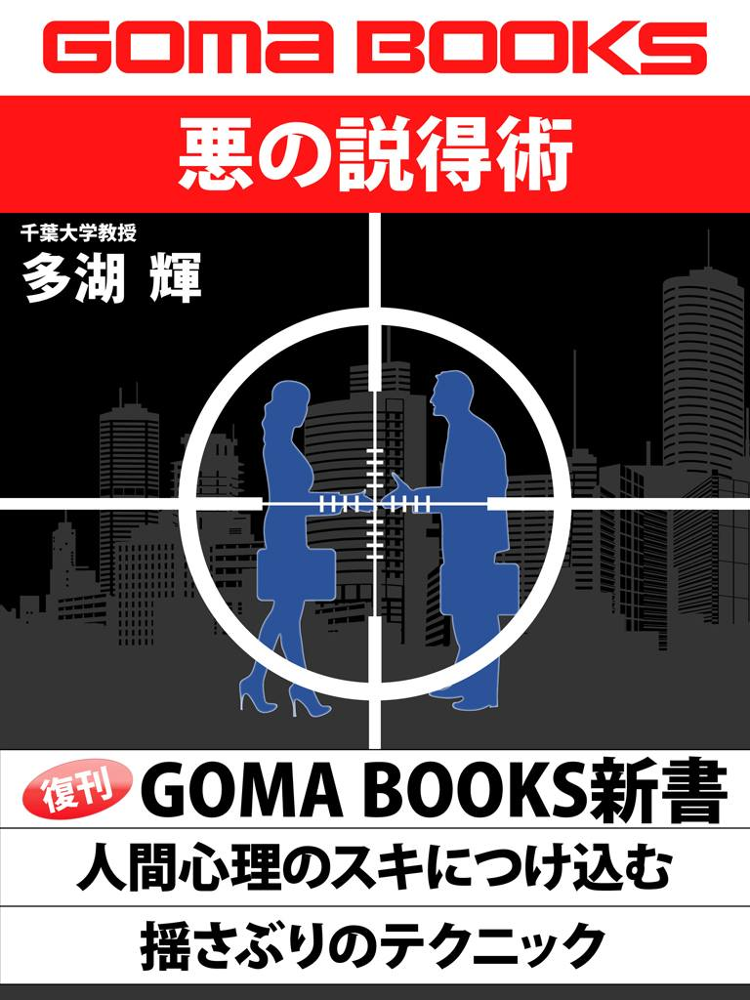
悪の説得術
人間心理のスキにつけ込む揺さぶりのテクニック
多湖輝
まえがき
こんな話を聞いたことがある。
ある会社の団体交渉の席なのだが、賃上げ交渉がこじれて、あわやスト突入かという緊迫したムードが会場いっぱいにみなぎっていた。無期限ストに突入すれば、当時の経営状態からみて、会社はいっきょに危機的状況に追い込まれる。これは労使ともに、けっして望ましいことではなく、両者のあいだでもなんとか最悪の事態だけは回避したいという気持ちはあった。しかし、交渉のやりとりの中で、互いに感情的になり、冷静さを失った状態に陥っていたのだ。
ところが、ここに思いがけないハプニングが発生した。ピーンと張りつめた会場の場内アナウンスのスピーカーから、突如、意外な声が流れたのだ。
「あったかい、やきいもー。石やきいもー」
人をくったような、しかしどことなくのんびりとあたたかみを感じさせるふしまわしに、緊迫した会場の空気はいっきにゆるみ、思わず、どっと笑い声がひろがった。
人間の心理とは、不思議なものである。この、場違いな石やきいもの一声の闖入が、その場の雰囲気をガラリと一変させてしまったのである。労使双方とも、この瞬間ふっとわれにかえり、冷静さを回復した。それは、文字どおり起死回生、交渉成立への救いの一声であった。
その後、社内では、人が集まるたびに、このときのことが語り草になった。いったい、どうして場内アナウンスにあの声がまぎれこんでしまったのか。人びとは、あまりのタイミングのよさに驚きもしたり、心の底で感謝したりもした。しかし、だれ一人として、それが経営陣のだれかが、意図的に仕組んだ心理作戦かもしれないと、言い出すものはいなかった。
事実、経営陣も、ことの真相は知らなかった。したがって、この事件は、いまだに謎につつまれたままである。だれかが、どこかで仕組んだものなのか、それともまったくの偶然だったのか、いまも判然としない。しかし、その効果があまりにも大きく、絶妙なものだったことだけは、居あわせたすべての人の心の中に、強く刻み込まれている。
「説得」についてお話ししようとするこの本ののっけから、いきなりおかしな話を持ち出して、読者はいぶかしく思われたかもしれない。しかし、この話はけっして「説得」の技術と無関係ではない。むしろ重要なヒントを含んでいるのだ。「説得」が、広い意味で、人間の「態度変容」を起こさせるための働きかけだとすれば、このとき、まさに労使双方に、大きな態度変容が起こった。だから、結果から見て、そこにひじょうに効果的な説得場面があったことは間違いない。
意図されたかどうかは別にして、人びとの心を一瞬、それまでとまったく違った世界に向けさせ、いきづまっていた思考や感情に息抜きを与えた。いがみあっていた同士が、共通の〝笑い〟を笑うことで、なんとはなしの心のかよい合いさえ生まれたようだった。これが、すぐれた「説得」でなくて何であろうか。
説得とは、まことに不思議ないとなみである。断固ことわるつもりでいたはずの仕事を、いつのまにかすすんで手がけていたり、ミイラ取りがミイラになるたとえではないが、説得役が逆にまんまと相手に同調させられ、相手の代弁者になりかわってしまったりする。
考えてみると、およそ政治家にせよ、管理職にせよ、教師にせよ、親にせよ、セールスマンにせよ、あの人は......といわれるほどの人物ならば、かならずといってよいほど、高度な説得力を身につけている。しかも、その説得力たるや、いわゆる能弁さとも、強引さともまるで無縁なものである。だれもが、いつのまにか引き込まれ、耳を傾け、抵抗する気持ちもなく、みごとに説得されてしまう。まるで、催眠術にでもかかったように、乗せられ、あやつられてしまうのである。
しかも、多くの場合、説得されたという意識すらなく、みずから進んで相手の意見に同調し、行動してしまう。むろん、だまされたとか、やられたというのでもない。巧みな説得者には、だれもが心から喜んで、自然に協力し、同調したくなるのである。
私は、そうした巧みな説得の方法を、あえて、〝悪の説得術〟と名づけてみることにした。あまりにも巧みで、あまりにもみごとで、心にくいからであり、人をまるで悪魔に魅入られたように、自在に動かしてしまうからである。しかし、よく考えてみると、これは〝悪〟どころではなく、最高最善の説得術のことかもしれない。それほど、心にくいまでに巧みな説得術を心得た人が、たしかにこの世には存在するのである。
私は、心理学を学びはじめた若いころから、説得の問題には、最大の興味と関心を抱いてきた。いつの日か、心理学が、人間関係を取りもつ武器となり、道具となる日がくるとすれば、それは広い意味での説得のメカニズムが、つねに根底にあるだろうと考えていたからだ。
そうした考えから、私は、つとめて、抜群な説得力を有する多くの人びとに接し、何が彼らの説得力の源泉であるか、またその具体的な技法について、ことあるごとに分析し、その応用方法を考えつづけてきた。いま、この本で紹介しようとする数々の技法は、いずれもこうした実際の説得場面で、長年通用し、大きな効果を発揮してきたものばかりである。今さらながら、それらのことごとくが、期せずして、人間心理のメカニズムを心にくいまでに利用し、活用しきっている点に驚かされる。
その意味で、すぐれた説得者は例外なく人間心理を読む大家である。むしろ、彼らの方法は、机の上での理論的心理研究より、それこそ数段まさった説得力を持つ。私はかねてから、学と名のつくものも、つねに日常的有効性を持たければ意味がないと考えてきただけに、これら説得の大家たちの方法には、教えられるところが多い。それを「学問」と呼ぶことに抵抗があるなら、〝術〟と呼べばよい。医学が医術から進歩したように、心理学も、心理術としての洗礼を数限りない現実の場で受けてはじめて、たしかなものになる。
こうした心理学と心理術のみごとな出会いが、この本で紹介する数々の説得技法といえるかもしれない。その意味で、この本も、読者のみなさんにとって、かならずや、毎日の生活の中で、実際的な有効性を発揮してくれるものと信じている。
昭和五十八年二月一日
多湖輝
悪の説得術／目次
１．まんまと自分のペースに引きずり込む
１ 大きなショックを大きく感じさせない説得術
２ 相手の感情を逆なでして本音を引き出す説得術
３ 自分の悪を隠蔽する説得術
４ 言葉・動作の早さで話のイニシアチブをとる説得術
５ 開きなおって自分の非をとぼけとおす説得術
６ 〝誤前提暗示〟で迷いを断ち切らせる説得術
７ 〝最後のチャンス〟を切り札に決断を早めさせる説得術
８ 突然の沈黙で相手を術中にハメる説得術
９ ミスをわざと無視する説得術
10 禁止の〝期待〟を裏切って禁止する説得術
11 論理をうまくはぐらかす説得術
12 失敗をけしかけて失敗を防ぐ説得術
13 わざと相手の欠点を明言して相手から信頼感を得る説得術
14 動作や表情で話の内容を錯覚させる説得術
15 叱責を叱責と思わせない説得術
16 相手の出鼻をくじき注意をそらす説得術
17 口実をつくって責任のがれを封じる説得術
18 大義名分をつけて抵抗感を失わせる説得術
19 相手の反発を逆用する説得術
20 第三者にかこつけて相手の態度を改めさせる説得術
21 デマを利用して話を信じ込ませる説得術
《悪の説得術のための名言集（１）》
２．〝その気〟がないのに〝その気〟にさせる
22 〝得〟をエサにして辛いことを引き受けさせる説得術
23 親しさを装って相手の心を開かせる説得術
24 不可能を可能と思わせる説得術
25 説得したい相手本人を〝説得者〟に仕立てる説得術
26 会う時間の長さより会う回数を多くして親しさを増す説得術
27 大きな負担を小さく感じさせる説得術
28 拒絶の気持ちをしだいに失わせる説得術
29 小さな一致点を拡大解釈する説得術
30 ライバルをほめることで相手を発奮させる説得術
31 相手の心に〝義理〟を負わせる説得術
32 知らずに参加意識を高める説得術
33 拒絶を譲歩に見せかける説得術
34 マイナス情報を加えて話の信憑性を増す説得術
35 それとなく〝良心の痛み〟を感じさせる説得術
36 ＮＯの理由をＹＥＳの理由にすりかえる説得術
37 「それしかない」と断定してそう思わせる説得術
38 〝役割期待〟を裏切って警戒心をとく説得術
39 情報通を装って話を引き出す説得術
40 〝偶然〟を〝運命〟と思い込ませる説得術
41 「聞いた」を「わかった」と錯覚させる説得術
《悪の説得術のための名言集（２）》
３．反論する意欲を失わせる
42 共通の〝仮想敵国〟をつくる説得術
43 ひとり言で相手に自分の非を気づかせる説得術
44 反論をほめちぎって相手を骨抜きにする説得術
45 自分の論理の弱点をかくす説得術
46 相手の追求をはぐらかす説得術
47 生理的欲求を満足させて攻撃力を弱める説得術
48 相手の感情をやり玉にあげて反論をかわす説得術
49 相手に存分にしゃべらせて反論のスキをつかむ説得術
50 叱ったあとの操縦で反感を忘れさせる説得術
51 爆発寸前の反発心をかわす説得術
52 こちらの弱みをわざと見せる説得術
53 過度にほめて相手の不安感を助長する説得術
54 理論のための理論を粉砕する説得術
55 相手の一人を代弁者に仕立てて抵抗力を弱める説得術
《悪の説得術のための名言集（３）》
４．要求を自ら進んで引っ込める
56 問題をことさらに大きくして苦情を引っ込めさせる説得術
57 集団の一致した意見を粉砕する説得術
58 相手に自分の要求を過大なものと反省させる説得術
59 見せかけの譲歩で相手の譲歩を引き出す説得術
60 近寄る相手を敬して遠ざける説得術
61 根本問題にすりかえて具体的要求を退ける説得術
62 自説をわざと否定して賛成を引き出す説得術
63 自分の誤りをあっさり認めて追求をかわす説得術
64 相手のせっぱつまった要求をうまく退ける説得術
65 相手に要求のくだらなさを思い知らせる説得術
66 限定おわびで苦情を封ずる説得術
67 機先を制して相手より心理的優位に立つ説得術
68 攻撃のエネルギーを分断して要求を退ける説得術
《悪の説得術のための名言集（４）》
５．心のスキをついて言い分をのませる
69 二者択一の選択肢で決断を早めさせる説得術
70 〝時間差攻撃〟で言い分を通す説得術
71 目先の要求を満足させて本来の欲求を忘れさせる説得術
72 精神と肉体の変調時を攻撃する説得術
73 先入観を植えつけて自説へ誘導する説得術
74 相手に解決のゲタをあずけるふりをする説得術
75 決断を迫らずに決断させる説得術
76 自分の主観をカモフラージュする説得術
77 相手の立場に立っているように見せかける説得術
78 相手を挑発していやなことを引き受けさせる説得術
79 手ごわい相手に要求をのませる説得術
80 過酷な要求をすんなり通す説得術
81 自分を卑下して相手の心にスキをつくる説得術
82 相手の優越感をくすぐる説得術
83 第一人者の説を引用して自説を正当化する説得術
84 大すじだけと見せかけて細部まで賛成させる説得術
85 出しおしみを装って助言を傾聴させる説得術
86 〝選ばれた人〟を強調して相手に承諾させる説得術
87 感情を先取りしてその感情を封殺する説得術
１．まんまと自分のペースに
引きずり込む
１ 大きなショックを大きく感じさせない説得術
以前、二人の裁判官が、ゴルフ場の経営者からワイロを受けとっていたという事件が起こった。倒産したゴルフ場の再建に関する審査を有利に運んでもらったという事件だが、ゴルフ場の経営者が現職の弁護士だったこともあって世間の注目を集めたものだ。法律の専門家同士が、なぜいとも簡単に法に触れるような行動に走ったのだろうか。しかも、買収されたのは、つねにことの善悪をはかり、冷徹な目で価値を判断しなければならない立場の裁判官である。
最近は、いろいろと物議をかもす裁判官がいて、少々のことでは驚かなくなったとはいえ、大半の人はわが目を疑ったのではないだろうか。そこには、巧妙に仕掛けられたワナがあったに違いない。実際、ワイロを贈った弁護士先生は、じつに人間心理のメカニズムを利用したうまいやり方をやっていた。まずゴルフのクラブを贈るときは、「いや、これは私の〝お下がり〟なんですよ。もう１セット同じものが手にはいりましてね。お下がりで失礼なんですけど使ってください」と、受け取りやすくする。
ゴルフのラウンドが終わり、料金を精算する際には、「経営者である私の調査費ですから」などといっては、さかんに饗応していたらしい。つまり、ワイロではない、ほんの小さなものだということをさかんに強調しておいて、そのじつワイロを贈っていたというのだ。
お下がりだといわれれば、たとえ新品で高価なものでも、気軽に受け取るのが人間心理だ。また、最初に安いもの、つまらないものを受け取ると、あとで純然たるワイロ性のある高価なものを受け取っても、その刺激がわからなくなるのも人間心理である。裁判官は、他人以上に、法に触れる行為に関しては敏感であるはずなのに、いとも簡単に引っかかってしまったのは、この人間心理のスキをつかれたからにほかならない。
もとより、ワイロをすすめる気は毛頭ないが、こうした説得法は、正義を売りものにしている人や、いやなことを引き受けさせるには効力があるようだ。はじめから大きな電流を流せば、誰でもショックを感じるが、徐々に電流の大きさを変えていけば、それほどのショックは感じないものだ。それと同様に、小さなものからだんだん大きなものに変えていけば、いつか大きなものを受け入れても、その大きさがわからなくなってしまう。部長をいきなり平社員に落とせば、誰でもひどい人事だと思うだろうが、課長に、係長にと、階段を一段ずつ落としていけば、それほどショックと思わなくなるものだ。いいことはエスカレーター方式で、悪いこと、いやなことは階段方式が、効果があるやり方なのだ。
＊部長を平社員に降格させるときは、一段一段役職を下げていく。
２ 相手の感情を逆なでして本音を引き出す説得術
私は、かつてあるテレビ番組が、政治家百人を集めてその意識と意見を明らかにするという、一風変わった試みに協力したことがある。この番組は、ぶっつけ本番で、一人一人の議員に矢つぎばやの質問を浴びせていく。質問の内容は、かなりどぎつく核心をついたもので、議員たちは互いに隣りが見えないように仕切りをされた、ヒナ段式の座席に坐ってこれに答える。
最初は、議員らしくつとめて落ち着いた答えをしていた彼らだったか、司会者のテンポの早い〝ぶしつけ〟な質問に、そのうちしどろもどろの受け答えになる議員も出てきた。それを無視して、なおもきわどい質問を秒きざみで投げかけたところ、ついに怒りだした議員がいた。「冗談じゃない。こんな番組にまともに答えていられるか。こんな質問には答えたくないんだ！」と、憤然と席を立った。カメラはその議員が、肩をいからしてスタジオを出ていく姿を、ずっと追いつづけた。
とんだハプニングと見えた視聴者もいたかもしれないが、じつはこれは私たちの仕組んだワナに、まんまと相手が乗ってくれた結果だった。政治家はふつう、国会や記者会見の場で、とりすました公式見解ばかりをくり返している。この議員たちの、もっと人間的なナマの声を引き出してみたい。ふだん聞いたことのない、政治家の本音を吐き出させたい。それが、私たちの狙いだった。しかし、海千山千の強者ぞろいで一くせも二くせもある彼らに、尋常の手段で迫っても、のらりくらりと玉虫色の返事が返ってくるだけだろう。そこで、いつもは先生様あつかいされている彼らに、失礼ながら怒りを誘うようなきわどい質問を投げかけてみたのだ。
結果はご覧のとおり、私たちの作戦はまさに図にあたって、国会ではのらりくらりと回答をはぐらかす議員さんたちが、自分に都合の悪い質問が連発されると、ムキになり、しどろもどろになり、結局は感情をあらわにして席を立ってしまったのだ。
人間は、いったん感情を爆発させると、心にまとっていた堅いウロコが吹きとばされてしまう。そしてそこには、赤裸なその人自身が現われる。こうなれば、相手を意のままにあやつるのは造作もないことだ。説得は、相手の本音を知ったとたんに半ば終わったようなものなのだ。
ＣＩＡなど口の堅い情報関係者の本音を聞き出すことで有名なジャーナリスト、落合信彦氏の取材の秘訣は、相手を怒らせることであるという。難攻不落の彼女が、もしあなたの不実に怒りを爆発させ、平手打ちでもくらわせてくれたなら、彼女の心への揺さぶり作戦は、ほぼ完成の段階に達している。頬の痛さが、甘い想い出になる日も間近いであろう。
＊本心を隠して表わさない相手は、わざと怒らせて心にゆさぶりをかけてみる。
３ 自分の悪を隠蔽する説得術
「類似品にご注意ください」と書かれたタッグのついたニセ物をつかまされたという、笑い話じみた体験をお持ちの方も多いことだろう。このようなやり方は、どうみてもサギ師の手口としかいいようがないが、よくよく考えてみると、理屈では彼らのほうが一枚も二枚も上を行っているともいえる。
このタッグと同じ手口をさらに有効に駆使しているのが、家々の戸口をまわって悪質な学習教材や化粧品などを売り歩いている悪徳セールスマンである。彼らはきまって、「世の中には悪い業者もたくさんいますからね。だまされないように注意してください」という親切な忠告を残して去って行く。応対に出た主婦は、まさか当の本人が悪徳セールスマンとは思わない。
その結果、そのセールスマンが何度か足を運ぶうちに、客観的にみれば不利な条件でも、「この人なら信頼できる」という安心感に支えられて、彼女は当のセールスマンから商品を購入することになる。後日やってきたセールスマンに、いかに不利な契約をさせられたかを指摘されても、そのときは後の祭りなのだ。そしてそのセールスマンが、こんどはほんとうの親切心から忠告を与えたとしても、彼女は血相を変えて彼を追い出すことだろう。
こうした被害にあわないために、彼らの手口を分析してみると、どれにも共通しているのは、他人の〝悪〟をことさらに強調している点だ。〝悪人〟がわざわざ悪の手口を公開して自分の不利益になるようなことをするはずがないという、〝善人〟の心理のスキを巧みについている。「同業者の悪口はいいたくないが、不動産屋にも悪いのがいましてね。私どももほんとうに迷惑するんですよ」といわれれば、私たち善人は、彼が同類とは例外だとつい思い込んでしまう。
しかし、彼らはけっして自分が例外だとはいっていない。例外だと思うのはそちらの勝手だというわけだが、彼らは、他人の悪を指摘して、他に注意を向けさせることによって、自分が例外であることを言外に主張しているのだ。
それにしても、こんな子どもだましにまんまといっぱい食わされる人があとをたたない事実は、この心理テクニックの有効性を示唆するものとして興味深い。もっとも、こうした手口が公開された以上、彼らはさらに巧妙な仕掛けをしてくるに違いないから、くれぐれも注意されたい。それと同時に、親切心から同業者の悪口の手口を説明しても、相手からあのトリックを使っているなと誤解を受ける恐れもある。相手に、同類、同業者との違いをわからせるには、どうやら正攻法でいくしかないようだ。
＊悪徳業者は、〝ニセ物にご注意〟といって、買い手を信用させ、ニセ物を売りつける。
４ 言葉・動作の早さで話のイニシアチブをとる説得術
一一〇番や一一九番の電話を受ける警視庁や消防庁の係官は、わざとゆっくりした口調で応対するように訓練されていることをご存じだろうか。犯罪や火災の発生を通報してくる場合、ほとんどの人は興奮のあまり話が要領を得ない。しかし、係官が落ち着いた口調で応対すれば、通報者も自然に落ち着いて冷静に状況を説明できるようになる。通報の経験者の話では、最初は、こちらが緊急の重大事を告げているのに、係官がなんとも間のびしたのん気そうな声を出しているのに腹が立ったけれど、話しているうちに、上ずった声も落ち着き、頭も整理されて正確な報告ができたということだった。
これが逆だったらどうなるだろうか。「エッ、火事ッ！ そ、それはどこですかッ！ あなたの、いや火事の場所はッ！ ここですって、その、こことはどこのここですかッ！ 見えませんかって、私は電話室の中ですよッ！ 電話番号、いや所、番地を早く、早くッ」などとやったら、相手は、自分の番地すらろくに思い出せなくなってしまうだろう。
古今亭今輔師匠の芸の極致は、そののんびりした動作や間のとり方にあるといわれる。高座に上がるまでの歩き方などは、一見間のびして見え、しかも、じっくりと客席を見回して話し始めるまでの時間がまた長い。つまり、今輔師匠の話術の特徴は、早く聞きたい、先を知りたいという観客の軽い興奮状態をわざとじらすことによって、自分のペースに巻きこんでいくところにあるといえよう。
日常生活でも、抗議やクレームを持ちこんできた相手をなだめなければならないことがよくあるが、興奮状態にある相手に対して、真正面から正論をふりかざしても説得できるものではない。こんなときこそ、相手を自分のペースに巻きこむこのテクニックがモノをいう。
相手の言い分をゆっくりくり返してやる、あるいは、タバコに火を点けたり、メモをとる動作をことさらゆっくりしてみるのも効果的である。勢いこんでいる相手も、このようにわざとテンポをはずされると気勢をそがれ、しだいに冷静になっていく。そうなればしめたもので、正論をぶっつけることもできるし、こちらがイニシアチブをとって話を進めることも容易になる。
タクシー会社にはかならず事故処理係がいるが、ベテランともなると、こうした心理的テクニックを駆使して、ばかていねいなほどのゆっくりとした動作・話し方で、興奮している相手をうまく丸めこんでしまう例も少なくない。丸めこむといえば何となく口先三寸でごまかすような印象を与えるが、結果的には相手の目を開かせることにもなるのである。
＊興奮している相手を説得するときは、意識的にゆっくりした動作・言葉で応じるといい。
５ 開きなおって自分の非をとぼけとおす説得術
以前、私が東南アジアを旅行したとき、旅行客の財布を抜きとった現地人の男が捕えられる現場に遭遇し、事の成りゆきをしばらく注目したことがある。治安のあまりよくない場所だったので、事件そのものは珍しくはなかったのだが、その捕えられた男の言動がちょっと変わっていたからである。
置引きの現場を取りおさえられたわけだから、ふつうなら、「恐れ入りました」となるところだが、この男は、意気消沈するどころか、何を騒いでいるのかという表情でニッコリ笑みを浮かべ、「私のどこが悪いのでしょうか。たしかに、財布を持ってどこかに行ってしまえば泥棒です。しかし、私はまだここにいるのですから、とがめだてされる理由はありません」と開きなおったのだ。〝盗っ人たけだけしい〟とはこのことだろう。
もちろん、どこの国でもこんな屁理屈が通用するはずもなく、男はすぐに逮捕された。ただ、彼の屁理屈は屁理屈なりに筋がとおっており、ことと次第では、その理屈で自分を取りおさえた相手を説得してしまいかねない雰囲気すらただよわせていたのは事実だ。これは、彼が「あやまりの言葉」イコール「自分の犯行を認める行為」という図式を十分に承知し、この一点だけは譲れないとはっきり認識していたからである。したがって、開きなおりの態度にオドオドしたところがなく、それが彼の言葉に、何がしかの説得力を付与したと言えるだろう。
欧米などで交通事故を起こした際、けっして先にあやまってはいけないといわれる。あやまれば自分の非を認めることになり、全責任を負わされるから、あくまでも自分は正しいと言いはるのだという。
自分の非をとぼけとおすこのやり方は、理不尽な責任転嫁を平気でするような相手に対しては有効な手段となろう。簡単に非を認めると、自分に無関係な失敗まで背負わされかねないから、開きなおることで相手を自分のペースに引きこむのも、一つの作戦になるからだ。
その際肝心なのは、〝理屈で開きなおる〟姿勢を貫き、絶対に冷静さを失わないことだ。とりわけ「では、いったいどうすればいいというんですか」などの、捨てぜりふめいた言葉は禁物である。こちらが感情をむきだしにしてしまっては、相手を自分のペースに引きこむどころか、逆にいいようにあやつられてしまう。
表面上は冷静さを装ってあくまでシラを切りとおし、相手にダメージを与えれば、勝負はこっちのものである。
＊自分が悪者にされそうなときは、〝冷静に開きなおる〟と相手を自分のペースに引き込める。
６ 〝誤前提暗示〟で迷いを断ち切らせる説得術
私の友人の奥さんに、じつにうまく縁談をまとめる名人がいる。この奥さんは、「結婚を迷っている人なら、男性でも女性でも、ほとんど一〇〇パーセントまとめる自信がありますわ」と豪語している。
友人が、夫婦同伴で家へ遊びにきたとき、そのまとめ方の秘訣を聞いた。それによると、迷っている人にはいきなり、「見合いがいいのですか？ それとも恋愛？」と切り出すのだそうだ。迷っている理由を聞くのではなく、見合いか恋愛かを聞くと、たいていどちらかを選ぶ。選んだらしめたもので、そのうち、結婚話を持ちこみ、縁談をまとめるという寸法である。これを聞いていて、私はなるほどと思ったものだ。
この場合の迷っている理由が、どこにあるかを考えてみよう。結婚するという対象が、あまりにも芒洋としていて大きいこともあろう。あまりに選択する範囲が大きすぎて、どこをどう取捨選択していいのか、迷っていることもある。だから、結婚を迷っている人を結婚させようと思えば、結婚するしないという大きな選択肢は伏せておき、見合いか恋愛かという具体的な選択肢をつきつける。そうすれば相手は、結婚するかどうかの大前提がすでに検討ずみとなった錯覚をうけ、見合いか恋愛のいずれかを選んでしまうのだ。これを応用すれば、じつに多くのケースに適用できるだろう。たとえば、貯蓄するのに迷っている相手を説得する銀行セールスマン氏は、「で、定期にしますか？ それとも普通預金ですか？」と迫ればいいわけである。
このような心理メカニズムは、心理学的には誤前提暗示と呼ばれ、成城大学教授・堀川直義氏の実験でもすでに実証されており、事実と類似した錯覚ともいえる。堀川氏はいつも尋問しているベテラン刑事たちに、時計の含まれている写真を見せ、何分か後に「何時だったか？」と聞くと、正解の時刻（たとえば一〇時）が出てきやすいが、「三時だったか、九時だったか？」と聞くと、「そういえば九時だったかな」式の、質問どおりの答えが出てきたというのである。この実験でも、「何時だったか」と聞かず、もっと選択の範囲を狭め、三時か九時かと具体的な選択を迫れば、たとえそれが誤った選択肢であっても、選ばざるをえなくなってくるという心理メカニズムを示すものともいえよう。
進学しようか就職しようかと迷っている子どもに、進学を決断させるには、あたかも進学することが前提のようにして、私立にするか公立にするか選択させればいいわけだ。具体的な問題のまえでは、抽象的な大前提となっている問題はどこかへ吹きとんでしまうのである。
＊結婚を迷っている人には、いきなり恋愛か見合いかを選択させる。
７ 〝最後のチャンス〟を切り札に決断を早めさせる説得術
世の中には、あれやこれやと考えて、なかなか自分の結論をださない人が少なくない。商談などでもっとも手を焼くのが、何を言ってものれんに腕押しの、こうした優柔不断型だ。忙しい現代のビジネス社会では、相手の決心がつくまでじっくり待っていたのでは、仕事にならない。それどころか、待っているあいだによけいな情報がはいり込んできて、ますます結論が延びるだけだ。いったい、彼らを優柔不断にさせている原因はどこにあるのだろうか。
その一因は、〝まだ意識〟と〝もっと意識〟にあるといっていい。この両者は切り離せない関係にあり、「まだ考える時間がある。熟慮すればもっといい結果が得られるのではないか」「まだ時間はある。待っていればもっといい話になるかもしれない」という一種の期待感が、彼らをぐずぐずさせているのだ。こんな相手に、時間をかけて結論をださせようというのは、それこそ時間のムダというものだ。そんなことをするより、これ以上時間をかけても、今以上の結論が得られないことをそれとなくほのめかしたほうが手っ取り早い。
時間があろうとなかろうと、いい結果が得られようと得られまいと、最後通牒をつきつけて、彼らの抱いている期待感がむなしいものだということを思い知らせてやろうというわけだ。ちなみに、広辞苑によると、最後通牒とは、「紛争の平和的処理のための交渉を打ち切り、自国の最後的要求を相手国に提出して、それが容れられなければ、自由行動をとるべき旨を述べた外交文書」とある。迷っている相手には、〝これが最後のチャンスだ〟という外交文書をつきつけて、〝まだ意識〟〝もっと意識〟を粉砕してしまうのがいちばん効果的なのだ。
そもそも、人間は〝最後〟という言葉にはどうも弱いようだ。その証拠に、バーゲンセールのキャッチフレーズにはかならずといっていいほど、「これが最後のチャンス」などと謳われている。不思議なもので、こう言われると、あれほど迷っていたのに、買わなければ損をするような気についなってしまう。それも、迷っている人ほど、この文句は効果があるようだ。
私なども、この手につい乗って、不要な品を買わされた苦い経験がずいぶんある。私自身は、どちらかといえば決断の早いほうで、そんな文句に惑わされることはないと思っているのだが、改めて〝最後のチャンス〟だと言われると、ここで買っておかなければ損だという気にさせられてしまう。その意味で、優柔不断型は、損得勘定にたけていて、つねに〝残りものの福〟を狙っているのかもしれない。だからこそ、これ以上待っていても得をしないことをほのめかすことが、決断に踏み切らせる決め手になるのだ。
＊優柔不断の相手には、〝最後通牒〟をつきつけて、〝まだ意識〟〝もっと意識〟を断ち切る。
８ 突然の沈黙で相手を術中にハメる説得術
作家で、中尊寺の貫主でもあった今東光氏は、抜群の話し上手として知られていた。文壇のパーティなどでも、他の人が話すときはざわついていた会場が、今氏が話しはじめると、シーンとなったという。あるパーティでスピーチを頼まれたとき、登壇した今氏は、会場が静まるのをしばらくのあいだ黙って待っていたそうだ。すると、あちらこちらで〝肘のつつき合い〟がはじまり、波が引くように静まりかえる。その一瞬をとらえて今氏は、「うるせえな、餓鬼じゃあるめえし、静かにしろやい」と言ったという。人びとは伝法な口調のおもしろさに思わず笑い、そのとたん、今ペースにのせられてしまったのである。
今氏ほどではないか、私も講演のときに会場がざわついていると、意識的に声をひそめたり、完全に沈黙したりする。そうすることによって、聴衆に「何を言っているのか」「なぜ黙っているのか」と思わせ、注意をこちらに向けられるからだ。もし逆に、ざわつきに対抗して、ますます声をはり上げ、口角泡を飛ばして力説しようとしたらどうなるか。多くの場合、この奮闘は、こっけいな〝ひとり相撲〟に終わらざるをえないだろう。
講演のように一人対多数ではなく、一対一のかけひきの場でも同様である。こちらが懸命に話しているのにまったくあいづちを打たないばかりか、新聞を読み始めたりする人がよくいる。そんな態度をとっても、こちらがなおも話し続けざるをえないと彼らはタカをくくっているのである。つまり、心理的に相手のほうが優位にあるときにこうしたケースが多い。話し手が追いすがってくると思えばこそ、傲慢な態度もとれるのだ。
だから、このような相手には、同じ調子の話し方で迫ってみても、かえって相手の思うツボになるだけだ。こちらが顔を真っ赤にして説得しようとすればするほど、相手は〝馬の耳に念仏〟、ますます冷ややかな態度を示すことになる。すでにこちらの話し声は、相手にとって単なるバックグラウンド・ミュージックになり下がっている。つまり、熱心な説得も〝音〟にしか聞こえないのである。
そこで、話の途中で、声のボリュームを急に下げたり、しばらく沈黙して、〝音〟に変化をつけてみる。大声には耳をふさぎ、心を閉ざしてしまう相手でも、小さな声やだんまりには、相手のほうから身をのり出し、歩みより、感覚器官を開いてくるはずだ。「太陽と北風」の話ではないが、相手が自発的に聞こうという姿勢にできたとき、まさにこちらの思うツボにはめることができるのである。
＊こちらの話に耳を貸さない相手には、わざと一瞬、沈黙してみる。
迷っている相手に対する悪の説得術
●意図的に選択範囲を狭める
●選ばせたい結論をあとに持ってくる
●相手の〝顔〟の立つような大義名分をつけてやる
●「それしかない」と断定する
９ ミスをわざと無視する説得術
軍人にとって最大の不名誉は、軍旗を敵に奪われることだという。乃木希典将軍は西南戦争のとき、連隊旗を反乱軍（薩軍）に奪われてしまった。ところが、ときの大元帥である明治天皇は、乃木将軍をとがめなかった。後に、〝士は己を知る者のために死す〟という言葉どおり、乃木将軍は明治天皇を追って殉死したが、それはこのときの恩義を終生忘れなかったからだという。
大きなミスをおかしたとき、人はだれでも強く反省している。たとえば、野球でこの試合に勝てば、リーグ優勝できるという一戦で、〇対〇で迎えた九回裏、ノーアウト、ランナー二塁だとする。ところが、ランナーが油断をしたばかりに牽制球で殺されてしまった......。ランナーはしょんぼりとベンチに引きあげてくる。このとき、監督が他の選手の前で彼をガミガミ叱ったとしたら、どうなるか。ランナーだった選手は、身の置きどころがなくなり、ますます落ち込んでしまうだろう。反対に、監督が「ドンマイ、ドンマイ......」とその選手を慰めたとしたら、選手はえてして、意気に感じ、延長戦でサヨナラヒットを放ったりするのである。
人間だれしもミスをする。その程度が大きいか小さいかの差である。この二つの例は、そうしたミスを後の仕事にいかに生かすかという点で格好なケースである。部下のミスを叱るのはだれにでもできる。問題はそのやり方だ。
いちばん下手なやり方は、ミスに対して、いつも同じトーンでガミガミやることだろう。部下にしてみれば、いかなるミスをしようが、ミス→ガミガミ、ミス→ガミガミ、という機械的反応がかえってくるだけだから、いつのまにか、嵐が通りすぎるのを待つようになってしまう。人間心理の特性として、ある状態に慣れ切ってしまうと、そこからは意欲、創造性といったものは生じにくくなるのだ。またミスをして、十分に責任を感じているのにガミガミやられれば、上司との信頼関係もなくなってしまうだろう。
この点、説得上手といわれる人は、相手のミスをじつにうまく利用する。その一つの方法が、日常の小さなミス、たとえばちょっとした計算違いなどはこまめに注意するが、大失敗のときはわざと無視したり、むしろ励ましてやるというやり方だ。
大きなミスをすれば、だれしも自責の念でいっぱいだ。そうしたときに、励まされたりするとどんな気持ちになるか、改めていうまでもないだろう。大きなミスを不問に付された人間は、ふだんの小さなミスに対する口やかましい叱責にも、反発を感じず、むしろ感謝するようにさえなる。「あの人のためなら」と、少々過酷な要求にも、応えてくれるようになるのである。
＊小さなミスは叱っても、大きなミスをときには無視してやると、相手の忠実度は高まる。
10 禁止の〝期待〟を裏切って禁止する説得術
ある新聞に有名人による〝わが家の教育法〟といった内容の連載記事があった。職業がら、私も毎回読んでいるのだが、どの親も子どもに手こずり、いろいろと工夫をしていておもしろい。そのなかに、将棋の芹沢博文八段の家庭のレポートがあったのだが、たいへん興味深く読んだ。
あるとき、芹沢八段の息子さんが、学校で先生からこっぴどく叱られ、「殺してやりたいほど憎い先生だ」と言った。それを聞いた芹沢八段が、「それほど憎いのなら、かまわないから殺しておいで」と言ったという。そして、こうつけ加えたそうだ。「そのかわり、人を殺したら、殺したほうも死ななきゃならない。だから立派に死んで見せなさい」。こう言われて、息子さんは先生を憎むのをやめたという。
似たようなケースを、カウンセリングの際によく見る。たとえば、ひどい夫をもった妻が離婚の相談に来たとき、その妻は、「別れないほうがいい」「死ぬつもりになれば何でもできる」と言われるものと期待している。そして、そう言われたなら、自分の夫がいかにひどい人間かをぶちまけようと考えている。ところが、このとき、案に相違して「そんな悪い旦那、一刻も早く別れなさい。聞いていると男の風上にもおけないような人間ではないですか。別れたほうがあなたのためになります」と、自分の主張があっさり認められると、当初の望みに対する欲求がなくなる。そればかりか、「そこまで悪いわけでは......」と反論をはじめる奥さんさえいる。
こんな人間心理をふまえれば、かたくなになっている人間の説得もたやすくできる。ある行動に執着してかたくなに思い込んでいる人間は、周囲のコンセンサス（合意）に反した行動をとろうとする。自分の意志が、周囲の人間や世の常識に反していると思えば思うほど、その人間は防壁を厚くして説得困難になる。ビルの屋上に登り、「俺は死ぬぞ。飛び降りるぞ」と叫んでいる男を想像していただきたい。彼は自分の行動が周囲から受け入れられるはずがないと思うゆえに、ますます心を閉ざすのである。
現実にはできにくいが、このとき、彼の予想に反して、禁止ではなく、逆に督促してやったらどうだろうか。つまり、「わかった。さあ飛びなさい」とやるのである。おそらく彼は、自分の予想を百八十度裏切られたことで、心理的な肩すかしをくらい、心の防御壁にほころびができるに違いない。カウンセリング場面でも「死にたい」という人に対して、同様に「なるほど。そんな状態で生きていても仕方ない。死になさい。自殺の方法は相談にのりますよ」とやるのである。〝禁止〟の期待が裏切られると、人間は、逆にやる気をなくすものなのだ。
＊「死にたい」「別れたい」という相手には、それをすすめることが禁止以上の禁止になることがある。
11 論理をうまくはぐらかす説得術
アメリカのミステリー作家エド・マクベインの代表作に、『八七分署シリーズ』という警察小説の一群がある。十数年も昔になるが、テレビ化されて日本でも放映されたので、記憶しておられる読者も多いかもしれない。ニューヨークの下町を舞台に個性豊かな刑事たちの活躍ぶりを描いて息もつかせぬおもしろさだが、このシリーズの魅力は何といっても、軽妙なテンポで運ばれる会話のおもしろさにあるといってもいいだろう。
とくに取り調べの場面では、容疑者に対して二人の刑事が掛け合い漫才よろしく合いの手を入れながら、たくみに自白に追いこんでいく。容疑者にはかならず一見堅牢に見えるアリバイがあるのだが、たいてい刑事たちの合いの手に挑発されて、ついにはそのアリバイが崩れていくプロセスが、会話の流れとして、じつにいきいきと描写されていて、何度読んでもあきない。
私がなぜ八七分署シリーズの話を持ち出したか、もうおわかりだと思うが、ここにも見逃せない説得術のヒントが潜んでいる。私たちの日常生活でもっとも説得しにくいのは、理路整然と話す相手である。こういう相手に対して、なまじ論理で対抗しようとしても、かえって相手の術中に陥ることが多い。といって、黙って相手の話に耳を傾けているだけでは相手の心理的優位を認めてしまうことになり、ますます、そのペースに巻き込まれてしまう。
そこで、このような難敵に対しては、まず、そのペースを乱すことが先決である。そのためにもっとも手っとり早い方法は、八七分署の刑事たちではないが、「なるほど」とか、「ごもっとも」などと、できるだけひんぱんに言葉をはさんで、相手の話の流れを分断するよう試みてみることである。あるいは、いちいちうなずいたり、わざと横を向くなどの動作を活用してもよい。話の流れが分断されると、当然のことながら、相手の論理的思考の流れも分断される。その結果、思わぬボロを出して、こちらに反論のきっかけを与えてくれることも少なくない。
この心理テクニックは、国会論争の場でもよく使われる。大臣などの国会答弁はふつうはあらかじめ用意された想定問答集を読みあげるだけなので、攻める側の野党議員にとって、その論理の壁を崩すのは容易なことではない。ところが、質問者がベテラン議員になると、さすがにそこは心得たもので、相手が答えているときに大きく相づちをうったり、ときにはわざとそっぽを向くなど相手の話の流れを分断する作戦に出る。かなり答弁に慣れた大臣でも、この手でやられるとしだいにペースを崩され、つい本音をもらしてしまうことも珍しくない。ことに立て板に水を流すように、理路整然と話す相手ほど、この手の分断作戦には弱いようだ。
＊論理で攻めてくる相手には、合いの手を多く入れて、論理の流れを分断する。
12 失敗をけしかけて失敗を防ぐ説得術
名優森繁久弥氏のヒット作に、『社長シリーズ』と銘打たれたサラリーマンものの喜劇映画がある。軽妙な演技とサラリーマン心理の機微を巧みにっいたもので、世のサラリーマンの共感を得たようだが、〝森繁社長〟はその演技や人柄は別にして、セリフ回しだけをとるとけっして名社長とはいえない。というのは、部下に仕事を命じる際、最後にかならず、「手落ちのないように頼むよ」「十分に注意してやってくれたまえ」という一言を付け加えているからだ。これで、失敗がなくなれば苦労はないが、こうしたセリフは、えてして好ましくない結果をうみやすい。
ドラマならずとも、〝森繁社長〟のように、部下に仕事を任せるとき、二言目には「失敗するな」と注意せずにはおかない上司をしばしば見受ける。自分の責任につながる部下の失敗を恐れる気持ちはわからないではないが、これではプレッシャーをかけるばかりで、部下はすっかり萎縮してしまう。「失敗するな」という言葉は、部下に「失敗するのでは」というマイナスの暗示をかけ、かえって失敗を招くもとにもなる。さらに、こうした上司の態度は、「まかせると言ったのに、自分を一人まえと見ていない」と、部下の心に不信感を芽ばえさせることにもつながる。これが高じると、「どうせ信用されていないのだから」と、部下ははじめから投げやりな姿勢で仕事にのぞみ、結局は失敗がくり返される。
その点、本田技研の創業者・本田宗一郎氏は、名社長だった。氏のお得意のセリフに、「失敗を恐れてはいけない。恐れなくてはいけないのは、失敗を恐れて何もしなくなることだ」というのがある。新技術の開発は、おびただしい失敗のうえになしとげられるというが、本田氏の言葉には、まさにその道を自らの手で切りひらいてきた人なればこその重みがある。この本田氏の言葉は、上司が部下の失敗を防ぐにはどうしたらよいのかの答えが含まれている。
つまらないミスが目立ち、仕事を全面的に任せるのが不安に感じられる部下がいるとする。こういう部下にこそ、「失敗のないところに成功もない。どんどん失敗しろ」と、逆に失敗をけしかけ、仕事を任せればいいのだ。「失敗せよ」と言われて、「ではお言葉に甘えまして」などと、わざと失敗するものなどはいない。それどころか、そこまで自分は信用されているのかと発奮し、責任感を増大させるとともにケアレスミスも減り、意欲的かつ創造的な仕事をするようになるものなのだ。
どんな上役でも、失敗を恐れない上役はいない。本田社長になるか、森繁社長になるかは、失敗を恐れていないフリができるかどうかにかかっている。
＊部下に仕事をまかせるときは、「どんどん失敗せよ」と突き放すと、責任感をもち失敗が減る。
13 わざと相手の欠点を明言して相手から信頼感を得る説得術
あるときテレビでたまたま「笑点」という番組を見る機会があった。当代の人気落語家たちが司会者の出す質問にアドリブで答えを出し合い、そのエスプリを競うという番組で、視聴率もけっこう高いそうである。そのとき私はとても強烈な印象を受けたのだが、それは、その何人かの出演者たちが、お互いのやりとりをするときに、見ているこちらがはらはらしてしまうぐらいに、ののしり合い、悪口を言い合うのである。最初はテレビ番組だから......などと思っていたのだが、そんな生やさしいものではない。じつにシビアな言い方なのである。
後日友人にその話をしたところ、「あの番組はそれがひとつの人気の原因になっているんだよ。出演者同士が、仲がよくなければできないことさ」と教えられ、なるほどと納得させられたのである。考えてみれば、思うままに悪口を言い合っても、あとあとまでミソを残さないような間柄というものは、両者のあいだに強固な信頼関係があってはじめて成り立つものである。これほど打ちとけた関係はそうそうあるものではない。
もし仕事の上で、相手ともう一歩打ちとけた関係になりたい、あるいはもうすこし相手の信頼感を得なければならないというような局面に立たされたとき、このことを逆手にとってみることはできないだろうか。仕事のつき合いとか、商談や交渉の相手との関係は、いきなり腹をわり合ってというようにはまずならない。お互いに相手を見定めたり、さぐりを入れてみたりで、とかく表面的なものになりがちである。このような関係で終始すれば、交渉や商談もなかなか進展しないだろう。こんなとき、ふつうならばとても言いにくい相手の性格上の欠点や短所を、ごくやんわりと口にしてみるのも一法である。たとえば「ご心配なのはよくわかりますが、なぜそう悪いほうへ悪いほうへと結論をお急ぎになるのでしょうか」とか、「失礼ですが、すこし慎重すぎると思えるのですが......」という言い方は、いつもあたりさわりのない常套句や、お世辞ばかり耳にしている相手にしてみれば、新鮮な驚きを伴うはずである。
そしてその瞬間から、相手のあなたへの評価も今までとは変わったものになってくるであろう。
「そこまで自分のことをよくみていてくれたのか」と相手が感じたなら、それは彼の心の中にあなたへの信頼が生まれた第一歩であるということができるだろう。言いにくいことを言うことによって、おざなりな関係が打ちとけたものへと変化すれば、当然、難航していた仕事上の問題もよい方向へ動きだすはずである。ただし相手の悪口、批判を口にする場合、言葉遣いや言い回しには十分気をつけるということは言うまでもない。
＊いつも、あたりさわりのないお世辞を聞かされている相手には、辛らつな言葉を投げつけてやる。
14 動作や表情で話の内容を錯覚させる説得術
よく経験することだが、話の内容はまったく覚えていないのに、妙に印象深く記憶に残っているという人がいるものだ。そういう人は、あとで思い返してみると、きまって、「熱っぽい話し方」をしていたり、「誠実な話し方」をしていたり、あるいは「身ぶり手ぶりをまじえた話し方」で聞き手を魅了した人間なのである。こうして植えつけられた彼なり彼女なりの全体的なイメージというものは、なかなか忘れ去りにくいものだ。
ふつう、生身の人間が同席して話し合う場合、話の内容だけが頭に残っているなどということは、絶対といっていいほどありえない。話し手のかもし出す雰囲気や話しぶりが、つねに話の背後に見え隠れしている。心理学の用語でいえば、話の内容という「図」は、話しぶりという「地」といつもいっしょに、聞き手に知覚されているわけだ。そして、この「図」と「地」がときとして逆転するというのも、心理学の常識である。
つまり、聞き手にとって、話しぶりのほうが、話の内容そのものよりも大きな比重を占める場面もたびたびあるのだ。話し手のトーンや動作が、「図」として聞き手の意識の前面に出て、話の内容はまるでバックグランド・ミュージックのように、「地」として意識の背後に退く。よくあることだが、若い女性が恋人のことを実際の性格や話の内容と関係なく「やさしい人」「いい人」と認知するのもそのためである。
この心理学の原理を応用すると、説得の場面でも、なにごとかを決定したり、話の内容をにつめることはさして問題ではなく、相手に強い印象を与えることや、信頼関係をつくることがさしあたって重要であるというような場合、話しぶりひとつで目的を達することができる。
いちばん典型的なケースが、プレイボーイが女性を口説く場合だろう。男性がなにごとかを熱っぽく語りかけている横で、相手の女性は目を輝かせて、話にじっと聞き入っているという光景をよく見かける。こんなとき、男性は例外なくさして重大でもない話を、熱心に語っているのである。音楽の話、映画の話、ファッションの話、せいぜいそんなところだろう。もちろん、哲学や経済の話であってもかまわない。相手の女性は、話の内容がチンプンカンプンでも、すでに話し手の雰囲気にのまれてしまっていて、「素敵な男性」という以外の人物評価は下せなくなっているのだから、話の内容などなんでもいいのだ。
このように、話し手のプラスのイメージを相手に植えつけ、むずかしい話でもすんなりと聞き入れさせる話しぶりを身につけることも、〝悪の説得術〟には不可欠な要素といえるだろう。
＊話の内容よりも、熱っぽい話し方が相手の心をとらえる。
15 叱責を叱責と思わせない説得術
マスコミを賑わせたＩＢＭ産業スパイ事件で、真っ先にＦＢＩのやり玉にあげられたのは日立だけであったが、アメリカ政府の狙いは日本企業の進出を牽制することにあり、日立はそのスケープ・ゴート（いけにえ）にすぎないと言われている。事実、富士通や三菱電機など、他のメーカーにとっても、この事件の影響は小さくなかったらしい。日本国内には、「日立はおとり捜査にはめられた。アメリカのやり方はきたない」という声も強かったようだが、アメリカ国内では、所期の目的を達したという説がもっぱらのようだ。
このようにいけにえを仕立てて他への見せしめとし、それをテコに使って目ざす相手を説得する手法は、私たちの日常生活でもしばしば見られる。その一例として、中間管理職が部下を掌握するためによく使う手口だが、ミスを犯した部下に直接注意を与えるのではなく、わざと他の部下を叱ることによって、本人にもさとらせるというやり方がある。これを心理学では「暗黙の強化法」と呼んでいるのは他の本でも紹介したとおりだが、使い方によっては、叱責しようと思っている相手に直接アタックするよりもはるかに効果的である。
たとえば、自分の統轄する部署全体の空気が何となくたるんで、ミスを犯すケースが目立つようになったときなど、いちいち当人を呼びつけて叱っていたのでは仕事にならない。また、部下の中には、叱責するとすぐくさってしまい、かえって逆効果を招く相手もいる。こんなとき、スケープ・ゴートを用いた暗黙の強化が有効に機能する。
たとえば、会議の席などで、部下の一人に的をしぼって、「声が小さい」とか「書類の字がきたない」などささいな点をあげつらって徹底的にいびる方法である。つまり、いけにえを仕立てて、他の部下に対する見せしめにするわけだ。
いけにえにされた部下こそいい面の皮でたまったものではないが、他の部下にしても身に覚えがあれば他人ごととすましてはいられない。その部署の空気は緊迫したものとなり、仕事上のミスは少なくなる。しかも全員の心の中に、「ほんとうは自分が叱られるはずだったのかもしれない」という〝負い目〟が生まれ、その上司には逆らいにくい心理状態が形成される。こうした心理状態が、部下を掌握するうえできわめて有効に働くのである。
ただ、このスケープ・ゴート法がもっとも効果をあげるのは、いけにえに選んだ相手と自分のあいだに、心理的な優劣の関係がはっきりしているときである。その関係が他の全員にも波及していくことによって、はじめて集団全体のムードも変容していくのだ。
＊部下の一人を集中攻撃することによって、他の部下も自分のペースに巻き込むことができる。
16 相手の出鼻をくじき注意をそらす説得術
先日、ネクタイをもとめにデパートへ出かけたとき、興味深い光景を目撃した。たまたま通り抜けようとしたおもちゃ売り場で、三歳児とおぼしき子どもが、「これ買って、これ買って」と床をころげんばかりに大騒ぎをしていたのである。しばらく子どものようすを黙って見守っていたつきそいの母親が、突然、「あ、ケンちゃん、ＵＦＯよ」と天井を指さした。泣きわめいていた子どもは、一瞬、キツネにつままれたように泣くのをやめた。こうして、泣くことに全神経を集中していた子どもは、急に気をそがれ、自分の要求を忘れたかのように、おとなしく母親に手をひかれて人ごみの中に消えて行った。
私は、これを「流れ星戦法」と呼んでいるが、人の気をそらすために古くから使われてきたテクニックである。つまり、「あっ、流れ星！」といって、なにかに熱中している相手の注意を一瞬そらし、相手の心の緊張を解いてしまうという手口なのだ。ふつうは一度火のついた子どもは、たたいてもさとしても泣きやまない。母親がまわりの目を気にしながら、泣きさけぶ子どもを、まるで荷物かなにかのようにだきかかえて、連れ去る光景を目撃された人も多いだろう。そして、ソフトクリームなりジュースなりを与えることで、ようやく子どもの機嫌をとり戻すことができるわけである。ところが、そのときには、こんどは当の母親の心理のほうがパニック状態に陥っている。その点、私がたまたま目撃した「流れ星戦法」の母親は、じつにうまくこの悲劇的なシナリオを回避しえたといえるだろう。
もちろん、「流れ星戦法」の有効性は、なにも子どもにかぎったことではない。一見、子どもだましに見えるものの、ほんとうに心の糸が張りつめているような緊迫した状況で使われると、不思議と効果をあげるものなのである。この戦法の効果は、後日談的に述べてしまうと、なにやらバカバカしい印象を受けるが、その場に居合わせた各人にとっては、ほんとうに心にしみる一喝となる。あるいは、それほどせっぱつまった心理状態ではなくても、相手がのせられやすいタイプなら、この「流れ星戦法」のバリエーションが使える。
ある会社の経営者は、労組との団体交渉の緊迫した場面で「イエスかノーかはっきり解答せよ」と迫られたとき、突然、「君！ いい声してるね。じつによく通る」と、その場の雰囲気にまったくそぐわない発言をしたそうである。一瞬、労組の面々は返す言葉をなくして、会場はシーンと静まり返ったという。これも、経営者本人が意識していたか否かは別にして、相手の気勢を一瞬にしてそいだ、「流れ星戦法」の妙手だったといえるだろう。
＊子どもが「おもちゃがほしい」とダダをこねたら、「あ、流れ星！」と声をかけて注意をそらす。
疑い深い相手に対する悪の説得術
●自分の話をあたかも〝ウワサ話〟のように言う
●「悪いやつがいるから」と〝他人の悪〟を持ち出す
●権威ある第三者の意見を引用する
●わざと自分にとってマイナスの情報を加える
17 口実をつくって責任のがれを封じる説得術
ほんとうは酒好きなのに、自分からすすんでのみに行こうとは、なかなか言いださない人がいる。いつも、「一軒ぐらいつきあってもいいよ」とか、「おともします」といった具合で、けっして自分から音頭を取ることがない。どうせ、結局は酒をのむことに変わりないのだから、はじめから積極的になればよさそうなものだが、なぜか、ぐずぐずしたにえきらない態度に出てしまうのである。
こういう人を見ていると、そこには日本人特有の心理が内在しているように思われる。われわれ日本人には、とかく自分の行動に責任を持つことを避けようとする傾向がある。今の例にしても、そのじつ、本人がいちばん乗り気なときでも、あたかも相手から誘われたから、いやいやながら酒をのんでしまったという状況に、自分の立場を置いておこうとしているのである。こういう相手を説得して話にのせるには、意識的であれ、無意識的であれ、外見上は、説得する側が相手を誘ったという形式を踏む必要がある。あとで相手が「言いわけ」できる状況を、あらかじめ設定しておいてやるわけだ。
これはもちろん、酒をのんだり麻雀の卓を囲むといった遊びの領域にかぎった話ではない。こういう、責任のがれの傾向のとくに強い人は、仕事に関しても、やれ「課長の命令だから」だの、やれ「部長のご意見に従ったまでです」などと、たとえ自分が承知でやったことでも、けっして自分で最終的な責任をとろうとはせず、なんでも他人のせいにしてしまう。
たとえば、贈収賄事件を起こす当事者の大半が右に述べたような性格の持ち主であり、見えすいた「言いわけ」のワナにまんまとはめられている。「あなた様には、当社はひとかたならぬお世話になり、いくらお礼しても足りないくらいですが、ほんの気持ちだけでもと思い、用意してきたものです。これで十分などとはけっして思っておりませんが、とりあえずお納めいただけますでしょうか」。こう言われると、受け取る側もつい、相手がそう言うのだから、これは受け取るのが当然なんだ、という心理状態に陥ってしまう。言いわけできる口実ができたことをいいことに、罪の意識もなく、事件の当事者になってしまうのである。
このように、積極性を欠き、にえきらない態度を取る相手が、責任回避タイプの人間であればまず先回りして「言いわけ」を用意してやり、責任感を消してやることが必要になる。こうして話を進めれば、このタイプの人間は意外に簡単に説得に応じ、知らず知らずのあいだにこちらの話に一枚加わっているものなのである。
＊責任のがれをする相手には、相手の責任をなくす口実をつくってやる。
18 大義名分をつけて抵抗感を失わせる説得術
もともと人間は、相手を信じたい気持ちと同時に、信じたくないという相反する気持ちを持っているものだ。人間は、この〝気持ち〟のあいだを揺れ動きながら、行動しているといってもいい。慎重で頑固な人は、これまでの経験によって、信じたくない気持ちのほうが強くなって、自分の行動を規制している。だからといって、彼らに信じたい気持ちがないというのではない。むしろ、彼らは、信じさせてもらいたいという気持ちをより強く持っているともいえる。
こうした彼らの無意識の期待に応えるためには、そうすることが自分にとっても他人にとっても利益になるという理由を用意してやることである。つまり、彼らの納得する大義名分を示しさえすれば、信じたい気持ちが触発され、こちらのいうことに目を向けはじめることになる。
宝石や毛皮など高価な商品を売る腕利きのセールスマンは、買うことをためらっている主婦には、「美しくなられると、きっとご主人もお喜びになりますよ」という言葉で迫ってくる。高価なものだが、買うのはけっして自分のためだけでなく、夫のためだといった大義名分で、信じたい気持ちに急速に傾けさせるわけだ。
「売るときには高く売れますから、ご家族の財産にだってなります」と、さらに家族という大義名分を追加すれば、迷っている主婦はたいてい買うほうへさらになびいてくるという。この手は、なにも腕利きのセールスマンの専売特許ではない。豊臣秀吉が、有名な「刀狩り」をしたときのことである。秀吉は、農民と武士とを分離しなければ、土一揆にはじまる下克上の風はおさまらず、ひいては戦乱を平定できないと考えた。このままでは、支配者層の確立もできないと心配し、農兵の分離をするために刀狩りを行なうことにしたわけだ。このころの農民は、支配者層にだまされ、裹切られ続けていたために、ひじょうに猜疑心が強かった。もし、秀吉が強圧的に出れば、すてばちの一揆でも起こしかねない状況だった。その猜疑心の強い農民を、秀吉は、「没収した武器は、大仏建立の釘、鎹にするから、百姓の来世までの供養になる。さらに、百姓は耕作に専念していれば国土安全、万民快楽である」といって説得した。
猜疑心が強く、慎重で臆病な農民たちも、農民全体のためになると説得されれば、個人一人の気持ちは反対でも、「全体のため」という大義名分のまえでは個人の気持ちは捨てなければならなくなる。こうして彼らはしだいに、信じたくない気持ちから信じたい気持ちに移っていき、最後は秀吉の説得に応じたのである。
＊毛皮のコートを買うことを躊躇している主婦には、〝夫のため〟という理由をつくってやる。
19 相手の反発を逆用する説得術
教師が生徒を殴ると、新聞やテレビなど報道機関はことの是非を論じるまえに、その教師を〝暴力教師〟と決めつけるケースが多いようである。このごろのように校内暴力が日常茶飯事化してくると、ふだんはやさしくて生徒に人気もある教師が、何かの拍子で手をあげても〝暴力教師〟といわれる。しかも、マスコミによっていったん〝暴力教師〟のレッテルを貼られてしまうと、世間はその教師が年中暴力をふるっているかのように見てしまいがちである。
このように、私たちは人を評価する際、とかく第三者の貼ったレッテルに、その人から受けるイメージを左右されやすい。これを心理学的には、「ラベリング効果」と呼ぶが、当然のことながら、レッテルを貼られる側にとっても、その心理的ダメージは大きい。そこで、論争相手を黙らせたいときなどは、このラベリング効果の心理的メカニズムを逆手にとり、相手にレッテルを貼ることによって心理的ダメージを与える方法がしばしば用いられる。
たとえば、第二次大戦中は、論争相手の言葉尻をとらえて「非国民だ」と決めつければ、たいていの相手は絶句した。戦後しばらくは百八十度回転して、レッテル貼りの決まり文句は「保守反動」に変わったが、いずれにしても相手に心理的ダメージを与え、沈黙を強いる効果に変わりはない。もちろん、こうしたラベリング効果の悪用はあまりおすすめできないが、この原理の応用は説得の技術としておおいに役に立つ。
世の中には、性格的に頑固で、人の話になかなか耳を貸そうとしない人も少なくないが、こんな人を説得しようと思ったとき、正面から攻めてもあまり効果はない。説得しようとすればするほど、かえって意固地になるだけである。
こんなとき、無理な正面突破はやめ、「どうせ、あなたにはわからないだろうが......」とか、「どうせダメだといわれるに決まっていますから、申しあげるのはやめておきましょう」など、思わせぶりにいってみる。つまり、相手に「説得不可能」のレッテルを貼るわけだが、人間はレッテルを貼られると、反射的にそのレッテルをはがそうとする心理的メカニズムが働く。「頑固だ」「わからず屋」と決めつけられれば、「そんなことはない」と反発したくなるのが人情である。しかも、そうなると、自分がけっして頑固ではなく、ものわかりのいいことを証明するために、相手の話に耳を傾ける姿勢をとらざるをえない。いうまでもないことだが、説得の第一歩は相手の警戒心をとり除き、こちらの話に耳を傾ける姿勢をとらせることである。そのために、場合によっては、相手の反発心を逆手にとり、その心に踏みこんでいくテクニックも必要になる。
＊頑固な相手は、説得をあきらめてみせることによって、逆に説得のきっかけがつかめる。
20 第三者にかこつけて相手の態度を改めさせる説得術
先日、ある大会社の部長をしている私の知人から聞いた話で興味深いことがあった。彼の会社のある課では、どういうわけか出勤時間がルーズで、仕事の能率も極端に悪いというのだ。その課は売り上げも他の課に比べて少ないということで、彼の部で調べたところ、どうも長である課長にその原因があることがわかった。その課長というのは楽天的というか、物事にこだわらない性格だったのだが、裏返していえば、これは無責任だということだった。そこで直属の部長から課長に注意することになった。「だめじゃないか。君は管理職なんだろ。もっとしっかりやりたまえ」とハッパをかけたのだが、課長は「ハイ」と返事したものの、その後いっこうに改まる気配がない。左遷させようにも、そのままではどこへいっても戦力にはならないから、矯正してからということになった。そこで登場したのが、人材銀行から入社していた人事管理コンサルタント出身の顧問氏だった。彼が課長を呼んでいうには「君は問題ないとしても、君の課はみんな朝も遅いし、仕事の能率もあがっていないようだね。何とか君から働きかけてカツを入れてくれないか」ということだった。それ以後、その課はすこしずつ変わっていき、いまでは並みの課になったというのだ。
これを聞いて、私はなるほどと思ったものだ。先の部長が注意してもきかなかったのは、口で「わかりました」といっても、結局、無責任な性格なのだから「そんなことは自分のせいじゃない」と思っていたに違いないのである。無責任な者には、自分が悪いと思う感覚が欠如しているのだから、口でその人自身を責めても、ヌカにクギを打っているようなものである。顧問氏はこの無責任だという性格の仕組みをよく知っていたに違いない。無責任ということは文字どおり、自分に責任を持たないのだから、他人に目を向けさせて、自分がやらなければならない状況に追い込むしかないのである。顧問氏はこのことをよく知っていて、本人を追い込まず、他人にかこつけて、その人がやらざるをえない状況に追い込んだわけである。
このような人間はどこにもいる。つねに言いわけを用意し、責任を転嫁する。逃げてばかりいるのだから、逃げさせないようにすることが肝要なのだ。しかし、直接、その人間のことをさとしても、責任を自覚していない以上、効果はなく、かえって反発され、結果としてカドが立ち、他人に「オレは悪くないのに」とぐちをこぼすのが関の山だろう。こういう人に限って、他人のことはよく見ているのだから、この他人という第三者にその人の欠点どおりのことをかこつけ、自分がやらなければならない状況に追い込めば、いつか欠点にも気がつくかもしれない。
＊無責任な性格の持ち主には、自分からやらなければならないという状況に追い込む。
21 デマを利用して話を信じ込ませる説得術
ある大手の信販会社の株価が、まったくのデマ情報がもとで大幅に下がって話題になったことがある。この会社は、クレジット・ブームに乗って急成長した会社で、株価が下がることなどまず考えられないほどの業績良好会社だった。そこへふってわいたような「貸し付けがこげついた」「融通手形を発行している」「一ヵ月以内に倒産する」などといった、根も葉もないウワサが流布され、売りが殺到したのである。現実には、経営者、取引銀行が状況を説明し、ことなきを得たのだが、ことほどさようにウワサというものは、ときとしてひじょうに大きな力を発揮する。
似たような話で、ある芸能記者からこんなことを聞いた。それは、ある有名芸能人夫婦が離婚したてんまつなのだが、この夫婦、実際にはたいへん円満な夫婦だったそうだ。ところが、本人たちがまったく知らないあいだに、ある芸能週刊誌に「離婚か!?」というニュースが載った。ところが、それがもとで、夫婦仲がほんとうに気まずいものとなり、結局離婚してしまったというのである。
その記者の話によれば、真相は、その芸能人が所属しているプロダクションと対立関係にあるところが、意識的に流したデマ情報だったそうだが、本人たちにしてみれば、こんなにバカげた話もなかろう。
こうした意識的なデマ情報は別としても、人間心理のつねとして、無責任なウワサ話というのは、軽い気持で他人に伝えたがるものである。しかも、わざわざ伝えようという積極的な意思がないだけに、かえって信憑性が高まるということもある。さらに、これには尾ヒレ、背ビレがつくことが少なくないから、「あいつは女性に対して妙にやさしい」→「あいつは、女となると目がない」→「あいつは、女グセが悪い」→「あいつは今までに何十人もの女を泣かせている」といった式に話が大きくなり、当の本人が驚くほど、話が歪曲されてしまうわけである。
こうした情報伝達の公式をうまく利用すれば、自分のライバルに関する悪い評価を人に信じ込ませるのは、比較的簡単だ。それとなく、またいかにも他人から聞いたという風をよそおって、第三者に話すのである。それも、「こういう話があるって聞いたんだけどほんとうかな」といった具合に話すのだ。
もちろん、その第三者は、当面の説得相手と顔見知りである必要がある。直接、話を伝えてはグンと下がる信憑性も、まったく利害関係のない第三者から聞いたとなると、相手の信じ方も大いに違ってくるはずである。
＊ライバル会社との競争に勝つには、その会社の経営不振のウワサ話を関連会社に流す。
《悪の説得術のための名言集（１）》
★お世辞は、われわれの虚栄心のおかげでのみ通用する贋金である。――ラ・ロシュフコー
★いかなる賢人にも、他人の忠言が必要であり、有効なときがある。――トマス
★男は女に嘘をつくことばかり教え、また、女に対しては嘘ばかりついている。――フロベール
★潔白な人は、弁舌を要しない。潔白すなわち、弁舌であるからである。――ジョンソン
★聴く者には何も理解できず、語る当人も同様に理解していない。これが、形而上学だ。――ヴォルテール
★憤怒は、他人にとって有害であるが、憤怒する当人にはもっと有害である。――トルストイ
★まず事実をつかめ、それから思うままに曲解せよ。――マーク・トウェン
★通常、人間は機会さえあれば悪いことをするものである。――アリストテレス
★五〇円を貸して半分しか返してもらえぬよりは一〇円くれたほうがいい。――トーマス・フラー
★いつも逸話を語るのは、利口でない証拠である。――ラ・ブリュイェール
★女性は言葉を発見し、男性は文法を発見した。――ジョージ・スチュアート
★女は、しばしば心変わりする。女を信用する者は大ばか者だ。――フランソワ一世
★人間は、言語によってのみ人間である。――シュタインタール
★飢えた犬は、肉しか信じない。――チェーホフ
２．〝その気〟がないのに
〝その気〟にさせる
22 〝得〟をエサにして辛いことを引き受けさせる説得術
私が学生時代のある秋に、富士山に登ったときのことだ。富士山にかぎらず、どんな山でも七、八合目が胸つき八丁となる。ことに初心者は、このあたりであごを出し、頂上よりも麓が恋しくなり、リタイアするものが出てくるものだ。そのときも、やはり、八合目付近で、そうしたムードが仲間うちにただよいだした。リーダーは、「もうすこしだ、がんばれ！ それでも男か」とへたり始めたメンバーを叱咤激励するのだが、いかんせん、さっぱり効果がない。しかし、もう頂上はあきらめるしかないとだれもが思いはじめたとき、下山してきた登山者の一言が、このピンチを救ってくれたのである。
「頂上のすばらしさと言ったら、とても口では表現できないほどです。すばらしいパノラマが、もう二十分のしんぼうで一望できますよ」
この言葉を聞いて、メンバー全員は勇気百倍、あっというまに頂上へ着いてしまったのだ。
登山経験のない人は、山登りをする人に対し、「あんなに苦しい思いをして、なにがおもしろいのだろう」と首をかしげる。しかし、登山経験の多い人が、山登りを苦痛に思わないのは、もちろん訓練を十分に積み、体をつくっているからということもあるが、それ以上に、頂上をきわめたときの感激をだれよりもよく知っているからである。
こうした登山についての心理は、第三者を説得する際にも、十分に応用がきく。アメリカの有名なセールス・コンサルタントとして知られる、エルマーホイラーは、お客の欲望を喚起させる説得法について、つぎのような例をあげている。電車の戸口に人が立って、乗り降りに支障をきたした際、「中におつめねがいます」といくらくり返してみても、ほとんど効果はないが、これを「中のほうに空いた席がございます」と言いかえると、たいていの人が移動するというのだ。エルマーホイラーは、この例で、たとえ面倒なことでも、それがなんらかのメリットにつながるとわかれば、人間はけっして不満を言わないものだと教えているわけである。
人を動かすには、その働きによって得られる具体的な報酬が、即〝得〟になることを、鮮明にイメージさせる話し方で説得するのがポイントとなる。
「その仕事を早く終わらせろ」より、「早く終わらせれば、つぎの仕事が余裕をもってできる」といった具合に、いまの辛さは、報酬の果実のまえには、とるに足らぬことなのだと相手に感じさせられれば、しめたものである。人に〝徳〟を説くにも、「徳は、結局、得になる」ことを言えば、お説教とはとれないものだ。
＊「入口に立たないで」より、「中が空いています」というほうが、人は動かしやすい。
23 親しさを装って相手の心を開かせる説得術
総理大臣に就任後はじめてアメリカを訪問した中曾根康弘氏が、レーガン大統領との会談のおり「ロン」「ヤス」と互いに呼び合ったということがひとしきり話題となったことがある。「ロン」というのは、レーガン大統領のラスト・ネームであるロナルドの略称。また、「ヤス」はもちろん中曾根康弘の康である。中曾根氏は、こうした、名まえで呼び合うくらい二人の会談は、親密で友好的な雰囲気だったということを強調したかったに違いない。
たしかに、相手を名まえで呼べるというのは、かなり親しい関係でないと、できないことではある。初対面の相手に、名刺をもらったからといって「アキラちゃん」などと呼ぶ人はけっしていない。最初はやはり「教授」とか「先生」であろうし、ある程度つき合いが深まってくれば、それが「多湖さん」になってくるといった具合である。それにしても、名まえで呼ぶとなると、これは相当親密な間柄でないと、ありえないことである。
心理学的に見ても、二人の心理的距離が縮まるにつれて呼び方が「肩書」→「姓」→「名」という具合に変わっていくことは実証されているのだが、このことを〝悪の説得術〟に応用しない手はないだろう。つまり、現在はさして親しくないのだが、あまり時間をかけずに親しくなりたいといった相手がいたとする。こんなとき、相手の呼び方を、意図的に変えてみるのである。
私が仲人をつとめた教え子がいるのだが、仲人を頼みにその当人たちが来たとき、二人のなれそめを聞いたところ、女性のほうが「あるとき、突然○○ちゃん！ と呼ばれて、なんとなくその気にさせられた」ということを話していた。それまで彼のほうは、彼女を苗字で呼んでいたそうである。それがふと気がついたとき、名まえのほうで呼ばれていたため、彼女は彼との心理的距離が一挙に縮まったと思ったそうだ。
この二人の場合も、それまで単なる〝友だちどうし〟だったのか、呼び方を変えることで急きょパーソナルな関係、つまり〝恋人どうし〟に変化したわけだが、呼び方が及ぼす心理的な影響は、ことほどさように大きいということがおわかりいただけよう。
こちらに心をなかなか開いてくれない相手は、おうおうにして心理的な距離が遠いと感じているのだから、わざとらしい印象を与えないように呼び方に親しみをこめれば、意外と早く問題は解決するのである。かつて、官僚出身のためなかなか国民から共感を得られなかった故佐藤栄作首相が、「栄ちゃんと呼ばれたい」と言って話題になったことがあったが、今にして思えば、あれは単なる茶目っ気ではなく、案外切実な思いであったのかもしれない。
＊ゴルフ場でキャディさんを名まえで呼んでやると、相手は親しみを感じ、スコアもよくなる。
24 不可能を可能と思わせる説得術
「うちの子は成績が悪くて」とこぼすお母さん方に、私は、「子どもの能力にははかり知れないものがある。通信簿の結果が悪いといって、バカだ、ダメな子などと叱らないように」とアドバイスし、私自身のつぎのような体験談をお話ししている。
私は、小学生のころ、できの悪い試験の答案を返してもらうたびに暗い気持ちになって家に帰ってきた。それを母親に見せると、母親はきまって「おまえのほんとうの実力はこんなものではない。おまえには眠っている力がある。それを出せば成績なんてじきによくなるし、将来もきっと偉い人になれる」と言ってくれた。
同じことを何回もいわれているうちに、不思議と自信のようなものがわいてきた。難問にぶつかっても、〝きっと解けるはずだ〟と思って投げずにやる。粘り勝ちというのか、何かの拍子で解けると、〝やっぱり母さんのいうように自分には実力がある〟と信じ込むようになる。それが真の自信につながり、いつのまにか成績もトップクラスになったのだ。
落語の橘家円蔵匠も、若いころ芸に自信を失い、何度も落語をやめようと思ったという。そのたびに、「あなたは大丈夫。あなたの落語はじつにおもしろいから、きっとりっぱな落語家になれる」と奥さんに励まされ、新たなファイトをもやしたそうだ。
子どもでも、大人でも、「できる、かならずできる」とくり返し言われ続けると、それがプラスの自己暗示となって思いがけない力を発揮できることがよくある。それが自信につながり、大きな成功をももたらしてくれる。ところが、逆に「失敗するさ」「ダメに決まってる」と言われてばかりいると、ほんとうに失敗し、自信喪失、自己嫌悪の悪循環に陥ってしまう。
たとえば、よく、部下に仕事を頼む際、「まあ、君には荷がかちすぎるかもしれんが、がんばってくれ」をかならずつけ加える上司がいる。この一言によって、部下のやる気を高めようとする親心なのかもしれないが、これでは可能なことも不可能になるだろう。
たとえできそうなことでも、自分にはやれるはずがない、きっと失敗するに違いないなどと、自己の能力を過小評価してしまうからだ。
弱気な人間、自信のない人間に、自信を回復させ、やる気をおこさせるには、「きっとできるよ」と吹き込んでやることが必要だ。
いずれにせよ、くり返しのプラスの暗示が、相手の潜在能力を引きだし、こちらが思いもつかない大きな可能性となって表われることも少なくないのだ。
＊自信を失ったり、引き受けるのをためらっている相手には、「できる」とくり返して言ってやる。
25 説得したい相手本人を〝説得者〟に仕立てる説得術
ある中学校に、Ａという札ツキの非行生徒がいた。Ａは二〇人以上も仲間を集め、そのボスにおさまり、校内を、まるでヤクザよろしく徒党を組んで歩いていたというのだ。何人もの先生が、あの手この手で説得をこころみるのだが、なかなかうまくいかない。それどころか、ますます図に乗って、教師に反抗し、学校側もサジを投げかけていた。
ところが新学期が始まり、別の中学校から、生徒の生活指導にかけては県でも一、二を争う先生が転任してきた。その先生は、さっそくそのＡという非行生徒の指導を開始した。まずＡの取り巻きにＢとＣという二人の生徒がいることがわかった。目標はあくまでＡなのだが、そのＡ本人に、Ｂ、Ｃの二人をまともになるよう説得させることにしたのである。
その先生はＡに「おまえのことはもういい。先生方もあきらめている。でも、ＢやＣは、今はよくても、将来がある身なんだ。おまえだって、最終的に責任のとれないＢやＣの将来を、自分勝手な方向にもっていくことはできまい。ＢやＣは、今ならまだ立ち直れる。おまえが責任もって、もう一度まっすぐ歩むように説き伏せてくれないか」と頼んだそうである。
非行グループとはいえ、もともとリーダーになるほどの人間である。先生にそういうふうに言われれば、なんとなく信頼されたような気になるのは当然だ。意気に感じて、札ツキの非行生徒であるＡは同じ非行生徒ＢとＣを、何日もかかって説得した。そして、ＢとＣの二人を、その非行グループから〝足を洗わせる〟ことに成功したのである。
ところが、それから数日後、当のＡ自身もその先生のところにやってきて、自分ももう一度一から出直すことに決めたと、テレ笑いを浮かべながら言ったというのだ。その先生が、思わず顔をほころばせたのはいうまでもない。問題のあるＡを直接説得しようとしても、反抗心旺盛な時期だけに、まず素直に聞こうとはしまい。かえって反発することは目に見えている。説得の内容がＡにとって、もっとも触れられたくない、自我の中核にかかわっていることだからだ。
こうした場合、実際には本人の問題ではあっても、一見本人とは無関係であるかのような方法で問題を提示する。つまり、本人自身を、他の似たような状況にある人間の説得にあたらせるのである。すると、本人は、自分の自我の中核を傷つけられることなく、問題の本質に触れ、状況を客観的に把握できるようになる。Ａは、ＢとＣを〝第三者の目〟で見て、その愚かさに気づき、ひるがえって自分自身を冷静に見つめ、反省するようになるというわけだ。
この方法は、肩たたき退職などをすすめるような場合も、大きな効果を発揮することだろう。
＊直接説得しにくい人やテーマのときは、相手本人に同じテーマで他人を説得させてみる。
26 会う時間の長さより会う回数を多くして親しさを増す説得術
障害児の数育で世界的に有名なアメリカのドーマン博士が開発したドーマン法という文字教育法がある。概略をいえば、幼児に対し、「マミィ」「ダディ」などと赤い大きな字で書き、チラッとだけ見せる。けっして、十秒以上は見せない。すると、子どもはなにが始まるのだろうと興味を抱く。そこで、また見せる。こうして、だんだん文字を小さくし、字を黒くしていく。もちろん、提示する文字の範囲も身近なものからしだいに遠くのものへ広げていく。こうした作業をくり返しているうちに、子どもたちは知らずに文字を覚えるという仕掛けだ。
ある損害保険のベテラン・セールスマンは、これと同じような心理作戦を展開し、抜群の成績を上げている。団体保険をとるには、会社幹部をくどいて保険加入をＯＫしてもらう必要があるのだが、どの会社でも幹部は忙しくて、じっくり話をする時間はおいそれととれない。こんなとき、〝ダメセールスマン〟は、面会できたら最後とばかり、スッポンのようにくいついて、約束の時間がこようが他の来客があろうがおかまいなしにしゃべりまくる。相手は、紹介者の顔を立てるか、熱心さにほだされるかして、おつき合いで面会しているにすぎないのに、こちらの意思を早くわかってもらおうと、ついつい長時間へばりついてしまうのである。これでは逆効果で、ハタ迷惑な人間と思われるくらいがオチだ。
ところが、彼は、いきなりロングショットを狙わず、すこしずつ刻んでグリーンを狙う。相手の気持ちを読んで、サッと切り上げるわけだ。〝早く切り上げてくれればいいな〟と考えている相手の機先を制し、「それでは、またうかがいます」と腰を上げる。これをくり返して顔なじみになり、やがては「熱心だなあ。また来たのか」と相手が感じるようにもっていく。
よく、女性にもてるのは小まめな男性だといわれる。同じくどくにしても、先方の都合を無視して強引に長時間くどいても、女性は感激しない。何回にもわたって小まめにアタックしてくれる男性のほうを〝優しい〟と感じ、ついにはそのマメさにほだされて軍門に下るのだ。
初対面の相手や、忙しい人、時間のない人を説得する場合、初対面であるがために、また、相手がつかまえにくいがゆえに、これが最後のチャンスであるかのような心理的錯誤に陥り、皮肉にも熱心さがかえって嫌われる原因になる。そこで、時間をいたずらに費やすのではなく、次回も面会できるような工夫が必要になってくる。サッと切り上げて、余韻を感じさせることが次回につながるのである。
敵は相手にあるのではなく、自分の心にあるのだ。
＊初対面や忙しい相手は一度で説得しようと思わず、面会する回数の多さで説得をはかる。
自尊心の強い相手に対する悪の説得術
●話と関係のない点をほめてほめてほめまくる
●相手に解決のゲタをあずけたふりをする
●一時的に自説をすっかり引っ込める
●相手を挑発して怒らせる
27 大きな負担を小さく感じさせる説得術
人がものごとを判断するときには、無意識のうちにものごとを対比させて考えるものだ。ふつうはあることがらを提示されたとき、相手が判断の基準にするのは世間一般の常識である。今はやりの言葉でいえば共通感覚といってもいい。これを一方の項に置き、提示されたことがらをもう一方の項に置いて、その対比でそのことがらを評価するのが通常の心理なのだ。
そこで、あらかじめ常識をふみはずした項を立てて、あることがらを提示してみる。すると、頭は二つの項でいっぱいになり、自分に有利なほうをなんとか選ぼうとする。あとでよくよく考えてみれば、とても受け入れられない要求でも、その時点では、こちらのほうがまだましだと思い、なんの違和感もなくすんなりと受け入れてしまうことがある。これが、いわゆる〝対比効果〟と呼ばれるもので、意図的に大きなマイナスと比較させれば、本来のマイナスが小さく感じられたり、ときにはプラスと受け取られることもあるのだ。
たとえば、同じ転勤命令をだすにしても、こんな言い方をしてみる。「じつは君に稚内支店への転勤の話があったんだがネ......。まあ、それじゃあまり遠すぎて、君もいろいろたいへんだろうから、仙台支店ということで話を決めたよ。どうかね、がんばってみてくれないか」。稚内にしろ仙台にしろ、本社勤務に比べれば、どちらも左遷に等しい。ところが、こんなふうに言われてしまうと、つい稚内と仙台しか頭になくなり、とっさに「仙台ぐらいなら喜んで」となるのが、人間の心理というものなのである。
アインシュタインの「相対性理論」を持ち出すまでもなく、世の中のことはすべて相対的である。まして、人間社会のできごとなどに、絶対的な評価や判断の基準など、ありえようはずもない。ある座標軸を設定してはじめて、なにがしかの判断が生まれる。「対比効果」を活用したこうした説得術は、あらかじめ判断の座標軸を変換しておく、数学でいえば「座標変換」のテクニックであると言い換えることもできるだろう。ある図形の方程式がひどく複雑なものに見えるとき、上手に座標変換をほどこせば、方程式が驚くほど簡単になることがある。これは、すこしでも数学をかじったことがある人なら、誰でも体験していることだろう。
この説得術のポイントは、もちろん対比させる項をどう選ぶかにある。東京と仙台を対比させたのでは、対比の効果はあがらない。福岡と仙台でも、まだ効果は薄い。最初に提示された項が稚内という、おそらく強い拒否反応を引き起こすであろう土地だったからこそ、相手はなんの抵抗もなく仙台転勤を承諾するのである。
＊部下を仙台に転勤させたければ、わざと稚内と比較させて説得する。
28 拒絶の気持ちをしだいに失わせる説得術
たとえしつこい街頭募金や保険の勧誘に対しても、〝ＮＯ〟というのは、あまり気持ちのいいものではない。といって、簡単に〝ＹＥＳ〟というわけにはいかない。こうした心理的葛藤がそうさせるのか、〝ＮＯ〟をいう人の体勢は、文字どおり、体ごとこちらの言葉を拒むかのようにかたくなだ。事実、そういうときには、体中の筋肉、神経、内分泌腺までが緊張を強いられているという。
逆に、〝ＹＥＳ〟と肯定するときには、体の生理機構も自らリラックスして、外部のものをやすやすと受け入れられるようなしなやかな体勢をとっている。かたくなな姿勢をつきくずし、しなやかな体勢を相手にとらせるには、なにはともあれ、心理的葛藤を解消し、心の構えを〝ＹＥＳ〟の方向に軌道修正してやらなければならない。
この心の構えが、メンタル・セットと呼ばれているものだが、〝ＮＯ〟のメンタル・セットが突如として〝ＹＥＳ〟のメンタル・セットに変わることはありえない。〝ＹＥＳ〟の方向に巧みに誘導し、徐々に〝ＹＥＳ〟の構えをつくりあげていかなければならないのだ。
説得を頑固に拒む相手は、つねに〝ＮＯ〟のメンタル・セットの状態にあるので、おのずとぎこちない表情や姿勢をとっていることが多い。こういう相手に頭から本題をぶつけたのでは、〝ＮＯ〟のメンタル・セットをこわすことはできない。まずは相手をできるだけリラックスさせ、反射的にＹＥＳと答えざるをえないような、あたりさわりのない問いを故意に投げかけてみることから始めることだ。
モデルとして、一つの型を示すとこんな具合になる。
「ウサギはカメより速いですね」「ＹＥＳ」「ウサギもときには昼寝をすることがありますね」「ＹＥＳ」「そんなときにはカメのほうが速く進めますね」「ＹＥＳ」「するとカメのほうがウサギよりも早くゴールにたどりつくわけですから、カメはウサギより速いことになりますよね」「ＹＥＳ！」
とくに女性は、このような説得法に弱いようだ。なかなか心を開いてくれない女性や煮えきらない態度をとりつづける女性には、この方法で迫ってみるのも効果がある。
心ならずもＹＥＳの発言を重ねていくうちに、相手のＮＯのメンタル・セットも自然にＹＥＳの方向へ傾いていき、ＹＥＳの構えができてくる。そこを見はからって、本題にはいれば、相手は気持ちよく〝ＹＥＳ〟といってくれるに違いない。
＊どうでもいい質問に〝ＹＥＳ〟と答えさせて、〝ＮＯ〟の心の構えをくずしていく。
29 小さな一致点を拡大解釈する説得術
先日、アメリカから来た女子留学生と話をしていたときのことだが、彼女が日本人に接して感じた第一印象というのがひじょうに興味深かった。彼女が言うには、日本の社会はタテ社会と聞いていたので、さぞ堅苦しいところだろうと思っていた。ところが、実際に話してみると、「あなたもビートルズが好きなの、私もよ」とか、「君が心理学を専攻したのは、やっぱり自分の心に興味があるからだろう、じつはぼくもなんだ」というように、すぐに打ちとけてしまうというのである。
そのとき私は、それは日本人にかぎったことではない。好ましい相手とは、とにかくお互いに一致する点を発見して、その一致点を中心にふれあいの関係をつくろうとするのが、人間の一般的な心理なのだと説明した。ということは、お互いの一致点さえ見つかれば、いや、一致点をつくりさえすれば、自説をゆずろうとしない、どんなに頑固な相手でも、口説き落とせるということだ。一致点があれば、それをどんどん拡大解釈して、相手のほうからふれあいの関係をつくる努力をさせることもけっして不可能なことではないのである。
その一つに、お互いの意見の中にある一致点を発見して、その点をことさらに相手に印象づけるというテクニックがある。たとえば、相手の話の中にすこしでも自分の意見と一致するところが出てきたら、「それ、それ！ それですよ！」と、一致点を拡大して相手に伝える。あるいは、こちらから意図的に、小さな一致点をくり返して話の中に持ち込む。こうして、相手がその一致点を意識するようになれば、説得工作は半ば成功したも同然だ。
それでも心を開かない頑固な相手には、こう言いよればいい。「あなたはまるで二人の意見が十中十まで違うようにおっしゃいますがね。少なくとも、お互いにこの問題をうまく解決しようとしている点では一致しているじゃないですか、違いますか。それを最初から、ダメだ、違うとばかり言わないで、お互いにもう一歩つっこんだ一致点をさがしてみようじゃないですか」。この説得法は一見詭弁に聞こえるかもしれないが、くり返して発せられる〝お互いの一致点〟という言葉に誘われるかのように、案外、相手のかたくなな心の扉も、しだいに開いていくはずだ。
もう一つは、お互いの人間の中にある一致点を強調して、共通の地盤に立っていることを意識させ、人間的なふれあいの関係にもちこむというやり方である。いわゆる〝同期の桜〟的な仲間意識、同族意識をかもし出そうというわけだ。男同士、サラリーマン同士といった大ざっぱな仲間意識が、ときと場合によっては、思いがけない共感をよびさます起爆剤になることもある。
＊同窓生だということをことさらに強調すれば、お互いが親しい関係にあるように思わせられる。
30 ライバルをほめることで相手を発奮させる説得術
大企業の管理職の地位にある人たちの中には、私たち心理学者よりも、はるかに人間心理の機微をわきまえた方が多いようである。先日も実力本位の人事で有名なある商社の部長氏からこんな話を聞いた。
彼の部下に、社内でも頭のよさでは双璧と呼ばれる同年輩の二人がいるそうである。この二人、Ａ君とＢ君は理想的なライバル関係にあり、お互いに競い合って、その部長さんもハッとするような名プランを出し合っていたという。ところが、もともと自信家タイプであったＡ君がこのところ自分の才能におぼれて、部内での人間関係さえいささかギクシャクしはじめた。そこでその部長氏は、Ａ君を発奮させるためにこう言ったというのである。「Ｂ君には感心したよ。パーティでいろいろ話したんだが、じつによく本を読んでいるね。君の発想もなかなかユニークだが、Ｂ君のプランにもいつも感心していたんだ。あれは読書で培われたんだろうな」
これはまえにもふれた「暗黙の強化」の応用である。人間には、ライバルがほめられる（明白な正の強化）のをみると、自分は間接的に非難された（暗黙の負の強化）と感じる傾向がある。くだんの部長氏の例は、この人間心理をうまくついた説得術の典型を表わしているといえる。この際、ポイントになるのは、相手が関心のない点をほめても意味がないということである。「Ｂ君は女性にもてる」とはやしたてても、頭で勝負と思い込んでいるＡ君にはなんの効果もない。私はこれが得意だ、私が会社に認められているのはこの点に優れているからだ、といった相手のいわば存在理由を的確におさえ、その人の自我にふれる点をついたとき、「暗黙の強化」はもっとも有効な説得術となるのである。
また、このテクニックを利用すれば、ライバル同士を仲たがいさせることも容易にできる。今の例でいえば、「君の頭脳は上の下だから、ぼくにとっては関心ないですよなんて、あいつもかなりの思いあがりだね」ということで、Ａ君のＢ君に対する敵がい心は確実にあおりたてられる。二人は仲たがいするばかりではなく、健全なライバル関係を失い、お互いに感情的になることによって、はからずも両者うちそろって、あたら才能を浪費するハメにおちいるだろう。
同じような言い方をしたとしても、二人の能力に明らかな差があるときには、「さもありなん、いやな奴だ」と思うだけで、敵がい心は起こらない。
せり合っているライバル同士の、まさにせり合っている能力について比べるというのが、このテクニックの必須条件であるといえよう。
＊自信過剰の相手には、自分の〝存在理由〟にかかわることを、他人との比較によって剌激してやる。
31 相手の心に〝義理〟を負わせる説得術
説得の第一歩は、関心を示そうとしない相手の心を、とにもかくにも、こちらへ向けさせることにある。たとえば、初対面のセールスマンと客や、特別な関係にない男と女など、お互いに、義理も心理的な弱みもない無関係な人間同士では、「買ってください」「つきあってください」だけでは、相手の関心はこちらに向かない。成績を上げたいセールスマンが、すこしでも縁のある人、義理のある人を狙うのは、この最初の拒絶反応の強さを熟知しているからに他ならない。
説得の土壌をつくるため無関係な人の心をとらえる一つの方法は、なんらかの意味で、相手の心に、「関心を持ってやらなければあの人がかわいそう」といった心理的負担を負わせてやることである。つまり、気軽に断われない〝義理〟をつくってしまうのだ。そのためには、何度断わられようが、たとえ「来てもムダです」と拒否されようが、「ムダでもいいんです」と、故意にムダな努力を見せつけるのが、もっとも効果的といえる。俗にいう〝押しの一手〟だが、何度も何度も押しているうちに、いつしか相手の固い心の壁にもほころびができ、最終的にはこちらの思いどおりにことが運ぶものなのだ。
人間誰しも、くり返しくり返し依頼を受けると、それがしだいに心理的な負担になってくる。はじめは断固たる態度で断わっていても、「相手に悪いな」という心の痛みが生じてくるのだ。そして、すこしずつ態度を軟化させ、こんど来たら相手の話をまじめに聞いてやろうという気持ちになっていくのである。もちろん、三回、四回と依頼が重なるにつれ、「失礼だ」「図々しい」などと、かえって態度を硬化させてマイナスの関係になることもある。だが、それくらいで諦めてはこちらの負けだ。ましてや、怒ったり、ふてくされたり、あるいは売り言葉に買い言葉で言い返したりしては、それこそ、これまでの努力が水の泡になってしまうだろう。
こんなときには、「すみません」とあやまって、とりあえずはすごすごと引き下がってみる。こちらが下手に出れば出るほど、相手は、どなったり、冷たくあしらったことをあとで気にやむことになる。「あれほどまでに言わなくてもよかった、ちょっと気の毒だった」という気持ちが、一度相手の心に芽ばえたら、それからは急速に受け入れる方向へと動いていくものなのだ。
歌手の千昌夫さんは、毎日毎日、国際電話をかけて、ついに現夫人のシェパードさんを口説き落としたという。千さんが意識していたかどうかは知らないが、毎日の国際電話で、シェパードさんの心に、断われない〝義理〟が生じたことは確かだ。それが、しだいに愛情に変化し、千さんのプロポーズを受け入れたことは容易に想像がつく。
＊関心を示そうとしない相手には、何度も押しかけて、断われない〝義理〟をつくってしまう。
32 知らずに参加意識を高める説得術
小学校の校長という役目がら、暇があれば授業をのぞくことにしているが、私の見るところ、教師の経験というものは、叱り方一つにも表われるようだ。たとえば、子どもたちがおしゃべりをして教室がさわがしくなると、経験の浅い若い先生は、たいていおしゃべりの中心になっている子どもを名指しで叱責する。しかし、この方法ではおしゃべりをやめさせることはできても、教室に無用の緊張がみなぎって、その後の授業にあまりいい影響を与えない。
そこへいくと、経験を積んだ老練な先生は、けっして頭ごなしに叱りつけたりなどしない。おしゃべりをしている子どもの隣りの子どもを意図的に指名し、教科書を読ませたり、問題に答えさせたりするのだ。すると、おもしろいもので、おしゃべりの張本人はあわてておしゃべりをやめ、授業に集中せざるをえなくなる。これは一種の間接的説得ともいえるものだが、当人に対して授業に対する参加意識を高め、しかも、他の子どもたちに無用な緊張を強いるおそれもないので、きわめて巧妙なやり方だ。
このテクニックは、会議のときなどにも役に立つ。会議ではよくあることだが、出席者がふえるほど、発言者も片寄りがちで、中にはひとことも発言せず、賛否の意思表示だけして、さっさと引きあげる人がよくいる。会議の進行責任者がもっとも苦労するのは、こういう人にも意見を求めようとする試みだが、このような場合、むやみに指名してしゃべらせてみたところで、実のある意見が引き出せるとは限らない。
というのも、会議などで人間が沈黙を守るのは、その会議への参加意識がきわめて低い場合も意外に多いからだ。こういってしまえば身もふたもないが、参加意識の低い人を無理に発言させてみても、ろくな意見は出ない。
そこで、議事進行係としてまず考えなければならないのは、沈黙している人の参加意識を高めることである。そのための心理的テクニックの一つとして、発言をうながしたい相手を直接に指名するのではなく、わざとその左右に坐っている人に集中して意見を求めるという手がある。
自分の左右の人が発言をすれば、無関心でいられないのが人情だ。いやおうなしに緊張が喚起され、その緊張が積極的な発言の引き金となることも少なくない。しかも、沈黙を守っている人を直接指名すると、ときには皮肉やいや味にとられかねないか、間接的説得法を用いれば、そうした無用の反発を招くおそれもない。さらに、それが契機となって、議論全体を活発化することにもつながるので、まさに一石三鳥である。
＊会議で発言しない人には、隣りの人に積極的に発言させて緊張感を高める。
33 拒絶を譲歩に見せかける説得術
大学紛争はなやかなりしころのある大学教授の失敗談である。講義中に、聴講していた学生の一人から、学生運動や、当時問題になっていた学費値上げについて、個人的な意見をききたいと問いつめられたことがあったそうだ。その学生はいわゆる活動家ではなく、また顔見知りでもあったことから、その教授は講義をつぶしてまじめに彼の問いに答えたのだが、結局、意見がぶつかるだけでかえって意思の疎通ははかれなかったという。今にして思えば、質問の内容は講義とは関係なく、しかも即答できる類いのものではないと答え、「そういう質問は講義が終わってからにしてくれ」と言うべきだったというわけである。
相手が勢い込んできたときや、ことさらに感情的になっているときは、相手の質問に真正面から受け答えしていたのでは、お互いの意見がぶつかるだけである。相手もおそらくそうなることを予期しているのだから、つまりは相手の術中にはまってしまうことになる。こういう場合は、うまく質問をかわし、相手のたかぶった感情をしずめて、知らず知らずのうちにこちらの問題に引きずり込む作戦が必要になる。
たとえば、プライベートな場面なら、こんなとき、「まあ、むずかしい話はあとにして、どうですか、一杯やりませんか」と下手に出るのもいい。たとえ一時的に相手に優位な立地を与えることになっても、けんか別れになるよりは、まだましである。フォーマルな場面でも、同じ作戦が役に立つ。今かりに、会議中に、その会議をぶちこわしかねない爆弾発言が飛び出してきたとしよう。そのときもしあなたが議長なら、その発言の重大さを一旦は認め、しかし、むずかしいだけにすぐには答えを出すことかできないだろう、と牽制を加える。そして、「その問題については、後日ゆっくりと時間をかけて議論することにして、本日はとりあえず、こちらの問題から結論を出していきたい」と述べるのである。〝後日〟を正確にいついつという必要はまったくない。要は、厄介な発言をサラリと受け流して、議事の進行をストップさせないことが肝心なのだ。
反対に、相手にとっては、「後日答えを出す」という確約をとりつけただけでも、真っ向から一方的に拒絶されることに比べ、いちおうの成果である。このことだけで、相手がこちらの要求にすんなりと従う場合も多い。とりあえず得た心の満足感が、たかぶった感情をしずめ、当初の勢いを急速になくすからである。このように、相手の緊張した心を解きほぐすには、あたかも一時的な承認や譲歩を与えるかのように見える言葉をてこにして、相手の感情のバランスシートをうまくとってやることが必要である。
＊勢い込んできた相手には、「むずかしい話はあとで」と言って、その場の緊張感をやわらげる。
34 マイナス情報を加えて話の信憑性を増す説得術
ある新聞に「苦情一一〇番」といった内容の記事がある。そこで読んで知ったことなのだが、〝背広の横流し屋〟という商売があるそうだ。この〝背広の横流し屋〟にひっかかった被害者は四五歳の教師なのだが、道を歩いていると、ライトバンがスーッと寄ってきて止まる。道をきかれるのかと思っているとそうではなく、背広を安く買わないかという。デパート価格の二割から三割でいいというのだそうである。この被害者氏も、はじめのうちは世の中、そんなにうまい話があるわけないと思って黙って通りすぎようとした。ところが、〝横流し屋〟のほうが、声を落としてこう語りかけた。「じつはねえ、お客さん。私ども、そこの△△デパートさんに納品に来たんですが、何着かは、小さなシミがあるからと検品ではねられてしまったんです。このままじゃあ、会社にも帰れない。何とか助けると思って、ほんの気持ちだけでいいんです」
その言葉をつい信用してしまい、一万円払って品物を受けとった。ところが、家に帰って見てみると、これがとんでもない粗悪品で、自分の無知に腹が立って腹が立ってという気持ちで電話したそうである。
どんな人間もあまりに甘い言葉、うますぎる話というのはハナから信用しようとしないものだ。ところが、その際、相手の側が「ちょっとシミがあるが」などと、みずからの弱点をチラッと見せたりすると、「なるほど、そういう話もたしかにありえないことではない」などという思いが頭をかすめるのである。これはちょうど、デパートのバーゲンなどで〝キズもの大処分〟〝荷くずれ品売りつくし〟などといった謳い文句で客を引き寄せるのと同じ手口といっていい。
人間は意外にモロいもので、あまりにみえすいたウソはけっして信じようとしないが、そこに百分の一でも真実めいたものがあると思うと、残りの九九のウソが見抜けなくなってしまうのである。
しかもこの傾向はなぜか、知能程度の高い人、つまり「自分はけっして人にダマされたりはしない」という自信を持っている人ほど強い。
こうした人間心理の一瞬のスキをたくみにつくのが詐欺師の真骨頂といってしまえばそれまでだが、このテクニックは十分に応用が可能だ。結婚相手の世話をするときも、「一流大学出で背も高く、性格も抜群......」などといいことずくめの話し方をするよりは、先に「けっして二枚目じゃないけど......」と一点でいいからマイナスの要素を強調してやると、意外とその人の言うことを信用するものである。
＊疑い深い相手には、こちらの申し出の弱点を最初に伝えておくと、あとの情報の信憑性が増す。
35 それとなく〝良心の痛み〟を感じさせる説得術
日本経済の高度成長が、その幕を切っておとされたころ、青島幸男氏の作詞による「スーダラ節」というコミックソングが大流行したことがある。この歌をうたった植木等氏の「わかっちゃいるけどやめられない」というフレーズが、当時、流行語にもなったことは、ご記憶の方も多いに違いない。
この歌で主役をつとめるサラリーマン氏は、飲めばついつい〝はしご酒〟をし、あげくのはてに駅のホームでゴロ寝をしたりする。しかし、体によくないのは「わかっちゃいるけどやめられない」のである。
「ホームでゴロ寝」とまではいかなくとも、私たちは、おうおうにして、悪いと知りつつ、ついついそれをやってしまうということがある。なにも偽悪ぶっているわけでなく、そんなときは、むしろ、若干の良心の痛みといったものすら感じるものだが、そうした気持ちをまったく斟酌してくれようともせず、第三者が、正義を全面におしたてて攻撃してきたら、どういう態度をとるだろうか。
おそらく、たとえそれが相手の親切心から出てきた言葉でも、私たちはヘソを曲げ、いよいよとなれば、これみよがしに〝悪いこと〟をやり続けるかもしれない。
立場をかえて、こんどは私たちが、相手に対して、その非を認めさせようとする場合、このような人間心理を考えれば、頭ごなしの叱責が功を奏するはずがないことは、当然だろう。
たとえば、遅刻を常習としている部下を叱る場合、「いったいどういうつもりなんだ。会社では、一人だけ勝手な行動をとることなど、いっさい許されない。だいたい君は、職場の和を乱しておいて、何とも思わないのかね。反省したまえ反省を」と、頭ごなしにどなりつけても、効果は期待できい。
むしろ、相手の〝若干の良心〟につけ込んで「君も心のなかでは、遅刻をして悪いと思っているんだろう。だったらその気持ちをだいじにしたまえ。そのうち、朝、定時に職場の全員が顔をそろえることは気分がいいものだと君も気づくはずだ」と説いてやるのだ。
人間には、自分を認めてもらいたい、という欲求が強烈にある。この自尊心を傷つけては、たとえ百万言を費やそうと相手の心は動かない。
逆に、相手をまず認めてから、こちらの意見を切り出せば、どんな脅し文句よりも、相手を自分の望む方向にもっていけるのである。
＊相手に注意や説諭を与えるときは、「君も心の中ではそう思っているのだろう」と誘導する。
36 ＮＯの理由をＹＥＳの理由にすりかえる説得術
私が親しくしているある雑誌の編集者は、多忙な著者に原稿を引き受けさせる名人として知られている。さして弁説巧みとも言えない彼が、「忙しくていまはとても......」と渋る相手をくどく文句はただ一つだ。
「もちろん、先生がお忙しいことは十分に承知しております。お忙しい先生だからこそ、是が非でもお引き受けいただきたいのです。ひまをもてあましている人に、脂の乗った仕事は、とても期待できませんからね」
彼によると、この方法でやりそこなったケースは一つもないという。
一般に、断わる理由がはっきりしている相手をその気にさせることほど、むずかしいものはないとされている。たとえば先方には、こちらもなるほどとうなずくほどの動かしがたい断わりの理由があり、しかも、そのことを事前に知っているといったケースともなると、用件を切り出すまえから、尻込みをしたくもなるものである。
この種の人間は、心理的ガードもしっかりしているため、「そこを何とか」などと食い下がってみても、お互いの緊張感は強まるばかりで、まず、説得は不可能だ。こうした難攻不落の相手をその気にさせるには、くだんの編集者のごとく、相手が主張する断わりの理由をそのままほめ言葉に転換する方法が功を奏する。
つまり、相手の〝ＮＯ〟の理由を巧みに使って、逆に〝ＹＥＳ〟を言わざるをえない状況に迫い込んでいくのである。相手は、一見しぶしぶの表情を示しながらも、案外、気分よくこちらの申し出に応じてくれるはずだ。
このような心理テクニックでもっとも効果を上げているのは、化粧品のセールスマンだろう。彼女たちは、はじめて訪問する家で、〝ＮＯ〟という返事をもらうことは、十分に承知している。またその理由が「そんな化粧品はいらないから」など、常套句であることも心得ている。さらに、感情的になりやすい女性をいったん怒らせると、まったくとりつくシマがないということもよく知っている。
そこで、彼女たちは言う。「そうでございましょうとも。奥さまのお肌を拝見しましたときから、このような化粧品など必要のない方だと思っておりました」。このセリフを聞いて、いささかでも心を動かされない奥方族は、まず皆無ではなかろうか。「でも、夏場の日射しにはね......」
などと言いだしたら、口といっしょにサイフの止め金も開いたも同然なのである。
＊多忙を理由に依頼を断わる相手には、「多忙だからこそ」と迫ってみる。
37 「それしかない」と断定してそう思わせる説得術
ものごとの判断を下すとき、ちょっとした迷いがきっかけになって、迷路にはまり込み、結論がだせなくなるという状況におちいった経験は、誰しも持っているはずである。こうしたときは思わず、他人のアドバイスを期待したくなる。それも、はっきりと答えをしぼった強力なアドバイスを、である。そして、こうした心理特性は、〝悪の説得術〟としてうまく利用できるのだ。
たとえば、家具売り場でお客が丸いテーブルにしようか四角いテーブルにしようか迷っているときに、丸いテーブルにはこういうメリットがあり、四角いテーブルはこういうとき便利だなどと、くどくど説明をはじめると、まず間違いなく、その客はどちらも買わずに帰ってしまうだろう。こういうケースでは、「お宅さまのような場合は丸テーブルにかぎります。見ちがえるようなイメージになりますよ」と断定した言い方をするのが、プロの売り手だ。客はその一言で「あれかこれか」の迷いから解き放たれて、ついふらっと買う気になってしまうものなのだ。
驚くほど単純なテクニックだが、この断定法を上手に活用すれば、相手を意のままに操縦することも可能になる。プレイボーイが女性を口説くときのやり方も、断定法のバリエーションである。彼は彼女に、ことあるごとに、「ぼく以外に君とつき合える人はいない。絶対に君はぼくとつき合うよ。君のとる道はそれしかない。そして、君は絶対に幸せになる」と吹き込むのである。
もちろん逆に、プレイボーイが相手の女性と円満に別れたいときも、同じ手口が有効である。彼はこんどはこう吹き込むのだ。「君はぼくといっしょにいると不幸になる。絶対に君はぼくといっしょにいるべき人ではない。君のとる道はぼくのところを去ることだ。それしかない。そして、君は絶対に幸せになれる」
ある現役の刑事さんに聞いた話だが、容疑者を自白に迫い込むテクニックの一つに、くり返し次のように言う手口があるそうである。「どうせおまえは、吐くことになるんだ。オレに会った奴はかならず吐く。だから、おまえも絶対に吐く」。容疑者がほんとうに犯罪を犯しているのなら、自白すべきかシラを切りとおすべきか、心の中に葛藤がある。そんなとき、この刑事さんがやるように、断定法による暗示をくり返し与えられると、心の壁に穴があき、自白するしかないという心境に追い込まれるのだろう。
「あれかこれか」といった葛藤を心のうちにかかえている人間にとって、まるで見すかされたように、第三者から「答えは一つしかない」と断定されたとき、迷いで高まった心理的エネルギーは、一挙に断定された方向へ流れ出て行くものなのである。
＊「君を幸せにできる男はぼくしかいない」という一言は、女性を口説き落とすときに効果がある。
攻撃的な相手に対する悪の説得術
●食事・酒などで、とりあえず生理的欲求を満足させる
●ゆっくりした動作、言葉で対応する
●「自信がない」などと弱音を吐いてみせる
●攻撃目標をわざと多く与える
38 〝役割期待〟を裏切って警戒心をとく説得術
あなたがクルマのセールスマンと対面して、まず考えるのは、この人はクルマを売り込みたいのだということだろう。しかも、相手が優秀なセールスマンとしてきこえが高い人であればあるほど、もっと高価なクルマを売りつけようとしているに違いない、と予想することと思う。
このように、仕事や地位といった役割に応じたイメージを相手に期待することを、心理学では〝役割期待〟という。役割期待そのものは、よくも悪くもないものだが、今の例のように、クルマのセールスマンといった場合には、かならずしもプラスのイメージにはならない。そして、新車を買わせようとか、なにか商品を売り込みたいという場合、相手側が抱く役割期待が、セールスマンに対してマイナスに働くということはおうおうにして起こる。この場合、役割期待が形づくる先入観が、相手の心に壁を築かせ、防御体制をとらせているのである。このようなケースでは、故意に相手の役割期待を裏切ることによって、逆に、相手の警戒心を解き、信頼感や安心感を植えつけることができる。
こんな話がある。十年来、同じクルマを愛用していた人物がいた。彼はここ数年、さまざまなクルマのセールスマンから、たびたび買い換えの勧誘を受けてきた。ところが、彼は頑として勧誘に応じようとはしなかった。それというのも、「こんなポンコツじゃ、事故のもとですよ」とか、「こうガタがきていては、修理代もバカにならないでしょう」といったセールスマンの言葉が、彼の逆鱗にふれたからである。そんな彼のもとへある日、中年のセールスマンがやってきた。このセールスマンは彼にこう言ったのである。「まだ半年は十分に使えますよ。今買い換えるのは、ちょっともったいないですね」。内心ではそろそろ買い換えどきかと思っていた彼は、この一言でコロリとまいり、翌月、この異色のセールスマンから新車を購入したのである。
はじめに来たセールスマンたちは、目的のクルマを売るために、彼の持ち物であったクルマに難癖をつけた。いや、客観的には正しいことを言ったにすぎないかもしれない。しかし、彼には売らんかなの難癖と聞こえてしまい、彼の心の壁はますます硬く、厚くなっていったものと思われる。そこへ〝異色の〟セールスマンが登場したときも、彼はまたかとウソザリしていたにちがいない。ところが、出てきた言葉はまさに、その頑強になった役割期待を一八〇度裏切るものだった。だからこそ、彼はいとも簡単に、このセールスマンの勧誘に負けた。しかも喜んでそうしたのである。このように、役割期待をはぐらかして相手の立場に立てば、どんなに強い警戒心をも氷解させることができるのである。
＊車を買い換えようとする相手には、「まだ早い」と助言することで、相手の信頼感も得られる。
39 情報通を装って話を引き出す説得術
ある文芸編集者からこんな話を聞いたことがある。彼がある高名な作家のところへ原稿依頼に行ったときのことである。その作家はたいへん気むずかしいことで知られており、各社の担当編集者がいつも頭をかかえているということを聞いていた彼は、作家に会うまえから、すでにもう相当緊張してしまい、また気おくれしていたということだった。
案の定、その作家との交渉はうまくゆかない。彼がどのように話をしても「ああ、そうですか」「そうかもしれませんね」で終わってしまい、とりつくシマがないという状態である。ほとほと困り果てた彼は、また日を改めて原稿依頼にくることにして、今日はもう雑談で終わらせようとなかば開きなおってしまった。
そして、数日まえ文芸雑誌で読んだその作家の近況ページを頭に思い浮かべながら、「ところで先生、先生のあの作品がアメリカで翻訳出版されるそうですね」と切り出してみた。するとその作家は「うん」と言いながら急に体を乗りだしてきたそうである。「先生のあの独特な言いまわしや文体が、うまく外国語で表現できるものなのでしょうか？」とさらに彼が続けると、作家は「それなんだがね......」と瞳を輝かせながら話を始めたというのである。それまで意気消沈していた彼はその後しだいにペースを取り戻し、とうとうその作家から原稿をもらう約束までとりつけて帰ってきたらしい。
なぜ、それまでとりつくシマもないほどだった作家の態度がその一言で変わってしまったのだろうか。それは、作家が彼に対してただ単に原稿依頼にきた編集者ではなく、この編集者は自分の作品も読んでいるし、また自分のことをよく知っているからいいかげんな対応はできないぞと思ったからである。逆に言えば、自分はあなたのことは何でも知っているのだということを相手に思い込ませることによって、その編集者が心理的に優位に立ったということだ。
人は誰でも、高名な人、かなりの肩書の人と会うときは気おくれするものだ。気分的に圧倒されたままで交渉の席などに臨めば、つい黙り込んでしまったり、「あのー、そのー」をくり返したりしがちで相手の心証を害してしまう場合も多い。そんなとき、どんなに小さなことでもいいから、最初にまず相手の身の上、近況、趣味などにふれて、いかにも相手のことをよく知っているというそぶりを見せるということがたいせつなのである。「最近タバコをおやめになったとか......」「先日のテレビ出演、拝見させていただきました」などの何でもない一言が、相手の心のとびらをひらき、相手をあなたのペースに巻き込んでしまう有効な武器となるのである。
＊気おくれする相手には、相手の趣味・近況に一言ふれて「よく知っている」という印象を与える。
40 〝偶然〟を〝運命〟と思い込ませる説得術
保険の勧誘では全国でも五本の指にはいるという女性と、対談する機会があった。彼女は、一見したところ何の変哲もない中年女性で、とてもそんなセールスのベテランといったようには見えないのだ。話し方も訥々としたもので、いったいどうしてこの女性が......と、最初のうち私は思ったほどである。
ところが、話を聞いていて、「ああ、なるほど」と思ったことがある。彼女は、女性を相手に生命保険をすすめるときは、かならずといっていいほど、〝運命〟を強調するのだそうだ。たとえば、こんな話し方をするのだという。
「私も、運命のようなものは信じないほうなんですが、どうしてもあなたには加入していただかなくてはという運命のようなものを感じます」と、まず切り出す。そして「先日も、私がおすすめして加入していただいたお客さまが、加入して二ヵ月目にご主人が急に亡くなって......。その方は、道で、それも同じところで偶然に三回もお会いした奥様だったんですよ。その不思議な出会いが縁で、はいっていただいたんですが......」
もちろん、彼女の話の内容はウソでもなんでもない。ただ「先日」ではなく、まだ生命保険の勧誘を始めて半年くらいのことだったということに粉飾がほどこされている程度である。
女性は、たしかに占いや運命論に弱いという傾向があるから、こうした言い方はじつに効果的だということを知った彼女は、その後ずっと、この〝運命論〟で押し通しているそうである。
アメリカでブームになり定着し、日本でもぼつぼつ定期読者をつかみつつある『シルエットロマンス』という小説のシリーズがある。いわば男と女のラブロマンス・ノベルスなのだが、このシリーズで、男と女の出会いでいちばん使われるのが〝偶然〟という筋書きである。ハンカチを拾ってやった男が女を見て、「初恋の女とウリニつ」とそこで二度の偶然を匂わせ、さらにパーティ会場で偶然に出会えば、いよいよ本格的なラブロマンスの始まりというわけである。なぜ、こんな単純なストーリーがうけるのかといえば、やはり人間は、偶然に対して一種の神秘性を感じているからであろう。人間には将来が見えない以上、多少とも運命とか、偶然とかに頼るところがあり「いやあ奇遇ですな」とか「不思議なご縁ですね」と言われると、妙に親しみを覚えるものである。これを意図的に演出して二度、三度と〝偶然〟を起こしたりすれば、ふだんはそうした運命を信じていないような人であっても、運命の呪縛を受け入れざるをえなくなってしまうというわけだ。
＊偶然を強調すると、女性は「この人といっしょになる運命にある」と考えるようになる。
41 「聞いた」を「わかった」と錯覚させる説得術
よく地元の陳情団に対して、「わかった、わかった」といって、その訴えを途中で中断している代議士がいる。この「わかった、わかった」という言い方は、微妙なニュアンスを含んでいる。言われたほうにしてみれば、自分の言いたいことが相手に伝わり、相手がそれを了承したと思い込みがちだが、言うほうにしてみれば、「とりあえずおまえの言いたいことはわかったよ」ということであり、「だからといってＯＫしたということではないよ」ということかもしれないのである。単なる言いまわし、あるいは言葉の上のトリックと受けとられかねないが、じつはこのようなテクニックは、ビジネス上のトラブルなどで、思わぬ効力を発揮する。
「わかった」とは言ったが、「ＯＫした」とは言っていない。しかし一般の庶民感情としては、「わかった」は「ＯＫした」と同義語だろう。そこで考えられるのは、この心理的なトリックを利用した相手の撃退法である。
たとえばしつこい抗議や要求にへきえきしてしまうということがよくある。こちらとしては、ずいぶん迷惑な話で、とてもそんな要求はのめない。しかし、相手はかなり感情的になっており、また、自分の要求がけっして不当なものだとは思っていないので始末が悪い。まず理づめで説得することは不可能だが、なんとかこの場はおさめて、相手にお引きとりを願いたい......誰でも経験のあることだろう。
先の代議士の「わかった、わかった」ではかなりぞんざいな言い方で、このような相手にはへたをすれば逆効果にもなりかねない。こんなときには「一応聞いておきます」、あるいは「とりあえずうかがっておきます」と言うことが最良の方法である。
この言い方は相手の要求、ないしは抗議の内容を「聞いた」「うかがった」という事実はみとめても、その結果どうするのかということに対してはすこしもこちらの手の内を見せていない。つまり、相手の言い分を「認める」とか「了解した」といったニュアンスはどこにも含まれていないのである。しかし、「そんな話は聞けない」「とても認めるわけにはゆかない」という答えを予想し、心の準備をしている相手には、この「聞いておきます」という言い方が、多分に「了解した」という響きを伴っているように錯覚して聞こえるのである。
また、同じ「聞いておきます」という言い方にしても、相手に言わせるだけ言わせておいて、何度か押し問答をくり返したあげくにそう言うほうが、はじめから判で押したように言うよりも、心理的にみてより効果があるということは当然である。
＊しつこい要求に対しては、「聞いておきます」と言っておけば了承したことにはならない。
《悪の説得術のための名言集（２）》
★人は、何もいうことがないと、いつも悪口をいう――ヴォルテール
★お世辞を言うのは易いが、人を賛美するのはむずかしい――ソロー
★私は、婦人が好きです。しかも、その黙っている所が好きです。――ジョンソン
★一度の冗談で、十人の人から軽蔑される。――スターン
★箴言とか格言とかいうものは、われわれが釈明の言葉に困っている場合、驚くほど役に立つものである。――プーシキン
★悪い噂は伝馬に乗るが、よい噂は門を出ない。――ミルトン
★人からよくいわれたいと思ったら、自分のよいところをあまり並べたてないことである。――パスカル
★女には冷淡にすればするほど、かえって相手から容易に好かれるものである。――プーシキン
★不幸は、これを語ることによって軽くすることができる。――コルネイユ
★人はどこへ行っても、弱い思想に、強い言葉の外套を着せることが好きだ。――パウル・ハイゼ
★もし、人の悪口を言うならば、それが自分に返ってくることを予期せよ。――プラウタス
★女の口からでる〝いいえ〟は、否定ではない。――シドニー
★拳でなぐりつけるよりも、笑顔でおどせ。――シェークスピア
３．反論する意欲を
失わせる
42 共通の〝仮想敵国〟をつくる説得術
昔読んだＳＦに、こんな大筋の小説があった。米ソがしのぎをけずって戦ったあげく、今にも核ミサイルのボタンを押そうとしているときに、火星人が攻めてくるという情報がはいってくる。すると、たちまち米ソは戦争をやめ、地球連合軍をつくって、一致団結して火星軍に立ち向かうのである。単純なストーリーだったが、今もなぜか私の頭に印象強く残っている。振り返って考えてみると、これはじつに簡単な心理学的トリックの応用だったので、心理学を専攻していた私の頭の片隅に残ったのかもしれない。
多かれ少なかれ、人間はかならず「同調の心理」というものを持っているものだ。これは端的にいえば、他人がやっていることをやりたい、仲間にはいりたいという心理を指している。このことは、流行という現象を考えればすぐわかるはずだ。他の人間と同じでありたいという気持ちが、流行を追わせるのである。
しかし、そうはいっても、人間どうし争っていたり、反感を持っていたりしたときには、この「同調の心理」はおおいかくされて出てこない。先ほどのＳＦでも、火星軍という米ソの共通の敵ができてはじめて、「同調の心理」が作用して連帯したように、内部で争っているときは、なかなか「同調の心理」のメカニズムは働かない。たとえば、ある業界にいがみ合ってばかりいる二社があるとしよう。そこに、消費者運動が起こって両社の製品かやり玉にあがる。すると、それまでいがみ合っていた両社が、一致団結するというのはよく聞く話だ。
このことを逆手にとっていうと、なかなか協力しない相手、こちらに反感を持っている相手、乗り気ではない相手を説得するときには、この「同調の心理」のメカニズムを作用させればいいということになる。今、会社の中に、何かというと不満ばかりぶつける部下がいるとする。こういう部下を協力させるには、自分と同じ共通の敵をつくってやればいいわけだ。「君の売り上げが下がると、おそらく君とぼくは地方営業所行きだろう」といった具合に、仮想の〝敵〟をつくってやることにより、「同調の心理」が働いて、不満分子の部下は、上司とうまくやらなければと思うようになる。
ライバルどうしで、お互い反目しあっている場合も同様だ。他の部門の成長株の名をあげ、「あいつがこの部署にくれば、おれたちはたぶん追い越されるだろうな」などといえば、相手は歩みよりやすくなってくる。なかなか協力しない相手を説得するには、共通の敵をつくり、これをともに撃退しようと思わせるのがどうやらいちばん効果があるようだ。
＊社内の不満分子に対しては、自分と共通の敵をつくって協力意識を植えつける。
43 ひとり言で相手に自分の非を気づかせる説得術
ひとり言といえば、ふつうは、たった一人のときに口をついて出る言葉を指すが、一対一のときや、一人対多数のときに、意図的に相手を意識して発するひとり言もある。これをタイミングよく出すと、思わぬ説得の武器になる。
私の知っているあるサラリーマンは、この〝意識的ひとり言〟の名人である。彼は現在、課長をつとめているのだが、正直な話小柄でやせていて、どうひいき目に見てもおよそ貫禄がない。それを自覚したのか、彼は、「自分が部下に何か命令しても、自分をバカにして素直にいうことをきかないのではないか」と考えた。そこであみ出したのが、ひとり言作戦である。
たとえば、冬場、暖房がききすぎて部屋の中が暑くなったとする。こんなとき、ふつうなら、「誰か窓を開けろよ」とやるところだが、彼はあえてそうしなかった。いかにも暑そうな顔をし、襟元をはだけて、「暑いなあ」と、ひとり言をいうのだ。これを二回もやると、まず近くの女の子が開けにいくという。遅刻者が多いときは、「もうすこしみんな早く来れないものかなあ」と、ひとり言をいいながら課内を歩き回る。雑談をしていて仕事の能率が上がらないときは、「早く片づければ早く帰れるのになあ」と、小さな声でつぶやいてみせる。
いささかいや味な説得術だが、相手の非を攻撃するには、これは意外に効果がある。頭ごなしにどなられても平気な人間も、彼のように、説得の対象者をわざとあいまいにしたひとり言は、面と向かって言われるよりもこたえるものなのだ。いささかでも自分の非に気づいていれば、たいていは、そのひとり言が自分に対して発せられていることがわかるはずである。それだけに、人一倍、ひとり言がこたえるのだ。もともと、ひとり言の多い人間は、相手の非を直接攻撃することを躊躇する内向型タイプが多い。いわば、相手の反撃に不安を感じているわけだが、ひとり言は、その不安を巧みにカバーしてくれるのだ。
説得する相手によっては、面と向かって文句を言えないといったケースがよくある。相手が大先輩だったり、親会社の人間だったり、かつて恩をうけた人間だったりといった場合がその典型的なケースだ。こんなときこそ、ひとり言作戦が有効といえる。
こちらが心理的に下位にあることを、双方ともなんとなく認めたうえで話し合っているとき、下位者が、「そうかなあ」「ほんとうかなあ」と、ひとり言に託して何回もいってみる。すると、心理的優位者は、はじめのうちこそ「変なやつだなあ」くらいにしか思わなくとも、最後には、自分のほうが間違いなのではと思うのが人間心理のおもしろいところなのだ。
＊面と向かって文句を言いにくい相手には、「そうかなあ」などと何回もひとり言をいってみる。
44 反論をほめちぎって相手を骨抜きにする説得術
私がまだ生意気ざかりの学生だったころの話だ。ふだんから学生をいじめ抜くことで知られるドイツ語の先生が、珍しく文法上の間違いをおかした。どうやら、そのミスに気がついたのは私一人のようである。そこで私は、日ごろのうらみをはらすべく、鬼の首でもとったかのように、はげしくミスを追及した。
するとその先生は大まじめな顔になり、「そうだ、そのとおり。多湖はじつにいいところに気がついた。他の者はどうした。居眠りでもしていたのか」と私を持ち上げたあと、その部分は誰もが間違いやすい重要なところであり、正確に読んでいかないと、訳に大きな間違いが出てくるから十分注意するようにと、解説におよんだのだ。
攻撃を逆にほめられた私は、すっかり有頂天になって、ついに鬼の首はとれずじまいだった。
痛いところをつかれたり、反論を持ちこまれたような場合、誰でもつい血相を変えて「そんなはずはない」「間違っているのはそっち」などと激しい口調で対抗するものだ。しかし、それはいってみれば火事場にガソリンを背負って行くようなもので、相手の感情をますます高ぶらせるだけである。
痛いところをついたり、反論してくる相手にとっては、質問や反論の中身が重要なのではなく、人間対人間のかかわり方について、相反的、警戒的、猜疑的である場合のほうが多い。だから、質問、反論の内容自体を受け入れるかどうかは二の次で、いちおうは相手を認め、攻撃のエネルギーを鎮火させることが必要なのだ。
反発を予想していた相手は拍子抜けしてしまい、こちらに親和的になると同時に、反論につきまとっていた反発的エネルギーも、いつのまにか消え去ってしまうものである。こうして相手を骨抜きにしてしまえば、冷静な話し合いの場がもてるわけで、その結果、反論そのものについては、どうでもよくなってしまうのである。
たとえば、あなたが機械の売り込みに訪れた会社の担当者に「君のところの機種、えらく高いじゃないか」と質問されたとする。とりあえず、「それはごもっともなご指摘かと思います」と相手を受け入れ、攻撃のほこ先をかわす。そのうえで「省エネタイプ、高性能、故障も少なく、万全なアフターケア」などの売り文句を並べたてて、結局はお買い得だと説明すればいい。自分の指摘、反論の着眼点を認められたというだけで相手は満足し、あなたの話に耳を傾けてくれるはずだ。
＊痛いところをつかれたら、その着眼点を評価してやると、相手の攻撃エネルギーは減少する。
45 自分の論理の弱点をかくす説得術
説得の基本の一つは、いうまでもなく説得する相手の心理的エネルギーや感情のバランスシートを上手に誘導して、こちらの言い分を相手に承諾させる点にある。説得する側が、いつまでもいい子でいたり、まったくスキを見せなかったり、あくまでも優位な立場に立とうとするかぎり、相手は心に強固な壁をつくり、まとまる話もまとまらなくなる。そこで、ときには自分の弱点を告白するふりをして、一時的に相手に優越感を持たせるテクニックも必要になってくる。このとき注意しなければならないのは、あくまでもふりにとどめ、本気で自分の弱点を告白などしないことだ。これでは、ほんとうに〝弱音を吐く〟ことになり、相手につけ入られるだけである。
自分の弱点を告白するふりをすることには、単に相手の感情のバランスシートを操るという効果ばかりではなく、そうすることによって逆に、自分の論理の弱点をかくすというメリットもある。実際、人間の心理というものはパラドクシカルにできていて、弱点を指摘するまえに本人の口から言われてしまうと、聞き手はその弱点から目をそらしてしまいがちになる。というより、先手を取られることによって、その点を問題視できなくなるのだ。
だから「くどいようですが」と言ってくどさをかくすこともできるし、「くり返すようですが」といって、相手に与える話の重複感を消すまでは至らなくとも、減らすことはできる。「極端な言い方のようですが」と前置きしておけば、言葉どおりの極端な印象を聞き手に与えずにすむ。あくまでも「......のようですが」と、曖昧な言い方をすることがこのテクニックのポイントだ。ほんとうに「くどい」ことでも、「くどいよう」という表現を使うことで、あたかも正真正銘の「くどさ」とは一線を画すかのように、相手に錯覚を起こさせることができるからだ。
「くどくどいいますが」では、聞き手は本題にはいるまえにその「くどさ」にうんざりさせられてしまう。「ええ、たしかにくどいですね」で話は終わり、これではどんな商談も先に進まない。ところが、「くどいようですが」と言われれば、「いや、そんなことはないですよ」と反射的に答えてしまうのか、人間心理の機微の不可思議なところなのだ。
もちろん、くどいことそれ自体、あるいはくり返すことや極端な言い方をすることそれ自体が悪いのではない。わかりきっていることだが、問題は、説得する側と説得される側が、そのことに関してどういう感情を抱くか、そしてその感情をどう話の進行に反映させていくかという点にあるのだ。くどいようだが、ささいな弱点ほど、言葉の使い方ひとつでプラスにもなりマイナスにもなるものだということを知っていても損はない。
＊くどい話には、〝くどいようだが〟と自分の論理の弱点をわざと告白して、くどさをかくす。
46 相手の追求をはぐらかす説得術
テレビの国会中継を見ていると、まさに、〝悪の説得術〟百花繚乱という感じで、ひじょうに勉強になる。とくに政府答弁はその意味で、〝きわめつき〟の傑作が多いので、たいへん参考になる。
「聞くところによりますと、最新鋭戦闘機Ｆ16が三〇機も、近く三沢に配備されるという。それに関係する米軍及びその家族三千人もやってくるといいます。これはいたずらにソ連を刺激しないか。Ｆ16はその長大な航続距離で知られているが、総理は専守防衛ということについてどう考えておられるのか、この点について明確なお答えをうけたまわりたい」
これは先の国会で某党代議士から出た質問である。これに対する中曾根総理の答えは、「国民は自分の国は自分で守るのだという気概を示さなければいけないと、かように思っているしだいであります」だった。正確な意味では答えになっていないが、さりとて、質問を無視したわけでも、まったく見当違いのことをいったわけでもない。
何も、実生活で国会答弁のまねをする必要はないが、こちらの気持ちや立場などを無視して、しつこくゴリ押ししてくる相手を、うまく料理する一法として、政府答弁も一つの参考になるのではないか。ひと昔まえの労使の団交などがそうであったように、とにかく「返答せよ」「回答を出せ」と詰めよってくる質問者は、えてして、相手の話の内容など、最初から受け入れようとしない。スキあらば、揚げ足をとろう、答える態度について突っこんでやろうなどと考えている場合が多い。もちろん、答えなければ「誠意がないのか」と糾弾する構えだ。
こんな相手には、とにかく「答え」を出すことが第一である。極端にいえば、答えるという行動がだいじであって、内容は二の次といってもいい。というより、内容を真正面から受けて立つ答えをすると、相手のペースにのせられてしまう。だからといって、まるでとんちんかんな答えをすると、バカにしていると思われ、相手を激昂させてしまう。それも相手の思うツボなのだ。
こんなとき有効なのは「直接あなたの質問の答えになるかどうかはわからないが」と断わって、質問の周辺部分についての話をするやり方だ。政府・閣僚がよくやる「えー、ご質問には誠意をもってお答えしたいと考えております」を思い出せばよい。
「直接には答えにならない」ということは、裏返せば、「間接には関係ある」ことだ。したがって相手は、とにかく聞かざるをえない。聞いて、その間接的関係をくみとる必要にせまられる。そこがつけ目なのだ。
＊しつこい追求に対しては「直接の答えにはならないが」と断わって関係のないことを話す。
47 生理的欲求を満足させて攻撃力を弱める説得術
何年かまえ、心理学の学会でアメリカに行ったときの話だ。ワシントンのモニュメント広場で、翌日行なわれるという大規模な反戦デモに備えて、当局側の準備が着々とすすめられていた。消火栓を利用した水飲み場をはじめ、公衆電話、簡易便所などがいたるところに設置され、いつでも、どこでも生理的欲求が満足できるようになっていた。
ごていねいに、ラジオ、テレビを通じて、「集会はあす十時だから、今晩はゆっくり眠り、スタミナ切れしないように、十分な食事をとってきてください」という呼びかけも行なわれた。いわば当局側はあらゆる方法を使って、集会に集まる人びとの寝不足、食不足、飲み不足、連絡不足などを防ごうとしたわけだ。
私たちは、空腹のときや眠りの足りないときなど、いわゆる生理的欲求が充足されていないと、イライラしたり、怒りっぽくなるものだ。満腹で睡眠も十分なときには、精神的余裕も生まれ、ものごとを冷静に眺められるというバランス感覚を保つことができる。こうお話しすれば、もう当局側の意図は明白だろう。デモに参加する人たちは、それでなくても、戦争に対する怒りに燃えている人たちばかりだ。そのとき、トイレに行きたくてもトイレがなかったりしたら、怒りは増幅され、いつなんどき暴動にまで発展するかわからない。そこで生理的欲求を満足させるべく、至れりつくせりの準備をしたわけだが、翌日行なわれたデモは当局の意図が図に当たったのか、きわめて平穏無事のうちに終わった。
いきりたつ相手を説得するには、まず生理的欲求を十分に満たしてやり、怒りを静めてやることが先決だ。飲まず、食わずで、徹夜の団交をやるなど、その意味ではけっして賢明とはいえない。相手が舌鋒鋭く攻撃してきたら、「ここらで食事にしましょう」などと、団交を一時中断して、お互いが冷静に話し合える〝生理的環境〟をつくるほうが、話はまとまりやすくなる。
江戸時代の話だが、ある藩の農民が、藩政の改革を訴えて代官所へ押しかけてきた。そのとき一人の役人が、「話はあとでゆっくり聞く。ともかく腹がへっているだろう」と、農民たちにたらふく食べさせたあとで、藩の窮状を切々と訴えた。食事にだまされたわけではなかろうが、それまで聞く耳さえ持たなかった農民が、役人の話に耳を傾け、その日は静かに引き下がった。もちろん、それだけで問題の根本が解決されたわけではないが、一時的にせよ、その場が平穏になり、説得に応じる姿勢がつくられたことは容易に察しがつく。昔の役人の中にも、ワシントンの官僚なみの〝知恵者〟がいたという話である。
＊食べさせる、飲ませるだけでも、いきり立っている相手のほこ先をかわすことができる。
48 相手の感情をやり玉にあげて反論をかわす説得術
巨人の江川投手が〝空白の一日〟というウルトラＣで入団をはたしたとき、ふてぶてしさを印象づけた最初のきっかけは、彼の記者会見での発言だった。たまたま私はテレビでそのシーンをみていたのだが、彼の態度を〝敵ながらあっぱれ〟と感じたものである。
というのも、世論のごうごうたる非難の中で、記者たちも気色ばみ、上ずった追求の声をつぎつぎと浴びせていた。それを受けて江川投手が発したのは、「そう感情的にならないでくださいよ」という言葉であった。記者の中には「なにィ！」といっそう気色ばむ者もいたが、この一言は会場の雰囲気に微妙な変化を生じさせたのである。そのようすを見ながら、肩すかしをくった記者たちが、息せき切って追求している自分の姿に照れくささを感じ、一瞬とまどっているかのような印象を、私は受けた。
この発言のおかげで、後日、傲慢、ダーティという形容が江川投手につきまとうことになったのだが、あのとき大勢の記者に囲まれて孤軍奮闘した彼としては、それがせめてもの自己防衛の手段だったといえるだろう。
江川投手に限らず、激昂して感情的にエスカレートした議論などのとき、余裕をもって議論をリードしようとする人は、ときどき「まあ、そう大きな声を出さなくても」「まあ、そう口をとんがらかさないで」という言葉で、相手を制しようとすることがある。
つまり、話の本筋とは何ら関係のない、相手の感情・動作についてふれるわけだ。突然、前後の脈絡もなく横ヤリを入れられた相手は、肩すかしをくわされ、とまどうことになる。これによって相手は、話の核心から一歩遠のいて、自分の姿、心理に思いを返すことになり、自分を客観視せざるをえなくなる。すると、先の記者たちの例にもみられるように、自分がこっけいに見えてくるというわけである。
それまでガムシャラに突進してきた姿を相手に自覚させれば、反論のほこ先は鈍る。しかも、はじめの馬力は確実にレベルダウンしているから、こちら側のペースで話を進めていくことはたやすいといえよう。
そのためにも、相手が一瞬われに返るというインパクトを与えることで、その場の空気の流れを変えてしまうことである。主導権は流れを変えたものの側に移るから、議論をリードするのはとりもなおさずあなたである。このとき、相手の感情という点を攻撃の対象に取り上げることは、説得の有効な手段となる。
＊感情的にエスカレートしている相手には、「感情的にならないで」の一言で攻撃力を抑制できる。
49 相手に存分にしゃべらせて反論のスキをつかむ説得術
先日、ある靴屋さんをのぞいたときのことだが、その店の主人の客あつかいがあまりにみごとなので、靴を見るのもそこそこに、つい聞きほれてしまった。といっても、その主人が、弁説たくみにペラペラとまくしたてて客に靴を買わせたわけではない。それどころか、「かかとが高すぎる」「デザインが気にいらない」「私の足は右がちょっと大きいので、いつもぴったりしたのが見つからない」など、一方的にしゃべっていたのは、もっぱら客のほうなのだ。
主人は、こうした客の注文に対して、あいづちを打つ程度で、一度も反論らしい言葉を口にしなかったのである。そして、客がひとしきり話し終わったあと、「少々お待ちください」と奥に引っこみ、一足の靴をもって帰ってきた。そして、「この靴ならお客さまにご満足いただけるはずですから、おためしになってみてください」と、客の前に差し出したのだ。客は半信半疑の様子だったが、どうやら主人のいうようにぴったりだったらしく、「まるであつらえたようだ」と喜んで買っていったのである。
セールスマン心得の〝いろは〟の中に、「客と論争するな」というものがある。つまり、客の言い分に対して、こちらが長々と反論をしていると、客はかならずべつの断わる理由を考え出してくるから、結局は説得が不能となり、売り込みも失敗するというのだ。要するに、一つの言い分にいつまでもかかずらわっているということは、客に反論の材料を、こちらから提供していることにほかならない。さきにあげた靴屋の主人は、こうした心理を逆手にとり、客のニーズにぴったり合った靴を売ることに成功したわけである。
ああでもない、こうでもないと、こちらのいうことをそのつど反論する人間を説得するには、相手の言い分にいちいちつき合わないことが、第一のポイントである。こうした相手には、まずしゃべりたいだけしゃべらせて、そのあいだに反論の手がかりをつかむようにするのが、もっとも有効なやり方なのだ。
相手が、言いたいことをすべて言ってしまうのは、自分の手のうちを全部さらけ出しているのと同じことだ。これを続けさせれば、こちらの新しい問題提起に答える材料を失うから、以後の説得は、こちらのペースで進められる。
情報を相手に握られてしまった者の立場は弱くなる。逆に言えば、難敵を説得するには、相手の反応を見ながら情報を小出しにしていくのが、もっとも効果的なのである。ムキになって全公開してしまうのは、敵に塩を与えるに等しい。
＊相手がムキになって反論してきたら、しゃべりたいだけしゃべらせてみる。
損得勘定にこだわる相手に対する悪の説得術
●〝最後のチャンス〟をことさら強調する
●〝得〟の大きさをちらつかせる
●とりあえず、目先の欲求を満足させてやる
●意図的に最初に大きなショックを与えておく
50 叱ったあとの操縦で反感を忘れさせる説得術
〝経営の神様〟と呼ばれる松下幸之助氏は、人の動かし方同様、叱り方も絶妙だったと聞くが、私にいわせれば、叱ったあとの〝アフターケア〟がうまかったようだ。
松下氏の下で長年活躍していた三洋電機元副社長・後藤清一氏によると、松下氏はある日、後藤氏のちょっとしたミスを烈火のごとく怒り、ストーブの火かき棒で床を激しく叩いたという。ムシャクシャして帰ろうとする後藤氏に、「一生懸命怒ったから、火かき棒がこんなに曲がってしまった。悪いけど、真っすぐにしてんか」と松下氏が言う。しかたなく、後藤氏は金づちで直し始めたが、打つたびに心がすこしずつ落ちついてきた。ようやく直し終えて持っていくと、松下氏は「きれいやな、まえよりきれいや、あんた器用やな」とニコニコ笑っている。
激しく叱ったあと、叱った内容とは無関係のことで相手をほめる。それだけでもみごとだが、さらに感心させられるのは、松下氏が、ひそかに後藤夫人に電話を入れ、「今日はすこしムシャクシャして帰るはずだから、一本つけといてや」と言ったということである。激しい叱責に腹を立てて、一時は会社をやめようとさえ思った後藤氏も、この松下氏のやり方に、「この人のためなら」と決意したと私に語ってくれた。
叱られたあとの人間の心には、叱った相手に対する憎悪、憤り、反抗心、あるいは、自分は無能者の烙印をおされたのではないかという不安感などがうずまいている。それが信頼感の喪失につながる場合も少なくない。また、叱ったほうにも、叱ったときの激しい緊張感があとを引いて、気まずさやしこりが残りやすい。しかし、だからといって、対立を恐れて叱るべきところを叱らずにすませることは、お互いにプラスにはならない。実際、そういう経営者も多いようだが、そんな消極的な態度が、部下を慢心させ、また同じ失敗をくり返させることにもなる。
そこで、叱るべきところは叱り、そのうえで、叱責とお互いの信頼関係は別ものであることをわからす必要がある。松下氏のほめ言葉と笑顔はまさにこれである。叱責後、意識的に間接情報を相手の耳に入れるようはからうのも、たいへん有効なフォロー方法だ。たとえば、「さっきは△△君をずいぶん叱ったけど、私は彼のもっている潜在能力にかねてから期待しているんだ」。こんな情報を叱った相手の同僚にチラリと入れてやれば、その同僚はかならず本人に伝える。伝えられた本人は、「だからこそ部長は、あんなにも激しく自分を叱ったのだ」と考え、反省すると同時にやる気を起こすはずである。叱ることで相手を伸ばせるかどうかは、叱り方そのものだけではなく、その事後処理の上手下手にかかっているのだ。
＊相手をクサらせずに叱るには、叱ったあとのアフターケアをしっかりする。
51 爆発寸前の反発心をかわす説得術
直木賞作家で、テレビの司会でも活躍している藤本義一氏のつぎのようなエピソードを耳にしたことがある。
藤本氏の娘さんが夜十時の門限を破り、朝方酔って帰ってきた。玄関で娘さんを迎えた藤本夫人は、当然のことながら、頭ごなしに叱りつけ、「とにかく、お父さんにあやまってきなさい」と言いつける。娘さんは、かみなりを落とされるのを覚悟してふてくされている。藤本氏は、そんな彼女を一瞥しただけで、「アホー」と言い捨てて部屋を出て行ってしまった。この一言で、娘さんは自分の非を深く反省し、それ以後、門限をきちんと守っているという。
一晩中まんじりともせずに娘を待ち続けた父親の心境はいかばかりだったか。この「アホー」には、百万言を費やしても語りつくせないさまざまな思いが込められているといえよう。
子どもを叱るときなど誰しも経験することだが、反発心を抱いている相手に反省を求めるのは、たいへんむずかしい。「ダメじゃないか、約束を守らなければ」「だから、あれほど注意したのに」など、ついついガミガミと言い、言葉でわからせようとする。それに対して、相手がすこしでも反抗的な言動をみせると、「なんだその態度は、反省がたりない」としつこい説教を延延と続けることになる。
ところが、こちらが強く叱れば叱るほど、相手の反発心はますますふくらんでいく場合が少なくない。多弁が裏目に出て、反省を促す言葉のことごとくが、かえって反発心をあおる結果を招いてしまうのである。それが、お互いの親頼関係を崩壊させ、そのために、とり返しのつかない事態に陥ることすらある。
このように反発しようと身構えている相手には、そのはちきれんばかりの反発のエネルギーをまともに受けずに、流れをふっとそらしてやる方法も必要になる。藤本氏のように、反発心をはぐらかす肩すかし的な一言が効果があるというわけだ。はぐらかされて行き場のなくなった反発のエネルギーは、一転して自らを省みる反省のエネルギーに変わっていくのである。
しかも、藤本氏の場合は、夫人の叱責によって娘さんの内部に反発心のボルテージが高まったところで、氏がそれをはぐらかすという、その落差の大きさがよりいっそうの効果をもたらしていると言えよう。
藤本氏夫妻は、べつに打ち合わせてそうした作戦に出たわけではなかろうが、部下や子どもを反省させたい場合などには、このやり方を意識的に使ってみるのも一法だ。
＊叱られることを予想し、反抗しようと身構えている相手には、肩すかしをくわせる。
52 こちらの弱みをわざと見せる説得術
学生が緊張している年度初めの講義では、「私は字が下手でね、黒板に書くのも苦手。なにしろ小学生のとき、書き方はいつも丙しかとれなかったくらいだから」などとやって、つとめて学生の笑いを誘うように努力している。ときには、「どうです、このネクタイ、派手でしょうか」などとおどけてみせる。たったこれだけのことでも、緊張した学生の心には、〝なんだ、この先生はそんなつまらないことに気をとられているのか。やはり同じ人間なんだなあ〟と、ゆとりが生じ、ある種の優越感さえ芽生えるようだ。
同じように、地方に講演に行ったときなども、マイクの前でくしゃみをしてみたり、わざとよろめいたりすることもある。このような小さな失敗を意識的に行なうことによって、それまでピーンと張りつめていた会場の雰囲気が、とたんになごやかなものになる。聴衆は、私がそんなことをするまえは、大学教授という肩書や多少とも顔が知れていることに対して、一種の警戒心をもっている。そのためか、私の小さな失敗を見て、「やっぱり同じ人間だから、恥をかくこともあるんだ」と考え、私に対してとたんに親近感をもってくれるようだ。
劣等意識や過度の警戒心、緊張感を持っている相手や、初対面の相手との対話・説得はたいへんむずかしい。とくに、社会的地位や世間的評価に明らかに格差がある場合は、相手は心理的下位に立たされ、いわゆる気おくれしたり、固くなったりしてしまう。そのままにしておけば、相手の硬直した心の壁はますます強固になり、その中に閉じこもって出てこなくなる。
この心の壁をとり払ってやるには、劣っているのは自分だけではないと相手に思わせることが先決だ。ある著名なプレイボーイのテレビ俳優は、モノにしようとする女性に対して〝オフクロの味という言葉を聞いただけで、ぼくはメロメロになってしまう〟とか、〝不器用で自分では、ワイシャツも満足に着られない〟などといって、母性本能を刺激し、自分になびかせるのを得意としているという。
同じ人間同士といっても、相手に対する何のおもんぱかりもなく話しはじめると、会話者同士の心理的距離はどんどん大きくなり、とても説得どころではなくなってしまう。ところが、どちらかというと、心理的優位者がズーズー弁のようなユーモア味ある方言を使うと、下位者はなんとなく安心感を抱き、心理的距離はぐんと縮まる。ひと昔まえなら社会党委員長だった佐々木更三氏、今ならタレントの千昌夫さん、新沼謙治さんが方言を武器にしている。自分の弱点は、使い方によっては説得のためのまたとない強力な武器になってくれるのだ。
＊劣等感を持ったり、緊張している相手には、わざと言いまちがえたり、方言を話して緊張を解く。
53 過度にほめて相手の不安感を助長する説得術
その地区で売り上げナンバーワンを誇っている車のセールスマンと話したときのことだ。彼が売っているのは、第四位メーカーの車なのだが、彼は、他メーカーに乗っている人にも自社の車を買わせてしまう名人として知られている。
彼の話によると、他メーカーの車に乗っている客の一〇人に二人は、その車に対してなんらかの不満をもっているという。いってみれば、潜在的〝乗り換え〟欲求をつねにもっているというのだ。しかも、そう思っている人間ほど、例外なくメカにくわしい、〝車大好き人間〟なのだそうだ。車にくわしくなればなるほど、より以上の車を持ちたいと願うのは、人間の情として当然だろう。
そんな人間は、たとえ面会しても、自分のメカ知識をタテに、第四位メーカーの欠点を、これでもかとばかりあげつらってくる。そんなときこそ、売り込みの絶好のチャンスだという。無関心な相手より、よほどくどきやすいからだ。
こんなとき、彼は自分の売る車の擁護などせずに、ひたすら相手の知識をほめまくるのだそうだ。真剣な表情を浮かべ、心の底から感服したという態度で「どこでそんな知識を得られたんですか」「いやあ、プロの私が教えられました」などと徹底的に持ち上げる。不満居士や攻撃的性格の人間に限って、この〝持ち上げ〟に弱い。彼は、そのことを承知しているので、ときによっては、ほめられた相手が興ざめするほど持ち上げる。
心理学者のＨ・Ｇ・ジノットは、子どもはほめられすぎると、自分がその賛辞に値しないことがわかるのが負担になり、いたずらを始めたりして不安を解消させようとすると述べている。大人になっても、とくに幼児性を有する人は、ほぼ同じ反応を示し、とくに攻撃的な人間にこのタイプが多い。
世の中には異常に攻撃的で、こちらが口を開けば揚げ足をとったりケチをつけたりする人間がけっこう多い。そのとき、その人間の心は高ぶっているので説得はとても無理である。そこで、相手の心を急速に冷やしてしまう必要が生じる。
だから、ふつうの調子でお愛想をいっても効き目はない。やりすぎと思うほどに、話題とはまったく関係のない服装やセンス、家や庭などについてほめてほめてほめまくるのである。するとおかしなもので、相手の攻撃のほこ先は、しだいに鈍ってくる。そのタイミングを見計らって、おもむろに本題にはいれば、相手は自らこちらの術中にはまってくれる。
＊攻撃的な相手には、意識的にほめちぎり、かえって不安になるようもっていく。
54 理論のための理論を粉砕する説得術
何でも理詰めでものごとを決めつけてくるタイプは、どの集団にも何人かはいる。理論家であることを第一義として、やたら理屈を大上段にふりかざして迫ってくる。
真の理論家はけっしてそうではないのだが、自称、そしてまわりからそう思われている人は、ともかく屁理屈でもいいから勝ちたがる。
そもそも何にでも理屈はつけられるのである。「一言多いな」というと、「ホラそれが一言多いというんだよ」「あっ、また一言多い」......。これでは議論は永遠に終わるはずがない。ともかく理論家としてまわりから位置づけられていればいるほど、その人の心の中には「理論家たらねば」という一種の強迫概念に似た心理的壁が構築されているのである。そうであれば理屈争いに負けたときから〝理論家〟としての評価がなくなり、自己の存在が危うくなるから絶対に負けようとしないのである。
それならば、このような相手の構築している心理的壁を逆用して反論を封じ、こちらのペースで話を進めることができるのではないかと考えてもらいたい。
たとえばこのタイプの上司がいたとして、そこへ企画書を提出する。上司はじっと見入っている。その企画書の内容に、じつは自信のないところが二ヵ所ほどあるとする。目を通し終わり、その点をつかれてきそうだと思ったら、すぐ「費用がかかりすぎる、これまでのやり方とまったく違う点について、反論があると思いますが......」と切り出すのだ。
もちろん、費用がかかりすぎるとか、従来のやり方とかなり違うとかなどについての理屈は、持っていよう。しかし、そこでその理屈を切り出したら、相手は理論家で通っているから、強烈な反論を切り返してくるだろう。そうなると、もうこの企画書はボツになったも同然である。
そこで、「反論があると思いますが」と、相手が反論することは十分に気がついている、それだけ鋭い指摘をする頭脳を持っていると思わせるわけだ。自分の弱点を認めることが、相手のプライドを高める心理的トリックがそこに形成されるのである。
このような先手を打っておけば、相手は、弱点を自ら認めている人間に改めてその弱点を指摘する必要もないだろうと考える。つまり弱点に対しても寛大になり、理屈で攻めてこようとはしないというわけである。
自分の論理の弱点を認めることで、理論家ぶっている相手を説得するこの〝悪の説得術〟は、実をとって花をすてる説得術ともいえるだろう。
＊理論家ぶっている相手には、こちらの論理の弱点を認めて反論を防ぐ。
55 相手の一人を代弁者に仕立てて抵抗力を弱める説得術
最近、あるプロ野球の選手と電撃的に結婚した女優が、出演契約を結んでいた映画から、突然降りてしまったという記事を、雑誌で読んだ。その女優の映画での役どころは、世の中の男性すべてに歓迎されても、婚約者だけは歓迎できないものだったのである。制作者側は、女優に翻意するよう説得したが、彼女は頑として首をタテにふらず、結局もの別れに終わったという。
このように、交渉相手の背後に夫とか上役など決定権を持つものがいて、その意向をうけて反対したり断わったりしている相手には、当たって砕けろ式の説得術では成功はおぼつかない。というのも、本人には左右どちらを選ぶかはっきりした意思はなく、夫や上役の手前をとりつくろうため、彼らの言うとおりに、反対したり断わったりしてくるからだ。
こうした相手をとり込むポイントは、夫や上役を説得する材料を、交渉の矢面に立っている当人に与えてやる点にある。つまり、相手のうしろにひかえている、決定権のある人間をくどくための戦術をさずけるわけだ。
たとえば、あなたの会社が開発した新製品を売り込むために、取引先の企業を訪れたとしよう。ところが何度足を運んでも、担当者がなかなか首をタテに振ってくれない。しかもそれは本人の意思ではなさそうにみえる。こうしたときは、担当者の上役が、どんなタイプの人物であるか察知することに全力を傾ける。そのうえで「お宅の課長は数字にお強いですから、この数字をお示しになればむしろお手柄といってほめてくれると思いますよ」というように、上役を説得するためのヒントを明示するのだ。この例のように、具体的な方向を示されれば、担当者は、単なる伝達役でなく、セールスマン側の代弁者としての役割を果たしてくれることになる。
こうした説得術を、たくみにあやつり成果をあげているのか、らつ腕といわれるセールスマンである。以前私はある雑誌で、「お断わりのテクニック」という特集記事を読んだことがある。その中に、セールスマンの甘言にのせられ、欲しくもない商品を買わされた読者の、泣くに泣けない体験談がいくつかあった。たとえば、ある主婦のケースは、「もしご主人が反対なさったら、一流企業の部課長以上の七〇パーセントが、これを支持してくださっていることをお伝えください」という一言が、決定打となったという。
いらない商品を買わされた主婦には気の毒だが、くだんのセールスマンは、どうすれば相手の反発を封じつつ、商品への購買意欲をそそることができるかについて、抜群の手腕を発揮したことになるわけだ。
＊夫とか上役の手前断わっている相手には、夫や上役を説得する材料を与えてやる。
《悪の説得術のための名言集（３）》
★弁解は、飾られた嘘にすぎない。――Ａ・ホープ
★詭計を用うるのは、たしかに女の特性である。――アイスキュロス
★格言とか名言とかいうものは、よく解釈することができなくても、驚くほど役に立つものである。――プーシキン
★話題に窮したとき、人の批評をしない者は稀である。――ニーチェ
★一つの嘘をとおすためには、他の二十の嘘も工夫せねばならない。――スウィフト
★口を開いたら、沈黙に優ることを言え。言えないなら、黙っているほうがよい。――ラボック
★笑いは、敵味方の差別を撤廃する。――ミルトン
★失策の言い訳をすると、その失策を目立たせる。――シェークスピア
★近眼たちが、恋をしている。――ニーチェ
★自分の妻、自分の賭金、自分の財布を除いてなら、友人になんでも打ち明けてよい。――アンドレ・プレヴォ
★金持ちとりっぱな地位にある役人で、エゴイストでないものはない。――トルストイ
★四〇歳をすぎた男は、だれでもみな悪党である。――ショウ
★心にもない言葉よりも、沈黙のほうが、むしろどのくらい社交性を損なわないかもしれない。――モンテーニュ
★男がどんなに理屈を並べても、女の一滴の涙にはかなわない。――ヴォルテール
４．要求を自ら進んで
引っ込める
56 問題をことさらに大きくして苦情を引っ込めさせる説得術
ある乳製品メーカーに就職した教え子が、おもしろいエピソードを披露してくれた。あるとき、彼の会社で製造している粉ミルクに、生きたハエが混入していたと、一人の消費者が怒鳴りこんできたというのだ。
彼の説明によると、粉ミルクのように衛生管理の重要な商品は、酸化などを防ぐために、中の空気を抜き窒素をつめてから密封するので、ハエがはいるなどということは、一〇〇パーセントありえないことなのだそうだ。ミスは苦情を言いたてる消費者の側にあるはずだから、応対に立った上司は当然その点を強調し、相手を説得するのだろうと彼は頭から思いこんでいた。ところが上司の言葉は、彼の予想をまったく裏切っていた。
消費者が感情的になって、こちらの非を鳴らすのをじっと聞いていた上司は、開口一番、「そうですか、それはとんでもないことです。もし、当方の手落ちでハエがはいっていたとなると、これは重大問題で、工場の機械をすべてストップし、製造工程全体の総点検をしなくてはなりません」と、額に深いしわを寄せ、語った。教え子は、操業をストップさせることなどはたして可能なのだろうかと不安になったが、続けて話された内容を聞き、上司の意図をさとった。「当社の粉ミルクは、空気を抜き窒素をつめたカンに密封していますので、ハエが、それも生きたままはいるはずはぜったいないと、いまのいままで確信しておりました。さっそく厳重に調査してみたいと思いますので、お宅が開封されたときの状況、開封後の保管の状態など、できるだけくわしくお聞かせください」
上司からこう迫られた相手は、まさか自分の持ちこんだ苦情がそこまで重大なものとは考えていなかったらしく、驚きの表情を浮かべた。そして、なにか保管ミスに思いあたったらしく、「いや、今後こうしたことがないように、十分注意していただければ結構です」と言い残し、そそくさと退散してしまったという。
ふつうは、自分のところへ持ちこまれた苦情に対し、こちらに十分対抗できるだけの理由があると、それを頭ごなしにぶつけて、相手の非をあばきたくなるものだ。しかし、こうした方法は相手の感情を逆なでし、いたずらに態度を硬化させるばかりで、けっして有効打とはならない。このようなケースでは、焦点となっている問題について、ことさらに重大視してやれば、相手は、〝事件〟の大きさに驚き、苦情のほこ先も鈍ってくる。その時期をのがさず、筋道立った説得を展開すれば、相手も自分の非は非として、素直に認める姿勢になる。
＊苦情を持ちこまれたら、そのことを必要以上に重大視すると、相手は気勢をそがれる。
57 集団の一致した意見を粉砕する説得術
私の友人のある大学教授が、敵ながらあっぱれと前置きして話してくれたのが、彼の勤める大学の学長のエピソードだ。その年、彼の大学ではいろいろと問題が起こって、教授会の面々が、会議のうえで学長に意見書をつきつけた。
「私たちの総意です」と学長室へ意見書を持って訪れた教授たちを見回して、学長はこう言ったという。「一つの要求としてはわかりますが、ほんとうにとことん論議をつくしたのでしょうかね。念のため、一人ひとり個人的にでけっこうです、ご意見をもう一度聞かせてください」と言い終わるやいなや、「はいっ、あなた」「つぎっ、あなた」と、一人ひとりを指名して意見を言わせた。各人と話すときは、他の人の存在など意に介さない鋭い追求を行ない、全部聞き終わると、学長ならずとも、誰の目にもメンバー各自のあいだにかなりの意見の相違があることが、明白になってしまったのだ。その結果、学長は、「やはり、みなさんの合意というにはあまりにも意見の違いがあるようだ。これでは私も返答しかねるから、もっとよく考えてきてくれ」と、案を突っ返し、教授たちもそれを受けざるをえなかったという。
私たちはふつう、全員の総意とか、合議のうえとか言われると、反論のすべを持たないものだ。民主主義の原則を持ち出すまでもなく、多くの人の一致した結論というふれこみをタテに取られると、結論そのものの是非をいくら問題にしてもくつがえすことはむずかしい。どんな結論であろうとも、大多数の人がそれを支持しているとなれば、それが錦の御旗になる。
だから、集団の合議の要求を突き崩すには、その要求の内容をうんぬんするのでなく、その要求の強さの原因である「一致した」意見という根本のところを攻めてみるのだ。総意とか合議のうえとか言っているが、ほんとうに一致しているのかという点を、改めて問題にする。相手は、この点を最大のよりどころとし、この点に関しては、何の疑いも生じようはずがないと思っているから、この問題提起にはいささかあわてざるをえない。そして、改めてその場で、メンバー一人ひとりの意見をただしていけば、人間だから当然、微妙な意見のくい違いは出てくるものなのだ。こちらは、この微妙なくい違いを、最大限に利用する。だいたい、合意とか総意とか言っているが、こんなに違っているではないかと応酬するのだ。彼らのよりどころは、「一致している」という点だっただけに、引き下がらざるをえない。
「我もっぱら一となり、敵分かれて十となれば、これ十をもってその一を攻む」と言った孫子の昔から、集団を攻めるのに、一点撃破、分断作戦ほど有効なものはないのである。
＊複数の総意をタテに要求を譲らない集団は、個々に意見を言わせて分断する。
58 相手に自分の要求を過大なものと反省させる説得術
後輩の一人が、ある日曜日、私の家に遊びにきてボヤいた。それは、子どものことであった。彼には、小学校三年生になる男の子がいるのだが、その子がことあるごとに「××ちゃんが持っている△△というおもちゃがほしい」とか、「○○くんのところには△△というプラモデルがある。ぼくにも買ってくれ」という言葉を口にするのだそうである。しかも、その要求はエスカレートするばかりで、親はついついそれを受け入れてしまい、お金がかかって仕方がないというのだ。
私は即座に、「自分よりもっと恵まれていない子どもたちのことを、わかりやすく教えてあげたらどうだろう」とその友人に言ってみた。彼は何やら思案げに帰って行ったが、後日、こんな報告が彼からはいってきた。
「思い悩んだあげく、飢えに苦しむアフリカの子どもたちの写真集を買って帰って、子どもに見せてやりました。骨と皮ばかりのアフリカの子どもたちを見て、最初はギョッとしたようでしたが、そのうち私の話を一所懸命うなずきながら聞くようになりました。もちろん今ではもう、以前のようにあれを買え、これを買えとは言わなくなりました」
彼の場合は、相手がたまたま自分の子どもであったわけだが、ある要求なり主張なりを強硬につきつけられて、相手は一歩もゆずらず、弱り果ててしまうというようなことは、大人の世界やビジネスマンのあいだでもよくあることである。たとえば春闘やボーナス闘争などで、労使のあいだに妥協点が得られないまま泥沼状態におちいっているという会社の話などはよく耳にする。組合が自分の主張、要求などをがんとしてゆずらないのは、その要求が正当なものであり、妥当なものだと信じ切っているからである。
その要求を退けさせるために経営者が用いる作戦の一つは、まず、その要求が不当で過大なものであるとさとらせるやり方だ。そもそもその要求が正当か不当かなどということはしょせん主観的、相対的なものであることが少なくない。そんなときに、先の例をひくまでもなく、その要求をつきつけてくる相手よりももっと悲惨な例、不幸な例を提示してみせる。
「知りあいの会社がつい先日倒産してね。不況のおり、再就職の道もみつからないまま、社員たちは不安な毎日を送っているそうですよ」。ここで組合側はついに作戦に乗せられて、自分のほうがまだまだましなんだという印象を持ち、自分たちの要求はもしかするととても過大なものなのではなかろうかと、その姿勢に変化が出てくることもあるわけだ。
＊自分を不幸だと思っている相手には、より大きな他人の不幸を見せる。
59 見せかけの譲歩で相手の譲歩を引き出す説得術
サラリーマンの経験のある作家の経済小説を読むと、現場にいた人ならではの、息づまるような交渉場面が随所に出てくる。商社マンの外国での買い付け時における火を噴くような値下げ交渉、建築業者との工期交渉、上役・部下間のノルマ交渉など、いずれをとってもじつに鮮やかに描写されている。たとえば、ある部長が期末までに百の仕事をやれといったとき、部下の課長は本音部分では八十までは可能だと思っても、「ダメです、百なんてとても無理な相談です。せいぜい五十達成できればいいところ」と切り返す。部長は部長で、会社にとって、どうしても百売らなければならないと、タテマエで押しまくる。
元住友倉庫の幹部社員だった咲村観氏も、そんな作家の一人で、主人公に、こんなときは、あらゆる客観データを武器に、部下にあくまで突っぱねさせる。最初のうちは、部長もさすがにムッとする。そして、最後の手段である「命令だ」という言葉がでてくる寸前になる。そのとき、課長は、「わかりました。そこまでおっしゃるなら無理を承知で七十まではやってごらんにいれましょう」と答える。ふたたびさかんな応酬があり、結局は、七五を目標にすることで話し合いのケリがつく。
このような〝手法〟は、実業の世界をはじめ、国際商戦、外交交渉の場などではごくあたりまえに使用されている。早い話が、日米貿易自由化の交渉の席上なら、日本側の戦法としては、自由化を認めても腹はあまり痛まないような品目について、究極的には譲歩してみせる。そうすることによって、牛肉・オレンジという本丸を安全ならしめようというわけだ。
このように、譲れ、いやこれ以上は譲れない、などと対立して膠着状態になったときは、〝見せかけの譲歩〟が意外に功を奏するものだ。よく考えてみると、膠着しているのは双方が「譲れない」といい張っているからだということがわかる。そこで、形の上だけでも、「譲る」ことを考えればいい。こうした場面では、相手の機先を制して譲るのがコツだ。
そのためには、先の課長のように、最初からある程度の伏線をはっておく。たとえば、必要以上にたくさんの要求をかかげておき、「これも引っ込める、あれも引っ込める。しかし、これだけは......」とやって、望む線をすんなり通してしまうのも一つの方法である。かりに、相手がどうしても払えないといっていても、支払期日を延ばしたり、分割払いにして税務上有利にしてやったり、手続きを簡単にしたりなど、〝見せかけの譲歩〟をして、結局は相手に払わせてしまうというケースは世の中にはいくらでもあるのだ。
＊譲れ、讓れないと対立したときは、どうでもよい小さな条件を率先して譲る。
60 近寄る相手を敬して遠ざける説得術
ベテランのセールスマンの口車に乗せられて、よぶんな保険に加入させられたり、それほど必要でもない商品を買わされた経験は誰でも持っている。なぜ、彼らの説得に負けてしまうかといえば、彼らは手を変え、品を変えて、こちらの心理的防壁をつきくずしてくるからだ。相手の説得に負けない説得術も、〝悪の説得術〟の一つである。
セールスの秘訣として、とにかく相手の警戒心をときほぐし、玄関の戸を開けさせてしまえば半ば成功したも同然だとよくいわれるが、玄関内に入れないのが、もっとも簡単で効果のある撃退法なのである。
たとえ玄関に入れたとしても、身体を相手に向けない、視線を合わせないなど、いわゆるよそよそしい態度に終始して、けっして〝心の玄関〟にまでは踏み込ませないようにすればいいわけだ。相手との心理接触をさけるようにすれば、いかに有能なセールスマンであっても、説得のきっかけはつかめないだろう。
しかし、いったん親しい間柄になってしまうと、もはやこの手は使えない。初対面ならいざ知らず、親しい相手に対してことさらよそよそしい態度を示すと、おうおうにしてその心を傷つけてしまう。かりに、当面の要求をうまく断わることができたとしても、根本的な人間関係まで損なってしまっては元も子もない。
こんなとき、相手の心を傷つけることなく、しかも要求を拒否するうえで効果的なのは、意識的に敬語を使って、相手とのあいだに心理的距離をおく方法である。『言葉の心理作戦』という本でもお話ししたが、家庭裁判所の調停委員としても活躍しておられる詩人の江間章子さんによると、離婚調停中の夫婦には、他人行儀に敬語を使って話し合う例が多いという。これは、お互いに相手に対する親しみが薄れたり、逆に憎しみを感じて心理的距離が広がったことの無意識の表われといっていいだろう。あるいは、自分より年下の相手であっても、初対面の場合は敬語を使うのがごくふつうだが、これもまさに心理的距離が遠い相手だからにほかならない。
このように、私たちは人間関係の疎密、いいかえれば心理的距離感に応じて、無意識のうちに敬語を使いわけている。したがって親しい間柄で意識的に敬語を使うのは、相手との心理的接触をさけたいという婉曲な意思表明といえる。
相手は「水くさい」と感じるかもしれないが、心理的距離感の広がりが伝われば、少なくとも要求の無理押しをしてくることはないはずである。
＊親しい相手の説得に負けないためには、敬語を使うなどして、心理的距離をおく。
警戒心の強い相手に対する悪の説得術
●わざと相手を名まえで呼ぶ
●会う時間の長さより、会う回数を多くする
●オーバーな身ぶり手ぶりで話す
●「５分間だけ」「聞くだけ」などと限定条件を示す
61 根本問題にすりかえて具体的要求を退ける説得術
〝基準内賃金を一五パーセントアップ。残業代全額支給、週休二日制の完全実施〟――このような具体的・現実的要求をつきつけられたとき、あなたが経営者ならどんな対応をするだろうか。いちいち箇条的に答えようとすれば、その時点で相手のペースにのせられ、結局は押し切られてしまうだろう。これが〝悪の経営者〟なら、おそらくこんな具合に、具体的要求を根本問題にすりかえ、退ける手にでるだろう。
「身近な問題の重要性はわかる。しかし、問題を目先の尺度でのみとらえると大きな指針が失なわれてしまうのではないか。たとえば、あなたたちが給料を稼いでいるこの会社の置かれた立場、その果たすべき社会的役割についても考慮を払わなければいけないのではないか。こういう厳しい状況の下で、わが社が生きのびていくための具体策など、もうすこし根本的な問題から考えてみる必要があるのではなかろうか」
家庭でも、子どもの小遣い値上げ交渉、門限時間延長交渉など、具体的問題で迫られるケースはたいへん多い。こんなとき、相手はとにかく目の前の現実に心をとらわれて馬車馬のようになっている。そんな相手は、少々の説得では引き下がらない。給料や小遣いが少ないなどという要求なり主張なりを自分たちの実感としてしっかり握っているから、その具体論のレベルでの説得では勝ち目はない。論破できそうだからといって、相手の待ちかまえる土俵に上がってしまうと、いつの間にか転がされてしまうのがオチだ。
そこで、目を転じさせて、その具体論・現実的要求の根底にある、より高度で根本的、つまりは抽象度の高い問題を引き出し、それについて論じるようにするわけだ。たとえば、小遣いを大幅値上げしてほしいという子どもに対しては、成人するまでにかかる費用や、不況にあえぐ社会と家計との関係、子どもがなすべき本分などの基本問題を話すようにする。
相手は、自分の主張、要求する具体論の根底にある問題を持ち出されると、要求を実現するためにも避けて通れなくなる。そこで必死になって、こちらの立脚点を崩そうとする。ということはとりもなおさず、より抽象的な地点で論議することを余儀なくされるということにほかならない。すると、どうなるか。〝今の日本経済はひじょうに厳しい〟という、誰もが認めている基本認識を認めたうえでの論議ということになる。こちらが〝武器〟として持ち出しているのは、常識や基本真理であるから、時間の経過とともに相手が認めなければならない件数は増えていく。こうして、徐々に要求が現実離れしていることを悟らせてしまおうというのである。
＊目先の要求を出されたら、国際経済情勢など根本問題を持ち出してかすませてしまう。
62 自説をわざと否定して賛成を引き出す説得術
自説に固執して譲らない相手には、歌の文句ではないが、「押してもダメなら引いてみな」を実践してみるのも、一法ではないだろうか。
ある大企業の部長をつとめる知人から聞いた話だが、彼の部署で開発した新製品について、それが都会型か地方型かということで、部下の意見が対立し、かんかんがくがくの議論になった。部下たちのやりとりを見ていた彼は、潮どきをみはからって水入りを宣言したのだが、再開後、地方型を主張する一人が、つぎのような発言をしたということである。
「そうかなあ、ぼくは頭から地方型と思っていたんだが、ここまで言われてみると都会型かと思えてくる。第一、ぼくは都会育ちで地方のことはわからないといえばわからない。やっぱり都会型なのかな！」
すると、今までかみついていた反対派も急に静かになり、しばらくボソボソと私語が続いた後、反対派の急先鋒だった男が、「そりゃあ、ぼくだって都会育ちだから地方のことはわからない。そうあっさりと地方型でないとも言い切れないだろうし。ただどちらかといえば都会型のような気がしただけだ」と軟化してきた。
もちろんこの後まだ長い討議が続いたが、結論は地方型となった。しかも、対立していた双方に心のしこりを残すことなく、決着をみたという。
まさに、「押してもダメなら引いてみな」の典型だ。自説をいったん引っ込め、歩み寄りの姿勢を示すことで、最初は強硬な態度を崩さなかった相手から、結局、賛成を引き出したものである。
会社などで、誰かの提案に異をとなえる人間の中には、論理的な根拠をもたず、反対のための反対という、あまのじゃく的なものから、その日の気分によって反対するという、いささか理解に苦しむものまでさまざまである。こうした相手は論外としても、議論というものは、対立すればするほど、反対意見をもつものは自説の武装を固め、ますます反対の意志を強くする。
したがって、こうした相手を説得し、自分の意にそわせようと思ったら、先にあげた例のように、いったん自分の意見を引っ込め、さらに、否定論まで持ち出すというやり方が、いちばん効果的なのだ。議論をしている当の本人にこれをやられると、相手は攻撃目標を見失い、振り上げたこぶしのおろし場所がなくなってしまう。そして、こちらが自説を否定するだけでなく、相手の説になびくかのようなポーズをとると、相手は、そう強硬に自分の説を主張できなくなってしまうのだ。
＊どう言っても反対する相手には、いったん自説を否定してやるのも一法。
63 自分の誤りをあっさり認めて追求をかわす説得術
最近、ふとした機会にある大物政治家が野党の追求を受けているシーンをテレビで見たことがある。これまで、どちらかといえばノラリクラリと、野党の質問をかわす政治家が多かったのと比べると、この大物氏の場合は、かなり趣きが異なるようだ。というのも、彼の場合、完全に〝開き直り型〟の答弁をするからだ。
私が見ていたのは、こんな場面だった。野党議員が「......あなたはタカ派でしょう」と、得意満面といった面持ちで決めつけたのだが、この大物氏は平然とした顔をして「タカ派がどういう定義かは正確に知りませんが、みなさんがそうおっしゃるのですからタカ派だと思います」と答弁したのだ。
こんなふうに言われると、否定されることを前提に、タカ派であることの証拠をつきつけてやろうと身構えていた野党議員は、拍子抜けしてしまい、それこそ〝二の句がつげない〟といった心理状況に陥ってしまうだろう。実際、その場面では、さしもの野党議員も、すぐに話題を転じていた。柔道流にいうなら、「大物氏、技あり」といったところだろう。
説得しようとする側が攻撃型人間である場合、彼らは自分が相手から攻撃されると激しく抵抗するタイプだけに、相手側もそうだとばかり思い込んでいる。ところが、案に相違して、あっさり非を認めたり、かわされたりすると、とたんに拍子抜けしてしまう。
そして、攻撃力がにぶったことや、自分が意外に感じさせられていることを相手側にさとられたくないために、苦笑いしたり、話を転じたりしてその場をとりつくろおうとする。すなわち、一転して、こちらがイニシアチブをとりうる状況が現出するのだ。
これを逆に応用すれば、攻撃型の人間を説得したり、追求のほこ先をかわそうとしたりする場合には、こちら側の非をあっさり認めてしまうのも一法だということかわかるだろう。
説得や論争が、その内容よりも、その時点での心理的優位を確保することで思った方向に誘導できるというのは、〝悪の説得術〟のいわば基本である。これを踏みはずしたところに〝勝利〟はけっしてないのである。
自分の誤りを認めるということは、ちょっと考えると、その時点で相手の軍門に降ることと思われがちだが、それはちがう。あくまで、全面妥協しないための方便であり、テクニックなのだ。
「その点はたしかに私が誤っていた」――こういうだけで、相手の支配下にあったその場の雰囲気が変わり、主導権を取り返すことができるのだ。
＊激しく攻撃してくる相手には、わざと自分の誤りをあっさり認めて相手の力を抜いてしまう。
64 相手のせっぱつまった要求をうまく退ける説得術
もう一〇年近くもまえのことだが、かねて購入しておいた土地に、いよいよ家を建てようという段になって、突然長期海外勤務を命じられた友人がいた。当然、家族ぐるみの転勤である。赴任まで二週間しかないというあわただしさのなかで、とりあえず建設を中止して、契約を解除しておかなければ、ということだった。しかし、息せききって駆けつけた彼は、何ということか、契約どおりに家を建てる結論をもち帰ってきたのだ。
彼の話によると、建設会社の対応はこうだったという。友人の中止理由を聞き終わった担当者は「いや、それはたいへんです。事態は急を要しますね。しかしこれは重大なことですよ。一生に一度といっていい大きな買い物ですしね。よく考えて対処しないと、お客さまが後悔するようなことになっては困りますし......」と、さも解約が、友人の一生を左右しかねない重大事であるかのように強調したのである。
はじめはとにかく、手っ取り早く解約だけしてもらおうと、そればかり考えていた彼も、ふと相手のいう〝よく考えるべき重大な問題〟という言葉にひっかかり、腰を落ちつける気持ちになったという。
結局、今建てておくほうが、資材の値上がりその他から見ても有利なこと、本人はいなくても、会社が責任をもって完成させ、留守中の新居には信頼のおける借り手を見つけるなど、数々の条件で、とうとう最初の計画どおりに建設することを説得されてしまったのである。
突発的な事態に直面すると、人間は誰でも、一刻も早くこの新事態に対処しなければと解決を急ぐことになる。こういう人間を説得するのは至難のことだ。せっぱつまった顔つきでつめよる相手に理を説いてもムダだろう。へたに焦点をずらすような発言をすると、相手を感情的にするだけで話をこじらせかねない。
相手のカッカする気持ちをうまく抑えて、こちらの話をきいてくれる状態にまでもっていく一つのテクニックは、その問題の緊急性を重大性にすりかえてやることだ。建設会社の例でも、〝熟慮を要する重大問題〟を強調したからこそ、一刻を争う気持ちがしずまったのである。
つまり、相手の要求の緊急性を、重大性を強調することで中和し、相手の勢いをそいで、じっくり考えようかという気持ちにさせる。そして、最後は、こちらの思うツボにはめるのである。この手は、国会答弁などの場でもよく使われる。「その件につきまして、緊急に解決すべく、なお、重要性を考慮して、慎重に検討いたします」。これで野党の追求の勢いがそがれてしまう。
＊相手のせっぱつまった要求は、「重大だから」を強調すれば退けられる。
65 相手に要求のくだらなさを思い知らせる説得術
昭和四五年ごろの学園紛争が、あれだけ大きな嵐となって吹き荒れたのは、一部のリーダーが、ノンポリといわれる学生をつぎつぎに組織に組み入れていき、大集団となったことを無視できない。理論武裝したリーダーが高邁な理想をふりかざせば、対抗できる理論もないノンポリ学生たちには、反対する理由がない。しかも、理想は、若い血を燃え立たせる不思議な力を持っている。こうして、ノンポリ学生らは説得され、あの大集団となり、あれだけのパワーを持ちえたのだろう。
一般的にいって、大だんびらの理想を前面にふりかざされると、たとえそれが自分の意にそまないことであっても、反対しにくいものだ。理想をタテにして要求されると、それが不満な内容でもしぶしぶ飲まざるをえないような状態になるのは、いったいどうしてだろうか。
人間は誰でも、本音と建てまえとを使い分けて生きている。建てまえを理想といってもいい。
理想とは究極の目的であるが、現実というものにぶつかると、理想だけでは対処できなくなる。
そこで、人間は心理的に自分を〝ごまかす〟ことを覚える。ごまかしというと言葉は悪いが、理想を現実におきかえる作業といいかえてもよい。両方を秤にかけながらバランスをとり、「これでいいんだ」と自己納得するわけである。
この理想と現実のギャップをうめる方便が、本音である。それなら本音だけで生きていけばいいではないかといわれるかもしれないが、結局、理想は現実の前にぶつかり、方向転換を余儀なくされるから、本音だけで生きていくことも、またむずかしい。理想をふりかざす相手に反対しにくい最大の理由は、究極の目的という理由があるからこそなのだ。たとえまちがった理想でも、本音の部分は拒否しても、建て前ではウソといわざるをえなくなってくるわけだ。
それならば、理想＝建てまえを、本音＝現実に戻すようなテクニックを用いれば、こんどは相手がこちらに協力するようになるといえるだろう。このテクニックとは、理想というものを具体的に説明せよと迫るやり方である。「あなたのおっしゃることを、もうすこし具体的に説明してくれませんか」と、言って、結論はこちらで「ああ、要するに○×なことですね」と現実に置きかえると、理想はしだいに卑小化され、色あせて、形勢はこちらに有利に展開してくる。
そもそも大だんびらの理想には「わが思想は天下国家を変える」などと一般的にいえば、現実性の乏しいものが多いから具体性を追求すると、相手はしだいにシドロモドロとなっていくことが少なくない。
＊理想主義者には、具体論で迫って、理想と現実が違うことを思い知らせる。
66 限定おわびで苦情を封ずる説得術
フランスでは「パルドン」（すみません）という言葉をひんぱんに使う。肩先がちょっとふれたくらいのときはもちろんのこと、暮らしのさまざまな場面で、この言葉がやりとりされている。ところが、ひとたび責任問題が生じたとなると、事情は一変する。絶対に謝らないし、あくまでも自分の正当性を主張しようとする。
たとえば、ワインを買って帰る途中に運悪く人とぶつかってしまい、ワインのビンが割れてしまったとしよう。日本ならば責任は五分五分とみるのが妥当な線だが、ぶつかったフランス人は割ったのは自分でなく、それを持っていたあなたであるという論法で、非を認めようとしない。もし謝れば、償いを要求されるのは当然だからである。
かつて私の友人がフランスに滞在することになったとき、フランス在住の日本人から彼は次のように忠告されたという。「たとえ信号無視で人をひき殺したとしても、絶対謝ってはいけない。すべて保険屋に任せろ」というもので、日本人からすれば常識を疑われるかもしれないが、それだけフランス人は、非を認めるという行為には慎重であり、かつ徹底しているといえよう。
フランス人ほど極端でないにしても、相手の苦情に対する言葉は、十分注意して使う必要がある。これも、ある運送関係の会社の事故係からきいた話だが、会社の車が子どもをはねてケガをさせたような場合、たとえ相手の家族からバリ雑言を浴びせられても、平身低頭はするが最初から、「すみません」とはけっしていわないそうだ。
一方的に運転手か悪いわけではなく、子どもが急に飛び出してきたといった、一種の不可抗力のケースが少なくないし、家族に会う時点で、原因がはっきりしていない場合も多いからである。彼らはそこで、「お気の毒なことをしました。今はただご家族のお気持ちはいかばかりかと心からお察しするしだいです」というように、言葉を慎重に選んで使う。そして、ベテランの事故係ほど家族の怒りから話をこじらせることが少ないという。
考えてみれば、これらは苦情に対する一種の限定おわびである。「おっしゃることはよくわかりました。調査不十分でまだはっきりしたことは言えませんが、少なくともお客様の気分を害したことだけは申しわけなく、深くおわびいたします」というように、相手が気分を害された点だけを、とりあえずわびておくやり方だ。
人間の心理はおかしなもので、よほどの重大事でない限り、当面の怒りがおさまると、当事者も多少は冷静になってくるものだ。
＊事実関係が不明の苦情には、相手の気分を害した点だけをとりあえずわびておく。
67 機先を制して相手より心理的優位に立つ説得術
待ち合わせをしたときなどによく経験することと思うが、相手よりちょっとでも遅れていった場合には、なぜか気おくれしてしまい、話がなかなか自分のペースで進められない。ところが逆に、こちらが先に着いて相手を待つといった場合には、心理的な余裕が生まれ、相手に対してなんとはなしに優越感を持つことができる。とくに苦手の相手だったりすると、こうした傾向はより強くなるようだ。
最初から相手より心理面で優位に立つと、あとあとまでそれが影響し、話を自分のペースで進められるから、交渉ごとなどの場合、この素朴なテクニックはよく利用される。相手より早く約束の場所に行くことによって、相手の機先を制するというわけだ。
ある大学で、二次募集の試験に面接をとり入れることを発表したところ、二、三の学部で志願者が予想をはるかに上まわる結果となった。二次試験が学科だけならあきらめてしまう受験生も、面接なら自分も突破できるのでは......と思ったのに違いない。この大学の場合、もっとも志願者が多かったのは教育学部で、定員百人のところへなんと六千人もの応募があった。
驚いたのは試験を実施する教育学部当局である。さっそく教授会を開き、そんなに多くの受験生をたった一日で面接することなどとてもできないとして、代表教授が学長に、面接中止を申し出た。学長は、検討することを約束して、その場は返事を保留した。ところがそれから二日後に、数名の教育学部教授が学長に呼び出された。面接中止の解答を期待して、教授たちは即座に学長室へ出向いて行った。
ところが、工学部の教授が数人いた。しかも工学部では、あくまで面接を実施することにして、その実施方法を学長と協議していたのである。学長は「同じような問題ですから、みなさんで集まって、考えようと思いまして......」とも言った。
困難な事情は工学部も同様なのに、その工学部が面接を実施するということを聞かされては、「教育学部はあくまでも......」というわけにはいかなくなってしまった。学長は、工学部の教授連をいわば〝ダシ〟に使って、みごとに教育学部の機先を制したのである。
しかも学長は「一日でやるのが無理なら、何日かに分けてもいいんですよ。しかし、受験生に約束した試験科目を取りやめるようなことは、絶対できません。あくまで実施の方向で検討してください」とも言った。そこまで言われてしまうと、意地でも一日で実施してやるという気持ちになるのが人間の心理で、予定どおり、その年の入試は一日で面接試験が行なわれた。
＊相手の要求が受け入れられないときは、とにかく心理的優位に立つことを考える。
68 攻撃のエネルギーを分断して要求を退ける説得術
戦前戦後をつうじて、「黒幕」「稀代の寝技師」と称せられ、保守政界に君臨した政治家三木武吉氏は、こうした言葉のもつ暗いイメージとは異なり、意外にしゃれっ気のあった入らしい。あるとき三木氏は、野党議員から、「公職にある身で妾を四人もかこっているのはけしからん」と追求されたのだが、これに対する答弁がふるっていた。「まず最初に訂正させていただくが、私のかこっている妾は、四人ではなく五人である」と答えたのだ。その瞬間、議場は爆笑の渦につつまれ、すっかり気勢をそがれた野党議員は、苦りきった表情で、それ以上の追求をやめてしまったというのである。
論敵を攻撃するテクニックの一つに、〝一点突破法〟というものがある。相手の弱点を見つけたら、そこをめがけ、総力をあげて集中砲火を浴びせるやり方がそれだ。これが功を奏すると、攻撃を受ける側は、終始受け身にまわらざるをえず、やがて支えきれなくなり、あえなく沈没という仕儀に至る。先のエピソードで、もし三木氏が野党議員の追求に対して、しどろもどろになっていたとしたら、妾の件をかさにかかって集中攻撃され、かならず醜態をさらしていたはずである。しかし、おそらく計算したうえでのことだと思うが、三木氏はユーモラスな答弁をすることで、野党議員がもくろんだ一点集中攻撃に、もののみごとに肩すかしをくわせたのだ。
一点突破法は、文字どおり、攻撃のパワーが一点に集中されるからこそ、威力を発揮することができるのである。したがって、これをかわすには、集中している力を分散させてしまうのが、もっとも効果的なやり方となるのはいうまでもない。
つまり、三木氏が野党議員の言葉尻をとらえ、「妾は〝四人〟ではなく〝五人〟いる」と答えたように、「そのことについては、あれもあるしこれもそうだ」と、攻撃目標を分散させ、議論の焦点をぼかしてしまうのである。
これも学園紛争はなやかなりしころの話だが、ある大学教授が、こうした〝攻撃エネルギー分散法〟を意図的につかい、講義ボイコットの危機を乗りこえたケースがある。
その教授のある講義時間に、セクトに属する学生たちが「体制側に協力する内容の講義は拒否しよう」と呼びかけたのだ。これを教壇で聞いていた教授は、「この時間をボイコットするのなら、私がやっているほかの講義はどうなのだ。同じ体制協力者がやっている講義なのに、こちらはボイコットするか、あちらはしないというのでは筋がとおるまい」と、攻撃目標を分散して相手のエネルギーを拡散させてしまったのである。
＊自分の非をつかれたら、「それをいうなら、これもあるし、あれもそうだ」と、攻撃の焦点をぼかしてしまう。
《悪の説得術のための名言集（４）》
★馬鹿に与えるもっともよき答えは、沈黙である。――トルストイ
★会って、知って、愛して、そして別れていくのが、幾多の人間の悲しい物語である。――コールリッジ
★はじめて美人を花にたとえた人は天才であるが、二度目に同じことをいった人間はばかだ。――ヴォルテール
★拒絶するのに、多くの言葉を費やす必要はない。相手はただ、否という一言を聞けばよいのだから。――ゲーテ
★世界の雄弁家はすべて、厳粛な人物であった。――エマソン
★言葉はいうまでもなく、人類が用いたもっとも効き目のある薬である。――キプリング
★腹がたったら十数えよ。ひじょうに腹がたったら百数えよ。――ジェファーソン
★悪口をいわれてすぐ心を乱す人は大河ではなく単なる水たまりにすぎない。――サーディー
★人間を知るには、ただ自分を研究すればよい。――デュクロ
★およそ人間ほど、非社交的で、また社交的なものはいない。――ボードレール
★人生は学校である。そこでは、幸福よりも不幸のほうがよい教師である。――フリーチェ
★善にはつねに悪が混じっている。極端な善は悪となる。極端な悪はなんらの善にもならない。――ヴィニイ
５．心のスキをついて
言い分をのませる
69 二者択一の選択肢で決断を早めさせる説得術
プレイボーイの評判が高いある男性俳優が、週刊誌の対談でこんなことを言っていた。彼は女性を口説くとき、「帰る？ それとも泊まる？」と言い、けっして「泊まる？ それとも帰る？」とは言わないそうだ。この発言を読んだとき、私は、さすがプレイボーイと言われるだけのことはあると感心したものである。
つまり、女性は「帰る？」と聞かれると、ある種の安心感とともに軽い失望感を味わう。なぜなら、無意識のうちに誘われるのを期待しているのに、それを裹切られたと思うからだ。そのあとで「泊まる？」と言われると、その失望感が消え去るし、たとえ答えなくとも、沈黙がそのままＯＫの意思表示になる。
逆に考えてみると、さらによく女性心理がわかる。最初に「泊まる？」と言われると、ギクリとして警戒心が先に立つ。つぎに「帰る？」と言われると黙っていれば帰ることになる。それをくつがえして「泊まりたい」とは女性の立場からは言いにくい。
いうならば、かの男優は、憎いほど女性心理を体得しているのである。たとえ二人のムードが盛り上がっていたにしても、「泊まる」「帰る」は女性にとって大問題のはずで、女性にとっては最高に緊張する場面である。そのだいじな場面で、相手の意志を尊重するふりをしながら、その実、自分の選ばせたい選択肢を選ばせてしまうのだから、これは文字どおり〝悪の説得術〟だ。
私たちはよく、迷っている人に二者択一してもらわなければならない場面にしばしば出くわす。できれば、こちらの選ばせたいほうを選んでほしいが、迷っている相手はこちらの結論をストレートに押しつけると、かえって警戒して反対の結論にいきかねない。
そこで、相手の意向を聞く形で、選択肢の配列にひと工夫してやるのだ。ポイントは、選ばせたいほうをかならず後ろにもってくることである。ベテランのデパートの店員は、客が買い物をしたとき、「お送りしましょうか、それともお持ち帰りになりますか」とたずねる。するとほとんどの客は「ええ、持って帰ります」と答える。それによって、デパートはたいへんな経費削減をすることができるのである。
同じように、あまり誘いたくない人間をいちおうは誘ってみるというとき、私たちは「今日飲みに行く？ それともこのつぎにする？」ときく。すると相手は十中八九「じゃあ、このつぎにしようか」と答える。これは、人間が結論や決定をあとにもってくる習性を持つことを、たくみに利用した心理テクニックである。
＊迷っている相手には、選ばせたい選択肢をあとに配置した二者択一式の質問をぶつける。
70 〝時間差攻撃〟で言い分を通す説得術
私の中学校以来の友人である山種証券社長・山崎富治氏は、大学を卒業後、同社の創業者である父種二氏のもとで修業し、やがて会社のすべてを任せられるようになった。しかし、信念の人であり、かつなかなかの頑固者でもあった父親に、自分が正しいと思うことを納得させるために、富治氏は、たいへんな苦労をしたという。
入社後五年間ほどは、毎日のように衝突したらしい。そして、ようやく父親の偉大さがわかってきたころ、富治氏は〝親子合一の知恵〟として、「今日聞いて明日しゃべる」ということを発見する。つまり、今日は、反論せずにとにかく黙って相手の話を聞く。一日たって、お互いに冷静になったところで、こちらの言い分を申し出れば、相手にも理解してもらえるというのである。
セールスマンが苦情を処理する原則の一つに「人を変え、場所を変え、時を変えよ」というものがある。まず、苦情の原因をつくった直接の担当者にかわって、主人や係長がおわびをするのだ。さらに、「ここではゆっくりお話をうかがえませんから」と、別室なりあらためて一席設けた場所に移動させる。
ことに説得する相手の感情がひじょうに高ぶっているときや、話し合いがデッド・ロックに乗り上げたときには、こうした方法が効果的である。しめくくりは、「十分調べてみますので......」と、即答をさけ、話し合いを後日にのばす。時間をおくことで、相手の気持ちの変化を待つのである。
富治氏のケースは、この「時を変える」という方法の応用だ。このやり方は、言葉をかえれば「時間差攻撃」ということになるだろうか、こうした人間関係の極意を、山崎氏は長年の体験から学びとり、最初は父親を立てながらも、最終的には自分の言い分をのませてしまったわけである。
前夜書いたラブレターを、翌日読みかえしてみると、どうにも赤面のかぎりで、とうとう出しそびれてしまったなどという経験は、あなたもお持ちのことと思う。これは、時間をおくことで、客観的に自分を見つめられるようになったからにほかならない。
相手の反論を封じ、こちらの言い分を通そうとする場合もこれに一脈通じることは、すでにおわかりだろう。したがって、強硬な姿勢を崩さず、説得がむずかしい相手には、まず相手の話を聞いてやることが先決だ。ただ聞いているだけでいい。その後、時をみはからって、自分の主張を相手に伝える。「せいては事をしそんじる」の諺どおり、冷却期間を設けることが、かえって思いどおりの方向にものごとを進める早道になるのだ。
＊頑固な相手は、今日じっくり話を聞き、翌日反論すると、こちらの言い分をのませやすい。
71 目先の要求を満足させて本来の欲求を忘れさせる説得術
深層面接法の開発者として知られる、アメリカの心理学者ディヒターが、ドイツのオートバイメーカーに協力して、オートバイの売り上げを爆発的に伸ばしたことがある。
ようやくクルマが普及しはじめていた当時、そのオートバイメーカーは「当社のオートバイは丈夫で長持ちします」という宣伝文句で売っていた。ところが、うなぎのぼりのクルマの人気を尻目に、オートバイの売れ行きは下がる一方だった。
そこでディヒターが依頼を受けてデプス・インタビュー（深層間接）を実施したところ、お客の意識としては、「丈夫だ、長持ちする」といわれると、「いつまでもオートバイに乗っていろ」といわれているようで、クルマに乗りたいという無意識の願望と衝突しているということがわかった。そこで、ディヒターは、たとえばクラクションをクルマのものと同じにするといったように、オートバイにクルマ的要素を取りいれるように提案し、それがオートバイの爆発的売れ行きにつながったのである。
同じようなことが、自転車の変速ギアについてもいえる。どちらにしても、クルマのクラクションをつけたからといってオートバイがクルマになるわけではないし、変速ギア一つで自転車がオートバイに変わるわけではない。しかし、買う側にとってはこの類似点がたまらない魅力になるのである。
これがもっとも効果的にひきおこされるのは、比べられる二つのものの間に〝機能的類似性〟があるときである。たとえば、「チョコレートが食べたい」とねだる子どもに、チョコレート型の板切れを与えても満足しないが、お菓子屋さんごっこの場合なら子どもは板切れでも十分に満足する。
このような心理効果を使えば、安価なものを与えて高価なものへの欲求を忘れさせることができるだろう。子どもが自転車がほしいといってだだをこねているとき、とりあえず安いおもちゃでごまかそうというのでは、子どもに満足を与えることはできない。こういうときは、機能的類似性のあるものをさがすのがポイントである。
もしも、自転車がほしいという要求が、表を風をきって走りたいという欲求からきたものなら、たとえば、ローラースケートを買ってやればいい。同じ費用をかけても、人間の深層心理をついディヒターの知恵を活用するのとしないとでは、相手に与える満足度は大きく違ってくるのである。
＊「自転車が欲しい」といってきかない子どもには、ローラースケートを与えて満足させることもできる。
72 精神と肉体の変調時を攻撃する説得術
先日非業の最期をとげたモナコ王妃グレース・ケリーの、女優時代の代表作の一つに『上流社会』というすばらしいミュージカル映画があった。ルイ・アームストロングの名曲「ハイソサエティ」をバックに、彼女をめぐってダニー・ケイとフランク・シナトラが恋のかけひきをくり広げるじつに楽しい映画である。この映画の中で、二人の男性が交互に彼女を口説くとき、それがいつも夕暮れどきから夜にかけてであることに私は気がついた。
なぜいつも、恋のささやきが夕暮れどきだったのだろうか。一般に女性は夕暮れどきの持つ独特なムードに弱いと言われるが、じつはこれには、心理学的にみて、もっと深い理由がある。
私たち人間には、心と体を支配しているボディ・タイムと呼ばれるものがあり、これがもっとも不調をきたすのが夕方なのである。
ボディ・タイムとは人間の精神と肉体をつかさどる自然のリズムのことであり、これが不調をきたすとだれでも体が疲労し、思考能力が低下し、緊張感が薄れてくるものなのだ。よく、夕方に交通事故の発生率が高いと言われるが、これもボディ・タイムの不調が一つの原因である。男性にくらべて情緒的傾向の強い女性は、ボディ・タイムの不調によって、精神的に不安定な状態に陥り、センチメンタルな気分になりやすい。こう考えると、女性を口説くのは夕方に限るという図式も全然いわれのないことではなく、長い時間をかけてつちかわれてきた世の男性の「生活の知恵」と言っていえないことはないのである。
もちろん、ボディ・タイムの変調が極度に緊張感を薄くさせるという現象は、何も女性だけにかぎったことではなく、男性でも同様だ。煽動の天才ナチス・ドイツのアドルフ・ヒトラーが、たそがれどきの集会を好んで行なったというエピソードは有名だが、彼もまたこの人間の心理的傾向というものをしっかりとつかみとっていたということは、動かしがたい事実だろう。
こうしたボディ・タイムの変調を巧みに攻撃するテクニックは、ビジネスの世界でも有効な手段となる。たとえば、難航が予想される相手との交渉は、できるだけ夕方に設定してみるのも一つの手だ。あるいは、会議の流れをこちらの有利な方向に持っていきたいときなどは、会議の時間を延々とひきのばし、夕方まで持ち込んでしまえばいい。
相手は、疲れや空腹から、精神的不安定になっており、思考力ももっとも低下している状態である。ふだんなら疑問をさしはさんだり、慎重に検討するところでも、あっさり同意の姿勢を示し、こちらのペースで交渉なり、会議を進めていけるはずだ。
＊難航しそうな相手との交渉は、できるだけ夕方に時間を設定する。
73 先入観を植えつけて自説へ誘導する説得術
あなたは、こんなことを経験したことはないだろうか。タクシーの運転手が野球中継を聞きながら、「きょうの巨人はドジばっかりでねえ。もう控えのピッチャーもいませんよ」と話しかけてきた。客としては、こう聞いただけではいい加減なあいづちは打てない。自分がアンチ巨人だと、ついうっかり、「そうかい。いい気味だね」となるが、つぎの瞬間このクルマが怒りのあまり暴走タクシーに変わらないという保証はどこにもない。
このセリフだけからでは、彼が快・不快どちらの感情でしゃべっているのかわからないのである。もし、「まったく頭にきますよ」とか、「きょうはいただきですよ」とかの前置きがあったとすれば、運転手が巨人ファンかアンチ巨人かが明白になり、このセリフがどんな気分でしゃべられているかがわかるのだ。
これは、私たちが、話の受け手に立ったときのとまどいを表わす例だが、逆に、話の送り手になったとき、こうしたとまどいを相手に与えるのは、利口なやり方とはいえない。というより、とまどいを与える暇もあらばこそと、最初から、こちらの伝えたいことを一つの方向の評価とともに、相手の心にぶち込んでしまえれば、それに越したことはないからだ。
そのためには、いまの例ではないが、最初に「いやあ感心したね」「もう頭にきました。許せませんね」「ずいぶんひどい話だけど」と、自分の評価を相手の心に強烈に印象づけてから話す方法がある。「感心した」と最初に印象づけられると、聞く側の心はすでに「感心」という心の構え（メンタル・セット）になってしまう。このメンタル・セットがあることによって、相手は、最初から、ほかの評価はありえないような気になってしまう。つまり、わざと一定方向の先入観を、相手に持たせてしまうのだ。
このしくみを利用すれば、本来はそれほどひどくもない話でも、意図的にひどく感じさせたり、たいして感心できる話でもないものを、さも感心できる話として相手に印象づけることができる。とくに、ある人物や仕事、事件などの評価について、自分の意見をはっきりと持っていない相手に対しては、このテクニックで、相手の気分や感情、意見を自分の望む方向へ誘導し、自分の望む行動をとらせることができるのだ。
「客観報道」を謳い文句にしている新聞でさえ、情報の選択・提示の仕方には、伝え手の意思が反映する。まして、一つの目的を持った説得の場面での情報提示は、当然、伝え手側の意思がはっきりしている情報ほど、強い情報、説得力のある情報になるのである。
＊冒頭によし悪しの評価を言ってから話すと、相手はそのワク組みどおりの印象を持ちやすい。
74 相手に解決のゲタをあずけるふりをする説得術
私の友人に、独身時代から、「亭主関白」宣言をしていた男がいた。男たるもの、一家の主であるべきだというわけだが、彼が結婚してしばらくぶりで会ってみると、意外なことに、すっかり「女房関白」に変わっていた。
「亭主関白」のはずが、なぜ「女房関白」に変わってしまったか。その事情を彼の話から判断するに、奥さんの説得術が、彼より一枚上手であったからだと思われる。彼はこれまで、子どもの進学問題、住宅の取得などことあるごとに奥さんから相談を受けてきた。彼としては一家の長として、それらの問題に結論を出してきたつもりであった。ところが、気づいてみると、奥さんの考えですべてが押し切られてきたというのだ。
彼の奥さんの常套手段というのは、けっして三段論法でご主人を論破するといったことではない。むしろその逆で、「どうしたらいいんでしょう。何かいい方法はないかしら」と解決策をゆだねてくるのだ。
そうまで頼りにされれば亭主たるもの、大いに自尊心を刺激され、気分の悪かろうはずがない。最終的な決断は自分の手に託されているものと考える。しかし、実際のところは、結局奥さんの言い分が通ってきたというしだいである。
どうやら、彼の奥さんは、彼より一枚も二枚も上手な人らしい。人間心理の盲点をじつにうまくついている。「相手に解決のゲタをあずけるふりをする」ことは、こちらの申し出をすべて拒まれて説得に行きづまってしまった相手や、何を言っても説得は不可能であるとわかったか、さりとて自説を譲ることはできないといった場合には、じつに効果的な解決法となる。
相手に裁決をゆだねるということは、相手の自尊心をくすぐり、優位の立場にたてまつるということだ。つまり、こちらからコントロールされるのではなく、こちらをコントロールしているかのように相手に思わせるわけだ。そのじつ、リモコンスイッチを押すのは、こちらである。
要は、〝あなたにゲタをあずけた〟という手続きを踏んだとみせるテクニックである。その手続きさえすませたら、自分が最初に考えていた案に誘導することはたやすい。解決策をゆだねた人から、いい知恵が出されようか、出されまいが、それは問題ではない。自尊心を刺激され、優越感を持った人間は寛容になるものだ。そこにつけ込み、「ねえ、こんな案はダメかな」と、案をささやけばよいのである。
難敵も、つい、「それもいいじゃないか」と、軟化してくるはずである。
＊説得に行きづまった相手には、「何かいい解決法はないか」と逆に聞いてみる。
75 決断を迫らずに決断させる説得術
最近の若者の中で、価格の高低はともかく、なんらかのオーディオ装置をもっていないものは、ほとんどいないという。
実際、こうした若年層の購買意欲をあてこんで、各メーカーは多種多様の機種を取りそろえ、売り込みに懸命である。もっとも買い手の側も、膨大な数の中から、どれを選択するかの決断は、容易につきかねているというのが現状だろう。
私の親戚にも、大のオーディオファンの大学生がいる。彼が、以前コンポーネントをひととおりそろえようと、秋葉原の電気街に出かけていったときのことだ。あらかじめこれと決めていた機種が、ほぼ予算どおりの値段で売られている店を見つけたのだが、ほかにも魅力的なコンポをならべている店もあり、いま一つ踏み切れない。
思案投げ首の体で、その機種のまわりを、うろうろしていると、年配の店員が、「お迷いのようですが、安い買い物じゃありませんから、よその店もごらんになり、慎重にお選びになってはいかかですか」と声をかけてきたという。そこで、彼はほかの二、三の店にも足を運んだのだが、なぜか落ち着かず、結局すぐに前の店に戻り、今度はいっさい迷わず、例のオーディオ装置を購入したのである。
私はこの話を聞いて、商売とはいえ、その店員が、じつにたくみに客の心理を〝買う〟という方向に誘導するものだと感心した。もし、店員が「絶対にお買い得だから決めたらどうですか」などと声をかけていたら、彼は逆に、装置を買うのをやめていたに違いない。
物を買うという場合に限らず、選択に迷っている人間に対しては、えてして決断を強要する言動で説得にかかろうとしがちだ。しかし、これでは相手の心理的負担が大きくなり、決断を遅らせたり、こちらに不利な決断に誘導しないとも限らない。心理的圧迫を受けた相手は、もっとも早く気持ちが楽になる道を選ぼうとするからだ。
こちらの考える方向に、できるだけ早く決断させるポイントは、私の親戚の大学生にオーディオセットを買わせた店員のごとく、「早く決めろ」とせかしたい気持ちをぐっとのみこみ、逆に決断を先にもっていくように誘導するところにある。
「急がば回れ」ではないが、こうやって決断のタイムリミットに〝執行猶予〟を与えてやることで、相手の心の緊張も緩和される。ゆったりした気分になれば、こちらにとってプラスの決断を下す確率も高いというわけだ。
＊買い物を迷っている相手には、「他も見てから決めたら」と言えば、かえって買う気にさせられる。
76 自分の主観をカモフラージュする説得術
昔から演説上手といわれる人たちがいる。彼がしゃべると、聴衆と一体となり、彼がこぶしを振り上げると、何千、何万という人びとが同じようにこぶしを上げる。たとえば、かつてのヒトラーがそうであったし、イタリアのムッソリーニなどもそのうちの一人だろう。最近では、キューバのカストロ首相が演説上手で知られる。
なぜ彼らが、聴衆とそれほど緊密になれるのか。その秘密は、使う言葉、とる態度から、言っていることが本人一人のものではなく、聴く者すべてに共通するものだという意識をうまく植えつけるからである。そのために、彼らは演説の中で、さかんに、「私たち」「われわれ」という表現を使う。「私」ではなく、「私たち」を連発することで、それこそ〝運命共同体〟のような意識を植えつけてしまうのだ。
日本の政治家もしばしば同様の発言をする。「私たちは一日も早く牛肉を自由化して、安い肉を食べられる私たちの権利を行使したいと考えております」。こう言われると、国民のすべて、あるいは大部分が、牛肉の自由化に賛成しているかのような印象を抱くが、彼のいう〝私たち〟とは、いうまでもなく彼の属する政党のことであり、牛肉自由化によって何らかの利益をあげるかもしれない団体のことかもしれないのである。
国民をあざむくのはよくないが、私たちは彼らから、自我がきわめて強い相手を説得するノウハウを学ぶことはできる。説得しにくい相手のタイプに、押しつけや強制を嫌う人間がいる。こちらが熱心にくどいても、「自分の都合ばかりいっている」と反発心を抱いてしまう。どんな理がかなった説得でも、このタイプは〝自我〟という壁を張りめぐらしてしまい、聞く耳をもたない。
このタイプを自分の意見にそわせるには、その人間が自我の壁の内側にもぐり込むまえに、「私たち」という表現をうまく使うことで、互いに共通点があることを気づかせるのである。このタイプは自我に敏感であると同時に帰属意識も強いことが多いから、「私たち」「われわれ」という言葉を多発すると、こちら一人の押しつけだという気持ちをなくするのである。つまり、押しつけを嫌う相手に対し、こちらの主観をカモフラージュして、意にそいやすくさせるわけだ。
男女間なら、「私とあなた」や「ぼくと君」ではなく、「私たち二人」「ぼくたち二人」とやったほうが、相手は一体感を感じ、説得力は増す。相手が今述べたようなタイプでなくとも、説得者たるあなたが日ごろ〝主観の強い人〟といわれているなら、意識して「私たち」「われわれ」を使ったほうがいい。
＊押しつけがましさを隠すには私ではなく、「私たち」「われわれ」を主語にして話す。
77 相手の立場に立っているように見せかける説得術
主婦向けのテレビのワイドショーには、週一回、かならず人生相談のコーナーが設けられており、その日は、いつもにくらべてグンと視聴率がはね上がると聞く。
テレビの人生相談が高視聴率をあげているという事実は、人の不幸を喜ぶという人間心理の残酷な一面を物語っているといえなくもない。友人にすすめられて、これまで何回か私も見たことがあるが、相談者が回答者に説得されていくそのプロセスには興味深いものがある。
ほとんどの相談者は最初、回答者のアドバイスに対してあれこれ反論したり弁解したりして簡単に納得しない。しかし、時間が経過するにつれて、いつの間にか回答者の言葉の一つひとつに大きくうなずくようになっていく。その心理的変化のプロセスは、できの悪いドラマを見ているよりもはるかにおもしろい。その意味では、テレビの人生相談は、説得術の実験場といってもいいくらいである。
どのテレビ局の番組も各界から選び抜いた回答者をそろえているだけあって、さすがにみごとな説得術の冴えに感心させられる場面も多いが、私の見るところ、どなたもいざというときに使う〝奥の手〟は決まっているようだ。
説得しにくい相談者に対しては、さも相手の立場に立っているように見せかけるテクニックがしばしば使われる。テレビの人生相談コーナーでもっとも多いのは主婦の離婚相談だが、回答者から「私があなただったら、ご主人を許しますよ。別れませんね」などといわれて、思わずうなずく相談者が少なくない。
人間は、誰しも自分がいちばんかわいい。この本性ゆえに、「私があなただったら」といういい方はだれに対しても無条件に説得力を持つ。
たとえ前後の文脈は多少あやふやであっても、このひとことがさりげなく挿入されていると、それが私たちの感情を刺激し、相手が自分の立場に立って考えてくれているかのように思いこんでしまいやすいのである。
逆にいえば、この「私があなただったら」という言葉には、じつに巧妙な心理的トリックが仕掛けられているともいえる。たとえば、人生相談の回答者が「私があなただったら」という場合、そのアドバイスの内容はあくまで「自分だったら、こうする」という意見を述べているにすぎない。ところが、相手はその意見を受けいれることがもっとも自分の利益になるような錯覚をおこして、説得されてしまうのである。
＊相手の立場を演じてみせることによって、自分の利益を相手の利益と思わせることができる。
78 相手を挑発していやなことを引き受けさせる説得術
バイオリンの早期才能教育で世界的に有名な鈴木鎮一氏は、練習しようとしない子どもに対する特効薬的なフレーズをもっている。「君は、こんなこともできないんだろう。だから練習しようとしないんだろう」がそれである。
私も日常、小学生と接しているのでよくわかるが、やるべきことをサボったり進んでやろうとしない子どもには「君はこれ、嫌いなのかなあ」ではなく、「君には、これは無理かなあ、できないだろうなあ」という言い方のほうが、たしかに効果的である。そう言われると、たいていの場合、子どもは自発的に動き出すものだ。
わざと挑発するというこの説得術の効果は、相手が大人でもそう変わりはない。大人にしたところで、心理的には子どもとそう大きな差はないといっていい。
行為をなすことを渋ったりいやがったりする相手には、いくら「やれ」といってもムダである。ますます意固地になって、「絶対にやるものか」と思わせるのがオチだ。まさに悪循環だ。たとえ強制的命令でやらせるのに成功したところで、よい結果が出るわけがない。
人間心理の特性として、強制されると反発のメカニズムが働くのだ。私は年末に、友人主催の忘年会に出席したが、席上、ジャソケン・トーナメントの勝ち抜き者に賞品を出すという余興があった。「はじめにグー」とやってから〝勝負〟となる。見ていると、たいていの人は〝グー〟という決めつけに反発するのか、まずパーを出していた。つまり、こんな遊びでも、強制されると反発したくなるのが人間なのである。
だから用事をいやがっている相手には、攻め方を転換する必要がある。一本調子で命令するのをやめ、「いやだからではなく、できないからだろう」とけしかけてみる。「いや」というのは自分の好みの問題で、自我は傷つけられないが、「できない」と認めるのは能力にケチをつけられることだから、自尊心を傷つけられてしまうのだ。
相手が自尊心を満足させるには、とにかくやってみせなければ仕方ないということになる。私の経験でも、かなりのインテリで、ふだんは冷静な人でも、聞こえるか聞こえないかぐらいの声で、「ダメだろうな」とつぶやくようにいうと、今までの拒絶をコロリと忘れ、むきになってやりはじめるケースが多いのである。
週刊誌の記者などには、このテクニックがまことに上手な人が多く、取材された人がうまく乗せられてしまうことが多いという。
＊いやがっている相手には、「いやだからではなく、できないからだろう」とけしかけてみる。
こちらの話に耳を傾けない相手に対する悪の説得術
●思考力が低下する〝夕暮れどき〟を狙う
●断わりの理由を「だからこそ」と、そのままほめ言葉に転換する
●要求を面と向かって言わずに、ひとり言でつぶやく
●一瞬、沈黙してみる
79 手ごわい相手に要求をのませる説得術
「セールスは、断わられたときから始まる」とは、生命保険の販売で世界一の実績をあげ、〝セールスの神様〟と謳われたＥ・Ｇ・レターマンの言葉だが、たしかにセールスマンが客に断わられて、そのまますごすごと引きさがっていたのでは商売にならない。セールスの腕のよし悪しは、断わられても、そこを突破して、いかに相手のふところにとびこむかにかかっている。
腕利きのセールスマンがよく使う手に、断わられても、そこで引きさからず、「話だけでも聞いてください」とか「五分間だけ時間をください」など、相手が受けいれやすい限定条件を提示して、くいさがるやり方がある。
客がその商品をすでに持っていたり、ほんとうに忙しければ別だが、それほどはっきりした理由があって断わっているのではない場合、このような限定条件を示されると、人情としてそこまでは断わりにくくなる。つい話を聞くだけならいいだろう、五分間ぐらいなら相手になってやろうという気になってしまうものだ。それが狙いめである。
こうして、いったん相手のガードを崩すことに成功すれば、そこは話術のプロだから、五分が一〇分になり、一〇分が二〇分になる。話を聞くだけのつもりの客に、その商品の購入を決心させるのも、それほどむずかしくはない。
つまり、限定条件つきと見せかけて、じつは無条件の説得の場に相手を誘い込んでしまうわけだが、右の例でもおわかりのように、人間の警戒心は第一関門を突破されると、意外にもろい一面を持っている。一歩譲ると、結局は百歩を譲るハメに陥ってしまいやすいのである。これも、人間心理の落とし穴の一つといえるかもしれない。
こうした人間心理を利用した説得の技術は、私たちの日常生活でもしばしば見かける。たとえば、借金の上手な人は、かりに一〇〇万円を借りることが目的であっても、最初から「一〇〇万円貸してほしい」などと切り出したりはしない。
最初は五千円とか一万円とか相手が気軽に貸してくれそうな金額を持ち出して、まず相手の警戒心をときほぐす。そして、自分に対する警戒心がうすらぐのを見きわめたうえで、おもむろに必要とする金額の借用を申し込む。相手はすでに依頼に応じるつもりになっているだけに、金額が大きくなったからといって、急にてのひらを返したようにすげなくもできず、まんまとその術中にはまりこんでいく。このように相手の警戒心の一点を突破したら、説得は半ば成功したのも同然なのである。
＊手ごわい相手は、まず受け入れやすい小さな条件を与えて、警戒心のガードを突破する。
80 過酷な要求をすんなり通す説得術
ちょうど新製品を開発しようとしていたある精密機械メーカーで、ちょっとした事件があった。そのメーカーは新製品の試作品を下請け業者に出していて、その業者が納期まぎわに半完成品を持って、そのまま進行してよいかどうかを確認するために本社へやってきたときのことである。見てみると、その試作品は当初予定していたイメージとかなり違ったものになっていた。このままではまずい。かなりの手直しが必要だが納期はもう迫っている。本社側の担当者はあせってしまい、業者に対してなにがなんでもやり直してくれと頼み込む。業者は「本社の指示どおり、設計図どおりやったんですがね」と不満顔だ。両者のあいだに気まずい雰囲気が広がってしまった。仕事の現場ではよくあるトラブルだ。
すると、ちょうどそこへ本社の工場長がやってきてこう言ったのである。「いやあ、私たちもでき上がりのあんばいまですべて見通せるようにならなければいけないんだけど、実際にはやってみないとわからないことばかりなんですよ。これも、お宅がここまで仕上げてくれたからこそ、はじめていろいろな問題点がわかったというのが正直なところです。どうでしょう、どうせならいい製品、売れる商品を作ったほうがお互いの得になるわけですから、何とかもうひと工夫してもらえないでしょうか」。この言葉を聞いた下請け業者は、「そうですね、じゃあとことんやってみましょうか」と快くやり直しを引き受けて帰っていったのである。
私はこの工場長の言葉に感心してしまった。納期まぎわのやり直しとは、業者にとってはかなり厳しい注文である。「下請けのくせに」などと見下して、頭ごなしに「最初の指示どおりやり直してくれ」では感情的にこじれてしまうばかりだ。この精密機械メーカーの例ばかりでなく、なにか相手にとってきつい注文を依頼するときには、こちらの都合ばかり述べたてていてはうまく相手を説得することはできない。まずいったん相手の立場に立って、それまでの相手の労をねぎらうことが必要なのである。相手にとっていちばんつらいのは、自分たちが今まで一生懸命やってきたことがまるでムダだったと思わされることだ。ここをひっくり返さなければ交渉はうまくゆかない。だから、あなた方が一生懸命ここまでやってくれたからはじめて、こことここの問題がはっきりと浮き上がってきたのだというように強調することがたいせつなのである。
そして、そこまでやってくれたのだから、どうせなら、より完璧なものにするため、もうひと努力お願いするわけにはいかないだろうかと頼めば、相手も今までの努力を無にしないためにもと、より前向きの姿勢で、こちら側の要求にこたえようという気持ちになるのである。
＊やり直しを頼むときは、ここまでやったからこそ問題点がわかったということを相手に言う。
81 自分を卑下して相手の心にスキをつくる説得術
ボクシングのもとＪ・ミドル級世界チャンピオン輪島功一氏の現役時代のエピソードに、つぎのようなものがある。それは、前回無惨なＫＯ負けでタイトルを奪われた相手に、リターン・マッチを挑んだときのことだ。
試合をあと数日後にひかえたある日、チャンピオンとの共同記者会見の会場に現われた輪島氏の姿を見て、つめかけた報道陣は、思わず顔をそむけたという。なにしろ、顔の半分をマスクですっぽりとおおい、おまけにぶ厚いコートまで着こんでいたのだから無理もない。誰が見ても、だいじな試合をまえにして、輪島氏が風邪をひき、体調不十分であることは明らかであった。
それにひきかえチャンピオンは、体調も万全、試合はこっちのものと、自信満々の様子である。これでは、戦うまえから、勝負の帰趨はすでに決していると、その場にいた関係者のほとんどが思ったのである。ところが、本番でマットに沈んだのは、圧倒的に有利なはずであった、チャンピオンのほうだった。いうまでもなく、輪島氏の記者会見でのスタイルは、チャンピオンサイドの気のゆるみをさそう、念のいったお芝居にほかならなかったのだ。
仕事であれ何であれ、自分をライバル視している相手を説得するのは至難の業である。真っ向から立ち向かっては、いたずらに対抗意識を燃えあがらせるだけだ。ことに、こちらに有利な条件があるなどといった場合、へたにそれを見せつけると、相手はなにかにつけて、こちらの行動を妨害してくる恐れもある。したがってこんな相手の説得には、輪島氏ではないが、時と場合によっては、こちらの内面を巧妙にカモフラージュし、相手の対抗意識を封じてしまう作戦が、必要となるわけだ。
一般に人間は、自分の身近にいるライバルを評価する際、おうおうにして実際より卑小視し、安心したくなるものだ。説得には、この心理的盲点をつくのである。たとえば、当のライバルの前で、「自信がない」「どうもうまくいかない」など、弱音をはいたりしてこちらを卑下してやると、対抗意識が強いだけ、相手はその分安心してしまう。
そして、その気のゆるみから、かならずスキを見せてくるのである。そのスキに乗じてこちらの話を運べば、ライバルに体勢をととのえる間を与えることなく、自分の思う方向に誘導し、出し抜くことが、十分に可能となるのである。
事実、輪島氏にノックアウトされたチャンピオンは、最後まで自分のペースをとりもどすことができず、とても信じられぬという表情で、レフリーのカウントを呆然と聞いていたのである。
＊対抗意識が強いライバルには、「自信がない」などと弱音をはくことで、相手の油断を誘い出せる。
82 相手の優越感をくすぐる説得術
ある選挙運動のベテランに聞いた話だが、当落線上すれすれの候補者に残された最後の手段は、〝実弾射撃〟か、あるいは奥さんや子どもまで動員して有権者に哀願するしかないという。俗にいう〝泣き落とし戦術〟である。大都会ではさすがにそんな風景は見られないが、地方では選挙の終盤戦に候補者が家族をひきつれて街頭に立ち、「○山×男を男にしてください」と泣いてみせるだけで、得票数がかなり違ってくるらしい。
このことは、逆にいえば、人間が哀願に対していかに弱いかを如実に物語っている。これはなぜかといえば、哀願は相手の心理的劣位に立っていることを宣言していることにほかならないからである。つまり、哀願される側にしてみれば、このうえもなく優越感をくすぐられ、無意識のうちに相手の要求を受けいれやすい心理状態に追いこまれてしまうわけだ。
それゆえに、こうした心理的メカニズムは、日常の説得技術としても十分活用できるのである。とりわけ相手の非をあからさまに指摘しにくい場合などは、このテクニックが役に立つ。
たとえば、商談などで、どうしても相手を説得できそうもないとき、最後の切り札として「私の身にもなってくださいよ」などと泣きつくことがよくある。この言葉の裏には、「あなたが私の立場に立てば、そんな冷たいことがいえるはずはない」とか「すこしは、こちらの身になってくれてもいいじゃないか」といった相手の非情さに対する非難の感情も含まれているのだが、それを露骨に表現すれば角が立つ。しかし、形を変えて哀願に見せかければ、相手は非難されているとは感じない。むしろ、優越感が刺激されて、こまかい条件などあまり気にしなくなり、ついつい、こちらのペースに乗ってきてしまうのだ。
もちろん、つねに相手より心理的優位を確保することが、説得術の大原則であることはいうまでもない。とはいえ、ときと場合によっては、わざと哀願を装って相手より劣位に立っているように見せ、相手の心理的譲歩をひき出すテクニックも必要である。
ただし、このテクニックは、あまりひんぱんに使うことはおすすめできない。というのも、人間は同じ行為を何度もくりかえしていると、たとえそれが演技であっても、その人の心理的特性として定着してしまいかねないからである。心理的メカニズムの一つとして、演技が意識の中に暗示として残り、いつしか行動を支配するようになるのはよくあることである。ほんとうに卑屈な人間は、けっして信頼されることはない。あくまでも、難敵を説得するテクニックの一つとして用いるほうがいい。
＊哀願に見せかけて相手の非をつくと、難敵も心を動かされる。
83 第一人者の説を引用して自説を正当化する説得術
「周知の事実だが」とか、「みなさんご存じのように」と言われると、たとえ初耳でも、まえまえから知っていたような気になってしまうという体験をお持ちの方も多いだろう。また、新聞や雑誌の書評で、権威のある第一人者が絶賛している本は、いい本に違いないと思うのがふつうである。あるいは、これまでに一度も読んだことのない若者の本であっても、著名人の推薦があればつい買ってしまうという人も、たまに見かける。
これらは、すべて一種の錯覚である。彼ないし彼女は、推薦された本と進薦者の権威とを、無意識的に同一視しているのである。この心理的メカニズムは、日常生活のあらゆる場面に浸透している。テレビのコマーシャルや宣伝ポスターに、著名人や権威ある第一人者が起用されるのも、まったく同じ心理学的原理の応用といえる。コマーシャルの受け手は、宣伝される商品とキャラクターのイメージを、深層心理でダブらせてとらえる。この心理的効果には絶大な力がある。だから、説得上手な人は、権威ある第一人者の話を引き合いに出したり、著名人の発言や著作を引用しながら、自説を正当化するのである。
しかし、このテクニックを使う場合には、意外に見落とされがちなネックがあるので注意を要する。たとえば、テレビのコマーシャルにしても、宣伝しようとする商品と、キャラクターのイメージが合致しないと、まったく逆効果になってしまうケースさえある。失敗例を一つあげよう。
健康酒を主力商品とするある漢方薬系の薬品会社が、販売拡大をはかろうとしてテレビ・コマーシャルによるイメージ・チェンジを試みたことがあった。〝漢方〟という言葉のもつ古臭いイメージを打破して、若い愛飲層をつかもうと、近代化された衛生的な工場設備を前面に打ち出し、〝ナウい〟タレントをイメージ・キャラクターとして採用したのである。ところが、この路線はもののみごとに失敗に終わった。健康酒という商品にユーザーが求めていたものは、老若を問わず、合理性や新しさなどではない、古くからある伝統的なものへの信頼感や安心感だったからである。
このように、著名人や権威ある第一人者を引き合いに出して自説を正当化しようとする場合の必須条件は、相手がなにを期待し、どういう筋に弱みを持っているかを、きめ細かく調べて、的確につかんでおくことである。たとえば、ふだんはヒラ社員の意見などハナにもかけない部長でも、もし彼が科学に弱いタイプであれば「ノーベル賞を受賞されたＦ博士もいっているように」と、さりげなく一言はさんでおけば、相手の関心を自説にひきつけることができるのである。
＊著名人の発言を引用して自分の意見を正当化すれば、相手の関心もひきつけられる。
84 大すじだけと見せかけて細部まで賛成させる説得術
人間には、大すじの方向でものを考える人と、ディテール（細部）からものを考える人との、二つのタイプがある。一般には、大局的にものをとらえるという意味で、前者のタイプのほうが価値があるとされているようである。
この傾向に着目すると、説得困難な相手も比較的穏便に、話し合いの土俵にのせることができる。やり方はこうである。「こまかい点は別にして」と前置きし、大すじでは一致していることを強調する。たとえば、一〇のうち七つまでが一致していて、残りの三つが問題の争点となっているとしよう。問題点だけがいつまでも話題の中心になっているかぎり、両者の合意はありえない。そこで、大勢としてはお互いに納得のいく方向へ向かっていると相手に思い込ませる方法が出てくる。
この場合、意識的に、「大局的には」「大すじでは」「全体的には」などといった言葉をさしはさむのが有効だろう。こうして、あたかも大すじでは合意できる地点まできているかのように、相手に思い込ませることができれば、たとえ、残りの三つがかなり重要なもので、冷静に考えてみれば、その三つの問題点が解決されないことには、「大すじ」も「大勢」もあったものではないという状況でも、相手の心はしだいに説得者が導く方向へ向かっていくものなのである。
説得する必要のある相手が、とくにディテールにこだわるタイプでも、打つ手がないわけではない。この場合は、細部の共通点を拡大して強調し、その点をテコにして相手の心を開いてやればいいのだ。つまり、「全体的なことはひとまず置いておくとして」と前置きし、少なくともこの一点に関するかぎり完全に一致している、と述べる。「完全に」「まったく」「完璧に」「なんの相違もなく」などという言葉で、ほんのわずかな一致点を誇張してやることだ。こうした言葉が、かたくなに説得を拒みつづけていた相手の心の壁にほころびをつくり、ついには合意してもいいのではないかという心境にさせてしまうのだ。
おわかりのように、右に述べた二つのテクニックは、まったく同じものである。基本は、先に述べたように、大すじでの合意をとりつけることで、細部までも無批判に合意させる点にある。大すじの合意で安心させて、ほんとうに重大な細部への注意をそらさせるわけである。後に述べたやり方も理屈は同じ。細部への一致に目をくらませて、いちばんだいじな全体的合意の承認をとりつけようとするものである。だから、このテクニックのポイントは、まず相手のタイプをしっかりと見きわめておく、ということに尽きるといえよう。
＊「全体的にみれば」と言って大すじでの合意をとりつけると、細部まで無批判に合意させられる。
85 出しおしみを装って助言を傾聴させる説得術
動きのにぶい部下や、まだ仕事の要領をよくつかんでいない新入社員などに対して、ただ単に「もっと気を入れてやれ」「もっと頭を使ってやれ」とハッパをかけるだけでは、あまり効果がない。気合いを入れるということもたまには必要だが、こと仕事に限っていえば、精神性以上に、具体性がつねに要求されているからだ。仕事の上でとまどっている部下たちが、いちばん欲しがっているのは百万の叱咤激励の言葉よりも、たった一つの具体的なアドバイスなのである。
とはいっても、人間の心理というものはきわめて複雑なもので、何かにつけて上から下へ教えられるというパターンには、誰でもがある押しつけがましさを感じとり、反発さえ生まれるということがおうおうにしてある。たいせつなアドバイスもうるさがられてしまい、ろくに聞き入れてもらえないという傾向さえあるようで、まことに始末が悪い。そんなときには、いわゆる「出しおしみ」を装って示唆を与え、相手に「これは聞いておかなければ損をするぞ」という気持ちを抱かせてしまうとうまくいくことがある。
たとえばいくつかのアドバイスをしようと思うとき、一度に複数のアドバイスを並べたてるよりも、ひとつずつ小出しにしてゆくという方法がある。しばらく思案するそぶりをしたあとで、「これを教えてしまうのはもったいない」というニュアンスをこめながら、「ひとつだけ教えよう」と切りだせば、まず相手は身を乗りだして耳を傾けてくるだろう。先輩がだいじにしている、あるいは秘密にしている営業テクニックが聞けるかもしれないという期待感が生まれるからだ。
「これは自分と課長だけが心得ていることで、他のものにはまだ誰にも言ってないのだが」というような前置きも同じように効果的である。ひとたび相手が耳を傾けてくれば、もう彼には少なくとも押しつけがましいという感情はない。「一つだけ」が、「たくさん」のアドバイスにつながっていっても、彼はそれをうるさがらずに、最後まで傾聴するはずである。
私自身の経験を最後につけ加えておこう。教育実習の学生が、ある日私のところへやってきてこう言った。「校長先生、いつまでたってもクラスの生徒たちが自分になじんでくれません。自分は教師には向いてないんじゃないでしょうか」。私はひとしきり考えてから彼にこう言ったのである。「一つだけ言っておきましょう。自分が教師であることを忘れることです」。彼はキョトンとしながら「いったいどういうことでしょうか」。「教師と生徒という関係を意識しないということです」「なるほど、では具体的には......」。彼は私の話に多大な興味を示し、進んで質問をくり返し、結果的に私は数多くのアドバイスを彼に与えてしまったのである。
＊たくさんのアドバイスをするときも、「一つだけ」と言うと相手の関心をひける。
86 〝選ばれた人〟を強調して相手に承諾させる説得術
アメリカのデール・カーネギーの言った有名な言葉の一つに、「相手を重要人物として扱い誠意をもって協力を要請すれば、敵対者もまた友人にすることができる」という一節がある。人間は誰でも、他人から信頼されたり尊敬されたりすれば悪い気はしない。たとえそれがお世辞とわかっていても、ほめられるということは気持ちのいいものだ。そしてプライドの高い人でればあるほど、その傾向が強いと言うことができる。
通常、こういった自尊心の強い人というものは、とかくあつかいにくいものである。何か仕事を頼むにしても妙に気をつかってしまう。その仕事がいやな仕事、頼みにくい仕事であればなおさらである。
このようなタイプの人に、頼みにくいことをすすんでひき受けさせるには、なによりも相手の自尊心をやんわりとくすぐってやることだ。もともと自尊心の強い、プライドの高い人というのは自信家が多い。彼らは、何かにつけて自分はそこらの人とは違う、いっしょにしないでほしいと思いがちである。
だからものごとを頼むほうも、なぜ他の人ではなくその人に頼むのかということを強調してみるとよい。大勢いるなかから、たまたま君を選んだだけだという印象を与えないことがたいせつなのである。そこで、「君を男と見込んで」とか「君にしかできないと思うから頼むのだが」といった前置きをすることが、じつは大いに効果を発揮するのである。
私の知りあいのある管理職が、かつて何度か自分の部下をいろいろな事情から地方へ転勤させなければならなくなったときの、その説得のコツをつぎのように話してくれた。
彼はまず、転勤先の地方の営業所のことをボロクソになじるのだそうだ。そして、「このままではあの営業所はおそかれ早かれダメになってしまうだろう。今のうちに手をうたなければならない。しかし誰でもいいというわけにはいかない。それなりに実力があり、バイタリティのある者でないと、わざわざ出向いてゆく意味がないんだ」と強調し、「君しかいない......」と結ぶというのである。
言われたほうは、最初は「都落ち」のイメージにとらわれ不快の念を表わすが、彼の話を聞いているうちにしだいにやる気になってきて、最終的には瞳をかがやかせながら転勤していき、まだ一度もそのことでトラブルを起こしたことがないのだそうである。人間の心理をたくみに利用したみごとな管理術であると、私は舌をまいたものだった。
＊プライドの高い相手は、自尊心をくすぐって頼みごとを引き受けさせる。
87 感情を先取りしてその感情を封殺する説得術
交渉の席などで、相手にとってひじょうに不利な条件を提示して、かつ相手を説得しなければならないとき、あるいは相手の神経を逆なですることがあらかじめわかっているような内容を相手に伝え、なお自説を押し通さなければならないようなとき――ビジネスの世界などではちょくちょくあることだ。そんなとき、いきなりその話を切りだせば、相手はあなたの話を聞き始めたその瞬間から不快感にとらわれてしまい、その不快感が心にフタをしてしまうばかりでなく、いったん感じてしまった不快や怒りが、あなたの話を聞いてゆくにつれてしだいにふくれ上がっていき、ますますあなたの話の内容への拒否反応が強くなっていく。これでは説得はいよいよやりにくくなるばかりだ。
そこで、こんなときには、まず話を始めるまえに、こうした不快や怒りの感情にすこしでも強く相手がとらわれないような状況を、作りだしておくといい。そのための、もっとも効果的な方法のひとつに、相手が抱くであろう感情を逆にこちらで先どりしてしまうというやり方があげられる。
たとえば、本題にはいるまえに「これは当然お叱りを覚悟のうえで申しあげるのですが」、あるいは「あなたが不愉快な思いをなさることは承知で......」と一言いえば、相手にしてもそうおいそれとは叱れなくなるものである。先方にわかっている感情をそのとおり抱くというのはどうもみっともないし大人気ない、という考えが生まれるからだ。
さらに自分の態度をみすかされると、人間は誰でもそれへの防衛本能から〝自分は絶対にそのとおりになるものか〟という方向へ心理作用が働きだすものである。相手にそっくりはかられるほど自分は「小さな器」じゃない、という自尊心もでてくる。これらのいくつかの要素が重なり合ってその人間を支配してしまい、だから、どんなにその話の内容が不快なものであっても、うっかり怒れなくなってしまうのだ。
以上のように、相手が当然抱くであろう感情をまずこちらで先どりしてしまい、相手にさまざまな手かせ、足かせをはめた状態にしたうえで本題にはいれば、本来相手にとって不快で、激怒もあたりまえと思われる内容も、比較的冷静に受けとめさせることができるのである。
怒り狂っている相手よりも、今まで述べてきたような自尊心や防衛本能で、自分をがんじからめにしてしまっている相手のほうが、説得するほうにとってはるかに組みしやすいことは言うまでもないだろう。
＊怒られそうなときは、「お叱りは当然ですが」と前置きすれば、怒りのエネルギーも減殺できる。
まえがき
"trick of fortune"（トリック・オブ・フォーチュン）、これを日本語になおすと、「運命のいたずら」というような意味になる。この場合の〝トリック〟には、一般に使われる「ごまかし」とか、「ペテン」というよりは、もっと深い意味、たとえば、人間の力ではコントロールしきれない不可抗力というようなニュアンスが含まれている。
この『心理トリック』の〝トリック〟も同様で、人をあやつる力は、運命ばかりでなく、人間自身の心の中にも潜んでいるのである。
心理学というのは、言うまでもなく、人間の心のメカニズムを分析し研究する学問だが、なかでも、私たちの日常生活に思いがけない影響を与えているのは、自分で意識されない深層部分での心の働きである。つまり、人は、自分のまったく気づかないところで、心理的にあやつられているのだ。人間を知らず知らずのうちに、繰り人形のようにあやつるこの心理的なからくりを、私は「心理トリック」と名づけたのである。
たとえば、人前に出るとあがってしまう、自分に自信が持てずいつも消極的になってしまう、あるいは、肉体的にコンプレックスがあるなど、人間にはさまざまの悩み、不安があるが、これらを征服しない限り、この〝弱肉強食〟の現代を生き抜くことはできない。そこで、自分で自分を意識的にコントロールできる〝意志人間〟になるためには、まずおのれの心のメカニズムを知ることが、なにより先決の問題なのである。
さらに、現実の生活では、個人個人の心のメカニズムが、二人あるいは三人以上、あるいは組織的規模の人間関係の中で、微妙かつ複雑にからみ合い、影響している。つまり、あなたが社会的人間である以上、自分の心のメカニズムを熟知するだけでなく、他者（それは個人の場合も、大衆の場合もあるが）の心のしくみを知ることによって、はじめてあなたの人間関係コントロール術は万全のものとなるのである。
しかし、ここで心得ておかなければならないのは、実際にはすでに、このような人間の心の働きを意識的に利用した無数のワナが、われわれのまわりにはりめぐらされていることである。つまり、これまでも、そしてこれからも、巧妙にしかけられた故意の心理トリックが、われわれを知らずにコントロールしているのである。
こんなことを言うと、あなたは、「いや、自分はあやつられてなどいない。」と反撥するかもしれない。だが、はたしてそう言いきれるだろうか。
デパートで買物をするとき、会社で上役と話をするとき、新聞の広告やテレビのコマーシャルを見ているとき、道を歩いているとき、友人と会っているとき、そして夜寝ているときまで、あなたは、すべて自分の思いのままに行動し、考えていると言うなら、おそらくあなたは完全にそれらのトリックに引っかかっているのである。というのは、しかけられたワナは、それほど簡単に見破れるしろものではないからだ。
そこで、この本は、自分や相手を自由にコントロールするということに加え、さらにすでにしくまれているトリックを見破り、ひっかからないようにするために、これらのトリックの法則ともいうべきものを、あなたにお教えしようというわけである。
昭和四十六年十一月十五日
多湖 輝
目 次
Ｉ 自分にかけるトリック
１ 自分自身を説得するトリック
２ 自分を改造するトリック
３ 自分を積極的にするトリック
４ 自分をコントロールするトリック
５ 自信をつけるトリック
６ ノイローゼにかからないトリック
７ 神経を鎮めるトリック
８ あがるのを防ぐトリック
９ 自信を回復するトリック
10 肉体のコンプレックスを打破するトリック
11 自分をやせさせるトリック
12 記憶をふやすトリック
13 記憶を鮮明にするトリック
14 学習効果をあげるトリック
15 一夜漬けを成功させるトリック
16 つまらぬミスを犯さないトリック
17 睡眠時間を活用するトリック
18 失望を大きくしないトリック
Ⅱ 他人にかけるトリック
19 印象を強烈にするトリック
20 相手の警戒心をほぐすトリック
21 見合いを成功させるトリック
22 相手から話を引き出すトリック
23 初対面の相手とすぐ親しくなるトリック
24 迷っている客を獲得するトリック
25 人を引きつけるトリック
26 動作で相手を説得するトリック
27 自分の意見をとおすトリック
28 目上の人を説得するトリック
29 インテリを説得するトリック
30 相手を自分のペースに引き込むトリック
31 やる気を出させるトリック
32 能率をあげさせるトリック
33 仕事への満足度を高めるトリック
34 人を発奮させるトリック
35 部下の自発性を引き出すトリック
36 人間関係の良い職場をつくるトリック
37 緊張感を持続させるトリック
38 職場の事故を減らすトリック
39 報酬なしで作業を続けさせるトリック
40 やめたい従業員を引きとめるトリック
41 ダメな重役を自発的退社に追い込むトリック
42 忠告に従わせるトリック
43 思想を変えさせるトリック
44 実力以上の力を出させるトリック
45 新人を組織に同化させるトリック
46 組織改変の混乱を防ぐトリック
47 チームをまとめるトリック
48 集団行動をさせるトリック
49 大集会を成功させるトリック
50 情報を信じさせるトリック
51 ショックを感じさせないトリック
52 パラノイアを見わけるトリック
53 半仮病を見破るトリック
54 人を安心させるトリック
55 客の苦情を処理するトリック
56 孤独感から解放するトリック
57 恐怖感を取り除くトリック
58 悪癖をなおさせるトリック
59 悪い習慣を壊すトリック
60 断絶をうめるトリック
61 有能者を無能にするトリック
62 忘れ物をさせるトリック
63 相手の真意を聞き出すトリック
64 人の弱みを見破るトリック
65 本心を見破るトリック
66 ひん死の病人を長持ちさせるトリック
67 人を犯罪者にしたてるトリック
68 相手をノイローゼにするトリック
69 相手に自信を失わせるトリック
70 「冷」を「暖」に感じさせるトリック
71 「重」を「軽」に感じさせるトリック
72 「小」を「大」に見せるトリック
73 アイデアを生み出させるトリック
Ⅲ 大衆にかけるトリック
74 新しく思わせるトリック
75 商品を流行させるトリック
76 客の心をすばやくつかむトリック
77 商品のイメージを良くするトリック
78 高い商品を買わせるトリック
79 売れない商品を買わせるトリック
80 客に得な買い物をしたと思わせるトリック
81 コマーシャルに反撥を感じさせないトリック
82 商品に親しみを感じさせるトリック
83 男性用品を女性に買わせるトリック
84 消費者の抵抗感をなくすトリック
85 消費者を目に見えない網にかけるトリック
86 消費者をセールスマンに仕立てるトリック
87 消費者の夢をかなえるトリック
88 観光客を引き寄せるトリック
89 大衆の欲求を探り出すトリック
90 広告効果を高めるトリック
91 若者のハートをとらえるトリック
92 人を集めるトリック
93 デマを信じさせるトリック
94 人の流れを操るトリック
95 噂を信用させるトリック
96 ヤジ馬を思いどおりにするトリック
97 パニックを静めるトリック
98 イライラを鎮めるトリック
99 選挙に勝つトリック
100 犯罪を成功させるトリック
Ｉ 自分にかけるトリック
１ 自分自身を説得するトリック
相手を説得するには、まず自分自身を説得しなければならない。
有能なセールスマンは、けっしておしゃべりではない。しかし、いったん口を開けば、自信に満ちた一言一言が、相手を納得させずにはおかない迫力を持ってせまってくる。それは人を説得するまえに、まず、自分自身を説得した裏付けがあるからであろう。つまり、人をコントロールするためには、なによりも自分の心のメカニズムを熟知し、おのれを思いのままにできることが先決なのである。なにはともあれ、まず、あなた自身をトリックにかける訓練からはじめることにしよう。
説得といえば、私がつねづね感心しているのは、松下電器のテレビ・コマーシャルに出演している泉大助氏のコマーシャル哲学である。カラーテレビや電気洗濯機のコマーシャルに登場する、一見、何の変哲もない実直そうな中年男のどこに、あの強烈な説得力が秘められているのだろうか。氏は、新発売のナショナル製品は、かならず自宅に運んでもらい、自分で何日か使ってみるということだ。自分自身が納得行くまで、あれこれと研究するためである。そして、宣伝をする自信を持ったときはじめて、コマーシャルの撮影に応じるという。どこかの美男・美女のように、単にコマーシャルの台本どおりに演技しているわけではないのだ。
イェール大学のＣ・Ｉ・ホプランドの試みた実験結果にも、このことは端的に示されている。学生のグループを二つに分け、聴衆の前で一定の文章を朗読させたところ、明らかに聴衆の反応がちがっていた。単調に草稿を朗読したグループよりも、抑揚をつけて演説したグループのほうが、ずっと聴衆の共感が大きかった。この結果は、前者のグループにくらべて、後者のグループの学生のほうが、自分自身を説得していたからにほかならない。
一つの役割を、与えられたままに演じていたのでは、単なるルーティン・ワークにしかならない。役割を与えられた時点から、それに伴う価値までも信じるようになる時点に至るまでには、かなりの距離がある。この距離を埋めることが、役割を自分自身のものにして、自主性を持って仕事に打ち込む原動力になる。それには、まず自分自身を説得し、役割をより完全なものにする努力が必要である。
歌舞伎の女形は、けいこが始まると、日常生活においても、女としての生活を始めると聞いている。真疑は定かではないが、与えられた女としての演技を、観客に納得させるためには、まず自分自身を女だと納得させなければならない。そのための手段だとしたら、この話はきわめて理にかなっているといえよう。
２ 自分を改造するトリック
人は、それ「らしく」ふるまうことによって、しだいにそれ自体になっていく傾向がある。
世の中には、自分の性格がきらいできらいでたまらないと考えている人が意外に多い。しかし、とくに病的なものでないかぎり、人間の性格などというものは、すべて一長一短であって、ことさらくよくよ思い悩むほどのものではない、というのが私の主張である。だが、どうしても自分の性格を変えたい、もうすこしちがった人生を歩んでみたいと切望するなら、その方法がないわけではない。
それは、人間がひじょうに被暗示性の強い、つまり暗示にかかりやすい動物であることを利用した方法で、「森田療法」などもその応用とみることができる。「森田療法」というのは、慈恵医大教授をしていた故森田正馬博士がノイローゼの治療のために開発した方法で、心理学的にもその効果は認められている。この原理はきわめて簡単で、気分や症状にこだわらず、快活そうにふるまえば快活に、健康らしくふるまえば健康になってくるというのである。つまり、人間は、それ「らしく」ふるまっていると、自然にそれ自体になっていくという心理学上の原則によっているわけである。
森田式では、この原理をふまえて、たとえば、入院してきた患者に、最初の一週間だけ、食事、洗面、排便だけの絶対臥褥をさせたあと、種々の作業に従事させる。掃除、鳥の世話、手芸、工作などである。この作業が重要で、精神安定剤などのかわりに、普通人の労働を患者に課すわけである。患者は、しだいに自信を持って、外向的になっていく。と同時に、労働の余暇には、ピンポン、ベビー・ゴルフなどのレクリエーションも加わっていき、四十日後には、ほとんど回復して退院できるようになる。
とくに、赤面恐怖症、対人恐怖症、外出恐怖症などの神経症は、環境に順応しえないのではないかという不安感が、強迫観念にまでなっているので、この発生源を取除こうというのが、この療法の特徴である。
この「らしく」という方法は、自分が順応したい環境、または、加入したい集団の態度をまねるもので、もちろん一般人にも適用できる。アメリカの社会学者のマートンとキットが行なった「アメリカ兵の研究」では、下士官に似せた態度の兵士のほうが、より多く下士官になっているという結果も出ている。職場でも、上役になったような気になる自己暗示がきっかけになって、仕事の能率があがる例は、よくあることである。
３ 自分を積極的にするトリック
人は、心理的な抵抗感を、実際の距離で表わす。
私が受け持っている概論は、だいたい五十人から六十人位の学生が受講している。座席はもちろん自由で、その日その日によって、早く来た者から席を取るが、おもしろいことに、毎回、学生たちの坐る場所がだいたい決まっているのである。それほど大きくない部屋なのだから、どこに坐ろうと、私との距離にそれほど差があるとは思えないのだが、そうすることによって、学生たちは無意識に、私との心理的距離をはかっているらしい。ふだんから、自分の意見をはっきりと述べ、また成績も優秀な学生は、平気で私の近くに坐るのに対し、あまり成績が良くなく、無口で何を考えているのかわからない学生ほど、私の席から死角に当る位置をしめようとするのである。
この傾向は、実際に、ウィリアム・Ｅ・レイポルドという人の実験で証明されている。これは、『ボディ・ランゲージ』（ジュリアス・ファスト著）に、対話者の距離と性格の関係として、紹介されたものであるが、それによると、学生たちにまず性格テストをして、内向型と外向型に分ける。そして、この後で、彼らを一緒に研究室に呼んで、成績についての面接をするのだが、学生たちには、あらかじめ、三段階の成績表を渡してある。「不可」、「普通」、「優秀」の三種類である。渡すときに、「不可」の学生には、「キミは、まるで悪いな。これではとても、熱心に勉強しているとは思えないよ。」と言っておく。すると、「優秀」の者は、面接者のいちばん近くに坐ったのに対し、「不可」の学生は、もっとも離れて坐ったのである。
さらに、前もって行なわれた性格テストで内向型と分類された学生は、成績とは関係なく、外向型の学生より離れて坐る傾向が見られた、ということだ。
この実験からも明らかなように、私たちは、相手に対する心理的な抵抗感を、実際の距離で示すことがしばしばある。たとえば、定例会議などで、自分なりの企画を考えてこなかったときなどは、上役からなるべく目の届かないところに坐り、そしらぬ顔でタバコをふかすなどといったことはよくあることである。また、上役と顔を合わせるとなんとなく気づまりな感じがするといった人も同様である。
しかし、じつは、この現象は、相互作用なのであり、席をいつも離れたところにとること自体が、仕事への積極性をおさえ、上役との間も親しみにくいものにしているともいえるのである。だからそういう人は、わざと自分を上役のすぐ近くの位置に置くことによって、逆に、〝ガンバラナクッチャ〟という意欲的人間、外向的人間に自己変革していくことを志すべきなのだ。
４ 自分をコントロールするトリック
自分を客観視し、自分で自分に語りかけることによって、人間は自分自身をコントロールすることができる。
私が会社や官庁の講演会に呼ばれたとき、よくする話につぎのようなものがある。
それは、アメリカでベストセラーになった『信念の魔術』の著者クラウド・Ｍ・ブリストルがセールスマン教育などに使われて有名になった「鏡に向かって自分に暗示をかける方法」を発見したときのエピソードである。彼はある大富豪の夕食会に招かれたとき、主人役の富豪が客の酒につきあい、ベロベロになってベッドルームのほうへ逃げだしたのを目撃した。そこでブリストルは手助けしようと、ドアのところまで行った。富豪は、ブリストルには気づかないらしく、鏡のなかをのぞきこみ、ぶつぶつ何か言いだしたのである。
「ジョン（自分の名まえ）、お前は何だっていうんだ。客はお前を酔わせておもしろがっているんだぞ。負けてはいかん。酔っていない。お前はすこしも酔っていない。もうりっぱにさめてしまったぞ。きょうはホストじゃないか。酔ってはいかんのだ。」
こうくりかえしているうちに、姿勢もシャンとし、パーティ会場に戻った彼は、新しい事業計画をなんのよどみもなく話したという。
この富豪は、鏡によって自己を客観視し、鏡の中にいるもうひとりの自分に対して語りかけたのである。この行為は、心理学的に見ても理にかなっている。というのは、自己コントロールの原則は、第一に自分を客観視できるかどうかということだからである。このことは、自己コントロール能力のきわめて低い幼児とか精神異常者などの行動を観察していると、じつによくわかる。私がやっている心理コンサルティングで面接する患者のなかでも、重症者はかならずといっていいほど、自分を客観視できなくなってしまっているのだ。よく「自分はきちがいではないかと悩む人は、本当のきちがいではない。」と言われるが、これはまったくそのとおりである。逆に重症の精神病者は、きまって、「自分は異常ではない。人がみんなで自分のことをきちがいあつかいするのだ。」という意味のことを言う。自分の中にのめりこんでしまって、外から自分を客観視できなくなった証拠である。
この自己コントロールの原則は、いろいろな形で応用されている。たとえば、サイコ・ドラマといって、ノイローゼ患者に自分以外の人間の役をあたえて自由に芝居をさせ、自分の外からものを考えるきっかけを与えてやる方法、文章や絵で自分の悩みを表現させ、自分をいったん外へ表出して、それを観察・評価させる方法などがその典型例である。
５ 自信をつけるトリック
ある状況を、自分でリアルと思い込めば、結果的状況もリアルになることが多い。
「こけの一念、岩をも通す」という諺がある。これは、人間、努力しさえすれば、何事も可能になるということを示唆する先人の教えであるが、心理学の立場から言えば、努力することよりも、「できる」と自分に思い込ませることのほうが、より重要である。
自分が醜いと思い込む女性は、やはり醜くなる。どうせ落ちるに決まっていると思い込んでいる受験生は、不合格になりやすい。きっと敗訴になるにちがいないと、はじめから決めてかかっている弁護士に弁護を頼めば、弁護が中途半ばになって、結局、失敗に終わる。何度も見合いに失敗する人は、たいてい、「自分は女の子にもてないから、どうせだめにきまっている。」と、あきらめているのだ。
事の成否は、その人の能力よりもむしろ、その人の気持ちの持ち方しだいにある。ある状況を事実であると決めてかかれば、結果において事実になることが多いのもそのためである。ことに消極的な結果を予想する自己暗示は、人の心を呪縛する力が強いだけに、結果においても失敗に終わる確率が高くなる。よい結果を得るためには、なによりもまず、自分自身に、よい結果が得られるにちがいないと、たえず言い聞かせることが先決である。それが自信を生み、よい結果に導いてくれるのだ。
このことを、もっともよく実証した研究として、スラム街の少年の非行を追跡した、アメリカの心理学者Ｗ・Ｃ・レックス博士の報告はよく知られている。
博士は、犯罪地帯として有名なオハイオ州コランバス市の小学校六年生を対象に、二つのグループを選んだ。周囲から、問題児と見られているグループと、まじめな少年たちと考えられているグループの二つである。それから五年後、追跡調査によって、この少年たちは、予想どおりのコースをたどっていることがわかった。後者は、なにも問題を起こさなかったのに、前者のグループのうち三九パーセント余りが、平均三回も少年審判所の厄介になっていたのである。レックス博士が、悪いほうのグループに面接してみると、彼ら自身、「自分たちはきっと警察の世話になるにちがいない。」と予期していたことがわかった。
自ら気づかずに、自分自身をトリックにかけてしまっていたのである。学校を卒業できる自信もまるでなく、うまく行かないのはみんな父や母が悪いのだ、と思い込んでしまっていた。
６ ノイローゼにかからないトリック
ほんのささいな生活上の変化が、ストレスを蓄積させる。
もし、あなたに、どうにもがまんのならない上役がいるとしたら、彼の気づかない方法で追放するのはわけないことだ。彼の日常生活を、すこしずつ変化させていけばよい。ほんのささいな変化の積み重ねが、ストレスを蓄積させ、ついには彼をノイローゼにし、最後には、退社せざるを得ないハメに追い込むことができるのである。
これは逆説的な言い方で、ストレスは、本人の気づかぬ日常生活の変化によって蓄積されることを知ってほしかったのである。アメリカのシアトル市にあるワシントン大学の精神分析科教授トーマス・ホームズ博士は、別表のように、生活の変化とストレスの関係を数量化することに成功した。彼は、「結婚した」という変化を五〇点として、他の変化が、結婚にくらべてどのくらい重い価値を持っているかを、病気の発生率との相関関係においてとらえたのである。ホームズ博士の調査では、一年間に総計三百点以上の変化を経験した人の八〇パーセントが、ノイローゼか心臓病にかかっていたという。あなたも、この表を参考にして、一年間の自分自身を振り返ってみていただきたい。ノイローゼになるほどのストレスは、たまっていないだろうか。
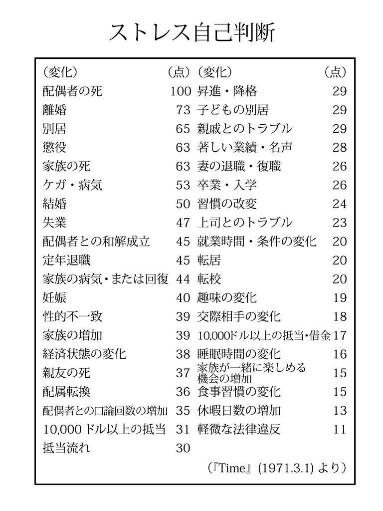
７ 神経を鎮めるトリック
神経を鎮静化させるには、いったんさらに緊張させ、それから徐々に鎮静させるほうが、効果が大きい。
ひじょうにこまかい調査の分析や、身上相談的なカウンセリングなどで神経が高ぶっているときは、私は、家に帰って、テンポの速い複雑な音楽を聞くことにしている。一見、逆効果に見えるが、じつは、スローテンポの静かな音楽を聞くよりは、このほうが神経が休まるのだ。これは自分に対する一種の心理トリックだが、心理学の原理にかなったやり方なのである。
神経が緊張しているときは、さらに神経を緊張させ、それから徐々に鎮静させるほうが、いきなり高ぶった神経を静めようとするよりは、効果が大きいのだ。アメリカの心理学者アルトシュトラー氏は、これを「同質の原理」と名づけ、悲しみに打ちひしがれた人に、それに輪をかけた悲しい音楽を聞かせ、それからしだいに、はなやかな音楽に移るほうが、悲しみをいやすのに効果があることを、数々の実験で確かめた。
このように、音楽は、人の心理に微妙な影響を与えるだけに、使い方によっては、心理トリックのいい道具に使えよう。たとえば、日赤産院では、無痛分娩のために、音楽を利用している。また、衆議院の歯科診療所では、患者の痛みをやわらげるために、たえず、バックグラウンド・ミュージックを流して効果を上げている。
東京芸術大学助教授で、音楽療法の権威である桜林仁氏の研究によれば、重症便秘の被験者に食前と就寝前に、モーツァルトの「メヌエット」、ショパンの「マズルカ舞曲」、シュトラウスの「ウィーンの森の物語」を聞かせたところ、三日目から便通があったという。
胃腸は、神経の影響をいちばん受けやすい器官である。ちょっとした神経の緊張があると、とたんに、下痢・便秘・消化不良を起こすことを、だれでも経験したことがあるだろう。それだけに、特定の音楽によって神経が休まり、胃腸の働きが活発になることは、うなずけるところだ。
桜林氏の指摘によれば、音楽のリズムと胃のぜん動運動のリズムの波長がぴったり合えば、効果はいっそうあがるという。氏のあげる、病気に効果のあがる音楽の例を、症状別に二、三紹介しておこう。
便秘――先の曲の他に、ドボルザーク「ユモレスク」、チャイコフスキー「白鳥の湖」。
頭痛――ガーシュイン「パリのアメリカ人」、ベートーベン「ロマンス・へ長調」など。
ヒステリー――ベートーベン「田園交響楽」、メンデルスゾーン「真夏の夜の夢」など。
ノイローゼ――ビゼー「カルメン組曲」、リスト「ハンガリア狂詩曲」など。
８ あがるのを防ぐトリック
筋肉の適度のくり返し作業は、神経の緊張をやわらげる働きをもっている。
私は、自宅の電話のそばに、かならず、なにも書いていないノートを置くことにしている。メモをとるためと思われるだろうが、じっさいは、それ以上に、いたずら書き用の役割を持つ。なぜわざわざいたずら書き用の紙を用意するかと言えば、電話で、相手と話をしながら、なかば無意識的に、紙の上に図形や線を書いていると、話がしやすいことを発見したからである。
このことは、じつは不思議でもなんでもない。人間に本来そなわった心理機制を、意識的に活用しているだけなのだ。というのは、人間は精神的あるいは神経的緊張に陥ったとき、その緊張状態を、体の他の部分の単純作業によってやわらげようとする傾向がある。あなたの周囲にも、いらいらしたり緊張したりすると、しきりに貧乏ゆすりをする人がいるであろう。この例など、まさにこの心理機制のあらわれなのである。
神経生理学的にみても、精神活動とか思考活動とかと直接関係のない身体の各部に、適度のくりかえし作業による筋肉の運動を与えることによって、神経や精神の緊張状態は逆に緩和され、濶達さを取りもどすことが認められている。
この心理的・生理的メカニズムは、ひじょうに応用範囲が広い。私ごとながら冒頭の例もその典型であるし、古くから無意識に使われてきたものもかなり多くある。たとえば、よく外国映画などでお目にかかる老人の「にぎりぐるみ」――この名が正しいかどうか確信はないが、固いくるみを二個手のひらの中に入れ、つねにカチャカチャともてあそんでいる。これなどは、まさにこの原理の応用と言える。一説には、中風よけのおまじないと言われるが、手先の適度の筋肉運動によって、ふだんから高ぶりやすい老人の精神状態をやわらげ、緊張を解きほぐす作用があるとすれば、このおまじないも、けっしてゆえなしとしない。それどころか、最近はこの「にぎりぐるみ」に目をつけて、小さい卵形のハンド・マスコットを、現代人の精神安定用、アイデア促進用と銘うって売り出した外国商社もあるぐらいである。
この原理を利用して私がすすめたいのは、よく結婚披露パーティや会社の会議でスピーチを指名されたときなどの活用法である。つまり、立ちあがるときに、ライターでもブローチでも何か手にもてあそぶものを持って立ち、話をするあいだ意識的に手を動かすようにするのである。こうすると、ある程度、カーッとのぼせたりあがったりするのを防ぐことができる。商人のもみ手なども、案外こうした精神鎮静効果があるために受けつがれてきたのかもしれない。
９ 自信を回復するトリック
教養も、見栄もすべて取り去り、裸一貫となったとき、人は立ちなおるキッカケをつかむことができる。
私は職業柄、時に、東京・山谷に潜入することがある。ご承知のように、山谷はきわめて特殊な街で、その日暮らしの労働者が、おおぜい集まっている。
収入からいえば、一流会社の課長クラスの人がざらにいるはずなのに、彼らの多くは、一銭の貯蓄をも持とうとしない。その日の宿泊代だけを地下たびにはさんで、あとは、飲んだり食ったり、バクチをしたりして、きれいに使ってしまう。彼らは、山谷の街をこよなく愛し、付近の歓楽街などものともせずに、一目散に仕事場からこの街に帰ってくるのである。ここにこそ、彼らの安らぎがあるのだ。
私は、この人たちの生活を観察しているうちに、ひとつの事実に気がついた。いってみれば、「どん底」の強さである。これ以上落ちるはずがないというギリギリのところで、逆に開きなおった強さを、彼らの多くの人たちに感じたのだ。
この点、中産階級の人間は、ある意味できわめて不安定な状態にある。少しあがけば、上にあがれそうな気もするし、少しなまければ、下に落ちてしまうかもしれない。そうした不安定な位置にあるからこそ、私たちの心は安まらない。真綿で首をしめられているような不安が、つねに心の片すみから離れないのだ。
こんなことが私たちの慢性不安の原因や、ノイローゼの遠因になっているのではなかろうか。催眠療法の権威である森定一氏は、こうした人たちを対象にして、「モク拾い療法」を考案して、成果をあげている。朝早く、患者を明治神宮の境内へ連れて行き、モク拾いをさせるわけだ。教養も、見栄も、すべて取り除き、裸一貫になったとき、はじめてノイローゼから立ちなおるキッカケをつかむことができるというのが、森式治療法の本質である。
山谷の生活といい、モク拾いといい、私は、「どん底」の効用を、おおいに見なおすべきだと思う。何かふっ切れぬものがあるときには、とことんまで遊んでみるがよい。とことんまで、沈んでみるがよい。
多くの芸術家や作家が、どん底の生活の中で、不滅の名作を創るように、私たちも、どん底の中に、浮上するエネルギーを見出すことができるであろう。あれこれと考えあぐねていても、不安が高まりこそすれ、鎮まることはない。ここは一番、自分自身を「どん底」の生活の中にたたきこんでみることだ。まさしく、「身を捨ててこそ、浮かぶ瀬もあれ。」である。
10 肉体のコンプレックスを打破するトリック
肉体的優位が、予想外に強く心理的優位を生み出す。
"He is a little Napoleon."（彼は、小さなナポレオンだ。）
これは、先年、アメリカを訪れたとき、友人の心理学者が、ある学者仲間のパーティの席で、アメリカ人にしては極端に背の低い学者を紹介してくれたときのセリフである。身長のハンディを克服して、業績をあげているこの小柄な学者に対する最大級の賛辞だが、それは逆に、身長がパーソナリティにとって、いかに重要かを意味している。
英語で「あなたの身長はどれくらいか？」ときくには、"How tall are you?"（あなたはいかに高いか。）という言い回しをするが、ここにも、身長差への価値判断が隠されている。身長にかぎらず、自己の肉体に対するコンプレックスは、自分自身が感じている以上に、心理的コンプレックスにつながり、その人のパーソナリティに影響を与えている。
ピッツバーグ大学で、一九六七年度の卒業生百人について、身長別の平均給与を算出した結果がここにある。それによると、六フィート以下の卒業生の平均が月七〇一ドル、六フィートが七一九ドル、六フィート一インチで七二三ドル、六フィート二インチになると七八八ドルにはねあがっている。つまり、六フィート二インチの人は、六フィート以下の人にくらべて、一二・四パーセントも高い給与を与えられているわけだ。べつに、ファッション・ボーイの仕事をしているわけではないのだから、身長差はそのまま能力差につながっているとみてよいだろう。
ケース・ウェスタン・リザーブ大学の社会学者ソール・フェルドマンの研究によれば、身長差の優劣は、大統領選の結果にも如実に表われているという。一九〇〇年以降の大統領選を、相対立する二人の候補者の身長差で計ってみると、かならず背の高いほうが勝利をおさめているのだそうだ。彼に言わせれば、一九六八年のリチャード・ニクソンと、ヒューバート・ハンフリーの対決で、ニクソンが勝ったのも、ニクソン六フィート、ハンフリー五フィート一一インチで、身長差一インチのおかげだったということになる。
問題は、肉体的差をどう克服し、自分を心理的優位に立たせるかである。くだんの小ナポレオン氏は、「初対面の人に対しては、自分の目の高さ以上には、けっして視線を向けず、相手の二倍の強さで握手することを鉄則にして、肉体のハンディを克服した。」と語ってくれた。
落語の一節に、番頭が足の悪い娘に、「お嬢さん、片足が短いどころじゃございません。かえって片足が長いぐらいでございます。」と言う場面がある。これもいま述べたような意味で、一面の重大な真理を含んでいると言える。
11 自分をやせさせるトリック
困難を克服するもっとも効果的な方法は、厳しい現実から目をそらさずに、それに立ち向うことである。
最近の若い女性のあいだには、肥満症に対する恐怖感のようなものがあるらしい。
つい先日読んだある新聞記事に、女性はイライラしたり、欲求不満でストレスに陥ると、何が何でもやたらと食べたくなるということがでていた。胃などをこわして、やせ細った男性などから見ると、健康的でまったく羨ましい限りだが、女性にとっては、笑いごとではないようである。というのは、彼女等は、食べることによって太った自分の醜い身体を悩んでノイローゼになり、それを忘れたいためにさらに食べる、太る、ノイローゼになるといった次第だからである。
この絶望的な悪循環を断ち切るためにはどうしたらよいか。それは、自分の〝醜く太った身体〟の現実を、直視することである。つまり、たえず厳しい刺激にさらされていることだ。
アメリカ一の「やせる学校」ウェイト・ウオッチャーズの主宰者ジーン・ナイデッチ夫人は、自らも、九七キロの体重をわずか一年間で六六・五キロに減らした体験者である。彼女が減量を決意したのは、まったく偶然のことからだった。スーパーマーケットで買物中に、見知らぬ少女が寄ってきて彼女に言った。「おばさん、すごいお腹ね。赤ちゃん、いつ生まれるの？」
夫人は、それ以後、この一言を思い出すたびに、食欲を押えたという。少女のなにげない言葉が減量への最大の刺激となったわけである。
また、ミシガン大学で、心理療法を研究しているリチャード・Ｂ・スチュワートは、八人の肥満女性（最高は一〇一キロ）につぎの四段階の条件付けをして、大幅な減量に成功している。
〈第一段階〉自分がもっとも好きな遊びやもの、太りすぎに対する不安、食事の量、食事時間（テレビを見ながら、掃除機をかけながらなど）をこと細かに書いてもらう。これによって、いかに多量に、いかにしばしば口に物を入れているかを自覚させ苦痛を与えるのが狙いである。また、毎日四回は、体重を計ることを義務づけ、週三回面接して食事の取り方と体重をチェックする。
〈第二段階〉食事の途中で中断をさせる。はじめは数秒間であるが、しだいに長時間にする。また、口に食物があるあいだは、フォークを手から離させて、食事の量を意識化させる。
〈第三段階〉食事の時間を独立させて、いわゆる〝ながら〟食事をやめさせる。
〈第四段階〉一日中で、食べたくなる危険な時間に、食事以外の楽しみに没頭するようにする。だめなときは、自分の夫とスラッとした美人とのセックスシーンを想起させる。
一見、無関係に見える刺激で女性の不安が拡大され、減量という反応が引き出されるわけだ。
12 記憶をふやすトリック
記憶可能な情報量は、情報がより多く群化されることによって増大する。
たとえば、あなたは、つぎのようにＹＥＳ・ＮＯをでたらめに並べたものを三十秒眺めて、同じ順序でどのくらいまで再生できるだろうか。ちょっとためしてみてほしい。
ＹＥＳ・ＹＥＳ・ＮＯ・ＹＥＳ・ＮＯ・ＮＯ・ＮＯ・ＹＥＳ・ＹＥＳ・ＮＯ・ＮＯ・ＹＥＳ・ＹＥＳ・ＹＥＳ・ＹＥＳ・ＹＥＳ・ＮＯ・ＹＥＳ・ＮＯ・ＮＯ・ＹＥＳ・ＮＯ・ＮＯ・ＹＥＳ。何の工夫もほどこさないで、真正直にＹＥＳ・ＹＥＳ・ＮＯ......と覚えていったなら、おそらく半分くらいしか覚えられなかったにちがいない。私が大学生に実験した結果では、平均十三であった。
これが人間の記憶量の限界なのだろうか。いや、けっしてそうではないのである。ここに何らかの工夫をほどこせば、記憶量は、一・五倍ないし三倍くらいにまでふやせるのだ。その工夫とは、もとの単位をより大きい単位に群化し、それを符号化して記憶するのだ。つまり、情報を個々にでなく、群にして覚える。しかも、群にするといっても群をそのまま覚えるなら、個々の場合とすこしもかわらない。群にして、それに符号を与えるのだ。
たとえば、いまの例で言えば、ＹＥＳ・ＹＥＳの群を１、ＹＥＳ・ＮＯの群を２、ＮＯ・ＮＯの群を３、ＮＯ・ＹＥＳの群を４と置きかえて、頭から順に１、４、２、４、１、１、４、３、２、４と覚えるのである。これなら、電話番号を覚えるのと大差ない。事実、この方法を教えて実験した結果は、平均二十一個で、個人的には三倍以上のものもかなりいたのである。もちろん実験はもっと数の多いＹＥＳ・ＮＯでやった。
この方法は、さらに拡張して、二個の群を三個の群、つまりＹＥＳ・ＹＥＳ・ＹＥＳ＝１、ＹＥＳ・ＹＥＳ・ＮＯ＝２......のようにすることもできる。群化がすすめばすすむほど記憶情報量は増大するのである。
こうした記憶の方法は、コンピューター技術者などにおいては、すでに実用化されている。コンピューター内の状態に対応して小さなランプが点滅するが、この長い系列をテストするときにばらばらに覚えては、とても記憶できるものではない。そこで、技術者たちは、まず符号系をおぼえ、点滅するランプを群化して、たくさんの記憶を獲得するのに成功しているのである。
考えてみると、言葉というのも群化の所産ではないだろうか。混とんとした現実を組織化して記憶に残したり、他人に伝えたりするのに、言葉は、もっとも効率の高い手段なのである。
13 記憶を鮮明にするトリック
類似性の強い記憶ほど残りにくく、類似性の少ない記憶ほど残りやすい。
まず最初に、次ページの図を見てほしい。これを一分間ながめて、この中にあったものをできるだけ多く思い出してもらいたい。何と何が記憶にとどまっただろうか。
果物や野菜の名ははっきり思い出せないが、ヌードはもちろん、魚も簡単に思い出せただろう。
これと同じことが、つぎのような場合にも言える。だれにでも経験があることだろうが、修学旅行で、京都・奈良を短時間でまわったときなど、帰ってから、どこを見たのか一生懸命思いだそうとしても、なかなか思い出せない。これは、同じような、神社仏閣をめぐったからで、そのために、記憶がミックス・アップ（混合）されてしまったのだ。見たり聞いたりしたものをなるべく長く鮮明に記憶にとどめておくためには、なるべく異なった印象を与える場所を選んでスケジュールをたてるのが賢明な方法である。
これは、心理学で痕跡理論といわれるものである。まだ生化学的な実体概念としては、確立していないが、新しい情報が刺激として与えられた場合、脳のどこかにその刺激の痕跡が残り、あとで想起する際に役立つのだろうと言われている。だから、類似性のある刺激は、痕跡自体が重複しあい、全体としてぼんやりとしたものになってしまうので、思い出すのに苦労するのである。
これを記憶の重畳効果と称しているが、逆に類似性がなく独立性の強い刺激ほど、痕跡がくっきりと際立ち、あとに残るわけである。それを記憶の孤立効果と呼んでいる。
かつて、私は、テレビでコメディアンの故八波むとし氏を使って孤立効果の実験をしたことがある。七五、六五、六〇といった似かよった数字を並べて、そのあいだに、温泉マークなどという、まったく異質のものをはさみこむ方法をとったのである。結果は、もちろん、数字の記憶はあいまいだったが、温泉マークは、簡単に思い出せた。
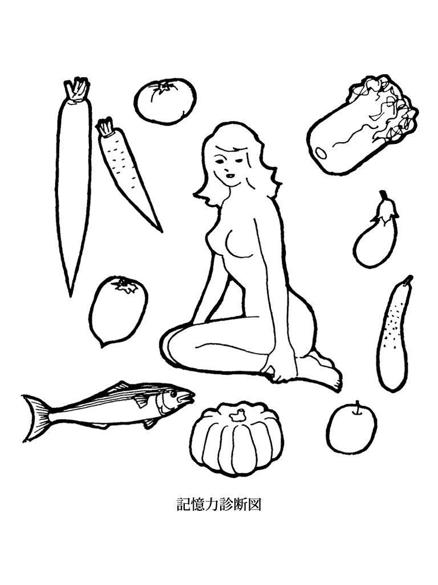
14 学習効果をあげるトリック
学習メディアとしてのテレビとラジオは、テレビからラジオヘという順序によって、その効果をより高める場合がある。
私の教えた学生で、大学で学ぶ外国語以外に、四年間に二カ国語を完全にマスターした男がいた。彼の学習法は、すこし変わっていて、まず一年は、テレビでなんとなく雰囲気をつかむ。つぎの一年間は、ラジオで細かいところまでガッチリ学ぶ。それが予想外の効果をあげたのだ。
彼のこの方法は、無意識のうちに現代のマス・メディアの特性をよく生かしたものと言えるだろう。というのは、テレビは暗示性が強く陶酔型であるのに対し、ラジオは集中性が強く覚醒型のメディアであるからだ。つまり、テレビに視覚も聴覚も奪われ、暗示にかけられてわれを忘れて没入する。そこに、潜在的語学能力とでもいうようなものが培われると同時に、わかったような一種の錯覚が生まれるのである。その下地の上に、聴覚だけをとぎすまし、醒めた感覚と理性を集中せざるをえないラジオの語学番組あるいは外国語放送を聞く。これによって、より確実に自分の脳細胞の中に外国語をたたきこむことができるのだ。
このようなマス・メディアの特性に着目した学習法にっいては、多くの学者が現在もなお研究を進めているが、数年まえ日本でも突如として有名になったカナダのコミュニケーション理論家マーシャル・マクルーハンは、つぎのような注目すべき実験結果を報告している。
無作為抽出法で選んだ大学生を四つのグループに分け、それぞれ、ラジオ、テレビ、直接の授業、印刷物で別々に講義をうけさせた。ただし印刷物を読むグループを除いては、質問や討論はさせず、ただ、教師が一方通行でしゃべるだけに終始した。このようにして、三十分講義をうけさせた後で同じ問題を与えてテストをしてみた。結果は、テレビ、ラジオの順で視聴覚メディアを通して受講した学生のほうが、直接授業および印刷物のグループよりも成績がよかった。
そこでつぎに、ラジオ、テレビにはそれぞれ聴覚的・視覚的な特色をさらに活用し、直接授業では教師が黒板をつかうとか、印刷物ではページ割りや活字に工夫をこらすなど、それぞれのメディア強度をさらに高めてもう一度実験を試みた。結果は、ほとんどまえと同じではあったが、ただひとつ、注目されたのは、ラジオがテレビを抜いて、いちばん好成績をあげたことだった。
この実験結果なども、まさにさきに述べたメディア効果のトリックを使った学習法を裏付けるものであろう。いちがいに、ラジオがテレビよりすぐれた学習メディアだと断定することはできないが、マス・メディアは、学習内容に適した使い方をすることによって思わぬ効果を上げることが多い。
15 一夜漬けを成功させるトリック
記憶の再生は、その記憶から再生までのあいだに、ほかの刺激のはいる量が少ないほど正確になされる。
試験などの前夜に、まにあわせの棒暗記をしていくことを称して「一夜漬け」という。私なども旧制中学、高校時代には、この〝漬け物〟のお世話にずいぶんとなった。なつかしい言葉である。いまでこそ、教師になどなってしまい、「一夜漬けはいけない。」などと言わざるをえない立場にあるが、理屈抜きでこういうものが必要になることがあるのもたしかなのだ。またもちろん、心理学の立場から言えば、一夜漬けがけっして得な記憶法でないことは証明ずみだが、現に一夜漬けを必要とし、またそれで何とかごまかせるようないいかげんな試験制度がまかりとおっているのだから何の遠慮もいらない。どうせやるなら、効果的にやってほしい。
それには、まず覚えなくてはならないことを一とおり記憶したと思ったら、未練がましく起きていないで、すぐ眠ってしまうことである。そして、翌朝も不必要に早く起きないで、試験にまにあうぎりぎりまで寝てサッと復習していくのがよい。これは、おまじないでもなんでもなく、記憶というものの心理学的性質からいえることなのだ。つまり、記憶というものは、それが再生されるまでに、別の刺激がはいればはいるほど正確に再生されにくくなるということがわかっているのだ。これを、心理学上の用語では「逆行抑制」という。一夜漬けのように、ただでさえ忘れやすい記憶を保持するのには、なるべくそれ以外の刺激が頭にはいらないように「逆行抑制」が起こらないようにしなくてはならないのである。
そのために、記憶しおわったらすぐ眠り、試験の直前まで寝て、外界のいろいろな情報を遮断するのがいちばんなのだ。
このことに関しては、つぎのような報告もある。
Ｊ・Ｇ・ジェンキンスとＫ・Ｍ・ダレンバックという二人の心理学者の実験では、眠っているあいだは、はじめの二時間ぐらいは、眠る直前に覚えたことをかなり忘れるが、その後は記憶がよく保たれ、八時間たっても約半分は保持されていた。ところが、目がさめたままでいると八時間のあいだにほとんどが忘れられ、一〇パーセント前後しか保持されていなかったというのである。これなど、まさに、逆行抑制の理論を実証したものといえるだろう。
この原理は、何も一夜漬けだけでなく、あらゆる記憶にあてはまる。また、逆行抑制を防ぐ方法としても、睡眠ばかりに限ることはない。前述した記憶の類似性にも関連してくるが、なるべくその記憶の周辺から遠ざかる工夫をすればよいのである。
16 つまらぬミスを犯さないトリック
記憶の固定化を意図的に行なう暗誦は、記憶をより強固にする。
試験勉強のつらさは、だれでも身にしみて感じることだが、中には、三十年、四十年たったいまでも、学生時代の試験のことを夢に見て、夜中にハッと目をさますという重症者も少なくない。あれほど苦労して覚えたことだが、実生活に役立つ知識はほとんどなく、せいぜい、子どもの宿題の手助けをしてやれるぐらいのものである。だが、覚えた知識は役に立たなくとも、知識の記憶のやり方は、実生活に応用できるだろう。とにかく、できるだけ短い時間で、できるだけ多くの知識を、ひとつの間違いもなく記憶するのが、試験のテクニックなのだから。
もっとも、オーソドックスな記憶法は、読んだり、見たりするだけでなく、何度も何度も声を出して暗誦するというやり方である。これを、字に書きながらやれば、記憶はより強固になる。英単語や数式の暗記には、もっとも正確な記憶法だ。これは、記憶心理学の立場から見ても、十分うなずける。記憶されたあとには、脳の中である種の固定化が行なわれるわけだが、暗誦と筆記は、固定化を意図的に行なうので、記憶をより強固にすることができるのである。
ここに十六個の無意味綴りの言葉を用意して、一定の時間内で読むだけの時間と、暗誦に費す時間の割合をいろいろに変えてみた実験結果がある。まったく暗誦しない場合は、その直後でも三五パーセントしか再生できないのに、八〇パーセントの時間を暗誦に費すと、じつに七四パーセントが再生できたのである。これが、記憶後四時間たつと、前者は一五パーセントの再生率だが、後者はまだ四八パーセント。つまり、八〇パーセントを暗誦に費せば、四時間経っても、約半分は、記憶のなかに残存していることになるのである。
この試験勉強のテクニックを、意識的に、自分の仕事に生かして、活躍している手堅いビジネスマンは、案外、多いようである。暗誦、筆記を意図的に自分に課し、これによって、ぜったいに不注意な誤ちを犯したことがないという。私の知っているさる銀行の教育課長氏は、これを、新人ＯＬの教育に活用している。
彼は、ＯＬたちを自分の机に呼んで用事を頼むさい、どんなささいなことでも、復誦とメモを強要するのだ。新入社員のＯＬはたいてい堅くなり、「はい、かしこまりました。」と一礼して立ち去るが、つまらないことでも復誦、メモさせると、新人嬢たちの評判は、当然ながら、あまり芳しくない。だが、見習い期間を過ぎて各支店に配置されると、新人ＯＬが、言われたことを確実にやりこなすので、支店のうけも悪くない。人の記憶ほど不確かなものはないのだから、つまらぬミスを犯さぬためには、記憶の固定化を意図的に行なう必要があるようだ。
17 睡眠時間を活用するトリック
催眠で昏睡状態になった人に暗示を与えると、覚醒後、与えられた行動をとる。
暗示は、心理トリックの最大の武器で、さまざまな方面で活用されているが、とくに、悪い習慣をやめさせるときは、大きな効果を発揮する。
たとえば、アルコール患者を催眠で昏睡状態にさせておき、「以後、アルコールを見るとムカムカする。」という暗示をかけると、二、三日はアルコールをいっさい口にしなくなる。これは、後催眠暗示と呼ばれている手法だが、効果を永続させるためには、催眠の反復が必要だとされている。
さて、この後催眠暗示に似た方法で効果をあげているのが、ソビエトでとくに研究が進んでいる睡眠学習法である。人の寝入りばなや、目ざめの直前が、特殊な精神状態になることに目をつけ、いろいろの学習を行なうのだ。就寝まえに、テープレコーダーを回しておけば、無意識のうちに、その内容が頭の中にはいってくるのである。睡眠学習法の効果を後催眠暗示と結びつけた例をつぎに紹介しておこう。
つめをかむクセのある子どもたちを二つのグループに分けて、隣合った二つの部屋に、それぞれ１ヵ月間生活させた。一方のグループの子どもたちに対しては、毎夜、眠ったあとで小声で、「もうつめはかみません。つめをかむのは不潔な習慣です。もう二度と爪をかみません。」と、くりかえし、部屋に置いたステレオから流す。しかしこのレコードは、子どもが起きるまえには、取り去られ、子どもたちには、自分が暗示にかけられていることを知らせない。もう一方のグループの子どもたちには、何もしないでおく。
一ヵ月後、この実験は終わったが、暗示の効果は抜群だった。ひそかにレコードをきかせていたグループの子どもたちは、つめをかむという習慣をすっかりやめていたのである。
こうした後催眠暗示の効果は、私たちの日常生活でも、知らず知らずに利用されている。たとえば、どうしても数学の問題が解けず、やむをえず、床につく。うつらうつらしながら、問題が気になっていろいろ考えているうちに寝入ってしまう。これは、寝入りばなに、自分自身に暗示をかけていると言えなくもない。明け方、目が醒めてみると、前夜、あれほど苦労した問題が、すらすら解けてしまうのだ。
これを意識的に活用し、自分自身をトリックにかけてしまおうというのが、この睡眠時間を活用するトリックである。
18 失望を大きくしないトリック
人は、自分の期待が満たされるかどうか不安なときほど、その見通しを暗く見積もり、結果に対する失望の緩衝とする。
あなたには、こんな経験はないだろうか。たとえば、入学試験などで合格すれすれの実力だったとして、試験後、「どうせダメなんだ。どうせダメなんだ。」と思いこもうとする。あるいは、自分の点数が正直なところは、八十点ぐらいと予測できても、「まあ七十点ぐらいだろう。」と自分に言いきかせる。これらはみな、自分で意識するとしないとにかかわらず、自分の失望をなるべく大きくしないようにという心理トリックを、自分で自分にかけているのである。つまり、人間は、自分がこうあってほしいという期待に対して不安であるとき、その期待の実現の見通しを自分で不必要に低く見つもり、もしかしたら訪れるであろう失望に対して、クッションを用意するのである。
これを実証する例としてたとえばつぎのような実験がある。映画館や野球場の入場券売場に列をなす人びとに対して、自分も入場したい一人であることをよそおって、つぎのような質問をしてみる。「（列の）このあたりでだいじょうぶでしょうかね。はいれるでしょうか。」と。
すると、おもしろいことに、あぶないと思われるけれども、まだ可能性はあると感じられる人たちのところでは、ほとんど、「ちょっとむずかしいかもしれませんね。」とか、「まあダメだろうな。」などという答えが返ってくるのである。
逆に、このあたりをすぎてすこしうしろになると、「なんとかなるでしょう。」「まだまだだいじょうぶ。」などと楽観的な返事が返ってくることが多い。ハーバード大学の社会心理学者レオン・マンは、このような実験の、とくにあとのケースに注目して、「もしかしたら......」という賭けの心理が、「なに、ぜったいだいじょうぶ。」という信念にまでなる「ギャンブラー特有の幻想」だと説明している。
こうなると、むしろ、失望を大きくしないためというより、失望は最初からほとんど確実視されているのだから、その確実な失望の予測で、自分を諦めさせてしまわないための別の心理トリックに、自分をかけているのだと考えられる。
しかし、私に言わせれば、このあとの心理トリックは、たいてい空しさだけが残るものでありあまりすすめられない。むしろ、そう感じられるようになったなら、これは可能性のない証拠なのだと考えて、さっさと諦めてしまったほうがいい。これに対し失望を大きくしないトリックはすくなくとも一種の慎重派の安全弁的心理操作として、意図的に用いてもよいであろう。
Ⅱ 他人にかけるトリック
19 印象を強烈にするトリック
人の知覚は、内部的な欲求に従って、変容・選択される。
私の知合いの雑誌の編集者に、えらく編集長から買われている男がいる。とりたてて有能であるわけでもないのだが、この男の提出したプランは、たいがい編集長がＯＫしてしまう。いったい、この著名な編集長は、たいして取り得のない編集者のどこが気に入っているか観察していたところ、一つの事実に気がついた。
この男、プランを提出するとき、きまって、「こういうやり方は、いまアメリカで流行しているそうですよ。」と、一言添えるのだ。アメリカの雑誌に並々ならぬ関心を寄せる編集長の頭には、この一言で、彼の提出したプランが、他の編集者の出すどのプランよりも頭に残るらしい。そこで、「あの男は、なかなか優秀ですよ。」と、私などにも会うたびに吹聴する次第となる。
彼の提出するプランが、アメリカでどの程度流行しているかは知らないが、彼のプランの提出の仕方は、どうして堂に入ったものだ。この男の手口は、トップ・セールスマンが商品売り込みによく使うテクニックの一つである。
人は、目に触れる物、耳に聞こえる物を、そのままの形で知覚しているのではない。その人の心の欲求によって、知らぬ間に変容させたり、特定の物だけ選んで知覚しているのである。たとえば、同じ自動車の新聞広告を見ても、ある人は車の有用性を強調する文句ばかりが目につくし、ある人は公害をばらまく元凶として、何かあらはないかと、目を皿のようにして車の欠陥を探すのだ。
心理学では、自分に都合の悪いことを認知しまいとする規制を知覚的防衛機構と名づけている。反面、都合のよいものだけを知覚しようという傾向もある。この知覚の変容の選択を巧みに利用して、自分の望むことだけを過大に相手に知覚させようとしているのが、セールスマンであり、ＴＶコマーシャルである。
かつて、アメリカで、子どもたちにいろいろな額の異なる貨幣を見せて、目に映った大きさと実際の大きさを比べる実験が行なわれたことがある。だれでも、お金を実際に目に写る大きさよりも過大に認める傾向があるが、貧困家庭の子どもほど、この傾向が著しかったという。貧乏なために、お金に対する欲求が高かったからである。
このように、人によって、同じ銅貨でも大きさが違って見えるのである。相手に自分を印象づけるためには、相手の欲求に訴えなければならない。ときには、一円アルミを十円玉に見せるトリックも必要なのである。
20 相手の警戒心をほぐすトリック
「なにげなさ」「偶然のイベント」などによって、心理的機制や隔壁が取りはらわれる。
私の著書『読心術』がベストセラーになったときのことである。当時、毎日出版文化賞を受賞した桂ユキ子さん（画家）と二人で、東京・渋谷の大盛堂でサイン会をしたことがある。〝多湖輝先生・桂ユキ子先生サイン・パーティ会場〟とれいれいしく書かれた看板の前に、私たち二人が並ばされた。私たちの前には、真っ白い布をかけた大きなテーブルの上に、二人の著書が五百冊ほど平積みにされていた。
ところが、サイン会がはじまってみると、お客は、私たちを遠巻きにして、いっこうに近寄ってこない。私は、なにか、さらしものにされているような嫌な感じを抱いたものだった。しかし、このシチュエーションを心理学的に分析してみると、第一に、あまりに形式ばったスタイルなので客とのあいだに隔壁ができてしまったのではないかということ、第二に、お客は、並んでいる本を著者たちの目前で開き、それで買わないで帰るのは失礼な気がして手にとれないのではないかということに気がついた。
そこで、さっそく、店員に頼んで、五百冊の本は同じフロアのあちこちの書棚に分散して置いてもらい、私たち二人は、お客が帰る道筋の、小さなネーム・プレイトを置いただけの机に坐った。そしてさらに、店内放送で、「たまたま著者の多湖先生と桂先生が、お店に来あわせていらっしゃいますので、お買上げの方にサインをしてくださいます。」とアナウンスしてもらったのである。すると、いままで数えるほどしか寄りつかなかった客が、手に手に私たちの著書を持って集まってきてくれた。著者と読者という心理的な隔壁は、こうして、除かれていったのである。
初対面の人、形式ばった状況、重くるしい雰囲気などに直面すると、程度の差こそあれ、人はだれでも心理的な防衛機制が働いて、自由な行動が抑制されてしまう。この防衛機制を解くには、この例の「たまたま」という言葉に表われているような、「なにげない感じ」をつくりだすほかはない。
とくに、商店のお客は、最良の商品を手にしたいという欲求から、つねに警戒心を抱いている。それを解くためには、なにげない「偶然」のイベントを演出することが、ひじょうに効果がある。これは対人関係においてもまったく同じである。初対面のひとに何気なく、「いやあ、びっくりしました。私の知合いにあなたとそっくりな男がいましてね。世の中には、自分と似た人がひとりはいるとかいいますが......。」などと話しかけるのもその例だ。
21 見合いを成功させるトリック
男女の結びつきがうまくいかなかった場合、そのほとんどに、表向きの理由のほかに、性的理由がかくされている。
最近は、離婚の原因調査でつねに一位を占めている「性格の不一致」というのを、そのまま文字どおりうけとめる人は少なくなったようだ。というのは、その言葉の裏側にかくされたものに、大なり小なり性の問題が含まれていることがはっきりしてきたからである。「性格の不一致」は「格」の字を除いて考えたほうが当たっているとさえ言われる。
こういう実態を知るにつけ、思い出されるのは何年かまえに聞いた縁結びの名人の話である。
「これは秘中の秘なんだが......。」と前おきして語った彼の言葉は、こういう人間の真実を心にくいまで見抜いている。つまり、「まず本人に、どんな人と結婚したいかと聞くと、たいてい、はじめは、いろいろ誠実だとか、明朗だとか、きれいごと言ってるよ。そんなとき、むかし赤線のあったころ、ワシがよくかよった女の身体がすごくよかったという体験談を、こまかく話してやるんだ。するとむこうも乗ってきて、自分の好みの身体つきなんかを言ってくるよ。それに合った相手を探してやればまず間違いないね。」というのである。
かつて、体型とパーソナリティの関係を研究した学者は多いが、最近は異性の体への興味のあり方とパーソナリティの関係の研究が進んでいる。
まだ完成の域には達していないが、ここにアメリカの雑誌「プレイボーイ」で、何人もの心理学者が参画して行なった相互関係の実験データがある。それによると、次ページのような図で、（１）を好む男性は、自信家でユーモアのセンス抜群だが移り気である。（２）は、中庸を好み寛大で、出世の野心はない。（３）は、適応性が少なくて劣等感が強く、職業への執着性がうすい。（４）は、社会性がとぼしくグループの仕事には向かない。（５）は、付合いも良く、趣味、仕事・財産すべての面で平穏に終始する――となっている。性格が一致するかどうかはまさに相手の身体からはじまるようだ。
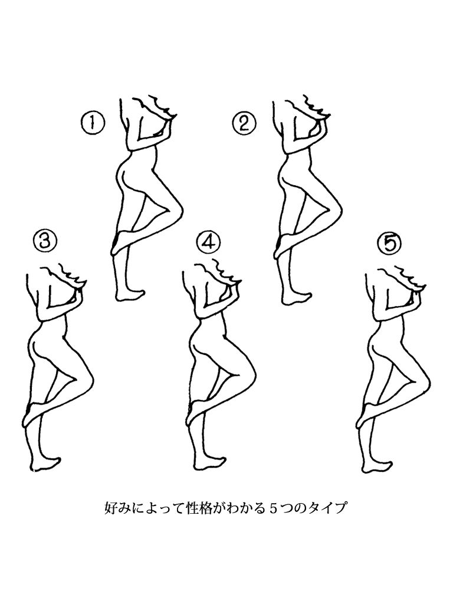
22 相手から話を引き出すトリック
「繰返し」は、相手に対して、傾聴していることを伝えるためのサインである。
「先生、最近、どうもうちの子どもの様子が変なんです。学校から帰ってくると、だまって自分の部屋に閉じ込もって、夕飯時にも出てこないんです。」
「部屋に閉じ込もって、出てこない。ウーン。」
「べつに、これという心当りがないんです。」
「心当りがない......。」
「学校で何かイヤなことがあったのではないかと、担任の先生におうかがいしてみたんですが、先生にも、思い当たる原因がないとおっしゃるし。私、どうしたらいいのかと......。」
「ウム、担任の先生にも思い当たる原因がない......。」
「主人に相談しようと思っても、会社の仕事で頭がいっぱいらしくて、子どものことはおまえにまかせると、ぜんぜん私の話を聞いてくれないし......。」
「フーン、子どものことはあなたにまかせると、ぜんぜんあなたの話を聞いてくれない？」
これは、子どものことで相談に来た母親と私との会話の一部である。すでにお気づきのことと思うが、私は、つねに、母親の言葉を繰り返している。この繰り返しは、「うなずく」「あいづちを打つ」とともに、カウンセリング理論で受容の技術と呼ばれるもので、相手の話を引き出すためのトリックの一つである。
「繰り返す」「うなずく」「あいづちを打つ」という動作は、相手に対して、「あなたの話を傾聴しています。」というサインになる。親身になって話を聞いてくれると思えばこそ、相手も心の壁を取りはらって、ほんとうの話をしてくれるのだ。このサインを効果的に使うことが、相手から思うように話を引き出すコツである。
このほか、ハイ・イイエで答えられない質問をすることも、相手から話を引き出すうえでたいせつなポイントだ。「あなたのご主人は、お子さんに理解がありますか？」「あなたは、ご主人に相談なさいますか？」といったような質問では、ハイ・イイエで簡単に逃げられてしまう。
そこで、「お子さんは、ご主人に対してどんな愛情を持っていると思いますか？」「ご主人は、あなたの相談を、どんなふうに受けとめられますか？」と、ハイ・イイエで逃げられない質問をするわけだ。むかしから、「話し上手は、聞き上手」ということがよく言われるが、要はうまく相手の心の壁を取りはらってやることがだいじなのだ。
23 初対面の相手とすぐ親しくなるトリック
人は、他人から地位、仕事、財産の話よりも、ちょっとしたプライバシーを明かされたほうが、親しみを感じる。
私は、仕事上、見知らぬ人と会うことが多いが、相手が緊張していて、話がはずまないときには、かならず話題を家族のことや、趣味に転じることにしている。人によっては、これだけで、長年の知己のように打ちとけてきて、かんじんの用件までも、スムーズにいくことが多い。
現代人のほとんどが、四六時中というもの、緊張の連続にさらされているので、思いがけず相手の内面的生活に触れると、ホッとするのであろう。およそ、仕事とか地位というのは、人それぞれ千差万別であるが、家族とか趣味といった人間的側面は万人共通のものである。だから、この種の話題は、初対面の人の警戒心をときほぐす、最高の効果を持っているのである。
これについて、私が、たいへん感心したのは、アメリカで会ったドッグ・フード会社のセールス・マネージャーの名刺である。今でも思い出せるのだから、かなり強い印象を受けたらしい。
それは、右肩にプードル犬の写真がついていた。じつは、これは彼の家で飼っている犬だが、彼自身、大変な愛犬家で、仕事を楽しみながらやっているというさわやかな印象を人に与える。名まえの下には、趣味／ゴルフ（ハンディ一八）、子ども／息子（ピーター）、娘（ジュディとアリス）、特技／煉瓦積み、逆立ちなどと、非常にパーソナルなことが書きつらねてあるのだ。会社での肩書きなどは、いっさいない。
「いや、これは、名刺というよりも、相手と話を始めるための道具ですよ」
と、彼は笑っていたが、これこそ新しい型の自己紹介術といえよう。
また、これは、経営コンサルタントのＤ・Ｊ・シュワルツという人の話だが、彼が講演会で、講師を紹介する役をしたときのことである。この講師は前もって、彼を傍に呼び、仕事関係のことはいっさい言ってくれるなと頼みながら、カードを差し出し、そのカードに書かれている事項を、聴衆に告げてほしいと言った。
そのカードには、「１、今日講演なさる先生には、ブロンド、ブルーネット、赤毛などいろいろな髪のきれいなお嬢さんが五人いらっしゃいます。そして、先生は、あなたがたのような人びとからお嬢さんを守るために、大事にしまいこんでいらっしゃいます」「２、第二次大戦中は、空軍の地上勤務員として太平洋戦線に参加して、空ばかり見て暮らしました」......などとあった。
できるだけ完全に、しかも早く自分を売り込み、受容されるためには、まず、人間的な親しみを感じさせることが第一であることをおわかりいただけたと思う。
24 迷っている客を獲得するトリック
客は、選択範囲を与えられて、その中から選ぶように求められると買わざるを得ない気持になる。
セールスマンの間では、販売効率を高めるテクニックとして、六Ｗが常識になっている。これは、客に品物をすすめる場合に、どこにポイントを置いたらよいかという原則である。
「どちら（ＷＨＩＣＨ）の色をお望みですか」
「どこに（ＷＨＥＲＥ）いたしましょうか？」
「いつ（ＷＨＥＮ）お届けしましょうか」
「どんな（ＷＨＡＴ）サイズをお望みですか」
「どなたが（ＷＨＯ）お使いになるのですか」
「なぜ（ＷＨＹ）明日までお延ばしになるのですか」
この中で、迷っている客に品物を買う気にさせるのにもっとも効果的なのは、最初のＷＨＩＣＨを使うことだ。
たとえば、たいして熱心に探しているようでもないが、かといって、ただのひやかしでもなさそうな客が、ケースのまえを行ったり来たりしていたら、まず、目を合わせて、ニッコリしてから近寄っていく。このときのタイミングが大事だ。あまり、押しつけがましくても、無愛想でも、客は逃げ腰になってしまう。客によっては、品物に迷うよりも、「もっと他の店のを見てからにしようかな」という、その店で買うか買わないかの段階で迷っているのかもしれないからである。何気なく客に近づいたら、ケースから、狙いの品物だと思われるものを、二つ三つ出して、客の前に置き、つぎのように言うのである。
「この真珠の指輪も、こちらのエメラルドの指輪も、たいへんすばらしいものですから、お買いになっても決して損はいたしません。奥さまのように、上品な方ならどちらもお似合いですよ。どちらがお好きですか。」
ここでたいせつなのは、「何を」、「どれを」と聞くのでなく、「どちらを」と尋ねることである。
この質問の中には、客と店員の間に、すでに売買取引きをするという前提が、成り立っており、その上で品物を選びましょうというニュアンスが含まれているのである。
そのため、客の方も、最初からこの店で買うつもりで来た気持になり、店員が選んだ範囲の中か、その店のケースの中に並んでいるものから買っていくことになる。客に選ばせるというのが、このトリックのポイントである。
25 人を引きつけるトリック
人格語や人格文が多い文章ほど、人びとに親近感を与え、アピールする。
一九七一年の春、東京都知事選挙が行なわれたが、そのとき勝利を収めた美濃部亮吉候補のスローガンに、「あなたの一票で革新都政を進めましょう」というのがあった。それを見て、私は、日本でも、いよいよイメージ選挙が本物になってきたことを実感したものである。
また、つづいて行なわれた参議院選挙の田英夫候補のポスターは、Now, we want――Den（いま、ぼくらが必要としているのは――田です）であった。この英語のポスターは、ニューヨークの地下鉄に描いてあった落書きから、ヒントを得たものだそうだが、いかにもしゃれているではないか。ご存知のように、田氏は、全国区最高点で当選した。もちろん、美濃部氏にしろ、田氏にしろ、これらの文章ゆえに当選したというわけではないが、本人の魅力に加えてこれらが大きな役割を果したことは確かである。
二つの文章に共通して感じられることは、親しみやすさだ。親しみやすさと一口にいうと、いかにもかんたんそうだが、じつは、この感じを出すためには、ひじょうに重要なキー・ポイントがあり、この基になる理論は、文章心理学のなかに見つけることができる。
文章心理学の理論というのは、「人格語、人格文が多ければ多いだけ、人の心にアピールする」というものである。たとえば、美濃部氏のスローガンにある「あなたの」や、田氏の"We"や"Den"そして、「ぼく」、「きみ」、「わたし」、「あなた」、「お父さん」、「お母さん」、「加藤ちゃん」などといった人間の名前、代名詞は人格語とされている。また、人格文とは、美濃部氏のポスターの「......ましょう」のように、呼びかけ、会話文、疑問文など、相手に、直接的な関わりを与える文体のことである。これらの言葉や文体は、書き手の人間性をそのまま相手に感じさせるので、読む者を引きつけずにはおかない。つまり、読み手の共有感、連帯感に訴えるわけである。
これらを、ポスターやコマーシャルに使えば、ひじょうに効果的だが、それ以外にも、ラブレターからビジネス、あるいは借金の依頼の手紙まで、応用の仕方は千変万化であろう。
この人格語と人格文の使用度によって、各種の文章が、どの程度、人びとの関心を引くかを実験した例があるので、参考までに、ご紹介しておきたい。ニューヨーク大学のルドルフ・フレッシュ博士によるものだが、まず、『ガリバー旅行記』が五五点、『ハックルベリー・フィンの冒険』が五一点だったのに対し、心理学の教科書は二二点、哲学書は十一点、アメリカ憲法にいたっては、〇点だったという。
26 動作で相手を説得するトリック
人の身体の動く部分には、かならず、その人のメッセージが含まれている。
私の知人に、なにか恥しいことがあると、きまって、指をくわえる癖のある女の子がいる。たとえば、私が、彼女の不得意な学科の成績をたずねたりすると、すぐに下を向いて、指を口に持っていくのだ。ところが、母親がそばにいると、この癖を出さない。
この女の子の動作を見ていると、母親の顔をチラッと見たとたんに、口に行きかかった指の動きがとまってしまうのである。べつに、母親は子どもを叱るわけでもなく、怒った顔をするのでもない。そこで、母親を観察していたら、子どもの指が口のほうへ動くと、彼女の目が、ひじょうに速いスピードでまばたきすることに気がついた。私は、母親にそのことを話してみたが、本人はまるで気がついていなかった。しかし、女の子のほうは、これを、母親からの「いけません！」のサインとして受け取っていたわけである。これは、最近はやりの「身体言語」の一種で、母親は無意識のうちに、子どもをトリックにかけていたわけだ。
「目は口ほどに物を言う」とはよく言ったものだが、目にかぎらず、身体言語を意識的にトリックに使えば、無言のうちに相手を説得することも可能なのである。
もともと、ボディ・ランゲージは、非言語的なコミュニケーションの視覚的な側面を研究するキネシックス（kinesics）という新しい学問から始まったものである。キネシックスのパイオニアのひとりであるアメリカのテンプル大学人類学部の教授、Ｌ・バードウィステル博士は、元来、話し言葉の不完全さは、このボディ・ランゲージによって補われているのだと主張している。口に出さなくとも、以心伝心に自分の意志が相手に伝わるのではなく、動作がちゃんと、自分の意志を相手に伝えていてくれるのである。
博士のあげている例のなかに、「男性の下腹部の膨張性と収縮性」というのがある。女性を口説くときに、男性は、下腹部の筋肉を引き締め、お腹をひっこめる。しかし、相手がなかなか自分の意に気づいてくれないときは、逆に、筋肉をゆるめて、お腹を突き出す。この動作で彼は、言葉で表わせない自分の気持を、一生懸命、相手に伝えているわけである。
このようなボディ・ランゲージは、だれでも無意識に使っていることだが、これを意識的に使うところに、トリックのトリックたるゆえんがある。たとえば、一見、自分の癖のように見せかけて、相手の言うことが気に入らないときには、貧乏ゆすりをするのである。これで相手は、なんとなくあなたが不機嫌であることを感じるはずだ。
27 自分の意見をとおすトリック
人は、異なった情報源から、数多く情報を与えられると、そのうち最後に与えられたものによって左右される。
ある会議の席上で、出席者が議題について意見をかわし、議論をしているなかで、たったひとり、メモをとるだけで、まったく発言しない人がいた。会議も終わりに近づいて、司会者は、一度ぐらい発言の機会を与えてやらねばと、その沈黙しつづけていた人をうながした。すると、彼は、それまでとっていたメモを見ながら、各発言者の意見をまとめつつ、そこに自分の意見を加えた。そして、結局、このひとの意見が会議の結論となってしまったという。
もう一つ、アメリカでおもしろい実験がなされている。それは、Ｎ・Ｈ・アンダソンという心理学者が行なったもので、実際にあったある事件を素材に模擬裁判を行ない、証言の与え方で陪審員の判断がどう変わるかを実験したものである。証言は、弁護側に六つ、検事側に六つと対等にし、ある特定のものだけ目立つことのないよう長さは全部統一して文書にされた。そして、まず、一方の側の証言を二つ出し、つぎに他方を二つ出す方式で証言を与えたところ、陪審員は、最終の証言の側に有利な結論をくだした。つぎに、一方の側を六つ続けてから、他方の六つの証言を出すという方式をとると、これでも、やはり、最終の証言に傾いたのである。
これらの例は、いずれも、心理学で言う「新近効果」のある種のものと言っていいだろう。つまり、「ひとは、異なった情報源からいろいろな情報を与えられると、そのうちの最後に与えられたものにもっとも大きく左右される。」のだ。まえの例でも、多くの人から多くの意見が出されたが、結局は、最後に出された意見によって会議の大勢が左右されたのである。あとの例でもそれとまったく同じことが言えるだろう。
つまり、この効果をうまく使えば、最終の判断や評価を、自分の思いのままに操作できる可能性があるということである。すくなくとも、会議や打合わせで、何としても自分の意見を通したいというときは、最初から口角泡を飛ばしてがなりたてるのはうまくない。じっくりと頃合いを見はからい、意見が出つくして、その意見の多様さに皆が決めあぐねているようなとき、おもむろに口を開いたほうが効果的なのである。むかしから、「沈黙は金なり」と言われるが、これはまったくの唖になれということではなく、このような有効な発言の仕方をせよということであろう。
また、これとまったく逆に、最初の情報が効果的な場合もあるが、これについては、50の「情報を信じさせるトリック」で述べるつもりである。
28 目上の人を説得するトリック
心理的地位の下のものが上のものを説得する場合、相手のイニシアチブはすくなくとも表面上保たれる必要がある。
先日、ある会社の部長さんに会ったところ、つぎのような上役説得法を話してくれた。彼にとって説得に苦労する上役とは、とりもなおさず社長のことであるが、彼は、社長室へはいると、ドア寄りのソファにかけて、かなり離れた距離から、話を切り出すのだという。すると、社長は「キミ、それではあまり遠すぎるから。」と、近くの椅子を指定するが、これに応じると、たいていは、社長のペースにはまって、まるめこまれてしまう。招きを断って、あくまで距離を保つのが成功の秘訣だと言うのである。
心理学でも、相手との距離の大小によって、説得の効果がかなり異なることは、すでに知られている。しかし、従来の考え方では、中間距離がもっとも効果的と言われていた。つまり、あまり近すぎると、人間も動物と同様に、危害を加えられる危機感がつよく働き、身構えてしまう。また逆に、あまり離れすぎると、親密なコミュニケーションが成立しにくいというのである。
ところが、最近になって、距離は大であるほど説得効果があがるという議論がしきりに行なわれるようになった。たとえば、説得者と被説得者を一つの部屋に入れ、距離を、約三十センチ、約一メートル五十センチ、約四メートル五十センチの三つのケースについて調べたところ、もっとも遠い約四メートル五十センチの距離の場合が、もっとも効果が大だったという実験も報告されているくらいである。そして、この場合、距離が大になるほど、説得の内容というより説得者個人のほうにより大きな注意が向けられることもわかったという。
なぜそうなるかと言えば、一つには、距離を取ることで説得する相手に自分をよく観察させられること、もう一つには、距離があることによって、当然、相手に対する圧迫感はなくなり、相手が自発的に考えを決めるような錯覚を与えることができるからであろう。このとき、距離によって声の伝わりが小さくなる点も、大いに役立っているだろう。冒頭に述べた例が、とくに上役説得法として、これと類似の方法を取っているのも、こういう心理的側面があるからである。つまり、上役などのように、つねに相手に対して心理的優位にあるものは、つねに相手に対して支配欲を持ち、主導権を発揮したがっている。この説得法は、上役に自分をよく観察させ、監督者としての自尊心を満足させると同時に、あくまでも説得されるのではなく、上役自らが主導権を発揮しながら、自発的に考えを決めるような錯覚に陥らせることができる点、まさに格好の上役説得法と言えるのである。
29 インテリを説得するトリック
教育程度の高い人間は、説得者の意図する方向だけの説得よりも、その意図に反する情報を含めた説得によって、より動かされる。
私は、あるクルマのディーラーから、おもしろい販売作戦上の秘訣をきいたことがある。それは、客の学歴をそれとなく聞きだしてから、それに応じた売り込み法をとるというものだった。彼が、毎月、所属する販売店で最高の売上げ率を記録している秘密は、ここにあるという。学歴に応じた方法とは、つまり、大学卒ぐらいの高学歴の客に対しては、ある程度、その短所を述べながら、あわせて長所を強調し、学歴の低い客には、長所だけを徹底的に力説する方法である。
高学歴者に対してこのような両面説得が効果を発揮することはすでに、第二次世界大戦の末期に、アメリカ陸軍の情報教育部で実験されている。アメリカの軍首脳部は長期の消耗戦を覚悟して、兵たちに、日本との戦いは長びくかもしれないことを説得するための組織活動を展開することにした。そのために説得用の放送台本が二種類つくられた。一つは、いわば片面説得で、戦線の広大さ、日本人の戦意が高いことなどを盛りこんで、ただひたすら戦いが長びくことを訴える内容だった。もう一つは、同じ内容を入れると同時に、その反面、ヨーロッパ戦線で勝ったあとは日本だけに集中できること、日本の工業力が劣勢であることなど、戦いは意外に早く終わるかもしれないと感じさせることをあげて、説得の意図と反対の要因を含ませた両面説得の台本だった。こうして、説得の前後にあらわれた態度の差を検出したのである。
実験の前と後にくばられた質問用紙には、「ドイツが降服してから、日本を破るまでにどのくらいの期間がかかると思うか。」という項目があった。実験まえは、この全兵士たちの三七パーセントが一八ヵ月以上かかると答えていたが、実験後は片面説得、両面説得いずれも、一八ヵ月以上かかると予想する者が五九パーセントに増えていた。
この内訳を見ると、高卒以下の学歴の者では、両面説得を受けたグループよりも、片面説得しか受けないグループのほうが、一五パーセントもふえていた。これに反し、高卒以上のグループでは、片面説得しか受けないグループよりも、両面説得を受けたグループのほうが、一四パーセントも増加していたのである。
この詳細な実験報告からもわかるように、教育程度の高いものほど、一面的説得には応じにくく、たとえ、説得の意図から見て表面上は逆に思えるような情報だったとしても、ことの両面に触れた説得のほうが、結局は効果があるのである。これは平たく言ってインテリの疑い深さと、自分の判断力ヘの自負に由来するものであろう。
30 相手を自分のペースに引き込むトリック
人は能動的で優位にあればあるほど、対面相手から早く視線をそらす傾向がある。
「目は囗ほどに物を言う」「人の目を見て話す人間に悪人はいない」などというように、昔から人と話をするときは、相手の目を見て話すということが礼儀とされていたし、また、自分を強く印象づけるにも、有益な方法とされている。
しかし、この「相手の目を見る」というのも、最初から最後まで、見つめっぱなしというのでは、自分の目が疲れ、相手もおかしなヤツだと思うだけだろう。そこで、人と話すときに、目線はどのように扱うと効果的かといったことにっいて、評論家の草柳大蔵氏が、たいへん面白いことを言っている。
それは、はじめての人にインタビューするとき、相手を自分のペースに引き込めるかどうかは、最初の三〇秒間で決まる。相手と向い合って、目を合わせたとき、先に目をそらす方が勝ちであるというのだ。
つまり、目を合わせているあいだは、両者の関係は同格であるが、どちらか先に目をそらすと、そらされた方は、途端に相手の心の動きを気にするようになる。「俺を馬鹿にしたんじゃないか」とか、「話をしても面白くないヤツだと思っているんではないか」と、あれこれ気を回し始める。だから、それ以後、何を言うにも、何をするにも、相手の視線に左右されてしまうわけだ。
このように、最初の目線の使い方によっては、うまく相手をコントロールすることができるわけだが、逆に、本来の性格・身分・地位などが、この目線の使い方に表われるともいえるわけだ。
イギリスのエグゼター大学では、まったく互いに知らない能動的な性格の学生五人と、受動的な性格の学生五人を被験者にして、つぎのような実験を行なった。
まず、それぞれのタイプから一人ずつ選び、カップルにして部屋に入れ、テーブルをはさんで相対させる。二人のあいだには、高さ一メートルの不透明ガラスがあるので、互いの顔は見えない。まえもって二人に知らされているのは、相手と少々話をするようにということだけである。
突然、ガラスのスクリーンが引き上げられ、二人は、テーブルを隔てて、対面したのだが、このとき、最初に目をそらすのは、ほとんど能動型の学生だったという。実験にあたったブライアン・チャンプネス教授は、目をそらす確率を調べたところ、全ケースで確認された場合を一、どちらもそらさない場合を〇とすると、結果は〇・八となり、ほぼ完全に確証されたと言っている。
きょう会う予定の人物が、苦手だなと思ったら、ちょっと試みてみたらどうだろう。
31 やる気を出させるトリック
目標に至る心理的距離が近ければ近いほど、それだけ早く、目標を達成しやすい。
私は、日本の経営は、一種の「かけ声経営」ではないかと思う。景気が良きにつけ悪しきにつけ、高い目標を掲げて、「しっかりやれ！」とハッパをかけるのだ。しかし、人間、「やれ！ やれ！」と号令をかけられただけで、やる気が起きるほど単純ではない。その意味で、「がんばれ！ がんばれ！」とどなりまくる猛烈課長は、かならずしもよい上役とはいえない。
人は、いきなり高い目標を示されるよりは、目標に至る心理的距離の近いほうが、やる気を起こすものである。たとえば、最終目標を示すとき、まず、下位目標を与えると「ようし！」という気になってくる。
第二次大戦中、中国戦線に従軍した私の先輩の体験談によると、よい上官というのは、たいていこの手を使っていたという。たとえば、重い背のうを背負った苦しい行軍で、兵士が疲労しはじめると、「あの山のふもとでちょうど半分だ。がんばれよ。」と明確な目標を与えるので、すぐに到着できそうな錯覚に陥り、疲れもとんでしまう。これに反し、「早く歩け。」とどなるだけの上官は、評判も悪く、兵士の士気もあがらなかったそうだ。
次の図は、アメリカのある学者が、南部の農村地帯に新設されたミシン工場で行なった実験結果である。見習い工を二つのグループにわけ、一方には、「あなた方も、十四週目の終わりまでにはこのくらいまでにはなれるはずです。がんばってみてください。」と、熟練工が到達している高いレベルの生産水準だけしか示さなかった。
これに反し、第二のグループには、最終の目標として、実際に熟練工の水準を見せ、「みなさんが、一足とびにあそこまで行くのは無理です。まず、最初の一週目はここまでにしましょう。」と、下位目標を一週ごとに示した。
結果は、ごらんのとおりである。
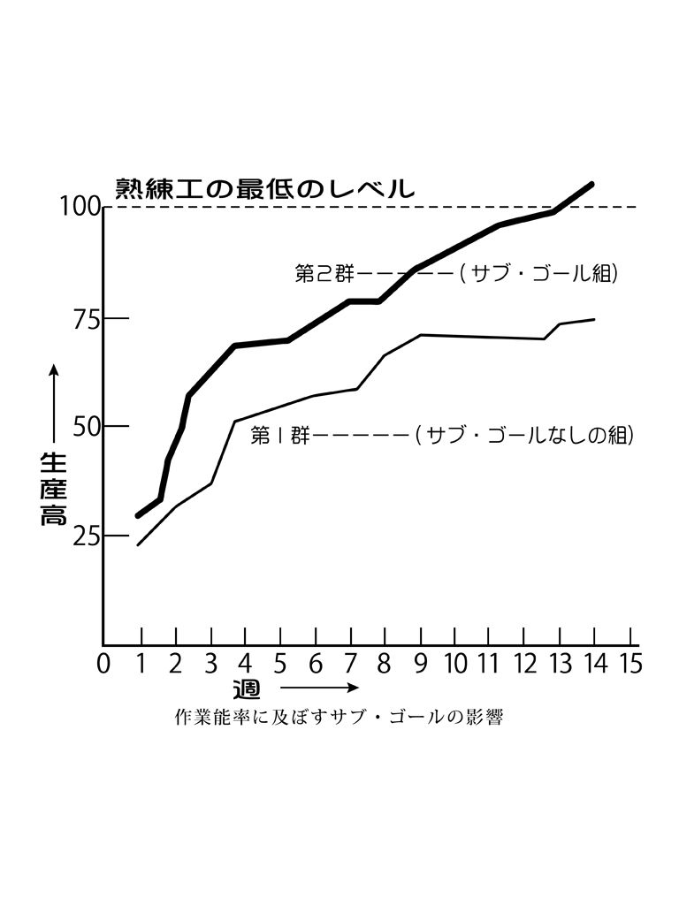
32 能率をあげさせるトリック
ラウンドナンバーは心理的弛緩を、具体的数字は心理的緊張を呼びおこす。
私たちは、幼児のときから、学校の授業、人との待ち合わせ、会議、講演、会社の出社、退社時間などにおいて、三〇分前後の時間の動きには慣れており、さほど驚かない。それどころか、最初から、変更予定を頭に入れて、わざわざ遅く出かけたりすることもあるくらいだ。たとえば大学の授業などで、いつも三〇分程遅れてくる教授の教室には、学生のほうも心得たもので、始業のベルでやってくる者はほとんどいないという具合だ。ひじょうに現代的、合理的といえるかもしれない。
しかし、じつは、こんな時間の使い方は心理的にもたいへんルーズになり、仕事あるいは学業の能率が落ちることこそあれ、決してよくなりはしない。それに対し、時間制限が残りわずかで高度に緊張した状態のときというのは、普段思いつかないようなことを発見したり、創り出したり、すばらしく能率的な仕事をするものである。そこで、私は一分刻みのスケジュールをつくり勤務時間あるいは学校にいる間だけは、それに沿って行動するという方法をぜひおすすめする。この方法を使うと、緊張感が最大限に高められるので、その間は最高の能力を発揮することができるわけだ。一種のショック療法といえるだろう。
この方法を実際に行なっているところがある。世界一株価の高い企業として知られているＩＢＭがそれであるが、ここでは社員の能率という点でも世界一といわれている。私も、ＩＢＭで、講演を依頼されたことがあるが、そのとき最初に言われたことが、「先生のお話は、午後三時〇一分から三時五一分までの間に、お願いします。」であった。三時からとか三時半までとかのラウンドナンバーを避け、たった一分というリアルで具体的な数字をおろそかにしないのが、ＩＢＭ精神らしい。
この精神は、単に時間の短縮というだけでなく、仕事の質そのものにも、めざましい効果を与えている。ある会では、まず、全国から二、三〇〇人程のトップ・セールスマンが選ばれてきており、すばらしい成績に対して表彰された。それによると、目標の五〇〇パーセントなどというのはザラで、一位になると、目標の二五〇〇パーセントという驚異的な数字が出てくるのである。つぎに一位のセールスマンが、演壇に上がり、日本語と英語をまじえて、たいへん軽妙で面白いスピーチをする。しかも、これが制限時間の三分でピタリと終わるのである。これは、一位の人に限らず、ＩＢＭの社員全般についていえるのである。
33 仕事への満足度を高めるトリック
グループ内の自由な情報交換と、与えられた役割が、仕事への参加度合を高める。
保険の勧誘員のほとんどは、個人行動をとらない。マイクロ・バスなどを使って、住宅地へどっと乗り込み、現地で、二人か三人のグループに分かれて、それぞれの目的地に散っていくのである。そして、一定時間後に再び集まり、互いの情報を交換し合って、つぎの作戦を立てる。
この集合→分散→集合の方式は、情報交換のためであるが、それ以上に、他の人間との仲間意識、仕事への参加意識を高めるうえにひじょうに効果がある。参加意識があれば、自分は、メンバーの一人なんだという責任感と自覚が生まれてくるから、おのずと仕事にもはりあいが出てくるというわけである。作家だとか画家といった自由業、あるいは個人で商売を営んでいる者ならともかく、組織の一員として仕事をする者にとって、「仕事が楽しい、やりがいがある」というのは、仕事の内容よりは、その仕事への参加度合によって決まるといえるだろう。
たとえば、ここに、同じ作業をする三つのグループがあるとしよう。
第一のグループは、一人のリーダーから指示が与えられるが、メンバー同士の間では、情報交換が許されない中央集権型。第二のグループは、メンバー二人ずつで連絡をとりあうサークル型。第三のグループは、全員で自由に話し合える完全結合型である。これらのグループに、作業が終ってから、
「面白かったですか。」「つづけてやる気はありますか。」
と質問したとしたら、おそらくＹＥＳと答えるのは、サークル型と完全結合型のグループに所属していたものに違いない。中央集権型に属していたものは、仕事の内容に関係なく、これ以上作業を続行する気にならないであろう。上から下への命令が生みだす仕事の参加度は、極めて低いからである。
メンバー全員に、参加意識を高めるためには、保険勧誘の組織のようなグループ内の自由な情報交換と同時にメンバーのそれぞれに役割、あるいは地位を与えることもたいへん効果的である。
これは、知り合いの小学校の先生から聞いた話であるが、彼は、担任を受けもったばかりの頃、クラスの中で、大変消極的な性格のために友達ができず、成績が下がる一方のある男子生徒が悩みの種だったそうだ。そこで、学級委員を変えるとき、思いきって、彼を委員に任命した。すると、意外な役割を振り当てられた生徒は、がらりと人が変わったように生き生きとしてきて、積極的に友だちをふやすようになり、成績も驚くほど良くなったという。
34 人を発奮させるトリック
人は、予期した結果が満たされると、それまでの行動パターンを変更する必要がないと思い込む。
あなたは、自分の子どもの通信簿が、前学期よりも悪かったとき、子どもに対してどんな態度をとるだろうか。「みろ、勉強しろというのに、遊んでばかりいるから、成績が下がったじゃないか。来学期こそは一生けん命勉強して、いい成績をとらなくてはだめだぞ。」
たいていの親は、通信簿をはずかしそうにそっと親の前に出す子どもに、こういって、怒りとも激励ともつかぬ叱言を浴びせかけるようだ。だが、はたして子どもは、来学期、親の期待どおり、発奮してよい成績をとることができるだろうか。まず、無理だろう。
私は、こんなときには、なるべく無関心を装い、通信簿などどうでもいいのだといった態度をとることをおすすめする。「きっと怒られるにちがいない。」という、子どもの期待感をわざと裏切るのだ。すると子どもは、予期せぬ意外な親の態度にすっかり動揺し、「こんどこそは！」という気持にかられてくるにちがいない。
これは、人は、期待を満たされると安心感を得て、それまでの行動パターンを変更する必要がないと思い込むという、「期待の心理」の裏をかいたトリックである。この期待がむくわれないと、人は、怒りや興奮で、がぜん反抗的になるのである。だから、子どもや部下が、予期どおりの成績をあげたときには、彼らの期待どおりに、おおいにほめたたえてやるとよい。これによって、彼らは今までどおりの行動パターンを持続し、今までどおりの成績を上げることが期待できる。こんなとき、彼らの期待に応えてやらないと、せっかく有能な部下や子どもをだめにしてしまうことになる。
逆に、予期どおりの成績を上げられなかった部下や子どもに対して、彼らの「期待」する叱言を与えたら、彼らは、これですっかり安心してしまう。叱言によって、すべての不成績はつぐなわれ、あすからまた、いままでと同じ行動パターンを繰り返すことになる。だから、ここでは、彼らの「期待」を裏切り、怒りや興奮を、うまくやる気に転化させるほうがよい。
このトリックの使い方がうまいのが、強いチームを率いるスポーツの監督たちである。たとえば、野球の試合を見ていると、絶好のチャンスに、スランプで悩む選手のところに打順が回ってくることがよくある。観衆はもちろん、本人も、ここで変えられるのではないかと「期待」するが、監督はいっこうに腰を上げない。こんなときに、えてしてヒットが出て、スランプを抜け出すきっかけになることが多い。期待を裏切られた「怒り」が、ヒットを生むのである。
35 部下の自発性を引き出すトリック
部下の自発性と相互協力を生み出すには、リーダーが、民主的性格でなければならない。
ある会社の重役会議で、社長が突然、「ちょっと五分ばかり、席をはずさなければならない用事があるので、諸君で、例の問題を討議しておいてくれないか。」といって、席を立った。いつもは、命令口調で伝達事項を述べるか、居並ぶ重役連中を怒鳴りつけるだけの社長なので、重役会議とは名ばかりの社長の独演会だった。
討議しておけと言われても、どうせ自分たちの意見など聞かれるはずはないと思いながら、みな意見を出し合い、いちおう意見をまとめた。社長が、ふたたびもどってきたが、ふだんの様子とちがっていた。重役たちの討議内容に耳を傾け、一人一人に質問して、共同討議の雰囲気をつくりあげて行った。社長の態度変更で、重役会議は、いつになく、活発な討論の場になったのである。
これは、私が、ある大会社のワンマン社長にすすめたトリックである。この社長は、重役会議がいつも沈滞気味なのを心配して相談に来たのだが、私は、急にニコニコするのも不自然だからというわけで、「席をはずす」というトリックで、会議の雰囲気を変えるように提案したのである。
どんな仕事でも、上下の人間関係は重要なポイントだが、とくに、グループで作業しなければならない仕事や、広告、ジャーナリズムの仕事など、自発性やお互いの協力がだいじな部門では、リーダーと部下の精神的な結びつきが必須条件である。ワンマン型のリーダーの下では、ぜったいに、部下の自発性と相互協力を生み出すことは不可能である。
リーダーのタイプには、大きく分けて独裁型、民主型、放任型の三つがあるが、メンバーの自主性と創造性を引き出すのは、言うまでもなく、民主型リーダーである。あるアメリカの大学で行なわれた、リーダーの性格と業績の関係を調べた実験では、もっとも仕事量が上がるのが民主型リーダーに率いられたグループで、独裁型の下では、リーダーが不在になると、仕事量が三分の一に激減する有様だった。また、グループ内の仲間意識も、他のリーダーに比べて、民主型のリーダーのグループが、もっとも高かった。
しかし、独裁型、放任型のリーダーが、一挙に民主型に転換するのは、部下の警戒心を助長して、かえってよくない。部下の警戒心を起こさず、民主型リーダーに変わるには、私のすすめたような小細工も、時と場合によっては必要なのである。
36 人間関係の良い職場をつくるトリック
人は、他人を排斥しても対人関係のバランスを保とうとする。
あるオルゴールの製造工場の工場長という人が、私のところに相談にやってきたことがある。彼が管理している工場は、女子社員がほとんどで、それだけに、お互いの好き、嫌いの感情が露骨に出て、ときには仕事の能率にまで影響を及ぼすことになったらしい。その工場は三人ずつのグループになって、一つの作業を受けもっているのだが、中の二つのグループのあいだがことにうまくいっていないようで、しばしばだれかが欠勤したりケンカをしたりするというのだ。
そこで私は、工場に行き、問題になっている二つのグループのメンバーに、一人ずつ応接間にきてもらった。そして、他の五人のメンバー名が書きこまれた調査用紙を渡し、好き、嫌いを正直に記入するように指示した。この結果できあがった二グループ、六メンバーの〝相愛関係〟は次に掲げる図の上のとおりである。私は、工場長に、第一グループのＣと第二グループのＤを入れかえるようにすすめた。彼は、理由もわからないまま、忠告にしたがうと言ったが、約一ヶ月後、今までのようないがみあいが、不思議なくらい少なくなり、スムーズに仕事ができるようになったという電話をかけてきた。
じつは、私は心理学の「バランス理論」を応用してみたにすぎない。この理論は、アメリカのカンザス大学教授Ｆ・ハイダー博士によって打ち出されたものであり、人は、他の人間との愛憎関係に、バランス（均衡）を求めるというものである。つまり、仲が良いを（＋）、悪いを（－）とすると、メンバー相互の（＋）（－）を掛け合わせた結果が（＋）ならグループの人間関係は均衝だが（－）なら不均衝となる。そこで、グループのメンバーは、均衝を保とうとするために、他のメンバーを排斥するか、あるいは仲間に引きいれようとして、いざこざがたえないというわけだ。私は、できることなら、二グループとも、（＋）×（＋）×（＋）＝（＋）にしたかったのだが、他のメンバーとの関係上、それもできず、結果は下の図のようになったのである。
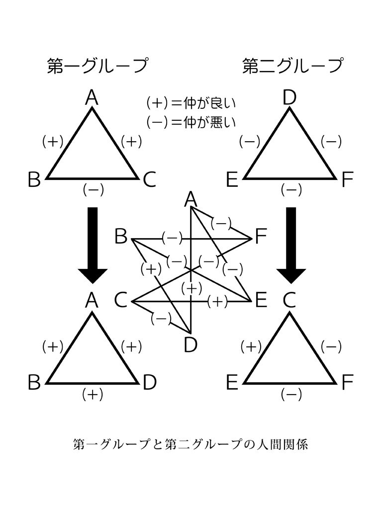
37 緊張感を持続させるトリック
人は、完了した問題よりも、未完了心問題に緊張感を持続し、記憶力を強化する。
いったん、推理小説を読み始めると、途中でやめることは至難の業だ。あすは早起きしなければならないから早寝しようと思うのだが、結末が気になって眠れない。けっきょく、最後まで読み通し、結末を知ってようやく、安心して眠ることになる。
さて、翌朝、あれだけ熱心に読んだ推理小説なのに、事件の展開を思い出そうとしても、なかなか思い出せないから不思議である。ところが、何かの拍子で、タネ明かしの直前でやめたときには、けっして、それまでの筋書きを忘れることがない。なぜだろうか。
あなたも経験したことがあるだろうが、試験の問題などでも、解けた問題は終わったとたんに忘れてしまうが、時間切れで解けなかった問題はなかなか忘れない。家に帰って、あの問題はこうやって解けばよかったんだと気がついて、地団駄を踏むことがよくある。これは、解けなかったという緊張が記憶を強化し、無意識の中で、たえず、問題を解こうとしているからである。記憶を増幅させるためには、緊張感を持続させることが必要なのである。
だから、だらだらと時間をかけて問題の解決策を模索するよりは、わざと問題を未解決のままに放置して、時間をおいたほうが、早く問題が解決できるといったことが、しばしば起こるのである。
問題を未完了のままにしておいて緊張感を持続するこのトリックは、会議の運営にも応用できるだろう。たとえば、会議を二回に分けて、まず、最初の会議では、議題を全部そろえて、討論を始める。議題によっては、簡単に決まるものと、なかなか進展しないものとが出てくる。こういうとき、結論が出るまでだらだらと討議を続けていると、ただ時間ばかりかかって、つぎの討論に移れなくなってしまう。ある程度、議論が出つくしたら、問題を未完了のままにしておいて、つぎの問題に移るほうが能率的である。
ふつうなら、会議といえばひとつひとつ結論を出さなければならないが、結論寸前のところでとどめておくのだ。こうすれば、出席者のあいだに緊張感が持続され、未完了の問題がたえず頭の中に残ることになる。こうしておいて、時間をおいてもう一度会議を持つのである。
この間、出席者たちは、未完了の問題にいろいろ頭をめぐらし、二回目の会議では、思いがけない問題解決策が出てくるかもしれない。会議という形式はなくとも、出席者たちの頭の中では中断された期間も、会議は継続されているのである。
38 職場の事故を減らすトリック
過去の失敗による心理的なゆるみが、新たな失敗を誘発する。
朝、出がけに靴のヒモが切れた。バスに乗るときに、ステップを踏みはずして転んだ。すると、だれでももう一度ぐらい、なにか起こりそうな気がしてくるものである。しかも、まえの二回よりも、さらに悪いことが起こるのではないかと思い込む。
つまり、「二度あることは、三度ある」という軽い自己暗示を自分にかけてしまうのだ。嫌な気はするが、いっぽうでは、起こっても仕方がないという意識も働いている。だから、三度目に仕事でミスをして、上役にどなられたとしても、「やっぱりな。」とあきらめがつく。これは、心理的なゆるみが、すでに自己暗示の段階でできているために、行為に緊張感が伴わず、つぎの失敗を誘発したと考えられる。
この傾向を、心理学では、「回帰の法則（Law of Recurrence）」と呼んでいる。
過去の事故回数から、将来の事故の可能性が予言できるのを発見したのは、ドイツの心理学者Ｋ・マルベである。だから、この法則は、一名、マルベの法則とも呼ばれる。
彼は、一九二〇年代の初期に、ドイツ陸軍の現役将校と下士官三千人が、過去五年間に起こした事故回数をチェックして、五年間無事故のグループ、一回だけ事故を起こしたグループ、二回以上起こしたグループの三グループに分類した。
そして、つぎの五年間に、この三グループの軍人たちがどのくらい事故を起こすかを調べたところ、第一の無事故グループでは、〇・五二回、第二が〇・九一回と、平均すると一回に達しないのに、二回以上事故の経験があった第三グループでは、一・三四回という結果が出た。
過去五年のあいだに、二回以上の事故を起こしたことのある者は、将来五年のあいだに、一回以上の事故に会う危険性が高いことを証明してみせたのである。
保険業界では、このマルベのデータに目をつけ、事故頻発傾向によって、分類を補正する方法を確立したのである。これが、現在の保険率の段階尺度にも取り入れられている。
このように、回帰の法則は、産業界の分野にも、広く応用することができる。たとえば、鉄鋼、木材、薬品、建築関係など、とくに事故の起こりやすい会社では、過去の事故回数を調べて、回数の多い従業員を、より危険度の少ない職場に配置替えすることで、むだな出費過多を是正できる。
一般の職場でも、ミスの回数、種類を克明に分析すれば、その従業員にとって、どの部署が適しているかを割出すことは、十分に可能になってくるわけである。
39 報酬なしで作業を続けさせるトリック
ある行為に対して報酬が与えられるとき、その回数が少ないほど、その報酬が止まったときその行為は長続きする。
心理学に「強化のスケジュール（Reinforcement Schedule）」ということばがある。この中に、「正しい反応に対して報酬が与えられる頻度が少ない状態で身につけた反応ほど、その報酬が止まったときにもなお、その状態で反応し続ける」という学習心理学上の原則がある。「強化」とは、その行為に対する意欲を強める要素、つまり報酬が与えられることをさす。
このことは、つぎのような動物実験で証明された。レバーを押すと、かならず自動的に餌がでてくる「一〇〇パーセント強化」の装置がついた箱と、ときどきしか餌がでてこない「間欠強化」の装置がついた箱に、空腹のネズミを入れる。すると、ネズミは、すぐに餌の出るしくみを発見し、レバーを押しつづけるようになる。しかし、しばらくしてレバーを押しても餌が出ないようにすると、しだいにレバーを押さなくなり、最後には、完全にやめてしまう。この場合、「一〇〇パーセント強化」の箱のネズミと、「間欠強化」の箱のネズミをくらべると、間欠強化のほうが、ネズミは明らかに長時間あきらめないでレバーを押しつづけたのである。これは、一九六一年にモーガンが行なった実験である。
その原則が、人間にもあてはまることを示すもっともよい例は、最近もいっこうに衰えを見せないパチンコ・ブームである。パチンコが、これほど息の長い娯楽として続いているのは、まさに、この「間欠強化」のたまものだろう。つまり、もし打つ玉、打つ玉がほとんどまちがいなくはいってしまうような機構になっていたとすると、いったんはいらなくなったときのやめ方も早い。しかし、じっさいのパチンコ台は、ほんのときどきしか玉がはいらないように釘が調整されているため、客は、たとえ玉がはいらなくなっても、しばらくは飽きずに黙々と玉をはじきつづけるのである。
この例は、むしろ無意識的に発見された応用例だろうが、もっと意識的に活用することによって、たとえば、子どものしつけや労働作業の管理に生かせるのである。つまり、子どもに新しいことを教えたりしつけたりするとき、いちおう何らかのほうび、つまりうまくやったときの報酬を用意したほうが効果的であることは論をまたない。しかし、その報酬の与え方は、ごくたまに与えるほうが、しばしば与えるより効果的だということである。しかも、新しい作業を覚えていく過程においてというより、それを覚えてしまったあと、つまり報酬をまったく与えなくなった段階において、この方法のちがいは決定的な差を示すようである。
40 やめたい従業員を引きとめるトリック
人を、仕事に引きつけておく主な要素は、仕事に対するプライドである。
ビルの清掃を業務にしているある清掃社は、従業員が、二、三ヵ月でやめていくので、その補充に困り抜いていた。
従業員の多くは、四、五〇代のおばさんで、彼女たちは、いつも「こんなきたない仕事をしなくても食べていければ、やめたいものだ。」と口癖のように言っている。そして、娘に子どもが生まれたなどといったきっかけが見つかると、退職を申し出てサッサとやめてしまうのだ。つぎに働きに出るときに、もっと満足できる仕事が見つかるという保証はない。しかし、ともかく理屈抜きに、きたない仕事はやめたいのである。
そこで、会社側は、従業員を引きとめる心理作戦を開始した。毎朝、出勤してくると、真っ白に洗って、ノリのよく効いた上等の手袋を渡すのである。この手袋には、会社名も入っていないし、特別な席に出かけるときにしていっても、すこしもおかしくはない品物だった。
これは、清掃という仕事はけっしてきたない仕事ではなく、清潔な環境をつくるために欠くことのできない仕事であるというイメージを持たせようという会社側の苦肉の策だったが、結果は、予想以上の成功だった。退職率が、五〇パーセントも低下したのである。
グループでも個人でも、仕事を続行する支えとなっているのは、その仕事に対するプライドである。
だから、清潔で真っ白な手袋を与えて、たえず、仕事の重要性や意義を意識させることは、従業員のプライドをくすぐり、仕事への意欲を高めるのに、ひじょうにうまい方法だったといえよう。
アメリカの心理学者Ｈ・Ｈ・ケリー博士は、レンガに美術模様をつける仕事をしている人たちを対象に、つぎのような調査をしたことがある。
被験者の九九人は、全員まったく同じ仕事をしていたが、一部の者には「キミの仕事はとくに重要で、上等なものだ。」と言い、残りの者には、他のメンバーの仕事のほうが、自分のよりずっと質が高いという印象を与えておく。
すると、自分は低級な仕事をしているという印象を与えられた工員は、約三倍も多い不満を表わし、しかも、仕事とは関係ない話題をいつも口にしていた。これは明らかに、不安を感じさせる仕事の話題を避けるためで、作業能率も目だって落ちていたのである。
41 ダメな重役を自発的退社に追い込むトリック
コミュニケーションの断絶は、人の不安感を助長し、感情的側面を強くする。
最近、どうにも使いものにならない管理職を、自発的退社に追い込むトリックとして、アメリカのビジネス界では、「コミュニケーションの断絶」というやり方が復活している。いわゆる、「干す」という方法だが、ますます、手の込んだ方法が考え出されているようだ。
まず、手始めに、その管理職のすぐ下に、彼の後継者となるアシスタントを配置して、四、五週間かけて、徐々に仕事をこの勤勉なアシスタントに移譲していくのである。ツンボ桟敷に置かれ、何もすることのなくなった管理職のほとんどは、二、三ヵ月のうちに転職先を探すようになるという。
これでダメなら、第二弾として、満座の中で恥をかかせるという陰険な手段がとられる。
これは、広告代理店のマッキャン・エリクソンで実際にあった話だが、経理担当の重役が、他の代理店やクライアントもまじえた会合に出席を求められた。彼の知るかぎりでは、この会合の目的は、数週間まえに提案されたいくつかのキャンペーン・プランのなかから、ひとつを選択することだった。しかし、じつは、この選択はすでに終わっていたのである。この重役は、会社の管理職のあいだを回覧されるメモのルートから、意識的に排除されていたために、この事実を知らなかったのである。会合の冒頭で発言を求めた彼は、当然、出席者たちから「無能者」扱いされることになった。そして、数週間後、彼は、自発的に会社を辞めていったという。
ここまでされても気がつかない呑気な管理職には、第三弾が打ち込まれる。自信を失いかけている管理職に、「君も疲れているようだから、二週間ほど休養してきたらどうか。」と、旅費、宿泊費、小づかい会社持ちで送り出すのだ。不安にさいなまれている管理職は、現場を離れていることによってますます不安が高まり、帰ってきた彼は、まえよりさらに無能になり、ついには、辞職願いを書くハメに追い込まれてしまうのである。
人は、意図的にコミュニケーションを断たれると、不安感が増し、感情的側面が強くなってくる。自らも、コミュニケーションの回路を閉じてしまうので、ますます情報が不足し、不安感が助長される。
そして、そのいっぽうでは、相手の反応を期待せずに、感情・情緒を表に吐き出すだけの表出的コミュニケーションが多くなり、一種のノイローゼ状態に陥る。こうして、自分自身でも気づかぬうちに、破滅への道をたどらされてしまうのだ。
42 忠告に従わせるトリック
人は、恐怖感からよりも、密度の高い情報を得ることによって、対策を生じる気持になる。
サンフランシスコというのは、全米で、もっとも車の台数が多いところである。したがって、事故の発生率はひじょうに高く、そこを管理するハイウェイ・パトロール隊の安全対策への力の入れ方は、東京の比ではないといわれる。
私はそこの本部を訪れたことがあるが、そのとき、その対策方法を尋ねると、係官は、
「詳しい安全情報を徹底的に提供しているだけです。たとえば、アルコールの許容量を示したカードなどは、ちょうど免許証入れにはいる大きさにして、いつも携帯できるようにしています。」
と教えてくれた。彼が言うところによると、安全啓蒙方法のなかでは、事故現場の写真をばらまいたり、事故に対する罰則などを知らせたりするのは、注意深く避けられているという。
私は、これを聞き、なるほどと感心した。というのは、これまで危険を防ぐには、恐怖心を取り立てることこそが、最上の方法であると考えられていたが、じつは、人間には、ある行為の結果を恐れれば恐れるほど、ますますその行為を継続するという逆の心理があるのである。これは、心理学でいう「逆効果の法則」であるが、実際、恐怖に訴えるよりも、密度の高い情報のほうがすぐれた効果を発揮することは、つぎにあげる実験によっても明らかである。
それは、アメリカの心理学者ジャニスとフェシュバックによるものであるが、彼らは、コネチカット州のある高校の新入生全員を、アトランダムに四つのグループに分け、それぞれに、虫歯の予防についての講義をした。まず、第一グループには、歯を不衛生にしておくことから生じる虫歯や歯槽膿漏などの病気を強調して、聞き手に不安をおこさせ、感情に訴えた。第二グループに対しては、おだやかな調子で、いろいろな事実をあげながら、病気の危険を話した。第三グループの講義は、衛生上の具体的な忠告を与えるにとどめて、不衛生から生じる病気については、大げさに述べなかった。また第四のグループについては、虫歯と無関係な話をしたのである。
そして、講義の直後、歯に対しての不安度を調査すると、最高は、第一グループの四二パーセント、第二は二六パーセント、第三が二四パーセントとなり、情緒に訴える方法が成功したかに見えた。ところが、実際に忠告に従って、歯医者に行くなどの対策を講じたのは、逆に、第三グループの三六パーセントに対して、第二は二二パーセント、もっとも不安を感じたはずの第一グループの生徒にいたっては、わずか八パーセントだったということである。つまり、恐怖に訴える方法は、不安度を高めこそすれ、対策を生じさせるという効果が薄いことがわかるであろう。
43 思想を変えさせるトリック
ひとは、ある役割を与えられると、その役割のもつ価値、思想まで信じ、自己本来の考え方に変化をきたすことがある。
精神療法やアイデア開発法の一つに「ロール・プレイング」つまり、「役割を演じる方法」というのがある。これは「自分をコントロールするトリック」のところでも触れたサイコ・ドラマなどと同じように、ある人にその人以外の役割をふりあてて、その人の意識に新しい風を吹きこもうという意図にもとづく。
ところが、これをさらに意図的に用いると、一種の洗脳に似た思想改造法にもなりうることがある。この方法については、さすがにフロンティア精神の旺盛なアメリカで、すでにつぎのような実験結果が報告されている。
アメリカ・イェール大のＣ・Ｉ・ホブランド教授らの「演説テスト」についてはすでにご紹介したが、これもその一つである。学生たちは、いずれも穏健な考え方の持主だったが、ある時事問題で、極端な立場で演説することを要求された。演説が終わった後、教授は彼らに、いくつかの質問をした。名目は、演説の評価の参考にするということだったが、じつは、学生たちの意見の変化を知るのが目的であった。演説した学生の大部分は、同じ質問をされた聴衆の学生よりも、意見の変化がずっと大きかった。つまり、彼らは、演説をしているあいだに、自分自身の意見を変えてしまったのだった。
また、こんな話もある。アメリカ女優ジェーン・フォンダは、いま若い進歩派学生に人気が高いそうである。インディアン解放運動の先頭に立ち、黒人の革命団体ブラック・パンサー党のシンパでもあるという。彼女自身、「私がラディカルになったのは、一九六九年からです。」と言っているが、この一九六九年というのは、彼女が、"They Shoot Horses, Don't They?"という映画に主演した年であり、その映画の役柄が彼女に、そのきっかけを与えたらしい。彼女の役は暗い大恐慌時代のダンサーで、その悲惨な境涯を描くために、彼女は、徹底した食事療法で、極端にやせなければならなかったという。役のなかの自分が、いつの間にか現実の自分となり、しいたげられた人びととの連帯感をつよく持つようになったことは容易に想像される。
いずれも、人間がある役割を与えられると、その役割に伴っている思想に影響され、自分が本来持っていた思想や主義・主張にまで変化をきたすという心理学上の仮説を実証している。ただ、あくまでも、会社などで労働組合運動のやり手を管理職に抜擢して思想改造をはかるなどという、非人間的な活用のされ方をしないよう、くれぐれもお願いしておきたい。
44 実力以上の力を出させるトリック
人は、自分の行為の結果について知ると知らぬとではやる気がまったく違ってくる。
毎年三月は、私にとって、いちばん憂うつな月である。入学試験の判定があるからだ。ことに、いちばんつらいのは、合格点スレスレで落とさなくてはならない者のときである。そんなときに、いつも感じるのは、「試験の成績を教えてあげたい」ということである。というのは、ほんの一点差ぐらいで落ちた人ならば、「ほんのもうすこしがんばればよかったのだ。」と言ってやるかやらないかにより、〝やる気〟がまるで違ってくると思われるからである。極端なことを言えば、多少見込みのない生徒でも、来年こそは大丈夫だの一言によって、予想以上の力を出すこともある。受験生は恐らく、成績を知らされないばかりに、不必要な劣等感を持ちつづけるのである。
私がこう言うのには、心理学的な根拠がある。それは、つぎのような実験に代表される作業能率の理論である。それは、十名の被験者を対象として行なわれたもので、約〇・七秒おきに電鍵を押すという、きわめて単純な作業を、つぎのＡ、Ｂ、Ｃの三段階に分けて実施させた。
（Ａ）被験者は、メーターにより自分の作業がどれほど正確にできたかを知ることができる。
（Ｂ）被験者は、メーターを読めず、したがって結果については、何の知識も得られない。
（Ｃ）ふたたび、Ａの条件に戻して、結果についての知識を与える。
この結果が次図である。結果を知らされないでは、成績がよくならないばかりか、かえって、悪くなっていることに注目したい。
このように、ある作業において、結果についての知識をもたせてやることは、能率向上の重要な条件なのである。
この考え方によって、いままでこの程度が限度だと諦めていた人にも、実力以上の力を出させることが可能になるだろう。
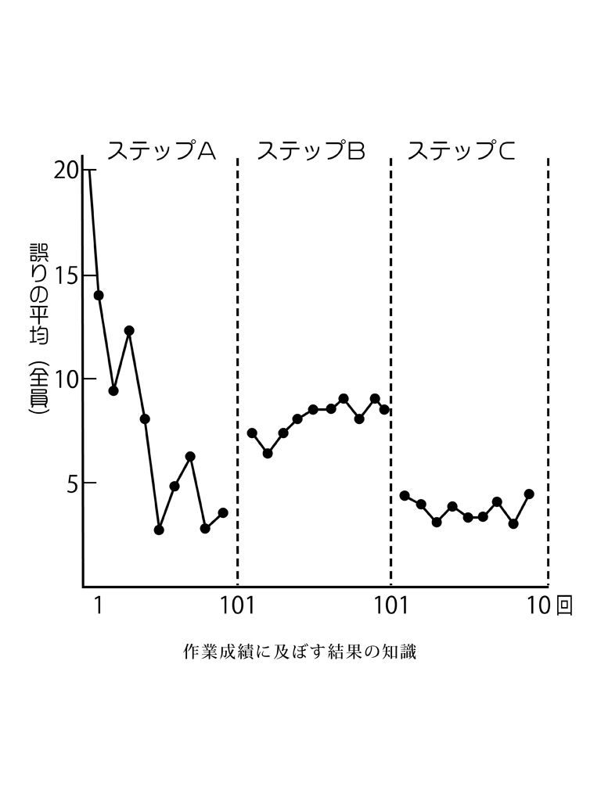
45 新人を組織に同化させるトリック
ある集団のメンバーが緊密に結合されていればいるほど、そのメンバーは、そこに新しく加入するメンバーに明らかな敵意を見せる。
組織というものは、本来それを構成する要員が緊密に結びあってはじめて意味をなすものである以上、そこに新しい要員が加わったり、従来の要員が抜けたりするときに、何らかの混乱が生じるのは、ある程度避けられない宿命的なものである。しかし、もちろん、その混乱は軽微なものであるにこしたことはない。
このような問題に関して、アメリカの軍当局は、戦争遂行のためというぶっそうな目的はともかくとして、心理学上かなり有意義な研究・実践活動を行なっているようだ。その一例として、新兵が新しい部隊に配属されるときの組織上の混乱を最小限にくいとめる方法が知られている。これは、私がある会社の中途入社社員の受け入れ方について相談を受けたとき思い出して話した例だが、わりに興味を示されたので、ここでも紹介しておこう。
南ベトナムに派遣されているアメリカ軍では、部隊の構成が十二ヵ月に一回変わるシステムなので、周期的に不慣れな新兵が配属されることになる。ところが、集団の緊密な結合のうえに、兵士ひとりひとりの生命がかかっている戦闘グループは、よそ者に、あからさまな敵意さえ見せるというのだ。そのたびに部隊が混乱してはたいへんなので、それを避けるために、配属のまえに、司令官が新兵を呼んで、これからどんなに冷たい待遇をうけるかをオリエンテーションすることになっているという。また、部隊の最古参兵を新兵の後見役、相談役に任じて、万全を期する。この方法は、ほかのメンバーには、いっさい新兵の受入れ方を指示しないところがミソで、戦闘に勝つという、唯一の目的へ、すべてを収れんできる合理的なシステムなのである。
戦争という異常な事態での組織管理法ではあるが、私たちの日常に生かせるところもすくなくないと思う。事実、会社の新入社員や中途入社社員のように、すでに固められた組織の中に新しくはいってくるものがある場合、ややもすると、その組織のメンバーが、冷遇という意味ではないにしても、よってたかってあれこれと言うことがなきにしもあらずである。ベトナムの米軍ほど殺気だってはいないだろうから、あらかじめどのようにあしらわれるかをオリエンテーションする必要までもないだろうが、会社とて、ある目的のために組織されたシステムである点、さきほどの例と変わりはない。毎日の会社業務にメンバーの力を収れんしていくためには、新入社員の組織同化の面倒見は、だれか特定の、しかも戦列には大して影響のない〝古参兵〟をあてるべきなのである。
46 組織改変の混乱を防ぐトリック
人は、近い将来、自分と関係なくなるであろうものに対しては、そのような予測が立った瞬間から無責任になる。
よく、会社の人事異動などで、部課の長が変わるとき、異動のしばらくまえから、その当該部課のメンバーの士気が落ちたり、だらけたりすることがある。これはなぜだろうか。その長のもとでせっかく組みあげてきたチームーワークがこわされてしまうことへの失望とか、その長への愛惜の念とかがまず思い浮かぶだろうが、現実にはそのようなことはありえない。なぜなら、ふつうは、そうした士気の低下などの現象が起こらないよう、人事異動はその直前まで、メンバーには知らされないからである。
では、真の原因は何か。それは、事前に異動を知らされた当の部課長が、その部課に対しては責任を解かれる解放感から、自分とその部課のメンバーを同一の平面に置いてしまうからである。そのため、メンバーが少々だらけても、勝手なふるまいをしても、何となく見すごしてしまう。「どうせ、あと何日だから、きつくとがめて気まずい思いをさせることはないだろう」というような気持がどこかにあり、メンバーの管理に手を抜いてしまうのである。そして、結局は、メンバーの団結もバラバラになり、新任の部課長がまた組織づくりに苦労するということになりかねないのである。
私の知っているある会社の庶務課長が変わったときも、まさにこのような現象が起こった。新任の課長は、課員があまりにやる気をなくしているので、てっきり前任者の信望がそれだけあつく、自分は望まれぬ客なのではないかと思ったという。しかし、課員の一人一人に聞いてみるとべつに前任者に忠節を誓っていたというふうでもない。そして、前任者自身に会っても、意外な顔をされただけだったのである。
このような問題に関して、まえにも述べたアメリカ軍の精神医グループは、リーダーの交代を混乱なくスムーズに行なう方法を研究した。その結論は、まさに、いま述べたような点が問題解決の最重要点となったのである。つまり、リーダーの交代の際に混乱を招かないためには、まず、前任のリーダーは交代することを知らされた時点から、そのチームに訓練と規律をきびしく課さなければならないことが指摘されたのだ。
このような心理状態は、何も組織内の問題だけでなく、私たちの日常でもしばしば体験されることであろう。つまり、人は、近い将来自分と関係なくなるであろうものに対しては、そのような予測が立った瞬間から無責任になるのである。
47 チームをまとめるトリック
集団のメンバーを一定の集団目標に協力させるには、メンバー個々の心理的な抵抗を排除しておかなければならない。
グループ・ダイナミックスの古典的な研究に、Ｍ・ドイチュの有名な実験がある。五人ずつに編成された二つのグループに、ある課題を与え、賞の与え方の違いが、メンバーの集団活動にいかなる影響を与えるかを調べたのである。
一方のグループに対しては、「個々のメンバーが、どのくらい課題の達成に貢献したかを評価する。」と言い渡して、作業を行なわせ、賞を約束する。また、別のグループには、「他のグループに比べて、よりよく課題を達成したら、集団全員に等しく賞を与える。」と言って、作業を行なわせた。
結果を見ると、前者では、個人プレーが目につき、メンバーが相互に妨害し合い、協力して課題達成に努力しようという雰囲気は生まれなかった。これに対し、後者では、メンバーがたがいに義務感を持ち、協力し合う傾向が見られた。けっきょく、後者の条件の場合のほうが、与えられた課題を、集団目標として強固に構築できたことになる。
集団のメンバーを、一定の目標に協力させるには、メンバー個々の心理的な抵抗を排除しておかなければならない。そのためには、各メンバーを平等に扱い、ともに同じ目標に向かうのだという意識を植えつけることが必要である。行き過ぎた能力主義は、かえってグループ内の結束をみだし、目標達成を困難にさせることが多い。グループのメンバーを平等に扱っているのだという意識を持たせることが、チーム・リーダーの最大の役割といえよう。
プロ野球のロッテ・オリオンズの元監督大沢啓二氏は、一九七一年のシーズン半ばで、前任者と交替したが、それまでは、同じロッテの二軍監督をつとめていた。彼の率いるロッテ二軍が、イースタンリーグで優勝したときのことだ。彼は、ホーム・グラウンドの東京球場がある南千住の中華料理店へ選手全員を招待した。「オレのおごりだ。どんどん食べてくれ。」と、江戸っ子らしく身銭を切って、選手一人一人の功を慰労した。人は、大沢氏らしい浪花節的やり方だと批評したが、選手たちはひじょうに感激して、大沢二軍の団結が強固になったという。これは、グループ・ダイナミックスの理論を応用した、氏一流のトリックだと見たほうがよさそうだ。
大沢監督は、ペナントレースの終了と同時に、パ・リーグの打撃王江藤一塁手と、三割打者のロペス外野手をトレードに出した。ここでも、プロ野球ファンは、大沢監督の暴挙だと非難したが、私はチーム団結のための方法の一つだと推測している。
48 集団行動をさせるトリック
人は、自分が所属する集団の規範に合わせて態度を決め、行動する。
かつて、入居が完了したばかりの団地で、新しい電気製品の普及状況を調査に出かけたとき、同僚の心理学者が、「あの屋上のアンテナを半分でも、深夜ひそかにカラー・テレビ用の色に塗りかえたら、電器器具店にはカラー・テレビの注文が殺到するだろうな。」と言った。もちろん冗談だが、じっさいやったなら、おそらくこの言葉どおりになるにちがいない。現に、それに近い現象がじっさいに起こっていることを調査した結果も報告されているのである。
たとえば、一九五四年、アメリカのビジネス雑誌「フォーチュン」は、フィラデルフィアの住宅地で、エア・コンディショナーの普及状況を調査したことがある。当時は、まだ、アメリカでも、ぜいたく品の部類に入っていたエアコンの普及率は、アメリカ全土で三パーセントにすぎなかったが、フィラデルフィアでは、調査した五千世帯のうち二〇パーセントが所有者で、二台持っている家も八パーセントあった。所有者のほとんどは、最近引っ越してきて通りに面した家か、その近くの、若いホワイトカラーの世帯だった。しかし、この所有者は、住宅地全体に均一に分布しているわけではなく、ある通りをはさんで、片方の側は他の側よりも、六倍もの普及率を示したところもあったのである。この現象は、人間が、自分の所属する集団の規範に合わせて行動する傾向をもっていることを如実に示している。「隣りがこれを買ったから......」「みんながそうしているから......」という行動動機が、社会的動物である人間には意外に強いのである。これを称して、〝集団発狂のグループ・ダイナミクス〟とでも呼んだらいいだろうか。
こうした現象は、積極的に使えば有益な集団行動の開発に利用できる。その成功例の一つが、日本の輿論科学協会の心理学者グループがあつかったつぎの例である。
かつて赤痢が流行したとき、厚生省は、国民に手を洗わせる方法の研究を、この協会に委託した。そこで、日本女子大の寮生に、どのくらい手を洗っているかを、二十二の場合について調べたうえで、講義グループと討議グループに分けた。講義グループでは、講師が、赤痢について説明し、「集団発生すると困りますから、みんなも徹底して、手を洗う習慣をつけてください。」と訴えた。もう一方の討議グループでは、「赤痢の発生を防ぐために、どんな対策をとるべきか。」というテーマで、おたがいに討議させたのである。結論は、「手をよく洗うことにいたしましょう」ということにまとまった。それから十日後、先に調べた二十二の場合について、再度、実態調査をしてみると、改善されてよく手を洗うようになったケースは講義グループの五つに対して、討議グループでは、十三にふえていたのである。
49 大集会を成功させるトリック
人は、集会において一度は自分の真実の感情を吐き出さないと、あとに欲求不満が残る。
私などもしばしば経験することだが、大きな集会を招集したり、運営したりする側にとって、その集会を成功裏に終わらせることは、つねに頭の痛い課題である。ということは、その集会に参加する側にとって、大きな集会というものはつねに何か欲求不満の残るものであるからと言うことができる。これは双方にとって不幸なことである。何か妙案はないか。
九州大学の三隅二不二教授は、日本でも有数のグループ・ダイナミクスの専門家だが、福岡県の教員認定講習会という大集会で、ある手法を使って、成功している。小・中・高校の教師に対して七十分間の講義を行ない、そのあとに、テストを実施するのだが、まず全体が二つにわけられた。一方は、講義のあと二十分間の質疑応答を行なう。他方は、同じ内容の講義終了後、六、七人ずつの小集団に分割され、自由に話し合いをさせ、それが終わったら、各小集団の議長が壇上にあつまって、シンポジウム形式で各グループの結果を全体に報告する。最後に全体討議でしめくくるという方法をとった。常識的に考えれば、講義内容に関するかぎり、質疑応答をした組のほうが、より深く掘り下げて受講できるはずである。しかし、講義内容をテーマにしたテストの結果は、第一回目のテストが、質疑応答組一三・六点、小集団分割組一六点、第二回目には二つテストを行なったが、一つが、二〇・九点対二一・六点、もう一つが一四・八点対一五・九点と、いずれも、小集団に分けたほうが、成績がよかったのである。
このような方法は、バズ・セッション法と呼ばれる会議運営法である。バズとは、蜜蜂などが密集して飛んでいるときの「ワーン」という音のような騒がしい状態のことで、セッションは期間であるから、全体の活動のなかに、いわば騒音状態のような期間を挿入するのである。
この方法が、なぜ有効かと言うと、大きな集会であればあるほど異質の人間が集まっているので、集会の目標に人びとが適応していく過程で、かならず期待はずれが出てくる。その不満がそのまま放置されると、集会に対する態度も消極的になり十分な効果を期待できなくなる。この不満を解決する有効な手段が、バズ・セッションを置く方法であり、バズ・セッションを作り出すための小集団への分割が必要なのだ。この方法だと、各自が自由に真実の感情を吐きだして意見を述べられる。ところで、小集団の人数はどのくらいが適当か。二人、四人、六人、八人、十人、十二人の各集団で、集団の結論がメンバーに納得される程度などを調べた結果では、六人が最適とされている。一般には、四人から八人が適当のようである。
50 情報を信じさせるトリック
先にインプットされた情報ほど、印象に残り消えにくい。
まず、つぎの文章をざっと読んでほしい。
「ジムは、文房具屋へ行こうとして家を出た。彼は陽のあたる通りを二人の友人と日の光を浴びながら歩いた。文房具屋にはいると客がたてこんでいた。店員が注文を聞きにくるのを待つあいだ、知り合いと話をしていた。店を出ようとすると、ちょうど店へはいってくる学校の友だちとぶつかり、ちょっと立ちどまって、雑談した。店を出て学校へ歩いた。その途中で、ゆうべ紹介された女の子に会い、しばらく立ち話をしてから、学校へ行った。授業が終わって、ジムはひとりで教室を出た。校門を出て、長い道のりを家へむかって歩きはじめた。通りには、太陽がまぶしく照りつけていた。ジムは日陰のほうを歩いた。通りの向こうからきれいな女の子がこちらへ歩いてくるのを見た。いつかの晩に会った女の子だった。ジムは通りを横切り、喫茶店へはいった。学生のお客がいっぱいだった。知り合いも二、三人いた。彼は、店員が来るまでじっと待っていた。そして注文した。脇のテーブルに座って、注文したコーヒーをのんだ。のんでしまうと、家へ戻っていった。」（Ｇ・Ａ・ミラー『心理学の認識』戸田壹子・新田倫義氏訳より）
さて、あなたは、このジムを社交的と思うだろうか、それとも、非社交的と思うだろうか。アメリカの心理学者Ｇ・Ａ・ミラーが、この文章を学生たちに読ませたら、彼らは例外なく、ジムを、社交的で愛想がよく、積極的だと判断した。しかし、文章をよく検討してみると、逆の判断もできるはずである。校門をはいるまでのジムはたしかに社交的だが、授業を終わってでてきた彼は、急におとなしくなって、だれとも話をしていない。そこで、ミラーは、今度は順序を逆にして、喫茶店の話を先に、文房具店の件を後にしてみた。するとそれを読んだ別の学生たちは、ジムを非社交的で、とても消極的な性格だと判断したのである。
このように、人間には、先に与えられた情報ほど信じやすい傾向があり、これを心理学では、「首位効果」と呼んでいる。私の経験でも、講演などの依頼を受けたとき、相手側から指定してきた時間をすぐスケジュール表に書きこむが、何日かしてその変更を求められることがよくある。こんなとき、もちろん、スケジュール表にも訂正を書きこむのだが、当日になってみると、まだ最初に言われた時間が頭に残っていて、確認の電話を入れることが度々ある。
逆に、最後に与えられた情報ほど信じやすい、「新近効果」という現象もあることを27で述べたが、この区別は、おおよそのところ、一人からの情報の場合は「首位効果」が起こりやすく、大勢の人からの情報だと「新近効果」が起こりやすいことが認められている。
51 ショックを感じさせないトリック
二つの刺激を弁別するには、最初の刺激が強いほど、より大きな差が必要とされる。
日曜日に映画を見に行こうとしたが、三つも先の駅にある名画劇場が、バカに遠くに思えて、つい隣りの駅で下りて、駅前のヤクザ映画を見てしまったという経験は、だれにもあるだろう。ところが同じ人間が、翌日、出張で鹿児島と熊本を回ることになっても、さして、めんどうとは感じない。十分と三十分の差は大きいが、十時間と十二時間の差はあまり気にならないらしい。
同様に、スポーツ紙の値段が五円上がったとか、バスが三十円から五十円になるというと、ピンと生活にひびく感じがして、「また、物価値上げか。政府はいったい何をしている。」などと怒り出すくせに、土地の値段が、二、三万円上がったと聞いても、どうも実感がわかない。
森林の哲学者ソローは、「人に貧乏とは何かをわからせたければ、一〇〇ドルを与えよ――つぎに得る一〇〇ドルは、かつての一〇ドル以上には値しないはずだ。」といったそうだが、人間が弁別できる刺激は、最初の刺激が強ければ強いほど、後の刺激はより大きなことを必要とするのだ。「ウェーバーの法則」では、つぎのような例があげられている。
たとえば、三〇〇グラムの重りを、右手に持っているとする。このとき、左手に三〇五グラムぐらいまでの重りを持たせても、その差を意識することはできないが、三〇六グラムになると、「ああ、左手の方がすこし重いな。」と感じる。
ところが、右手に持った重りが、六〇〇グラムになると、今度は左手の重りが六〇六グラムではだめで、差が約二倍の六一二グラムになってはじめて、その差を弁別できるのである。
つまり、刺激間の差を弁別するには、全体の量が大であればあるほど、差も大になることが必要なわけである。この六グラムと一二グラムは、刺激間で検出できる最少の差で、「弁別閾」と呼ばれている。
この「ウェーバーの法則」の考え方を経営に適用すれば、人事移動あるいは機構改革などに応用することもできるだろう。
たとえば、どうしてもやめさせたい人間がいる場合、関係のないところで大幅な異動を行なって、従業員をショックに慣らしたあと、三回、四回に小分けして人事異動を行ない、その中で、問題者の処分を行なえばよいわけである。
多くの従業員は、第一回目のショックに麻痺してしまっているので、二回目からのものには、さして動揺を示さず、事の重大さに気づかないという寸法である。
52 パラノイアを見わけるトリック
過敏な人ほど、相手の何気ない一言に、妙に気をまわして答をしぶる。
ヘレーネ・レンナーは、三十歳のＯＬである。
彼女は、ひじょうに敏感な女性で、十七歳のときから、秘書として高い地位にあり、機密の仕事を任されるほど知能もすぐれていた。二十九歳のときに、九歳年下の男性と一緒に仕事をすることになり、はじめはまったく関心を持たなかったのだが、次第に心を惹かれていった。しかし年令の差を考えると、結婚しても、とても幸せになれるとは思えない。彼女は、きびしく自己を律しながら、彼から遠ざかろうとしたが、相手もまた、自分を愛していることに気づいたのである。二人の間には、何も起こらなかったが、彼女は、自分が、いつも好色そうな眼をしている、悪い女に思えてならなかった。しかも、周囲の人々も、心の奥で、彼女のことを軽蔑しているのではないかと思い込むようになった。
彼女が姙娠しているという、あるはずもない噂まで耳にはいり、他の人が話していると、すべて、自分への非難や悪口のように思われた。はては、新聞も、彼女に対する非難でうずまり、道行く人も全部、彼女を見ているし、教会では、彼女ひとりに向けて説教が行なわれていると思いはじめた。こうして、夜になると一睡もせずに、一晩中、祈りつづける日がつづいた。
ドイツの心理学者クレッチマーは、典型的なパラノイア（偏執狂）例として、このレンナー嬢をあげているが、実際、正常な人間の中にも、この種のパラノイア的性格の人間が実在するのである。彼らは、何気ない相手の一言が自分の心を見透かしているように感じて、妄想をたくましくし、さらに悪化すると、幻覚さえ覚えるようになる。
しかし、この種の人間は、感情を侵されることが極めて少なく、行動や思考には一貫した秩序が保たれているので、単に頑固者と見なされる場合が少なくない。これを見破るためには、あなたの周囲の人間に、何気なく、「きみ、疲れているみたいだね。」と言ってみることだ。「働きすぎだよ。」とか「じつは、昨夜、徹マンでね。」とすぐに答が返ってくるようなら、極めて正常である。性格が楽天的で、順応性が強く、とてもパラノイアにはなりそうもない。しかし、へんに躊躇して答をしぶり、いつまでも気にしているようなら、パラノイアとはいわずとも、その可能性が無いとは限らない。
このような人間は、内面的にひじょうに弱い性格でありながら、いったん思い込むと、テコでも変えようとしないものである。
53 半仮病を見破るトリック
人は、自分の体に心因性の病気を発生させることによって、予測される危機や不快な状況を回避しようとする。
よく原因不明の病気というのがある。生理的ないしは身体機能的には、まったくこれといった原因が認められないのにかかわらず、症状だけはまちがいなくあるのだ。だから、症状がまったくないのに体が悪いと言い張る仮病ともまたちがう。こういうときには、まず当人の置かれている心理的状況に注意してみる必要がある。人は、ひじょうな危機や不快な状況が予測されるとき、自分の体に心因性の病気を発生させることによって、それを回避しようとする自己防衛機構を持っているからだ。心理学では、これを「半仮病」と呼んでいる。
たとえば、これは、ある職場で起きた有名な例だが、その職場の仕事は、眼の疲れる細かい仕事なので、経営者は、能率向上のため、照明を普通の電球から螢光灯に切りかえたことがある。ところが、以前よりも数倍明るくなったはずなのに、工員たちは「眼が疲れる」、「頭が痛い」、「肩がこる」と、口々に身体の不調を訴えたのである。
意外な結果にびっくりした経営者は、さっそく医師と相談して、対策に乗りだした。驚くべきことには、医師の診断の結果、螢光灯のせいで、身体の具合いが悪くなったのではなかったのである。その後の調査でわかった真相は、螢光灯への切りかえは、能率向上だけが目的で、自分たちのためではないのだと工員たちが思い、「親切ごかしだ」と不満を抱いたからだった。職場の病気欠勤などが急に増える背後には、こうした不満が隠されている場合がよくある。
私たちが、戦争神経症と呼んでいる病気も同じ原因である。戦場で、敵前突破を目指して、突撃の命令が下ったとする。そのとたんに、兵士のひとりが、腰が抜けて立てなくなる。こわくて病気になったフリをする例はよくあるので、軍医は、腰をたたいたりして、立たせようとするがダメなのだ。これも、心理的な原因で、ほんとうに腰が抜けてしまったのである。昨今のムチうち症でも、退院して仕事に戻るのがイヤで、なかなか治らないという例がよく見かけられる。
こういう現象は、人間ばかりかネズミにさえ認められる。ネズミをジャンピング・スタンドに置いて前方に円形と楕円形の二枚の板を立てる。円形の板に飛びつけば板が反転してエサが現われるが、楕円形のほうはいたずらに頭をぶつけるだけである。これを何回も試みさせて、円形を選ぶ条件づけをしたあと、今度は円とも楕円ともつかない板を立てる。ネズミは選びかねてコンフリクト（葛藤）の状態に陥る。エアの圧力で背後からせきたてると、ついにはその場にひっくり返って、けいれん発作を起こしてしまうことさえある。これもまさに心因性の半仮病といえる。
54 人を安心させるトリック
人は、他の人間と同調化することによって、安心感を得る。
現代は個性化の時代だといわれるが、街を歩いていて驚くのは、若者がひじょうに類型的なスタイルをしていることだ。長い髪、シャツ、ジーパン、あるいはヒップボーンにのっかっている太いベルト。チビで太っており、客観的にはとても似合うといえない女の子に、どんな恰好でもできるのに、なぜ、皆と同じスタイルをしているのかと聞くと、彼女は、答えた。
「だってさ。こんなスタイルなら、どこにでも坐ったり寝ころがったりできるでしょ。それに、同じカッコウしている男の子なんかだと、フィーリングが合って、仲良くなりやすいわ。」
つまり、彼女は、自分を他の人間よりもひきたてようとしてファッションを買うのではなく、むしろ、フィーリングの合う若者の一人であることを自他共に認めさせて、安心するために買うのである。
洋服屋の方でも、この辺のところはよくこころえており、
「皆さん、これをお求めになっていきますよ。」
と、さかんに「皆さん」を強調する。
人にはだれでも、他人と同じ行動をとっているのだということで、安心感を得る傾向がある。これを「同調化」と呼ぶが、人に求める行動をとらせるためには、他人も同じ行動をしているのだと思わせ安心させる舞台設定をすることが肝心である。
これは、アメリカの広告マン、スティーブン・ベイカーが、紹介しているエピソードだが、あるレストランに、メアリーとジェーンという二人のウエートレスがいた。ある日、メアリーは、チップの誘い水として、一〇セント銀貨を一個、チップの受け皿にのせた。これを見ていたジェーンは、さっそくメアリーのまねをした。しかし、彼女は、一〇セントではなく、二五セント銀貨を一個皿にのせたのである。二時間後――二人の受け皿は、どうなっていたか。メアリーのほうは、一〇セント銀貨ばかり、ジェーンの受け皿には、二五セント銀貨だけが入っていた。結局、ジェーンは、メアリーの二・五倍のチップをかせいだわけである。
テーブルを立つとき、客は、どれくらいのチップを置こうか、と迷う。そのとき、客の心のなかでは、〈他の客はどのくらいだろう。自分があまり少なすぎては......〉といった、小さな心理的葛藤が起こる。この葛藤に終止符をうついちばんの近道は、他の客と同額のチップをおくことだ。受け皿を見ると、ジェーンの受け皿には二五セント銀貨がはいっている。そこで、客は安心して、二五セントをいれるというわけだ。ジェーンのほうが、客の心理をよく読んでいたのだ。
55 客の苦情を処理するトリック
人は、自分が確信を持てないことがらについては、専門家の意見を信じ込む。
先日、知り合いの靴屋に買物に行ったところ、どうしても自分の足にぴったりしないので返したいと、返品を求める客に出くわした。さて、靴屋のおやじ、お客の苦情をどう処理するかと、靴を選んでいるふりをして、じっと聞き耳を立てた。
「土ふまずのところがきゅうくつですって？ 靴は、土ふまずのところが、グッとしまっているのがよろしいんですよ。指先の部分にユトリがあるでしょう。これが、足のためには、いちばんよろしいようで......」
「足を入れるときに入れにくい？ それで、歩き具合はいかがですか？ まあまあですか。それでは、これでよろしいのでございますよ。足が入れにくくて歩きよい靴、これが、あなた様の足にピッタリの靴なんですよ。」
主人の説明に納得がいったのか、お客は、満足したような顔をして帰って行った。
靴屋でいちばん苦情が多いのは、左の靴がはきづらいというクレームだそうである。どんな商売でもそうだろうが、こういう場合、いちいち客の苦情に応じていたのでは、商品ロスで破産しかねない。こんなときも、この主人は、「ご承知でしょうが、たいていの方は左の足がすこし大きいのでございますよ。」と、威厳をもってなぐさめるのだそうだ。これで、たいていの客は、納得してしまうという。いったい、たいして能弁でもない靴屋の主人のどこに、お客を納得させる説得力がひそんでいるのか。これは、専門的な助言で、客を一種の暗示にかけるトリックを使ったもので、心理学では、「威光暗示」と呼ばれている。
人は、自分が確信を持てないことがらについて、専門家からこれが正しいのだと断言されるとそれを信じ込む傾向が強い。威光が高ければ高いほど、威光暗示が強くなる。だから、お客の苦情を納得させる場合でも、店員の説明よりも、主人が応待して説明したほうが効果が大きいのだ。
威光暗示の効果を、もっとも端的に示すのは、レコードを聞かせる場合である。まず最初に、音楽の専門家が、このレコードは、ある著名なバイオリニストが弾いたもので、繊細で、華麗な音に定評があるものだと、もっともらしく注釈をつける。つぎに聞かせるのは、音楽学校の生徒が演奏したもので、同じ曲でも、弾き方によってどれほど違うか注意してほしい、といって、同じレコードを時間をずらして聞かせると、十人のうち九人は、専門家の説明をうのみにして、まったく違うレコードを聞かされたものと信じ込んでしまうのである。
56 孤独感から解放するトリック
関係深い人とのつながりを回復することが、人を孤独の状態から解放する。
ある中小企業の社長から、地方から上京してくる若い社員の定着率が悪くて困る、何か打つ手はないかと相談を持ちかけられた。私は、あれこれと考えた末、独身寮に住む社員の親元に、「おかあさんにお願いがあります。春・夏・秋・冬の四季のはじめだけでけっこうですから、息子さん、娘さんのために、おかあさんがお選びになった下着を、一枚でも二枚でも送ってやっていただけませんか。」といった意味の手紙を出すことをすすめた。
しばらくすると故郷から、つぎつぎに真新しい下着類が郵送されはじめた。じめじめしていた寮内が活気にあふれ、管理人のおばさんは、毎日「ウチから何か届いてない？」という問合わせに追われるようになった。しだいに、出勤率もよくなり、辞めて行く者も少なくなって行った。
親元を離れ、東京で一人生活する孤独な彼らは、母の手ざわりのする衣料に救われる思いがしたのであろう。まったくの孤立感は、だれにとっても耐えがたいことである。人がこの状態から解放されるためには、なによりもこれまで関係の深かった人とのつながりを回復することが最良である。これは、心理学では「親和」と呼ばれている。刑事に追われ、孤独感にさいなまれる犯罪者が、近親者の呼びかけで自首する例が多いのも、「親和」の原理を巧妙に利用した結果である。これに関連して、おもしろい話がある。
一九六八年の八月も終わるころ、ニューヨークで、精神病の患者である黒人が、病室を抜け出し、十二歳の少女を人質にして、地下室に閉じ込もるという事件が起こった。そこで、彼の担当医である精神分析医のポーン博士が自ら地下室まで行き、なんとか説得することになった。
博士は、その男に娘が一人いることを知っていたのでこれを使うことにした。〈黒人の家庭には、父無し子が多い〉→〈子どもには、父親が必要である〉→〈だから、私には君の娘のために君を生かしておく責任がある〉→〈もし、父親である君が、人を殺したり、自殺したり、警官に射たれたりしたら、君の娘は、ひじょうに大きな精神的ショックを受けるだろう〉→〈別の男が君の娘の父親になって、彼女の結婚式で、彼女の手を取って、教会の通路を歩くことになっても君はいいのか〉
ポーン博士の説得が行なわれて一時間後、男は、人質にした少女にミルクを与えることに同意し、つぎには、ソロソロとドアを開けて出てくると、博士に、ピストルを手渡した。〝娘の手を取る〟というような表現で、相手に肉親との身体的接触の記憶を呼びおこさせたわけだ。
57 恐怖感を取り除くトリック
予期される出来事に対する恐怖感は、前もって、その恐怖を仮想体験させると、除去される。
性心理学者として著名だった故高橋鉄氏は、私のもっとも尊敬するその道の先達で、生前、貴重なお話をいろいろ聞かせていただいた。氏のもとにカウンセリングに訪れる若い男女が跡を絶たなかったが、この性解放時代に、「初夜恐怖症」に悩んでいる男女があまりにも多いので驚かされたことを覚えている。
高橋氏は、こうした男女には、ズバリ、氏が秘蔵する春画を見せることにしていたという。いわば、「恐怖の初夜」を予備的に体験させてしまおうというわけである。これは、心理療法の専門語でカタルシス（浄化作用）といわれる技法を使った、氏一流のトリックである。予期される出来事に対する恐怖を除去するためには、前もって、その恐怖を仮想体験させると効果があるといわれているが、これによって、欲求不満や心の葛藤状態を解消させ、ふたたび、もとの自由な目標実現へむかった、環境への適応状態に復帰させることができるのである。
私の大学などでも、よく、学年末試験が近づくと、学生の精神や身体に障害が起こることが多い。落ちつかなくなる者、胃の異常を訴える者、あるいはすぐ眠くなる者などが続出するのだ。これは、試験に対する不安からくる神経過敏症の一種で、試験が終われば、こうした症状はウソのように消えてしまう。
どこの大学でも、こうした学生の悩みが問題になると見えて、さまざまな心理療法が行なわれている。たとえば、アメリカのロード・アイランド大学のジェームス・ブロチャスカ博士は、六十一人の学生を集めて、つぎのようなショック療法を実験した。学生たちを三つのグループに分け、第一のグループには、試験問題が解けなくて苦悶している学生たちの表情を伝えるテープを聞かせ、第二のグループには、試験に失敗した学生をはげまして叱責する親たちの怒声を収録したテープを聞かせ、第三のグループには、ベッドに入りこんだイナゴを見つけて大騒ぎしている学生の声を、やはりテープで聞かせた。
結果は、どうだったか。試験の恐怖を事前に体験した第一、第二グループの学生を三週間後に調べてみると、学業成績も知能指数も著しい伸びを示した。第三のグループは、たしかにイナゴの恐怖からは解放されたかもしれないが、学業、知能の点では変化が見られなかった。興味深いことには、最高の伸びを記録した学生たちの話では、テープを聞いたときの不安は大変なものだったが、後の試験は、以前ほど恐くなかったという。
58 悪癖をなおさせるトリック
人は、ある行為をしている最中に、不快な刺激が加えられると、行為そのものにも嫌悪感を抱くようになる。
私が出席したある管理職セミナーの席上で出た話だが、ある会社に、毎週月曜日になるとかならず遅刻する新入社員がいた。課長が、何度注意しても、「すみません。何しろブルー・マンデーなものですから――」といってケロリとしている。あるとき、同様のやりとりがあったあと、いささかムッとした課長が席を立とうとしたところ、どういうはずみか、机の上にあった金属製の灰皿が、ものすごい音を立てて床にころがった。席につこうとしていたくだんの新入社員は、だれの目にも明らかなほどギクッとして一瞬立ちすくんだ。それがどう影響したのか、それ以来その新入社員の遅刻はピタッととまったというのだ。
これはセミナーの合い間に、むしろ一場の笑い話として出されたエピソードだが、けっしてただ笑って見すごせばよいという話ではない。というのは、こういう卑近な例にも、臨床心理学上の原理が含まれているのではないかと思うからである。つまり、頑固な悪癖をなおすために、強烈なショック療法が、思わぬ効果を上げることもあるのだ。
また、ロンドンにあるモーズレー病院の精神分析医ハミルトン・ラッセルは、ヘビー・スモーカーにつぎのような実験をしてみた。とくにひどい人、十四人を一列に並ばせ、勝手にタバコを吸わせる。しかし、タバコが一定の短かさになったところで、被験者に、強い電気震動を与えるのである。これを十一回繰返すと、驚くべき結果があらわれた。十四人中、九人が、あれほど好きだったタバコを、プッツリやめてしまったのだ。一年後、禁煙者の追跡調査をすると、九人のうち、三人は、誘惑に負けて、また吸いはじめていたが、六人は、もうタバコとは、まったく無縁な生活を続けていることが判明した。
こういう療法を心理学では、「嫌悪療法」と呼ぶ。もともとは、ホモ、アル中患者、麻薬中毒患者などの異常者に応用されて、成果をあげてきている方法である。麻薬患者の場合なら、まず、呼吸をいちじるしく困難にするスコリンという薬を与える。薬が効く直前に、いつも患者が服用しているヘロインの錠剤をのませる。この繰返しを何度も何度もつづけると、常習者を救うことができる場合があるのだ。
いずれの場合も、やめさせたいことをやっている最中に、ひじょうな不快感・嫌悪感を起こすようなショックを与え、その不快なものと、その癖とをダブルイメージ化させる。そして、不快なものから逃がれたいという人間の心理を利用して、悪癖からも足を洗わせてしまうのである。
59 悪い習慣を壊すトリック
ふだん、なにげなくやっていることを、意識化させたとたんに、その習慣性を破壊することができる。
ムカデは、無数の脚をモゾモゾ動かして歩くが、もしこの脚の動きを、自分で意識するようになったらどうなるだろう、と想像した詩人がいる。おそらく、意識するや否や、ムカデ君にとって歩くということが、この上ない苦痛になるだろうことはまちがいない。
まず第一、第五、第七、......の脚を一歩出し、つぎに〇・三秒遅れて、第二、第四、第八、......の脚を出し、ほとんど同時に、第三、第六、第九......の脚を前に半歩出す......などということを、いちいち考えてから行動に移していたら、三〇センチも進んだころには、彼の頭の中はメチャクチャになり、疲労困ぱいしてしまうだろう。
これは、人間とても同じことである。よく考えてみると、私たちが毎日、朝起きてから寝床にはいるまでの行動というのは、まったく膨大な量である。しかし、それでも、どうにかやっていけるのは、その行為のほとんどが、習慣として、無意識に自動的に繰返される動作の連鎖となっているためである。
しかし、いったんこの習慣がこわされて、意識的な行為となると、先のムカデ君のように、その行為に対する抵抗感が出てくる。
これを利用して、なかなかなおせない悪癖を壊す実験も行なわれている。ダンラップという心理学者の実験によると、ツメをかむ癖とか、タバコを喫う癖などは、この方法で簡単になおせるという。
どのようにするかというと、患者を毎日、三〇分から一時間ほど、自分の前に坐らせて、そのあいだ中、ずっとツメをかませたり、タバコを喫わせたりさせる。そして、そのときに、口やのどの感覚をはっきりと意識化するように命じるのである。やめたい習慣を、より意識的に行なうことで、患者は、その行為に激しい嫌悪感、抵抗感を持ち、ふたたび繰り返さなくなるわけだ。この方法は、ゴルフとか、テニスなどの勝負のかけひきに利用することもできる。
ゴルフのコースに出たら、すぐさま、相手の批評をはじめるのだ。たとえば、「君のスイングは良いね。」とか、「腰のひねりがちょっと少ないんじゃないか。」というようにである。すると、相手は、いままで無意識に動かしていた自分の一挙手一投足が気になってくる。体の動きがスムースでなくなり、長いあいだの練習から生まれた「勝負のカン」もメチャクチャになってしまうというわけである。
60 断絶をうめるトリック
断絶は、コミュニケーションの不足から起こるのではなく、コミュニケーションヘの欲求がありながら、成立しないことを知ったときに始まる。
アメリカの経営学者Ｐ・Ｆ・ドラッカーの『断絶の時代』が翻訳されて以来、「断絶」という言葉は一種の流行語となり、あらためて、人と人とが理解しあえない断絶感が、社会的問題としてクローズアップされてきた。たいていの人は、断絶がコミュニケーションの不足から起こるものだと思い込んでいるようだが、はたしてそうだろうか。
『週刊朝日』（一九七〇年三月二七日号）の調査によれば、断絶を意識する初期にはむしろ、コミュニケーションの頻度が、もっとも高くなるという。そして、母親の九五・三パーセントが息子に話しかけているのに対して、息子のほうは、七七・六パーセントしか話し相手になっていない。
とすると、断絶は、コミュニケーションの不足から起こるのではないらしい。この問題を研究している東大助教授の見田宗介氏は、断絶の起こる要件として、コミュニケーションへの欲求がありながら、成立しないことを知ったときという点をあげているが、私も、この見田説には賛成である。断絶をうめるためには、相手とのコミュニケーションを求めるよりは、こいつとならコミュニケーションが成立しそうだと思わせることのほうが先決なのだ。
よく、会社の上役などに、断絶をうめるためと称して、部下を繩のれんに引っ張って行き、酒を飲みながら、「おれにはなんでも話せよ。」などと、もっともらしく言うタイプを見掛ける。いちおう、当りさわりのない話などをして、これで断絶がうまったと思い込んでいるのだ。
しかし、相手の部下にしてみれば、最初からコミュニケーションの回復を望んでいるのではなく、コミュニケーションが成立しないことにいらだたしさを感じているのだから、断絶がうめられるわけがない。古めかしい人心操縦術など持ちだされては、断絶は深まるばかりである。
私の知り合いに、この断絶の心理をたくみに利用して、部下との断絶をうめることに成功した男がいる。どこの会社でもそうだろうが、土曜日になると、カラー・シャツにチェックの背広という、はでなスタイルで通勤してくる若い社員がふえている。退社後、さっと遊びに出かけるためらしい。たいていの上役は、あまりよい顔をしないが、この部長氏は、土曜日の朝、突然、これまでのドブネズミスタイルをやめて、若者顔負けのファッションで、さっそうと出勤したのである。この事件以後、これまで無愛想な部長を敬遠していた若い社員たちが、話のわかりそうな男だという顔をして、気軽に相談を持ちかけてくるようになったそうだ。
61 有能者を無能にするトリック
いくら有能な人間でも、外界がそれを認めなければ、自ら無能者の仲間へ退行していく。
まず、たいへんに非情な一つの例からご紹介しよう。
シカゴにプルーデンシャル・ビルというビルがある。そのビルのある階は、〝死刑囚監房〟と呼ばれているという。なぜかというと、そこは、モーレツ社員ばかりで有名なレオ・バーネット広告代理店の一部で、その階に移されるということは、つぎには〝通りへ放り出される〟つまりクビということと同じだからなのだ。というのは、たいていの社員は、ここへ送りこまれたとたんに、仕事をする意欲を失ない、なかには、新入社員にも劣るほどの能力低下をおこすというのである。だから、その階は、むしろ死刑囚監房というより、精神病棟と呼ぶほうが適切な、異様な雰囲気につつまれているという。
これは、じつは、会社側が不要になった社員を整理するために考え出した一種の心理トリックなのである。あわれこの術中に陥った社員は、まったく仕事のできなくなった自分自身に見切りをつけて、自ら会社をやめていくのである。
このように、有能者まで無能にしてしまう心理的現象は、一般に「退行現象」と呼ばれ、人が現実とのあいだにひどいギャップを感じたとき、たとえば、自分の能力に自信を失ったときなどに、このギャップをうめようとして表われる適応規制のひとつである。ひとくちに言えば、年齢が逆もどりする現象ということになる。
この現象は、子どもの場合などには、ごく一般的に見られる。たとえば、私の知人の家などでは二男が生まれたとたん、いままで、なんでもひとりでやれたはずの長男が、すっかり赤ん坊になりさがってしまい、暗いところへひとりで行けなくなり、さらにはオネショまで始まってしまった。下の子に親の関心が向いてしまったことへの欲求不満を「年齢退行」という形で、抗議しているわけである。
同じ現象が、おとなの世界でおこるというのも奇妙だが、追いつめられたときの人間の姿は、ひじょうに子どもに似てくるのである。
なお、この退行現象は、内向性のパーソナリティの人に起こりやすい。外向性のひとは、会社で何か重大な失敗をしても、外で酒をのんだり、異性と遊んだりして、発散してしまう。しかし内向性のひとには、それができない。心のなかに積もった悩みが、退行という形で、外にあらわれやすいのである。
62 忘れ物をさせるトリック
人は、緊張から解き放たれたとき物忘れをしやすい。
かつて、ＮＨＫテレビの教養番組「生活の知恵」で、私は、番組担当者から、「出演者に三～五分間で忘れ物をさせてくれ。」という面倒な注文をうけたことがある。そこで私は、出演者に対して、三段階のトリックをつかうことにした。まず、数学の問題を何枚か綴ったものを出して、一枚終わったら、かならず右下に姓名を書くように要求した。第二に、会場にはいるときにアナウンサーが渡したカードを、帰るときにはかならず返してほしい、と言った。第三には、ハンドバッグなど持ち物は、机の下の棚に置くよう指示した。これだけの準備をして、テストをはじめた。そして、しだいにスピードをあげ、問題一枚にかける制限時間を短かく区切り、一つの問題が解き終わらないうちに、つぎに移ることを求めたのである。テストは、「はい、ごくろうさま」と言うアナウンサーの声で終わった。
この結果はどうだったろうか。まず、名まえは、最初の一、二枚をすぎると書き忘れる人が続出した。「はい、ごくろうさま。」と言われて会場を出たが、半数以上の人が荷物を棚に置き忘れ、最初に渡されたカードを返す段になると、ほとんど全員の人がそれをケロッと忘れていた。
なぜこのようなひどい物忘れが続出したか。心理学の理論から言えば、人は緊張から解放されたときにもっとも物忘れをしやすい。この実験の場合は、まさにその緊張状態を意図的に作りあげたのだ。緊張状態というのは、その人に与えられた心理的負担の重さに正比例して強まる。つまり、問題を解かなければならないということ、一枚ずつ名まえを記入しなければならないということ、カードを返さなければならないということ、しかもそれらの要求には、いちいち「かならず」という強調語がつけ加えられ、さらに制限時間をどんどん短縮することによって、被験者の心理的負担は増大し、それにともなって、緊張の度合いはいやがうえにも高まっていったのである。
そして、突然その緊張から解放され、「ほっ」としたとたんに、荷物のこともカードのことも忘れてしまったのだ。名まえについては、一題できた、また一題できたというそのときどきの一時的解放が、記入を忘れさせたと考えられるだろう。
こんな話もある。ある駅の遺失物係の話だが、忘れ物を引きとりにきたお客が、手続きのために必要事項を用紙に書き入れたあと、当の忘れ物を、また忘れて帰ってしまうことがよくあるという。つまり、大事なものが見つかったという安堵感から、いままでの緊張がいっぺんに解け、それと同時に当の忘れ物のことを忘れてしまうのである。
63 相手の真意を聞き出すトリック
人はあいまいな言葉や音や図形に関しては、自身の体験や、そのとき置かれている心理状況を投影して、それを解釈する。
易者がよく使う手として流布されているものに、開口一番「あなたのお父さんは死んでいませんね。」とたずねるという方法がある。この言葉で、客は自分の真実を言いあてられ、あとはまったく易者のペースに乗せられてしまうというのである。
なぜなら、この言葉は、父親が生きている人にとっては、「あなたのお父さんは死んではいないですね。」と取れ、父親が死んでしまった人にとっては、「あなたのお父さんは死んで、いまいないですね。」と取れるからである。
真偽のほどは定かではないが、たしかに人間の心理にこのような面のあることは否定できない。この例にかぎらず、どちらとも取れるあいまいな言葉や図形、音などに接すると、人はそれを自分自身の過去の体験や、そのとき置かれている心理状態を投影して解釈する傾向があるのだ。この易者の言葉も、どっちとも取れるあいまいな言語だったため、聞く人の置かれている状態が反映して、人それぞれの解釈が生まれたのだと言えよう。
こう考えると、あいまい言語やあいまい図形の解釈には、その人のいつわらざる真実がかいま見られることがわかる。この事実を使えば、その人の真実を、それとなく探り出すことができるのである。性格テストとしてあまりにも有名なロールシャッハ法は、この原理を応用したものであるし、各種の心理テストが、この方法で行なわれている。
また、かたくなに口をつぐんで物をしゃべろうとしない犯罪容疑者の取調べなどに、この方法が使われることがある。たとえば、殺人事件の容疑者に、だれのものともわからないぼやけた写真を見せ、「これがだれだかわかるか。」と問うのである。するとその容疑者がもし真犯人なら、その写真を自分が殺した人のものと思い込み、目をそむけるか、明らかな心理的動揺を見せるという。
誘導尋問も、まさにこの原理を応用して相手の真実をさぐり出す方法である。たとえば、事件の現場がまだはっきりしないとき、取調べ官が、あたかもすでにわかっているような口ぶりで、「事件のあった○○町は......」などと、あいまいに発音する。すると犯人は、そのあいまい音に自分の真実を投影させて、言葉の中に不用意に「ＸＸ町」と出してしまうのである。
まだまだ応用方法はたくさんあるだろう。ただ、相手の真実を探るより先に、この方法であなた自身の真実が探られていないかどうか、注意する必要がある。
64 人の弱みを見破るトリック
人は、自分にとって不愉快なこと、不都合なことは、記憶から早く消そうとする潜在的欲求を持っている。
私がある問題で相談を受けた中年の会社員の話だが、私の家へ来るたびに、帽子を置き忘れるのでたいへん困ったことがある。ところが、何回目かの面接のときに、私は彼に妙な癖のあることを発見した。それは、話の合い間に、「いやー、困りました。」「いやー、そうなんです。」などと言って、しきりに手の平を額に持っていくのである。私は、忘れ物とこの癖には、なんらかの関連があるのではないかと考えた。
というのは、彼は年のわりに額がかなりはげあがっており、ふけて見えた。そして、彼は言葉にこそ出さないが、それをひどく気にしているのではないかと思われたのだ。そう考えると、額に手をやる癖は、無意識にはげを隠そうとする動作であり、帽子を忘れるのは、そういう自分の弱みを一刻でも忘れていたいという欲求の現われではないかと意味づけられるのである。
「人は、自分にとって不愉快なこと、不都合なことにっいては、記憶の中からはやく消してしまいたいという潜在的欲求がある。」という深層心理学上の原則があるが、これからいっても私の意味づけは、十分考えられることなのだ。精神分析学派では、このような潜在的欲求をエゴ・インボルブメント（自我関与）と名づけ、人の無意識の行動にも十分理由があることを説明した。
アメリカの心理学者ローゼンツバイクが、忘却の原因を研究するため、何人かの人にいくつかの問題を解かせ、その問題についての記憶を調べたことがある。「はい、はじめ！」、「はい、やめ！」と、まるで知能テストをするような雰囲気で実験し、実験の雰囲気自体をあまり愉快なものでなくした。
だから、被験者は完了した問題については、成功したという満足感を抱いたが、完了せずに終わった問題については、失敗したと感じて、イヤな思いが心に残ることになった。そして、実験が終わってから、被験者に、どの程度テスト問題の記憶が残っているかを質問したところ、完了した問題のほうがよく覚えていた。被験者は、解けなかった問題については、はやく忘れてしまいたかったのである。
このように、その人の記憶のあいまいなところ、よく忘れるものには、その人の持っている弱みが、たくまずして隠されていることが多い。そういうものに注意を払うことによって、私たちは、相手の思わぬ弱点とか、相手が人知れず気にして悩んでいることを知ることができるのである。
65 本心を見破るトリック
まちがいは、本人の無意識的願望と、それに打ち勝とうとする意識の葛藤の表われである。
まえの項で述べたこととも関連するが、有名なフロイトは、「まちがい」が、本人の無意識的な願望と、それに打ち勝とうとする意識面の理性的判断、義務感、決意、エチケットなどとの妥協の産物だとみなしたことはよく知られている。もちろん、単純な機械的まちがいが存在することは事実だが、まちがいの中に、本人も気づかぬ本心が隠されていることも事実である。
フロイトは、まちがいが抑圧された願望の表われである証拠として、つぎのような経験をあげている。彼がある旅行の途中、二人の女性と道連れになって、親しくなる機会を得た。そのうちに、ひとりの女性が、彼にこう語りかけてきた。
「ほんとうに、旅は楽ではございませんね。一日中、こんな暑いなかを歩き続けるんですもの。ブラウスもシュミーズも汗びっしょりになって......」そのあと口ごもって、「でも、ホーゼに着いたらすぐ着かえます。」とつけ加えた。
彼女は、ドイツ語でホテルを意味するハオゼと言おうとして、パンティを意味するホーゼと言ってしまったのである。これは、明らかに、最初に、ブラウスもシュミーズもホーゼもと言いたかったのに、ホーゼだけが抑圧されたために起こったまちがいである。このようなまちがいは、だれしも心当たりがあるだろう。
先日も、私の知り合いのＯＬが、こんな打ち明け話をしてくれた。その日は、ボーナスの出る日の朝で、いつものようにバスに乗った。彼女は、ボーナスが出たら何を買おうかと、楽しい思いにふけっていた。そのとき、急に車掌が「どちらまでですか。」と、行先をたずねてきた。彼女はとっさに、「ボーナス」と答えてしまったという。
人は、他人の言いまちがいを、意外にあっさりと水に流して、忘れてしまうものであるが、注意深く観察していれば、まちがいの中に隠された本心を探し出すことは、案外たやすいことなのだ。しかも、この種のまちがいは、人工的に作り出すことも可能なのだ。たとえば、被験者を軽い催眠状態に誘導して暗示によってある願望を起こさせる。そして、覚醒したのち、あらかじめ用意してあった文章を読ませてみると、かならずその願望に関係のある読みまちがいをするのだ。
あなたも、まちがいのトリックを使って、気になるあいつの本心を探り出してみたらいかがであろう。心理療法では、まちがいの心理を利用して、抑圧された本心をつきとめる方法は、よく使われている。
66 ひん死の病人を長持ちさせるトリック
人の死は、社会行動の一形態で、周囲の社会情勢によって左右される。
むかしから、「生きる理由」のあるかぎり、生にしがみついていると言われるが、ジョンズ・ホプキンス大の若手社会学者デビッド・フィリップスが、「死は、社会行動の一形態である。」という仮説を、一九六九年のアメリカ社会学会に提出して大きな話題を呼んだことがある。人の死ですら、周囲の社会状況によって影響されるというのである。
彼は、アメリカの有名人千二百五十一人の死亡日をリストアップしたが、誕生日の二～三ヵ月前に死んだひとがもっとも少なく、誕生日後三ヵ月以内が、最高だった。また、一八七五～一九一五年の間におけるブダペストの死亡率も調べてみた。この都市は、ユダヤ人が人口の大きな部分を占めているが、ユダヤ教の重要な祭日である贖罪日のヨム・キップルのまえ１ヵ月間は、死亡率が激減していることをつきとめた。同じユダヤ系の多いニューヨーク市でも、一九ニ一～一九六五年の死亡者について調査したところ、やはり、この日の前日には、死亡率が減っていることがわかった。
フィリップスは、さらに、アメリカの大統領選挙・中間選挙の当日までの数週間の死亡率の統計を、一九〇四年～一九六四年にわたって集めたが、全米的に、顕著な死亡率の減少が見られた。アメリカの選挙は、ちょうど大きなお祭りと同じで、投票日が近づくと、人びとは激しい興奮につつまれる。だから、その日を、大きな期待感を抱いて待つのである。ひん死の病人でも、社会的状況によって、生きのびることができるのだ。
私の知人の母親が危篤になった。医者はもう一晩も持つまいという。意識ははっきりしているので、なんとか、北海道と四国にいる妹たちと生きているあいだに対面させたい、と知人は願った。
彼は、母親の誕生日が三日後でしかも米寿にあたることを、病床の母親に、何度も何度もささやき、「おかあさん、それまでがんばってください。ボクたちもみんなその日を楽しみにしていたのですから。」と、すっかりやせおとろえた母の手を握りしめた。彼女が死んだのは四日後だった。兄妹、親せきは、みな、生前に対面することができた、という。
よく、だめだとわかっている病人を元気づけるために、「たいしたことはないんだよ。」と激励する人がいるが、必要以上に強調すると、かえって病人を不安に陥れてしまうことがあるのだ。それよりも、本人の「生きる理由」を見つけてやるほうが、病人にとってははげましになる。
67 人を犯罪者にしたてるトリック
大都市における人間の無名性が、破壊行動を誘発する。
皇居前にある広いまっ青な芝生には、「立入禁止」の札が立てられているが、あの上を思う存分転げ回りたいと思ったことのない人は、おそらくいないのではないだろうか。しかし、人目の多い真昼間、実際にそれを実行するのは、おそらく社会的地位の無い若者や、寝場所を求める浮浪者ぐらいのものであろう。何らかの地位についている者にとっては、つかまって注意され、身分を明らかにされることほど、恐ろしいことはないのである。
だが、もし真夜中で、だれも見ている人がいないということが確実だったとしたら、それでも私たちは社会的規則を守ろうとするだろうか。だれにも見られていない状況で、人はいかなる反社会的行動をとるかについて、タイム誌がおもしろい記事を掲載したことがある。
これは、ニューヨーク大の社会心理学者スコット・フレーザーと数人の仲間によって行なわれた実験であるが、彼等は、人気のない街路に、一九五九年型オールズモビルをとめた。そして、すこしフードをあげて、故障車に見せかけ、ドライバーは、修理を求めに出かけているといった感じに細工すると、物かげに隠れて、見張っていたのである。
まず、一〇分もすると、何も知らない夫婦と子どもの三人連れのクルマが停まった。高級洋装店のショッピング・バッグをかかえた母親が見張りに立ち、父親と八歳ぐらいの子どもが力を合わせて、オールズモビルのバッテリーと、ラジエーターをはずして持ち去った。そして、オールズモビルが駐車してから二六時間の間には、カーワックスのカンから後部車輪の片方までも、つぎつぎに訪れる〝ドロボー〟たちによって盗まれてしまったのである。
フレーザーらは六四時間にわたってこの光景を観察しつづけたが、驚いたことには、ほとんどの盗みや破壊作業を働いたのは、チャンとした服装の、髪も短く刈りこんだ、一見して中産階級とわかる人たちだったという。これに対し、カリフォルニア州の小さな郊外都市パロ・アルトで同様の実験を行なったときには、人に見られている危険が高いためか、だれも車に触れた形跡はなかった。
つまり、人間の心の底は、だれかに見られていなければ、すぐさま反社会行動を起こす危険に満ちあふれているのだ。
商店の店先やデパートの売場は、その意味で、あなたの反社会行動を誘発するワナでもあるのだ。店員が見ていないからと、つい出来心でというやつが、あなたを一生の破滅に追い込むのである。
68 相手をノイローゼにするトリック
人は、夢を奪われると、毎日のストレスに対する抵抗力を失い、外界への適応能力を無くす。
以前、アメリカでは、スパイを自白させるもっとも効果的な方法として、眠っている相手を観察して、閉じたまぶたの下で眼球が激しく動くや否や、ショックを与えて、目ざめさせるという手段を使っていた。これを続けると、どんなスパイでも、しだいに心理的圧迫に耐えきれず精神のバランスを失ってきて、抑制力が無くなり自白してしまうのである。
この睡眠中の眼球運動は、ＲＥＭ（Rapid Eye Movement）と呼ばれ、およそ二十分から三十分つづくが、このあいだ、脳は覚醒しているときと同じように活動しており、たいていは夢を見ている。
じつは、この夢というのが、人間にとってはひじょうに重要な働きを持っている。私たちは、その日のうちに経験したストレスを、夢の中でよみがえらせることによって、新たな心のメカニズムをつくりあげ、同じストレスがふたたび生起した際に耐えることができるのである。
だから、冒頭に述べたスパイの話のように、たえず、ＲＥＭ中の夢を奪うことによって、毎日繰り返されている不安、不満、ストレスに対する免疫性を失わせ、外界への心理的抵抗力をなくさせてしまうことができるのである。このことは、アメリカの精神分析学者レイモン・グリーンバーグの実験によっても明らかにされている。
彼は、二つのグループに、検死解剖の映画を見せた。脳波測定により、情緒的な動揺をしらべてから、一方のグループは、そのまま眠らせ、他方のグループに対しては、ＲＥＭのパターンを示す前に覚醒させて、夢を見ることを妨げたのである。
そして、翌日、もう一度、同じ映画を二つのグループに見せた。すると、前者は、かなり平静でいたのに、後者は、前日とほとんど同様の精神的動揺を示したという。昔からよく、夢の中で寝言を言っている人に対し、話しかけたり答えたりするのはよくないと言われているが、これもＲＥＭ中に、外界から刺激を与えることになり、夢を妨げるからであろう。
だから、もし、あなたが夫か妻と離婚したくて、適当な理由が見つからないならば、夜中に、相手のまぶたがピクピク動きはじめるや、ゆり動かして起こし、用を頼むことだ。これを一ヵ月もつづければ、相手はノイローゼになり、かんたんに別れることができるだろう。もっとも、睡眠不足であなたの方が先に、ノック・ダウンする危険性のほうが高いから、この方法はやめたほうがよい。
69 相手に自信を失わせるトリック
人にはそれぞれ、他人の侵入を許さないボデー・ゾーンがあり、それを脅かされると、自分に対する自信を失う。
私が、ある山村を訪ねての帰り、駅まで行くバスを待っていたときのことだ。バスヘ乗る客は私と、もう一人土方風の男だけで、二人は、ベンチの両端に坐る恰好になった。しかし、しばらくすると、男が、じりじりと私のほうへ寄ってくるではないか。周囲の静けさも手伝ってか、気味悪くなって、私は、とうとう立ち上がってしまった。すると、男は、気恥かしげに、「あの、タバコの火を貸してもらえないでしょうか。」と、頭を下げたのである。私は、ホッとしたが、他人に近づかれるのは、あまり気分のいいものではない。
心理学的に言えば、人は、それぞれ自分の周囲に他人の侵入を許さないボデー・ゾーン、つまり一種の縄張りのようなものがあり、そこを、不意に侵されると、不快感を感じると同時に、不安になり自信を失うのである。
アメリカの刑事向け教科書には、こう書かれているという。「係官は、容疑者から、二～三フィート（約六十～九十センチ）離して椅子を置き、尋問を開始してから、尋問が進むにしたがってジリジリと容疑者に接近すること。最終的には、容疑者のひざの片方が、尋問者の両ひざのあいだにはいるくらいまで、身体を寄せていくようにすべきである。」と。
これなども、相手のボデー・ゾーンを故意に侵して相手の自信を失わさせて、こちらのペースに巻きこもうとする手法である。
このような例は、くどくどと心理学的解説をするまでもなく、冒頭の私の体験談のようにあなた自身、どこかで何らかの形で体験しているはずである。よく街の愚連隊のお兄さんたちが、善良な市民にいいがかりをつけてすごむときなど、かならず顔を近づけて迫ってくるだろう。これも、相手のボデー・ゾーンを侵して、相手の自信を失わさせようとするものだ。だからこのようなとき、けっしてジリジリとあとずさりしてはいけないのである。あとずさりするということは、まさに自分のボデー・ゾーンを温存しようという心理の表われであり、それだけ自分がおびえていることを、相手に白状しているようなものだからだ。こんなときは、逃げるのなら、さっと逃げて早く相手を自分のボデー・ゾーンの外に出すべきだし、もしそれができないのなら、足に根をはやしたつもりで動かないのがよい。それによって、うまくいけば相手が逆に自分のボデー・ゾーンを侵されていると感じはじめるかもしれないからである。
自信満々の上役などにも、この手は効果を発揮するだろう。
70 「冷」を「暖」に感じさせるトリック
色彩心理学のデータでは、ふつうの人は、赤、オレンジ、黄に暖かさを、青、青緑、白に冷たさを感じる。
まず、つぎのような実験をしてみていただきたい。
同じ大きさのコップ二つに、同量の湯（摂氏三六度ぐらい）を入れ、一方に赤インク、一方に青インクをたらして、並べる。両方のコップを眺めながら、指を一本ずつ突っこむ。
それぞれの温度は、どう感じられるだろうか？
だいたいの場合、赤い湯のほうが暖かいと感じられるだろう。これは、温度の感覚が色に影響されて、物理的には同じ温度でも、心理的には違って感じられるからである。
色が人間の心理に与える影響を調べる色彩心理学の研究によると、一般に、赤系統の色、つまり、赤、オレンジ、黄などは暖かい感じを、青、青緑、青白、白などの青白系統の色は冷たく寒い感じを与えることが確認されている。この中間に位置する色、緑、黄緑、それに紫系統の色はどちらとも言えない。いわゆる「暖色」「寒色」「中間色」と呼ばれるのがこれである。
なぜこのような感じ方の違いが生じたのかについての定説はないが、すくなくとも、色の持つ物理現象的なものでなく、赤、青などの視覚心理的な連想によるものであろうと思われる。つまり、火、太陽、血などからの連想が、赤系統を暖かく感じさせ、高い空、深い水、雪、氷などからの連想が、青、白系絖を冷たく寒く感じさせるのであろう。このように、色感・温感など異った感覚が、お互いに影響を与え左右しあうことを「共感覚」という。
先日も、私の知りあいのスナックで、このことを如実に示す例にぶつかった。その店は、店内を改装して、壁の色をピンクからライト・ブルーに塗りかえた。ひじょうにモダンな感じで、店主の自慢だった。しかし、それから数日、客足がどうも遠のきがちなのである。たまたま立ち寄った私に、店主がそう打明けた。そこで私は、店内を見回すと、どうもそこの壁の色が気になった。そして、とっさに口をついて出たのは、「寒々しい感じがする。」という言葉だった。すると店主は、一瞬けげんな顔をして、「そんなはずはないですよ。暖房もちゃんとはいってるし。ほら、ごらんなさい。暖かいはずですよ。」と言った。
私は、ライト・ブルーという色が、ひとに寒々とした感じを与えるのだと説明し、友人の色彩専門家に頼んで、壁をもとのピンク色に戻し、椅子にもオレンジ色を採用した。この改改修で、客足は、ほぼ元通りに戻ったようだった。しかし、店主は、正直なところまだ信じられないらしく、意外な出費に、なお不満そうだった。
71 「重」を「軽」に感じさせるトリック
人は、色の明度（明るい、暗い）から、同時に、「軽い」「重い」という感覚を与えられる。
私は、よく心理カウンセリングで、鬱状態になっている人、気分が重くて沈みがちな人には、極力、明るい色の服装を着るようすすめている。不思議なもので、そういう人にかぎって、地味な暗い色の服装をしている人が多いものなのだ。
まえにも述べたが、色というものは、人の心理に微妙な影響を与えるさまざまな要素を持っている。つまり、色には、物理的に測定できる性質のほかに、計測は困難だが、人間の心理状態に与える影響の種類によってまたいくつかに分類される性質を持っているのだ。まえに述べた「暖色」「寒色」などもその一例であろう。同様に、色にはさらに、軽く感じられる色と重く感じられる色が認められる。そして、それは大体、色の明度、つまり「明るい」「暗い」にほぼ対応している。明るいものが軽く、暗いものが重いのである。この感じ方は、われわれの長い知覚経験に裏打ちされたもので、科学常識に照らしても矛盾しない。つまり、同じ物質でも分子の間隔が詰まり、稠密なものほど重く、また、稠密なものほど暗い色を帯びる。このことは、透明な空気でも、圧縮して液体にすると青みを帯びる事実からして明らかであろう。
冒頭の例では、そういう色の心理的性質を利用し、明るい色の服装で自分の身体を軽く、動作を軽くすることによって、沈みがちな気分を高めるというのである。
アメリカの色彩学者Ｌ・チェスキンも、つぎのような例を報告している。ある工場で、製品を黒い箱に入れて貨車で運ばせていた。ところが、午後になると、労働者たちは、口々に疲労と身体の変調を訴えるようになった。そこで、箱を、ライト・グリーンに塗りかえると、たちまち苦情はなくなり、労働効率もグンとアップした。黒は「重い色」、ライト・グリーンは「軽い色」なのである。
私たち心理学者仲間の西川好夫氏（法政大教授）は、色彩心理学の専門家だが、あるとき、女子学生に「ピンクとえんじ色の布地で着物と羽織をつくるとき、どちらの色を着物に、どちらの色を羽織にするか。」と質問した。女子学生は、一致して、えんじ色を着物、ピンクを羽織に選んだ。ピンクは明るい色だから軽い。えんじ色は暗い色で重い。だから、上が軽く、下が重いという安定感を生むのである。
部屋でも同じことで、現在、明度構成基準として認められているのは、天井がもっとも明るく明度９以上であり、以下、上壁８、腰壁６、幅木４、床６の順になっている。
72 「小」を「大」に見せるトリック
人は、大小、遠近などの判断を、自分の経験上の心理的基準にもとづいて行なっている。
先年、京都にある竜安寺の石庭を見学したとき、じつに感心したことが一つある。とはいっても、何もこの石庭の禅的、哲学的雰囲気で悟りを開いたというのではなく、もっぱら俗世的な心理学者としての目に、古人が使った巧妙な心理トリックが訴えかけてきたのだ。というのは、長方形の石庭をとりかこんでいる黒褐色の土塀が、正面から庭のすみにいくにしたがって、ほんのわずかだがしだいに低くなっているのである。
なぜ古人は、こんなことをしたのか。じつは、これは、限られたスペースの庭を、いくらかでも広く見せようというじつに巧妙な心理トリックなのだ。たとえば次の図を見てほしい。ここに描かれた二人の人間は、どちらも背丈は同じである。しかし、明らかに、右にいる人間のほうが大きく見える。この場合も、そういう錯覚を生じさせたのは、うしろの部屋の形が原因している。これは、人間の知覚が、自分の経験によって作られる心理的基準によって変容を受け、かならずしも客観的事実をそのまま受け入れないという心理学の原則から生じた現象なのだ。つまり、いまの例でいえば、屏にしろ部屋にしろ、通常、長方形か正方形によって組み立てられていることを私たちは過去の経験によって知っている。そして、それが先細りの、いわゆる放射線状に知覚されるときというのは、屏なり部屋なりがひじょうに長いか広いかして、パースペクティブ（遠近）が生じた場合である。竜安寺の塀は、このだれもがもっている大小、遠近の判断基準を、逆手にとったのだ。じっさいはそう長くない屏でも長い場合に知覚されるであろう形に最初から作ってしまう。つまり遠近によって生じるはずのパースペクティブを、現実に物理的に作ってしまったのである。それによって、見る人はじっさいは遠近がないのに、遠近を感じ、小さいものも、大きく感じるのだ。
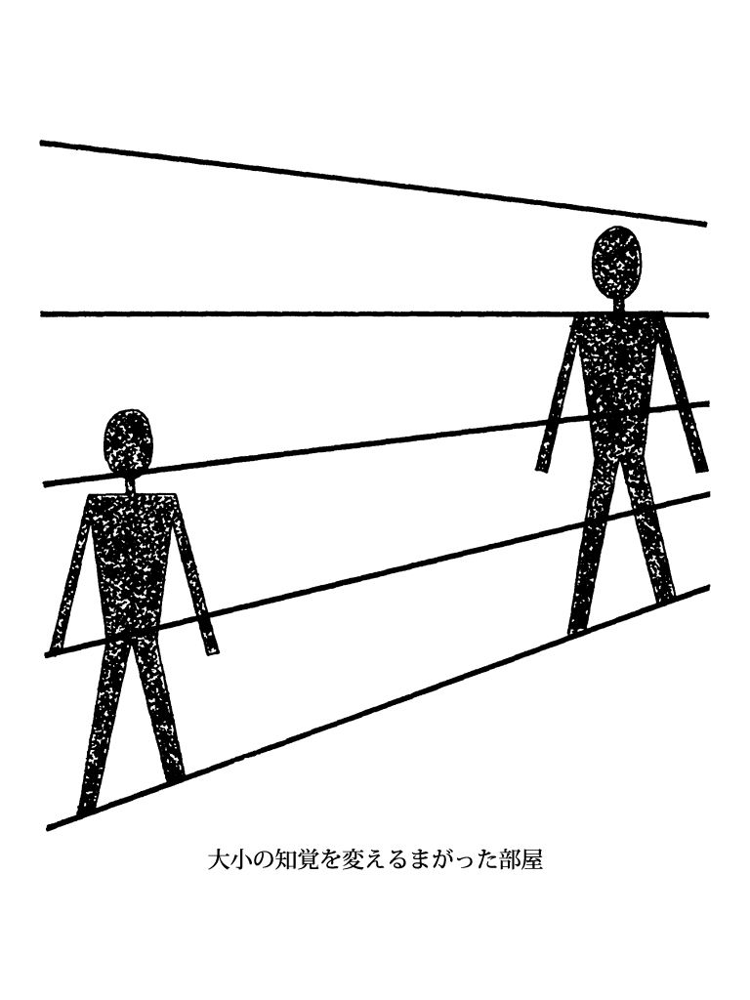
73 アイデアを生み出させるトリック
正しく説明された論理よりも、生活に密着したイメージのほうが、説得力を持つ。
一九六四年の東京オリンピックの際、警視庁から、観衆のさばき方のプランニングを依頼されたときのことである。警備課長の部屋で、私たち心理学者グループを交えた会議が持たれた。課長の後の壁には、幅五メートル、高さ四メートルほどの、精巧な神宮外苑付近図が掲げられていた。この地図を見ながら、警備プランを検討しようというわけだ。
ところが、いっこうに会議が盛り上がらず、良いプランが出てこない。出席者のだれもが、この大地図を見ながら、首をかしげるばかりなのだ。私はプランを考えるよりも、会議が盛り上がらない原因を考えてみた。そして、進行がうまく行かない原因が、この地図にあることに気がついた。そして、係の人に、地図を逆にしてくれるように頼んだ。
とたんに、「おお、いいね。」という賛成の声が、出席者のなかから洩れ、これをしおに、会議が急ににぎやかになり、数々の警備プランが出席者から出るようになった。
最初に掲げられた地図が、私たちの頭の中に描かれた地図と違っていたために、会議が白けていると、私は判断したのである。そこで、地図を逆にしてもらったのである。地図では、北を上にする常識に従って、国電・千駄ケ谷駅がいちばん上の部分にかかれている。しかし、ご存知の方も多いと思うが、日常的な感覚からすると、千駄谷駅前に立って、真正面に道路がないと、どうも実感がわかない。これで、地図のイメージと生活実感がぴったり重なり合い、会議の雰囲気が盛りあがったというわけだ。
これは、イメージを使った心理トリックの一種で、論理的には非の打ちどころのない地図空間ですら、私たちの生活空間のイメージとは差があることを示す一例である。論理的に、いかに正しく説明されていても、それだけで人びとのイメージを形成することはできない。頭の中につくられた固い壁を打ち破って、生活に密着したイメージをつくり出すことが、人びとの想像力を豊富にし、新鮮なアイデアを生み出す原動力になるのだ。
イメージの重要性については、だれしも認識しているが、イメージを明確にすることはむずかしいと考えられている。しかし、地図を逆にするという簡単なことでも、人びとにイメージを与え、無味乾燥な地図を、人びとに親しみやすくすることができるのである。このようなトリックは、会議に、セールスに、社会教育に、広範に活用されている。要は、そのポイントをどうつかみ、人びとの生活実感から、さまざまな実現可能のプランをひねり出せるかである。
Ⅲ 大衆にかけるトリック
74 新しく思わせるトリック
人は、話し言葉の内容よりも、「語感」に敏感に反応する。
現代のように、書き言葉よりも話し言葉が優位に立つ時代では、言葉の持つ「語感」は、ますます重要な要素となってくる。私はかつて、即席スープの名まえをつけるさいに、言葉から語感を割り出す試みをしたことがある。心理学の技法のひとつであるＳＤ法を用いて、五十音のひとつひとつの文字に日本人がどんな「感じ」を抱いているかを調べたのである。その結果、「ん」という文字は、「暗い」「古くさい」「やぼったい」などのイメージがあるのに対し、「パ」や「リ」などの文字は、「明るい」「近代的」「発溂としている」といったイメージが持たれていることを知った。
アメリカの意味論の大家Ｓ・Ｉ・ハヤカワ博士も、「語感」の重要性を認め、人は話し言葉の内容を聞くのではなく、話の響きを楽しむ事実を指摘している。彼によれば、ちょうど、猫や犬が軽くたたかれるのをうれしがるように、一定の間隔で、言葉で軽くたたかれるのが好きだという。ハヤカワ博士は、語感の持つこうした作用を、「言葉の催眠術」と名づけている。
こうした、「言葉の催眠術」を使ったネーミングで、もっとも成功したものの一つに、「ソニー」をあげることができよう。創業当時は、「東通工」という、どこにでもある中小企業を連想させる社名だったが、テープレコーダーの開発に成功すると、「ソニー」と改名した。この言葉には、まえと違って「新しい音」「しゃれている」といった響きが感じられる。今日のソニーの成功は、「ソニー」という言葉の持つ語感が、現代人にアピールしたことが、おおいにあずかっているといえよう。これ以後、「新しさ」や「しゃれた」感じを与えるために、カタカナの社名や商品名が続出した。戦後、アメリカナイズされた生活経験の中から形成された「語感」の効力の一つである。
言葉のうえでは、同じ意味でも、語感がちがうと、同じ商品でも、違った商品に見えるところが、語感の持つ魔術である。先日も、デパートのジュニア・ショップの売り場に、ティーンエージャーの女の子が、母親と買い物に来ているのに出会った。女店員は、ブレザーコートを試着した女の子にむかって、「なかなかサエてますよ。」と、ほめていた。ティーンエージャーには、「サエている」という語感が、ぴったりくるのだ。「とてもよくお似合いです。」では、しっくりこないのである。なかなかサエた店員がいるものだと、私は感心してしまった。
こうした「言葉の催眠効果」を巧みに利用し、一躍、流行作家になったのが、五木寛之氏である。若者に人気のあるゆえんである。
75 商品を流行させるトリック
現代人の流行に対する感覚は、物質的同一性と心情的異質性とを備えている。
繊維業界の不況をよそに、レナウンのニット製品「イエイエ・ルック」が、大ヒットしているという。安くてしかも同一の価格でありながら、じつに六百十五種類にのぼる色・柄のバリエーションをそろえたところが、若者にアピールしたようだ。
私は、現代人の流行に対する感覚は、物質的な同一性、つまり価格の一元化、低廉化へ向かって進む半面、他人と異なるものを求める心情的異質性をも備えているところにあると思う。レナウンは、この現代人の感覚を巧みにとらえて、「安い→質が落ちる」という従来のイメージ連鎖を、「安い→豊富・個性的」という新しいイメージにつくりかえてしまったのである。この二重性は、商品だけではなく、歌手やタレントなどの「人」を売るためにも要求されている。流行する商品とは、この二重性をうまくフィットさせた商品のことだと言える。
まえの項でふれた五木寛之氏の小説に、『涙の河をふり返れ』という作品がある。インテリくずれの芸能ディレクターが、少女歌手の売り出しに成功する過程を描いて、醜い芸能界の暴露小説にもなっている。このディレクターは、売出しにあたって友人の社会心理学者のアドバイスをうける。そして、流行スター誕生のための二重構造の原理を教えられるのである。
まず、スターは、美貌、美声、物質的な豊かさなどの点で、大衆と異質でなければならない。しかし、同時に、流行歌の主要なファンを構成する底辺の大衆と同じ悩みや苦しみなど、不幸の経験において、心情的に大衆と同質のものを持っていないと、共感を呼ぶことができない、という原理である。
そこで、このディレクターは、少女歌手の出生の秘密や、育てられた環境の異常さなど、意図的に、不幸のイメージをマスコミにばらまく。彼女の人気は、おかげでグングン上昇するが、ついには、ディレクターの意図を知って、彼女は彼から去っていくという筋書きである。
ただ、この小説における「人」を流行させる心理作戦が、かなり真実を言いあてているとしても、先に述べた「物」を流行させる心理作戦とは、対照的に異なる点がある。つまり、「人」の流行と「商品」の流行とでは、異質と同質の内容が逆になっているのだ。「物」の場合には、先に述べたように物質的同一性と心情的異質性が要求されたのに対し、「人」の場合は、物質的異質性と心情的同質性が要求されている。しかし、いずれにしても流行の二重性をうまく活用しないかぎり、現代では、ヒット商品を生むことは不可能だとは言えるであろう。
76 客の心をすばやくつかむトリック
客のバイイング・ポイント（買う理由）をいちはやく先取りできる者こそ、最高のセールスマンである。
赤ん坊のベビー・カーを探すために、いくつかのデパートを歩き回ったとしよう。それぞれの店の店員は、品物のセールス・ポイントをしきりに強調するだろう。
「携帯用です。とくに軽くできていて、お持ち運びに便利でございます。」
「ワンタッチで、袋形にもなりますし、腰かけ型にもなります。」
「ホロの骨が四本でございます。」
「スプリングがきいています。振動が少ないです。」
「このように、折りたたみが簡単です。」
もし、たまたま、あなたの家の周辺で、道路工事をやっており、赤ん坊のために振動が悪いことを痛感していたあなたなら、「振動が少ないです。」という言葉が印象に残っただろう。あるいは、置き場所に悩んでいるあなたなら、「折りたたみが簡単ですよ。」と言われて、すぐ買ったかもしれない。そして、他の店員の言葉は、ほとんど耳にはいらないだろう。
これは、心理学でいう「期待」という現象である。つまり、知覚や記憶は、私たちがつねに持つこのような期待によって、かなりゆがめられているのである。これについておもしろい実験がある。
被験者に、瞬間露出機で、ものがやっと見えるくらいの短い時間光を当てて、トランプのカードを何枚も見せる。すると、トランプしか出ないという「期待」が形成され、つぎにまったく予告なしに変なカード、たとえば黒いハートのカードをこの装置で見せると、被験者にははじめはそれが何かわからない。かなりあとになって、やっと判定できたときの被験者の表情を観察すると、驚き、怒りなど激しい情緒的な反応があらわれているのである。この場合は、正常なカードに対する「期待」が、被験者の知覚を、大幅に制限してしまっていたのだ。つまり、「期待」されていないものが目の前に出されても、被験者は、それをはっきりと認識することができないわけである。
冒頭の例のように、この「期待」が、商品の購入動機となっているとき、これは、バイイング・ポイント（買う理由）と呼ばれているが、まさに相手が何を期待しているかを早く探知し、そのバイイング・ポイントを徹底的に攻めることこそ、セールス・ポイントといえよう。ずれた攻め方は、しまいには、相手をイライラさせ、信用を失わせないとも限らない。
77 商品のイメージを良くするトリック
消費者の嗜好は、商品よりも、それを包むもの、入れるものによって、自由に変わる傾向がある。
スコッチのジョニ黒のビンに、国産ウィスキーを移しかえて、客にすすめたとしよう。おそらく、「やっぱり、スコッチはちがいますね。」と、満足そうに目を細める客がかなりいるにちがいない。酒の味よりも、ジョニー・ウォーカの瓶に描かれた「おじさん」のラベルが、飲み手に絶対の偉力を発揮するのである。これは、新生をピースの箱に詰めかえても、同じである。
このように、品物を入れるもの、あるいは包むものによって、消費者の嗜好が自由に変わる傾向を、非合理的性向というが、これを、色彩研究家ルイス・チェスキンは、つぎのような実験でたしかめている。
彼の色彩研究所で、新洗剤の包装デザインのテストをするために、一般の主婦たちに、三種類の洗剤の箱を与え、数週間つづけて使用させた。デリケートな布地の洗たくには、どれが、いちばん適しているかを答えてもらうためである。
被験者の主婦たちは、この三種類の洗剤が異った性質のものと思い込んでいたが、じつは、箱だけがちがっていて、中味は、まったく同じものだった。箱の色だけが、それぞれ、完全な黄色、青、黄色を散らした青と違っていた。
結果はどうなったか。主婦たちは、黄色い箱の洗剤は、強すぎて布地を痛める危険があると回答した。また、青い箱は、仕上がりがきたないと不平を言う主婦が、ほとんどだった。
もっとも好評だったのは、第三番目の箱で、これは色彩研究所が、理想的な色彩バランスだと考えたものである。この箱の洗剤について、主婦たちは、口々に、「すばらしい洗い上がりです。」と批評したのである。
こうした消費者の心理をうまくとらえて、売上げを伸ばすことに成功した会社がある。それは、グッド・ラック社というマーガリン・メーカーであるが、もとの包装紙には、マーガリンなどの乳製品の絵が二、三個描かれ、すみのほうには四つ葉のクローバーが描かれていた。
チェスキンは、幸せを呼ぶシンボルとされている四つ葉のクローバーこそ、消費者が求めているイメージだと考えて、これを強調する方法をとった。包装紙を三回にわたって変え、つぎつぎにクローバーを大きくして、ついには、大きな浮彫りの四つ葉のクローバーだけを描いた箔つき包装紙を採用した。この結果、クローバーを大きくするたびに、まえとまったく品質の同じマーガリンの売れ行きが、めざましく伸びていったのである。
78 高い商品を買わせるトリック
人が持っている心理的防衛の姿勢は、心の内部に一歩踏みこまれたあとは、強くなるどころかかえって弱くなる傾向がある。
現在の資本主義社会において、物を売り、物を買う場面というのは、まさに一種の戦場のごとくである。売り手と買い手の、必死のかけひきによる攻防戦がくりひろげられる。そのため、売り手の激烈な競争がはじまり、売り方が組織的に研究される。あなたがもし買い手なら、この売り手の手のうちを、すこしでもよく知っておく必要がある。また売り手なら、さらに顧客心理というものをよく研究しなくてはならない。このトリックも、この両面から読み取ってほしい。
まず、あなたはこんな経験がないだろうか。デパートやスーパー・マーケットのバーゲンセールの広告を見て、たとえば、安いカラー・テレビがあるからというわけで買う決心をして出かける。デパートについてみると、そのテレビ以外にたくさんの高級テレビが並んでいる。けっきょく、買ったのは広告の品より数段高いテレビだった――。こんなとき、あなたは、もののみごとにデパート側のしくんだ心理トリックにひっかかってしまっているのである。つまり、いま書いた一連の行動の中で、重要なのは、「買う決心をして出かける。」というくだりである。ここで敵の術中に陥ったあなたは、すでに、潜在的には、少々高いテレビでも買う心理状態になってしまっているのだ。
これは、人間の心理において、何かを守るために防壁をはっているとき、いったんその防壁の中へ踏みこまれてしまうと、本当に守らなければならないものを忘れてしまう傾向かあるからにほかならない。つまり、「安ければ買う」と思っていても、いったん「買う」と決心してしまったあとでは、「安ければ」という守るべき条件が、どっちでもよくなってしまうのである。
かつて、あるマットレスのセールスマンが使って効果をあげた販売テクニックも、この原理にもとづいている。まず、もっとも低価格の商品を見せて「このぐらいのもございます」とお客の気をひく。お客のほうは、それよりは高い価格の品を想像しているので、つい気を許す。そこですかさずセールスマンは、「でも、こちらでございますと二十年の保証つきです。多少お高いようですけど、結局はお得でございまして......。」などと斬りこむのである。
一般に、マットレス、家具、電気製品などの耐久消費品は、この低価格から高価格へと引きずる作戦が効果的だというのが、セールスマンのあいだでの定説である。ついでに言えば、これに反して、日用品・化粧品・台所用品などの場合は、まず、高い品を見せてから、しだいに安い商品に移るのがよいとされている。
79 売れない商品を買わせるトリック
より高い地位を求めて前進する「業績志向型」の人間は、小心に現状に安住する「安全志向型」の人間より、現在の安全に気を配る。
セールスの第一歩は、商品の売り込みではなく、消費者の欲求に訴えかけることに始まるとは、よく言われることである。そのためには、消費者の心理をよく研究し、分析し、欲求を正確に把握しなければならない。そこから古い言葉だが、さまざまな手練手管やトリックが編み出される。つぎにご紹介するのは、ある消火器のセールスマンから聞いた話だが、にくらしいほどによく、消費者の心理の裏をかいている。
彼は、その家の主人が在宅している可能性の高い、日曜日の団地を重点的に狙うことにしている。玄関に奥さんが出て来ても、「ご主人にちょっとお話が......。」と持ちかけて、たくみに玄関まで主人をひっぱり出す。そして、商品の売り込みなどは二のつぎにして、その主人の職業や地位をそれとなく聞き出す。相手が、より高い地位を求めて進む「業績志向型」の人間だとわかったら、相手の将来がひじょうに明るいことをしきりに強調し、最後に、「将来、のびのびとお仕事をしていただき、りっぱになっていただくためにも、この消火器で、家庭だけは守ってください。」と結ぶのである。この間、商品の説明はいっさいしない。
もし、相手が小心に現在に安住する「安全志向型」の人間だったら、商品の性能をくわしく説明し、「上の○○さんのお宅でも、お買い求めいただきました。」などとつけ加える。
これは、相手の欲求をたくみについた説得の仕方だ。というのは、「業績志向型」の人間のほうが、「安全志向型」の人間よりも、現在の安全に気を配る欲求が強いからである。「業績志向型」の人間は、消火器の性能よりも、家庭の安全を強調されることのほうが弱いのだ。いっぽう、「安全志向型」の人間は、他人の動向に左右されやすく、自分で必要だと思わないものでも、あの人が買ったといわれると不安になってくる。
この二つのタイプの傾向は、消費傾向の調査では群を抜いているアメリカの調査でも、すでに明らかにされている。たとえば、車にシート・ベルトをつけている割合と、実際に使用する割合を調べた調査でも、月収の高い「業績志向型」のほうが、はるかに安全性に対する関心が高く、シート・ベルトの使用率も、「安全志向型」の三倍にのぼっていた。いつも安全を口にし、会社をクビになる恐れのないことを職業選択の大きな理由にしている人ほど、ベルトの保有率も使用率も低かったのである。銀行預金、政府公債、証券類などの自由貯蓄でガッチリ貯めこんでいるのも、「安全志向型」ではなく「業績志向型」であった。
80 客に得な買い物をしたと思わせるトリック
人は、自分の欲求と現実が一致しないときは、強いて現実に目をつぶろうとする。
最近、肺ガンとタバコの因果関係が騒がれているが、喫煙者の数は、いっこうに減らない。アメリカのミネアポリス・サンデー・トリビューン紙が、「タバコと肺ガンの関連性は、すでに証明されていると思いますか。」というアンケート調査をしたことがある。その結果、非喫煙者の二九％は証明されていると答えたのに対し、重喫煙者では、同じ答えは、たった五％だった。しかも、重喫煙者になると、証明されていないと答えた者は、八六％にものぼったのである。
また、ミネアポリスで、新車を買った成人男子六五人に、購入後四週間から六週間のあいだに面接調査をしたときのことである。面接者側は、最近四週間分の雑誌と七日まえまでの新聞を用意しておいた。そして、購買者たちに、そこに掲載してある車の広告を読んだかどうか質問したところ、自分が買った車の広告については、彼らの六五パーセントが読んでいたのに対し、他の車の広告に目を通していた者は、わずか三五パーセントであった。
つまり、「タバコは人体に有害である。」とか、「せっかく、高いお金を出して買った車よりすばらしい車がある。」という情報は、重症喫煙者や、すでに車を持つ者にとっては、ひじょうに不快なものであり、この矛盾が解消されない限り、心理的葛藤状態がつづいてイライラする。この状態のことを、アメリカの心理学者Ｌ・フェスティンガーは、「不協和（dissonance）」と名づけているが、私たちはつねに、情報を信じないとか、無視することによって、この不協和を減らし、協和を獲得するように動機づけられているのである。
だれにでもあるこの心理作用を、セールスに応用し、販売効果を高めることは、十分に考えられる。フォード自動車が、最初のムスタングのプロトタイプを完成したときのことである。会社側は十歳まえの子どもがいて、すでにふつうの車のある家族を何組か選んで、値段を言わずに、この新車を見せた。彼らの意見は、車のスタイルはとても気にいったが、実用的ではない、つまり、家族で利用するには小さすぎるというところで一致した。しかし、会社側が、車の値段は、二三六八ドルであると公表したとたん、態度が変わり、改めて新車をじっくり見て、なかなか実用性もあるようだと口々に言いはじめたのである。
これは、はじめはとても手が届かないと思っていた車が、意外にも安い値段であると知った客が、今度は、できるだけ車のすぐれた点だけに目を向けようとしたからである。つまり、いま述べた不協和状態を一転して、協和状態に客を導いたわけである。
81 コマーシャルに反撥を感じさせないトリック
人は、自分と同種の人間のいる世界には、より抵抗少なくはいっていける。
友人のテレビ・ディレクターから、「テレビのＣＭやテレビドラマを成功させるコツの一つは、視聴者が日常性（庶民性）を感じる出演者を集めることだ。」という話を聞いたことがある。失礼をかえりみずに言えば、川口晶、沢田雅美、岡崎友紀などというたいして美人でもない女性がテレビで売出したのは、隣家の女の子が、窓から見ている人に、「こんにちは」と言うような錯覚を起こさせたからだということになる。
そういえばマーシャル・マクルーハンが「映画ファンが実物を見たがるのに、クールなテレビ・メディアのファンは、役を演じているスターを見たがる。」と述べたのを思い出した。映画は、フィクションの世界だから、ファンは、スターの実物を見たがり、テレビは、逆に日常性の世界だから、ファンは役のままのスターを見たがるのである。つまり、テレビでは、スターは役を演じているのでなく、その役として実在すると感じているのだ。
かつて、「山本富士子がトイレでしゃがんでいる写真を撮ってこい。」と命じた週刊誌の編集長がいたそうだが、これも山本富士子が映画スターだったため、そのフィクション的存在のうしろにある日常性を知りたがったのである。また、アメリカの映画スターで、テレビにもよく出演するジョーン・ウッドワード（ポール・ニューマンの妻）は、「映画に出ていたころは、町を歩いていると『あれジョーン・ウッドワードよ』とささやく声を、よく耳にしました。テレビに出演するようになったいまでは『あれ、たしか私の知っている人だけど』というふうに言われます。」と語ったという。落語の三遊亭円歌（元歌奴）が、「街を歩いていると、見知らぬ人に、『おい、お前、歌奴じゃねえか。なんだい、すました顔しやがって。』と怒られることがよくあるんですよ。」と言うのと、同じたぐいの現象である。
こうしたテレビの特性を、テレビＣＭやテレビドラマを製作する人間は、じつに巧妙に生かしている。ふつうだったら、繰り返し耳もとでがなり立てられて反撥を覚えるはずのコマーシャルにも、隣家の女の子が、「おばさん、ほらこの洗剤よく落ちるわよ。」と見せにくるような身近さを感じさせれば、反撥を覚えるどころか、「どれどれ、ほんとう？」などといって身を乗り出しかねないのである。これは、人間が、新しい世界に足を踏み入れようとするとき、まずその世界に、自分と同種の人間がいるかどうかを確かめてからはいっていく、という心理的傾向があることを考えると、じつに理にかなった作戦だと言えるのである。
82 商品に親しみを感じさせるトリック
消費者は、コマーシャルによって幼児体験を刺激されると、その商品に親しみを感じるようになる。
日本はもちろん、世界中の若者の間で、いまいちばん人気のある食品は、スナック食品とガムだそうである。スナック食品にしろ、ガムにしろ、たいへんおいしいといえる代物ではない。それが、どうしてそんなに好まれるのか。じつは、これらの食べ物が乳を吸っていた赤ん坊の頃や子どもの頃に体験した心地良い口ざわりや、満足感を思い出させるからである。
もちろん、自分では気づいていないが、私たちの潜在意識の中につねに、爪をかむ、指をしゃぶる、たえず物をペロペロなめる、口の中にモノを入れるといった、幼児体験への強い郷愁が隠されている。この郷愁は、現代の社会的緊張が増加するのに比例して、どんどん人々の心の中でふくれあがっているのである。
だから、軽くて、舌ざわりが良く、幼児食を思わせるスナック食品や、いつも口に入れてかんでいることのできるガムといったものは、将来、ますます需要を増すであろうことは否定できない。テレビの食料品のコマーシャルなどは、消費者のこうした心理的弱点をよく心得ていて、小さな子どもを使って「やめられない、やめられない。」などとその食品をポリポリ食べさせたり、夕暮の野原で、「おカアサーン」と呼ばせたりする。これによって、幼児期への郷愁をそそり売上げを伸ばそうという寸法である。
アメリカのガム会社が、ある炭坑町で売り上げを高めるために、地方紙にマンガ広告を二回ほど使って、たいへんな成果を収めたことがある。原理は先の例と同じだが、広告の先進国だけあって、そのやり方は日本ほど単純ではない。
まず第一回目の広告には、単純な仕事さえまったくできない子どもが、ガムを食べた途端、ポパイのように困難をのりこえていくシーンのマンガを出す。二回目には、大人が、日々、悪化する労働条件にもめげず、ガムをかんで、それを克服していくといったマンガである。これは、子どもが親指の爪をかんで緊張感をほぐしたり、心配ごとから解放されるように、大人もガムをかめば、もっと楽しく仕事ができることを訴えようとした広告である。こんなことでも、ガムの売上げが増えるのだから、人間の心は不思議だ。
アメリカのアイス・クリームの広告を見ると、どれもコーンにキチンとおさまっていないで、色あざやかなクリームが、こぼれ落ちそうに描かれているが、じつは、この大げさな広告も、消費者に、子ども時代を思い出させて、購買に結びつけようとするトリックなのである。
83 男性用品を女性に買わせるトリック
男性は、とくにファッションにおいて女性志向性が強い。
あなたは、自分のネクタイや背広を、自分で選んで買うだろうか。アメリカで行なわれたある調査によれば、男性の背広の約五〇パーセント、シャツの約七〇パーセントの買い手は、女性だったという。
この傾向に目をつけたあるデパートが、女性ファッションのフロアの中央に、ネクタイ売場を設置したところ、ふつうのネクタイ売場の二倍近い売上げがあった。自分の洋服を買いに来た若い主婦や女性たちが、夫や恋人のために見たてて買って行くのである。これは、女性心理をたくみについたデパートの作戦が図に当った例の一つである。
シカゴ大学の社会学者デビッド・リースマンは『孤独な群衆』の中で、大衆社会では他人志向型の人びとがふえていると指摘したが、いまは、女性志向型の男性が激増している時代である。もともと、男性は、女性の期待に答えるように行動する傾向が強いだけに、男性用品をいかにして女性に買わせるかが、男性用品の売り上げを伸ばす秘訣なのである。先のデパートも、ネクタイ売場を、男性用品のフロアから、女性用品のフロアに移動させるという、ちょっとしたトリックで、売上げを倍増させたのである。
あるアメリカの男性帽子メーカーは、一九五〇年代のなかばに、女性ファッション誌『ヴォーグ』に広告を掲載し、売上げを急増させたが、これもこのトリックの一種である。いまでは、さほど珍しいことでもなくなったが、おそらく女性誌に男性用品の広告が登場したのは、これが、雑誌広告史上はじめてのことだったろう。
こうした、男性の女性志向型の風潮を利用したトリックは、いろいろな型で使われている。たとえば、資生堂の男性化粧品の広告にはかならず、「われわれの異性は女性です。」というコピーが使われている。
私のよく知っている銀座のある男性ファッション専門店の社長の話では、最近とくに、若い二人づれのショッピング客が目につくそうだ。ときには、男性ファッションに対する女性の発言権があまりに強いので、腹の立つこともしばしばあるという。しかし、腹ばかり立ててもいられないので、女性優遇策を考えて、試着室の前にソファーを配置し、テーブルに女性雑誌を常備するサービスを始めた。連れの女性を、自分の店の店員にしたてて、男性用品を買わせようというわけだ。おかげで、客の購買率が急増したと、この社長は大喜びだった。われわれ男性は、着る物までも、女性の支配下に置かれるようになったのであろうか。
84 消費者の抵抗感をなくすトリック
人は、楽をすることのうしろに、つねにそれに比例した罪悪感を感じている。
どうも売行きが芳しくないというある電機メーカーの依頼で、電気皿洗い機のイメージ調査をしたことがある。電気皿洗い機に対する主婦のイメージは、「手間が省ける」というのが圧倒的に多かった。「暇な時間ができて、自由を獲得できる」という答えは、意外に少なかった。私はこれをさらに掘り下げて、家庭の主婦たちは、暇ができて働かなくなることに、一種の罪悪感を抱いているのではないだろうかと推測した。
電気皿洗い機の売上げを伸ばすためには、まず、この抵抗感を取除かなければならない。そこで、主婦の仕事が楽になる、レジャーが楽しめるという、これまでの宣伝方法をやめて、あいた時間を、育児・読書・奉仕活動など、もっと価値のある仕事にふりむけられる点に、重点を置くように進言した。つまり、皿洗い機と、良い母親になれるというイメージをだぶらせたわけだ。このイメージが、主婦のあいだに浸透するにつれて、この会社の電気皿洗い機の売上げは、ぐんぐん上昇していった。
どんな商品にも、消費者は、便利さと同時に抵抗感を抱くものである。だから、便利さをいくら強調しても、抵抗感を取り除かなければ、商品の売行きに結びつかない。消費者の深層心理に訴える広告をはじめて提唱し実行した、アメリカの深層心理学者Ｅ・ディヒターも、つぎのようなことを述べている。
「人の心の中では、快楽と罪悪感とが、つねに衝突しあっている。広告マンの大きな仕事は、商品を売り込むよりもむしろ、消費者に、道義的な安心感を与えるという仕事が、かなりのウェートを占めている。」
このディヒターの説が正しいことは、自らがキャンディの売り込みに成功したことで実証された。一九五〇～五五年のあいだに、アメリカでは菓子製品の消費量が一〇パーセントも減少していた。これは、太り過ぎと虫歯の原因が、砂糖入りの食品にあると宣伝されていたためだった。そこでディヒターは、甘いものに対する消費者の抵抗感をできるだけ少なくするために、一つのトリックを考え出した。キャンディの大きなケースの中に、一口で食べられる小型のキャンディを入れたのである。消費者はこれで、「ほんの一口だけ食べるだけだ。あとは捨ててしまおう。」という口実ができる。一口キャンディという「より小さな悪」で、キャンディに対する罪悪感を薄めてしまおうという作戦で、まんまとキャンディの売り込みに成功したのであった。
85 消費者を目に見えない網にかけるトリック
情報の受け手は、その情報を知覚したという自覚がなくとも、情報によって、反応を生じる。
私たちの周囲には、商品を売り込もうとする売り手側の、全智全能をふりしぼったトリックのワナが張りめぐらされていると言っても過言ではない。この本を読み進められたあなたは、そのトリックを見破る防衛策が、いろいろと頭に思い浮かんでいることだろう。だが、彼らの使うトリックは、私たちの意識に訴えかけるだけでなく、自分自身ですら気づかない心の奥底までにも、遠慮なく踏み込んでくるのである。消費者を目に見えない網の目にかける一例を示そう。
アメリカのマーケット・リサーチャー、ジム・ビカリーが使った手口である。ビカリーは、ニュージャージー州のある映画館で、特殊な映写機を使って、スクリーンに、"Drink Coca Cola"（コカ・コーラを飲んでください。）、"Eat Pop-Corn"（ポップ・コーンをどうぞ。）という二つの言葉を映写した。
これらのフレーズは、映画のフィルムの映像にかぶせて、ほんの短い時間だけ映写するか、刺激をひじょうに弱めて提示された。だから、観客はだれ一人そんな文句がスクリーンに映し出されていることに気づかなかった。たとえ、前もって予告されていたとしても、気づかれないほどの瞬間的映写であり、どんな目のいい人でも、それが映し出されていることがわからないほどのうすい字幕だった。
夏のあいだ、この映写が続けられたが、このフレーズが映し出された夜は、映画館の売店のコカ・コーラの売上げが六分の一、ポップ・コーンの売上げが二分の一以上も上昇したという。観客はまさに、目に見えない売り手の網の目にかかっていたわけだ。
このトリックが、有名なＳＰ（Subliminal Perception）広告（閾下広告）のはじまりである。アメリカの新聞にはこのやり方に対する反対論が続々と掲載され、イギリス広告業者協会は、一九五八年に、「広告を受けいれるか拒むかは、公衆の自由な選択によるべきだ。」として、禁止したほどのセンセーションを巻きおこした。しかし、ビカリーは、この種の刺激が効果的な反応をひきおこすのは、消費者側がすでにその品物を買ったことがあるからだと主張した。
闕下刺激は、情報の受け手が、その情報を知覚したという証拠はまったくないが、無意識の欲求が確実に存在したために、反応を生じさせるのに成功した典型的な例である。
ＳＰ広告には、その効果に対する疑問や道義的な問題が残っているが、無意識に訴えかける広告、宣伝の手段として、消費者が知っておかなければならないトリックの一つである。
86 消費者をセールスマンに仕立てるトリック
流行の口火をきるには、消費者の中の「革新者」を活用することが秘訣である。
消費者の購買動機を調べてみると、広告で見たから、自分で気に入ったからというよりも、人からすすめられたからという人が意外に多いので驚く。この「人にすすめる」推進役が、いわゆる「革新者」と呼ばれる人たちである。商品を売り込むためには、まず、この人びとを、セールスマンに仕立てあげなければならない。
アメリカ・イリノイ大学のＷ・Ｅ・ベルのカラーテレビ購買層調査によると、イノベーターと呼ばれる人びとと一般消費者のあいだには、あきらかに差が見られた。デトロイトの中心部で、百九世帯を対象に、初期の購入者一〇パーセントをイノベーターとして分離し、これより遅れるが普及率五〇パーセント以内にカラーテレビを買った者とを比較してみたのである。その結果、イノベーターでは、（１）男の職業は管理職か専門職 （２）教育程度、世帯所得がきわめて高い （３）家は持家の場合は、ひじょうに高い費用を建築に当て、アパートの場合は、家賃がきわだって高いことが判明した。
ところで、このイノベーターたちのセールスマンぶりはどうか。六五パーセント以上が、その製品について他人から意見をきかれ、半数は、実際に見せてほしいと頼まれている。さらに、意見を述べたか、品物を見せたイノベーターの六八パーセントは、あとで、その人が製品を買ったという報告を受けているのである。ことほどさように、一般の消費者は、自分たちの身近にいるイノベーターによって影響を受けやすいのだ。
いっぽう、彼らイノベーターたちは、自分たちがイノベーターであることを自覚して、イノベーターという「名誉ある地位」からすべり落ちてしまうことを、何よりもおそれている。自分より先に、新製品が、一般消費者の手に渡ることは、彼らにとっておおいなる屈辱なのだ。このイノベーターの心理を逆用して、うまく成功した男を私は知っている。
彼は、東京大学の卒業生名簿を完全に備え、各卒業生の現在の職業・住所・家族構成などをフォローしているだけで、十分な生活費を稼いでいる。販売プロモーションの重要な武器であるＤＭの発送先を選定するために、名まえを買いに各企業が彼のところに殺到するのである。東大の卒業生とその家族なら社会的影響力が大きく、したがって、商品が売れる口火をきってくれる可能性が大きいというわけだ。彼らも、新製品の発売をいち早く知らせてくれると悪い気もしないらしく、いち早く買ってくれ、そのうえ、せっせと宣伝してくれるのだそうだ。
87 消費者の夢をかなえるトリック
よく売れる商品とは、大衆が抱いている理想・希望の実現を助ける媒介の機能をはたす商品のことである。
ドイツのＮＳＵモーターバイク社のバイクが、ある年、突然に販売額が激減した。なぜそうなったか、理由がまったくわからない。不安に駆られた経営者は、まえにも述べたアメリカの深層心理学者Ｅ・ディヒターを招いて、大がかりな睥買動機調査を行なうことにした。この面接調査は、意外な事実を引き出したのである。
これまで、ＮＳＵのバイクの宣伝コピーには、かならず、「このバイクは、十年間保証つきです。」と、堅牢性がうたわれていた。質実なドイツ人に受けそうなコピーだが、調査の結果は、これこそが、消費者の夢をこわしているというのである。そのころの一般的ドイツ人の夢は、二、三年のうちに小さくてもいいから、タイヤの四つついた車を買いたいというものであった。
経済観念の発達しているドイツ人は、十年間ももつバイクを買ってしまったら、車に買いかえるときに、捨てることになってもったいないし、不経済だと考える。だから、すこしのあいだがまんして、車が買えるようになるまで待とうということになってしまったわけだ。
売行き減少の理由を知ったＮＳＵ社は、ただちに、「十年間保証」の文字をはずすと同時に、一つのトリックを使った。これまでのバイクのデザインを変更して、四輪車のイメージに近づけたのである。たとえば、自転車に似たベルの代わりにホーンを取り付けたり、まだバイクにナンバープレートが不必要だったにもかかわらず、もっともらしいナンバープレートをつけたりした。さらには、下取りに出して交換できるトレード・イン・システムを採用した。この策はみごとに当たり、売行きはふたたび、めざましい上昇を示しはじめた。
このエピソードは、よく売れる商品とは、商品そのものの有用性よりも、大衆が抱いている理想・希望の実現を助ける媒介の機能を果たす商品であることを、われわれに示してくれた。バイクそのものをどんなに売り込もうとしても、大衆の夢が車に移ってしまえば、それきりだ。バイクを売るためには、車のイメージを売らなければならないのである。
大衆の夢は、つねに変化している。ある商品がヒットしたからといって安心してはいられない。大衆は、その商品が、自分たちの夢を媒介してくれる役割を持っていないと見きわめたとき、さっさと離れてしまう。要は、その商品に、いかにして大衆の夢を織り込んで行くかである。すべての販売戦略、宣伝戦略はここから出発しているのだ。まさに、販売とは、消費者との心理戦争にほかならない。
88 観光客を引き寄せるトリック
擬似体験と実体験とは、同じ体験として融合される。
アメリカを旅行中、サンフランシスコで二人の日本の女子学生に会ったことがある。彼女たちは、アルバイトで貯めたお金と親からの〝カンパ〟で、貧乏旅行をしているのだという。彼女たちを車に乗せて、フィッシャーマンズワーフやゴールデン・ゲート・ブリッジなどの名所を案内したが、まだ十九歳の二人は、大喜びで、「うわア、すばらしい。これテレビで見たのと同じだもの。」と繰返したのである。
私は、いささかシラけたが、若い二人の感覚が、テレビも実物も、同じ体験として融合しているのを知らされた。「テレビを見て育った六歳の子どもは、封建時代の六十歳の老人よりも、ものをよく知っている。」というのは、マーシャル・マクルーハンの言葉だが、現代のテレビ社会では、テレビで見た擬似体験が、実際の体験とオーバーラップし、あるいは擬似体験のほうが価値があると考えられる傾向が強くなっている。
この心理的盲点をつけば、たとえば、写真・絵葉書とそっくりの風景を旅行のコースに組めば観光客を引き寄せることができそうだ。現に、ＮＨＫで現在放映されている『春の坂道』の柳生の里や、『繭子ひとり』の八戸市は、いまや観光客のメッカとして、押し寄せる人波で悲鳴をあげているというではないか。
これは、映像媒体にかぎらない。音響媒体にも同様の効果が見られる。東大出身のインテリ歌手とさわがれた加藤登紀子嬢の歌う「知床旅情」がヒットしたとたん、北海道のさいはての地、知床半島を訪れる観光客が激増したといわれる。
それだけに、擬似体験が、実体験によって裏切られたとき、人びとの拒絶反応もそれだけ強くなる。
拒絶反応が強くなればなるほど、擬似体験に対する人びとの要求は高度化されていく。しまいには、どうせテレビで映される日本名所など、うそにきまっているという拒絶反応が起こり、あそこだけには行くまいという反感となってあらわれる危険もあるのだ。
最近、若者たちが、テレビを離れ、ラジオに移り、さらにそれを捨てて行く過程は、擬似体験の高度化として興味深い。いまや、企業イメージも、資本金・業績よりはテレビのＣＭによって作り出された時代から、より高度な、たとえば公害防止イメージ、手ざわりの商品を作るイメージが喜ばれる時代なのだ。あまりにもテレビに依存している企業は、テレビによって崩壊の道をたどるのである。
89 大衆の欲求を探り出すトリック
人が他人に示す欲求と、実際に行動を規制する無意識の欲求とのあいだには、大きなギャップがある。
ある著名な女性週刊誌の編集長から、こんな話を聞いたことがある。その女性週刊誌では、セックスの記事を掲載するときには、記事のタイトルを十本ぐらい、候補としてつくるのだそうだ。ひじょうに刺激的なものからおだやかなものまで、各種そろっている。これらを、任意の読者グループに見せて、「あなたは、どのタイトルが好きか。」とたずねる。その結果、票数の多いタイトルは除外し、票数の少なかったタイトルを、編集会議にかけて、最終的にタイトルを選び出すというのである。いわば、読者の逆手をとるわけである。
これは、読者の無意識の欲求をついた、なかなか巧妙な心理トリックだ。ふつう、消費者に簡単な質問をするマーケット・リサーチといえば、消費者の好みを反映する生産活動や販売活動を行なうためのものである。しかし、調査の結果が、そのまま実際の消費行動に結びつくかといえば、むしろ、逆の場合のほうが多いのである。自分自身が考えていることと、無意識の欲求のあいだには大きなギャップがあり、人の行動を規制するのは、この無意識の欲求なのである。二、三の例を示そう。
〈例１〉広告代理店のマッキャン・エリクソンが、あるグループを対象に、燻製ニシンの購買動機を調査したことがある。なぜ、買わないかという質問に、たいていの人は、ニシンの燻製が好きでないからという答えをした。ところがさらに調べてみると、ニシンの燻製が好きでないと答えた人の四〇パーセントが、生まれてから一度も、燻製ニシンを食べたことのないことがわかった。好きでないから買わないのではなく、食べたことがないから買わなかったのである。
〈例２〉アルコール分の弱い高級ビールと、一般向きの安物とをつくっているビール会社があった。いったい、このビールのどちらが人びとに好まれているかを調査したところ、三対一の割合で、高級なアルコール分の少ないビールの方が飲まれていることがわかった。ビール会社の重役は、急拠、高級ビールの大増産を命じた。ところが、高級ビールの需要は、いっこうに伸びないのである。
じつは、「あなたは、どのビールを飲んでいますか？」という問いを受けた消費者は、質問者が心の中で、「あなたの飲んでいるビールは、安いほうのビールでしょう」と考えているのではなかろうかと無意識に感じて、高級ビールを好むと答えたのである。
表面に表われた言葉や動作を、そのままうのみにすると、とんでもない結果が起こるのだ。
90 広告効果を高めるトリック
現代の男性は、自分に対する妻の心理の動きによって、行動を支配されている。
アメリカの深層心理学者Ｅ・ディヒターが、航空会社から、「飛行機を使わないビジネスマンが多いのはなぜか。」を調べてほしいと依頼されたときのことである。
彼が、これらのビジネスマンたちに直接面接して理由をたずねると、ほとんど一様に、「事故で死ぬのは恐いから。」という、紋切り型の返事が返ってきた。
しかし、深層面接の方法を使って、さらに深く追求したところ、ビジネスマン自身が事故死を恐れているわけではないことがわかってきた。
実際の理由は、「事故が起きたとき妻がショックを受けるだろうから。」「クルマで行ってくれさえすれば死ななかったのに、と妻が嘆く姿を想像するとやりきれない。」「女房の悲しみに泣きはらした顔が頭に浮かんで......。」など、自分の死そのものよりも、妻の嘆きのほうが、彼らの心に重くのしかかっていたのである。
飛行機を敬遠する理由は、もうひとつあった。飛行機は、目的地に早く着いてしまうが、「いったい、うちの主人は、そんなに早く着いて何をするんだろう。」と、妻に妙な気をまわされるのがいやだからというのである。
つまり、彼等は、妻の心理をまず第一に考え、それを基準にして、自分の行動を律していたのである。
それまで、航空会社の広告には、エンジンを露出して安全性を強調するものと、目的地に早く到着できることをうたったものが多かったが、ディヒターの調査結果に基づいて、急きょ家で夫の帰りを待つ主婦向けに変更された。
まず、複雑なエンジン部分を見せるスタイルは、ネジ一本抜けても危ないのじゃないかと無用な心配をさせる原因になるというので、広告から姿を消した。また、「早く到着できる。」といううたい文句も、逆に、「早く帰宅できる。」と変えられた。たとえば、子どもが父親を迎える構図で、そばにつけられた言葉は、「パパは六時間も早く帰ってきたよ」といったしだいである。
現代のように、夫と妻と子を構成単位にする核家族化が一般に普及し、家族構成員が、極少に押さえられると、夫の関心の対象は、第一に妻、つづいて子どもに限定されてくる。そこで、多くの男性は、意識にのぼらない場合がほとんどだが、たえず、「自分がこれをしたら妻はどう思うだろうか。」という判断基準を、自分のもっとも重要な行動決定のファクターとしているのだ。
91 若者のハートをとらえるトリック
若者が「感じる」言葉は、無意味な二音反復語に多い。
いまの日本の消費市場は、戦後生まれの十代、二十代の若者たちによって支えられている。彼らは感覚・直観で行動するフィーリング人間である。その彼らのフィーリングをキャッチするには、彼らの感覚・直観に訴えなければならないことは、自明の理である。では、いかにして彼らのハートをつかむか。
その一つの手法として、いまさかんに使われているのが、「音のトリック」である。聴触覚にすぐれている彼らには、商品のイメージを音で表現しなければならない。そこで登場するのが、パタパタ、アンアン、イエイエ、アブアブ、ワイワイ、ボンボン、ジョワジョワ......の無意味な二音反復語である。彼らの会話を聞いていると、こうした無意味な言葉がポンポン飛び出し、私などにはチンプンカンプンでさっぱりわからないが、それで通じているのだから不思議だ。若者の心理に通じているというある評論家によれば、「無意味の意味」は、こういうことになる。
「二音反復、四音節は、ひじょうに聴触覚的なものである。性能抜群のカミソリというより〝ゾリゾリ〟といったほうがぴったりする。映像や活字でとらえられないものを、この四音節でパッと感じとるわけだ。」
この二音反復の音のトリックを使って最初に成功したのが、レナウンの「イエイエ」だった。十年まえに採用し、いまや企業イメージとして定着している。ビートルズの「ヤーヤー」が、フランス語で「イエイエ」となるわけだが、もともと二音反復のリズムは、ツイストやロックのかけ声だったのである。
東京・上野の赤札堂が、最近、ヤング向けにイメージ・チェンジしてつけた名が、「アブアブ」である。これで、「安売り屋」のイメージが払拭できるかどうかは興味あるところだが、この名は、人間軽視の世相の中で、ヤングが何を求めているかを、心理学者もまじえて徹底研究した結果、「人間の原点にもどろう」から、ふるさと、自然、大地......と発展して、アフリカの楽器で、「アブアブ」と音を出す太鼓にぶつかったというエピソードがある。
平凡出版の、十八歳～二十三歳の女性を対象にしたファッション誌『アンアン』は、世界にめずらしい動物パンダの愛称である。月賦デパート丸井の「さわるショッピング」のＣＭ「さわってさわって、ワイワイワイ」は、気ままに自由に、ワイワイガヤガヤをストレートに表現して成功した。このほか、「ボンボン」でガムの新しい購買層を開拓したロッテなど、音のトリックで成功した企業は少なくない。
92 人を集めるトリック
集団の中では、自意識と、目に見えない規範が、人の行動をがんじがらめにしている。
一九六四年に、ニューヨークのど真ん中にあるキュー・ガーデンズというところで、まだ黄昏どき、二十八才の女性が通りがかりの男に刺し殺されるという事件が起こった。人通りが激しいところであり、この現場を目撃していたものが実際には三十八人もいながら、そのうちだれ一人として、彼女を助けようとはしなかったという。
また、これは、オハイオ州立大学のビブ・ラタネ教授が試みた実験であるが、彼は、高いところにある物を取ろうとして、椅子にあがり、床に落ちて脚をケガした女性の、「痛い！ 助けて」という叫び声を録音した。そして、それを学生がたむろしている部屋のとなりで流したのである。この結果、学生が、一人でいるときには、その七〇パーセントがすぐに立ち上がって助けに向かったのに対し、同じ部屋に数人でいるときに反応を示した学生は、わずか二〇パーセントにすぎなかったという。
この二つの例から、日常、我々が目に見えない社会的規範にいかにしばられているかがわかるであろう。
社会的規範とは、法律・規則・モラルとはちがう。社会的生活を営んでいる人間が二人以上集まったときに生じる互いの自意識、抑制力といってよいだろう。つまり、一人でいるときには自由にふるまえる人間でも、集団の中に入るや否や、周囲の顔色が気になり、モラル的には〝善〟とされている行為に対してさえ、消極的になってしまうのである。
これは、社会的人間というものが、人前で冷静さを失ったり、恥をかくのを恐れるからというだけでなく、よほど特殊な人種を除いては、〝目立つ〟ことを嫌うからだ。
だから、もし、人目の多いところで、何人かの人間を集めようとするならば、〝目立たせない〟ということがポイントになる。目立たせないためには、故意に二人位の先例を用意することだ。
街頭将棋だとか、バナナのたたき売りなどを見ていると、かならず、だれかが商売相手になっている。いわゆる〝サクラ〟という奴だ。
彼等は、周囲の目を気にする一般人の心理をよくつかんでいるのである。
そこで、車が通りの激しいところでパンクなどして、人の手が欲しいときには、乗車メンバーの一人が、通りすがりで手伝っているといった風を装うことだ。すぐ通行人がやってきて「お手伝いしましょう。」と声をかけるだろう。
93 デマを信じさせるトリック
漠然とした不安が蔓延しているとき、人びとはその不安の原因を、何か明確で誇大な予言に結びつけ、納得しようとする。
よく知られている話だが、一九三八年、アメリカで、火星人襲来をテーマにしたラジオ・ドラマが放送されたとき、全米で約百万人の人が、これを事実と信じて、避難行動に移った。ラジオを聞いて外へ飛び出すと車が列をなして走っている。それを見て、みんな逃げているのだと思いこむ。逆に一台も車が見えないと、もうみんな逃げてしまったと恐怖に駆られる、といった具合で判断力を失った人びとの群が逃げまどったといわれている。一九三八年と言えば、第二次大戦勃発の前年、ヒトラー・ドイツの抬頭が、人びとの心に重くのしかかっていた時期である。
最近のアメリカにも、似たような例がある。どこからか、「一九六九年四月四日、カリフォルニア州は大地震で壊滅する。」という予言が流された。すると、この日の一週間まえから、州中は大騒ぎに、なった。ラジオでは、「カリフォルニアがなくなったら、ボクたちはどこへ行けばよいのか。」という歌詞の歌が、ひっきりなしにリクエストされ、『偉大なりしカリフォルニアの最期』という本や、サンフランシスコが海にのまれる光景を描いたポスターが、飛ぶように売れた。また、天災時の心得を書いた市当局発行のパンフレットは、印刷が追いつかないほどの需要だったという。そしてついに、狂信的な伝道者の一隊は、不安におののく人びとを連れて、州外に移動していった。そのうち、有名な地震学者が州外に移住するとラジオが報じると、問い合わせが殺到した。ついに彼は、マイクの前で、「学会出席のために二、三日留守にするだけである。」と弁明しなければならなかったという。
なぜこんなことになるのか。私も、警視庁の依頼などで大衆操作の研究を長年やってきたが、まだ確固たる結論を得るにはいたっていない。ただ一つ言えることは、戦争、経済不安、政治危機など、自分の周囲に何かもやもやとした不安を抱きはじめると、人びとは信じられないほど簡単に、奇想天外な予言や流言蜚語に心を動かされ、それを信じてしまう傾向があるということである。いまのアメリカの例でも、予言を信じたのは、若者がいちばん多かったという。ヒッピー運動の発祥地であるカリフォルニアだけに、アメリカ社会の危機を、若者たちが、もっとも敏感に感じとっていたのにちがいない。南カリフォルニア大学の精神分析学科主任エドワード・ステインブルック博士が語ったつぎの言葉は、この間の事情をうまく表わしていると思う。「悩める者は、この予言で、明確な不安の原因をつきとめた気がして、ある安堵感を抱くと同時に、同じ悩みを共有する者の同志的な一体感を抱きあうことができる。」
94 人の流れを操るトリック
参加者のパーソナリティに応じて、いくつかのイベントを与えることによって、流れの集中を避けることができる。
一九六四年の東京オリンピックで、私はメイン・スタジアムの観客の整理を依頼されたことがある。つまり、観客の流れをスムーズにするにはどうしたらよいかを、心理学的に研究してほしいというわけだ。
最大の難問は、開会式当日の客を、どうさばくかだった。おそらく、スタジアム内には一〇万人、それに周囲の神宮外苑の空地を埋めるであろう三〇万人を加えると、じつに四〇万人、つまり東京の人口の約四パーセントが集まると思われた。
しかも、彼らのほとんどは、開会式が終わると同時に、国電の信濃町駅か千駄ケ谷駅へ向かうものと予測される。実際、四〇万人もが、一挙に二つの駅に殺到したら、大混乱はまぬがれないだろう。もちろん、スタジアムの出口に、それだけの人間が一斉に集まるということも、たいへん危険きわまりない。しかし、だからといって、警官やガードマンを配して、繩などで、きびしく人の流れを分断させるというのは、せっかくの楽しい興奮に水をさすようなものである。また待たされている人びとが、イライラして、あまりうまい方法とはいえない。
そこで、私は、四〇万人の人びとが、みなそれぞれに異なった性格の持ち主であることに目をつけた。たとえば、気が早くてすぐにでも帰りたい人、用事をかかえている人、せっかくお金をはらったんだから、ゆっくりと楽しんで帰ろうという人、まだ物足りない人、気の長い人、家へ帰るのをできるだけ引延ばしたい事情のある人などなど......。
そして、四〇万人の集団を、これらの性格、あるいは事情の差異によって、いくつかのグループにわけるために、開会式終了と同時に、スタジアム外で、各種のイベントを行なうことを提案したのである。ジェット機の編隊を飛ばし、花火を打上げて、腰をあげかけた人の足を、席に釘付けにする作戦である。各人の性格の差に応じて、これらのイベントに各種の反応を示すから、一挙に殺到という事態を避けることができるというわけである。この分断作戦は、みごと図にあたり、四〇万人の観客は、まるで水が引くように混乱なく消えていったのだった。
この例でわかるように、大きな人の流れをスムーズにするには、単純に全体をまとめようとしてもうまくいかない。集まる人数が多ければ多いほど、ひとたび混乱すると収拾がつかないといった事態になりやすいからだ。参加者ひとりひとりが、ちがった性格を持っているのを利用して、その差によって、自然に分断する方法こそが、もっとも効果的なのである。
95 噂を信用させるトリック
口から口に伝えられる情報は、内容の深刻度に応じて、誇張の度合いも大きくなる。
情報量が無限にふえる情報化社会では、情報に対する感覚がマヒして、とかく選択能力を失いがちである。とくに、人から人に伝えられるいわゆる口コミ情報は、警戒を要する。人は、情報を他人に伝達するさい、自分なりの主観的な意味づけをするからである。とりわけ、情報の内容が人間の生命、社会不安、天災など、深刻であればあるほど、正確さを欠き、誇張されやすい。情報の真疑をよく確かめないと、こうした心理トリックを悪用したデマや噂に踊らされることになる。
このことは、私が、昭和三十九年の新潟地震のときに流れたデマを調査したときの結果にも、はっきり表われている。「○○石油基地が全滅した」「××地区に火災が発生して全焼だ」「△△ビルが崩壊して、中の人間は全員死亡した。」など、深刻なデマほど、「全」の字がつけられて、誇張されていた。しかも、こうしたデマほど信頼される度合いが高く、これらのデマに接した人びとの、じつに八五パーセントが、真実と思い込んだのである。
口から口への情報が、いかに変容され、頼りないかをもっとも端的に示したのは、心理学者カール・メニンジャーが『人間の心理』の中で述べた実験結果である。ＡからＪまでの奥さんが、順々に電話でキング夫人の噂話をしたのだが、健康なキング夫人が、最後には死んでしまっているのだ。
Ａ夫人→Ｂ夫人「キング夫人は、今日はどちらにお出掛けでしょうか。ご病気かしら。」
Ｂ夫人→Ｃ夫人「キングさんがご病気らしいと、Ａさんが心配していらっしゃったわ。」
Ｃ夫人→Ｄ夫人「キングさんがご病気だそうですわ。重くなければいいのですが。」
Ｄ夫人→Ｅ夫人「キングさんが重病なんですって。早くお見舞いに行かなければ。」
Ｅ夫人→Ｆ夫人「キングさんがひどくお悪いんですって。Ｄさんが呼ばれていらっしゃったもの。」
Ｆ夫人→Ｇ夫人「キングさんが、いけないらしいわ。ご親戚の方が集まっているらしいわ。」
Ｇ夫人→Ｈ夫人「キングさんのことご存じ？ もうおなくなりになったのかしら。」
Ｈ夫人→Ｉ夫人「キングさん、いつおなくなりになったのですか？」
Ｉ夫人→Ｊ夫人「キングさんのお葬式にいらっしゃいます？ きのうおなくなりになったそうよ。」
Ｊ夫人→キング夫人「私たったいま、あなたがおなくなりになって、お葬式だと聞きましたわ。いったい、だれがそんないやな噂を流したのかしら。」
96 ヤジ馬を思いどおりにするトリック
群衆は、数が増し、密度が高くなるにしたがって、感情的で無批判的で、暗示にかかりやすくなる。
だれでも経験することだが、ストレスがたまったり緊張しているとき、大群衆の雑踏の中にまぎれ込むと、ほっとする。個の存在が稀薄になり、千人の群衆の中では千分の一、一万人の群衆の中では一万分の一と、自我意識が消失するからである。こんなときは、一人一人に、何をしても責任を問われない無名性が支配しているので、群衆は、感情的で、無批判的で、暗示にかかりやすく、一人の人間の動作や言葉が、群衆全体に思いもかけぬ大きな影響力を持つようになる。この被暗示性は、群衆の数が増し、密度が高くなって、肌と肌のふれ合いが多くなるにつれて、いっそう高まってくる。
昭和三十九年の新潟地震のときのことだ。市の中心部のデパートでは、ちょうど大売出しの最中で、肩がふれ合うほどの混雑ぶりだった。地震が始まると、お客は、「地震だ！」と口々に叫んで、ショー・ケースにつかまったり、フロアにすわりこむなど、大混乱に陥った。そのとき、美しい女性の声で、「ただいまのは、地震ではございません。火力発電所のタンクが爆発したものです。ご迷惑をおかけして申しわけありません。本日は、いちおう閉店させていただきますので、お一人ずつ、静かにお帰りください。」というアナウンスが流れたのである。それを聞いたお客は、だれともなく立ち上がり、順序よく外へ流れ出て行った。そして、あらためて、無残に壊れた市街を見て、肝をつぶしたのである。
あとでわかったことだが、このアナウンスは、店員がゆれる火力発電所を窓から目撃して、爆発と誤認したためのものであった。これは、誤認が群衆の被暗示性をうまくつかまえて、思わぬ〝ケガの功名〟をもたらした一例だが、これを意識的に大衆説得のトリックに使ったのが、ナチス・ドイツの独裁者アドルフ・ヒトラーである。
彼の演説は、かならず黄昏時に行なわれ、演壇にのぼると、続いて太鼓がとどろき、右手を高くあげる派手なゼスチャーが、群衆の目を釘付けにした。
ヒトラーの演説が進むにつれ、群衆の周囲を取巻いたヒトラー親衛隊が、ジリッジリッと中へ寄ってくる。群衆の身体がふれ合うように、意図的に群衆の輪を縮めて行くのだ。そのとき、群衆の一人が、「ハイル・ヒトラー」と叫ぶと、ヒトラー演説の内容よりは、そのムードに酔って被暗示性が最高に高まっている群衆は、われがちに、「ハイル・ヒトラー」を叫び出す。まさに、ヒトラーは、世界最高の心理操縦師だったのである。
97 パニックを静めるトリック
人は、自分が置かれている状況が危機的であればあるほど、たしかな情報を欲し、それが得られないと心理的パニックに陥る。
まえに述べた一九六九年のアメリカ・カリフォルニア州における大地震のデマから二年後、一九七一年に、大地震がロサンゼルスを襲った。その直後、震源地近くの市民の行動を調査した安倍北夫東京外大教授が帰国したとき、私に、ひじょうに意外な表情で言った。
「いやあ、多湖さん、驚きました。あれほどの大地震で、しかも、二年まえにデマ騒ぎもあったくらいだから、さぞデマがたくさん飛んだにちがいないと予想していたのですが、これが、まったくなかったんですよ。」
これには、群集心理学に絶好のデータ収集ができると意気込んでいた安倍教授も、お手あげだった。八万人にのぼる市民が、大した混乱もなく、わずか四時間で避難できたというのである。
これはなぜだろうか。第一に、市民が、じつに正確な地震情報を与えられていたからだった。危険区域上空は、昼夜の別なくヘリコプターが飛びかい、テレビでは、ダムの決壊現場を専門家の解説つきで流していたという。これならば、不思議なほど混乱も少なくデマも生じなかったこともうなずける。というのは、パニック（恐慌）状態においては、何よりも冷静に確実な情報を得られるようにすることが必要なのだ。人は、自分をとりまく状況が危機的であるほど、自分、あるいは自分の家族が住んでいる地域の「安全性」についてはっきりとした情報を得たいという欲求が高まる。このとき、正確な情報が得られないと、デマが生じるわけである。さらに、このデマに対して、人は、自分自身の不安な心を投影し、そのように意味付けして他人に伝えるから、ますます情報は歪められてしまうのだ。
私が、安倍教授らとともに調査に加わった新潟地震のときが、まさにそれだった。新潟では、市民の四〇パーセントが何らかの形でデマに接していた。「津波が来る」とか「大きな病院が全焼した」などは、まだマシなほうで、なかには、「ソ連の飛行機が原爆を投下した」などというおよそ荒唐無稽なのもあった。デマの情報源は、近所の人（二〇パーセント）、通行人（一五パーセント）は、まず仕方がないとして、ラジオ（二〇パーセント）や警察（五パーセント）までも、デマの共犯者だったのである。
人が不安感にさいなまれているときはきまって、その不安感をあおりたてるデマが流れるものである。その不安感を鎮めるには、確実な情報を流すことが先決だが、受け手のほうも、情報をよく確認することが必要である。
98 イライラを鎮めるトリック
人がイライラするのは、先の見通しがないときである。相手に説明しさえすれば、不満の爆発は、未然に防ぐことができる。
政治に対する庶民のイラダチ、経営に対する社員のイラダチ、教育に対する学生のイラダチなど、いまの日本には、イライラすることが多すぎるようだ。もちろん、イライラの原因は、現状に対する不満から来ているが、それにもまして大きい原因は、これらの不満を解消する先の見通しが示されていないところにある。どんな形でも説明されれば、イライラは自然に解消する。
川崎のあるＹ字型交叉点の渋滞を解消させることを警視庁から依頼されたときのことである。そこは、二つの狭い道から、広いメイン・ストリートにクルマが流れるので、大変な混雑がつづいていた。警察では、ドライバーの心をなごやかにするために、音楽でも流そうかということになったが、年長者はクラシックな音楽を希望し、若い警察官は、速いテンポのものを主張して、意見が分かれた。私は、この判定を求められたのだが、考えてみると、いまは、大抵のクルマにカー・ラジオが備えられているから、ドライバーの耳を、音楽に向けさせられるかどうか不安がある。
そこで思いついたのが看板である。交叉点に至る手前の地点に、「あと二〇分で交叉点を通過できます」と書いたマンガ入りの楽しいサインを立てた。さらに、「あと一五分」、「あと一〇分」などもつくって、ドライバーに先の見通しを与えて、イライラを解消したわけだ。
頭を冷やして、イライラを解消するアイデアは、かつて、両国の花火大会でも採用されたことがある。いまはなくなってしまったが、毎夏、永代橋と両国橋の間で行なわれた花火大会は、庶民の楽しい風物詩だった。しかし、橋の間の両岸につくられた見物席は、芸者や旦那衆に占領されて、庶民は、いきおい橋の上から観覧することになる。このため両方の橋は雑踏をきわめた。一定時間を切って、機動隊が見物客を押し出し、新しい見物客を導入する方法は、いたずらに混乱を深めるだけだった。いきなり警官に排除されれば、「税金ドロボー」、「ポリ公」と怒鳴りたくなるのは、デモ隊にかぎったことではない。
そこで、私たち心理学者グループが進言したのが、納得作戦である。橋のたもとに、警察の広報車を置き、橋へ向かう観衆にこう呼びかけるのだ。「まず、この橋で三分間ご覧になれます。つぎに左へ曲がって、さらに左へ曲がると、永代橋の上から、さらに三分間花火見物ができることになっています。押さないで、静かにお待ちください。」
進行方向を掲示した看板も立てて、スムーズに観衆を流すことができた。
99 選挙に勝つトリック
ある強力な「典型」を作ることによって、全体を同一の行動に走らすことができる。
最近、テレビのコマーシャルを見ていると、チャールズ・ブロンソン、アラン・ドロン、カトリーヌ・ドヌーブ、オードリー・ヘップバーンといった世界の一流どころの俳優が続々と登場しているのに驚かされる。さぞかし、スポンサーは、莫大な契約金を払わされているのだろうが、当然それにはそれなりの見返りがあるのである。
つまり、自分自身に確固たる自信のない大衆は、高嶺の花である美や幸福を所有しているヒーローやヒロインにあこがれ、その周囲に群がろうとする。そして、彼らが、商品である化粧品やウィッグ（洋かつら）、あるいは紳士服をつけているのを見ることによって、自分も同じようにかっこよくなれるのだという幻想を抱き、消費行動に移るわけだ。これは、大衆の即時共鳴と呼ばれる現象で、ある強力な「典型」が他の全員を同一の行動に駆り立てるという原理である。しかし、この大衆説得の原理は別に今日になって利用され出したわけではなく、ナチスの時代にもその極端な一例を見出すことができる。一九三二年十一月、ドイツでは目に見えて、ナチスの勢力が衰えてきたころのことである。
このときの選挙で、ナチスは国会議席二四と二〇〇万票を失った。そこで、ヒトラーの腹心の部下のゲッペルス（のちの宣伝相）は、断固たる処置に出る決意をした。彼は、党の宣伝機関の総力を、人口たった一五万のリッペ・デトモールト郡での補欠選挙に集中した。連日のように、党のオルグが同地につめかけ、同郡の票獲得体制はシステマティックに工作されていった。そして運動は功を奏し、ついにナチスは、補欠選挙に勝利をおさめたのである。
この事実は、ヒトラー派が一郡だけではなく、大衆全体の支持をうけているかのような印象をつくり出し、世論の大勢は見事に逆転したのである。今まで冷淡だった銀行家や経営者は手のひらを返したかのように、ナチスへの融資を再開したのもこのためであった。翌三三年一月三〇日に、ときのヒンデンブルク大統領が、ヒトラーを官邸に招いて、ご機嫌うかがいまでしたのも、まさにデトモールト郡での圧倒的勝利によるといえよう。
このように、この即時共鳴の原理は、コマーシャリズムだけでなく政治的にもひじょうに巧妙に使われている。
ばかげた戦争を二度とやらないためにも、私たちはつねに、このようなトリックにかけられる危険にさらされていることをよく知っておかねばならない。
100 犯罪を成功させるトリック
たった一枚の看板でも、使い方によっては大衆の期待と関心を集める道具となる。
最後に、集団心理を巧みに利用して、多数の人をペテンにかけることに成功した犯罪のトリックをご紹介しよう。
アメリカ・ペンシルバニア州の小さな町に、一人の男がやってきた。彼は、オペラ・ハウスを一ヶ月後の十月三十一日の晩だけ借り切った。そしてまず町の掲示板に、「かれ来たる」と書かれた看板をかかげたのである。
二週間後、その看板は、「十月三十一日、オペラ・ハウスに出演」となり、三十一日の前日には、「かれ来たれり」となった。さらに、当日の朝になると、「今夜八時半、オペラ・ハウスに出演」に変わり、町の人びとの期待と興奮は、最高潮に達した。夕刻になると、オペラ・ハウスの前は、切符を買う人が行列をつくり、男は、自分で切符売り場にすわり、人びとから一ドルずつ集めた。
場内の照明が消え、舞台が明るくなったとき、観客が見たのは、「かれ去りぬ」の巨大な看板だった。そのとき、男の姿はすでに消えていた。
これは、詐欺師が使う常套手段だ。本来の目的はぜったいに表に出さず、相手の関心を呼びそうなことを小出しにし、見えないワナでがんじがらめに縛ってしまおうというわけである。徐々に、私たちの心の中にはいりこんでくるので、じっさいにだまされるまでは、なかなか彼の本心に気づかず、あとでしまったということになる。名舞台装置家も及ばぬ、手のこんだ道具だてをするところが、詐欺師の詐欺師たるゆえんなのだ。私たちが、こうした目に見えないワナにはまらないためには、まず敵のしかけるトリックをこころえておくことが先決である。
これまで、一〇〇にわたる多種多様なトリックをご紹介してきたが、これらのトリックをどう使うかは、まったく読者の自由である。自信の無い人が、自分にかけて自己改造するもよし、あるいは、気にくわない相手をノイローゼにしたり、商売に役立てることも可能である。しかし、心しておいていただきたいのは、あなた以外の人間も、あなたと同じことを考えているということだ。つまり、あなたが、だれかをトリックにかけてやろうと思っているときは、敵もそのチャンスを狙っているのである。そこで著者としては、あなたがこれらのトリックを武器にすることはさておき、まずはワナにはまらないための防衛手段として、フルに活用されることを願わずにはいられない。
《参考文献》
この本を書くにあたり、内外の心理学者の研究成果を参考にさせていただいた。そのうち、主なる文献を左に記して感謝の意を表わすと共に、読者のより深い理解のために供したいと思う。
◆D.A.Laird & E.C.Laird, The New Psychology for Leadership: McGraw-Hill Books Company.
徳永昭三訳『人の扱い方とグループのまとめ方』（ダイヤモンド社）
◆Vance Packard, The Hidden Persuaders: David MackayCo., Inc.
林 周二訳『かくれた説得者』（ダイヤモンド社）
◆J.A.C.Brown, Technique of Persuasion: Penguin Books Ltd.
宇津木保訳『説得と誘惑の技術』（誠信書房）
◆H.J.Iysenck, Uses and Abuses of Psychology: Penguin Books Ltd.
帆足喜与子・岡本栄一訳『心理学の効用』（誠信書房）
◆Claude M.Bristol, Magic of Believing: Prentice-Hall International Inc.
大原武夫訳『信念の魔術』（ダイヤモンド社）
◆犬田 充『行動科学入門』（日本経営出版会）
◆相場 均『性格』（中央公論）
◆西川好夫『生活の心理学』（日本放送出版協会）
◆穐山定登『デザインと心理学』（鹿島出版会）
◆三隅二不二『新しいリーダーシップ』（ダイヤモンド社）
◆豊田二郎『買わせる話術』（同文館）
◆杉渓一言『職場のカウンセリング』（誠信書房）
◆北見芳雄・佐藤紀子『生活の中の精神分析』（誠信書房）
◆大山 正・詫摩武俊・金城辰夫『心理学を学ぶ』（有斐閣選書）
◆相良守次編『人間の欲望・感情』（大日本図書）
◆Ｇ・Ａ・ミラー著 戸田壹子・新田倫義訳『心理学の認識』（白揚社）
◆Ｊ・Ｍ・ドムナック著 小出 峻訳『政治宣伝』（白水社）
●本書は、株式会社ごま書房より刊行された『心理トリック 人を思いのままにあやつる心理法則』（１９７１年12月10日 初版発行）を基に電子書籍化したものです。
多湖輝人気作10冊セット
発行日 ２０１４年12月17日
著 者 多湖 輝
発行人 赤井 仁
発行所 ゴマブックス株式会社
〒１０７－００５２
東京都港区赤坂８－５－40
ペガサス青山７１０
(c) Akira Tago, 2014
ゴマブックスのホームページはこちら
http://www.goma-books.com
ブックスペースのホームページはこちら
http://www.ebksp.jp/